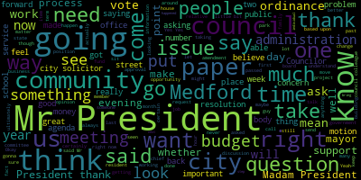

[Knight]: I'd just like to ask Attorney Dash, how are you?
[Knight]: Good to see you again.
[Knight]: How long have the process has been for the applicants from start to recount?
[Knight]: How long ago did they initiate this process?
[Knight]: Four years?
[Knight]: Have there been any significant delays coming relative to the legal aspect of this?
[Knight]: Because we don't have legal counsel or city solicitors.
[Knight]: Well, we were... You've got to wait three days to get somebody to call you back, four days, five days a week.
[Knight]: I mean, ultimately what I'm hearing is that they started the process four years ago, and at some point it's going to present some sort of economic hardship.
[Knight]: And, you know, we can only hold people over a barrel for so long as they try to shake them down in a negotiation going on in another department over here.
[Knight]: But if this is just an issue, whether or not the council feels they should change the deed of restriction, I don't see why we should be the ones to hold them.
[Knight]: In full disclosure, I live on Movement Street.
[Knight]: You know what I mean?
[Knight]: I live at number 200.
[Knight]: I'm probably three football fields, four football fields away.
[Knight]: I'm not a direct butterer.
[Knight]: I'm not a butterer.
[Knight]: I'm not a butterer.
[Knight]: But, you know, just in the interest of disclosure, I'd like to say that.
[Knight]: It's not a motion, it's more of a question.
[Knight]: I mean, at this point, Councilor, this is my last meeting, I'm a lame duck Councilor.
[Knight]: I'm not going to bring any racial items forward at this point.
[Knight]: But, you know, I just kind of find it curious that, you know, it's taken these hardworking individuals in this community four years to get this process really rolling.
[Knight]: Madam President, thank you very much.
[Knight]: Councilor Caraviello is absolutely right.
[Knight]: The coverup is always worse than the crime.
[Knight]: And Councilor Bearsley is right.
[Knight]: Trust in the public process is paramount, especially when it comes to elections.
[Knight]: So why is it that we have an elections commission that's going to go hide under their bed?
[Knight]: when the largest issue in this community has come up in a very long time.
[Knight]: I don't understand how an election commission can vote 3 to 1 to postpone reporting back to this community the flaws and errors that occurred during their mismanagement and incompetency following that election.
[Knight]: I sat up here the evening of the election, and I heard them read off the figures.
[Knight]: I heard them read off the total vote count.
[Knight]: And I said to myself, you're missing
[Knight]: like 4,000 votes.
[Knight]: You're wrong.
[Knight]: You don't know what you're talking about, Councilor.
[Knight]: You don't know what you're talking about.
[Knight]: I know one plus one equals two.
[Knight]: I know one plus one equals two.
[Knight]: The way that election was handled was the most embarrassing sight I've seen in a long time.
[Knight]: I worked on political campaigns since I was seven years old.
[Knight]: I've never seen anything handled like that before in my life.
[Knight]: The elections manager was not in this room the whole entire night.
[Knight]: I was here from 8.05 until almost one o'clock in the morning
[Knight]: And the elections manager was nowhere to be seen.
[Knight]: All the vote totals in bags, unattended, all over this room.
[Knight]: Individual members of the election commission, unsupervised, alone, going through the bags, looking through them, rifling through them.
[Knight]: And you wonder why stuff is going missing.
[Knight]: You wonder why we can't put it together, Madam President.
[Knight]: That was the biggest embarrassment I've ever seen in my life.
[Knight]: Now, shockingly, we do have a CEO in this community.
[Knight]: who's been extremely quiet, extremely quiet about what happened during this election.
[Knight]: Which leads me to believe that this behavior is something that's acceptable with this current administration.
[Knight]: Because I know if it were me, and the integrity of my election would be brought into question, I'd be sure that the department heads and the board members
[Knight]: by way of which I appointed personally, because I'm the mayor, would have their heads rolling down the street.
[Knight]: The way that they treated election day volunteers, people that wanted to participate in the process and be involved, was shameful.
[Knight]: And for them to now vote, to postpone the discussion, just tells you what kind of culture we have here at City Hall, Madam President.
[Knight]: Thank you very much.
[Knight]: I would find it very interesting if the mayor could point out when she did become aware of these circumstances.
[Knight]: You know, she's remained relatively quiet about it with the exception of a press release
[Knight]: And historically, that office has been really good at press releases and social media.
[Knight]: So it kind of concerns me, Madam President.
[Knight]: It makes me scratch my head and wonder if the mayor had knowledge about this before Halloween and didn't share it with the community.
[Knight]: Thank you.
[Knight]: Madam President, thank you very much.
[Knight]: Ricky, first things first.
[Knight]: It's your turn to pay at the Mets tomorrow morning.
[Knight]: I've served on this council for 10 years, and I've never, ever served a year without you.
[Knight]: And it's been a great ride.
[Knight]: You know, I think back to when I first had the opportunity to meet you.
[Knight]: I think I was in kindergarten, I was with your son Richard, running across High Street, going over to Hastings Lane, visiting the house, and you know, a lot's transpired since those times, and now here I am serving with you as a colleague, and I've had the opportunity to not only, you know, spend a lot of time around your family and your children, but also your grandchildren.
[Knight]: And I really think that shows what you're all about.
[Knight]: You're a true family man, and you're a true throwback to that old school politician.
[Knight]: You're the type of guy that when someone calls you on the phone, you call them back.
[Knight]: And if they don't answer the phone, you show up at the door.
[Knight]: Because you truly care about people in this community, and you want to make a difference.
[Knight]: And rest assured, Ricky, you have.
[Knight]: You really have.
[Knight]: You've done an excellent job, and it's been an honor and a privilege to serve with you.
[Knight]: And it's even more bittersweet to walk out the door with you.
[Knight]: So with that being said, thank you very much for your service.
[Knight]: I do think that there are a couple of people in this audience that haven't been recognized yet this evening that I know you're going to take a chance to recognize.
[Knight]: for the past, what is it, 12 years now?
[Knight]: The family's been very good at...
[Knight]: throwing you out of the house, letting you get out here and serve the people of this community.
[Knight]: And what is to be said about a family that's so willing to share such a great man with so many people here in this community.
[Knight]: So thank you, Carol and Lauren and Richard and Nikki for letting us have a piece of Ricky for the past decade plus.
[Knight]: Well, Madam President, thank you very much.
[Knight]: I didn't realize that subtlety was such a strong suit of mine, but apparently a couple of my colleagues feel so it is.
[Knight]: Now, who would have thunk it?
[Knight]: Back in 2013 when I was elected to the city council and I was the liberal.
[Knight]: But thank you.
[Knight]: Thank you for all the kind words that you said.
[Knight]: You know, it's kind of weird getting out of the public life, getting out of electoral politics.
[Knight]: And, you know, everywhere you go, you have people coming up to you.
[Knight]: Thank you for your service.
[Knight]: Thank you for your service.
[Knight]: Thank you for your service.
[Knight]: And I'm looking at them like they're crazy.
[Knight]: I'm not a veteran.
[Knight]: I don't know what you're talking about.
[Knight]: Thank you for your service.
[Knight]: It feels wrong to me.
[Knight]: It feels like I should be the one saying thank you.
[Knight]: truly.
[Knight]: Serving the residents of this community as a member of this council has been an honor, truly has.
[Knight]: And it's been a great run.
[Knight]: I'm very proud of the work that together we've been able to accomplish and very thankful for the friendships I've been able to make along the way.
[Knight]: You know, I wish the incoming council the best of luck.
[Knight]: I thank my past and current colleagues for their service and work.
[Knight]: We've had a lot of laughs.
[Knight]: We've done a lot of good for this community.
[Knight]: And we've always kept Medford in the forefront.
[Knight]: To my family, they've been great.
[Knight]: Sacrificed a lot to allow me this opportunity.
[Knight]: And it's something I'll be forever grateful for.
[Knight]: It's nice to see my old colleagues here, my old friends, Councilor Marks and I, at a number
[Knight]: a number of great debates right in these chambers.
[Knight]: Thank God for TV3, because we can go back and watch them and laugh at what donkeys we were making of ourselves as we picket back and forth.
[Knight]: I'm upset that Representative Donato had to leave because I remember back a number of years ago, my grandfather was still with us.
[Knight]: And I went over to the house all excited.
[Knight]: I'm a young kid and I'm working on a political campaign.
[Knight]: And I grabbed my grandfather and I'm saying, Hey, grandpa, we got to help this guy, Paul Donato.
[Knight]: He's running for state rep.
[Knight]: And you know, he's my friend.
[Knight]: And Donato, guy's a bum.
[Knight]: What do you mean?
[Knight]: I'm not supporting Donato.
[Knight]: It's a grip.
[Knight]: What are you talking about?
[Knight]: Now?
[Knight]: This is, you know, 2000 or so.
[Knight]: It's a grip.
[Knight]: What are you talking about?
[Knight]: He ran against my friend Dennis McKenna in 1982.
[Knight]: I'm not supporting that guy.
[Knight]: So if that tells you anything about the Knights in the way that we approach politics, you know, sometimes we have a long memory.
[Knight]: But with that being said, this has been a job that
[Knight]: I had never considered work.
[Knight]: I considered it something that I love to do, a form of service and an opportunity for me to give back to a city that's given me so much.
[Knight]: Sitting here tonight, being able to reflect on all the good that we've been able to accomplish together is truly rewarding.
[Knight]: I thank you all for being here this evening.
[Knight]: the people that put me in the seat, because without them, it never would have been possible.
[Knight]: Most importantly, though, I do have to, again, reiterate thanks to my family and my campaign team for all the work that they put forward over the years.
[Knight]: It's a very difficult job, and there's two jobs when you get involved in this type of business.
[Knight]: And if you don't do the first job good, it doesn't matter how good you are at the second job.
[Knight]: And the first job is getting elected, and nobody can do that alone.
[Knight]: And you're only as good as the team that you have around you.
[Knight]: You get elected, and you get in the seat, and then you've got to earn your bonus.
[Knight]: But if you can't do the first job right, you're never going to be able to get a chance to do the second job.
[Knight]: And my campaign committee worked tirelessly, tirelessly, over the last decade to ensure that I had this opportunity.
[Knight]: And for that, I will be photographed.
[Knight]: Praise me.
[Knight]: Praise me.
[Knight]: I got something here?
[Knight]: All right.
[Knight]: Is there any water in this thing?
[Knight]: This is going to be long.
[Knight]: Madam President, congratulations.
[Knight]: It's been a great run as well.
[Knight]: Maybe not as long as Councilor Caraviello and I, but that's because you chose to not make it that long.
[Knight]: You could have served in the city council for as long as you felt like it.
[Knight]: I don't know if you guys know this,
[Knight]: Councilor Morell might be a tad competitive.
[Knight]: She doesn't show it.
[Knight]: but she might be a tad competitive.
[Knight]: Very tenacious on the campaign trail.
[Knight]: I've talked to several of my neighbors and they said they voted for her just because she wouldn't get off her porch.
[Knight]: She's going to have to vote for her because she keeps coming back and she won't get off her porch.
[Knight]: And that strategy worked out very well for the council, as evident by her vote totals.
[Knight]: And when she first got elected to the council after
[Knight]: her first foray into public office.
[Knight]: We had a nice discussion when she came up here and we invited her up as a councilor-elect to observe.
[Knight]: And I said to Nicole, she had a very, very, very important decision that she had to make that's gonna shape her future here on the Medford City Council.
[Knight]: This decision that she makes is probably gonna be the most important decision that she makes as a city council.
[Knight]: And she had to choose where she wanted to sit, next to me or next to Councilor Marks.
[Knight]: And apparently, subtlety is not one of her strong spots either.
[Knight]: And I lost out on that one, Councilor Marks.
[Knight]: And since that time, she tells me that your private whisper conversations with Councilor Bears aren't whispers at all.
[Knight]: I can hear you all the way over here.
[Knight]: So with that being said, congratulations, Councilor Marks, you're responsible for helping shape and mold our president right now.
[Knight]: But as I sit here and I see you there, and don't take this the wrong way, Councilor, but I feel as though your talents are wasted at the chair.
[Knight]: You're an excellent city councilor, very capable on the council floor and a very formidable debater.
[Knight]: I enjoyed the time where you'd step away from the chair and step down on the floor because you always brought forward well thought out arguments that were rooted in fact, not fiction.
[Knight]: that was supported by Data Not Drama.
[Knight]: And that helps move this body along.
[Knight]: So with that being said, thank you very much for your approach to the office and for the way that you handle yourself and tried to handle this body.
[Knight]: It's impossible to hurt a bag of cats and you did the best you can with what you got here.
[Knight]: You know, we've had some great, we've had some great meetings and we've had, we've had some, some very,
[Knight]: very, what we could say, colorful meetings over the past four years, and you've handled yourself with great dignity and great respect.
[Knight]: You've carried yourself in a fashion that's admirable, and you're certainly worthy to wield that gavel and worthy to carry the title Councilor, and it's been an honor and a privilege to serve with you.
[Knight]: Councilor Marks, on that topic, can you tell us what you made when you were in the school?
[Knight]: Madam President, point of personal privilege.
[Knight]: No, Madam President.
[Knight]: So do.
[Knight]: We can dispose of the paper first.
[Knight]: Madam President, thank you very much.
[Knight]: Shortly after the budget debates in late June, following 16 weeks of pregnancy, my brother and his wife gave birth to their second child, Amira.
[Knight]: And after several months of hospitalization,
[Knight]: She was unable to withstand the college medical procedures and was laid to rest in mid-October.
[Knight]: I've served on this council for a decade now.
[Knight]: I think my record will reflect that my first eight years of service, I missed one regular city council meeting, and that was for the birth of my second child, Brandon.
[Knight]: I don't think anybody in this room can say that I haven't come to these meetings prepared, ready, or able to do the work.
[Knight]: When I first decided to run for elected office, it was with the support of my family and the understanding that they were always going to come first.
[Knight]: That's what needed to happen during this time.
[Knight]: So I do regret my absence from the council during this period of time.
[Knight]: It's a very private and personal matter to both me and my family.
[Knight]: But quite frankly, it was something I felt like I needed to share this evening, albeit reluctantly.
[Knight]: I offer this not specifically of a justification for my absences, but for an explanation to the voters here in this community.
[Knight]: You know, I've heard the conspiracy theories and underfunded criticisms and comments made by many people in this community, and I find it necessary that I address the situation.
[Knight]: So I thank you, Madam President, for entertaining me at this time.
[Knight]: Madam President, it appears to be rather self-explanatory.
[Knight]: I'm comfortable moving forward, absent the presentation from the administration.
[Knight]: And with that, I will go- Mr. President, I just want to reiterate the fact that- Councilor Knight, I haven't recognized you.
[Knight]: I do.
[Knight]: I'd like to fact check.
[Knight]: Mr. President, just on the facts, I believe you stated the school committee's salary has not increased from a figure of $12,000 per annual.
[Knight]: Mr. President, you did mention that the school committee's
[Knight]: Monetary figure may not have changed since the year 2000, but I do believe that their compensation structure has changed, which is something that's important to point out.
[Knight]: Previously, their compensation structure was that of a stipend, which made the position a line item budget item.
[Knight]: And now it's turned into a pension eligible health insurance eligible benefited position, which therefore can become
[Knight]: what would be called an unfunded pension liability.
[Knight]: So that's something that we also have to take a look at as we move forward.
[Knight]: But the pay structure did change from the way that the committee was compensated to the way they are currently compensated previously, where stipends were added and included into their salaries to raise that pay and reflect pensionable monetary gain.
[Knight]: Point of information on that, I do believe if the mayor's in the room, she can tell us when she was on the council how she collected health insurance.
[Knight]: When she became mayor and didn't need it anymore?
[Knight]: I just want to know when these discussions happen.
[Knight]: I'll recognize you after Councilor Caraviello.
[Knight]: Thank you.
[Knight]: Mr. President, thank you very much.
[Knight]: Must have some English teachers in the room today.
[Knight]: Fiction, maybe a little fiction.
[Knight]: There's some fiction going on here tonight.
[Knight]: You know, it's a good story.
[Knight]: But to me, being the cynic that I am, it does somewhat sound like a money grab for the faces that I share in campaign literature.
[Knight]: You run as a slate, and then the first thing you do is move to give raises.
[Knight]: I think that presents a questionable standard of ethics that the next council is going to have to deal with.
[Knight]: And I don't think it's fair to them that they're going to be put in that position.
[Knight]: When looking at the paper on face value, the paper is contrary to law.
[Knight]: Um, you know, we look at MGL section 71 chapter 71 section 53 as the enabling language to give the city council the authority to issue raises.
[Knight]: But if you look what that section of the general law says, um, in its first line, it says the school committee shall serve without compensation, but they may be compensated for this services by a majority vote of the city council.
[Knight]: This has already been done.
[Knight]: This has already been done.
[Knight]: The language in the general laws that speaks to salary adjustments is governed under Chapter 44, Section 33A.
[Knight]: And this section clearly reads that the annual budget shall include the sum sufficient to pay the salaries of all officers and employees, fixed by law or witness.
[Knight]: Our budget's passed, and these figures are not included in that budget.
[Knight]: The section also reads, no new position shall be created or an increase in any rate made by ordinance, vote, or appointment during the financial year subsequent to the submission of the annual budget, unless provision, therefore, has been made by means of a supplemental appropriation.
[Knight]: Without a money paper, we can't change the ordinance based on state law in my reading, which is a question for
[Knight]: the ever so invisible and elusive city solicitor.
[Knight]: I thank the council president for entertaining me.
[Knight]: Included in our packets this evening were a series of amendments that I have offered.
[Knight]: In response to this paper, I would spare the chairman the
[Knight]: long duration of having to read through it and motion that it be included as part of this paper going forward and hope that the new city council and their divine wisdom acts in the best interest of this community.
[Knight]: We hear a lot of talk about a revenue crisis, the need for the city of Medford to raise more revenue
[Knight]: the need for a Proposition 2.5 override.
[Knight]: And when this issue came up previously, there was some discussion about whether or not it was really a revenue crisis or a spending problem.
[Knight]: And I think that when we look at a paper like this, I think that it shows that we do have a little bit of a spending problem.
[Knight]: And a solution to hard decisions a lot of the time is to throw money at it.
[Knight]: And that does not fix systemic problems and issues.
[Knight]: So with that being said, I do thank my council colleague for the time and do ask that the paper be included by way of a motion to waive the reading and include.
[Knight]: Councilor Knight.
[Knight]: Mr. President, thank you very much.
[Knight]: First of all, I think we can all agree that diversity is important, and it's commendable for a public official to pursue diversity.
[Knight]: I also think that this issue before us here sheds light on a perfect example of why diversity of thought
[Knight]: and diversity of opinion is necessary when you go to the ballot box and you cast your vote to elect somebody to serve.
[Knight]: Because without diversity of thought, without diversity of opinion, what you're going to see is more and more of the same.
[Knight]: So I leave you with this.
[Knight]: Moving forward, everybody behind this rail makes decisions.
[Knight]: based upon what they feel is those in the best interest of the city of Medford in one way or another.
[Knight]: And it's not easy to come out here every evening and be criticized and be trolled and be attacked.
[Knight]: And all it is is an opportunity for us to have a discussion.
[Knight]: Now, Councilor Penta came up and said that someone should make a motion to receive this and place this on file.
[Knight]: Then what?
[Knight]: It fails, then what?
[Knight]: Then what?
[Knight]: I think it's safe to say that we're all acting on behalf of the people.
[Knight]: And it's that diversity of thought and that diversity of opinion on how do we address issues like this that's really coming into play right now.
[Knight]: For these reasons, I'm going to support the paper this evening, because quite frankly, I attached five amendments to it that ask a number of significant legal questions as to whether or not this is even the appropriate process, or whether or not the paper is even in proper legal form.
[Knight]: And as we move forward, this isn't going to be the last you hear of this.
[Knight]: This isn't going to be the last you hear of it.
[Knight]: It's going to come back.
[Knight]: When your landscape is out there,
[Knight]: blowing the leaves in your yard with an electric leaf blower.
[Knight]: You know what I mean?
[Knight]: You guys are gonna still be talking about the school committee and whether or not they're getting a raise.
[Knight]: That's the fact of the mat, all right?
[Knight]: But with that being said, you know, I think that, you know, when we move forward in this community and we think about what direction we're gonna go in, diversity of thought and diversity of opinion is something that we really need to think about.
[Knight]: Councilor Knight.
[Knight]: Mr. President, the more I think about this,
[Knight]: the more I think that there could potentially be a solution.
[Knight]: And, you know, week in and week out we come up here and we have Mina come up and talk to us about all the great things that the mayor's doing, all these grants and these outside contracts that they have and consultants that they have that are running the city.
[Knight]: And one of the things that the mayor's been touting as of recent is the fact that we have a grant.
[Knight]: We have this wonderful grant for a compensation equity study.
[Knight]: Now, we got the grant.
[Knight]: I don't know if the study started or not, right?
[Knight]: But we have these titles.
[Knight]: And they want to go around to every other surrounding community, and they're going to see what people in these titles make.
[Knight]: Why wouldn't we refer this paper to the city administration for inclusion in the compensation classification study that's provided by grant funding?
[Knight]: We're costing the city $0.
[Knight]: I would second that.
[Knight]: Take this off our table.
[Knight]: Let's see what the report says when it comes back to see if they're being compensated equitably.
[Knight]: I would second that.
[Knight]: And if they are, they are.
[Knight]: And if they aren't, we've got a report there that's been done by an outside third party that's compared this with all those surrounding communities and people in like responsible positions.
[Knight]: And then we'll be able to provide something that's driven by data and it's not driven by desire.
[Knight]: I'd like to make it as a motion.
[Knight]: Madam President, thank you very much.
[Knight]: And I join Councilor Scarpelli in offering my condolences to the family.
[Knight]: Mr. Garrity was a great person, Lawrence State's resident, known by friends and family alike as Bayer.
[Knight]: And I think Councilor Scott Nelly hit the nail on the head.
[Knight]: Although he's left us here, he's going to leave a legacy behind.
[Knight]: If it weren't for the Garrity family, I don't think the city would have been in a good position to create the Office of Outreach and Prevention.
[Knight]: But they came up with this council and they advocated for this story out there, and they helped fight the addiction stigma.
[Knight]: and it was because of their work that Wisconsin has been able to move forward this season, fighting the epidemic and I just want to echo Councilor Scarpelli's indulgences and also my gratitude for their services.
[Knight]: Yes.
[Knight]: Yes.
[Knight]: Madam President, thank you very much.
[Knight]: It's amazing to think that what started out as a small convenience store in Malden three generations of family ago has now transformed into one of the largest camera stores around.
[Knight]: I had the great pleasure and opportunity to go to school with both Scott and Gary, and I call them both friends actually.
[Knight]: I see Gary quite a bit.
[Knight]: He's moved back to Metro recently.
[Knight]: And it's just great to see that they've been able to continue the family tradition and continue so much success with the business.
[Knight]: So I want to wish them the best of luck in their future endeavors and congratulate them on such a momentous occasion.
[Knight]: Yes.
[Knight]: Yes.
[Knight]: Yes.
[Knight]: Yes.
[Knight]: I'll defer comment at this time, Madam President.
[Knight]: Yes.
[Knight]: Yes.
[Knight]: Point of clarification, Madam Mayor.
[Knight]: It sounds more like a reorganization of the whole entire agenda than taking an item out of order.
[Knight]: Can the council just explain the purpose for making the request.
[Knight]: Thank you for the explanation, sir.
[Knight]: Yeah.
[Knight]: No.
[Knight]: Madam President, motion to waive the remainder of the reading and move for approval.
[Knight]: This is a contractually adjusted wage increase that's been negotiated by the administration and the union.
[Knight]: I have never been one to stand in the way of waiving the readings to ensure that hardworking men and women in the city of Medford receive the cost of living adjustments as they duly deserve.
[Knight]: Yes.
[Knight]: Yes.
[Knight]: Madam President, thank you very much.
[Knight]: I think it's also very important to point out that this is 100% an enforcement issue.
[Knight]: And we do have the controls in place and it's a matter of the administration taking steps that are necessary to ensure that neighborhoods are protected.
[Knight]: So that's number one.
[Knight]: And number two, we also have to think about what's prompting residents in this community to move towards not being landlords and instead being Airbnb operators.
[Knight]: And some of it has to do with the discussion, I think, about policies that might go into effect in this community in the future.
[Knight]: Some of it has to do with the fact that there's a lot of strong tenant rights laws
[Knight]: And landlords feel like sometimes they're at a disadvantage when they go in to pursue non payment or rent issues and the like.
[Knight]: So policy that we create also impacts these trends in housing.
[Knight]: So it's important for us to look at the big picture as we move forward.
[Knight]: But I can certainly agree with all my council colleagues and saying that this is 100% enforcement issue.
[Knight]: And it's something that needs to be handled the forthright.
[Knight]: Ultimately, you know, it's about protecting the neighborhoods.
[Knight]: And right now we're not doing it.
[Knight]: And that's something we need to do.
[Knight]: So I thank the council for bringing the issue forward.
[Knight]: Yes.
[Knight]: Yes.
[Knight]: Thank you.
[Knight]: Madam President, thank you very much.
[Knight]: I look at this in a couple of different ways.
[Knight]: The first of which is, you know, all of this,
[Knight]: getting involved between someone trying to sell a house and someone trying to buy a house and the regulations and restrictions that surround it is part of the due diligence process when you're purchasing a home.
[Knight]: or when you're purchasing a piece of property.
[Knight]: And I know that that's a process that's heavily regulated as it is.
[Knight]: I think we better be very careful in how far we're going to be going in performing the due diligence for these private landowners conducting private land transactions.
[Knight]: So, with that being said, you know, I can certainly see the issue going on with the lack of enforcement of BMPs in the community, the strict code that we've established that would provide you only 90 days a year for rental.
[Knight]: But at the end of the day, you know, I think that there has to be a spot where government doesn't get so involved in people's lives.
[Knight]: So, we have to draw our line somewhere.
[Knight]: And I think that when that line is doing the due diligence for
[Knight]: potential homebuyers.
[Knight]: It just doesn't really fall within the scope of what a government service is.
[Knight]: And I think that at the end of the day, we'd be providing far too much energy and effort and performing an exercise that's not going to reap great results.
[Knight]: I think we'd be much better off putting our energy, efforts, and time into enforcement.
[Knight]: So that's where I stand on this matter, but thank you.
[Knight]: That's an old high five, Madam President, my apologies.
[Knight]: On that point, Madam President.
[Knight]: I think it's important to point out that we probably do have one of the strongest short-term rental ordinances in the region.
[Knight]: But again, it's an issue about enforcement.
[Knight]: To Mr. Castagnetti's question, this has been
[Knight]: reviewed at the state level extensively, and it's been determined that local municipalities can't ban them.
[Knight]: But what we can do is regulate them, but we can regulate them only to a certain extent.
[Knight]: And we've utilized our legislative power to do that to the fullest.
[Knight]: The question now is, can the administration put the teeth that we gave them to good use, and be sure that our ordinance is enforced to the level that the taxpayers deserve?
[Knight]: Madam President, thank you very much.
[Knight]: I think moving forward as we go through our zoning reform, this is something we also might want to take a look at where the ADA requires a minimum of 20%.
[Knight]: I don't think there's anything that could prevent us from requiring more than that, number one.
[Knight]: Number two, as we've established policies in this community as a council through zoning reform that's reduced
[Knight]: the parking minimums in certain developments with that obviously would come a reduction in the number of parking for handicapped blackout holders.
[Knight]: So again, you know, an unintended consequence of policy change.
[Knight]: So it's something that needs to be addressed.
[Knight]: And I think a good way to approach that might be through our next round of zoning codification and maybe increasing the minimum number of parking spots that would be required or reserved for our disabled residents here in the community and elsewhere that are visiting our community.
[Knight]: Madam President, thank you very much.
[Knight]: I am at a loss sitting here hearing that after the amount of money that we spent on outside council, that represents the mayor personally and not the city of Medford, an amount of money is some of the totals close to a half a million dollars.
[Knight]: over $450,000 we spent on KP Law's legal fees in what appears to be violation of city ordinance, Madam Mayor, Madam President.
[Knight]: Once again, I'm calling you Madam Mayor, because I'm just wishing it would be somebody else, but the one that's in there.
[Knight]: When I think about this, Madam President, it makes me crazy, because for three years, I feel like I was talking in an echo chamber.
[Knight]: saying we need to hire a city solicitor.
[Knight]: We need a city solicitor.
[Knight]: We need to hire a city solicitor.
[Knight]: We still don't have a city solicitor.
[Knight]: Instead, we have a private law firm that we paid a half a million dollars to.
[Knight]: It's too busy to go to court and represent the interests of this community.
[Knight]: That shows you where their priorities lay.
[Knight]: It also shows you how inept this administration is.
[Knight]: when it comes to the deliverance of basic city services, number one.
[Knight]: And number two, the protection of the taxpayers' interests when it comes to having in-house legal counsel that represents the taxpayer and not the corner office.
[Knight]: So here we are again, two months after the budget passed, asking for more money for a code enforcement office.
[Knight]: So when we had an opportunity, when we had an opportunity to hold up a budget and get what we needed, number one.
[Knight]: Number two,
[Knight]: And we're coming off the heels of a budget where the mayor said she was gonna hire a solicitor and an assistant city solicitor for the council and never did.
[Knight]: Unfulfilled promises, Madam President.
[Knight]: Unfulfilled promises.
[Knight]: This has been the number one issue, the number one underlying theme throughout this past term for this council is where is our legal representation?
[Knight]: We're driving a ship without a compass.
[Knight]: We're going into uncharted territory, and we need guidance.
[Knight]: Please help us.
[Knight]: Please help us.
[Knight]: That's the council asking, and the council gets ignored.
[Knight]: Now, Madam President, we have residents asking.
[Knight]: They're saying, please help us.
[Knight]: Please help us.
[Knight]: And they're now being ignored.
[Knight]: And KP law is defaulting on court appearances that they filed, that they filed.
[Knight]: KP law is directing the board of health not to put clean it and lean it notices on homes after the council is directing them to do so because such levels of dissatisfaction in the public administration of the enforcement of code.
[Knight]: So again, we can put the record on repeat.
[Knight]: Madam president, here we are again, the same spot we were 12 months ago, the same ones we were the same spot we were 12 months before that.
[Knight]: I sit here and I scratch my head every day and I say, let's name one thing the city does well.
[Knight]: Let's name one thing.
[Knight]: Our school test scores are down about eight, 9% across the board in the last three years.
[Knight]: Our city streets look awful.
[Knight]: Our sidewalks look terrible.
[Knight]: We can't get trees trimmed.
[Knight]: We can't get stumps removed.
[Knight]: We can't get crosswalks repainted.
[Knight]: We can't get 3-3 paved.
[Knight]: The only saving grace we have in this community is we pick up that phone and dial 9-1-1.
[Knight]: And we know that the police and the fire are always going to show up with or without a contract for 700 plus days.
[Knight]: So when I sit here and I reflect on what's going on in this community and I ask myself, what are we doing well?
[Knight]: What are we doing well?
[Knight]: That's one of the hottest questions I have to struggle with every day.
[Knight]: Because when I look around, I don't see anything that we're doing well, that we're exceeding at, that we're excelling at.
[Knight]: I don't see anything that's putting Medford on the forefront, that's keeping Medford where it was.
[Knight]: 10 years ago when I got elected, Medford was the hottest zip code in Massachusetts because of its large inventory of single family homes and its small class sizes.
[Knight]: Boy, how times have changed.
[Knight]: Boy, how times have changed, Madam President.
[Knight]: We're a community that's losing its identity.
[Knight]: And pretty soon we're going to be swallowed up and become just a pocket of Boston.
[Knight]: The zoning reform that's coming up is going to be very important to us.
[Knight]: And I hope the mayor keeps her word this time around and provides us with the tools necessary to succeed.
[Knight]: Because right now, I feel as though the city is not in a strong position for now or for the future.
[Knight]: Thank you, Madam President.
[Knight]: Thank you.
[Knight]: I have a question regarding enforcement.
[Knight]: Madam President, thank you very much.
[Knight]: Actually Tufts through their development has agreed with the city to pay taxes, property taxes, I believe in all the new purchases of land and I've done so for over a decade now.
[Knight]: But I think Madam President that the most moving thing that was said tonight was take care of the good people because if you don't, you're going to lose them.
[Knight]: And you're just going to get more of the bad.
[Knight]: I really think that was the most moving thing that was said this evening.
[Knight]: Take care of the good people.
[Knight]: Give the good people some help.
[Knight]: because that's all they're asking for.
[Knight]: So I appreciate the gentleman.
[Knight]: That's something that really resonated with me.
[Knight]: I think that, you know, we all know what we need to do.
[Knight]: We need to get action on this.
[Knight]: We need to hold the administration accountable for their failures and delivering the basic public services that these people deserve.
[Knight]: And I can't understand why we don't have a program or a maintenance plan or a review plan where we go out to these distressed properties, which we know we've had problems with.
[Knight]: year after year and do a spot check once every 6, 8 or 12 months.
[Knight]: I mean, it's basic, basic, basic stuff.
[Knight]: The person that's answering the phone knows the phone's gonna, knows they're gonna get the phone call and when they see who it is that's calling them,
[Knight]: know exactly what it's about.
[Knight]: It's gotten to that point with people in this community.
[Knight]: So I don't understand why we can't take a couple of steps and be a little bit more proactive and have an outreach program where, you know, when we know we have these distressed properties and these properties that are failing to do right by the neighborhood, that we don't go out there and do a little bit of outreach and preventative maintenance, as they like to say, to prevent this from happening and rising to this level of frustration.
[Knight]: I want to commend my council colleague for suggesting that we move to supplement our code enforcement staff with the use of, whether it be retired police officers, was it, Councilor?
[Knight]: Or code enforcement?
[Knight]: Yeah, I mean, I think that's a great idea, especially when you look at how human resources in this community is handled.
[Knight]: I mean, how many times have we had per diem department heads?
[Knight]: We've had a per diem assessor, right?
[Knight]: We've had a per diem building commissioner.
[Knight]: We had a per diem veteran services director.
[Knight]: Why can't we do that with code?
[Knight]: That sounds like a great idea to me.
[Knight]: That was an oldie but goodie.
[Knight]: Madam President, I will be happy to waive the reading and give a brief synopsis as my intention is to request that this go to some subcommittee or committee.
[Knight]: Jesus Christmas.
[Knight]: Madam President, thank you very much.
[Knight]: I bring this resolution forward requesting that we have a little bit more accountability and some tracking and measurement of data when it comes to the use of take-home vehicles here in the community.
[Knight]: Now, there are certain positions in the community that one would expect as a take-home vehicle, the chief of police, the chief of fire, the DPW commissioner, but there are other positions in this community where people are allowed to take-home vehicles.
[Knight]: So the question therein remains, how much use and wear and tear is being put on these vehicles that's being utilized for purposes
[Knight]: work.
[Knight]: Ultimately, this council has appropriated hundreds of thousands of dollars, if not millions of dollars for the replacement of equipment and part of our fleet.
[Knight]: And as we go through the process of replacing vehicles that are becoming, I guess we'd say, less equipped to deal with the wear and tear of our everyday
[Knight]: work that we perform here in our community.
[Knight]: It's interesting to see where these new vehicles are going and what their uses are for.
[Knight]: Ultimately, you know, I think that there are some protections that we need to put in place to prevent the city from getting into circumstances where we might be liable for things that we didn't anticipate we were going to become liable for.
[Knight]: Now, whether or not these trucks are provided by contract or by grant, the department head or the mayor, they do have implications.
[Knight]: For example, Madam President, if someone were provided a take-home vehicle and they were injured in the line of work, the cost of that take-home vehicle goes towards their wage.
[Knight]: So when they're out of work collecting compensation, they'd be compensated based upon the wage that they earn plus the value of the vehicle.
[Knight]: So that greatly increases the city's liability when it comes down to certain issues of employees that are into the line of work, number one.
[Knight]: Number two, take-home vehicles also increase the city's liability if there were an accident to occur outside of working hours, outside of city limits.
[Knight]: There's also a question about how much of the city's resources in the form of gasoline
[Knight]: and other maintenance and upkeep necessities are being placed on these vehicles through the commute to and from work and they're not used inside the city limits or for city purposes.
[Knight]: So the intention of the ordinance, Madam President, is to put some restrictions upon this and put some data reporting requirements on this so the city knows where their fleet is, what their fleet is doing, when they're doing it outside of city limits and outside of city operating hours and how much
[Knight]: wear and tear is being put on these vehicles that's being done not in the performance of the city duties but in the performance of traveling to and from work commuting and other items for life.
[Knight]: I mean ultimately a take-home vehicle would be only utilized for the purpose of going to your house and from your house and when you get home you're going to get into your own private vehicle so tracking this mileage is very important I think for us in this community to be sure that our fleets are being maintained in the proper and most satisfaction in the court.
[Knight]: also take on vehicles to present tax implications, if I'm not mistaken, Madam President.
[Knight]: So these are things that we need to take a look at and be sure that we're complying with all standards of our federal state statute as well going forward.
[Knight]: So that's why I raised the issue.
[Knight]: It's something that seemed important to me.
[Knight]: It doesn't seem too important to many of you, but I certainly think that asking that a city
[Knight]: vehicle isn't something that's too much to ask, and that we track where these vehicles are going when they're outside of city limits, outside of working hours isn't too much to ask, and that we track the mileage on these vehicles when they're outside of city limits, outside of working hours isn't too much to ask, Madam President.
[Knight]: So that's the basis of the ordinance, and I ask for my council colleagues to support sending this to subcommittees so that we can have a further discussion with our future legal counsel.
[Knight]: It's up to you guys, really.
[Knight]: It's an ordinance, so it probably should be fitting to go to that subcommittee, but if it wants to go to public safety, or if it wants to go to, I do believe there was a request prior to put together a subcommittee on legal services and litigation that we're still waiting to see.
[Knight]: It could go there once that gets created, but whatever it is that you see fit, council, if it has any divine wisdom, I'd be happy to support.
[Knight]: Madam President, thank you very much.
[Knight]: I think Councilor Scarpelli is correct.
[Knight]: Things at Tufts University aren't very different than things at City Hall when it comes to labor relations.
[Knight]: The only difference is our friends at Tufts University have the power to strike.
[Knight]: And that's what they did.
[Knight]: And I commend them for taking the steps that they see necessary to ensure that they secure a fair collective bargaining agreement.
[Knight]: I support their right to organize.
[Knight]: I support any group's right to organize.
[Knight]: I do feel as though Tufts University this evening has been given a very bad rap.
[Knight]: And I, in no uncertain terms, agree with the way that Tufts University is handling this issue with their RAs.
[Knight]: Nor do I agree with their position on the issue.
[Knight]: However, they've been taking a pretty good beating this evening.
[Knight]: And I think it's important that we point out there are many benefits that do come with being host to a university.
[Knight]: One is prestigious as such university.
[Knight]: We keep talking about the fact that they don't pay taxes.
[Knight]: That's patently false.
[Knight]: They don't pay taxes on a portion of their property.
[Knight]: And they've entered into an agreement voluntarily.
[Knight]: But they've said that they will continue to pay property taxes on newly purchased properties.
[Knight]: And this has been going on for quite some time.
[Knight]: So Tufts University is not the villain that we make them out to be.
[Knight]: Do problems come along with having Tufts University in our community?
[Knight]: Absolutely.
[Knight]: Every problem in every community stems from something.
[Knight]: Tufts is not a villain.
[Knight]: when we look at the benefits that they bring to our community, like diversity, like economic stability during unstable and poor economic times, or like the community of academics that tend to call Medford their home after being employed at one of the most prestigious universities in the United States of America.
[Knight]: So, Madam President, I can understand that being a good neighbor is one thing, but I think that they've always been a good partner, they've always lent a listening ear, and they've always invested in this community.
[Knight]: Whether or not you feel as though they're giving enough is one thing, but they always have been some of us willing to come to the table and sit down with us, and I think that that's important to point out.
[Knight]: I just wish that Clemson University took that same approach with their RAs and was willing to sit down with them at the table and put this issue behind them and reach a fair collective bargaining agreement for all involved so that we can move on because ultimately the ones that get affected the most are the students and the school.
[Knight]: So with that being said, Madam President, these parents are making a $70,000 investment
[Knight]: for the kids to worry about whether or not their IRAs are gonna have a contract.
[Knight]: So we need Tufts to get back to the table and negotiate this, because these Tufts students are residents of Metro, and the IRAs are residents of Metro, and they deserve our support.
[Knight]: I support the people of Iowa.
[Knight]: Thank you.
[Knight]: It's in the direct rebuttal to the statement.
[Knight]: I just know I just don't want I don't want you to think that I'm saying the firefighters should go on strike or that I support that or that number or number two.
[Knight]: that the firefighters would even consider that because I think we've heard time and time again the firefighters come up here and say all we want to do is keep Medford safe and we're going to continue to come to work no matter what and we're going to fight to do that and we're going to fight for fair wages in the meantime and if it takes 800 to 900 days we're not going to lie down but we're going to still continue to come to work today and I don't so I don't I don't think the firefighters would support the statement of saying we're going to go on strike.
[Knight]: And I don't want anybody to think that that's what I was intending to say, or intended to say that they should do, because I don't speak for them.
[Knight]: So I just don't want to be misconstrued or misinterpreted in saying that I think the firefighters should go on strike, or that I think the firefighters would go on strike if they have the power, because I can't speak for them.
[Knight]: But from what I've heard and from my conversations with them, these men and women will come to work every day to make sure this community is safe, and they have.
[Knight]: and they will continue to do so, and I don't see them ever, ever, ever taking a position where they take a strike action against the city.
[Knight]: They'll continue to fight for fair wages in the proper format, but I don't ever see them doing something illegal in order to jeopardize the safety of the residents in this community, nor would I condone it, nor do I think they would.
[Knight]: So thank you, Madam President, for allowing me the opportunity.
[Knight]: I just wanted to be very clear in my words, and I didn't want to get them misconstrued, because sometimes that happens over social media.
[Knight]: virtual Zoom stuff, not social media.
[Knight]: I apologize.
[Knight]: Don't activate me, Councilor.
[Knight]: Yes.
[Knight]: Motion to adjourn.
[Knight]: Excuse me?
[Knight]: These are mandatory topics of bargaining, correct?
[Knight]: Yeah, so you guys should be taking care of this at the table.
[Knight]: You guys need to enact your rights.
[Knight]: I mean, you know what I mean?
[Knight]: You have rights under the- I don't get it, though.
[Knight]: Amy, time out here.
[Knight]: Time out here.
[Knight]: We're not the administration.
[Knight]: We don't negotiate contracts.
[Knight]: That's the job of the chief of staff per ordinance.
[Knight]: All right, now, I haven't seen the chief of staff in a contract negotiation.
[Knight]: That's a whole different story.
[Knight]: We have KP Law doing that.
[Knight]: Yeah, I agree with you there.
[Knight]: But these are mandatory topics of bargaining.
[Knight]: So when the administration is, you know, depleting the number of membership, the number of
[Knight]: employees that are in the membership, you have to look at the work that's being performed.
[Knight]: And if the work that's being performed by an employee that's actually union workers, not in the union, they didn't bring the city up on charges.
[Knight]: You know, we've seen time and time again in this community, the level of respect that's given to organized labor by this administration.
[Knight]: All right, and it's lacking, it's lacking and never before and I mean, I've worked in local government now for
[Knight]: Shoot, since 1999, I represented union workers all across the Commonwealth from Worcester County to Springfield and back, all right, state, local.
[Knight]: And I've never seen anything like this before, where employees are treated like this.
[Knight]: And, you know, I just,
[Knight]: I'm afraid for you for being up here right now, tonight and speaking out.
[Knight]: I'm afraid for you right now from being up here and speaking out tonight.
[Knight]: And the reason I say I'm scared for you right now is because I could go down a list of people
[Knight]: have got they've gotten rid of come up here to this microphone and they've spoken out against some injustice, the councils agree with them, and those people are gone.
[Knight]: So we look at Brian Karen's Mike for ready.
[Knight]: Mike Durham, Aleesha Nunley, Molly kibbe.
[Knight]: That's five people, right?
[Knight]: That's five people, five people with families, five people who need health insurance.
[Knight]: Five people that committed to work for this community that came up here and spoke on behalf of the people and the taxpayers and the world let go.
[Knight]: I applaud you for your courage, Amy.
[Knight]: I do applaud you for the courage that you have for coming up here.
[Knight]: I think a lot of this stuff really is mandatory topics of bargaining and mandatory topics of negotiation that need to be addressed at the table.
[Knight]: I agree with you that the actions of this body and the vote that some people take, given these people raises, there's no question about that.
[Knight]: The council needs to fund this, the mayor needs to propose it.
[Knight]: And the mayor did propose a significant pay hike for a number of people.
[Knight]: What's the number councilor Bears?
[Knight]: I believe it was 16 requests have been made so far for reclassification of positions and the council is- 18, we rejected 16.
[Knight]: 18, we rejected 16.
[Knight]: I hear you, and you know what?
[Knight]: When nobody listens to us at this meeting, tonight's the night.
[Knight]: It's our go-to, all right?
[Knight]: Because for a year, we've been sitting there, and we've been saying that we need certain tools in the toolbox to do a job for these people in this community, including you, including the workers in the city hall, and we haven't been given them.
[Knight]: We haven't been given the tools that we need to do the job.
[Knight]: And tonight is gonna be a day of reckoning because I don't think there's anybody behind this rail based upon the debates that I've listened to that's happy with the direction that this community is going in, that's happy with the way that we've been treated, that's happy with the way employees have been treated in this community, right?
[Knight]: And I think that's safe to say, nobody behind this rail based upon the commentary and the minutes that have been approved by this body, that nobody behind this rail is happy with the direction this community is going in.
[Knight]: All right, so think about how frustrated you are.
[Knight]: Now think about how frustrated we are.
[Knight]: We're the last stop.
[Knight]: You come to us for help and we can't get answers.
[Knight]: The only time we can get answers is from January 1st to, you know, maybe, maybe, sorry, June 1st to June 31st, June 30th, you know, right at the, right at the close of the fiscal year.
[Knight]: That's when we get answers.
[Knight]: Hi, Camilla.
[Knight]: Good, good to see you.
[Knight]: Well, here's the problem, Camilla.
[Knight]: I mean, ultimately, you want to time out point of information, you ask the question, let me answer it.
[Knight]: Right.
[Knight]: So you want to know where you can go and where you can turn, right?
[Knight]: I'd say I'd say turn to the city solicitor.
[Knight]: But we don't have a city solicitor.
[Knight]: We have no we have nobody in the law department that's here represent the interest of the taxpayers.
[Knight]: Well, Amy, I think that's inaccurate.
[Knight]: The raises that have been, the raises that you're referring to have already been passed and they've already been funded.
[Knight]: So regardless of whether or not this budget passed, these pay scales established by ordinance.
[Knight]: everything except for I think Mary's position, the one that you referred to, because that hasn't been passed by ordinance and the human resources position that they keep ignoring us on.
[Knight]: But ultimately, these classifications for non-union titles and the cost of living adjustment that's attached there too, was passed by this body, not unanimously, but it was passed by this body and it was funded by this body.
[Knight]: Right, but you have the power to negotiate in these non-union policies.
[Knight]: So just a question so the negotiations between the clerical union and the administration I'm going well.
[Knight]: Really, no, I'm just thinking back to when the mayor put her budget presentation on opening night, and she said how great negotiations are going with all the negotiations and how close they were to settle.
[Knight]: Amy, the council did also in that proposal that was given to us, the mayor didn't tell us what classifications were included in that.
[Knight]: And then when we did an investigation and we looked into it, we found that the executive was included in that.
[Knight]: The mayor proposed a raise for herself in that proposal and we cut that out.
[Knight]: And the mayor had also proposed a raise for the council and we cut that raise out as well.
[Knight]: You know what I mean, to stand by what we've said that you know what I mean, rising tide floats all ships and we think that you guys should go so...
[Knight]: Again, these are cost of living adjustments.
[Knight]: They're not performance-based.
[Knight]: Right, but you're in a union, so you gotta negotiate that.
[Knight]: They don't, you know, you have a collective bargaining.
[Knight]: And I just want to just be on that point we did that last year Amy we did that at what one o'clock in the morning the mayor came up here in the magic money tree in her that grows in her office she shook it bunch of money fell out of it next thing you know we were going to get a lawyer that was going to come and help us out with zoning never happened.
[Knight]: What else we're going to get out of that deal.
[Knight]: City solicitor yeah assistant city solicitor the city council, never happened.
[Knight]: Well, it's something else was supposed to come out of that too I think but you know what I mean.
[Knight]: And then the way that they were going to fund all of these promises that they made to the council was they were going to take the money out of the negotiated salaries account, which is the account that they use to fund your raises.
[Knight]: And this council said, no, you're not taking the money out of that account.
[Knight]: All right.
[Knight]: So if you want to find magic money, you better find it somewhere else because you're not balancing this budget on the back of the working people in this community.
[Knight]: And the mayor went and took the money out of the public utility account.
[Knight]: So now we look at the transfers that are on the agenda this evening, we'll see hundreds of thousands of dollars in transfers so that we can pay to keep the lights on.
[Knight]: I'm just a little confused as to what leads us to mediation, because usually you go to mediation when you no longer can sit at the table anymore and make any forward progress, right?
[Knight]: So mediation means you're at a stalemate at this point in time, right?
[Knight]: You've reached what's called an impasse, is the negotiating term.
[Knight]: You've reached an impasse in negotiations, and we can no longer move further or backwards.
[Knight]: So my question is, if you're working with these unions and these employee groups, how have we gotten to a point where at impasse with multiple groups, if in fact we are working with them?
[Knight]: Because it doesn't make sense to me if we're going to mediation to a third party negotiator, a third party to handle our negotiations, right?
[Knight]: Outside person, right?
[Knight]: Through mediation because we reached impasse, that doesn't sound to me like the definition of working together with somebody.
[Knight]: So I'd just like to get a response from the chief of staff because she always likes to answer questions and provide points of information.
[Knight]: So I'd like to ask the chief of staff, what got us to this point?
[Knight]: Why are we at a point of impasse when these contracts have been open now since this administration got elected?
[Knight]: My question is this, is Feinberg, Dumont, and Brennan an employee organization?
[Knight]: they're not.
[Knight]: And Feinberg, Dumont, and Brennan is a law office.
[Knight]: They're a law office that also works with Local 25.
[Knight]: All right.
[Knight]: So the way that this works is if you're going to decertify from a union, they're a member of the SEIU and they want to decertify.
[Knight]: You can't decertify when your contract is active.
[Knight]: So what happens was the union said, we're going to decertify from SEIU.
[Knight]: And they did.
[Knight]: And they picked up private representation because there's a cooling off period that's necessary before they can apply with another union.
[Knight]: But nothing precluded them from going to the table and negotiating once they decertified from SEIU and once that contract was open.
[Knight]: Madam President, I just like to know what the timeline is.
[Knight]: I just like to know what the timeline is.
[Knight]: I'm just asking a question.
[Knight]: point of information that men present.
[Knight]: I do believe the council asked for a legal opinion as to whether or not that paper was posed with an and sound ethical footing, because what happened was the mayor asked the council to actually approve its own raise and erase for herself in the same year that they perceive it, we never received a response to that so if Nina could follow up on that, that would be good.
[Knight]: question Madam President on that.
[Knight]: Can you just tell me who represents the city in the collective bargaining sessions can the chief of staff tell you who represents the city.
[Knight]: Yeah, yeah, whoever that's her name Yeah, that'd be fine.
[Knight]: Who represents who represents the city.
[Knight]: And just on that note, Madam President, the administration's well aware of city ordinance section 2-680.
[Knight]: Right.
[Knight]: Okay.
[Knight]: And part of that ordinance does read that the chief of staff shall be responsible for representing the mayor and I'll collect the bargaining sessions.
[Knight]: Is the Chief of Staff employed by KP Law?
[Knight]: Is the Chief of Staff KP Law?
[Knight]: Madam President, on that point, the Chief of Staff is wrong in her reading of the ordinance because that was not the legislative intent.
[Knight]: And I can speak to that personally because I voted for it in 2016 when it came up.
[Knight]: I was a part of this body at that time.
[Knight]: So a reading of it is incorrect and is not in line with the legislative intent.
[Knight]: And I think that any other member of this council that was on the body in 2016 can also concur with that.
[Knight]: All right, so the way I'm looking at this now is we have an essential function and essential duty of the chief of staff that's been taken away.
[Knight]: The salary is still $135,000, but an essential function, essential duty has been taken away and it's been farmed out to a third party, private third party law firm.
[Knight]: That's an expense.
[Knight]: So when we sit down and we talk about why the council needs a city solicitor, it's to control these expenses and these wasteful spending habits that this administration has.
[Knight]: So when we look at the chief of staff's title in the ordinance that supports the job that you're supposed to do, and we'll go through it, the majority of the duties have been taken away, but yet the salary remains the same.
[Knight]: So when I hear members of our clerical union get up here and quite frankly,
[Knight]: properly express dissatisfaction and disgust because they've been out of the contract for 48 months and then listen to the chief of staff come up here and try to explain our way out of the fact that it's because they're not able to sit down at the table and negotiate properly and then try to spin it by saying that they're precluded from doing it when I know for a fact they're not.
[Knight]: It's just bizarre to me, Madam President.
[Knight]: And I feel like what it is is it's for the cameras and it's not for us.
[Knight]: And it's to portray a picture and control a narrative that's not a reality.
[Knight]: So that's where I am with this.
[Knight]: I thank the chief of staff and president of the clerical union, Mr. Naglia, for being up here this evening and sharing with us their insight on such an important topic in the community.
[Knight]: And I am going to what I'd call use my reasonable deduction to determine who's being more truthful than not.
[Knight]: I just like to join Council Scarpelli and offer my condolences.
[Knight]: Although I didn't know Fred, as well as George that I do remember him from a very young age, when I was involved in Methodist soccer, and I also had the opportunity to go to college with the sun Steve, and what a good kid.
[Knight]: Freddie Rita was just a nice guy.
[Knight]: You know what I mean?
[Knight]: George hit the nail right on the head.
[Knight]: He was someone that wasn't afraid to put himself, put the community before himself and put himself out there to do the work, roll up his sleeves, get dirty and not seek an ounce of credit for it.
[Knight]: He was a great man.
[Knight]: Like you said, great family.
[Knight]: And I joined my council colleague and extending my deep condolences to the family.
[Knight]: Thank you.
[Knight]: Was the mailing done, Madam President?
[Knight]: How far out did those notices go?
[Knight]: I know Mayor Longo, when she was a council, wanted to expand it to like 11 miles from where they were doing the project.
[Knight]: It was 300 feet by law and then Mayor Lungo when she was a councilor wanted to expand that I think to 1000 or 600 or something like that and then it got passed.
[Knight]: But then I don't think it's been a practice.
[Knight]: Administration change.
[Knight]: And then I just have one more question, Madam President.
[Knight]: The process that Ms.
[Knight]: Evans has outlined this evening, has that been reviewed by legal and been approved by legal as the proper way to enact such a measure that's before the body this evening?
[Knight]: What I'm hearing is, you know, based upon a new zoning, the city council is not required to do this, this, this and this and now we have a special permit granting authority pursuant to this and so forth.
[Knight]: This is the first time we've seen one of these papers before us where we're the site plan review granting authority.
[Knight]: So my question was whether or not this procedural aspect was reviewed by legal counsel to ensure that we're in compliance with our own ordinance that we draft
[Knight]: Right.
[Knight]: So the council approved it.
[Knight]: Now, we have a process that's in place as this process been reviewed by legal to ensure that it complies with what we put together.
[Knight]: Right.
[Knight]: And what I'm doing is asking whether or not because the council hasn't seen one of these and so many things have come through in so many years that this process that's being established now for the first time in so many years is legally sound.
[Knight]: Okay and we've conferred with him and he says this is the way we do it.
[Knight]: So no we haven't conferred with legal as to whether or not this is the way that we do it.
[Knight]: and said this is the process that we're going to do I have we not I don't know why every question we ask, it's a yes or no question gets 6,000 different answers.
[Knight]: Point of information, Madam President, before he starts, I just want to go back to that.
[Knight]: So Attorney Desmond, the proposal is that all your deliveries are going to take place between 12 o'clock and 9 1 o'clock in the morning in a in a location that abuts a residential neighborhood between 11 to 12 for Sunday through Thursday and not every evening.
[Knight]: It's not working out so great, though.
[Knight]: And when you went before the CD board this proposal of eliminating the loading dock and then telling them that you're going to apply for a special permit before us to have the loading take place after hours was presented to them in that fashion.
[Knight]: It was, and that was something that they supported.
[Knight]: Does the applicant intend to apply for a license for an illuminated light or permit for an illuminated light sign?
[Knight]: I'm assuming you'd want the light to light up if you guys want to be open to one o'clock in the morning on the weekends, you don't want people driving by it.
[Knight]: Yeah, but there's also houses across the street, people that live there.
[Knight]: Are there any new curb cuts that will be made from either Riverside Ave or the Fellsway to gain access to the property as part of the site plan?
[Knight]: Thank you.
[Knight]: So, what you're telling me is that you're going to guarantee that these trucks that are delivering are going to follow this route every single time that they come here at 12 o'clock at night, three times a week or four times a week that they do it from now until the end of time as long as we have this permit.
[Knight]: Because you did say they were going to be coming from Taunton, right?
[Knight]: So it's guaranteed their first stop is Medford every time, right?
[Knight]: Because they're coming from, I mean, those are the variables that I'm talking about.
[Knight]: It's like, there's no way we can guarantee that they're going to take the same route every time and go in there the same way every time.
[Knight]: And then you spoke about a couple of other Raising Canes that have very similar patterns, I guess, here.
[Knight]: So is it their model that they don't have loading docks?
[Knight]: Any of that sort?
[Knight]: I don't care about out of state just yet.
[Knight]: I mean, they're efficient plans for the business.
[Knight]: But there might not be efficient plans for the residents that live in the neighborhood.
[Knight]: And I think that's the number one concern right is the abundance right the people live across the street we have residents on Riverside we have residents across middle sector residents on the phone.
[Knight]: And that's where I'm coming from on this but I appreciate it I'm not gonna keep saying we got residents live across the street I think you get it.
[Knight]: Just one more question.
[Knight]: Estimated number of vehicle trips per day to the store?
[Knight]: Per day?
[Knight]: No, per week or whatever you want.
[Knight]: I can do math.
[Knight]: Based upon my math, that's like an average hour, we're looking at 1.8 to 1.9 vehicles in and out every hour.
[Knight]: I'm sorry, every minute.
[Knight]: Every minute, every minute.
[Knight]: 1.9 every minute.
[Knight]: Yeah, 114 divided by.
[Knight]: Does that fall in the parameters of 41 a 65 days right from when we receive it?
[Knight]: Yeah, we keep the public hearing.
[Knight]: I think Councilor Bears might have some, he wants to say.
[Knight]: I didn't make a motion.
[Knight]: All I said was I don't want to wait the six day waiting period and I don't support voting on it until the six day waiting period is over.
[Knight]: Suppose Madam President, where it's a special permit, the special permit should go with the business and not with the address as well, right?
[Knight]: We already have that?
[Knight]: I'm not in favor of this.
[Knight]: I'm not putting any restrictions on it because I'm voting no.
[Knight]: Right, so we can't put restrictions on a special permit.
[Knight]: Can you put restrictions on site plan?
[Knight]: Did that come from Alicia or did that come from a lawyer?
[Knight]: That came from the Community Development Board.
[Knight]: That's why I asked the question initially, Madam President, right?
[Knight]: You know what I mean?
[Knight]: At the end of the day, we need to make sure we're making decisions that are legally sound and strong footing and foundation.
[Knight]: We don't have that opportunity with this administration.
[Knight]: We haven't had it for three years.
[Knight]: At this rate, Madam President, this thing will pass with a constructive passage because we'll never take a vote on it the way that this administration is with us when it comes to giving us legal opinions and legal advice and access to legal counsel.
[Knight]: We can't put this on the table pending a legal opinion.
[Knight]: We'll never get one.
[Knight]: I mean, and we did it with BJ's too and then we got advice and then that advice ended up getting us taken to court again and then they called and said, what do you want us to do now?
[Knight]: You know what I mean?
[Knight]: It's like, it's just a, it's a comedy of errors in terms of the representation that we received legally here in the community, Madam President.
[Knight]: It puts us at a very significant disadvantage when it comes to making issues, making decisions on issues like this that will have a vast impact on the quality of life of the people that are about us.
[Knight]: All right, so I don't blame Raising Cane's.
[Knight]: I thank Raising Cane's for coming here and wanting to invest in our community.
[Knight]: All right, but the problem that I have is that the administration's not providing us with the tools to make informed and well-sounded decisions.
[Knight]: Okay, so at the end of the day, what happens?
[Knight]: Who suffers?
[Knight]: The residents in this community, the taxpayers in this community.
[Knight]: Why do they suffer?
[Knight]: Because we're not able to make determinations that are going to impact things like growth, which is probably the most important thing in this community.
[Knight]: So we get a letter that comes out, we get a newspaper article from the Boston Globe that says, you know, Medford's the fastest growing community.
[Knight]: It can grow fast.
[Knight]: The question is whether or not it's desirable.
[Knight]: Is it a desirable place to live?
[Knight]: I don't see Medford as being desirable right now.
[Knight]: It might be growing fast, but I don't see it as desirable.
[Knight]: And part of the reason that I don't see it as desirable is because the elected officials in this community aren't treated with respect or given the tools that they need to do their job properly and ensure that the taxpayers' rights are protected.
[Knight]: So with that being said, Madam President, when it comes down to this paper that's before us this evening, it's something that I can't support.
[Knight]: You know, we talk about economic development and growth here in this community.
[Knight]: We had the opportunity to bring in a 300 plus million dollar development on Boston Ave, life science and biotech.
[Knight]: It gets blown up by the administration, but we get chicken fingers.
[Knight]: We get chicken fingers, though.
[Knight]: You know what I mean?
[Knight]: So that's the vision that we have in this community right now.
[Knight]: That's the vision that we have when it comes to economic development.
[Knight]: Fast food restaurants, nail salons, Dunkin' Donuts, banks.
[Knight]: All right, we don't create jobs that bring a living wage.
[Knight]: We don't create jobs that provide health insurance for individuals.
[Knight]: When we're looking at this job model here, this position, this entity that's coming before us here, the job that it's gonna create aren't gonna pay people a living wage, not gonna pay them enough money to live in this community.
[Knight]: I have serious and significant concerns about a two-lane highway drive-through where people in flag waver outfits are going to be out there waving people through.
[Knight]: I have serious concerns about an illuminated sign.
[Knight]: I have serious concerns about noise traffic and product drop-off, especially with the extended hours in an area that's abutting a residential neighborhood.
[Knight]: You know, these are the reasons that I'm not going to support the bill.
[Knight]: And I thank you for inviting me and providing me the opportunity to explain my vote.
[Knight]: I'd just like the record to reflect Madam President that all these votes this evening are being taken without the advice of legal counsel.
[Knight]: Question, Madam President, why wouldn't the same restrictions relative to the permit going with the business and the reviews be attached to this?
[Knight]: They should be, yes.
[Knight]: I just question.
[Knight]: This was something that was brought to my attention by the many retirees in the city of Medford after an alert was sent out.
[Knight]: by PARAC and the Massachusetts State Retirement Board, saying that the city of Medford hasn't fully funded its cost of living adjustment capabilities for the upcoming fiscal year.
[Knight]: So as we see in this ordinance, I'm sorry, in this resolution, Madam President, the Massachusetts State Legislature, in its divine wisdom, did allow municipalities the local option to increase the cost of living adjustment for retirees to 5%.
[Knight]: It allows us to add an additional 2%.
[Knight]: Now, when we look at the cost of living adjustment that was given to retirees this year, it's actually higher than the 2% standard that the administration has put in place and in effect as the standard cost of living adjustment for active employees.
[Knight]: However, we do have an opportunity, Madam President, for us to take a leap forward and take care of some of the retirees, the people that worked here in this community for a number of years,
[Knight]: that made meant for the great place that it is.
[Knight]: Okay.
[Knight]: So when I look at this paper, what the request is, is to ask the administration to send us the request so that we can approve this document.
[Knight]: There's a two part process for which this needs to be approved.
[Knight]: And the first is the retirement board and the second is the mayor.
[Knight]: So I'm asking that the city administration, retirement board, which falls under the purview of the executive, takes the necessary steps to ensure that our retirees are taken care of.
[Knight]: We hear a lot of people come up to these microphones and talk how much they value the employees and what a great job they do and how much they care about the community and how wonderful all these people were.
[Knight]: Well, show it.
[Knight]: Put your money where your mouth is.
[Knight]: know, I'm sure there'll be another narrative or another reason why this can't happen, Madam President, you know what I mean?
[Knight]: And it's probably going to be rooted in not logic or reality, but what's going to control the spin.
[Knight]: But ultimately, at the end of the day, this is the right thing to do.
[Knight]: All right, these people are on fixed incomes.
[Knight]: Okay, many of them live in this community.
[Knight]: They're all elderly, they've reached retirement age.
[Knight]: And if they reach retirement age that means they've put in at least 10 years of employment and service to the general public and the taxpayers of this community and they deserve to be respected, and they deserve to be rewarded.
[Knight]: So with that being said, Madam President asked my council colleagues to support this paper.
[Knight]: When the elections manager was up here, they had put this on our agenda, and they had tried to make us vote to support the proposal that they put forward.
[Knight]: But they said that the council doesn't need to support this proposal.
[Knight]: They were just putting us on there to make us aware of it, to put us in a position to support it.
[Knight]: We didn't support it.
[Knight]: We sent it back and we asked them to make those changes, right?
[Knight]: So now we need an official paper from them saying that the Elections Commission has made this policy change, send it back to us and put it on the agenda just like they did previously, unless they're not going to be transparent this time around, because they had to change their mind.
[Knight]: I'd appreciate a waiver of the remaining of the reader I think we need some bottom line there at this point.
[Knight]: Motion passes.
[Knight]: This evening we got, I believe our third and fourth budgets from the administration.
[Knight]: We didn't get the I didn't see the press release that went out about how the administration's put out
[Knight]: three more budgets since the initial one.
[Knight]: But, you know, today at two o'clock, and again at six o'clock we got two additional budgets, right with updates or amendments or reallocations, and I'm wondering if the paper that before us this evening reflects those changes that have been made by the administration.
[Knight]: Did the mayor meet with any of the councils personally in our office to discuss this budget?
[Knight]: Or on the telephone?
[Knight]: Or you for that matter?
[Knight]: Did you meet with any member of this elected body individually to discuss the budget?
[Knight]: It's not a trick question.
[Knight]: So these conversations were outside the scope of the public forum.
[Knight]: It's on that point of information.
[Knight]: So I'm looking at this paper and it says that this was
[Knight]: the mayor's fiscal year budget amended on 6 14 23.
[Knight]: Today 6 2023.
[Knight]: We've gotten two emails from you wanted six o'clock.
[Knight]: I wanted two o'clock today that further amends the budget.
[Knight]: So what you're telling me now is that the paper that's before us that was amended on 6 15 reflects those amendments that you sent us on 6 20.
[Knight]: I did I was just gonna say on that point in these other communities normally when financial data is requested from the legislative body they receive it they're not told that they can't get it even though the ordinance says it should be providing it that the book should be provided to the Council upon request, you know, so you know when we talk about what they do other places.
[Knight]: Let's talk about the good.
[Knight]: But let's talk about the bad that we do here too because what other places do we don't do.
[Knight]: So why do we have a meeting?
[Knight]: Just a quick question.
[Knight]: When did the mayor determine that it was time to have a discussion?
[Knight]: Absent a vote of the council?
[Knight]: Not as the leadership team, as council of business noted earlier.
[Knight]: I'm not trying to trip you up I'm just saying as the elected president I had the same issue with john Falco, and I got my ass kicked for it.
[Knight]: But I called him out on it, and I got a beating on it.
[Knight]: You know what I mean, because I like the president to represent the interest of the body not the interest of yourself.
[Knight]: So when you get elected president of the council.
[Knight]: Right.
[Knight]: different responsibility.
[Knight]: You have responsibility to the people buying this realtor.
[Knight]: Now you did what you did.
[Knight]: It is what it is.
[Knight]: All right.
[Knight]: And I know that you haven't been in the chair a long time, so I get it.
[Knight]: I get it.
[Knight]: All right.
[Knight]: But ultimately, right, we're a body.
[Knight]: We're a body.
[Knight]: We're a body.
[Knight]: Now,
[Knight]: We're a body, right?
[Knight]: So right now what I'm seeing happened is we have a budget that's before us that wasn't the budget that we got when the press releases went out saying this is the first time you ever got a budget, because it was a fake budget, because the school department never passed their aspect of it before it comes to us, which is the normal practice.
[Knight]: All right, now we have an administration horse trading, horse trading outside the public sphere.
[Knight]: to ensure passage of a budget.
[Knight]: The same administration that runs on transparency.
[Knight]: That's not transparent.
[Knight]: I don't care what anybody says.
[Knight]: It's a classic divide and conquer strategy.
[Knight]: A classic divide and conquer strategy.
[Knight]: So the mayor for three years can fail to respond to the body public.
[Knight]: Fail to respond to the body public.
[Knight]: Then there's closed door deals with select Councilors.
[Knight]: And other Councilors that are elected by the people of this community are excluded?
[Knight]: You guys think you know about the open meeting law?
[Knight]: I'm gonna tell you right now, I think you're teetering very close, very close to a violation.
[Knight]: Just because you weren't in the same room at the same time doesn't mean there wasn't deliberation.
[Knight]: I'm not making that accusation, but what I'm saying is, perception is reality.
[Knight]: So the perception that I get right now is that the mayor picked up the phone, called a few people into her office, and cut a deal, left the rest of us hanging on the shelf.
[Knight]: So we sat here, and we made votes, and we made speeches, and we made pledges, and we made commitments to the people in this community, to the people in this community.
[Knight]: And sometimes making hard decisions isn't politically expedient.
[Knight]: Sometimes making hard decisions isn't politically popular.
[Knight]: But people didn't elect us to take the easy road.
[Knight]: People didn't elect us to take the easy way out.
[Knight]: So we've sat here and we beat our chests about, oh, we're gonna protect everybody.
[Knight]: We're gonna get this, we're gonna get that.
[Knight]: We've gotten nothing.
[Knight]: This administration's accomplished nothing other than recycling and regurgitating old plans from previous administrations.
[Knight]: And we're sitting here passing it like a rubber stamp, pot and parcel.
[Knight]: Because it's not about Medford, it's not about the community, it's about what we can get on the way through the door.
[Knight]: It's a disgrace.
[Knight]: It's a disgrace and I'm disgusted.
[Knight]: For the first time in my life, I'm embarrassed to be from this community.
[Knight]: I love this city.
[Knight]: I've loved this city my whole life, and I am embarrassed.
[Knight]: When I go to neighboring towns and other communities, and I get people going, what the hell's going on with your city?
[Knight]: What's going on with your mayor?
[Knight]: What's going on over there?
[Knight]: And we all say the same thing.
[Knight]: I know it's a disaster.
[Knight]: It's a disaster.
[Knight]: I hear every single person behind this rail say it.
[Knight]: I know it's a nightmare.
[Knight]: I know.
[Knight]: I know.
[Knight]: Oh, it's awful.
[Knight]: It's only going to get worse.
[Knight]: Just wait till next year.
[Knight]: And here we are.
[Knight]: Give me the rubber stamp.
[Knight]: Let's stamp it now.
[Knight]: I got what I needed.
[Knight]: Someone might've got a job out of the budget in the closed door deal.
[Knight]: I don't know who got what.
[Knight]: All I know is I got nothing.
[Knight]: All I know is I got nothing.
[Knight]: Not even the courtesy of a telephone call.
[Knight]: I got a text message at 418.
[Knight]: I'm not sure what time you guys met with the mayor, but I got a text message at 418 saying if I have any last minute questions on the budget, let me or Nina know.
[Knight]: A text.
[Knight]: A text.
[Knight]: A text message at four o'clock.
[Knight]: Two hours before a meeting, we were talking about $180 million plus.
[Knight]: Enough's enough with this clown show.
[Knight]: Madam President, I rest my case.
[Knight]: I'm not supporting the budget.
[Knight]: I'm not supporting the budget because I don't feel it's transparent.
[Knight]: I don't feel as though it's an accurate depiction of the finances in this community.
[Knight]: And I don't feel as though it positions us for a future of growth and for a future of success.
[Knight]: All right, our school department is going to fall apart next year.
[Knight]: We're going to have to lay off 33 teachers because all of our SM money is gone.
[Knight]: Nobody cares about that, though.
[Knight]: You know why?
[Knight]: It's going to look good in the press releases this year.
[Knight]: It's going to look good in the campaign material this year.
[Knight]: Time in and time out.
[Knight]: Time in and time out.
[Knight]: What's the number one rule of an elected official?
[Knight]: Once you become an elected official, get reelected.
[Knight]: We all know that, right, Madam President?
[Knight]: And I want to finish my question, Madam President.
[Knight]: Ultimately, right.
[Knight]: We've been asking.
[Knight]: We've been asking.
[Knight]: We've been asking for financial documentation.
[Knight]: for two years and haven't gotten it.
[Knight]: And now here we are at the budget and you say no, that's a mistake.
[Knight]: Oh, that's a mistake.
[Knight]: Maybe if they shared this information with us that we've been asking for, as the conduit of communication per the city ordinance that the chief of staff was as a badge.
[Knight]: Maybe if some of this do you have a question for me?
[Knight]: Yeah, I do.
[Knight]: I do.
[Knight]: How is it that we're planning a budget based upon figures that are mistakes?
[Knight]: It's all this is, you know, so, so, so, so, so, so when it comes to clear that sucks.
[Knight]: And when it comes time for us to do our research, we know clear that's not good so we asked for the information and we don't get the information, but then we're expected to make an informed decision.
[Knight]: And then when it comes down to us actually sitting down and having a transparent discussion, the mayor doesn't divide and conquer strategy.
[Knight]: You know, so that's where we're at in this whole thing.
[Knight]: This is a joke.
[Knight]: Let's just look at the law department as an example, Madam President.
[Knight]: Now, we haven't had a city solicitor or an assistant city solicitor for a year.
[Knight]: Last year, we budgeted what, about $422,000?
[Knight]: We still don't have a city solicitor.
[Knight]: We still don't have an assistant city solicitor, yet the department's budget goes up.
[Knight]: How does that happen?
[Knight]: There's nobody even in the office, but the department's budget is going up.
[Knight]: There's no employees there except for Janice.
[Knight]: There's one person in the office, but the budget goes up.
[Knight]: How is that possible if the positions are vacant?
[Knight]: I don't wanna hear we pass the COLA, because the person that comes in should be starting at step one.
[Knight]: So I don't wanna hear we pass the COLA, because that's just another way to control a false narrative.
[Knight]: Okay, why are we giving the city solicitor a raise when the position is vacant?
[Knight]: Why is the budget in this the law office going up when the two positions that have funded through the vacant?
[Knight]: Yeah, please don't.
[Knight]: Okay, and didn't we not have vacancies in the finance director's position during that period of time?
[Knight]: Thank you very much.
[Knight]: Madam President, can you repeat that?
[Knight]: Instead of taking votes as a body, we want us to email... No, you said you want us to email them individually instead of taking votes as a body and raising the issue with the body public?
[Knight]: And not discuss them, yeah?
[Knight]: It was never shame on you shame on me.
[Knight]: Madam President ultimately right we talked about this is this is a communication issue right more than anything else.
[Knight]: It's a communication issue.
[Knight]: Would everybody agree this is a communication issue.
[Knight]: Absolutely.
[Knight]: Everybody.
[Knight]: So who's responsible for communication from the mayor's office.
[Knight]: Anybody, anybody know who's responsible for the communications from the mayor's office?
[Knight]: Who went from the mayor's office?
[Knight]: Anybody?
[Knight]: No, it's not the communications director.
[Knight]: It's not the COVID specialist, communication specialist or the other two people they got in that office.
[Knight]: According to the city ordinances, there shall be a chief of staff of policy appointed by the mayor whose duty shall include managing communication and information both to and from the office of the mayor.
[Knight]: So we talk about some of the problems that we have in this community.
[Knight]: A lot of it lies in the application of the ordinances and the incumbents interpretation thereof.
[Knight]: So when I sit here and I look at a lot of the problems that happen in this community, and I think about the things we get we get all upset about KP law, one of the biggest things we get upset about right, let's read the city ordinance.
[Knight]: Let's read what the city ordinance says.
[Knight]: Okay, about an assistant city solicitor, because the city ordinance says that the mayor may appoint an assistant city solicitor.
[Knight]: Now, can anybody tell me in last year's budget what the assistant city solicitor was?
[Knight]: I believe it was $422,000 was the legal department's budget.
[Knight]: And our city ordinance says that the administration can't spend more than has been appropriated for the department.
[Knight]: But we have correspondence from this administration saying they spent $450,000 on KP law.
[Knight]: which exceeds the 422,000 in the budget.
[Knight]: Whether or not that information is presented to us now as accurate is in question.
[Knight]: But ultimately there's a significant misapplication of the city ordinances in terms of the way that the city is supposed to run.
[Knight]: The first of which being there shall be a city solicitor.
[Knight]: Well, there isn't.
[Knight]: There shall be one, there has to be one, there isn't one.
[Knight]: Then there are controls put in place through city ordinance to prevent wild and uncontrolled spending like what's going on with KP law.
[Knight]: And we don't abide by that either.
[Knight]: But to ensure that we are complying with it, we don't have the financial data before us to allow us to make that determination as to whether or not we're in compliance with our local ordinances.
[Knight]: Last time we raised an issue about an ordinance, the mayor said, well, the city council can just change it.
[Knight]: Last time we raised an issue about process, the chief of staff said, we'll just do it under suspension.
[Knight]: This is the same administration that ran on transparency, the same administration that ran on community.
[Knight]: Okay, so when we sit here yelling and screaming at each other, let's understand, we're not the problem.
[Knight]: Us in this circle behind this rail are not the problem.
[Knight]: You know what we are?
[Knight]: We're frustrated.
[Knight]: You know why we're frustrated?
[Knight]: Because we've been putting a plastic bag and we've been trying to punch our way out for the last two years.
[Knight]: That's why.
[Knight]: So we got Zach and George getting frustrated at each other.
[Knight]: Why?
[Knight]: Because of the administration.
[Knight]: Nicole and I becoming very good friends through this whole entire process.
[Knight]: Why?
[Knight]: Because of the shared concerns and values that we have with the administration.
[Knight]: Doesn't look that way, but that's really what's going on.
[Knight]: That's the fact and the reality behind the situation.
[Knight]: Now, some of us speak a little bit more passionately than others.
[Knight]: Some of us have been around a little bit longer than others.
[Knight]: So some of us have a level of frustration that's a lot higher than other people's.
[Knight]: Some of us have also had the experience of putting up with what I call a BS meter.
[Knight]: We all have a BS meter.
[Knight]: We can all smell it from a mile away.
[Knight]: Some of us are better at smelling it than others.
[Knight]: Some of us allow people to have a little bit more leeway when it comes to wafting their BS around here.
[Knight]: I'm not one of those people.
[Knight]: All right.
[Knight]: I'm not going to sit here and waste my time listening to BS.
[Knight]: That's not what I'm here for.
[Knight]: I'm here to make good decisions on behalf of the taxpayers in this community.
[Knight]: And I can't do that because this administration is fearless.
[Knight]: So we sit here and we infight and we argue and everything else.
[Knight]: We all want the same thing.
[Knight]: We want the respect that we deserve from this administration so that we can do the job that the people in this community elected us to do.
[Knight]: And we can't do it based upon the tools, the resources, the processes, and the procedures that this administration has implemented.
[Knight]: And week in and week out, we express these frustrations.
[Knight]: And week in and week in, we beat our chest.
[Knight]: And week in and week out, nothing changes.
[Knight]: Everything stays the same.
[Knight]: Everything stays the same.
[Knight]: And how do you make things stay the same?
[Knight]: By doing things like divide and conquer.
[Knight]: By doing things like cutting back on deals and making promises you're not gonna keep.
[Knight]: By sending out press releases that control narratives that aren't true, but control the spin because there's no local media in the community.
[Knight]: Those are the realities of the situation.
[Knight]: That's what's going on.
[Knight]: And these are the hurdles that we face as a body.
[Knight]: But for people who are watching this or people that are sitting in the audience saying, Jesus, these people are nuts.
[Knight]: What the hell is going on?
[Knight]: We all want the same thing.
[Knight]: We're just mad because they're not giving it to us.
[Knight]: That's what it is.
[Knight]: Everybody on this side of the rail shares the same value.
[Knight]: They wanna make Medford a better place.
[Knight]: Everyone on this side of the rail has been asking for the tools to do that.
[Knight]: There's only one common denominator and one common thread.
[Knight]: One hurdle, one reason that we haven't been provided with the tools that we need.
[Knight]: And it comes from across the hall.
[Knight]: And let's not forget that.
[Knight]: Because at the end of this meeting, we're all gonna leave, we're all gonna be pissed off at each other and everything else for no reason.
[Knight]: Because this is what the administration wants.
[Knight]: This is the method that they created to divide a wedge between us.
[Knight]: to make it so that this body can't be effective and that they can continue to move with reckless and abandoned and lack of transparency.
[Knight]: And it hurts the taxpayers.
[Knight]: It hurts the residents in this community.
[Knight]: It hurts the process and it makes people distrustful of government.
[Knight]: When people distrust government, they don't participate.
[Knight]: And when people don't participate, then government operates in a vacuum.
[Knight]: We have an administration that already said they throw a third of the voters off of active roles every year.
[Knight]: When you're taking off the active roles, you know what you don't get in the mail?
[Knight]: Literature from candidates that are running from office.
[Knight]: Wow, imagine that.
[Knight]: Now you're misinformed.
[Knight]: You're an inactive voter that's misinformed, but you're expected to come out to the polls and vote.
[Knight]: Let's think about what's going on here, folks, because we're not the problem.
[Knight]: And we sound like we are, and we're not.
[Knight]: We aren't the problem.
[Knight]: Thank you, Madam President.
[Knight]: So move on a president provided that I could get a question answered.
[Knight]: Historically, historically, the administration has presented us with this $500,000 request after the rates have been established after the budget's been passed and it's been used for rate relief.
[Knight]: Is that going to be the current philosophy behind the expenditure of this plane that's in this paper this evening.
[Knight]: Yeah, I mean every year we get a bill of paper for $500,000 that asks us to offset the rates to the.
[Knight]: to the ratepayers for water and sewer through the retained earnings account is this going to be is that's this is this that same 500,000 or is this a different 500,000 or is this something that we're not going to see this year?
[Knight]: So they haven't set the rates yet.
[Knight]: I get $500,000 in rate relief if they do when they do, but we don't know what the rates are going to be.
[Knight]: I think the motion itself would make sense.
[Knight]: Section 22.
[Knight]: First time in financial reading.
[Knight]: Paper can be passed in one evening.
[Knight]: We're transferring X amount of dollars from surplus to deficit to balance the budget, I'm sure, is what he's going to say, something along those lines.
[Knight]: So certain accounts run a deficit and certain accounts have a surplus.
[Knight]: And what we're doing is the bottom line remains the same and all we're doing is evening out the accounts.
[Knight]: So that makes accounting easy, but at the end of the day, the bottom line hasn't changed, right?
[Knight]: Madam President, thank you very much.
[Knight]: First off, this is a good paper.
[Knight]: It's a paper that I actually filed.
[Knight]: This is a paper that I introduced a number of years ago under the Burke administration, and I'm glad to see that the administration has moved on it.
[Knight]: I'd like to have a committee of the whole paper.
[Knight]: I've seen this community do just fine in previous years without a stabilization fund and to think that if we don't establish this this immediate second and appropriate $5 million into it that the city is going to fail, I think is a little bit more of a
[Knight]: a fear-mongering approach than it is actually the reality of the situation.
[Knight]: So in looking at this, you know, the city's been able to survive for all these years without a stabilization fund.
[Knight]: I think we should sit down and we should talk about it a little bit more and define parameters around the stabilization fund.
[Knight]: I know state law dictates a lot of what we can and can't do, but I think it would be nice to codify that and to establish a process and a procedure very much like the better budget plan that's been put out to amend that charter, Madam President, the procedure and a process that makes it transparent and make sure that everybody knows what to understand and how to understand it.
[Knight]: Sounds like it's a pretty big deal, Madam President, and it's 5 million bucks.
[Knight]: We're not gonna have a meeting on it.
[Knight]: been recommended by auditors, been recommended by bond council.
[Knight]: It's necessary for us to keep our A plus rating and it's a $5 million appropriation and we're not gonna have a meeting on it.
[Knight]: You're making it sound like they're going to be able to get bond council there at the auditor there and everybody else there in 10 days notice and I don't see that happening.
[Knight]: Bond Council.
[Knight]: And ultimately, is there anything that precludes this community from bringing this paper forward between now and March?
[Knight]: while our free cash is being certified, knowing that we have more than $5 million in our free cash already.
[Knight]: What precludes us from creating this in 90 days or 60 days, but before March?
[Knight]: I'm just asking.
[Knight]: It just needs to be recertified, right?
[Knight]: We just passed like a $200 million budget, didn't we?
[Knight]: Yes, which- We can establish a stabilization fund and not fund it, and then wait for the free cash to be certified, right?
[Knight]: We could go through a legislative process and create actual legislation instead of doing this at the 11th hour and making a $5 million appropriation on it.
[Knight]: You know, I think we're putting the horse behind the car.
[Knight]: You know what I mean?
[Knight]: It's like, if we're going to create a process, let's create the process and let's go through the legislative process and create it.
[Knight]: Let's not throw $5 million into an account and then say figure the rest of that out later.
[Knight]: It's like we're creating it and funding it in the same day.
[Knight]: Why don't we create it?
[Knight]: Does it take a super majority to create it or a super majority to withdraw from it?
[Knight]: Both.
[Knight]: I'm not sure what to say beyond that we've been on the floor for that amount of committee papers still in the paper now the paper is disposed of by being voted into committee.
[Knight]: Madam President, I'd advise against it on a matter that's as significant as enough as our charter.
[Knight]: Waving the comment.
[Knight]: Yes, no, I mean, no, no, no, no.
[Knight]: Motion to waive the reading.
[Knight]: I'm just, I'm not sure if I heard councilor Scarpelli right.
[Knight]: Is he saying that the staff of the mayor who came up here and said that she's holding people accountable?
[Knight]: is scared to come before this council and be held accountable.
[Knight]: That's what it sounds like to me Council Scarpelli is that they're scared to come before the city council and be held accountable, but the mayor comes up here and beats her chest, saying how she's holding people accountable when she's getting dragged out of here and handcuffs and making them undergo psychological evaluations.
[Knight]: So I'm a little concerned about that and I thank the council for bringing that up and that's a very good point, but I know, and I'll end with this.
[Knight]: Thank you, Madam President.
[Knight]: I don't think that the engineer is the bad guy in this situation.
[Knight]: I think that the engineer is the fall guy, which is a difference because we've had previous administrations in this community that have allowed private ways to be provided with maintenance and services, okay?
[Knight]: And the only thing that's different is the administration, right?
[Knight]: So this is definitely an administrative prerogative.
[Knight]: It's something that we're seeing come down from the top.
[Knight]: It's not coming from the engineer across the city, it's coming from the boss, the mayor, all right?
[Knight]: So when we talk about this resolution and we talk about the issues that Councilor Scarpelli brings up, he says that the city is not maintaining private waste, which would infer that we're maintaining public waste, and we're not doing that either.
[Knight]: But when we talk about the services that you're entitled to and receive access to as a resident on a private way, we talk about access to the public schools, access to public safety and first response, snow removal and trash removal.
[Knight]: We don't get trees trimmed.
[Knight]: We don't get sidewalks fixed.
[Knight]: We don't get streets paved.
[Knight]: What about the underground infrastructure?
[Knight]: Is that the responsibility of the taxpayer?
[Knight]: Is that the responsibility of the city?
[Knight]: Okay, so where does it stop and where does it start is a big question.
[Knight]: Now, I don't think people who live on private ways have a problem living on a private way, quite frankly, I don't think people that live on a private way would have a problem paying for some of these services that they want themselves.
[Knight]: I think part of the problem is that they can't get anybody to provide them with help when they want to initiate their rights at City Hall.
[Knight]: So if I lived on a private way and I said look at I want to put up a crash bar and I want to say resident access only.
[Knight]: Say Wildwood Road, for example, right across the street from Medford High School.
[Knight]: It's a private way.
[Knight]: Why can't they put up, just like they have on Rosina Drive in the Heights, on Murray Hill Road in the Heights, a crash bar where cars can't drive down that street because it's a private way.
[Knight]: And they can tell you when and when you can't.
[Knight]: The fire department can still provide emergency access.
[Knight]: The police department can still have emergency access.
[Knight]: The MS can still have emergency access.
[Knight]: and these residents that live on the streets that are abutting the Mystic Lakes complain year in and year out about the fact that neighborhoods being overrun and inundated by people that are parking on their private ways in front of their houses and their driveways and the like to access the Mystic Lakes.
[Knight]: But the city doesn't provide them with the information or the tools necessary to protect themselves on their private way, but won't provide them the services either.
[Knight]: It becomes very frustrating.
[Knight]: And inaction is not an answer or a response.
[Knight]: to a circumstance in the community.
[Knight]: So meetings are great, but ultimately we've had a number of meetings on this back in September and even previously, and we're still talking about it because there's been inaction.
[Knight]: And that's the difference between what makes a thriving community and what makes a failing community.
[Knight]: So when we talk about the one thing that people want when they move into a city is they wanna make sure that their tax dollars stretch a long way, they get banked for their buck and they're provided with city services.
[Knight]: We have over 30% of the streets in this community that are private ways and we're not providing those people with services.
[Knight]: Thus far, I feel as though we're failing them.
[Knight]: We're failing them because we're not providing them with any recourse information or ability to enact or enact their rights or enable themselves to protect their, their investment in their future destiny in the community.
[Knight]: Thank you, Madam President.
[Knight]: Madam President, thank you very much.
[Knight]: These are some items that have been popular fodder for discussion in our community over recent months.
[Knight]: Recently, the school department has met and they've discussed their budget priorities.
[Knight]: Looks like they're about eight or $900,000 short from where they'd like to be.
[Knight]: I've always had an issue with the school committee and their ability to manage within their budget sometimes.
[Knight]: I feel like sometimes you've got to make hard decisions, and that's what elected officials are putting these positions for.
[Knight]: And when it comes time to tightening the belt and spending within your means, sometimes our school committee does not do that.
[Knight]: And as a result, we see some wasteful spending.
[Knight]: It's been brought to my attention that some of these cost items that are
[Knight]: included in this list, Madam President, are reaching astronomical figures.
[Knight]: For example, it's my understanding that the cost for teachers covering hallway security duties is somewhere around $25,000 to $35,000 a week of ARPA money being spent for teachers to monitor the hallways up in Method High.
[Knight]: So when we're talking about
[Knight]: a school committee's professed shortfall of about $800,000.
[Knight]: Let's take a look at some of the spending that we're doing when we talk about the investigation into the NHL softball team.
[Knight]: I know we have attorney Howard Greenspan
[Knight]: as the school department's attorney who's on retainer.
[Knight]: Did KP Law conduct the investigation?
[Knight]: Why?
[Knight]: Why did KP Law conduct the investigation?
[Knight]: Was that a special contract?
[Knight]: Was that something that fell outside the scope of our contract with KP Law?
[Knight]: Is that something we're going to be assessed for?
[Knight]: How much did it cost?
[Knight]: What were the findings of the investigation?
[Knight]: Was it a worthy expenditure?
[Knight]: Should we have used internal counsel that we have on retainer or should we have gone outside?
[Knight]: Is this wasteful spending?
[Knight]: So Madam President, these are some things that I want to take a look at when we talk about the position of data manager and the position of data director.
[Knight]: From what I understand, they have the exact same duties, responsibilities and functions.
[Knight]: The only difference is the salary.
[Knight]: the incumbent that's in the position is a female who's going to make $10,000 to $15,000 less than the new appointee who's a male.
[Knight]: But their responsibilities and duties really aren't that different.
[Knight]: So I want to know what's going on.
[Knight]: Why is there such a disparity in the wages between these two positions?
[Knight]: And why is there a need for two positions with duplicate duties?
[Knight]: Also, you know,
[Knight]: Medford High has been on the news a lot.
[Knight]: It's not for winning state championships, all right?
[Knight]: It's because of violence in our school department.
[Knight]: So the school department went and they hired a consultant.
[Knight]: They spent a lot of money on a consultant to file a report, and this report makes suggestions.
[Knight]: I want to know what these suggestions are, what the cost of the report was, and whether or not these suggestions are even being implemented, or whether it was just a, let's get us out of the news, hire a consultant to come in here and do a report, and then we can wave the report in the air and say, no, we did something, but not implement any of the changes that they've asked for.
[Knight]: So when we talk about previous administration of the school department, and we talk about a gentleman like Mr. Belson, who'd come before us, and who would talk about school violence, well, Roy was one of the founders of the STARS program, right?
[Knight]: The School Threat Assessment and Response System that's been implemented statewide, okay?
[Knight]: That was in response to an issue back in the early 90s.
[Knight]: What steps has this administration taken to put in something like a STARS program that would assess violence on our school systems and establish reasonable response?
[Knight]: So these are some of the things that I have great concern about.
[Knight]: We all talk about you can't put a price tag on public safety, but apparently you can't.
[Knight]: I mean, if this is any truth to this expenditure at $33,000 a week in APA funds being assigned for teachers to monitor the halls,
[Knight]: I think that's gross negligence in terms of spending, and it's a gross negligence of the fiduciary responsibility of the stewards of our taxes.
[Knight]: So it's pretty self-explanatory.
[Knight]: When we get the answers to the questions, we'll be in a better position to figure out exactly what's going on here.
[Knight]: This council's been asking now for financial data for three years, and we haven't been receiving it forthwith.
[Knight]: So my hope was to put this on the agenda to give everybody ample notice and time to prepare it, to give it to us before our budget discussions finalize at the end of the month, Madam President.
[Knight]: Yes.
[Knight]: Yes.
[Knight]: We'll survive without him, Madam President.
[Knight]: We'll survive without him.
[Knight]: Number one, amend table of use and- Madam President, motion to waive the reading and refer to the CD board as pursuant to Massachusetts General Election Act 41A.
[Knight]: On that point, Madam President, I'd just like to ask that the city clerk calendar this event.
[Knight]: As we know, because this is a zoning change, it's pursuant to certain rules and regulations established by state law that create timelines for us to act.
[Knight]: And if we don't act in time, then we got to start over from scratch.
[Knight]: And this is a very important matter that I think we need to keep an eye on when we're coming into summer break.
[Knight]: Sometimes these things fall off the shelf.
[Knight]: So I just ask that the city clerk keep us in line to make sure that we do our job.
[Knight]: Madam president.
[Knight]: If we could get a written explanation from the city administration as to why someone would pay us for the use of pride, because I'm not too sure what that means.
[Knight]: Yeah.
[Knight]: That would be great, but it's 500 bucks.
[Knight]: I mean, total value of this paper is $850.
[Knight]: You know what I mean?
[Knight]: I move approval on the paper, but I would like a written explanation.
[Knight]: No.
[Knight]: I mean, am I missing something here?
[Knight]: All we're doing is announcing what the early voting dates are, because, you know what I mean?
[Knight]: It seems like it's a pretty self-explanatory paper over there.
[Knight]: All it is is a public service announcement, as far as I can tell, right?
[Knight]: The paper before us has no language on it, legal or otherwise, saying it doesn't mean the City Council opt in to support early voting.
[Knight]: It doesn't tell us when the dates are going to be.
[Knight]: So from a legal standpoint, I mean, usually if there's an opt-in, there's some certain language that you need to adopt or support in order for an opt-in to happen.
[Knight]: That's not the paper that's before us this evening.
[Knight]: So we don't have to take any action.
[Knight]: There's a courtesy.
[Knight]: It's not a necessary mechanism of government for us to take a vote for this to happen, right?
[Knight]: It's going to happen no matter what.
[Knight]: We don't have to write the board just an autonomous board that's made its determination and they're presenting us their findings.
[Knight]: I'm fine with that.
[Knight]: The paper requires an election from the council.
[Knight]: Yeah.
[Knight]: So my worst fear is Oh, well, I didn't get a chance to vote because early voting wasn't open on Wednesday, the 5th.
[Knight]: Well, the city council approved the schedule.
[Knight]: City Council has no authority on this whatsoever.
[Knight]: So we can recommend that they open on Saturday.
[Knight]: I don't have a problem with that.
[Knight]: But in terms of supporting the plan and not supporting the plan, we don't have to do it.
[Knight]: I don't think we should.
[Knight]: on the
[Knight]: Now historically, up until Sandy Gale became the elections manager, we never had this issue with the census and with people getting pulled from the list and everything else.
[Knight]: It's been a nightmare ever since.
[Knight]: It's created a ton of problems in this community.
[Knight]: We've had people coming up here saying the elections have been raked.
[Knight]: I remember Richard Brady Daugherty up here screaming and yelling saying that the elections raked and Zach Baer's fault because he talked to Sandy and they were colluding to remove people from the rolls and everything else.
[Knight]: It's a bad practice, you know, it didn't have that didn't happen.
[Knight]: But that was the that was the general consensus throughout the community was that, you know, Zach was running around trying to control the voting.
[Knight]: But anyway, what I'm saying is, why don't we cool it on that a little bit, relax a little bit, because it does create a situation where a lot of people get frustrated and it creates voter apathy, where they don't want to come out and vote.
[Knight]: and they don't want to go and waste their time going through this ordeal of this.
[Knight]: I know the elections are great, but they're overwhelmed when they get in there and they got one person that says, what do you mean I can't vote?
[Knight]: Well, listen, I just talked to 4,000 people that can and you can't.
[Knight]: Like, sorry, what do you want me to tell you guys?
[Knight]: Today's the biggest day of the year for me, right?
[Knight]: And they don't get the attention that they deserve.
[Knight]: And then they have to come down to city hall and go back and go back to the back.
[Knight]: They're not going to vote.
[Knight]: They're just not going to do it.
[Knight]: So I'll reiterate the fact, I don't think it's the best practice.
[Knight]: I mean, it might be what you're required to do, what you can do.
[Knight]: I think it's what you can do, not necessarily what you're required to do.
[Knight]: But I don't think that it's working in favor of promoting full involvement in elections.
[Knight]: example, like I have to fill out a census, I'm on the ballot, and I gotta fill out a census every year.
[Knight]: And I can't vote for myself if I don't.
[Knight]: This is crazy.
[Knight]: I can't sign my own nomination papers if I don't fill out the census, but I'm an elected official in the community.
[Knight]: To be an elected official, I believe I have to be a registered voter.
[Knight]: Right?
[Knight]: So I'm not a registered voter right now because I didn't fill out the census.
[Knight]: I apologize.
[Knight]: Right.
[Knight]: And what I'm saying is that the past practice was never like this.
[Knight]: And it was always very, it was always a lot easier than what's going on now.
[Knight]: Now, if this is the way it's going to be, this is the way it's going to be, that's fine.
[Knight]: I'm just saying that I don't think it's necessarily conducive to promoting full involvement in elections.
[Knight]: How many voters are there?
[Knight]: Including the 15,000 hit the road.
[Knight]: It's like a third that you threw out, right?
[Knight]: Mm-hmm.
[Knight]: So like 33% of the registered voters are no longer, are inactive now.
[Knight]: They're inactive.
[Knight]: Because they didn't send back a census.
[Knight]: Yeah, right.
[Knight]: But I mean, ultimately, you took a third of the population from inactive.
[Knight]: Correct, as required.
[Knight]: A third of the voting population, 33%.
[Knight]: My experience with Somerville have always been they make things very difficult for anybody to do anything over there.
[Knight]: Do they turn into a pumpkin?
[Knight]: And then what happens?
[Knight]: I understand your frustration with the- I mean, you can't just throw a third of the people in the community off the voter rolls.
[Knight]: You want to say that they can still vote?
[Knight]: Listen, you made them inactive voters.
[Knight]: They're going to show up at the polls and they're going to say, no, you can't vote.
[Knight]: Go stand in the corner and fill it out in the bad boy booth.
[Knight]: Right?
[Knight]: I mean, that's what happens, right?
[Knight]: So it's hard enough to get people to want to participate.
[Knight]: And I just think that this is a failed policy.
[Knight]: It's not your policy.
[Knight]: It's just a failed policy.
[Knight]: You're saying it's to comply with the state law.
[Knight]: I think that doesn't make any sense.
[Knight]: It's crazy.
[Knight]: It's crazy if you fall off the, if you don't fill out your census form, but they not send you an excise tax bill, pretty sure they do.
[Knight]: You know what I mean?
[Knight]: Pretty sure they do.
[Knight]: So they're going to take away your right to have a voice, but they're still going to tax you.
[Knight]: So we'll continue to- That was the past practice beginning within the last 36 months.
[Knight]: Madam President, there's a paper that I submitted to be included in the record this evening, pursuant to communications from city offices and employees, which is the section of the agenda that we're into this evening.
[Knight]: I received a correspondence today from the firefighters union.
[Knight]: And at our last meeting, I believe that I do have the right to initiate a point of personal privilege.
[Knight]: The mayor told me that I was being distruthful at the meeting the other night.
[Knight]: And this was the same meeting that the mayor said that she was very close to settling all the union contracts and that they were doing a great job and they were this close to settling all the contracts, including the fire contract.
[Knight]: And this evening, Madam President, in our mailboxes before the meeting, we received a correspondence from the fire union.
[Knight]: And what it says is this administration has been in office for three years and five months.
[Knight]: Local 1033, I'm sorry, local 1032, which is the Metro Firefighters Union, has been without a contract for 706 days.
[Knight]: The mayor spoke last week about how well negotiations were going with the fire department and that we were close to settling a contract.
[Knight]: I just want to repeat that.
[Knight]: The mayor spoke last week about how well negotiations were going with the fire department and that we were close to settling a contract.
[Knight]: That was clear, right?
[Knight]: That's what the mayor said?
[Knight]: Okay.
[Knight]: Well, this is what the union says.
[Knight]: This could not be any further from the truth.
[Knight]: the city is proposing in their budget double digit percentage raises to their non-union employees while unions in the city go years without a contract.
[Knight]: We have new hires to this day who still do not have health insurance through the city of Medford because of administrative errors.
[Knight]: The mayor's office represented that everybody was covered and that this problem was resolved.
[Knight]: There's another thing in this letter that I'd like to point out, Madam President, and that's that in this budget that the mayor has proposed, they're cutting two more firefighter positions.
[Knight]: At the same time, the mayor is putting out press releases boasting how the city of Medford is one of the fastest growing communities in the country.
[Knight]: So we have a communication here from employees of this city.
[Knight]: I'd ask that they be included in the record, Madam President.
[Knight]: It was addressed to this council.
[Knight]: It's highlighting issues and concerns that were brought up at last week's meeting.
[Knight]: And it addresses certain things that were said, and I think that it should be included as part of the record and ask my council colleagues to support me and having this letter included as part of the record.
[Knight]: Yes.
[Knight]: Yes.
[Knight]: Yes.
[Knight]: Yes.
[Knight]: Madam President, thank you very much.
[Knight]: I think we've certainly beat this issue to death.
[Knight]: Ultimately, the matter that's before us is whether or not we want to support and extend that Iowa's permit for Oasis, all right?
[Knight]: That's the issue that's before this council.
[Knight]: The other issues are enforcement issues.
[Knight]: Those issues fall under the purview of the administration.
[Knight]: So the question that comes before us right now is, do we want to support a thriving business in South Medford?
[Knight]: All right, now, when I drive through South Medford, I see several businesses that are successful, and this is one of them.
[Knight]: I don't want to see them leave.
[Knight]: Um, I don't think that we can blame oasis for being the source of all the problems and all things wrong in yale street and harvard ave All right, I don't have a street.
[Knight]: I just don't think that that's possible.
[Knight]: All right We have the opening of a green line station that's going in over there the noise and the drama and the uh adverse effects that are going to come from that alone will triple or maybe quadruply outweigh what's going on in oasis uncomfortable support in the petition this evening
[Knight]: Ultimately, you know, the council does have the right to put restrictions on it, I wouldn't have a problem putting restrictions on it to Thursday, Friday, Saturday evenings, something like that.
[Knight]: But I don't think we need to go down this road of making a mountain out of a molehill.
[Knight]: It's not that serious of an issue.
[Knight]: Ultimately, the question is whether or not we want to allow them to stay open for 120 minutes later than they usually do, or whether or not we want to put restrictions on those 120 minutes so that it's 90 or less.
[Knight]: I mean, that's it.
[Knight]: That's all that's before us right now.
[Knight]: So, you know, I think we're complicating an issue and we're really kind of turning this into a patronization at this point.
[Knight]: But, you know, ultimately I'm comfortable voting on the paper immediately.
[Knight]: Madam President, motion to adopt the gentleman's suggestion as a restriction on the permit.
[Knight]: No.
[Knight]: Yes.
[Knight]: I didn't know my mic was off, sorry.
[Knight]: I didn't know I was unmuted, I'm sorry.
[Knight]: Yes.
[Knight]: This is what happens when we allow debate after the vote gets taken.
[Knight]: I'm Noah Gibson.
[Knight]: I'm a junior.
[Knight]: Excellent.
[Knight]: Madam President, thank you very much.
[Knight]: And this is a resolution that I've been fortunate enough to put forward each year since my election.
[Knight]: Charlie Sheeran was a great mentor to me.
[Knight]: The first big boy job I had when I was in college was working as an intern in the senator's office and that turned into what seems to be a lifetime in politics now.
[Knight]: But I couldn't have done it without the guidance and leadership of Charlie Sheeran.
[Knight]: And Charlie represented the city of Medford with great pride and great diligence, Madam President, he served as our state senator from 1990 to 2005 when he passed as a result of battle with cancer.
[Knight]: Charlie was a US Army veteran.
[Knight]: He was a retired police officer, and he was a career public servant.
[Knight]: When we look around the city of Medford, we see some of the things that remind us of the work that Charlie did, and we look around the second Middlesex district we see some of the things that Charlie did.
[Knight]: Shannon Beach for example is named after Senator Shannon, in honor of all the work that he's done in restoring Route 16 in the Mystic Valley Parkway.
[Knight]: So when I think back to my time with Senator Shannon and what was going on in his office during the time that I worked there, I talk about things like marriage equality, we talk about health care for all, we talk about the Green Line extension, these are great things, great issues that really made a difference in the Commonwealth of Massachusetts and in the residents in this community's life.
[Knight]: So I was very fortunate to have the opportunity to work and learn from Charlie.
[Knight]: Another item that we're going to talk about I'm sure down the line will be
[Knight]: and the roof of La Conte skating rink was fallen in, it was Senator Shannon who was able to secure the funds to be sure that La Conte skating rink was repaired, refurbished, and maintained so that we can still enjoy it to this day.
[Knight]: So Madam President, it's with a heavy heart that I offer this resolution once again, but it's something that I feel is necessary to be sure that we in this community don't forget somebody that did so much for us.
[Knight]: So I ask my council colleagues in joining me in supporting this resolution.
[Knight]: I'm just glad Madam President, to see that been so successful West Medford Square that they were able to expand and that they're not on the Alta Cuba opening schedule.
[Knight]: Seems like they've made an announcement to go down there and things are moving relatively quickly so congratulations gentlemen I'm happy to support the paper.
[Knight]: So I'm recommending that there be a delay in the executive order made by the state government supersede any local action.
[Knight]: unless the executive order supersedes the local zoning ordinance, which in my- Well, it may, and that's why I said, that's why I mentioned in part.
[Knight]: Mr. Just for explanation purposes from a historical standpoint, we have an issue like this that came up when Wendy's was looking for an outside dining facility and.
[Knight]: what some of the concerns were was after hours when it's closed and no one's in the facility, people would be using the seats in the chairs to congregate late at night after 11 o'clock or 12 o'clock at night.
[Knight]: So it was more of a nuisance value thing as opposed to becoming projectiles or what's it called, fodder for larceny.
[Knight]: Thank you, Councilor Knight, Madam President, thank you very much.
[Knight]: And it's amazing here we are again.
[Knight]: Now it was a baby.
[Knight]: Well, 16 months ago, we passed this council in January, January 22.
[Knight]: We passed a resolution asking that the mayor provide us very simple financial data, like Councilor Scott belly said the previous administrations, previous financial directors, but the same exact software were able to give us.
[Knight]: All we want to know is where you're spending the money on a weekly basis.
[Knight]: That's all.
[Knight]: Then we said, not even weekly, monthly.
[Knight]: Show us where you're spending the money on a monthly basis.
[Knight]: Show us what account your money's coming out of and where it's going.
[Knight]: The response we get from the chief of staff is, we don't have someone that has the time to redact that information.
[Knight]: What needs to be redacted?
[Knight]: The Transparency Administration, Madam President.
[Knight]: Remember that?
[Knight]: Community, unity, and transparency.
[Knight]: I don't see any unity.
[Knight]: I don't see any unity among the working people that work in this building, among the rank and file members of our DPW and fire department who have gone without a contract.
[Knight]: I don't see any unity with the teachers who took a vote of no confidence in this administration and the school committee.
[Knight]: I certainly don't see any transparency when, for 16 months, we've been asking for simple financial data.
[Knight]: Follow the money.
[Knight]: Where's the money going?
[Knight]: And they won't let us look.
[Knight]: They won't let us follow the money, Madam President.
[Knight]: I think it's shameful.
[Knight]: I think it's absolutely shameful.
[Knight]: It's a smoke and mirrors game.
[Knight]: So when I think back, and we're talking about the budget now, and I think back to that night, the last day of June, last year, and the mayor came up here and she all of a sudden, money was falling out of the sky all of a sudden.
[Knight]: What was this council?
[Knight]: It was $8 million deficit and then they found 4 million in the mayor's top drawer, right?
[Knight]: Then they came in here and the council had some priorities that we needed funded, like an attorney.
[Knight]: like an assistant city solicitor for the council and the mayor stood up there.
[Knight]: And you know what the mayor said, I will hire an assistant city solicitor for the council.
[Knight]: I will post the job in September.
[Knight]: That was in June.
[Knight]: We still don't have one.
[Knight]: The job hasn't been posted.
[Knight]: It's posted in February.
[Knight]: That's right.
[Knight]: And where did the mayor want to take the money to fund these positions?
[Knight]: Can anybody remember?
[Knight]: She wanted to take them out of the negotiated salaries account.
[Knight]: The negotiated salaries account, the account where the administration puts money aside to provide cost of living adjustments for those same rank and file workers that she's beating on every day.
[Knight]: We have a chief of staff that doesn't act like a liaison or a partner.
[Knight]: We have a chief of staff that acts like a defense attorney.
[Knight]: Refuse to answer questions, refuse to provide us with information, refuse to provide us with data.
[Knight]: Now, when someone stands up before me, and we talk and we cut a deal, and they make a promise to me, and they don't fulfill that promise, I call them a liar.
[Knight]: That's what I call them.
[Knight]: And after all this time that's gone by, with no assistant city solicitor, with no phase two of the zoning review, I think it's safe to say the mayor's a liar.
[Knight]: The mayor lied to this body to get what she needed, which was a budget, so that she wouldn't have to talk to us for another year.
[Knight]: Because that's the fact of the matter, right?
[Knight]: That's the writing on the wall.
[Knight]: That's the rationale.
[Knight]: If we were watching this TV show at home, that's what we'd see.
[Knight]: The mayor came in here, she promised everybody everything.
[Knight]: Sprinkles were flying from the sky.
[Knight]: Everything was great.
[Knight]: Two days later, she's down the Cape.
[Knight]: Nobody hears from anybody.
[Knight]: And now here we are, scheduling a meeting for May 19th to talk about the next budget, when we still haven't even gotten the things we were promised from the last one.
[Knight]: Typical of this administration, Madam President.
[Knight]: Typical of this administration.
[Knight]: I want a mayor that leads.
[Knight]: I want a mayor that administrates government.
[Knight]: I don't want a social media influencer for a mayor in my city.
[Knight]: And I feel like that's what we have.
[Knight]: It's always lead with a press release.
[Knight]: Go skating with the kids, go play rock, paper, scissors.
[Knight]: But you can't drive down one street in the city.
[Knight]: If you live on a private way and you call somebody to trim a tree and get a pothole fixed, good God, it's like you're asking for a miracle.
[Knight]: It's like you're asking for a miracle.
[Knight]: We've asked the DPW director about this private way issue and how we can have equity and parity among residents in this community.
[Knight]: The administration closes their ears.
[Knight]: They don't want to hear it.
[Knight]: When we say we want to take some of these public private ways off the rules and put them as public ways, because that might help us get more chapter 90 funds because the city administration only appropriates $900,000 a year
[Knight]: for road repairs, and that's money that's appropriated through our cherry sheet in Northridge City Coffers.
[Knight]: The mayor does not match one penny, not one penny in road repairs in this community.
[Knight]: So when we talk about priorities, I mean, the meeting's gonna be 24 hours long.
[Knight]: But the number one priority that I have for this council in moving forward in the budget
[Knight]: going forward is we hold the mayor accountable to her promises, to what she said she was going to give us.
[Knight]: Because if she's going to lie to us, then she's going to lie to the people we represent, too.
[Knight]: And we can no longer be a steward for the taxpayer in this community, because we're getting treated like mushrooms, getting thrown in the closet, in the dock, in the dirt, fed fertilizer in the way of press releases, Instagram posts, and Facebook posts.
[Knight]: and expected to move forward and make informed decisions on behalf of the people that put us here.
[Knight]: And then look in the mirror the next morning and say we're doing a good job.
[Knight]: We're not doing a good job, Madam President.
[Knight]: We're doing a terrible job.
[Knight]: We're doing a terrible job in this community delivering services.
[Knight]: I've never seen the city look worse.
[Knight]: I've never seen the city look worse.
[Knight]: It was a miracle today when I drove around the Winthrop Street Rotary, the Rotary which by the way, according to the contract on the Eversource project is supposed to be reconstructed, which hasn't been reconstructed and I mind you probably won't be reconstructed because it's too close to an election.
[Knight]: You got to show some results somewhere.
[Knight]: We've been holding all the results in the result bag, waiting for someone to run against us.
[Knight]: And now we're going to pour them all out and show you all the good stuff we're doing.
[Knight]: If we didn't have an opponent, if Consulate Gavreel didn't have the courage to run against his mayor.
[Knight]: Council, budget priorities.
[Knight]: My budget priority is an administrator that administers.
[Knight]: A public administrator, not a social media influencer.
[Knight]: Someone that keeps their promises.
[Knight]: That's all.
[Knight]: Not asking for much.
[Knight]: Someone that comes to work, rolls their sleeves up, and does what they say they're gonna do, Madam President.
[Knight]: Is that too much to ask for?
[Knight]: Thank you very much.
[Knight]: Madam President, did you say which month was it this month or just a month, month of May, month of May.
[Knight]: Thank you.
[Knight]: So, Madam President, Councilor going to be a full budget.
[Knight]: Madam President, thank you very much, and I would defer to Councilor Caraviello on this.
[Knight]: He was a co-sponsor of this resolution, as he has been in the past, but I erroneously excluded him when I sent it to the City Clerk after speaking with friends from the Massachusetts Motorcycle Association.
[Knight]: Yes, Madam President.
[Knight]: Thank you, Mr. President, former Mr. President.
[Knight]: As this resolution says, Madam President, there are hundreds, several hundred motorcycles registered in the city of Medford.
[Knight]: Thousands upon thousands of motorcycles pass through our community daily with Route 93 cutting right through the middle of our city.
[Knight]: And quite frankly, the condition of our roadways aren't great.
[Knight]: So these are things that do lead to situations of accident.
[Knight]: This is a resolution that I've been supporting now for a number of years.
[Knight]: It's fitting.
[Knight]: I first got involved with the Massachusetts Motorcycle Association when I was working for Senator Shannon, the first resolution we spoke of this evening.
[Knight]: And through his office, I became very friendly with some of the individuals there that were working for a better Massachusetts when it came to rights and when it came to protections for motorcyclists.
[Knight]: And one of the things that came out of this was motorcycle awareness period, Madam President, before us this evening.
[Knight]: This is a paper that has been supported by the Governor and Lieutenant Governor.
[Knight]: They've established the Massachusetts Motorcycle Awareness Period.
[Knight]: And as the weather changes and we see more and more people taking their motorcycles out, it's just important for us to be aware and cognizant of the fact that these
[Knight]: motor vehicles are going to be on the roadway.
[Knight]: We're not used to seeing them so much in the bad weather, but the good weather's here before us now.
[Knight]: It's a safety issue, Madam President, but it's also a sharing the road issue.
[Knight]: So many of us are concerned about putting bike lanes in and bus lanes in, but we forget a little bit about those of us that drive motorized vehicles and those on the motorcycle are the most vulnerable when they're on the roadway.
[Knight]: So with that being said, Madam President, I would like to ask my council colleagues to support the resolution and thank you all for indulging me with such a long piece of legislation.
[Knight]: I'm going to present for me.
[Knight]: I think the council for bringing this up and as we talk about Middlesex have something comes to mind, you know, as the weather's changing.
[Knight]: And as we see the nicer weather get out we see a lot of people like to do what go get their car washed right.
[Knight]: And we've had a lot of problems with the car wash down there in Middlesex Avenue.
[Knight]: So, on top of Councilor Tseng's resolution I'd just like to amend it to ask that the city administration.
[Knight]: ensure that the police department performs directed patrols down in the area to ensure safe passage of vehicular traffic.
[Knight]: In case that there is an emergency down there, we don't want to impact emergency response times with the traffic coming out of BJ's and the car wash.
[Knight]: It's a nightmare down there.
[Knight]: And it's a pretty popular place, Madam President.
[Knight]: So it's one of those things where
[Knight]: we're a victim of a local business's success.
[Knight]: So we need to take appropriate steps to make sure that the neighborhood and the residents and the quality of life are protected in that area.
[Knight]: anything getting done in City of Oloroa the way that this administration has been running the city.
[Knight]: And I thank you for bringing some of these issues up because they're issues that have been going on for a long time.
[Knight]: Thank you very much.
[Knight]: So ultimately what I'm hearing is this ultimately started three years ago with a request to have a tree removed.
[Knight]: actually a sidewalk.
[Knight]: And then for three years at a time, you were told you're on the list.
[Knight]: And then you finally, actually, you finally came in touch with somebody in city hall and Owen that told you the truth after three years, right?
[Knight]: Said, we're not going to do that.
[Knight]: Right.
[Knight]: They put you on the list and they kept telling you they're going to do it for three years.
[Knight]: And they dragged you around for three years.
[Knight]: And you finally found someone that told you the truth.
[Knight]: All right, now, ultimately, an experienced public administrator, Madam President, to something like a sidewalk panel and a tree root to make a resident on the street that pays a lot of money in taxes very happy would be as an experienced public administrator, go to Eversource,
[Knight]: and leverage your power with levers ever source to do some community mitigation, because that neighborhood has been under construction for the better part of five years.
[Knight]: That's what an experienced public administrator would have done.
[Knight]: And it wouldn't have had to elevate to this point where you're wasting your time coming up here to the city council because you've been making phone calls for years and years and doing emails for years and years and not getting a good response.
[Knight]: an experienced public administrator, Madam President, would have reached out to their partners in government who are doing construction projects in the area and leverage that relationship to provide community and neighborhood mitigation.
[Knight]: Something that I've been calling for for a very long time.
[Knight]: Something that I've spoke to the DPW commissioner about at length on a number of occasions.
[Knight]: So when I hear these stories and these reoccurring themes,
[Knight]: in these issues that keep coming up and issues that we as a council have provided solutions for the administration, but the administration does not respond to us, does not give us the time of day, does not provide us with the tools, materials and equipment necessary to be successful in representing someone like Lisa.
[Knight]: It's shameful, it really is.
[Knight]: And that's the cycle that we're in right now.
[Knight]: There are revenue issues, but ultimately what I'm hearing is I'm not gonna do it because I don't have to.
[Knight]: Right, I'm not gonna do it because I don't have to.
[Knight]: Well, for 28 years.
[Knight]: someone did it, and no one made a big stink about it.
[Knight]: The FBI didn't come in here and say, you can't be paving private ways, Mike McGlynn, that's against the rules.
[Knight]: No one seemed to really mind too much when we were providing city services to the residents in the community.
[Knight]: But it's when we see such a breakdown and degradation of the level of services that we provide, and when we're scrambling and trying to figure out how we're going to make it work, because we haven't invested the time, materials, energy, and effort, and we don't have the personnel, the qualified personnel,
[Knight]: We haven't retained anybody with any institutional knowledge, and we haven't been able to track anybody.
[Knight]: You get into a dire situation like this, where the ship is sinking, and now you have to make decisions and determinations like this, where you're pitting neighbor against neighbor and street against street.
[Knight]: I'm pretty, I'm pretty sure most people don't know what a private way is and what a public way is.
[Knight]: They know it's a green sign that they can turn down and take that street to get off of Winthrop Street to get the woman street if they want to, right, Wildwood Road, for example.
[Knight]: So when I look at this and I hear these issues, I just find it very frustrating because a hands on public administrator, someone that wants to administer and manage would be able to address an issue like this.
[Knight]: So I'm sorry for your frustration.
[Knight]: I like your idea personally that you know the same level of services should be provided to any street in the city.
[Knight]: And I, you know, I understand that there are certain rules we can the city can also opt out of the subdivision control bar if we want to, you know, but ultimately right now my hands are a little strong.
[Knight]: in a couple of different aspects in a couple different ways.
[Knight]: One of them is because we don't have a partner across the hall.
[Knight]: Secondly, we don't have the financial ability to turn the street into a public way tomorrow, right so anything that takes place going to take a long period of time to happen.
[Knight]: If in fact it is going to happen and from what I'm understanding the city is not willing to invest that money I think we as a council are.
[Knight]: We as a consulate are willing to say, you know, this sidewalk panel should be picked up, this tree should be taken care of.
[Knight]: Because if the tree falls down, what's going to happen?
[Knight]: It's going to hit your house, right?
[Knight]: And you're going to have a problem.
[Knight]: If someone slips and falls in front of the house, who do they sue?
[Knight]: Do they sue the city?
[Knight]: Or do they sue you for the sidewalk panel?
[Knight]: What else you're going to see is a devaluation of your property.
[Knight]: Because you have the that's the reason for that.
[Knight]: Right, right.
[Knight]: So thank you for coming up and thank you.
[Knight]: I certainly share some of your concerns and something I'm looking forward to working on.
[Knight]: So what I'm understanding is that Councilor Beza has spoken with the facility manager.
[Knight]: The facility manager says he has control over the room.
[Knight]: We had residents in the community that had spoken with the mayor about the room, and the mayor said that the administration has nothing to do with the room.
[Knight]: I'm just trying to figure out what's going on.
[Knight]: This place is like Circus City.
[Knight]: Thank you, Madam President.
[Knight]: Madam president, thank you very much.
[Knight]: And, you know, as I'm reading this resolution, I'm thinking to myself that in effect, right now, we already have a moratorium on development.
[Knight]: You know, we look around at the cities that are neighboring communities and we see what they're doing.
[Knight]: And we see them passing Metro by.
[Knight]: We've seen them passing by Everett, Malden, Somerville, Cambridge, Belmont, Waltham, Revere.
[Knight]: The list goes on, the list goes on.
[Knight]: Medford is no longer in the driver's seat.
[Knight]: At one point in time, we were a community at first, and now we're a community that follows.
[Knight]: So when I sit here and I think about, you know, how we can fix the process and change where we're at, it brings me back to the old saying, if you don't know what you stand for, you can't stand for anything.
[Knight]: And, you know, we have a mayor here that runs on affordable housing.
[Knight]: A mayor that says that her number one accomplishment was the inclusionary housing ordinance that I wrote.
[Knight]: She runs on affordable housing, says that that's her number one success.
[Knight]: Yet, when the reality is, there are three affordable housing developments in this community that she fights and takes it to litigation.
[Knight]: So these are the things that I think Councilor Caraviello is talking about.
[Knight]: It's a frustration because it's, don't look at what I'm doing, just look at what I'm saying.
[Knight]: Because we don't have a leader, we don't have a public administrator or a municipal manager in the corner office.
[Knight]: We have a social media influencer.
[Knight]: That's what we have to do.
[Knight]: Let's be honest.
[Knight]: I mean, that's clear as day.
[Knight]: That's clear as day.
[Knight]: That's fact at this point.
[Knight]: That's fact at this point.
[Knight]: The city's falling apart.
[Knight]: I'm going to go play rock, paper, scissors.
[Knight]: I mean, come on.
[Knight]: Enough's enough with this stuff.
[Knight]: You know what I mean?
[Knight]: Anytime something bad happens, there's a sign that says Maumau in front of City Hall and people are taking pictures.
[Knight]: So when I talk about the direction that this community is going in,
[Knight]: and I talk about what I think we need.
[Knight]: The first thing we need is a municipal manager that knows what they stand for and where they stand.
[Knight]: And then we need a vision for this community.
[Knight]: And I don't think we have one of those either.
[Knight]: So we can talk about all these consultants that come in and all the call-in center and this contract and this consultant that comes in to create a vision for you because you don't have one.
[Knight]: Or we can take the reins of this process.
[Knight]: Because for the last 18, 16 months, two years before that, we've been ignored.
[Knight]: We haven't been given the tools to succeed.
[Knight]: And it shows, because the city hasn't looked worse.
[Knight]: The city hasn't looked worse.
[Knight]: There's never been a partnership that's been this broken in this community in over four decades.
[Knight]: And it shows, because the community looks awful.
[Knight]: So I thank the council for taking the initiative to put a difficult topic to discuss on the agenda, but I thank him for knowing where he stands and what he stands for, because that's what this business is all about.
[Knight]: All you have is your word in this business.
[Knight]: That's the only thing that follows you around.
[Knight]: In politics, the only thing you have is your word.
[Knight]: If you're a person that keeps it, people keep you.
[Knight]: If you're a person that doesn't keep it, the people get rid of it.
[Knight]: The people aren't stupid.
[Knight]: The people know what's going on in this community.
[Knight]: And I thank the gentleman for bringing it up.
[Knight]: Thank you.
[Knight]: Thank you very much.
[Knight]: I think it's important to point out also that this community needs at least, I'd say one and a quarter to one and a half percent of new growth annually just to sustain, just to sustain just to stay even.
[Knight]: We need one and a quarter to one and a half percent of new growth each year, just to sustain.
[Knight]: So when we talk about a project like the Boston Ab Project, it was going to bring an influx, an influx of money through taxation, through permitting, and more importantly, through the creation of jobs that pay a living wage, jobs that provide benefits for their employees, jobs that provide health insurance for their employees.
[Knight]: Jobs are not a car dealership or a Dunkin' Donuts or a nail salon or a bank, which is, Medford's the capital of, I think, because, I mean, I think, what do we have, 27 Dunkin' Donuts in the city?
[Knight]: There were 20, there were at least 20 Dunkin' Donuts in the city of Medford.
[Knight]: That's our business model.
[Knight]: That's our business model.
[Knight]: But we have a property owner that comes before this council and asks us to support his project.
[Knight]: He comes with representatives from the administration.
[Knight]: We support the project, we give him the zoning.
[Knight]: We carry him on our shoulders out of here like it's a big boom.
[Knight]: He goes before the historical commission and they blow a $400 million project up over a garage that sits in the back of button train tracks that's fallen apart and decrepit.
[Knight]: And their analysis, their analysis that they used was totally outside the scope of their authority in the ordinance.
[Knight]: The historical commission is just one of many commissions that we have in this community, but it is out of control.
[Knight]: Out of control.
[Knight]: Well, it is.
[Knight]: It comes back to smart growth and smart development.
[Knight]: We can't grow and we can't develop smartly if our boards and commissions don't share a vision with the administration.
[Knight]: And if the administration doesn't know where they stand or what they stand for, there's never going to be that shared vision.
[Knight]: And that's where we are right now.
[Knight]: That's what happens after three and a half years of no leadership.
[Knight]: Thank you, Madam President.
[Knight]: Madam President, this was a paper that was before us previously, and the administration had submitted it erroneously.
[Knight]: There were a number of typographical errors that we asked for clarification.
[Knight]: It's come back clarified.
[Knight]: Ms.
[Knight]: White's been waiting five years for her money.
[Knight]: I think it's time we give it to her.
[Knight]: So I move approval.
[Knight]: Madam President, thank you very much.
[Knight]: I just want to join my colleagues in expressing my condolences to the family.
[Knight]: Over the years, Stephen and I have become close friends and he's a great person.
[Knight]: He was raised by two great parents and it shows.
[Knight]: Stella's values show through and through in our son, Stephen.
[Knight]: It's been a difficult time, as Councilor Scarpelli said, for the family and I just want to join in offering my well wishes to the family throughout this difficult time.
[Knight]: If I'm hearing this correctly, I believe the gentleman just said that I'm sorry, I believe the gentleman just said this was, you know, look like it was going to be a purely residential project and then the reason they.
[Knight]: developed with some sort of commercial component was based upon the wishes of the community of the city of Medford during the planning and development process.
[Knight]: Is that correct?
[Knight]: Yeah, because I remember when when this went through, and I think that that was part of the deal was that the city was trying to promote this mixed use development and adding commercial components to residential structures.
[Knight]: So ultimately, this vacant retail space is actually a creation of our own public policy.
[Knight]: I see no reason why we should stand in the way and I'd move for approval on that.
[Knight]: I don't think this is an issue.
[Knight]: I know this is a public hearing, but this is something I certainly don't have any problem
[Knight]: Thank you, Councilor Knight, Madam President, thank you very much.
[Knight]: Yes, I think it is important to point out you know the term paranormal is a dated term that's included in a zoning act and the question isn't whether or not they're performing functions that are paranormal in nature it's, you know, whether or not this
[Knight]: function that they're performing where when it's best fit is underneath the zoning act right now that's what it falls under based upon the definitions that have been provided to us beforehand I certainly have no problem with the entrepreneur pursuing an opportunity to create a very successful business here in the city of Medford especially in a downtown district and that there is a market for this type of business I mean we see
[Knight]: Salem Massachusetts for example with thrives on this type of business so I mean I wish you the best of luck and you certainly have my support.
[Knight]: Councilor Knight motion to receive in place a file, Madam President.
[Knight]: Madam President, thank you very much.
[Knight]: This is a project I'm very excited about.
[Knight]: This is something that I think dates back to the Burke administration, and it's something that the director, the executive director, Director Driscoll has been keeping us very well apprised of over the years in terms of the progress that's being made in this project.
[Knight]: I just want to commend him for the work that he's done.
[Knight]: This is one of many funding sources that the Housing Authority has been able to utilize to renovate and revitalize the passes over there.
[Knight]: And this project is going to be good for our community, good for our seniors, and it's going to be good in addressing some of the affordable housing shortages that we have here in the community.
[Knight]: And for those reasons, I'll be supporting this paper this evening.
[Knight]: When we look back at the application that's before us, what comes to mind for me is the
[Knight]: multiple, five, six public meetings that we've had on this previously already to discuss what's going on, prepare us for what's going on.
[Knight]: That's the way that financial management should take place in a municipality, especially one of this size.
[Knight]: So, again, I commend Executive Director Driscoll.
[Knight]: for all those work in keeping us informed and for seeing this project through from its beginning stages to its end.
[Knight]: It's all too often that we see press releases that say what we're gonna do, but then we never see what we say we're gonna do get done.
[Knight]: And I've always known Jeff to be someone that leads by results and not by press releases.
[Knight]: And this right here is proof of the pudding, Madam President.
[Knight]: So I certainly thank the Community Preservation Committee for their favorable recommendation and I move for approval on the application statement.
[Knight]: you.
[Knight]: Thank you very much.
[Knight]: Thank you.
[Knight]: Council night as the dissenting vote.
[Knight]: I feel so.
[Knight]: It's my obligation to explain where I come from.
[Knight]: Why when voting against these amendments to, uh, these.
[Knight]: Resolutions to move to amend that city job.
[Knight]: Um from day one in my election to the City Council.
[Knight]: I've always felt that the best path to try to change was through the time tested
[Knight]: I don't support an abbreviated review.
[Knight]: And I truly questioned whether or not people in power trying to expand their own power was the best course.
[Knight]: And looking at the papers before us this evening, or the series of papers that are before us this evening, we still have the elephant in the room to deal with the fact that we have zero legal counsel at all to provide us with any support.
[Knight]: The constitution of this community is the charter.
[Knight]: And for us to move forward in haste without legal counsel
[Knight]: providing advice, consent and direction, I think is something that we need to review with great caution and handle with kids gloves.
[Knight]: So for those reasons and those reasons alone, I will be voting against this paper this evening.
[Knight]: Since my election to the city council, there's always been some small
[Knight]: movement in this community to review or amend the charter.
[Knight]: And there's been small minority groups that have moved to try to collect the signatures to do such, and they have been able to do so, which tells me that there is a lack of interest in addressing the charter in this community by the general populace.
[Knight]: And for that reason as well, I will be voting against this paper soon.
[Knight]: I thank the Councilor for the work that he's done.
[Knight]: I appreciate his initiative.
[Knight]: You know, you got to start somewhere.
[Knight]: And again, you know, it's almost what came first, the chicken or the egg.
[Knight]: You know what I'm saying?
[Knight]: We don't have the tools to address this.
[Knight]: and he's put in the paper for this, trying to give us the tools, but it's really a philosophical and theoretical discussion as to how it feels the government should work and what's best practice for good government.
[Knight]: So it's for that reason that I'll be voting against it this evening.
[Knight]: Thank you very much.
[Knight]: I'm just thinking for, you know, this is a great school right I mean it's one of the most prestigious universities around you think these kids might not had across the street.
[Knight]: You know, but with that being said, maybe we can we can ask our friends up at Tufts University to.
[Knight]: have a class called look both ways before crossing the street.
[Knight]: But I do commend the gentleman for putting the paper forward.
[Knight]: But, you know, there has to also be some personal responsibility, I think, when it comes to pedestrian safety.
[Knight]: And, you know, I think this is one of the perfect examples thereof.
[Knight]: So with that being said, I'll support the paper this evening.
[Knight]: But I don't think this is certainly a priority of the Council.
[Knight]: Madam President, on that, I just ask that any work that we do related to Riverside Avenue be coordinated with the MWRA and National Grid.
[Knight]: If we think back, we had an opportunity to resurface Riverside Avenue for a significant stretch, I believe, from Freedom Way going up towards
[Knight]: a narrow bread for lack of a better explanation.
[Knight]: And the council was looking for some additional concessions curb stones and stuff like that.
[Knight]: But ultimately, the MWRA and National Grid had a project that would have provided curb to curb resurfacing to that stretch of certain stretch of Riverside Avenue that was in significant need of disrepair for payout.
[Knight]: the city council request that the administration move forward and resurface that roadway.
[Knight]: That'll put us in a position where we'd have the five year moratorium placed on the road, and it wouldn't be able to be open.
[Knight]: So we put ourselves in a situation where we had public utilities that were willing to resurface the roadway for free.
[Knight]: And now we're doing it, we're paying for it, and we're locking it up for five years and preventing them from doing their underground infrastructure improvements.
[Knight]: So with that being said, I just ask that the city engineer be provided with this information as well as Mr. Lasky over at the MWRA.
[Knight]: So moved.
[Knight]: Ultimately, Madam President, what it was, was a paper that was going to create a CAF 19 for the human resource directors position as well as other positions.
[Knight]: But that position was included in the paper and that is a same or similar paper that has been rejected by this body and therefore is barred from introduction.
[Knight]: It was taken off the table to be disposed of that it was disposed of and then it was reintroduced less than 90 days.
[Knight]: So the council voted on it saying goodbye.
[Knight]: And then the mayor brought it back, but the mayor brought it back before the cooling off period.
[Knight]: I mean, we have rules, but we don't need them, right?
[Knight]: And we could just throw them out.
[Knight]: Ultimately, the rules are put in place is check and balance, you know, be sure that we stay honest and transparent.
[Knight]: Clarification Madam President, so ultimately the paper was introduced this evening.
[Knight]: I made a motion to have the paper ruled out of order.
[Knight]: The paper was ruled out of order and now we're still talking about it.
[Knight]: The paper's been ruled out of order.
[Knight]: It's time to move on.
[Knight]: Well, my question is this.
[Knight]: If the paper's already been ruled on and it's been ruled out of order, what are we recessing on?
[Knight]: Have you made a ruling?
[Knight]: She did.
[Knight]: The paper was out of order.
[Knight]: That's it.
[Knight]: That's it.
[Knight]: That is all.
[Knight]: Point of Parliament, we agree.
[Knight]: Madam President, the paper has already been addressed.
[Knight]: So the motion is... My motion is to... The question of the chair is whether or not the paper's out of order.
[Knight]: So the paper will need a supermajority in order to move forward.
[Knight]: Okay, just put it down a month ago.
[Knight]: She just ruled it out of order.
[Knight]: What was it the clerk puts out a report to do?
[Knight]: We don't want them to forget Madam President.
[Knight]: Councilor Knight.
[Knight]: Madam President, thank you very much.
[Knight]: Ultimately, you know, we have two papers that are before us this evening, one paper for a loan of a sidewalks, and another paper for
[Knight]: raises for non-union employees.
[Knight]: And when I look at these papers, I say to myself, does our city need sidewalks?
[Knight]: Ultimately, that's the first question.
[Knight]: Does our city need sidewalks?
[Knight]: Absolutely, our city needs sidewalks.
[Knight]: Ultimately, this paper that's before us, I think, asks us to borrow more money than the city's been appropriating to repair streets in the community.
[Knight]: They're asking us to borrow money.
[Knight]: And, you know, I'm sitting there and I'm just thinking back months, Madam President.
[Knight]: Months, we've been asking them where they're spending it.
[Knight]: Why can't we be provided with the Warren articles?
[Knight]: We've been asking for it since our prior finance director was run out of town under discrimination suits.
[Knight]: All right, she was able to give it to us, no problem, with a push of a button.
[Knight]: So I really don't understand this.
[Knight]: You know, so when we talk about borrowing money,
[Knight]: And we talk about an administration that prides itself on transparency, but this is the same administration that refuses to provide us with the documentation that shows where they're spending their money, as requested by the council on a number of occasions now, probably totaling in the double digits.
[Knight]: It raises a red flag, Madam President.
[Knight]: It raises a red flag.
[Knight]: So when we talk about the loan,
[Knight]: I talk about financial transparency and I talk about the request that this council has made.
[Knight]: The request that this council has made for months and months and months upon end.
[Knight]: And the answer that I get when I say, where is it?
[Knight]: Where are the Warren articles?
[Knight]: Oh, we don't have the time.
[Knight]: We're too busy.
[Knight]: Well, there are two non-union personnel in this room whose salary total about a quarter of a million bucks that are here before us for a raise, but they're too busy.
[Knight]: to provide us with the documentation that we need.
[Knight]: They're too busy to give us the papers that we've asked for.
[Knight]: I mean, that's the excuse that we've been given, time in and time out.
[Knight]: So they're not able to provide us with the simple financial data that their predecessors were able to provide us with, or willing to provide us with, maybe is more accurate of a statement.
[Knight]: But yet, they're here asking for a race.
[Knight]: So when I hear the term non-union, I think depominate.
[Knight]: That's what I think when I hear the term non-union, depominate, because that's really what this is.
[Knight]: This is a race for depominates.
[Knight]: And when we look at this paper, and we examine this paper in its initial state, when it came before us, when the mayor tried to give herself a raise in this paper retroactively, without disclosure to the council, without a list of titles to the council,
[Knight]: explaining what titles were going to be elevated.
[Knight]: And this is the cost of living adjustment for non-union personnel, Madam President.
[Knight]: This has nothing to do with the number of CAFRI classifications that the administration's put forward.
[Knight]: Meanwhile, the administration's talked
[Knight]: so braggadociosly about the opportunity to have a compensation study that's been forecasted from some grant that we were awarded.
[Knight]: I don't see the compensation study, but week in and week out, I see titles that are coming before us for increases.
[Knight]: Meanwhile, the rank and file workers, DPW, our police, our fire, our clerical workers, the people that we pick up the phone every day and call and say, can you fix this pothole farming?
[Knight]: Can you do a wellness check on this family?
[Knight]: I haven't seen my neighbor in a while.
[Knight]: My father fell down, can you come help me pick him up?
[Knight]: My basement's flooded, can you come over and help pump me out?
[Knight]: Those are the people that aren't getting the raise.
[Knight]: And the people that are getting the raise are the ones that aren't gonna provide us with the information that we need.
[Knight]: I think this is backwards.
[Knight]: I think a rising tide floats all boats, Madam President.
[Knight]: But never ever will I put the management before the working people ever, ever, ever, ever, ever, ever.
[Knight]: And that's what the administration is asking us what to do.
[Knight]: And, you know, I certainly believe that non-union personnel in this community deserve a raise.
[Knight]: And if you look at my track record, and you go back to previous administrations, you'll see who held up.
[Knight]: a raise for non-union personnel when it wasn't equal to what union personnel were getting.
[Knight]: When the prior administration asked non-union personnel to take a zero, I held it up.
[Knight]: I wouldn't approve it.
[Knight]: And I negotiated with the administration to defer that zero.
[Knight]: So they took a zero one year and they deferred it and got a raise in the end that made up for it, Madam President.
[Knight]: And everybody was whole and everybody was happy.
[Knight]: There are ways to do this, Madam President.
[Knight]: There are ways to work with labor.
[Knight]: There are ways to work with the personnel in this building to make them happy, all right?
[Knight]: There are ways to work in partnership and in concert with this council and with the people that are in this building, all right?
[Knight]: I'd love to have a hands-on mayor versus a social media influencer.
[Knight]: I really would.
[Knight]: But at this point in this game, Madam President, where are we?
[Knight]: We're no further ahead today than we were in January or the January before that.
[Knight]: And for us to take these votes right now is going to send a message to those rank and file workers that have been fighting and struggling every day with the administration whose rights have been trampled to say, yeah, yeah, we hear you, but we really don't care.
[Knight]: We're still going to reward them.
[Knight]: And we're still going to give them their raises.
[Knight]: And you'll get yours too, don't worry about it.
[Knight]: If there's money left and she decides to appropriate it.
[Knight]: So I can't, in good faith, Madam President, take these votes this evening.
[Knight]: I want to support this paper to give the non-union personnel a raise.
[Knight]: I want to support it when the time is right.
[Knight]: The time right now is not right.
[Knight]: I want to support.
[Knight]: I want to support these sidewalks, because these are needs that our community have.
[Knight]: These are needs that our community has.
[Knight]: I want to support these papers, but I can't.
[Knight]: I can't, in good faith, look at myself in the mirror tomorrow if I take these votes and vote yes, because I'd find it to be fiscally irresponsible.
[Knight]: Fiscally irresponsible, because I've given this same goddamn speech week in and week out, asking about fiscal transparency, asking about where the money's being spent.
[Knight]: And I get this, blah, blah, blah, blah, blah, blah.
[Knight]: That's what I get.
[Knight]: I get nothing but lip service and mumbo jumbo, Madam President.
[Knight]: Nothing.
[Knight]: I'm comfortable waking up in the morning, knowing that I took the good vote, knowing that I stood by my principles.
[Knight]: No one that I'm not going to be walked over and pushed around.
[Knight]: Not taken advantage of, taken for granted, and not being respected.
[Knight]: Because that's what this is about at this point, Madam President.
[Knight]: The rank and file workers not being respected.
[Knight]: The council's not being respected.
[Knight]: But we're being asked to do an awful lot.
[Knight]: I don't think it's right, and I don't think it's fair.
[Knight]: Thank you, Madam President.
[Knight]: Madam President, thank you very much.
[Knight]: A couple of things.
[Knight]: First of all, the rank and file need it more.
[Knight]: The rank and file workers need it more because they make less money.
[Knight]: Right, the rank and file make less more.
[Knight]: So, these races have a bigger impact on their life than they were in the department.
[Knight]: Number two, we don't see our rank and file union workers getting reclassification requests presented to the city council.
[Knight]: We don't have the FOB reclassification plan.
[Knight]: The Friends of Brianna reclassification plan, depending on who you are and what role you're in, you might get a raise, you might not, you might get a reclassification, you might reclassify your title.
[Knight]: Number three, Madam President, these non-union personnel do have a role in the breakdown
[Knight]: in labor relations between the rank-and-file workers and the administration.
[Knight]: You can't say that the chief of staff, that the city attorney, that the HR director haven't had a direct impact on the breakdown in the relationship and the morale with our rank-and-file workers in the fire department, in the DPW, in the clerical union.
[Knight]: You can't say it, because we've seen them here expressing that.
[Knight]: What was requested from the administration some 30 plus months ago was not a dearth of information.
[Knight]: It was rather concise.
[Knight]: A copy of the Warren articles once a month that shows us where you're spending the money.
[Knight]: That's all we asked for.
[Knight]: Now, usually when there's conflict,
[Knight]: You don't have to act when there's conflict.
[Knight]: You can take a step back and wait.
[Knight]: So if your values are being conflicted, wouldn't now be the time to take a step back and not hurt anybody?
[Knight]: Sit back and wait?
[Knight]: Because that's what I'm comfortable doing this evening, Madam President.
[Knight]: I don't want to vote him down.
[Knight]: I just want him to sit right where they are.
[Knight]: And let's see if some of these issues that we're talking about work themselves out.
[Knight]: Because I'm not comfortable supporting these
[Knight]: requests that are before us this evening, based upon the current events that are going on in this community, the circumstances that arise every time we request financial transparency, the circumstances that arise every time we request basic information.
[Knight]: If we keep being the rubber stamp, we're going to get treated
[Knight]: just like that, a rubber stamp, Madam President.
[Knight]: I rest my case.
[Knight]: We've debated this thing till we're all blue in the face.
[Knight]: You know, it is what it is.
[Knight]: It's a dead horse at this point in time, Madam President.
[Knight]: But, you know, when I sat there and I looked at those workers that were standing here, the 200 workers that were standing here, and I told them I stood with them, I meant it.
[Knight]: And I'm gonna stand with them.
[Knight]: And that's where I'll stand.
[Knight]: Point of information.
[Knight]: Point of personal privilege on that, Madam President.
[Knight]: Ultimately, the people that I'm trying to support in this community are the taxpayers, the people that put us here.
[Knight]: That's who I'm trying to support because I see this lack of fiscal transparency as a problem.
[Knight]: We haven't had this with any other administration.
[Knight]: We've never had an administration run on a platform of transparency, and then shut all the lights off in City Hall.
[Knight]: Madam President, thank you very much.
[Knight]: Madam Superintendent, how does this application differ from years past and what changes were made based upon the feedback that you mentioned that you received?
[Knight]: Obviously, we haven't been able to secure this.
[Knight]: funding now for multiple years, we're getting feedback from the point the enabling authority.
[Knight]: So what changes are we making to the application to maybe enhance our chances.
[Knight]: So on that, Madam President, so the one difference, the difference is nothing other than the fact that we moved some items that were covered under the accelerated repair grant from last year over to the school grant.
[Knight]: That's what I'm understanding.
[Knight]: It's the same exact application as last year with the addition of these infrastructure items that were under the accelerated repair grant being moved over to this one.
[Knight]: Is that accurate?
[Knight]: The question they asked was, you know, how does this application differ from years past?
[Knight]: So that one item, right, okay.
[Knight]: All right, yeah, I was looking, because I had my files, I was looking, I usually have my files nice and organized, but I can't find the documents.
[Knight]: Someone must have moved them, so that's it.
[Knight]: But I was looking to see if I could look at last year's application and see if we could take a look at that as well.
[Knight]: But I didn't have it in my files yet, because my filing system's a little screwy.
[Knight]: But I'm looking at this so ultimately, this is the same application that we submitted last year with a couple of additions that application is the same application we submitted the year before.
[Knight]: Thank you.
[Knight]: I'm just seeing, you know, a lot of money being spent that's not being spent in the classroom, and I'd like to take a look at that as we get prepared for the budget.
[Knight]: Madam President, ultimately, you know, it's pretty cut and dry, right?
[Knight]: It's an application we submit every year.
[Knight]: All we're doing is asking for free money, so I don't see any reason why we shouldn't support it and move for approval.
[Knight]: Yes, and looking through our responses that we received, I just like to point out, Council response to paper 23048 from my state delegation.
[Knight]: This was a request made by the city council to ask that the dot and DCR provide some routine roadwork and.
[Knight]: Representative Donato has gotten back to us, saying that both the DOT and the DCR have indicated that their repairs have been made.
[Knight]: However, if we go right to this on-ramp right here, right beside City Hall, the repairs aren't done.
[Knight]: So maybe we could just ask that the administration follow up on that request, please.
[Knight]: Motion to revert back to regular order business.
[Knight]: Madam President, this is an issue that I've discussed in the past as well and I think it's really an issue of parking capacity, you know, we issue a permit to a repair shop, but we really don't put any restrictions or confines on parking capacity based upon the size of the lot.
[Knight]: So if you drive down Mystic Gap, the first
[Knight]: two shops you'll see in probably what Volsar and Atech.
[Knight]: If you look at the parking lot at Atech, I mean, you can't fit a piece of paper between the cars in the parking lot there.
[Knight]: There must be 35 cars in this very small parking lot.
[Knight]: Now, you know, we approved the permit.
[Knight]: I have no problem with these people trying to make a buck.
[Knight]: You know what I mean?
[Knight]: It's the American way.
[Knight]: But, you know, at the end of the day, it's also creating issues where
[Knight]: These lots appear overcrowded and unsightly.
[Knight]: Mystic Avenue, for example, is a gateway road to our community.
[Knight]: So we're going to drive from Somerville into Medford, and that gateway road is going to look like an industrial park, right?
[Knight]: The condition of the roadway is bad enough as it is, but now to have, you know, unsightly businesses that really aren't a welcoming business to the community, I think is something we need to talk about as we go into our meeting tomorrow night.
[Knight]: Also, it raises, I think,
[Knight]: issues about safety, whether or not these lots are questionably safe.
[Knight]: If you have a parking lot with 25 cars in there, how can you get a fire engine in there?
[Knight]: These repair shops, they have flammables, they have combustibles, and it puts us in a position where we may be putting our
[Knight]: first responders and our fire personnel at risk in responding to these, to cause these locations because of the overcrowding of the parking lots.
[Knight]: So these are definitely things that we need to take into place.
[Knight]: And I might just ask that this be set to fire prevention as well.
[Knight]: So that fire prevention can be provided the opportunity to pipe in.
[Knight]: It's all too often when we talk about permitting a new business, we talk about the parking and the impacts that it's gonna have on the community, but we don't really think about the impact that it's gonna have on fire safety and fire prevention as well.
[Knight]: So I just ask that this paper be sent to the fire chief.
[Knight]: Madam President, thank you very much and I think the council for bringing this initiative up by issue up raises a couple of interesting points.
[Knight]: So, here in the city of Medford we have what's called the university accountability ordinance right as Councilor caveat noted down that provides us with a list of all the parcels were touched university students live in our community.
[Knight]: And we also have another ordinance called the clean it or lean it ordinance.
[Knight]: So I'm wondering how these two ordinances would combine and intertwine, right?
[Knight]: If we actually sent our code enforcement officer out to remove the mattresses, could we then put a clean it and lean it on either the parcel or Tufts University where it's an extension of the campus?
[Knight]: I mean, I think that it might make sense for us to try to see if that would be something we could tie to the university where we could use the clean it or lean it ordinance to see if we could get some relief in that regard.
[Knight]: Tufts is pretty good at policing its own.
[Knight]: There's no question about that.
[Knight]: And if it comes down to us using the clean and lean and ordinance to promote and produce corrective action to bad behavior, I think Tufts would be on board because one thing they don't like doing is spending money.
[Knight]: So with that being said, I think this is something that we can look at a little bit more.
[Knight]: I'd like to get an opinion from the non-existent city solicitor.
[Knight]: as to how these ordinances were intertwined and whether or not if we were going to utilize the clean, no-lead ordinance, would it be applied to the, could be applied to the university as opposed to the possible property owner?
[Knight]: I'll put that in the form of an amendment.
[Knight]: Just because the administration isn't doing their part doesn't mean that we can stop, we have to stop doing ours.
[Knight]: So I'm going to continue to ask the questions.
[Knight]: Whatever the board's comfortable with.
[Knight]: Either way, it's one of the dozen of the others.
[Knight]: Yeah.
[Knight]: Whatever.
[Knight]: I mean, at this point, it doesn't matter what we say.
[Knight]: We're going to get what we're going to get, which is nothing.
[Knight]: So, you know, I'll ask the question and let the administration, when they feel like we're going to have to do something with it, and whoever they send it to is fine with me because it's not going to move anyway, I'm pretty sure.
[Knight]: Based upon my experience over the past 36 months.
[Knight]: You're asking for a legal opinion?
[Knight]: So the code enforcement officer can do that, but make a notification.
[Knight]: Actually, Madam President, what I would do is I would draw and just ask for the code enforcement officer to report back to us.
[Knight]: And then when we get that report back, we can look at it.
[Knight]: And maybe by then I can have some answers as to what's going to apply in one month.
[Knight]: That'll satisfy everybody.
[Knight]: Madam President, motion to send this back to the legal department.
[Knight]: We have here a date of accident, February 3rd, 2021.
[Knight]: Then when we read the description of the alleged claim, it says that the accident happened on or around March 8th, 2018.
[Knight]: That's a big discrepancy.
[Knight]: like to make sure if we're going to be spending money and this is a legal document, legal document that's going to be bound by law once the council approves it, that we're approving something that's accurate.
[Knight]: And it doesn't appear to me that this is an accurate description of what happened when we have two different dates of accidents on the same document, which is, again, just another reflection as to why we should probably have an in-house city solicitor, instead of a hired gun that we're using to do all of our legal services for the mayor's office, as opposed to the city of Medford and its people.
[Knight]: So with that being said, I'd offer a motion to send this back to the legal department for
[Knight]: Can we just amend that to include judgments as well?
[Knight]: Settlements and judgments.
[Knight]: Madam President, if we could just ask that the city clerk reach out to our friends at the American Legion to see what impact this will have on our election day operations as well, whether or not if those pocket spots are gone, the American Legion will still be able to continue to serve as a polling location during those days because they have operational needs to meet as well.
[Knight]: So if they don't have those pocket spots, they might have to pull out of their agreement with the city to be used as a polling place.
[Knight]: So that's something that I think we need to look into because we have an election coming up very shortly.
[Knight]: Madam President, on this issue,
[Knight]: If we look at the agenda, I believe we do have some representatives from Eversource that are here.
[Knight]: And the construction schedule is going to be something we're talking about.
[Knight]: And as I'm looking at the handout that they gave us, it looks like they're going to be doing about 3,000 linear feet of milling and paving from Winthrop Street to Mystic Valley Parkway in the near future.
[Knight]: So maybe we could hold the discussion on this topic until that comes up.
[Knight]: Because it's brought under public participation, we can't make any motions.
[Knight]: But if we bring it up underneath the Eversource paper, we'll be able to make some motions and have some action on it now.
[Knight]: Madam President, thank you very much, and Mr. so thank you for a presentation once again this month.
[Knight]: So you talked about some of the surrounding towns and I just want to get a good visual Can you explain, can you name some of the surrounding towns like Everett Malden.
[Knight]: Medford.
[Knight]: And I think Mr. Salt is important to point out the demographic differences of all these communities, right?
[Knight]: So we have, we have more than ever, Chelsea, right?
[Knight]: Then we have Newton, we have North Reading, right?
[Knight]: Then we have Waltham, which is one of our number one comps.
[Knight]: When we talk about what my community is doing, Waltham and Braintree are two that we always talk about.
[Knight]: Waltham and Braintree do we always compare ourselves to.
[Knight]: So when we look at what's going on, we're seeing that every other community can do it no matter what their demographic, right?
[Knight]: Yes.
[Knight]: No matter what their makeup or where failing.
[Knight]: Correct.
[Knight]: Can you tell me what the cost of a mediation would be?
[Knight]: So we have five agreements in the city that are going to be going to mediation legal fees that are going to be paid privately because we don't have a city solicitor 50 labor charges five wage lawsuits and then
[Knight]: And then a number of freedom of information requests that have gone unanswered.
[Knight]: So we're at the Secretary of State's fighting for that.
[Knight]: And a lot of the stuff that you request, I believe is necessary for you to have the proper information and tools to represent your membership effectively.
[Knight]: So the way I'm looking at this, Madam President, what I'm seeing here is that this has become a situation where it's a refusal to provide information because they don't want you to be a strong advocate for your membership.
[Knight]: really in some way.
[Knight]: Well, Madam President, I thank Mr. South once again for coming up here and the advocacy that he's doing for his membership.
[Knight]: It's not often, you know, I've been on the council for a number of years now, and it's not often to see this many people in the chamber.
[Knight]: week in and week out, week in and week out, right, the issue needs to be addressed.
[Knight]: I as one Councilor proposed it in the past and I still believe that this council should not approve any new positions in any reclassifications of existing positions until such time as the existing employees that we have in City Hall taken care of.
[Knight]: That means that these contracts should be settled.
[Knight]: We shouldn't be given any new, creating new positions or reclassifying existing positions until these people right here are taken care of.
[Knight]: The five groups that are going to be going to mediation reach some sort of satisfactory conclusion that we can all live with.
[Knight]: Because ultimately it's bringing the morale down in the city to the point where I wonder how these people get up every day and go to work because they're not feeling respected.
[Knight]: They're not feeling valued.
[Knight]: And that's not the values that we share.
[Knight]: So I agree with the speaker.
[Knight]: I mean, if it weren't for him coming up here every week and keeping the full court press on, I think this would be an easy walk for the administration.
[Knight]: Steve's doing his job and he's really making us aware of a lot of things that are going on behind closed doors, things that we don't get to see.
[Knight]: I know that this is the transparency administration, but it's not very transparent sometimes.
[Knight]: And I thank him for taking the time, energy and effort to come up here week in and week out.
[Knight]: I mean, the gentleman represents many, many, many, many units, not just Medford.
[Knight]: But every time there's a meeting, he's here, he gives this time to come here and do this.
[Knight]: And he's not wrong on top of it.
[Knight]: He's not wrong.
[Knight]: So again, you know, I'm of the firm belief that no new positions, no reclassifications until these contracts get taken care of.
[Knight]: We need to take care of our existing employees.
[Knight]: We need to show them that they're valued and respected.
[Knight]: If the administration isn't going to do it, then we need to do it.
[Knight]: I think the administration and KP law have been very clear that they don't represent the whole entire city they represent the mayor's office.
[Knight]: Well they seem to be working for every department but they're only representing the mayor's, the mayor's interests, because they're the mayor's private lawyer, that's who their client is what so no one's representing the taxpayer.
[Knight]: On that point though Madam President, the council passed an ordinance, probably 60 years ago, and the ordinance says there shall be a city solicitor.
[Knight]: And the legislative intent is that for my research, behind that ordinance was to control legal costs so that we don't end up in a situation like this.
[Knight]: So ultimately we have an administration that's working outside the scope of the existing ordinances.
[Knight]: And she did take an oath to say that she would, to the best of her ability, uphold the ordinances of this community when she got elected to office.
[Knight]: I'll just stop you for a second.
[Knight]: Can we just talk about Boston Ave and High Street real quick?
[Knight]: Madam President, if I may.
[Knight]: Does it really make sense for us to even debate every single position?
[Knight]: If we look at the report that the presenters have prepared for us, they tell us what the average weekday ridership is for each one of these stops.
[Knight]: And I mean, if there's less than 25 people a day, I have no problem eliminating those stops.
[Knight]: I think that, you know what I mean?
[Knight]: If we really want to get this done, we're going to sit here and we're going to go over every single one of these things.
[Knight]: And we're going to talk about the one elderly person that lives up on Winford Way that takes the bus obviously on an average 0.1 times a month, right?
[Knight]: Why don't we just look at it from a ridership standpoint and say, if the stops aren't being used effectively or efficiently, right?
[Knight]: Then just get rid of them.
[Knight]: Right.
[Knight]: And then when I think that, yeah, there's two conversations, there's the elimination and then there's the right, right, I think you get the eliminations for the easy, easy discussion.
[Knight]: I just think, I mean, that would be my suggestion right now be anything with less than 25 per day, just get rid of.
[Knight]: Well, I certainly have no problem eliminating those.
[Knight]: Okay, anything less than 25.
[Knight]: I mean, we don't have to do anything.
[Knight]: All they're doing is giving us a presentation.
[Knight]: They'd like us to do something.
[Knight]: We don't have to do anything.
[Knight]: I mean, what I'd like to see.
[Knight]: So, I mean, what I'd like to see is that we do like a robocall like the mayor does for everything in the city when she has an opponent and says anybody that's in a bottle within what's the distance that she wants, 800 feet or something like that, that she proposed when she was on the council, anybody that's in that distance, we'll get a robocall and we'll discuss it.
[Knight]: I'll get invited to a meeting and discuss that location.
[Knight]: let the people in the neighborhood decide how it's going to affect them and the actual riders that are down there.
[Knight]: I mean, I don't think anybody behind the rails opposed to the MBTA doing accessibility
[Knight]: improvements.
[Knight]: The gentleman explained it right.
[Knight]: You know what I mean?
[Knight]: I think he said that the PADI program is for the MBTA to provide accessible ridership.
[Knight]: The bus network redesign project is a totally different thing.
[Knight]: That's an operations thing, right?
[Knight]: So the redesigns operations, this is to improve the network's safety infrastructure for accessibility.
[Knight]: So, you know, I don't think we should get too crazy about it.
[Knight]: They're willing to invest a lot of money in our community.
[Knight]: They have engineers, they have the tools and the requirements to do it.
[Knight]: So when it comes to that stuff, you know, I really don't have an issue with it.
[Knight]: I think that, you know, the T has to comply, right?
[Knight]: It's the subject of a lawsuit.
[Knight]: So if we say no, what are you going to do?
[Knight]: Could we do bump outs?
[Knight]: I'm gonna say, can we not do bump outs?
[Knight]: That's my position on this.
[Knight]: Like every person that lives in that neighborhood's complaining about those lollipop sticks they put up there and the amount of traffic that it creates down there during rush hours.
[Knight]: It's like... It's impassable in the morning.
[Knight]: impassable the way that it's designed right now with those lollipop sticks.
[Knight]: Okay.
[Knight]: So how far is your obligation of accessibility?
[Knight]: on city roadway when it comes to this project, right?
[Knight]: So the bus pulls up, the bus stop, right?
[Knight]: You're gonna go, it looks like everything's about eight feet in each direction, right?
[Knight]: Is that about as far as you guys go?
[Knight]: Because what I'd hate to see, right, is like you guys do the beautiful corner, right?
[Knight]: And then it comes and it stops and it turns into a gravel pit all the way down the street, which is gonna be the city's problem or the city's responsibility, right?
[Knight]: Because we've seen it in other places.
[Knight]: If you look in front of Paul Revere's, they did the whole entire,
[Knight]: over a couple of years ago, then they stopped.
[Knight]: And when they stopped, it was like asphalt, potholes, tree branches all ripped up and everything else.
[Knight]: And it really didn't meet the goal of what we're really trying to do.
[Knight]: So when it comes to like the intersection improvements, like here, it looks like you go out a lot further here than you do over here.
[Knight]: It looks like you're not going too far over here, over there, over here, over there.
[Knight]: Which area, your scope of work, your work area scope, I guess, I don't know what you want to call it.
[Knight]: Okay, so 40 feet is about that.
[Knight]: I'm just talking in general, not just this particular site, but so it's 40 feet for where the bus stop is.
[Knight]: And then if it was going, that seems like you're moving all the bus stops up to the corners.
[Knight]: sidewalk repairs on the corners as well.
[Knight]: How far down on the corner are you gonna go?
[Knight]: And what's the gradient?
[Knight]: The appropriate gradient.
[Knight]: Great.
[Knight]: Councilor Knight.
[Knight]: On this location and on the Hastings lane location.
[Knight]: across the street.
[Knight]: Hastings Lane is a very difficult road to get out of.
[Knight]: I grew up across the street.
[Knight]: I grew up on Whitman Road, so I could see Hastings Lane from my house.
[Knight]: I live on Whitman Street now.
[Knight]: I drive through this intersection every day.
[Knight]: Cars cannot get out of Hastings Lane as it is.
[Knight]: The closer you move that bus to the corner, the hotter it's going to be.
[Knight]: So if you're looking at where you're putting these two buses,
[Knight]: You're moving one back closer to Woodman Street, one closer to Hastings Lane, so you're actually closing that side.
[Knight]: Other way around.
[Knight]: Other way around.
[Knight]: Am I looking at this thing upside down?
[Knight]: No, they're moving them farther away.
[Knight]: Interesting.
[Knight]: Oh, I'm sorry.
[Knight]: To the dark blue circles.
[Knight]: I'm sorry.
[Knight]: I was looking at it the other way.
[Knight]: I apologize.
[Knight]: Yeah.
[Knight]: These are complicated directions.
[Knight]: I mean, yeah.
[Knight]: It's a lot.
[Knight]: Director of Transportation, done any community outreach to any of the neighborhoods about this?
[Knight]: Or has this all been done through the MBTA's public participation process?
[Knight]: My suggestion, Madam President, before we even take a position on this, that as a city, we do outreach to the residents that are going to be most affected by it.
[Knight]: We've made preliminary recommendations that you can come back to us with their responses to those preliminary recommendations in the interim.
[Knight]: We can do some outreach.
[Knight]: It seems to me like the city's done no outreach to any of the residents in the neighborhood, so this is going to factor impact.
[Knight]: Regardless of whether or not it's a third-party project or not, I think if we're using Eversource as the baseline or the example, we better do it different than we did it with Eversource.
[Knight]: You know, we've gotten a lot of pushback and a lot of calls.
[Knight]: I'm sorry.
[Knight]: The Safer School Project from a lot of us that were in there,
[Knight]: So I think if we're going to do this, Madam President, we should do our own due diligence as well.
[Knight]: We will buy in a house, we wouldn't just take what the real estate agent was telling us, we'd do our own due diligence.
[Knight]: I think that that's something that we need to do before we as a council take a position on it.
[Knight]: I certainly don't have any opposition to many of the proposals that are before us.
[Knight]: I think it's something that needs to be done.
[Knight]: Don't get me wrong, but I also don't want to be the one that says, I can't believe you put that bus in front of my house.
[Knight]: Oh, I didn't.
[Knight]: You had an opportunity to come to 100 meetings.
[Knight]: You knew about it.
[Knight]: We reached out.
[Knight]: We did our due diligence.
[Knight]: I think that's important, especially with the lack of communication that we've been receiving from the coroner office for the past three years.
[Knight]: Yeah.
[Knight]: Great, thank you.
[Knight]: Because I mean, ultimately the moratorium would come into effect right for the street opening moratorium.
[Knight]: So these people wouldn't be able to get the street gets closed.
[Knight]: They're not gonna be able to open the street for five years to get gas into the house.
[Knight]: We gotta address this before this happens.
[Knight]: Councilor Knight.
[Knight]: If I could just reintroduce my motion that was made earlier in the evening during the public participation portion, that we reach out to the lead traffic engineer and to our representatives at EPSOS to see if the bike lanes that are taken with parking spots in front of those homes between Lawrence Road and High Street would be as a result of the mitigation package that was negotiated between the administration and the provider.
[Knight]: Vice President Bears.
[Knight]: You're here to the Council President as well.
[Knight]: Madam President, thank you very much.
[Knight]: I'm very thankful that Attorney Austin has finally given us a legal opinion, because every time we ask her for something, she scratches her head and says, that's council prerogative.
[Knight]: I don't know.
[Knight]: I'll look into it.
[Knight]: I'll check it out later.
[Knight]: But finally, she gave us a legal opinion.
[Knight]: It didn't answer the question that we asked, because we didn't ask her to look at the council rules.
[Knight]: We asked her to look at the city ordinances, and we asked her to look at the general laws.
[Knight]: And this opinion is very, very narrow.
[Knight]: And there's a reason it's very narrow, because it's not worth the paper it's written on.
[Knight]: All right, these ordinances that this council puts in place to ensure that there's a city solicitor put in place with the legislative intent to provide a check and balance on the administration.
[Knight]: It's a transparency issue.
[Knight]: First and foremost, a transparency issue.
[Knight]: So the mayor has the power to appoint somebody.
[Knight]: She hasn't appointed a city solicitor.
[Knight]: She's hired a private law firm.
[Knight]: She said that her private law firm, the city ordinance say there shall be a solicitor.
[Knight]: It doesn't say the mayor shall privately contract a firm.
[Knight]: It says there shall be a solicitor and the solicitor will be compensated within the compensation schedule.
[Knight]: The same schedule that she brought to us this evening to create another pet job for one of her friends.
[Knight]: So when I sit here and I look at this, Madam President, it makes my brains boil because she sat up here and she promised.
[Knight]: She made a promise to us.
[Knight]: She promised us something.
[Knight]: She cut a deal and the deal was that we'd have an assistant city solicitor.
[Knight]: So whether her word isn't worth anything or just as much as the paper that Ms.
[Knight]: Austin wrote her opinion on.
[Knight]: But it certainly doesn't carry any weight in this room.
[Knight]: When the mayor gives their word,
[Knight]: in June.
[Knight]: And here we are nine months later, and it still hasn't been carried out.
[Knight]: Seven elected fish, seven of seven of the what 14 elected officials in this community at the local level.
[Knight]: She gives seven of us her word.
[Knight]: It was a lie.
[Knight]: It was a lie.
[Knight]: It was a lie.
[Knight]: All right.
[Knight]: It wasn't it's hot hiring people.
[Knight]: I've never met a lawyer
[Knight]: that went to law school, that had their own firm and they practiced law, that doesn't know another lawyer, that wants a part-time job making $125,000 a year with health insurance.
[Knight]: I don't know a lawyer in the world that wouldn't accept that job that's out in private practice, that's out working on their own, that's out and hung their own shingle.
[Knight]: I don't know a lawyer in the world that wouldn't do it.
[Knight]: Maybe she doesn't know any lawyers.
[Knight]: I thought she went to law school.
[Knight]: I thought she practiced law.
[Knight]: I don't understand how all of a sudden there's a shortage of lawyers in Medford, but not anywhere else.
[Knight]: If you do the math, there's one lawyer for every 1,200 people in the state of Massachusetts.
[Knight]: We have 6 million people.
[Knight]: You do the math.
[Knight]: You do the math, all right?
[Knight]: It's nonsensical for us to sit here week in and week out and go through this.
[Knight]: She's treating us the same way she's treating the workers in this community, the same way she's treating the representative from local 25, the same way she's treating the representatives from Massachusetts Teachers Association.
[Knight]: All right, she's going to keep us in the dark and she's going to try to control the narrative.
[Knight]: And that doesn't mean telling the truth.
[Knight]: All right.
[Knight]: It doesn't mean being transparent.
[Knight]: It doesn't mean any of that.
[Knight]: So we can keep sitting here week in and week out and wasting our time, really wasting our time, because we don't have the tools to build the house.
[Knight]: We don't have the tools.
[Knight]: She promised us the tools.
[Knight]: She agreed with us.
[Knight]: She sat here for 20 years and cried.
[Knight]: Everything was awful.
[Knight]: The city was falling apart.
[Knight]: Mike McGlynn's the demon.
[Knight]: Mike McGlynn's the devil.
[Knight]: Roy Belson's hell incarnated himself.
[Knight]: I never met two hard-working public servants that weren't afraid to be held accountable.
[Knight]: They would come up here to this podium and answer the questions and give us the answers that we may not want to hear, but at least they showed up and they were present and they kept their word and they kept their promises.
[Knight]: And enough's enough with this city solicitor nonsense.
[Knight]: We don't have one, we need one, the ordinance say it's required.
[Knight]: That's it.
[Knight]: Madam Mayor, do it.
[Knight]: Who can we even go to and say, what's our alternative?
[Knight]: I'd like to speak to a lawyer to tell me what my alternative is.
[Knight]: Can I have Ms.
[Knight]: Austin's number?
[Knight]: Hey, Ms.
[Knight]: Austin, how do I get rid of you so that we can have a real city solicitor in this community?
[Knight]: I mean, come on, give me a break here.
[Knight]: Enough's enough with this nonsense.
[Knight]: It's nonsense.
[Knight]: It's nonsense.
[Knight]: That door has not been opened.
[Knight]: They said it's an open door, you can always walk in.
[Knight]: Well, you can't walk in, it's not really open.
[Knight]: You gotta call me and we gotta make an appointment.
[Knight]: But, you know, we have an open door policy, but the door's not open.
[Knight]: I don't even know what that means when she said it.
[Knight]: I got a scratch on my head going, what's going on here?
[Knight]: It's become so personal, so personal and so not about the city of Medford.
[Knight]: When it comes to the workers in this community and Steve South, when it comes to people getting taken out of here by the police, people getting followed around with GPS trackers on their vehicles, people being required to undergo psychiatric evaluations.
[Knight]: It's personal, Madam President.
[Knight]: That's not government.
[Knight]: That's not governing.
[Knight]: That's politics and it's bad politics.
[Knight]: And it translates into bad government.
[Knight]: And that's what we have here in this community now.
[Knight]: And you know why we have it?
[Knight]: Because we accept the chief administrative officer of this community.
[Knight]: We accept the fact that she came up here and lied, right?
[Knight]: Threw her teeth to us.
[Knight]: We're accepting that fact.
[Knight]: We're saying, OK, it is what it is.
[Knight]: Let's move on.
[Knight]: What are we going to do?
[Knight]: Well, let's ask her.
[Knight]: Oh, she'll just lie again, right?
[Knight]: I mean, enough's enough.
[Knight]: Enough's enough.
[Knight]: What are we going to do?
[Knight]: What's the recourse?
[Knight]: What's the game?
[Knight]: What's the end game here?
[Knight]: What's the end game?
[Knight]: She ain't going to do it.
[Knight]: We know she's not going to do it.
[Knight]: Because her track record has proven that she will not.
[Knight]: She refuses to communicate openly and transparently with this council about legal issues and financial issues.
[Knight]: I don't know what else is important to us, but we control the zoning, which is a legal issue, and we control the budget, which is a financial issue.
[Knight]: Other than that, all we are is a bunch of cheerleaders.
[Knight]: All we are is the rah-rah squad.
[Knight]: So I'm at a loss at this point in time.
[Knight]: The lack of leadership that's come out of the corner office, the chief of staff doesn't come in to give us answers.
[Knight]: When's the chief of staff have decided to give us an answer?
[Knight]: She comes down to fight with us and yell and scream at us.
[Knight]: She doesn't come down to give us answers.
[Knight]: She comes down here to control narrative, control spin and not tell the truth.
[Knight]: And we've caught them so many times lying.
[Knight]: How do they expect us to have a relationship of trust with them?
[Knight]: How?
[Knight]: How is it possible?
[Knight]: That's what I ask.
[Knight]: Again, I think back to four years ago and how much better off this city was every single day.
[Knight]: Every single, when I drive over that same pothole that's been on my street that I put through see click fix 27 times, right?
[Knight]: I think about how much better the city was four years ago.
[Knight]: And it makes me sad.
[Knight]: It makes me sad to see how terrible the city looks, lack of curb appeal, lack of commitment or investment to deliver in public service, to deliver in simple basic public services.
[Knight]: Like fixing a sidewalk, taking down a tree, fixing a pothole, striping a crosswalk.
[Knight]: Enough's enough.
[Knight]: I mean, when are we gonna wake up and realize that we're failing the people in this community?
[Knight]: Because we are.
[Knight]: Because when we go outside and we look around, it looks horrible.
[Knight]: It looks horrible.
[Knight]: We sat there and we listened to Mr. South tell us how Everett, Chelsea, Malden have passed us, how North Wedding, how Newton, how Waltham have passed us.
[Knight]: And he's not wrong.
[Knight]: And Stowe, Stowe, I know where it is.
[Knight]: There's a golf course there.
[Knight]: So at the end of the day, Madam President, we need to shed some light on some of the issues that are going on in this community.
[Knight]: And the biggest failure that we have in Medford right now is the fact that we don't have a local newspaper to report on these issues.
[Knight]: We have a communications director that gets paid $125,000 a year.
[Knight]: to create new stories and to create spin and put spin on them however they want, and to go on every single social media platform in the world and run a campaign.
[Knight]: and run a campaign, right?
[Knight]: Because that's what it's all about.
[Knight]: You know, the big hunt going on, right?
[Knight]: Looking for Easter eggs up.
[Knight]: It's spawned in a couple of weeks now, right?
[Knight]: The bunny's going to be there.
[Knight]: The bunny's going to be, how are people going to get there?
[Knight]: I'm sorry.
[Knight]: Is it a recreation bunny?
[Knight]: Yeah, the recreation bunny.
[Knight]: I'm sorry.
[Knight]: The recreated bunny.
[Knight]: So anyway, Madam President, as I've said, right, what's the end game here, we're going to keep talking about this and talking about this and talking about this, they're going to keep asking for money we're going to keep giving them.
[Knight]: They're going to keep asking for reclassifications we're going to keep giving them.
[Knight]: We got to stop, we're going to shut the water off at some point, it's at some point we got to turn the faucet off, and we got to say, come to the table and be serious with us.
[Knight]: And quite frankly, unless we do that, they're not gonna be serious with us.
[Knight]: Because every single group in this community that's organized, right?
[Knight]: I look at us as like a bargaining unit, right?
[Knight]: We're the Medford City Council bargaining unit.
[Knight]: We're getting treated worse than every other unit in the city, just about.
[Knight]: Every other one, because all those units are coming to us and asking us for leadership.
[Knight]: And asking us to say, what do we do?
[Knight]: What can we do?
[Knight]: Help.
[Knight]: And we look at them and we say, we don't have the tools to help you because the mayor led us to.
[Knight]: And that's where we are.
[Knight]: So we come down and we have two and three hour meetings and they give us a talk about what great crosswalks they're gonna paint on the NBA TA's dime.
[Knight]: None's getting done.
[Knight]: None's getting done.
[Knight]: 30% design, remember that.
[Knight]: That was 30% design.
[Knight]: All that is is an idea right now.
[Knight]: That's years from coming to fruition.
[Knight]: So Madam President, I rest with this.
[Knight]: The city ordinances say we need a city solicitor.
[Knight]: We don't have a city solicitor.
[Knight]: Why is the mayor found it okay to be a non-compliance with the ordinances of this community that are designed to be a check and balance against abuses of power?
[Knight]: That's what I want people to think about.
[Knight]: Thank you, Madam President.
[Knight]: Thank you, Councilor Caraviello.
[Knight]: Motion to approve.
[Knight]: Okay, thank you.
[Knight]: Sorry.
[Knight]: Stormwater, right?
[Knight]: Yes.
[Knight]: I just once again like to recognize Councilor Falco for his work on this paper, Madam President, he was the one that started this and, you know, it's one of those things where you start some good work and you're not necessarily around to see it finished and I just want to be sure that he knows that we're thinking of him, and this is a great success and a great piece of legislation.
[Knight]: Falco Housing Trust.
[Knight]: Madam President, I do believe about three hours ago, we started a meeting.
[Knight]: And when this meeting started, this room was filled
[Knight]: filled with workers that wrote the contract.
[Knight]: Talked about five bargaining units in the city side at least, plus police and fire, that's seven.
[Knight]: Seven bargaining units without contracts.
[Knight]: We talked about transparency, we talked about finance, we talked about morale, we talked about the way workers are treated in the city.
[Knight]: I made a pretty strong statement, Madam President, saying that I don't think there should be any more reclassifications of positions or creations of new positions until these contracts get settled, until these working people get taken care of.
[Knight]: The existing employees that are doing the work now, that are going without a contract, a collective group of people, not just an individual, five bargaining units, all represented by one person, fighting every day.
[Knight]: for groups and groups of people, just like we are, to get the same information that we're looking for, they can't attain.
[Knight]: I don't think it's right and I don't think it's fair at this point in time that we bring this paper up, Madam President.
[Knight]: I think the gentleman's doing a good job.
[Knight]: I said that when this paper came up for first reading.
[Knight]: I don't have a particular issue with the paper other than the fact of when it's presented, how it's been presented,
[Knight]: and the ongoing situation with the labor and workforce here in the community of Medford.
[Knight]: So with that being said, Madam President, I can't support this paper this evening.
[Knight]: I'd like to, I'd like to support it in the near future, but I can't support it this evening.
[Knight]: So I'd ask that it remain on the table.
[Knight]: I know it's a contrary to the motion that's been made, but I might ask that it remain on the table until these contracts get adjusted.
[Knight]: It's not fair to these working people.
[Knight]: It's not fair for the mayor to pick and choose and pick and choose who's gonna get upgrades and who's not.
[Knight]: It's just not fair.
[Knight]: It's not right.
[Knight]: It's not collective bargaining.
[Knight]: That's not organizing.
[Knight]: That's nepotism.
[Knight]: I don't have a problem.
[Knight]: Again, I don't have a problem with the individual that holds the position.
[Knight]: I think he's doing a great job.
[Knight]: But at this point in time, I think that there are other people that are a priority.
[Knight]: And the mayor said that they don't have any money for raises.
[Knight]: And the mayor said that she has double the amount of free cash that they've ever had in the past.
[Knight]: That's probably because we spent all our alpha money, but that's a whole different story.
[Knight]: So Madam President, with that being said, I think this paper should be on the table.
[Knight]: It was used on these one offs to give the personal people raises.
[Knight]: Thank you.
[Knight]: And I'm just saying, you know, when the mayor was running her staunch campaign two years ago, she was very proud of this grant that they got from the Collins Center that was gonna be a compensation and classification study that we still have never seen.
[Knight]: But the mayor has proposed how many one-off positions to get raises?
[Knight]: Well, at the same time, stonewalling labor, all right?
[Knight]: So when we're putting the individual in front of labor, I think that's wrong.
[Knight]: When we're putting the individual department head in front of the lowest paid workers,
[Knight]: in this community, I think it's wrong, you know?
[Knight]: So when we talk about, you know, the difficulty to fill jobs, I think it has less to do with compensation and more to do with the fact that when you Google Medford, you see that people gotta undergo psych evaluations, people having GPS trackers put on their car, people are getting banned from city hall, people are getting taken out in handcuffs.
[Knight]: I think that's the stuff that deters people from coming.
[Knight]: The people filing racial discrimination suits,
[Knight]: against the administration.
[Knight]: I think those are more deterrent than anything else.
[Knight]: I don't think the compensation is necessarily the biggest issue.
[Knight]: So when I look at this, I just say, I think it's backwards.
[Knight]: I'm not going to vote for it.
[Knight]: And it is what it is.
[Knight]: I mean, ultimately, we've been hearing about this grant since Dave Rodriguez was up there about the compensation study, but none of us have ever seen a copy of it.
[Knight]: But the mayor has proposed I get at least seven, at least seven position upgrades and new jobs.
[Knight]: Plus whatever she created through the Apple money that we don't even know about.
[Knight]: Just one last point.
[Knight]: So when we talk about the fact that you can't say that not approving this raise isn't good for the community.
[Knight]: How do we know that when there's only a finite pool of money that we have to elevate the workers?
[Knight]: And we're using this finite pool to elevate individuals versus collective bargaining organizations, groups that have ownership in their work.
[Knight]: It seems to me like if you talk back, you don't get a race.
[Knight]: If you're a loyal soldier, then you might get an upgrade, right?
[Knight]: That's what it looks like, right?
[Knight]: If you fight for your rights, you're gonna be going to mediation.
[Knight]: If you keep your mouth shut and you're a loyal soldier,
[Knight]: we're gonna give you an upgrade.
[Knight]: If you are the federal funds manager and you come before the council and you say, whoa, whoa, whoa, something's wrong here during the budget debates, you get fired.
[Knight]: So those are the things that I look at when I talk about fairness and the way that it's going.
[Knight]: But again, you guys know where I stand on this.
[Knight]: I've talked about it too much.
[Knight]: I rest my case.
[Knight]: Thank you, Madam President.
[Knight]: Point of information just on that, my buddy Biggie, I think it was Biggie Small, more money, more problems, right?
[Knight]: I don't think, more money's not gonna make any happier, all right?
[Knight]: It's just gonna make you better compensated.
[Knight]: But if the environment's hostile, right, how do you address it?
[Knight]: Oh, yeah, take more money and let me be evil to you?
[Knight]: You know what I mean?
[Knight]: I don't think that makes sense either.
[Knight]: Just one point of privilege.
[Knight]: I think it's also a point to point out that this isn't the race.
[Knight]: This position is going to get upgraded.
[Knight]: Then it's going to get the raises.
[Knight]: And then the question is, are these raises retroactive?
[Knight]: Or do the raises only begin when we create the position?
[Knight]: Madam President, thank you very much.
[Knight]: Growing up in West Medford, I too had the opportunity
[Knight]: Knowing Joan Gatto for a number of years, I grew up with her daughter, Julie, and I actually was at her daughter, Julie's wedding when she married my dear close friend, David Topper.
[Knight]: And over the years, she's been a fixture in the West Medford community, a fixture at the St.
[Knight]: Raphael's Parish, and someone that's always been willing to put herself out there for the community, a volunteer, someone that puts her money where her mouth is.
[Knight]: She puts community first.
[Knight]: And when you go down to her muffin shop in West Medford, you can see that it's a place where relationships are made.
[Knight]: where communities developed, and it's really something that makes Medford a great place.
[Knight]: It's really something that helps build the fabric of our community.
[Knight]: So I thank her for all the work that she's done.
[Knight]: As Councilor Caraviello said, the chamber couldn't have picked a better selection this year, and I congratulate her.
[Knight]: Madam President, thank you very much.
[Knight]: Yes, this is a request for the administration to provide us with a dollar for dollar breakdown relative to all upper expenditures to date.
[Knight]: It's been brought to my attention that there was some concerns relative to the way that our funds are being expended.
[Knight]: When we had our previous federal funds manager in place and that's my understanding that there's some litigation that's going on relative to the separation of the prior federal funds manager in the city right now, related to some of the
[Knight]: directives that she had received and whether or not they fell within the compliance of the operative directives that were issued by the Feds.
[Knight]: So what I'm asking for is a dollar for dollar breakdown to be sure that the money is being spent in accord with the federal requirements, Madam President.
[Knight]: Ultimately, there are certain places that money can't be spent.
[Knight]: For example, it can't be spent for legal services.
[Knight]: So I'd just like to be sure that the money is being spent where it's supposed to be spent.
[Knight]: It was a lot of money.
[Knight]: We spent a lot of it.
[Knight]: It seems like the man wants to spend a lot more of it this evening.
[Knight]: So if that's the case, I want to be sure that we have a strong financial auditing and accounting of it.
[Knight]: Madam President, thank you very much.
[Knight]: These aren't the run-of-the-mill portals.
[Knight]: These, I think Mike, if you fell into it, you'd end up in Australia.
[Knight]: These are the deepest portals I've ever seen in my life.
[Knight]: They're definitely something that could damage public safety vehicles, ambulances, police cars, fire engines, and the like.
[Knight]: We've seen tonight that we already have a request from the administration to spend some money to purchase some new public safety vehicles.
[Knight]: And I think it would be safe to say that the conditions of our roadway have an impact.
[Knight]: on the wear and tear of the vehicles.
[Knight]: These departments operate 24 hours a day, seven days a week, 365 days a year, and the conditions of our roads have a direct impact on the quality of our vehicles and the longevity of their routes.
[Knight]: So with that being said, Madam President, I ask that the administration go down there in the interest of public safety and take care of these puddles.
[Knight]: Madam President, thank you very much.
[Knight]: Yes, on Doonan Street, a washing machine, looks like a living room set, bed.
[Knight]: We're all spread out between those, say number 16 in the corner of Highland Ave.
[Knight]: So when you take a look at what's transpired, let's say around February 28th, this was reported through C-Click Fix.
[Knight]: Around March 7th, it was acknowledged by the administration.
[Knight]: And to date, as recently as two days ago, the resident has said that those materials still lie outside their home.
[Knight]: So I'm hoping the administration will get on this as promptly as possible.
[Knight]: This is an illegal dumping issue.
[Knight]: It's not something that's uncommon throughout our community, especially on roadways that abut state-owned and controlled roads, especially on properties that are French properties on the Metro Malden line as well, and that's some of the line.
[Knight]: So with that being said, I'd ask that the administration take the necessary steps to address it.
[Knight]: Madam President, I just ask that on a second, a side note or a side motion that this paper be sent to a director of the Board of Health to see what impact if this paper is passed at the state level,
[Knight]: what impact it will have on our road and control ordinance here in the city of Medford, and whether or not we can take the steps that are raised in this ordinance at the local level, because that's really what we are as local officials, not state officials.
[Knight]: We all know how I feel about sending this stuff up to the state house if they're not gonna give us money, or we're not asking for money.
[Knight]: But with that being said, if we could send it to our Director of the Board of Health, so that they could review our existing ordinance to see how that complies.
[Knight]: So that's just my update on that counter night, Madam President, I was wondering why it's taken 10 months since the mayor sat up here and told us that we were going to be able to get an assistant city solicitor and continue our zoning work but I think you answered the question it's been time Alicia is involved so of course it's going to be 10 months.
[Knight]: Right, but ultimately the zoning falls under the purview of the city council.
[Knight]: All right, and this is something we requested 10 months ago, and this was part of the deal that we made we negotiated settlement of the budget.
[Knight]: So here we are now with two months left in the fiscal year, right two I'm sorry two months left in the calendar year and 10 months ago we made this deal, and we still move forward.
[Knight]: All right, so it's just another indicator.
[Knight]: that the administration is not going to cooperate with city council just another indicated the administration is not willing to provide us with the tools that we need to succeed.
[Knight]: The administration needs the hand and everything they need to control everything that's going on.
[Knight]: All right.
[Knight]: I can't believe that we were able to get the zoning actually I can't believe it you know why because it was under the prior administration.
[Knight]: That's why we're able to get the zoning completed that we got completed because the process started under a prior administration.
[Knight]: Under this administration, we have not been given any transparency or any of the things that we have promised.
[Knight]: And it's ridiculous that Councilor Caraviello needs to bring this up now, 10 months after the budget.
[Knight]: As we sit here and we wait, we twiddle our thumbs and say, when can we get to work on the issues that really matter to this community?
[Knight]: On the issues that are gonna generate revenue, right?
[Knight]: On the issues that are gonna create jobs and on the issues that are gonna be the bridge to our future.
[Knight]: I thank the gentleman for bringing it up.
[Knight]: But to that point, right?
[Knight]: Why is it growing into something that needs to go to the RFP process, right?
[Knight]: When it's legal contract, it's legal services contract, doesn't need to go out to bid.
[Knight]: We know we want Mike Wabrowski.
[Knight]: Now we're going down this road, right?
[Knight]: We're going down this road because they're trying to grab a job out of it.
[Knight]: They're trying to create a new position out of it.
[Knight]: I mean, I made the motion Madam President, I made the motion for us to go down the coast of reclassification and not rezoning.
[Knight]: I did it and I made the motion and I believe the motion said as phase one of a two part project and that was then.
[Knight]: Right, right.
[Knight]: So what I'm saying is what the heck, what's going on with this administration.
[Knight]: What is going on in the time that they've been elected, they haven't had a full staff of senior officials.
[Knight]: And over three years, they haven't had a full complement of senior staff.
[Knight]: I'm not asking her to do it.
[Knight]: But I'm asking the assistant city solicitor that the mayor said she was gonna hire to do it.
[Knight]: And she said she was gonna do that in June.
[Knight]: And here we are in what, March now, we still wanna have the assistant city solicitor.
[Knight]: I'm not asking director Hunt to do anything.
[Knight]: If it's the first and the third, I'm good, but you know what I mean?
[Knight]: Then if we're supposed to be off the second, you know what I mean?
[Knight]: I get some childcare issues.
[Knight]: I have a young family, you know what I mean?
[Knight]: So I'm trying to do the best I can, but I can always come on Zoom.
[Knight]: So you know what I mean?
[Knight]: But Wednesday shouldn't be a problem.
[Knight]: Madam President, um, you know, I really don't think this should be about politics at all.
[Knight]: Right, it should be about the city of Medford, and what's the best course for our city, what's our city's best course.
[Knight]: Right.
[Knight]: And ultimately, you know, Council of business right.
[Knight]: All right.
[Knight]: I don't think this is bad politics though.
[Knight]: I think this is bad governing.
[Knight]: That's what I think I think it's bad governing I don't think it's bad politics, I think it's bad governing.
[Knight]: All right, it's not political at all.
[Knight]: It's not political at all.
[Knight]: It's bad governing.
[Knight]: It's bad governing.
[Knight]: And bad governing leads to bad outcomes.
[Knight]: And that's what we're getting.
[Knight]: So when I sit here and I think back, am I better off now living in the city of Medford than I was four years ago?
[Knight]: What do I say to myself?
[Knight]: What do I say to myself?
[Knight]: I say, we have teachers taking a vote of no confidence in the school committee and the mayor.
[Knight]: We got kids in our schools getting stabbed.
[Knight]: Every street you drive down, you can't even, you can't avoid a pothole if you wanted to.
[Knight]: We're failing in the delivery of city services.
[Knight]: We haven't had one successful construction project since Mayor Burke closed the books.
[Knight]: We're bringing out a brand new plan, a brand new plan for Medford Square that they took off the shelf when Stephanie left, blew the dust off of and said, it's mine.
[Knight]: Is that it right there?
[Knight]: Exact same proposal that was there from before, right?
[Knight]: You know, it's not bad politics, it's bad governing.
[Knight]: And bad governing leads to bad outcomes, and that's what we're stuck with right now.
[Knight]: I do believe the paper before us as to whether or not we want to have a committee of the whole, no more, no less.
[Knight]: My point here is, if anyone will share what type of communications with this.
[Knight]: This administration has been horrible to the working people in this community.
[Knight]: Absolutely horrible.
[Knight]: All right, absolutely horrible to say it's all Steve salts, making stuff up is an absolute joke.
[Knight]: An absolute joke.
[Knight]: They're putting GPS trackers on people's personal vehicles.
[Knight]: They're hiring private investigators.
[Knight]: It's absolutely they just drove their own HR director out of town.
[Knight]: Come on, continue.
[Knight]: I believe I'm a Councilor and this is a council meeting.
[Knight]: And as a Councilor, I have what they call a bully pulpit.
[Knight]: All right, I have that.
[Knight]: And that comes with the honor and privilege of being elected to represent the residents in this community.
[Knight]: I need 5,000 votes and I got them.
[Knight]: She only needs one, the mayor, and that's it.
[Knight]: All right, so the only person she reports to is the mayor.
[Knight]: But the people that I report to are the taxpayers in this community.
[Knight]: I don't get in my car and drive to my suburb.
[Knight]: Does that mean that the administration will not be giving us that report?
[Knight]: Point taken, I hope you do.
[Knight]: Madam President, if I may.
[Knight]: Tim, this is a paper that I think you're well aware I've supported in the past, I've led debates on in the past in support of it.
[Knight]: I think it's something that we need, as Councilor Caraviello said, and I too share the same concerns that he has.
[Knight]: I know the city needs it, but as someone
[Knight]: who's very concerned about the lack of fiscal transparency and financial constraint that we have in the city, about our administration's inability to provide us with simple documentation as to where they're spending their money.
[Knight]: And we've been waiting since January of 2020 to get that and still haven't received it.
[Knight]: Speaks volumes, speaks volumes.
[Knight]: Everybody says when you can't get an answer to something, you follow the money.
[Knight]: And for three years, I've been trying to follow the money.
[Knight]: and I'm getting stonewalled.
[Knight]: And I don't know why, I don't know why, but it leads me to believe that there's something strange going on.
[Knight]: The fish is rotting in Denmark or whatever they say, right?
[Knight]: Now, I think you're doing an excellent job and I think you've done a great job with that department.
[Knight]: And I think you've really moved it ahead, all right?
[Knight]: And my vote this evening has nothing to do with you, with the job you're doing or with the department you run.
[Knight]: My job really has to do with the fact that, you know, the first day,
[Knight]: of January, when we all stood behind this rail, the first thing that we did was we raised our right hand.
[Knight]: And we raised our right hand and we said that we're gonna do our best to uphold the Constitution in the United States of America, the laws of the Commonwealth of Massachusetts and the ordinances in the city of Medford.
[Knight]: So we sit here and we look at this paper that's before us and it's a loan order.
[Knight]: So this is a loan order, it needs five votes.
[Knight]: per state law.
[Knight]: Pursuant to city ordinances, the city shall have a city solicitor, and the city solicitor is responsible for reviewing all legal instruments, a loan owner being one.
[Knight]: We have no city solicitor.
[Knight]: So we have no city solicitor that's here that works for the people of this city.
[Knight]: We have a private law firm that's already come forward and said they work for the administration, but we have no attorney or solicitor for this community that works for the people of this community.
[Knight]: All right, and that's been stated by legal counsel that we're paying.
[Knight]: I don't know how much we're paying them,
[Knight]: Some have set up to $2.7 million.
[Knight]: KP law has been paid so far this year.
[Knight]: That's a lot of money.
[Knight]: I don't know if it's true or not.
[Knight]: I'd love to know if it is or not, because I've been asking for the paperwork to look at it, but I just can't seem to get my hands on it.
[Knight]: So ultimately, you know, we have a lack of fiscal transparency.
[Knight]: We have an administration that comes forward for job classification changes every other week to create new positions and give certain and select individuals raises.
[Knight]: All right, so when I'm sitting down and I want to look at the full financial picture of this community and what's going on,
[Knight]: And I wanna say to myself, this is where the money's going and this is where it's being spent.
[Knight]: I can't do that.
[Knight]: So it's very difficult for me to sit down and take a vote for $1.5 million of borrowing.
[Knight]: This isn't our money that we're spending.
[Knight]: This is money that we're asking somebody to give us that we're gonna have to pay back.
[Knight]: All right, so it's very concerning to me.
[Knight]: I feel like you're a sacrificial lamb sometimes when you come down here.
[Knight]: I know that you're working with one hand behind your back and I know that this stuff would be helpful.
[Knight]: But I also know that as
[Knight]: a financial stalwart for the taxpayers of this community, the people in the city deserve better.
[Knight]: So it's very difficult for me to take a vote where I'm not confident that it complies with the ordinances in our community.
[Knight]: And I'm not so certain as to what our actual fiscal picture is right now.
[Knight]: It makes it very difficult for me to make this vote.
[Knight]: And I know what's gonna happen.
[Knight]: The next time somebody calls the mayor's office and they say, I need my sidewalk fixed.
[Knight]: Well, the city council voted against the money, so you just got the way.
[Knight]: That's what it's gonna be, right?
[Knight]: Because it's not about governance, it's about politics, right?
[Knight]: We went over this already.
[Knight]: It's about politics, not governance.
[Knight]: Governance versus politics is a big difference.
[Knight]: So for those reasons, I can't support the paper this evening.
[Knight]: I'd like to see a table for 90 days and maybe we can take it back up in June.
[Knight]: Madam President, motion to suspend the rules to take the fire engine paper, please.
[Knight]: Madam President, thank you very much.
[Knight]: Can anybody tell me what titles are covered under this before us this evening?
[Knight]: It's kind of important for us to look at that.
[Knight]: Go ahead.
[Knight]: I don't know how you'd like to- I'll be honest with you, Madam President.
[Knight]: You're asking us to spend 80,000 bucks on.
[Knight]: I appreciate the financial transparency and the fiscal constraint that the administration has shown us by offering this paper with such a paperwork that supports it.
[Knight]: Thank you very much.
[Knight]: Well, we can separate, but I have a legal question on that.
[Knight]: I don't think we can vote for our own raise.
[Knight]: I think we need to vote for a raise to go if it's for this body that we serve on.
[Knight]: I don't think we can vote for it in this term.
[Knight]: I think it has to be a term that we're not in or it's an ethics violation.
[Knight]: Oh, that's what this is photo proof of first reading and we didn't have a print out of the names on the list.
[Knight]: I'm saying this is crazy.
[Knight]: I feel like we've been kind of, they kind of tried to pull the rug underneath our feet here and stick a paper in front of our face to give the mayor a raise and never said it was for the mayor.
[Knight]: And now all of a sudden, we're finding out that the 11th hour, Madam Chief of Staff, do you have your hand raised.
[Knight]: No.
[Knight]: It's never going to get worse bad politics is not going to translate the bad governance, we're going to make sure that you guys are safe.
[Knight]: Tim.
[Knight]: Yes.
[Knight]: We absolutely stink at street sweeping.
[Knight]: We are awful at it.
[Knight]: It is something we are not good at in this city at all.
[Knight]: I'm looking at this expense and I'm seeing it total more than half of the total expenses before us.
[Knight]: I'd like to see us get 10 trucks and forget the street sweeper.
[Knight]: Quite frankly, I don't see any value in the program that we're running right now.
[Knight]: I think it can be done much better and probably cheaper privately.
[Knight]: You know, so when I look at this and streets we've been since since you've been here, since you've lived in the city street sweep has been an issue.
[Knight]: We are not good at it this twice a year thing is a waste in my opinion I don't think it does anything to help beautify the city.
[Knight]: I don't think that it really meets any objectives and goals other than
[Knight]: making people totally angry because of the notification system and the getting told I'm not getting told some streets do some streets don't.
[Knight]: It's just a haphazard application.
[Knight]: You know, you're in zone one today and we're doing the best we can with what we got without the full blown program.
[Knight]: We're just not good at it.
[Knight]: We're just not good at it.
[Knight]: Is there you know, I'm one that would never say send something out
[Knight]: unless we're replacing it with something we're doing in-house.
[Knight]: But I'm thinking the amount of money and funds that we spend on the Street Sweeper program could probably be better invested if we gave it, put it out, it could probably be cheaper.
[Knight]: And then we could do more internally, hiring more equipment and trucks and plows and stuff like that.
[Knight]: I mean, I'm looking at this and I'm saying, the thing really, it comes out twice a year, right?
[Knight]: The Street Sweeper?
[Knight]: But I live on a main drag, and I'm gonna tell you, last year it didn't come out every night.
[Knight]: The year before that, it didn't come out every night.
[Knight]: You know what I mean?
[Knight]: Because I live on a main drag.
[Knight]: There's a schedule.
[Knight]: Right.
[Knight]: So why can't I, so I get a pack of restrictions on my street, it's supposed to get swept, but it doesn't get swept.
[Knight]: But you know what I mean?
[Knight]: It's not a good program.
[Knight]: Yes.
[Knight]: This paper that's before us this evening is attached to a paper that we voted on previously.
[Knight]: The paper that we voted on previously requires three readings.
[Knight]: So I'd ask that in the paper that we voted on previously, we amend it.
[Knight]: So the dollar figure is not gonna be the same.
[Knight]: So I'd ask that this paper be tabled and that the administration give us an amended paper that reflects the appropriate dollar figure based upon the vote that the council took earlier, excluding the mayor's office and the city council from the cost of living adjustment that the mayor's office proposed for themselves.
[Knight]: Thank you, Councilor Knight, Madam President, thank you very much and I think the administration putting this paper on this paper reflects a resolution that I had filed back in 2018 when I requested that the Burke administration create a stabilization fund, and I'm the basis behind that request at the time was that it was the best practice of municipal government is published by the Massachusetts, Massachusetts Municipal Association.
[Knight]: as well as GAAP.
[Knight]: All right.
[Knight]: But what they also said was that as part of this best practice is that you should put between five and 8% of your total operating expenses into the stabilization account.
[Knight]: So right now we have a $200 million operating budget.
[Knight]: So 5% to 8% of that would be anywhere between 10 to $16 million for us to make this a sustainable account for stabilization purposes.
[Knight]: So I think this misses the mark a little bit here, Madam President, and I too also feel as though we need to have a meeting to talk about a little bit further in depth, because if we're going to go through the process of creating a stabilization account, we want to make sure that it's viable and that it meets the standards of best practices.
[Knight]: Ultimately, this is a bank account, it's a savings account is all it is.
[Knight]: And if you want to take money out of it, you're going to have to get a two thirds vote from the council to do it.
[Knight]: So I think this is a good thing, quite frankly, because I think, you know, it only takes four votes to spend the money.
[Knight]: to get it out of this account.
[Knight]: So that's something that I think is beneficial to the taxpayer in this community.
[Knight]: So with that being said, I thank the council for bringing up the motion to send this to a committee of the whole and I look forward to discussing the paper.
[Knight]: I'm excited about seeing it finally come to the floor.
[Knight]: That wasn't a motion to amend the paper to $1, was it?
[Knight]: For the administration?
[Knight]: That's the mayor's paper, so I don't know if the mayor was amending the paper to $1.
[Knight]: I misunderstood, I'm sorry.
[Knight]: Madam President, I believe we're coming off, maybe a second or third 10 year contracts with our rubbish hauler right now.
[Knight]: And I just like to request a copy of the legal opinion from the city solicitor that says that we're required to take this vote, because I believe we've taken this vote previous previous Council's taken this vote that votes dance.
[Knight]: So the city solicitor could provide us with a legal opinion and as we stated the city solicitor is required to approve all these contracts to form the city is also required to approve all legal instruments in this matter before us here is a legal instrument so I'm hoping the city solicitor can give us an opinion as to whether or not they feel as well this council has to take this vote or whether or not the previous vote the previous councils have taken still stands, because this is going to come up on other matters.
[Knight]: We have a trash contract we have a cable contract for example, which is another one that comes up in the council in the past has given the authority to the mayor to enter into these 10 year contracts it was one vote that was both stood in perpetuity until the council rescinded that authority.
[Knight]: So I just asked if we could get that legal opinion as to whether or not the council spinning his wheels there and doing something that's already done, whether or not our city solicitor is provided can provide us with a legal opinion
[Knight]: Oh, I think that there is a standing legal opinion from a prior city solicitor.
[Knight]: And we have a public records retention law, so I'm pretty sure that that opinion would stand because that was the solicitor and we don't have one now.
[Knight]: a date on it, one of the people in the text club puts a date on it, it'll, it'll happen.
[Knight]: But you know what I mean?
[Knight]: I know if I do it, I'm not going to get a date, sir.
[Knight]: I'm not going to get any information from this administration.
[Knight]: Set a precedent.
[Knight]: Anyway.
[Knight]: So every other paper that ever came would set a precedent now.
[Knight]: So every other authority that we ever gave for contracts longer than three years, they'll have to come back to us.
[Knight]: So it'll set a precedent.
[Knight]: Interesting.
[Knight]: Okay.
[Knight]: So that's the cable contract.
[Knight]: That was the parking contract.
[Knight]: That was, you know what I mean?
[Knight]: That's the trash contract.
[Knight]: So it has an effect.
[Knight]: I mean, the issue that's really before us here and the only thing that we as a body can do is authorize the mayor to enter into a contract that's in excess of 36 months or not.
[Knight]: All right, if we authorize her that power we authorize that power if we don't, we don't.
[Knight]: Ultimately, if we give her the 10 years.
[Knight]: or whatever term that we deem appropriate, the mayor is still the chief negotiator in this community.
[Knight]: So it's not like we can say, oh, we don't like this, and we don't like that, and we don't like this, take that out of the contract, and we're gonna give you the 10 years, right?
[Knight]: It's either, she's the one that negotiates the contract, she's the chief negotiator, right?
[Knight]: So when this happened with the parking contract, it turned into a nightmare.
[Knight]: And the reason it turned into a nightmare was because we're not gonna give you the approval to enter into the contract, unless you take this out, unless you put this in, unless you do this, unless you do that.
[Knight]: We took over the role of the chief negotiator, and it turned into a disaster, all right?
[Knight]: It was an absolute disaster.
[Knight]: So ultimately, the only issue that's before us is whether or not we want to allow the mayor to enter with a contract that exceeds the term of 36 months, right?
[Knight]: At this point in time, I'm not comfortable with that.
[Knight]: And I think that's really the issue, that's the only issue that's before us right now.
[Knight]: I'm not comfortable taking that vote because I don't know legally what the ramifications are, but I'm very concerned about what could happen when we give her that authority.
[Knight]: What happens if we give the authority to enter into a 10-year contract and now next thing you know, we're paying a trash fee?
[Knight]: Right now we have free trash pickup.
[Knight]: Other communities have a trash fee.
[Knight]: And we just gave her the authority to do that for 10 years.
[Knight]: Maybe the term's not going to be so favorable.
[Knight]: So those are the things we got to think about.
[Knight]: And right now in this stage in the game, I'm not too keen on thinking about them.
[Knight]: I think that the administration should put out the RFPs and let's see what comes back.
[Knight]: Because most likely what's going to come back is an RFP that's going to say, we want 10 years.
[Knight]: Can you get the vote?
[Knight]: There is nobody in this building that can give us, hello, any legal opinion in this building.
[Knight]: Nobody in this building can give us a legal opinion as to whether or not we can even do that.
[Knight]: We don't need to make it this big, long-drawn-out thing.
[Knight]: We'll table it.
[Knight]: Someone takes a motion, take it off the table.
[Knight]: It comes off the table.
[Knight]: We don't need to turn it into this big thing.
[Knight]: I mean, if they get us a legal opinion, they get us a legal opinion.
[Knight]: Not sure we're gonna get it, but... You know what I mean?
[Knight]: Yeah, I would...
[Knight]: The city one is a clearly specify that the city needs a city solicitor.
[Knight]: And they say that the city solicitor is the only person in the city.
[Knight]: who can approve an illegal instrument, that can approve a legal instrument.
[Knight]: All right, that's every contract, every collective bargaining agreement.
[Knight]: All right, anything that goes, any local option that we take and send up to the state house.
[Knight]: All of that needs to be approved by a solicitor, a city solicitor that we don't have, because she just said the position's vacant.
[Knight]: Well, our ordinance says it has to be filled.
[Knight]: And our ordinance says that that's the person who's responsible for these major duties and responsibilities in this community.
[Knight]: This position has been vacant for so long.
[Knight]: If they just filled this job,
[Knight]: We wouldn't have these fights, we wouldn't have these arguments, we wouldn't have these issues.
[Knight]: If the mayor just did what you said she was going to do in June, and hired an assistant city solicitor to the council, we wouldn't have these issues.
[Knight]: We wouldn't have them.
[Knight]: Madam President, thank you very much.
[Knight]: I'd like to echo the sentiments of my fellow Councilors, Paul Howard was a great man, I someone that I had the pleasure of getting to know at a very young age picture Mr. Howard.
[Knight]: 50 plus years old, playing full court basketball at Carr Park with, you know, 20, 25 kids between the ages of 15 and 25 years old and absolutely dominating.
[Knight]: Paul was an amazing athlete.
[Knight]: His accolades on the basketball court for Somerville High School back in the 50s and early 60s is something that I talked about very, very fondly to this day among my father and his friends.
[Knight]: And whenever Paul Howard's name come up,
[Knight]: They always speak of his work ethic and the type of gentleman that he was, just a kind man that went to work, put his head down and did the right thing.
[Knight]: He's someone that's going to be sadly missed in this community, and I'm very lucky that I had the opportunity to call him a friend.
[Knight]: Madam President, thank you very much.
[Knight]: Again, Bob Maloney Sr.
[Knight]: was a gentleman that I had the opportunity of developing a great friendship with.
[Knight]: I remember fondly the summer of 2005 after the passing of Senator Shannon and I was working on the Callahan campaign for State Senate and Bob Maloney Sr.
[Knight]: was in the office every single day making phone calls and we'd go out knocking on doors and he had such a way about him, you know, he was great.
[Knight]: He'd walk up to the door, he'd knock
[Knight]: knock on the door and he'd say, Hey, I'm Bob Maloney.
[Knight]: I'm the city councilor from down here in this neighborhood.
[Knight]: And this is the guy we're supporting for city council.
[Knight]: So we're going to, for our state Senate.
[Knight]: So we're going to put a sign on your front lawn and we're going to get you to vote for him.
[Knight]: All right.
[Knight]: Okay, Bob, no problem.
[Knight]: And they'd walk away.
[Knight]: The guy was amazing on the street.
[Knight]: He was one of the best campaigners I've ever seen in my life.
[Knight]: And he raised
[Knight]: a great family of public servants that are following in his footsteps.
[Knight]: To Gordon, to Sean and to Bobby, my deepest condolences.
[Knight]: You're all great friends and it's very sad to lose a man of your father's stature, but he's in a better place now.
[Knight]: And I thank the Lord and I thank you guys for your friendship and for the opportunity to have stood beside your father during a period of time where we were able to have a lot of fun.
[Knight]: Motion to sever the amendments.
[Knight]: Separate.
[Knight]: Just one by one.
[Knight]: Okay, that's fine.
[Knight]: Madam President, thank you very much.
[Knight]: First of all, I'd like to withdraw my motion to seven amendments.
[Knight]: And second Council business motion to approve the first reading.
[Knight]: After taking a how to look at the amendments that he's made I don't see any reason to seven.
[Knight]: This is something that I think we need to also thank our friend john Falco for because Council Falco was the person that kicked this off.
[Knight]: And this wouldn't have gotten as far as it had if it weren't for john's diligence and john's work on this particular issue when he served as a member of the city council.
[Knight]: So with that being said, Madam President, I support the paper and I thank the gentleman for his amendments.
[Knight]: Don't encourage me, Councilor.
[Knight]: I'd love to speak, Madam President.
[Knight]: The paper before us is a paper where I question whether or not it's in proper form.
[Knight]: If we look at the Medford City Council rules, Rule 30 will read that every order before a bond issue shall
[Knight]: before its passage be referred to the city solicitor, who shall forthwith examine the same as to its legality and notify the council in writing of its findings.
[Knight]: The city solicitor is a position established by ordinance, Madam President.
[Knight]: Section 2-651, city solicitor.
[Knight]: There shall be a city solicitor.
[Knight]: We don't have one.
[Knight]: Section 2-654, duties to legal instruments of the city solicitor.
[Knight]: The city solicitor shall advise and cause to be drafted bonds and other legal instruments of whatever as required by the mayor or the council.
[Knight]: Again, the city solicitor did not draft this paper because we do not have one.
[Knight]: KP law is time and time again, confirm that they are not the city's attorney.
[Knight]: They are the mayor's private legal counsel.
[Knight]: Their client is the mayor, no more, no less.
[Knight]: I question as to whether or not this paper meets the legal standard of merit and would move to have it sent to the Office of the Attorney General for an independent review.
[Knight]: Thank you, Councilor Knight.
[Knight]: To that point, Councilor Benson, thank you very much.
[Knight]: Can KP law serve as the assistant city solicitor?
[Knight]: Because based upon the ordinance that this council passed at some point in time, it says there shall be a city solicitor, and there shall also be an assistant.
[Knight]: And when there is no city solicitor, the assistant shall be appointed solicitor.
[Knight]: That's what the ordinance says.
[Knight]: So can the mayor unilaterally hire a law firm to work and be compensated at a rate of pay and a scale of pay far outside the compensation schedule that's established by the ordinance?
[Knight]: I don't think she can.
[Knight]: I don't think she can appoint a law firm into a position that's defined by ordinance with a salary attached to it.
[Knight]: And we have to, at some point, bring this to a head.
[Knight]: You know, six months ago, seven, eight months ago now, we sat here and we debated a budget.
[Knight]: And like you said, the mayor said, oh, no problem.
[Knight]: We're going to have assistant city solicitor for you guys.
[Knight]: We're going to post it.
[Knight]: It's going to be an in-house position.
[Knight]: We still don't have it.
[Knight]: And we still don't have it.
[Knight]: That was all smoke to get the budget passed.
[Knight]: You know, the mayor never had any intention of filling that position because if she did, it would be filled.
[Knight]: Um, you know, so that's, that's why I raised the issue.
[Knight]: I mean, we, we have no guidance whatsoever.
[Knight]: You know, we're like the clown show, you know, we sit here and we talk and we have great ideas.
[Knight]: And, you know, we want to follow through and we'd be very productive if we had the tools that were necessary to get the job done, but we don't.
[Knight]: And it's very frustrating to not have those tools, especially when we have such a talented group of people that could do such good work, you know?
[Knight]: So, you know, it's time we bring this thing to a head.
[Knight]: does the city of Medford require a city solicitor?
[Knight]: The ordinance says it does.
[Knight]: I don't know why there isn't one.
[Knight]: And if we don't have one, then there's a problem because there hasn't been one for quite a long period of time, which means that we're operating outside the ordinance, outside the defined parameters of how our government's supposed to operate.
[Knight]: You know, that's like saying there's supposed to be a secretary of state, but we're just not going to have one.
[Knight]: So that's why I raised it.
[Knight]: And to the point of the paper before us, I support the paper and its theory.
[Knight]: We need this equipment.
[Knight]: We need these jobs to be able to be performed in-house.
[Knight]: We need to get this done.
[Knight]: But we also have $700,000 of a $1.5 million appropriation that we made last year that still remains unspent.
[Knight]: You know, so in that regard, I think that, you know, we're not going to be in that bad of shape to put this off.
[Knight]: You know, we want to wait a week.
[Knight]: We're not going to get a response in a week or two weeks.
[Knight]: We're not going to get a response by March 14th.
[Knight]: You know, you know, it's going to take at least 30 days to get a legal response from the attorney general's office, you know, but, you know, it has to come to a head at some point.
[Knight]: You know, when I support the paper that's before us, you know what I mean?
[Knight]: You look at the capital plan, you know, you see these things in there.
[Knight]: So it's not something that we haven't planned for.
[Knight]: You look at the funding sources, that's a little different.
[Knight]: You know, when you look at the funding sources in the capital plan, most of it says that it's going to be general fund debt.
[Knight]: It's not going to be something that's borrowed.
[Knight]: So, you know, that's where in lies the rub.
[Knight]: But ultimately,
[Knight]: In theory, it's a good paper, but in terms of process and procedure, this is something that we need to address.
[Knight]: And I think that this is a way that we can do it.
[Knight]: We did say that during the budget hearings that we didn't like the setup.
[Knight]: And that's why we agreed to pass a budget when the mayor said that she was going to provide us with an assistant city solicitor that works in the building for the city council.
[Knight]: Yeah, it's not a big deal.
[Knight]: Motion, keep them all together, we can vote them as one package.
[Knight]: approval as amended.
[Knight]: No.
[Knight]: Madam President, we're into suspension.
[Knight]: We also have paper 23057 which is really similar subject matter, and that circumstance we had an opinion from the acting city solicitor at the time was in house in our city solicitor will give us an opinion relative to the way that these promotional advancements and salary increases should be implemented.
[Knight]: We then received an opinion from KP law and then a revised opinion from KP law.
[Knight]: again, KP Lawyers stated that they're not the city's attorney, they're the mayor's private attorney.
[Knight]: They've given us two contrary legal opinions to the standing and acting legal city solicitor at the time.
[Knight]: So, you know, we're kind of in the same circumstance with this paper that we were in the others.
[Knight]: Yes.
[Knight]: No, as previously stated, Madam President.
[Knight]: I think the gentleman's doing great work, though.
[Knight]: Don't get me wrong.
[Knight]: I prefer a motion to table till third reading on the underlying ordinance, Madam President.
[Knight]: Certainly a paper I'm going to support funding if the underlying position passes.
[Knight]: Those withdraw the motion.
[Knight]: Yes.
[Knight]: Yes.
[Knight]: Yes.
[Knight]: Yes, Madam President, it's been brought to my attention that parking enforcement vehicles aren't garage in the state, even nevermind the city of Medford.
[Knight]: I've seen the vehicles driving around town with the nice fancy city of Medford sticker on it says parking enforcement on it, parking enforcement officers are in it but other vehicles.
[Knight]: are not registered in the state of Massachusetts or in the city of Medford.
[Knight]: So I believe that was a criteria in our previous contract with Republic Parking, and I see no reason why these vehicles shouldn't be both garaged and insured in the Commonwealth of Massachusetts, nevermind the city of Medford.
[Knight]: That was pretty good, all in one breath, Madam President.
[Knight]: I appreciate that.
[Knight]: Well, ultimately, it's been brought to my attention that there's been some unauthorized clear-cutting of forestry between the community garden and the dog park, say, going down to the waterfront over by Homel Stadium.
[Knight]: It's caused a little bit of disruption to our ecosystem.
[Knight]: The matter has been brought to the attention of the Office of Energy and Environment.
[Knight]: Dennis McDougal has been involved in the
[Knight]: examination and restoration of the area.
[Knight]: The police department has also been contacted relative to the circumstances, but the clear-cutting persists, Madam President, so this is something that I'm hoping we can get ahead of, take a look at, maybe do some intervention, educate some people in the community about the dangers of clear-cutting forestry, especially abutting the Mystic River watershed, and maybe move forward and restore some of the damage that has been done to further beautify the area that's utilized by so many in this community.
[Knight]: That I do not know.
[Knight]: Okay.
[Knight]: So on the motion of Councilor Madam President, Madam President, I'm gonna throw the motion on the questions been asked and answered.
[Knight]: You know, it seems like everything that we were going to request they've already done.
[Knight]: Madam President's rather self explanatory, as you'll know, on ramps and off ramps to 9316 and the like are in some rough shape, and I'm hoping that the dot can come out and give it a little bit of 10 to 11 care to prevent any damage to the resident of cities vehicles.
[Knight]: Madam President, thank you very much.
[Knight]: I think it's just important to point out that these large scale nonprofits like healthcare institutions and universities also provide a great community benefit.
[Knight]: namely jobs that provide a living wage.
[Knight]: So we have to also take into consideration the economic benefits that they bring to a community.
[Knight]: You see communities that have universities located inside them and the benefits that they have economically when the recession hits.
[Knight]: So I think it's also important to point out the benefits that come along with having large-scale universities and large-scale healthcare institutions in the community that are non-profit as well.
[Knight]: Point of information, Madam President.
[Knight]: I do believe the city and Tufts University have an agreement where all new purchases of parcels outside the campus, the existing campus, would be put on the tax rolls.
[Knight]: Madam President, thank you very much.
[Knight]: I'd be remiss if we didn't recognize our colleague, Councilor Caraviello.
[Knight]: It was Councilor Caraviello's resolution under the Burke administration that got us involved in the opioid lawsuit.
[Knight]: And without his foresight and vision, we wouldn't be here today receiving these funds.
[Knight]: So I'd like to thank him for taking the opportunity to be invested in the war on recovery here in our city and the steps that he took to make sure that we received these funds.
[Knight]: Yes.
[Knight]: Thank you very much on these three firefighters bring a wealth of experience to the field, and I think that other city methods a safer place by having them being elevated to these positions of leadership so I'd like to congratulate them all and wish them a very successful and safe future to them and their families.
[Knight]: I for one feels this is a good expense.
[Knight]: I mean, I mean a good, a good initiative and a good endeavor because we look at the way that city's been spending money, lack of financial transparency anytime that we can set up a revolving fund or a trust fund to be sure that that money is being spent where it's supposed to be spent I think would make sense.
[Knight]: So, by approving this we're actually providing an additional check and balance and additional control on the frivolous and wasteful spending that we're seeing that's coming out of the administration and the lack of transparency that was coming out of administration.
[Knight]: So by approving this, we're going to be creating another layer of oversight.
[Knight]: I think that's a good thing.
[Knight]: So I'd move for approval.
[Knight]: and President.
[Knight]: Thank you very much.
[Knight]: No, thank you for sticking around to hear a couple of these resolutions that are on the agenda this evening.
[Knight]: Ultimately, the condition of our roadways in the city of deplorable.
[Knight]: I think you know what I think we all know, right, you could drive in front of Bob's food store for the past five years, and the bottle hasn't been
[Knight]: patched even, never mind a plan to fix it.
[Knight]: You'll drive around the Winthrop Street Rotary going down High Street and you'll cross over the first pedestrian crosswalk there and ever since the first Eversource project, the
[Knight]: Crosswalk has been sunken in for now eight, nine years now.
[Knight]: I know our DPW, I know our commissioner, I know our mayor drives down these roads.
[Knight]: So I know that they know the condition of these roadways is terrible, but we need to develop some sort of plan, some sort of methodology for how we're gonna attack this.
[Knight]: We have C-Click fix and we have 50 DPW members.
[Knight]: I don't see why we can't take them all one day and say, get on the roads, drive down our emergency arteries and document each pothole that's on there and then we can put a plan together.
[Knight]: on how do we can patch these emergency arteries saving ultimately these the roads that our emergency vehicles drive down or EMS vehicles drive down.
[Knight]: You know, when there's a snow emergency, these are the vehicles that we're not allowed to park on, because these streets are used for public safety purposes.
[Knight]: So I think that it's something that we need to take a look at.
[Knight]: And I'm hoping that through the leadership of your office, you'll be able to come up with a plan on how we can address that.
[Knight]: I have one.
[Knight]: Golden Ave has been a topic of discussion now for going in the better part of five years.
[Knight]: We appropriated some money to have the underground infrastructure of Golden Ave repaired and then also have the above ground infrastructure of Golden Ave repaired.
[Knight]: And I think that was supposed to take place over the summer.
[Knight]: Do you have any idea what's going on with that project?
[Knight]: One thing I want to talk about in the past I've spoken about with Tim when he was the city engineer was, you know, some sort of mitigation agreement.
[Knight]: When these public utilities come to our community and dig up our streets and that.
[Knight]: expect to leave their supplies their equipment, their stock on public ways or on public passes.
[Knight]: So that's one way I think that we can look at this right if they want to leave the ticket stuff and get it out of here.
[Knight]: So I think that that's something that if we look at strengthening those mitigation agreements, I think that might be able to be a way that we can expand that patch on the roadway to maybe go a little bit further than a foot.
[Knight]: We could post it on the website?
[Knight]: Yes.
[Knight]: Okay, excellent.
[Knight]: Thank you very much.
[Knight]: Madam President, I just think it's important to point out that every action has a reaction, right?
[Knight]: And this whole process could be avoided if the mayor would just work with the council.
[Knight]: We wouldn't have to go through the process of creating legislation to direct the mayor to be transparent if she would work with the council and be a partner to the council.
[Knight]: So, you know,
[Knight]: Imagine that we've gotten to the point where the council now has to rise to take legislative action to get the man to communicate us to communicate with us effectively when it comes down to the finances of this community.
[Knight]: I mean, I think that's where we are right now.
[Knight]: That's how far this relationship is deteriorated.
[Knight]: Now, I've been in the city my whole life.
[Knight]: You know, we've all heard the stories about what the council used to be like.
[Knight]: when there was fighting and screaming and yelling across the pit, everybody couldn't get along.
[Knight]: We get along relatively well here.
[Knight]: This is probably the first time in 40 years that the council actually walks in unison on a lot of items.
[Knight]: More often than not, we're in agreement.
[Knight]: And the one thing that we all agree on quite frequently is the lack of financial transparency in this community.
[Knight]: So I just think it's important to point out that the reason why the council has taken these steps
[Knight]: is because the council isn't being provided with the tools or the opportunity to be successful in their job.
[Knight]: So we need to pass ordinances.
[Knight]: We need to make laws telling the mayor to communicate with us.
[Knight]: Think about that.
[Knight]: How outrageous that is.
[Knight]: That's where we've, that's what we've come to.
[Knight]: And that's where the relationship has deteriorated to.
[Knight]: That's the level of respect that the coroner's office gives this body that's been elected by the residents of this community.
[Knight]: So I thank Councilor Bears for taking a proactive approach.
[Knight]: Can I just repeat that I missed that but you said it's going to put off the use of body one police cameras.
[Knight]: You're welcome to.
[Knight]: The way I look at this matter.
[Knight]: No, I would not.
[Knight]: Because right now I think that what we have in front of us is an 11 page ordinance with 12 amendments, right?
[Knight]: This is craziness.
[Knight]: All right.
[Knight]: This isn't even something that's really important to the operation of our local government, in my opinion.
[Knight]: Okay.
[Knight]: We spent a lot of time, energy and effort working on something when I think we could have really been working on something else that matters to more people in this community.
[Knight]: I understand that there's a group of people that care about this.
[Knight]: I'm not really one of them.
[Knight]: I don't think that this is something that's vital to the future of the city of Medford.
[Knight]: Quite frankly, I think that it does things that can kind of hamstrung our ability to move forward and to promote a vision that adopts technology.
[Knight]: When we sit down, when we first started talking about this ordinance, chat GPT wasn't a thing.
[Knight]: And now look what it is, right?
[Knight]: So in a very short period of time, technology has changed.
[Knight]: And quite frankly, when we codify something in an ordinance, the government process is designed to move slow.
[Knight]: And by codifying this in ordinance, I think what it's going to do is hamstring us in our ability to adapt the technology.
[Knight]: So it's really not something that I want to support this evening.
[Knight]: You know, I think when we're looking at the direction that we're going in here in the community, you know,
[Knight]: We're working on a lot of things, but the results that the people want to see that I talk to are in the streets.
[Knight]: They're on the ground, they're on the sidewalks, they're in the delivery of services.
[Knight]: So while I can appreciate the work that's gone into this, it's not gonna be able to support this evening.
[Knight]: And I asked my council colleagues to really think long and hard about an 11 page ordinance with 12 amendments on the floor, and whether or not that's a good transparent public process for us to take hold of and move on.
[Knight]: I understand that the gentleman put a lot of work into it, as well as the lady, my colleague said I did an excellent job on this ordinance, don't get me wrong.
[Knight]: It's just something that I have problems with,
[Knight]: theoretically.
[Knight]: So for those reasons, I will be supporting the paper this evening.
[Knight]: Madam Mayor, I think we all know where we stand on this.
[Knight]: Why don't we just take a vote?
[Knight]: I'm looking at this.
[Knight]: I have a question as to how it would work relative to the students in the dormitories
[Knight]: You know, so students in the dorm, they say you gotta go, school's over.
[Knight]: Yeah, I don't wanna go, I wanna stay.
[Knight]: I wanna stay for the summer.
[Knight]: We gotta give you notice, you gotta take it through the eviction process.
[Knight]: I mean, I'm not sure, I'm trying to figure out how that would apply.
[Knight]: To the university.
[Knight]: Or off campus housing in the university for that matter, you know what I mean?
[Knight]: I just don't know who to place a burden on the university.
[Knight]: I mean ultimately they house thousands of kids up there, right?
[Knight]: Right, but what it does do is it creates a punitive situation for where if the property owner fails to provide the certain notice, they're going to be fined $300 a day.
[Knight]: So if we have a property on a Tufts University that has 900 kids in housing, and they fail to comply,
[Knight]: 900 times 300 times 300 times every day at the fine.
[Knight]: You know what I mean?
[Knight]: They're one of our bodies in the community.
[Knight]: We don't want to put an administrative burden on them.
[Knight]: It's going to be punitive.
[Knight]: I support the paper.
[Knight]: I just, I think the fines excessive really is what it is.
[Knight]: I mean, if it was 25 bucks or something like that, yeah, fine.
[Knight]: 300 bucks for not sending somebody a notice about what their rights are when they get evicted.
[Knight]: When, you know what I mean?
[Knight]: We have all heard the term caveat emptied by everywhere, right?
[Knight]: You also have to be able to have some accountability personally and know what your rights are as well, right?
[Knight]: It's not government's job to hold everybody's hand all the time, right?
[Knight]: Some people have to have some certain personal accountability, right?
[Knight]: So if you run into a situation where you're gonna be evicted, right?
[Knight]: You might wanna say, hey, what are my rights?
[Knight]: Cause I'm being evicted.
[Knight]: and have some personal accountability as well.
[Knight]: I just think that the $300 fine is very excessive, especially because it's for every day that passes, it's another $300, and it constitutes another violation.
[Knight]: If we brought that down to, you know, 25 bucks or 50 bucks, I would have a problem.
[Knight]: That discretion part is what makes me curious, especially after listening to what Mr. Harris had to say a few minutes ago.
[Knight]: What's good for the goose should be good for the gander.
[Knight]: It shouldn't be at discretion.
[Knight]: If it's violation, it's a violation.
[Knight]: If it's not, it's not, right?
[Knight]: I mean, ultimately what we're doing is putting language in here to say that the board of health director can haphazardly policy if they see fit, right?
[Knight]: And fine up to $300, right?
[Knight]: I don't think that's what we're looking to do.
[Knight]: I don't think that's what the goal objective is.
[Knight]: So ultimately, we're saying the Board of Health Director may at their discretion do this, right?
[Knight]: So ultimately, we're talking about issues of equity.
[Knight]: We're talking about government not being trusted.
[Knight]: We're talking about putting controls in on government.
[Knight]: But then we're going to give somebody the authority to act haphazard and apply policy unevenly.
[Knight]: Just, Madam President, if it's about transparency, right, and it's about making sure that people are aware of something, then why are we attaching a punitive measure to it, right?
[Knight]: Why are we attaching a fine at the end of it?
[Knight]: if it's about transparency and it's about making sure that people have knowledge, right?
[Knight]: I mean, this is always an excuse when it comes up to something, this is some reason why the people aren't competent enough to pursue what it is they need to pursue.
[Knight]: There's always a reason we're trying to pass something.
[Knight]: What about the person that doesn't have internet?
[Knight]: Yeah, that one person, like, come on, it's 2023, the internet is everywhere.
[Knight]: They're giving phones away.
[Knight]: You walk into the store, they're giving you a phone for free.
[Knight]: You know what I mean?
[Knight]: Come on.
[Knight]: Everybody has access to the internet.
[Knight]: If not, there's plenty of places to access the internet, number one, number two.
[Knight]: You know, I don't think that we give the general populace enough credit sometimes.
[Knight]: All right, we don't give the general populace enough credit sometimes.
[Knight]: But with that being said, I'd motion to strike the fine from $300 to $50, and then I'll move for approval.
[Knight]: Well, I'm going to, I mean, I'm making the motion to make it 50 bucks.
[Knight]: And then if it passes, I'll move for approval.
[Knight]: I mean, ultimately what we're doing is we're asking the landlord to give a piece of paper that the city puts together to the tenant.
[Knight]: We're gonna charge them 300 bucks if they don't do that.
[Knight]: That's a little much.
[Knight]: That's a little crazy, but I support the, I appreciate the council's second on the motion.
[Knight]: One more moment of motion to exempt Tufts University.
[Knight]: Motion to accept Tufts University on campus housing University.
[Knight]: Under B-5, I guess it would be.
[Knight]: 4933-B-5, new section.
[Knight]: Madam President, I offer a motion this evening as I look out in the audience and I see a number of our friends from organized labor that are here this evening.
[Knight]: Normally they have been able to provide us with updates throughout the course of this past term.
[Knight]: as to the status of the contract negotiations and the status of labor relations here in the community.
[Knight]: And they've always very patient.
[Knight]: They usually wait till the end of the meeting, sometimes three and four hours after the opportunity to speak before this body.
[Knight]: So I thought it'd be a nice gesture to allow them to speak first this evening.
[Knight]: Madam President, thank you very much.
[Knight]: So thank you for being here.
[Knight]: And once again, providing us with such a detailed outline as to the status of the negotiations for the
[Knight]: 200 plus families that you represent here in the city of Medford.
[Knight]: Um, recently it was brought to my attention that there's a certain issue with new hires and their ability to access health insurance.
[Knight]: Um, you know, it's, I have a little bit of a background in the union as well.
[Knight]: And it's my understanding that, uh, here in the city of Medford, the municipal employee is required to offer health insurance to their employees.
[Knight]: She used to have to fill out this affidavit and submit it to mayor Burke in order to get her group health insurance that she was receiving from the city when she was a city council.
[Knight]: and she had to file an affidavit that said I work 22 hours a week and that made her eligible for the health insurance that she received through the city.
[Knight]: So I was looking at this and I'm not understanding why exactly a new hire now in this community that would come in that's working 37 and a half hours a week wouldn't be afforded the same group health insurance benefits that every other employee here in the community is being offered.
[Knight]: Is there an understanding as to what's going on with the application of this benefit?
[Knight]: haven't worked in insurance and haven't some experience in insurance it seems to me like the open enrollment period especially for employees in the GIC is usually what sometime around June or July is it?
[Knight]: About then, yes.
[Knight]: So what what they're saying is that if an employee that started now in January wouldn't be able to access health insurance while being a city employee for up to 11 months
[Knight]: Thank you, Mr. Seltz.
[Knight]: I'm sorry.
[Knight]: You know, what I see, Mr. Seltz, to be honest with you, is a trend.
[Knight]: It's a pattern, right?
[Knight]: And I think it has less and less to do with good government here in the community.
[Knight]: It has less and less to do with doing what's right for the workers in this community.
[Knight]: And there's more to do with a vendetta, right?
[Knight]: Someone that's vindictive, someone that's upset because you're speaking out, someone that's upset because you're expressing the concerns that your membership has and doing your job.
[Knight]: And it might be putting some
[Knight]: some rust on the can of the administration.
[Knight]: All right.
[Knight]: So the way I look at this is I see a lot of it is retaliatory.
[Knight]: You know what I mean?
[Knight]: I see no reason for this.
[Knight]: I don't understand why the cost of living adjustment for one group would be more so than the cost of living adjustment for another group when the cost of living is really a reflection on inflation and how far you can stretch it all.
[Knight]: And ultimately, we want to keep, you know, the rank and file employees in this community working.
[Knight]: They're a hard working group.
[Knight]: You know, I've had the opportunity to know many of these people for a very long time.
[Knight]: And, you know, when
[Knight]: You pick up the phone and you call, they always answer, they always deliver, they're always there.
[Knight]: And like Councilor Scarpelli said, your group prides itself on showing up for work every day and doing its job, regardless of what the climate is here on City Hall, regardless of what's going on between the administration and the union, they come to work every day and they do their job.
[Knight]: And that should be reflected in this wage package as well.
[Knight]: I'm very grateful for the work that your employees do, that your members do, and that these employees do.
[Knight]: I thank you again for coming up here and sharing with us your experience.
[Knight]: And pursuant to a city charter, if I'm not mistaken, the mayor is the chief negotiator for the community, right?
[Knight]: That's my understanding.
[Knight]: The mayor is the chief negotiator, so ultimately we have five bargaining units with unsettled contracts and the chief negotiator refusing to meet with these five unions and instead sending an underling.
[Knight]: It's paid for outside the scope of city employment.
[Knight]: Madam President, thank you very much.
[Knight]: Michael Callahan was a dear friend of mine, someone who
[Knight]: represented the city of Medford and its people with great pride and dignity.
[Knight]: He was a Vietnam War veteran, the founder of the Medford Consumer Advisory Commission and past commissioner.
[Knight]: He was the aide to the late Senator John Bullock, an aide to the late Senator Dennis McKenna, the former assistant commissioner of racing and chief steward for the National Association of Government Employees, just to name a few roles that he helped, Madam President.
[Knight]: Michael Callahan was also
[Knight]: elected our governor's Councilor, and he served with dignity representing the people of this community for over a decade.
[Knight]: Michael passed away on the last day of his term in office.
[Knight]: He was never able to
[Knight]: reap the benefits of his pension reward.
[Knight]: But he was someone who has some fame here in the city of Medford for saving Wrights Pond.
[Knight]: And if you go up to Wrights Pond now, you will see a memorial honoring Michael Callahan that Mayor McGlynn put in to recognize the work that he did.
[Knight]: back in the late 80s when Medford was undergoing quite a development boom and the condos were being built around the city.
[Knight]: There was a proposal to turn Wrights Pond into residential housing and Michael Callahan was the catalyst in organizing the neighborhood against this proposal and saving Wrights Pond and keeping it as the beautiful recreation destination that it is today.
[Knight]: And
[Knight]: with his vision and foresight, Wrights Pond is now probably one of the city's number one assets.
[Knight]: So with that being said, I'd like to take a moment to honor my friend.
[Knight]: This is something that I've put on every year since Michael's passing.
[Knight]: He's someone that really cared about the city.
[Knight]: We talk about having blue and white debates.
[Knight]: We talk about people that step up to the plate and really put their money where their mouth is.
[Knight]: And Mike Callahan was that guy.
[Knight]: When he ran for State Senate back in 2005, his logo was, he helps people.
[Knight]: And there was no more truthful saying than that.
[Knight]: My county, I woke up every day to help people.
[Knight]: And he took great pride in it.
[Knight]: And he always said to me, you could measure your wealth in many ways.
[Knight]: You could measure it monetarily, or you could measure your wealth in the number of lives that you touch.
[Knight]: And Michael is just a great individual who touched many lives.
[Knight]: And he was the wealthiest man.
[Knight]: It's not so often that someone gets to reach the great age of 80 years old, an octogenarian, I believe they're called, Madam President, but John Grenard is someone who is very familiar to all of us who are involved in public life here in the city of Medford.
[Knight]: John was a former member of the Medford School Committee, a former member of the Massachusetts House of Representatives.
[Knight]: John served as the special sheriff
[Knight]: to Middlesex County under Sheriff DePaola.
[Knight]: He has a very, very, very prestigious record
[Knight]: of public service here in this community.
[Knight]: One of the most brilliant men I've ever met in my life when it comes to political analysis and the ability to look at an election.
[Knight]: Also a great volunteer of his time, service, energy to many neighborhood and community groups here in the city, most notably the Medford Elks, for example, and the American Legion Post 45, where he'd perform countless hours of pro bono legal work for them and making sure that their assets were protected.
[Knight]: John's been a great friend to me.
[Knight]: He's someone who I admire greatly and I'm glad to see that he had the opportunity to celebrate his 80th birthday surrounded by his friends and family.
[Knight]: And I want to take an opportunity just to extend a happy birthday to him and to let him know that he means a lot to the city of Medford still.
[Knight]: And I ask my council colleagues to join me in this celebration.
[Knight]: Madam President, thank you very much.
[Knight]: When I first got out of college, I had the opportunity to work underneath Senate President Thomas Birmingham in the Massachusetts State Senate.
[Knight]: And he was certainly a brilliant man, a great leader, former candidate for governor as well.
[Knight]: And I had a great opportunity to work on his gubernatorial campaign where I got to spend a significant amount of time with him and I learned about what a great person he was.
[Knight]: raised in the community of Chelsea, representing Revere Charlestown and Chelsea.
[Knight]: Thomas Birmingham was elected to the Massachusetts State Senate after defeating, I believe, Reggie Volk.
[Knight]: And he served in the State Senate admirably, rising to the rank of Senate President.
[Knight]: Most notably, he is remembered for the Education Reform Act of 1992.
[Knight]: And the Educational Reform Act of 1992 established the standardized testing, standardized measurements of public schools so that we'd be able to identify and compare apples to apples data between school districts.
[Knight]: It also enacted what's known as the School Building Assistance Program.
[Knight]: And the School Building Assistance Program was something that we here in the city of Metric were able to utilize 23 years ago for the construction of other schools in this community.
[Knight]: So when you talk about Thomas Birmingham, you talk about a gentleman who was surrounded by great help
[Knight]: And when you talk about some of the great help that he was surrounded by, you have to mention on real world.
[Knight]: Who serves here on our community development board, we have to.
[Knight]: I'm sorry, CBA now, yes, yes, multiple hats.
[Knight]: We talk about James Francis Xavier Walsh from High Street who worked under the Birmingham campaign and worked under Tom in his office.
[Knight]: He was a great mentor and cultivator of great talent and a great individual that really cared about his community in this state and he accomplished a great deal.
[Knight]: It would be sad to miss, so I ask my council colleagues to join me in honoring him and extending deepest condolences to Selma and the family.
[Knight]: Madam President, thank you very much.
[Knight]: And Councilor Capello, thanks for putting this item on the agenda.
[Knight]: I've known Tom for probably 15 years.
[Knight]: His nephews, Matt and Joe, I know very well as well.
[Knight]: And this is the first time I ever heard that story.
[Knight]: about the Friday nights.
[Knight]: It's amazing.
[Knight]: Um, Tom is a great person, a great friend and like Councilor Caraviello said, he was a gentleman, a true gentleman, someone that, um, was bigger than life, but, uh, very quiet, very quiet gentleman, uh, someone that when he spoke, uh, it was with a purpose and, uh, it was usually, uh, to give you the right piece of advice to say the right thing.
[Knight]: It'll be sadly missed.
[Knight]: And I thank the council for putting this resolution.
[Knight]: I'd like to ask that the records be laid on the table, Madam President.
[Knight]: By way of history, normally what the consul would do is we'd put a restriction on the special permit or a condition on the special permit that would say that the special permit is attached to the business entity and not the address on the permit.
[Knight]: So that if that business entity moved on, the permit would move on with the business entity and die.
[Knight]: It would have to go back through the application process again.
[Knight]: That's just explain what I think Councilor Scarpelli was getting at history.
[Knight]: That's the way we've normally done it.
[Knight]: Madam President, thank you very much.
[Knight]: Um, ultimately, I think it's safe to say right that this isn't a project that any of this behind the rail were crazy about from the start, right?
[Knight]: Um, that's why we went to court.
[Knight]: Okay.
[Knight]: Um, our recourse is very limited legally.
[Knight]: You know, that's why the judge remanded the case back to us.
[Knight]: Um, ultimately, what we're being asked to do is approve a storage tank, a flammable gas, flammable liquid storage tank, right?
[Knight]: And
[Knight]: It's a by right, it's a by right application.
[Knight]: It just requires a special permit.
[Knight]: Virtually every city board that had this application before we received it, signed off on it in one way, shape or form.
[Knight]: So our request was very limited from the staff.
[Knight]: So when we look at this, the only body here in the community that said no was the city council.
[Knight]: Every other body negotiated some sort of condition or restriction or compromise solution.
[Knight]: And the council dug its heels and it said no.
[Knight]: And we lost.
[Knight]: Okay, so now we're in the position where, although it's not necessarily a project that many of us were crazy about, it's the project that by right can be there and it's the project that by right we're going to get, in my opinion, after we take this vote this evening.
[Knight]: I think that BJ's has come up and they've, you know,
[Knight]: done a mea culpa on some of the bad neighbor issues.
[Knight]: They've certainly been very forthright in their willingness to add additional conditions and restrictions and requirements that we're looking for to make us a little bit happier with the proposed use and the impacts and effects that it's going to have on the neighborhood.
[Knight]: So with that being said, I think that the process has been a long and arduous one, and I'm glad that at the end of the day, we can come to some sort of agreement that protects both parties' interests.
[Knight]: So with that being said, Madam President, I support the paper this evening, and I hope we can move for a vote, for a favorable vote in short order.
[Knight]: Is it safe to say, sir, that based upon the amount of questions that you have relative to the project, that you'd be opposed to this project at this point in time?
[Knight]: Based upon the amount of questions that you're asking this evening surrounding the project and how it's going to work, it seems like you're opposed to the project at this point in time.
[Knight]: Ultimately, the way this works is because of
[Knight]: the zoning in the area where the gas station is going to be located.
[Knight]: They have the right to do this by right.
[Knight]: All they're doing is coming to us for a special permit so that we can put conditions on it to protect the neighborhood.
[Knight]: And I think we've accomplished that.
[Knight]: But ultimately, we went to court on this.
[Knight]: We said we don't want the gas station.
[Knight]: We lost.
[Knight]: That's why they sent it back to us.
[Knight]: So now here we are today.
[Knight]: What are we going to do?
[Knight]: We're going to go and say, sorry, judge, we don't want to negotiate anymore.
[Knight]: And then they send it back to the judge.
[Knight]: The judge says, OK, Medford, you lose.
[Knight]: And then all the restrictions go out the window.
[Knight]: You know what I mean?
[Knight]: Because that's the alternative at this point.
[Knight]: I think this brings us right back to the beginning, right?
[Knight]: That's why we voted no the first time.
[Knight]: That's why we got sued.
[Knight]: Because we said BJ should be better neighbors.
[Knight]: And that brought us to where we are today with all these conditions and restrictions that we have on the permit.
[Knight]: So, I mean, what we did was we did exactly what you're asking, what you asked us to do.
[Knight]: We just did it a long time ago and we lost in court.
[Knight]: Anyone else who was just to that point, and I thank the gentleman for putting the words in my mouth.
[Knight]: But ultimately, why would I legal counsel agree to bring it back?
[Knight]: If we had such a strong case?
[Knight]: All right, why?
[Knight]: makes no sense to me, obviously, because we weren't negotiating from position of power.
[Knight]: And now we had the opportunity to negotiate a stronger agreement than we had.
[Knight]: We were going in.
[Knight]: Madam President, I do think it's important to point out that Attorney Austin said that
[Knight]: The labor practices of Starbucks is not a significant or appropriate reason for the denial of the special permit and the conditions to the extent that I was.
[Knight]: I for one feel as though Starbucks is not a very good employer.
[Knight]: I feel as though they've gone a little bit too far in their efforts to impede with labor organizing in their corporation.
[Knight]: I think it's shameful.
[Knight]: However, based upon the slap that we just got relative to BJ's after a year long of legal haranguing, I do feel as though it would be the city's best interest financially to approve the document that's before us.
[Knight]: Thank you.
[Knight]: I think it's important to point out this doesn't just apply to municipal buildings as well as private residences.
[Knight]: Right, this would be all just municipal construction, it's all new construction.
[Knight]: I don't, but you know.
[Knight]: Just point of information, Madam President.
[Knight]: I also don't think it's a good idea for the city of Medford to start getting into the transportation business now.
[Knight]: We can't even forget shopping pencils in City Hall.
[Knight]: We're gonna start freaking running buses all over the city.
[Knight]: I mean, let's be honest here.
[Knight]: You know what I mean?
[Knight]: We got a parking department that we just opened up in a year, and it's been nothing but a nightmare.
[Knight]: If we take over a transit department, who the hell knows what's gonna happen.
[Knight]: Councilmember bears brings up a good point and it really never was a practice is something that I experienced previously.
[Knight]: where when you don't fill out the census, you get removed from the voter rolls, and it's created some significant level of confusion across the community.
[Knight]: In my historic involvement in the city, up until we hired an election coordinator, we really never removed anybody from the rolls if they didn't participate in the census.
[Knight]: So you get into a situation where someone gets removed from the voter rolls for not filling out the census, now they become an uninformed voter, because now they're not on the voter rolls, so they don't get mail.
[Knight]: They don't get mail, right?
[Knight]: So they get mail from no candidate.
[Knight]: So they become an uninformed voter.
[Knight]: So now you have an uninformed voter.
[Knight]: That's me, for example, I haven't missed an election since I was 18 years old.
[Knight]: I didn't fill up the census this year.
[Knight]: I went to go last year.
[Knight]: I went to go vote and I wasn't allowed to vote.
[Knight]: I was on the ballot.
[Knight]: My name was on the ballot, but I wasn't allowed to vote.
[Knight]: It's a bad practice.
[Knight]: You know why?
[Knight]: Because that person that goes into the voter booth to vote and they get told that they can't or that they're not on the list or that they're inactive is going to turn around and walk out the door and there's a chance they might not come back.
[Knight]: So now we have someone that's become an uninformed voter because they're not getting any mail from the candidates because they're not showing up on the voter rolls.
[Knight]: And then when they go to vote, it's actually an impediment for them to cast in their ballot.
[Knight]: So I think the practice needs to be looked at.
[Knight]: And again, it was never an issue up until we created this election coordinators position.
[Knight]: And now we have an election manager.
[Knight]: But I think it's a practice that needs to be looked at.
[Knight]: It's a policy that needs to be reviewed because, you know, everybody talks about wanting to drive more people out to the polls.
[Knight]: How do we get more people out to the polls?
[Knight]: We don't have election day anymore.
[Knight]: We get like election month for cry-eye, right?
[Knight]: You can mail it in.
[Knight]: You can come in from, you know, pretty soon we're going to be able to vote through our television or do it on the internet, right?
[Knight]: and it's going to be able to be something you can vote for whoever you want, whatever you want for this month, you know what I mean?
[Knight]: So, you know, the way that we're expanding access to voting, it doesn't make sense to me to take people off the rolls for not filling out the census.
[Knight]: You know, I think that there's a better practice or a better way that we can look at it, especially if you look at the vote history of an individual.
[Knight]: I mean, you're going to see someone that voted in 15 municipal elections in a row or 20 elections in a row and you're taking them off the rolls, but you know, they lived there, they paid the tax bill.
[Knight]: You know, it's just something that I find very confusing when you can't, you know,
[Knight]: the way the system set up, you can't register to vote in two communities.
[Knight]: You know what I mean?
[Knight]: You're going to get caught because so I don't know.
[Knight]: It's just, I don't think it's a great practice that's conducive to promoting participation in elections.
[Knight]: I'm still blaming you for kicking everybody off the road four years ago.
[Knight]: I know why.
[Knight]: It's because we complain that we call them up here so many times.
[Knight]: So the administration said, you're making us look bad.
[Knight]: Could you put something down and see how long it's going to last just to get the noise to go away?
[Knight]: You know what I mean?
[Knight]: That's why.
[Knight]: Thank you, you know on the appointment of President Tom I recall when we went through this process.
[Knight]: I believe, I think, Rick and I were the only two that were on the council at the time, yeah man McGlynn was the mayor, and what man McGlynn did was he had a huge fundraiser.
[Knight]: And at this fundraiser, they raised a ton of money.
[Knight]: for private donors to create a maintenance and upkeep fund that would maintain the upkeep of the fountain.
[Knight]: Then the fountain COVID came the phone has been shut off for at least three years right at least three years.
[Knight]: Yes, at least three years, but there's a dedicated account here in City Hall and Councilor Caraviello is on point with this we need to find out what balance is left in that account because
[Knight]: based upon the financial spending habits that I'm seeing with this administration, the lack of financial and fiscal transparency and responsibility.
[Knight]: I'm thinking to myself that we're in a very significant fiscal crisis here in this community, because they're not sharing any financial documents with us.
[Knight]: They're not showing us the Warren articles where the money is getting spent.
[Knight]: They're not providing us with the quarterly updates that we're asking for and what the status of our financial picture is here in the community.
[Knight]: So it's leading me to believe that these accounts that are sitting around for a little bit of time that had a dedicated and committed purpose that people have forgotten about are going to be getting graded soon.
[Knight]: So I'd like to see that.
[Knight]: Is there an email address, maybe a general email address, a customer service email address, or something like that?
[Knight]: You sound like that Nigerian Prince I get the emails from today.
[Knight]: Madam President, thank you very much.
[Knight]: Thank you to the team from BJS for being here this evening.
[Knight]: This has been quite a long dance for all of us, I think.
[Knight]: And at the end of the day, looking at what's before us here and the proposals that have been made and the concessions that have been made, the mitigation efforts that have been made, can you just give me
[Knight]: the ballpark cost as to how much all these extras for mitigation are going to cost PJs at this point?
[Knight]: I just think it's important to show that you're making an investment.
[Knight]: When you think about DJs, this is your first store, your landmark store.
[Knight]: We talked about the history of the issues that we've had there, but ultimately you're a large employer here in this community as well.
[Knight]: You know, I think you bring a lot of good to the community.
[Knight]: And, you know, these quality of life issues are going to come with any big business that's located in an area that abuts a residential neighborhood.
[Knight]: But it's important, I think, to point out the fact that you put money where your mouth is when you're investing in the neighborhood and investing in the community through the proposal that you made for us this evening.
[Knight]: One thing I do have concern about would be an application for extended hours for operation of the gas station.
[Knight]: Um, that's something that I don't think the neighbors would particularly care for.
[Knight]: Um, that's something that I think that, you know, we'd have to address, you know, going going forward.
[Knight]: If you came forward with that application, I don't want to end up in a situation that we're in right now.
[Knight]: Yeah, so we're not looking to have anything right because I just don't want to see us doing this again where you know the neighbors don't want it.
[Knight]: We get to this long Toronto Priya fight about you know what's going to happen for a couple hours.
[Knight]: Excellent.
[Knight]: Thank you very much.
[Knight]: I appreciate you guys taking the time.
[Knight]: Also, Madam President, if I may, by way of the rules, isn't there a seven-day waiting period, six-day waiting period to allow for comments from individuals that may not have participated in the public hearing but wanted to exercise their opinion in writing?
[Knight]: Madam President, thank you very much.
[Knight]: I also think it's very important to point out what exactly
[Knight]: It is that we're being asked to vote on.
[Knight]: Ultimately, we're being asked to vote on a permit for an underground storage tank.
[Knight]: That's a special permit that's allowed by right.
[Knight]: All right, it's allowed by right, but requires a special permit for use.
[Knight]: So when we talk about this proposal and the fact that it's been vetted and revetted, you know, both locally and legally, ultimately this matter wasn't remanded back to the city council for a public hearing because our rationale was on strong legal footing.
[Knight]: And I think the applicant also recognizes that the history
[Knight]: between the city, the neighborhood, and the applicant's business hasn't been great.
[Knight]: But they've put a foot forward and made an effort both, I'd say, financially and physically to improve some of the quality of life issues in our community.
[Knight]: And I think that's a positive sign.
[Knight]: And I think that's a step in the right direction because ultimately,
[Knight]: If we look backwards at everything that's gone wrong, then we're never going to be able to make progress.
[Knight]: And I think it's pretty clear that when we did that during the initial public hearing, it wasn't the rational basis for a denial or the paper wouldn't have been sent back to us for this proceeding this evening.
[Knight]: I'd certainly like to hear additional feedback from the neighborhood, from the residents during the six day waiting period before I make a commitment as to which way I'm going to vote.
[Knight]: But I do want to recognize the efforts that the applicant has put forward in trying to rebuild this relationship and also investing in our community and addressing some of the things that are important to us that will mitigate and offset some of the impacts of the gas station should this underground storage permit be authorized.
[Knight]: It's practice anyway, I believe, right?
[Knight]: Yes.
[Knight]: By rule rather, so yes, I would not make a motion to waive it.
[Knight]: well-publicized labor dispute with its employee organization.
[Knight]: And the reason that this paper was tabled was because we wanted to allow Starbucks the opportunity to right the wrongs that have been going on with their anti-union campaign.
[Knight]: So it's my understanding that this anti-union campaign still prevails.
[Knight]: And I'm certainly not opposed to giving this ample consideration, but I'm not going to give a consideration
[Knight]: at a point in time where the workers feel as though they're being mistreated, and they feel as though their ability to organize is being impeded.
[Knight]: So with that being said, this is certainly something that I have an open mind to, but right now I don't feel as though the temperature is right for this council to make a vote on this.
[Knight]: So I'd ask the applicant to withdraw or refile when the labor situation gets resolved.
[Knight]: I do think it's also very important to point out that the City of Medford has maintenance and upkeep agreements with the DCI for a number of DCI-owned and controlled properties, Sleepy Hollow being one of those locations.
[Knight]: So it might be in our best interest to also take a look internally through our DPW commissioner to see if in fact this area is an area that has a maintenance and upkeep agreement with the DCR, because it might actually be the city's responsibility, not the DCR's to maintain this area due to the agreement that they had to do, I think back under the Romney administration.
[Knight]: Madam President, thank you very much.
[Knight]: Ultimately, I don't think this is something that should be explored any further.
[Knight]: It's pretty simple, all right?
[Knight]: Either we want NIPS in our community or we don't, okay?
[Knight]: We have no problem banning leaf blowers, but we can't ban NIPS.
[Knight]: I mean, come on, let's be serious here.
[Knight]: Not yet, not yet, but if I was a betting man- And we never will.
[Knight]: If I was a betting man, I'd say a few years down the line, it's just gonna come into effect.
[Knight]: But anyway, the delayed implementation, they call it, I think, is what happens.
[Knight]: Effective four years from now, they'll be banned.
[Knight]: If I was a betting man, I'd say that's what's gonna happen.
[Knight]: But I don't understand why we can't ban nips.
[Knight]: I mean, ultimately, if we want them in our community, we don't.
[Knight]: And the argument that was made by the gentleman that owned the liquor store that
[Knight]: People with drinking problems use NIPS to regulate their consumption is, quite frankly, probably in contradiction and contrast to every single public health advisory that you could ever read when it comes down to somebody who's dealing with addiction.
[Knight]: All right.
[Knight]: So that argument, I don't think holds any water in this community.
[Knight]: This is something that's been laying around, just like many things that have been laying around when we send it across the hall to the administration.
[Knight]: All right.
[Knight]: So the conversation should have been started a long time ago.
[Knight]: All right.
[Knight]: We jumped out of this conversation already.
[Knight]: We asked for feedback.
[Knight]: We asked to get a response from the administration.
[Knight]: We got nothing.
[Knight]: Once again.
[Knight]: All right.
[Knight]: Once again, so we can either go down this road again, right.
[Knight]: Or we can say that we're going to take affirmative steps and do it.
[Knight]: Um, you know, I, for one think that they should just be banned in the community.
[Knight]: Um, I'm not crazy about the 5 cent nickel, you know, return the bottle redemption on them.
[Knight]: Um, because it's still going to leave us with the same problem that they're going to be everywhere.
[Knight]: And then we're going to rely on somebody who wants to make a nickel to go around and pick them up.
[Knight]: It's not going to be the city that's picking them up.
[Knight]: We're still going to have the same problem.
[Knight]: We're just going to try to create a revenue source to somebody who has the wherewithal and the work ethic to want to go around and pick them up and turn them in.
[Knight]: I don't think that's the way that we should be handling this.
[Knight]: I think that this is something that should be just blanket banned.
[Knight]: I mean, it's a one ounce plastic bottle.
[Knight]: It's a single use bottle.
[Knight]: We'd be in single use bags.
[Knight]: We're not going to be in a single use bottle.
[Knight]: I think it would make sense, but I will support the motion this evening, but this is something that I think should have been done already.
[Knight]: Madam President, I said this before, I see this as nothing more than
[Knight]: campaign tactic by the administration.
[Knight]: These are papers that we do not have to vote on.
[Knight]: These are papers that are financial in nature.
[Knight]: We still have not gotten the Warren articles.
[Knight]: All right, we still haven't gotten them.
[Knight]: But three weeks in a row now we've gotten papers saying this is how we're going to spend your APA money.
[Knight]: All right, so something's wrong.
[Knight]: All right, something smells rotten in Denmark.
[Knight]: I don't know what it is, but something smells rotten.
[Knight]: It's just not adding up, Madam President.
[Knight]: It's just not adding up.
[Knight]: I don't understand why.
[Knight]: Where they're spending the money is such a secret, but then every week we can have somebody from the administration come and tell us where they're going to spend hundreds of thousands of dollars, which this council has no oversight authority on.
[Knight]: I really think it's nothing more than an effort to campaign from the rail because the mayor has an opponent.
[Knight]: Look at all the good stuff I'm doing now.
[Knight]: Look at all the good stuff I'm doing now.
[Knight]: For three years, I wouldn't talk to you.
[Knight]: But now, the kitchen's getting a little warm.
[Knight]: I want to come out and show my face.
[Knight]: So quite frankly, I think it's an exercise in futility, number one.
[Knight]: Number two, only a Councilor can put forward a measure that goes on the agenda, right?
[Knight]: Every rule of resolution, every order of resolution has to be sponsored by a member of the council.
[Knight]: So this is three weeks in a row the mayor's put money papers on.
[Knight]: We've asked her for a financial plan.
[Knight]: We've asked her to show us what's going on with the money, right?
[Knight]: And we haven't seen that.
[Knight]: And now we're getting fed piecemeal week after week, right?
[Knight]: Because if you think back to the beginning of this fiscal year, how many supplemental appropriations have we been asked to make so far?
[Knight]: How many jobs we've been asked to create?
[Knight]: None of it fits into the financial plan.
[Knight]: None of it fits into the capital plan.
[Knight]: But because we're being fed piecemeal,
[Knight]: And because we're not being provided with the documentation that we've requested now going on in an inordinate amount of time, years, we're unable to make informed decisions.
[Knight]: So then we all sit up here looking like a bunch of goobers, right?
[Knight]: Going back and forth, not being able to make a decision because we all wanna do the right thing and we can't because we're not given the tools in the toolbox.
[Knight]: So last June, when we sat here and the mayor said that we'd have an assistant city solicitor and the assistant city solicitor will be at our meeting and they should be sitting right here right now, but the job hasn't even been posted yet.
[Knight]: Who's the sucker?
[Knight]: We are, once again, right?
[Knight]: We look like the big dummies in the room.
[Knight]: We look like the big dummies in the room.
[Knight]: Enough's enough.
[Knight]: Enough's enough with this administration and the spending and the lack of fiscal transparency.
[Knight]: All right, it's not fair to us, it's not fair to the taxpayers.
[Knight]: Okay, we're hired to do a job.
[Knight]: The mayor sat here right next to me for a decade and she said, our number one job is to be fiscal watchdogs.
[Knight]: And then she ran on a platform of unity, community, and transparency.
[Knight]: I haven't seen any community.
[Knight]: I haven't seen any unity with this body, especially.
[Knight]: And I haven't seen any transparency when it comes to the finances in this community.
[Knight]: So we're out.
[Knight]: What's going on?
[Knight]: What is going on with that financial picture?
[Knight]: If you look on the agenda, Madam President, you'll see a paper.
[Knight]: And it was a spending moratorium until the mayor complies.
[Knight]: And we talked about it.
[Knight]: And we said, let's give the mayor a chance.
[Knight]: Let's give the mayor an opportunity to come around.
[Knight]: the sacrificial lamb, Mr. Dickinson up here a couple of weeks ago.
[Knight]: And he said, I don't even know what you're talking about.
[Knight]: Warren articles.
[Knight]: What do you mean?
[Knight]: Warren articles.
[Knight]: I don't even know what you're talking about.
[Knight]: The administration, we've been talking about this now for three years.
[Knight]: The administration has never even said it to the finance director.
[Knight]: The left hand does not know what the right is doing.
[Knight]: And we can't keep spending money.
[Knight]: If the left hand doesn't know what the right is doing, because this body right here certainly doesn't know what's going on because we haven't been provided the information that we need.
[Knight]: So this is just another perfect example of spending for the purpose of press releases.
[Knight]: So, you know, when I look at these papers that come before the body, I look at the issues that are facing this community.
[Knight]: Councilor Tseng said it best.
[Knight]: government by social media.
[Knight]: That's what this is Medford talk.
[Knight]: There's lots of tech talks about Medford.
[Knight]: So now that's how we're going to make our decisions.
[Knight]: That's not how government works.
[Knight]: All right.
[Knight]: That's not how government works.
[Knight]: Facebook, Facebook, TikTok, social media, not real life, fake life, not real life, not real life.
[Knight]: So, you know, I, I'm looking at this madam president and I'm scratching my head and I'm saying that's another half a million bucks that the city administration spent.
[Knight]: I have no problem with the project.
[Knight]: It's a great project.
[Knight]: I've known about this project for well over a year because the executive director at the housing authority came to us over a year ago.
[Knight]: And he told us this is what they're doing.
[Knight]: And he said he was going to ask for the funds.
[Knight]: But we knew about it, not because of the actions of the administration, because the act is the Director of the Housing Authority, the person who's looking for the money, all right?
[Knight]: And we still, again, have no idea what the financial picture is in this community.
[Knight]: When are we gonna get the information, the financial information that we've requested now going on about about a 24 months?
[Knight]: This is ridiculous.
[Knight]: This is nothing more than an end around than a lack of transparency.
[Knight]: They're hiding something.
[Knight]: Follow the money.
[Knight]: Everybody says follow the money.
[Knight]: We can't follow the money because they're not showing us where it's going, which leads me to believe that they're hiding something.
[Knight]: Present.
[Knight]: Yes.
[Knight]: Yes.
[Knight]: Yes.
[Knight]: Yes.
[Knight]: Yes.
[Knight]: No, I'd like to know why we still haven't received one copy of one Warren article since January of 2020, 2021 now, 2021.
[Knight]: We have not received one copy of one Warren article.
[Knight]: You sat here before this body and put a budget presentation on and we made it pretty darn clear
[Knight]: that we want this document.
[Knight]: This council has passed countless resolutions saying we want this document, yet your office has failed to provide it time and time again.
[Knight]: Now, Bob, I know you're new to the city and, you know, at some point you got to say, I'm not blaming you, but now I am blaming you because you sat here before us in June when we asked for this document, we still haven't received it.
[Knight]: The council has taken numerous votes.
[Knight]: The mayor's office has said, refer it to the finance director in a response to this body.
[Knight]: but we still haven't received it.
[Knight]: Why?
[Knight]: I mean, is this a for real story right now?
[Knight]: I mean, literally.
[Knight]: After a year and a half of waiting for this document.
[Knight]: I'm sorry.
[Knight]: We've been asking for this document for a year and a half and he goes, what are you asking for now?
[Knight]: I mean, is this-
[Knight]: No, this isn't even about frustration.
[Knight]: It's about a waste of my goddamn time.
[Knight]: All right, that's what this is.
[Knight]: All right, it's a waste.
[Knight]: It's a waste of all of our time to come up here and be pranced around like dog and pony.
[Knight]: To be pranced around like dog and pony.
[Knight]: They're not passed by this body.
[Knight]: We've never voted on a Warren article in the last decade.
[Knight]: I want to know how much money KP Law has received in the past year, for example.
[Knight]: So I can take a look at the Warren articles and I can say, oh, geez, we have a budget in the law department that says they're going to spend $200,000.
[Knight]: But I'm looking here, in the last six months, we've spent $1.7 million at KP Law.
[Knight]: Why?
[Knight]: And I can get ahead of some of these issues so that come the budget in probably, well, we'll get it, what, maybe June 30th.
[Knight]: When we get to June 30th for, you know,
[Knight]: July 1st vote, I might be able to have a little bit of understanding as to why we're in the situation we're in.
[Knight]: 2020. We're going to start there. You know what I mean?
[Knight]: We've been asking for it.
[Knight]: We've been asking for it for four years, but you know, in three years.
[Knight]: And I'm sorry to take my frustration out on you, but there's a mayor in this, there's a mayor in this building, right?
[Knight]: And we send these papers to her and they just sit there and they don't move.
[Knight]: They just sit on the desk.
[Knight]: All right, so I show up here and I try to do my job as hard as I can.
[Knight]: I try, I really do, but I can't do it if I don't have the tools.
[Knight]: I can't build a house with a saw.
[Knight]: Has the mayor's office ever called you and said, this is what they're looking for?
[Knight]: Has the chief of staff ever called you and said, this is what they're looking for?
[Knight]: Has the law department ever called you and said, the city council has asked us to draft an ordinance
[Knight]: This is what they're looking for.
[Knight]: So the law department hasn't called you, the chief of staff hasn't called you, and the mayor's office hasn't called you.
[Knight]: But this council's taking at least a dozen affirmative votes to get this information.
[Knight]: But then tonight, we have a paper before us to create another new job and give somebody else another raise.
[Knight]: I mean, come on.
[Knight]: I feel bad that they sent you out here to fall on your sword to be a sacrificial lamb.
[Knight]: out of this account.
[Knight]: It might also be helpful to go talk to the city clerk and say, hey, can I see a copy of the council tracking sheet?
[Knight]: It says finance director, because there's probably literally 40 requests that we're looking for out of your office over the course of the last year.
[Knight]: I'm just curious if a rank and file employee say in the Medford DPW for a year and a half failed to provide you with information that you requested, what would happen to them?
[Knight]: I'm not sure I understand what you're saying.
[Knight]: even when it's clear.
[Knight]: Yes.
[Knight]: First of all, I'd like to thank Councilor Scarpelli and Councilor Caraviello for being outspoken in their efforts to raise awareness as to what's going on in our schools.
[Knight]: Neither one of these gentlemen were required to appear for the school committee meeting last night.
[Knight]: They did so as concerned parents, grandparents, and public servants here in the city.
[Knight]: And when I listen to what they say, and I listen to what people on the street say, and when I listen to what my kids say, and I listen to what my wife has to say about these public schools as an educator at 25 years in a neighboring school district, it doesn't make me feel good.
[Knight]: It doesn't make me feel good at all.
[Knight]: I feel as though we're failing our students.
[Knight]: We're feeling the most vulnerable members of our population, our children.
[Knight]: Councilor Scarpelli made a good point.
[Knight]: He said, it's the one-year anniversary.
[Knight]: I said, one-year anniversary?
[Knight]: Are you talking one-year anniversary or what?
[Knight]: One-year anniversary.
[Knight]: It's December.
[Knight]: Christmas hasn't happened yet.
[Knight]: I go, one-year anniversary or what?
[Knight]: He goes, no, you don't remember the two walkouts that happened last year?
[Knight]: The two walkouts at Medford High School that happened last year?
[Knight]: because of escalating violence in our public schools, when hundreds of children, hundreds of our students, our kids, our neighbors' children, our families got up out of their seats and they walked out of the school because they said, we can't take it anymore.
[Knight]: We've had enough.
[Knight]: Here we are exactly one year later.
[Knight]: I don't think we're in a better place.
[Knight]: I think we're in a worse place.
[Knight]: I think we're in a worse place.
[Knight]: We're in a place where parents are shut out, don't have the opportunity to speak.
[Knight]: We're in a place where our kids are afraid to go to school.
[Knight]: And I think we all know what happens when kids become afraid to go to school.
[Knight]: We've all seen the documentaries on how gangs are formed.
[Knight]: We've all heard the stories about kids that get bullied in school and then decide to bring weapons because they've had enough and shoot up schools.
[Knight]: We've all seen this, it's happened in neighboring states.
[Knight]: Why do we feel as though we're impervious to the same situation or the same circumstances?
[Knight]: Because we're not, we're not.
[Knight]: So we're in a place where kids are afraid to go to school.
[Knight]: And we're also in a place where we see embarrassing news story after embarrassing news story after embarrassing news story in the headlines with the word mentioned.
[Knight]: And that's a shame because the city is better than that.
[Knight]: The city is better than that.
[Knight]: And our kids deserve better than what they're getting.
[Knight]: There's no accountability that shows it shows in this culture that's permeating our school system is transcending into the classroom.
[Knight]: And we can all sit here and we can say, this isn't right.
[Knight]: And this isn't wrong.
[Knight]: but the data doesn't lie.
[Knight]: The numbers don't lie.
[Knight]: So let's talk about the numbers a little bit.
[Knight]: Let's talk about the numbers.
[Knight]: 42% proficiency in math, 50% proficiency in reading, 240th in the state college readiness index, 181st in graduation rate, and 184th overall.
[Knight]: Our kids deserve better.
[Knight]: Our kids deserve better than what they're getting.
[Knight]: They don't deserve to go to school afraid.
[Knight]: They deserve to go to school with leaders that are willing to step up and accept the challenge.
[Knight]: Now, when this incident first happened, I got an email and the email spoke volumes in terms of the culture that's going on with this administration.
[Knight]: And I have to take a look at it and just mention it because I think it really speaks volumes.
[Knight]: If I can find it and remember how to work this thing.
[Knight]: This is a confidential and urgent update relative to the circumstances at Medford High School from Dr. Marice Edouard-Vincent.
[Knight]: MHS is currently in a stay-in-place due to a medical emergency.
[Knight]: A student was stabbed in the restroom and transported to MGH.
[Knight]: Four students have been identified.
[Knight]: The police are here working with us.
[Knight]: We're working on an official communication.
[Knight]: What's that mean?
[Knight]: We're working on an official communication.
[Knight]: You shouldn't have to work on facts.
[Knight]: You shouldn't have to work on truth.
[Knight]: You shouldn't have to work on anything other than telling the people what happened and what you're going to do to prevent it from happening again.
[Knight]: Here we are 60 days ago, two short months ago.
[Knight]: Two short months ago, a girl was assaulted.
[Knight]: terribly assaulted, captured on video, broadcast all across the local news stations.
[Knight]: This poor girl has to go to school every day, shaking in her boots.
[Knight]: If it weren't for the strength of her parents, if it weren't for the strength of her parents coming up here week after week, day after day, fighting to raise awareness about these issues, it would have gone away.
[Knight]: And then 60 days later, we would have been talking about this gentleman that got assaulted and stabbed, and then it would have gone away.
[Knight]: And then 60 days later, something else would happen and we'd bring it up again and we'd start talking about it.
[Knight]: Let's get serious about it.
[Knight]: All right.
[Knight]: It's been a year.
[Knight]: It's been a year since the students in that school told us they've had enough.
[Knight]: It's been a year since they all got up out of their desks and had the courage to walk out.
[Knight]: All right.
[Knight]: They had more courage than the adults in the building.
[Knight]: And now they have to have more courage than the adults in the building to go to school.
[Knight]: because they're scared for their safety.
[Knight]: This is sickening.
[Knight]: This is sickening.
[Knight]: And nothing anybody can say when they come up to this podium, all right, is gonna change the way I feel about it.
[Knight]: The way it's been handled is horrible.
[Knight]: Horrible.
[Knight]: These aren't isolated incidents.
[Knight]: A year ago, one year ago, the whole school said we've had enough and they walked out.
[Knight]: This is not an isolated incident.
[Knight]: And the longer we keep approaching this situation as an isolated incident,
[Knight]: The more isolated incidents are going to occur.
[Knight]: And then when the budget comes around, we're going to hear the school department cry poor mouth.
[Knight]: Well, everybody wants to go to Minuteman and everybody wants to go to the charter school.
[Knight]: Well, yeah, no kidding.
[Knight]: Why wouldn't they?
[Knight]: You're going to sign your kid up for karate when they're five years old just to go to Medford High.
[Knight]: You can pay one way or you can pay the other.
[Knight]: You can pay with peace of mind and financially send them to a school
[Knight]: where you feel as though they're going to be safe and you're going to receive what you deserve.
[Knight]: Or you can take the risks and send them to Medford High.
[Knight]: And that's what parents are going to say to themselves.
[Knight]: They're going to say, is it worth it to me to spend this money to not have to put up with stuff like this?
[Knight]: And parents are going to say yes, because I'm a parent that's thinking about it.
[Knight]: I'm losing faith in the Medford public school system.
[Knight]: And I hate to say it.
[Knight]: I hate to say it.
[Knight]: Because I went to the Hervey School.
[Knight]: I went to the Brooks School.
[Knight]: I went to the Hopps School.
[Knight]: I went to Medford High School.
[Knight]: I played sports for Bud Kelly.
[Knight]: I learned about what it's like to have blue and white in my veins.
[Knight]: I learned about what it's like to be responsible, to want to be someone that gives back to his community.
[Knight]: And that's why I chose to seek public office.
[Knight]: And when I sit here and I watch some of my colleagues in government hide under their desk, it infuriates me.
[Knight]: It's okay to say no sometimes, you know, and it's okay to say yes, but what you have to do is say something.
[Knight]: You can't stand for anything if you don't know where you stand and what you stand for.
[Knight]: Thank you, Madam President.
[Knight]: Madam President, if I may.
[Knight]: Thank you very much.
[Knight]: You know, there's no such thing as a utopian society.
[Knight]: And I don't think in this instance that throwing money at an issue and quite frankly,
[Knight]: given the decision makers who aren't allocating funds properly in the first place, more money to spend.
[Knight]: I don't think this is going to do anything for those children that need to go to school tomorrow.
[Knight]: It might help in the long run, but it's not going to do anything for those children that need to go to school tomorrow.
[Knight]: What this is about is reallocation.
[Knight]: As of right now,
[Knight]: The committee needs to live within its means because there is no funding request from the mayor before us.
[Knight]: So we can jump up and down and say, we want more money, we want more money.
[Knight]: We do that every week about every issue.
[Knight]: But ultimately right now, the administration hasn't put the paper before this body, which tells me the administration isn't taking it seriously, which would again, move me to the position to say, you have to live within your means and reallocate your funds then to address this issue.
[Knight]: So what's the plan and what are you going to do?
[Knight]: And why are our kids going back to school tomorrow if you don't have a plan and you don't know what you're gonna do?
[Knight]: Quite frankly, I think the school should have been shut down until after Christmas vacation.
[Knight]: Blanket, sorry, high school's closed until after Christmas vacation.
[Knight]: In the interest of safety, in the interest of us showing this community that we're serious about the issues that are before us.
[Knight]: Because a year has gone by and we haven't showed that.
[Knight]: So, you know, I'm certainly someone that recognizes that there's a need for resources, but I also think that there is room for reallocation of existing funds, existing policies, and existing practices that will improve the safety in our schools.
[Knight]: Reversing some of the policy decisions that were made over the last year is a good start.
[Knight]: But again, there's no such thing as a utopian society and there's never going to be enough.
[Knight]: How much is enough?
[Knight]: There's never going to be enough.
[Knight]: There's never, we're never going to reach a point where you say, Oh, we're cool.
[Knight]: This is good.
[Knight]: This is enough money for us to do whatever we need to do.
[Knight]: All right.
[Knight]: That doesn't happen.
[Knight]: That doesn't happen.
[Knight]: Nobody says, I want to make less money next year than I made this year.
[Knight]: That's just not the way it works.
[Knight]: So, you know, we can keep throwing money at issues or we can say, where are you allocating this money?
[Knight]: And is this a good plan?
[Knight]: Because throwing money at issues doesn't do anything.
[Knight]: It's not going to fix the problem if we're not spending it in the right place.
[Knight]: And it's clear that the money we've already provided isn't being spent in the right place.
[Knight]: So maybe it comes down to a reallocation plan.
[Knight]: And then what can we do to supplement that reallocation plan, but let them live with the existing means that they have?
[Knight]: Because quite frankly, it seems like every time something comes up to just anything in this community, quite frankly, anytime anything comes up, it's we don't have any money.
[Knight]: We don't have any money to do it.
[Knight]: We don't have any money to do it.
[Knight]: All right.
[Knight]: Well, if you don't have any money to do it, it needs to get done.
[Knight]: Then what's the next thing you got to do?
[Knight]: You got to reallocate.
[Knight]: You're going to change your game plan up a little bit there, folks.
[Knight]: You know what I mean?
[Knight]: Bella check at halftime, you know, change the game plan, win the game.
[Knight]: We're not changing the game plan at halftime.
[Knight]: We're not taking a real strong self-assessment as to where we stand and then making adjustments to improve our position.
[Knight]: My understanding that the student was relatively new student in the school transfer student.
[Knight]: That's my understanding.
[Knight]: And do you feel as though this might be related to a bullying incident or something like that, an underlying bullying incident?
[Knight]: What was the basis of the argument, the series of events or event that gave cause to arise to such an action?
[Knight]: Thank you.
[Knight]: Could the student that stabbed the other student actually be let back into school?
[Knight]: Not according to the law.
[Knight]: Is it the intention of the school administration to expel that student?
[Knight]: Yes.
[Knight]: I'm asking if the kid's getting expelled.
[Knight]: Was there a drug overdose?
[Knight]: Is that what the drug overdose?
[Knight]: And you did say that the police and the fire department were there today?
[Knight]: What kind of support?
[Knight]: So they weren't there in a security capacity?
[Knight]: And I mean, I understand that, you know, violence happens in schools.
[Knight]: Most high schools on the news every day, though, ours is. Ours is on the news every day, surrounding communities on the news every day.
[Knight]: All right.
[Knight]: And don't make this about the Medford City Council gets passionate about issues.
[Knight]: So it's our fault that kids get stabbed in high school, because that's nonsense.
[Knight]: All right.
[Knight]: Because we don't make the policies up there.
[Knight]: All right.
[Knight]: The school committee does.
[Knight]: They're the ones that set the policies.
[Knight]: They're the ones that are responsible.
[Knight]: Why are the 12 kids hanging out in the bathroom?
[Knight]: I'm not trying to hold you accountable for the words you just said.
[Knight]: And I have the floor.
[Knight]: You don't have a point of information because you're not a Councilor.
[Knight]: I'm finished, Madam President, because this is like ridiculous.
[Knight]: This is ridiculous.
[Knight]: So what's the plan going forward tomorrow when these kids go back to school?
[Knight]: How are they going to be safer than they were yesterday?
[Knight]: Let's answer that question, because that's really what the people care about.
[Knight]: And to all those people listening, when you go to the school committee, remember that.
[Knight]: But I just have a question.
[Knight]: How many of those administrators and other individuals that were deployed in the hallways that trained in safety training, trained in how to keep somebody safe?
[Knight]: I don't know.
[Knight]: You keep piping in too, because I'm trying to figure that out.
[Knight]: Everybody's interrupting each other, so maybe you should stop that.
[Knight]: I'm a little bit less concerned about the counseling of the traumatized bodies.
[Knight]: And I'm a little bit more concerned about how we're going to keep bodies safe from getting stabbed and beat up and fought and stuff like that.
[Knight]: So obviously we've got a systemic problem there, right?
[Knight]: These events are happening over and over again.
[Knight]: We've had two major events in the last 60 days.
[Knight]: It's not isolated.
[Knight]: Yes.
[Knight]: Yes.
[Knight]: Yes.
[Knight]: Yes.
[Knight]: Yes.
[Knight]: Yes.
[Knight]: Yes.
[Knight]: Nothing more than what she's spending her apple money on.
[Knight]: We don't have any say whatsoever.
[Knight]: So I don't understand why we need to entertain these presentations.
[Knight]: I mean, all it is is a dog and pony show.
[Knight]: I really think it's nothing more than campaigning.
[Knight]: It's really campaigning.
[Knight]: It has nothing to do with what's going on in the city.
[Knight]: There's nothing to do with what's going on with his body.
[Knight]: It's campaigning.
[Knight]: So I don't think that that should be allowed.
[Knight]: I think that if the mayor is going to offer a paper that the paper should be related to issues that require council action by law.
[Knight]: Right.
[Knight]: So, so Madam President, what that really is, is that's a,
[Knight]: We don't want to do anything without doing anything because we want you guys to make sure that if we do it, you're not going to say anything bad if we make a mistake, right?
[Knight]: I mean, ultimately they want verification and validation of the decisions that they make it, but we don't have to take a vote on it.
[Knight]: I mean, come on, be a leader, make decisions.
[Knight]: No, I'd like to know why we still haven't received one copy of one Warren article since January of 2020.
[Knight]: 2020 2021 now 2021.
[Knight]: We have not received one copy of one more article.
[Knight]: You sat here before this body and put a budget presentation on.
[Knight]: And we made it pretty darn clear that we want this document.
[Knight]: This council has passed countless resolutions saying we want this document, yet your offices failed to provide it time and time again.
[Knight]: Now, Bob, I know you're new to the city.
[Knight]: And, you know,
[Knight]: At some point, you got to say I'm not blaming you, but now I am blaming you because you're sat here before us in June.
[Knight]: When we asked for this document, we still haven't received it.
[Knight]: The council's taken numerous votes.
[Knight]: The mayor's office has said, refer it to the finance director in a response to this body, but we still haven't received it.
[Knight]: Why?
[Knight]: I'm sorry.
[Knight]: We've been asking for this document for a year and a half and he goes, what are you asking for now?
[Knight]: I mean, is this- I understand the frustration.
[Knight]: No, this isn't even about frustration.
[Knight]: It's about a waste of my goddamn time.
[Knight]: All right, that's what this is.
[Knight]: All right, it's a waste.
[Knight]: It's a waste of all of our time to come up here and be pranced around like dog and pony.
[Knight]: Director Dickinson.
[Knight]: To be pranced around like doggies.
[Knight]: They're not passed by this body.
[Knight]: What are we looking for?
[Knight]: I want to know how much money K.P.
[Knight]: Lawrence received in the past year, for example.
[Knight]: So I can take a look at the Warren articles and I can say, oh, geez, we have a budget in the law department that says they're going to spend 200,000.
[Knight]: But I'm looking here in the last six months, we spent $1.7 million at KP Law.
[Knight]: Why?
[Knight]: And I can get ahead of some of these issues so that come the budget in probably, we'll get away, maybe June 30th.
[Knight]: When we get to June 30th for July 1st vote, I might be able to have a little bit of understanding as to why we're in the situation we're in.
[Knight]: All right, that's okay.
[Knight]: Has the law department ever called you and said, the city council has asked us to draft
[Knight]: No, the law department's never called me.
[Knight]: So the law department hasn't called you, the chief of staff hasn't called you, the mayor's office hasn't called you.
[Knight]: But this council's taking at least a dozen affirmative votes to get this information.
[Knight]: I feel bad that they said you already had to fall on your sword and be a sacrificial lamb.
[Knight]: of this account.
[Knight]: Yeah.
[Knight]: It might also be helpful to go talk to the city clerk and say, hey, can I see a copy of the council tracking sheet?
[Knight]: It says finance director, because there's probably literally 40 requests that we're looking for out of your office over the course of the last year.
[Knight]: I'm just curious if a rank and file employee, say in the Medford DPW for a year and a half, failed to provide you with information that you requested, what would happen to them?
[Knight]: First of all, I'd like to thank Councilor Scarpelli and Councilor Caraviello for being outspoken in their efforts to raise awareness as to what's going on in our schools.
[Knight]: Neither one of these gentlemen were required to appear for the school committee meeting last night.
[Knight]: They did so as concerned parents, grandparents, and public servants here in the city.
[Knight]: And when I listen to what they say, and I listen to what people on the street say, and when I listen to what my kids say, and I listen to what my wife has to say about these public schools as an educator at 25 years in a neighboring school district, it doesn't make me feel good.
[Knight]: I feel as though we're failing our students.
[Knight]: We're failing the most vulnerable members of our population, our children.
[Knight]: Councilor Scarpelli made a good point.
[Knight]: He said, it's the one year anniversary.
[Knight]: I said, one year anniversary?
[Knight]: Are you talking about one year anniversary or what?
[Knight]: One year anniversary.
[Knight]: It's December, Christmas hasn't happened yet.
[Knight]: I go, one year anniversary or what?
[Knight]: He goes, no, you don't remember the two walkouts that happened last year?
[Knight]: The two walkouts at Medford High School that happened last year?
[Knight]: because of escalating violence in our public schools, when hundreds of children, hundreds of our students, our kids, our neighbors' children, our families got up out of their seats and they walked out of the school because they said, we can't take it anymore.
[Knight]: And I think we all know what happens when kids become afraid to go to school.
[Knight]: We've all seen the documentaries on how gangs are formed.
[Knight]: We've all heard the stories about kids that get bullied in school and then decide to bring weapons because they've had enough and shoot up schools.
[Knight]: Why do we feel as though we're impervious to the same situation or the same circumstances?
[Knight]: Because we're not, we're not.
[Knight]: So we're in a place where kids are afraid to go to school.
[Knight]: And we're also in a place where we see embarrassing news story after embarrassing news story after embarrassing news story in the headlines with the word mentioned.
[Knight]: And that's a shame because the city is better than that.
[Knight]: The city is better than that.
[Knight]: And we could all sit here and we can say, this isn't right.
[Knight]: And this isn't wrong.
[Knight]: but the data doesn't lie.
[Knight]: The numbers don't lie.
[Knight]: So let's talk about the numbers a little bit.
[Knight]: Let's talk about the numbers.
[Knight]: 42% proficiency in math, 50% proficiency in reading, 240th in the state college readiness index, 181st in graduation rate and 184th overall.
[Knight]: Our kids deserve better.
[Knight]: Our kids deserve better than what they get.
[Knight]: They don't deserve to go to school afraid.
[Knight]: They deserve to go to school with leaders that are willing to step up and accept the challenge.
[Knight]: Now, when this incident first happened, I got an email and the email spoke volumes in terms of the culture that's going on with this administration.
[Knight]: And I have to take a look at it and just mention it because
[Knight]: I think it really speaks volumes.
[Knight]: This is a confidential and urgent update relative to the circumstances at Medford High School from Dr. Marice Edouard-Vincent.
[Knight]: Our MHS is currently in a stay in place due to a medical emergency.
[Knight]: A student was stabbed in the restroom and transported to MGH.
[Knight]: Four students have been identified.
[Knight]: The police are here working with us.
[Knight]: We're working on an official communication.
[Knight]: What's that mean?
[Knight]: We're working on an official communication.
[Knight]: You shouldn't have to work on facts.
[Knight]: You shouldn't have to work on truth.
[Knight]: You shouldn't have to work on anything other than telling the people what happened and what you're gonna do to prevent it from happening again.
[Knight]: Here we are 60 days ago, two short months ago, two short months ago, a girl was assaulted, terribly assaulted, captured on video, broadcast all across the local news stations.
[Knight]: This poor girl has to go to school every day, shake it in her boots.
[Knight]: If it weren't for the strength of her parents, if it weren't for the strength of her parents coming up here week after week, day after day, fighting to raise awareness about these issues,
[Knight]: It would have gone away.
[Knight]: And then 60 days later, we would have been talking about this gentleman that got assaulted and stabbed.
[Knight]: And then it would have gone away.
[Knight]: And then 60 days later, something else would happen.
[Knight]: And we'd bring it up again, and we'd start talking about it.
[Knight]: Let's get serious about it.
[Knight]: All right?
[Knight]: It's been a year.
[Knight]: It's been a year since the students in that school told us they've had enough.
[Knight]: It's been a year since they all got up out of their desks and had the courage to walk out.
[Knight]: All right?
[Knight]: This is sickening.
[Knight]: This is sickening.
[Knight]: And nothing anybody can say when they come up to this podium, all right, is gonna change the way I feel about it.
[Knight]: The way it's been handled is horrible, horrible.
[Knight]: These aren't isolated incidents.
[Knight]: A year ago, one year ago, the whole school said we've had enough and they walked out.
[Knight]: This is not an isolated incident.
[Knight]: And the longer we keep approaching this situation as an isolated incident, the more isolated incidents are going to occur.
[Knight]: And then when the budget comes around, we're going to hear the school department cry poor mouth.
[Knight]: Well, everybody wants to go to Minuteman, and everybody wants to go to the charter school.
[Knight]: Well, yeah, no kidding.
[Knight]: Why wouldn't they?
[Knight]: You can pay with peace of mind and financially send them to a school where you feel as though they're going to be safe and you're going to receive what you deserve.
[Knight]: Or you can take the risks and send them to Medford High.
[Knight]: And that's what parents are going to say to themselves.
[Knight]: They're going to say, is it worth it to me to spend this money to not have to put up with stuff like this?
[Knight]: And parents are going to say yes, because I'm a parent that's thinking about it.
[Knight]: I hate to say it.
[Knight]: Because I went to the Hervey School.
[Knight]: I went to the Brooks School.
[Knight]: I went to the Hopps School.
[Knight]: I went to Medford High School.
[Knight]: I played sports for Bud Kelly.
[Knight]: I learned about what it's like to have blue and white in my veins.
[Knight]: I learned about what it's like to be responsible, to want to be someone that gives back to his community.
[Knight]: And that's why I chose to seek public office.
[Knight]: And when I sit here,
[Knight]: and I watch some of my colleagues in government hide under their desk, it infuriates me.
[Knight]: It's okay to say no sometimes, you know, and it's okay to say yes, but what you have to do is say something.
[Knight]: You can't stand for anything if you don't know where you stand and what you stand for.
[Knight]: Madam President, if I may.
[Knight]: Thank you very much.
[Knight]: You know, there's no such thing as a utopian society.
[Knight]: And I don't think in this instance that throwing money at an issue, and quite frankly,
[Knight]: given the decision makers who aren't allocating funds properly in the first place, more money to spend.
[Knight]: I don't think this is going to do anything for those children that need to go to school tomorrow.
[Knight]: It might help in the long run, but it's not going to do anything for those children that need to go to school tomorrow.
[Knight]: As of right now,
[Knight]: The committee needs to live within its means because there is no funding request from the mayor before us.
[Knight]: So we can jump up and down and say, we want more money.
[Knight]: We want more money.
[Knight]: We do that every week about every issue.
[Knight]: But ultimately right now, the administration hasn't put the paper before this body, which tells me the administration isn't taking it seriously, which would again, move me to the position to say, you have to live within your means and reallocate your funds then to address this issue.
[Knight]: So what's the plan and what are you going to do?
[Knight]: And why are our kids going back to school tomorrow if you don't have a plan and you don't know what you're gonna do?
[Knight]: Quite frankly, I think the school should have been shut down until after Christmas vacation.
[Knight]: Blanket, sorry, high school's closed until after Christmas vacation.
[Knight]: In the interest of safety, in the interest of us showing this community that we're serious about the issues that are before us.
[Knight]: Because a year has gone by and we haven't showed that.
[Knight]: So, you know,
[Knight]: Certainly someone that recognizes that there's a need for resources, but I also think that there is room for reallocation of existing funds, existing policies, and existing practices that will improve the safety in our schools.
[Knight]: Reversing some of the policy decisions that were made over the last year is a good start.
[Knight]: But again, there's no such thing as a utopian society and there's never going to be enough.
[Knight]: How much is enough?
[Knight]: There's never going to be enough.
[Knight]: There's never, we're never going to reach a point where we say, Oh, we're cool.
[Knight]: This is good.
[Knight]: This is enough money for us to do whatever we need to do.
[Knight]: All right.
[Knight]: That doesn't happen.
[Knight]: That doesn't happen.
[Knight]: Nobody says, I want to make less money next year than I made this year.
[Knight]: That's just not the way it works.
[Knight]: So, you know, we can keep throwing money at issues or we can say, where are you allocating this money?
[Knight]: And is this a good plan?
[Knight]: Because throwing money at issues doesn't do anything.
[Knight]: It's not going to fix the problem if we're not spending it in the right place.
[Knight]: And it's clear that the money we've already provided isn't being spent in the right place.
[Knight]: So maybe it comes down to a reallocation plan.
[Knight]: And then what can we do to supplement that reallocation plan, but let them live with the existing means that they have?
[Knight]: Because quite frankly, it seems like every time something comes up, they just, anything in this community, quite frankly, anytime anything comes up, it's, we don't have any money.
[Knight]: We don't have any money to do it.
[Knight]: We don't have any money to do it.
[Knight]: All right, well, if you don't have any money to do it and it needs to get done, then what's the next thing you got to do?
[Knight]: You got to reallocate.
[Knight]: You got to change your game plan up a little bit there, folks.
[Knight]: You know what I mean?
[Knight]: It's like Belichick at halftime, you know, change the game plan, win the game.
[Knight]: We're not changing the game plan at halftime.
[Knight]: We're not taking a real strong self-assessment as to where we stand and then making adjustments to improve our position.
[Knight]: My understanding that the student was relatively new student in the school transfer student.
[Knight]: That's my understanding.
[Knight]: Yes.
[Knight]: And do you feel as though this might be related to a bullying incident or something like that, an underlying bullying incident?
[Knight]: What was the basis of the argument, the series of events or event that gave cause to arise to such an action?
[Knight]: Thank you.
[Knight]: Could the student that stabbed the other student actually be let back into school?
[Knight]: Not according to the law.
[Knight]: Is it the intention of the school administration to expel that student?
[Knight]: Yes.
[Knight]: I'm asking if the kid's getting expelled.
[Knight]: So they weren't there in a security capacity?
[Knight]: And I mean, I understand that, you know, violence happens in schools.
[Knight]: Most high schools aren't on the news every day.
[Knight]: as this as is on the news every day surrounding communities on the news every day.
[Knight]: All right, and don't make this about the Medford City Council gets passionate about issues.
[Knight]: So it's our fault that kids get stabbed in high school because that's nonsense.
[Knight]: All right, because we don't make the policies up there.
[Knight]: All right, the school committee does they're the ones that set the policies.
[Knight]: Why is it 12 kids hanging on the bathroom?
[Knight]: I'm not trying to hold you accountable for the words you just said.
[Knight]: I have the floor.
[Knight]: You don't have a point of information because you're not a Councilor.
[Knight]: I'm finished, Madam President, because this is like ridiculous.
[Knight]: This is ridiculous.
[Knight]: So what's the plan going forward tomorrow when these kids go back to school, how are they going to be safer than they were yesterday?
[Knight]: Let's answer that question.
[Knight]: because that's really what the people care about.
[Knight]: And I don't know.
[Knight]: And to all those people listening, when you go to the school committee, remember that.
[Knight]: but I just have a question.
[Knight]: How many of those administrators and other individuals that were deployed in the hallways that trained in safety training, trained in how to keep somebody safe?
[Knight]: Everybody's interrupting each other, so maybe you should stop that.
[Knight]: I'm a little bit less concerned about the counseling of the traumatized bodies and I'm a little bit more concerned about how we're going to keep bodies safe
[Knight]: on that, right?
[Knight]: These events are happening over and over again.
[Knight]: Two major events in the last 60 days.
[Knight]: nothing more than what she's spending her Apple money on.
[Knight]: We don't have any say whatsoever.
[Knight]: So I don't understand why we need to entertain these presentations.
[Knight]: I mean, all it is is a dog and pony show.
[Knight]: I really think it's nothing more than campaigning.
[Knight]: It's really campaigning.
[Knight]: It has nothing to do with what's going on in the city.
[Knight]: There's nothing to do with what's going on with his body.
[Knight]: It's campaigning.
[Knight]: So I don't think that that should be allowed.
[Knight]: I think that if the mayor is going to offer a paper that the paper should be related to issues that require council action by law.
[Knight]: We don't want to do anything without doing anything because we want you guys to make sure that if we do it, you're not going to say anything bad if we make a mistake, right?
[Knight]: I mean, ultimately they want verification and validation of the decisions that they make it, but we don't have to take a vote on it.
[Knight]: I mean, come on, be a leader, make decisions.
[Knight]: I motion to adopt the lowest residential tax amendment present.
[Knight]: Just for clarity, seek to amend it to adopt a minimum residential factor of 91.43.
[Knight]: The motion is not to adopt a residential exemption.
[Knight]: nine times that I've taken this vote.
[Knight]: Ultimately, when we adopt a residential tax exemption, all we're doing is we're still taxing the same amount of money.
[Knight]: All we're doing is shifting who are asking to give us that money.
[Knight]: And based upon the analysis of our city assessor, the city assessor has shown that the break-even point would make more people actually pay more in taxes than those that would receive a break.
[Knight]: So it didn't make sense mathematically for us to do this.
[Knight]: there'd be more people in the community that were seeing their tax bills actually increase, not decrease, based upon the assessment that was performed by our assessor.
[Knight]: Just one thing I'd like to point out, Madam President.
[Knight]: In looking at the presentation that Ms.
[Knight]: Bordeaux put on back in August of this year, she did note that at a 20% owner-occupied exemption, the break-even point would be any home valued at $707,000 would be the break-even.
[Knight]: And the only value over that would be receiving an incremental tax increase.
[Knight]: It looks like for every 90,000 dollars, it goes up about 200 bucks.
[Knight]: Then the next 90,000, it goes up about 400 bucks.
[Knight]: The next 90,000, it goes up about 800 bucks.
[Knight]: The next 90,000, it goes up about 1600 bucks.
[Knight]: The next 90,000.
[Knight]: It goes up up there to 200 bucks.
[Knight]: So if you look at a property let's say like 23 pushing street down here in the city of Medfield which is assessed at $803,000 right now that home actually wouldn't even meet the requirements for the break even point that home would actually pay more in taxes than we pay without the exemption.
[Knight]: It's just going to move to not adopt a small commercial exemption.
[Knight]: Motion to not adopt.
[Knight]: I'm tired of hearing from Eversource.
[Knight]: I want this done.
[Knight]: I just want it to be over.
[Knight]: Literally, Eversource came in this community my first term in office.
[Knight]: This is my fifth term.
[Knight]: It's nine years.
[Knight]: It just needs to be over.
[Knight]: It just needs to be over.
[Knight]: These people need relief in this neighborhood.
[Knight]: Thank you very much.
[Knight]: So just to recap, currently,
[Knight]: The project that the work is not complete by the contractor right the city has not accepted the roadway correct.
[Knight]: Okay.
[Knight]: The applicant ever source is required to have.
[Knight]: a field engineer, a city field engineer.
[Knight]: Can we get that information published on the Eversource pipeline website that we have here at the city, the page?
[Knight]: I know, but can we get that information on there?
[Knight]: So instead of people calling us, we can say, call the field engineer.
[Knight]: He'll tell you exactly what's going on tomorrow.
[Knight]: You don't want those calls either and you don't need it.
[Knight]: Everyone, you're working on other stuff.
[Knight]: We got a field engineer they're paying for.
[Knight]: Why are you going to take the calls?
[Knight]: That's what he's here for.
[Knight]: All right.
[Knight]: Lastly, when is it exactly with the drop dead project completion date?
[Knight]: I'm sorry.
[Knight]: I mean, I'm going through my files here.
[Knight]: I have April 30th, 2015, 19th, 2015, October 20th, 2015.
[Knight]: It's 2023.
[Knight]: It will be relatively soon, relatively soon it will be, you know, so this is something that needs to come to an end.
[Knight]: And it needs to be done before school opens again because every year.
[Knight]: all summer long, it's nice and quiet.
[Knight]: And then come the second, the third week in August, we decided we want to rip up every street in the city.
[Knight]: I mean, this year we did it at the Brooke school, right?
[Knight]: Literally the first day of school, let's start a construction project around four streets that surround the school.
[Knight]: All right.
[Knight]: We need to plan better.
[Knight]: All right.
[Knight]: So we, we, we can't put this neighborhood through any more undue strain and stress.
[Knight]: Now I know there's a ton of benefits that come with this through the MOU.
[Knight]: Um, I've exercised as much patience as I possibly can on this.
[Knight]: Um, and I appreciate, um, all that you're going to try to do to get out of our city so that you can move on to the next eight miles of, uh, pipeline that you have to do somewhere else.
[Knight]: I'm sure.
[Knight]: Um, but with that being said, um, I'd like to see that, um, contact information published on the city website.
[Knight]: And, um, I'd like to get a commitment from Eversource.
[Knight]: This is going to be done before the opening of school.
[Knight]: If I'd like to see a commitment that this is going to be completed before school reopens in September.
[Knight]: And if we can't get that commitment that I'd like to see monthly written updates, relative to the progress of the construction.
[Knight]: I'm here in my hand I have a card from a gentleman from Watkins strategies his name was Sean so tell him he was the senior public affairs specialist for Watkins strategy.
[Knight]: Back when this job, he probably retired by now, it's been so long, but back when this job started, Sean would send us weekly updates and monthly updates saying, this is what to expect, this is what's going on.
[Knight]: We also got updates like that with the Craddock Bridge project.
[Knight]: And they'd say, the project is 73% complete.
[Knight]: We've done this, this, and this, this week, next week we're doing this, this, and this.
[Knight]: So then we don't have to call, we don't have to do this, right?
[Knight]: Thank you very much.
[Knight]: I think there's something else that we have to consider here.
[Knight]: There are many pros and cons that come with living in a neighborhood that has a pocket
[Knight]: or living in a home that abuts a park.
[Knight]: One of the largest cons is that a small, minor change at that particular location can have major quality of life issues for the people who live in those homes.
[Knight]: Look at, for example, place that park on a Saturday morning in the summer.
[Knight]: Try finding a parking spot.
[Knight]: Good luck, good luck.
[Knight]: Driveways blocked every hour on the hour, can't get out of your driveway ever.
[Knight]: So when you think about the mechanism that this administration loves to use to gather data, it usually consists of sitting behind a computer in an ivory tower, right?
[Knight]: If you're gonna make a change, get out of city hall, get into the neighborhoods and talk to some people.
[Knight]: All right, enough's enough.
[Knight]: Because ultimately, if I get a survey about off-leash hours about a dog in the park, you know what I'm gonna do?
[Knight]: I don't care about dogs.
[Knight]: I'm gonna take it and I'm gonna throw it in the trash and I'm not gonna respond, because I don't care about dogs.
[Knight]: The only people that are gonna respond are the people that do.
[Knight]: So you're gonna get a skewed data set right from the start.
[Knight]: Right from the start.
[Knight]: Here's a voluntary survey that we're posting on social media.
[Knight]: Okay, so you have to have social media.
[Knight]: You have to follow the city administration.
[Knight]: for you to even have access to participate in this data collection tool.
[Knight]: Well, that's not going to give us fair representation of the actual thoughts of the people in this community.
[Knight]: The data set's flawed right from the start.
[Knight]: All this is, is a way to say, I have some support to do something that I want to do because someone asked me to do it.
[Knight]: All right, it's not a good way to create public policy.
[Knight]: Get out of the office, go talk to some people.
[Knight]: Have a community meeting, have a neighborhood meeting.
[Knight]: What park are you gonna do it at?
[Knight]: If you're gonna do it at this park, I'm sure you must have a neighborhood meeting.
[Knight]: I'm sure you must have called all the abutters.
[Knight]: I mean, I remember when I sat here and the mayor sat there and we had to change all the notifications on any time anybody filed for a variance, just filed for a variance for 500 feet from the location in a circumference.
[Knight]: But the mayor is going to change what goes on in these parks, which she, by the way, has zero authority to do, pursue it to two city ordinances and the parks and private policy.
[Knight]: But that goes down a whole other path because, you know, if you don't know how government works, how are we going to get things done?
[Knight]: Right.
[Knight]: Right.
[Knight]: So with that being said, I appreciate Councilor Scarpelli for bringing this issue up, but ultimately these surveys don't work.
[Knight]: They're not representative of our community.
[Knight]: And I've just outlined the reasons why.
[Knight]: So how about we stop with the surveys and stop with, you know, these half-assed approaches that operate in the government.
[Knight]: I mean, cause that's really what it is.
[Knight]: That's really what it is.
[Knight]: And pardon my French, but you know, I rest my case.
[Knight]: It's upon the data that you just mentioned to us.
[Knight]: It sounds like 66% of the respondents, the dog owners, which is, and you said none would respond, sir.
[Knight]: And on that note, Councilor Tseng, I mean, you have me about one inch away from filing an amendment for this paper to bring back Frosty.
[Knight]: So thanks for bringing that up.
[Knight]: Madam President, one of the benefits of working remotely is that I have the opportunity to see the Camp Lejeune water contamination lawsuit commercial 600 times a day.
[Knight]: And that would lead me to believe, if I'm seeing it that much, many of our veterans who are elderly in nature are seeing it as well.
[Knight]: And as we are all aware, whenever something like this comes up,
[Knight]: The scam calls usually come along with them.
[Knight]: So I was hoping that a veteran service director could set up a hotline for individuals to access that may be looking for information relative to the Camp Lejeune water contamination lawsuit, in an interest to protect them from scamming, phishing, spamming, phishing, and the like.
[Knight]: I mean, ultimately,
[Knight]: It's something we see out there every day.
[Knight]: You know, the social attacks are more and more common.
[Knight]: And I think it's important for us to take the steps necessary to provide our residents with the protections and safeguards that we can't, especially when something like this is being brought up.
[Knight]: Ultimately, it's a lawsuit that addresses
[Knight]: Parkinson's disease, cancer, and various other diseases that come along with the exposure to various contaminants, which would also lead one to believe that some of these individuals may not be in the best of health, which would make them even more vulnerable.
[Knight]: So I'd ask that this correspondence be forwarded to the veteran service director with the support of my colleagues.
[Knight]: I'd just like to amend the paper matter present to ask that that be published on the Vetted Services website.
[Knight]: Madam President, ultimately, our parking department is destined to fail if we keep operating the way we are currently operating.
[Knight]: We need to do something a little bit different.
[Knight]: Outreach, we're all outraged about the outreach from Eversource, but our parking department goes and throws up meters all over the place without talking to anybody in the neighborhood.
[Knight]: It doesn't make sense to me, right?
[Knight]: What's good for the goose is good for the gander.
[Knight]: We should be holding our own employees to the same standards that we're holding those private contracts that are coming into the city to do business as well.
[Knight]: I just had the opportunity to have a correspondence with the foreman.
[Knight]: of the parking department and I asked him to meet with an individual who's working right across the street.
[Knight]: As a matter of fact, at 99 Riverside Ave, they're doing some construction work to the affordable housing units there.
[Knight]: And I asked the foreman to meet with the superintendent of the construction job for the simple purpose of understanding what the parking rules and regulations are in the region and where he could park his trucks.
[Knight]: I sent that email to the foreman.
[Knight]: The foreman never responded.
[Knight]: I got an email from the director, CC'd with the mayor, with Nina, with the DPW director and the city engineer.
[Knight]: All right, this department's never gonna work.
[Knight]: It's never gonna work if the foreman can't pick up the phone and talk to somebody on the street.
[Knight]: All right, that's what those offices are for, the foot patrol offices, right?
[Knight]: They're down there, the parking enforcement offices.
[Knight]: They're supposed to communicate with the individuals that are in this community.
[Knight]: So ultimately, I think that there is a very significant lack of communication coming out of that office.
[Knight]: There's a significant lack of understanding among many of the residents in the neighborhood, what's expected of them.
[Knight]: And there's a haphazard application of the enforcement policy that keeps people a little bit concerned about the way things are going.
[Knight]: So with that being said, I support the resolution wholeheartedly and thank my colleagues for joining me in supporting it.
[Knight]: Ultimately, what I'm asking for is information relative to violence.
[Knight]: high school.
[Knight]: There have been a number of reports, a number of concerns.
[Knight]: I've been contacted by a number of parents relative to this very issue.
[Knight]: And I'd like to get a look at what data we're collecting up there to see if there are any trends or any type of
[Knight]: circumstances going on that we need to know about.
[Knight]: Ultimately, just like most other things in this community, we're left in the dark until brave parents and brave voices come up and fill us in on what's going on.
[Knight]: And I think that it's time that we take a look at this long and hard.
[Knight]: So I've asked for the last two years.
[Knight]: I understand that this data is going to be very interesting because the last two years have been very interesting relative to the population and the public schools.
[Knight]: But I'd like to see what we have there and
[Knight]: I ask my council colleagues to support this measure.
[Knight]: Second.
[Knight]: Madam President, thank you very much.
[Knight]: It's been a longstanding practice that an employee
[Knight]: for the city of Medford who's injured in the line of work and receiving workers' compensation benefits would be entitled to utilize sick vacation time or other earned leave time to make themselves whole.
[Knight]: An employee injured in the line of work would be compensated by the city, the self-insurer, at a rate of 60% of their pay.
[Knight]: So if an employee gets hurt at work and they're receiving comp benefits at 60% of their pay, they're not receiving 40% of their pay.
[Knight]: And most times that 40% goes to pay for small things that aren't important to families, like health insurance and stuff like that.
[Knight]: But recently the city administration implemented a policy after some, I believe, 70 years on the books of allowing workers in this community to utilize their sick leave when on workers' compensation.
[Knight]: The city administration said, no, you can't anymore.
[Knight]: And I'm not sure why they would make such
[Knight]: policy of why they would take such steps to hurt families and put families in a bad financial situation on top of what's going on already with the injury that a worker suffers.
[Knight]: So when looking at this, I've also seen that this allowance of the utilization of sick time for injured workers, collecting workers' compensation benefits is not applied even handedly.
[Knight]: It's applied haphazardly.
[Knight]: If this person, maybe you get it.
[Knight]: If you're that person, maybe you don't.
[Knight]: Yeah, we're not doing that anymore.
[Knight]: No, tomorrow we are, today we're not.
[Knight]: So quite frankly, if there were three people in the same department that got hurt, they might all get three different answers.
[Knight]: And I don't think that that really works in the interest of humanitarianism, equality.
[Knight]: or within the purpose of the Workers' Compensation Statute, or within the purpose of the utilization of John Sickly.
[Knight]: So with that being said, I'm asking for an ordinance to be drafted.
[Knight]: This is something that's happening, it's real, it's happening right now to workers here in the city.
[Knight]: And it needs to be addressed in short order.
[Knight]: And if KP Law doesn't write it, I won't.
[Knight]: But it needs to be done, and it needs to be done soon, because we need to protect these people.
[Knight]: All right.
[Knight]: Sick time is earned time.
[Knight]: It's their time.
[Knight]: They earn it.
[Knight]: It's to be utilized when they're suffering an injury or an illness.
[Knight]: And the administration is using their discretion to say, well, you're collecting workers' compensation benefits for an injury that you suffered in the line of business.
[Knight]: We're not going to let you be made whole.
[Knight]: We're not going to let you utilize your earned time so that you can pay for your health benefits, for your wife and your children.
[Knight]: It's sick, it's sick.
[Knight]: And from what I understand, whatever your union affiliation is, has a little bit of what to do with who's going to be the one that gets approved and who doesn't.
[Knight]: All right?
[Knight]: And quite frankly, that's opening the city up.
[Knight]: That's opening the city up to a number of liabilities.
[Knight]: A number of liabilities.
[Knight]: It's workers' compensation retaliation.
[Knight]: It's discrimination against a disabled individual.
[Knight]: That's my council college to support the resolution.
[Knight]: And Councilor Scarpelli, an explanation, right?
[Knight]: So you get 60% of your wages replaced through the workers' compensation system.
[Knight]: Then they utilize their accrued sick time to make up the other 40%.
[Knight]: We all do.
[Knight]: So that they're made whole.
[Knight]: But what happens in this circumstance is because they're not allowed to utilize that other 40%, they have to take that 40% from the 60%.
[Knight]: So, because that's the only income they have, right?
[Knight]: So now you're seeing a worker who's injured in the line of duty, who's not able to utilize their sick or vacation life, who's being compensated at 60% of their pay, but has a 40% liability that they have to pay back the city to keep the health insurance going.
[Knight]: So in essence, if I got hurt on the job, I'd be getting paid 20% when I have accrued sick time in the bank that I could use to keep me whole and to keep my bills paid and to keep my family protected with health insurance.
[Knight]: And I know it's not, you know, it's complicated.
[Knight]: It's not the sexiest thing in the world, but I just happen to understand workers' comp, because that's what they do for a living.
[Knight]: Madam President, thank you very much.
[Knight]: Everybody watched the news.
[Knight]: Metro made the news again last night, huh?
[Knight]: Metro was on TV again.
[Knight]: And once again, it was not to celebrate our community success.
[Knight]: Once again, it was not to celebrate our community success.
[Knight]: Let's think about it, the school renaming, the Diane Guarino disaster, violence at our public schools, but now a vote of no confidence by our teachers against the city administration and the school committee that passed overwhelmingly at a rate greater than 90%.
[Knight]: After listening to all the drama,
[Knight]: community outrage, the fear, and the concerns.
[Knight]: One underlying theme that I keep hearing over and over again, no matter what the crisis is, is that people have no forum to voice their concerns, to voice their opinions, and to voice their criticisms of the school committee and the school administration.
[Knight]: This council has made multiple requests for this to be addressed voluntarily, and nothing has happened, nothing has changed.
[Knight]: Individuals go up to meetings that wanna speak and they're boxed out.
[Knight]: These are the same public schools that she attended.
[Knight]: and that she has to go through these lengths to publicize the situation to the extent that she has to get justice for her daughter.
[Knight]: I said it last week, and I'll say it again.
[Knight]: I think it's shameful the way that this situation is being handled.
[Knight]: And I think it's shameful the way that those other situations that I mentioned are being handled.
[Knight]: And I think it's time that we do something about it.
[Knight]: When those people come up to this podium and they talk to us and they ask us for the opportunity to voice their concerns and their criticisms, we all tell them we're gonna stand with them.
[Knight]: We all tell them we're gonna do more.
[Knight]: She told us that we all have a role in this.
[Knight]: And she's absolutely right.
[Knight]: And this paper tonight is my first attempt at hoping to make this right, to address some of the inaction that this body and that the lower house, we'll call it, that the lower house has had as well.
[Knight]: Being the city council, we have the opportunity to make ordinances.
[Knight]: We have the opportunity to make ordinances that provide directives.
[Knight]: And I think that underneath and based upon the circumstances that are surrounding us over the past several months, it's incumbent upon us to act.
[Knight]: I know it's not in a perfect form.
[Knight]: I know it's not in a final form.
[Knight]: I know it's something that's going to need to be addressed and need to be discussed.
[Knight]: But it's something that has teeth.
[Knight]: It's something that has teeth.
[Knight]: It's something that has requirements.
[Knight]: to Nicole, to Rob, to Mrs. Guarino, to those that felt they didn't have an opportunity to speak during the school renaming, to the 400 teachers that stormed City Hall yesterday that feel as though no one's listening.
[Knight]: Someone's listening.
[Knight]: Someone's listening.
[Knight]: We want to help.
[Knight]: I want to help.
[Knight]: I want to make it right.
[Knight]: I said that last week, and I'll say it again.
[Knight]: So with that being said, Madam President, I rest my case.
[Knight]: Madam President, I must just say, if I can just interject, please.
[Knight]: If I can just interject for just a moment, please.
[Knight]: The issue isn't violence.
[Knight]: in the schools.
[Knight]: That's just one component of many of the crises that have occurred over the last two and a half, three years.
[Knight]: All right.
[Knight]: The issue is the body's total lack of an open forum or a vehicle to it for any individual in this community to address their elected school body or the superintendent of schools.
[Knight]: All right.
[Knight]: The point
[Knight]: I want to point to the purpose of the proposal.
[Knight]: The purpose of the proposal is to improve communication with our stakeholders and establish a vehicle to increase their participation in the development of policies and procedures governing our schools.
[Knight]: That's what the purpose of this is.
[Knight]: So when my colleague puts a B paper forward, I don't feel as though that really falls within the spirit of the paper.
[Knight]: And the reason I say that is because just a couple of minutes ago, the gentleman made an amendment to Councilor Scarpelli's paper for KP law.
[Knight]: And he asked that our finance director, Bob Dickinson, supply us with copies of the Warren articles.
[Knight]: Now these copies of the Warren articles are something that we've been asking for now for, can anybody tell me?
[Knight]: Probably the better part of three years that we still don't receive them, three years, Warren articles are where we spend our money.
[Knight]: We don't get that.
[Knight]: We've been asking for it by way of ordinance, by way of council action multiple times and we don't get it.
[Knight]: So right now we don't even know what the financial picture of this community is.
[Knight]: This council's debated papers and entertained papers concerning a moratorium on spending until such time as the administration provides us with an accurate financial picture of what's going on in this community.
[Knight]: The administration has not done that.
[Knight]: So it will be irresponsible for this body for us to say, hey, spend more money, even though we don't know if we even have any.
[Knight]: I know you guys don't want to do me a cuppa because you were silent on the call the other night.
[Knight]: And I appreciate that you get for doing that, for having the courage to come up and speak on a call like this.
[Knight]: I really do.
[Knight]: I appreciate it.
[Knight]: I really do.
[Knight]: I think you guys, it's great that you have the courage to do it now.
[Knight]: But here's the thing, all right?
[Knight]: The paper isn't about this one issue, all right?
[Knight]: The paper's about the way the body handles the public and the way the body handles the public when issues of crisis or catastrophe occur in this community.
[Knight]: All right, now, last I checked, there was no lawyer in city hall.
[Knight]: We got a lot of legal opinions flying around this room right now, but there's no lawyer in city hall last I checked.
[Knight]: We talked about that a little while ago too.
[Knight]: So maybe the paper won't pass this muster, maybe it will.
[Knight]: Why don't we send it to them and say, do something.
[Knight]: Tell us why you won't comply.
[Knight]: Why don't you wanna do this?
[Knight]: Why don't you wanna listen to the people that put you here?
[Knight]: Why don't you wanna earn your paycheck?
[Knight]: Or you can challenge it, or you can just comply.
[Knight]: If you can challenge it, you can comply.
[Knight]: Why don't you just adopt a policy that says, all we're asking for here is three hours a month, three hours a month to earn your paycheck.
[Knight]: That's not too much, I don't think, to ask.
[Knight]: I don't think that's too much to ask.
[Knight]: Send it to them.
[Knight]: Let them say, no, we're not going to do it.
[Knight]: Then they can tell us why they don't want to hear from the people.
[Knight]: Let them say to us, Oh, well, you know, yeah, whatever.
[Knight]: I don't really care that's not that important to me, I don't really want to listen to what you have to say or they could they could just clearly say, because we don't have to.
[Knight]: But then we'll know where we stand.
[Knight]: Then we'll know where was, then we'll know where we stand.
[Knight]: I read for people, not for prestige, not for any other reason.
[Knight]: Point of information.
[Knight]: With the same hold true between
[Knight]: other legislative bodies and various levels of government.
[Knight]: Move rule.
[Knight]: Who's going to give us the legal opinion?
[Knight]: The mayor's private attorney?
[Knight]: I mean, all she wants to do is prevent this from coming out.
[Knight]: As I noted in my presentation with the paper, I did say the paper needs work.
[Knight]: I did make a motion to move approval with the understanding that the paper probably doesn't have the support and it's going to die.
[Knight]: I would be willing to withdraw my motion to move approval and have the paper referred to committee of the whole.
[Knight]: For us to meet within the next 30 days to discuss some real legitimate.
[Knight]: Options and opportunities for us to pursue certainly, you know.
[Knight]: The councils have recent issues and concerns and a lot of them surround.
[Knight]: legal basis and whether or not we're able to take such action.
[Knight]: I certainly feel that we're in a position to do certain aspects of what we asked for.
[Knight]: Maybe forfeiting their pay isn't something that we can do, but maybe wiping it out of the budget the next year is something we can do.
[Knight]: So there's different things that we can put in place and different protocols we can put in place.
[Knight]: So I'd be happy to sit down and further discuss language or put together a small working group of members of council to do that.
[Knight]: in the interest of time, because ultimately, you know, Ms.
[Knight]: Branley is right.
[Knight]: What's the proposal?
[Knight]: Where are we going with this?
[Knight]: You know, if we're going to vote on it, it's going to die, and then we can't bring anything back for 90 days.
[Knight]: It's a simple matter.
[Knight]: We're better off keeping it in the committee and trying to work on something and getting it out there instead of with a paper vote that's going to fail and then be parliamentarily precluded from being brought back for 90 days.
[Knight]: Move approval.
[Knight]: Thank you, Mr. President, thank you very much.
[Knight]: Although I don't know Mrs. Giordano personally, I do know her son, Paul.
[Knight]: He's a gentleman and a scholar.
[Knight]: He was a great police officer here in the city of Medford.
[Knight]: More importantly, he's a great person.
[Knight]: If he's anything of a reflection of his mother, then God willing, she must be a great person as well.
[Knight]: Thank Councilor Garavaglia for bringing this matter up.
[Knight]: He seems always to be very well in tune and plugged in with the neighborhoods in this community.
[Knight]: And this is just the perfect example of that.
[Knight]: I move approval.
[Knight]: I'm understanding you're working in a part-time capacity here in this community, right?
[Knight]: And that you've moved on, you've left Medford and you're working in another neighboring community at this point in time as well.
[Knight]: I don't want you to feel like you have, because you haven't.
[Knight]: Okay.
[Knight]: It's through no doing of your own.
[Knight]: If it weren't for you being here this evening, we probably wouldn't even have this paper before us.
[Knight]: Okay.
[Knight]: Um, so thank you for being willing.
[Knight]: All right.
[Knight]: Be willing to continue to carry the torch.
[Knight]: All right, we've had a revolving door personnel issues that I'm going on in city hall.
[Knight]: You've seen it.
[Knight]: And ultimately, you know what I mean?
[Knight]: If you weren't good enough to come forward and to be here and to be willing to do this, you and Ted, I don't know where we'd be.
[Knight]: All right, I really don't know where we'd be.
[Knight]: So thank you for being willing to do that.
[Knight]: I, as one member of this body, am comfortable doing what we always do.
[Knight]: It hasn't hurt us in the past.
[Knight]: I'm just more comfortable taking a tax vote in person.
[Knight]: I understand what we're doing here tonight.
[Knight]: We've done it, and I've done it 10 times before, and I'd be happy to do it 10 times again.
[Knight]: So with that being said, even if we table it this evening and bring it back up next week, I, as one member of the council, wouldn't have any questions for you.
[Knight]: I think you did a good job with the presentation, and it's really pro forma at this point.
[Knight]: We do this setting of the tax rate every year,
[Knight]: And the setting of this tax rate really supports the budget that had just been passed.
[Knight]: You know, so all we're doing is really funding the measures that we've, we're setting the tax rate to fund the measures that we've approved.
[Knight]: So, you know, I think that, you know, six one half a dozen or the other, but in terms of the job you've done here and the position that you think you put us in, you haven't put us in any position at all.
[Knight]: And I wish you the best in pursuing better opportunities for yourself and your family.
[Knight]: Thank you, Councilor Knight.
[Knight]: Thank you for coming to the rescue once again.
[Knight]: Move the question.
[Knight]: Madam President, the only reason that I brought the motion forward was because I noticed that we had an inordinate number of people on the call.
[Knight]: And after looking at what was left on the agenda, I don't think that they were too concerned about fiber optics funding from our APA program.
[Knight]: So that's why I just wanted to make sure that in the interest of time, that these people have taken time away from their family to be here, that they had the opportunity to be heard.
[Knight]: Thank you very much.
[Knight]: Um, first of all, um
[Knight]: I've known Nicole and Rob for quite a bit of time now, and I'm very proud to call them my friends.
[Knight]: And I'm very proud of Nicole for taking the action that she's taken and standing up and fighting for her family and not letting this get pushed under the rug.
[Knight]: All right.
[Knight]: Um, it takes a lot for someone who's been so invested in this community for so many years to get up and to do what she's doing.
[Knight]: And I know that the last thing that she wants to be in the last thing she wants her family to be is the center of attention surrounded by such negative energy.
[Knight]: Um, so, you know, Nicole, thank you.
[Knight]: And through you to, to Rob and your daughter, um, for putting up the fight.
[Knight]: Um, because if you weren't going to talk about it, it was going to go away and you're not letting it go away and you shouldn't, um, ultimately, you know,
[Knight]: There's been a systemic failure.
[Knight]: The systems failed you and it's not right.
[Knight]: And it's not an isolated incident.
[Knight]: All right.
[Knight]: We hear the stories every day.
[Knight]: Um, the same mayor that chases down room is putting GPS trackers on, on city employees cars is the same mayor that's trying to control the narrative on this, but this administration should be doing is reaching out to this family.
[Knight]: to see what they can do to protect the family, not reaching out to the newspapers to see how they can control a narrative.
[Knight]: I think it's shameful.
[Knight]: I think it's absolutely shameful.
[Knight]: When I sit back and I think to just a few years ago, when I mentioned it previously, we had a city councilor standing in the auditorium at Medford high school, screaming and yelling like a lunatic at the superintendent over a gun magazine that was found in a little theater after a private rental.
[Knight]: I'm still waiting for that former city councilor who's now a mayor to have this conversation with her superintendent.
[Knight]: Cause I don't think it's happened.
[Knight]: I haven't seen it.
[Knight]: There are safety issues in our schools.
[Knight]: There's no question about it.
[Knight]: This is not an isolated incident.
[Knight]: What happened to Nicole's daughter wasn't just kids being kids that got into a disagreement that ended up in a fistfight.
[Knight]: It was a criminal attack, an organized criminal attack.
[Knight]: And it's, it's, it's sickening.
[Knight]: It's sad.
[Knight]: It's sad to see that this woman can't get answers, that she can't send her daughter to school to receive an education and have the peace of mind that her child's going to be safe.
[Knight]: Imagine sending your kid off every day, a nervous wreck.
[Knight]: It's bad enough out there in the world, not having to worry about things like this.
[Knight]: And imagine sending your kid off to school every single day being a nervous wreck, wondering if today's going to be the day that you get another phone call.
[Knight]: You know, consultants, consultants, consultants, meetings, consultants.
[Knight]: We have a pretty well-paid administrative staff over in the school department.
[Knight]: We have people that are making salaries over $200,000, but we need consultants.
[Knight]: The focus should be on the student.
[Knight]: The focus should be on the victim.
[Knight]: Quite frankly, I think Mr. Greenspan should be involved in this.
[Knight]: I think immediately after this occurred, Mr. Greenspan should have reached out to the family.
[Knight]: He is the attorney for the school department.
[Knight]: I don't understand why Mr. Greenspan hasn't sat down with the family yet.
[Knight]: The superintendent should have been over at the house, visiting the family.
[Knight]: They should have been at the hospital to make sure that she was okay.
[Knight]: Those are the things that happen in the community where our leaders are vested.
[Knight]: Imagine being a parent and after this happens, you pick up the phone and you call the superintendent's office and they tell you that she's on vacation.
[Knight]: Talk to me in a week.
[Knight]: Are you kidding me?
[Knight]: Are you kidding me?
[Knight]: It's craziness.
[Knight]: It's absolute craziness.
[Knight]: Nicole, I stand with you.
[Knight]: And I stand with the other families who have gone through this very same situation.
[Knight]: And quite frankly, I have kids in the public school system too, and it hasn't been a pretty ride.
[Knight]: You know, my third grader has quite a bit of trouble at school.
[Knight]: Seventh graders in the playground at the Brooks School.
[Knight]: The seventh graders have no business at the playground in the Brooks School.
[Knight]: Why are they there?
[Knight]: You know, what steps are we taking to make sure that our schools are safe?
[Knight]: And why isn't the mayor acting
[Knight]: with the same outrage that she acted with previously when a far less severe incident happened, when nobody got hurt.
[Knight]: These are the questions that I ask myself every day.
[Knight]: These are leadership issues.
[Knight]: I'll walk through the fire with you.
[Knight]: I will.
[Knight]: I think this is terrible.
[Knight]: And I think that there are some resources out there and there are some ideas for us to pursue.
[Knight]: Like George said, you shouldn't be considering out-of-district placement.
[Knight]: You shouldn't have to be forced
[Knight]: to spend money to send your daughter to another school because you're not feeling safe.
[Knight]: But maybe the city should do it.
[Knight]: Maybe the city should send her to the charter school.
[Knight]: Maybe the city should get her in there then.
[Knight]: Maybe the city should take some affirmative steps to be sure that your tax dollars are being well spent and that your family is being protected.
[Knight]: The number one role in government is to make sure that our community is safe.
[Knight]: And we're failing it.
[Knight]: And we're failing our most vulnerable citizens, our students.
[Knight]: So for that, I'm sorry.
[Knight]: And I look at this as a reflection of the failure of government.
[Knight]: not just the administration, not just the school department of government as a whole.
[Knight]: And as Nicole said at the beginning, very astutely, we all have a partner.
[Knight]: I wanna make it right.
[Knight]: I was just wondering if the dog and pony show was over now or if we're good to go.
[Knight]: participate during public participation, but he's having some technical difficulties raising his hand if he's still on the call.
[Knight]: I'm afraid of the classification.
[Knight]: He didn't give him a step.
[Knight]: So he's getting like a $20 a week raise.
[Knight]: No, because he's going up from a $20 to a $21.
[Knight]: So it's probably like a $300 a week, $400 a week.
[Knight]: The difference between what was budgeted for this fiscal year and the upgrade.
[Knight]: Thank you.
[Knight]: OK.
[Knight]: Can the chief of staff explain to us when exactly we are gonna receive any of this financial information that we requested in January of 2020 at the first meeting of this Medford City Council?
[Knight]: And I believe if we look at the agenda here, the 33rd, we're now at the 33rd regular meeting at the first meeting, we requested quarterly financial updates.
[Knight]: And we also requested that we receive monthly copies of the Warren articles with 33 meetings in.
[Knight]: We've never ever once received any of it.
[Knight]: But yet, week after week, we are asked to make votes on financial appropriations, on spending, on upgrades, on items that really revolve around finances in this community.
[Knight]: And I don't think it's fair to us that you're gonna keep us here in the dark and make us beg for information that we've been asking for for the better part of a year now, 33 regular meetings.
[Knight]: It's not fair to us.
[Knight]: It's not fair to us to put us in a position where you're not going to give us the information and the tools necessary to make good decisions.
[Knight]: So here we are again, treated like mushrooms, right?
[Knight]: Put them in the closet, shut the lights off, throw one on them and see what grows.
[Knight]: Yeah.
[Knight]: Cause that's what it is.
[Knight]: I mean, ultimately at the end of the day, that's what's happening here.
[Knight]: You know, week in and week out, it's the same reiteration.
[Knight]: We haven't asked for much.
[Knight]: We've said the same thing.
[Knight]: Give us a lawyer.
[Knight]: We had to fight for that for nine months.
[Knight]: Still don't have one.
[Knight]: 10 months we've been asking for just simple, basic financial information so that we could make good financial decisions.
[Knight]: We still don't have that.
[Knight]: So I'm at a loss.
[Knight]: The city's falling apart.
[Knight]: The city's falling apart.
[Knight]: Our schools aren't safe.
[Knight]: We don't know what the financial picture is.
[Knight]: We have a finance director who told us right now that he can't give us an update because the reconciliations are off and the information that I give you is probably gonna be wrong.
[Knight]: But we're being asked to spend week in and week out.
[Knight]: week in and week out.
[Knight]: I'll say it again.
[Knight]: The city's falling apart.
[Knight]: All right.
[Knight]: We don't know what our financial picture is.
[Knight]: And our schools aren't safe.
[Knight]: What more is there?
[Knight]: What more is there?
[Knight]: A strong financial background, a strong, stable, local finance department, you know, strong public education system.
[Knight]: We're failing in both aspects.
[Knight]: At least I feel as though we are, because I'm not receiving any information to the contrary.
[Knight]: Thank you, Madam President.
[Knight]: So point, it's first quarter for this fiscal year, all right?
[Knight]: But what about the fiscal year that just passed?
[Knight]: The one that we've been asking for for that fiscal year too, all right?
[Knight]: So you want to talk about the first quarter of this fiscal year?
[Knight]: That's all well and good, but we've been asking for this for four, four, four quarters now, three from the previous fiscal year and one from this fiscal year.
[Knight]: It appears that we're the only people in the world that can't hire 100 people that want to work $100,000 a year jobs.
[Knight]: You know what I mean?
[Knight]: It's crazy, huh?
[Knight]: Imagine that.
[Knight]: Manhattan, Mass, the only city in the world that can't hire people into jobs that get paid $100,000 a year.
[Knight]: You know, we had a finance director.
[Knight]: We had a very capable finance director.
[Knight]: He ran out of town, right?
[Knight]: Ran out of the town to do discriminatory actions.
[Knight]: We had one.
[Knight]: We had a finance director.
[Knight]: We weren't in this situation.
[Knight]: We created this situation that we're in.
[Knight]: The administration's actions caused a reaction.
[Knight]: That's why we're in this situation.
[Knight]: It's not because of a lack of interest or the inability to hire.
[Knight]: We had somebody in the job, but we ran out of town.
[Knight]: And then for 10 months, because we ran that person out of town, this city was left with its pants down.
[Knight]: And the taxpayers in this community are the ones that are suffering.
[Knight]: So we can sit up here and we can make all the excuses in the world and talk about, well, this happens over here and this happens over there.
[Knight]: Or we can be leaders.
[Knight]: We can be leaders and we can say, hey, listen, this is the problems that are at hand.
[Knight]: Let's tackle them and let's fix them.
[Knight]: Let's not make excuses for them and they go cut ribbons every time something goes wrong.
[Knight]: that served in an acting capacity, and again, was also kept in the dock, well, hundreds of thousands of dollars were funneled to KP Law to perform the legal services, KP Law being the mayor's private legal counsel, not the city's counsel, not legal counsel that works in the interest of the taxpayer, but legal counsel that works under contract for the mayor, not for the residents of this community.
[Knight]: So when we had a city solicitor that sat in the city solicitor's office, which is now vacant, we have nobody in there except for an office administrator,
[Knight]: No lawyers, no lawyers at all in City Hall.
[Knight]: No lawyer in City Hall, none.
[Knight]: KP Law on speed dial, probably $800 to $500, $800 an hour.
[Knight]: And we're calling them on speed dial.
[Knight]: We have an office right there, vacant, with two positions that probably total close to $200,000.
[Knight]: So, well, we can look over in the city of Somerville and say, well, they're doing such great things.
[Knight]: I mean, look at Pothouse Circle, for example, that doesn't make it get vertical.
[Knight]: I don't know what does, you know what I mean?
[Knight]: But I'd like to compare ourselves again, to be leaders and to be people are the first, not followers.
[Knight]: So I really don't care what they're doing next door.
[Knight]: I care what we're doing here and I know we can do a better job here.
[Knight]: Yes, Madam President.
[Knight]: Thank you very much.
[Knight]: I mean, through you to the family.
[Knight]: I just want to offer my sincere condolences as well.
[Knight]: Mr. Matarazzo was a friend, a friend.
[Knight]: My father's known each other for a long time through the membership.
[Knight]: Um, I had the pleasure to meet him on a number of occasions.
[Knight]: Janice and Frank have been good friends for a long time, and I'm very sad they heard that loss.
[Knight]: So I just want to join Councilor Caraviello in expressing my condolences personally.
[Knight]: Madam President, I find that in the subsequent committee reports.
[Knight]: In order, I move approval.
[Knight]: If we could just take that list and send it to the parking office as well, so that they don't put streets to permit parking I think that might be helpful for them as well.
[Knight]: I just more of a suggestion I know the chief of staffs on the call.
[Knight]: Madam President, apparently this paper that was before us tonight, November 15th, 2022,
[Knight]: with an expected hire date for the person in the position of tonight, November 15th, 2022.
[Knight]: This position must obviously not fall under this nationwide municipal hiring crisis, obviously, right?
[Knight]: I mean, geez, we talked about all these positions that couldn't be filled, but here we are, we have a paper that was given to us at our last meeting, and they expect it to be filled today.
[Knight]: This is amazing to me.
[Knight]: You know why it's amazing to me?
[Knight]: Because it's not fair and it's not equitable.
[Knight]: Because when we had a presentation last week,
[Knight]: it became very clear to me that this job was spoken for.
[Knight]: All right?
[Knight]: This isn't a job that's being posted.
[Knight]: This isn't a job where we're going out and recruiting talent.
[Knight]: This is a job where we're creating a job on the inside to take care of somebody.
[Knight]: All right?
[Knight]: Let's be clear.
[Knight]: I mean, let's really see what's going on here.
[Knight]: All right?
[Knight]: Let's look at the history of personnel and employment in this community, in labor relations in this community over the last three years.
[Knight]: All right?
[Knight]: If you're a friend of the mayor, we're going to create a job for you and give you a raise.
[Knight]: If you're not, if you're not, we're going to investigate you.
[Knight]: We're going to fire you.
[Knight]: We're going to have you taken out in handcuffs.
[Knight]: We're going to make you submit to psychological evaluations.
[Knight]: And if you're part of organized labor, forget about it.
[Knight]: Forget about it.
[Knight]: The way that you get treated if you're part of organized labor in this community is like dog meat, chopped liver.
[Knight]: All right, how dare you be part of an organization that stands up for itself and fights for equity and rights in the workplace?
[Knight]: What I look at this as, what I see this as, is it's an end around.
[Knight]: All right, they want to give somebody a raise, but they can't do it under the confines of the existing cap position.
[Knight]: Right, they want to take care of one of their own, and they want to increase somebody's wealth.
[Knight]: All right, we have how many workers that have come up before us fighting, fighting for a fair and equitable cost of living adjustment?
[Knight]: That's far less.
[Knight]: in the race that comes with these reclassification papers.
[Knight]: So week in and week out, we get select papers to give select individuals select raises that well exceed the mayor's 2.5% target, resistance point.
[Knight]: Well exceed that.
[Knight]: And it's good for those people.
[Knight]: But when it comes to the rank and file working people that carry the city on their back, it's not good enough for them.
[Knight]: So we want to talk about equity.
[Knight]: which I know is a big, big topic among some of us in this council.
[Knight]: We want to talk about fairness.
[Knight]: Let's look at that.
[Knight]: Let's look at equity and fairness.
[Knight]: Let's look at the morale in this building.
[Knight]: What message are we sending these workers?
[Knight]: We are creating positions and giving people raises, left and right.
[Knight]: We have organized labor coming up here, week in and week out, week in and week out, asking for our support, asking for our help.
[Knight]: I cannot support this paper this evening.
[Knight]: I don't like the idea of making an appropriation before we create the classification.
[Knight]: I can't support this paper this evening.
[Knight]: I don't think it's fair, I don't think it's equitable, and I don't think it falls in line with the values that this council has.
[Knight]: We talk the talk, let's walk the walk.
[Knight]: Let's stand with these working people.
[Knight]: Let's stand with organized labor, and let's say, no, enough's enough.
[Knight]: We're not playing favorites.
[Knight]: A rising tide is going to float all ships, not just the ones that go along to get along.
[Knight]: Madam President, just to clear the record, I just want to make sure that she's aware I was the counsel to section 21 that all right, I'm not afraid to say that I did it.
[Knight]: And I did it.
[Knight]: And I did it on behalf of.
[Knight]: the fiscal responsibility that I have here in this community, all right?
[Knight]: So when we sit here and we look at what's going on, and we look at the narrative, and we look at the actual realities, all right?
[Knight]: Enough with the lies, the spin, you know, the puppeting.
[Knight]: It's not getting sold anymore.
[Knight]: It's over.
[Knight]: I mean, it's over.
[Knight]: We're not buying it anymore.
[Knight]: You know what I mean?
[Knight]: That's just the fact of the matter, all right?
[Knight]: You know what I mean?
[Knight]: It's just the fact of the matter.
[Knight]: We're not buying the story anymore, because the narrative never lines up with the fact patterns.
[Knight]: The narrative never lines up with the fact that.
[Knight]: You know, so we could sit here all week and we could say, well, that's not true.
[Knight]: That's not true.
[Knight]: The man came up here and she said someone said that there was a rumor that someone was doing this.
[Knight]: So she spent 60 grand on a private investigator instead of calling the employee in saying, hey, there's a rumor.
[Knight]: Rick, do you mind?
[Knight]: I yield my time.
[Knight]: Thank you.
[Knight]: So, at the end of the day, let's be clear.
[Knight]: I mean, this is coming from the person who, when we had four members of the DPW report that they've been exposed to COVID, she drove to their house and said, they better not be lying and they better come to work at Snowplow.
[Knight]: You know what I mean?
[Knight]: So, what's good for the goose is good for the gander.
[Knight]: Quite frankly, there's a haphazard application of policy.
[Knight]: A haphazard application of policy.
[Knight]: All right?
[Knight]: What's good for the goose is not good for the gander.
[Knight]: All right?
[Knight]: It depends on who you are.
[Knight]: The campaign starts in January.
[Knight]: Announcements accolades remembrances reports and suspend the rules to take a permit applications if we can do that, please.
[Knight]: So just as I understand it, with the approval of this rental location, what's going to happen is we're going to move some water pipes from the street to the sidewalk.
[Knight]: We're going to get a brand new sidewalk.
[Knight]: The city is going to go in, replace all the underground infrastructure, and then they're going to resurface the street curb to curb.
[Knight]: I just like to point out, this is an existing business in the community already.
[Knight]: All right, they have about 50-60 employees here in this community that contribute to the circular flow of our local economy.
[Knight]: The proposed use, in my opinion, is less detrimental than the current use.
[Knight]: I don't think that it really makes a big difference in terms of the impact.
[Knight]: in traffic or safety in the area.
[Knight]: And that's supported through the statements of our chief of police and our chief of fire in the application.
[Knight]: So when I look at this proposal that's before us, I see a business here that exists in our community, that's looking to expand in our community and invest in our community.
[Knight]: And I think we should make it easy for them, not hard.
[Knight]: So I will support this paper in the statement.
[Knight]: Could one argue that this is a ride share program and ride shares are designed to take cars off the street and therefore they have an environmental impact that's positive.
[Knight]: We have a statement from the chief of police saying that there is no anticipated traffic impact.
[Knight]: Is failure to react within the 90 day window considered a constructive acceptance of the application?
[Knight]: Thank you.
[Knight]: It was just whether or not failure to act within the specified timeframe under state law would constitute a constructive acceptance of the application.
[Knight]: So it'd be like a yes vote, or if it would be that they'd have to sue us to do something, you know what I mean?
[Knight]: I just wanna have the things that go to committee and then never come out, and then have us put in a position where it's acceptance by inaction versus taking a vote.
[Knight]: Our city is an absolute human resource nightmare.
[Knight]: That's been clear, it's been well documented across many, many news media outlets, social media, and the like, right?
[Knight]: I think we can all agree, human resources is a problem here in the city.
[Knight]: And financially, financially this administration practices absolutely zero fiscal constraint.
[Knight]: All right, zero fiscal constraint.
[Knight]: For literal years, literal years, not weeks, not months, literal years, this council has been begging for quarterly reports from our auditor outlining the financial health and well-being of this community.
[Knight]: The city council, which is responsible for the appropriation of funds, right?
[Knight]: The Harry Truman function of government, the buck stops here, right?
[Knight]: We've been asking for these documents for literal years.
[Knight]: Meetings about the financial health and well-being of the city, and we can't get that.
[Knight]: All right?
[Knight]: We've been asking for copies of the monthly Warren articles, which are documents that show where our money's being spent.
[Knight]: We can't get that.
[Knight]: I get a response in my email today from our city auditor, our CFO, our finance director.
[Knight]: Due to our current staffing levels and the backlog of conciliations, our reports would be based on unaudited and possibly incomplete data.
[Knight]: Every effort is being made to bring this data up to date.
[Knight]: This office cannot say that these desired reports would be accurate to any degree expected.
[Knight]: Let's spend more money though.
[Knight]: Let's go spend more money, create more jobs.
[Knight]: A job, by the way, that it sounds like the position's already spoken for.
[Knight]: With a report from our CFO that pretty much says, I'd love to give you an update on the financial well-being of this community, but if I did it, it's garbage in, garbage out.
[Knight]: It's not gonna be based on accurate information.
[Knight]: The buck has to stop somewhere.
[Knight]: I'm not saying this isn't a position that's a good position.
[Knight]: I'm not saying it's a position that's warranted.
[Knight]: I don't think it's as important as an assistant city solicitor to the Metro City Council.
[Knight]: I don't think it's as important as a city assessor.
[Knight]: I don't think it's as important as assistant city assessor.
[Knight]: You know, we can only put cones up on every intersection around the city so many times, people are gonna run out of things to do.
[Knight]: All right, so ultimately, I find this to be fiscally irresponsible.
[Knight]: I mean, how can we as a body sit here and take vote after vote, multiple votes?
[Knight]: I'm not talking one vote or two votes or three votes.
[Knight]: We've taken dozens of votes on this.
[Knight]: We've asked the city solicitor to come up with an ordinance mandating the administration to provide us with this information because they refuse to do it.
[Knight]: But here we are being asked again to create a new job, to spend more money.
[Knight]: I want us to all think back to that night.
[Knight]: In late June, when we sat here, and the mayor was taking money out of the public utilities account to keep the lights on, to move money around, to provide this council with the demands that we made.
[Knight]: And that was the only way we could do it, because there's no more money.
[Knight]: I can't support this paper this evening.
[Knight]: I'm going to invoke rule 20 from our city council rules, and this is a finance paper that's going to be laid on the table for one week's time, regardless of what happens tonight, because we have the right to do that as a Councilor.
[Knight]: I was the first time I've seen this appropriation request on the council floor.
[Knight]: And as such, I'm going to vote my rights under Rule 20.
[Knight]: It's old Rule 20.
[Knight]: I don't know what new rule is, but we leave them around.
[Knight]: We never got copies of the rules after we approved them.
[Knight]: I'll have them posted up on the website, I don't think.
[Knight]: Oh, it is Rule 20.
[Knight]: It's definitely Rule 20.
[Knight]: Madam President, motion to waive the remainder of the reading and move for approval of the paper.
[Knight]: Yes.
[Knight]: Madam President, thank you very much.
[Knight]: Steve was a dear friend of mine.
[Knight]: One of the first people to ever come up and volunteer to work on my first campaign.
[Knight]: back in 2013 and I met him through politics going back 20 years and he was always a gentleman that I held in high regard and someone who over that period of time I was able to develop a great friendship with.
[Knight]: I just want to express my deep sincere condolences to the family, to Christine especially, on this sudden and tragic loss.
[Knight]: Steve was a lot of things to a lot of people here in Medford and the Medford Housing Authority is evident
[Knight]: by the number of residents that attended his memorial service.
[Knight]: And he was a lot more than that, the people that he called family and friends.
[Knight]: So with that being said, Medford is not better off today than it was yesterday with the loss of someone like Steve Gattaro.
[Knight]: And if we could all be a little bit more like Steve Gattaro, I think Medford is moving in the right direction.
[Knight]: So thank you very much.
[Knight]: So on the motion of Councilor carb yellow, we could just dedicate tonight's meeting on Steve's memory, Madam President, based upon as he has a service to our community.
[Knight]: Can you bring up the chief of police's support of this measure or not?
[Knight]: We're in a situation here in this community that's bordering on what I'd find to be a financial crisis.
[Knight]: You know, when we talk about spending, we talk about the sharing of information, and more importantly, we talk about that letter that we received from the administration, October 25th at 1.40 p.m., which was today at 1.40 after several months of making requests.
[Knight]: I think it's very troubling and scary that, you know,
[Knight]: The city has a backlog of reconciliation reports.
[Knight]: They haven't been audited.
[Knight]: They're utilizing incomplete data.
[Knight]: And they cannot say that they have accurately designed reports for financial reporting here in our community.
[Knight]: And that's coming right from our CFO.
[Knight]: That's troubling.
[Knight]: That's very troubling, right?
[Knight]: So the administration is spending and spending and spending, but I see no efforts being made to right the ship, especially with this body.
[Knight]: And this body has extended multiple olive branches for a period of 36 months, trying to get to the bottom of this stuff and be a partner and we're not being brought to the table.
[Knight]: Um, so, you know, as I stated a couple of weeks ago, when we talk about the financial health in this community, let's be real about it.
[Knight]: Um, we had no treasurer collector from,
[Knight]: January of 2020 to October 2020.
[Knight]: We've had no budget director from July of 2020 to date.
[Knight]: We've had no CFO from September of 2021 to March of 22.
[Knight]: We've had
[Knight]: no federal fund manager from 321 to 222.
[Knight]: And we've had no assessor from 522 to the present.
[Knight]: So when we sit down and we talk about our financial health in this community, we don't even have a finance team in place.
[Knight]: We haven't had a finance team in place, but we're still being asked to spend.
[Knight]: And when we ask for the information that we need to make informed decisions, we're not being provided it.
[Knight]: which leads me to believe that they have something to hide.
[Knight]: Councilor Caraviello has asked at least 30 times, how much money are we spending on outside legal counsel?
[Knight]: The administration spent something ridiculous like $65,000 to follow around an employee and put GPS on his car to get a report that comes back absolutely unfounded.
[Knight]: And the investigation starts off, I heard a rumor about a guy.
[Knight]: I mean, that's what we're doing now.
[Knight]: We're spending $80,000 in taxpayer money to chase down rumors.
[Knight]: Come on, let's get real.
[Knight]: So when I look at the circumstances in this community and what's going on, we need to stop the bleeding somehow.
[Knight]: And I think that this is the best way to do it.
[Knight]: So I'd ask that we put a spending moratorium on until such time as we get our quarterly report from our financial director.
[Knight]: We get brought up to speed as to what's really going on in that finance office.
[Knight]: The numbers don't add up.
[Knight]: If the numbers don't add up, we can't just keep on spending and spending and spending.
[Knight]: making assumptions off of inaccurate data and inaccurate estimations, how are we ever going to put the city in a position to succeed?
[Knight]: You know, we have no tax assessors.
[Knight]: We have nobody to levy taxes in this community.
[Knight]: We finally have a treasurer collective out this whole time.
[Knight]: But for the first 10 months of the administration, we didn't.
[Knight]: We had some of those working part-time.
[Knight]: Rumor has it the calls were getting wired to a house.
[Knight]: They weren't even coming in the office.
[Knight]: We have people that are getting paid now outside the budget in acting positions that are also working in other communities.
[Knight]: All right, their vested interest and their loyalties don't lie here in the city of Medford any longer.
[Knight]: All right, they're being paid for the city to comply with statute, not for any other reason.
[Knight]: All right, so we need to do something.
[Knight]: And this is my next best solution that I could come up with based upon the plethora of resolutions that we filed, the number of questions that we've asked, the number of promises that have been made, but not fulfilled through the administration.
[Knight]: We still don't have a city assistant city solicitor for the council and the position hasn't been posted.
[Knight]: So with that being said, I offer the paper.
[Knight]: I don't anticipate it passing.
[Knight]: I don't want to hold the city financially hostage.
[Knight]: If good things are going to happen in this community, they should.
[Knight]: They should.
[Knight]: But at the same time, you can't ask us to keep spending money without telling us what the financial picture is, what our financial health and wellness is in this community.
[Knight]: And if I could just add to that paper that the city council request the administration prepare an RFI for the city council to review relative to the hiring of an independent outside auditor.
[Knight]: Council like would you mind repeating your men, please, the city administration produce an RFR an RF an RFR an RFP for the city council to review relative to the selection and hiring of an outside independent auditor.
[Knight]: He's on the line for a raise.
[Knight]: Let's get him down here.
[Knight]: Right, well, I wouldn't mind going back to it.
[Knight]: I mean, I'm not sure the answer either but I don't know if you're going to say something I was going to say attention to what's going on here all things back and have been a disaster.
[Knight]: In terms of, you know, the media is that they're putting up on Boynton Road.
[Knight]: Issues of tickets on streets that not permit streets and tickets that are going on guys that say they're on one street and they're on another street so
[Knight]: In terms of our PACHA program and the application thereof, I don't think we're doing anybody a service.
[Knight]: As the program continues to mature and develop, I'm seeing a lot more signage and a lot more meters go up across the community, but I'm not really seeing
[Knight]: The data driven methodology as to why they're putting these in.
[Knight]: I know that being common street with the development that's going to occur at Titan Gas Station at some point, the development that's going to occur up at Nathan Electric in the expansion of the Green Line, that area has been under particular scrutiny based upon what's going to happen when the Green Line comes active.
[Knight]: But in terms of
[Knight]: who has the overall authority to implement and initiate those changes.
[Knight]: It's really the traffic commission.
[Knight]: I'm not here in the city, but I know the city did something, because the end of Albion Street wasn't a mentioned project.
[Knight]: It was a simple project, but it was invented.
[Knight]: But the house is invented, but the street right in front of it.
[Knight]: I looked at the map.
[Knight]: Because it's a disaster what they've done over there.
[Knight]: Did anybody, I actually I'm still waiting for the mayor to go yell at her superintendent like she yelled at Mr. Belson.
[Knight]: because this issue right here is scary, all right?
[Knight]: This isn't someone dropped something out of their pocket, it was found in the little theater by a custodian.
[Knight]: This is a student got assaulted, stalked, assaulted, tracked down, five adults, six adults, seven adults, nine adults, 10 adults watching, no one intervening.
[Knight]: I'm waiting for the mayor to go and treat her superintendent like she treated Roy Belson.
[Knight]: I just, I mean, I'm thinking back to this whole situation where the mayor's at Fox 25 down in front of the school department over here.
[Knight]: She called them herself talking about the gun clip, calls for a press conference.
[Knight]: The school committee comes, they put Roy Belson on the stage in the little theater.
[Knight]: And he sat there for four hours.
[Knight]: And after 40 years of service to the city guard, his head beat it for hours and hours and hours.
[Knight]: And the mayor led the charge.
[Knight]: The mayor led the charge.
[Knight]: She was like a raven lunatic.
[Knight]: getting up out of the crowd, running up to the microphone, yelling and screaming at people.
[Knight]: It was nuts.
[Knight]: And now to have something like this happen under her watch and to not hold her own people accountable to the same level and same accord is shameful, in my opinion.
[Knight]: Councilor Knight.
[Knight]: I do believe, oh, it must be about a year and a half ago now, this council passed a measure and we sent it to the administration and shocker, never got a response.
[Knight]: But what we asked for was the administration to analyze the feasibility of creating an Italian-American cultural district in South Medford to commemorate the contributions of many of our Italian-American residents here.
[Knight]: When you think about people like
[Knight]: Ernesto Martini, Alfredo Russo, and the likes, people that really made a big difference in this community over time.
[Knight]: We've asked the administration to look into that.
[Knight]: Year and a half might have gone by now, and we still haven't received anything from it, from the administration.
[Knight]: So I know it's only been a year and a half, and it's usually about three years before we get something back from the administration.
[Knight]: But I'm hoping that maybe we can put a reminder into the administration as maybe a B paper or as an amendment to this paper.
[Knight]: I'm asking for an update from the administration on the feasibility of creating an Italian American cultural district as passed by the council previously.
[Knight]: Madam President, thank you very much and thank you to Councilor Caraviello for putting this on.
[Knight]: I've known Barbara DeCristofaro for as long as I can remember growing up in the same neighborhood.
[Knight]: Friendly with her father, Jerry, for a number of years.
[Knight]: He was a great guy.
[Knight]: It's glad it's great to see Barbara pursue this promotional opportunity to be appointed by the administration to position sergeant.
[Knight]: And I think it's important that you know the brass and our police department is reflective of the population that we serve.
[Knight]: So with that being said, I'm hoping that I reach out director will take steps to encourage minority and female police officers to take these promotional exams.
[Knight]: for Barbara to be promoted the first female sergeant in the city of Medford in the year 2022 is kind of showing that our internal recruitment is lacking.
[Knight]: And we have many talented police officers that are here in this community that would help make the brass in our police department reflective of the population that we have here.
[Knight]: But we have to encourage those individuals to apply for the civil service exams.
[Knight]: We need to provide them with the tools necessary to study for the civil service exams so that they'll be in a position
[Knight]: for being one of the first.
[Knight]: Madam President, as part of this paper just like an update from the city administration is Council beers mentioned, we had a $1 million grant project that was funded for the safe routes to school, and that created a bike lane from maybe halfway up the hill on high street to the work school, but part of that project also reconfigured the intersection at Wilbur Street high street.
[Knight]: And since that time, property, personal residents that have bought
[Knight]: including flooding, drainage issues and the like.
[Knight]: We've seen McKay construction out there at least six times since this project was supposed to be completed.
[Knight]: So I'd just like to get an update from the administration as to what the status of the drainage issue is on the corner of Woobin and High Street and how much money the city's expended since the completion of the $1 million grant project and remedying the design defects and on property damage claims since this project's been completed.
[Knight]: Can you just explain what the significance of October 26th is?
[Knight]: Yeah.
[Knight]: Madam President, the city clerk be so kind as to investigate report back to the council as to whether or not BJ says any special permits extended our permit.
[Knight]: So like, I think one way that we may be able to address this is by bringing them in and saying this is an issue that's going on in the community and you have a permit.
[Knight]: and we don't like what you're doing, so we're gonna take a look at your permit and see if we can put some restrictions on it to safeguard the neighborhood.
[Knight]: This has been an ongoing issue since I got on the council, between Budweiser and BJ's, you know what I mean?
[Knight]: Tough neighbors, you know, large employers in this community, valuable neighbors, you know, bring some good to the community, no doubt.
[Knight]: But you have to live there, I don't, right?
[Knight]: And you know, I know where you live, I know where your house is.
[Knight]: It's not a little tiny little street, you know what I mean?
[Knight]: Well, when it's warm, if you don't wanna go and use your pool, I will.
[Knight]: And I don't care about those crummy old men over there with their beer.
[Knight]: I'll watch them and they watch me.
[Knight]: No, I think that the best bet would be to see if we can call the brass in for BJ.
[Knight]: We've tried this before.
[Knight]: I mean, ultimately, I don't think it's gonna help situations that we are right now in the middle of litigation with BJs because we didn't want them to put a gas station in.
[Knight]: So there's a lot of moving parts going on with that location, but I think that the special permit might be the best way to attack it.
[Knight]: I think it is important to point out, though, that this is really a function of the administration.
[Knight]: I remember when Mike McGlynn was the mayor, he'd get in his car and drive down there and say, I want to meet with the general manager.
[Knight]: He wouldn't pick up the phone and call him.
[Knight]: He'd say, this is what I want done, and go down there to meet with them.
[Knight]: If you're not getting that type of service, you're not getting that type of service, and we'll do all that we can.
[Knight]: But ultimately, this is an enforcement issue, not a legislative issue.
[Knight]: So the administration has to buy into this.
[Knight]: And if the administration wants to see it stop, then they have to send their people down there.
[Knight]: They have to send code enforcement down there and they have to hold VJs accountable.
[Knight]: This council can't do that.
[Knight]: We can call them to the meetings and we can try to work on the permits that fall under our purview.
[Knight]: But when it comes to the day-to-day operations of the community and code enforcement, that's a department that falls under the building commissioner.
[Knight]: for an administrative branch and executive branch department, the mayor has to get them down there.
[Knight]: And we can ask until we're blue in the face.
[Knight]: But if a track record of asking is any indication as to what the administration is going to do, this is going to go on a file like this big right here.
[Knight]: And we're not going to we're not going to hear back because that's historically what's happened.
[Knight]: We've talked
[Knight]: about it all day today in our previous meetings as well.
[Knight]: We had a subcommittee meeting today to talk about two pieces of draft ordinances that we've asked for.
[Knight]: The first one was offered in 2019.
[Knight]: It was a two-sentence draft ordinance that needed review.
[Knight]: The administration didn't get back to us.
[Knight]: us.
[Knight]: The second item was offered in 2020 was a little bit more involved but again the administration still hasn't responded to us.
[Knight]: So these are items that this council is asking for for us to create legislation in this community, and we're not getting any, any cooperation.
[Knight]: So my advice to you would be also to be sure to stay on the administration and let them know your level of dissatisfaction, because they're really the only ones that can solve this
[Knight]: We're ready to fight with you.
[Knight]: Thank you.
[Knight]: I appreciate it.
[Knight]: And use as much authority and power that we have.
[Knight]: However, that scope and authority is limited under the purview of our responsibilities.
[Knight]: Exactly.
[Knight]: It's a great quiet street.
[Knight]: It is.
[Knight]: Only one way in.
[Knight]: So Rita, does this mean you're not going to go to the celebration on the completion of the Medford square meter project ice cream truck that the mayor wants to do?
[Knight]: I agree with you, and I know Councilor Carvialo and I had spoke on this, and Ricky was telling me how involved he was in working with Faye and the administration to get those taken out.
[Knight]: It seems like the left hand doesn't know what the right is doing a lot of time.
[Knight]: Thank you, Madam President.
[Knight]: Thank you.
[Knight]: Yes, Madam President, I just think it's important to point out that, you know,
[Knight]: Back in FY21, when we looked at the $6 million structural deficit that we had, and then again in FY22, when we looked at the $12 million structural deficit that we have in FY23,
[Knight]: When we look at the old $700 million or so dollar structural deficit that we have, one of the things that I made very clear during the budget discussions was that we're not going to use the parking program to generate revenues and fill our budget shortfalls.
[Knight]: And I feel like that's what's happening, right?
[Knight]: We're expanding the park.
[Knight]: Now, three weeks, three weeks in a row, four weeks in a row, four meetings in a row.
[Knight]: We've had talk about parking right talk about parking talk about failures in the parking department, ticketing people but not supposed to get tickets going down the wrong street and giving everybody on the same street a ticket.
[Knight]: Now the expansion of meters into residential neighborhoods the expansion of meters in front of churches and places of worship and schools and funeral homes.
[Knight]: All right, it seems to me like we're trying to use this parking program to generate revenue.
[Knight]: to address the structural shortfall.
[Knight]: I'm sorry.
[Knight]: And, you know, the packing program when first initiated and first implemented was to turn over spots in the business districts and to enforce residential packing in neighborhoods that were budding public transportation areas.
[Knight]: that's expanded now into ninjas jumping out of trees and giving you tickets on if you're facing the wrong way if you don't have an inspection sticker if you have an expired sticker on your license plate uh you know it's it's getting it's getting a little out of hand yet um we get the residents on brook street that have been never-ending problem that's not going to be rectified anytime soon um parking still comes and gives them tickets um there's really no
[Knight]: And there's been no dynamic amendment of any of these policy decisions that have been made to satisfy any of our constituency.
[Knight]: And it just seems to me like the reoccurring theme, if you agree, it's great, we'll hug.
[Knight]: If you disagree, it's gonna fall on deaf ears and no one's gonna talk to you.
[Knight]: I'm pretty sure George Bernoski is like the media repairman.
[Knight]: I think his title is like supervisor of media repair or something like that.
[Knight]: I don't think he has any type of function that has to do with the supervision or the issuance of tickets.
[Knight]: I think he's more of a
[Knight]: a meter fixer, oversees the meter repair program.
[Knight]: If it's my recollection, I remember when the mayor put out one of her many emails about her new hires that she classified.
[Knight]: Council request that pavement restoration be done in a curb-to-curb fashion.
[Knight]: Oh, sorry.
[Knight]: Well, I mean, it's a question.
[Knight]: So it says that this is a, what, a replacement project?
[Knight]: A relocation project?
[Knight]: They're relocating the gas main on Walnut Street, why?
[Knight]: You're off right now.
[Knight]: Similar to the work necessary on Riverside Ave, sounds like.
[Knight]: Well, you guys don't necessarily want to do this, but they have to do water works.
[Knight]: Are you going to get out of the way?
[Knight]: That's a lot.
[Knight]: So is the restoration going to be done curb to curb, or is it going to be one of these six inch trenches out to the middle of a street that in six months is going to fall apart and turn this into 600 feet of potholes?
[Knight]: Does this have anything to do with the loan order that we just passed?
[Knight]: No, no, right.
[Knight]: We have it as a city engineer available.
[Knight]: Cuddy, this is no reflection on the job you're doing.
[Knight]: It's more of a reflection on the information that the administration provides us when they put these papers on the agenda.
[Knight]: So, you know, here we are this evening and we're, you know, expected to vote for seven football fields worth of ground getting torn up and we have nobody here from the city engineers
[Knight]: restoration is going to look like.
[Knight]: And I'm not comfortable going into a neighborhood and tearing up, you know, 700, 800 feet worth of street, turning the neighborhood upside down and then not knowing what the final product is going to be.
[Knight]: So I apologize for having to sit through this meeting this evening, but I'm without further information from the administration.
[Knight]: I'm not very comfortable proceeding in any other fashion.
[Knight]: Mr. President, thank you very much.
[Knight]: Quite frequently I get calls, especially surrounding some of these car repair facilities automobile repair facilities along Mr. Avenue, relative to the amount of footprint that vehicles take up.
[Knight]: And also the parking of vehicles that they're servicing on public roads in public parking spots.
[Knight]: So, one thing I've noticed is every time we get a permit.
[Knight]: application before us that the traffic commission has to sign off saying that there'll be no traffic impact, but they failed to look at parking.
[Knight]: They failed to look at the parking impact of this proposed business.
[Knight]: So this proposed service might create.
[Knight]: So what I'm asking is that the administration revamp the criteria in establishing these reviews to also take into consideration the parking impacts so that we have a better idea.
[Knight]: We vote for something, what the parking impacts are as well as the traffic impacts.
[Knight]: much to ask for.
[Knight]: I think the administration could do a parking assessment or even maybe establish a certain criteria that would say the sex amount of parking spots per square feet.
[Knight]: And that's it.
[Knight]: Very similar to what we have in our zoning ordinance.
[Knight]: But with that being said, Mr. President, what we're seeing, especially if you go down ST James Avenue and some of those streets off of Mystic Avenue,
[Knight]: is that every single parking spot is taken up by vehicles all day long.
[Knight]: Then six o'clock comes, the sidewalk rolls up and all those guys disappear.
[Knight]: Then six o'clock in the morning, all those cars are back there again, but they're not people working.
[Knight]: Those are cars that are being worked on.
[Knight]: They're being moved in and out of garages and being put in the street and being put back in the garage.
[Knight]: All right, well, it's a public way.
[Knight]: Those parking spots are also necessary for other businesses to utilize.
[Knight]: They should be turned over.
[Knight]: I
[Knight]: But ultimately, I think this is something that needs to be looked at, because it does certainly have an impact on, number one, public safety, and number two, our ability to turn over pockets and generate business for business owners and business storefronts in the downtown area.
[Knight]: Mr. President, thank you very much.
[Knight]: This is an ongoing situation up on Fulton Spring Road.
[Knight]: If you know where Mr. Falco lives, look down the street about four or five houses and you'll see that there's a situation down there where
[Knight]: The pitch of the underground infrastructure for sewage is not appropriate.
[Knight]: And this goes back now, several years, one of the homeowners there reached out to the DPW had representatives from the water department come up and take a look at what was going on.
[Knight]: The solution that the water department came up with at that time was, are you going to have to jack your house up eight inches.
[Knight]: So the gentleman went, invested $200,000, jacked up his house eight inches, and the day that they pulled the bulldozers away, he had another sewage backup.
[Knight]: The city engineer, DPW commissioner have been working on this.
[Knight]: They've looked at it.
[Knight]: What they've been able to determine is that in a quote, I believe things are all screwy under there would be the very technical term that was used, but the pipes, there's a water pipe that goes over sewer pipe that goes under a gas pipe.
[Knight]: There's a big problem, but this homeowner spent a ton of dough at the direction
[Knight]: about water and sewer department saying that if you jack your house up, you won't have to deal with this backflow issue.
[Knight]: They spent the money, they jacked the house up and they're still dealing with the issue.
[Knight]: The DPW commissioner is well aware of the situation and I've been assured that he's working on it.
[Knight]: I actually met with the residential homeowner this evening before I came to this meeting this evening.
[Knight]: I'd like to withdraw this matter at this point in time and give the DPW commissioner an opportunity to continue to do
[Knight]: come up to a significant and satisfactory remedy for our bodies involved.
[Knight]: So I will be withdrawing this at this time.
[Knight]: But I did want to just give a preface as to what this was all about, because I'm sure that would raise a lot of curiosity based upon the language of the resolution.
[Knight]: I mean, that's not a paid holiday.
[Knight]: That is losing her touch.
[Knight]: Motion to suspend the rules.
[Knight]: Well, I'll delay that then if we have questions.
[Knight]: So thank you.
[Knight]: Mr. President, thank you very much.
[Knight]: I'm somewhat familiar with flex car and flex hub.
[Knight]: One of the questions I have is this rental car is this going to be a rental car that's used for when they say drivers, you know, I keep thinking picturing driver like a Lyft driver in the Lyft driver works for Lyft and then they rent the vehicle through Lyft to use to provide the Lyft service to consumers.
[Knight]: Or is this where these are just going to be rental cars that
[Knight]: The driver is me, and I want to rent the car and I can just go through flex lift to get the car.
[Knight]: Can she explain clarify that for me please.
[Knight]: Yeah, absolutely.
[Knight]: So ultimately it's somewhat like we have a post office over here and the post office has trucks and the employees of the post office use the trucks.
[Knight]: And this is the same thing, the employees of Lyft would use the Lyft, the FlexLyft vehicles to perform the functions.
[Knight]: Now, that's assuming that they don't have cars, right?
[Knight]: Are they going to be authorized to park vehicles there all day while they take these FlexCars out?
[Knight]: Or are you saying that they're more long term than short term?
[Knight]: So I just, I think part of the concern that we're hearing from my colleague is that it's heavily congested.
[Knight]: heavily congested area.
[Knight]: And because of that, there are some public safety concerns that coupled with the fact that there's some issues with the garage.
[Knight]: The excise tax, I think, was a great question.
[Knight]: That makes a lot of sense.
[Knight]: The business is going to be here.
[Knight]: The vehicle should be garaged here so the city can offset the damages to our infrastructure with the funds that we generate.
[Knight]: But I certainly support the gentleman's motion to table the matter.
[Knight]: In fact, we need to go back to the table
[Knight]: a little bit closer to an understanding of what this program is.
[Knight]: I personally have no problem with it.
[Knight]: I think it makes sense.
[Knight]: I would make some recommendations that, you know, the special permit go with the business and not with the address.
[Knight]: Do a 90 day review.
[Knight]: But as of right now, it doesn't feel as though
[Knight]: I think Lift Hub has been a pretty good neighbor in this community.
[Knight]: They've been pretty open with us when they came to this community.
[Knight]: They let us know they were coming.
[Knight]: They invited us to come down.
[Knight]: They've always been visible and available to speak with anybody from government that has any concerns.
[Knight]: So I certainly don't have an issue with their business model or the way they run their business, but the quality of life stuff and the neighborhood stuff do
[Knight]: some of the entities that the larger businesses that are residential property.
[Knight]: So that stuff needs to be put into consideration.
[Knight]: So I would second gentleman's motion to table it.
[Knight]: Should he reintroduce it in an effort for us to come to some common ground and see if we can figure this one out.
[Knight]: Because I think Lyft is a good employer to have here.
[Knight]: If they work the hours, they can make the money, right?
[Knight]: I just have a couple of more questions to a friend of sunny California might not be sunny there anymore at 630.
[Knight]: But what are the requirements to be a Lyft driver in Massachusetts, where you need a driver's license in a vehicle right.
[Knight]: Okay, and if I have a driver's license, but I don't have a vehicle, can I be a Lyft driver?
[Knight]: Excellent, excellent.
[Knight]: So ultimately, this also gives people who don't have the
[Knight]: driver's license, the opportunity to get a job and work.
[Knight]: All right.
[Knight]: Excellent.
[Knight]: Thank you very much.
[Knight]: I would again suggest so I there's no one else to speak.
[Knight]: I missed that.
[Knight]: Can you say what this was for again?
[Knight]: to have an ice cream to celebrate Paca Minas.
[Knight]: Councilor Newton.
[Knight]: I'm just trying to figure this out because this sounds like the most tone deaf proposal I have ever witnessed by this administration to date.
[Knight]: After the last four weeks, the last month and a half, six weeks.
[Knight]: You tell me how many months we've been talking about parking and what's going on with parking and how terrible the program is and how many failures have been with this program.
[Knight]: And we're going to have an ice cream social to celebrate these failures?
[Knight]: Ice Cream Social, Leprechaun Family Network.
[Knight]: Oh, your parking ticket.
[Knight]: I mean, listen, honestly, come on.
[Knight]: Is Ashton Kutcher, where's Ashton Kutcher?
[Knight]: Is he coming out?
[Knight]: Are we being pumped right now, like seriously?
[Knight]: Does this really happen?
[Knight]: And this is what our government does?
[Knight]: I mean, this is like the most ridiculous thing I've ever heard in my life.
[Knight]: Or alternative, or alternatively, right?
[Knight]: It's for, it's for, it's to create a pseudo,
[Knight]: look that there is support for this field right program right so that you can put it in a press release like Justin said right so we have pictures but look at the pictures it was an ice cream social and everybody had a great time right anytime the going gets tough there's a ribbon cutting have we seen that trend anytime the going gets tough there's a ribbon cutting I'm just saying if the goal there's a lot of ways to go about it that don't require this process
[Knight]: Mr. President, thank you very much.
[Knight]: And Mr. Batten, thank you for being here.
[Knight]: Another bank, Mr. Gav, shocker, right?
[Knight]: Ultimately, you know, this is an example of wasted opportunity.
[Knight]: This location was the site of a rather large scale proposal that would have created significant growth in this community, significant jobs in this community, and potentially significant housing in this community.
[Knight]: But the administration decided
[Knight]: to bring this corner into a different state.
[Knight]: So with that being said, we're stuck with what we're stuck with.
[Knight]: And I'm not saying that a bank is a bad thing, because a bank does bring us jobs, jobs that pay a living wage, jobs that provide health insurance, jobs that you can provide for a family with, right?
[Knight]: So the next best alternative, right, is to bring jobs here that are going to be sustainable, that are going to be well paying enough where people can raise their
[Knight]: We missed the boat with the development.
[Knight]: The existing use is a bank.
[Knight]: The proposed use is a bank.
[Knight]: The existing signage is there.
[Knight]: I don't think it hurts anybody.
[Knight]: The signage that they look for doesn't seem to be too overly intrusive.
[Knight]: It doesn't seem to be too obnoxious.
[Knight]: It's illuminated.
[Knight]: The illumination is going to shut off.
[Knight]: there are no moving pieces it's not digital um you know i think that this you know is something that you know makes sense and just in the realm of fairness alone right i mean i don't want to see mr gab lit up like the las vegas strip you know what i mean um signs with movement i think would have created a problem um illuminated signs in the fashion that you've explained it i don't think it's going to create much of a problem um i'm happy to support this this evening um ultimately we know that um this application has been
[Knight]: I would be happy to support this this evening.
[Knight]: I ask that the special permit go with the business and not the address, and that we implement a 90-day review.
[Knight]: And I would offer those in the forms of restrictions and move for approval on the paper.
[Knight]: Second that motion, Mr. President.
[Knight]: Yeah, that's a good one.
[Knight]: No.
[Knight]: We can still put the restrictions on it.
[Knight]: Does anybody ever notice that anytime anything goes wrong in the parking department, it's always somebody else's fault and not the parking department's?
[Knight]: Or is it just me picking that up?
[Knight]: Madam President, thank you very much.
[Knight]: Bill Carr was a great Mustang.
[Knight]: pillar of the community, father and grandfather, teacher, coach, community activist, good elk, a member of Post 45, American Legion, veteran, served his country and this community well, some that I have fond memories of that will sadly be missed.
[Knight]: It's all too often that we're up here celebrating people and the achievements and contributions that they make to our community after their passage.
[Knight]: And this is one of those instances where I think we should have taken an opportunity to look at the contributions that Mr. Carr had made to this community and maybe had the chance to honour him while he was still with us because he is someone that certainly has made a difference in the lives of hundreds of thousands of families in this community.
[Knight]: I find this very troubling.
[Knight]: So we have an IT department with no IT director or assistant IT director.
[Knight]: We have a law department with no solicitor or assistant city solicitor.
[Knight]: We have an assessor's department, no assessor or assistant city assessor.
[Knight]: I'm not sure if we have an elections coordinator or not.
[Knight]: I've heard various mumblings throughout the community that the moment that Ms.
[Knight]: Gale was taken from her office, they had somebody filling her shoes with a higher salary.
[Knight]: Human resource crisis.
[Knight]: I thank the gentleman for putting the resolution on.
[Knight]: the agenda this evening to raise awareness of the issues that are going on here in this community.
[Knight]: The first community to sign up for the school building assistance program to get a 90% reimbursement on our schools.
[Knight]: The first community to get a transit-based smart growth development in this state of Massachusetts mentioned.
[Knight]: Where are our firsts?
[Knight]: What are our firsts now?
[Knight]: The council has some firsts.
[Knight]: It's very frustrating to come here week in and week out and make recommendations on how we can improve the way that we deliver the most basic of city services and have it fall on deaf ears.
[Knight]: From the sounds of it, as Councilor Bears said, there was a serious problem going on there that had to result in the termination of an employee.
[Knight]: That position was never filled.
[Knight]: So were these problems ever remedied?
[Knight]: What is going on?
[Knight]: Um, I think what we need to do is stop the bleeding.
[Knight]: And councilor Caraviello is absolutely right.
[Knight]: We need to stop issuing tickets for resident permit parking until mentioned or a mentioned parking department or whatever they go by these days can figure it out.
[Knight]: Um, ultimately this is a department that never should have been absorbed by the city.
[Knight]: You don't have the capacity to run a parking department.
[Knight]: We're proving that daily.
[Knight]: We went from having a vendor that wrote us a check.
[Knight]: to a department that's come here before us now for over $800,000 in initial appropriations, and then another $200,000 or $300,000 in supplemental spending.
[Knight]: We're still not getting any satisfaction.
[Knight]: Now, we talk about reports, and we talk about committees.
[Knight]: Forget the reports, and forget the committees.
[Knight]: It's time to use common sense.
[Knight]: When we talked about taking parking enforcement and doing it in-house, a committee was put together.
[Knight]: That committee came before this body.
[Knight]: And we spoke to that committee, and we said, please talk to us about resident parking, resident parking enforcement.
[Knight]: When I say stop the bleeding, it's not just the tickets that are getting written.
[Knight]: What about non-renewals to the registries?
[Knight]: What about non-renewals for your license?
[Knight]: What about non-renewals for your registration?
[Knight]: Because of unpaid tickets that were issued unjustly that you can't get a remedy for here in City Hall.
[Knight]: That's what the parking program was established for, to put the residents first.
[Knight]: And we're not doing that.
[Knight]: When we looked at, as Councilor Scarpelli said, the history of parking enforcement in Medford and why this program came to fruition, it was to turn over spots in the business districts.
[Knight]: That's what it was initially proposed for.
[Knight]: It wasn't to go into the neighborhoods, to go down Sylvia Road, a dead end street, and give people tickets when they've been able to police themselves and have no parking complaints for 50 years.
[Knight]: It doesn't make sense to me that the Metro parking department is driving down Wellington Road when Wellington Road hasn't complained about a parking issue in 25 years, but the residents of Goldsmith Ave have been going on C-Click fix for the last six months and asking for relief and no avail.
[Knight]: It just doesn't make sense to me.
[Knight]: We have problem areas that are being identified.
[Knight]: through these tools and modules that the mayor has touted as being so effective in the delivery of city services.
[Knight]: But then we're not using the data that we're collecting from these modules to make decisions.
[Knight]: I know that it's
[Knight]: Hispanic Heritage Month.
[Knight]: It's also today's national no excuse day.
[Knight]: So I hope someone from the administration is on the call.
[Knight]: Madam President, if they can bring that up.
[Knight]: I do not see anyone.
[Knight]: Madam President, I just, I do want to point out that these failures are really managerial failures.
[Knight]: And, you know, when we talk about the human resource problems that we have there in our community and the human resource crisis that's going on here in Medford,
[Knight]: In our packets this evening when we got here, we have charges, additional charges that were brought forward by local 25 who represent our parking enforcement officers.
[Knight]: And it appears to me that the administration's not exactly treating them in the kind of fashion as well.
[Knight]: Tracking devices and cameras, randomly changing our, randomly changing schedules from night to day and day to night.
[Knight]: I mean, imagine having a family and having your schedule randomly changed.
[Knight]: Next week you're working nights, sorry.
[Knight]: That's an expense.
[Knight]: I will say this, that when we implemented the parking program initially, what we saw was an increase in the local meals tax.
[Knight]: which showed that there was a problem, and that those spots weren't turning over.
[Knight]: And with the enforcement, those spots did start to turn over.
[Knight]: And then what we saw was actually enhanced growth and enhanced revenue in our business districts through the local meals tax, because those parking spots were turning over, those restaurants were selling more product, and in turn, we were getting more money.
[Knight]: Well, every signature's on it, so.
[Knight]: Thank you, Mr. So maybe you could explain to us what the role of the building commissioner is in the community and what role the building commissioner plays because it's my understanding that any zoning question
[Knight]: and the city goes to the building commission, and the building commission is the one that makes the determination as to how those zoning decisions are made in this community.
[Knight]: And we all know what a crucial role zoning plays in our ability to generate new growth.
[Knight]: And when we're sitting here, beating our chest after $49 million of deficit spending over the last three years, and no revenue generation plan, it might make sense for us to prioritize this position, because ultimately the building commissioner is someone that does help generate revenues through permits and fees,
[Knight]: and through rulings on zoning, as well as oversight of the code enforcement office, which is something that we all have had talks and discussions about in the past.
[Knight]: Thank you, Mary.
[Knight]: And I guess all I'm challenging is that... I think it was brought up through an official channel.
[Knight]: I think the gentleman asked the mayor, right to her face, in negotiations, and she asked the team, right, in negotiations, and they haven't answered the question.
[Knight]: One way or the other.
[Knight]: And I agree with you 100%.
[Knight]: I mean, ultimately, especially what we're seeing in the committee trend right now is I don't want to make a decision.
[Knight]: So put a committee together and have them do it for me.
[Knight]: Right?
[Knight]: I don't want to make an unpopular decision.
[Knight]: So I'm going to put a group of people together to make an unpopular decision and say, don't blame me.
[Knight]: That's what they said to do.
[Knight]: Right?
[Knight]: It's a leadership issue, really, is what it is.
[Knight]: It's a leadership issue.
[Knight]: Point of information, Madam President?
[Knight]: Also, it's important to remember, Ms.
[Knight]: Brown, that some of these
[Knight]: committees and boards are statutory and when you not necessarily backed by ordinance but but enabled through state law and in the majority of those circumstances and situations a residency requirement is outlined for example of a malcommissioned Brooks Commission the Brooks the Brooks Bar
[Knight]: and the like.
[Knight]: So it's important to remember that there's also state statute that covers and dictates a lot of the stuff that our ordinances support.
[Knight]: As the authority through a regulatory action to establish the protocols and criteria for which a member of a board of commission under her purview would be fit, residency can be one of those selective criteria that she uses.
[Knight]: Madam President, if you may.
[Knight]: Councilor Knight.
[Knight]: I think this administration's been very clear about its approach to labor relations in this community.
[Knight]: Quite frankly, we've seen personnel turnover, more frequently than the rooms at the Hyatt across the street.
[Knight]: All right, there's a human resource nightmare going on here in this community.
[Knight]: It's an absolute nightmare.
[Knight]: A couple months ago, we had a representative from local 25 here before us that showed us a package of 40 somewhat various labor charges, grievances, lawsuits that are pending before the city.
[Knight]: So it brought to my attention that yet another employee has been removed from city hall by escort.
[Knight]: That's not the way you treat employees.
[Knight]: If you respect your employees,
[Knight]: You work with them, not against them.
[Knight]: And I feel as though this administration has worked against a lot of the employees in this community as of recent.
[Knight]: How much money did they spend investigating rumors on a DPW employee?
[Knight]: How much money we've spent reinvestigating and rehashing the Brady List issue?
[Knight]: On and on again, it's more about press releases than results.
[Knight]: On and on again, it seems to me that the work that you people do is not respected.
[Knight]: On and on again, it seems to me that three years without a raise, three and a half years without a raise, while other bargaining units are settling and getting raises, tells us something.
[Knight]: It tells us something, all right?
[Knight]: I appreciate the work that you guys do Amy, I worked with you, I was a bargaining rep for your union at one point in time, I think I did better than 74 cents an hour to I hope Jesus.
[Knight]: Okay.
[Knight]: So, in looking at this and the approach that's going forward I mean ultimately the city council doesn't have the ability to tell the mayor to give you more money, but we can stand with you in lockstep and say that this is a good fight.
[Knight]: And I don't think you have the luxury of closing your door and telling people that you're too busy to meet with them either.
[Knight]: Yeah.
[Knight]: All right.
[Knight]: When the general public walks in off the street, you guys don't have the ability to turn them away.
[Knight]: But when you guys have concerns and issues that you want to address,
[Knight]: The door's not open for you to address those issues and concerns.
[Knight]: I, as one Councilor, appreciate the work you do.
[Knight]: I know that the city's only as successful as the work that you do and the commitment that you have to being a part of this team.
[Knight]: It's a two-way street, and the administration has to show some of that respect and responsibility as well.
[Knight]: Moving forward, I certainly would never, ever, ever stand in the way of a contract race, a negotiated contract race that the union and the administration have been able to work out.
[Knight]: But it seems to me that right now negotiation is not the approach administration wants to take we're seeing what's going on at the school department.
[Knight]: My teachers have been the impasse has been declared and the teachers contracts negotiations.
[Knight]: That's one of the larger bargaining units that we have here in this community.
[Knight]: The work in this community that, you know, I send my two children to the public schools that sit there with these public employees for more hours of the day than they spend with me awake, right, when you think about it.
[Knight]: So the investment that we're making in our employees here, the investment that we're making in retention of those employees that have that institutional knowledge is laughable.
[Knight]: We're losing good people.
[Knight]: More and more, we're seeing good people being walked out the door.
[Knight]: More and more, we're seeing good people saying, I've had enough, I can't take it anymore.
[Knight]: And they're moving on.
[Knight]: And the only people that are suffering because of that are the residents of this community.
[Knight]: I appreciate you guys in the fight that you're putting up.
[Knight]: It's a good fight, it's a fight worth fighting.
[Knight]: And I'll stand with you every step of the way to ensure that the administration takes the appropriate steps to show value for the work that you do.
[Knight]: And I do find it curious, Madam President, when we take a look at this agenda this evening, papers from the administration, and we'll see that they're trying to upgrade a position in the Community Development Department, but we have created a new position, upgrading the existing position from the land use planner to a senior planner.
[Knight]: Non-union role, we've seen more and more requests for non-union positions to get pay raises.
[Knight]: More and more requests for non-union.
[Knight]: positions to be reclassified.
[Knight]: We still have the issue of our human resource director working out of grade now for the better part of two and a half years and not being required to pay back any money.
[Knight]: Not being paid back any money to the taxpayers.
[Knight]: So we have a human resource director who's being paid out of grade.
[Knight]: This council voted down, voted down the reclassification of the position.
[Knight]: Gentleman's still being paid between $69,000, I think more than what his initial salary was as diversity director.
[Knight]: And here we are with teachers educators in this community, fighting for a pittance 2%.
[Knight]: So what's that 35 bucks a week.
[Knight]: I don't understand the message that you're trying to send.
[Knight]: So you have a group of 500 teachers that you're negotiating with and you're going to the labor board and you're saying,
[Knight]: We reached an impasse which really means we don't want to negotiate anymore we're walking from the table but then at the same breath is saying we do want to negotiate.
[Knight]: Right, so now we're in a situation where we have
[Knight]: other bargaining units that are receiving a cost of living adjustment right which is really just a cost of living adjustment to combat inflation at the battle inflation right so now we have units that have settled contracts at two percent and now we're giving cost of living adjustments at a different rate to other employees so it kind of sends a message of value the work of some more than others and that the impact on the economic factors that are happening around all of us um
[Knight]: don't impact those traffic supervisors, for example, or those school nurses in the same fashion that they would impact the school teacher.
[Knight]: Listen, we sit here and talk about craziest stuff for all night long about stuff that doesn't even matter.
[Knight]: This is something that's very important to the lives of at least 500 people that reside in this community.
[Knight]: That's okay, but it is what it is, right?
[Knight]: I mean, we got to do with this, what we're here for, right?
[Knight]: We voted to go bi-weekly.
[Knight]: We're going to have to deal with some long meetings sometimes.
[Knight]: I just want to get to the city staff.
[Knight]: I'm happy to revisit it.
[Knight]: That's great.
[Knight]: That's great.
[Knight]: We suspended the rules.
[Knight]: We didn't have to.
[Knight]: We voted for it.
[Knight]: We're in the situation we're in.
[Knight]: You know, when listening to what Mr. Murphy said about the most recent package being better than the last three collective bargaining agreements, I've been around a long time.
[Knight]: And you know what?
[Knight]: Maybe the employees took less back then, but we didn't hear him complain because they felt a lot more appreciated.
[Knight]: And I think that that's really a reoccurring theme that I'm feeling and that I'm hearing across many departments here in the city, but the school department's not exempt.
[Knight]: So when we sit here and we talk about the filing for an impasse as a way for us to move closer to a settlement, it's not.
[Knight]: In my opinion, it's not.
[Knight]: It sounds more to me like the administration just trying to control the narrative and the public perception as to what's going on than
[Knight]: actual progress towards a settlement and really sounds just like a counter to the June budget job action that was taken and the job actions that are being taken now because the union's being publicly vocal about their position and the way that they feel to be treated.
[Knight]: With that being said, Madam President, it sounds to me like you want to move on, so I'd be happy to rest my case.
[Knight]: It's important to point out that the city staff is being paid to be here, and these people are here on their own, free will and volition as well.
[Knight]: I just want that to be clear.
[Knight]: Madam President, motion to table until such time as the overwhelmingly large and looming labor relations problems that we have in this community can be addressed.
[Knight]: I don't think it's time to create another position.
[Knight]: We didn't have another position that's gonna cost us more money.
[Knight]: We didn't have another position that's gonna cost us more money that's being created 60 days after the passage of the budget.
[Knight]: Well, if legal, whatever, get back to us and answer our underlying and initial question, I'm sure that we'd be able to answer that question.
[Knight]: But as of right now, it's been almost about a year and we still haven't received that information.
[Knight]: I stand with the workers that were before us here this evening and reintroduce my motion.
[Knight]: I don't feel as though we should be creating positions two months after the budget passed, after we've talked about how we have no revenues, about how we had to sit here and fight tooth and nail for what we asked for for eight months.
[Knight]: And now all of a sudden we have more money.
[Knight]: We have more money to create a new position, but we don't have more money.
[Knight]: on cost of living adjustments that are recordable across the board for our school department employees.
[Knight]: And we have eight collective bargaining agreements that right now are at an impasse or not being negotiated.
[Knight]: And quite frankly, these contracts that are expired, they expired quite some time ago.
[Knight]: So once they get settled, they're just going to expire again and they're going to be right back at the table in the next six to eight months.
[Knight]: So with that being said, I reintroduce my motion to have this matter tabled until the labor relations dispute and the contracts are settled.
[Knight]: Madam President, I asked for a ruling from the chairs that how many votes it takes to pass this calf, and whether or not chapter 44 twice, and I don't really know Zach's reading it for you know what, almost as good as what we have which is no lawyer but
[Knight]: I do believe in June we discussed that with the mayor and we were talking about the budget, that document that you know sets up the spending for the next fiscal year which we're in now.
[Knight]: That document, we talked about having an assistant city solicitor position to the city council, I believe.
[Knight]: And the mayor came back to this council and made a compromise and said, yeah, if you vote for my budget, I'm gonna give you guys that.
[Knight]: And it's gonna be posted in September.
[Knight]: And it's September and we don't even have a regular city solicitor, nevermind an assistant city solicitor for this council.
[Knight]: We have legal questions that have been looming for nine months that haven't been answered.
[Knight]: We can talk about this stuff, so we're blue in the face.
[Knight]: It's an irresponsible vote to take right now without the response from the city solicitor that we asked for nine months ago.
[Knight]: This is crazy.
[Knight]: Motion to waive the remainder of the readings and have this matter be passed upon vote of this council this evening, Madam President.
[Knight]: It will save us the trouble of having to go through advertising.
[Knight]: It will save us the trouble of having to bring this paper back for a third reading.
[Knight]: We've had two meetings on it already.
[Knight]: It's a 0% interest loan.
[Knight]: It's a good idea.
[Knight]: It makes sense.
[Knight]: It's necessary for this community.
[Knight]: And I think we've been able to establish that through the two meetings that we've had previously.
[Knight]: I would second that.
[Knight]: being a young father and having the opportunity to take my kids down to the public schools, my kids are at the Brooks.
[Knight]: And just seeing the work and effort that they put in down there, they do an excellent job.
[Knight]: These traffic supervisors are really underappreciated.
[Knight]: Nothing's worse than when one of them's out and they have a uniformed police officer doing the traffic detail down there.
[Knight]: They have it down to a system that the traffic supervisors where it just flows amazing.
[Knight]: And any disruption to that usually creates chaos down in the neighborhood.
[Knight]: But I'd like to just thank the
[Knight]: the traffic supervisors that we have here in the community for doing such a great job, because they are an underappreciated resource.
[Knight]: They're the people that we trust in keeping our kids safe.
[Knight]: We've seen a number of tragic incidents over the years with traffic supervisors being assaulted, being yelled at, spit on, and the like.
[Knight]: So I'd like to just make sure that they recognize the value that they have in this community.
[Knight]: Madam President, thank you very much.
[Knight]: Just last month, Donald and Mary Bonner celebrated their 50th wedding anniversary in Aruba, surrounded by their five.
[Knight]: digits were the grandchildren down there.
[Knight]: Mary Bonner was a traffic supervisor here in the city of Metro for a long time her husband Donald, a local auto body repairman, but they grew up on, they live on Hastings road lifelong Metro presidents, great people, great figures in the community.
[Knight]: That was one of the houses in the neighborhood we could always.
[Knight]: walk into the backyard, take a dip in the pool, get a drink off the hose, and use the bathroom if there's ever an emergency.
[Knight]: A very welcoming family.
[Knight]: They touch the lives of many in this community, and it's great to see them celebrate 50 years of wedded bliss.
[Knight]: I hope we can all be so lucky.
[Knight]: So with that being said, Madam President, I ask my council colleagues in joining me in congratulating them on this momentous occasion and also requesting the city clerk provide them with a citation doing the same.
[Knight]: Madam President, thank you very much.
[Knight]: My two had the good opportunity of attending high school with Kimberly.
[Knight]: I've known her for a very long time.
[Knight]: She's a great person, very hard worker and someone that was very dedicated to this community.
[Knight]: Her presence in that law office is going to be sadly missed.
[Knight]: I've always found her to be someone that had the utmost of integrity.
[Knight]: and someone that came to work prepared every day.
[Knight]: So with that being said, Madam President, I hate to see her go.
[Knight]: She's a very close friend and someone I respect very much.
[Knight]: So congratulations, Kim.
[Knight]: Wish you all the best in your future endeavors and hopefully you'll be able to help as many people as you have in a new job as you have in the past.
[Knight]: Any Councilors, Madam President, just money papers come from the administration.
[Knight]: Historically, there was conversation relative to the construction or reconstruction of the
[Knight]: At that point in time, I don't think the mayor was too supportive of that paper or that initiative or endeavor.
[Knight]: Presently, we're looking at a financial situation here in the community.
[Knight]: We're looking at, what, $29 million in deficit spending over the past three years.
[Knight]: So from a financial standpoint, I think we're not in a great position right now.
[Knight]: The certain funds that were out there were available to us, whether or not they're still available to us is a whole different ball of wax and a whole different question.
[Knight]: I know that there was several million dollars that was dedicated to this community through the federal government's transportation bond bill, and I know that there was several million dollars dedicated to this community from the state's transportation bond bill in order to get those funds released.
[Knight]: It'd have to be an act of Congress, literally, and also an act of the governor at the state level.
[Knight]: It's certainly a worthwhile endeavor.
[Knight]: I know that we have some concerns about the traffic management in this community and the parking management in this community.
[Knight]: Councilor Caraviello has a resolution on, coming up a little later, whether or not we have the capacity to handle this type of stuff, whether or not it's a good idea for the city to be in the business of parking, whether or not we should outsource it.
[Knight]: We looked at having outsourced parking in the previous administrations and
[Knight]: seem to generate revenue.
[Knight]: Now we seem to be spending quite a bit of money and not getting anything back and not getting a return on our investment.
[Knight]: That coupled with a lot of the confusion that we're seeing in the neighborhoods related to tickets, appeals processes, being pushed to outside court for a day in court, filing fees and the like is creating a situation over here.
[Knight]: I certainly support anything that will bring business to our communities and revitalization of Medford Square.
[Knight]: We've only been talking about that since the 80s.
[Knight]: So, you know, if anything will help, I think it would be if I could graduate in conjunction with the work that we're doing at Chevalier.
[Knight]: But I think we need a bit of a private partnership and a commitment in order to do that, as well as a commitment from the administration.
[Knight]: On that note, Madam President, if you look at the recodified zoning ordinance, what the council did was allow for the opportunity, for instance, is where we can have public-private partnerships and entities like this.
[Knight]: We have shared parking changes in our zoning ordinance, which allows an entity to have parking during the day for business and parking at night for residential or other uses, you know what I mean?
[Knight]: So I think that that's something that we've really set the stage for.
[Knight]: It's just a matter of putting a plan together and executing it.
[Knight]: Exactly.
[Knight]: The availability is there and the opportunity as well.
[Knight]: Thank you.
[Knight]: Thank you, Madam President.
[Knight]: Madam President, ultimately, a convictual license is a license to sell food.
[Knight]: By ordinance, we require the breweries to sell food.
[Knight]: So this is a no-brainer.
[Knight]: Move approval.
[Knight]: And again, let's say, you're right-handed to have an irrigation system, right?
[Knight]: You can't just water your lawn.
[Knight]: Correct.
[Knight]: So you'd have to put a $5,000 or $6,000 investment into your front lawn in order to get the benefit of the- That's the current rule, yes.
[Knight]: A couple of questions.
[Knight]: I don't think either one of you gentlemen, we had the last time that we went through a meter replacement.
[Knight]: There was quite a bit of, I guess, problems surrounding that.
[Knight]: Now, listen, I understand we need to get the work done.
[Knight]: I understand that we're getting 7.8 million bucks for free pretty much, right?
[Knight]: I mean, we just have to pay it back, but we're getting it at 0%.
[Knight]: What's the plan to make sure that what happened last time doesn't happen again when we go through this process?
[Knight]: Why don't we just explain that, what some of the big problems with the first go around.
[Knight]: And the reason for estimations was because of outdated equipment that was given less than accurate readings?
[Knight]: Leak detection.
[Knight]: So last time, I think part of the problem that we ran into was that there was a lot of inaction, right?
[Knight]: We didn't make up our minds as to what we wanted to do.
[Knight]: And then we fell into a spot where the meters were at the spot where they needed to be done and they needed to be done immediately.
[Knight]: And we're not at that spot right now.
[Knight]: with some assurances that if we get this project done and we do it in a timely fashion, that we won't run into the same problems that we've had.
[Knight]: With the lifespan of the new meters, we're taking out a $7.8 million loan that's going to be paid back over 10 years.
[Knight]: And then we're going to pay the loan off in 10.
[Knight]: So we're going to get 10 years for free.
[Knight]: Yeah.
[Knight]: The paper that's before us this evening is nothing more than an informational paper, if I'm not understanding it.
[Knight]: Maybe that's what it looks like, right?
[Knight]: Has the city applied for the loan and have they been deemed eligible for the loan?
[Knight]: That's my next question.
[Knight]: So we need to approve you to put the application in?
[Knight]: I can see why, because they're not going to give you the money and then have you come back here and then us not approve it.
[Knight]: That would make sense.
[Knight]: And if you guys have any further questions for us, you know, we'll come and answer.
[Knight]: Can we just offer that in the form of a motion that the mayor initiate the process?
[Knight]: Madam President, it's my understanding that $5,000 is the maximum award an individual can receive on a slip and fall in a public way.
[Knight]: It also appears that the necessary releases were signed and that the city is now, I guess, making this individual whole pursuant to the claim that's before it.
[Knight]: I've moved for approval to pay, but so let me close the matter out and get Ms.
[Knight]: Rooney the compensation that she deserves.
[Knight]: Madam President, yes, thank you to Councilor Caraviello for bringing this up.
[Knight]: You know, this request is really in line with what we're seeing around the community and in neighboring communities.
[Knight]: If you look at some of the newly opened establishments, my question as to whether or not the ratio is exactly what's been put out through way of ordinance.
[Knight]: You know what I mean?
[Knight]: If you look at some of the newer establishments, there's a lot of bar seating.
[Knight]: That doesn't include outdoor seating.
[Knight]: It only includes indoor seats.
[Knight]: So I think this is something that's really in line with the practice.
[Knight]: It's also in line with what we're seeing in neighboring communities.
[Knight]: Councilor Caraviello makes a good point.
[Knight]: People like to sit at bars,
[Knight]: Restaurants also like to have that model because it allows them to cut down the amount of staff that they have.
[Knight]: So they can have one person serves multiple day of multiple people from one location.
[Knight]: So it's also an operational issue and an operational efficiency.
[Knight]: So with that being said, I support the resolution or item we have a second motion.
[Knight]: Madam President, thank you very much.
[Knight]: I think the easiest answer to this question is, you know, why have the kiosk accepting change credit cards is because we don't have the capacity as a community time to take this endeavor at this point in time.
[Knight]: I think it was fully rolled out and it was not necessarily the best business decision the city could have made.
[Knight]: But one of my biggest concerns that I had said when we looked at the revenue forecast previous years was that I'd hate to see the revenue deficit being made up from the backs of the residents of this community through pocket tickets.
[Knight]: And if we're gonna have hypervigilant parking enforcement offices, we have to give the people in this community a chance to be able to pay when they want to.
[Knight]: And I'd say walk 500 feet or 600 feet or 700 feet out of the business district that you're in to find another kiosk.
[Knight]: I don't think that makes a lot of sense.
[Knight]: And I really do think that this does focus around economic development and revenue.
[Knight]: So this is something that definitely warrants a good hot book.
[Knight]: And I thank the council for bringing it up in the second motion.
[Knight]: on the motion of vice-president berries to refer to the appointment of president it was my understanding that the paper had to be passed before august 8th for it to make the ballot um the revenue is going to be the revenue uh so these figures wouldn't necessarily reflect any accurate data or data points for us to have a informed discussion on it um you know if we get better revenue figures maybe then we could take a look at something but at this point you know i think that it's a little bit premature to keep a paper open on an override proposition based on override figures that are going to be
[Knight]: out of date, and it would be my recommendation to have a paper received in place.
[Knight]: Thank you.
[Knight]: The reason I say this is because the paper doesn't make sense.
[Knight]: If you look at what it says at the end, it says, from this assessment, the fiscal year beginning July 1st, 2023.
[Knight]: The deadline to make that was August 8th, according to Council of Business presentation.
[Knight]: So the paper's dead on arrival already.
[Knight]: If the issue is that you want to have a conversation about revenues, we already have a paper that's on the agenda.
[Knight]: We've been asking the mayor to come and present to us quarterly as to what the revenue picture is.
[Knight]: We set the tax rate in December.
[Knight]: You know, that's when we should really be stopped.
[Knight]: That's when we should really start talking about this.
[Knight]: When we set the tax rate in December to fund the budget that we just passed.
[Knight]: I believe Mr. Baker said that the project started in 2005 and ended in 2007 and that the machines had a 15 year shelf life.
[Knight]: I missed the beginning of that sentence, thank you.
[Knight]: The machines had a 15 year shelf life, we're coming up on year 15 at the end of the next fiscal year and some of the machines are starting to fail already.
[Knight]: on the motion of us, Madam President, just reiterate that the paper is in order to place on the ballot for the 11 23 election, an override question that had to be placed on the ballot by August 8 in order for the paper to be operational.
[Knight]: The paper is moved.
[Knight]: So we're having a meeting on something that's dead.
[Knight]: It's in fact, it does pass.
[Knight]: I'd just like to point out that there's really no need to amend anything.
[Knight]: If you look at the agenda and we see paper 22026, which was filed the first meeting in January,
[Knight]: In paper 22027, also filed the first meeting in January, requesting quarterly updates from the city, chief financial officer in the city's financial health, and a monthly copy of the Warren articles to see where we're spending our money, right, which is exactly what Councilman Bass is asking for in his amended paper, pretty much.
[Knight]: meeting with the finance team to discuss revenue shortfalls, revenue growth, and the like, which is what we've been asking for since January of this year, since the first meeting that this council met.
[Knight]: And quite frankly, going back to the term before, and we haven't got it.
[Knight]: We haven't got, again, the paper before us is moved.
[Knight]: It's dead on arrival.
[Knight]: It was supposed to be passed to go to get on the ballot by August 8th.
[Knight]: The paper is asking to be placed on the ballot.
[Knight]: We have papers that are already readily available for us to act upon that haven't been acted upon, that have been on the table for eight months, with the administration failing to respond to them in any capacity.
[Knight]: Why don't we take care of the first things first?
[Knight]: Madam President, debt exclusion really shouldn't be used to address an operational deficit.
[Knight]: The debt exclusion is normally used to address the capital need.
[Knight]: You take the debt exclusion out to pay off a bond over a certain period of time to build a building or to take care of a project.
[Knight]: To do a debt exclusion with an expiring use to hire 25 new DPW workers.
[Knight]: Well, after 25 years, what happens?
[Knight]: That debt exclusion falls off the books and then- You can't pay it.
[Knight]: You can't even legally do it.
[Knight]: Just know that no matter present that do believe you spoke on that, I'm not gonna be able to make tomorrow's meeting I do have a work obligation.
[Knight]: Yes.
[Knight]: And listening to what my colleagues are saying and looking at paper 22451, I think that merging the two papers together and developing an agenda for discussion with our state delegation would make sense.
[Knight]: You know, we have a paper that was passed on May 17th, June, July, August, now three months have passed, 90 days.
[Knight]: We haven't had the meeting with Senator Jalen.
[Knight]: Senator Jalen hasn't been able to set up the meeting.
[Knight]: Maybe the mayor's not available, I don't know.
[Knight]: But, you know, maybe it's time to reach out to the other members of our delegation to see if they can move this along a little bit.
[Knight]: You know, a state senator has a much larger district to represent 160,000 people across three to four communities, whereas state representatives represent 40,000 people each, you know, across one or two communities.
[Knight]: So maybe reaching out to our state delegation on the House side might be helpful in moving this endeavor forward.
[Knight]: But I think it would make sense for us to merge this along with 22451.
[Knight]: and develop an agenda for items of concern.
[Knight]: Now, I know we've passed a number of items relative to DCI roadways and other parcels and properties.
[Knight]: So we can probably put together with the assistance of the city clerk, an agenda for discussion with a very short order and move on this.
[Knight]: attack the problem, right?
[Knight]: And we're going to say, listen, let's talk about the Felsway now.
[Knight]: Let's talk about the Fulton Heights.
[Knight]: These are the seven issues we have in the Fulton Heights now.
[Knight]: Let's talk about the Fulton Heights.
[Knight]: Oh, you did a good job.
[Knight]: Now come back.
[Knight]: Let's talk about this again.
[Knight]: Let's talk about this next.
[Knight]: You know what I mean?
[Knight]: Just for an efficiency purpose, really more than anything else.
[Knight]: You know what I mean?
[Knight]: The state's going to think we're crazy.
[Knight]: We already sent them enough lunatic stuff as it is.
[Knight]: You know what I mean?
[Knight]: This is something that actually makes a difference.
[Knight]: This is something that matters in our community.
[Knight]: This is something we can move on.
[Knight]: You know what I mean?
[Knight]: That's why I get a little concerned when we send a lot of letters up to the statehouse that don't really have anything to do with real life issues that are going on.
[Knight]: You know what I mean?
[Knight]: You know, in terms of nuts and bolts and service delivery.
[Knight]: So, you know, my concern is that, you know, if we're going and we're asking for help from the state, that we do it the right way, that we have a game plan.
[Knight]: We have an order of operations.
[Knight]: We have an organizational effectiveness so that we don't just go in screaming and yelling because we got a call from a neighbor about how they don't like the sidewalk.
[Knight]: And, you know, the goal is we tried, but we never get the result.
[Knight]: And a lot of that has to do with planning more than anything else.
[Knight]: Councilor Knight.
[Knight]: I'm thinking it might make more sense that we
[Knight]: as a council, direct the DPW commissioner to address the issue and then report back to us in a defined period of time.
[Knight]: You know, it's an infrastructure improvement.
[Knight]: The DPW director's involved in all this type of work, right?
[Knight]: When it comes down to traffic management, plans, permits, or ground opening and the like.
[Knight]: So it might make sense for us to reach out to the DPW commissioner and say, DPW commissioner, what's going on?
[Knight]: These are projects that you're aware of, right?
[Knight]: Why is the product not coming back in the metric way?
[Knight]: Why is the product coming back in the DCR way?
[Knight]: please explain to us why and what steps you take to remedy it because, you know, ultimately, the DC has, you know, when it comes down to the nuts and bolts of public works, our public works director is the person, our infrastructure person is the public works director.
[Knight]: The city clerk can send a letter and wait for a response.
[Knight]: It seems like a lot of it might be technical in nature, and I don't know why.
[Knight]: It might be a very easy answer to what Tim already asked.
[Knight]: So it might make sense for us to direct the director of public works to do these inquiries and report back to us in a certain period of time.
[Knight]: That's just my suggestion.
[Knight]: I won't offer them a full motion or anything, but it just seems like it would make sense.
[Knight]: Yeah.
[Knight]: He has Madam President, we're talking about a sidewalk.
[Knight]: He would turn this thing into a national project for a rocket ship to go to space to move.
[Knight]: I would like to do it.
[Knight]: I'm just trying to get it right.
[Knight]: Madam President, thank you very much.
[Knight]: As we've discussed in the past, the city of metric right now is undergoing, it's probably the largest electrical infrastructure project that it's seen in 40 years with the other source pipeline project.
[Knight]: And if.
[Knight]: We talked back to 2013-2014 when this project first was discussed.
[Knight]: One of the reasons that this project needed to come to play was because of the grid on the East Coast region and rolling brownouts that were occurring and the like, because the grid did not have the capacity to deal with the volume that's on it.
[Knight]: So, when we talk about, you know, why are these power outages happening?
[Knight]: I think that's something that we're well aware of and we've known about for the better part of a decade.
[Knight]: And, you know, we're in the process of a construction project that's attempting to address it in a regional fashion.
[Knight]: So that's something I point to keep in mind.
[Knight]: And also, because this construction project's going on, the load's being distributed to other parts of our grid, which is putting additional pressure on our grid, right?
[Knight]: So that coupled with, you know, the heat wave,
[Knight]: And the amount of people that are cranking up the ACs, I think, has put some strain on the remaining infrastructure that's in place here in our community.
[Knight]: At least that's what I've been able to read up on and what I've been able to find out and speak with Mr. Gilligan.
[Knight]: So with that being said, I move approval of the paper.
[Knight]: Thank you, Councilor Tseng.
[Knight]: Any further comment?
[Knight]: Yes, I appreciate that, Mr. President.
[Knight]: The gentleman bringing this up, and, you know, we all have to be very hypervigilant over here.
[Knight]: That's why I think, you know, when we talk with our friends and our neighbors and individuals that travel out of country, that we be sure that they take the appropriate steps when they come back to the country, back from vacations and back from stuff like that, that they take the appropriate steps to be sure that they're not infecting anybody else with some diseases like this.
[Knight]: But I appreciate the gentleman bringing it forward.
[Knight]: I too certainly have questions for the Board of Health in terms of the transmission of the disease and what steps we're taking.
[Knight]: in order to prevent it.
[Knight]: It's my understanding that was that immunization for this or vaccination for this at some point in time that was discontinued or eradicated due to the smallpox disease being eradicated.
[Knight]: Well, I understand it's the same vaccine.
[Knight]: So with that being said, I thank the gentleman and I second this motion.
[Knight]: I think my interpretation was misguided, Mr. President, but it is what it is.
[Knight]: Madam President, this is to address some of the inequities that have come up through our Medford Historical Commission and the handling of demolition delays and demolition permits.
[Knight]: When we discussed the budget, we talked about what was going on over there and the circumstances, and I was in a position at that point in time to cut their budget entirely based upon the treatment that they provided to homeowners and business owners in this community that are trying to invest their money and message.
[Knight]: At just last night's meeting, it was determined that one of the members, one of the voting members is actually not even residing in the city of Medford.
[Knight]: It was brought up at last night's meeting that there's an individual that's looking to file a cease and desist order against a historical commission and is threatening litigation against that historical commission right now.
[Knight]: So there's a lot going on.
[Knight]: But one thing that's not going on is houses getting saved and houses getting restored back to their political, cultural, historical significance.
[Knight]: Now, when we sit here and we look at this community and we see the number of houses that have been fixed in the last 22 years or restored in the last 22 years, I think one comes to mind, and that was by agreement, and that was 22 Toro Avenue.
[Knight]: And after that, I don't think we've seen any successes, Madam President, based upon our current ordinance.
[Knight]: Right now, we add 16 parts to court, for example, to an 18 month demolition delay project that would have been a multimillion dollar project that would have increased growth in our neighborhoods, it would have increased the tax base in our neighborhood, and it would have addressed housing in our neighborhood.
[Knight]: Projects fell through, why?
[Knight]: Because they ran out of funding.
[Knight]: Why did they run out of funding?
[Knight]: Because of the demolition delay.
[Knight]: So what I'm doing is asking that this council revert back to the way that the demolition delay was prior to the changes that were made in 2015.
[Knight]: We can go back to the drawing board and figure out something that works in this community.
[Knight]: But currently, right now, what we do doesn't work.
[Knight]: We talk about restoring and preserving historic houses with political or cultural significance.
[Knight]: Then you look at 20 Cushing Street.
[Knight]: Can anybody tell me who grew up there?
[Knight]: Michael McGlynn.
[Knight]: His father, Jack McGlynn, before him, owned the home, a business owner in this community, a former school committee member, a former city councilor, a former mayor, a former state representative.
[Knight]: His two sons, Richard and Jack, Olympic medalists.
[Knight]: His other son, Michael, the longest serving mayor in the history of Massachusetts.
[Knight]: That house isn't politically significant to this community.
[Knight]: That house hasn't been given a historical designation, but Pacelli's, a pizza shop is.
[Knight]: Something's significantly wrong with this process.
[Knight]: All right, but ultimately the bottom line is our ordinance doesn't work.
[Knight]: Our ordinance doesn't work and they're not reaching the goals that they've established.
[Knight]: So with that being said, Madam President, I ask that this matter be forwarded to a committee of the whole for us to take a look at this, get redacted language and bring this back to a sense of normalcy and reality so that we can move forward as a community and we can continue to grow and not hold up people for inordinate amounts of time.
[Knight]: for the process that is futile.
[Knight]: So last night at last night's meeting, I believe it was applicant that was introduced.
[Knight]: And they said, this applicant's here before us just because they just want to share with us what's going on with their project.
[Knight]: And the applicant, is there anybody who had anything to say?
[Knight]: The applicant says, yeah, I'm here.
[Knight]: That's not what I'm here for at all.
[Knight]: I don't know who told you that.
[Knight]: I gave you a cease and desist letter.
[Knight]: I'm trying to sue you.
[Knight]: I want my demolition permit.
[Knight]: So it's not necessarily all done in good faith.
[Knight]: They give good stories.
[Knight]: But the fact of the matter is, there's been comments that say,
[Knight]: If we hold you up, we're happy.
[Knight]: We've completed our goal.
[Knight]: Set in live session.
[Knight]: That's not what they're there for.
[Knight]: That's not their objective.
[Knight]: That's not the intent of the audience.
[Knight]: They're not living up to the legislative intent.
[Knight]: All right?
[Knight]: They've gone way outside the scope of their legislative intent.
[Knight]: When we look back to the beginning of our term, I'm sorry, we look back to 2021, when Governor Baker put out a release, I believe he said, in the Boston Globe, there was an article talking about boards and commissions running rampant in communities.
[Knight]: And this is a perfect example.
[Knight]: Thank you.
[Knight]: It's no longer historical commission it's a design review board.
[Knight]: All right.
[Knight]: Now what it is is it's a group of people that have gotten together and said we're going to tell you what your house can and can't look like and we're going to tell you what you can and can't do to the largest purchase, right, regardless, regardless of whether or not the person intends on knocking the house down and building another one and improving our community and selling it or living in it.
[Knight]: All right, they're not the building code enforcement officer.
[Knight]: All right, and they're not the zoning board.
[Knight]: All right, so, and they're certainly not a design review board because the ordinance doesn't call for that, okay?
[Knight]: So they're having individuals come before them and submit plans.
[Knight]: Oh, these are what the plans will look like.
[Knight]: This is what it'll look like.
[Knight]: This is what it'll look like.
[Knight]: The ZBA might shut that down in a heartbeat.
[Knight]: It might not comply with building code.
[Knight]: It's outside their scope.
[Knight]: It's outside their authority.
[Knight]: It's clear they've been abusing this power.
[Knight]: And the reason it's clear is because if you're in the good old boys club, if you're in their network,
[Knight]: you seem to get an expedited permit.
[Knight]: If you're not, then you don't.
[Knight]: On that profit that gets turned is an investment that comes back into this community.
[Knight]: So when that parcel gets sold, it gets taxed at a higher rate.
[Knight]: So if we look at the parcel on West Street, for example, that sold for $600,000.
[Knight]: Right, but you're also talking about not not the board of this person just bought this to make a profit, the city doesn't have any benefit.
[Knight]: The city has a great benefit when people invest in this community.
[Knight]: And if we look at West Street we had a parcel that sold for 618,000 that got redeveloped and then the redeveloped process sold for 2.8.
[Knight]: All right, that increases our tax base that gives us more money to do things we want to do.
[Knight]: Last night, Madam President, we looked at the recertification of our zoning ordinances, this was the type of project that we were looking to bring it project like this is going to be something that's going to be able to create new growth in our community rejuvenate regenerate our tax base and I think it's going to be something that's going to be good for method.
[Knight]: I appreciate john for coming up there and doing his homework and answering the questions that we asked last time.
[Knight]: But ultimately, by making the small changes, we're gonna be able to create jobs in this community, generate more new growth, more tax base, more linkage fees.
[Knight]: So I think it's gonna be something that's gonna be good for the community.
[Knight]: So where exactly is this possible located?
[Knight]: It appears to be grappa on the map.
[Knight]: Just, if we accept it what I was thinking Council Scott probably was because we have the six day waiting period anyway after the close the public hearing that we request from the code enforcement officer listed suggestions as to what they would deem suitable for that area, and then we can put them on as restrictions to the special permit, when it comes for us.
[Knight]: I am.
[Knight]: I mean, I just think that, you know, ultimately there's a situation that's going on down there.
[Knight]: Councilor Scapelli and Councilor Caraviello are absolutely right.
[Knight]: If you're driving down in that area,
[Knight]: You know, it's the auto mile, we have a lot of dealerships down there, a lot of car repair places down there.
[Knight]: And what we're seeing is their vehicles getting parked on the public way, creating a lot of congestion.
[Knight]: Just recently, I believe we passed a permit for Fresh Pond Automotive, I think it was.
[Knight]: And although they have a lot of vehicles, a lot of parking for vehicles off street, if you drive past the location and take a look at it, I mean,
[Knight]: you barely have an inch to get a car in or out of there.
[Knight]: I knew our new zoning act also spoke a little bit to what types of what types of the number of vehicles that you keep on a parcel and the like.
[Knight]: So I think it's going to come down to a code enforcement issue as well.
[Knight]: But right now there is a problem that's down there.
[Knight]: The one thing I will say is that I don't think that the
[Knight]: It's not gonna be any more detrimental of a use than what was there before, right?
[Knight]: It's not like we're creating a situation and making it worse.
[Knight]: We have an opportunity to remedy it, make it better.
[Knight]: But like Councilor Caput said, I'd like to see the guy be in business.
[Knight]: I'd like to see him be able to operate.
[Knight]: So I think that the suggestion of asking the chief of police and the code enforcement officer to give us some suggestions as to what we can do to make it a little bit easier down there for their needs would make sense.
[Knight]: Is there gonna be a where's Barry setting?
[Knight]: Just that most times those trucks, when they are parked, they do have someone that's inside them asleep.
[Knight]: Normally they're long haul truckers that are, you know, limited by the amount of hours that they can travel on the road through federal DOT standards.
[Knight]: So some where they could be going.
[Knight]: somewhere else, but yeah.
[Knight]: I second Councilor Scarpelli's motion to approve.
[Knight]: Great, thank you so much.
[Knight]: You're very welcome.
[Knight]: Second, Councilor Scarpelli's motion to approve.
[Knight]: Madam President, thank you very much.
[Knight]: I think it's important to point out that we have a deficit, because the council approved the spending.
[Knight]: The council approved the spending.
[Knight]: All right.
[Knight]: And we certainly do have a revenue problem.
[Knight]: But we also have a spending problem.
[Knight]: And we have a prioritization of spending.
[Knight]: Okay, so when we look at kind of override is the only two options I don't think that that's the case.
[Knight]: I think, I think we had an opportunity to eliminate a lot of waste in this last budget.
[Knight]: When we look at what's going on with KP law and this package here, $255,000 in outside legal fees.
[Knight]: That's $255,000 that could have gone to the school department.
[Knight]: The mayor gave us $300,000 out of the utility account, so the lights might not be on at the hockey rink come the end of the school year, but we got the $300,000 back in the budget, because she took it out of the utilities account.
[Knight]: She wanted to take it out of the contract account.
[Knight]: We have a spending problem.
[Knight]: We have an embraced development to generate new growth.
[Knight]: We're fighting 340B projects that would bring in millions and millions of dollars to this community.
[Knight]: We have the gentleman up here today talking about a small scale project that's gonna bring in $300,000 annually, just our permit fees and property taxes, plus the jobs it's gonna create, which is gonna bring more revenue into our community in the circular flow of a local economy.
[Knight]: We have inflated salaries in a top heavy school administration.
[Knight]: We're not investing money in the classroom.
[Knight]: We're investing money at the top.
[Knight]: We're investing money at the top.
[Knight]: I remember doing budgets with Roy Belson.
[Knight]: He'd get up here and he'd speak for five hours.
[Knight]: He'd know every single dollar, where it was being spent, why it was being spent inside and out.
[Knight]: He didn't talk about rubrics.
[Knight]: He didn't call somebody up here to speak for him.
[Knight]: He got paid $160,000.
[Knight]: He came to work for 20 hours a day and he knew that budget inside and out.
[Knight]: We have human resource issues across every single department in the city.
[Knight]: And we have a proven lack of fiscal constraint, transparency and mismanagement.
[Knight]: So is now the time to give the administration more money to spend when they've shown us that they can't do it responsibly now?
[Knight]: And we've been patent possible with it, improving spending above and beyond our means.
[Knight]: So when we do that, yeah, I guess Councilor Bears is right when we spend above our means, the only thing we can do is ask for more money.
[Knight]: But if we sit down, we take a look at the budget and we see that we have $100,000 human resource director in the school department, and 140,000 human resource director on the city side, and then I communicate, and then I'm working together.
[Knight]: I think that's a duplication of efforts and wasteful spending.
[Knight]: We need to look at this in a way that the individuals in this community if this goes through and quite frankly, I think that we do need to generate more revenue, how we do it is the question, right.
[Knight]: Now if you look at the tax rate in the city I mentioned, it's very low compared to our neighboring communities, it's very low.
[Knight]: And over time we've seen commercial properties in the number of passes that are commercial dwindle.
[Knight]: So we're at about 7% now, you know what I mean, I'd like to see us at around 15 to 20.
[Knight]: For us to have that strong commercial tax base that we don't need to have this conversation every year, but we can't do that with the zoning Board of Appeals that doesn't embrace growth with a historical commission that won't let anybody improve their own homes to generate increased tax revenue and improve curb appeal and neighborhoods.
[Knight]: So, wow.
[Knight]: This is a very.
[Knight]: interesting issue, and it's an issue that needs to be discussed, that needs to be talked about, because we cannot continue to go on this way.
[Knight]: We absolutely cannot.
[Knight]: Our roads are the worst in the region.
[Knight]: DPW is the most understaffed in the region.
[Knight]: $2.6 million for DPW personnel will go a long way.
[Knight]: It will go a long way, if the money ever gets there, if the money goes to where it's intended to go.
[Knight]: At the very least, if this question does come to fruition, if this issue does come up, every individual should get an estimate as to what it's gonna cost them individually.
[Knight]: And it would be great if we had an assessor in this community that could answer some questions and put that data and information together for us, but we don't even have an assessor.
[Knight]: So for us to do this right now, I think is scary.
[Knight]: We're looking at exemptions.
[Knight]: Exemptions are great, but the money has to be shifted somewhere.
[Knight]: And the more exemptions we pass, the more we're gonna squeeze those in the middle and they're already being squeezed.
[Knight]: So we have a lot to think about here and a lot to discuss.
[Knight]: I just see this as a spending issue and a spending problem here in the community, as well as a number of other issues that are going on that I think are putting us in a position to be a little bit
[Knight]: less financially sound than we could be if we were a little bit more proactive.
[Knight]: Three years ago, we passed the budget.
[Knight]: And that budget had zero dollars and zero cents of deficit spending.
[Knight]: Three years later, we spent $29.7 million in deficit spending.
[Knight]: Thank you, Madam President.
[Knight]: Thank you, Madam President.
[Knight]: First of all, I think it's safe to say that the budget that we have right now isn't the budget that any of us want.
[Knight]: All right.
[Knight]: The question is, will $12 million give us that.
[Knight]: And I don't think it will.
[Knight]: because the budget we have right now is the same budget that we've had for 40 years.
[Knight]: It's just been tweaked and tweaked and tweaked and tweaked year after year.
[Knight]: We've never really had a major comprehensive reform or a look at the way we spend in this community.
[Knight]: We've never prioritized the way we spend in this community.
[Knight]: I called for a zero-based budget when COVID hit.
[Knight]: Perfect opportunity for us to break it down to zero and build every department back up.
[Knight]: Start using, how about metrics and data-driven decision-making instead of reactive decision-making, right?
[Knight]: We didn't do that.
[Knight]: Now, week in and week out,
[Knight]: And it's been going on for 30 years, you hear the same thing fix this sidewalk fix this road fix this street.
[Knight]: We asked for more, we asked for priority spending in various areas across the community, and we're not getting it.
[Knight]: All right.
[Knight]: I see what Councilor bears is doing he's bringing a solution to a problem.
[Knight]: All right.
[Knight]: I think there's more than one way to do it.
[Knight]: I know he thinks there's many ways to do it he's looked at them all, or the ones that he's looked at it, and he thinks that this is the best one.
[Knight]: All right, and he thinks this is the best one because you know why it plugs the hole exactly right it stops all the bleeding.
[Knight]: We're ready to rock and roll we're back to, we're back to even, and we're going to move forward right.
[Knight]: I get it, I get where you're coming from, I do.
[Knight]: I really do, I get it, right?
[Knight]: But I still don't think that 12 million would give us the budget that we want or the budget that we're looking for or the spending in the priority areas that we've been asking for.
[Knight]: And until we take that budget and break it down, break it down to zero to see whether or not we can make do with what we have a little more or a little less, I think we're doing,
[Knight]: a little bit of a disservice.
[Knight]: Now I agree, there's not a lot of places you can cut, but there are places you can cut.
[Knight]: It's not so much cutting as it is moving the shells around, right?
[Knight]: This account might have to go into that account, just like end of the year transfers that we see every year.
[Knight]: We pass a budget, the budget isn't the budget.
[Knight]: At the end of the year, they come to us and they say, there's a million dollars in the fire department's overtime account that wasn't spent, let's transfer it over here.
[Knight]: Right, every year, there's a million dollars in this account that wasn't spent, let's transfer it over there.
[Knight]: The budget's the best case scenario, right?
[Knight]: When you look at the budget, the budget is just a picture.
[Knight]: If everything went perfect, this is how it would be spent.
[Knight]: But it's never spent that way.
[Knight]: It's never, ever spent that way.
[Knight]: And I think that there has to be a discussion, there has to be a process.
[Knight]: But to say, let the voters, trust the voters, I've always trusted the voters, Justin.
[Knight]: I've always trusted the voters.
[Knight]: That's why we're here, because the voters trust us.
[Knight]: I've trusted the voters I put my faith in them, and they've given me the opportunity to sit here and serve.
[Knight]: So, when it comes up to a circumstance like this, where I think the process is a little bit flawed, because it's in the 11th hour, because we've been left with no other options, other than to say, can we live with this for another 12 months.
[Knight]: and then start a process all over again, and exercise and futility if you must, at some points we think, because we have a partner that doesn't wanna cooperate, it doesn't wanna have a strong partnership with us.
[Knight]: A chief of staff that comes up here and fights with us instead of works with us, gives us more defenses than answers, right?
[Knight]: We're gonna be in the same situation again, I understand that.
[Knight]: And I can appreciate Councilor Calls and Councilor Beall bringing this issue up and saying, look it, we have a large scale problem and here's a large scale solution.
[Knight]: We can keep putting band-aids on things or we can go in for surgery, right?
[Knight]: And that's really what this is.
[Knight]: This is us making a decision as to whether or not we wanna do conservative treatment or go in for surgery.
[Knight]: And that's something that needs to be weighed.
[Knight]: And when you oppose with that question in your personal life, you surround yourself with the people, your family.
[Knight]: That's our community right now.
[Knight]: That's our family, the community.
[Knight]: And you tell them what's going on and you get their input.
[Knight]: So we really need to establish a process if this is the direction that we want to go in.
[Knight]: And the process can't be this short.
[Knight]: I'd be happy to have this discussion moving forward to get this ready to go at some point in time to get languages proper for us to see what our financial needs are and move on something.
[Knight]: But now's not the time.
[Knight]: Now's not the time.
[Knight]: when we took a vote on Mystic Avenue in the middle of the summer, you would have thought Mayor Longo's head was gonna explode.
[Knight]: You used that to catapult yourself into office.
[Knight]: You thought that Stephanie Burke was gonna put apartments all up and down Mystic Avenue, no one was gonna be able to drive their car.
[Knight]: Never happened.
[Knight]: Nothing's happened on Mystic Avenue since.
[Knight]: Nothing's happened on Mystic Avenue since.
[Knight]: There's been no development, there's been no growth until this council passed the recodification of zoning.
[Knight]: and was able to start generating revenue for this community.
[Knight]: So we have some tools in our toolbox too right now.
[Knight]: In September, we're gonna get an RFP out.
[Knight]: I mean, in September, we're gonna get an assistant city solicitor, we're told.
[Knight]: We're gonna get an RFP out for our zoning consultant to continue to build upon the work that we've done.
[Knight]: We're gonna be able to generate revenue for that.
[Knight]: So I think we're gonna be able to do our part in creating recurring non-tax-based, recurring revenue, not one-time revenue sources.
[Knight]: But in terms of this question, in the direction that we're going in, I commend you on the hard work that you both put into this and the efforts that you put forward.
[Knight]: I'm not comfortable with it, based upon the timing and the process, more so than the question that's being asked.
[Knight]: I do have a couple of concerns that are legal in nature.
[Knight]: surrounding this?
[Knight]: Can we put a question on that says $0 or $1?
[Knight]: Is it plurality?
[Knight]: Is it 50% of the people that voted or just 50% of the people that voted the question?
[Knight]: You know, that would make this, that would enable this in an act?
[Knight]: You know, so there are a couple of questions that I have related to the process of passage as well as the financial side of things without an assessor.
[Knight]: I just think we're in a real scary spot right now.
[Knight]: We're talking about assessments and exemptions
[Knight]: moving, shifting a pot of money around among a small group of people, we really need to know what the dollars and cents are going to be.
[Knight]: Without an assessor, we can't do that.
[Knight]: If I may offer a compromise, why don't we allow everyone to speak once and use their a lot of time and then they can come back up and speak a second time.
[Knight]: We're not going to limit them to once.
[Knight]: Keep them within their five minute framework.
[Knight]: Let them speak.
[Knight]: If there are other people in line that want to come up and speak, let them and then we can keep talking until we're done.
[Knight]: The city budget actually pays the most for parking, because it went from not paying anything to now paying over a million dollars a year.
[Knight]: I don't think that that's a fair assessment.
[Knight]: I think everybody behind this reel gives a lot of their time and a lot of their effort, right?
[Knight]: I don't think you can give enough time to do it.
[Knight]: To make this city a better place, you know what I mean?
[Knight]: So when you make that, I'm a politician, trust me.
[Knight]: I mean, I just don't think that's a fair characteristic.
[Knight]: Is he giving you any reason not to trust him?
[Knight]: It's not even a motion, it's just a rule in one sentence.
[Knight]: It's a reference to chapter 43, section 22 of the general laws, which says that if any member of the council objects, the measure should be postponed for that meeting.
[Knight]: So it's postponed for this meeting.
[Knight]: one of the rules hasn't been debated.
[Knight]: Oh, still move approval.
[Knight]: That's fine.
[Knight]: Leave this companion paper that's the same amount of President 22435 and 22435 offered by Councilor Caraviello.
[Knight]: Councilor Caraviello's abstention, I'd just like to mention that he was also a great member of this Metro community, not just the Grace Church community.
[Knight]: Yes.
[Knight]: And served that country well.
[Knight]: Move approval.
[Knight]: Why don't we open it up to anybody that's in favor or against before, like.
[Knight]: Is there anyone else who would like to... Madam President, actually, I'd like to keep... Continue?
[Knight]: Madam President, I ask that we keep the public hearing open for 90 days.
[Knight]: You need to...
[Knight]: I'm sorry, not to close the public hearing to keep it open for 90 days.
[Knight]: No, not with approval.
[Knight]: Okay.
[Knight]: Starbucks right now is in the middle of a quite a public
[Knight]: dispute over the conditions that they placed their workers in allowing the five o'clock opening right now in the middle of a contract negotiation.
[Knight]: I don't think it's the way to go.
[Knight]: There's a strike going on at Starbucks right now for the Starbucks baristas relative to wages, hours and conditions of employment.
[Knight]: I think that's something that needs to be remedied.
[Knight]: I support the work of people and I think this corporate giant should go to the table, sit down with them.
[Knight]: They're not broke.
[Knight]: No, I just wanna keep the public hearing open for 90 days to be sure that our friends at the United Commercial Workers can come down and express their concern about this when the time is right.
[Knight]: I was just gonna second the motion.
[Knight]: So would taking these roadways from the school department as private property and then making them public ways allow us to utilize CHAPA 90 funds to repair them?
[Knight]: Let's keep the comment period open in case there's any question about whether or not we need to have input from the traffic commission on such a matter.
[Knight]: I don't think we do, but let's keep it open just in case friends of the traffic commission have some input they'd like to make.
[Knight]: Why don't we just table all the Councilor Covey was okay.
[Knight]: I'm the other guy.
[Knight]: I'm that guy.
[Knight]: I know, I know, but we don't live in Las Vegas, you know, 55 inch LCD screens.
[Knight]: And my uncle was the quartermaster at the Milton VFW for a number of years.
[Knight]: So I know what you're dealing with out there as well.
[Knight]: So these are gonna be 55 inch screens?
[Knight]: And there's only gonna be two of them?
[Knight]: Okay, so we're looking at 220 inches, square inches of illuminated sign.
[Knight]: Okay, in two locations.
[Knight]: Designed for pedestrians to look at when they're crossing the street, right?
[Knight]: They don't have to if they don't want to.
[Knight]: Are there crosswalks in the locations where they are about the areas where the signs are going to be located?
[Knight]: I know what you're talking about.
[Knight]: With the placement, I'd like to see the placement be placed where a crosswalk is, right?
[Knight]: So that at the very least, the stop sign crosswalk.
[Knight]: So, I mean, someone's going to look at a distracted driving, something we talk about all the time, right?
[Knight]: If you guys have driven in this parking lot, right?
[Knight]: Yes.
[Knight]: Yeah.
[Knight]: You'd want the bulldozer, not the truck, right?
[Knight]: I mean, it's crazy in there.
[Knight]: There's a lot of cars, a lot of vehicles, a lot of heavy trucking going on.
[Knight]: I'm not so worried about the internal illumination because I mean who's your neighbor half afraid you know what I mean I don't think that they're going to really mind too much if they see that.
[Knight]: In terms of moving forward we have two now is there plans for expansion or is it just going to be two?
[Knight]: Yeah, but if you work at Brown Rudnick, and you guys are slick talking lawyers, we approve it once, next thing you know, you come in and, oh, you approved it last time, now you're out, you can't do that now, what are you gonna do?
[Knight]: Wait a minute, we're gonna get something electric before Somerville?
[Knight]: No, you've addressed my concerns.
[Knight]: As long as the crosswalk issue is addressed and this is located in close proximity to a crosswalk and stop sign, I certainly have no problem with it.
[Knight]: But if someone's not charging, they don't have an electric vehicle, they just park there.
[Knight]: And have they expressed willingness to do that?
[Knight]: In other places.
[Knight]: If we could get a financial presentation from the finance department, Madam President.
[Knight]: Madam President for me.
[Knight]: Can you just discuss the nature of the settlement for $137,000?
[Knight]: Previous city solicitor did something happen to our existing city solicitor that we need to know about.
[Knight]: That's all.
[Knight]: Madam President, in my, on my desk today when I came in I found a packet.
[Knight]: And it was provided to us from local 22.
[Knight]: I look at 25 rather and going through it.
[Knight]: It has a number of charges documents.
[Knight]: I'm wondering if, you know, based upon the fact that there's $192,000 of overspending in this account right now, and the administration's asking us to transfer that from the fire department public safety to legal.
[Knight]: I'm hoping maybe gentlemen that gave us this packet can just give us a brief outline as to what's in it so that we have a better understanding as to what's going on on the side of things.
[Knight]: On the underlying question, Madam President, if we could just get a review of the packet related to the law line item from- Yeah, I'm not sure I even did that.
[Knight]: The messenger did pass it out.
[Knight]: It's quite voluminous.
[Knight]: I just do want to point back out to the meeting we had with Mr. Silverstein that said that these attorneys are not attorneys for the city of Medford.
[Knight]: These attorneys don't work for the city council.
[Knight]: His attorneys don't work for anybody but the mayor's office.
[Knight]: Their client is the mayor.
[Knight]: That's who their client is.
[Knight]: That's where their loyalties lie, not to the taxpayers of this community.
[Knight]: He made that clear.
[Knight]: How much longer is the lying going to go on?
[Knight]: That's my question.
[Knight]: How much longer is the buffaloing going to go on?
[Knight]: How much longer are we going to be left in the dock?
[Knight]: And then in the last 11th hour, you come up here and ask us to spend hundreds and hundreds of thousands, if not millions of dollars.
[Knight]: That's my question.
[Knight]: How much longer do we have to wait for the quarterly presentations from the finance director that we've asked for for three years?
[Knight]: Those are questions I can ask, too, if those are the questions you were willing and ready to answer.
[Knight]: We've been giving you an opportunity now for 36 months to do so.
[Knight]: Why can't we just approve the 500, and then when they certify the retained earnings, come back in the fall and do the other 250?
[Knight]: But then after the retained earnings get certified in the fall, can you come back and request an additional 250,000 and then provide that additional rate?
[Knight]: Well, I know, but earnings in three months, or maybe the way things are going.
[Knight]: So right now, the only option we have is to either vote this paper through with $500,000 or table it until such time as the chief of staff can get the legal advice that this council has been asking for to have here during these meetings to get a determination as to whether or not the mayor's allowed to amend the paper for $250,000 on the floor the night of the meeting after it's been proposed.
[Knight]: It's a lot of procedure problems.
[Knight]: I just want to be adamantly clear that I'm 110% favor of water sewer rate relief.
[Knight]: I mean, that's what the retained earnings are flawed.
[Knight]: That's what we should be doing with this money.
[Knight]: Keep a healthy amount of reserves and then get the money back to the taxpayer, the back to the ratepayer for relief.
[Knight]: I certainly think that this is the way to go.
[Knight]: The question is just when can we follow the proper mechanism to do it so that we don't find ourselves in a financial situation or a legal situation.
[Knight]: Any discussion on this paper from the Council, Madam President, the way I'm reading it is that this paper is in accord with the surrounding agreement with when casino, which would mean that
[Knight]: They're telling us we have to hire a motor vehicle graduate payment and a transportation engineer, or is this positions that were negotiated through this agreement?
[Knight]: Maybe someone could elaborate.
[Knight]: Are these positions something that we said, you know, when the casino gets open, we want you to fund these positions for the city of Medford annually, or is it a direct appropriation of money that they give us that we then turn and spend however we see fit?
[Knight]: Absolutely.
[Knight]: I'm just wondering if this agreement dictates that these are the funds, these are where the funds need to be paid.
[Knight]: When you read this, the language of it says that these appropriations are in accord with or in compliance with the Medford and Winn Casino surrounding
[Knight]: Community Impact Agreement.
[Knight]: So does that agreement say that when we'll fund an annual transportation engineer and an annual MEO3?
[Knight]: Or does it say that they'll provide us with funds that we can use in a discretionary fashion when we see fit?
[Knight]: So the agreement with Wynn says that we can use these funds for anything.
[Knight]: We're choosing to use them for these two positions.
[Knight]: I'd like to sever the police cruisers from the rest of the paper of course.
[Knight]: Madam President, we'll for approval or $165,000 to purchase a three new hybrid police cruisers to the police department.
[Knight]: Thank you very much, Madam President, Mr. McGovern, how are you sir.
[Knight]: Excellent.
[Knight]: Quick question.
[Knight]: this remediation project is the property owner responsible for payments of any of the radiation.
[Knight]: Are there any other remediation commitments from any of the neighbors that are privately owned parcels there?
[Knight]: I believe they've been exhausted.
[Knight]: Has the city made any payments to private entities or interests relative to the remediation that is possible or abiding?
[Knight]: If you can give me a breakdown of that please from your office if the expenses have been made payments to the to any of butter of the mediation project.
[Knight]: Thank you.
[Knight]: If you're able to go over that briefly, as it relates to police cruisers.
[Knight]: Any discussion or emotion on this paper, as I understand it, Madam President.
[Knight]: This appropriation would replace the revenue shortfalls that came with poor economic performance in regards to permitting meals taxes, hotel restaurant taxes, and new growth, as well as development permitting.
[Knight]: The ABA funds were put in place for us to replace revenues when we come into shortfalls like this.
[Knight]: So it seems like it's something that we need to do.
[Knight]: Whether or not we want to, we need this $7 million in revenue to balance the budget.
[Knight]: We need this $7 million in revenue to be sure that our government continues to operate.
[Knight]: We need this $7 million, the corporation I'm sorry not government corporations so this corporation operates.
[Knight]: So, I just wanted to make that quick.
[Knight]: Yeah, it's not how I read chapter 44, section 32, but.
[Knight]: Well, it's my understanding that, and Madam Mayor, thank you for being here, and I appreciate the fact that you've taken the hits you have, I've thrown them at you, you know what I mean?
[Knight]: Yeah, you're standing here.
[Knight]: You've thrown some good ones, too.
[Knight]: I learned from the best, you know, you sat next to me for a while.
[Knight]: Yeah, I did sit next to you, yeah.
[Knight]: I missed this.
[Knight]: So, my question is, looking at,
[Knight]: Looking at this 500,000 that you're talking about, you're taking out of negotiated salary accounts.
[Knight]: When the budget was presented, it was presented that there was a 2% cost of living adjustment was penciled into this, right?
[Knight]: From the negotiated salary accounts across all the open contracts.
[Knight]: Right, because what I'm hearing is that we have some money set aside.
[Knight]: We've already made a commitment that it's going to be 2% cost of living adjustments, and now we're going to take money out of that account to fund these other items.
[Knight]: So then that would leave less money on the table for these cost of living adjustments.
[Knight]: Right, so what I'm saying, there are some contracts that are gonna be under negotiation right now.
[Knight]: We put money into a negotiated salaries account to fund, hopefully, a settled contract.
[Knight]: We've appropriated those funds at 2%.
[Knight]: Now we're taking money out of that account.
[Knight]: So there's not gonna be 2% in there for these negotiated contracts.
[Knight]: Now, quite frankly, I don't think that these men and women that are out working every day, coming to work every day, should take less than 2%.
[Knight]: They should get more than 2% anyway.
[Knight]: You know what I mean?
[Knight]: So if we're taking money.
[Knight]: All we're doing is robbing Petey to pay Paul, right?
[Knight]: We're saying make the council happy by giving them this money and opening the library, but now we get the contract problems still on our hands.
[Knight]: We have open contracts and we're taking money out of negotiated salary accounts.
[Knight]: It's a tug of war, right?
[Knight]: It's a zero sum game.
[Knight]: All we're doing is moving money from this part to this part.
[Knight]: Right, but what I'm saying is based upon the financial presentation that's been given to us, the future budgeting projection has always been at 2% or more.
[Knight]: So if we're rating that account and taking $500,000 out of it for an account that's already been looked at for future negotiated contracts, right, at 2%, we have less money in the pot now to spend.
[Knight]: That we'll have to cover with free cash.
[Knight]: We'll have to cover with free cash or some other revenue stream, right?
[Knight]: Yes.
[Knight]: Okay, thank you.
[Knight]: I convinced you, huh?
[Knight]: Madam President, I think it's also important to point out there's no paper for a proposition two and a half over right before this council this evening.
[Knight]: This is true.
[Knight]: The only thing that's before us is the operating budget, right?
[Knight]: The council is going to vote it up, vote it down and make changes to it.
[Knight]: The question of a proposition two and a half over is not something that's going to be addressed this evening or solved this evening.
[Knight]: I think the ma'am made that clear in her comments as well.
[Knight]: And then they- Those NDA transfers, right?
[Knight]: So ultimately you had $194,000 of surplus funds in your account from last- Right, those are because I had those extra positions that are now gone.
[Knight]: Budgeted positions that were vacant, so we didn't have a true number of your actual operating budget.
[Knight]: Right, and that's why we talked about the $1.9 million appropriations overtime and whether or not you're gonna be able
[Knight]: Madam President.
[Knight]: Have I talked about legal services?
[Knight]: There is a line item in our budget number 0101515302.
[Knight]: Last year, I put forward a motion asking that this line item be cut by the amount of $55,000.
[Knight]: Council passed it.
[Knight]: Around January, the administration came back and asked for supplemental appropriation to the budget, the amount of $55,000.
[Knight]: That appropriation passed.
[Knight]: That was the fund KP law.
[Knight]: As we look at our budget this year, we see that line item has a dollar figure attached to it of $81,600.
[Knight]: I'd ask that that budget be reduced by $81,600 for that particular line item for professional legal services, Madam President.
[Knight]: I could go into the thousand reasons that I've stated previously, but I'll spare everybody based upon the late hour.
[Knight]: Well, apparently, Madam President, the Council is doing much more than one ordinance per year, as stated previously.
[Knight]: I guess we're getting some good work done.
[Knight]: I quite frankly think we can operate without them.
[Knight]: I don't think we need them.
[Knight]: I think that that money could be better spent, quite frankly, maybe with a zoning consultant to begin phase two of our zoning recartification.
[Knight]: As we sat here for the last couple of weeks and we looked, we saw that we were able to generate millions of dollars in funds for this community through the recartification effort with the creation of an O2 district.
[Knight]: We've generated probably close to $6 million worth of permitting fees and new growth in the community based upon this effort.
[Knight]: So I think that this is a worthwhile endeavor.
[Knight]: I think it's a good expense, to be honest with you.
[Knight]: And I think making the cut makes sense.
[Knight]: I just like to point out that we were able to do it without KPMG law previously.
[Knight]: I understand the chief's point.
[Knight]: I understand the chief's point about reform and how things have changed, and I do, and I get it, chief.
[Knight]: I understand that.
[Knight]: Okay, but just the implementation of police reform to come out of the purchasing office if that's the case for a specific scope of service for that, for that purpose.
[Knight]: Well, I would assume we have a city solicitor in this community that would pick up the phone and take that call and be able to provide you with that guidance, Chief.
[Knight]: And I think that that's part of the problem.
[Knight]: I think we're moving away from our in-house city solicitor, who has the institutional knowledge of 20 years of working in this building, and we're moving away from them to a private service
[Knight]: that's being paid where we see a new face every other day and a new person every other day.
[Knight]: Right now, when Councilor Caraviello met with the mayor to discuss the future of legal services here to the council, the discussion was pretty clear.
[Knight]: The mayor made an offer, the council rejected it.
[Knight]: The mayor said that's your offer and walked away and that was it.
[Knight]: And then there was no negotiation discussion about it until tonight when we heard that there might be
[Knight]: reallocation of funds that they're going to take it out of the negotiated salary accounts, which is set up to provide the funds for your employees and for the employees that sit behind you to fund this want for the council and it's not really a want it's a need we need this right.
[Knight]: So, quite frankly, we did this last year and we were able to survive.
[Knight]: We're able to survive.
[Knight]: We did it last year, we're able to survive, but I don't think it's something that's going to impact our operations to the point of red flags.
[Knight]: I think that it's something that we're going to be able to work through.
[Knight]: And if the administration is serious about what they said, but they want to work with us and they want to put together a budget that works, then we'll be happy to come back to the table and discuss this further.
[Knight]: But the council needs certain tools in their toolbox to be successful as well.
[Knight]: Mr. Bailey, I can appreciate that.
[Knight]: I mean, here we have,
[Knight]: But just city departments we get the city budget here and as I look at this budget and I see all the city departments talking about how they need legal services right and then I look at the budget here and I see the city department it's called legislative.
[Knight]: That's us.
[Knight]: We're a city department as well, and we also need the service, and we're not getting it to the level that we need it at.
[Knight]: So that's why we're taking the action.
[Knight]: That's why I'm taking the action I'm taking.
[Knight]: I don't know what my colleagues are gonna do.
[Knight]: They've supported this measure in the past, and I'm pretty sure they're gonna support it again.
[Knight]: But I think that, again, like Councilor Scarpelli said, all those things that they do for you, they don't do for us, but we need them to do for us.
[Knight]: And that's why we're making this move.
[Knight]: Yeah.
[Knight]: Madam President, last meeting we talked a little bit about our prestigious historic commission and I had discussed my desire to slash that budget based upon the
[Knight]: actions that they tend to live by, which is not, in my opinion, good for business here in the city of Medford.
[Knight]: Ultimately, we do have an appropriation before us for what looks like $36,500, but part of that's a matching grant.
[Knight]: And if I can get a commitment from my colleagues to have a committee of the whole on this to discuss the ordinance, I'd be happy to move off of my defunding of the historic commission for this point in time for us to sit down and have some talk over the ordinance to see if we can create an ordinance that actually works in this community.
[Knight]: When you look at the historic commission and you ask how many houses have been saved.
[Knight]: through the demolition delay process over the past 20 years, I think the answer is one, 22 Turoev, and that was done with a deed of restriction with the buyer prior to the purchase of the home.
[Knight]: So ultimately, we have an ordinance that's a place that doesn't work.
[Knight]: It's morphed itself into more of a design review board, and I don't think that it's really meeting the objections in the legislative intent that has been outlined in the ordinance when it was passed.
[Knight]: So with that being said, Madam President, in an effort to
[Knight]: provide the city with the ability to receive the matching grant.
[Knight]: If I can get a commitment from my colleagues to move forward and have a Committee of the Whole on this issue to review the ordinance, I'd be happy to no longer further introduce that measure.
[Knight]: Madam President, I as one member of this body support increasing the funding to the library, but I don't support taking out of the negotiated salaries line item.
[Knight]: That's the money that's been set aside to pay the cost of living adjustments for the people that came up here and told us their story this evening.
[Knight]: So I just don't feel comfortable taking him out of that account, because all we're doing is robbing Peter to pay Paul.
[Knight]: We have a problem over here and a problem over here.
[Knight]: We're going to take it from over here and put it over here, and then we'll deal with that problem later.
[Knight]: I don't think that makes good sense.
[Knight]: I think it makes political sense, but I don't think it makes good fiscal sense.
[Knight]: Does Shane get paid for next day now?
[Knight]: Because he's been here for two days.
[Knight]: So Shane should definitely get paid twice.
[Knight]: Madam President, thank you very much.
[Knight]: First of all, I think this council owes you a debt of gratitude because it wouldn't be where we are today, if it wasn't for your persistence.
[Knight]: You're not allowed to sit down we're going to give you what you want the big seat you got to stand up.
[Knight]: But we wouldn't be here today if it wasn't for your persistence.
[Knight]: Since your election as council president, you've been across the hall banging on the door saying, when are we going to start the budget hearings?
[Knight]: When are we going to start the budget hearings?
[Knight]: When are we going to start the budget hearings?
[Knight]: And it's because of that persistence that we're able to make the decisions that we've made tonight.
[Knight]: And we were also able to receive the information that we've received, albeit in a fashion that maybe not satisfied many of us, but nonetheless got us through a process.
[Knight]: Now, quite frankly, for me, Madam President, this isn't about an organization.
[Knight]: This isn't about a corporation, all right?
[Knight]: This is about our city, all right?
[Knight]: This is about Medford.
[Knight]: It's about our neighbors.
[Knight]: It's about our family, our kids, all right?
[Knight]: It's about the men and women that go to work every day and try to make this city great.
[Knight]: And when we look at what's going on before COVID and since, we've seen an absolute HR nightmare.
[Knight]: when it comes to various department heads in this building.
[Knight]: We've seen the council call for quarterly meetings on the financial health of this community to no avail.
[Knight]: We've seen the council beg and plead for a copy of the monthly warrant articles, showing us where the money's being spent to the point where we've had to ask that the solicitor draft an ordinance for us.
[Knight]: When COVID hit, I thought it was the perfect opportunity for us to hit the reset button.
[Knight]: to look at some zero-based budgeting, where appropriations are actually based upon measurables, not a recycled budget from when Mr. Glione was the town manager, with little modifications throughout the last 40 years.
[Knight]: So here we are asking for information.
[Knight]: Between May and July, we virtually go undergoing.
[Knight]: And then come May and June, the council's got a seat at the table finally.
[Knight]: And when we finally have a seat at the table and we raise all those issues that we talked about for the last year, we get told any action other than a rubber stamp will be detrimental to this organization.
[Knight]: I don't think we can operate like this.
[Knight]: I don't think we can continue to afford to operate like this.
[Knight]: There's not a road in this street that you, not a road or a street in the city that you can drive down.
[Knight]: It's not in disrepair.
[Knight]: There's not a road or a street in this city that doesn't have a stump that's seven feet tall for some reason, but all the stumps are this tall.
[Knight]: They're gonna cut the tree down, cut the tree down.
[Knight]: I mean, come on, enough's enough, right?
[Knight]: I mean, the things are gigantic, right?
[Knight]: At the end of the day, you know, services have been degraded to the point where we have to hit the reset button.
[Knight]: And, you know, as I said, for me, this is about this city.
[Knight]: This is about our neighbors, our kids, our families, and the hard working men and women that go to work every day to make this city great.
[Knight]: Those are the people with their boots on the ground.
[Knight]: Those aren't the people with these things in front of their desks.
[Knight]: All right, we're not the ones that make the city great.
[Knight]: We make informed decisions to move that process along.
[Knight]: But it's the people in this room that were up here advocating and fighting for themselves that make the city great.
[Knight]: And they're what make a community.
[Knight]: And quite frankly, I think that this budget doesn't support that.
[Knight]: It misses the mark.
[Knight]: And for that reason, I won't be voting for it this evening.
[Knight]: No more important financial responsibility from our finance office than the fiscal health of this community and in the city budget.
[Knight]: All right, I don't care what else is going on.
[Knight]: Nothing's more important than the fiscal health of this city, and the operating budget, because we can't operate without.
[Knight]: We can't move forward right so we got to get back to a spot where we can operate, and we can deliver services and we're not there.
[Knight]: All right.
[Knight]: We have five and a half hours, Madam Mayor.
[Knight]: Madam President, I've been out for five and a half hours.
[Knight]: I have a question as to whether or not a meeting can even go past midnight into the next day when it's been posted for yesterday.
[Knight]: 22-409.
[Knight]: Leilaniwa's petition for grant of location.
[Knight]: Two questions, Madam President.
[Knight]: The first question is it appears based upon the reading of this application that all the work will be done exclusively along the sidewalk?
[Knight]: Will there be a traffic planning plan there?
[Knight]: Will the road be closed down?
[Knight]: Correct.
[Knight]: I heard that Somerville really likes it if you could detour the cars through Somerville.
[Knight]: Is that a metric when you do that?
[Knight]: But all right, thank you very much.
[Knight]: Now, how long is this going to take?
[Knight]: Eight weeks.
[Knight]: Eight to 10 weeks.
[Knight]: And when are you going to be doing the work during the day?
[Knight]: Madam President, if I do recall,
[Knight]: There was some discussion when they were doing some Greenland extension work that we had half a street paved curb to curb.
[Knight]: If I'm not mistaken, at one point in time, maybe within the last several years, maybe the city engineer, the former city engineer and now DPW commissioner.
[Knight]: Yeah.
[Knight]: Forget about that stuff.
[Knight]: When did we repave that street?
[Knight]: Was that within the last five years?
[Knight]: Yes, it does fall into more than five years.
[Knight]: All right.
[Knight]: So we get it this way, but you guys will figure out this way.
[Knight]: Exactly.
[Knight]: Okay.
[Knight]: Thank you very much.
[Knight]: You're welcome.
[Knight]: that I would even not move to waive it would be due to the large scale community act activity from some of the residents of the Lincoln Kennedy condominiums.
[Knight]: I want to make sure that they're well aware that this project is going to take place before it goes off.
[Knight]: I just want to make a note that this is the first time anything that said Brooks, master plan on it, that Tom Lincoln wasn't here for.
[Knight]: I hope he's okay.
[Knight]: I believe that the way that CPC is structured is that there's a certain statutory positions that are required representatives from the Park Commission, right?
[Knight]: Representatives from the Historic Commission, and then we have some open positions as well.
[Knight]: And those open positions would be subject to council approval where the other positions are not, if I'm not mistaken, correct, Joan?
[Knight]: It's been a long time since we worked on this one.
[Knight]: I know, I know, a long time.
[Knight]: It's amazing.
[Knight]: Now, where you are coming in as a general
[Knight]: nominee.
[Knight]: I heard you say a little bit about housing.
[Knight]: Is that what your focus is going to be on here?
[Knight]: Or is that going to be one of your areas of expertise that you're offering us here?
[Knight]: Or, you know, why do you want to be on the CPC?
[Knight]: Why should we vote for you?
[Knight]: I guess is the question.
[Knight]: That's what they ask me when I run for office every year.
[Knight]: Let's ask you that question.
[Knight]: and can we expect you to fill out the duration of the term?
[Knight]: Yes.
[Knight]: So it's now June 29th at 1249 in the morning.
[Knight]: This council met as a body in May and set their budget priorities.
[Knight]: That was like seven weeks ago, eight weeks ago.
[Knight]: We went through an exercise of reviewing each department's budget.
[Knight]: And when we reviewed their budget, we continued to reiterate what our priorities were.
[Knight]: We went through another exercise of going through a budget presentation
[Knight]: And now all of a sudden, at quarter one in the morning, the day before, the budget needs to be passed, we're at the table negotiating.
[Knight]: There's something fundamentally wrong with this process.
[Knight]: So now I sit here and I remember like in 2018 when at one o'clock in the morning, we took a vote about Mr. Gaff and there was outrage.
[Knight]: We're doing it in the shadow of darkness.
[Knight]: The people can't pay attention to what's going on.
[Knight]: What's the story here?
[Knight]: We should have been at the table.
[Knight]: the week after we put this council priority agenda list out.
[Knight]: And to have it be put on us now to be brought to the table to negotiate at one o'clock in the morning, literally like 46 hours before the fiscal year ends is irresponsible, I think.
[Knight]: quite frankly, we've all set it behind this rail.
[Knight]: Nobody makes good decisions after 11 o'clock at night.
[Knight]: Nobody certainly makes good decisions after a seven hour meeting.
[Knight]: And now's the time for us to start negotiating.
[Knight]: There's something fundamentally wrong with this process.
[Knight]: And I think part of it was the fact that nobody respected the council enough to think that they'd actually vote a budget down.
[Knight]: So, now, for the first time, and I've been involved in metropolitan politics a long time, right, 2025 years.
[Knight]: For the first time in my life, I've actually seen seven members of the Council come together and unify around one particular issue.
[Knight]: One big issue.
[Knight]: It's something that has to tell a story, right?
[Knight]: It has to speak volumes as to the process and what went on.
[Knight]: moment on I don't think it's fair that we're sitting here or one in the morning trying to negotiate a deal to pass a budget.
[Knight]: Less than 2 days before the fiscal year closes with we were beaten down the door starting in April to stop this process we put our priorities out well in advance.
[Knight]: Well before the public has given us this.
[Knight]: So again.
[Knight]: I think that this process is fundamentally wrong.
[Knight]: The way that we're going about doing this is not transparent.
[Knight]: It's not transparent at all.
[Knight]: I mean, the taxpayers are sitting there watching this meeting for the last six hours.
[Knight]: And now all of a sudden we get everything we want after we heard we're not going to get anything.
[Knight]: I'm very confused by this process, Madam President.
[Knight]: And I, again, Madam Mayor, I give you a lot of credit for coming here and facing the beast.
[Knight]: You know what I mean?
[Knight]: Absolutely.
[Knight]: You know, you're in the belly of the beast.
[Knight]: You know what I mean?
[Knight]: You're going to hear it on the street.
[Knight]: You're going to hear it on TV.
[Knight]: You're going to hear it here.
[Knight]: You're here to hear it.
[Knight]: You know what I mean?
[Knight]: You had to face the music and I appreciate that.
[Knight]: Um, but I'm not comfortable with this process at all or the way that it's going down.
[Knight]: The way I'm hearing this is that we're gonna take money from facilities and give us what we're looking for, restore all the cuts that we just made, then they're gonna come and ask for more money later on.
[Knight]: They're gonna ask us for more money to make that appropriation, right?
[Knight]: I just want a financial picture.
[Knight]: I mean, because ultimately what we're doing is, in essence, we're just creating more spending down the road for later on, right?
[Knight]: So we're gonna restore the facility's budget with free cash money.
[Knight]: One information on that.
[Knight]: Councilor Knight.
[Knight]: It doesn't matter.
[Knight]: We can just make an ordinance that says 20 hours a week would be.
[Knight]: My question is, when's it going to be filled?
[Knight]: I mean, we can say, Oh, yeah, sounds good to me.
[Knight]: And then, you know, January, February, March, we still wait for the position to be posted.
[Knight]: I'm assuming that the mayor would maintain her position as the appointing authority relative to the assistant city solicitors position?
[Knight]: member of the council to be able to serve on the selection committee considering that or the city clerk therefore even with the person to be working in the council on the selection committee as they go through the process.
[Knight]: How's this any different than the veterans office, right?
[Knight]: Okay.
[Knight]: We, we also talked a little bit about the work that I videographer does the amount of hours that he puts in the fact that, you know, his salary, that position hasn't changed in terms of stipend for now, as long as I can remember.
[Knight]: but where we've made such a move to the hybrid version of meetings and the like, I'd like to see some sort of a cost of living adjustment or a salary adjustment to the videographer.
[Knight]: And if we look at my budget here, we do a purchase of videographer services.
[Knight]: And I'm hoping the city clerk can tell me whether or not 5202 would be the videographer services that we utilize for Shane.
[Knight]: The way I see it, the kid barely makes minimum wage the way these meetings go.
[Knight]: So I'd like to maybe revisit this and maybe make that an hourly position as opposed to having to be a monthly stipend position.
[Knight]: Because right now I think he's getting $300 a month.
[Knight]: And quite frankly, you couldn't pay me $300 to do what he did tonight sitting in that room in the back over there listening to this.
[Knight]: So, you know, ultimately, this needs to be rectified.
[Knight]: It's something we need to address.
[Knight]: I don't think this is going to be a budget break.
[Knight]: It's not going to be one to hold us up.
[Knight]: But moving forward, I'd also like to get a commitment from the administration that they'd be willing to work with us on getting a videographer a more suitable wage than what is being compensated at right now.
[Knight]: 500 bucks.
[Knight]: Just like the CPA, there are buckets that you can use it for, right?
[Knight]: We're saying that there's $300,000 in ARPA funds that we know that we can use for this purpose.
[Knight]: We just have to make sure that we figure out what bucket that is.
[Knight]: And then just out of curiosity, if that money was there previously, and we were talking about the school budget for six hours, how come we didn't grab that money a long time ago and put that on the table?
[Knight]: And we probably would've got this conversation short by three hours.
[Knight]: Sorry.
[Knight]: Yeah, sorry.
[Knight]: For Chief Buckley, no.
[Knight]: We're going to hold the committee.
[Knight]: I never offered the motion to reduce the budget.
[Knight]: I said that we'll talk about it via ordinance as opposed to finance.
[Knight]: Madam President, at the beginning of these discussions, I explained the reasons why I was going to vote no on this budget.
[Knight]: I'm gonna have to find something else to talk about now that we've got 2 lawyers instead of one.
[Knight]: All I wanted was a part-time lawyer, and we got two.
[Knight]: So I'm very happy with the compromise that we were able to reach with the administration.
[Knight]: I will be voting in favor of the budget this evening based upon the fact that we were able to restore $300,000 to the schools.
[Knight]: That's for young children.
[Knight]: That's for young public school children.
[Knight]: I think this is gonna make a big difference.
[Knight]: I've also been talking about ad nauseam, the need for this council to have the tools and the toolbox necessary to do the job.
[Knight]: And with the appropriation of $50,000 for us to continue looking at phase two for the zoning consultant, and also $85,000 for our assistant city solicitor that will work part-time at the city council, I think a lot of our concerns are going to be addressed through those two mechanisms.
[Knight]: So with that being said, it was a pleasure to work with the mayor.
[Knight]: I was glad to see her here this evening so that we could actually work something out and negotiate it.
[Knight]: And again, like I said, thank you to you, Madam President, for the work that you did in putting this together.
[Knight]: and also thank you to the mayor for coming down here to the belly of the beast and facing the music and being able to work with us to negotiate something that can satisfy us.
[Knight]: Mr. President, first of all, I'd like to thank Mr. Rafferty for being here this evening.
[Knight]: He's actually here at our behest and our request.
[Knight]: Previously, he was here before us to get a common victuals license to open up his restaurant.
[Knight]: And we had a little bit of discussion about what was gonna be in the menu and the like, and where it's an establishment that serves alcohol.
[Knight]: He has received a alcohol permit from liquor licensing commission.
[Knight]: That license goes to one and but I am city of Medford in order to get extended hours need to come before the council so Mister Rafferty and his wisdom is actually following the protocols and processes that are in place here in the community.
[Knight]: I commend him for complying.
[Knight]: I am someone who really likes to sell it to make it thrown out the middle of the game.
[Knight]: So I certainly support this measure wholeheartedly from what I understand.
[Knight]: It has been quite a buzz about the business around the community a lot of people are
[Knight]: saying good things about it, and I wish you the best of luck, sir.
[Knight]: It's also very nice to see someone who resides in the community to invest their hard-earned dollars in this community and open up a business here.
[Knight]: So, me as one Councilor, and I'm sure my colleagues behind the rail, I'm more than happy and willing to help you out in any endeavor that you need moving forward to make sure that this is a smooth transition for you as you open this establishment.
[Knight]: but I support a lot of Mr. President, I'd offer the motion to waive the waiting period.
[Knight]: Mr. President, thank you very much, Mr. Deveney of any of any being here today.
[Knight]: Mr. President, by way of history, I believe this O2 district was something that we created the rezoning recodification and first one in 60 years.
[Knight]: Right.
[Knight]: And it was, um, well, we did stations landing.
[Knight]: This parcel was actually the parcel that we had in mind when we started discussing this about a redevelopment opportunity.
[Knight]: Councilor Caraviello and our economic development director spoke at great length about what we can do to bring biotech into this community.
[Knight]: And one of the things was to create this office two district and create some dimensional requirements that might meet some of the needs that developers like this gentleman have.
[Knight]: I was wondering if you could tell us how many number of jobs this would create in construction and also permanently once the facility is complete.
[Knight]: So we're looking at one to 200 short term jobs that pay a good wage.
[Knight]: And then one to 200 long-term jobs that also pay a good wage for people that work in this type of industry will be able to live in the community also.
[Knight]: And also, I was wondering if you could tell us a little bit about how much money this would generate for the city in permitting fees and also increased tax revenues.
[Knight]: Just last week, Mr. President, we had a neighbor of this parcel come to us with similar request.
[Knight]: They informed us that they'd be able to create a very similar aspect of jobs and growth growth was a little bit bigger is a lot larger parcel.
[Knight]: $3 million in permitting fees and $2.9 million in increased property tax revenues.
[Knight]: This project here, it should go pot and parcel with the approval that we just lended last week.
[Knight]: If we're going to redevelop, let's redevelop the whole area at once.
[Knight]: We also see a project that's going to be taking place down at Walkman Court near the side of the train tracks.
[Knight]: So with some proper planning in the next 12 to 18 months, we could see
[Knight]: significant expanded tax base down to new jobs, as well as some revitalized curb appeal down in an area that's somewhat run down and blighted.
[Knight]: So this is something that I think is good for our community to support a lot of.
[Knight]: Salem Street or Salem Street, high street Salem Street.
[Knight]: We're talking about a food truck permit.
[Knight]: This isn't a food truck, this is a pushcart.
[Knight]: And the city of Medford has an ordinance that prohibits pushcart services.
[Knight]: Right, so whether or not we're for it or against it or anything else.
[Knight]: This doesn't, this application isn't being presented to the council or the body in the right scope and form, right?
[Knight]: So for us to vote on this as a food truck doesn't make sense because it's not a food truck, it's a pushcart.
[Knight]: We have an ordinance that governs pushcarts at this point in time.
[Knight]: It might not be the answer that you want to see in terms of pushcarts are prohibited, I believe, in the city of Medford.
[Knight]: But from what I'm looking at here and what I see, I see a pushcart, not a food truck.
[Knight]: I don't see this application as being appropriate for the food truck,
[Knight]: application process.
[Knight]: Listen, if you were here and you said I want a one day permit to go to go to circle in the square, which was a big event that we had last week, I want to say go for it.
[Knight]: You know, I share my council's concerns.
[Knight]: But I think that there is a solution.
[Knight]: And when we look at the draft food truck ordinance that this city hasn't been able to put their head around since 2016.
[Knight]: Now, something that I support, I think that the city should have the opportunity to bring food trucks and other opportunities.
[Knight]: And I think competition, you know, is good for business, it drives costs down.
[Knight]: So it's always a good thing for the consumer.
[Knight]: It also creates better product for the consumer, right?
[Knight]: So it's price control and better product.
[Knight]: It's great for the neighborhood.
[Knight]: It's great for the economy, right?
[Knight]: Don't get me wrong.
[Knight]: I think a food truck will be good.
[Knight]: A food truck draft ordinance that we had that's been kicking around now for half a decade, has in it a contingency that says that the permit will be offered only if all businesses within 200 feet sign off on it.
[Knight]: If Maryland, as well as for the difference, doesn't care, then John,
[Knight]: That Martin Pastry doesn't care.
[Knight]: And they say, yeah, we have no problem with it.
[Knight]: Then why would we?
[Knight]: Right?
[Knight]: It's an opportunity to bring something new to the community.
[Knight]: It's an opportunity for us to try something different, to liven up a dead space, right?
[Knight]: I know we have the chess club down there whenever they're down there in the summertime as well.
[Knight]: I know that we've invested a lot of money in this area down here to bring people to the square under prior administrations, and that focus is somewhat soft.
[Knight]: So I don't think it's a bad idea.
[Knight]: I don't at all.
[Knight]: I share the concerns that my colleagues reiterated, have mentioned, and I also don't feel as though this is falling into the right process.
[Knight]: but it's something that I think we could come up with a solution on and maybe Vic, I don't know what you think about that.
[Knight]: Mr. Schrader.
[Knight]: That was a wicked long point of information.
[Knight]: I apologize for that.
[Knight]: I mean, I guess in the food truck ordinance, the way it was presented today, just like I did when it was presented before.
[Knight]: The term's already over pretty much.
[Knight]: You know, welcome to Medford, right?
[Knight]: You know, we don't want to give a bad taste.
[Knight]: We don't want to put on a bad taste anymore.
[Knight]: We're glad that you want to invest in our community, right?
[Knight]: And I don't think it sounds like that somewhat, you know what I mean?
[Knight]: It could be Boston.
[Knight]: So, you know, obviously this is something I think that, you know, we've gotten a commitment from the majority of this body.
[Knight]: It's something we want to work out, even if we create a pilot program and do something like that.
[Knight]: I'll gladly be the pilot program.
[Knight]: Right.
[Knight]: Exactly.
[Knight]: Right.
[Knight]: You know, I think that's just something that maybe we can put a little bit of green.
[Knight]: We wouldn't make the gentleman come back next week.
[Knight]: I just had a question.
[Knight]: I was wondering if the street was a private way.
[Knight]: It is not, okay.
[Knight]: That's important.
[Knight]: They put you on the list and they'd be on the list forever because they don't do private ways.
[Knight]: Maybe the chief of staffs on the call and she can ask us you can help set up an appointment with trying to get an appointment.
[Knight]: I moved to take the budget off the table.
[Knight]: How fast do you think she'll come back?
[Knight]: Okay, I mean she wants a meeting with the mayor.
[Knight]: We have a chief of staff is supposed to be responsible for this stuff because I don't know what else they do.
[Knight]: Right.
[Knight]: So this is something that the chief of staff should handle it.
[Knight]: All right, we have a chief of people or whatever, we have an HR director to handle HR, we have a budget director to handle the budget, we have a chief of staff that handles what?
[Knight]: Us.
[Knight]: Mr. President, thank you very much and thank you to my colleagues for putting this on Mr. Fitzpatrick was a great guy had the opportunity to meet him on a couple of occasions at the American Legion through various community events that are going on with his sons Sean and Brian will both close friends, both following their father's footsteps, with a commitment to service with a commitment to the veterans in this community, and they've given a lot.
[Knight]: instrumental in decorating graves on Memorial Day and the like, really just great great individuals that give back to the city that there is.
[Knight]: Fitzgerald's a great people, Fitzpatrick's a great people, and Mr. Fitzpatrick's gonna be sadly missed.
[Knight]: I offer my condolences as well.
[Knight]: Yes, Mr. President, if any of us have watched the news we've seen that it's going to be a bad season this year for ticks and the city of Medford is very blessed to have a great deal of open space.
[Knight]: The Middlesex fellows the Medford woods, and 22 active and passive parks across our community.
[Knight]: But with that comes the concern that we will be breeding ground for ticks.
[Knight]: So I'm asking that the Board of Health put together a mediation program, report back to the council what the cost would be, and whether or not this is something we can work on funding so that we can keep our community safe from a public health standpoint.
[Knight]: Yes, Mr. President.
[Knight]: I know by mechanism of law, I do believe we're audited every year, but we've been using the same firm, I think,
[Knight]: two decades.
[Knight]: So at some point it becomes negligible, right?
[Knight]: They're not going to say that they found something that they missed something last time.
[Knight]: they're going to figure it out as they go forward.
[Knight]: So I think that it might be something we also want to see go out to bed or be sent through the inspector general's office or maybe through the DKM list of auditors that might be available and open to us so that we can pick them from a state approved list of contractors as opposed to having to put the matter out to bed or to seek private counsel.
[Knight]: But I think it's very important that if we do have this audit, that it's done in an open and transparent fashion.
[Knight]: And then the administration does conduct informational meetings throughout the process as well.
[Knight]: Ultimately, the biggest topic in this community right now is on municipal finances.
[Knight]: After a little bit of yelling and screaming, the council was able to create enough noise where we found $4 million over in the administration side of things, they found $4 million.
[Knight]: So, you know, I think that as it goes forward, we wouldn't be in the situation we're in right now, not from a financial standpoint, but from a communication standpoint, if the administration stepped up to the plate and shared with us the information that we asked for and shared with us the information that we needed.
[Knight]: All right.
[Knight]: And now as we sit here and we see the circumstances unfold, it gives us a reason to scratch our heads and raise question.
[Knight]: Um, so this is a vote that I'm happy to take this evening.
[Knight]: Um, you know, I hope that we're doing things the right way.
[Knight]: I hope that we're not mismanaging our money financially, but right now, you know, track record shows that we are.
[Knight]: Um, so I think this is a responsible resolution.
[Knight]: I think it's a responsible course of action.
[Knight]: Um, the question is going to lie in who's going to conduct
[Knight]: the audit, and whether or not it's going to be the same group that's been doing it year in and year out or if we're going to go and have some new fresh eyes.
[Knight]: Just to reiterate your point, Mr. President, I guess it is obvious that the financial software isn't the only thing in this building that doesn't talk to each other.
[Knight]: Mr. President, I certainly support them all heartedly.
[Knight]: I think these are very reflective of some of the comments that we had last week at our budget meeting when we discussed, you know, what's going on in this community from a financial standpoint.
[Knight]: A lot's changed from last Tuesday to this Tuesday, obviously, with the Boston Globe coming out over the weekend.
[Knight]: But ultimately, I think that these are responsible questions that make sense, that put us in a position to make smart decisions, right?
[Knight]: Ultimately, we wanna create a long-term successful future for our community.
[Knight]: We wanna have the confidence and the ability to know that our taxpayers are gonna receive the level of services that they so deserve.
[Knight]: And I think that this is information that's pretty much plain and simple.
[Knight]: They get it in other communities.
[Knight]: I don't understand why we can't get it here.
[Knight]: So thank you for putting it forward.
[Knight]: My supporter will have it.
[Knight]: Thank you, Councilor Knight.
[Knight]: Councilor Collins.
[Knight]: So Councilor Bears, as I'm understanding this, this is more of a planning tool than actually a step towards putting an override measure on the ballot, but more or less a planning tool is to say to the mayor, Madam Mayor, we see what's going on in this community.
[Knight]: Do you see something different?
[Knight]: And if you do, how are you gonna tackle it financially?
[Knight]: So I just wanna be very clear that this isn't the beginning of a two and a half override ballot question.
[Knight]: What this is,
[Knight]: us getting information from the city administration necessary for us to make a determination as to what direction the city is going to go in.
[Knight]: Correct.
[Knight]: But this is a planning tool really where it's we're asking the administration to say this is where we are this is where we need to be how can we get there without doing this.
[Knight]: Not we need to do this so immediately do it.
[Knight]: Mr. President, thank you very much.
[Knight]: I'm just just a few minutes earlier this evening we had a gentleman before us who talked a little bit about a project that he wanted to do in an old to district that we just created.
[Knight]: And as part of that discussion, we talked about how much money would be generated through these property taxes, right?
[Knight]: And I'm just trying to find my notes here because I want to see how much money he said it was in permits.
[Knight]: It was $15 per thousand square feet for the project.
[Knight]: So I'm wondering, Mr. President, with the number of life science projects that are now coming online here in the community,
[Knight]: and with the structural deficit that we see, whether or not it would make sense for us to raise that or to even attach permitting fees to the rate of inflation so that we don't have to get to a situation where annually or biannually or semi-annually or, I mean, quite frankly, I don't think these things have been looked at since the McGlynn administration.
[Knight]: They can self-adjust based upon the inflation rate annually, as opposed to us having to pass an ordinance every year saying that this is what they're going to be.
[Knight]: So I think it might be an opportunity for us to generate some revenue to close the budget gap, and to do so in a way that's going to be recurring and not be on the back of the residential taxpayer.
[Knight]: Thank you, Councilor Knight in the paper Mr. President, I will withdraw, by the way, Councilor Carol.
[Knight]: Madam President, this is something I'm very excited about.
[Knight]: This is the first petition that we've seen come before us after our newly codified zoning ordinance.
[Knight]: This is something that we worked on specifically, actually, to create an O2 district so that we could generate life science opportunities here in the community.
[Knight]: Mr. Walsh is a property owner in the community, as he said.
[Knight]: He owns a substantial amount of real estate here in Medford.
[Knight]: He's been a good neighbor, a good taxpayer.
[Knight]: Mr. wash I was wondering if you could tell us a little bit about the revenues that the city will generate down through this process if you could.
[Knight]: And can you tell us right now what an estimate is we're getting out of that parcel?
[Knight]: I'm not much of a math guy, but it sounds like quite an investment in quite a worthwhile initiative for this community to look at.
[Knight]: You know, we've talked about our commitment to life sciences, bringing jobs to this community to pay a living wage.
[Knight]: We talked about, you know, the need to diversify our CIP in residential districts to keep us
[Knight]: competitive with a strong commercial tax base so that I residential property or there's not burdened with balancing the tax tax burden on their back.
[Knight]: I think this project makes sense, Madam President, I support it wholeheartedly will prove.
[Knight]: Madam President, thank you very much.
[Knight]: It's amazing how much things can change in three short years.
[Knight]: And FYI 2020 I remember that budget, I remember speaking on that budget when we voted on it.
[Knight]: And I believe my comments were something along the lines of this is the best city budget that I've seen as a member of the city council.
[Knight]: That was an FYI, 2020.
[Knight]: Looking at Council of bears graphs.
[Knight]: FYI 2020.
[Knight]: What was our deficit spending.
[Knight]: Zero.
[Knight]: Three years later, $29 million in deficit spending.
[Knight]: In FY 2021, I spoke of a budget.
[Knight]: I warned about us becoming reliant on these one-time revenues to balance the budget.
[Knight]: I warned about creating a structural deficit.
[Knight]: I called for recurring
[Knight]: non-tax-based revenues.
[Knight]: I called for public-private partnerships for us to be able to offset some of this impact on the residential taxpayer.
[Knight]: In 2002, I said the same thing.
[Knight]: Since 2001, this council has been calling on the administration to come before us on a quarterly basis to discuss
[Knight]: the financial and fiscal health and well-being of this community, to discuss our projected revenues versus our actual revenues, and to give us a snapshot each quarter as to where we are financially, so that come June 28th, seems to be the mayor's favorite day, we're not surprised with a situation
[Knight]: that puts us in a position that says, spend $7 million of reserves or I'm gonna have to cut teachers.
[Knight]: In fact, the budget that the mayor presented us says, spend $7 million of reserves and I'm still gonna cut teachers.
[Knight]: This is financial mismanagement at its finest.
[Knight]: We have a mayor that's not interested in municipal finance and the superintendent of schools is not interested in school finance.
[Knight]: Three years down the line, this is where we end up.
[Knight]: All right?
[Knight]: When we abuse a finance director to the point where she has to leave the job for her own health and wellbeing, and we can't get someone to fill the spot for 10 months because we're bullying employees, this is where we end up.
[Knight]: When you send every person in City Hall to come up here and carry your water and do your dirty work and give a three minute and 92nd budget presentation, and 92nd budget presentation over zoom over zoom.
[Knight]: Thank you, Council bus over zoom.
[Knight]: How important is it.
[Knight]: How important is it 90% of life is showing up.
[Knight]: At least show up.
[Knight]: If you're gonna give us bad news, look us in the eye and give it to us.
[Knight]: Tell us how we got here and why.
[Knight]: Because I'm so tired of hearing one thing at this podium and then seeing a press release that says something totally different the same day.
[Knight]: Government by press release.
[Knight]: No transparency, no fiscal transparency.
[Knight]: If there was fiscal transparency, then this council would have had their quarterly meetings for the past four quarters.
[Knight]: And this wouldn't be a surprise to us, right?
[Knight]: And then maybe we wouldn't be so outraged when the chief of staff comes up here and tries to sell us slush, because that's what it is, it's slush.
[Knight]: You know what I mean?
[Knight]: This organization, there's this organization.
[Knight]: It's the city of Medford.
[Knight]: This isn't an organization.
[Knight]: It's where people live.
[Knight]: It's not an organization.
[Knight]: This is a government.
[Knight]: It's here to provide services.
[Knight]: And we can't do that operating in a $29 million, 36 month structural deficit.
[Knight]: can't do it, can't deliver the services that the taxpayers deserve.
[Knight]: The way we're spending with the way we're doing deficit spending, we can't do it, we can't do it we can't sustain.
[Knight]: So console biz, let's look at you.
[Knight]: It's out there, right?
[Knight]: There's the talk, there's the discussion, there's the conversation that needs to be had, all right?
[Knight]: It has to be had.
[Knight]: We can either continue on the road that we're on right now and go down this path that we're on right now and continue to say, we're gonna throw good money after bad money and bad money after good money to keep us running in place, while we watch the likes of Everett and Malden and Somerville and Arlington and Melrose, give me another one, anybody, give me another one.
[Knight]: All these communities pass us by.
[Knight]: All these communities pass us by.
[Knight]: Cambridge gives their high school graduates $3,000 each in opera money when they graduate.
[Knight]: Malden gives them 1,000.
[Knight]: We're broke.
[Knight]: We're broke.
[Knight]: How?
[Knight]: How is that possible?
[Knight]: How is that possible?
[Knight]: Is it maybe because when you look at these other communities, you see cranes in the sky?
[Knight]: When you look at these other communities, you see them creating public-private partnerships with developers that want to come into this community?
[Knight]: I think that might have a little bit to do with it, a little bit to do with it, but you have to be present and you have to show up in order to develop these partnerships, in order to face the music, in order to get ahead of bad situations.
[Knight]: You have to be present and you have to show up.
[Knight]: I'm at a loss.
[Knight]: I'm at a loss.
[Knight]: I wanted one thing in this budget, and one thing only, to get Mark Wabrowski rehired so that we could go look at our zoning map, so that we as a council, again, again, acting as the adults in the room, can figure out a way for us to generate revenues to get us out of this mess.
[Knight]: But for 50,000 bucks, now you just saw what $50,000 got us earlier this evening.
[Knight]: The gentleman came up here and he said that they have a parcel of land and they're getting about $100,000 a year.
[Knight]: 100,000 the city's getting out of it in property taxes.
[Knight]: And through the work that this council did by creating an office two district, that parcel now is gonna generate us $3 million, $3 million in permitting fees.
[Knight]: And the property taxes are gonna be $2.9 million higher than where they are today.
[Knight]: So we got a consultant for 50 grand.
[Knight]: The first project that walked in the door just got us 2.9 million bucks.
[Knight]: I don't know.
[Knight]: I mean, like I said to Mr. Walsh, I'm not great at math, but I'm pretty sure these numbers will add up.
[Knight]: At some point in time, these numbers will add up.
[Knight]: If we can create growth, if we can generate revenue in this community, because if we're running in place and we're not generating at least 1.25% a year, we're losing, we're deficit spending again.
[Knight]: we have to generate at least 1.25% of new growth annually for us to just run in place.
[Knight]: That's why an assistant city solicitor for this council is so important, because we've seen what we can do when we get the tools in the toolbox for us to go to work.
[Knight]: And there's not anybody behind this rail that's afraid to go to work.
[Knight]: We're all present.
[Knight]: We're all here ready to do it.
[Knight]: I think console base for going through the time, putting this together.
[Knight]: You know, in years past this is something I said to him on the phone today in years past this is something that would have been we've ever would have been arguing yelling and screaming about this and that because you made a suggestion.
[Knight]: He made a suggestion that we have a problem, all right?
[Knight]: Now, I don't think that's a suggestion.
[Knight]: I think that's a fact.
[Knight]: We have a problem, all right?
[Knight]: He also made a suggestion that there's a few ways out of it, and one of them is taxation.
[Knight]: Well, yeah.
[Knight]: Yeah, if we're not gonna develop public-private partnerships, we're not gonna generate new non-tax revenues, there's no other way for us to get out of it other than deficit spend and borrow from our reserves and watch our bond rating crash and watch our interest rates rise so we can't borrow and we can't build and we can't maintain.
[Knight]: The conversation has to be had.
[Knight]: The conversation has to be had.
[Knight]: Now, this council is not going to go magic wand, boom, the taxes got raised, pow, poof, and that's it.
[Knight]: It's going to be an open and public process, and the discussion has to take place.
[Knight]: I'm not saying I want to see the taxes go up in this community.
[Knight]: What I am saying is I want to see the taxpayers receive the services that they deserve at a level that's above mediocrity.
[Knight]: Now, I can count on my hand all the tires that I parked this year driving down our public streets.
[Knight]: Councilor Tseng told me he got one not too long ago.
[Knight]: This gentleman owns a company that drives cars, a livery service, multiple vehicles.
[Knight]: I can imagine, I can imagine the impact that this business owner is feeling for our lack of investments in our roads, the amount of money that he has to pay out of pocket on tires, on alignments.
[Knight]: Add it all up, look what's going on.
[Knight]: All right, add it all up and look what's going on.
[Knight]: We've been asking for it, we've been calling for it for two years.
[Knight]: The only reason this is a surprise to us, the only reason this is a surprise to us is because someone wasn't being transparent.
[Knight]: And that's the fact of the matter.
[Knight]: And now we're gonna be put in a position where it's gonna say, spend the 7.5 million in reserves, potentially mortgage, potentially mortgage the financial and fiscal health of this community for years to come.
[Knight]: because for the past 24 months, I didn't want to deal with you people.
[Knight]: Is that fair?
[Knight]: Not to me.
[Knight]: It's not about me.
[Knight]: I don't care.
[Knight]: It's not about me.
[Knight]: It's not being fair to me.
[Knight]: It's being fair to the people that put us here and being fair to the people that rely on us to make good decisions on their behalf so they can continue to live in this community.
[Knight]: continue to be a part of it and want to be a part of it.
[Knight]: Want to be a part of it.
[Knight]: That's the biggest thing.
[Knight]: I see people getting pushed away.
[Knight]: People don't want to be involved anymore.
[Knight]: Enough's enough.
[Knight]: I'm so tired of it.
[Knight]: I'm so tired of it.
[Knight]: I can't take it anymore.
[Knight]: And I think we're all getting there at some point because we keep asking, we keep asking, we keep begging, we keep crying.
[Knight]: Please give us this information.
[Knight]: We don't want it because we want to, you know, do something bad to you.
[Knight]: We want it because we want to help this community and we want to do the job that we're elected to do.
[Knight]: And sometimes that means bringing up unpopular issues and bringing up things that people might not want to hear, but it's a discussion that has to take place.
[Knight]: You got to hand it to Zach.
[Knight]: It takes a lot of guts to do what he did tonight, to put this on the table and say, look,
[Knight]: This is what's going on.
[Knight]: But like I said before, and I'll say it again, once again, this body is acting like the adults.
[Knight]: So thank you Constance for putting this on.
[Knight]: I appreciate it.
[Knight]: I certainly have no problem with a resolution going over these recommendations that you made.
[Knight]: I think we need to get these key takeaways back from the administration so that we can make a more informed decision going forward.
[Knight]: But I'm very impressed with the work you did this evening.
[Knight]: And I thank you for it because it's necessary for someone
[Knight]: to tell the truth about the fiscal health of this community and what's going on and why we're in the situation we're in.
[Knight]: And not do it through press release and social media posts.
[Knight]: Use the forum for what it's for.
[Knight]: So I've talked far too much about this.
[Knight]: Thank you very much, Madam President.
[Knight]: Mr. President, thank you very much as we've all had discussions and talked about the cost of living here in the city of mentioned.
[Knight]: We've also talked about the fact that many of our department heads don't live in this community.
[Knight]: And we also talked about the fact that many of the people that work in this community can't afford to live there.
[Knight]: This council has been at the forefront of affordable housing issues looking at creating an affordable housing trust fund, looking at examining housing production plan.
[Knight]: utilizing Community Preservation Act funds to create affordable housing opportunities here in the community.
[Knight]: This is something they did in Philadelphia, Mr. President, where they passed a council ordinance that required preference be given to city employee and retirees in the city of Philadelphia, and they apply for affordable housing lotteries.
[Knight]: So if you think about it, the people that, you know, work for our city and our school department are retirees, they're the people that actually
[Knight]: You know, give their blood, sweat and tears to the community they're a part of the fabric of this community they want to stay in the community they live in they might be overhoused underemployed or under income, and can meet the guidelines, why not keep these people in the community instead of forcing them out by allowing them the opportunity to get a preference in affordable housing.
[Knight]: Now this isn't to say that this is something that you want to pass or don't want to pass what I'm asking for.
[Knight]: is what steps we can take.
[Knight]: And then hopefully we can get a document or a draft to work off of.
[Knight]: So I don't wanna say, you know, this is gonna be the end all be all at the end of the day, but there should be a process in place that we can look at and examine to see if this is something that would be worthwhile.
[Knight]: Mr. President, thank you very much.
[Knight]: This location is a crosswalk, and the crosswalk is fine to fall into disrepair the curb stone is totally completely removed going around the corner.
[Knight]: If you know Rockwell Terrace Rockwell Terrace is the street that would stretch between Hickey Park and Gillis Park.
[Knight]: It's a small little cut through.
[Knight]: Um, that is traversed quite a bit by, um, the league baseball players, uh, dog walkers, people that utilize in the parking lot, like, um, it's a safe pathway for individuals to cut through, um, and utilize the open space.
[Knight]: But, uh, the sidewalk has fallen at the disrepair of the homeowner on the corner.
[Knight]: is now being faced with the situation where many vehicles and cars are parking up on the curb, very close to the home, to the point where, you know, she can't even walk by on the sidewalk to get into her house because the curb stones gone so cars are edging closer and closer and closer to her home.
[Knight]: but this looks like it's something that's an easy fix.
[Knight]: They're doing the Gillis Park accessibility project.
[Knight]: There's a construction project that's underway right now that we just funded.
[Knight]: So I'm hoping that based upon the reports that came out of the OCD and the status of that project and how it's moving along, that this is something that can be added in there.
[Knight]: It should be a really low cost item.
[Knight]: It's just some granite curb stoning that needs to be put in and a little bit of asphalt or concrete.
[Knight]: So it's not something that's going to
[Knight]: break the bank, the crosswalk doesn't have to be designed, it's already been designed, it's already there, it's just in disrepair.
[Knight]: So I'm hoping that this is something that can be addressed by the administration, but I would not hold my breath.
[Knight]: Mr. President, this item is also on public participation portion of our agenda.
[Knight]: This evening, we have Mr. Carroll and Mr. Kamara, both from the Chamber of Commerce that we're here, we're waiting to speak on it, where the night was going not quite according to agenda or plan.
[Knight]: I suggest to the gentleman that we could pass this resolution that's on the agenda this evening, not worry about that public participation paper, and they can come back at a later date to present on what their questions and concerns are surrounding the garage.
[Knight]: Speaking from the chair, Mr. President.
[Knight]: Or the town hall guide, whichever one you feel.
[Knight]: Oh, I just took care of that one.
[Knight]: Well, because I had the same paper on the agenda and he had the public participation.
[Knight]: So I said, we won't worry about the public participation.
[Knight]: We'll just pass this paper, which we just did.
[Knight]: Okay, so do we need to?
[Knight]: Nope, it's done.
[Knight]: Individuals that have been waiting to put in a presentation this evening and we ran a little late so I'm hoping that we can get them out of here in the interest of their time.
[Knight]: And what paper is that what paper number looks like we have a public hearing and we also have on the motion.
[Knight]: Madam President, I for one don't have a problem with this application at all.
[Knight]: What it does is revitalize an underdeveloped parcel.
[Knight]: The parcel's been vacant for quite some time now.
[Knight]: It's been somewhat of an eyesore in the neighborhood.
[Knight]: Also, past use was a bank, future use is a bank.
[Knight]: Putting a drive-thru teller
[Knight]: machine in this location, I don't think it's going to be much of an issue at all.
[Knight]: It looks like they have the appropriate lead space to queue cars up, you're not going to back up into the street, and parking and, you know, square footage.
[Knight]: So I move approval.
[Knight]: I second.
[Knight]: Is there any questions from the council at this time Council night, Miss Connie welcome back I know last time you were here wasn't the most pleasant experience for you and apologize for that.
[Knight]: Any further questions from the Council Council night, Madam President, I as one member of this body, certainly have no opposition to this project I think that I'm
[Knight]: you know, based upon the meetings that we had earlier in the evening, even, we really need to figure out what's going on underground and get that stuff taken care of so that we can take the necessary steps to resurface our roadways into a condition that is suitable and worthy of the taxpayers driving their vehicles on.
[Knight]: Right now, our roads are in the worst shape around.
[Knight]: Like, you know, you know when you're entering Medford because it kind of starts shaking.
[Knight]: So, you know, with that being said, I think that this project for 195 feet will give us an opportunity to address some underground infrastructure concerns.
[Knight]: I'm hoping that the city engineer can speak a little bit about whether or not they coordinating any other underground infrastructure projects with the city during this period of time, while the grant location is being offered and the ground is going to be open.
[Knight]: So maybe the city clerk and the city engineer can speak to that.
[Knight]: I know this is Councilor Tseng's backyard, so I'm sure he's got a number of questions to ask about this coming up.
[Knight]: but ultimately I'm hoping that maybe the city engineer can talk a little bit about our underground infrastructure there, and if the ground's open, whether or not there's a need to do any other work.
[Knight]: Madam President, I do think it's also important to point out when you look at the conditions of improvement, the city engineer's office has been able to secure some mitigation for some existing defects in the sidewalks and streets there that aren't necessarily in relation to this project, but are going to get done as part of the project mitigation purposes.
[Knight]: That's something that I'm happy to see.
[Knight]: It's something we've called for in the past, and I'm glad to see that it's making its way into these grants.
[Knight]: Madam President, with all due respect, this is a pretty big issue we've been talking about for quite a bit of time, but I had no idea that they were coming tonight.
[Knight]: I don't know if anybody else had any awareness whether or not they were coming this evening.
[Knight]: Oh, they're here tonight to talk about it?
[Knight]: Apparently, that's what the city engineer just mentioned.
[Knight]: Councilor Cabrera, I'll ask all my questions, thank you.
[Knight]: Madam President, thank you very much.
[Knight]: I had the opportunity to go through some of the files that weren't stolen from my desk by one of the members of the school committee.
[Knight]: And what I found was a document dated 2015.
[Knight]: And this document was on May 19th, 2015, which is our initial introduction to the Ebersole Statistic to Woburn Pipeline Project.
[Knight]: At that time, we had some discussions where they said that this was gonna go to the Department of Public Utilities and then construction was gonna start in 2016.
[Knight]: In 2017, I'm sorry, 2017 we met and this was pushed out to 2018 to start construction.
[Knight]: The construction said it was gonna be nine vaults.
[Knight]: As of our last meeting, February 4th, 2020, five of the nine vaults were completed.
[Knight]: As we go through our old files and paperwork that we see here, it says Eversource is going to provide us with weekly updates via email.
[Knight]: There'd be a Medford-specific website and Medford-specific community events and meetings surrounding this project.
[Knight]: We haven't seen any of that.
[Knight]: I don't know how many requests we've made to get the curb stones removed from the front of Victory Park that have been sitting there for two and a half years.
[Knight]: You know, just small quality of life things.
[Knight]: We know it's going to take a while to get the construction done, but don't leave the place looking like a dump for five years.
[Knight]: five, actually seven, seven years now for seven years.
[Knight]: All right.
[Knight]: So I don't know how long it took them to build that tunnel in Boston.
[Knight]: I think it was 14.
[Knight]: We're almost halfway there.
[Knight]: I mean, this is like the credit bridge part two.
[Knight]: All right.
[Knight]: We got to get this thing done.
[Knight]: Now a quick question is the pipeline project portion in the city of Somerville complete?
[Knight]: Is the pipeline project portion in Winchester complete.
[Knight]: Is the pipeline portion in Woburn.
[Knight]: 2015 was a long time ago.
[Knight]: And this still isn't done.
[Knight]: I mean, there has to be some accountability.
[Knight]: What are the contributing factors to this taking so long?
[Knight]: Is it that we don't have the crews to do the work?
[Knight]: Is it that it had to be rebid?
[Knight]: I think it had to be rebid at one point in time, if I'm not mistaken.
[Knight]: But is it that we can't get police details to be out there?
[Knight]: Is the city administration saying we can't run crews?
[Knight]: What's the holdup on the construction?
[Knight]: I mean, we've had enough of these meetings in the past where I don't think anything's going to please us other than the job being done and everybody being out of here.
[Knight]: The residents of Winthrop Street now, since I've been on the council with my ninth year, we've done the Winthrop Street Rotary project that closed that area down for a year and a half.
[Knight]: Then they did three years of the Craddock Bridge, which destroyed traffic right through the Winthrop Street Rotary.
[Knight]: And then we started the Ebersource project.
[Knight]: All right, so for the past decade, this area has been just decimated.
[Knight]: with traffic detours traffic management plans and underground construction.
[Knight]: So it needs to get done and I don't fault you sir I know this isn't your fault and all this is a gigantic regional multi billion dollar project that you guys are trying to get done, but we have to understand.
[Knight]: I think we should take you up on your offer I think that this is something that could go into, you know, a little bit more detail.
[Knight]: You know, as I pull out some more files and notes, I'm gonna have more questions and I got enough of them in here in front of me to make this go on forever.
[Knight]: So I'm gonna rest my case and I'm gonna take the gentleman up on his offer and make a request that this paper be referred to a committee of the whole for future date.
[Knight]: Mr. President, thank you very much.
[Knight]: After a couple of years of uncertainty, a couple of years of confusion, we've finally seen a class go through the school year without having to learn remotely.
[Knight]: And it's great to see the class of 2020 had to overcome, 2022 had to overcome some great adversity over their time in school.
[Knight]: And I feel for them, Mr. President, I think that ultimately their ability to persevere through these difficult circumstances and reach the goals that they set their minds to shows what type of students that we
[Knight]: bring up here in the city of medicine, and I wish them all the best of luck in their future endeavors, whether that's going to the workforce to be coming a member of society or to continuing their education.
[Knight]: I think that this is very exciting time for these young adults and their future leaders of medicine so I'd ask my council colleagues to support the resolution.
[Knight]: Mr. President, thank you very much.
[Knight]: A couple weeks ago I was up at the little league field and the Red Sox were playing the Dodgers it was a great game.
[Knight]: And as I was walking the field with my wife, I was approached by a couple of staff members from our recreation department.
[Knight]: And they were having a difficult time because they had pulled permits for an adaptive kickball league.
[Knight]: And the baseball, one of the baseball teams was using the field permit.
[Knight]: And this turned into a little bit of a what was that word you used earlier kerfuffle kerfuffle turn into a little bit of a kerfuffle and as I thought about it and I walked around the community and I look at our business districts I see these what are they called so five boards or Sophie messaging boards.
[Knight]: And I thought it might make a lot of sense to see if we can install those in our public parks, so that we can put community notices up there I mean ultimately when you drive by our parks on a Saturday you'll see a place that park pack of soccer players.
[Knight]: They'll go by Drainfield, you'll see baseball players there all the time.
[Knight]: You go up to the Field of Dreams and you'll see lacrosse players up there all day long.
[Knight]: So I think it might make sense, Mr. President, as a way for us to expand the reach of our community notices, but also create some awareness about the permitting process, when the fields are available, who's gonna be using them, to take some of the confusion out of the game and to prevent kerfuffles like the one we've seen just a couple of weeks ago.
[Knight]: If you take a look at our agenda, and we go to reports doing deadlines, you'll see paper 23039.
[Knight]: I'm sorry, paper 22027, a monthly copy of the Warren articles from the chief financial officer.
[Knight]: Now that was paper 27 from this term, right?
[Knight]: So that must have been in the first two or three meetings, requesting that we get copies of the Warren articles each week, each month.
[Knight]: And the Warren articles are actually where our money's going, where our bills are being spent.
[Knight]: All right, so we pass a budget and the budget says this is what the bills are gonna be, but the Warren articles are actually where we are spending our money.
[Knight]: And I think it's very important that the council sees that information, especially based upon the financial mess that we're in right now.
[Knight]: So after two and a half years of begging for this information and having to get it in dribs and drabs and spatterings from the administration when they felt like giving it to us, I felt as though it was time for us, in order to really solidify our position here as being financial watchdogs in this community, that this information be solidified in the form of an ordinance so that it's not so mysterious and hard for us to get.
[Knight]: Now, our new CFO,
[Knight]: was very gracious and made it sound like this is a public document which I agree with them it is, and then it would be no problem for us to get them and I don't think it should be either.
[Knight]: And that's what our previous CFOs and previous chief of staffs have all said as well, but for some reason I still haven't seen one and I can't tell you how long
[Knight]: So with that being said, I think it's time that we we codify this to make it so that it's an official function of the position, so that they actually have to send it to us on a monthly basis as a requirement to their job, so that we have the information that we need to make informed decisions on behalf of the taxpayers.
[Knight]: Thank you.
[Knight]: I feel like an old man now like the senior member over here for a minute of console caviar.
[Knight]: So, Madam President, this was an idea rather came up in conversation with console beers and I ultimately when you take a look at the resolutions that this council passes.
[Knight]: We pass a resolution and we send it to the administration and the administration supposed to respond to us within a specified timeframe is outlined in the city charter I believe it's seven to 10 days.
[Knight]: If you take a look at the last six council packets that we have, you'll see that there's not one response to one council resolution in any one of those six packets, and that covers a span of six weeks so I think that's a little bit longer than seven to 10 days.
[Knight]: So, my thinking behind this was that, you know, we need to take a look at.
[Knight]: work product that we're putting out, not necessarily just the talk that we're talking, we need to walk the walk as well.
[Knight]: And when we decided that the best use of our time would be in the committee process and committees as a whole and like one of the things that I always felt was lacking was our follow up on the items that left the council floor items that were on the agenda that left the council floor that went across the hall of the administration.
[Knight]: If the administration doesn't respond what's the follow up right there's no follow up.
[Knight]: So I thought this was a good way for us to keep track of some of the things that we're trying to do to make a difference in this community and also hold the administration accountable to the regulatory confines that have been established for us to work harmoniously.
[Knight]: So I think that this is a step in the right direction for us to be a little bit more transparent to show what it is we're looking for what it is we're asking for and how we want to do it.
[Knight]: And it also gives the administration the opportunity to say look at this is what's going on this is what we're doing, and this is why we can or can't.
[Knight]: So ultimately I think this is a great idea.
[Knight]: Council tracking sheet that the city clerk maintains already.
[Knight]: This might take a little bit more updating and maybe bringing into sign of the times but I think this is a great idea.
[Knight]: And I'd like to actually see it on the reports to section of our agenda weekly so that when you look at our agenda every week we'll say, you know, Council paper to 2001 was this past outstanding papers only be included on the agenda something like that some, some of the items that we can hash out another committee of the whole.
[Knight]: But I think it's certainly a step in the right direction for us to be a little bit more transparent to show the work that we're doing.
[Knight]: Because a lot of the work that we do doesn't necessarily take place on the council floor.
[Knight]: It takes place outside of the council floor and we need to show that progress is being made.
[Knight]: I mean, listen, I, I'm more focused on hyper local issues you know I didn't run for Congress I didn't run for state senator for Medford City Council I want to fix potholes I want to fix streets all right but I also want to protect people.
[Knight]: And when I'm looking at this language and I'm listening to Councilor Tseng and Councilor Collins speech.
[Knight]: I think all the saying is that Medford government should mind its business.
[Knight]: to issues of sexuality, when we're being asked to enforce another state's laws and provisions.
[Knight]: I mean, let's look at it from just an operational standpoint, right?
[Knight]: Just from, I mean, we just talked about having a $7.5 million budget deficit, right?
[Knight]: Let's keep our streets safe.
[Knight]: Let's worry about that, right?
[Knight]: Let's not get involved in other states, nonsensical policies.
[Knight]: Why are we gonna get involved in that?
[Knight]: That's the way I look at it.
[Knight]: Is that the air system?
[Knight]: If I could just amend the paper or offer a B paper, Madam President, requesting that the mayor provide us with a report on the status of the Adopt-A-Site program.
[Knight]: Under the McGlynn administration, the Adopt-A-Site program was relatively successful.
[Knight]: It was a program where local businesses could adopt an island or a rotary or a site in the city, and then perform the upkeep and maintenance on it in exchange for a small advertising billboard on that parcel.
[Knight]: and that was something that seemed to work out pretty well.
[Knight]: So I'm hoping that the administration can provide us with a report back on the status of that program.
[Knight]: Well, it's good to see that DCR has been out there.
[Knight]: I didn't know if they were participating in No Mo' May or not.
[Knight]: But I would like to ask the sponsor if I could, if you'd be willing for me to amend the schedule, just to request, amend the resolution rather to request the maintenance schedule for Medford-Holme parcels from the DCR and the DOT.
[Knight]: Madam President, if I recall correctly, I think one of the biggest issues when this issue first came up was the fact that they didn't want fences, they wanted to be free range.
[Knight]: And the issue was that when the dog is off leash, but in a fenced in or caged in area, they may feel cornered and become aggressive.
[Knight]: And that's why they don't want any fence there.
[Knight]: I think that that's what the sticking point was last time.
[Knight]: That coupled with the fact that I believe we were stuck
[Knight]: uh, in a situation where the pox department and the pox commission has a policy that's in place and they weren't willing to make a ruling on it until, uh, some further information was provided to the city of industry, uh, administration relative to, uh, bathroom facilities and the like down to that box.
[Knight]: Thank you.
[Knight]: Madam President, just on that note, I do believe, oh geez, maybe it was three months ago, four months ago, there was an administrative issue, a personnel issue related to our director of IT and the city administration made some personnel moves related to questionable activity or surrounding union involvement.
[Knight]: At the time, they said that the gentleman was removed from his position due to significant security issues surrounding our network.
[Knight]: And this council has asked for an update now two times on that.
[Knight]: And I'm hoping we can get that information back as well, because this might be a reason why our website's not getting updated, because there's some security issue.
[Knight]: And we don't know about it.
[Knight]: We've asked, but we don't know.
[Knight]: And that could be a potential reason as to why we're not seeing our website get updated so frequently.
[Knight]: So I just ask of the city administration, once again, for a third time, to report back to the council on what exactly the security threat or issue was.
[Knight]: the city definitely participated in some of our money for design.
[Knight]: It's my understanding that at one point in time, there was some discussion with the local college to do a public-private partnership with Tufts Park and do the whole entire field with AstroTurf and
[Knight]: a clubhouse and everything, but it's out of administration testing.
[Knight]: We never did.
[Knight]: No, because last time Ms.
[Knight]: Nazarian came up and said, you know, I'm very confident, and so is KP Law, that we've complied with the provisions and chapters outlined in the question.
[Knight]: And I said, well, when are we going to get the response?
[Knight]: And she said, it's going to be coming.
[Knight]: Madam President, I find the records in order and I move for their approval.
[Knight]: Councilor Knight, Madam President, thank you very much.
[Knight]: Mr. Mookie is one of the best department heads, I've had the pleasure of working with, and I've worked with department heads all across the Commonwealth of Massachusetts as representative for union employees in a municipal setting.
[Knight]: And my relationship with Mr. Mookie over the years has grown to a friendship.
[Knight]: He's someone that I respect, someone that I admire, someone who, as Councilor Caraviello said, brings a wealth of knowledge to the table.
[Knight]: When you think about 38 years, that's a pretty long time.
[Knight]: When you look at the city, look at the community, you see what's happened over that 38 years.
[Knight]: Anytime there was a shovel on the ground, Mr. Moki was there to make sure that it was done the right way.
[Knight]: That includes the new schools, stations landing.
[Knight]: It includes Chevalier.
[Knight]: It includes the science labs.
[Knight]: It includes the field of dreams.
[Knight]: It includes the turfing of Fort Melton.
[Knight]: So when you think about the impact that he's had on this community over 38 years, that impact is going to last well, well, well, well into the future.
[Knight]: These are things that have made our community great.
[Knight]: And he's someone that had a hand in it.
[Knight]: When you talk about his style as a department head and the way that he runs his department, I think it's safe to say that that is the only department in city hall where every employee is cross-trained.
[Knight]: Where every inspector can be a code enforcement officer and every code enforcement officer can be an inspector.
[Knight]: And when someone's out, they don't miss a beat.
[Knight]: That's a testament to the vision that Mr. Mookie has, and how this is supposed to work.
[Knight]: I've always said that the building department here in the city of Medford is a team, and they work very well together.
[Knight]: And Mr. Mookie just happens to be the person that's driving the bus.
[Knight]: And when we talk about institutional knowledge being lost, that's always a concern.
[Knight]: But I think that Paul's done a great job cultivating talent in his office as well.
[Knight]: So I look forward to seeing the next generation of leaders coming out of the building department here to work with us.
[Knight]: But this is about Paul and all that he's done for this community.
[Knight]: He's a great person.
[Knight]: He's someone I've had the opportunity to speak with a number of times.
[Knight]: I've had the opportunity to sit down with a number of times and enjoy his company and his conversation in a professional setting as well as in a personal, private setting.
[Knight]: He's someone that I will certainly miss and I thank him for all that he's done for this community.
[Knight]: And I second Councilor Scarpelli's motion to invite him down for citation.
[Knight]: Madam President, can I speak to the debate that Councilor Bears and I had?
[Knight]: Go ahead, Councilor Bears.
[Knight]: It was very persuasive.
[Knight]: Last week we sat here with our city engineer and our director of DPW and they talked about a need for certain equipment.
[Knight]: to take certain functions in-house, that being grinding of stumps and the shaving down of sidewalks that are in disrepair.
[Knight]: Annually, this council normally appropriates anywhere between a million to $1.5 million for sidewalk repairs.
[Knight]: We also talk every year about whether or not we could handle this in-house.
[Knight]: Earlier this evening, we talked about our budget priorities, and one of our budget priorities would be increasing the staffing level at the DPW.
[Knight]: And in partnership or concert with that, I think it would make sense for us to also increase the equipment that they have.
[Knight]: So they get some of this work that is necessary.
[Knight]: As we said earlier in the day, the function of government is to provide services and we need boots on the ground in order to do that.
[Knight]: We also need equipment to do it.
[Knight]: So this is a request that the administration price out with this piece of equipment or cost that the city engineer and the city public works director was speaking up and to present it to the council for either inclusion in the capital plan or for a supplemental appropriation request.
[Knight]: Madam President, thank you very much.
[Knight]: This has been a topic of much debate and as evident by future governor Healy's.
[Knight]: lawsuits, also legal proceedings.
[Knight]: And it's really the age old argument of, you know, is this an employer, an employee or a contractor?
[Knight]: And, you know, when I think about this, I think about it in the simplest terms, right?
[Knight]: I mean, I've called Lyft before a bunch of times, I've called Uber a bunch of times, I've never called Joe the driver.
[Knight]: I've called Uber and Uber has sent me a driver, right?
[Knight]: So, you know, it's really employee misclassification, in my opinion.
[Knight]: You know, Uber, Lyft, these ride share hailing companies, you know, they have the control, the direction of the employee and anything the employee does is really in the furtherance of Uber and Lyft's name, right?
[Knight]: It's in their interest, it's in furtherance of the employer's interest.
[Knight]: That's a three-part test to determine whether or not you're a Councilor or an employee.
[Knight]: I mean, I'm sorry, contractor and employee.
[Knight]: So, you know, when you look at what's going on, it's clear that these companies are taking advantage of workers.
[Knight]: They're doing it through, like Councilor Caraviello said, vehicle leasing programs and financial lending programs that are making these individuals, quite frankly, financially bound to these organizations.
[Knight]: So if they wanted to leave, they wouldn't even be able to.
[Knight]: You know, so when you look at this and you sit back and you say, what's right is right, what's right is right.
[Knight]: The, the way that they're classifying people the amount of money that they're putting into this case.
[Knight]: It's ridiculous.
[Knight]: It's absolutely ridiculous and just shows you there's something wrong.
[Knight]: I haven't seen this since what was the last one with a right to repair.
[Knight]: Right.
[Knight]: Millions and millions of dollars are going into this to fight something.
[Knight]: Why, because it's good for the working person that's why.
[Knight]: And what we're seeing this console concept is this is the first step.
[Knight]: in an effort to eliminate workers' rights and workers' benefits, so that big business doesn't have to be on the hook for these liabilities, and so that individuals are going to be tasked with the responsibility of planning for their own retirement, their own future, because they're not paying into Social Security, because they're not paying into healthcare, and at the end of the run,
[Knight]: we're going to see a situation where we have a lot of people that are going to need more from government.
[Knight]: So this is actually a policy I think that's going to make sense because it's going to protect us economically it's going to protect that name is going to protect the residents of this community, and it's going to prevent big business from taking advantage the little guy.
[Knight]: So I support this whole heartedly and I think the council put it on the agenda this evening.
[Knight]: Madam President.
[Knight]: Actually, a question.
[Knight]: I recall getting a correspondence from the administration at some point saying that they stopped the construction on the episodes project because they wanted to make sure that the condensate con and shell was accessible for the summer.
[Knight]: I'm just trying to look it up.
[Knight]: I'm just Madam President.
[Knight]: If in fact, we are going to be sending a letter right past that that letter come out of the Committee of the whole subcommittee.
[Knight]: That's the only question I have but I support them out.
[Knight]: It's 60,000.
[Knight]: We don't have the number ratings, Mr. Castagnetti.
[Knight]: We're not aware how many people are in the audience.
[Knight]: Madam President, motion to suspend the rules.
[Knight]: That is correct, Madam President.
[Knight]: I'd like to take the last paper on the agenda out of order for this evening, paper 22356, a request for an expenditure from the law department.
[Knight]: The only reason I ask is because we're the clerks and employee of the council.
[Knight]: When we need to invoke the rule of necessity to properly appropriate the funds.
[Knight]: concerned about that.
[Knight]: But I certainly have no problem proving the funds and gentleman had a switch back up into his house.
[Knight]: I certainly warranted remediation questions whether or not how we take the vote, we take the vote is a straight roll call vote as we usually do it, we have to invoke the rule of necessity, or does it doesn't matter.
[Knight]: Because the city solicitor has not provided us with an opinion, it does matter.
[Knight]: It doesn't.
[Knight]: So just like to be on the record, you know, I raised the issue
[Knight]: Madam President, thank you very much.
[Knight]: I know that there are a number of DCI-owned properties that have service contracts with the city, where the city is afforded the opportunity to maintain and upkeep certain properties, one of those being the Condon Shelves, Councilor Caraviello was speaking of down at the sleeping hall.
[Knight]: So I just ask that as part of this paper that we get a copy of all the service and maintenance agreements that we have with the DCI, so we know who's responsible for what.
[Knight]: Ultimately, it is the DC has land, but the city in the past has signed on to be responsible for the maintenance and upkeep of certain houses.
[Knight]: So for us to make an informed decision, I think we need to know what fossils those are, and whether or not those agreements still exist, and whether or not they need to be maybe beefed up a little bit to get us what community needs and benefits necessary to protect this.
[Knight]: Second.
[Knight]: Madam President, I just asked that this paper also be sent to the Director of Recreation.
[Knight]: I know the Recreation Department's been expanding their programming related to blotchy.
[Knight]: If you look at the Recreation booklet, you'll see that they have pickup games, I guess is what you want to call it, of blotchy down there as well.
[Knight]: So I think this is something that
[Knight]: the recreation department's really trying to take a look at investing some energy and effort into and having the state of the art quality facilities is what's going to really increase participation, I think, so I think it's a great measure.
[Knight]: The budget quotes are something I was always very supportive of.
[Knight]: I was the sponsor of the initial resolve under the Burke administration that brought these to fruition, and Councilor Caraviello is right, the specs are not up to community standards.
[Knight]: six to eight weeks, it's July.
[Knight]: I don't think it was intentional.
[Knight]: Does the city replace sidewalks on private ways?
[Knight]: I don't think it's... How about if we make it a yes or no question?
[Knight]: So the intention would be, I guess, moving forward, the city would be moving away from paving private ways, the sidewalks are private ways.
[Knight]: In this map with the 1700, or the 2100 sidewalk panels,
[Knight]: Does this include private waste in this assessment?
[Knight]: Does not include private waste?
[Knight]: And percentage wise, number of public waste versus private waste that we have in this community?
[Knight]: There's a lot.
[Knight]: Yes, there's a lot.
[Knight]: So, in essence, there would be a third of the streets in this community, if we expend these funds, that would receive no benefit from it, regardless of when we do it, right?
[Knight]: Because we're not gonna be paying for private sidewalks going forward for right now.
[Knight]: If they're issued as well.
[Knight]: There's a community benefit, yeah, but as the person that's said, I'm on the list for 11 years, and then you say it's private way, you're going to be on the list for another 11 years.
[Knight]: And if somebody resides in a private way and they want to replace the sidewalk in front of the house, can they do it?
[Knight]: All they have to do is pull a permit from you guys?
[Knight]: It's not our problem.
[Knight]: They can do it.
[Knight]: Do they even have to pull a permit from you guys?
[Knight]: We have no real assessment on a third of the streets, just with the condition that there's about a third of the streets that are private ways in the community.
[Knight]: We did no assessment on those Starbucks whatsoever.
[Knight]: Not the formal assessment, okay.
[Knight]: I like this approach.
[Knight]: I think that this is very helpful, you know what I mean?
[Knight]: It looks like we're going to get more bang for our buck, right?
[Knight]: Ultimately, it's like the sneakers that we're wearing most of the rubber off of are the ones we're going to replace, right?
[Knight]: Yes, I think it makes sense.
[Knight]: You know what I mean?
[Knight]: We're getting bang for our buck.
[Knight]: you know, methodology, which we haven't seen in a long time.
[Knight]: It's something I've been calling for for a long time, you know, so I appreciate what you're doing.
[Knight]: I think that we need to really take a look at how we handle private ways in this community.
[Knight]: It's not like they pay less taxes.
[Knight]: I agree.
[Knight]: In some most instances, they pay more.
[Knight]: So when you look at the streets that are private ways and the homes that are on them, right?
[Knight]: Bigger houses, bigger lots and the like, right?
[Knight]: So we need to wrap our heads around this because the taxpayers in this community should receive the same services regardless of whether or not this street has been publicly or privately accepted.
[Knight]: You know, that's legal mumbo-jumbo.
[Knight]: The regular citizen in this community doesn't care about that.
[Knight]: Right, what they care about is the fact that Councilor Bears said, we can disagree on just about everything in this place.
[Knight]: The one thing we all agree on is our roads and sidewalks are in bad shape and we need to invest in them.
[Knight]: All right, I'm happy to spend this money.
[Knight]: I wish there was another zero at the end of it.
[Knight]: Right, and I know you guys do too, right?
[Knight]: Ultimately, at the end of the day, I know you guys do too.
[Knight]: In the future, I'm going to call for a meeting.
[Knight]: We can start really looking at talking about this private way stuff because, you know, I think that it really needs to be addressed.
[Knight]: But, you know, you guys did a great presentation.
[Knight]: I appreciate your work.
[Knight]: Welcome aboard.
[Knight]: Congratulations on your new appointment, maybe permanency.
[Knight]: That's great.
[Knight]: You've done a good job and you've proved it, you know what I mean, time and time again when you come up here.
[Knight]: So thank you very much.
[Knight]: I appreciate your honesty and openness in answering the questions.
[Knight]: I don't know if you know the answer to this.
[Knight]: Does accepting more public ways increase our eligibility or benefits for funding through the state house, maybe?
[Knight]: Right, but if we turn these private ways into public ways, do we get more money too?
[Knight]: There's a process, right?
[Knight]: You got to get seven, you got to get four here to agree to the five here to agree to this.
[Knight]: So that's not enough.
[Knight]: So I have to stay where you're coming from.
[Knight]: Well, let's forget about that until I bring it up later on, because I think we're getting way off track.
[Knight]: No problem.
[Knight]: I don't remember the policy at one point in time.
[Knight]: Same thing where all the neighbors chipped in.
[Knight]: Madam President, I move for approval of paper 22317 and 22318.
[Knight]: Madam President, looking at this application is before us.
[Knight]: There are a couple things that I'd like to point out.
[Knight]: First of all, there was no place in the city of Medford at 11 o'clock at night we get a good cookie.
[Knight]: So this is certainly a need that we have here in the community.
[Knight]: Second, when you look at the application is before us, the gentleman's only asking for Fridays and Saturdays, it's only asking for one additional hour.
[Knight]: You know, I think this is really.
[Knight]: He's not asking for much.
[Knight]: It's a brand new business, it's been very successful, a lot of talk about it.
[Knight]: From what I understand, a state representative has already broken the record for the most crumbled points that you can get in a month or something like that.
[Knight]: But in all seriousness, I think this is a good proposal that's before us here.
[Knight]: I just ask that the
[Knight]: license go with the business and not the address should it be approved.
[Knight]: And I'd be happy to motion for approval of the papers before us this evening.
[Knight]: Sure.
[Knight]: I have no problem voting for this.
[Knight]: He answers one question.
[Knight]: When is El Tecuba going to open?
[Knight]: We've been waiting eight years for them.
[Knight]: We're only waiting four for you.
[Knight]: I can't answer that either.
[Knight]: We need your common fix license to go apply for the liquor commission to get your liquor license.
[Knight]: Then you get your liquor license.
[Knight]: Yeah.
[Knight]: For 11 to 1, even if they lick the licenses to 1 AM at the state level, you have to come back to us for the extended hours permit.
[Knight]: So if there's any opportunity for us to further vet this, it's going to be coming before us, I think.
[Knight]: Right.
[Knight]: I don't see this being harmful, but I would defer to the council.
[Knight]: Or I'll make a motion to remove approval.
[Knight]: Madam President, I think it was my father that told me this a long time ago 90% of life is showing up.
[Knight]: I mean, how can we put somebody in the election commission as a vote?
[Knight]: It's crazy.
[Knight]: So it's pretty much, I never did this before, but now I want to do it.
[Knight]: So put me on a commission and we have a line of people that have participated every day that want to be vocal members of our community and vocal members of boards and commissions that get bypassed.
[Knight]: I don't think she's a good candidate just based upon the fact that she's seeking a job on the election commission and doesn't vote locally.
[Knight]: And it's a local appointment to a local board.
[Knight]: It doesn't make sense to me.
[Knight]: Doesn't make sense to me.
[Knight]: I mean, I'm sure that she's a great person.
[Knight]: I Councilor Tseng said that, you know, the people in our boards of commission should look like the people live in our community.
[Knight]: I don't know what this mommy looks like because I've never seen her before.
[Knight]: Since this application has come in, I've never seen or heard from her.
[Knight]: I've never gotten asked if I have any questions about her.
[Knight]: She's never reached out to me and said, I'd like your vote.
[Knight]: Do you have any concerns or questions?
[Knight]: I've never got any of that.
[Knight]: which is normal practice when you have an applicant that comes before this board, they usually reach out to you and ask for your vote, and they ask if they have any questions or concerns before this type of event happens.
[Knight]: So I, as one Councilor, can't support this.
[Knight]: Like I said, 90% of life is showing up.
[Knight]: It takes 30 seconds to vote.
[Knight]: It takes 30 seconds to vote.
[Knight]: How can you go from not voting to saying, I want to be an elections commissioner?
[Knight]: It takes 30 seconds to do it.
[Knight]: Madam President, voting is your voice, but voting also shows that you're invested in the community that you live in.
[Knight]: I'm president.
[Knight]: I understand this because I have a job.
[Knight]: I have two kids.
[Knight]: I have actually three jobs and two kids, but I still go out and vote.
[Knight]: Madam President, thank you very much.
[Knight]: I agree with all my colleagues, and I think that's why last term, this council voted to pass the ordinance to promote prevent and support behavioral health and establish a commission to do all these things that this ordinance before this proposal before us this evening is asking for.
[Knight]: If we look at that ordinance that was passed on three to 21 and established a series of goals.
[Knight]: One of those goals was to set community wide goals to create a strategic plan
[Knight]: achieving mental well being for all of that residents, and I think that that's really what speaks with this paper speaks to this evening.
[Knight]: Also, we look at the composition of this commission will see that it has the director of the Board of Health, the police chief or his designee the fire chief or his designee superintendent of schools or a designee, the manager of prevention and outreach the director of diversity,
[Knight]: The director of the senior center the director of veterans services or a designee designees from our EMS provider, the director of school counseling and behavioral health behavioral health specialist from Tufts, a behavioral health health specialist from Lawrence Mural Hospital, and three community members appointed by the map.
[Knight]: So it's clear, Madam President, when this paper first came out.
[Knight]: We as a body made sure that there was more of a focus on the students in our schools and the young people in this community.
[Knight]: If you remember what the first paper looked like when Mayor Burke put the paper out, Madam President, I did a little bit of work.
[Knight]: And through the subcommittee and committee process, actually, we were able to meet on a number of occasions and really hash out the details in this paper.
[Knight]: And we came up with a nice document here.
[Knight]: And quite frankly, if you're looking for what Councilor Tseng's asking for,
[Knight]: And what this ordinance calls for, it's the same thing.
[Knight]: And where this matter passed on 3-2-21, and the commission is required to file an annual report with the mayor and the city clerk, it looks like probably within the next 60 days, we should be seeing what their annual report says.
[Knight]: So that's something I'm looking forward to.
[Knight]: I'd just like to amend the paper and add that as a request that the administration provide us with a copy of the behavioral health commission's annual report, whereas the commission has been up and running now for a period of about 14, 15 months.
[Knight]: President for me.
[Knight]: This application is before us is endorsed by our superintendent lines, who in my opinion is probably one of the best department heads that we have here in City Hall.
[Knight]: Mr. Randazzo does an excellent job.
[Knight]: He's done a great job with his budget.
[Knight]: He's been able to cut his budget by about $400,000 when we transferred two LED lights and took over the maintenance of our streetlights.
[Knight]: He's quite a department head and he's laid out a pretty nice plan there from what I can see in the application that's before us.
[Knight]: You know, when we look at this stretch of area, for probably the better part of the last five years, the residents in this neighborhood, and I know you wouldn't know anything about this, Madam President, at all,
[Knight]: have had to deal with the Eversource project and have had to deal with the blasting project for quite a bit of time.
[Knight]: The conditions of the Eversource project call for significant restorations and sidewalk installation at Lorraine Road and Winthrop Street, as well as curb-to-curb paving for the whole stretch of Winthrop Street.
[Knight]: Coordination of these projects is key in order for us to make sure that when we get curb-to-curb paving, five days later, we don't have an application for someone to have a granite location for a ground opening to come in
[Knight]: and say we need to go and lay these telephone wires down now.
[Knight]: So I think it's in our best interest to conditionally approve this paper right now so that the city engineer's office can coordinate with Eversource because, you know, it's only been like half a decade.
[Knight]: So this project should be almost done, you know, maybe before, you know, 2029 or so.
[Knight]: But ultimately, you know, in placing my trust in the department head that we have here, Mr. Medazzo, and also looking at the circumstances that are before us and the damage that could be done should this grant location not be offered, I think a conditional permit is warranted at this point.
[Knight]: Madam president.
[Knight]: Thank you very much.
[Knight]: Um, in my time on this council for about nine years now, um, I think we've had some great successes and I'm very proud of my track record and the track record that, um, when we've been able to work together.
[Knight]: the things we've been able to accomplish.
[Knight]: When I look at our accomplishments and I look at the good work that we've done in the building of consensus on issues that impact our community, it always happens when we go through the process and we properly vet the process through the subcommittee and the committee of the whole process.
[Knight]: And I think that that's really where our time is best spent.
[Knight]: So when we talk about what our most successful endeavors have been, we talk about inclusionary zoning.
[Knight]: We talk about
[Knight]: recartification of zoning.
[Knight]: We talk about breweries.
[Knight]: We talk about the library, the new police station.
[Knight]: We talk about the responsible employer ordinance, the wage theft ordinance, the science labs and the media center at the high school.
[Knight]: The list goes on and on.
[Knight]: All that work was an idea that started on the council floor.
[Knight]: And then it went through a very open, deliberate public process.
[Knight]: And during that public process is where the progress was made.
[Knight]: During that
[Knight]: public process and that vetting process in the subcommittee where we actually rolled up our sleeves and tackled the issue that was before us, we were able to produce great results.
[Knight]: When the administration buys in and gives us the tools in the toolbox, when they give us a lawyer, we've done amazing work, amazing work.
[Knight]: And it's all come through the subcommittee or the committee of the whole process.
[Knight]: So when we look at our successes, we look at the Stanley cup and we see
[Knight]: the names that are registered on it, right?
[Knight]: The names that are registered on it are all the issues that have come through this proper vetting process, right?
[Knight]: And quite frankly, I find that my time is far better spent in a subcommittee meeting or a committee of the whole than it is behind the rail on a Tuesday night.
[Knight]: Because we're not tackling issues behind the rail on Tuesday nights.
[Knight]: We're raising issues, we're throwing ideas against the wall to see what sticks, and then we're kicking it across the hall to the administration.
[Knight]: But when we own an issue,
[Knight]: and we take it from the subcommittee to the committee of the whole and back to the floor, we make a difference in this community.
[Knight]: And the track record shows it.
[Knight]: So I'm gonna say right now, Councilor Caraviello has asked for this West Medford revitalization group.
[Knight]: And he kicked it across, we've kicked it across all to the mayor's office.
[Knight]: We said the mayor put it together.
[Knight]: Last week, the subcommittee on zoning and ordinances, the subcommittee on ordinances met to establish a beautification committee.
[Knight]: And we're gonna pass it and we're gonna own it.
[Knight]: And we're gonna send it to the administration.
[Knight]: The mayor's either gonna sign it or she's not.
[Knight]: She's gonna veto it and send it back.
[Knight]: And then it's up to us to decide whether or not we wanna override it.
[Knight]: But we're gonna own the issue.
[Knight]: And we're gonna say, we're not happy with the curb appeal in this community.
[Knight]: So we're putting together a beautification committee because we own the issue.
[Knight]: And we've been able to do that because we've gone through this vetting process.
[Knight]: And quite frankly, again, my experience tells me my time is best spent.
[Knight]: in the attack on the issues.
[Knight]: And the reason I say that is because we have a work product to speak for.
[Knight]: So Madam President I, my two closest friends on the council my two closest to my closest friends in life.
[Knight]: I've worked with George and john I mean George and Rick for a number of years, and I've known them my whole life, right, I disagree with them on this issue.
[Knight]: And the reason I disagree is because I feel like our best work is done.
[Knight]: When we're in there with our sleeves rolled up, when we're not choked up with the tie all the way around our necks, choking ourselves, worrying about what's going on in the camera, we're worrying about what's going on the issue right in front of us.
[Knight]: We've done that work and we've managed to meet every week.
[Knight]: And imagine how much more work we could get done if we were better utilizing our time.
[Knight]: Point of information.
[Knight]: After they pull them after they pull after they pull the membership.
[Knight]: Because meeting for the sake of meeting isn't accomplishing anything not a second meeting if it's for the community.
[Knight]: To do what?
[Knight]: To discuss the items on the agenda?
[Knight]: I mean, it's just hard to understand information Council night, there's been a paper asking to reduce the number of council meetings to three per month that laid on the table for I have to say since 2012.
[Knight]: But it's never been discussed though it's not like this came out of the blue, this is something that's been discussed there's been there was a rules reform paper that came up previously.
[Knight]: So the question now, pardon me, until now, it's made it out of subcommittee and it's made, so it's made it out of subcommittee now.
[Knight]: But when we did it before, Adam, it was we met every single Tuesday night.
[Knight]: Right.
[Knight]: But we still had subcommittee structure, Bob, and we went through that.
[Knight]: We still went through polling membership.
[Knight]: What's your schedule reflect?
[Knight]: And when can we do it?
[Knight]: All this is a minor scheduling issue.
[Knight]: So turn this into like, you know what I mean?
[Knight]: It's the end of the world or something, because you can't come down here and scream every every Tuesday instead every other Tuesday.
[Knight]: And if you have to wait every other week so much of an emergency that you're waiting for a Tuesday night to come here then there's something wrong, there's something really wrong with government.
[Knight]: Not from us to the administration and back.
[Knight]: That's personal.
[Knight]: Can't tell that one.
[Knight]: Mr. Phillips, thank you for checking in this evening.
[Knight]: It suggests that you might give the superintendent of schools a call and let her know what a great job her athletic department is doing and her team over there at the community schools.
[Knight]: Bobby Maloney, our athletic director, Rachel Perry, our assistant athletic director,
[Knight]: Our ACEs, they do a great job for us.
[Knight]: And I know that the superintendent would love to hear that they did such a great job and what an impact that having the pool open for you meant to you during the COVID pandemic.
[Knight]: So if you could do that, I think that'd be a nice feather in Bobby and Rachel's cap as well as the rest of the staff over there.
[Knight]: Council night was a borrowing paper I believe requires three readings only reading the paper is going to come back to this council for further discussion and debate, because the bar paper so requires a third reading before the money gets.
[Knight]: It's my understanding we lost the sidewalk contract last year because we couldn't get them to go out right so we appropriated the funds and the money went.
[Knight]: I don't think we ever spent the money from last year sidewalks, because it's not carried over.
[Knight]: Mr. Karen's was talking about how the construction market was hot and JD DiRenzo wasn't able to come out and perform the work and they will be contracted with, if I'm not mistaken, but I don't, I mean, we have a, we have a DPW commissioner now right.
[Knight]: Tim.
[Knight]: Oh, it's Tim McGibbon, that's right.
[Knight]: They shuffle around so much over there, I can't figure it out.
[Knight]: Madam President, based upon the review of the paperwork, I see no issue or problem with this, and I would certainly move for approval.
[Knight]: We all know that the CPA application is a lengthy process that's properly vetted by at least nine members of our community that serve on various boards and commissions.
[Knight]: We've all spoken in favor of how much we support the Chevalier Auditorium and how much we want to see this auditorium be the economic driver in our square.
[Knight]: I think facade improvements is something that we've all spoke about in the past I think this is something that I support wholeheartedly and I'm sure that my colleagues do as well, and I'll certainly move for approval.
[Knight]: Madam President is a member of this fund I am very grateful that the board has moved in its divine wisdom to make this cost of living adjustment applicable to more members in our system.
[Knight]: Ultimately, when we think about these individuals that are receiving these benefits, these are the people that are the ones that made our city great.
[Knight]: These are the ones that worked for 30 plus years dedicating their lives to public service so the metric could be the city that it is or once was.
[Knight]: So with that being said, I thank the retirement board for their efforts I think Mr. Jordan and Mr. Minerva especially, and I will move approval of the paper.
[Knight]: Yes, I'm just wondering if you could give us a breakdown as to what our unfunded pension liability is.
[Knight]: Yep, so the percentage is what our percentages of the even if that makes it easier.
[Knight]: We're at 64% funded 64% funded and do I know we were we were on a, we were at a great clip to comply with the directives to, you know, make ourselves so sustainable and fully funded.
[Knight]: Are we still on track or has the second recession set us back a little bit in that regard.
[Knight]: 2040.
[Knight]: So we're seven years ahead of schedule.
[Knight]: Excellent job.
[Knight]: Excellent work.
[Knight]: Thank you very much.
[Knight]: No, just refer to a committee of the whole Madam President to interview the applicant.
[Knight]: Well my motion would be to have a committee of the whole to meet with the applicant to see who they are I appreciate the work that Sandy's done.
[Knight]: I glad that the administration finally stopped sitting on their hands after the primary election of last year to come around and start appointing people to these boards.
[Knight]: Ultimately, we're in a position now we're up against a wall.
[Knight]: Right.
[Knight]: We're up against a wall.
[Knight]: We don't have anybody that can even approve nomination papers for candidates that are running for state office right now in our community, because since September of 2021, the administration hasn't acted on vacancies that are in the registrar's office.
[Knight]: So much so that this council had moved to change the format of our elections office to establish an election commission from a board of registrars of voters.
[Knight]: So it's very frustrating to be put in this position.
[Knight]: I remember when I sat in that chair next to me a long ago when I had this was almost a quote that she'd say you know how can you give us something today and expect us to vote on it with no information.
[Knight]: I appreciate what Sandy's done in the office and I also appreciate what she has to say but this candidate has not fully been vetted.
[Knight]: The reason this candidate has not been fully vetted is because it requires Council approval, and the Council hasn't approved this candidate, and that is the vetting process that is the check and balance that we have for right.
[Knight]: That is the advice and consent process that's established
[Knight]: when we establish one of these elections commissions.
[Knight]: So my theory and my feeling would be that each one of these individuals should be put through a committee of the whole process, where we get to interview them, ask them some questions, talk to them and feel comfortable with them.
[Knight]: Because ultimately, we want someone that's going to be impartial, someone that's not going to bring politics into the game, someone that's going to act in the best interest of this community and not as an activist.
[Knight]: And those are things that you really can't find out unless you talk to somebody.
[Knight]: So those are my concerns with this.
[Knight]: And that's why I call for a committee of the whole, I'd let my motion rest on the table and hope a colleague would second it.
[Knight]: So in that point, if there's no hurry, then let's have the committee of the whole, it sounds good to me, I like it.
[Knight]: We're not behind the eight ball and we're in a good spot, then let's vet this properly.
[Knight]: Yes, yes, I was not.
[Knight]: I had a child care issue.
[Knight]: Um, was not able to make the meeting.
[Knight]: You're correct.
[Knight]: Not to say that the motion would have been the same had I been there.
[Knight]: It just, uh, the motion's gone and seconded so we can move on.
[Knight]: Point of information.
[Knight]: Is there any particular information that we'd like to request from the administration prior to us tabling this paper so that they're aware that there's something in particular that we're looking for whether it's just a resume a CV letter of support from the mayor, or whatnot.
[Knight]: I think, do we want the applicant to attend the meeting, or would a resume suffice do we want the applicant to attend with a resume.
[Knight]: I'd just like to add a copy of the application as well then Madam President.
[Knight]: Madam President, thank you very much.
[Knight]: Charles Shannon was a mentor of mine.
[Knight]: I had the opportunity to work for him from 1999 until his untimely passing.
[Knight]: He was a United States Army veteran, a retired police officer, and a Massachusetts state senator.
[Knight]: He had over 50 years of government service to this Commonwealth of Massachusetts, the United States of America, and also the city of Medford.
[Knight]: And there are many things that Charlie did in his tenure as the
[Knight]: Massachusetts State Senator representing Medford, such as supporting marriage equality, supporting universal health care, supporting the extension of the Green Line, which we're now seeing 17 years after his passing finally come to fruition.
[Knight]: These are many of the items that Charlie worked on that he helped put in motion.
[Knight]: Not only that, he was one of the most prolific constituent service senators in the state legislature during his tenure there.
[Knight]: He was someone that never left anybody behind.
[Knight]: I had the opportunity to work for him with Councilor Caraviello's son for a summer.
[Knight]: Council marks former Council marks was a staff member and Senator Shannon's office as well.
[Knight]: He was just a great mentor to many people and a great friend to many, but also he was a great representative for this community in Medford in the state legislature he always delivered for us when it was time to deliver.
[Knight]: And if you go down to Shannon Beach in Winchester Medford line, you'll see that that was renamed in his honor, recognizing some of the achievements that he's done in the town of Winchester where he
[Knight]: But Charlie was a great friend he passed away 17 years ago and I hope it's important that everybody recognizes the work that he's done and that we keep his memory alive.
[Knight]: As we continue to go on.
[Knight]: People have always said that someone has always done a better, better than we have before us and Senator Shannon was one of those people.
[Knight]: I hold myself with great pride, having the opportunity to work with them in great humility, having the ability to recognize that I could ever fill his shoes.
[Knight]: So with that being said, I'd ask my council colleagues to support me in this measure and
[Knight]: uh, dedicating this meeting to him and having a moment of silence, uh, to recognize all the work that he did on behalf of our community.
[Knight]: Uh, he passed away of a very public battle with cancer, uh, over three terms as a state Senator.
[Knight]: Um, the Senator battled cancer.
[Knight]: I remember going to his, uh, hospital room at the Dana Faba, bringing him the.
[Knight]: State Senate calendar and, uh, working with him while he was in isolation because he was having, um, bone marrow transplants while he was still going to work every day.
[Knight]: I mean, that's just the type of person he was.
[Knight]: He was very dedicated to this community and to his job.
[Knight]: He did his best to never miss a vote while he sat there and battled his illness.
[Knight]: So it's something that was really amazing to watch, to see how much he loved serving the public and how much he loved fighting for those that were in need.
[Knight]: And it's something that we should all really aspire to.
[Knight]: So with that being said, I asked my council colleagues to support the matter.
[Knight]: Madam President, thank you very much.
[Knight]: Mr. Harrington thank you for being here.
[Knight]: I do believe when you were given your presentation I heard you say that you spoke with the mayor and the chief of staff and they suggested that they wanted to do this outside of the bid process is that correct.
[Knight]: Right, so that would, so what's the, I guess the question is, I mean, anything needs to, any contractor, but I think it's 10 to any, any pervading some services over $10,000, I believe would require it to go out to public bid.
[Knight]: So it sounds to me like we're getting this done for far less than $10,000.
[Knight]: And where did the funding come from?
[Knight]: Okay, so you took it out of your operating funds that have already been appropriated?
[Knight]: Okay, excellent.
[Knight]: And moving forward for room 207, I mean for room 201 and for the console chambers, what price tag do you think would be attached to that?
[Knight]: with me on you tell me, I'm not familiar with who Teresa the point is that you development sustainability, I believe.
[Knight]: Did you say it community development.
[Knight]: We must be more like an IT when this won't be more of an IT function than community development.
[Knight]: So, Oh, no, no, I'm not saying it is.
[Knight]: I'm just a little confused as to why we're paying somebody in the planning department to do an it department job or a job that you can do.
[Knight]: But that's a whole different ball away.
[Knight]: That's all different.
[Knight]: That's an administrative issue that has nothing to do with you or the work that you're doing.
[Knight]: Ultimately, you say these things and I just go, huh, I don't know what that means.
[Knight]: I just know that if you're going to make it work, it'll work, right?
[Knight]: But it seems like based upon these methodologies, the way that they're going to work is it's really going to be user driven interface, right?
[Knight]: So the chairman of the meeting, it's only going to be as successful as the chairperson of the meeting.
[Knight]: So I would suggest then that the administration implement some type of mandatory training process for the chairs of
[Knight]: their boards and commissions that are going to be responsible for this, so that they can do it without a hitch.
[Knight]: Ultimately, if you have you know 20 somewhat boards and commissions and this responsibility is going to fall on the chair of each.
[Knight]: I think that some training module on methodology should be put in place so that everybody comes in with the same sense of comfort and understanding as to how this works, so that the public isn't the one that's the side that suffers.
[Knight]: And I would also recommend that one computer be used for each board and commission as opposed to individuals bringing their own
[Knight]: individuals using different different computers if we can have one computer in each workstation where each border commission has their own dedicated login I think that will cover pretty much the same concerns that we have but we have the, the, the ability to do it.
[Knight]: I just think that we need to make it streamlining consistent across the board that sounds like you're on top of it Kevin so thank you.
[Knight]: Amendments, recommendations, however you want to put them forward.
[Knight]: We don't necessarily have to vote on them.
[Knight]: I think Kevin wrote them down and I'm pretty confident in his ability.
[Knight]: He's been great since he's been here, so I'm not too worried about it.
[Knight]: Madam President, thank you very much.
[Knight]: All this talk about IT starts getting me thinking.
[Knight]: I know back when the mayor's office tried to force our former IT director to resign under the guise of what was said was IT vulnerabilities, and this council asked for a report back from the administration.
[Knight]: We never received that report.
[Knight]: I think that, you know, the termination of a former IT director was more around protected union activity than actual performance on the job, but that's just my opinion.
[Knight]: But the reasoning that they gave when they terminated our former IT director was that there were IT vulnerabilities here in the city.
[Knight]: And at that time, this council had asked for a report back from the administration as to what those vulnerabilities were and what steps they was taking to protect the information that the residents in this community share with their government.
[Knight]: in the operations of the day-to-day delivery of services.
[Knight]: And I'd just like to have the paper reset to the administration asking for an update because we've never received a response to that paper as to what these IT vulnerabilities are, what steps are being taken to secure them, and whether or not there will be a request for funding in the future necessary to make us so safe.
[Knight]: Again, I still question the circumstances of the termination of our former IT director
[Knight]: He was in the middle of, uh, of organizing members of the administration to join a labor union.
[Knight]: And, um, he was terminated with, uh, really no warning and no progressive discipline.
[Knight]: Uh, so it raises a number of concerns for me, but the administration to give a reason.
[Knight]: And they said the reason was it vulnerabilities and the council still has not received a report on that.
[Knight]: And that's something that could become very costly to this council in this city in the future.
[Knight]: If in fact there really are.
[Knight]: IT vulnerabilities.
[Knight]: We don't know because we haven't gotten the report, but if we do get a report, then we might be able to position ourselves to figure out how much is it going to cost us in the future when the budget discussions start as to how to address these IT vulnerabilities, along with these other very positive IT issues that are coming along that Kevin's bringing to the table.
[Knight]: So I'd just like to offer that as a B paper to make sure that the administration responds to the prior paper requesting what the IT vulnerabilities were surrounding the termination of a prior IT director.
[Knight]: Yes, Madam President, one of the many emails I've received about all the wonderful things going on in this community.
[Knight]: I heard that the administration was putting together a community wide cleanup.
[Knight]: And I would suggest that we forward this resolution to her office and ask that she put this in as part of her community wide cleanup efforts that are coming up in just a few short weeks.
[Knight]: Shocking.
[Knight]: I thought they could do it.
[Knight]: Madam President, thank you very much.
[Knight]: Any of us that have gone through Medford High over the past, I guess, what looks like 50 years will be very familiar with Bill Mazzacca.
[Knight]: He was a security officer there for the last 47 and a half years where we went to school every day during rain, snow, sleet, and hail to protect the children in the city of Medford.
[Knight]: But he's always been a great individual, a great public servant, and someone that I've always respected.
[Knight]: It was very
[Knight]: interesting when I brought my son up to kids corner for daycare, and I sat there and my son said, Oh, I was talking to Mr. Bill.
[Knight]: And I look over and there's Bill Mosaic, who was Mr. Bill, when I was a student at Medford High School.
[Knight]: But he's just a gentleman who's dedicated his whole life to this community.
[Knight]: Someone who's done great good for the students in the city of Medford.
[Knight]: And he's someone that deserves a little bit of recognition for the hard work that he put in.
[Knight]: He's someone that was always behind the scenes a man of not many words, but great action.
[Knight]: He's someone that the city of Medford
[Knight]: should be very thankful that they had the opportunity to have for 47 and a half years.
[Knight]: So with that being said, Madam President, I'm asking my colleagues to join me in extending some congratulatory notes to Mr. Mazeka in the momentous occasion of his retirement.
[Knight]: I certainly understand that the city of Medford has a very strong Haitian population.
[Knight]: Growing up in this community, I've gone to school and come friends with a number of people that are from Haitian descent.
[Knight]: And I certainly have no problem with a commission on the status of citizens of Haitian descent that's being created by the state legislature.
[Knight]: But I've said it before, I'll say it again.
[Knight]: I'm not putting my name on a letter.
[Knight]: going to speak of Mariano or Senate Spelker, unless it's us asking for money for the city, because pretty soon they're going to become tone deaf to the wants and desires of our community.
[Knight]: Um, so for that reason, I'll be voting against this this evening.
[Knight]: Um, I certainly support the piece of legislation as a private citizen, but as a member of this body, I don't feel as though it's good practice for us to continue to put our noses into what's going on with the state.
[Knight]: Um, I haven't never gotten a letter from a state delegation telling us to vote a certain way in a resolution that's before this council.
[Knight]: If we want our delegation to come down and present to us and talk to us about some of these pieces of legislation, I think that might be a little bit more productive because, well, Council of Business is pretty well-versed in a lot of this stuff.
[Knight]: I don't think all of us are.
[Knight]: And I think a lot of us would be a little bit more comfortable if maybe we had members of our delegation come down and talk to us, tell us what this bill does and why they're in favor of it or why they're opposed to it.
[Knight]: And then the council can make a determination as to whether or not we want to encourage our delegation, the people that represent us on Beacon Hill, to support that.
[Knight]: So with that being said, I thank the council for bringing the measure forward.
[Knight]: And I also thank him for being so up to date and involved in the goings on at Beacon Hill.
[Knight]: However, my focus here is in the city of Medford.
[Knight]: And I think that this council really needs to take a look at what's going on in this community.
[Knight]: And if we're going to Beacon Hill, well, one thing we need more than anything is money.
[Knight]: So that's what I think we should be asking for.
[Knight]: But I thank the council for the resolution.
[Knight]: Madam President, yes, I'll be supporting this measure this evening.
[Knight]: If we remember back to the mistake
[Knight]: River Watershed Association and the presentation that they made to us several years ago when they were coming to us for some community development block grant funding or CPA funding I believe it was.
[Knight]: and they were seeking funds to design a shared use path along the Mystic River down to Shannon Beach and then beyond Shannon Beach down to Wedgman Station.
[Knight]: I think that this is a key link to us bringing that project to fruition.
[Knight]: It's gonna allow us to connect the multimodal transportation roadways to the two train stations as well.
[Knight]: So that's gonna be something very beneficial to the communities to split the people out of them.
[Knight]: I believe that stretch of roadway is DCR controlled.
[Knight]: The crossing right from Route 16.
[Knight]: The crossing is yes.
[Knight]: I know Councilor Caraviello is going to run for that.
[Knight]: I know that he's been working with them on the guide rails as well with DCR.
[Knight]: So I think the DCR would have to be involved in doing anything that doesn't cross their road or block their road.
[Knight]: Madam president.
[Knight]: Thank you very much.
[Knight]: Um, when looking at the language of this, first of all, it looks very much like a rent control bill to me.
[Knight]: Um, rent stabilization, anti price gouging protection.
[Knight]: Sounds like rent control to me.
[Knight]: Um, it's a homerun petition and we're going to the legislature.
[Knight]: We're asking them to let mention create its own laws and make its own specific set of laws for just people live in this community.
[Knight]: This is gonna go to the state legislature and it's gonna go right in the circular file.
[Knight]: All right, it's good for show.
[Knight]: In practice, it's never gonna happen.
[Knight]: We're talking about a regional housing crisis, but each community that we live in is gonna have different rules of application as to how it applies.
[Knight]: I think it's also important that we look at the policies that we adopt.
[Knight]: If we take some blame for the rising cost of housing in our community, when we advocate for the Green Line,
[Knight]: We know the Green Line brings increased property values.
[Knight]: When we advocate for the revitalization of Medford Square, and we ask people to present proposals on how we can improve and better our downtowns, we're part of the issue.
[Knight]: We're the government, right?
[Knight]: And we're asking people, how can we revitalize downtown?
[Knight]: Bradley Road's right downtown.
[Knight]: We're saying, let's bring the Green Line.
[Knight]: Well, we know the Green Line's gonna bring high property values.
[Knight]: We've been waiting 20 years for the Green Line to come.
[Knight]: We still don't have a parking plan for Ball Square, as we're going to notice if we look at this.
[Knight]: We knew it was coming.
[Knight]: We've known it's been coming for two decades.
[Knight]: We've known it's been coming for two decades.
[Knight]: We can't address the problems that have followed in our purview and the problems that followed in our scope.
[Knight]: Is it really reasonable for us to think that we're going to be able to create laws that are different than those of the Commonwealth of Massachusetts that just affect just our community right here that relate to something as large scale as a regional housing crisis?
[Knight]: I don't think so.
[Knight]: Personally, I'm going to vote against it.
[Knight]: And I don't find it reasonable for us to go create rent control locally in one community.
[Knight]: I think this is something that does need to be addressed at the state level.
[Knight]: If I were a little bit more familiar with these two bills, if I had like a state rep and some staff on my team, and I'd have them research the bills and provide the bill summaries and the like.
[Knight]: But as of right now, I just think that this is nothing more than a, hey, we tried.
[Knight]: It didn't pass up at the state house.
[Knight]: Blame the rep, it's not my fault, right?
[Knight]: That's what it looks like to me.
[Knight]: It doesn't look like it's rooted in reality.
[Knight]: I appreciate the gentleman for bringing the issues to the table, and I appreciate the lady for bringing the issues to the table.
[Knight]: But we've seen bills like this filed in other communities, and they've gone nowhere.
[Knight]: I mean, and the reason why they've gone nowhere is because we can't just have one set of rules for Medford, a different set of rules for Somerville, a different set of rules for Allington when it comes to something like housing.
[Knight]: When we're trying to go with the Metropolitan Area Planning Council and address a regional crisis, we can't have rules that just work in one area and not in another.
[Knight]: At that point, the competition and I think it's important to point out, you know, we're having a very heated debate on an issue that's before us this evening, but there have been other housing related initiatives that have been before us.
[Knight]: And one of those was the creation of the affordable housing trust fund.
[Knight]: And that's something I think we're all on the same page with right we want to create an affordable housing trust fund where we can
[Knight]: create units here in this community that are affordable to create that competition to drive the cost down.
[Knight]: Right.
[Knight]: So that's something we're working on.
[Knight]: We actually have a piece of paper that's been drafted by the administration that we're working on with the administration to bring through the legislative process.
[Knight]: And that's something that I think we'll see benefits from because when you look at the taxes that you referred to.
[Knight]: We also have the Community Preservation Act and part of the CPA is the ability to generate 10% of those funds that we take it from the CPA, which is 1.5% of the total tax roll on and above.
[Knight]: 10% of that goes into the affordable housing bucket for the creation of affordable housing, the retention of affordable housing.
[Knight]: So that gives us an opportunity to begin to start creating units and then hopefully creating competition.
[Knight]: Unfortunately, I think
[Knight]: 6,000 units wish I had something like that according to the, to the governor's MBTA MBTA community.
[Knight]: document the municipal modernization bill.
[Knight]: Um, so, you know, it's going to take a lot of work for us to, to be where we need to be.
[Knight]: Um, but I agree with you.
[Knight]: I think that, you know, competition is really the answer.
[Knight]: Uh, a lot of the times creation of units is what's necessary, how we create these units and where we create these units is late.
[Knight]: Therein lies the rub, right?
[Knight]: We don't want skyscrapers all over Mr. Gaff, right.
[Knight]: We want to keep the fabric of our community.
[Knight]: And at the same time also maintain the level of services that we're providing people, which
[Knight]: isn't great right now.
[Knight]: And if we have skyscrapers, all of them is to have, I can just imagine the level of services that we're going to get with that influx of people, the traffic and so on.
[Knight]: Um, so I certainly understand me a comment and that was my concern as well.
[Knight]: I feel like some of the stuff is really good.
[Knight]: The person that owns our two or three family home.
[Knight]: might have been in the family for three generations.
[Knight]: And now the children have moved away, but they've inherited the home and they've used it as an income property.
[Knight]: And it's something that the family's worked on.
[Knight]: There's also the question of the transfer tax that's been discussed and how you fund these affordable housing funds.
[Knight]: And the fair share amendment has a transfer tax component to it as well, where you could buy the worst house on the street and live there for 30 years, pull permits every year.
[Knight]: get all the work done in the street to make it the nicest house on the street, you're paying an assessment every single year.
[Knight]: And then when you go to sell the house, you have to pay another fee or an assessment to create affordable housing, right?
[Knight]: So there are gonna be trade-offs here.
[Knight]: And the biggest question is always, right?
[Knight]: What's the biggest question in everybody's life, right?
[Knight]: How are we gonna pay for that?
[Knight]: How are we gonna pay for that?
[Knight]: That's where we are right now.
[Knight]: But I agree, I think competition is the answer.
[Knight]: And I thank you for your comments because I think we share a lot of the same concerns.
[Knight]: Madam President, I will not be supporting this paper this evening.
[Knight]: I have
[Knight]: A number of concerns, ultimately, for the last three years, small businesses have been under relatively stringent regulation and oversight I think that we need to let them breathe a little bit.
[Knight]: This proposal may have a significant impact on two of the larger employers here in this community, Bianchi Foods and Monogram Foods.
[Knight]: Both of those individual employers we've entered into tax deferred agreements with.
[Knight]: Both of those are large scale food processing plants that do, I believe, use this type of material.
[Knight]: Monogram foods is also in the process, I believe, of undergoing an evaluation to determine whether or not they're going to be subject to our solar ordinance.
[Knight]: So I think that these regulatory changes that we're making right now are not at the right time.
[Knight]: We need to let our small businesses breathe and we might be making a decision that's going to have a large residual effect on two of our largest employers here in this community.
[Knight]: So for those two reasons, I will not be
[Knight]: voting for this paper.
[Knight]: I also have questions and concerns as to whether why we're focusing ourselves such a narrow scope of just food service establishments, polystyrene juice and a number of other areas as well.
[Knight]: For example, packing materials, styrofoam coolers, we've all, we all know what a styrofoam cooler is.
[Knight]: We've seen them everywhere.
[Knight]: So, you know, I think that, well, it's a good, a good how to measure.
[Knight]: I don't think that it's appropriate for our community at this time.
[Knight]: Motion to approve.
[Knight]: Madam President, as you're aware, Monday is the marathon, and these individuals that are fortunate enough to have a bib have trained probably for the better part of the last year.
[Knight]: I think Councilor Scarpelli can talk a little bit about that with his wife being an avid marathoner who ran last year.
[Knight]: But with that being said, I'm every year the council does extend its well wishes to those participants that reside in our community.
[Knight]: Dave McGilvery mentioned resident is the race director for the Boston Marathon a proud graduate of high school, grew up on the Fulton Heights area of the city of Medford and he's done great work with this race.
[Knight]: And it's nice to see that we're back in action after a couple of years off.
[Knight]: So I'd like to wish these runners all the best of luck.
[Knight]: I have several friends that are running that you mentioned that I will save the risk of embarrassing them by letting people know that they're friends of mine.
[Knight]: But with that being said, Madam President, I do wish them all the best of luck.
[Knight]: And I ask my council colleagues to join.
[Knight]: Just this past week, a lot was going on in the city of Medford.
[Knight]: We had a police officer rescue someone from drowning in the Mystic River.
[Knight]: We had a severe shooting down at the courthouse on Route 16.
[Knight]: And we had a very significant car crash where a motor vehicle actually burst into flames and crashed into a car.
[Knight]: Last week was also EMS dispatch week.
[Knight]: Madam President, I think it's very important that we point out the work of our first responders and the work that they're doing here in this community.
[Knight]: Not just our EMS dispatchers, but also those that EMS dispatches out, which would be our ambulance providers, our fire department, our DPW, and our police.
[Knight]: I think they're doing an excellent job.
[Knight]: And as we look at the news and we see what's going on around the world as it becomes, as the restrictions are lifted slowly, we're seeing a lot more gun violence in neighboring communities, a lot more knife violence in neighboring communities, a lot more car accidents going on because people for the last couple of years have been spoiled.
[Knight]: They've not been on the roads driving around.
[Knight]: And then obviously we all know the issues that people have with mental health these days.
[Knight]: So with that being said, I think it's very important that we recognize the work
[Knight]: that our friends down at the police department and the fire department do in dispatching out the necessary EMS providers to be sure that we're all safe in this community.
[Knight]: So with that being said, I'd just like to offer that.
[Knight]: I'm not on the formal resolution, but just as a thank you in this recognition of dispatch week.
[Knight]: Madam President, I found the records in order and I move for approval.
[Knight]: Madam President, thank you very much.
[Knight]: This was a resolution that had been passed by this previous councils on multiple occasions, this information.
[Knight]: has been very difficult to get and has not been coming forth with.
[Knight]: So I think that at this point in time, it would make sense that we move forward and codify this request so that it would be part of our local law and therefore a requirement that we be provided with this information so that we can properly prepare for the financial responsibilities that we have as council.
[Knight]: Second.
[Knight]: Madam President, thank you very much.
[Knight]: At the risk of being told I'm not in any position to discuss this matter, I'd like to bring it forward anyway.
[Knight]: It's been brought to my attention that Park Medford has been ticketing the letter carriers in our community.
[Knight]: So the individuals that deliver us medications, bills, mail documents and the like, employees of the United States government, not the state government, not the local government, who are exercising their duties for the post office, not being held harmless in the execution of those duties, Madam President.
[Knight]: Past practice has always been that our letter carriers would be held harmless when they were using their personal vehicles to conduct post office business.
[Knight]: And this policy has apparently changed with the implementation of the in-house parking program.
[Knight]: So I'd ask that the traffic commission take up the issue and create a letter carriers pass so that our letter carriers that are using their personal vehicles for post office business can park on city streets to deliver the mail and medication and the other materials that they so deliver to the residents of the community free of interference from parking.
[Knight]: Madam President, yes, as the resolution reads, the traffic commission I directed signage to one ramp said to keep this road that has displaced vehicles.
[Knight]: These roads, but measure blitz victory park, the backside of victory park, and there's access to walking trails back there.
[Knight]: But what's happening is the street is very narrow street.
[Knight]: It's getting overrun by vehicles, residents in the street can't back out of the driveways, can't find parking in the front rows.
[Knight]: So it's creating a situation where the
[Knight]: Signage that the traffic commission put up has really displaced a number of vehicles to another neighborhood.
[Knight]: It's now feeling a negative impact.
[Knight]: So in the interest of parity, the traffic commission will take simple steps to treat this neighborhood as they treat others and ensure that the signage is erected so that neighbors don't have to go through the weekends of recreational events going on in the community, very similar to what's going on now.
[Knight]: If we could just get a copy of the contract between the town of Wilmington and the city of Medford for these services from the administration.
[Knight]: I appreciate it.
[Knight]: I think this is the wrong forum.
[Knight]: So I think, yeah, exactly as the inappropriate for you're in the wrong.
[Knight]: No one can throw you out of that apartment but a judge, right?
[Knight]: It's not like after 60 days, they're gonna lock the doors, take away the key and take all your stuff.
[Knight]: I mean, they can't do that, right?
[Knight]: It has to go through a process.
[Knight]: I understand that everybody has a personal circumstance, there's 32 units in the building.
[Knight]: But you know, ultimately, right, it's, you have to vacate, or what?
[Knight]: Well, we're gonna take you to court, right?
[Knight]: But it's a no fault eviction because it's not for non-payment of rent.
[Knight]: Right.
[Knight]: You know what I mean?
[Knight]: So it's not for non-payment of rent, it's not for, you know,
[Knight]: selling drugs out of the apartment.
[Knight]: No, no, no cause right it's it's a contract issue right it's a contract issue between the property owner and the tenants that are in the property.
[Knight]: Right.
[Knight]: So, ultimately, the forum where it's going to be resolved would be in some type of mediation, whether in the court system, you know what I mean as this goes through the process but the notice to quit.
[Knight]: It's just like, listen, in 30 days, we're filing an application.
[Knight]: That's really what it is, right?
[Knight]: So it's, they're giving you a 30 days notice to say they're going to take action.
[Knight]: Right now, through the discussions that have happened here at this body and through the administration, they've said, look, it's not going to be 30 days now.
[Knight]: It's going to be 60 days.
[Knight]: Right.
[Knight]: And if anybody is a tenant at Willow's leases up, we're not going to move on them.
[Knight]: Right.
[Knight]: We're going to wait 60 days.
[Knight]: Right.
[Knight]: So that's going to initiate the process, but think,
[Knight]: Between the, what was it?
[Knight]: 18 units that have leases and 14 that don't?
[Knight]: Or vice versa.
[Knight]: 18 with leases, right?
[Knight]: All probably expiring at different times.
[Knight]: All the 60 day notice to stick with.
[Knight]: By the time this building gets empty, how long, how much time is this going to pass?
[Knight]: I mean, yeah, you're talking about public service.
[Knight]: I'd be happy to take Mr. Delfano's appointment as well.
[Knight]: However, I was a little concerned about that appropriation.
[Knight]: I've listened to Councilor Caraviellola now for the past five weeks, every morning at breakfast, talk about how he's been trying to get that released from the city solicitors office.
[Knight]: So I'm glad to see it go.
[Knight]: One of the first papers that was heard in the first meeting last term.
[Knight]: And we requested that the city solicitor's office draft us a draft ordinance to establish a beautification committee.
[Knight]: And after 30 months, we've gotten this great document here.
[Knight]: It's like the Magna Carta.
[Knight]: It's a page and a half long.
[Knight]: And on it, it establishes the criteria for us to establish a beautification committee here in the city of Medford.
[Knight]: And the purpose is to act as an advisory committee to the city and city departments to address issues that the regular citizen cares about, that regular people are concerned about, the lack of delivery of quality city services here in our community.
[Knight]: The curb appeal in this community now is worse than it's ever been.
[Knight]: I've lived in this community my whole life, and I've never, ever, ever seen it look worse.
[Knight]: I've never seen it look worse.
[Knight]: Our roads are in tough shape.
[Knight]: Our sidewalks are in tough shape.
[Knight]: There's stumps everywhere.
[Knight]: State-owned properties are in disrepair.
[Knight]: State-owned properties are sloppy.
[Knight]: I think a beautification committee can help us.
[Knight]: I think a beautification committee can help us direct where we want to see our efforts go.
[Knight]: I think a beautification committee can help us raise awareness on issues.
[Knight]: So the mayor's office and the mayor's lawyer has provided us with a draft of this ordinance.
[Knight]: I think it needs a little bit of work.
[Knight]: I'd obviously be happy to refer it to the rules and ordinance subcommittee for us to properly vet.
[Knight]: I'm looking at this document here.
[Knight]: It went from an advisory beautification committee established by the city council to the mayor's beautification committee that she's going to be able to appoint and remove members that are free.
[Knight]: Well, it's not necessarily what I was looking for.
[Knight]: But I think with the leadership of Chairman bears and that subcommittee will be able to come up with a document that everybody would be able to.
[Knight]: So with that being said, I'd make the motion to refer the paper to the subcommittee.
[Knight]: Madam President, as we all know, elections have changed a lot over recent years with early voting, with the adoption of technology, and so forth.
[Knight]: So I think this is a good measure.
[Knight]: It's a way that we can move into the 21st century.
[Knight]: I support the council's initiative, and I think that it's something that will help us all in the long run.
[Knight]: So it's something that I support a lot of, and I'll be happy to vote for it this evening.
[Knight]: And by way of history, how are you, by the way, good to see you.
[Knight]: It's good to see you as well.
[Knight]: Don't take it personal.
[Knight]: I never did.
[Knight]: In June of 21, we passed the budget, and that budget was $250,000 to hire a director and three control specialists.
[Knight]: June of 21.
[Knight]: In December of 21, the mayor came before us with a paper, 21631, which was a request to enter into a contract to lease vehicles for a period that exceeds the three year maximum duration as outlined in the general laws.
[Knight]: And also for us to create some employee classifications in our compensation adjustment factor ordinance.
[Knight]: And during that presentation, it was discussed that
[Knight]: the department was going to be moving in a direction where they wouldn't be working with one director in three offices anymore, that they wanted to create several positions.
[Knight]: One would be a specialist that would run in the $47,000 to $53,000 range.
[Knight]: One would be a full person that would run in the $49,000 to $55,000 range.
[Knight]: One would be a repair person in that same range and a lead repair person at $53,000 to $67,000 per year.
[Knight]: And at that time that would have brought the whole department up to I believe nine with the director's position correct.
[Knight]: Now, on February 8th,
[Knight]: This council took up paper 21631 that was introduced by the mayor in December.
[Knight]: We introduced week one of this term and the administration tabled that paper based upon a question for a sufficiency of the vote as to whether or not we wanted to create these positions.
[Knight]: My concern wasn't
[Knight]: So much about whether or not we want to create the positions, but it's whether or not we're creating these positions.
[Knight]: That fashions compliance that's in compliance with the general laws.
[Knight]: So on February 15th, this council took a vote on paper, two, two zero seven four.
[Knight]: asking the city solicitor to give us an opinion as to whether or not the city of Medford is in compliance with general laws chapter 44 section 33a when it came to the creation of these positions and the funding thereof.
[Knight]: That was February 15th.
[Knight]: March 15th just passed.
[Knight]: We're now coming up into April.
[Knight]: We still haven't gotten an opinion from the solicitor's office as to whether or not these positions are created appropriately.
[Knight]: We've already made an appropriation initially of $250,000 to fund this department.
[Knight]: And we've already allowed the administration to enter into a long-term lease that exceeds the statutory requirements outlined by general laws.
[Knight]: I think we've been very fair with the department.
[Knight]: But the question still comes on.
[Knight]: When we have a legal question, we're asking the mayor to give us an answer, the city solicitor to give us an answer so that we can have the guidance that we need
[Knight]: so that we can live up to the oath that we all took to abide by the rules of the city council, the ordinances of this community, and the statutes established through the general laws.
[Knight]: And that information still isn't forthcoming.
[Knight]: I find it very difficult for me to take a money vote tonight.
[Knight]: It has nothing to do with the program.
[Knight]: It has nothing to do with what you're trying to accomplish or what direction we're trying to go in here.
[Knight]: It has more to do with me being concerned
[Knight]: that we're not spending appropriately, and that we're not complying with time-tested standards that past administrations have always complied with.
[Knight]: And that's where I stand on this issue.
[Knight]: I can see this transfer coming to us again at the end of the year as an end-of-the-year transfer, and it's something that most likely I'll have no problem supporting.
[Knight]: But at this point in time this evening, based upon the history of these classifications,
[Knight]: the lack of respect, the lack of response that the administration has given this council when it comes to seeking legal guidance, leaving us in a position to look like Mickey the Dutz.
[Knight]: We couldn't do our jobs if we wanted to.
[Knight]: Well, because we don't have the tools to do it.
[Knight]: We don't have the tools to do it.
[Knight]: And it seems to me the only way that the city administration seems to listen sometimes is when we talk about money.
[Knight]: We talk about money, that's when they start to listen.
[Knight]: Now, I'm supportive of a parking program.
[Knight]: I think that we need to sit down and take a look at this because we can't be doing it drip by drip.
[Knight]: 250,000 here, 45,000 here, a long-term lease here.
[Knight]: I don't think that that's the way we should be doing it because we don't have any idea what our spending plan's really gonna look like.
[Knight]: This council has voted in the past to have quarterly presentations by our CFO to tell us where we are in terms of revenues.
[Knight]: We've asked for copies of the Warren articles on a monthly basis so that we can see where our money is being spent.
[Knight]: We have to beg for it.
[Knight]: We do not get it.
[Knight]: We have to beg for it.
[Knight]: Beg for it.
[Knight]: I want to know where the money is being spent.
[Knight]: When I say, yeah, I vote for this appropriation, I want to see that Warren article that shows that money going out.
[Knight]: And we can't, we don't see it.
[Knight]: We don't get it.
[Knight]: We do not get it.
[Knight]: So that reason, and that reason alone, I'm not going to be supporting this paper tonight.
[Knight]: I can't confidently take this vote because I still haven't gotten a response from the city solicitor as to whether or not these positions are being created appropriately and whether or not we're in compliance with what we're supposed to be doing.
[Knight]: I pay for my child care at the public schools for credit card.
[Knight]: I pay for all the recreation.
[Knight]: Yeah, no, that's online.
[Knight]: Mine is on the same point.
[Knight]: Are we going to be expecting to get a formal response to the council resolution that was sent to the mayor's office?
[Knight]: Just one more question.
[Knight]: Um, based on the staffing levels, what would the annual personnel cost be for the department?
[Knight]: And at this staffing level, about how long do you think it would take before the department is self sufficient or self funding.
[Knight]: Okay, thank you very much.
[Knight]: I understand Councilor fabulous frustration with the circumstances in the situation, however I don't feel as though further.
[Knight]: encouraging the Historical Commission to use their power to weaponize themselves against developers and our community is a good public.
[Knight]: Would it be possible for Ms.
[Knight]: Hunt's office to mail out these resources to the individuals that reside in that residence so that they, even in the mail, they've received notice to quit.
[Knight]: We know that the whole entire unit, according to Councilor Caraviello, has received a notice to quit.
[Knight]: Why can't our office just mail them all this information that we're talking about right now so that they'll get a copy of the pamphlet in the mail, they'll get a copy of housing families' contact information and all that?
[Knight]: Ultimately, what are the odds of in a city of 60,000,
[Knight]: The residents that 26 to 22, 22 to 26 Bradley wrote us in here right now, watching the council meeting, right down in the chat, what they're talking about.
[Knight]: Probably very slim to none, right?
[Knight]: If we really want to help them, why don't we reach out to them directly?
[Knight]: Hunt, do you think you'll have to wait as long as we do for a legal response?
[Knight]: This was the paper we took up tonight, but thank you, I appreciate your work.
[Knight]: I doubt if any of them are reading that on them, Mr. Rick, I mean, ultimately she said that legal counsel said not to do that, right?
[Knight]: So if we have a housing partner,
[Knight]: that we're working with like ABCD or housing, you know what I mean?
[Knight]: Maybe we let housing families, we let them do it and then we'll fund the mailing, something like that, you know what I mean?
[Knight]: But it's a slippery slope, we got the middle of something like this, you know what I mean, from this level.
[Knight]: So, you know, I think we should send them something, but if legal counsel's telling us not to, or they're not getting the opinion, let's have a report back to us with the next step side with the action plan that's from our office.
[Knight]: Why are we dictating?
[Knight]: You know, they're getting the legal advice.
[Knight]: They're the ones that have the experts, the housing planner and the office.
[Knight]: Why don't we have them report back to us in a 14 day period is what the next steps are.
[Knight]: It's not my ponder that I'm just interrupting my good friend over here.
[Knight]: I think Madam President, if I may, it's important to point out that consistently, the city administration's only
[Knight]: committed the chapter 90 funds that are given to us from the state to be used for resurfacing projects, which are about about what $900,000.
[Knight]: And if we look at when the last full road in this community was resurfaced, I think it's safe to say that it hasn't happened in more than 16 months, we had a full carpet car resurfacing of the roadway in this community.
[Knight]: So the commitment's not there.
[Knight]: The commitment has to be there as well.
[Knight]: When this council said we need to have a long-term plan, we have a capital plan, and then we did a pavement assessment.
[Knight]: Well, that just threw the capital plan right out the window because the pavement assessment comes with a bill of $100,000.
[Knight]: Then we have a needs assessment at the high school that's going to the school building assistance program up in the state that's saying that we need another significant investment in another facility as well.
[Knight]: It's all about prioritization of the funds and I've always been a strong advocate in holding our
[Knight]: public utilities accountable, getting community benefits from them when we offer them the opportunity to stage their equipment on our roadways, mitigation and the like.
[Knight]: So I think it's going to take some out of the box thinking as well.
[Knight]: It's a creative thinking in order for us to address some of these issues because they're longstanding and they're not going anywhere.
[Knight]: They're only getting worse.
[Knight]: That's why I brought forward that issue that you referred to earlier in the evening.
[Knight]: So I thank you very much.
[Knight]: Madam President.
[Knight]: I'm very grateful that we finally got to this point.
[Knight]: This is something that I recall taking up, I believe, in my second term as a member of the council.
[Knight]: This evening, there's someone that's not a member of this body anymore who deserves credit for getting us this far, and that's John Falco.
[Knight]: Madam President, John really made joining a priority during his time as the president.
[Knight]: John worked very hard in bringing us to where we are to help us secure Mr. Bobrowski and his leadership.
[Knight]: to get us to this point.
[Knight]: We've met probably for close to 60 hours as a body on this topic over the course of 24 months to get us to where we are today.
[Knight]: It's been a very open and deliberate process.
[Knight]: It's been very transparent.
[Knight]: There have been, I believe, nine draft documents that have circulated among the council that have all been vetted through public meetings.
[Knight]: We've had the
[Knight]: duly required public hearing with Community Development Board.
[Knight]: Notices have been posted.
[Knight]: The Community Development Board had an opportunity to vet this motion as well, and they came back with a series of over 70 recommendations that the council took up in a meeting, went through each and every one of them, addressed each and every one of them, and we finally came up with this document right here, Madam President.
[Knight]: This is a document I'm very proud of.
[Knight]: I think that this body should be very proud of this document, and in this young stage in our term, this work product that we're putting out so far is something that's great.
[Knight]: And I support this measure that's before us wholeheartedly, and I vote for approval.
[Knight]: I'm convinced that the best path to ensure comprehensive and informed review of our city's charter is to follow the time-tested path of gathering signatures and complying with the various provisions of the general laws that surround that process.
[Knight]: There are some that would disagree.
[Knight]: And to them, I say that, you know,
[Knight]: Charter is our local constitution, and in effect is a document that's far too important to allow an abbreviated review and to take shortcuts.
[Knight]: The process established in the general law specifically establishing charter review is more than just a procedure.
[Knight]: It's the right of local self-government, and the politicians shouldn't be deciding this for the people.
[Knight]: This alone should give every resident the reason to pause and say, let's let this process unfold in its time-tested wisdom.
[Knight]: the initiative petition process.
[Knight]: Proper discernment is never rushed.
[Knight]: A perfect example of this proper discernment was in November, 2015, when the people of Medford spoke at the ballot box and overwhelmingly adopted the Community Preservation Act.
[Knight]: The success of this program can be attributed to the Preserve Medford campaign.
[Knight]: Now this group could have came to the council and pleaded with us to take shortcuts and to put this matter on the council agenda and to put it on the ballot, to do a homeown petition and to send it forward.
[Knight]: But instead, there was a grassroots campaign with efforts devoted to speaking to residents door to door, in the community, in the streets, at the parks, addressing concerns and issues, and raising awareness and educating the electorate about the CPA.
[Knight]: And as a result, because people got a chance to talk, information was shared, concerns were raised, and it was time to vote.
[Knight]: The voters were informed, aware, and knowledgeable.
[Knight]: It was democracy at its best.
[Knight]: Coming off a three-year pandemic,
[Knight]: We have not had the ability to attend our children's games or school events.
[Knight]: Graduations and proms have been canceled.
[Knight]: There's absolutely zero sense of normalcy.
[Knight]: We don't have the strong relationships with the neighbors in our community that we've had prior to the pandemic, and we need to build those back up.
[Knight]: In a time when we have no sense of normalcy or stability, I don't think our child should be treated with any less care than the CPA.
[Knight]: The residents of our city deserve every opportunity to absorb the information before they're asked to decide on whether to do anything to our child.
[Knight]: And the initiative petition process meets this mark.
[Knight]: I hope my position's not misunderstood, Madam President.
[Knight]: It's an important issue, and my disagreement is not over the method, is over the method, and not over the motivation, and over the process, and not over the principle.
[Knight]: But ultimately, this should be a grassroots effort that comes from the ground up, not the top down.
[Knight]: The people shouldn't be making the decisions for the politicians.
[Knight]: Thank you.
[Knight]: I do believe that this was raised Madam President some 2436 months ago with the question was asked to the city solicitors to whether or not the city's in compliance with the Municipal Monetization Act and these provisions that you speak of.
[Knight]: To date, we have not received response from the administration.
[Knight]: I just like to highlight the fact that our ability to conduct business is hampered when we are not provided with the tools and toolbox necessary to do such.
[Knight]: And here we are some period of time later, now addressing an issue that we could have put to bed a very long time ago had we been provided with the support necessary for us to conduct our business.
[Knight]: As we look at the work that we've done this evening, when we have someone in our corner that's willing to provide us with the legal advice that we need, we are able to put out a very good work product.
[Knight]: When we don't have that, here we are.
[Knight]: Before May 2nd, we have to do something.
[Knight]: We've been waiting since the Municipal Modernization Act passed for an answer as to whether or not we're in compliance.
[Knight]: So I'd just like to point that out.
[Knight]: And once again, reiterate my priority for the budget for this year to have an assistant city solicitor dedicated to the Medford City Council.
[Knight]: Is Mr. Mulkey on the call as well?
[Knight]: With the zoning issue?
[Knight]: So multifamily, do we just do we know how much.
[Knight]: with the dollar figure, the grant eligibility would be on the table that we lose access to.
[Knight]: So is it $100 million worth of grant money, or is it $65,000 a grant?
[Knight]: We've been receiving them in the past.
[Knight]: Question?
[Knight]: Are they saying we have to change our zoning?
[Knight]: Or are they saying if we don't change our zoning, you don't have access to these grant funds?
[Knight]: In essence, we don't have to do anything.
[Knight]: I mean, that's what I'm what's the trade off how much money we get from these grants if we're not getting any money from the grants is it really worth creating 6500 units.
[Knight]: Does it have to be within a half a mile from a train station located in your community or just the train station?
[Knight]: And that's more than half a mile of a station, right?
[Knight]: The only circles that we have, but we have Winchester station, you have Oak Grove station, you have ball square station.
[Knight]: You might be able to take those 6,500 units instead of slapping them right in Wellington circle, which is probably where they're going to end up going.
[Knight]: Um, be able to spread them around.
[Knight]: I mean, I think the idea is that most of these stations like the Greenland, for example, isn't, it's not Medford train, it's a regional, it's for the region, right?
[Knight]: So why should Medford bear the brunt of all the housing?
[Knight]: Why shouldn't the region?
[Knight]: If the train station is there for transportation needs for the region, and we're trying to meet housing needs for the region, then why shouldn't our regional partners that utilize this service that we have also feel some of the impact?
[Knight]: I don't think Tufts University's property would be taken into consideration, right, at all for the density calculation.
[Knight]: Madam President, thank you very much.
[Knight]: Yes, I just last Tuesday, there was a chemical spill, I believe, or an evacuation of the chemical laboratory at 62 Talbot Street.
[Knight]: That's about all the information.
[Knight]: I've been able to find out about this.
[Knight]: I'm sure that it was an event that was handled appropriately by our first responders and by our friends at Tufts University, but it's nice for us to know exactly what happened, what went on, to be sure that we can provide a sense of relief to those that live in the neighborhood who are asking questions and have concerns about what they live next to and what risks they may pose to them.
[Knight]: So with that being said, I'd ask the administration to respond to this, and Tufts University to respond to this request in a timely manner, and ask my council colleagues to support the measure.
[Knight]: It's people like you that make the city go around.
[Knight]: Thank you very much for putting your life on the line for the residents of this community.
[Knight]: I certainly as one member of this council don't have much of an opinion one way or the other.
[Knight]: Relative to Mr. Delano's appointment to this position I think that, you know, basis, he is a resume that would enable him to meet the basic criteria of the job and I think that he'd be able to do a good job at it.
[Knight]: He has shown us through his
[Knight]: History is a firefighter that he knows how to serve the public.
[Knight]: My issue isn't necessarily with disappointment at all, Madam President, my issue is the fact that right now we're in the middle of state election cycle.
[Knight]: And we have candidates that are in the process of trying to get their nomination papers certified, but we do not have a board of registrars.
[Knight]: in our elections office to certify these papers.
[Knight]: So while I understand the importance of a liquor commissioner in this community, I don't think that that carries the same weight as a registrar of voters here in our community.
[Knight]: And I think that the mayor needs to act on these appointments that are necessary for us to comply with state law so that we can conduct our state elections that are coming up.
[Knight]: And so the candidates that are participating in these state elections can have the opportunity to get their paperwork certified.
[Knight]: Now, all three of our registrars have stepped down in the past 12 months.
[Knight]: We have no registrars of voters.
[Knight]: Now we have a look at commissions retiring as well as an appointment that's backfilling that and I'm going to support Mr. Dolfano when the time comes.
[Knight]: I certainly have no problem with his application before us this evening.
[Knight]: However, I do have a problem filling appointments
[Knight]: when we have a big void down in our elections office and we have a major state election coming up right now and we need a board of registrars down there.
[Knight]: We have legislation pending
[Knight]: in the city solicitor's office that we've been waiting on from the administration now, and I'm sure Councilor Bears can talk a little bit more to that than I. We've met on it, we've had Committee of the Whole on it, something that we all support in establishing an Elections Commission.
[Knight]: So those are a couple items that I think are very important that should be taken precedent over some of these appointments that have come before us, Madam President.
[Knight]: Mr. Belafonte, like I said, this has nothing to do about your appointment or your ability to do this job.
[Knight]: It really has to do with the administration and the approach that they're taking in addressing some of these issues.
[Knight]: Um, you know, we're looking at a board of registrars that's been vacant now for how long, Mr. Clark, can you tell me how long, Mr. Lasky and Miss Murray.
[Knight]: Okay, when was this appointment made temporarily?
[Knight]: Is this temporary appointment allow us to comply with the Secretary of State's guidelines and standards?
[Knight]: And Mr. Crowley still serves as a temporary appointee.
[Knight]: That is correct.
[Knight]: Thank you very much.
[Knight]: Only one person on the board.
[Knight]: I'm still sitting ex-officio.
[Knight]: On that, Madam President, I do believe, looking at the general laws, that I think these appointments to the Board of Registrars are supposed to come through the City Council as well and be appointed by the City Council for confirmation.
[Knight]: So, I'm not sure that the Mayor has the right to appoint Mark Corrales to the Board of Registrars without confirmation.
[Knight]: Temporary or not.
[Knight]: I have I talked about the need for this Council to have a lawyer by any chance this have I have I spoke about that at all ever because I mean the left hand doesn't know what the rights doing and no one can scratch the head across the hall.
[Knight]: All right, I don't know what's going on.
[Knight]: But I mean, ultimately, I'm looking at the general law right here and in the first section says the position shall be filled nearly as reasonably as possible.
[Knight]: and it should be confirmed by the council, unless that charter says something different.
[Knight]: I'm just, I'm at a loss.
[Knight]: I'm at a loss to the inaction on easy items that keep us in compliance with state law.
[Knight]: Easy items that keep us in compliance with state law.
[Knight]: Now, Bob, I'm gonna vote for you.
[Knight]: I'm gonna vote for you.
[Knight]: I support your resume.
[Knight]: I support your appointment.
[Knight]: You know, however, I don't support the antics and the human resource nightmare that we have going on across the hall.
[Knight]: Council night to clarify a little bit on what you can ask the court with all due respect I don't think it's your job to clarify the actions the administration.
[Knight]: I appreciate what you're trying to do I really do my frustration level on this is like going through the roof because, you know, we all take an oath to comply with the law to withhold the laws of the Commonwealth of Constitution the ordinances of the city, and I feel like it only, it only applies when someone's looking.
[Knight]: Sometimes, it only applies when someone's looking at if no one points out it's just going to continue it's just going to continue just going to continue.
[Knight]: It's very frustrating, but but please continue I do apologize for interrupt.
[Knight]: It's curious also that it just so happened to be like right before an election.
[Knight]: And, you know, we still, we're just finding out now, right, the chief of staff just finding out now about a resignation of a member.
[Knight]: Now, now, but it was in November, right before the election, right.
[Knight]: And it was an appointment that was made temporary.
[Knight]: And that person still never before the council made permanent and it's been well over 90 days.
[Knight]: I, for one, as one member, I wouldn't require Mr. Delfano to come back.
[Knight]: I don't think this is an issue about him.
[Knight]: I think it's more an issue about what's going on across the hall.
[Knight]: That's why I voted not to table, because I don't feel as though he should be held victim for his boss's mistakes.
[Knight]: But with that being said, I'm satisfied for him to not have to return.
[Knight]: If I may, to the Carroll family, my deepest condolences.
[Knight]: I know Maura, I know Tommy, and Leslie and Jill, and, you know,
[Knight]: One thing you can always say is that Mrs. Carol and the Carroll family have always been involved in the community they've always been people that have been giving to the city of Medford, and she's in a better place now I wish her family all the best.
[Knight]: She rest in peace.
[Knight]: Yes, Councilor Caraviello, thanks for putting this measure on.
[Knight]: Linda and Jim, both great people.
[Knight]: You know, growing up, having a lot of friends that lived down near Tufts Park and Tufts Square Tobacco, that was always a place where kids could go to find work.
[Knight]: And I have a number of friends of mine that going through elementary school, junior high school, and high school would be over there doing side jobs at Tough Square Tobacco for Jim and Linda.
[Knight]: Two of my close friends actually ended up becoming employees there through high school, working at the East Boston store, selling cigars.
[Knight]: They became cigar aficionados, working with Jim Schena.
[Knight]: They're great people and they're real neighborhood people that took care of the kid next door that would be sitting on the front porch and watching the kids play in the street, making sure that nobody was causing any damage to the neighborhood, no one bothering the kids.
[Knight]: Real neighborhood people, real good folks.
[Knight]: And he's gonna be sadly missed.
[Knight]: His presence in the neighborhood's gonna be sadly missed.
[Knight]: Post Street won't be the same.
[Knight]: Just if I may add my condolences to the Casey family.
[Knight]: Joe's become a friend over the years, and I only didn't know Mr. Casey personally.
[Knight]: His reputation preceded him.
[Knight]: He was a man that was well respected in the community, and if his children are any indication of what type of a person he was, then he was a great gentleman as well.
[Knight]: Madam President, thank you very much.
[Knight]: Jerry DeCristofaro, who passed away February 26th, he was a lifelong resident, lived in Summit Road, the father of Barbara DeCristofaro from Metro Police Department and Dr. DeCristofaro Registrar.
[Knight]: Jerry spent 45 years in public service for the Commonwealth of Massachusetts.
[Knight]: He served as Chief Investigator for the Licensing Board.
[Knight]: He was responsible for establishing the rules and regulations there and enforcing standards for our licensees in the Commonwealth.
[Knight]: known for his classic resemblance to Luciano Pavarotti.
[Knight]: Mr. De Cristofaro was someone that was loved by many.
[Knight]: He had failing health in his later years, but I remember him fondly growing up in metropolitics as someone who's always been there to lend an ear and lend wisdom and lend advice.
[Knight]: He's certainly someone that did a great deal for this community.
[Knight]: He raised two wonderful children who
[Knight]: believe in service, as evidenced by their work, and he will be sadly missed Madam President.
[Knight]: So, Jerry to Christopher our dear friend who served this community in this Commonwealth of Massachusetts for the better part of 50 years, I'd ask that this council joins me in extending condolences to his family on their recent loss.
[Knight]: Mr. Brennan, I wish you the best of luck.
[Knight]: I certainly have no problem with this application that's before us this evening.
[Knight]: I'm looking forward to seeing the Cummings Center come to completion.
[Knight]: I think this will be a nice, what they call, anchor store to bring some foot traffic through the neighborhood.
[Knight]: There's a couple with the opening of the Green Line Extension.
[Knight]: Hopefully in a few short months, we'll transform that neighborhood to make it a little bit more vibrant and
[Knight]: We all know if there's a Starbucks, people go there.
[Knight]: So it'd be nice to see us put traffic down there and another opportunity and an option for an amenity for some of the college students and neighborhood residents.
[Knight]: So thank you for your application, sir.
[Knight]: Yes.
[Knight]: Yes.
[Knight]: Yes.
[Knight]: All right, I have no problem with the reading from the chair.
[Knight]: This is a measure that we vetted properly, we've gone through a number of meetings on and it's something that I support a lot of leak.
[Knight]: What this does is it allows senior citizens the options to defer their taxes.
[Knight]: If in fact they find themselves in a financial situation and they make the income hardship guidelines.
[Knight]: I think this is a policy that would make sense for those in our community especially based upon the housing shortages that we're seeing the economic circumstances that we're seeing right now.
[Knight]: That in fact that we have a large population of senior citizens living in this community.
[Knight]: I think this only makes sense to provide them with this type of relief and I support it will hardly move approval.
[Knight]: Councilor Knight, Madam President, thank you very much.
[Knight]: This was on the agenda last week and I requested to be tabled for the opportunities of my council colleagues to also speak on it because they know James and Maureen very well, as do I, and if anybody played Medford pop Warner in the late 80s and early 1990s, they'd know Jimmy Heath as the man with the best mullet in Medford.
[Knight]: He and Maureen have been married now for 30 years and Maureen's been a active participant at the St.
[Knight]: Francis Mothers Club for a number of years.
[Knight]: They've raised four beautiful children here in the city of Medford.
[Knight]: and they recently celebrated their 30th wedding anniversary.
[Knight]: Many of us may know Jimmy from his time down at Pocanti Skating Rink, driving the Zamboni, or up at the Field of Dreams, working there as a ticket taker and a security guard.
[Knight]: And many of us know Maureen from all her involvement through youth sports, Metro Pop Warner in particular.
[Knight]: So with that being said, Madam President, I'd ask that my council colleagues join me in congratulating two individuals that displayed the type of community that we here in Metro believe in, James and Maureen Heath, and the momentous occasion of their 30th anniversary.
[Knight]: Madam President, thank you very much.
[Knight]: Many of us know Kevin and Kathleen from Medford youth softball and Medford youth lacrosse Kevin was one of the inaugural coaches in the Medford youth lacrosse program back in the late 90s.
[Knight]: Um, he rose up the ranks to become a past president actually, uh, just giving up the title just a few years ago.
[Knight]: And, um, when you're looking for Kevin or Kathleen, you'll probably be able to find them at one of our fields, uh, at one of these practices, softball, lacrosse, uh, sometimes the hockey rink, even I imagine that, um, but they just celebrated the 20th anniversary of the two great people that have dedicated a lot of their time, energy, commitment to this community.
[Knight]: Um, especially in the realm of, uh, youth sports and, and bringing our programs together as volunteers and boards of directors and coaches and the like.
[Knight]: So with that being said, Madam President, I'd like to first recognize Kevin Finnegan, who was a senior when I was a freshman in high school, who was very good to me growing up, someone who I've been able to develop a friendship with over the years, and someone I've been able to work with on a number of these initiatives, especially the Medford Lacrosse Program.
[Knight]: He's someone that's really put his money where his mouth is.
[Knight]: He's someone that's always been there to show that his actions speak louder than his words.
[Knight]: A man of not much to say, but a lot to do.
[Knight]: And he's someone that I admire, and he's a friend of mine.
[Knight]: And I certainly wish him and his wife a great anniversary.
[Knight]: 20 years is a great, great, great achievement that I congratulate them both.
[Knight]: So with that being said, I ask my council colleagues to join me in supporting them this evening in their celebration and also recognizing the work that they do in this community to make sure that Medford is a place where we can all thrive.
[Knight]: Thank you very much, Larry, congratulations and thank you for all you do.
[Knight]: When you sit down and you think about 20 years of service, and then you look behind this rail and you look at this body combined we have 31 years behind this real combined 31 years of service Larry has 28 by himself.
[Knight]: The institutional knowledge that this man possesses is amazing.
[Knight]: He's seen it all.
[Knight]: He's been at every single city council meeting for 28 years.
[Knight]: I would have found you not guilty, Larry.
[Knight]: I would have gave you parole a long time ago, literally.
[Knight]: But the institutional knowledge that you possess and the friendship that you've shown me over the years has been something that's tremendous.
[Knight]: Larry's a man of few words.
[Knight]: But if you ask him a question, he'll certainly give you an answer and he's been here and seen it all.
[Knight]: He's a great resource to all of us and he's something that we need, especially when you see the transition through City Hall and the department heads and the like.
[Knight]: You know, we need someone that has an institutional knowledge that can guide us in the right direction, point us in the right way.
[Knight]: And Larry's that person.
[Knight]: You know, the City Messenger's job is to deliver the papers and to make sure that we're
[Knight]: informed with the provided with the materials that are necessary for us to prepare for the meeting but Larry does much more than that, and his title messenger does not necessarily reflect all that he does for this body.
[Knight]: So Larry thank you very much I support this wholeheartedly.
[Knight]: We've been a great friend for a long time and I wouldn't want anybody else sitting in that chair for you.
[Knight]: Did you say till 12pm.
[Knight]: Yes.
[Knight]: Okay, so, so if we approve this from this evening you'd be able to operate from 7am to 11pm, anything after 11pm requiring extended hours permit, there needs to be approved with this console.
[Knight]: So you need to fill out another separate application, and be able for us again for us to deliberate that issue.
[Knight]: issue speaking as one member of this body.
[Knight]: But if we were to approve this evening and then Friday night, you're open till midnight, that'd be a problem.
[Knight]: So we just want to make you aware of that.
[Knight]: have been paying attention to the recent ongoings and current events here in the community.
[Knight]: Just recently, one of our state troopers from the Wellington Barracks was critically injured in a motor vehicle accident on Route 93.
[Knight]: Her services are actually being held this evening up at, I believe, St.
[Knight]: Anthony's Church in Urbana.
[Knight]: But Trupa Bucci was a 34-year-old state trooper who was relatively new on the job.
[Knight]: She had a career prior life working over at Encore Casino as a security specialist over there with a number of Metro residents that I know very well, including Arthur Simmons and Jason Wong, for example, who called me to express their concern over the circumstances surrounding this terrible accident.
[Knight]: My life was taken well too short due to a preventable motor vehicle accident.
[Knight]: I think it's all too common that we see the way that people drive on the roadways.
[Knight]: The condition of our roads, the circumstances that led to this event show that a lot of it has to do less with driver training and less with driver responsibility than it does with actual design.
[Knight]: And we sat here last week, we talked about Vision Zero.
[Knight]: We talked about using design to make our roads safer because sometimes there's just nothing we can do to prevent an accident.
[Knight]: And when you hear about the circumstances surrounding this incident, I think it's safe to say that the truck driver was not necessarily at fault, and this was an accident that just occurred.
[Knight]: It was really something that was almost preventable, unpreventable.
[Knight]: But to lose a trooper at age 34 years,
[Knight]: with so much potential and so much life ahead of her.
[Knight]: It's something that's very sad.
[Knight]: She suited up every day to make sure that this community was safe.
[Knight]: She was stationed right here in our city, and she responded to the calls that we all make.
[Knight]: And I think it's very important for us to recognize the sacrifices that she's made sacrifices that her family made through her service.
[Knight]: So with that being said, I asked my council colleagues for this resolution, and I'm sending
[Knight]: family of tomorrow G, not only her personal family but also extended family at the Masters of State barrack state his back to.
[Knight]: Now Madam President, thank you very much and I do believe the councilor Scarpelli is a co sponsor of this resolution.
[Knight]: Just recently, Mr. Boyd passed away.
[Knight]: someone who lived in the city of Medford for, geez, got to be 70 years, was a military veteran and just an all-around good person.
[Knight]: His son, Buzzer, and I are very close friends.
[Knight]: His son, Billy, was just elected not too long ago to the New Hampshire State Legislature, and the city council had honored him on this achievement as a high school graduate, getting elected to the New Hampshire State Legislature.
[Knight]: So as you can tell, he's a proud father who raised a good family of public servants.
[Knight]: He was, as I said, was a veteran, as was his son, Bowser, after him.
[Knight]: And recently he passed away.
[Knight]: He will be sadly missed.
[Knight]: Mr. Boyd was quite a character.
[Knight]: I fondly remember a conversation that I had with him when the tree in front of his house was removed and he called and wanted the tree replaced.
[Knight]: So I reached out to forestry department and I asked that they replace a tree in front of the Boyd's house.
[Knight]: And they went down and they replaced the tree.
[Knight]: And Mr. Boyd called me.
[Knight]: And he said, what the hell is this?
[Knight]: And if you saw what this was, it was Charlie Brown's Christmas tree.
[Knight]: It was the funniest looking little tree I'd ever see.
[Knight]: It was maybe eight inches tall and didn't have a leave on it.
[Knight]: And me and Mr. Boyd just laughed and laughed and laughed.
[Knight]: It was one of the funniest things that this happened to me in government service.
[Knight]: You know, when you call and you ask them to plant a tree and the gentleman says, the trees come in and we're all excited about the tree coming and then
[Knight]: There it is, you know what I mean?
[Knight]: It's a little twig sticking out of the ground.
[Knight]: He didn't know whether it was supposed to water it or pull it out.
[Knight]: It was just, it was a really funny circumstance.
[Knight]: And he and I laughed about it.
[Knight]: And his son and I laughed about it as well.
[Knight]: But just a great person.
[Knight]: I take it from us, well, far too soon.
[Knight]: Many of us that live in the Salem Street area would see him driving around in his beautiful Corvette.
[Knight]: And that's when we know that Mr. Boyd was out and about.
[Knight]: But with that being said, I'd just like to ask my council colleagues to extend a note of condolence to the family for a United States military veteran who's served our country and served this community so well.
[Knight]: He's raised two civic-minded children in Buzzard Valley.
[Knight]: One's a state rep, the other one's a veterans advocate up at Post 45, and they've both done great things for this community as well as their father.
[Knight]: So with that being said, I'd ask my council colleagues to join me in this resolution.
[Knight]: Madam President, I do believe that these were all discussed in the Committee of the Whole and they were all voted out, recommended favorably.
[Knight]: We have a CPC that does a great job.
[Knight]: We have a group of people that properly vet these applications.
[Knight]: They go through a very open and deliberate process.
[Knight]: They keep us informed every step of the way.
[Knight]: These are projects that we've talked about in the past.
[Knight]: These are projects that we've all openly supported in the past.
[Knight]: I personally think that I have no problem this evening moving for approval on all items before us.
[Knight]: found them in disarray.
[Knight]: This week, I find them in array.
[Knight]: I do have a couple of concerns relative to a business being open until 2 a.m.
[Knight]: seven days a week in a residential neighborhood.
[Knight]: We know this location, we know where it's located, Lambert streets and right there on the corner, but it's a number of homes.
[Knight]: What type of business do you get?
[Knight]: Is mostly a volume foot traffic?
[Knight]: Can the applicant give us a little bit more insight into what's going on at the place?
[Knight]: Is it mostly foot traffic, mostly delivery type of stuff?
[Knight]: I mean, I'm very reluctant to say yes, they open till two o'clock in the morning on Sunday, right?
[Knight]: With foot traffic.
[Knight]: I don't want this to be the place where people are leaving the casino or the bar room and they're saying, let's stop at Medford at Casa Pizza on the way home because it's right off of the Fellsway.
[Knight]: So that's a concern that I have.
[Knight]: And so I was just wondering, is it mostly a business delivery?
[Knight]: Is mostly a business walk-in?
[Knight]: And maybe we can just provide some insight to that.
[Knight]: Okay.
[Knight]: So would a delivery only restriction
[Knight]: be something that would be suitable from 11 to 2am without work for you, and then maybe on Friday and Saturday, allowing them to stay open till two o'clock in the morning for patrons as well something like that.
[Knight]: That sounds absolutely correct, Mr. Chairman.
[Knight]: I'd certainly support the application with those restrictions in the 90-day review.
[Knight]: After the 90-day review, if things are going good, then maybe we can move on some of those as well.
[Knight]: But I'd hate to go grant a full approval and then have them come back 90 days after operating.
[Knight]: Let's maybe ease into this a little bit and take a look at it.
[Knight]: And at the 90-day review, if we can lift some of these restrictions or requirements, we might be in a better spot in protecting the neighborhood.
[Knight]: I'd often lose his conditions, Mr. President.
[Knight]: I'm not a president.
[Knight]: Happy birthday, Carol.
[Knight]: Mr. Lasky, thank you for your service.
[Knight]: I remember one of the first votes that I took as a city councilor was
[Knight]: in support of your appointment to this position.
[Knight]: I think you've done a great job here as well as at the MWRA.
[Knight]: And it's without hesitation that I will support Councilor Caraviello's recommendation this evening.
[Knight]: Over the years, I've had the opportunity to work with you in various capacities and you continue to put out a great product for the city of Medford and your actions have always spoken louder than your words and your track record is proven.
[Knight]: So thank you very much for all you do for the community.
[Knight]: I'm happy to stand beside you and support you this evening.
[Knight]: Yes.
[Knight]: Yes.
[Knight]: Yes.
[Knight]: Yes.
[Knight]: Mr. President, thank you very much.
[Knight]: Last week, this item came up and I did a fairly poor job at explaining it.
[Knight]: We discussed ordinances and how ordinances are passed in this community.
[Knight]: An ordinance requires four votes to be passed in this community unless it's statutorily required otherwise.
[Knight]: and the confusion was raised last week based upon the fact that I feel as though we need an opinion as to whether or not this section of the general laws applies when it comes to creating positions via ordinance and giving pay raises via ordinance and whether or not a two-thirds vote is required or a simple majority.
[Knight]: I've had preliminary discussions with the city solicitor, who's indicated that she's 90% sure that it would be requiring a two thirds vote to pass these provisions that are before us.
[Knight]: Before we go further and get the solicitor's opinion.
[Knight]: I do want to say that last week, things got a little out of hand a little crazy in terms of parliamentary procedure and the like and it was not my intention to create any type of confusion, but rather to get clarification.
[Knight]: And I know I have speaking with the chair that, you know, it could have been perceived that I was trying to take a shot at the chair and that wasn't my intention at all.
[Knight]: My intention was to move forward on the paper and move forward appropriately.
[Knight]: As I've said in the past we've all taken an oath.
[Knight]: We've taken an oath to uphold the Constitution of the United States, the Constitution of the Commonwealth of Massachusetts, and the ordinances of this community.
[Knight]: And I feel as though that's a paramount responsibility for every one of us behind this rail.
[Knight]: And when an issue like this comes up, when it comes to financial malfeasance or financial compliance, I feel as though it deserves strict scrutiny.
[Knight]: That's why I raised the issue this evening.
[Knight]: That's why I asked for the solicitor's opinion.
[Knight]: And that's why I've become so passionate about these issues.
[Knight]: There's a taxpayer dollars that we're discussing here.
[Knight]: And we're discussing taxpayer dollars.
[Knight]: of the utmost importance that we're complying with laws.
[Knight]: So with that being said, through the chair, it was not my intention to create confusion or to implement any delay tactics.
[Knight]: What it was, was to create clarification to be sure that as we move forward, we do the right thing, we comply with the law, we get an opinion from the city solicitor.
[Knight]: So for the rest of the term, we don't need to think about this stuff anymore.
[Knight]: So that's where this comes from, Mr. President.
[Knight]: I again, ask the solicitor for an opinion as to whether or not these papers before us would require the two thirds of the simple majority
[Knight]: and she's informed me that she'll be able to give us an opinion later on in the week.
[Knight]: So I'd ask my council colleagues to approve this measure so it can officially be sent to her office for an official opinion back to the council, as opposed to an opinion to an individual Councilor who gave her the heads up because it was something I put on the agenda.
[Knight]: Well, the paper speaks for itself, the clarification piece was whether or not the two thirds vote will comply, I mean ultimately.
[Knight]: The question is, is the city of medford in compliance with the aforementioned provisions if we don't vote on it, then.
[Knight]: didn't do anything so yeah we're in compliance right it's whether or not when we when we take the boat in the action now we need compliance right so i think that the question is um you know where the paper is put forward in a fashion that will comply with the financial requirements that are outlined in this in this question um and whether or not um we need four or five votes to pass the provisions that are before us
[Knight]: Mr. President, thank you very much when we look at this, it's amazing to see that Lawrence Memorial Hospital got such great grades.
[Knight]: When you look at.
[Knight]: The grading system of the 100 best hospitals in America looking at the way they provide care for Medicaid patients and seeing the Lawrence Memorial Hospital falls in the top three in the Commonwealth of Massachusetts is great.
[Knight]: And when we talk about Medicaid patients, who are those people?
[Knight]: Those are people aged 65 and older or under age 65 and disabled or suffering from Lou Gehrig's disease or end stage renal failure.
[Knight]: Individuals that are the most vulnerable in our community.
[Knight]: So it's great to see Lawrence Memorial Hospital transitioning through a period of time where they were struggling and being able to move into a spot where
[Knight]: They're able to provide outstanding patient care and they're being recognized far and nationally.
[Knight]: So with that being said, Mr. President, I might ask that this matter be approved by my council colleagues and that our friends at Lawrence Memorial Hospital be invited down to receive an official commendation commemorating this wonderful achievement that we also ask our state delegation to come down and join us in the celebration.
[Knight]: I think that we as residents of Metro take for granted how lucky we are to have a hospital and a university in our community.
[Knight]: The hospital and the university both provide great, great assets to this community.
[Knight]: They provide us with the ability to be stable during difficult times, and it's great to see the success continuing on at Lawrence Memorial Hospital.
[Knight]: So with that being said, I ask my council colleagues to support the resolution.
[Knight]: Just because it's curious.
[Knight]: I mean, just because it doesn't have an emergency room doesn't mean it's not a hospital.
[Knight]: Right.
[Knight]: So, you know, New England Baptist is a hospital, but they don't have an emergency room.
[Knight]: So, you know, I think it's very similar around the level of care that they provide a hospital level services.
[Knight]: They just don't have the emergency room.
[Knight]: Councilor Caraviello.
[Knight]: Mr. President, thank you very much.
[Knight]: This is the car wash that was formerly known as Randy's on Middlesex Avenue.
[Knight]: And they're a special permit holder relative to assign variants.
[Knight]: And what's going on in that parking lot is that there's been an inordinate amount of traffic gridlocking.
[Knight]: noxious amount of noise acoustics loud music and the like being played over exterior PA systems and accidents in the parking lot that have warranted police involvement and submissions with the neighbors concerning access to their facilities and businesses that share the entrance and exit to that strip mall.
[Knight]: So with this being said, I'm hoping that we can have these individuals from prestige car wash come in and sit before our subcommittee
[Knight]: on signage to discuss some of the ways that we can improve the signage that we have out there to prevent gridwalking and to improve the flow of traffic.
[Knight]: For example, maybe entrance only one way, exit only another way.
[Knight]: Just some little low-hanging fruit ideas that we can improve what's going on in the neighborhood.
[Knight]: Because they offer free vacuums this time of year especially, what happens is they have VIP membership and regular membership.
[Knight]: And if you're a VIP, what happens is just like getting on the plane at the airport, you get to cut the line.
[Knight]: So you could have people sitting in line, 15 minutes, then next in line, VIP comes in, goes right in front of them and goes to the vacuum.
[Knight]: So what's happening is these people are sitting in queue for an inordinate amount of time, building up into the main drag and the thoroughfare and the like.
[Knight]: So I'm asking my council colleagues to support the resolution and see if we can do a little bit of work to provide some neighborhood relief.
[Knight]: Thank you, Councilman.
[Knight]: Councilor Scarpelli.
[Knight]: You wanna go?
[Knight]: Councilor Knight.
[Knight]: Yes, Mr. President, thank you very much.
[Knight]: So let's look at this a little bit, because I think this is craziness.
[Knight]: We have Shavire Auditorium, which is a city-owned asset.
[Knight]: We have Bill Blumenreich Presents, which is a vendor that the city has contracted with after issuing an RFP.
[Knight]: We have this individual in the last year of his contract,
[Knight]: And we have what we've all stuck our chest out and pat ourselves on the back about the success of the Cheviro auditorium right.
[Knight]: So here we are, this console Scarpelli said the crown jewel of Method Square.
[Knight]: And we're letting a vendor in the last year of his contract, take the lead.
[Knight]: We're letting a vendor in the last year of his contract take the lead on the economic future and the economic stability of the crown jewel of our Tata district.
[Knight]: This is insanity to me.
[Knight]: This is absolute insanity to me.
[Knight]: The man needs to make up her mind and take a position.
[Knight]: Read the agreement.
[Knight]: Does the agreement say if this bridge is being built, it will be in violation of the agreement?
[Knight]: And if it is, get a lawyer and file suit.
[Knight]: I'm so sick and tired of listening to, well, we have this law firm for this, and we have this law firm for that.
[Knight]: We're hiring law firms all over the place, and we're not investing in homegrown talent.
[Knight]: So anytime an issue like this comes up, where are we?
[Knight]: We're sitting on our hands.
[Knight]: looking for direction, looking for help, waiting for someone to bail us out.
[Knight]: It's not fair that Bill Blumenrecht, our vendor, is sitting here trying to bail us out of this gym.
[Knight]: This is a city problem.
[Knight]: The city should take leadership on it.
[Knight]: 2,500, I have no problem voting for 2,500.
[Knight]: I'll give them the three hours of legal work at $800 an hour that they're gonna do for 2,500 bucks.
[Knight]: The city should be driving the car.
[Knight]: I said it last time and I'll say it again.
[Knight]: This is a wait and see approach to sit on your hands.
[Knight]: So what happens is, well, we tried and it failed, but it's not my fault, it's Bill Blumenreich's fault, he took the lead.
[Knight]: Own the issue, be accountable, show leadership.
[Knight]: This is supposed to be our crown jewel, our greatest achievement, Chevalier Auditorium, breathing life back into our downtowns.
[Knight]: This isn't the way to defend it.
[Knight]: This certainly isn't the way to grow it.
[Knight]: And this certainly isn't the way to show a partnership with our vendor, who's invested a ton of money in making it successful down there.
[Knight]: We need to take the lead.
[Knight]: We need to be the ones driving the ship.
[Knight]: I'm so sick and tired of taking the wait and see approach, the lack of leadership, the follow the leader.
[Knight]: On something like this, something as simple as this, well, we all know this is the best thing that's happened to Medford Square in 20 years.
[Knight]: A measly $2,500, and we can't even get that?
[Knight]: We should have Brown, Rudnick, and Golston in stores.
[Knight]: Farm retainer signed that filing suit right now.
[Knight]: I appreciate you for entertaining my rant, I did my best Councilor max impersonation there.
[Knight]: I'm getting a little passionate about the issue.
[Knight]: And I miss my friend daily.
[Knight]: But with that being said, Mr. President, thank you very much and thank you to the count my constant quality for bringing this measure forward, I will be supporting it this evening.
[Knight]: And secondly, some of us are confused, the ground with gold cinder blocks if they can get this thing.
[Knight]: I respect the work of the chairman, but you know, when we're looking at an issue like this, legal strategy is what we need.
[Knight]: We need legal strategy.
[Knight]: And I know that the commission's made up of a number of great individuals that do a lot of work in this community.
[Knight]: I don't know how many of them are lawyers.
[Knight]: I don't know how many of them have expertise in contract law and dealing with issues like this.
[Knight]: And I think that that's where the council's concern is coming from.
[Knight]: Like, we don't care about the drop in the bucket, 2,500 bucks.
[Knight]: We care about the long-term impact.
[Knight]: Bill Blumenreich's contract is up in a year.
[Knight]: And he says, you know what?
[Knight]: Encore's happening.
[Knight]: It's just not, I'm just not in it anymore.
[Knight]: There's nothing, nothing here for me and he walks.
[Knight]: What happens to our case?
[Knight]: What happens to our case if Bill decides he doesn't want to renew and he walks and we're in the middle of litigation?
[Knight]: I think that's the big concern that I have.
[Knight]: Does anyone... I'm aware of at least 20 labor charges and three MCAD complaints pending at this point in time.
[Knight]: There's over 20 labor charges filed anyway, for failure to negotiate, violation of rights and the like.
[Knight]: And then it's my understanding there's at least three MCAD complaints that are pending.
[Knight]: Yeah, with the labor charges alone, the labor charge is not even litigation.
[Knight]: I mean, that's pretty much just fighting with your employees.
[Knight]: Those aren't lawsuits in court yet.
[Knight]: It's administrative law, though, so it's not like, you know what I mean?
[Knight]: It has to go through the Administrative Tribunal first.
[Knight]: Right.
[Knight]: John, let's not get the political data confused with the political reality, all right?
[Knight]: The name of the position was whenever they were going to call it to see what they could do to get it passed, all right?
[Knight]: Ultimately, the roles and responsibilities were going to be the same no matter what they were.
[Knight]: But they just wanted to change the name to see if the name was going to change the temperature of the council to get it passed at the time.
[Knight]: Anytime that a motion's been made on the floor, communication with the city staff should come directly to the council until the individual constantly constantly made the motion right so ultimately, last week I raised the question as to whether or not this is a use that would have to go to our community development boards outline the chapter 94 of our zoning act.
[Knight]: And I asked the question as to whether or not this is one of those uses because the paper before us didn't say what the use was that we were voting on.
[Knight]: So the question would then come from this council to the administration.
[Knight]: The administration would assign it to a council, to a staff member.
[Knight]: The staff member would report back to this council via the administration.
[Knight]: I haven't received any correspondence or communication relative to this subject matter.
[Knight]: I don't know if my colleagues have or if the clerk has.
[Knight]: Right, the question was whether or not it wasn't whether it wasn't allowed to use because a special permit right, it was allowed to use special permits before us the question was whether or not to go to the CD board before the council voted on it pursuant to 94.
[Knight]: 9481B of the Zoning Act.
[Knight]: Mr. President, thank you very much.
[Knight]: Although I did not know Mr. Palmisano.
[Knight]: Well, he was a neighbor of mine grew up around the corner from him.
[Knight]: And he was always a gentleman that was well respected in the neighborhood.
[Knight]: If he's anything like his son Carmen, then we know that he's a great man.
[Knight]: His son Carmen and I have become friends over the years.
[Knight]: Carmen carries himself as such a gentleman that it's only fitting to say it's a reflection of his father.
[Knight]: And recently the city of Medford lost Mr. Parmesano, and I'd like to ask my council colleagues to join me in extending our deep and sincere condolences to the family of a lifelong Metro resident.
[Knight]: Mr. President, thank you very much.
[Knight]: And looking at section two of this paper that's before us this evening, this proposal, it says the charter commission shall be composed of one commissioner elected from each of the eight wards and one elected at large.
[Knight]: This paper also says that this charter review is being brought forward underneath chapter 43B of the general laws.
[Knight]: If we look at section six of chapter 43B of the general laws, it says the charter commission shall consist of nine registered voters of the city or town elected at large.
[Knight]: So it sounds to me like we have a conflict of language here right now, Mr. President, with the paper that's before us versus the plain language of the state law that governs charter review.
[Knight]: With all due respect, this council for three years has been beating our chest, screaming and yelling for legal representation, and now we're getting asked to schedule our meetings around the lawyers at KP Law that we haven't been able to meet with for two and a half years.
[Knight]: It's not about the license, it's about the process that we need to take as a body to be sure that we're compliant with the law.
[Knight]: Mr. President, thank you very much.
[Knight]: Not one of my normal resolutions that I put on, but I did get a call from a number of concerned citizens who were out walking their little pups and they had questions and concern as to whether or not the salt mix that the city was using was pet environmentally friendly.
[Knight]: So with that being said, I said I'll get an answer for them.
[Knight]: This is the approach that I'm taking to get such.
[Knight]: So I'd ask my council colleagues to support this measure and hopefully the answer is yes, but thank you.
[Knight]: Very pessimistic about that being the case.
[Knight]: Relatively self explanatory Mr. President, this is a resolution that was put forward and passed by the previous council unanimously seven to nothing in April of 2021.
[Knight]: I'm at that time this council struggling with the effects of the pandemic, we provided a draft resolution to solicitors office and we asked them to craft a resolution that would fit Medford.
[Knight]: The reason we asked for this was because of the impacts.
[Knight]: that the pandemic was having on the youth in our community, their ability to interact, the mental health pressures that they're facing.
[Knight]: Today, we still have not seen a draft ordinance.
[Knight]: I'm hoping this is something that we can get in short order, Mr. President.
[Knight]: April, May, June, we're getting there, you know what I mean?
[Knight]: It's almost the year.
[Knight]: So with that being said, I ask my council colleagues to support the resolution.
[Knight]: Councilor Tseng.
[Knight]: Any further discussion, if I may, Mr. President.
[Knight]: Yes, I'd like to make a public service announcement.
[Knight]: There's gonna be two feet of snow, there's gonna be a snow emergency, all right?
[Knight]: So, temporary signs, we don't need them.
[Knight]: If two feet of snow is coming, we're gonna be in a snow emergency.
[Knight]: That goes without saying.
[Knight]: Yeah, winter starts in December, man.
[Knight]: Don't you live here?
[Knight]: But ultimately, there's one thing I think that a lot of people don't do anymore.
[Knight]: And it's this crazy thing, they pick up the phone and they call somebody and they ask a question, right?
[Knight]: Like call the police department and say, is it a snow emergency?
[Knight]: And what side of the street am I supposed to park on, right?
[Knight]: A lot of people are afraid to pick up the phone these days and call, but we have great resources here in the city of Medford.
[Knight]: The police department staff 24 hours a day.
[Knight]: We have somebody at the police department that's in dispatch that could always answer a question if anybody has a question about where I went to park.
[Knight]: And we also have the night watch.
[Knight]: The night watchman in the DPW is also available to address questions and concerns like that.
[Knight]: So there are resources out there for individuals in this community that have questions about where to park during snow emergencies.
[Knight]: The DPWs during snow emergencies is operating 24 hours a day.
[Knight]: So there's always someone that's available to answer a call and answer a question.
[Knight]: So with that being said, I hope that the individuals out there in the community that are having such difficulty
[Knight]: figuring out where to park, also take advantage of some of these old fashioned resources, like not signing up for alerts, but picking up the phone and asking the question.
[Knight]: Does that get you the same answer?
[Knight]: Mr. President, I think, if my memory serves me correctly.
[Knight]: This paper was put on in the council voted to request that the mayor write a letter to the Gaming Commission.
[Knight]: The mayor wrote a letter to the Gaming Commission reported back to the council that you wrote a letter to the Gaming Commission and suggested that we do so as well.
[Knight]: If we're going to send a letter to the Gaming Commission, after we just directed the mayor to send a letter to the Gaming Commission, I think we need to be sure that we're consistent in our message.
[Knight]: If we look at our agenda this evening, we want to send letters to every member of the State House, the Speaker, the Senate President, every member of our state delegation.
[Knight]: We want to send letters to the Mass Gaming Commission over here.
[Knight]: We're like letter-writing nuts right now, Mr. President.
[Knight]: At the end of the day, we need to have a concise and consistent message.
[Knight]: It should be delivered as a city, not as one body in the city, this body in the city, we need to take a look at what the mayor wrote and craft a letter that shows some consistency, so that we're not asking for two different things.
[Knight]: I think that's very important.
[Knight]: All right, if we're going to be sending letters to places, we need to be sure that our game is tight, and that what we're asking for is what we're asking for.
[Knight]: It's not for the cameras, it's for the policy, it's not for the politics.
[Knight]: All right.
[Knight]: I mean, ultimately, that's what it comes down to, Mr. President.
[Knight]: I think that, you know, if we're going to be asking the Gaming Commission to take a stand, the stand that we're asking them to take can't be a stand of the city council, it can't be a stand of the administration, it has to be a stand of the city of Medford.
[Knight]: stand all of us together unified.
[Knight]: So with that being said, I have no problem sending a letter.
[Knight]: I just wish that we could probably work with the administration a little bit more cooperatively in addressing large issues like this that are impacting our community, especially when the mayor's action came at the directive of the council in the first place.
[Knight]: So with that being said, I support the intent of the paper, but I just want to be sure that what we're sending is a message of consistency.
[Knight]: Thank you, Councilor Knight.
[Knight]: Councilor Caraviello.
[Knight]: Mr. President, I certainly support the theory of the measure.
[Knight]: I certainly support the measure.
[Knight]: It's something that's very interesting.
[Knight]: I question whether or not it needs to be reviewed by the solicitor or whether this came from legal counsel.
[Knight]: Maybe the other sponsor of the resolution can offer that this has been worked on through legal counsel of some shape or form, maybe with UFCW.
[Knight]: Any further questions?
[Knight]: Mr. President, that highlights some of the questions that I had.
[Knight]: It's certainly an interesting theory that the council can tie licensure requirements to union membership.
[Knight]: It's very interesting.
[Knight]: I was referring to wasn't the peace agreement, but rather the requirement that a project labor agreement be in place.
[Knight]: Yeah, so I mean, Mr. Camacho I know you don't know me from a hole in the wall.
[Knight]: I came from the unions I worked at SIU for a number of years I negotiated over 40 contracts I represented close to 12,000 employees between Worcester and Essex County and Suffolk County and Middlesex County so I've certainly been familiar with the union world and it's something that I certainly want to support but like Councilor Behr said if we're going to do it let's do it right and if you like what you said if we're going to do it let's do it right so I just want to make sure that
[Knight]: We don't get challenged.
[Knight]: We're in a process right now where it's taken probably, we're probably the slowest community in all the world to license the marijuana facility in Massachusetts.
[Knight]: And we've gotten this far, and I'd hate to see the process stalled.
[Knight]: The administration's done a great job of doing that already.
[Knight]: So with that being said, I certainly support this.
[Knight]: I support working families.
[Knight]: And I always will.
[Knight]: If you don't know what you stand for, then you can't stand for anything.
[Knight]: This is certainly something that I stand for.
[Knight]: I stand for good wages.
[Knight]: I stand for health benefits, retirement benefits for workers.
[Knight]: I stand for a living wage.
[Knight]: I think that these are things that bring our community up, right?
[Knight]: If we have good wages in the community, then people can spend their ancillary money in the circular flow of our economy.
[Knight]: The discretionary funds go back into our economy.
[Knight]: It's a good thing.
[Knight]: So with that being said, I support this wholeheartedly and I have no problem seconding the motion by the council.
[Knight]: Thank you.
[Knight]: Because it's a zoning paper, Mr. President, and we have a zoning codification issue that's coming up, it doesn't have to be part of the codification.
[Knight]: It can go through as an amendment to the existing zoning ordinance for the cannabis licensure, right?
[Knight]: And it can go through the process itself.
[Knight]: In fact, we have to do it that way.
[Knight]: We don't have to tie it to the recodification and blow that thing up, you know what I mean, as we're going through the process, because we're at the Penn Yard line.
[Knight]: We're gonna have a motion to join it right.
[Knight]: And then we vote on the motion to join it.
[Knight]: And then the motion goes down.
[Knight]: You really can't bring it up.
[Knight]: We'll have the opinion.
[Knight]: Well, why don't we amend the paper to ask for a legal opinion on this language right here?
[Knight]: The senator has a solicitor now, she'll get that back to us.
[Knight]: That's fine, yeah, that's fine.
[Knight]: One major question.
[Knight]: If we want the solicitor to give us a legal opinion we need to ask the city.
[Knight]: That's not a legal question.
[Knight]: That's an operational question.
[Knight]: Mr. President, this gentleman works for the UFCW as a representative of a labor organization.
[Knight]: He's not an entity with the city.
[Knight]: I'm not sure- I assume.
[Knight]: The gentleman is a representative of a labor organization.
[Knight]: He's not a representative of the community.
[Knight]: He probably doesn't even know who is applied here in the city of Medford because he doesn't work for our community.
[Knight]: Yes.
[Knight]: Councilor Knight.
[Knight]: I would just like to reiterate my concern that this council's focus should be on the items that fall within its purview and control.
[Knight]: We have a very, very responsible, receptive, and capable state delegation.
[Knight]: A very, very capable state delegation.
[Knight]: We're not the House of Representatives.
[Knight]: We're not the Massachusetts Senate.
[Knight]: Thousands and thousands and thousands and thousands and thousands of bills are introduced every day in both parties.
[Knight]: This council is gonna sit here and spend our time weeding through those bills and not doing the job that we're doing.
[Knight]: We're doing something wrong.
[Knight]: We're elected to do the city's business.
[Knight]: This is State House talk.
[Knight]: For this reason and this reason alone, I'm not gonna support this measure tonight, Mr. President.
[Knight]: Week in and week out, send a letter to Karen Spilka, send a letter to Ron Mariano, send a letter to Karen Spilka, send a letter to Ron Mariano.
[Knight]: Enough's enough.
[Knight]: They're gonna think we're lunatics.
[Knight]: Every other week, they're getting a letter from the Medford City Council saying, Medford wants this now, Medford wants that now, Medford wants this now.
[Knight]: This guy in Medford, you know what I want?
[Knight]: More money.
[Knight]: There's one paper on this agenda this evening that I will support.
[Knight]: A paper asking for an increase in House Fund funds to this community.
[Knight]: I will support that paper.
[Knight]: But as for us, continuously, week in and week out, supporting this piece of legislation, that piece of legislation, this piece of legislation at the State House, it's not moving this council forward, it's not moving this city forward.
[Knight]: It's moving an agenda forward,
[Knight]: but it's not moving us forward.
[Knight]: Mr. President, from a procedural standpoint, there is a paper that's pending.
[Knight]: We'll kind of put the cap before the horse, this is why I raised the issue.
[Knight]: I don't necessarily agree with that.
[Knight]: It's our point of information is our point of personal privilege.
[Knight]: Ultimately, the paper that they have before me is asking whether or not the papers that we're going to be voting on that we just taken from the table are in compliance with the general laws.
[Knight]: So if this paper wouldn't be moved, and we take a vote, and then the vote says that we're not in compliance with the general laws, I think it was a situation.
[Knight]: And that's just my understanding of this.
[Knight]: And looking at the way that positions have been created and the way positions have been funded, I think we have a significant financial transparency issue, and I think we have a significant financial compliance issue.
[Knight]: especially with chapter 44 section 33a related to the human resource directors position and potentially these as well that are outlined in this paper and that's why I raised the question.
[Knight]: Everybody behind this rail took an oath.
[Knight]: Part of that oath was to uphold the rules of the constitution, the laws of the Commonwealth of Massachusetts and the ordinances of the city of Medford.
[Knight]: I don't think anybody behind this rail can answer the question as to whether or not the city of Medford is in compliance with chapter 44 section 33a.
[Knight]: Quite frankly, I don't think our CFO can answer that question.
[Knight]: But I do raise the question because if I'm going to be taking a vote and putting my name on it, I want that vote to be in line with the oath I took.
[Knight]: That's why I've asked for this paper to come first.
[Knight]: I won't be supporting the three papers that are before me this evening because this paper, I think, addresses a lot of the questions that have been raised over duration relative to the compensation adjustment factor system and the approach that the administration is taking.
[Knight]: This is an ordinance for third reading.
[Knight]: It will need five votes for passage.
[Knight]: Failure to pass will result in the paper being tabled for a period of 90 days and not being able to be reintroduced.
[Knight]: What role is that?
[Knight]: It's an ordinance.
[Knight]: An ordinance is required five votes.
[Knight]: So if this doesn't pass, then it fails.
[Knight]: And if the paper fails, it's been disposed of.
[Knight]: And if it's disposed of, the paper can't be reintroduced to the council for a period of 90 days.
[Knight]: It's 44.
[Knight]: Look at this chapter 44.
[Knight]: If we had legal counsel, it'd be like this.
[Knight]: You need four to take off effectively.
[Knight]: It's chapter 44.
[Knight]: It'd be around section 18 or 20.
[Knight]: I think section 22 has to do with the financial paper being tabled initially.
[Knight]: Section 134, administration of government.
[Knight]: Chapter 43 is for finance.
[Knight]: Off hand, no. But I know I'm right.
[Knight]: Would somebody like to call President Demeritus, Robert Mayorko?
[Knight]: I'm not challenging the ruling of the chair.
[Knight]: To permit a member voting present when the motion order resolution under consideration by the council forbid his or her participation as the conflict interest of law directs such members should do so should should so address the council in the chair and for me as to why the Councilor is voting president present.
[Knight]: I don't think there's anything in here that says you can vote present unless I think you have to vote unless you have a conflict of interest.
[Knight]: There's a rule in there and I think that that's not it, as I look at it, but from what I understand.
[Knight]: It happened again.
[Knight]: I'll be happy to move for reconsideration should the paper come back requiring five votes.
[Knight]: I will for reconsideration put it back on the table.
[Knight]: I have no problem with that, but you're saying that I lost the vote, so I can't.
[Knight]: I can only move for reconsideration if I won the vote.
[Knight]: Move for reconsideration on the paper and then ask that it be tabled and then we'd say yes and yes.
[Knight]: We move on.
[Knight]: It's a public information paper.
[Knight]: It's a public participation paper that has no number.
[Knight]: So the clerk has the authority to include it on the agenda next week.
[Knight]: The council doesn't take action on those papers anyway.
[Knight]: We just sit there and listen, right?
[Knight]: And then it's up to us to take an action on it the next week, the following week to comply with OML.
[Knight]: So the clerk can just reissue that.
[Knight]: Yes.
[Knight]: Yes.
[Knight]: I move approval, Mr. President.
[Knight]: I think we all know what a great man Mr. Bates was.
[Knight]: Yes.
[Knight]: Yes.
[Knight]: Mr. President, I do have a quick question.
[Knight]: What is the proposed use that's warranting the council to review for special permit?
[Knight]: The reason I ask is because if you look at our zoning ordinance, it says if we get an application for certain uses,
[Knight]: uses 12, 22, 23, 24, 27, 30, 31, 33, 34, and 49A, those matters should go to the community development board before the council takes a vote on them.
[Knight]: So in terms of just compliance with the law, I was just wondering where we were on that, if this in fact was an application for one of those items.
[Knight]: I think that would be more of a question for the building commissioner or the city solicitor than this gentleman.
[Knight]: I think he's just an applicant and the use is really not something that he'd be classifying his facility within a table of use chart.
[Knight]: That would be a determination that would be made by the building commissioner.
[Knight]: Mr. President, I just want to be clear.
[Knight]: If we're going to ask the question to the city solicitor, I think we better put it in appropriate terms.
[Knight]: The question to the solicitor would be, does this application fall within the scope of section 94-81 subsection B of the Medford zoning ordinance?
[Knight]: Thank you.
[Knight]: Yes.
[Knight]: Mr. President, thank you very much.
[Knight]: I certainly have no problem supporting this measure this evening.
[Knight]: I would like to remind everybody that no piece of legislation comes out the way it goes in.
[Knight]: And when we look at what's going on at the State House, we'll see that there are thousands and thousands of bills that are filed every year.
[Knight]: And if this council is going to be focused on our goals and priorities, I think our goals and priorities should be that that fall within our purview.
[Knight]: However, this is a meritorious resolution that I will have no problem supporting this evening.
[Knight]: However, I do want us to earn the side of caution and to move forward in a fashion where we're not taking up items that we are dealing with the deal with the state legislature when we elected a state legislature to do that for us.
[Knight]: I think we have a very capable representation up on Beacon Hill.
[Knight]: And if we're going to be taking up state items and state bills every week, it's going to make for very long and unproductive sessions.
[Knight]: So with that being said, Mr. President, I certainly will support this this evening.
[Knight]: However, I'd hate to see this become a trend of every week that we're sitting here, voicing support for this piece of legislation and that piece of legislation that's outside of scope and purview of authority.
[Knight]: Thank you, Mr. President and through you to Linda, Paula and Patty.
[Knight]: who I've been fortunate enough to develop a great friendship with over the years.
[Knight]: Thank you for the work that you've done.
[Knight]: I've been a strong advocate for the Consumer Office since my election to the City Council, and I've always felt that they were the unsung heroes in City Hall.
[Knight]: These individuals are trained by the Attorney General to handle consumer complaints and disputes.
[Knight]: They do an excellent job in resolving matters of
[Knight]: anything from scams to the cold cut machine, not being accurate at the supermarket and you overpaying, um, they've done an excellent job.
[Knight]: And, um, one thing I know about the three of these women is that they really loved what they did.
[Knight]: They really loved their job so much so that, um, when the state grant was cut, um, the ladies worked out a job sharing schedule so that nobody would lose their job.
[Knight]: They were truly a group of people that cared about each other and worked together as a family.
[Knight]: This office was created in 1978.
[Knight]: It was created as the benefit consumer commission and its first commissioner was the late great Michael Callahan, our governor's Councilor.
[Knight]: And Michael took great pride in this office.
[Knight]: And he was one of his greatest accomplishments in his 50 years of government service.
[Knight]: And when you look at what's going on from a human resource standpoint in city hall,
[Knight]: Look it, three individuals with 90 years of combined service don't just walk out the door on the same day because they're happy.
[Knight]: All right?
[Knight]: I wish them the best of luck in their retirement, but we need to get to the bottom of what's going on in Medford City Hall, because it's getting to be embarrassing.
[Knight]: I heard this morning another employee was escorted off the premises and told that they need to submit to a psychological evaluation.
[Knight]: I've been told that these three individuals were told that they need to be replaced with younger and more energetic employees, which led
[Knight]: to really a retirement in duress.
[Knight]: So while I don't want to rain on the parade of the great work that these three individuals have done in the community, I also think that we as a council owe it to them to investigate as to what's going on and to why the three of them would have left on the same day so abruptly.
[Knight]: So with that being said, Mr. President, I rest my case.
[Knight]: I thank them for their service and I congratulate them on their retirement, wish them the best and let them know that they always have a friend in me.
[Knight]: Does the sponsor of this resolution have any idea if this will impact the MBTA assessment on the city of medicine.
[Knight]: I don't know it sounds like it's going to cost about a billion bucks and pretty sure we're going to be caught paying for it.
[Knight]: That would probably come from the MBTA advisory board if the measure passed and was ever ended up funded.
[Knight]: Number one.
[Knight]: Number two, the governor's budget has come out.
[Knight]: The governor's budget is not that pretty.
[Knight]: Um, again, if we're going to be sending letters up to the state house, I think the letters that we should be sending up to the state house, they give us more chapter 90 money, give us more local aid money, give us more money for our schools.
[Knight]: Um, and you know, when you give everybody a, when you ask, when you ask for two slices and you get a half a slice, you can't complain.
[Knight]: Um, but if he asked for one slice and you only, you know, you only give them an option to give you one slice, then, um, you gotta, you're in a better position of power from negotiation.
[Knight]: Um, so I'd hate to see us be in a situation where we're.
[Knight]: sending letters up to every single chairman up in the state house, asking for this and asking for that.
[Knight]: And at the end of the day, we're passing a ceremonious legislation and we're not cashing in on our ability to get the big bucks.
[Knight]: Um, you know, it's a great, great idea.
[Knight]: You know, something that certainly, uh, uh, sounds like a pie in the sky, um, possibility.
[Knight]: Um, but you know, it's going to have to be funded.
[Knight]: It's not going to be funded, um, through the forward funding mechanism that they have right now.
[Knight]: through the sales tax because it's going to cost way too much to do that.
[Knight]: So it's going to come down to an assessment on our community as well.
[Knight]: So there will be a financial impact there.
[Knight]: As Councilor Caraviello did say, our community is super assessed when it comes to the MBTA and our services are lacking.
[Knight]: We've seen service cuts across the board from bus service to commuter rail service to express bus service.
[Knight]: So, you know, that's something to think about, you know, are we going to ask for more, pay for more and get less.
[Knight]: Is that something we want?
[Knight]: But it also has environmental and economical impacts that will, you know, make a difference here in our community from a public health standpoint.
[Knight]: So it's something we need to think about in a way.
[Knight]: That's why we have a state legislature.
[Knight]: Mr. President, thank you very much.
[Knight]: I think it's important when we look at this,
[Knight]: resolution what it says.
[Knight]: It says celebrate and support.
[Knight]: Now, when we talk about the debate and discussion that we've had over a resolution that's asked for us to celebrate and support something versus what we did in our first four meetings, I think we spent 3 million bucks in our first four meetings and we've talked less about it than we've talked about this topic right here.
[Knight]: Okay, so it's a resolution that's symbolic in nature that says let's celebrate and support this unity.
[Knight]: And I certainly don't have a problem with that.
[Knight]: But what I do have a problem with is that the budget has been passed now for quite a bit of time and we still don't have a director of diversity in the school department or on the city side.
[Knight]: So, you know, when we talk about things, let's really talk about them.
[Knight]: Let's, let's, let's, let's put the issues out there.
[Knight]: Let's lay it out there.
[Knight]: You know, we still don't have a diversity director.
[Knight]: We still don't have a diversity director.
[Knight]: It's been three years, no diversity director.
[Knight]: So if we're going to make the commitment, let's really make the commitment.
[Knight]: If we're going to talk about it, let's walk about it too.
[Knight]: That's where I'm coming from, Mr. President.
[Knight]: So I certainly support this resolution.
[Knight]: I have no problem with it.
[Knight]: Like I said, it's a resolution that asks us to support something.
[Knight]: I have no problem doing that.
[Knight]: Um, so for that reason, I'll be voting for that this evening.
[Knight]: Yeah.
[Knight]: On that point, Mr. President, I think, you know, when we look at traditionally this administration's personnel functions and the way that they go about it,
[Knight]: They haven't had any problem bringing back all three employees, retired employees, to perform these functions.
[Knight]: We looked at what went on in the treasurer's office.
[Knight]: We're looking at what's going on in the CFO's office.
[Knight]: I mean, we're bringing back part-time retirees to fill these positions.
[Knight]: Why aren't we doing that in the diversity office too?
[Knight]: Why is that office less important than these other offices?
[Knight]: Eight months.
[Knight]: Eight months, we're gonna be on the next fiscal year's budget pretty soon.
[Knight]: Yes.
[Knight]: It's quite lengthy, so- Rick, it might be easier if you read it.
[Knight]: Which is the first paper's positions?
[Knight]: Yes.
[Knight]: Mr. President, can I request that we keep these on the table for one more week, just so I can have an opportunity to review the paperwork again.
[Knight]: I'm a little confused as to what's before us this evening and where we're taking it off the table without the papers in front of us and just like for the professional courtesy to have one more week to take a review.
[Knight]: It's more of a request, I guess.
[Knight]: It's more of a request.
[Knight]: Just say no and push the vote.
[Knight]: I'll vote against it and you guys can get what you want.
[Knight]: I mean, at the end of the day, when we're talking about urgency, we've had the diversity director's position that's been vacant friggin' for 36 months.
[Knight]: So, you know, I think that, you know, when we're gonna sit here and we're gonna worry about urgency, I don't think that that urgency is shared all the time with colleagues in government across the hallway.
[Knight]: And the only reason I ask is because I voted.
[Knight]: Differently on both papers, so I just want to be sure that I can have the opportunity again to review them and be consistent in my efforts as I go forward in the
[Knight]: Just withdraw the motion and we're done.
[Knight]: Yeah.
[Knight]: Just withdraw the motion.
[Knight]: Yeah.
[Knight]: So you want to bring it back up next week.
[Knight]: Maybe we can refer that to the Subcommittee on Energy and Environment.
[Knight]: Yeah, it's still the Office of Community Development to me, whatever they want to call it.
[Knight]: Yes.
[Knight]: Mr. President, thank you very much and I know that you and I was supposed to be co sponsors on this I apologize for leaving you off.
[Knight]: I know that you and I spoke about.
[Knight]: But it's the Sobato family are owners and operators of Expressos pizzeria on Boston Ave.
[Knight]: Mr. President, but just that just closed very recently.
[Knight]: And for 40 years they operated at that corner and they were one of the first businesses in this community to get an extended hours license.
[Knight]: And they really set a trend up there.
[Knight]: They serviced my neighborhood that I grew up in, as well as I'm sure Councilor Collins will tell us, Tufts University population for a great deal.
[Knight]: But they've always been a great neighbor and a great partner in the community.
[Knight]: And after 40 years, they're hanging up the aprons and the pizza wheel.
[Knight]: So I think it goes without saying that they deserve some recognition for the community building that they did here in this city.
[Knight]: And they've offered this community, Mr. President.
[Knight]: They're great people, a great family.
[Knight]: I had the opportunity to grow up with some nephews, some of our nephews in the Davises as well.
[Knight]: great kids, great people, all giving to this community now.
[Knight]: So with that being said, I'd ask my council colleagues to support this resolution and send it to the administration for the request.
[Knight]: Councilor Scarpelli.
[Knight]: Councilor Knight.
[Knight]: Mr. President, thank you very much.
[Knight]: I've gotten a number of complaints recently from members of the community seeking copies of minutes or copies of meetings related to especially the Cannabis Advisory Commission as well as the Historic Commission.
[Knight]: And these documents or records are not available readily on the website.
[Knight]: So after multiple calls, I thought it might make sense for us to reach out to the administration and ask them to take the appropriate steps to ensure that this material gets posted publicly and transparently, and that the council take the appropriate steps to ensure that this is a standard and a norm, not an anomaly.
[Knight]: We certainly have no problem with that, sir.
[Knight]: Council night, Mister President, thank you very much.
[Knight]: Yes, yet again, a nice personnel issue has made its way to the newspaper that's identified a number of issues that are going on here at City Hall.
[Knight]: One of those issues, I believe, would be an IP vulnerability.
[Knight]: It's my understanding that our IT director, after 24 years of employment in the city of Medford with an exemplary record, was removed from his position based upon some certain IT vulnerabilities that the council has not been made aware of.
[Knight]: This is very concerning to me, Mr. President, because of their IT vulnerabilities.
[Knight]: Similar to what we saw in the past, the administration wouldn't disclose to us when the number of personal information was taken from the city website maybe nine or 10 months ago.
[Knight]: It just raises cause for concern, number one, and it also raises cause for liability for the city.
[Knight]: And if there's going to be a liability that's placed upon the city, it's going to end up costing the city money, and the council should know about it, because we're the steward of the taxpayer dollar.
[Knight]: So with that being said, Mr. President, I'd ask that this motion to move forward that we set up an executive session with the city administration for us to discuss these it vulnerabilities to see what steps we need to take to ensure that the personal information and data of the taxpayers in this community is protected appropriately.
[Knight]: Thank you.
[Knight]: Mr. President, thank you very much.
[Knight]: Litigation and representation has been the topic of discussion.
[Knight]: Most of those terms so far, Mr. President, for the last four or five weeks, that's all we've been talking about is litigation and representation.
[Knight]: And recently, this council passed a money bill to amend the fiscal year budget to allow the mayor's private legal counsel to really have an open checkbook for litigation.
[Knight]: And when we look at what's going on here in the community and you think about the litigation that's pending,
[Knight]: and the amount of money that's been appropriated, and whether or not that amount of money is going to be able to stretch to cover the issues that are in dispute right now, it raises some concern for me financially.
[Knight]: So when you think about the more than 25 labor charges that are against the city right now, when you think about the 340 developments that the city's fighting right now, that doesn't look like we're fighting a winning battle.
[Knight]: When you look at the potential
[Knight]: issue with the cannabis advisory commission in the conflict of interest concerning one of the members of the selection committee.
[Knight]: It just puts me in a position as the president to sit here and think about what we're doing with our money and whether or not we should be planning appropriately for future spending.
[Knight]: You know since this term started I think we've spent a lot of dough in 4 or 5 weeks and I'm hoping that you know we can kind of responsibly manage
[Knight]: our budgets, our plans, our finances.
[Knight]: And I think that by establishing a subcommittee on litigation, that will give the council a better idea going forward as to what steps we need to take to fund the law department in an appropriate fashion to ensure that we secure our legal representation moving forward, to be sure that we secure our zoning consultant moving forward.
[Knight]: So I think that this will help us address a number of the concerns and issues that we've raised, Mr. President.
[Knight]: May I ask for my council colleagues' support?
[Knight]: If I'm with me, I know that the president's strong pencil also has the power to strike and create the subcommittees as we discussed at the beginning of the session, but I personally have no objections.
[Knight]: What direction this council chooses to go with that direction, I want to go for transparency purposes.
[Knight]: So be it, I have no problem with that whatsoever.
[Knight]: Paper 22054 offered by Councilor Caraviello.
[Knight]: Be it resolved the Medford City Council will have the mayor start looking into purchasing vehicles for the Medford Police Department, most patrol cars are now four plus years old with high mileage.
[Knight]: Councilor Caraviello.
[Knight]: seven the affirmative zero and the negative the motion passes Council paper to to 055 offered by Councilor Caraviello be resolved the city council request the administration please provide the council with the findings of its review of the clerk's office along with all legal costs associated Councilor caveat.
[Knight]: Oh, this is an appropriation request that I support wholeheartedly I certainly have no problem with the appropriations that are requested here by the administration.
[Knight]: In particular, the walking clock project, I think we're very lucky to have Jeffrey Driscoll running the Metro Housing Authority, the premier housing authority director in the state of Massachusetts.
[Knight]: He's the housing authority director that trains the other housing authority directors across the state.
[Knight]: He's done an excellent job he's really.
[Knight]: moved our housing authority forward, very similar to the way that Mike Durham has moved that veterans office forward.
[Knight]: He's done a great job.
[Knight]: And I've been looking at this request.
[Knight]: I think this is what the CPA is really intended for.
[Knight]: It's a perfect use.
[Knight]: So with that being said, I support it wholeheartedly.
[Knight]: In terms of the Riverbed Park project and the accessibility improvements to Chevallier Auditorium, again, two items that we've been talking about for a long time, two things that I think are important to this community.
[Knight]: So without being said, I'd move for approval on the table.
[Knight]: Yes, Mister president, I do think this paper is rather self explanatory.
[Knight]: We do a pending litigation right now with BJ's wholesale.
[Knight]: And for that purpose, I'd call for executive session for us to get an update from the city.
[Knight]: So where we stand the status of negotiations and the such.
[Knight]: Thank you.
[Knight]: Councilor Knight.
[Knight]: Councilor Kirby.
[Knight]: Mr. President.
[Knight]: Councilor Nait.
[Knight]: I see this is no more than a request to put a 20 foot trench in and to put a pole in and I move for approval.
[Knight]: Yes, that would be the.
[Knight]: Sorry, what was that?
[Knight]: Mr. President, thank you very much.
[Knight]: So the Goulding family of fixtures in the Lawrence Estates neighborhood of Medford.
[Knight]: find Mrs. Goulding at St.
[Knight]: Joseph's Parish every Sunday morning, praying for his son, Michael, who was a police officer for the better part of three decades.
[Knight]: He served here proudly and admirably in the city of Medford, starting off as a patrolman and rising through the ranks to that of lieutenant, at which time I had the opportunity to become the chief of the Western Police Department maybe, what was it, four years ago?
[Knight]: And he left us.
[Knight]: Mike left us and he went over to Western and me finished off a great career there.
[Knight]: He's sent him on that had given a lot to this community meant a lot to a lot of people in this community me being one of them.
[Knight]: And I'd asked my council colleagues to join in and not congratulating him in his retirement, it's not too often that we see one of our own rise to the level of chief.
[Knight]: These jobs don't come up too often, there's only 300.
[Knight]: somewhat cities and towns here in the Commonwealth of Massachusetts and for one of our homegrown talents to achieve such a great accolade and finish off his career at the pinnacle of where it could be is something that's admirable so I'd like to congratulate him on this achievement.
[Knight]: Mr. President, thank you very much at the risk of repeating my entire speech from last week, I will move for approval as amended, I'd request that this be added on to the reports to section of the council agenda 30 days time.
[Knight]: Able to hold up these very important items of one through seven.
[Knight]: However, I would be happy to put them on.
[Knight]: Mr. President, thank you very much.
[Knight]: This was a several papers that came up at the close of last session.
[Knight]: But as we have CPA discussion starting tomorrow I thought it would be prudent for us to keep this on the forefront of the front burner.
[Knight]: Ultimately, we do have some physical plant requirements at Metro high school and in
[Knight]: Last week's packet, if you went through it, you would have found in there a petition from a number of individuals that utilize our pool facilities at the high school complaining of lack of hot water when they use the facilities, aside from the fact that that is probably the grossest thing in the world because there's probably a violation of
[Knight]: What about standards.
[Knight]: It's something that needs to be fixed we have a state of the pool, we have a state of the art science lab state of the art fields, but we don't have hot water in the locker.
[Knight]: This is something that should have been fixed long ago.
[Knight]: And the funding is an issue.
[Knight]: Why don't we seek an eligibility determination from the CPA to see if in fact we can use those funds to address this very basic and simple maintenance request.
[Knight]: In terms of the resurfacing of the field of dreams, there was discussion regarding the condition of the field of dreams and I know Councilor Scarpelli is far better versed at this than I am, but there is need for maintenance and upgrades at the field, and we've discussed a need for funding.
[Knight]: And again, CPC is an opportunity for us to pursue funding for that.
[Knight]: And lastly, in our packet last week we also received a report from the home of the mission, aligning the physical plant requirements of one else stadium, and what we need to do an updated press box being one of the things they're right concessions them being another.
[Knight]: projects that we want to undertake.
[Knight]: We have a funding mechanism that's available for us in the CPC, so I'd ask that they also pursue an opportunity to see if they have eligibility for funds to pursue these endeavors.
[Knight]: So with that being said, I ask my council colleagues to support the measure, requesting that these entities take the appropriate steps to determine whether or not they're eligible for the funds.
[Knight]: Yes, Mister President, thank you very much.
[Knight]: That chapter of the general laws is what limits a municipal contract to no more than 36 months.
[Knight]: Just recently, we heard that the city administration had entered into a contract for police body cameras, which is something I'm sure we're all very excited about.
[Knight]: However, it was also brought up that this contract was a 60-month term, which raised the question as to whether or not this type of program would fall under Chapter
[Knight]: 30B section 12.
[Knight]: So I'd like to ask the city solicitor whether or not this paper would require council approval to enter into a contract that exceeds the statutory term of 36 months.
[Knight]: Councilor Knight.
[Knight]: As I stated when we went through the whole entire situation, fiasco, whatever we want to call it, with the administration's actions to the Veterans Service Director, I took a position and that position was that I opposed the regionalization of the Veterans Service Office.
[Knight]: I felt as though the City of Medford deserved to have
[Knight]: a dedicated representative for the veterans, and I feel as though Winchester's veterans deserve no less.
[Knight]: I can understand where Councilor Caraviello is coming from.
[Knight]: I understand that Winchester has a personnel problem, but they can't staff their position.
[Knight]: I certainly have no problem with the City of Medford helping out, but I do want to be sure that the City of Medford remains the number one priority.
[Knight]: So with that being said, regionalization is not something that I support.
[Knight]: I'm very weary of hearing the word regionalization.
[Knight]: When I hear the word regionalization, it makes me think
[Knight]: county government we all know how well that worked out.
[Knight]: So with that being said I will be opposed to this measure this evening, but I can certainly respect and appreciate where the council is coming from and why he's bringing this measure forward.
[Knight]: This is more about a philosophy on government than it is about anything else.
[Knight]: Move to take up petitions, presentations, similar papers.
[Knight]: Hours of operation, Mr. President, if I could just ask what the hours of operation would be.
[Knight]: Excellent, thank you very much.
[Knight]: Thank you.
[Knight]: Councilor Knight.
[Knight]: Mr. President, thank you very much.
[Knight]: Again, I will reiterate my statement from last week.
[Knight]: This matter presented itself when the Medford City Council at a meeting where it established its priorities for the term said that a priority for this council was to retain independent legal counsel for the Medford City Council, to get a lawyer for the council, an assistant city solicitor to represent the council.
[Knight]: Now, I believe by statute,
[Knight]: the city solicitor is required to represent both the council and the administration impartially.
[Knight]: When KP Law was before us and Jonathan Silverstein was before us, he posed the question and the question was, if in fact you're retained by the city of Medford, who do you work for?
[Knight]: Do you work for the Medford city council, the city of Medford or the city administration?
[Knight]: And his answer was, I work for the administration.
[Knight]: So here we are, the council asking for independent legal counsel.
[Knight]: We have a letter from the mayor, a communication from the mayor that says, it was agreed.
[Knight]: It was agreed that request for council attendance or advice will be submitted through the president.
[Knight]: It wasn't agreed.
[Knight]: The council president at the time is sitting right here and he's saying it wasn't agreed.
[Knight]: On face value, this paper is untruthful, because it was not agreed.
[Knight]: It was not agreed.
[Knight]: Now, here we are, and this issue first came up, and it first came up in July, June, June.
[Knight]: It first came up in June of 2021.
[Knight]: And I find it curious that this paper never found its way to the council agenda, Mr. President.
[Knight]: Never found its way to the council agenda until Councilor Marks and Councilor Falco were gone.
[Knight]: The administration had plenty of time to bring this paper to the table and to negotiate with the then-council president terms that would be satisfactory to the council that set those priorities.
[Knight]: And instead what they did, shockingly, was sat on their hands for three months and waited for the weather to change, and then brought the paper forward.
[Knight]: And I think that's shameful.
[Knight]: I think it's shameful.
[Knight]: So here we are in no further or better of a position than we were back in June when we cut this item out of the budget because the council was not satisfied with the services that we were receiving.
[Knight]: But the paper's back on the table and we've not moved one inch closer to a positive resolve.
[Knight]: Councilor Collins makes a point.
[Knight]: She says, there might be a disruption in services.
[Knight]: You're gonna hear that a lot, Councilor Collins.
[Knight]: You're gonna hear that a lot.
[Knight]: You have to pass this tonight, or Rome's gonna burn.
[Knight]: We want it now, we need it now.
[Knight]: If not, Medford's gonna fall apart.
[Knight]: It's a sell, that's all it is, is a sell.
[Knight]: Medford's not gonna fall apart if they don't have these contracted legal services in this budget.
[Knight]: This is an increase to the budget, another increase to the budget.
[Knight]: Week two of the new term,
[Knight]: Week two, we've already seen this year's fiscal budget increased twice.
[Knight]: In two weeks, two proposals to increase the fiscal year budget.
[Knight]: $191 million, $191 million isn't enough.
[Knight]: More, spend more with no plan.
[Knight]: Piecemeal, week by week, let's come over here in dribs and drabs and see how much we can get out of the council.
[Knight]: It's not right.
[Knight]: It's not right, it's not proper.
[Knight]: The council voted to set a list of priorities.
[Knight]: One of the list of priorities was to be able to retain legal counsel to advise it in matters.
[Knight]: Because we haven't received that advice in the past.
[Knight]: And we've seen what great progress we can make when we have the tools in the toolbox.
[Knight]: We've seen what great progress we can make when we have Mike Wabrowski sitting there running meetings for us that take on the first comprehensive zoning reform that the city's seen in a number of years.
[Knight]: That's not from the court of office.
[Knight]: That's from the council chambers.
[Knight]: That's where this is coming from.
[Knight]: That's where this work product coming from.
[Knight]: Give us the tools to succeed and we'll succeed.
[Knight]: This negotiation is not negotiation.
[Knight]: This paper is untruthful on its face.
[Knight]: There was never an agreement made.
[Knight]: There was never an agreement brought back to this council and voted on by this council.
[Knight]: The council set a priority.
[Knight]: They said the priority was gonna be to have legal counsel.
[Knight]: We cut this item out of the budget because we didn't have it.
[Knight]: There was no negotiation, there was no settlement to the issue at hand.
[Knight]: The council is once again, get him pushed aside and get him bamboozled.
[Knight]: For that reason, that reason alone, I will not be supporting this paper and I support Councilor Scott Cowie's motion to table it.
[Knight]: If in fact we're going to have a constructive dialogue, let's put everybody in the room together.
[Knight]: Let's talk about it.
[Knight]: All right, the mayor thinks she has the keys to the car now because she has two new councilors over here.
[Knight]: that don't have the institutional knowledge or the level of frustration that some of us share from the lack of responses that we receive from our office when we're trying to move the city forward together.
[Knight]: And for those reasons, I will not be supporting this paper this evening.
[Knight]: I'm just wondering if when Chief of Staff Nazarian gives her presentation, she can give me an estimate as to when the requested draft ordinance that I put forward back in 2020 with KP Law would be forthcoming relative to establishing a $15 minimum wage for all city and school department employees while she's giving her presentation to the answer.
[Knight]: It was 21 months ago, maybe 20 months ago we made the request.
[Knight]: If I may, Mr. President?
[Knight]: I find it very interesting that, you know, KP Law has been given such control of this community.
[Knight]: model that we're adopting really provides the city with lack of control direction and retention.
[Knight]: And it also really puts us in a position where we're becoming overreliant on the outsourcing legal services here in this community.
[Knight]: You know, we'll sit here and we'll talk about all the niche laws
[Knight]: with a niche law that we can have expertise on.
[Knight]: I mean, ultimately, we have people from the administration going to sick people's houses and checking up on them as part of a labor dispute, we have union busting going on.
[Knight]: All right, we have labor charges being filed against the city left and right.
[Knight]: Okay, we're in with there's over 20 labor charges filed against the city right now.
[Knight]: over 20 labor charges.
[Knight]: So I'm not too sure what type of advice we're getting, but it doesn't sound like good advice to me.
[Knight]: When I hear that the chief of staff is going to sick people's houses on a Friday delivering them lettuce, I don't know what kind of advice we're getting, but it doesn't sound like good advice to me.
[Knight]: Mr. President, thank you very much, as indicated in my lengthy soliloquy on the previous matter relative to my concerns relative to the spending in this community.
[Knight]: I've raised this issue in the past, and I put it on the agenda again.
[Knight]: Before Anishal Natalie was moved on to greener pastures, she would appear before us quarterly
[Knight]: and provide us with a presentation on our fiscal health and wellness.
[Knight]: And part of that would include, Mr. President, discussion about our forecast of revenues versus our actual returns, where we are in the budget right now in the process of spending, what our debt service obligations are, so on and so forth.
[Knight]: We now have had this great influx of money coming in from the federal government.
[Knight]: We have ARPA money.
[Knight]: We're looking at what about $49 million I believe was the figure to be spent over the next three years we've already spent about a quarter of that with no federal funds manager.
[Knight]: So my concerns really focused on being sure that we act as fiscal stewards, and that we are aware of what direction we're going and how much spending
[Knight]: we're committing to, and what position we're going to be putting ourselves into the future.
[Knight]: And I'd like to see our chief financial officer, as well as the necessary consultants that seem to be providing a great deal of services to this community, to be here as well, to answer the questions that we need to address, Mr. President.
[Knight]: But this is something that we did last term.
[Knight]: It was something that proved to be very successful, and I'd ask my council colleagues to support it.
[Knight]: Ultimately, Mr. President, I don't think that the city council's ability to be updated and be filled in as to what's going on in this community should be subject to the personnel disasters that are going on across the hall.
[Knight]: I don't care who the CFO is or auditor is, but that's the person that should be here.
[Knight]: And if they don't have the answers for us, then that's going to be very indicating as to what direction this community is going in financially.
[Knight]: Mr. President, thank you very much.
[Knight]: As you're well aware, we pass a budget every year and that budget says we're gonna spend money on this and we're gonna spend money on that.
[Knight]: But then we sit here and we say, how much money did we give KP Law?
[Knight]: The Warren articles are what will tell us that.
[Knight]: The Warren articles are what we spend our bills on every month.
[Knight]: In other forms of government, sometimes the Warren articles have to be approved by the city council on a monthly basis.
[Knight]: That's not the case here in the city of Medford.
[Knight]: However, the Warren articles are very telling as to what direction this community is going in, where our money is being spent, whether or not we're meeting the obligations, the goals that we've established through the budget process.
[Knight]: So with that being said, Mr. President, I'd ask that this practice be reinstated.
[Knight]: Again, this was an item that,
[Knight]: And Aleesha Nunley-Benjamin was providing us with previously before her departure from this community.
[Knight]: And it showed us quite a bit of information.
[Knight]: I do believe when we reviewed this information last time, we found that there were a number of lawsuits that were settled that were over the sum of $2,500, which require council approval that were never brought before the council, for example.
[Knight]: So there's a lot of spending practices that are going on here that I think we need to take a closer look at.
[Knight]: And the Warren articles will be very telling to us as to what direction
[Knight]: our communities going in and whether or not we're adopting the generally accepted accounting principles that are so recommended in municipal government.
[Knight]: So with that being said, I asked my council colleagues to support this resolution.
[Knight]: Mr. President, thank you very much.
[Knight]: Under the Burke administration, the city of Medford a very successful senior work off program and the senior work off program provided senior citizens in this community with the opportunity to volunteer their services here for the city in exchange for an abatement on their property taxes up to I believe it was 1000 or $1500 per person.
[Knight]: This program, I believe has been discontinued.
[Knight]: in light of probably COVID and a number of other factors.
[Knight]: But this is a benefit that with the adoption of a local option, we can extend to veterans here in this community as well.
[Knight]: And I think that that would be a good thing, Mr. President.
[Knight]: We have a number of veterans in this community, over 2,000 veterans reside in the city of Metro.
[Knight]: And I think if we can take the appropriate steps to adopt a provision like this and then request that the administration implement, I will be able to provide some property tax relief to a number of people that served our country.
[Knight]: So I'm asking if the council support this measure and I'm hoping that we can move post haste to have a meeting with the solicitor and the assessor to determine what steps we need to take to appropriately implement.
[Knight]: Thank you Councilor Knight, Councilor Stroud.
[Knight]: I think if you read the text of it, because it's wicked long, I don't blame you for missing it.
[Knight]: The solicitor and the assessor appear before the Council without lining up for upper steps.
[Knight]: Yeah, in a regular session.
[Knight]: I mean, that's fine.
[Knight]: Either way, it's fine with me.
[Knight]: I'd like to do it in regular session.
[Knight]: If there's no, doesn't sound like there's going to be much opposition to it.
[Knight]: If there's no opposition to it, we can do it in regular session.
[Knight]: Nice for the veterans to get the support in City Hall.
[Knight]: Well, the paper before us would be the disposition of the paper would be asking them to appeal before us and give us a presentation.
[Knight]: So we dispose of the paper, send it to the administration.
[Knight]: We're ready to come back to you with the answer.
[Knight]: Mr. President, I do believe that that area would be referred to as a sleepy hollow.
[Knight]: And if it's my understanding, there is a maintenance agreement between the DCR and the city of Medford, where the city of Medford actually agrees to maintain and control the cleanliness of that area, if I'm not mistaken.
[Knight]: Is that when you say sleeping on the condon shell?
[Knight]: Yes, Mr. President, I too would like to amend this further, just by asking that the administration respond to the Council in writing and then post it on the city website as well.
[Knight]: So this information can be readily available to citizens in the community have concerns about their loved ones and such facilities.
[Knight]: On a vote of six in favor and one and one abstention.
[Knight]: Yes, Mr. President, I see this nothing more as, you know, streamlining the way that we do business a little bit.
[Knight]: Ultimately, I think it's safe to say that
[Knight]: The President has always been given some flexibility and leeway in establishing subcommittees, whether or not they outlined in the rules or not.
[Knight]: So I think what we're really doing is kind of splitting hairs a little bit over an issue here that's not really that big of a deal right ultimately.
[Knight]: We have a number of subcommittees.
[Knight]: My first term, when I was elected, Councilor Camuso and I went over the list, and I recommended that he create a number of different subcommittees, and he just created them.
[Knight]: We didn't have to go through rules change or anything like that.
[Knight]: So when I'm looking at this, I think, you know, we talk about some of the ad hoc committees that we've voted on to allow the president to have discretion to create.
[Knight]: You know, I don't think this is anything that's outside the norm of the power vacuum that we've allowed in the past.
[Knight]: So I certainly have no problem with it, Mr. President, ultimately.
[Knight]: You know, we have a number of items on relative to the rules, the rules will be reviewed.
[Knight]: But in terms of, you know, committees and committee structure and the standing committees, I don't think it's.
[Knight]: worth getting into a hours long debate over it when historically, you know, the flexibility has been there for the President to take such action.
[Knight]: So with that being said, I certainly wouldn't question the Council President's authority in appointing the subcommittees that are currently standing, the ones that we've, you know, we just transferred all the papers over that are in the standing committees now.
[Knight]: So those standing committees need to be chaired.
[Knight]: We just voted on that.
[Knight]: That was the second paper we did.
[Knight]: So ultimately, at the very least,
[Knight]: the council president should have the ability to, at the very least, chair those subcommittees.
[Knight]: And then if this is going to be an issue we can deal with in the future.
[Knight]: But in terms of allowing us the ability to continue conducting business, I don't think that this is something that you get in the way of that.
[Knight]: So I don't want this to be something saying, you know, we can't do anything anymore until we figure out who's going to be the chairman of the rules committee, the licensing committee, because we just took a vote to transfer all those papers that are in those committees over this year.
[Knight]: So those committees right now are already standing committees.
[Knight]: We took a vote on that.
[Knight]: So I think we're really kind of beating a dead horse.
[Knight]: of the Committee of the Whole is going to be the establishment of what the new committees are going to be, then yeah, I don't have a problem having the Committee of the Whole in that, provided that the existing and standing committees still stand, you know.
[Knight]: I'm not in favor of that whatsoever.
[Knight]: We already verb that in standing array, so they're already in place.
[Knight]: If the councilor has questions and wants to vet it, I don't have a problem providing that opportunity.
[Knight]: I'd certainly second the motion with the understanding that the other standing committees will still be filled.
[Knight]: Councilor Knight.
[Knight]: Mr. President, thank you very much.
[Knight]: This is something that I support wholeheartedly.
[Knight]: Councilor Bears has brought up two issues that are very important to me.
[Knight]: The $15 minimum wage for city and school department employees and also a sick leave bank ordinance for city and school department employees.
[Knight]: These are two items that I brought up two years ago, asking to draft ordinances from our city solicitor appointment.
[Knight]: and they must be very long pieces of municipal legislation, Mr. President, because it's been 24 long months, and this body's not received draft ordinances of either one of these items.
[Knight]: So here we are this evening, and we're gonna have a paper asking us to further fund legal services in the administration, to further fund the legal service line item, to expand the budget for this fiscal year.
[Knight]: This is a perfect example, Mr. President, of why this council needs its own legal counsel.
[Knight]: This is an item that should have been addressed long before, long before today.
[Knight]: This is an item that we could have handled through municipal ordinance that would have provided a sickly bank program for municipal employees and school department employees, just like they offer to state employees.
[Knight]: Merit on the state legislation of which I printed out, drafted and submitted to the city solicitor's office when this ordinance proposal was made.
[Knight]: So with that being said, Mr. President, I thank the councilors for bringing this measure forward.
[Knight]: It's something that will benefit a number of workers here in this community, and it's something that I support wholeheartedly.
[Knight]: I don't need a meeting with the solicitor or anybody else to know that this is something I'm going to support.
[Knight]: What I need a meeting with the solicitor for is to make sure that when I vote for it, we vote for it the right way, so it's implemented properly.
[Knight]: I've personally known Michael for a number of years, probably the better part of 10 years, Mr. President.
[Knight]: His wife's a business owner here in the community as well.
[Knight]: She runs a law office right down in Medford Square.
[Knight]: And Michael's looking for an opportunity to continue in his wife's footsteps and be a business owner in the city of Medford.
[Knight]: We all know GNP is a wonderful establishment here.
[Knight]: It's some of the best pizza that you can get in the city of Medford.
[Knight]: And I think this is gonna be a great opportunity for Mr. LaChapelle to partner up.
[Knight]: with one of our existing successful businesses and expand upon the successes that we've seen there, Mr. President.
[Knight]: So with that being said, I certainly have no problem by supporting this document, this paper that's before us.
[Knight]: Like I said, I've known the gentleman for a number of years in a professional and personal capacity, and he's someone that I believe will bring a number of great assets to our community.
[Knight]: Mr. President, I'd be happy to give a brief synopsis if someone would like to waive the reading.
[Knight]: Yes, Mr. President, this is my biannual attempt to have a meeting night change from Tuesdays to Wednesdays.
[Knight]: Ultimately, because we have an open meeting while it requires 48 hours of posting, the City Council is required to get its agenda items into the City Clerk by Friday, unless there's a holiday on that Monday, which would require us to get it in on a Thursday.
[Knight]: Now we all know that the majority of events in this community in the majority of time that we are able to be free to interact with constituents occurs usually after the working hours on the weekends.
[Knight]: So the situation I find myself in a lot of times Mister president is that the agenda has been published on a Friday afternoon and I'm down to Matt 7 a cup of coffee and someone comes in asking me to help with some.
[Knight]: And I don't have the ability to bring that item to the table and put it on the agenda, because the open meeting requires that we have to have the meeting notice posted within 48 hours, because of Saturday and Sunday, not being included in the counting of those 48 hours, we lose two and a half days to get items onto the agenda.
[Knight]: So this is nothing more than really, Mr. President, an attempt to allow us to do business a little bit quicker and to allow us the opportunity to put things on the agenda in a faster fashion.
[Knight]: Also, when you think about this building, right, Wednesday night is the night the City Hall is open late.
[Knight]: So instead of having City Hall being open on Tuesday nights just especially for the City Council meeting to meet this whole building for us to come in here to conduct our business, the building will already be open.
[Knight]: The building will already be heated.
[Knight]: There'll be personnel that's in here already.
[Knight]: department heads they're already working late.
[Knight]: So if we do need to talk to somebody we may have the ability to have them come right down and speak to us, Mr. President, we'll be able to get answers a little bit quicker.
[Knight]: If we have committees as a whole, existing staff will already be on hand.
[Knight]: So department heads won't be dragged in there on Tuesday nights to deal with council business and then also be dragged in again on a Wednesday night so that, you know, we can take their life into consideration as well.
[Knight]: But I think that this is really just an opportunity for us to allow us to represent our constituents better because it gives us the opportunity
[Knight]: to get the freshest items that are in our head and put them on the agenda immediately.
[Knight]: After the weekend, we can put something on the agenda on a Monday, and it's gonna show up on the agenda for Wednesday evening.
[Knight]: And I think that that's just a little bit more efficient and effective.
[Knight]: So that's why I bring this matter forward.
[Knight]: And with that being said, Councilor Bears and Councilor Morell have been so generous in their willingness to send items to the committee of the rules.
[Knight]: I would be happy to make a motion to send this item there as well to be further discussed.
[Knight]: I have brought it to the table before it has failed before.
[Knight]: I would not like to see this fail again, so I'd be happy to deliberate and discuss with my council colleagues what they feel would be best direction for us to move.
[Knight]: You know the mayor still would be bombed by our 10 day requirement to respond items that have passed by the House.
[Knight]: So whether the meetings on the Tuesday or Wednesday the administration still about to act within the 10 days.
[Knight]: The forecast right so if they use Wednesday's you know the employees and the staff is still required to work at 37.5 hours a week.
[Knight]: whenever it may be, right?
[Knight]: It's just a time management issue at that point, right?
[Knight]: So the night of the council meeting should have no bearing on whether or not members of the administration can conduct the job that they're being paid to do within 37.5 hours a week that they're being paid to do it.
[Knight]: Sure.
[Knight]: On that point, Mr. President, I think it's important to point out that the Council meetings are a public meeting as well.
[Knight]: And this is the Council Chamber.
[Knight]: And when we talk about the successes of just this past week, for example, we just cut the ribbon on one of Councilor Caraviello's greatest accomplishments as a Councilor, the library, which has a beautiful new community space.
[Knight]: We look across the parking lot, we do see the Senior Center, which has a beautiful room in there that we've been able to use in the past.
[Knight]: Back this way, we see the Shabbat auditorium.
[Knight]: We get in the car and drive up the street, we see the little theater.
[Knight]: So there are a number of spaces in this community that can host live gatherings.
[Knight]: Again, this is more of an efficiency standpoint for the council and the ability for us to put it on the agenda.
[Knight]: So with that being said, I don't think we need to beat the host to death, but there are some valid arguments for and against Mr. President.
[Knight]: Mr. President, thank you very much.
[Knight]: Michael was a mentor and a dear friend to me for a number of years, and I wouldn't be sitting here this evening if it weren't for the guidance that he gave me as a young man.
[Knight]: He's someone that dedicated his life to public service, a Vietnam veteran, a governor's Councilor.
[Knight]: 48-year state employee, commissioner of racing, chairman of the Medford Consumer Advisory Commission, founder of the Medford Consumer Advisory Commission, and most notably, Mr. President, famous in Medford folklore for saving Wrights Pond from being developed into condominiums in the late 70s and early 80s.
[Knight]: And if you go up to Wrights Pond to this day, you'll see a memorial there in Michael's honor, recognizing the work that he did in protecting one of Medford's most beautiful natural resources.
[Knight]: Michael was someone that served this community, this country, and this commonwealth with dedication and passion.
[Knight]: He's someone that would be the life of the party if he walked in the door, you'd know he was here.
[Knight]: He was someone that wore his hat and his sleeve and would give you the shirt off his back.
[Knight]: And he's someone that's certainly greatly missed, Mr. President.
[Knight]: He's someone that made a big impact in my life and someone who I think of often.
[Knight]: And annually on this day, I bring this metaphor to Juan and my friend Michael, and I ask my council colleagues to join me in doing the same.
[Knight]: I think this is a rather self explanatory resolution.
[Knight]: We do have a problem in this community with gap with gas leaks, you look at these figures.
[Knight]: These aren't figures that I made up the figures that I got right from the Department of Public Utilities.
[Knight]: The research shows that there are typically 1.5 to 3 times more leaks than reported.
[Knight]: It's not something I made up.
[Knight]: It's something that I got right off the website of the Department of Public Utilities.
[Knight]: So we're seeing a situation here in this community where we have a problem and we need to address it.
[Knight]: We're seeing a lot of digging being done by our public utilities and we're not holding them accountable.
[Knight]: We're not bringing our public utilities back to the table to be sure that they resurface our roadways in a condition that's suitable to the taxpayers in this community.
[Knight]: It's something that needs to be addressed, Mr. President.
[Knight]: So between the environmental issues that we have with the gas leaks, the safety issues that we have with the gas leaks, and the quality of life issues that we have with the condition of our roadways, I think that this is something that should be a priority.
[Knight]: So I'm asking that the administration come up with a plan on how to address it.
[Knight]: And I'd like to further amend the paper and ask that this be based on the reports due section of the council agenda for 90 days, Mr. President.
[Knight]: Mr. President, thank you very much again this is a paper that we put on annually requesting that the administration provide us with an update as to what the organizational structure is week after week we're seeing new jobs being proposed to this council new positions being proposed positions being upgraded.
[Knight]: It's my hope that we can get an organizational chart to show us exactly who's doing what, when, and where.
[Knight]: Just last week, I believe we had about $800,000 worth of new positions before us.
[Knight]: So I think it's important for us to understand the financial impact of what's going on with the new positions that are being created in this community, both to the tax dollar and also to our grant funds that are coming from the feds.
[Knight]: So with that being said, Mr. President, I would ask that this
[Knight]: Council resolutions be answered in writing.
[Knight]: I do think it's important that our council resolutions be answered in writing.
[Knight]: It's great to have a representative from the administration here, but that does not make for my file.
[Knight]: And when it comes time for me to pull this out and look at it again later on, it doesn't do me any good.
[Knight]: It doesn't do me any help.
[Knight]: It's really an issue for me to understand who does what, where our money is being spent, and why it's being spent there.
[Knight]: And it also allows us as councillors to know who to pick up the phone and call when we need something to get done so that we don't have to bring it to the council floor and to have constituent work be debated on the council floor.
[Knight]: So I think this is an important step moving forward.
[Knight]: If we look at our fiscal year's budget, we'll see an organizational chart
[Knight]: But we've seen a number of new positions that have been created.
[Knight]: We've seen a number of people take on transitionary roles.
[Knight]: And right now, those transitionary roles, some people are in 2 hats, some people are in 3.
[Knight]: So, I just want to know where we're at.
[Knight]: Ultimately, we have a number of positions that were funded in the budget that aren't filled right now, so we're gonna have some surplus funds that may require end of the year transfers.
[Knight]: It's really a financial issue.
[Knight]: So with that being said, I ask my council colleagues to support this resolution.
[Knight]: The more we understand about the organizational structure, where the money's being spent, the better job that we can do for the people that we represent.
[Knight]: Mr. President, thank you very much.
[Knight]: In 2019, I put forward a resolution asking that we do just this, that we expand our cooperative education opportunities in the vocational school to include some of the trades that fall within the public works sector.
[Knight]: Ultimately, we have an aging infrastructure and an aging workforce here in the city of Medford, and it would be nice for us to be able to cultivate some homegrown talent to bring them into our public works sphere and our public works sector so that we can continue to fill positions that become vacant.
[Knight]: During the Burke administration, I had the opportunity to meet with Chad Fallon, the director of the vocational school, and we had some preliminary discussions about this type of thing and expanding programming over there.
[Knight]: We also met with representatives from the Laborers Program and representatives from the Teamsters Union, who represent the DPW here in the city of Medford.
[Knight]: And the discussions were great, and the project was looking like it was coming around.
[Knight]: And then, you know, the RONA happened,
[Knight]: school got shut down and the expansion of opportunities for children wasn't really on the forefront of the agenda.
[Knight]: The agenda was making sure that we could educate our children safely, not expand opportunities.
[Knight]: And this issue kind of fell by the wayside.
[Knight]: And I'd like to make this issue a priority.
[Knight]: It's fitting that in January of 2020, they found that this is a absolute priority, the best practice from the Massachusetts Municipal Association, a group that this community is a member of.
[Knight]: So I think that this is something that we need to look at, Mr. President, and I might ask that we send it to the school administration and ask them to report back to us within 90 days as to what their findings are and whether or not this is something we can continue to pursue.
[Knight]: It's something I think that would require some upfront funding, something that I think would be a worthwhile investment here in this community because we're going to be investing in the education of residents in the city who in turn may someday actually become the Director of Public Works.
[Knight]: may actually in turn become the director of uh the superintendent of water um you know individuals that live in the community have a vested interest in the community um i've always been a firm believer in uh in having a department that's beef city residents um you know i don't think it's fair that they get in their car and drive away to where they live and i go to the supermarket and get yelled at for the job but they're not being held accountable i've always said that uh you know i've thought that um department that should be residents in other communities you'll see that as a requirement i'm not saying that's a proposal
[Knight]: or anything, but I'm saying if we can take this opportunity to utilize our vocational school to educate students in the public works field and put them to work here in our community, we'll have people that live in this community that have a vested interest in the success of this community, not just the paycheck.
[Knight]: And I'm not saying that that's the situation our department has, but you have seen that in other communities.
[Knight]: So with that being said, Mr. President, I'd ask my council colleagues to support this resolution.
[Knight]: I just want to say, I share Councilor cables concern and frustration, as the chairman of the ordinance committee that worked long and hard on this.
[Knight]: I think that this has gone inordinately too long.
[Knight]: This issue should have been addressed long ago.
[Knight]: These licenses should have been, you know, vetted in the host community agreement should have been negotiated we're leaving a ton of money on the table.
[Knight]: I don't want to hear in eight months that we don't have the money for something that we're looking for when we could have been collected $3.3 billion a year from the licensees of marijuana dispensaries here in the community.
[Knight]: You know, the voters voted to have marijuana dispensaries here in Medford.
[Knight]: The voters have spoken.
[Knight]: It should be implemented.
[Knight]: And, you know, for this council to take the steps to properly
[Knight]: that the ordinance put the ordinance in place and then properly adopt the local option tax benefits for this community, so that we can see fiscal gain and still not see those fruits of our labor is frustrating, Mr. President, so I might do share the council's concern I look forward to seeing a license be issued in the near future, hopefully.
[Knight]: I do believe it's important to point out that the ordinance did say that the Cannabis Advisory Commission would convene within 45 days of passage and begin the process.
[Knight]: And I don't think that they ended up falling into the compliance windows with the ordinance when it was passed.
[Knight]: Mr. President, thank you very much.
[Knight]: Again, this is a perfect example why contracting out city law services is not in the best interest of our community.
[Knight]: All right.
[Knight]: The administration needs to own this.
[Knight]: Okay.
[Knight]: Ultimately, when entered into an agreement, and the agreement had a non compete clause in it that said that they would not open up an entertainment venue.
[Knight]: We signed this agreement as a city, Bill Blumenreich did not sign it, the city of Medford signed it.
[Knight]: Because we signed this mitigation agreement, that led to the city of Medford putting out an RFP for the operations of Chevalier Auditorium, because there was a non-compete in it, which led to us investing money into the auditorium, because we had a non-compete.
[Knight]: The operator operates that auditorium on behalf of the city.
[Knight]: He doesn't own it, he operates it on behalf of the city, right?
[Knight]: So if the agreement's been violated, or if the terms of the agreements are being stretched, it should be owned by the administration.
[Knight]: because the administration's the one that signed the mitigation agreement.
[Knight]: Bill Blumenreich did not sign that mitigation agreement.
[Knight]: The city of Medford signed it.
[Knight]: So the city of Medford should own this issue.
[Knight]: All right, we shouldn't say, oh, sorry, Bill, you're on your own.
[Knight]: And we certainly shouldn't say, here's 2,500 bucks, because that's not going to get you very far.
[Knight]: All right, you're going against Wynn Casino, where's 2,500 bucks going to get you?
[Knight]: They'll give you a free toaster after you go down there and put it in the slot machines.
[Knight]: On Sunday, they'll call you down, have you stand in line and give you a free price.
[Knight]: I mean, that's not going to get us very far, 2,500.
[Knight]: 5,000 isn't going to get us very far.
[Knight]: All right, so I can understand the need and the desire to partner with somebody that has deep pockets in Mr. Blumenreich.
[Knight]: And I understand that he has a vested interest in what's happening here.
[Knight]: But I think we need to take a step back and look at this from a little bit of a different perspective.
[Knight]: But for the mitigation agreement, we never would have put out the RFP.
[Knight]: And if we never put out the RFP, then Blumenreich never would have been there.
[Knight]: And then he never would have been in the situation he's in.
[Knight]: So I think that we really need to take a bigger role and a bigger responsibility in this than just a joint partnership.
[Knight]: You know, this is something that we've been championing as elected officials as politicians as people behind this rail we've been championing.
[Knight]: Shavia is everyone's greatest success story.
[Knight]: Everyone's everybody.
[Knight]: I built it on my back.
[Knight]: He built it on his back.
[Knight]: You brought the air conditioner.
[Knight]: You brought the chairs.
[Knight]: I mean, every time anybody gets a chance to talk about Shavia, we're over here, we're giving ourselves the biggest pat on the back.
[Knight]: Let's own the issue because now's the time to put our money where our mouth is.
[Knight]: Now's the time.
[Knight]: That's going to be the catalyst for our downtown.
[Knight]: We shouldn't be pattering up with anybody.
[Knight]: We should be taking the bull by the horns and we should be driving the truck.
[Knight]: And I think that we're seeing a lot of that because we're subcontracting on services.
[Knight]: We don't have that institutional knowledge anymore.
[Knight]: We're gonna end up moving backwards, not forwards.
[Knight]: The biggest and greatest success story of Medford Square in the past 15 years has been Chevalier Auditorium.
[Knight]: We can't let this slip through our hands.
[Knight]: And a payment of $5,000 or a partnership with the operator, I don't think is gonna cut it.
[Knight]: I think we need to get our state delegation involved.
[Knight]: I also think we need to approach this regionally.
[Knight]: I think Councilor Caraviello made up some great, great suggestions.
[Knight]: I mean, the gaming commission has to be on board with this and we have to address it regionally.
[Knight]: There's only a number of communities that are eligible to receive funds through the mitigation agreement.
[Knight]: We happen to be one of them.
[Knight]: We happen to be very fortunate to be one of them.
[Knight]: We should be capitalizing on that and we should be doing it today, not tomorrow, not later on.
[Knight]: And certainly not in partnership and certainly not in second seat.
[Knight]: because this city signed the agreement, nobody else.
[Knight]: So let's own the issue.
[Knight]: I look forward to talking about this issue further.
[Knight]: I think that this is something that we need to address.
[Knight]: I appreciate Victor's office.
[Knight]: I know that Victor's been on top of a lot of the things that are happening in this community when it comes to economic development.
[Knight]: This is a very big concern for me, a very big concern for me.
[Knight]: If Chevalier fails, the square fails.
[Knight]: And quite frankly, it's only hanging on by a thread right now we haven't seen too much going on down here.
[Knight]: The mayor announced a big plan at her State of the Union inauguration the other day about putting out an RFI for what we can do to this downtown to redevelop it.
[Knight]: The linchpin of the redevelopment of this downtown is that auditorium.
[Knight]: And we need to do all that we can and invest whatever resources we have and pursue whatever funding possibilities are available to us to make sure that it remains successful.
[Knight]: Thank you very much, Mr. President.
[Knight]: Thank you, Councilor Caraviello for bringing this issue forward.
[Knight]: Thank you, Councilor Knight.
[Knight]: President Morell.
[Knight]: Mr. President, thank you very much.
[Knight]: Yes, I echo Councilor Caraviello's sentiments.
[Knight]: I had the opportunity to meet Nina over the years, and she was a wonderful person, a joy to be around, and she always lit up the room.
[Knight]: You wouldn't know it, but she had quite the sense of humor.
[Knight]: My condolences to Stephen and Stephanie, and Brian, Ryan, and Brie.
[Knight]: It's a tough time, and just know that we're thinking of you.
[Knight]: Yes, Mr. President, I echo, again, Councilor Caraviello's sentiments.
[Knight]: I, too, had the pleasure of meeting Barbara on a number of occasions throughout my tenure in service, and she was a great person, someone who certainly put her community first, someone who gave a lot to the City of Metroton and the City of Somerville as the matriarch of the Sloan family in Century Bank.
[Knight]: If you look at
[Knight]: and the beautiful job that they did out in front of Century Bank, the old Century Bank location used to be Papageno's.
[Knight]: You'll see that that's dedicated to her and it's just a beautiful testament to that person that she was and what was important to her community.
[Knight]: So with that being said, my condolences also go out to the Sloan family during that time of need.
[Knight]: Mr. President, yes I'd like to take an opportunity to extend my condolences and ask my council colleagues to do the same to the family of Eugene McKinney.
[Knight]: Many of us behind this rail have been involved in the challenge of baseball tournament.
[Knight]: And that was the product of the McKinney-Falasca family.
[Knight]: The McKinneys and the Falascas have done a great job in this community, dedicating themselves, helping run the Challenger League for the last 25 years, raising countless funds for the Challenger League, and making sure that it was able to continue for the better part of 30 years, Mr. President.
[Knight]: So with that being said, they recently lost their father, and I'd like to extend this offer of condolences to the family during that time.
[Knight]: Yes, Mr. President.
[Knight]: This started out as a council priority for the council to receive independent legal counsel.
[Knight]: And that proposal and priority arose from
[Knight]: the fact that there were an inordinate number of requests for opinions, the draft pieces of legislation this council makes that we don't receive, for whatever reason, that may be.
[Knight]: When the budget was debated, a motion was made to reduce the contracted legal services line item by about 50,000 bucks.
[Knight]: And the reason that that motion was made
[Knight]: was because of a dissatisfaction with the level of service that we were being provided as a governmental body.
[Knight]: And as part of that discussion, Councilor Caraviello was authorized to go negotiate with the mayor in terms of an agreement.
[Knight]: Now, the council wanted its own lawyer.
[Knight]: The council wanted its own person that they could go to, an assistant city solicitor to the city council.
[Knight]: And that was taken off the table immediately.
[Knight]: And what the council got was the ability to get permission from the city solicitor to talk to a third party vendor for legal services.
[Knight]: And that's not what we were asking for.
[Knight]: That's not what we were looking for.
[Knight]: And that's not something I'm going to support tonight.
[Knight]: All right.
[Knight]: Um, the narrative is false.
[Knight]: It's a false narrative.
[Knight]: You know, um, sometimes the press release sounds a lot better than the real story.
[Knight]: And the real story is the council has been begging for legal counsel.
[Knight]: Since we've gotten that one time we've gotten legal counsel that's been my proposal.
[Knight]: We've moved this community 15 years forward in six months.
[Knight]: Since we've gotten our own legal counsel.
[Knight]: This is an issue I'm not willing to budge on Mr. President.
[Knight]: We haven't been able to negotiate terms of an agreement that were agreeable to the previous council.
[Knight]: So what happened.
[Knight]: The first meeting with a new council, the appropriation paper comes on the table.
[Knight]: and two Councilors that don't have the institutional knowledge of the background of this issue that happened are gonna be put on the spot to take a vote for a $50,000 appropriation on their first day of work.
[Knight]: That's not right, that's not fair, number one.
[Knight]: Number two, we still haven't addressed the overall issue that this council has relative to its ability to retain and attain efficient, effective, and immediate legal services.
[Knight]: So with that being said, this is a paper I cannot support tonight.
[Knight]: We're seeing paper after paper come before this body.
[Knight]: Let's look at the ad to $190 million budget, the largest budget in the city's history.
[Knight]: And every week we're getting hit with papers saying, give us more, give us more, give us more.
[Knight]: Where's the financial plan?
[Knight]: What's going on in this community?
[Knight]: We can't just spend, spend, spend because that sounds like a good idea and see what sticks to the wall.
[Knight]: That's not how you run government.
[Knight]: That's not how you run government.
[Knight]: So with that being said, Mr. President, this is an item that I cannot support this evening.
[Knight]: I thank Councilor Capiello for giving it a great effort, but the negotiations moved nowhere in terms of what the administration offered at the beginning, what the council wanted, and where we ended up.
[Knight]: There was no moving of the needle.
[Knight]: This is what I'm gonna give you.
[Knight]: Take it or leave it.
[Knight]: Leave it.
[Knight]: I'm gonna put out the press release saying that this is what I did, even though it's not what I did, and you guys can go and try to explain that.
[Knight]: Right, and they have two new freshman Councilors that are here that are gonna have to go out there and explain how come you don't want the city to have a lawyer.
[Knight]: How come you don't want, how come you don't want to spend $50,000 for the city to have legal counsel and you're just talking about the supplier auditorium and what's going on.
[Knight]: We're going to give the Shavaya auditorium 2500 bucks.
[Knight]: We're going to come here and increase the budget by $50,000 to pay KP law, a third party vendor can't represent us in this in this big issue that we're just talking about tonight.
[Knight]: This doesn't make sense to me Mr. President, this doesn't make sense to me.
[Knight]: That's where I stand on the issue I certainly would love to hear what my council colleagues have to say about it.
[Knight]: But I'm telling you, I don't see this item coming up for a vote tonight.
[Knight]: Thank you.
[Knight]: Point of information just on when we speak about the downscaling of government, one of those things, you know, coming from the labor movement, one of those big things that we're very concerned about in the downscaling government is the privatization of services and the lack of institutional knowledge, right?
[Knight]: So when we're talking about the downsizing of government, the downscaling of government, we're talking about the race to the bottom, right?
[Knight]: It's the race to the bottom, right?
[Knight]: We're going to take this job that someone was getting a good pay, a good health benefit, and a good pension benefit, and we're going to take it out of government's hands.
[Knight]: We're going to subcontract it to somebody else.
[Knight]: We're going to pay them less money.
[Knight]: give them less benefits, right?
[Knight]: And not give them a solid retirement opportunities, right?
[Knight]: But we're gonna be able to reap the rewards of that business decision.
[Knight]: That's not equitable, in my opinion.
[Knight]: Like you're saying, it's a race to the bottom.
[Knight]: It's a race to the bottom.
[Knight]: we had Jonathan Silverman from KP law here before us.
[Knight]: And he was posed the question.
[Knight]: We do not work.
[Knight]: Do you work for us?
[Knight]: No, we do not work for you.
[Knight]: We work for the mayor.
[Knight]: We don't work for you.
[Knight]: We work for the mayor that came right out of his mouth on that TV screen and on that TV screen, right in these chambers.
[Knight]: So on that point, Mr. President, when you think about all the things that KP law touched during the past term, 5g nightmare, marijuana nightmare, the only thing we got done was the
[Knight]: clothing collection bins, I think, right?
[Knight]: At the end of the day, right?
[Knight]: Thank you, Councilor Tseng, is that support stuff you refer to the city solicitor.
[Knight]: If chief of staff would like to present the paper or if there's a council night, let's have a question on them and be, I think the paper was before us for the last 90 days.
[Knight]: All right.
[Knight]: The Finance Director Auditor position was upgraded relatively recently, was it not?
[Knight]: Under the previous administration, I believe.
[Knight]: I don't know.
[Knight]: Chief of Staff doesn't have that answer.
[Knight]: My recommendation would be to hold off until we get this classification study complete.
[Knight]: It seems like every week we get the new position that we wanna upgrade, we wanna upgrade, we wanna upgrade.
[Knight]: We don't have the ability to look at the total picture right now.
[Knight]: We're not looking at the big picture.
[Knight]: We're handling things in a piecemeal approach.
[Knight]: I don't think it's gonna work.
[Knight]: I don't think it's fiscally responsible.
[Knight]: So tonight we had a paper before us that asked to increase the city's budget by 50,000 or so dollars.
[Knight]: We also have a paper before us that's asking to increase the salary, which is going to have a budgetary impact.
[Knight]: A couple weeks ago, we got another paper that was upgrading another position.
[Knight]: So we're seeing these job classifications that people are sitting in being upgraded, people getting raises in the salaries are causing the budget to go up.
[Knight]: At some point, we need to take a look at what's going on.
[Knight]: Our budget right now is already over 80% salary in benefits, right?
[Knight]: So let's look at our spending a little bit before we move forward.
[Knight]: If we have a grant for a classification study, and one of the most important positions that we have in the community would be the chief financial officer and auditor, I think we should probably let the study take place so that the experts can tell us exactly where that position needs to fall.
[Knight]: The reason I say that is because
[Knight]: If we keep doing what we're doing, they're not going to have anything to study because we're going through every single position that we have here and we're creating caps and classifications for them.
[Knight]: And I feel as though, you know, we're kind of putting the cat before the horse.
[Knight]: We're talking about a grant.
[Knight]: We're talking about having the call and set to come in and do a classification study.
[Knight]: Let them do it.
[Knight]: Let's not move people to where we think they should be and then have them come in and do it.
[Knight]: Let's get our back for our buck.
[Knight]: Let's let the grant work these issues out.
[Knight]: because I'd be much more inclined to support a comprehensive review that has a report attached to it saying this is where our deficiencies are, this is where we can do better than coming at a piecemeal week by week and saying this is the position we want this week, this is the position next week we want to do.
[Knight]: I understand the administration said that they're going to be bringing positions forward and that they're also going to be doing the classification study.
[Knight]: I don't think that's the right way to do it.
[Knight]: That's just my opinion.
[Knight]: I think if we have the grant to do a classification study, let's utilize the grant.
[Knight]: That's what it's for.
[Knight]: Let's let these experts in the field come back and give us a work product so that we can make an informed decision.
[Knight]: That's where I'm coming from on this.
[Knight]: With all due respect, Mr. President, I don't think that $5,000 a year is gonna make us go from getting nobody to get Warren Buffett to walk through the door and start managing the city of Medford's finances, first of all, all right?
[Knight]: I think that the issue might not be the salary, it might be the culture in the office.
[Knight]: It's a very small, small group of people that perform municipal management, municipal financial management.
[Knight]: They're a very small network of people.
[Knight]: Maybe that's one of the reasons why we can't get applicants to want to work here.
[Knight]: When you look at these positions, you look at this human resources director's position, the incumbent in the position in a 12-month period got a 61% pay raise without council approval.
[Knight]: 61% pay raise.
[Knight]: I don't know anybody in the world that gets a 61% pay raise in a year.
[Knight]: Anybody in the world that gets a 61% pay raise in a year.
[Knight]: I know that certainly flies in the face of a lot of the issues that have been raised by some of my colleagues when it comes to being able to have a living wage, having people pay their fair way, equity, and the like.
[Knight]: A 61% salary increase.
[Knight]: is something I've never heard of in my life.
[Knight]: I represented union employees across the Commonwealth of Massachusetts and negotiated countless collective bargaining agreements.
[Knight]: I've never seen a 61% pay increase in a 12-month period.
[Knight]: The spending plan needs to be looked at.
[Knight]: The classification study needs to be performed before we start spending taxpayer dollars without a plan.
[Knight]: Thank you.
[Knight]: Thank you.
[Knight]: Thank you.
[Knight]: Is there a motion?
[Knight]: Is there a motion on the floor?
[Knight]: Motion to approve.
[Knight]: Motion by President Morell to approve, seconded by Councilor Collins.
[Knight]: Mr. Clerk, please call the roll for first reading.
[Knight]: I thought that we tabled the positions that weren't filled so that we could have a committee of the whole of them to discuss the entire spending plan if I'm not mistaken, but it could be crazy, but that was in the motion.
[Knight]: Chair is that the matters were not tabled for any particular reason.
[Knight]: They were just tabled so that we wouldn't have to vote on them last time.
[Knight]: Correct.
[Knight]: Okay.
[Knight]: Sounds like efficient government to me.
[Knight]: They must've been waiting to get rid of a couple of guys.
[Knight]: So tonight, I'm trying to I'm just wrecking my brain tournament so this was the one way like we had the $, new jobs that were being created right.
[Knight]: Yes, and then we have the, we have like 49 million in our for money.
[Knight]: We spent 8.5 to balance the budget.
[Knight]: Then we got these new, these $800,000 worth of jobs that came before us to be filled that are outside the budget that we're going to use APA money to fund, right?
[Knight]: I believe so.
[Knight]: And then we're going to try to fund these positions, I think, for the next four years, right?
[Knight]: Or three years?
[Knight]: Three years.
[Knight]: That's like another $2.4 million.
[Knight]: So we had like $49 million of APA money and we spent $8.5 already.
[Knight]: And then this is another 2.4 that we're going to spend on that Apple money.
[Knight]: We've spent like 25% of our Apple money already.
[Knight]: It looks like I'd go more with 20.
[Knight]: Vice President Knight.
[Knight]: Mr. President, thank you very much, and through you to Mr. Van der Kloot.
[Knight]: Paulette, thank you very much for your service.
[Knight]: Thank you to your family for allowing us the opportunity to have you for all these years.
[Knight]: You've done a great job, and you know, the proof is in the pudding, the results are there.
[Knight]: So I really want to wish you the best of luck in your retirement, and we hope to see you around the community as a very active participant engaged in the ongoings of what's happening in Medford moving forward.
[Knight]: I remember you being the first progressive.
[Knight]: As a young kid getting involved in politics Paulette was considered the first progressive and mentioned if I remember correctly, and I wish you all the best of luck Paulette so thank you very much for all you've done for us.
[Knight]: Vice President Knight.
[Knight]: In terms of how we're going to do this, Mr. President, what will we be doing will be going through each amendment will go for each one each member separate, are we going to discuss these amendments or just go.
[Knight]: The only concern I have is which positions are presently filled, which positions are filled and will be expiring for kids, after the Kids Act funding expires, which positions will go unfunded.
[Knight]: For example, is amendment not funded?
[Knight]: Is that a concern?
[Knight]: Mr. President, to be- Let's stick to the clean answers just to get through this.
[Knight]: It's a yes or no question.
[Knight]: Is the position vacant?
[Knight]: We don't need to go into- Is the position vacant?
[Knight]: No, that's the question.
[Knight]: Mr. President, in regards to the amendment, I think Chief of Staff, please tell us whether or not these positions are vacant or if they are filled with an incumbent.
[Knight]: What's the point three full time employee.
[Knight]: So, Vice President Knight, could Director O'Connor please clarify again when the grant expires on these greenfield positions?
[Knight]: And for data analysts?
[Knight]: Mr. President, Vice President Knight, this project's been something that's been going on for what seems like now three administrations.
[Knight]: We've seen some progress be made.
[Knight]: Is there any indication as to how far along we are, what phase we're in, in terms of seeing this
[Knight]: Trail comes to reality, number one.
[Knight]: Number two, I know we've expended some money for remediation in the area due to some soil contamination.
[Knight]: And there was also been some concerns relative to the abutters that needed to be addressed as the planning stages were going on.
[Knight]: So I'm wondering if the director of that office with way too many words can tell us exactly what's going on with this project and where we stand.
[Knight]: Mr. President, I move for approval of the paper and request that the DCR hold the pre-construction meeting with the Butters after securing the necessary permitting to move forward with the project.
[Knight]: Ms.
[Knight]: Come up and wish his mother a happy birthday.
[Knight]: Maybe the state rep can walk him up, if we can.
[Knight]: State Representative Donato can walk him up.
[Knight]: State Representative Donato, can you walk him up?
[Knight]: State Representative Donato, can you walk him up?
[Knight]: Hello, Johnny.
[Knight]: It's been a good run, brother.
[Knight]: I first met John
[Knight]: playing basketball at St.
[Knight]: Francis in the CYO when he and his cousin Peter were coaching the team of misfits over there that he put in the back of his minivan and would drive around from church to church in the greater Boston region, helping us kids stay busy and stay off the streets as a teenager.
[Knight]: And since that time I've always been very fond of john through our work in politics we've been able to develop a great friendship and it's something that I'm very thankful for john it's been great working with you it's a pleasure.
[Knight]: I feel like every year that I sit here on the council and serve as the term goes by.
[Knight]: We lose another friend.
[Knight]: First, it was Paul Camuso, then it was Freddie Dello Russo, and now I'm seeing you go.
[Knight]: And it's this transition in government and this progress that we're seeing in this community that's great.
[Knight]: But, you know, at the same time, we're losing a lot of great people with institutional knowledge.
[Knight]: And you're going to be sadly missed.
[Knight]: I always had a great pleasure working with you and a great time with you.
[Knight]: A lot of laughs and a lot of fun.
[Knight]: You know, we didn't agree all the time.
[Knight]: And when we didn't agree, we sure got at it.
[Knight]: But when we did agree, we did a lot of great work together.
[Knight]: So with that being said, John, congratulations on 12 years of great service to this community.
[Knight]: And thank you to your wife and family for allowing us the opportunity to have you as well.
[Knight]: You know, it's been a long run.
[Knight]: It's been a great run.
[Knight]: And I'm sure that this is the last we're going to see you in the field of politics.
[Knight]: It's only been eight years, huh, Michael?
[Knight]: And it feels like eight minutes underwater.
[Knight]: No, I'll joke it aside, Michael.
[Knight]: I can honestly say that I owe you a debt of gratitude for making me a better Councilor, because I knew every day that I came into these chambers, I had to be on my A game, because you were prepared, you were ready, and most importantly, you held your colleagues accountable.
[Knight]: And that's something I always respected you for.
[Knight]: You hold your colleagues accountable.
[Knight]: You said what you meant, you did what you were going to say.
[Knight]: It's commendable.
[Knight]: There aren't too many politicians around anymore these days that are what they are and do what they do and say what they say.
[Knight]: And you walk the walk and you talk the talk.
[Knight]: And it's really been great working with you.
[Knight]: I've learned a lot from you.
[Knight]: But like I said, you know, I've always looked forward to those Tuesday nights, when Parker Musa was sitting in that chair and you were sitting here and I was sitting here and Bob Penta was sitting there and Freddie was here and Brianna was here.
[Knight]: You'd see fireworks.
[Knight]: Some nights on issues that we didn't agree on.
[Knight]: And then on nights, and the things that we did agree on and we were clicking.
[Knight]: What great work we were able to accomplish, and over the last couple of years, you know,
[Knight]: As I matured in my role I've come to agree with you in a lot more things than I did when I first started and I think that that comes with the experience of the job.
[Knight]: And it also comes with having that open line of communication and being able to respect each other as colleagues and professionals, and I always have had that respect for you.
[Knight]: And I want to thank you for all the service that you provided this community it's been a long run, it's been a long run.
[Knight]: You know, we shared a great story today when you said that my father had sent you an email relative to the service that you provided to this community, and I think that that just goes to show you how.
[Knight]: highly we hold you in our household, although we don't necessarily agree all the time, we've always been able to move past that for the greater good which is this community and I'm very grateful to have had the opportunity to serve with you, and I look forward to being able to serve with you in some capacity in the future, whatever it may be.
[Knight]: You're really someone that has a vision is someone that wants to execute that vision and is someone that's always cared about the city more than you've cared about anything else.
[Knight]: With that being said, Mike, congratulations.
[Knight]: It's been a great run.
[Knight]: Uh, you know, you've been here for a very long time.
[Knight]: I can remember the first time I met you, um, when I was, you know, just out of college working for Senator Shannon and you were running for a city council and, uh, Billy Wood was giving me, uh, the business file holding science with Paul Camuso because I was coming out of the Senator's office.
[Knight]: Um, and that was, uh, how many years ago, geez, you know?
[Knight]: Um, so Mike, it's just, it's been a great, great run.
[Knight]: I could go on and on and on and not pat you on the back, but, uh,
[Knight]: I think you know what you've accomplished.
[Knight]: I've always been someone that's been putting results before the rhetoric and someone who's always been able to walk the walk and hold his head proud because he's been able to look at the mirror every morning and nobody's believed is right.
[Knight]: So thank you for that.
[Knight]: Thank you.
[Knight]: Congratulations.
[Knight]: Hey, Councilor Knight.
[Knight]: Mr. President, thank you very much.
[Knight]: And Ellen, thank you for being here this evening.
[Knight]: You always do a great job.
[Knight]: So in reading the packet here, and I apologize for not being able to make the meeting earlier.
[Knight]: The breakeven point looks like it's 705,000 give or take so that would be the assessed value of your home at 705,000 would be the breaking point, the breakeven point, which means that if your home was assessed over that amount that you, even though you would be an owner occupied policy wouldn't be eligible to receive.
[Knight]: the exemption, because when you receive the exemption but the shift would still come back to you so you'd actually see an increase in your tax bill if your property was assessed over that figure.
[Knight]: And then based upon your assessments here it looks like there would be about almost 14,000 eligible parcels.
[Knight]: Okay.
[Knight]: And it almost looks like half of those would be above the break even point.
[Knight]: And then of that 50% almost a third of that would be
[Knight]: senior citizen population.
[Knight]: Excellent.
[Knight]: Thank you.
[Knight]: I appreciate it.
[Knight]: Vice president night.
[Knight]: Mister president, thank you very much.
[Knight]: I think the sponsor this resolution for bringing the matter forward.
[Knight]: I do believe this is something that this council discussed a couple years back when the casino first opened.
[Knight]: As part of mass thoughts plans with the opening of the casino.
[Knight]: I believe that they took out of the street and they made the left hand lane going towards the middle of all left him turn only.
[Knight]: And that's what's created a bunch of congestion in the neighborhood, Mr. President.
[Knight]: And I second Councilor Falco's resolution.
[Knight]: I think this is something that needs to be addressed.
[Knight]: It's been going on for far too long.
[Knight]: And the left-hand turn only lane has created quite a bit of disruption in the neighborhood, and it's something that needs to be addressed.
[Knight]: Mister president Mister president I will say this it's not uncommon for this council to have granted the administration the authority to enter into a contract.
[Knight]: Outside of the maximum 36 month as outlined in state law.
[Knight]: We did it previously when we implemented the parking program and I certainly don't see any reason why we should do it now I certainly would support this measure this evening.
[Knight]: Some are all.
[Knight]: And so, Vice President night traffic policies established the traffic commission not the administration so the traffic policies already been established.
[Knight]: Thank you very much Mister president.
[Knight]: You know the way look at that that this whole situation is this ultimately.
[Knight]: I think everybody by in this real wants parking enforcement in this community we've all called for it at one point or another saying we need parking enforcement in this community.
[Knight]: 8 years ago when there was no contract we all called for parking enforcement we said we want a parking enforcement.
[Knight]: I think we all continue to want parking enforcement.
[Knight]: I think we all agree.
[Knight]: Oh, you can, I'm sorry.
[Knight]: I don't want to poison anybody to death over here with all these new rules they're making up.
[Knight]: I think we can all agree that we need vehicles to conduct the parking enforcement.
[Knight]: I think we can all agree that we also need financial data management systems to conduct parking enforcement.
[Knight]: So the real question before us is whether or not, if we're gonna conduct parking enforcement, whether or not we're gonna allow a contract to be three years or five years.
[Knight]: If we're doing parking enforcement for one year, two years, three years, or five years, we're still going to need these mechanisms in place to conduct this performance.
[Knight]: We're still going to need
[Knight]: vehicles to do it, we're still going to need data management systems to do it.
[Knight]: So if that's the case, and we can get more bang for our buck in a five-year contract, I think that that's something we should support.
[Knight]: You know, when it comes down to the rollout of the plan and how the plan's supposed to work, I mean, that's a function of the administration, right?
[Knight]: That's the executive branch's duty and job, to roll out the plan appropriately with the legislative body.
[Knight]: And the state legislature and the state law calls for us to take a vote to authorize the administration as to whether or not we should allow them to enter on a contract that exceeds three years.
[Knight]: That's really the only issue that's before us today, right?
[Knight]: Do we want parking enforcement for the next 3 years and look at extending a contract again at that point in time, or do we want to see if we can get more bang for our buck for a parking enforcement contract that lasts 5 years?
[Knight]: That's the way that I'm looking at this, and I think that ultimately I want parking enforcement for the next 50 years, and if we can enter into a contract that saves the city money, then I think that's something we should do.
[Knight]: So I support the paper this evening, and I move for approval.
[Knight]: I just think it's also important to look at this from the other side of the glass.
[Knight]: And why are we assuming this is going to be a failure?
[Knight]: You know, why are we assuming that us taking this in-house, which is what we cried for, is not going to work?
[Knight]: And if we're going to share in the failures, then I'm assuming we'd also share in the successes.
[Knight]: It's our community.
[Knight]: That's what we're here for.
[Knight]: You know, we had to, we had to improve the lives of the residents in the city.
[Knight]: And, you know, one of the things that we talked about was taking parking in house.
[Knight]: And if we're going to take parking in house, there are certain steps of protocols that we need to take.
[Knight]: This is one of them that's been recommended by someone who's worked in the industry who explains that this is industry standard.
[Knight]: That's something that someone I've worked with in government 20 years ago, when I remember fondly,
[Knight]: You know, I don't think that this is a situation where we're walking into the rollout of the first parking management plan that the city of Medford has ever seen in the middle of the winter, seven years ago.
[Knight]: You know, we've come a long way since that.
[Knight]: Our residents in this community have become accustomed to certain aspects of parking enforcement.
[Knight]: I wanna see them continue.
[Knight]: I know you do too.
[Knight]: You've been the strongest advocate in this council for parking enforcement for the past 15 years, Mike.
[Knight]: I'm not trying to take anything away from you from that.
[Knight]: I just think in looking at this and us moving forward.
[Knight]: This is could be a very successful program.
[Knight]: This could be a very successful program.
[Knight]: So let's put the tools in the toolbox.
[Knight]: Let's give them the tools that they need to build the foundation to make it be successful.
[Knight]: Because I feel as though
[Knight]: If we look at this from the glass being half full, it's something that we can also share in all the successes that come with it as well.
[Knight]: I'm not nervous about this program failing and people blaming me for it because, again, the scope of the vote before us as to whether or not you want to allow the mayor to enter into a contract that's three years or five years.
[Knight]: I don't think the 24 months makes a big difference when we have a cable contract that goes for 10, we have a trash contract that goes for 10, and we had a previous contract with parking administration that went for seven plus three.
[Knight]: So that's where I'm coming from.
[Knight]: And I can understand you're passionate about the issue.
[Knight]: And quite frankly, if I'm more educated on it than me, and if I'm more invested in this parking issue than me, you served on the first parking commission, you made recommendations, you worked with this commission.
[Knight]: So I understand where you're coming from, I really do.
[Knight]: That's a wicked long point of information.
[Knight]: I mean, I think that's a budgetary issue, not an issue for the CAF, right?
[Knight]: Amendment B. Well, I have a question on the differential, Rick.
[Knight]: So is that differential included in the 52,356.20 max, or is that in addition to?
[Knight]: And so, to be clear, through the acting chief of staff, with the approval of M&A, the ordinance, which also showed that the 10% differential for employees after 6.30 p.m.
[Knight]: would be included in the ordinance, correct?
[Knight]: Yeah, I mean, it's a non-union employee, so they're not represented by a collective bargaining agreement or contract.
[Knight]: So this would be a fringe benefit to their employment.
[Knight]: So it's something that I believe should be included in the ordinance if it's passed this evening.
[Knight]: Mr. President, I certainly don't have a problem creating the positions, but we're gonna have a serious, significant discussion, I think, when it comes time asking for money to fund them.
[Knight]: I mean, we're looking at a department that was funded at $350,000 as a placeholder, as Councilor Marks noted, $250,000 in salaries, $100,000 in expenses.
[Knight]: Based upon what I'm hearing this evening, we're gonna have about 12 employees in this department, which is nine more than we budgeted for.
[Knight]: There's gonna be a significant increase on the bottom line, which is gonna require a supplemental appropriation from this council, which is also gonna require us to amend a $192 million budget.
[Knight]: So that's something that we're gonna have to really think long and hard about.
[Knight]: I certainly don't have a problem creating the positions.
[Knight]: Like I said, if this is what we need to be successful to take this in-house, let's take a look at it.
[Knight]: But, you know,
[Knight]: have a parking enforcement director and three parking enforcement officers in the budget, and now to hear that we're gonna be having a department of 12 people plus a director, it's... But half a million dollars.
[Knight]: It's not 12.
[Knight]: Well, there's four full-time parking control specialists, right?
[Knight]: Right.
[Knight]: Then they said there were gonna be six
[Knight]: And one lead parking meter person.
[Knight]: Yeah.
[Knight]: Okay, so six more, not nine.
[Knight]: Quick question, Mr. President, if I may.
[Knight]: Has a revolving account been established?
[Knight]: Mr. President, motion to refer all ARPA funded positions to a committee of the whole.
[Knight]: Some of these aren't ARPA.
[Knight]: Some of them aren't, some of them are.
[Knight]: Which ones are ARPA positions?
[Knight]: I think it's F and then I through O. Just some additional information for the city council's consideration.
[Knight]: And there's items, Mr. President, the amendments F and then I through O.
[Knight]: Is there an N and an O?
[Knight]: The one paper that was.
[Knight]: I certainly have no issue with Amendment G in my understanding is the same as yours Alicia, because it's paid out of a grant.
[Knight]: There was really no need for a cap because the grant defined what the compensation rate was going to be.
[Knight]: Taxpayers dollars weren't being used to pay.
[Knight]: It was being awarded to us from the feds.
[Knight]: In terms of the staff planner in the economic development planner, these positions are not funded in the budget presently, correct?
[Knight]: Right.
[Knight]: Okay.
[Knight]: Were they last year?
[Knight]: You said 17 through 20, so forget about the fiscal years.
[Knight]: All right, because I guess my question is, if we have no incumbent in the position, and there's no hiring plan to
[Knight]: Okay, so these are similar to the other titles that got brought forward that are ARPA funded.
[Knight]: Or is amendment F and G both ARPA funded?
[Knight]: I'm sorry, in my reading of this.
[Knight]: The following ARPA funded position.
[Knight]: 13 doesn't talk about ARPA money anywhere.
[Knight]: So meet on two, I don't think this is- Mr. President, I offered the amendment for the reason that there's no WAPA spending plan.
[Knight]: So, you know, if we get $39 million- Ask these questions.
[Knight]: We took the vote, we'll figure it out.
[Knight]: Mr. McNeely.
[Knight]: The subject matter is contrary to law and reason.
[Knight]: It's clear, Mr. President, the gentleman's here to do nothing other than cause disruption.
[Knight]: Thank you.
[Knight]: Mr. President, the reason I ask for the rooms to be suspended is to invite Stephen South from Local 25 up to the podium.
[Knight]: He's here this evening to join us with a special announcement, I do believe.
[Knight]: I was contacted by his office earlier in the week, and he asked that he be extended this courtesy this evening as the official bargaining agent for a number of units here in the community.
[Knight]: Thank you.
[Knight]: Mr. President, I do believe I do believe Mr. South has had the opportunity to organize several bargaining units here in the community, maybe you could tell us a little bit about that I know we were able to recently approve the contract for our inspectors and recreation department.
[Knight]: Thank you, Mr. President, just one more item Mr. President, before I wrap up, just one more item.
[Knight]: It's also been brought to my attention was the self that you've been able to organize.
[Knight]: a private entity that provides transportation services to our students here in the community?
[Knight]: And you're in the process of negotiating a contract now?
[Knight]: I thank you all for your time.
[Knight]: Have a nice evening.
[Knight]: Thank you very much.
[Knight]: Mr. President, I do believe that this council has asked this question in the past.
[Knight]: This was something that I put forward a number of months ago, requesting that the administration disclose to us if there's any type of investigation going on.
[Knight]: I believe this was something that got brought up maybe in, oh, May or June, if I'm not mistaken.
[Knight]: With that being said, maybe it would be possible for the city clerk to provide us with a copy of that paper and the other response that the administration gave, and then we can forward that to Mr. Self as well.
[Knight]: Mr. President, thank you very much.
[Knight]: Just this past week, we had a very monumental transfer of ownership of Century Bank over to Eastern Bank.
[Knight]: And seeing this happen, it brought some sadness, whereas I've had the ability and
[Knight]: fortunate responsibility to work with the Sloan family now, going back to when I first got involved in government in the late 90s.
[Knight]: The Sloan family have been great, great, great advocates, great participants in our community, great benefactors, very generous people that have really helped make Medfed a better place.
[Knight]: They've invested not only their money, but also their time, their energy, and their efforts here to create jobs, to run a successful business, to build and develop,
[Knight]: and help grow our community, but they've also been very philanthropic in nature.
[Knight]: And because of that, Mr. President, I offer this resolution and I thank you for co-sponsoring it with me.
[Knight]: And I'd ask my council colleagues if we could be so kind as to extend the slightest bit of gratitude to the Sloan family based upon their 40 plus years of dedication and commitment to this community.
[Knight]: How are they being paid.
[Knight]: Thank you.
[Knight]: Mr. President, I do think it's also important to point out that we have
[Knight]: a board of registrar voters.
[Knight]: And I think that, you know, they've been left out of this process for pretty, pretty open to the point where they two of the three members resigned during the election process this year.
[Knight]: So I think there's a, you know, something that's definitely worth discussing, Mr. President, and I support Council Marx's resolution and I will move to second it this evening.
[Knight]: Point of information, Vice President Knight.
[Knight]: I noticed, Ms.
[Knight]: Brady, that you said we.
[Knight]: Are you here representing a group or an organization, or are you here as a citizen?
[Knight]: Do you mean like as a volunteer in general may do this practice?
[Knight]: So you're speaking as an individual today.
[Knight]: I understand that there's some emotions running high, but to keep insinuating, is there a criminal investigation?
[Knight]: Is there a criminal investigation?
[Knight]: I'm just thinking that, you know, the narrative is getting a little skewed here.
[Knight]: You know what I mean?
[Knight]: Let's keep it to the facts, please.
[Knight]: That's all I'm saying.
[Knight]: Is there a criminal investigation?
[Knight]: I mean, come on.
[Knight]: So I was like, this is- Wait, Mr. President, it was brought to my attention after having a conversation with the elections coordinator that because of the inordinate number of requests that the office was getting relative to the provision of certain documents that they sought advice from the Secretary of State's office as to how to handle it.
[Knight]: And then the Secretary of State's office said these requests can be handled as Freedom of Information Act requests.
[Knight]: The Medford City Council doesn't perform election oversight duties.
[Knight]: That's what the board of registrars vote as far as, and that's what the secretary of state's office as well.
[Knight]: quite frankly, I don't pay much attention to the functions of the office that falls under the purview of the administration that has a department head and a board that's required to make sure that they're in compliance with what's going on.
[Knight]: It's also the board of registrars of voters.
[Knight]: Are you insinuating that the city clerk is conducting some sort of bad behavior or something like that?
[Knight]: Because if that's the case, we're really going down a slippery slope here.
[Knight]: And I just want to be clear.
[Knight]: So you did say that the Secretary of State's office did say to put these inactive voters back onto the active voters.
[Knight]: Thank you.
[Knight]: The city clerk's office isn't the keeper of the records.
[Knight]: The city solicitor's office is the keeper of the records.
[Knight]: So the provision of the records would come out of the legal office.
[Knight]: Anyone?
[Knight]: We don't have the authority to recall an election that's been certified by the Secretary of State's office.
[Knight]: Vice President Knight.
[Knight]: Yes, Mr. President.
[Knight]: When I think of Brian Kerins, I first got the chance to meet him when he was with the then MDC.
[Knight]: And then he had a brief stint here in the city of Medford, where he worked with Paul Gere, someone who he couldn't have been more different than.
[Knight]: And when Brian came back, you'd see Brian with dirty boots,
[Knight]: yellow reflective vest on walkie talkie always in his hand.
[Knight]: He wasn't afraid to go out in the field to get in the hole, to be out there and working with his people.
[Knight]: He did a great job.
[Knight]: Someone that's going to be sadly missed.
[Knight]: I do think I brought a wealth of knowledge to our community in terms of the operations of how public works is supposed to be done.
[Knight]: And he's over the years gained
[Knight]: a great deal of institutional knowledge that we're never going to be able to replace.
[Knight]: And we're seeing that more and more with these department heads that are leaving.
[Knight]: You know, we're losing a lot of institutional knowledge here in the community.
[Knight]: And, you know, that's leading to certain situations.
[Knight]: But it's my hope that we move forward and we find a replacement for Brian that will be able to fill the big shoes that he's left behind.
[Knight]: And I wish him all the best in his future endeavors.
[Knight]: So with that being said, Mr. President, I second the council's motion.
[Knight]: Can we just repeat it back, Mr. President, as to what it is we're looking for, if it's, we're looking for an explanation or we are looking for, you know, a review.
[Knight]: It was the amendment, that's why I asked.
[Knight]: And we can't burn them.
[Knight]: Sorry, we're not allowed to burn them.
[Knight]: Don't be able to burn in your leaves people.
[Knight]: I too would request the same consideration as offered by Councilor Falco, Mr. President.
[Knight]: So will you both be tabled?
[Knight]: I can't be sponsored, Ricky.
[Knight]: I can't be sponsored.
[Knight]: You can't be sponsored, Councilor.
[Knight]: Council to the thirty-fifth regular meeting of the Medford City Council, November 9th, 2021.
[Knight]: Will the city clerk please call the roll?
[Knight]: seven.
[Knight]: So present zero.
[Knight]: Motion to order is a resolution to 1610 water by President Gabrielle, the result of it that city council come in to congratulate you, Frank Hilbert you for 23 years of 23 years as chief and 39 years in the play department when it's upcoming your time.
[Knight]: Chair recognizes Councilor Scarpelli.
[Knight]: If I may, from the chair, Chief Gilberti has become someone I've grown to admire.
[Knight]: I've always been
[Knight]: very impressed with the way that he's handled the budget.
[Knight]: And I think that in his retirement he should hold classes for the current department heads on how to answer questions at a budget session.
[Knight]: Chief Gilberti I think has the most direct responses out of any of our department heads here in the community.
[Knight]: Three words or less usually most of his answers are yes, no, maybe, I don't know.
[Knight]: He's been great.
[Knight]: He's been great to work with.
[Knight]: And he's going to be sorely missed.
[Knight]: He brings a lot of institutional knowledge to the table.
[Knight]: His expertise in financing and firefighting is something that's unparalleled.
[Knight]: And I do wish him the best of luck in his retirement here in Massachusetts and down in sunny Florida.
[Knight]: And I also know with great faith that the city of Medford's in good hands with John Friedman behind the helm.
[Knight]: So with that being said, on the motion of Councilor Caraviello, seconded by.
[Knight]: Second.
[Knight]: As amended by Councilor Caraviello.
[Knight]: All those in favor.
[Knight]: Aye.
[Knight]: Opposed.
[Knight]: The eyes have it.
[Knight]: Show it's a motion.
[Knight]: Motion by council this take papers in the hands of the clerk.
[Knight]: Second, because the cover yellow.
[Knight]: All those in favor.
[Knight]: I opposed.
[Knight]: I just have it under suspension in Council November 9 2021 Council paper 21615 on set by offered by Councilor.
[Knight]: Caraviello, be it resolved the Medford City Council receive an answer regarding the paving of South Street and Prescott Street Council Caraviello.
[Knight]: Chair recognizes Council Members.
[Knight]: Probably in the chimney.
[Knight]: Yes.
[Knight]: And, um, you know, if you look at like the big, big, for example, you know, they had performance standards, right?
[Knight]: Where they said, if you don't meet these benchmarks, then you're going to pay us money.
[Knight]: Um, I think it might be time for us to start looking at the contracts that we're offering and, uh, seeing if that's an option.
[Knight]: Right.
[Knight]: On the motion by Councilor Caraviello, as amended by Councilor Caraviello, Councilor Falco, Councilor Scarpelli, and Councilor Bears.
[Knight]: All those in favor?
[Knight]: Aye.
[Knight]: Opposed?
[Knight]: The ayes have it.
[Knight]: Council paper 21613 offered by Councilor Marks, be it resolved that a moment of silence be held to lifelong resident Robert Amari on his recent passing.
[Knight]: Councilor Marks.
[Knight]: Mr. President, yes, thank you very much.
[Knight]: Just this past week, Ralph and Loretta celebrated their 60th wedding anniversary.
[Knight]: Many of us know Ralph and Loretta from being around the community, raising two lovely daughters, Lisa Evangelista and Julia Evangelista.
[Knight]: Many of us know Lisa from her work in the mayor's office and from her work
[Knight]: up in the public schools.
[Knight]: She's been dedicated to our community for close to 40 years.
[Knight]: But that is nothing compared to the dedication that Ralph and Loretta have shown each other for the past 60, Mr. President.
[Knight]: They're the cutest couple you'll ever see, two peas in a pod that you'll see go everywhere together.
[Knight]: And it's great to see that they've been able to celebrate this momentous occasion.
[Knight]: So with that being said, I'd ask my council colleagues to join me in congratulating them.
[Knight]: Thank you.
[Knight]: Mr. President, thank you very much.
[Knight]: As we're all aware, this Thursday is Veterans Day, 11-11.
[Knight]: And it's also the, I believe, 246th birthday of the United States Marine Corps, if I'm not mistaken.
[Knight]: But with that being said, Mr. President, Medford has a very strong veterans population.
[Knight]: There's almost 2,000 veterans that reside in this community that at one point in their lives signed the dotted line and said, I'm going to do more for my country.
[Knight]: I'm going to do more.
[Knight]: And these individuals sacrifice they spent time away from their family they put themselves in harm's way.
[Knight]: And some of them are fortunate to come back.
[Knight]: And those are the people that we honor here on Veterans Day, Mr. President, all those who have served.
[Knight]: So with that being said, I'd ask my council colleagues to support me in this resolution.
[Knight]: I'd also like to offer that I've had conversations with Michael Durham.
[Knight]: down the veterans office I bumped into him just the other day at the Mets donuts where he was making a purchase of 300 donuts to distribute to veterans mentioned veterans on Veterans Day.
[Knight]: So with that being said was the president that for those veterans that are interested that please visit the veterans services website for more information but it will be a celebration Thursday coming out of the veterans service office on Iraq veterans with donuts from the Mets.
[Knight]: In common custom, we've always invited the newly elected councils to come down and sit in the well behind the rail to observe as we lead into
[Knight]: What if vice president, I'm hearing the city engineer say that we have somebody that's on site that works for the city.
[Knight]: Why is the DPW commissioner walking it if we have somebody that's on site that's supposed to be doing this anyway?
[Knight]: We have somebody on site that's saying that's supposed to be overseeing the project and we have the highway superintendent, the DPW commissioner saying that's not up to specs.
[Knight]: They are saying apples I'm saying oranges, what I'm saying I guess is why is it gotten to this point if we have somebody that's there.
[Knight]: That's supposed to be overseeing the project anyway.
[Knight]: And, you know, if in your expert opinion and in this gentleman's expert opinion, it doesn't cut the mustard.
[Knight]: We have somebody that we've appointed and put in a position to be overseeing this project.
[Knight]: Why is it getting to this point.
[Knight]: I guess the question, who is responsible for the oversight of the project?
[Knight]: Okay, who is that?
[Knight]: They were hired before I started so it's not it's so it's not a it's not a person that works in this community that's assigned to do that it's a consultant or a contractor it's it's an outside source that's responsible for doing the oversight oversight it's not it's not like we have George Connie in the engineer's office that's responsible for it we've had some outside entity that we've contracted.
[Knight]: Okay, so we have AI engineering, who's the city's contract for the oversight of the project.
[Knight]: How often do they report back to the engineer's office with the specs and the like on progress of the project?
[Knight]: And then, did I understand you correct when you said that it's not part of the city's MOU or method standards to include regrading in this type of contract.
[Knight]: Correct.
[Knight]: I should tell my you and I have a number of conversations and I think we share some of the same concerns but I mean ultimately, if the community is going through years and years of inconvenience to get these type of projects, taking care of.
[Knight]: There should be some sort of measurable mitigation that we can receive.
[Knight]: would make sense to if they're going to be tearing up our streets in entirety to when they resurface them, resurface them at a gradient that's smooth, right?
[Knight]: I mean, I think that that would only make sense to be included as part of the MOU and the specs.
[Knight]: But with that being said, you know, I appreciate the fact that we do have a field engineer, but I think that the work that is being conducted needs to be looked at a little bit harder and it needs to be inspected a little bit stronger.
[Knight]: And the field engineer needs to be a little bit more calm.
[Knight]: Thank you.
[Knight]: Mr. President, thank you very much.
[Knight]: If they've done 22 days of blasting,
[Knight]: Sounds like that breaks down to about five blasts a year, because this project has been going on for as long as I can remember.
[Knight]: All right, I mean, four years that we've seen this rock wall with a fence around it over there on winter street with no progress.
[Knight]: And I think that the frustration is the fact that we've gone such an inordinate time.
[Knight]: with this parcel looking awful, they clear-cut all the trees, they started blasting, and then they just stopped.
[Knight]: They stopped everything, Mr. President.
[Knight]: And now all of a sudden, they start back up, but nobody knows what's going on.
[Knight]: Nobody knows why the project stopped and what brought us back to blasting today.
[Knight]: And I think that that's really what the frustration is.
[Knight]: I live in the neighborhood.
[Knight]: I live across the street.
[Knight]: The blasting doesn't particularly bother me, Mr. President, not as much as the unsightly
[Knight]: awful looking curb appeal that that parcel brings to the community after what it was previously.
[Knight]: That was a beautiful lot that had hundreds of trees on it.
[Knight]: Those trees were all ripped down, taken down.
[Knight]: Now we have a rock wall and we've had a rock wall for four years.
[Knight]: I think this is a perfect example of some of the reasoning why we need to streamline our permitting processes, Mr. President.
[Knight]: and some of the reasons why we need to have better communication.
[Knight]: And as I've said in the past, abutters advisory committees that can bring up the issues that affect the abutters in the neighborhood, the projects and where the projects exist.
[Knight]: An abutters advisory committee in an instance like this would be perfect.
[Knight]: would be perfect, Mr. President.
[Knight]: So with that being said, I would re-introduce my call for about his advisory committees from the administration.
[Knight]: However, that would be out of order because I had offered- I mean, in that form of amendments?
[Knight]: And I had offered it previously, it would be out of order, Mr. President.
[Knight]: I rest my case.
[Knight]: However, I do think that there's a great deal of frustration based upon the inordinate amount of time that it's taken to get this project to be done.
[Knight]: The condition of the site prior to the clear cutting of the trees versus the condition of it now, and the need for us to move forward
[Knight]: redevelop the parcel at this point, because what we have there right now is unacceptable.
[Knight]: Thank you, Vice President.
[Knight]: Mr. President, motion to waive the reading and adopt the map as presented, copies of which can be provided through the city clerk's office.
[Knight]: Mr. President that a copy of the legal boundary descriptions be included as part of the record.
[Knight]: I'd like to thank Councilor Falco for putting this agenda item on this evening, Mr. President, I think it's very important for us to really take a look at the financial impact
[Knight]: relative to personal injury and property damage that surrounds our lack of investment in infrastructure, and our inability to provide reliable consistent delivery of basic city services like the maintenance of Iraq keeps roads and parks.
[Knight]: So I think consulate faculty put in this agenda item on the, the agenda this evening Mr. President, I'm looking forward to seeing those figures.
[Knight]: being an individual who spoke a little bit about his property damage claim a couple of weeks ago driving down Mystic Avenue, that there have been close to 70, maybe 80 claims for tires alone relative to portals on Mystic Avenue.
[Knight]: So this would be an interesting figure to take a look at, Mr. President.
[Knight]: I thank the council for putting it forward.
[Knight]: I think it's important to point out that the vote that came before this council when parking enforcement was implemented here in the city of Medford was nothing more than a vote to allow the administration to negotiate a contract in excess of 36 months.
[Knight]: That was the only authority we gave the administration.
[Knight]: It was to negotiate a contract in excess of 36 months to create a parking program for parking enforcement here in this community.
[Knight]: That's the authority we gave.
[Knight]: That's the program that they came up with.
[Knight]: Mr. President, if I could just further amend that.
[Knight]: It would be great to have the parking committee there, but if we're gonna be talking about what this program is gonna look like via fans, what's, how's, and the like, I think it's also very important that we have representatives from the Chamber of Commerce and our Disability Commission there as well.
[Knight]: Thank you.
[Knight]: Mr. President, on that point,
[Knight]: I think it's important to point out, we shouldn't be sitting here talking about how are we going to find investments in Hormel Stadium, when we have a Hormel Commission that's very capable and does a very good job, working on setting policy and establishing policy for our Hormel Stadium field.
[Knight]: The Hormel Commission has the opportunity to generate revenues, Mr. President, when the stadiums open.
[Knight]: We probably have the ability to generate.
[Knight]: Oh, it's probably say anywhere between three to $5,000 per week council Scarpelli might be able to correct me if I'm wrong to rental fees of the one third field alone.
[Knight]: A lot more money, so a lot more so so how much council Scott probably per week you think we'd be able to.
[Knight]: So between $7,500 and $10,000 per week, per week, when the stadium's open.
[Knight]: And we've established a revolving account, Mr. President, so that the stadium has funds available so that it will become self-sufficient.
[Knight]: And in this last budget, what we saw was a self-sufficient Hormel Commission, a self-sufficient athletic department that was booking the fields and generating quite a bit of money weekly.
[Knight]: The administration thought it would be a good idea to create a new job, $70,000 a year, and use revolving funds to pay for it.
[Knight]: When we had somebody, the athletic director, that was doing it for free.
[Knight]: When you talk about investment in the community, Mr. President, when you talk about investment in the community, we had someone doing the job.
[Knight]: We created a job, duplicative spending, $70,000.
[Knight]: That $70,000 could have gone back into the field, could have gone to the press box, could have gone to ADA accessibility at the field.
[Knight]: When we talk about fiscal responsibility and elimination of wasteful and duplicative spending, this is something we have to look at, Mr. President.
[Knight]: We had someone doing the job for free.
[Knight]: We created a new job for $70,000.
[Knight]: It doesn't make sense.
[Knight]: It doesn't make sense.
[Knight]: It would have made sense if Hormel wasn't performing, but Hormel was performing.
[Knight]: The money was coming in, Mr. President.
[Knight]: Not only were the revenues coming in, but there was a community need that was being met on behalf of our youth groups and organizations.
[Knight]: I'm very concerned about what's going on with home health.
[Knight]: I'm very concerned about what's going on with LeConte Skating Rink.
[Knight]: I'm very scared about the future and whether or not we see privatization come and take over these two facilities.
[Knight]: I'm very concerned about it, Mr. President.
[Knight]: I thank Councilor Falco for putting the matter on the agenda.
[Knight]: But point of information, Mr. President, I do believe that we have a revolving fund at the field of dreams as well.
[Knight]: You're correct.
[Knight]: And at the field of dreams, we have two fields.
[Knight]: So according to Councilor Scott Tully's figures, if managed correctly, then that would bring us close to somewhere between $15,000 and $20,000 a week in season.
[Knight]: If I could just amend the paper, Mr. President, to request that we get a copy of the debt service schedule for the Field of Dreams to be sure that all of our bonded indebtedness has been paid off at that location.
[Knight]: Good question.
[Knight]: Vice President Knight, I think there's a bigger concern that we have here.
[Knight]: We're all sitting here with masks on our face, right?
[Knight]: We're being told to wash our hands 2,550 times a day.
[Knight]: When we use the facilities, we're supposed to wash our hands when we're done.
[Knight]: When we're going into a locker room and you have no ability to properly wash your hands,
[Knight]: I think Mr. President, we might have a concern relative to the state sanitary code.
[Knight]: The pool is secluded in possible off area to the pool open to the public during certain hours and the rest of the school is not.
[Knight]: If I'm using the pool and I need to use the restroom, am I supposed to wander around Medford High School to find a bathroom that has hot water so that I can wash my hands?
[Knight]: think you'll find them mostly closed.
[Knight]: Exactly, exactly.
[Knight]: And the one that is open is no hot water.
[Knight]: So I'd like to just request Mr. President, the Board of Health takes a visit up there to be sure that we're in compliance with the state sanitary code.
[Knight]: I know this is not something that's new to the years of the school administration.
[Knight]: This is something that they've heard about before the summer.
[Knight]: something that should have been addressed.
[Knight]: Now, here we are in 40 degree weather, and it's still not something that's been fixed.
[Knight]: Mr. President, thank you very much.
[Knight]: For many years the McDevitt family have been very good to me family that I consider very close friends.
[Knight]: Jack was my favorite teacher at Medford High School.
[Knight]: Michael and I are very close friends.
[Knight]: I've had the opportunity to hear all of Jack's stories about Huey, Dewey, Louie, and Penelope, as he used to call them, when we were in first period law class my senior year in high school.
[Knight]: And since that time as the president, through the friendship that we've been able to develop through recent involvement in various public service organizations.
[Knight]: But with that being said, very recently, Mr. McDevitt lost his wife Jane.
[Knight]: She battled with a long public illness and was infirm for a number of years.
[Knight]: And she had recently been put on hospice and was no longer able to keep up the fight.
[Knight]: And she will be sadly missed, Mr. President.
[Knight]: She was a woman of great faith, an educator like her husband.
[Knight]: someone who was very involved in the St.
[Knight]: Joseph's Parish, and someone who will be certainly missed.
[Knight]: So with that being said, Mr. President, I'd ask my council colleagues to join in and extend the condolences to the McDevitt family during their time of loss.
[Knight]: If you know the McDevitts, you know them to be people that put Medford first, the people that have public service in their veins.
[Knight]: Michael was just appointed American Legion post five member of the year.
[Knight]: Jack McDevitt has a list of students for the last 40 years at Medford High School that called him
[Knight]: one of the most inspirational, motivational, and favorite teachers that I've ever had.
[Knight]: And Jane did such a great job working with the students that she had in the city of Boston and beyond.
[Knight]: So with that being said, Mr. President, I would like to extend these condolences to the family.
[Knight]: Mr. President, thank you very much.
[Knight]: Billy Butts was
[Knight]: a one of a kind, as they'd say, started out a career in public service, working in government, if I do remember correctly, and went on to become a police officer, Mr. President, and he was one of those police officers that wasn't afraid to get out of the car, that did the job the right way, that put the community first.
[Knight]: He was a proud parent.
[Knight]: I had the opportunity to meet his sons socially on a number of occasions, and someone who really loved this community and loved serving the public as a police officer.
[Knight]: And just earlier last week, he suddenly passed away.
[Knight]: And it was much to the dismay and sadness of many of us here in this community who had the opportunity to call him a friend, and who had the opportunity to see Billy in action and see him help so many people as a police officer here in the city of Medford.
[Knight]: So with that being said, Mr. President, I would defer to you for further comment, but he will be sadly missed.
[Knight]: And, you know, times like this are very difficult.
[Knight]: The gentleman, I don't think was retired from more than a year.
[Knight]: as a member of the Metro Police Department for three decades plus.
[Knight]: So when you hear that happen to somebody, it's very sad.
[Knight]: And when it happens so suddenly, the impact that it has on the family is tremendous.
[Knight]: So with that being said, Mr. President, thank you.
[Knight]: Gotta mix that in.
[Knight]: On that note, Mr. President, I would like to send a personal thank you down to Baird Haley.
[Knight]: and Mrs. Joyce down in the elections office who have been a big help throughout this whole entire process with all the paperwork and everything else that's necessary for being filed and the like.
[Knight]: They're a great staff down there in the elections office and I want to make sure the clerk has me say this to him today before the election.
[Knight]: We know what the options are in front of us.
[Knight]: It wasn't the presentation that was questioned.
[Knight]: Motion to adopt this plan that makes no changes, Mr. President.
[Knight]: Mr. President, thank you very much.
[Knight]: If you recall,
[Knight]: Some years ago, probably, maybe two and a half years ago, this council had passed a resolution requesting that the operators, not only Asian Taste, but the operators in that stretch of buildings, refrain from parking on the sidewalk.
[Knight]: What was happening is people were using the handicap ramp as a driveway and driving up on the sidewalk because the sidewalk has a lot of width and a lot of space.
[Knight]: The council had requested that bolus be put in and the bolus were put in.
[Knight]: However, they will put him wide enough where vehicles could still drive up the handicap accessible ramp onto the sidewalk.
[Knight]: So I just want to reiterate to the gentleman, I certainly have no problem with the license transfer.
[Knight]: That's an enforcement issue that should be handled through enforcement.
[Knight]: It's really a function of the city administration, not this council, to ensure the vehicles don't park on the sidewalk.
[Knight]: But with that being said, with the license being transferred, I want to reiterate this council's position that that type of behavior is not
[Knight]: something that we'd like to see there at that location, and we've taken steps and voted affirmatively on a number of occasions to install safety measures to prevent it from happening.
[Knight]: So I'm hoping that, you know, as we move forward, Mr. President, that the representative for the business entity can convey the Council's concern relative to the parking circumstances and situations at that location and make sure that they refrain from parking on the sidewalk in that spot.
[Knight]: On the motion by Councilor Bears, seconded by Councilor Scarpelli.
[Knight]: Chair recognizes Councilor Falco.
[Knight]: On the motion by Councilor Behr, seconded by Councilor Scarpelli.
[Knight]: All those in favor?
[Knight]: Aye.
[Knight]: Opposed?
[Knight]: The ayes have it.
[Knight]: Council paper 21593, offered by President Caraviello.
[Knight]: Be it resolved, the Medford City Council have the DPW and administration replace the sidewalks from Brook Street, on the Brook Street from Harvard Street to Irving, replace the sidewalks on Brook Street from High Street to Irving Street.
[Knight]: We're looking at comes to go.
[Knight]: Thank you in the interest of public safety.
[Knight]: My apologies for butchering that to death.
[Knight]: The chair recognizes Councilor Caraviello.
[Knight]: They want to speak on that this evening.
[Knight]: Absolutely and if I may miss the copy of the law in the morning it is a very difficult street to drive down because that's the way I take my kids to school and that's very difficult to be able to pass the same time going up and down the street.
[Knight]: Before we just recognize, is there any Councilors have any comments that they'd like to add?
[Knight]: We open it up to the general public.
[Knight]: Name and address the record, please, ma'am.
[Knight]: Name and address for the record, please, ma'am.
[Knight]: Is it what you see in residents in the neighborhood that live in these houses, or is this?
[Knight]: Yes, yes.
[Knight]: Is it also commuters, or?
[Knight]: I'm going to recognize a few of the councils that have some commentary that they'd like to say, and I'm more than happy to give you another opportunity to speak.
[Knight]: The chair recognizes Councilor Scott Peller.
[Knight]: The chair recognizes Councilor Caraviello.
[Knight]: Mr. President, chair recognizes Council this.
[Knight]: Thank you, Mr. President.
[Knight]: Commitment to investing in delivery of city and school services.
[Knight]: Absolutely.
[Knight]: The chair recognizes Councilor Falco.
[Knight]: Councilor Caraviello is the president who will be scheduling the meeting, so I think that is good.
[Knight]: And we can get that emergency order over there to the DPW tomorrow.
[Knight]: I think that's a good cause of action as well.
[Knight]: Did I hear that Councilor Scott Bailey had a point of information?
[Knight]: Councilor Falco, I do believe you're still on the floor.
[Knight]: I do think it's an enforcement issue.
[Knight]: So traffic and parking should be there.
[Knight]: Absolutely.
[Knight]: We do have a new traffic, uh,
[Knight]: manager of a new in-house parking.
[Knight]: Program so she started yesterday they Morrison.
[Knight]: So they welcome aboard is the second day of the job and we have some work to do.
[Knight]: So with that being said I believe that everybody here in the audience said the opportunity to speak once it's wanted to is there anybody on the computer I just want to say that anybody in the computer that has not the opportunity to speak first.
[Knight]: I see my friend Jake I'm asking on the computer doesn't want to speak.
[Knight]: I think we have a couple of people here.
[Knight]: Not just everybody had an opportunity to go once.
[Knight]: I just want to say, please step right up and name and address for the record.
[Knight]: If you haven't had a chance to speak yet.
[Knight]: I want to ask, I mean, call the police and I'm ready to take it.
[Knight]: I drive the street every morning taking my kids to school.
[Knight]: I know exactly what you're talking about.
[Knight]: It's a battle.
[Knight]: Name and address for the record.
[Knight]: Understood.
[Knight]: Okay.
[Knight]: On the motion of Councilor Caraviello, as amended by
[Knight]: Councilor Scarpelli for a site visit, COW, as further amended by Councilor Caraviello for the DPW to take immediate emergency action.
[Knight]: All those in favor.
[Knight]: Aye.
[Knight]: All those opposed.
[Knight]: The ayes have it.
[Knight]: Thank you, everyone.
[Knight]: Thank you.
[Knight]: Paper 21594 offered by Councilor Falco.
[Knight]: Be it resolved, the Parks Commission be invited to participate in the car park revitalization meetings.
[Knight]: The chair recognizes Councilor Falco.
[Knight]: Thank you.
[Knight]: That's an excellent recommendation.
[Knight]: Councilor Falco and it's my hope also that we get a response from the administration in short order relative to our request for an advisor's advisory committee relative to that project as well.
[Knight]: On the motion by Councilor Falco, seconded by Councilor Scarpelli.
[Knight]: All those in favor?
[Knight]: Aye.
[Knight]: Opposed?
[Knight]: The ayes have it.
[Knight]: Chair awaits a motion to take papers in the hands of the clerk.
[Knight]: Motion to take papers.
[Knight]: Second.
[Knight]: Papers in the hands of the clerk, Council Paper 21597, offered by Council President Caraviello.
[Knight]: Be it resolved, the Medford City Council have the construction firm doing the work on Prescott Street, remove the trailer and backhoe equipment from the sidewalk on the corner of Alston Street in the interest of public safety.
[Knight]: The chair recognizes Councilor Caraviello.
[Knight]: And I do believe Councilor Caraviello, as you stated yesterday when we were discussing this, that it does pose a public safety risk to the residents of 22 Alston Street.
[Knight]: The question of whether or not fire apparatus and emergency equipment can traverse the lane with the way that the equipment is positioned is certainly concerning.
[Knight]: Chair recognizes Councilor Falco.
[Knight]: Chair recommends Councilor Marks.
[Knight]: On the motion by Councilor Cairo-Viello, seconded by Councilor Falco.
[Knight]: All those in favour?
[Knight]: Aye.
[Knight]: All those opposed?
[Knight]: The ayes have it.
[Knight]: That's the longest thing on the paper, now you're going to make me read this thing.
[Knight]: You can't read it, it's mine, it's mine.
[Knight]: I do think it might make sense if we're gonna do a robocall, that we do a robocall across the whole city and tell everybody where they vote.
[Knight]: I mean, if we have the capability and capacity to do it, it might make sense, right?
[Knight]: Saying, Hey, you know, Adam heard of these would do one new vote at the firefighters club.
[Knight]: Just something to throw out there.
[Knight]: I would make the suggestion that citywide then.
[Knight]: Yes.
[Knight]: And approve, right?
[Knight]: I mean, approve the polling locations and do the robocall.
[Knight]: brief explanation of the paper, Mr. President.
[Knight]: Mr. Clerk, do you have the original paper?
[Knight]: I don't think we need to do that, Mr. President, but if I remember correctly, I think this is the paper that creates the caps for the station manager.
[Knight]: Yes.
[Knight]: For the Department of Parking.
[Knight]: Yeah.
[Knight]: Yes.
[Knight]: And a couple of those are the ones.
[Knight]: Minutes.
[Knight]: Thank you, Mr. Clerk.
[Knight]: Mr. Clerk, will we be able to conduct that meeting on Tuesday evening with early voting?
[Knight]: Thank you very much.
[Knight]: To our existing billboard before us this evening it was tabled for a couple weeks and I'm hoping we can pick that matter up.
[Knight]: It was a night.
[Knight]: I'm very familiar with this parcel of land.
[Knight]: I'm very familiar with the billboard agreement that the city has with clear channel.
[Knight]: It's not something that's negotiated by the city council the terms of the agreement of the terms of the agreement.
[Knight]: I think really the issue that's before us this evening is whether or not we're going to reverse the sign denial because of the denial that was issued by the building commissioner because it falls out of the scope of our sign ordinance.
[Knight]: This billboard has always fallen outside the scope of our signed ordinance because it was part of a program that was negotiated with the state.
[Knight]: In order to allow the property owner to get the necessary relief that he needs to make his parcel more accessible and more developable, I think it makes sense for us to approve this measure this evening, Mr. President.
[Knight]: The way that I look at this is we're addressing an environmental concern relative to the runoff and leakage and drainage problems that we have at the gentleman's parcel, and we're also getting upgrades
[Knight]: to the existing billboard to make it more environmentally friendly.
[Knight]: The transfer, it's going to help us out with light pollution and the like.
[Knight]: So I think that this is a measure, Mr. President, that's a win-win for all.
[Knight]: It allows the property owner to get the necessary relief that he needs.
[Knight]: It allows Clear Channel the opportunity to upgrade their existing equipment, and it allows us here in the city of Medford to have some of the best, state-of-the-art, most up-to-date equipment to utilize through public service programs that they have.
[Knight]: So I, for one, certainly feel as though this is a measure that the council should be approving, and I will move for approval.
[Knight]: Mr. President, thank you very much.
[Knight]: As we're all aware, if we've been paying attention to what's going on in this community, as of recent, the issue of 5G technology was certainly a concern.
[Knight]: Which was 0 Goley Road.
[Knight]: No, no.
[Knight]: Oh, he skipped.
[Knight]: Oh, he skipped.
[Knight]: I'm sorry.
[Knight]: We can jump back to it.
[Knight]: Mr. President, why don't we get council Scarpelli's items out of the way.
[Knight]: Ultimately, Mr. President, the issue of 5g facilities in this community has been a topic of discussion and concern.
[Knight]: There are many individuals in this community.
[Knight]: that have expressed some concern about 5G technology and the placement thereof.
[Knight]: Recently, the city's ad hoc small cell committee has approved 17 5G towers to be located in the city of Medford.
[Knight]: And I just want to be sure that the residents that are going to be abutting these 5G towers are notified of the circumstance that the approval has been awarded and whether or not there are any appeals processes for these abutters should they wish to pursue them.
[Knight]: So that's the resolution in a nutshell, Mr. President.
[Knight]: So, as you mentioned, that is what information vice president night, I do believe that would give us the capacity, though, to see growth of city population upwards of 38,000 people over the next 10 years without having to worry about having to do this again.
[Knight]: So it seems like an option.
[Knight]: See, you know, in fact, the voter had to be moved this time.
[Knight]: Once it's done, it's done because we've been able to address the future population growth to such an extent capacity.
[Knight]: I don't see it having to change again.
[Knight]: Mr. President, thank you very much.
[Knight]: As you read off those names, I'm sure many of us see many familiar faces, hear many familiar faces that had the opportunity to run in the Boston Marathon just the other day.
[Knight]: You know, when you think about all the counsel Scarpelli's going through over the recent months to understand that his wife ran the Boston Marathon on Tuesday and then was there to support her family through this time of need.
[Knight]: Tuesday evenings is something that's amazing.
[Knight]: It's just such a sign of what a strong woman she is.
[Knight]: And that goes for all of these athletes that participated in the Boston Marathon, Mr. President, because it takes a certain type of person to be able to run 26.1 miles consecutively with nobody chasing you.
[Knight]: So with that being said, Mr. President, I think it's beautiful that these individuals were able to get out there and get back on the track.
[Knight]: and follow the lead of Medford's own David McGilvery, race director, and enjoying yet another successful Boston Marathon.
[Knight]: So with that being said, Mr. President, it's quite a celebration, a full year's worth of training goes into this, and for these individuals to have the opportunity to participate in the fashion and way that they did, something that's truly beautiful, and it's certainly what athletics is all about.
[Knight]: So with that being said, Mr. President, I want to extend my condolences, my sincere
[Knight]: Congratulations to these individuals for participating in the Boston Marathon.
[Knight]: I'm sure it would feel like a condolence the day after the marathon, but the accomplishment of completing it, Mr. President, is something nonetheless.
[Knight]: Thank you.
[Knight]: Mr. President, thank you very much.
[Knight]: I certainly agree with Councilor Marks in some aspects of this discussion that it does warrant further discussion, but
[Knight]: In terms of the matter that's before us this evening, I think it's something that we should sit down with the city solicitor and the city assessor.
[Knight]: talk about what it is we need to do to use the appropriate language to further enhance this local option.
[Knight]: It does warrant a bit of further discussion, and the reason I think it warrants a bit of further discussion is because I want to make sure that we do it right, so that these individuals that do become eligible for this deferment can apply for it and the council can do it procedurally properly.
[Knight]: When you look at the deferment, it's a deferment.
[Knight]: It's not an exemption.
[Knight]: The individual is going to have to pay it back.
[Knight]: So really what this does is it provides somebody with a housing stability option.
[Knight]: It expands access to a safety net program, Mr. President, and it gives us another tool, the toolbox that we can use to help people here in this community.
[Knight]: Councilmax makes very valid points.
[Knight]: Very, very valid points.
[Knight]: But ultimately, right now, with this matter before us, we have a piece of paper that allows us to exercise a local option that's within our scope, purview, and discretion of this council to act.
[Knight]: And I think it
[Knight]: you know, highlights the value of deferment when we talk about all these issues that are going on in this community and the push and pull of people, a feeling when it comes to the pocketbook.
[Knight]: So for those reasons, Mr. President, I certainly support the measure.
[Knight]: I think it's a great idea, Councilor Morell.
[Knight]: I wonder where you got it.
[Knight]: And
[Knight]: And I'm hoping that we can meet on it in a committee of the whole with the assessor and the city solicitor to further discuss it because I do think it provides value to the community, Mr. President.
[Knight]: What it does is it says if somebody has a difficult time paying, they can come to the city and if they meet the income guidelines and the qualifications, they can defer those payments.
[Knight]: I don't think that there's anything scary or wrong with that.
[Knight]: I think that's a service that we could provide here.
[Knight]: And I think that it's something that would be beneficial to not many, but some.
[Knight]: And if we're helping somebody, then we're doing good.
[Knight]: So for those reasons, I support the paper, Mr. President, and I'd suggest that we meet the committee of the whole.
[Knight]: Councilor Knight.
[Knight]: I think it's important to point out, Mr. President, when we set the tax rate this past year at $9.43 per thousand dollars of valuation for residential properties,
[Knight]: One thing that we did discuss was the residential property tax exemption.
[Knight]: And when we went through this exercise in determining whether or not that would be something that was good for the community, I believe what was established was a break-even point of $727,000.
[Knight]: So any home that was valued over $727,000 that was owner-occupied would not see
[Knight]: an increase in the tax bill of the percentage that we so chose to apply.
[Knight]: In fact, what they'd see would be an increase in their tax bill above and beyond what their regular taxation would be without an owner-occupied exemption.
[Knight]: So there are over 4,000 homes in this community, Mr. President, that are over the $727,000 breakeven point, and over 1,300 of those homes are occupied by individuals that are senior citizens.
[Knight]: So that is why the Metro City Council, when we set the tax rate, did not adopt the residential exemption, if I remember correctly, Mr. President.
[Knight]: But I just want to get that out there, because I know Mr. Castagnetti asked why that wasn't adopted.
[Knight]: And that's why, because there are 4,000 homes that are owner-occupied in this community that would see an increase in the tax bill, not a decrease in the tax bill.
[Knight]: and with the breakeven of $727,000 a few.
[Knight]: We're an owner-occupied home owner, say, in East Ford, at a two-family home.
[Knight]: It sounds like you may actually be above and beyond that breakeven point.
[Knight]: You could actually probably see an increase in your taxes, not that owner-occupied exemption.
[Knight]: So that's why the council did not adopt it in the past, historically speaking, Mr. President.
[Knight]: Well, Mr. President, if anything happened to me at the barbershop the other day,
[Knight]: as I drove down Main Street and merged onto Mystic Avenue, then was right in front of Exploit Towing.
[Knight]: The pavement gets a little milled, a little rocky.
[Knight]: There's some construction going on.
[Knight]: And there's a number of castings, Mr. President, along that stretch and further down where they're doing this work that aren't clearly marked.
[Knight]: And I got two flat tires.
[Knight]: driving down Mr. Cab the other day, Mr. President, on Wednesday night, because the casting wasn't clearly marked and I nailed it.
[Knight]: And as I was commiserating over my experience at the coffee shop just the other day with Tom Tedford from Export Towing, he started laughing and told me that he does between 15 and 20 tires a week right at that location, Mr. President.
[Knight]: So something's wrong there.
[Knight]: Something needs to be done to protect those that are traveling by motor vehicle,
[Knight]: uh, down Mr. Gavin new during this construction season.
[Knight]: Um, you know, we're all anxious and looking forward to seeing Mr. Gap be fully resurfaced.
[Knight]: But in the meantime, um, the 15 to 20 tires a week to get torn up, that's 15 to 20 taxpayers in this community, uh, that are going to be put through an inordinate inconvenience.
[Knight]: And, um, also what we're going to see, Mr. President is a rising claims, the property damage against the city.
[Knight]: If in fact, we don't take the appropriate steps to properly mock these castings.
[Knight]: So with that being said, I ask everybody to feel bad for me because they have two flat tires in my car and also move approval on the paper so that we can get the area or at Mystic Gap a little bit safer during this construction period, Mr. President.
[Knight]: That's a moral.
[Knight]: I'm a desk geek.
[Knight]: I don't know what the best practices are or what they use out there in the construction field, but I'm sure that they get something better than my idea out there.
[Knight]: Yes, Mr. President.
[Knight]: After having a whole summer off the first day of school, the city decided that it would be a good day to start a water main project on the roads abutting being Prescott Street, which I'm pretty sure you're familiar with.
[Knight]: And over the course of time as the presidents in school, open those some six or seven weeks ago, what we're seeing is on various days certain roads are closed, no vehicular access during drop off period that coupled with the fact that we have, you know, gigantic dumpster construction materials and debris.
[Knight]: in construction equipment parked along Prescott Street and along other side streets that are above the school, creating a situation that makes it difficult to pass, number one.
[Knight]: Oddly, number two, and a concern for the children, number three, Mr. President, there in the area.
[Knight]: It's a request to ask that the city engineer restrict the hours of construction for this project until such time as the students are in school.
[Knight]: School starts about 8.30 in the morning, Mr. President.
[Knight]: The construction crews like to get out there at 7 a.m.
[Knight]: or so.
[Knight]: and that hour-and-a-half window is creating a certain situation down at the school in terms of traffic gridlock, inconvenience to drop off of parents and the like.
[Knight]: Yeah, coupled with the fact that if you used to go in a certain way, Mr. President, you'd drive down, say, Old Canal Street, and you'd take a left-hand turn onto Prescott, and then it says Prescott Street's closed.
[Knight]: What's your option?
[Knight]: You gotta go over the train tracks, turn all the way around, come back.
[Knight]: It's just a really inconvenient situation.
[Knight]: It doesn't really,
[Knight]: It's not conducive to the free flow of traffic or a safe drive off to children down there in the area, Mr. President.
[Knight]: So I just ask that the city engineer revisit the practices and hopefully come up with a plan that's a little safer.
[Knight]: Mr. President, as Councilor Falco has added me to his resolution, I defer to him first.
[Knight]: Vice President Knight.
[Knight]: Mr. President, thank you very much.
[Knight]: Yes, Mary was someone who always loved watching the city council meetings.
[Knight]: And I remember quite frequently talking with her daughter and granddaughter about the goings on in town.
[Knight]: And every once in a while, we'd get a request from Mary's daughter or granddaughter asking for a congratulations or a birthday shout out to Mary.
[Knight]: And she really got a kick out of it.
[Knight]: She was a great person.
[Knight]: She raised a great family.
[Knight]: And she's going to be sadly missed.
[Knight]: So to Lauren Feldstrong and you and to the O'Sullivan family.
[Knight]: Thank you.
[Knight]: Mr. President, thank you very much.
[Knight]: As most of you know, I have a background in organized labor, and when it comes to someone that was a fiery advocate for his membership, you couldn't find anybody better than Joe.
[Knight]: When you talk to the current firefighters that have
[Knight]: been around for a long time, that can share some of those old stories about what it was like negotiating contracts and going into the war room and fighting for what you need.
[Knight]: They said that Joe was just quite a leader, Mr. President, someone whose actions spoke louder than his words, someone who wasn't afraid to fight the good fight.
[Knight]: He's going to be sadly missed, his efforts, energies, and certainly his commitment to Local 1032 will not go unnoticed.
[Knight]: Everybody I've talked to
[Knight]: has only had fond things to say about it.
[Knight]: And everybody I've talked to has said what a legend that this gentleman was in terms of advocating and fighting for his members.
[Knight]: Thank you.
[Knight]: Mister president on that point, I know that I believe it was Council of faculty with all the turnover and stuff.
[Knight]: I'm not sure we asked at this point, I think it might have been either Dave Rodriguez when he was here or at least not only when she was here.
[Knight]: If we could get a copy of the organizational chart after the passage of this last budget, we saw a couple of new departments get created, a couple of new positions get created, Mr. President.
[Knight]: And there was a lot of talk and discussion about what this organizational chart was going to look like.
[Knight]: before all the turnover in the corner office occurred.
[Knight]: I was wondering, I know we've asked for it, I don't think we've received it, so I wonder if we could just reiterate that request, Mr. President, to get a copy of the organizational chart.
[Knight]: Thank you.
[Knight]: Mr. President, on that note, actually, here we are now where
[Knight]: about a quarter of the way is in.
[Knight]: Next week, I will be putting forward my request for an update on the city's financial health.
[Knight]: That was a request that this council have put forward a resolution this council passed asking for quarterly updates from our CFO.
[Knight]: But right now, I don't believe we have a CFO.
[Knight]: So I think it's very important that we have this financial update ASAP.
[Knight]: So I'm asking, Mr. President, that you get in advance of me putting this on the agenda.
[Knight]: Rob, make sure you reach out to the administration and let them know that that's coming so that we can possibly have some- You can send me an email on that tomorrow, what you want, and I will take care of that.
[Knight]: I'll roll, please.
[Knight]: Yes.
[Knight]: Yes.
[Knight]: What are we voting on?
[Knight]: Suspending the vote to take the intervention.
[Knight]: Under suspension.
[Knight]: Yes.
[Knight]: Mr. President, thank you very much.
[Knight]: These two lovebirds met back at Medford High School some many years ago and have forged a beautiful relationship and have raised a beautiful family.
[Knight]: They've become grandparents, still reside in the South Medford neighborhood of this great city, Mr. President.
[Knight]: Just this past weekend, surrounded by friends and family, they were surprised at their daughter-in-law's house for a 50th wedding anniversary, Mr. President, and for all accounts,
[Knight]: From what I understand, it was a great success.
[Knight]: Michael and Marie were both very, very surprised.
[Knight]: They had no idea that it was happening.
[Knight]: And if you know Michael and Marie, you'll know that they're two people that are just great individuals.
[Knight]: If you're looking for them, you can probably find them down at La Conte Skating Rink, because between their kids and their grandkids, that's where they spend the majority of their time.
[Knight]: But they're great family people, pictures in the self-benefit neighborhood, as I said, Mr. President, and they've been able to tolerate each other for 50 years with love, bliss, and kindness.
[Knight]: And it's something that I look forward to celebrating someday with my wife.
[Knight]: So I'm very proud of them and very happy for them, and I wish them all the best.
[Knight]: of vice president night.
[Knight]: It's my understanding and when these applications come before us and we read through the application, um, and we, Oh, what are these councils behind this rail last every time?
[Knight]: What are the hours of this project?
[Knight]: What are the hours of construction?
[Knight]: We'll do the hours of construction.
[Knight]: We'll do construction whenever the city tells us to, whenever the city engineer, whenever the mayor's office tells us to, that's when we'll do it.
[Knight]: That's when we'll do it.
[Knight]: So I think what you're getting Nate, quite frankly, is, um, what's that song by blues traveler, the runaround.
[Knight]: You know, very much so.
[Knight]: I mean, everyone's pointing, you know, which way, which way the police chief, you know, at the end of the day, the administration determines when the construction is going to be authorized and allowed.
[Knight]: It's outlined on the permit, the permits issued through the engineering office.
[Knight]: That's a street opening permit, so the police would have to be there for the detail.
[Knight]: The police get the detail.
[Knight]: Sure.
[Knight]: So any road opening has to have the detail there.
[Knight]: The city engineer signs off on any type of construction.
[Knight]: The city engineer has to sign off.
[Knight]: Chief, a police can't say, yeah, go open the street and do construction.
[Knight]: A level one gas leak is an emergency.
[Knight]: Understood.
[Knight]: A level one gas leak is an emergency.
[Knight]: There's no question about that.
[Knight]: A level one gas leak is an emergency.
[Knight]: To take two weeks to fix it is a little crazy to me because if it's such an emergency, then shut the street down all day, get it done in a day.
[Knight]: You know what I mean?
[Knight]: That's the way I'd look at it.
[Knight]: But you know, I don't sit over there.
[Knight]: I sit over here.
[Knight]: Um, you know, so that's really not, you know, something that, that, that we can control or, or, or, or impact at the time.
[Knight]: You know what I mean?
[Knight]: It's just mismanagement.
[Knight]: I understand the situation and the circumstances and why individuals are here tonight.
[Knight]: I find the timing of it curious, but at the same time, I also find the context and subject matter and what people have to go through not fair.
[Knight]: My mother always told me, don't put something on the internet because it's going to be there forever.
[Knight]: Right?
[Knight]: You have to be careful what you say and you have to guide your remarks.
[Knight]: And the reason you have to do that is because they can be taken out of context, but at the end of the day, they're going to last forever and they're going to be on the internet forever.
[Knight]: I certainly don't feel as though this website adds any value to this community whatsoever.
[Knight]: I don't think it does anything to move this community forward.
[Knight]: in terms of race relations, or having that conversation that we hear so much about.
[Knight]: However, we also have to think about this, Mr. President, as to when's it going to stop?
[Knight]: When's the Metro City Council going to stop?
[Knight]: I mean, there has to be a point where we say, look, yeah, there's a website out there.
[Knight]: Y'all mentioned on the website.
[Knight]: The city has nothing to do with it.
[Knight]: The city council has nothing to do with it.
[Knight]: It's a civil matter.
[Knight]: It's a matter that should be taken up in a court of law.
[Knight]: So we're going to denounce, we're going to take a vote tonight to denounce this.
[Knight]: When does it stop?
[Knight]: Is my question.
[Knight]: When do we stop taking votes, denouncing what somebody said on the internet?
[Knight]: When do we stop taking votes, denouncing statements that people said?
[Knight]: All right.
[Knight]: It's not my job.
[Knight]: It's not until the night has the floor.
[Knight]: It's not our job.
[Knight]: We're the legislative body over here.
[Knight]: We're the legislative body.
[Knight]: All right.
[Knight]: We're the legislative body.
[Knight]: So,
[Knight]: You know, I think it's vile.
[Knight]: I don't think that that's, you know, the way to go about business, putting people on a website anonymously.
[Knight]: I mean, I've always been a firm believer of if you got a problem, I'm right here.
[Knight]: Come talk to me face to face.
[Knight]: I don't understand this, you know, behind the scenes trolling or whatever they call it, the young whippersnappers these days call it.
[Knight]: But, you know, at the end of the day, Mr. President, we have to think about when's it going to stop?
[Knight]: When is the council going to stop entertaining issues that don't fall within our scope and purview?
[Knight]: We can't be the Facebook police.
[Knight]: We can't be the internet police.
[Knight]: We have a lot of important things to take care of.
[Knight]: Like councilor Mark says, we have a lot of important things that are on this table that needs to be addressed.
[Knight]: But week after week, I feel like we're spending more and more time talking about issues and items that are outside of scope and outside of our purview.
[Knight]: So, well,
[Knight]: you know, probably the most important piece of legislation lays before the city council right now.
[Knight]: The recodification of our zoning.
[Knight]: We've spent more hours talking about things that don't fall on our table, that aren't within our purview, Mr. President.
[Knight]: So we need to take a longer look at what direction we want to go in moving forward.
[Knight]: I certainly have no problem with public participation.
[Knight]: Come on up, voice your concerns, say what you have to say.
[Knight]: But there has to be some point where this council says, look it, sorry to hear that, but that's outside the council's purview.
[Knight]: and for us to take actions out of order.
[Knight]: And I, for one, Mr. President, don't want to be sitting here every week having this person say, oh, this person said this about me on the internet.
[Knight]: Come down and denounce this.
[Knight]: This person said this about me on the internet.
[Knight]: Come denounce that.
[Knight]: You know, it's getting to be crazy, Mr. President, with the influence that social media is having on the operations of government in this community and the direction that we're going.
[Knight]: You know, it seems to me like it's government by press release and Facebook post correct government by press release and Facebook post.
[Knight]: And the problem is.
[Knight]: Social media is not real life.
[Knight]: And we are very reactionary to what we see on the internet because it's very personal to a lot of people.
[Knight]: Someone attacks you, you're going to take it personally.
[Knight]: More so if they do it anonymously or they do it behind a keyboard where they're not in front of you and you can't sit there and have that dialogue and that conversation that human beings have during times where adults want to interact and iron out their differences.
[Knight]: But the question I put forward, Mr. President, is when does it stop?
[Knight]: When do we stop acting like we're the First Amendment police?
[Knight]: Because we're not.
[Knight]: This is a matter that should be before the courts.
[Knight]: It's a matter that should be before the courts.
[Knight]: It's liable.
[Knight]: It's slander.
[Knight]: It's a civil issue.
[Knight]: It's not an issue for the Medford City Council.
[Knight]: I feel terrible.
[Knight]: I feel terrible for the individuals that are mentioned on the website.
[Knight]: Many of them I know well.
[Knight]: Many of them I know well.
[Knight]: Growing up with them, going to school with them, know their children, have coffee with them, the Met's donuts.
[Knight]: Many of the statements that are on that site I don't find to be true.
[Knight]: That's my perception based upon my experiences with these individuals in this community.
[Knight]: But Mr. President, we cannot be the Facebook police.
[Knight]: We cannot be the social media police.
[Knight]: If that's what we're going to turn into, we're going to waste a lot of time focusing on efforts and endeavors that don't move the city in the right direction.
[Knight]: There's a lot of good things that are going on in this community, but if you watch our meetings, you'd think Medford is falling apart.
[Knight]: Medford is not falling apart.
[Knight]: Medford's not falling apart.
[Knight]: There are a lot of good things going on in this community.
[Knight]: We need to straighten the ship out.
[Knight]: We need to straighten the ship, Mr. President.
[Knight]: But ultimately, at the end of the day, in order to straighten the ship, we've got to focus on the issues that are important to move this community forward.
[Knight]: And I don't think that us policing the Internet and posts, private posts on the Internet, are where we should be.
[Knight]: That's just my personal opinion.
[Knight]: Again, I feel very, very sorry, very badly, for individuals that are named on that website.
[Knight]: No family should be put through that.
[Knight]: As public officials, we know what we sign up for.
[Knight]: We sign up for the abuse.
[Knight]: Individual private citizens don't.
[Knight]: All right.
[Knight]: So I'm very, very, very sorry that you have to go through that.
[Knight]: And I hope that you get the recourse that you need to reach.
[Knight]: But the Medford City Council isn't the vessel, the vehicle for you to get that accord.
[Knight]: The court of law is where you're going to get that.
[Knight]: It's a civil matter.
[Knight]: Thank you.
[Knight]: Councilor Morell.
[Knight]: And the motion was the president will move to amend the resolution.
[Knight]: If they sponsor the resolution would be so willing to amend the resolve to excuse me.
[Knight]: Thank you.
[Knight]: The sponsor of the resolve would be so willing to amend the resolution to put a period after the word racist of Medford and strike the remaining.
[Knight]: language in the resolve.
[Knight]: I will be happy to co-sponsor it.
[Knight]: I'll second it rather.
[Knight]: Council Vice President, it looks like eight feet doesn't look like it's much of a project.
[Knight]: This seems like it's something that would probably take about a half of a day or a day to complete.
[Knight]: Is that correct?
[Knight]: Well, a few hours or less.
[Knight]: A few hours.
[Knight]: Move approval.
[Knight]: Mr. President, thank you very much.
[Knight]: Last week, there was a meeting relative to the revitalization of Carr Park and the design and construction thereof.
[Knight]: Several weeks before that, this council, I believe, did appropriate some money from the Community Preservation Act to authorize this project to move forward.
[Knight]: And when this meeting was scheduled, I did receive a number of phone calls from area residents who expressed some concern about the final design and what the final design was going to look like and the impact that it was going to have on their property.
[Knight]: So with that being said, Mr. President, I thought it would make sense for us to request that the mayor put together an abutters advisory committee.
[Knight]: So it'll be a group of abutters that live beside the project site, maybe one or two from each street that abuts.
[Knight]: And what happens is they can kind of act as the point person for the residents on their street to discuss the neighborhood concerns that are coming up relative to design plans.
[Knight]: I know that there's some discussion about putting walking trails, for example, in between the buffer strip.
[Knight]: between the park and the neighborhood.
[Knight]: So I know that some residents have expressed some concern about that.
[Knight]: I know there's been some discussion about what type of equipment is going to be installed in the playground and whether or not there's going to have adaptive equipment there for children with special needs and disabilities.
[Knight]: I know that there's been a lot of discussion about what the final walking track is going to look like around the track and whether or not they're going to be able to loom and see the whole field and so forth, Mr. President.
[Knight]: So I think it would make sense for us to have some partners that are part of an advisory group that can sit there and work with the administration
[Knight]: as well as the design team and our friends on the community preservation committee to ensure that the neighborhood concerns are getting addressed as this project moves forward.
[Knight]: I think it's a great project for the neighborhood, it's a great project for the community, but we need to protect the neighborhood and the residents as well.
[Knight]: So with that being said, Mr. President, we do have a resident
[Knight]: from Harrison Street, Harris Street rather, and Mr. Marino that wants to talk a little bit about his experience at the meeting last week.
[Knight]: I'd obviously defer to my Councilors to see if they have anything I'd like to add, but this is Mr. Marino here as well to join us to discuss this issue.
[Knight]: Mr. President, I just want to be clear.
[Knight]: I think the conversations that Mr. Marino and I had concerning this project, it's not that there's an opposition to the project, but anybody in the neighborhood wants to stand in the way of it.
[Knight]: What they want to do is be sure that the project comes out in a fashion
[Knight]: that delivers the best benefit for the community, but also protects the residents in the neighborhood.
[Knight]: You know, so this committee could be tasked with the function of determining what types of plants are going to be used as the buffer zone.
[Knight]: Are they going to have thorn bushes and tall trees or are they going to have this type of tree or that type of tree to keep people away from the properties?
[Knight]: Can we talk about
[Knight]: where the path is going to go, how far away from the properties it can be, so on and so forth.
[Knight]: We ran into a situation with the Clippership Connector where the residents felt as though they didn't have a voice, Mr. President, and I think that this right here will allow us to get ahead of that and not see some of the same mistakes repeat themselves that have in the past on projects of this sort.
[Knight]: Mr. President, I certainly will second the motion, but this sounds very familiar to me.
[Knight]: We did bring this up in the past.
[Knight]: I do believe you did make this request.
[Knight]: You raised the issue when the administration wasn't aware of the money that was associated with the billboard agreement at that time.
[Knight]: Correct.
[Knight]: And then we need to expend, I think, those funds before the close of the fiscal year, if I'm not mistaken.
[Knight]: Correct.
[Knight]: By 630, okay.
[Knight]: I mean, that's what it was at.
[Knight]: So, very interesting.
[Knight]: Yeah, I appreciate you bringing this up again, Councilor Falco, and I certainly look forward to the results of the administration's response.
[Knight]: Thank you.
[Knight]: Thank you.
[Knight]: I grew up in the West Metro part of the city and I went to St.
[Knight]: Joseph's Parish, that was my parish, and about, you know, I guess 25 years ago or so, a group of friends and I decided we were going to try out for a basketball team up at St.
[Knight]: Francis.
[Knight]: And there's a gentleman sitting across from me who didn't cut me, Coach Falco, kept me on the team.
[Knight]: And that was the first time I had the opportunity to meet now City Councilor John Falco at St.
[Knight]: Francis, Mr. President.
[Knight]: But one thing I realized coming from such a strong parish at St.
[Knight]: Joseph's and going up out of St.
[Knight]: Francis and playing basketball at St.
[Knight]: Francis was the great sense of community that they have up there and the great strength of that parish.
[Knight]: It wasn't a Sunday that you'd drive by the parking lot and think for a second that you'd be able to find a spot.
[Knight]: It was a very, very active parish, very active parishioners, a great Mother's Club, if I remember correctly, as well.
[Knight]: I, too, want to join my council colleagues in extending a deep congratulations to St.
[Knight]: Francis of Assisi Church.
[Knight]: I wish the school was still there, but it's quite an accomplishment for a church to last that long, especially in this region when we're seeing so many Catholic churches close down.
[Knight]: So congratulations to the St.
[Knight]: Moritzes.
[Knight]: Vice President Knight.
[Knight]: In our packets this evening, you'll see that we have received correspondence from the mayor relative to the mayor's ad hoc small cell committee.
[Knight]: And in that packet, we will see that the committee found that
[Knight]: 17 5G facilities have been approved here in the community of Medford.
[Knight]: Zero Goley Road, zero West Street, 24 Pearl Street, 26 Royal Street, 48 Clock Street, 40 Ashland Street, 12 Fulton Street, 43 Woodrow Ave, 123 Grant Ave,
[Knight]: Zero Logan Ave.
[Knight]: Zero Brookside Parkway.
[Knight]: 83 Washington Street.
[Knight]: 39 Charnwood Road.
[Knight]: 163 and 199 Forest Street, 59 Jerome Street and zero Yale Street.
[Knight]: So, Mr. President, those 70 plus applications that were before us before the city for quite some time and we're nearing the subject of litigation have been addressed and it appears that the Mayor's Ad Hoc Committee has granted 17
[Knight]: of the initial applications.
[Knight]: I know that this was an issue of concern out there in the community.
[Knight]: So I'd just like to ask that the city administration do a robocall to the residents on those streets to inform them that these 5G towers have been approved.
[Knight]: In memory of Lily Scott-Pelly, I believe, this evening.
[Knight]: Proposed hours of operation.
[Knight]: I'm sorry, what are the proposed hours of operation?
[Knight]: Your hours of operation.
[Knight]: Will there be any alcohol served on the premises, or is there an application for a license to serve any alcohol?
[Knight]: A license to serve any alcohol?
[Knight]: Is there a dining option, or is this exclusively takeout?
[Knight]: One last item, Mr. President.
[Knight]: 21561 on the suspension item offered by President Caraviello relative to Vernon Street construction.
[Knight]: Thank you, Councilor Caraviello.
[Knight]: Chair recognizes Councilor Farquhar.
[Knight]: You're offering that in the form of a motion, Councilor?
[Knight]: Amendment, please.
[Knight]: Thank you, Councilor.
[Knight]: Is there anybody from the public that would like to speak on this issue?
[Knight]: Come right up, please.
[Knight]: Name and address for the record, please, sir.
[Knight]: Thank you, sir.
[Knight]: Chair recognizes Chancellor Caraviello.
[Knight]: Chair recognizes Sharon Kennedy on Zoom.
[Knight]: Resident storyteller sharing.
[Knight]: You can.
[Knight]: Thank you, Sharon.
[Knight]: Mr. President.
[Knight]: Chair recognizes Christopher Leary on Zoom.
[Knight]: Mr. Leary, if I may, can I just ask that you leave your address for the record with the clerk, please?
[Knight]: He didn't give his address, I'm sure.
[Knight]: Yeah, 40 Vernon.
[Knight]: Mr. President.
[Knight]: Chair recognizes Councilor Bears.
[Knight]: Chair recognizes Councilor Caraviello.
[Knight]: I think Chair and Kennedy gave a good explanation of what goes on at that park.
[Knight]: Not only kids go sledding up there, right?
[Knight]: Might be guilty of sledding up there in the last snowstorm as well with my children.
[Knight]: On the motion by Council car below as amended by Councilor Morell asking how often they switch out design specifications in the contract further amended by Council Mac marks asking for the job specifications versus the final product.
[Knight]: And whether or not this grant will be temporary this concrete will be temporary until granted is installed and what's the difference in price regarding the approved work order versus the current construction materials.
[Knight]: And we have a motion by Councilor Caraviello to ask that the construction stop until these questions be answered in granite curbing be acquired and installed, not to start to start but on the domestic street at the street, and Vernon not be paid.
[Knight]: So you're asking the reservicing aspects of the project.
[Knight]: Yeah, just the reservicing aspects.
[Knight]: Once we service, you're not going to be able to take those curbs out.
[Knight]: Well put councilor.
[Knight]: Mr. President, the chair recognizes John Anderson on zoom.
[Knight]: Thank you, John.
[Knight]: Appreciate it.
[Knight]: Motion for approval, Mr. President.
[Knight]: On the motion by Councilor Caraviello, as amended by Councilors Morell, Councilor Marks, and Councilor Caraviello.
[Knight]: Seconded by Councilor Marks.
[Knight]: On the motion.
[Knight]: All those in favor?
[Knight]: Aye.
[Knight]: Roll call vote, Mr. President.
[Knight]: Yes.
[Knight]: Six in the affirmative, zero in the negative, one absent.
[Knight]: The motion passes.
[Knight]: Chair relinquishes the gavel to Councilor Caraviello.
[Knight]: Thank you.
[Knight]: Mr. President, thank you very much.
[Knight]: This was a topic at last week's meeting.
[Knight]: We certainly discussed it at length.
[Knight]: resulting in this Council calling for a special emergency meeting on Saturday to discuss the staffing levels in our veteran service office and what's going on down there.
[Knight]: I think we're all well aware of the circumstances and the situation that gave rise to this resolution.
[Knight]: I don't think we need to recreate history or beat a dead horse, Mr. President.
[Knight]: What we need to do is get Mike Durham back to work.
[Knight]: So with that being said, I offer this resolution this evening.
[Knight]: I ask my Council colleagues to support it, to reinstate Mike Durham to the position of veteran service officer.
[Knight]: Thank you.
[Knight]: That's my Council colleagues to support the measure and I move for approval.
[Knight]: Questions?
[Knight]: One information, Vice President Knight, on that point, not only are they doing a disservice to the veterans in this community, they're doing a disservice to Mike Durham, the human being, a husband, a father, someone who served this country.
[Knight]: They're doing a disservice to him too, leaving him hanging out there like this, using him as a political pawn because they don't like the pressure he's putting on him.
[Knight]: Enough's enough with this, Mr. President.
[Knight]: It's time he gets back to work.
[Knight]: They're playing with a man's life.
[Knight]: Thank you.
[Knight]: Has the administration answered the question as to how Mr. Chimaya is getting paid?
[Knight]: Mr. President, thank you very much, and I appreciate you co-sponsoring this resolution with me.
[Knight]: Paul McGillivray.
[Knight]: born and raised on Marion Street in South Medford, son of Harold McGilvery senior, a very, very, very recognized cop that served in the city of Medford on the NBC was injured in the line of duty and actually passed away very recently from the injuries that he sustained on that fateful night.
[Knight]: Following in his father's footsteps, Paul became a Metro Police Officer some 25 years ago, Mr. President.
[Knight]: And during that 25 years, Paul was so happy to say when I spoke to him the other day with a smile on his face that he had an unblemished record.
[Knight]: In 25 years of service as a Metro Police Officer, he had a perfect record, an unblemished record.
[Knight]: And for 25 years, he served his community.
[Knight]: But a number of years ago, he moved up to the town of Wilmington, where he and his wife, Andrea, began to raise their wonderful family.
[Knight]: And Paul had a great opportunity.
[Knight]: to transfer departments and to now work in the town that he lives in.
[Knight]: So born and raised in Medford, he had the opportunity to do 25 years here in the city of Medford, protecting the residents.
[Knight]: And now he's gonna have the opportunity to do that up in Wilmington, the town that he lives in.
[Knight]: So I wish Paul the best of luck to his health, to his safety, and most importantly, to his happiness, to have the opportunity to be close to his family, to be in his neighborhood and to work in his hometown is something that's great.
[Knight]: It's something that we all relish.
[Knight]: So I congratulate him and I wish him the best of luck moving forward.
[Knight]: He's a great individual, just a great person to be around.
[Knight]: A lot of fun, a lot of knowledge.
[Knight]: A cop's cop, as they like to say.
[Knight]: He gets out of the car, he does his job, he does the work.
[Knight]: He's someone that's gonna be sadly missed, and they're gonna have a big pair of boots to fill down there at Medford Police Department.
[Knight]: With Paul McGilvray leaving, Mr. President.
[Knight]: Thank you.
[Knight]: I certainly disagree with that.
[Knight]: Diane McLeod did yeoman's work on this when it came to diversity and disability issues, especially.
[Knight]: Um, I mean, she would, she'd be in her office with blueprints on restaurants being made and making sure that there were accessible pathways for individuals.
[Knight]: Um, and it was a diversity and disability office.
[Knight]: Um, we've seen the focus of the office change.
[Knight]: Um, we've seen the office actually be proposed to be eliminated.
[Knight]: And that was the priority that this council made, to keep the diversity office alive, because that office was going to be gone entirely.
[Knight]: Entirely.
[Knight]: It was just going to be the office of human resources.
[Knight]: There was not going to be an office of diversity inclusion anymore.
[Knight]: It was going to be gone.
[Knight]: And that was the stand this council took.
[Knight]: We said, there's going to be a circumstance or a situation that comes up where the director of human resources is sitting on an interview panel, say, and an individual that's interviewed feels as though
[Knight]: There was some miss miss malfeasance or what we're giving a fair shake the civil rights of violate whatever it was, who do they go to the human resource officer to just sat on the panel just told them they don't get the job.
[Knight]: That was the conflict that we were talking about.
[Knight]: That was the first sign that we really saw that we need to make a commitment to this.
[Knight]: We can talk all we want to talk.
[Knight]: But at the end of the day, where do we put the money?
[Knight]: We put the money into the diversity office.
[Knight]: We made it a council priority to keep that diversity office alive.
[Knight]: And that's what happened.
[Knight]: I mean, I think when we look at the steps the administration's taken, we're seeing a lot of press releases.
[Knight]: We're seeing a lot of press releases.
[Knight]: We're seeing a lot of Facebook posts.
[Knight]: But we're seeing a lack of communication.
[Knight]: We're seeing a lack of communication.
[Knight]: We have a communications director that does a great job.
[Knight]: She has a great job.
[Knight]: She puts a great press.
[Knight]: But we need to get in the same room and sit down and talk about some of these things.
[Knight]: And it's not just related to issues of race and equity.
[Knight]: It's related to fiscal responsibility.
[Knight]: It's related to service delivery.
[Knight]: There's a real breakdown in communication.
[Knight]: My father was a great athlete.
[Knight]: He was the athletic director over at the city of Somerville for, I can't tell you, 25 years.
[Knight]: He always talked about athletes.
[Knight]: And he said that an athlete's number one ability is their availability.
[Knight]: If they're not available they can't play, right, if the mayor is not available to take these conversations with us and to come to our meetings when we ask her to be here to address issues of inequity, then how are we supposed to move forward.
[Knight]: How are we supposed to move forward?
[Knight]: We can all stand behind the rail, and we can bang the table, and we can give the good speeches, and we can talk for 20 and 30 and 40 minutes at a time.
[Knight]: Listen, everybody behind this rail can talk, and we can talk the dog off a meat wagon, every single one of us.
[Knight]: You've seen it before, and you'll see it again, right?
[Knight]: But at the end of the day, it's all smoke.
[Knight]: It's all smoke, unless, like Councilor Falco says, someone takes that document.
[Knight]: That's the mayor's roadmap.
[Knight]: That's what it says right on the top of it.
[Knight]: That's who's in charge of that document.
[Knight]: The mayor's in charge of that document.
[Knight]: That's the mayor's roadmap.
[Knight]: The mayor's roadmap, not the council's, not Neil Osborne's, not anybody else's.
[Knight]: That's the mayor's roadmap.
[Knight]: And that's who should be owning this.
[Knight]: In terms of the implementation of public policy and implementation of public policy.
[Knight]: We're not going to talk about all the service to the community, the housing authority, the city council, United States of America as a veteran, 75 years in this wonderful city, a West Medford guy over here.
[Knight]: Come on.
[Knight]: We got to give him a little bit of kudos on his birthday, Mr. President.
[Knight]: Mr. President, thank you very much.
[Knight]: Both Ms.
[Knight]: General Lasky and Ms.
[Knight]: Murray have served on the Board of Registrars for an extended period of time, as long as I can remember.
[Knight]: They've both served this city diligently.
[Knight]: They've done a great job working with our election staff to ensure that our elections roll out smoothly, to ensure that our elections policy is fair and equitable, and to be sure that
[Knight]: We get the job done when it comes down to one of the most important functions of city government, which is conducting municipal and state elections.
[Knight]: So both members of the board have sought retirement after this recent primary election.
[Knight]: And I think that it's only warranted.
[Knight]: So I bring forward this resolution, Mr. President, congratulating them for their service and dedication to the community and ask them to council colleagues support the resolve.
[Knight]: Thank you.
[Knight]: Thank you.
[Knight]: Thanks.
[Knight]: President Knight.
[Knight]: Mr. President, I see this as nothing more than a betterment, and I move for approval.
[Knight]: Okay.
[Knight]: Mr. President, this is commonplace.
[Knight]: Blond Me has been there now for, I think, seven consecutive years.
[Knight]: That is correct.
[Knight]: The Brooks FallFest has been a very successful event in the community.
[Knight]: Move for approval.
[Knight]: Motion to refer to Committee of the Whole, Mr. President.
[Knight]: Okay, there you go.
[Knight]: Thank you.
[Knight]: Are all these positions filled?
[Knight]: Have these positions been filled during the current administration and they've become vacant, or are these new positions that you're trying to create?
[Knight]: And lastly, the caps that are presented to us this evening.
[Knight]: Is that the rate of pay that they would produce positions with previously paid?
[Knight]: Or are there any adjustments that have been taking place with the offerings that have been made this evening?
[Knight]: So, we don't know if the positions that you're bringing before us this evening are upgrading the salaries of the titles.
[Knight]: Is this district appropriately zoned for multifamily housing?
[Knight]: Excellent.
[Knight]: Application, Mr. President, I move for approval.
[Knight]: Mr. President, thank you very much.
[Knight]: Mr. President, thank you very much.
[Knight]: I, too, stand by the comments that I made at the budget hearings.
[Knight]: Mike Durham, when it comes to department heads, is top of the list here in the city of Medford.
[Knight]: But he's more than just a department head, you know, he's a person, he's a husband, he's a father, he's a veteran, he's someone that's served the public diligently for his whole professional career.
[Knight]: And for this personnel matter to be played out publicly like it is, as really nothing more than what I can see as a tool for politics in the real smoke and mirrors game.
[Knight]: I think it's sad, Mr. President, and I'm afraid we're going to lose him.
[Knight]: I'm afraid we're going to lose him because we're not showing the respect that he deserves.
[Knight]: And that's the bottom line.
[Knight]: Everybody behind this rail does a lot of good.
[Knight]: Every day.
[Knight]: Mike Durham does far more than we do.
[Knight]: He's touched the lives of hundreds of thousands of people here in this community and beyond through his service and through his work on behalf of veterans.
[Knight]: I've never seen such an outpour of support.
[Knight]: for an individual department head going through such a situation in my 20-plus years in government.
[Knight]: And it's a testament to the work that he does and the person that he is.
[Knight]: And quite frankly, I stand with Mrs. Durham.
[Knight]: I think he should be reinstated.
[Knight]: There's no reason why this is playing out the way it is.
[Knight]: I can't see any way that this is the appropriate course of action that's going on right now.
[Knight]: Mike should be working, just like he has been.
[Knight]: But Mike should be working just like he has been every single day.
[Knight]: And, um, you know, I think that one of the things that people forget is that as a public servant, Mike goes to work every day to help people.
[Knight]: And now it's time for us to help him.
[Knight]: I certainly have no problem requesting that the administration reinstate Mike Durham to the position of director of veteran services post haste.
[Knight]: And I offer that in the form of a motion.
[Knight]: I do believe it's state law that veteran service officers have to be veterans.
[Knight]: So, unless the chief of staff is a veteran, the veteran service officer work should be performed by the veteran veteran service officer, a member of the veterans organization.
[Knight]: I mean, if I'm correct, and you look at the state law, I believe the state law says that no one can serve as a VSO that's not a veteran.
[Knight]: because it's a violation of the open meeting law and also to find a vote will be a bad vote the council can get find the council has established rules the rules indicate that you know it just doesn't.
[Knight]: I mean you got a portion of the law got to play the game by the rules.
[Knight]: We can't suspend the rules.
[Knight]: We're only the Medford City Council.
[Knight]: We can't suspend the state law.
[Knight]: We have a rule in place that says that you can't bring items under suspension because it's a violation of the open.
[Knight]: We can't suspend the state law.
[Knight]: We can't suspend the state law.
[Knight]: Correct.
[Knight]: Right.
[Knight]: That's correct.
[Knight]: And it will be on the agenda because we put it on there already tonight.
[Knight]: One meeting, please.
[Knight]: It's not our decision to make.
[Knight]: I think he's a great employee, but we're not
[Knight]: That's the point.
[Knight]: Ms.
[Knight]: Lister?
[Knight]: Yes.
[Knight]: And the mayor is the appointing authority, right?
[Knight]: So if the employees agree, he has... Okay, so what I'm hearing is this would have to go to court.
[Knight]: I have the Attorney General's open meeting log guide here.
[Knight]: What are the requirements for posting notice of meetings?
[Knight]: Except in cases of emergency, a public body must provide the public with 48 hours notice.
[Knight]: Um, so, um, yes, we're looking at assistant purchasing agent CAF 11,
[Knight]: And that compensation rate is the existing compensation rate for the incumbent in the position of the incumbent that was in the position before it became vacant?
[Knight]: Okay, and that goes the same for the land use planner?
[Knight]: The MCM station manager and the MCM production coordinator?
[Knight]: Thank you.
[Knight]: Vice President Knight, are there any employees being compensated outside of their CAF?
[Knight]: Thank you.
[Knight]: What information vice president night?
[Knight]: We don't want to get run over while we're out there either.
[Knight]: Mr. President, thank you very much.
[Knight]: My dear friend Lenny Gliona and my dear friend Jeannie Gliona just celebrated 50 years of wedded bliss.
[Knight]: Many of us know Lenny from being around the hockey rinks and the political circles here in the city of Medford, and many of us know Jeannie.
[Knight]: for her work in the Metro Public Schools for over 30 years.
[Knight]: 30 years in the public schools and 50 years married to Lenny.
[Knight]: The woman's a saint.
[Knight]: But with that being said, Mr. President, I do wish them the best of luck, and I hope that they have another 50 years of happy, healthy, wedded bliss.
[Knight]: Thank you.
[Knight]: Councilor Morell.
[Knight]: Mr. President, thank you very much.
[Knight]: For those of us who went to Medford High back in pre-2010 years, we would know Jack McDevitt as a law teacher.
[Knight]: And he was one of the most influential teachers that I had in my career as a student in the Medford Public Schools.
[Knight]: And recently, Jack celebrated his 85th birthday.
[Knight]: Mr. McDevitt is a proud graduate of St.
[Knight]: Clements High School.
[Knight]: And upon his service in the United States military, he went to Boston College.
[Knight]: where every first period law class he got to tell us about how Boston College was the greatest university in the history of man.
[Knight]: I think the city clerk agrees with us there.
[Knight]: I just always asked him if it was because he couldn't get into Merrimack, but he never thought that was very funny.
[Knight]: But with that being said, Mr. President, Jack's a great guy.
[Knight]: He's someone that had touched the lives and the hearts of many high school students across his time and tenure as a teacher at Medford Public Schools for over 40 years.
[Knight]: He's someone that certainly impacted my life, and I wish him a happy 85th birthday.
[Knight]: I'm glad to see him enjoying his retirement and getting many, many years out of it.
[Knight]: Thank you.
[Knight]: Councilor Falco.
[Knight]: Vice President Knight.
[Knight]: Yes, Mr. President, Mr. Bates passed away recently after a long battle with illness.
[Knight]: We all know the Bates family here in the city of Medford, Dapa, Michelle.
[Knight]: Sean and Mikey have been fixtures in the hockey rinks and Little League fields across this community for a number of years.
[Knight]: A very large family, the Bateses, the Howes, the Rileys, all very dedicated.
[Knight]: The Medfordians with the blue and white running through their veins, but no more so than Big Dan.
[Knight]: Mr. President, he will be sadly missed.
[Knight]: He was a dear friend, a consummate family man.
[Knight]: And when he wasn't working, you could find him cutting his kids around the hockey rinks or sitting in the outfield watching the league games.
[Knight]: One of the greatest human beings I've had the pleasure to meet and call a friend and I'm sad to see him go.
[Knight]: So my condolences to the family and I ask my council colleagues to join me in extending these wishes.
[Knight]: Vice President Knight.
[Knight]: Yes, Mr. President, thank you very much.
[Knight]: South Medford lost one of the greats, Stella McPolland, mother to my dear friend Joe McPolland, also known as Norton, in the South Medford area.
[Knight]: We all see Norton working down at Delarusso's funeral home as one of the ushers there.
[Knight]: Just a great guy.
[Knight]: He works with Freddie during the day and also for the Commonwealth of Massachusetts at night in the Department of Revenue.
[Knight]: And Stella is part of that Stearns Ave crew of Insabi's that live down on Stearns Ave.
[Knight]: And she recently passed away after a long struggle, and she will be sorely missed.
[Knight]: Just a beautiful woman.
[Knight]: She raised a great family and we're sad to see her go.
[Knight]: So with that being said, Mr. President, I ask my council colleagues in supporting the resolution.
[Knight]: Vice President Knight.
[Knight]: Mr. President, thank you very much.
[Knight]: It seems like it's been a tough summer for South Medford because Jack Moulton was also a South Medford legend.
[Knight]: He's been taken from us too soon.
[Knight]: He's the husband of one of our elections officers, Mrs. Moulton, father to John and Kim, two of my close friends.
[Knight]: Passed away after a long public struggle with illness, Mr. President, and I was sad to see him go.
[Knight]: So I'd just like to extend condolences to the family in this time of need and ask my council colleagues to support the result.
[Knight]: Vice President Knight.
[Knight]: Mr. President, thank you very much.
[Knight]: I find this to be a rather self-explanatory resolution, very similar to the concerns that we have on West Street and Cotting Street and North Street.
[Knight]: We also share the concerns here at Central Avenue and Park Street.
[Knight]: As we're all aware, those are two very long straight roadways that intersect with one another, and over years in time, they've turned into somewhat of a small raceway.
[Knight]: There is a need for some traffic calming measures and some mitigation there, and I ask my council colleagues to support the resolution.
[Knight]: Thank you.
[Knight]: Councilor Falco.
[Knight]: Mr. President, thank you very much.
[Knight]: Congratulations to Dominic and Mario on 30 years of successful business.
[Knight]: I feel like it was just yesterday when I was a 12-year-old kid walking into Amici's when they first opened, getting a slice of pizza.
[Knight]: Since that time, every Friday night for the last 30 years, I've gone there.
[Knight]: It's been an institution in my family.
[Knight]: I can't tell you, you know, Amici's is just the place we go every Friday night for pizza, Friday night's pizza night.
[Knight]: My little brother spent countless, countless hours in Amici's, 10 years my younger.
[Knight]: So it's just so funny now when I go in there, Mr. President, with my children and Ryan and Brendan run behind the counter.
[Knight]: And Mario's given him quarters to put in the machine just like he was when I was a kid, I think it's just the coolest thing.
[Knight]: So, you know, I'm very thankful to have been able to develop such a 30 year friendship with Mario and Dominic down at amici's but also.
[Knight]: very thankful that they put out such a great product for such a long time that they've made West Medford Square a destination location for the best pizza in Medford.
[Knight]: And that's according to Boston Pizza Wars, not according to Adam Knight.
[Knight]: But with that being said, Mr. President, I just want to congratulate Dominic and Mario and the rest of the family on such a successful 30 years in business.
[Knight]: And I'd like to give them a citation at some point, if possible.
[Knight]: concur with everything you've said.
[Knight]: I think when you look at these two individuals, I read in the paper, I think it was over 70 years of law enforcement experience here in the city of Medford.
[Knight]: I wish them both the best.
[Knight]: We got very familiar with Lieutenant Rudolph during the budget process when he came up here to speak about the police dispatches.
[Knight]: And I've been very familiar with Captain Conway because he lives down the street from me and he has the most meticulous yard and the coolest looking fence out in front of his house that you'll ever see.
[Knight]: quite quite quite a outdoorsman, Mr. President, when it comes to maintaining his property.
[Knight]: So I look forward to seeing him out there more often when he has more time on his hands now that he's a retiree.
[Knight]: So with that being said, I second your motion.
[Knight]: Mister President, thank you very much.
[Knight]: Linda Pittorino is one of the unsung heroes of City Hall.
[Knight]: Works down in the Metro Consumer Commission, helping out consumers file complaints against unscrupulous scammers and the like, Mr. President.
[Knight]: But with that being said, just recently, Linda and John celebrated their 50th wedding anniversary.
[Knight]: Over the years, I've gotten to know both John and Linda very well.
[Knight]: They're a great couple.
[Knight]: They're two little lovebirds.
[Knight]: You can't miss them.
[Knight]: You'll see them at the Little League Field watching little Johnny play t-ball.
[Knight]: And I had the pleasure of playing against their grandson this year a couple of times.
[Knight]: And to see them there cheering on their grandson is really something else, Mr. President.
[Knight]: I've really come full circle for them, and I wish them all the best.
[Knight]: But Linda and John are two great people, and they found each other 50 years of wedded bliss, and I wish them 50 more.
[Knight]: Absolutely.
[Knight]: Yeah, Mr. President.
[Knight]: That would be my concern.
[Knight]: to pay Paul and we're going to say give us the Silver Line but we don't want a one seat, one ride express buses and that's a concern for me.
[Knight]: I think anybody in this community that wants to take public transit would much rather get on the bus in Medford and take a express bus right down to Haymarket than to get on the Silver Line and take that Sullivan Station or Wellington Station and then get on a train and then take the train to Haymarket.
[Knight]: That's just my opinion being a
[Knight]: the former commuter into Boston.
[Knight]: It wasn't necessarily always the prettiest ride when you took the train.
[Knight]: That one seat, one ride was very much more enticing than to have to do the switch.
[Knight]: That's why, you know, Express Bus Commuter Rail always seem to be great options for us here in the community and it hate to implement this this silver line project that would eliminate the one seat, one ride options that we
[Knight]: hamper our ability to restore them back to the level that they were at previously.
[Knight]: I'm certainly aware that we do need to have many more transit options here in the city of Medford for our community based upon our close proximity to the city, the congestion that we have here in the community as well.
[Knight]: certainly would warrant additional resources from the MBTA in terms of service provision.
[Knight]: The question is, are we robbing Peter to pay Paul to get it?
[Knight]: You know, we're getting the green line and as the green lines coming to fruition, we're seeing our express buses get eliminated.
[Knight]: Now, if we petition for the silver line and we get the silver line, what is going to be that opposite and exact reaction to that action?
[Knight]: I guess that's the question because it's all driven by ridership.
[Knight]: Councilor Knight.
[Knight]: I think it would also be important where, you know, the disease of addiction has plagued our community now for the better part of a decade.
[Knight]: It's not something that...
[Knight]: anybody's immune from it's not something that we haven't been afraid to talk about.
[Knight]: It's something that we put on the forefront, and we have an office of prevention we have pennies office up there that's doing a great job and you know if we have a situation where someone's battling addiction is in need of help.
[Knight]: I think that, you know,
[Knight]: Turning it into a police issue is one thing, but we have resources that are available as well.
[Knight]: And I don't think this is something that should necessarily be turned into a police issue to quality of life issue.
[Knight]: Correct definitely quality of life issue but I don't think it needs to be a police issue per se.
[Knight]: If someone is in the community struggling and needs help and we have the resources available I think that they should also be brought to the table.
[Knight]: So with that being said, I just asked that our Office of Prevention.
[Knight]: maybe Officer Lockowitz be included in the discussions moving forward because they do a great job up there and they've helped a lot of people.
[Knight]: And that's what we're all here to do, right?
[Knight]: We're here to help people.
[Knight]: So, you know, I think that that's probably a good recommendation, Mr. President, to have friends from the prevention office be a part of this discussion.
[Knight]: Thank you.
[Knight]: Mike's not doing outreach.
[Knight]: Start doing outreach in that area because we know it's a problem area.
[Knight]: They don't need to come to one of the meetings.
[Knight]: They're going to hear the same thing we've told them time and time again, right?
[Knight]: I mean, I think ultimately, you know, we need to ask them to go out to these hotspot areas and start performing outreach work.
[Knight]: Mr. President, thank you very much.
[Knight]: The packing program first rolled out some 10 years ago.
[Knight]: One of the biggest criticisms that we received as a community was what's wrong with you rolling out this program in the middle of the winter.
[Knight]: Exactly.
[Knight]: And now here we are rolling out the program again, 10 years later in a January, the month of January.
[Knight]: We have to learn from our mistakes at some point, Mr. President.
[Knight]: It's going to look like a gone show right now.
[Knight]: It's going to look like a gone show.
[Knight]: We don't have the capability at this point in time with the funding that was in my budget.
[Knight]: So what close to half a million bucks, I believe.
[Knight]: It's not going to cut the mustard.
[Knight]: It's not going to cut the mustard.
[Knight]: And that's your personnel cost.
[Knight]: Good luck getting a director for that salary, Joe.
[Knight]: And the idea is that this is going to be a self-sustaining department that's going to have a revolving fund, where the revenue that they bring in is going to make it so self-sustaining that we're not going to have to ask the taxpayers to chip in.
[Knight]: I don't think that's going to be the case at all.
[Knight]: I think that we're going to end up seeing numbers that are worse than the numbers that we see right now with Republicans.
[Knight]: just because Republic has the expertise and knowing how to do it.
[Knight]: Right now, we're starting off like the bad news bears.
[Knight]: I think one of the things that we need to look at that we haven't looked at in recent years that we did look at previously was the water table.
[Knight]: The level of the water in the lakes, using the locks to control the water table so that we have the ability to sustain significant rain.
[Knight]: You know, I think it's one of the detriments to losing, you know, such a high level of institutional knowledge over such a short period of time.
[Knight]: As we've seen, you know, a lot of people, a lot of turnover, we lose that institutional knowledge.
[Knight]: And then when we start relying on, you know, planning agencies and outside entities to come in and do the planning for this community without that institutional knowledge, it creates a situation for us.
[Knight]: So when we look at the project on High Street, for example,
[Knight]: where the resident was told that the catch basin was going to get tied in for 15 years.
[Knight]: The catch basin never gets tied in.
[Knight]: Now they do this project and the resident gets six feet of rainwater in their basement because the lack of institutional knowledge, lack of follow-up and institutional knowledge.
[Knight]: I think it's important, Mr. President, that we, you know, the employees that we value that have this institutional knowledge, we need to keep around.
[Knight]: I think it's very important.
[Knight]: One of the things that I really think we do need to look at is the water table and the level that we keep the lakes at.
[Knight]: It's always been historically something that, you know, I remember as a kid did always lower the level of the lakes in the rainy season and always let it come back up in the summer.
[Knight]: I think it's something that needs to be looked at.
[Knight]: That's Falco.
[Knight]: The representative from the administration might want to explain what's going on with this, Mr. President.
[Knight]: Mr. President, maybe we can have a representative from this newly organized employee group come up and explain to us what this is all about.
[Knight]: I know that this is something that's been long awaited.
[Knight]: We've been waiting for a long time for this contract to come before us.
[Knight]: So maybe someone can be here to fill us in.
[Knight]: Mr. President says, be it further ordained, the positions outlined herein will be removed from their current classifications as they appear in the current classification and compensation plan.
[Knight]: So it looks like we're passing it, and then it looks like we're eliminating it.
[Knight]: Be it ordained that the following classification plan is adopted, we're adopting it.
[Knight]: And then it says, be it resolved that the positions outlined herein be removed.
[Knight]: Mr. President, where we have waited 19 months, 20 months for this contract to come to fruition, something that started during the previous administration and was negotiated almost to the end of the current administration, I would offer the motion that
[Knight]: the additional readings be waived and the employees before us this evening be afforded their cost of living increase ASAP.
[Knight]: This would be a retroactive increase to January 1st, 2021.
[Knight]: So that's about seven months of benefits that these employees would be able to receive should we waive these additional readings.
[Knight]: Second.
[Knight]: That'll be a motion, Mr. President, to waive the additional readings on the passage of the ordinance.
[Knight]: Vice President Knight.
[Knight]: I do believe as part of this paper, we did request some information from the administration concerning some documentation and documents that this council asked an amendment, establishing term limits.
[Knight]: if I may, from the chair, Councilor Falco.
[Knight]: Tim, has this plan been reviewed to ensure that it's compliant with the ADA?
[Knight]: and probably our ADA compliance officer.
[Knight]: So the ADA compliance officer hasn't had an opportunity to review any of this yet.
[Knight]: Thank you.
[Knight]: Chair recognizes Councilor Falco.
[Knight]: I certainly think it's a step in the right direction.
[Knight]: And I think that this is something the council's called for in the past, is for the monetization of the use of public spaces in the storage and, you know,
[Knight]: scaffolding of equipment and stuff like that.
[Knight]: So I think it's a step in the right direction.
[Knight]: I'd like to see we're making an effort to do it.
[Knight]: You know what I said.
[Knight]: You ready, Mike?
[Knight]: It's all you, baby.
[Knight]: Councilor Marksley.
[Knight]: The chair recognizes Councilor Marksley.
[Knight]: What's the going rate?
[Knight]: What's the going rate of public space?
[Knight]: I mean, I think it might make sense for us for approval, even to sit down with the assessor to, you know, define the parameters of what we're getting into.
[Knight]: And I don't think it, you know, it's commercial property.
[Knight]: We have a commercial tax rate.
[Knight]: We have 108 feet of land.
[Knight]: So I think that's not going to be a formula that's going to be too difficult for us to put together.
[Knight]: But I think it's something that we should know.
[Knight]: On the motion of Councilor Scarpelli to refer the matter to a committee of the whole with the city assessor, seconded by Councilor Falco, Councilor Marks.
[Knight]: The chair recognizes Christopher Schultz on behalf of the petitioner.
[Knight]: And name and address for the record please Mr. Schultz.
[Knight]: Did you happen to hear Councilor Marks's question?
[Knight]: Mr. Bisbon, would you like to add anything?
[Knight]: I don't think we can hear you.
[Knight]: You're unmuted, but we have no volume for you.
[Knight]: So noted.
[Knight]: Chair recognizes Amir Salam from Citizens Bank.
[Knight]: As soon as I can find how to unmute him.
[Knight]: There we are.
[Knight]: How are you?
[Knight]: Name and address for the record.
[Knight]: Good.
[Knight]: How are you?
[Knight]: Very good.
[Knight]: I think that's a question for legal counsel to answer, not the engineer.
[Knight]: I'd like to offer that in the form of a question to the solicitor or to the engineer for follow-up.
[Knight]: or anybody from the public that has anything they'd like to add?
[Knight]: Oh, I'm sorry.
[Knight]: The chair recognizes Councilor Morell.
[Knight]: Chair, what's the motion?
[Knight]: So be a table or a committee of the whole with the assessor or?
[Knight]: Does the body feel that warrants a committee of the whole or does the body feel that warrants something we could do on regular meeting?
[Knight]: Regular meeting?
[Knight]: Right.
[Knight]: Motion to table until the questions are answered by the administration.
[Knight]: On the motion by Councilor Scott Peli, seconded by Councilor Caraviello, as amended by Councilors Caraviello, sorry, Councilor Scott Peli and Marx.
[Knight]: All those in favor?
[Knight]: Aye.
[Knight]: All those opposed?
[Knight]: The ayes have it, the matter is tabled.
[Knight]: Council paper, I'm sorry, motions, orders, and resolutions.
[Knight]: Council paper 21441 offered by President Caraviello.
[Knight]: In light of the recent tragedy in Florida, be it so resolved, the building commissioner report back to the council the protocol for expecting buildings over four stories in the city of Medford.
[Knight]: A motion by Councilor Caraviello, seconded by Councilor Marks.
[Knight]: All those in favor?
[Knight]: Aye.
[Knight]: Opposed?
[Knight]: The ayes have it.
[Knight]: Council Paper 21442 offered by Councilor Bears.
[Knight]: Be it so resolved, the Medford City Council congratulate Medford High School teacher Andrew Milney on his retirement after 22 years of service to our community.
[Knight]: Councilor Bears.
[Knight]: Council Paper 21443 offered by Councilor Falco.
[Knight]: Be it resolved the Medford City Council congratulate Aleesha Nunley Benjamin on her recent appointment as finance director for the town of Littleton and thank her for her many years of service to the city of Medford.
[Knight]: Councilor Falco.
[Knight]: Thank you.
[Knight]: Chair recognizes Councilor Morell.
[Knight]: Vice president Knight.
[Knight]: Mr. President, if I may, I too would like to take an opportunity to thank Alicia for her service to the city of Medford over the course of the last what must be now
[Knight]: Four years, four and a half years.
[Knight]: I'm fortunate enough to say that I've developed a strong friendship with her and I think she's someone that's been a great asset to this community and she's going to be sorely missed.
[Knight]: With that being said, although our loss is another town's gain, I think we have to wish her the best of luck in her new endeavor and thank her for all her service here in this community.
[Knight]: She's certainly been an asset and she will be sadly missed.
[Knight]: So with that being said, I thank the council for putting this resolution on.
[Knight]: Thank you, Mr. Vice President.
[Knight]: Mr. President, thank you very much.
[Knight]: Recently, Mr. Buckland passed away very suddenly.
[Knight]: And for those of us who don't know who Ray Buckland is, he's probably
[Knight]: one of the greatest athletes to come out of high school and one of the greatest people to ever come out of the city of Medford.
[Knight]: Ray had a very exceptional basketball career at Medford High School.
[Knight]: He went on to play basketball at the Division 3 University of Massachusetts at Boston, where he went on to become a three-time Division 3 All-American.
[Knight]: It's an unheard of accolade.
[Knight]: After his graduation as the president, he went on to play professional basketball all over in Europe, but he always remained true to his roots here in Medford.
[Knight]: And he could always be seen coming back to Medford to visit friends and family alike.
[Knight]: He was someone that had the blue and white in his veins, who carried himself with pride and was a great friend to many.
[Knight]: I recall stories of Mr. Buckland often coming down to Bradshaw Street to visit Mr. Bates, and the stories that they tell about Ray could go on and on and on.
[Knight]: But he was a great gentleman, a great person, a great friend, Mr. President.
[Knight]: He was a loving husband, a loving father.
[Knight]: His son had a very successful baseball career up at St.
[Knight]: Mary's in Lynn and Salem State.
[Knight]: And when you talk to Ray, that was one of the proudest things that he had to talk about was his son and the success that his son had in athletics.
[Knight]: Ray had a great career in public service as the president.
[Knight]: a worker at the Lynn Housing Authority for a number of years, and he just recently retired and celebrated his retirement after 30 plus years of service to the community.
[Knight]: So after his unexpected death, his family has certainly gone through a lot of trial and tribulation, and it's my hope that this council will join me and Councilor Scarpelli in sending our condolences and support during this trying time.
[Knight]: So I thank you all for allowing me the opportunity to present this resolution on behalf of the Buckland family.
[Knight]: If you look at Ray's obituary, there's a line in what you just said made me think of it, but I believe at the end of Ray's obituary, it said, heroes never die, but legends live forever.
[Knight]: And those are certainly words that represent Mr. Buckland.
[Knight]: I can't believe that it was 20 years ago that Jason sissy or opened up chromatic tattoo.
[Knight]: It seems like it was just yesterday that.
[Knight]: Prior councils were discussing the merits of the House of Payne tattoo application and the Painted Bird tattoo application and Chromatic Tattoos tattoo application.
[Knight]: And here we are 20 years later, Mr. President, and he's been operating very successfully in the area, in the region, without a glitch, no problems, no issues, no concerns.
[Knight]: Mr. President, a very successful business, very highly rated on Yelp.
[Knight]: He's got quite a cult following, but more importantly, Jason's a great guy.
[Knight]: contributing member to our society, contributing member to our community.
[Knight]: He's very concerned about the cleanliness in front of his shop and the cleanliness along that stretch at Sammy Petrella Corner by Bella Ravioli, an Oasis restaurant.
[Knight]: And he's someone who's not afraid to put his money where his mouth is.
[Knight]: And anytime you drive by the shop, you can see Jason out there picking up cigarette butts and making sure the trash is emptied and making sure that the garden beds are weeded.
[Knight]: But he's also running a very successful business, putting in hours and making sure that the residents of this community are provided a service.
[Knight]: So with that being said, Mr. President, I ask my council colleagues in supporting me and approving this resolution, move for approval.
[Knight]: Mr. President, thank you very much.
[Knight]: There aren't too many people in the history of this community that have their own day annually.
[Knight]: And Brian rabbit is one of those people.
[Knight]: Brian was a longtime employee of our public works department.
[Knight]: He worked in the water department
[Knight]: And some people said he might have been the hottest working man in show business.
[Knight]: There wasn't a time that you didn't see Brian where he didn't have his work boots on, dirt in his hands, and he was ready to climb in or climb out of a hole.
[Knight]: And Brian was also someone that would have gave you the shirt off his back, the last dollar in his pocket if you needed it.
[Knight]: And that's why when Brian got sick, so many people came out to support him and to thank him for the type of person that he is and for all the contributions that he's made to our community.
[Knight]: And in an effort to recognize Brian, Mayor Burke at the time established
[Knight]: Brian Rabbit Day, July 20th, 2019 was the first Brian Rabbit Day.
[Knight]: And it's been celebrated annually since then, Mr. President.
[Knight]: And I don't want this to be something that gets forgotten with the change of administration.
[Knight]: So with that being said, I'm bringing this matter forward and I'm asking my council colleagues to support it.
[Knight]: We can have a moment of silence and recognition of Brian Rabbit, someone who's been loved in this community, who dedicated his whole entire life to working in this community.
[Knight]: And hopefully moving forward, Mr. President, we can have more celebrations like this in memory of Brian and his life.
[Knight]: I believe that the Cannabis Advisory Commission was supposed to define those parameters.
[Knight]: Okay.
[Knight]: I do believe that public hearings dictated by state law.
[Knight]: And the guidelines and requirements dictated by state law are pretty clear.
[Knight]: They're outlined in, you know, I think 44A section 5 about public hearings.
[Knight]: But I think that that's the parameters that they're going by.
[Knight]: Mr. President, I just think it's important to point out that the salary for these two positions would be $100,928.70 annual per position.
[Knight]: Say that again.
[Knight]: $103,928.70 per position annually.
[Knight]: On CAF 17.
[Knight]: Is that correct?
[Knight]: That is correct.
[Knight]: Okay, any further questions on this one before we move on?
[Knight]: Okay, amendment B, new and amended positions.
[Knight]: Mr. President, I just think it's important to point out that this position of parking enforcement officer in recreations facilities coordinator would bring a salary of $64,666 and 68 cents number one.
[Knight]: Number two, I'd like to ask why the position of parking clerk is being proposed to be eliminated.
[Knight]: Number three, recreational facilities coordinator is nothing more than pork.
[Knight]: Nothing more than pork, Mr. President.
[Knight]: $65,000 to pay somebody to do a job that somebody was already doing as part of their salary.
[Knight]: There's no need for the position.
[Knight]: That should be a program coordinator's position.
[Knight]: That should be a program coordinator's position.
[Knight]: That should be someone that's delivering programming for the youth of this community, programming to the recreation department, not scheduling fields for $65,000 a year when we had somebody that was already doing that.
[Knight]: All right, so I don't understand the reasoning or the motive behind creating this position, other than the fact that it seems like it's a nice new job to create for somebody.
[Knight]: But at the end of the day, someone was doing it, Mr. President, for $65,000 a year.
[Knight]: We had somebody doing it for $0 a year as part of their salary.
[Knight]: So I don't understand why we're bringing this position forward.
[Knight]: Quite frankly, I don't think we need it.
[Knight]: and I'm not gonna be able to support it this evening, the creation of the recreational facilities coordinator position.
[Knight]: Also, Mr. President, looking at this, I don't see a need to eliminate.
[Knight]: the title of parking clerk.
[Knight]: We can keep it in the CAF as well.
[Knight]: We can have a parking clerk and we can have a parking enforcement officer.
[Knight]: I don't see a need to eliminate the parking clerk title because we're gonna need a parking clerk if we're gonna have in-house parking programming.
[Knight]: So with that being said, my recommendation would be to strike the position of recreational facilities coordinator from the document and to keep parking clerk in the document.
[Knight]: And I'll put that in the form of a motion.
[Knight]: So the program coordinator position, we're just gonna call it a facilities
[Knight]: coordinator position.
[Knight]: So I guess they're not going to be doing the duties that they're assigned.
[Knight]: Oh, they are.
[Knight]: I'm confused.
[Knight]: But, um, in terms of the, um, year round programming at La Conte rink, um, it's been brought to my attention.
[Knight]: There's been a lot of discussion about privatizing La Conte rink and, um, a longterm lease agreement with the Boston Imperials to allow them to use this as their home rink.
[Knight]: Is there any truth to that?
[Knight]: So I'm talking about privatization of rank operations, whether it be the Boston Imperials or anybody else, has there been a discussion about privatizing the rank operations?
[Knight]: I would like to offer that in the form of a motion, Mr. President.
[Knight]: So your motion was to strike the position recreation facilities coordinator.
[Knight]: The mayor just said, it's really going to be a program coordinator's position anyway.
[Knight]: We already have a title for that.
[Knight]: Mr. President, it's not a maintenance position.
[Knight]: I don't know what improvements they're gonna be doing down the rink.
[Knight]: I don't think they're gonna be painting and fixing benches and sweeping and cleaning.
[Knight]: But like I said, we had the athletic director that was, since we've taken over all the fields in the rink, he was doing it as part of his salary.
[Knight]: This is $65,000 of expenditures that I don't think we need to make.
[Knight]: So that's why I offer the amendment.
[Knight]: One information, I'm not saying don't put a fourth person in recreation, I'm just saying make it a program coordinator.
[Knight]: We don't need to hire a $65,000 scheduler when we had someone doing it for free.
[Knight]: I want the department to grow.
[Knight]: I want them to have more personnel.
[Knight]: I just want the personnel to be utilized in a position where we're delivering a service to the public.
[Knight]: Good evening.
[Knight]: So are they gonna have supervisory responsibility?
[Knight]: The recreation coordinator is going to be responsible for the scheduling.
[Knight]: of the facilities and also the staffing of the part-time employees and the oversight of the part-time employees?
[Knight]: And presently, do you oversee the staff at Hormel and La Conte?
[Knight]: Presently, you oversee the staff at Hormel and La Conte?
[Knight]: Thank you.
[Knight]: Separate them if you want, Mr. President, then I'm sure people don't care about the parking clerk job.
[Knight]: And keep the clerk.
[Knight]: Thank you.
[Knight]: I'm sorry.
[Knight]: I'm sorry.
[Knight]: I just, I just had a question.
[Knight]: So we have the chief people officer.
[Knight]: So the people that he'd be the chief of would be the staff, right?
[Knight]: The staff in the building.
[Knight]: He's the chief people officer.
[Knight]: The people that he's the officer of is the staff, right?
[Knight]: So he's the chief of staff.
[Knight]: We already have one of those, don't we?
[Knight]: So why don't we just call the human resource director.
[Knight]: Thank you.
[Knight]: Vice President, I certainly have no problem with the title.
[Knight]: It's the rate of compensation that I question.
[Knight]: In the process, if I could.
[Knight]: Vice President Knight, has the work that Mr. Durham has done been reflected in his compensation?
[Knight]: Has he been made whole?
[Knight]: Yes.
[Knight]: So he's not owed from 2-120 to 7-920?
[Knight]: Vice President Knight.
[Knight]: And also, I think it's important to point out, Mr. President, when the administration first presented
[Knight]: the idea or the theory to merge diversity and human resources in January of 2020, this council opposed it.
[Knight]: We asked, we said, is this a conflict of interest?
[Knight]: The city solicitor came back with an opinion that said it is, but it isn't, but it is, but it isn't.
[Knight]: So then we said, we're opposed to that.
[Knight]: And we sat down and we made our council priorities.
[Knight]: And when we made our council priorities, we said we wanted a standalone diversity director.
[Knight]: And then we got a budget and the budget didn't have that.
[Knight]: The budget didn't have that.
[Knight]: on June 30, the last day of the fiscal year, we were presented a budget and the budget bifurcated the position said, Hey, we gave you what you wanted vote for it now.
[Knight]: This was something that was a year and a half in the making.
[Knight]: It shouldn't have been done in the 11th hour.
[Knight]: That comparable CAF 21 position was the Director of Budget and Personnel, that was Richard Lee.
[Knight]: So he handled all the budget direction and all the personnel direction in this community.
[Knight]: Now we have three people that do that to the tune of $307,000.
[Knight]: We had one person that did it for 90.
[Knight]: Discussion on Amendment D. Mr. President.
[Knight]: Vice President Knight.
[Knight]: Again, I see no reason to eliminate the position Assistant City Solicitor slash Hearings Officer.
[Knight]: I'd like to further amend that to add Assistant City Solicitor Hearing Officer, Assistant City Solicitor City Council.
[Knight]: Assistant City Solicitor, City Council.
[Knight]: I move for approval of that and the elections coordinated position.
[Knight]: So there will be four positions in CAF 11?
[Knight]: We created CAF 11 for Assistant City Solicitor for the City Council.
[Knight]: So we're going to amend the title Assistant City Solicitor.
[Knight]: We're going to create or create another one assistant city solicitor slash hearings office so we could have assistant city solicitor slash city council.
[Knight]: But those negotiations haven't happened.
[Knight]: Mr. President.
[Knight]: I don't have a problem.
[Knight]: I don't have a problem laying that on the table for a future date.
[Knight]: or even withdrawing the motion.
[Knight]: Council Bess.
[Knight]: If we went that way, Mr. President, we never would have had a director of substance abuse and prevention.
[Knight]: This council sat down and we created the position director of substance abuse and prevention, and then we pressured the administration to fund it, and then we go.
[Knight]: Prior to that, we didn't.
[Knight]: Yeah, that's fine.
[Knight]: So, any further-
[Knight]: What information?
[Knight]: Budget passed with the salary that's attached to this calf, right?
[Knight]: The grant dried up.
[Knight]: That's the question.
[Knight]: When the grant dried up, the job dried up.
[Knight]: We're creating a new position now.
[Knight]: Mr. President, if I may, through you to the administration, the mayor has no problem voluntarily allowing this position to join a union should they wish to, correct?
[Knight]: Say they wanted to join the clerical union, that wouldn't be a problem, right?
[Knight]: I guess the question would be what would be your objection?
[Knight]: And I mean, cause I don't think that this job has any confidential responsibilities in terms of personnel.
[Knight]: Do the duties and responsibilities reflect a situation that would preclude them from being able to join a union?
[Knight]: Yeah, I think that they might be, should be a better fit for the contract we just passed tonight.
[Knight]: Point of information, Mr. President?
[Knight]: I see no reason to schedule a committee of the whole on these if we're not gonna have the other titles before us that we might wanna have a committee of the whole on as well.
[Knight]: Pat, I'm going to be very sad to see you go.
[Knight]: We've had a lot of laughs over the past couple of years, and I'm very grateful that you came and took over TV3.
[Knight]: It's been quite a run for you, brother.
[Knight]: You've put in a ton of hours, overworked and underpaid, and I'm very sad to see you go.
[Knight]: You've done an excellent job for us here at MedFed, and you've really helped bring us to the 21st century, so thank you very much for all you've done.
[Knight]: I wish you the best of luck over in Everett, and I hope you don't recommend them to steal anybody else from us over here.
[Knight]: A motion to suspend the rules to take several papers out of order, Mr. President.
[Knight]: Motion passes.
[Knight]: Paper 21431, Mr. President, a common victuals license.
[Knight]: Which one was it? 21431.
[Knight]: Vice President, a couple things.
[Knight]: First of all, Mr. President review of the application.
[Knight]: It appears that this entity has the ability to employ over 100 full of part time employees.
[Knight]: So this seems like this will be something that's a great addition to our community.
[Knight]: However, in looking at the application, the petition does seek hours from six a.m.
[Knight]: to one a.m.
[Knight]: And that would, I believe, require them to petition this council at a later date for an extended hours permit.
[Knight]: Vice President Layton.
[Knight]: This was a paper that was tabled a couple of weeks ago at my request as I was seeking a double pole to be removed from Burgadave.
[Knight]: This paper was requesting a grant location to access the Greenland extension to provide certain services from Verizon.
[Knight]: Double pole has been removed and I'd like to thank my friends at Verizon and their Comcast for the work that they did in making sure that that happened expediently.
[Knight]: Last week, I forgot to take this off the table.
[Knight]: The president put it up for a vote.
[Knight]: So I'd ask my colleagues to stay in the paper this evening.
[Knight]: I do believe we have Karen Levesque that's going to be joining us from Verizon on the call.
[Knight]: Mr. President, this is the paper that would provide access to the Greenland extension for certain public utility services.
[Knight]: There's a lot of work that's going on in that area right now.
[Knight]: I do believe resurfacing plans are on file with the city engineer's office, and I certainly have no problem with the petition and move for approval of the paper.
[Knight]: Vice President Knight.
[Knight]: Mr. President, thank you very much.
[Knight]: And through you to Mr. Rogers and the rest of the security officer staff, thank you for the work you do.
[Knight]: I have no problem supporting this matter before us this evening.
[Knight]: I do feel as though a strong contract negotiated in good faith between the administration and the union does make this community stronger.
[Knight]: And I thank you for your service.
[Knight]: Mr. President, I would move for approval and I would also second Councilor Markswell's amendment.
[Knight]: Yes, Mr. President, Rick Sweeney was a gentleman who worked a long career in the Metropolitan County.
[Knight]: He had recently retired.
[Knight]: as evident in many that work in public safety, especially by a service, very shortly after retirement, he had succumbed to health issues.
[Knight]: Rick was a great person, and Rick was one of those people that, you know, a lot of people would say, if you had a problem with Rick, it was probably something that was wrong with you, because Rick was a great guy.
[Knight]: I got the pleasure of meeting Rick when he became a member of the Elks.
[Knight]: He was a great participant in a number of charitable organizations and charitable efforts that the Elks have put forward, and he's someone who will be sorely missed, Mr. President, so I offer this resolution.
[Knight]: and recognition of the work that he did in this community, and recognition of the fact that for over 30 years, he put his life on the line as a firefighter here for the residents of the community, and he's someone that should be remembered.
[Knight]: So with that being said, I ask my council colleagues to support this.
[Knight]: Mr. Kavanaugh, Mr. President, was a gentleman who was also a member of the Elk's Elk's Elk's Elk's Elk's Elk's Elk's Elk's Elk's Elk's Elk's Elk's Elk's Elk's Elk's Elk's Elk's Elk's Elk's Elk's Elk's Elk's Elk's Elk's Elk's Elk's Elk's Elk's Elk's Elk's Elk's Elk's Elk's Elk's Elk's Elk's Elk's Elk's Elk's Elk's Elk's Elk's Elk's Elk's Elk's Elk's Elk's Elk's Elk's Elk's Elk's Elk
[Knight]: picked up the torch where he left off in her efforts in volunteering in the community.
[Knight]: We all know Carrie from Channel 25.
[Knight]: She hosted last year's mayoral debate as a matter of fact, two years ago, the mayoral debate as a matter of fact.
[Knight]: But Paul was just a great person.
[Knight]: His wife was a school teacher and they met through public schools for a number of years, and they're really some people that have given a lot to this community.
[Knight]: And Paul had a very public battle with cancer and he succumbed to the effects
[Knight]: thereof, and he'll be sorely missed, Mr. President.
[Knight]: So with that being said, I asked my council colleagues to support the resolution.
[Knight]: Mr. President, thank you very much.
[Knight]: One thing that's always amazed me about Teresa was
[Knight]: The passion that she had for the job, she never lost that passion and love for the job, even after, you know, four and a half decades of teaching, she was still coming up there advocating for the students when the easy thing to do after four and a half decades of teaching would be to say, oh, the next generation is going to take care of it.
[Knight]: She's someone that certainly led by example, put her money where her mouth is, and was always out here working on behalf of the children in the community.
[Knight]: So it's something
[Knight]: that I think is very grateful, that I'm very grateful for Mr. President, the effort and energy that she put forth, how she went above and beyond to do some of the things that she did.
[Knight]: And I want her to enjoy her retirement as best as she possibly can in the lovely neighborhood of East Method.
[Knight]: All right.
[Knight]: We seem to be back.
[Knight]: Thank you, Mr. President.
[Knight]: Thank you very much.
[Knight]: So with that being said, in closing, I just would like to make sure that Teresa enjoys her retirement or golden years and other 45 years in the
[Knight]: beautiful neighborhood of East Medford with her lovely husband, Mr. Piatel, that they enjoy their time together during her golden years.
[Knight]: Thank you.
[Knight]: Thank you, Councilor Palacio.
[Knight]: And if I may, from the chair, Mr. President, I'd just like to also extend a great congratulations to Cheryl.
[Knight]: I echo the sentiments of my council colleagues, and I do look forward to seeing her this summer by the pool at her nephew's house, and her niece's house.
[Knight]: With that being said, the chair recognizes the gentleman at the podium, Mr. Gallo.
[Knight]: Thank you very much.
[Knight]: Great testament on the motion by Councilor Marks, seconded by Councilor Caraviello.
[Knight]: All those in favor?
[Knight]: Aye.
[Knight]: As amended, Mr. President.
[Knight]: All those in favor?
[Knight]: All those opposed?
[Knight]: The ayes have it.
[Knight]: The motion passed.
[Knight]: Council paper 21428 offered by Councilor Marks.
[Knight]: Be it resolved, the city council asks the city solicitor for a ruling on whether the council, through city ordinance, can craft the process for the naming of any municipal or school building or facility.
[Knight]: The chair recognizes Councilor Marks.
[Knight]: The way that I'm reading this is no more than the councilor asking a question as to whether or not the Medford city council is a legal authority to establish and define a process to be used.
[Knight]: It's not in from what I can read a motion or an attempt to preclude
[Knight]: any elected body from exercising their rights, what it's doing is establishing, requesting more or less an opinion as to whether or not a universal and standardized process can be crafted so that that can be utilized across all realms of government when it comes to the renaming of any type of facility of the like.
[Knight]: I don't really think we need to split hairs over this.
[Knight]: It's not like we're trying to step on anybody's toes.
[Knight]: All we're doing is asking the question,
[Knight]: can we establish a process?
[Knight]: And if we do establish that process, is it good for the school department as well as the city?
[Knight]: I don't see what's scary about that.
[Knight]: If in fact, it comes back with the answer that's a yes, then that's a whole different story.
[Knight]: But until we get there, I think that there's no harm in asking the question as presented.
[Knight]: Mr. President, I found this to be an appropriate expenditure of the community preservation funds, and I would second the approval.
[Knight]: Mr. President, nice.
[Knight]: I certainly can appreciate the measure in terms of when it comes to cost savings.
[Knight]: I don't think that that's necessarily a bad thing to talk about.
[Knight]: I do have concern over the process and when we make this determination.
[Knight]: if there's 15 candidates today, but there's 27 tomorrow, you know, where do we draw the line?
[Knight]: I guess the question that I have, you know what I mean?
[Knight]: Do we wait till the papers close?
[Knight]: How much time do we need to get this legislation to get passed before we have to, can we do it after the paper deadline closes, but still have enough time to pass the normal petition?
[Knight]: You know, those are some of the questions that are from an operational standpoint that come up.
[Knight]: And I think that because of those questions in the past, we haven't really acted on a measure like this.
[Knight]: that couple with the fact that the city charter defines how we're supposed to move, leaves this up to be really a philosophical argument.
[Knight]: I certainly can support the idea of about $50,000 worth of cost savings, number one, and the uncertainty surrounding the ability to get the mail-in voting approved prior to the election.
[Knight]: So those are things that would certainly warrant some consideration.
[Knight]: And if this Home Rule petition is something that does come up,
[Knight]: Those will be the items that I'm thinking about.
[Knight]: I certainly don't have a problem putting the question before this body, having us deliberate that to a full extent.
[Knight]: I think that's kind of like the intent of this paper.
[Knight]: The council has put this paper forward to have a conversation.
[Knight]: I certainly don't have a problem having a conversation.
[Knight]: I don't even have a problem having the whole petition drafted.
[Knight]: and having us have the opportunity to discuss and debate about the process.
[Knight]: Um, you know, so with that being said, I can support the paper this evening if we're asking for a future beating for some defined parameters on how we're going to figure this out.
[Knight]: But, you know, at the same time, a child does call for preliminary election.
[Knight]: Uh, you know, there's 15 candidates in the race.
[Knight]: Um, so it is what it is.
[Knight]: Vice President Knight.
[Knight]: This is an exercise that we usually go through every year right around this time at the end of the year.
[Knight]: We close out our books, balance the budget, make sure that all the accounts have a zero balance at the end of the year.
[Knight]: Normally, when we go through this exercise, our finance director is available to provide a little bit of a background and give a presentation.
[Knight]: I'm wondering if Ms.
[Knight]: Nunley is available.
[Knight]: Yes, she is available.
[Knight]: Mr. Clerk, can you unmute that?
[Knight]: Great, thank you.
[Knight]: Any further discussion on transfers?
[Knight]: With this transfer, Mr. President, are we in compliance with municipal finance law?
[Knight]: So is it safe to say, Alicia, that we have a $12 million structural deficit?
[Knight]: Okay, and then what is the structural deficit presently if the budget were to pass this evening?
[Knight]: Right, and last year we used about $5.5 million in reserves to balance the budget, right?
[Knight]: So how much money in reserves are we using this year to balance the budget?
[Knight]: Except for this grant money, right?
[Knight]: This grant money dries up.
[Knight]: So this is non-recurring revenue after the next four years?
[Knight]: So.
[Knight]: if by 2024 we don't realize this $12.34 million annually, we're going to be in a situation after this.
[Knight]: recover, then we're looking at a situation where we might have.
[Knight]: So what's the plan in terms of between now and then to bolster our reserve in case we don't recover?
[Knight]: I have one more question, Mr. President.
[Knight]: This looks like it's a two questions.
[Knight]: It says one, will you create the AFA grant account two, will you appropriate the money?
[Knight]: Is that correct?
[Knight]: Will we need to take two votes?
[Knight]: I think one's a spending paper.
[Knight]: I think one requires five and one requires four.
[Knight]: Mr. President.
[Knight]: Vice President Mayne.
[Knight]: This council did make a request that line item 10153502 be reduced in the amount of $81,600 and that fund be reappropriated to part-time or full-time salaries in the law department.
[Knight]: I do not believe we received an answer to that question.
[Knight]: Is there anybody available that could give us an answer to that question as to whether or not this recommendation would be taken up?
[Knight]: This is surrounding contract and legal services for the city council.
[Knight]: It was a request, a recommendation to your office to make.
[Knight]: We made a recommendation to your office.
[Knight]: We were wondering if that recommendation would be something that would be taken up.
[Knight]: There was no response and that wasn't included in the correspondence that your office forwarded to us.
[Knight]: My concern at this point is with the legal office.
[Knight]: I know that we got a correspondence about the other stuff, but the question that I have pertains just to this particular request.
[Knight]: The request was that we recommend that the line be reduced and that the administration reallocate those funds voluntarily to the full-time or part-time salaries in the office, so that we would have an assistant city solicitor in the office.
[Knight]: That was the question that was asked.
[Knight]: We recommended that the administration do this voluntarily, and we didn't receive a response.
[Knight]: If the response from the administration has now reduced the line item, then I'll offer that motion right now.
[Knight]: To reduce the line item.
[Knight]: It's very encouraging that we now hear that we have the ability to talk to Copeland and Page.
[Knight]: We've been asking for two years for draft ordinances to be sent to us, and they've taken an inordinate amount of time.
[Knight]: I'll just use an example of the short-term lodging ordinance that we asked for in January of 2020, and we still haven't received.
[Knight]: So we had to use Mr. Boborowski, our outside counsel, to provide that documentation to us.
[Knight]: I'm not going to go tip the tab, Mr. President, on this issue.
[Knight]: This is something the council's made a priority.
[Knight]: We've asked for our own legal counsel.
[Knight]: We've not been able to secure that.
[Knight]: That's a line item that we've asked for in our budget.
[Knight]: I also made a case that we should have an assistant city solicitor in this community
[Knight]: um, not outsourced.
[Knight]: Um, that's something that I feel very strongly about.
[Knight]: Um, so with that being said, I'd make a motion right now for a council vote that contracted legal services line item 010151530200 be reduced in the amount of $81,600 president.
[Knight]: Right, but when Mr. Silverman was here, or Jonathan was here, I forget his last name, we asked him, who do you work for?
[Knight]: Do you work for the city council, the city of Metro, the city administration?
[Knight]: And he said, we work for the mayor's office.
[Knight]: That was his response.
[Knight]: You know, the issue of this conflict of interest can be addressed very, very easily.
[Knight]: And it could be addressed very easily by recreating an assistant city solicitor position to the City Council in a part-time role.
[Knight]: that provides the council with the direction and advice and guidance that it's looking for in a confidential matter as their client, while also reporting to the city solicitor to be sure that it falls in line with the solicitor's opinions relative to legal questions and the like.
[Knight]: So with that being said, that's why I offer the amendment, Mr. President.
[Knight]: That's why I offer the amendment.
[Knight]: I think it's a race to the bottom and we outsource every type of decision-making process in government.
[Knight]: We have no institutional knowledge, no control, no direction.
[Knight]: And that's why I offer the amendment.
[Knight]: I offer the amendment to reduce the line item so that we can hire an assistant city solicitor in a part-time basis to represent this council on issues like that.
[Knight]: And that'll address the issues of conflict of interest because they'll report to the city solicitor.
[Knight]: There'll be our legal counsel that will provide us with confidential advice, but at the same time, they will report to the city solicitor and the city solicitor's opinions will control.
[Knight]: They won't be able to issue contradictory opinions because there'll be an employee in the solicitor's office.
[Knight]: They'll just be assigned the task of working with the council.
[Knight]: Wait, was she Friday?
[Knight]: You did?
[Knight]: So he has the right to provide legal opinions now for the city of Medford?
[Knight]: So I'm just wondering why the solicitor, why we didn't have the solicitor present when we requested their presence.
[Knight]: And I can appreciate I can appreciate them as the president at the end of the day, it's been a four year legislative priority for the council to attain legal counsel for the council.
[Knight]: It's been a four year legislative priority.
[Knight]: It's been put out as part of our council priorities during that time.
[Knight]: There's a motion on the floor, Mr. President.
[Knight]: Why don't we vote on the motion, and then if this passes, the mayor can come back with a plan, and then we can ask for supplemental spending to appropriate the funds.
[Knight]: I mean, there's no guarantees that we're going to get anything once we pass this budget.
[Knight]: Once we vote on this budget, vote on this money, you know, it's going to go back to the coroner's office.
[Knight]: Then either it's going to happen or it's not.
[Knight]: If it doesn't, what's our leverage?
[Knight]: So you want to vote on it?
[Knight]: I'm saying if we say, OK, we'll reduce the budget by this much, come back to us with the plan, ask us for the money to be reappropriated again in a supplemental spending packet,
[Knight]: we'll be happy to consider it provided that the council's brothers are met in terms of having a one point person point of contact that we can pick up and call and ask for legal advice that's gonna respond to us.
[Knight]: That would be my recommendation.
[Knight]: I made the motion to reduce.
[Knight]: I already made the motion to reduce.
[Knight]: What I'm saying is we have $81,000 in the contracted legal services line item.
[Knight]: I know that, you know, 20,000 of that's dedicated to labor services.
[Knight]: So I didn't be happy with the 60, moving the 60,000 out.
[Knight]: and reducing the budget by $60,000 out of the contracted legal services line item until such time as we can negotiate what satisfies us for legal representation here as a council.
[Knight]: And once we negotiate that, then you can come back to us for the additional $60,000 in the supplemental spending packet like you did earlier this fiscal year when you asked us to amend the budget.
[Knight]: You could again come to us and ask us to amend the budget after we negotiate what's gonna work for us with KP Law and legal counsel.
[Knight]: We could reduce the budget now by the 60,000, which is the amount of the KP Law contract
[Knight]: We could sit down and we could come up with an agreement that would, you know, satisfy the brothers of this council.
[Knight]: And then once we reach that agreement, the administration can present to us a supplemental spending paper that asks us to increase the budget by that money.
[Knight]: But at that point, we'll be able to get our legal counsel.
[Knight]: So that would be the request.
[Knight]: Reduce the budget right now by the $60,000.
[Knight]: Negotiate the idea with KP Law.
[Knight]: We're going to reduce it by 60,000 until we have the opportunity to have a legal counsel that's going to meet our needs.
[Knight]: It's been a priority for this council for how many years now.
[Knight]: I think the mayor is making a commitment now that she's willing to work on that.
[Knight]: So why don't we let her get to work on that and then we can appropriate the funds once we have an agreement.
[Knight]: $60,000.
[Knight]: I mean, you could print rebel stamps for us too.
[Knight]: But at the end of the day, you know what I mean?
[Knight]: There's some needs and desires.
[Knight]: vote to reduce the budget and pass the budget this evening.
[Knight]: But certainly the mayor could come back to us with a supplemental spending packet that addresses some of the concerns that we have, for example, the caps.
[Knight]: The initial recommendation was to reduce it by the total line item, but I do understand that the line item represents two different types of contracted legal services.
[Knight]: One's KPLR in the amount of $60,000 and the other one is
[Knight]: labor council service, the remaining I believe was labor council service.
[Knight]: So I'd even be satisfied offering the motion to reduce it by 60,000 at this point in time.
[Knight]: And now the administration may stand right here.
[Knight]: I mean, it's not like this is a secret, right?
[Knight]: We've been talking about it for eons now.
[Knight]: You know, today's January 29th and maybe we're going to get somewhere.
[Knight]: But at the end of the day, if we reduce this line item by 60,000, put it back on the administration to come back to us and give us what we're looking for.
[Knight]: So, I mean, I think it's a sticking point for all of us.
[Knight]: Our next meeting's on July 20th.
[Knight]: It's 20 days away.
[Knight]: We can work this out in two weeks and it'll be over with.
[Knight]: I don't think there's gonna be much of a disruption.
[Knight]: It's my intention to vote in favor of the supplemental funding provided that the council gets what they're asking for.
[Knight]: I think it's everybody's intention to do that if that's the direction we wanna go in.
[Knight]: It's not like we're gonna
[Knight]: hold this up, but ultimately we've been asking for something up, uh, better part of 24 months.
[Knight]: And today's the last day of the fiscal year.
[Knight]: And now we're finally getting somewhere, you know, let's not throw the baby out with the bathwater.
[Knight]: Mr. President, the amended motion would be to reduce the contracted legal services line item 0 1 0 1 5 1 5 3 0 2 in the amount of $60,000.
[Knight]: then the administration knows what our intent is.
[Knight]: They can come back to us with a supplemental spending packet if they're able to work out an agreement between this council.
[Knight]: And I'd be happy to let the council president serve as the negotiator for this body to come up with that agreement.
[Knight]: Mr. President, so that would be my recommendation on the money, though.
[Knight]: $60,000 from 0101515302.
[Knight]: Okay.
[Knight]: Councilors, a motion to the floor.
[Knight]: For the purpose of?
[Knight]: allowing the 20 days of contingency spending?
[Knight]: I'd certainly be willing to reduce the figure to allow them to continue through July in the amount of, what's it, $5,000 retainer per month.
[Knight]: I'd be happy to be amenable to that, to let them get through the month of July with their retainer.
[Knight]: So $55,000.
[Knight]: So it'd be reduced by $55,000, leave $5,000, and they'd have to pay the bills for July.
[Knight]: Um, does the election coordinator position have a cap that's been established by the city council?
[Knight]: Okay, so this is a new position, there is no CAF.
[Knight]: You are aware of the opinions the solicitor wrote?
[Knight]: Yes.
[Knight]: Okay.
[Knight]: The chief of staff has come before this body and has explained to this council that it's his legal opinion that if the council passes the budget that contains a position
[Knight]: that that automatically amends the CAF ordinance.
[Knight]: I don't find that to be the fact because the budget that's before us is a spending paper and the budget that's before us requires us to go through a certain process and an ordinance requires us to go through a much different process.
[Knight]: So with that being said, you're asking us to support a paper this evening that doesn't have a classification that's been established or approved by this council, is that correct?
[Knight]: I understand that.
[Knight]: What my concern is is that, you know, if it's the opinion from the administration that we don't have to create a cap, they can create positions and classifications, just put people in them and bypassing the budget, that's a constructive acceptance of the ordinance change.
[Knight]: that creates a whole different ball of wax for this document that's in front of me here this evening.
[Knight]: A whole different ball of wax.
[Knight]: We have a position that came before us.
[Knight]: The cap was voted down.
[Knight]: Individual still continues to be compensated in that cap.
[Knight]: So I think it's problematic.
[Knight]: You know what I mean?
[Knight]: I really think it's problematic.
[Knight]: I think that any position that's included in this document right here that doesn't have a cap should be eliminated from the budget.
[Knight]: The administration can come back
[Knight]: just like we talked about with the KP law item, with the supplemental spending package, that does it the right way.
[Knight]: Take all the personalities out of this, right?
[Knight]: Take all the personalities out of this.
[Knight]: Let's talk about process, all right?
[Knight]: We have an opinion from the city solicitor saying, this is how you're supposed to do it.
[Knight]: We have an opinion from the chief of staff saying, no, we should do it this way.
[Knight]: That's very, very encouraging to hear.
[Knight]: So at the end of the day, Mr. President, you know, I think that we're putting the,
[Knight]: before the horse a lot of times here, and it might be better off for us as a body, in a cleaner, more transparent fashion, for us to have the classifications voted upon, and then the spending associated with those classifications come with us after the fact.
[Knight]: And this is something I feel very strongly about, Mr. President.
[Knight]: We've always been talking about CAFs and classifications, and doing things the right way, making sure that employees that do jobs that are created and posted have to exist.
[Knight]: These jobs have to exist, and they don't exist if we don't update the CAF ordinance to reflect this.
[Knight]: So while there may be historical problems with the CAF ordinance, that doesn't mean that the process shouldn't be rectified now for the new jobs that are being created.
[Knight]: And that's where I stand on this issue, Mr. President.
[Knight]: I support an election-coordinated position.
[Knight]: I absolutely do.
[Knight]: I want to approve the CAF before I approve the money.
[Knight]: I want to create the job before I fund the job that doesn't exist.
[Knight]: That's where I am on this issue with all the CAFs, all the classifications in this budget that don't exist by way of ordinance, Mr. President.
[Knight]: We're funding money.
[Knight]: to a position that doesn't exist.
[Knight]: I do believe I have the floor, Mr. President.
[Knight]: And I do believe that if it hasn't been done right in the past, why are we gonna perpetuate that?
[Knight]: Ultimately, we have a number of positions that need to be created.
[Knight]: So let's go through the process and create
[Knight]: All right, let's go through the process and create them properly, and then fund those positions.
[Knight]: Let's not throw money and fund them for jobs that don't exist, and then wait.
[Knight]: Because we did that once before, and it didn't work out so well for us.
[Knight]: It didn't work out so well for us to attune to $700 a week, all right, to an individual employee.
[Knight]: So, you know, I'm looking at this, and I'm saying that there's a couple of situations and concerns that raises the concern to me with financial transparency.
[Knight]: Number one, financial transparency.
[Knight]: The positions haven't, there's been no ask to create the positions, nevermind funding, but there's a request to fund.
[Knight]: Why don't we create the positions first, then fund?
[Knight]: All right, let's put the horse before the cart.
[Knight]: Because there might be disputing about the caps and classifications that employees are being placed in, in these new positions.
[Knight]: So I really think it needs to be looked at, and it needs to be looked at a little bit stronger and harder.
[Knight]: I don't wanna stand in the way of taking a vote on a budget, Mr. President, but what I do wanna do is vote on a budget that makes sense.
[Knight]: and I wanna vote on a budget that complies with the legal advice that we've received from the city solicitor.
[Knight]: And I wanna make a vote on a budget that has some financial transparency.
[Knight]: And I think that's really what we need right now.
[Knight]: So with the creation of all these, because no one's against moving the city forward, no one's against making progress, but we wanna do it the right way.
[Knight]: And the right way to do it is to present the CAF to this council first, to change the ordinance, to create a position, just like we did when we created Penny, the Substance Abuse Prevention Office.
[Knight]: How do we do that?
[Knight]: I remember how we did it, because I sat here and I took a vote on it.
[Knight]: What we did was we created the CAF first.
[Knight]: We created the line item, we created the CAF, we created the classification.
[Knight]: We sent that to the mayor, it came back to us.
[Knight]: Then the mayor came back and they funded the position.
[Knight]: We can't fund positions that don't exist.
[Knight]: It's financially irresponsible.
[Knight]: Once the budget is passed and the money's appropriated, uh, Alicia, once the money's passed, the budget is appropriated.
[Knight]: What if the CAF's never come before us?
[Knight]: What happens to that money?
[Knight]: Okay, so it would just fall into free cash or free spending.
[Knight]: Or you could use it prior to the year transfers, maybe?
[Knight]: So ultimately we have about $620,000 worth of money that may or may not be on account for where it's going to be spent in the budget if these caps never come before.
[Knight]: What if we never get them in July?
[Knight]: I'm saying right now we're being asked to appropriate $620,000, right?
[Knight]: Well over half a million dollars to fund positions that don't exist.
[Knight]: What if we fund them and then the positions never come before us?
[Knight]: What if that money is now spent, right?
[Knight]: Right, right.
[Knight]: Things happen though.
[Knight]: You know what I mean?
[Knight]: That's what I want.
[Knight]: That's what I want to be sure.
[Knight]: I think that we're going to, how can we spend 650,000 or $620,000 worth of money and not know if we're ever going to get the paper?
[Knight]: Why don't we get the paper, approve the paper and then fund the paper for the positions that it's bought?
[Knight]: I mean, I just, I think that's what makes sense.
[Knight]: I think that's what really makes sense.
[Knight]: There's no guarantee we're ever going to get a paper.
[Knight]: I know that, you know what I mean?
[Knight]: That things happen.
[Knight]: You know, she gets, may get struck by lightning tomorrow.
[Knight]: You know what I mean?
[Knight]: For all we know, we never get the data.
[Knight]: You know, but the $620,000, it's quite a chunk of change.
[Knight]: So it's not, it's not chump change.
[Knight]: And it's not something that I think anybody behind this rail is opposed to discussing.
[Knight]: We just want to have the conversation the right way.
[Knight]: We want to have the process done the right way.
[Knight]: You know, we could reduce the budget by the positions that don't have caps.
[Knight]: Take a vote on the budget.
[Knight]: You could bring that back to the supplemental spending paper.
[Knight]: We can do this thing the right way.
[Knight]: It's about the process.
[Knight]: It's about the process.
[Knight]: Maybe that's really what it's about.
[Knight]: Do I have a problem bringing parking in-house?
[Knight]: Not particularly.
[Knight]: Do I have a problem appropriating $350,000 for jobs that don't exist?
[Knight]: Yeah, big time, big time got a problem with that.
[Knight]: But- I don't understand how creating an ordinance that establishes a classification scale for employees is a waste of work.
[Knight]: I mean, ultimately- You're gonna cut it.
[Knight]: It's transparent, right?
[Knight]: So you go and you create the classification, you create the cap, all right?
[Knight]: That gets approved by this body.
[Knight]: It has to go through three readings just like anything else, right?
[Knight]: Okay, it has to happen, right?
[Knight]: It has to happen if you're creating a position.
[Knight]: So I'm not feeling how this is a waste of time or a waste of anybody's energy or effort in presenting a proposal before us to have it done the right way, all right?
[Knight]: The budget's a spending bill.
[Knight]: That's a whole different ball of wax.
[Knight]: The creation of the position is the creation of the position.
[Knight]: There could be things that come into play if you create a position where we don't have any money.
[Knight]: We have to eliminate a position.
[Knight]: I believe that before I got on the council,
[Knight]: you led the charge to do such and take the Assistant Commissioner DPW's position out of the budget because of financial circumstances that have changed, right?
[Knight]: So that's always something that's gonna be on the table that this council might exercise its line item veto rights because that's the action that might be necessary to be taken in the best interest of the taxpayers in this community and in the best interest of financial responsibility.
[Knight]: So to say that, you know, we're going to put in the budget first and you fund it because we don't want to come before you and then have you not approve the calf is strange to me, get the calf approved and then fund the spending bill.
[Knight]: That is an operational manual for the next year.
[Knight]: I mean, right now we have $620,000 being thrown against the wall for positions that don't exist.
[Knight]: I want to buy the iPhone 25 so that
[Knight]: I want it so bad, but it doesn't exist.
[Knight]: There is no such thing as the iPhone 25, you know?
[Knight]: So it's just from a standpoint of financial responsibility as stewards of money in this community, as stewards of money in this community, how do we expend $620,000 for positions that don't exist?
[Knight]: It's very, very, very hard for me to swallow, all right?
[Knight]: It's $620,000 positions that don't exist.
[Knight]: They've never been created.
[Knight]: We have a commitment from the administration saying it's going to happen.
[Knight]: When it happens is a whole different story.
[Knight]: We're going to fund this budget with all these positions that don't exist for a full 12-month period, for a full fiscal year.
[Knight]: For a full fiscal year, we're going to fund the position, but we never know when we're going to get the paper.
[Knight]: We're saying you get some of them in July, then we're going to do a review.
[Knight]: Let's make this easy.
[Knight]: Let's take them out, put it back on the administration to put the paper together, to come with us and do it the right way.
[Knight]: I think we all want it.
[Knight]: There's some good things in this budget.
[Knight]: There's a lot of good things in this budget, Mr. President.
[Knight]: A lot of good things in this budget.
[Knight]: But I, in my right mind, cannot sit here and support spending $620,000 on things that don't exist.
[Knight]: They're figments right now.
[Knight]: They're just ideas.
[Knight]: They're just ideas.
[Knight]: Until we pass those classifications, they're just ideas.
[Knight]: It's been pretty clarified what the level of respect is with this body.
[Knight]: Excuse me.
[Knight]: I mean, quite frankly, the argument wouldn't be the opposite, Mr. President, because we have a proven track record and the record doesn't lie.
[Knight]: The record shows we've always done the cap before we do the money.
[Knight]: All right, we've always done the cap before we do the money.
[Knight]: Last year, this whole director of HR position, yeah, that was a mistake.
[Knight]: We never should have done that.
[Knight]: We never should have done it.
[Knight]: We never should have done it, Mr. President.
[Knight]: But I remember amending the caps under the Burke administration and under the McGlynn administration well prior to being requested to funnel, well prior to being requested to funnel.
[Knight]: And quite frankly, the argument wouldn't be the opposite because the record speaks for itself.
[Knight]: The history is there.
[Knight]: The history is there.
[Knight]: It's about me at all.
[Knight]: It's about the taxpayers and the taxpayer at all.
[Knight]: That's all this is about.
[Knight]: It's not personal at all.
[Knight]: And then that that's, that's what I'm not saying it's first I'm a little taken back by some comments, because not not by you, but in general, it's not personal at all.
[Knight]: It's about being a financial steward and a fiscal steward in this community, and making sure that you know, having been involved in government for 20 years we know how things work right and we want to make sure that we do things the right way.
[Knight]: And that's all this is about Mr. Mr. President and for you guys.
[Knight]: Ultimately, I think, no offense, you having a different opinion, a difference of opinion on this if you take a fence when you know
[Knight]: it becomes personal.
[Knight]: And this isn't personal between you and me at all.
[Knight]: And this issue of spending is a personal matter, and I want that to be very clear.
[Knight]: I have no problem doing that because I can't, in my right mind, support a budget that spends $620,000 of funds that
[Knight]: necessarily going to a defined purpose without at least attempting, Mr. President, to offer a motion.
[Knight]: So the way I'd like to offer this motion, because I have all the line items, I have all the amounts and everything else, I'll offer the motion in a general format.
[Knight]: If we have to go back and address it, that's fine.
[Knight]: But my motion would be to reduce the city budget in the dollar amount equivalent to that
[Knight]: appropriated in the proposed fiscal year budget for the caps that don't exist.
[Knight]: It comes to $216,000 in exchange, Mr. President.
[Knight]: I'm sorry, what was the amount?
[Knight]: 617,390.
[Knight]: I'll offer that motion.
[Knight]: If we need to go to the line items after the fact, I'll be happy to pull those out.
[Knight]: It seems to me that there is not much of an appetite for this council to move in that direction.
[Knight]: However, I'd be happy to offer the motion.
[Knight]: There's a motion on the floor, Mr. President.
[Knight]: I appreciate everybody's commentary and their willingness to act in good faith.
[Knight]: I just would like to say that there is no guarantee that if this money gets appropriated, it's ever going to be used for what we're spending it for, number one.
[Knight]: And number two, you know, it is $617,390 that we're appropriating that right now has no defined purpose.
[Knight]: The jobs don't exist.
[Knight]: They go to a place that doesn't exist.
[Knight]: So with that being said, that's my argument.
[Knight]: for this matter, right?
[Knight]: Have you received the grant to conduct this study or is this a grant that we will have to apply for and competitively bid for?
[Knight]: Yes.
[Knight]: Yes.
[Knight]: I have one question, Mr. President.
[Knight]: I do believe we asked a question from the city solicitor relative to putting several other boards and commissions under the scope and purview of the Office of Community Development.
[Knight]: Our Office of Community Development was established by the acts in 1974, chapter 839.
[Knight]: And we discussed that during the budget hearing.
[Knight]: made a request to the city solicitor as to whether or not this administration, not this administration, but the community is acting in accordance with the general law.
[Knight]: When we adopted that local option, it said that any type of order commission that falls under that office has to be voted on.
[Knight]: So I was wondering if we haven't received a response from the solicitor on that.
[Knight]: Thank you.
[Knight]: Thank you.
[Knight]: Okay.
[Knight]: So if I may, Mr. President, I too find many positives in this budget and I do have some very, very loud concerns that I've made very vocal this evening.
[Knight]: Ultimately, Mr. President, this isn't an issue about personalities.
[Knight]: It's an issue about moving the city of Medford forward, what direction we want to go in.
[Knight]: I, for one, have spent a lot of time and energy and effort this year focusing on being financially accountable and fiscally transparent.
[Knight]: And I don't think I'll be able to support the budget this evening because of that $620,000 appropriation that's in there.
[Knight]: It's not here for anything.
[Knight]: I also have some concerns about the investment that we're making in our highway department.
[Knight]: We only have 16 members of our highway department, up zero from last year.
[Knight]: So these are some concerns I think that, you know, when we talk about what we need to do to provide for our community and show that our tax dollars are going to the delivery of services, we need to invest in certain areas, Mr. President.
[Knight]: I feel as though we're moving away from some of the areas that are necessary and being invested in, very basic areas.
[Knight]: So with that being said, I will not be supporting this paper this evening.
[Knight]: I do agree with Councilman Chalko.
[Knight]: I think that the school budget increases are something that are very positive in this community.
[Knight]: I do believe there are very good things in this budget.
[Knight]: There are some very good things in this budget, Mr. President, but I can't, in my right mind as a fiscal steward in this community, appropriate, you know, close to $620,000 for funds that I don't know where that would go.
[Knight]: That Mr. President, coupled with
[Knight]: Council priority is being, you know, having a line item for legal counsel.
[Knight]: I think it's very important for us, you know, moving forward and being able to address the concerns that are brought to us and presented to us.
[Knight]: So with that being said, Mr. President, for those reasons, I will be voting against the budget this week.
[Knight]: May I be so bold as to suggest Mr. President, whereas it seems as though we have a commitment to be able to
[Knight]: possibly retain our own legal counsel going forward with this commitment to the administration, maybe we let the item lay on the table and we move forward discussing our options with our own legal counsel, should that be necessary?
[Knight]: If I may, Mr. President.
[Knight]: Vice President Knight.
[Knight]: So would it be the solicitor's recommendation to go into executive session at this point in time, or would it be your recommendation to follow some sort of notification process?
[Knight]: I noticed that, you know, there's nine other reasons why we could go in and maybe she could shed some light on whether or not this would fall into one of those other buckets of,
[Knight]: appropriate authority.
[Knight]: The motion by Councilor Marks, seconded by— So, in essence, then, what we're doing is tonight we're going to vote to go into executive session.
[Knight]: We have to wait 48 hours before we do that because of the individual rights?
[Knight]: I mean, if the recommendations that we go into executive session, but that executive session happens, I'm just, I want to be in compliance with the law.
[Knight]: And I don't want to turn this into an issue where there's an open meeting law complaint filed against the council when the nature and substance of the materials that the council received was so significant and important.
[Knight]: Um, I don't want the, the underlying issue as to why we're trying to meet to be
[Knight]: you know, taken away from, to be distracted by an open meeting law complaint that may or may not be sufficient.
[Knight]: I know we've had our fair share of frivolous complaints in the past, but, you know, where it involves employee rights, I think we need to earn the side of caution.
[Knight]: If that's the case, that's the case.
[Knight]: But, you know, based on the fact that we did receive materials,
[Knight]: that were before us, can the solicitor maybe provide us with a little bit of guidance as to how we can discuss this information while still protecting the individual rights of the subjects of the complaint?
[Knight]: I mean, is there a way we can even talk about it without invoking individual rights?
[Knight]: So, um, vice president, I don't think that this is that is saying we can't meet.
[Knight]: I think what the solicitor is saying is that we can need, we just have to wait 48 hours to notify the- So respectfully, when did we ask for this meeting?
[Knight]: So what would the notification requirements be if we were to notify?
[Knight]: Does that be certified mail, certified letter?
[Knight]: Does it have to be hand-delivered?
[Knight]: What would the process service requirement be?
[Knight]: So ultimately the purpose of us to go into this executive session will be to discuss the complaint that we received and the individuals mentioned into it, right?
[Knight]: That's the purpose of the meeting.
[Knight]: In order for us to do that, because individuals are mentioned into it, individual rights would kick in.
[Knight]: So because of that, we have to give 48 hours notice.
[Knight]: for us to meet, and we have to notify those individuals that they're going to be discussed and give them the right to attend the meeting?
[Knight]: Do we have to give them the right to participate in the meeting?
[Knight]: Hold it in an open session if they so choose.
[Knight]: Okay.
[Knight]: So, going forward, right, I think we're all, we all want to do something.
[Knight]: We all want to have the meeting, right?
[Knight]: We have the city solicitor here saying that there's a process that we need to follow, so why don't we just
[Knight]: follow the process and get to it.
[Knight]: So the earliest we could meet will be Friday.
[Knight]: That sound correct?
[Knight]: Well, I think the first thing we do would be we have the meeting to discuss the complaint and the individuals mentioned in it.
[Knight]: The city solicitor will be there to provide us with what our obligations are now that we are informed of that.
[Knight]: And if that means seek legal counsel on the outside, then that's what we'd be taking up the vote on that day, whether or not that's the direction we want to go in.
[Knight]: So then that might be right.
[Knight]: That might be the vote that we have to take that on that Saturday on that at that meeting.
[Knight]: Right.
[Knight]: You know what I mean?
[Knight]: What's that?
[Knight]: What are our obligations now that we have this?
[Knight]: I mean, I think that's what we're looking for ultimately, legal guidance.
[Knight]: I think we did.
[Knight]: I mean, I'm looking at it as we did get the legal guidance.
[Knight]: The legal guidance we got was don't go into executive session because you didn't notify the people because individual rights kicks in.
[Knight]: Right, and guides us with the process to get the meeting so that we can move to that goal of getting the attorney.
[Knight]: You know, and we have to go through the process, right?
[Knight]: We seem to be an uncharted waters here yet certain one aspect of the complaints would surround personnel issue.
[Knight]: Another aspect of the complaint surrounds financial issue.
[Knight]: So
[Knight]: The financial issue, I think, is something that certainly warrants investigation.
[Knight]: And my request would be, through you, what steps do we have or rights do we have as a council to further investigate that matter where it's not a personnel issue?
[Knight]: It's an administration, a government issue.
[Knight]: When an allegation is raised of financial impropriety, and it's brought to the attention of the council, what obligations legally does the council have in terms of action?
[Knight]: I mean, we can't not act, right?
[Knight]: So something's been brought to our attention.
[Knight]: It's well documented.
[Knight]: balls are not going to do something right where they're going to be complicit and the information received and do nothing with it or we're going to look at it right.
[Knight]: So how do we do that how do we look at what how do we go about doing that as for this appropriation we're still not going to be able to be in a private session right.
[Knight]: I mean it still has to go through the an executive session still needs to go through that individual rights process.
[Knight]: But on that point, Mr. President, I think it's, you know, the complainant's right if they want to pursue it through an outside agency that they can file a complaint there as well.
[Knight]: I don't think it's the council's obligation to file a complaint for, you know, you know what I mean?
[Knight]: If there's an individual that's mentioned in the complaint, I think, you know, the materials that were before us kind of spoke a little bit about pursuing outside agency investigation.
[Knight]: It didn't necessarily
[Knight]: indicate that that was the next steps that the individuals were going to take in these complaints.
[Knight]: But, you know, I think we're going down, maybe not us, but me, I'm going down a slippery slope with individuals and this and that and the other thing in the complaints.
[Knight]: So with that being said, I'm going to rest my case.
[Knight]: I certainly would like to convene an executive session to discuss this matter.
[Knight]: I certainly feel as though
[Knight]: If it takes us – have it to give a 48-hour notice, then that's what we have to do to go forward and continue with this discussion that we need to have.
[Knight]: If that's the process, that's the process.
[Knight]: It is what it is.
[Knight]: That's the world we live in.
[Knight]: So I'm certainly open to moving forward in that direction.
[Knight]: But I don't know what anybody else feels on this.
[Knight]: I don't want to take any action that's going to effectuate
[Knight]: impact individual's rights here in the community.
[Knight]: I'd rather err on the side of caution.
[Knight]: These are public employees that do have rights, and, you know, we have to make sure we respect that.
[Knight]: So if it just takes 48 hours and a letter of notification, I don't see what harm that causes.
[Knight]: Mr. President, should the council elect to hire outside legal representation for the purpose of investing a potential criminal matter, what obligations would the administration have to cooperate with this person?
[Knight]: I mean, other than providing documents that are under the over-meeting law, what other requirements would they have to participate in any type of investigation where
[Knight]: it would be the same as an investigation because we're a public entity in a public body, you know, they're required to participate in this investigation that's been initiated by us.
[Knight]: We're with the legislative body.
[Knight]: You know, say the council hired an attorney to go and investigate and the attorney wanted to talk to somebody and the person in the city hall said, I'm not talking to you.
[Knight]: No, you have to.
[Knight]: No, I don't.
[Knight]: I'm not talking to you.
[Knight]: They're not compelled.
[Knight]: Are they compelled to participate in any way, shape or form?
[Knight]: It's we need to notify you that we're talking about you.
[Knight]: If you want to come.
[Knight]: Come, if you don't, don't.
[Knight]: If you can't be there, you're not there.
[Knight]: But I don't see why we'd be beholden to their schedule.
[Knight]: We're saying, we're giving you the $40 notices provided in the law.
[Knight]: The law says we have to give you the notice.
[Knight]: That's all we have to do is give you the notice.
[Knight]: If you want to come, come.
[Knight]: If you don't, don't.
[Knight]: Reach out if you can't make it and tell us you want to reschedule.
[Knight]: But I don't think you can just ignore it and just wait for it to go away.
[Knight]: I don't think that that's an option.
[Knight]: Well, I mean, the open meeting law is really about notice, right?
[Knight]: That's really what it surrounds is what's it's about, you know, what needs to be posted in.
[Knight]: I'd like to offer a motion then that when the clerk does provide notification of the meeting, that I notify everybody who's mentioned by name in the documents.
[Knight]: Yes.
[Knight]: Yes.
[Knight]: just to let you know that we're going to be convening in 48 hours time to discuss the matter in an executive session.
[Knight]: We're going to be notifying you and your counsel as well as other individuals mentioned in the complaint as to the time and date of the meeting and we hope to see you there.
[Knight]: Do we have any comments?
[Knight]: Mr. President, I, for one, am glad to see the storefront finally have somebody suitable to fill it.
[Knight]: This is the old Tony's by George location, from what I understand.
[Knight]: Tony might still be working there with you a little bit at the time.
[Knight]: Or George, rather.
[Knight]: George might be there with you.
[Knight]: But with that being said, Mr. President, I'm glad to see someone was able to fill the storefront.
[Knight]: And I wish him the best of luck.
[Knight]: And I move for approval of the paper.
[Knight]: Any other questions?
[Knight]: Councilor Falco.
[Knight]: Vice President Nate.
[Knight]: Yes, Mr. President, thank you very much.
[Knight]: And thank you, Councilor Marks, for putting this resolution on this evening.
[Knight]: Brian's someone I've grown to know and respect over the years in public service, and he's someone that's going to be sorely missed.
[Knight]: When you go down to the South Medford Fire Station, for example, and you talk about the EMS procurement, you'll see Brian's handiwork right there, where they've set up a whole entire room dedicated to the materials and supplies that they purchase for EMS in first response.
[Knight]: Councilor Marks also highlighted Brian's work with the Onagad.
[Knight]: And there hasn't been an event in this community that hasn't had the metric fight of Amazon and God participating in one way or another, giving back to the community.
[Knight]: So with that being said, Mr. President, I can't thank Brian enough for his four decades of service.
[Knight]: He's going to certainly be missed.
[Knight]: And I wish him all the best of luck in his retirement.
[Knight]: Thank you.
[Knight]: Mr. President, at this time, I will defer to Councilor Knight.
[Knight]: Vice President Knight.
[Knight]: Councilor Marks, thank you very much.
[Knight]: And Mr. President, thank you.
[Knight]: Just this past week, Bella Scarpelli celebrated their 50th anniversary.
[Knight]: And Maria Ryan-Essar is someone that I've known for a very long time, a high school classmate of mine, who's been a very successful business owner in this city now for a decade and a half.
[Knight]: And I think that warrants a little bit of recognition, Mr. President.
[Knight]: My wife has used their services, a number of occasions and she comes back looking more and more beautiful each time.
[Knight]: And I can't thank Maria and her staff enough for the work that they do down there.
[Knight]: So, with that being said, Mr. President, I would yield my time to Councilor Marks but congratulations to Maria and her staff.
[Knight]: by me, seconded by Councilor Falco.
[Knight]: All those in favor?
[Knight]: Aye.
[Knight]: All those opposed?
[Knight]: Ayes have it.
[Knight]: Paper 21416 offered by President Caraviello.
[Knight]: Be it so resolved that the Medford City Council amend the current parking ordinance pertaining to private ways to allow resident only parking and allow the police to enforce it.
[Knight]: Councilor Caraviello.
[Knight]: Chair recognizes Councilor Morell.
[Knight]: Do you recognize Councilor Bears?
[Knight]: Chair recognizes Councilor Marks.
[Knight]: I believe there was some towing that went on a couple of weeks ago because of that.
[Knight]: Chair recognizes Mr. D'Antonio from Yale Street.
[Knight]: Name and address for the record, please, sir.
[Knight]: Name and address for the record, please.
[Knight]: Name and address for the record, please, sir.
[Knight]: On the motion of Councilor Caraviello, seconded by Councilor Scarpelli, as amended by Councilors Caraviello, Scarpelli, Falco, Morell, Bears, Mox, Scarpelli, Caraviello, Falco, Scarpelli.
[Knight]: All those in favor?
[Knight]: All those opposed?
[Knight]: Hearing none, the motion passes.
[Knight]: Paper 21417, offered by Councilors Bears and Morell.
[Knight]: be it resolved by the Medford City Council that the city administration work with the Medford Public Schools to issue a communication regarding the expanded child tax credit that will provide a maximum of $300 per month for each child under the age of six and $250 per month for each child between the ages of six and 17, for which I have two, Councilor Bears.
[Knight]: Yes, Vice President Knight.
[Knight]: Why are we making a supplemental appropriation if this is something that's included in the fiscal 2022 budget and we're in the process of deliberating the fiscal year 2022 budget?
[Knight]: the supplemental appropriation would be to carry us through the remainder of this fiscal year, I would assume, because it would be a supplemental appropriation supplementing the FY20.
[Knight]: And if I may, Mr. President, this paper is the paper which we usually expend funds from our perpetual care accounts, retained revenue accounts for the funding of physicians in the cemetery, if I'm not mistaken.
[Knight]: Is that correct?
[Knight]: Vice President Knight, it's my understanding, Alicia, maybe you can correct me if I'm wrong, but at no time, we need to do a minimum of 10% into each one of these buckets, correct, annually?
[Knight]: So we have to appropriate this money in order to comply with the Community Preservation Act?
[Knight]: Thank you.
[Knight]: Motions, orders, and resolutions.
[Knight]: Paper 21404, offered by President Caraviello.
[Knight]: Be it so resolved, the Medford City Council discuss the report submitted by the traffic engineer in regard to High Street.
[Knight]: Be it further resolved, the traffic engineer and the city engineer be available to address this issue.
[Knight]: a council Scarpelli offered an amendment requesting that the MBTA be contacted for answers and that the MBTA representatives meet with the council and committee of the whole for further discussion.
[Knight]: Be Councilor bears off an amendment that the 710 bus be included in discussions at this meeting.
[Knight]: There are no objections.
[Knight]: Paper 21407, be it so resolved, the Medford City Council go on record as informing the city administration as being opposed to the new island installation of High Street, Rubin Street, and Hastings Lane for it directly affects the public safety of the immediate area residents, bus, truck, and public safety equipment, especially in times of an emergency and extreme inclement weather.
[Knight]: Be it further resolved, the new intersection island at the Woburn Street intersection of High Street exposes the City of Medford to potential lawsuits from any such accidents from the installation, and as such, we, the City Council, respectfully put the City Administration on notice for being opposed for making our city exposed for liability.
[Knight]: Thank you, Mr. President.
[Knight]: Chair recognizes Councilor Morell.
[Knight]: I can't answer that question because the council president's computer shut off.
[Knight]: I do not see the traffic engineer on the call.
[Knight]: Nope, sitting in there, the traffic engineer.
[Knight]: Any other councilors have anything they'd like to say?
[Knight]: Chair recognizes Councilor Morocco.
[Knight]: Do you offer that as an amendment or as a B paper?
[Knight]: Chair, wait a second.
[Knight]: Seconded by Councilor Scarpelli.
[Knight]: Chair recognizes Mr. Penter at the podium.
[Knight]: Point of information, Councilor Caraviello.
[Knight]: Thank you.
[Knight]: Couldn't agree with you more, Councilman Max.
[Knight]: Chair recognizes Jared Powell.
[Knight]: Clerk, will the clerk please unmute Jared Powell.
[Knight]: Thank you, Mr. Powell.
[Knight]: share recognizes Mr. Penta.
[Knight]: Councilor Marksley, notice your microphone's on.
[Knight]: You all set?
[Knight]: I'm good.
[Knight]: All right.
[Knight]: On the motion by Councilor Caraviello.
[Knight]: seconded by councilor Scarpelli as amended by councilor Biaza seconded by councilor Scarpelli as further amended by councilor Morell as seconded by councilor Scarpelli.
[Knight]: All those in favor, please say aye.
[Knight]: Wow, that was great.
[Knight]: All those in opposition, please say aye.
[Knight]: Hearing none, seven in the affirmative, zero in the negative, the motion passes.
[Knight]: Council paper 21406 offered by Councilor Marks.
[Knight]: Be it resolved that the Medford Chess Club Outdoor Riverside Avenue Park Sunday Club meetings be discussed.
[Knight]: A, Councilor Scarpelli offered an amendment requesting that the administration ask the Director of Recreation to reach out to this organization.
[Knight]: B, Councilor Falco offered an amendment requesting the DPW look into the water spigots in the park to ensure they're working properly.
[Knight]: C, Councilor Falco offered an amendment requesting the Medford Police Department increase its patrols in the area on Sundays.
[Knight]: D, Vice President Knight offered an amendment requesting that the Recreation Department apply for determination of eligibility from the Community Preservation Committee.
[Knight]: Councilor Marks.
[Knight]: Councilor Marks, thank you very much.
[Knight]: Councilor Falco, the chair recognizes Councilor Falco.
[Knight]: Thank you.
[Knight]: It's certainly not a problem, Councilor Lococo.
[Knight]: On the motion by Councilor Marks, seconded by Councilor Caraviello.
[Knight]: All those in favor say aye.
[Knight]: Aye.
[Knight]: All those opposed.
[Knight]: Hearing none, the motion passes.
[Knight]: Paper 21408 offered by... Paper 21408 withdrawn by Councilor Caraviello.
[Knight]: Paper 21409 offered by Councilor Morell.
[Knight]: Be it so revolved that the city council receive an update on the Greenland extension project from our Greenland extension community working group representatives.
[Knight]: Councilor Morell.
[Knight]: Okay.
[Knight]: I will let Clark please unmute Jim Silva.
[Knight]: Mr. President, thank you very much.
[Knight]: And I thank you, Councilor Falco, for partnering with me on this resolution.
[Knight]: When we think about the dangers, this is really a public safety and a public health issue, Mr. President.
[Knight]: 200 residents, 200 of our most vulnerable residents in this community, senior citizens and disabled on fixed incomes living in public housing, who are afforded an amenity, an amenity of air conditioning that the management company is not turning on during a heat wave.
[Knight]: It creates a concern.
[Knight]: You know, when you go in that building and we've all been in there campaigning, we've all been in there dropping off flyers and shaking hands and meeting people, you see the population that lives in that building, Mr. President.
[Knight]: You know, you see the ride pulling up in front and taking people to doctor's appointments.
[Knight]: You see greater Lansing services pulling up and taking people to doctor's appointments, Mr. President.
[Knight]: So when you look at the population that's serviced there and you look at the action or lack thereof,
[Knight]: of our border health and ensuring that these residents are going to be provided with the amenities that are necessary and outlined in the HUD contract.
[Knight]: I think that that's very troubling, Mr. President.
[Knight]: And I thank Councilor Caraviello.
[Knight]: I thank Councilor Farquhar again for partnering with me on this agenda item.
[Knight]: And I hope that my council colleagues will support it and move forward and get some questions answered, Mr. President, because ultimately it's a head scratcher to me as to why we know that the air conditioning isn't going to be online, the cooling stations aren't open for the senior citizens that are directly across the street.
[Knight]: So with that being said, I asked my council colleagues for the support of this resolution.
[Knight]: Thank you, Councilor Villescaz.
[Knight]: Vice President Knight.
[Knight]: Mr. President, thank you very much.
[Knight]: I can't remember a time in my life that Bud Kelly wasn't a part of it.
[Knight]: uh, his nephew, David and I were best buddies.
[Knight]: We met the first day of school in first grade.
[Knight]: And, um, throughout high school, I had the opportunity to work in buddy Kelly's office at this great thing meant that I had, it was called office assignments.
[Knight]: And, um, every fifth and sixth period for my junior and senior year, I spent that in Mr. Kelly's office, uh, working with him, putting together the athletic schedules.
[Knight]: Not really.
[Knight]: Um, it was more or less collecting equipment and making sure it was clean and, uh, you know, counting jock straps and shoulder pads.
[Knight]: So it was really what we did, but, um, but it was a great guy and, um, I wouldn't have gotten through high school if it weren't for buddy.
[Knight]: Um, I played lacrosse at Medford high and, uh, throughout my four years at Medford high, we had four different coaches and every year they tried to eliminate the program.
[Knight]: And, um, I'd always go into buddy's office and I. Begging plead for him not to eliminate the program.
[Knight]: So it'll be a keep lacrosse program alive for another year.
[Knight]: And, you know, we still have that program today.
[Knight]: And it was because of Buddy.
[Knight]: Buddy, listen, listen to the kids.
[Knight]: Tried to provide a service, but he was a great man.
[Knight]: He was a great coach, Baldwin Catholic High School, Hall of Famer, Manfred High School, Hall of Famer.
[Knight]: Someone who always spoke about the blue and white, but it was always a little secret that he kept that he was actually a Baldwin Catholic graduate.
[Knight]: You know, his sister, Patricia and Brenna Deck, the twins,
[Knight]: very close friends of the family.
[Knight]: And I just want to offer them my condolences.
[Knight]: It was a very tough, tough way to go this evening.
[Knight]: And I stand by my council colleagues and in all the time words that they have about Mr. Kelly, because every single one of them is true.
[Knight]: Thank you, Mr. President.
[Knight]: Senior Councilor Marks.
[Knight]: Questions for the gentleman.
[Knight]: Mr. President, I actually had the opportunity of speaking with Mr. Tallman earlier, having some familiarity with the ongoings at Hormel Stadium in the rental of the fields.
[Knight]: The history of Ultimate Frisbee in Medford is actually pretty strong and pretty proud.
[Knight]: Just a couple of years ago, I do remember the Boston Whitecaps, I think was the name of the team that was competing in the national championship and were actually on ESPN's top 10 at Hormel Stadium.
[Knight]: So they certainly do bring some interest to the area and certainly some bodies to the region.
[Knight]: And I, for one, have no concerns supporting the Sausage Guys, Sausage Cat down at Hormel Stadium for these dates that have been selected.
[Knight]: So with that being said, Mr. President, I certainly would move for approval on item one.
[Knight]: Thank you.
[Knight]: Okay, question to the petitioner.
[Knight]: Vice President Knight.
[Knight]: I'm not understanding this, so would it be located at the physical location of the store, just outside?
[Knight]: Yes.
[Knight]: Do you have an existing drive-through window at this location presently?
[Knight]: So I get the people to go inside the restaurant to go to the drive-thru.
[Knight]: Yes.
[Knight]: Vice President Knight, I'm somewhat in line with what Councilor Bears is saying.
[Knight]: I mean, I just don't like the precedent it sets, and I don't really feel as though it
[Knight]: falls in line with the intent of a food truck pilot program.
[Knight]: You know, we were talking about food trucks, we were talking about, you know, having the ability to, you know, bring the sausage guy to Hormel Stadium so that someone could have an event.
[Knight]: And I really think that, you know, remodeling the business, that's a cost of doing business.
[Knight]: And I think that the public safety concerns are going to outweigh, you know, the benefits that they're going to provide to the community, number one.
[Knight]: And number two, because it doesn't seem to really fall in line with the intent of our food truck ordinance, I'm going to have a difficult time supporting it this evening.
[Knight]: Thank you, Vice President.
[Knight]: Mr. President, I find the records in order and move approval.
[Knight]: Yeah, I agree.
[Knight]: Yeah.
[Knight]: I think we're on.
[Knight]: Yes.
[Knight]: by the way.
[Knight]: All right.
[Knight]: I like that.
[Knight]: Forward.
[Knight]: We're not stalling, we're working.
[Knight]: Yes.
[Knight]: Yes.
[Knight]: Vice President Knight.
[Knight]: Mr. President, thank you very much.
[Knight]: First of all, Kelly, congratulations.
[Knight]: Although I didn't have the opportunity to be on the board of the North Method Little League or watch him play with football in the backyard with your grandfather, I did have the opportunity to watch him coach my son in T-ball last year.
[Knight]: And you did a hell of a job.
[Knight]: The Orioles were the best t-ball team in Medford Little League last year because of Kelly and her mom.
[Knight]: So let me tell you, we did it.
[Knight]: We had a great year.
[Knight]: We had a great season.
[Knight]: But it's very flattering and quite humbling to see someone at such a young age pursue something that they love against all odds and be so successful.
[Knight]: And really, Kelly, this is a great achievement that you should be proud of.
[Knight]: And I just want to say congratulations.
[Knight]: And we hope to have you back on the t-ball field next year coaching.
[Knight]: Mr. President, thank you very much.
[Knight]: I think we'd be remiss in not pointing out the hard work and dedication that our friends at American Legion Post 45 have put forth year after year to ensure that the city of Medford is in compliance with General Logan's order.
[Knight]: This year was the
[Knight]: the first time we were able to convene since the pandemic.
[Knight]: And this is one of my favorite events that we have every year.
[Knight]: And I think it's very important, Mr. President, that we point out the hard work that our friends at The Post do.
[Knight]: And also a familiar face that was missing this year, John Granara, someone who has led the charge in ensuring that these graves get decorated annually, was someone that used to run our annual Memorial Day ceremonies.
[Knight]: He's had some health issues that have rendered him unable to participate in the way that he used to.
[Knight]: When I went out to decorate flags with my family, Mr. President, the first person I saw there working out of the trunk of his car was John Granara with a set of maps.
[Knight]: a list of names, who the people were, where they're supposed to go, how many graves they're going to be decorating, how much time it's going to take.
[Knight]: He'd have chaperones and proctors there to make sure that the work was getting done correctly.
[Knight]: Um, even a small little training, uh, before he allowed people to go out to, uh, to, to put flags on veterans graves, Mr. President.
[Knight]: Um, so I think it's very important that we point out the work that our friends, uh, have done over there at post 45, um, anytime
[Knight]: that the city of Medford calls on them, they're there to deliver.
[Knight]: If we remember back just a couple of years ago, we weren't able to have the local elections at the Lawrence Memorial Hospital.
[Knight]: And the first people to step up were our friends at American Legion Post 45.
[Knight]: The veterans in this community are very active, and they deserve to be remembered, Mr. President.
[Knight]: And in that regard, I invite here this evening our Veterans Service Director, Mike Durham, to say a few words on behalf of the Memorial Day ceremonies and the efforts that went into getting the city prepared and the cemetery prepared.
[Knight]: for that event.
[Knight]: So, with that being said, Mr. President, I rest my case and thank my council colleagues.
[Knight]: I'd ask them to support the resolution and also offer Mr. Durham an opportunity to speak.
[Knight]: Thank you, Mr. Vice President.
[Knight]: Good evening, Mike.
[Knight]: Name and address of the record, please.
[Knight]: Thank you.
[Knight]: Vice President Knight.
[Knight]: Mr. President, if we look at our packets this evening under suspension, there's also paper 21405, recognizing June 6th as the anniversary of D-Day and requesting that this evening's meeting be dedicated to the honor of our World War II veterans.
[Knight]: And I just ask that these two papers be combined.
[Knight]: Point of information on that, Mr. President as well.
[Knight]: Mr. President, when we voted to repurpose Riverside Plaza, one of the things we did was we turned Riverside Plaza into a parkland.
[Knight]: And the reason we turned Riverside Plaza into a parkland was so that we had the opportunity to permit it.
[Knight]: So I think this could be something that's as simple as being taken care of with a permit as well.
[Knight]: Mr. President, I'd like to amend Councilor Caraviello's recommendation also to request that the
[Knight]: Recreation Department apply for a determination of eligibility grant from the Community Preservation Committee to see if there's a funding mechanism available there.
[Knight]: Every so often, we have the ability to apply to determine if we're eligible for certain projects.
[Knight]: And this might be either through the Chess Club or through the Recreation Department or in partnership, file a joint application with the Community Preservation Commission and see if you're eligible for funds through that.
[Knight]: Well, no, I mean, it's just an application to see if the city would perform the project per se, you know what I mean?
[Knight]: And you guys could propose the project in partnership with the recreation department.
[Knight]: The recreation department would be the one that promotes the plan and then the oversight and stuff would be handled through.
[Knight]: whoever the project manager is that gets assigned to the project.
[Knight]: I don't think this is going to be something that's overly expensive.
[Knight]: I mean, you know, a couple of tables and a tent.
[Knight]: I don't think we're looking for rocket science over here to make sure the water works.
[Knight]: You know what I mean?
[Knight]: So if the funding is a problem, I know we got a lot of money coming in from this ARAPA that they're talking about.
[Knight]: Maybe that money can be used for that as well.
[Knight]: But I think that, you know, the community preservation grant would be a great opportunity for you to
[Knight]: plant a seed and then build upon it, let it grow, water it, because if it works once, it's going to work twice in a different location, work a third time in a fourth location.
[Knight]: So I think it might be worth pursuing.
[Knight]: So with that being said, I'd just like to add that as an amendment to the council's recommendation.
[Knight]: Mr. President, thank you very much.
[Knight]: For those of us who know Mr. Skoper, he was a retired city employee from the city of Medford, a longtime Medford resident, very active in both our community and in politics, Mr. President, and was a devout supporter of President Emeritus.
[Knight]: Robert Amiako, I can remember standing at the Columbus School holding a sign with Mr. Scopa on one of the coldest days.
[Knight]: He must have been 80 years old and he was there from the minute the polls opened until the minute the polls closed, Mr. President.
[Knight]: An unbelievable campaigner, just an all-around good guy.
[Knight]: And he's going to be sadly missed in this community.
[Knight]: He was someone who put his money where his mouth and wasn't afraid to go volunteer, was someone that would go out there and get behind the candidate that he loved and supported as opposed to crying and complaining on the internet.
[Knight]: He was a throwback to the old days and just a good person, Mr. President, that dedicated a lot of his life to the city.
[Knight]: So I ask that he be remembered this evening.
[Knight]: On this piece with the state legislation, are we aware if there's any funding attached to this or if this is going to be an unfunded mandate that will go through the legislature?
[Knight]: May it be so bold as to make the suggestion that we send this to a director of community media to come up with maybe a cost estimate as to what this will cost to retrofit these rooms.
[Knight]: If we're really serious about it, we got to know what it costs before we go any further than that.
[Knight]: Find out what it costs, put out an RFP or something, you know, but.
[Knight]: So you want to amend that?
[Knight]: I mean, I think that that's probably the, if we want it to happen, that's probably the way to go about it, in my opinion.
[Knight]: Thank you.
[Knight]: Also, Mr. President, I know that there are certain criteria outlined in the open meeting law relative to remote participation that, you know, may need to
[Knight]: be looked at by our boards and commissions should they wish to adopt this measure in the form of probably a training because I know that there are certain steps that need to be taken by the public body in order to authorize such should the state legislation not pass.
[Knight]: Mr. President, thank you very much.
[Knight]: Growing up in the area, I grew up on Whitman Road, Essex Street, Winthrop Street, Essex Street, Whitman Road, Woburn Street.
[Knight]: There we are, two streets away from Woburn Street, Mr. President.
[Knight]: I was looking at the number of signs that go, it almost looks like Yale Street, High Street right now, they got so many signs on it.
[Knight]: But ultimately, Mr. President, if I were driving home from Medford Square, and I lived on Hastings Lane, Austin Road, Walcott Street,
[Knight]: Well, Mystic Street, how do I get home?
[Knight]: I can't take a left turn down any of those streets.
[Knight]: So the answer would be, well, go down to the Parkway and then turn up from the Parkway onto the street.
[Knight]: But Hastings Lane has restrictions on it.
[Knight]: Mystic Streets, you do not enter.
[Knight]: You have to go down to Auburn Street.
[Knight]: You'd have to go all the way down to Auburn Street, all the way down to the school.
[Knight]: Does this make any sense to divert traffic from people that live in the neighborhood to go all the way down to the school, number one.
[Knight]: Number two, Mr. President,
[Knight]: We are seeing the changes that we made at the South and Main intersection.
[Knight]: We are seeing now these changes along High Street.
[Knight]: We have a significant problem with Route 16, the light timing, Mr. President.
[Knight]: So every single morning, every single morning, the stretch of Winthrop Street between the Parkway and High Street backs up almost all the way to Lawrence Road, sometimes past it.
[Knight]: On the other side, it backs up almost all the way to the Woburn Street split, Mr. President.
[Knight]: looking at these changes that we're making to traffic patents, we need, we need, we have to study the impact that it has after the fact, because quite frankly, the light changing cycle on route 16 is not fast enough.
[Knight]: to, it doesn't happen frequent enough, to promote the steady flow of traffic through that intersection, Mr. President.
[Knight]: So what you see is someone driving down Winthrop Street, and they get to the Winthrop Street Rotary, and they say, well, I'm not gonna make the light, but I'm not gonna sit here either, so let me pull up and block the intersection.
[Knight]: Or you see someone coming down High Street that doesn't wanna turn down Winthrop Street and keep going Winthrop Street to Tufts University, they wanna go onto Winthrop Street and then turn left onto Route 16 to get on the highway.
[Knight]: But what happens is,
[Knight]: The current high street blocks the passing traffic lane, so nobody from Winthrop Street can go straight down Winthrop Street.
[Knight]: It's a nightmare.
[Knight]: It's an absolute traffic nightmare, Mr. President.
[Knight]: I don't want to get into the last 10 years of traffic nightmares that the people in this area have had to deal with due to the simple fact that we've had construction going on between the Craddock Bridge, the Winthrop Street replacement, and the other source project.
[Knight]: So with that being said, Mr. President, I'm glad we have 12 on the phone because I'd like to see what the plan is in terms of looking at the timing of the light cycles throughout this whole stretch.
[Knight]: I mean, ultimately we make these changes, but then there's never any follow-up in terms of what impact it has on the traffic flow as a whole in this community.
[Knight]: You know, for a very long time, we've been making knee-jerk reaction responses to the traffic situations in this community, but to put a no left-hand turn sign on the five streets coming up High Street,
[Knight]: Those streets, all the people that live on them, it's crazy to me, Mr. President.
[Knight]: You're one of them.
[Knight]: You're one of them, Mr. President.
[Knight]: So with that being said, Doug, maybe you can shed some light on that.
[Knight]: I might appreciate it if you could.
[Knight]: But I definitely think that we need to perform some type of traffic study to look at the impact that these changes have made, number one.
[Knight]: And number two, figure out a way that we can lessen them so that people in the area that have to get places can move down the roadway and not be trapped through an unpassable situation.
[Knight]: So point of no return, which is different than do not enter because we may have Burke put those signs up.
[Knight]: To do not enter is one thing, but the no left turn is another.
[Knight]: Because when Mayor Burke erected those resident only signs, there was a lot of discussion about who's considered a resident and who isn't.
[Knight]: And that was addressed and discussed.
[Knight]: Same thing when it happened up at Jim's Market, when they put those signs up, that was addressed and discussed.
[Knight]: And it was residents are residents, residents can go down the street.
[Knight]: Now, you can't even take a left turn as a resident on the street.
[Knight]: Nevermind a resident in the city, a resident on the street to go home.
[Knight]: So I think that that's a problem.
[Knight]: And quite frankly, I've spoken with people that live in the neighborhood, not Councilor Caballero actually, but I've spoken with people on Hastings land, I've spoken with people on Austin road, I've spoken with people on Walcott street, and all of them say the same thing.
[Knight]: How am I supposed to get home?
[Knight]: What's the solution, I guess is the question.
[Knight]: That's all well and good, but what's the solution?
[Knight]: None of these residents have been contacted about this.
[Knight]: All of a sudden, they're just getting it.
[Knight]: So what's the solution?
[Knight]: Can the science come down?
[Knight]: So in essence it sounds like we sold our soul for this million dollars and we have no control of what's going to happen on the roadways that we
[Knight]: that these residents live on?
[Knight]: Mr. President, if I may, what I see happening is people are going to come up High Street, and they're going to get to the fork in the road.
[Knight]: And they're going to say, all right, I can shoot down moving street now, and then I can catch the top half of Walcott, and then I can shoot across High Street.
[Knight]: Because going straight across isn't a left turn.
[Knight]: So now what we're doing is we're diverting
[Knight]: traffic into the residential neighborhood, as opposed to keeping it on the main state controlled trucking route.
[Knight]: What information, Mr. President?
[Knight]: What information, Councilor Maitland?
[Knight]: Is that considered a reduction in service?
[Knight]: The removal of a stop for the DOT, for the MBTA.
[Knight]: I understand that, but does that correlate to what would be considered a reduction in service?
[Knight]: Thank you for your clarification.
[Knight]: Vice President, I just ask that we also simultaneously send this paper to the city solicitor and ask her to provide us with an amendment that would outline the creation or establishment of term limits for members of the Zoning Board of Appeals.
[Knight]: We can do it simultaneously.
[Knight]: It's going to come back to us anyway.
[Knight]: So I'd like to have a, cause we're going to have to open up a public hearing.
[Knight]: So I'd like to have the paperwork from the city solicitor when it's time.
[Knight]: We have the remainder of the reading, whereas we have budget hearing scheduled for Wednesday and Saturday.
[Knight]: And refer the paper to Committee of the Whole.
[Knight]: We'll make it a double motion so we only have to vote once.
[Knight]: I think so, yeah.
[Knight]: Thank you.
[Knight]: Vice President Knight.
[Knight]: Mr. President, thank you very much.
[Knight]: Thinking back to when Infinity was before us, I do believe that some neighborhood residents appeared at that meeting and they expressed some concern over the use of an outdoor intercom system that was being used prior to Herb Chambers taking over.
[Knight]: And I do believe that this council had placed restrictions on the permit for Infinity, if I'm not mistaken.
[Knight]: I'm doing my best to try to dig those up, but I'm hoping that we can apply those same restrictions that were in place that the neighborhood asked for previously.
[Knight]: I know that this lot has been vacant for some period of time, but when it was changing hands, a number of residents did come out expressing some concern over the use of the outdoor intercom system to, you know, call people and say, you know, Joe, you got a phone call, come inside and that type of thing.
[Knight]: It was very disruptive to the neighborhood, number one.
[Knight]: Number two,
[Knight]: vehicles stationed on site, or are they stored in another location in Mystic Ave, and are they going to be trucking back and forth to other locations around the possible Mystic Ave, or are they all going to be stored on site?
[Knight]: But yeah, the local residents did want that protection in place when we issued the permit in the past.
[Knight]: And I'd ask that those restrictions be applied once again.
[Knight]: But we're gonna have to find them first.
[Knight]: The meeting minutes.
[Knight]: I'd like to offer it as a condition that, you know, the same conditions that were applied by this council when the Xfinity dealership received their class two license be applied to the special permit as well.
[Knight]: Okay, on the motion by... Mr. President.
[Knight]: I don't know how comfortable people are.
[Knight]: We can't see them.
[Knight]: Is that the only I think I think that was the only one we had last time.
[Knight]: Let's put it this way.
[Knight]: I know I sponsored that one.
[Knight]: Yeah.
[Knight]: So I know that that was the condition that was the only one I put on it.
[Knight]: I don't know if other counts.
[Knight]: I think that was the only one that was on there.
[Knight]: So moved.
[Knight]: Thinking back, Mr. President, I do think the other restrictions that we put on it were the license goes with the business and not the address.
[Knight]: You know, the usual restriction protections that we usually put in place, but I'm not 100% sure, but I think that that's what it was.
[Knight]: The license goes with the business.
[Knight]: The license goes with the business, not the address.
[Knight]: So I think I was, I think last time this came up, it was because they had to build it.
[Knight]: They hadn't built it yet because they wanted to get the permits to move forward.
[Knight]: And then they were going to build it.
[Knight]: Then they were going to come and inspect it after it was built.
[Knight]: Correct.
[Knight]: Maybe John can correct me if I'm wrong, but it's minus thing.
[Knight]: There's going to be new construction.
[Knight]: it hasn't been constructed yet because we need the permits to build it.
[Knight]: Chair with the motion.
[Knight]: Vice President Knight.
[Knight]: It seems like these are necessary and incidental licenses for the business license that we just issued.
[Knight]: And I would move for approval to pay.
[Knight]: Thank you.
[Knight]: Mr. President, thank you very much.
[Knight]: Congratulations.
[Knight]: This is certainly a commendation you've earned.
[Knight]: And I was speaking with your father earlier, and he said that if you ever want to go for a second Eagle Scout badge, that he'd like you to fix the Winthrop Street situation.
[Knight]: That's part of your project.
[Knight]: That'll go a long way at the house.
[Knight]: Congratulations.
[Knight]: I wish you the best of luck in your future endeavors.
[Knight]: I think it's great that you've
[Knight]: decided to join local 103 and be a part of our union life.
[Knight]: I too am a union member and I can just tell you this, be stronger together and the benefits will certainly be there for you in the long run and your brothers and sisters will be there for you too.
[Knight]: So congratulations on your work.
[Knight]: You've entered a new family now.
[Knight]: You've moved on from your Boy Scout family.
[Knight]: You've entered the family of organized labor.
[Knight]: So congratulations and I wish you the best of luck.
[Knight]: When I saw this on the agenda, it sparked my interest and I did a little bit of snooping around.
[Knight]: And what I've been able to determine is the president is that this position been vacant since March of 2020.
[Knight]: That's 15 months that this position been vacant.
[Knight]: Now let's think back to my last year.
[Knight]: O'Connor might be able to do it for us.
[Knight]: She gave us a great rundown of what's happened since March of last year.
[Knight]: So since March of last year, we have not had a sealer of weights and measures in this community to protect consumers from price gouging, to protect consumers from greed, to protect consumers from operators that aren't doing the right thing.
[Knight]: And when you think about what the sealer of weights and measures does, it's not only at the gas station, it's when you put your food on the scale at the supermarket, Mr. President.
[Knight]: So this is a serious issue here.
[Knight]: This is a very serious issue.
[Knight]: This position should have been filled.
[Knight]: It's budgeted.
[Knight]: It's budgeted.
[Knight]: It should have been filled.
[Knight]: We have an ordinance for it, but it's being paid by a stipend.
[Knight]: To who?
[Knight]: Does anybody know?
[Knight]: Nobody knows, Mr. President.
[Knight]: It's another example of transparency at its finest.
[Knight]: Vice President Knight.
[Knight]: Councilor Knox is exactly right.
[Knight]: This is a very important position.
[Knight]: It's such an important position that there's actually a state agency that oversees it, the Division of Standards.
[Knight]: It's such an important position that sealers of weights and measures are mandated in communities, Mr. President.
[Knight]: So this isn't just the job that, you know, the council wants and we can't have, this is something that we need to keep our residents safe and to keep our consumers protected.
[Knight]: Um, Mr. President, um, March 1st, I reached out to, uh, my superintendent of lights and lines, Mr. Steven Randazzo.
[Knight]: And I made a request of him to remove the double pole located at three, five, seven, uh, double pole number three, five, seven, seven located at the corner of Greenleaf Avenue in Burgett Avenue.
[Knight]: And, uh, after reviewing the location, Mr. Randazzo reported back to me, there was no city owned utilities that are on that pole that need to be removed.
[Knight]: As such, it will be on the utility companies to get this double pole removed, and he referred to both Verizon and National Grid, and he put a request in for that work to be done.
[Knight]: To date, this work has not been performed, Mr. President.
[Knight]: I would ask that this paper be tabled until such time as the double pole, located on the corner of Burgin Ave and Greenleaf Ave, be removed and replaced.
[Knight]: Second.
[Knight]: Vice President Knight.
[Knight]: Mr. President, I would like to offer a motion to refer this matter to a committee of the whole so that the council can be able to properly vet the neighborhood infrastructure and financial impacts and aspects of this loan order.
[Knight]: Thank you.
[Knight]: Councilor Powell.
[Knight]: If you could, I'm sorry, the council does have a section of the budget where we discussed that service and we could also probably do this in that at the same time with a council to one stone as they say.
[Knight]: So if you could have the appropriate questions answered, we appreciate it.
[Knight]: It says referred to KP law.
[Knight]: Is there a number?
[Knight]: So apparently they don't know, we have to talk to KP Law.
[Knight]: I don't know where it is.
[Knight]: So the, the Councilor asked about the 40, the 40 B projects.
[Knight]: And we did get a response this evening for that.
[Knight]: It says that it's referred to KP law for an update to the city council.
[Knight]: So we asked the administration to give us an update and they sent it to outside council.
[Knight]: Um, but then I think there's another paper that was also out there and it was how much money we pay an outside council to do the type of work.
[Knight]: Correct.
[Knight]: And I don't think we've gotten that response either.
[Knight]: I think I was confused when you talked about the 40 Bs.
[Knight]: I thought you were talking about the 40 Bs, not the other four or five papers that the council had passed requesting how much money that we've been spending.
[Knight]: There's 365 to choose from.
[Knight]: Yeah.
[Knight]: On that point, Mr. President.
[Knight]: Vice President Knight,
[Knight]: This isn't the first time that the councils had to use the tools of the Freedom of Information Act in order to obtain information from the administration.
[Knight]: And I find it curious that every time the information that we're looking for surrounds the Kopelman and Page law firm, that we have to go down this road.
[Knight]: Just maybe a year or so ago, I put a resolution on asking for copies of the Warren articles each month.
[Knight]: We have a big financial responsibility here in this community to approve a budget.
[Knight]: Once we approve the budget, are we done with it?
[Knight]: No, absolutely not.
[Knight]: We should know where that money's being spent.
[Knight]: And that's what the Warren article says.
[Knight]: It's an actual document that shows us where the money's being spent.
[Knight]: We had to fight for that document, Mr. President.
[Knight]: And we didn't get it until, I think, January of this year.
[Knight]: We got eight months worth of Warren articles.
[Knight]: After begging and pleading and crying for it, we didn't get it.
[Knight]: We filed the freedom of information request and we got it.
[Knight]: I believe then we had some questions concerning payment of claims over $2,500 out of the legal department.
[Knight]: And we couldn't get any answers surrounding those questions.
[Knight]: So I'm a little confused as to why there's so much secrecy and such a veil of secrecy surrounding KP law and their operations here in the city and the role that they play here in the city.
[Knight]: Cause I'm very confused by it.
[Knight]: When we asked the city solicitor for opinion, they said they sent it to KP law.
[Knight]: That's not what we asked you to do.
[Knight]: A city ordinance is very clear.
[Knight]: The city solicitor gives the opinion.
[Knight]: That's what controls and dictates.
[Knight]: She's the only one that has the legal authority to do such, not KP Law.
[Knight]: So when KP Law offers an opinion, it's not even worth the paper it's written on because they don't have the statutory authority to write it.
[Knight]: So I'm very confused as to what's going on, Mr. President, with the administration in terms of this lack of transparency when it comes to spending and fiscal accountability.
[Knight]: Thank you.
[Knight]: Thank you.
[Knight]: The use variance that the council is talking about to do with the Titan gas station property, not 61 Locust Street Inn.
[Knight]: The speaker keeps saying we, we, we, and I'm wondering if who's we, is she an employee of the administration?
[Knight]: Is she on a board or a commission for the administration?
[Knight]: Or does she practice some sort of official government role?
[Knight]: Vice President Knight, that's not accurate.
[Knight]: This council remedied that misclarification.
[Knight]: The city solicitor put out an opinion saying that it was a Scribner's error, that these variances were allowed.
[Knight]: And then this council went and took a vote and adopted the city solicitor's opinion and corrected the Scribner's error.
[Knight]: And that was well before this administration took place and well before this administration appointed the alternate that made the decision as chairman on the Titans gas station project.
[Knight]: Point of information.
[Knight]: Vice President Knight.
[Knight]: Mr. President, thank you very much.
[Knight]: I certainly don't have any problem with this petition that's before us this evening.
[Knight]: If you drive through that area and that intersection in particular, I do believe there are three projects that are underway.
[Knight]: We have the Greenland Extension Project, we have the Cummings Center Project, and I do also believe we have issued a grant of location for underground utility work coming from the train tracks on the southern side or the western side of the intersection of College Avenue and Boston Ave as well.
[Knight]: So I certainly have no problem with this, Mr. President.
[Knight]: I look forward to the day that the Green Line stations in South Medford Ball Square opens.
[Knight]: And I think that in order for that, we need to let them have electricity.
[Knight]: So with that being said, I move approval.
[Knight]: Thank you.
[Knight]: Motions, orders, and resolutions.
[Knight]: Council paper 21382 offered by President Caraviello.
[Knight]: Be it so resolved that the city completely paved the area of new construction from Woburn Street to Auburn Street, rather than just the new intersection.
[Knight]: And be it further resolved, the new island on High Street be discussed in the interest of public safety.
[Knight]: Councilor Caraviello.
[Knight]: I certainly agree with the Mr. President on a motion by Councilor Caraviello seconded by Councilor Scarpelli.
[Knight]: Chair recognizes City Engineer Timothy McGivern.
[Knight]: Mr. President?
[Knight]: Council Max, just to follow up on that.
[Knight]: Is there anything like that?
[Knight]: I'm good, thank you, Chair.
[Knight]: On the motion of Councilor Caraviello, requesting a report back from the traffic engineer on the island at Woburn Street and Hastings Lane along High Street.
[Knight]: Does the chair have a second?
[Knight]: Seconded by Councilor Scarpelli.
[Knight]: Final motion, Mr. Clerk.
[Knight]: Actually, Councilor Falco, I apologize.
[Knight]: Great, thank you.
[Knight]: Make that a formal motion recognizes customer marks.
[Knight]: Chair recognizes the gentleman from Zero Summit Road, Mr. Penta.
[Knight]: City engineer, Mr. McGibbon, the chair recognizes.
[Knight]: City engineer, Timothy McGibbon, the question, gentlemen.
[Knight]: And I do believe that that was the initial motion that was made by Councilor Caraviello and seconded by Councilor Scarpelli.
[Knight]: I'm gonna take those steps and report back to the council.
[Knight]: Is there anybody else that has any questions relative to the issue at hand?
[Knight]: Hearing and seeing none.
[Knight]: On the main, let me see here, what do we have?
[Knight]: On the motion by,
[Knight]: Okay, on the first amendment made by Councilor Caraviello, seconded by Councilor Scarpelli, that striping be considered in the form of thermoplastic materials.
[Knight]: So on the motion, on the paper, on the amendment.
[Knight]: Mr. Clerk, please call the roll.
[Knight]: Yes.
[Knight]: Yes.
[Knight]: On the amendment for report back from the city engineer in the traffic engineer relative to safety questions concerning the
[Knight]: traffic island at the corner of a winter of Hastings on high.
[Knight]: The main motion made by Councilor Caraviello seconded by Councilor Scarpelli, will the clerk please call the roll.
[Knight]: Yes.
[Knight]: Yes.
[Knight]: Yes.
[Knight]: Yes.
[Knight]: On the main motion is offered by Councilor Caraviello seconded by Councilor Scarpelli.
[Knight]: Yes.
[Knight]: Yes.
[Knight]: Paper 21383 offered by Councilor Marks.
[Knight]: be it resolved the city administration requests Eversource as part of their underground utility project, install new sidewalk and curbing on the even side of Winthrop Street from Wildwood Road to Placedead Road in the interest of public safety.
[Knight]: Mr. President, thank you very much.
[Knight]: And I thank Councilor Marks for giving us a great history on this project.
[Knight]: But I think it's important that we also look back and think about what's been going on in this stretch for the better part of a decade now.
[Knight]: We had an underground utility project going on there from the MWRA that went up Winthrop Street.
[Knight]: That took about three years.
[Knight]: And part of that project included some work that went underneath the Winthrop Street Rotary.
[Knight]: And when they restored the Rotary, they restored it improperly.
[Knight]: So part of the mitigation of this project is actually, Eberstrom is fixing the project, fixing the mistake that the MWI made in the restoration.
[Knight]: So for two and a half years, that stretch was under construction.
[Knight]: Then once that project, that underground, that water project finished, what happened was this little project over here, they call it the Craddock Bridge project.
[Knight]: Three years, Mr. President, where all the traffic that was supposed to go over that bridge
[Knight]: was detoured up Winthrop Street to Winthrop Street Rotary.
[Knight]: I swear the day the Craddock Bridge project ended, the day, that's when they started this project.
[Knight]: This stretch of road has been under construction or under part of a traffic management plan in one way, shape or form for the better part of 10 years.
[Knight]: 10 years, Mr. President, that's not right.
[Knight]: That's not right.
[Knight]: So this should be a project that should have been completed by now
[Knight]: when they sold us the bill of goods, when we granted the locations, they said it will be completed by now.
[Knight]: So I share Councilor Mack's frustration with the process and with what's going on.
[Knight]: I also have a question for the city engineer because it's been brought up that all our roadways are gonna be restored curb to curb and that we're gonna prioritize the curb to curb resurfacing of Mystic Gap, if I understood that correctly.
[Knight]: Am I correct with that?
[Knight]: That Mystic Gap will be resurfaced curb to curb as well?
[Knight]: So they say, I just drove down Mystic Gap and it looks like
[Knight]: The paint truck exploded and we have a whole brand new lane painted red all the way down.
[Knight]: Mr. Gabb going southbound into the city.
[Knight]: So what's going to happen with that?
[Knight]: If the roadway is going to be resurfaced curb to curb, and it's going to be restored in time.
[Knight]: I'm confused by this.
[Knight]: Is there any coordination going on between these projects at all?
[Knight]: I mean, can the city engineer answer that question for me, please address that.
[Knight]: You know, we just spent an inordinate amount of money that I believe Rep.
[Knight]: Barber was able to secure in the state budget for this transportation initiative on Mystic Gap, and they implemented it.
[Knight]: But they implemented it without coordinating the resurfacing of the roadway, which is something that I anticipate will happen towards the conclusion of this Eversource project if we don't get our ducks in a row.
[Knight]: So I'm hoping the city engineer can speak on that a little bit, Mr. President.
[Knight]: Well, if the goal is to fast track that stretch, then how are they going to be able to gauge whether or not the pilot project works?
[Knight]: I mean, if we get the green light to fast track that stretch repaving because that work is done in that roadway, how long are they going to be able to examine the data from this pilot project?
[Knight]: And I just see it as extremely wasteful that they put the paint down on the road, knowing that it's going to be milled and resurfaced.
[Knight]: And then who's responsible for restoring it back to the in-kind situation, it will be National Grid, correct?
[Knight]: I do believe Councilor Scott Villanueva offered an amendment as well that wasn't drafted up at the on-site meeting.
[Knight]: Would I be happy to second that?
[Knight]: As amended by,
[Knight]: Councilor Knight.
[Knight]: As I go through my paperwork here, Mr. President, you know, I have a document dated April 30th, 2015, the Mystic to Woburn transmission project.
[Knight]: I have a document here, the Mystic to Woburn 115 kilovolt line project, Medford City Council presentation dated May 19th, 2015.
[Knight]: I have the same document dated October 20th, 2015.
[Knight]: Another presentation, November 14th, 2017,
[Knight]: And another presentation is the present February 4th, 2020.
[Knight]: I think it's time we bring them back for another presentation as to what's going on.
[Knight]: Let's get everybody in the same room here as well as onsite.
[Knight]: So that everybody that has something to say can participate and can express their concerns with the president.
[Knight]: I'd like to offer that as a formal motion that just as they have previously, I was supposed to pay before the council.
[Knight]: Last time they were here was February 4th, 2020.
[Knight]: Thank you.
[Knight]: I also think it's important to take a look and see if we're contributing the decisions of the administration and contributing to delays by not allowing more crews out on the roadways and not taking some steps to address it dynamically.
[Knight]: I mean, obviously we know that this project's been a disaster.
[Knight]: It's been going on for about a part of five years.
[Knight]: So, you know, the MOU says what it says, but it might be time to go back to the table and really
[Knight]: look at what's going on and try to figure out if this traffic management plan is the best and what we can do to get additional crews out there.
[Knight]: I always find it interesting when a resolution makes its way into the agenda and then someone from the administration comes and says, actually on Monday, we have three crews out there working now.
[Knight]: And that's gonna be the first day it happens.
[Knight]: It seems kind of reactionary.
[Knight]: And I don't blame the city engineer for this.
[Knight]: I know that he has a lot going on and that he only has limited control over certain aspects of this project.
[Knight]: But with that being said, Mr. President, is city decision-making contributing
[Knight]: a lack of city decision making contributing to the ongoing delays as well.
[Knight]: And I think that's important to consider.
[Knight]: Before you go through this, I will be withdrawing this paper this evening.
[Knight]: The governor has extended the special pocket outdoor dining regulations.
[Knight]: Massachusetts Restaurant Association had worked with the governor's office to extend certain provisions of the emergency order that were lifted.
[Knight]: This is one of them.
[Knight]: So with that being said, the purpose and intent of this resolution has been addressed and there's no need for further discussion.
[Knight]: Vice President Knight.
[Knight]: I'm thinking, Mr. President.
[Knight]: Yes.
[Knight]: Mr. President, thank you very much.
[Knight]: I'd answer the councilor's question.
[Knight]: For all two hour parking spots, you're allowed three hours.
[Knight]: You get an extra hour every whatever the spot says in terms of if it's a one hour spot, you get two hours.
[Knight]: If it's two hours, you get three hours according to the police department website.
[Knight]: But I wonder, Mr. President, if there's a way that we could implement the mechanism where an individual, if they get a parking, if they get a ticket,
[Knight]: This is an automatic mechanism.
[Knight]: If it's someone that's over the age of 65, upon payment of the ticket, they're also given an application to apply for the senior citizen parking pass.
[Knight]: So, say an individual that's over the age of 65, like yourself, got a parking ticket, oh, say down out in front of a place, maybe, I don't know if it's been there, Magnificent Muffins, you know, and you got a ticket out in front of Magnificent Muffin, when you paid the ticket, then they'd have an automatic mechanism to say, Richard Caraviello paid this ticket, he's a Metro resident, we know what his registration says.
[Knight]: Can we send him an application in the mail?
[Knight]: that says you're eligible for the 65 plus parking program is the application.
[Knight]: They have no problem sending out late notices when people don't pay Mr. President.
[Knight]: I think that, you know, in an effort to address some of the issues like Councilor Scarpelli brought up with the amnesty day and stuff like that, this might be a way for us to get in front of some of these issues that are arising.
[Knight]: with Park Metro number one.
[Knight]: Number two, it seems to me like Park Metro is out the door.
[Knight]: We did get a correspondence from the administration relatively recently indicating that their contract was up relatively soon and the administration is having meetings of some sort to discuss the future of parking in the city.
[Knight]: I understand that we did have a committee put together to do some examination.
[Knight]: I felt the presentation was a little bit focused
[Knight]: more so on the Greenland extension sites and a little bit less on citywide efforts and endeavors.
[Knight]: But with that being said, Mr. President, I certainly think that an automatic mechanism that notifies seniors that they're available and that they're eligible for this type of service, this type of amenity that the city can provide would be very helpful to the residents in the community.
[Knight]: So I'd like to offer that in the form of a motion as to whether or not Park Metro can determine
[Knight]: if there is a way that they can offer, extend applications to residents in the community that are 65 years or older, when they pay a ticket that they received.
[Knight]: Thank you.
[Knight]: Yes, Mr. President, on Council Max's point, I think it's also important to point out that the administration had recently asked the council to fund a position called the COVID-19 communication specialist.
[Knight]: So I don't see any reason why if Ms.
[Knight]: O'Connor is not available, that this other city employee that works in the press office can't appear before the council and provide us with the update.
[Knight]: Thank you, Council Max, for bringing it up.
[Knight]: Thank you.
[Knight]: Mr. Clerk, can you put that into the record?
[Knight]: On that point, Mr. President, because I do believe this council voted and we said, you know, we'd appreciate you coming to give us an update, but we also want it in writing.
[Knight]: The reason we want it in writing is so we can keep a record of what's going on so we can have a snapshot in time.
[Knight]: So we don't have to go back and watch a meeting from two years ago about the other source construction pipeline per se, when we have paperwork that they gave us on it.
[Knight]: So I concur with councilor Falco 100%.
[Knight]: You know, we have a very well-funded communications office and we should be getting communications.
[Knight]: Mr. President, I think it's also very important when we look at, you know, not only the seniors in that community, not only the administration of government, but you know, what families rely on in the summertime, um, you know, the recreation department, participation limits surrounding summer fun camp, rights, pawn tops pool, um, the recreational programs that are offered to the rec department.
[Knight]: They're all right now limited.
[Knight]: because of the participation limits, Mr. President.
[Knight]: So if you wanted to sign your kid up for the Saturday morning basketball league, it's $145 for five weeks.
[Knight]: You get 45 minutes a week, and it's limited to six kids.
[Knight]: We have a community of 60,000 people.
[Knight]: If you wanted to have your kid play in the recreation department's basketball program, it's limited to six kids.
[Knight]: It's less than 1% of the population.
[Knight]: Point of information?
[Knight]: Point of information, Councilor Scapino.
[Knight]: So when you say there's important, when you say their Councilor, you're referring to the governor, the governor, not the city administration.
[Knight]: Correct.
[Knight]: Right.
[Knight]: Because when I recently checked the recreation website, the participation limits was still at six, six people per event.
[Knight]: Mr. President, thank you very much.
[Knight]: Last week, we made inquiry into the status of the negotiations between our recreation department, building department, and the administration.
[Knight]: And this week, I'd like to ask for an update on our clerical union.
[Knight]: It's my understanding that both of these bargaining units have gone without a contract for an extended period of time, and I personally don't see any reason why.
[Knight]: I think that they should be at the table negotiating.
[Knight]: If they're at a stalemate, then let the council know.
[Knight]: But at this point in time, Mr. President, I'm asking that we get an update.
[Knight]: Unfortunately, in our packets this week, you will see that the mayor did respond to last week's resolution.
[Knight]: And her response was, we will not comment on ongoing contract negotiations.
[Knight]: So with that being said, Mr. President, I'd ask that the resolution be forwarded to the administration.
[Knight]: with the anticipation that they see the error in their ways and provide us with the information that we need to make informed decisions moving forward into budget season.
[Knight]: If in fact these two collective bargaining agreements are settled, it will have a financial impact on this community.
[Knight]: And as the financial watchdog in this community, the Medford City Council, the body responsible for the appropriation of funds, I think it's well within our scope and authority to be informed of these decisions and what's going on.
[Knight]: So with that being said, Mr. President, I ask my council colleagues to support this resolution.
[Knight]: If I may, Mr. President.
[Knight]: Thank you.
[Knight]: I look at this situation with the 40B developments that are going on in this community, Mr. President, and I look at them as missed opportunities.
[Knight]: And we have an administration that campaigns on affordable housing and then fights tooth and nail to prevent it.
[Knight]: With just one of these projects, we're looking at probably close to $2.5 million in permitting fees, probably $250,000 per month in property taxes.
[Knight]: And it seems like it's a frivolous fight when five separate consultants, all independent of each other, say that the city's glam calculations are incorrect.
[Knight]: So I really think, Mr. President, that they should have run a friendly 40B.
[Knight]: We had Judy Barrett working with us, who's the renowned 40B, friendly 40B expert across the Commonwealth of Massachusetts, who's no longer with us for a variety of reasons, I think, that surround
[Knight]: the ongoing litigation, Mr. President.
[Knight]: So with that being said, I thank the councilors for bringing this up and I certainly look forward to bringing this solution, this issue to a head because we talk about what's going on in the inner belt of 95 and the need for affordable housing and the need to increase housing production.
[Knight]: We have a housing production plan.
[Knight]: These projects are mentioned in them, but where are we?
[Knight]: Thank you.
[Knight]: Vice President Knight.
[Knight]: Maybe we can get his grandson Michael to come over from Assembly Row and get to work on Medford Square just like his grandfather did.
[Knight]: It'd be quite a legacy that he could leave behind if that were the case.
[Knight]: Vice President Knight.
[Knight]: I think it's also important to point out, Mr. President, this application isn't just for a sign that has movement.
[Knight]: The sign is 36 square feet.
[Knight]: The ordinance calls for a sign that would be 30 square feet.
[Knight]: This sign looks like it's about anywhere between 10 to 15 feet in height.
[Knight]: And our ordinance says that signs of this nature should not exceed six feet in height.
[Knight]: So I think that this is clearly an issue where the council should not waste its time going through the exercise of futility of sending a two-way subcommittee.
[Knight]: Mr. President, I just want to clarify that a vote, a yes vote is to deny?
[Knight]: That is correct.
[Knight]: Thank you.
[Knight]: Mr. President, thank you very much.
[Knight]: As noted in the resolution, May 16th through the 22nd is EMS Awards Week.
[Knight]: And our friends at Armstrong Ambulance have been a great partner here in the city of Metro.
[Knight]: From the amount of work that they do in community service, reaching out volunteerism, training everybody in CPR, the IEDs that they've, I mean, the IEDs that they've put out at local hockey rinks and parks and the like, Mr. President, Armstrong's just a great partner.
[Knight]: And this week is EMS Awards Week.
[Knight]: And today there's a celebration actually in Worcester, Massachusetts.
[Knight]: It's called the Convoy of Champions.
[Knight]: where they're going to be having a small parade and some MedFlight helicopters driving around to celebrate and highlight the work that our EMS professionals do in this community and communities across not only Massachusetts, but the state.
[Knight]: This event is established by the Massachusetts Ambulance Association in coordination with its national partner.
[Knight]: And Mr. President, if we look back, and we remember just a few years ago, this council congratulated Sean Main from Armstrong Ambulance for receiving the Star of Life Award
[Knight]: And this celebration that's going on this week is where the Massachusetts Ambulance Association will award the Stars of Life.
[Knight]: Two local individuals are receiving them, a gentleman from Ireland and a gentleman from Saugus this year.
[Knight]: No one from Medford isn't going to be a recipient this year.
[Knight]: However, I think it's important to point out and highlight the good work that Armstrong Ambulance does.
[Knight]: They go above and beyond the call of duty, Mr. President, to be a partner in this community and a part of this community.
[Knight]: And with that being said, I ask my council colleagues to support the resolution.
[Knight]: Councilor Scarpelli.
[Knight]: On that topic, Vice President Knight.
[Knight]: It's not uncommon that the city and the state enter into what's called maintenance agreements.
[Knight]: Sleepy Hollow being a perfect example of the Sleepy Hollow stretch along Route 16, leading up to the continent shells underneath the maintenance agreement, so the city methods responsible for the maintenance and upkeep of that area but they really have no control and direction.
[Knight]: Other than that.
[Knight]: So these maintenance agreements to exist.
[Knight]: do we have the ability to stretch our already understaffed and overstretched DPW this much further to start taking on more properties when we quite frankly are doing a bad job handling the properties that we have right now?
[Knight]: Also, Mr. President?
[Knight]: I think it's important, Mr. President, that as we look at this whole entire process of the name change, that we don't get overly emotional and start to make this a political issue.
[Knight]: It's a political issue and the family should not be subjected to the politics of this process, right?
[Knight]: Jean Barry Sutherland was nominated because she was someone that made a great difference in this community.
[Knight]: And I think that, you know, going forward, she should be remembered for all the positive things that she did in this community and not be part of a political campaign to discredit her as they move forward in this political process of renaming the school.
[Knight]: Because I didn't have the privilege of going to the Dame School.
[Knight]: I went to the Brooks, but right around junior high, I got a lot of friends that were over there at the Dame School that had Jean Barry, my friend, David Topper, very, very successful.
[Knight]: To this day, he says, it's all because of Jean Barry.
[Knight]: She gave them the tools to succeed.
[Knight]: So with that being said, you know, I just hope that the people out there in the community realize that Jean Barry has a family.
[Knight]: Her family's here this evening.
[Knight]: I don't think they're here this evening because the political process has been good to them.
[Knight]: And as we move forward, I hope that we can move forward with some sensitivity because Jean's loss is still new and every day these people hurt.
[Knight]: So with that being said, Mr. President, I thank you for your indulgence.
[Knight]: Well said.
[Knight]: Mr. President, I do think we're losing a little bit.
[Knight]: I think we might be losing a little bit of focus here.
[Knight]: I mean, ultimately this body is not responsible for the naming of the school, the renaming of the school, the process to rename the school.
[Knight]: And I think that's important to point out.
[Knight]: The only people that are responsible for the school committee chaired by the mayor, chaired by the mayor, the corner office, the corner office, Mr. President, not this, but this body has no ability to effectuate this change whatsoever.
[Knight]: Thank you, Mr. President.
[Knight]: I have no problem with what anybody's saying.
[Knight]: My problem is that there's nothing that we can do to fix it, right?
[Knight]: I just want to make that clear.
[Knight]: I agree a thousand percent.
[Knight]: John, someone's got to do something.
[Knight]: This council stated time and time again that this is a school committee issue and it's not something we're gonna interject ourselves to get in the middle of.
[Knight]: I mean, we've all said that on numerous occasions since this thing has started.
[Knight]: It's a school committee issue, all right?
[Knight]: So let me finish, let me finish.
[Knight]: The school committee's made their mind up, all right?
[Knight]: The horse is out of the bind.
[Knight]: It's already running around the track.
[Knight]: Okay.
[Knight]: It's already running around the track.
[Knight]: The horse is out of the back.
[Knight]: You're going backwards.
[Knight]: You got to focus on moving forward.
[Knight]: All right.
[Knight]: The name is going to get changed.
[Knight]: The school committee already voted for it.
[Knight]: You've asked for reconsideration.
[Knight]: They said, no, I'm not questioning their scope and their authority.
[Knight]: All right.
[Knight]: So, I mean, ultimately that's like the school committee coming and telling us every other week, do something different, do something different.
[Knight]: You know, we got to let them operate in this, in this sphere, in their world.
[Knight]: You know what I'm saying?
[Knight]: I mean, I don't think I mean, I don't think there's anybody that's going to agree that was a good process.
[Knight]: The process was flawed from the start.
[Knight]: It's been a disaster.
[Knight]: Quite frankly, the city would be in a much better place if this was handled differently.
[Knight]: I agree with you 150% and we have 150% this was a disaster.
[Knight]: And we appreciate hearing that from you and I know a lot of the other Councilors agree with you.
[Knight]: But I mean, I don't
[Knight]: I mean, it's a- With all due respect, I share your frustration.
[Knight]: When I think about frustration, I think about a $5 million structural deficit that we have coming up in the next year's fiscal budget.
[Knight]: Those are the things that give me anxiety at night.
[Knight]: Those are the things that I lose sleep over.
[Knight]: I guess what I'm getting at is in the grand scheme of things, out of all the issues and problems that we have in this community, this is one, but there are bigger ones.
[Knight]: There are much bigger ones.
[Knight]: There are much larger problems that we have in this community.
[Knight]: Like are we meeting our new growth figures so that we can just meet the inflation and the contractual obligations that we have
[Knight]: for collective bargaining agreements.
[Knight]: These are big questions.
[Knight]: These are big questions.
[Knight]: Quite frankly, the process surrounding the school renaming did nothing to bring this city together to put us in a better position to answer them.
[Knight]: I'm Nicole and I go way back.
[Knight]: We went to high school together.
[Knight]: I have a question, because I'm not following.
[Knight]: People said something, this, that.
[Knight]: I don't pay too much attention to the social media stuff.
[Knight]: Well, Adam, you should.
[Knight]: So you have to go on social media to find that.
[Knight]: But with that being said, who made these comments?
[Knight]: Was it a was it a member of the committee?
[Knight]: The reason why I ask is because if it's a committee member, a person was appointed to the committee, then they consider the city employee or a public employee.
[Knight]: So that person would be subject to all the rules, regulations, guidelines, and policies that are in place.
[Knight]: So if the school department has a policy for say, social media use, then the members of the committee should be subject to that.
[Knight]: If the school department has say a bullying policy for online bullying, the members of the committee should be subject to that.
[Knight]: I, you know, warning was that I hate to see the family be damaged by this issue because it's becoming so political.
[Knight]: Thank you.
[Knight]: I appreciate it.
[Knight]: Thanks for answering my question.
[Knight]: This resolution was filed at the request of a former colleague, Councilor Camuso, who's maintained a very long lasting friendship with Mr. Ercolini.
[Knight]: And Paul and I were on the phone just the other day and we were catching up and he explained to me that Mr. Riccolini had just retired after 43 long years working at Filene's and Macy's as an electrician.
[Knight]: I know Mr. Riccolini so I had the pleasure and opportunity to go to high school with his son, David.
[Knight]: We played in the same basketball team together.
[Knight]: And it's great to see somebody, Mr. President, who's dedicated so much time to one company and has been able to reach the golden years of retirement after 43 years.
[Knight]: So with that being said, I'd ask my council colleagues to support me.
[Knight]: in off-resolution.
[Knight]: Thank you.
[Knight]: Mr. President, thank you very much.
[Knight]: I do feel as though this resolution is somewhat self-explanatory.
[Knight]: Ultimately, the Building Department and Recreation Department had to do the contract negotiations with the administration, what appears to be over a year ago now at this point.
[Knight]: It's my understanding that the contract negotiations had stalled for some period of time.
[Knight]: And I'd like to ask for an update as to the status of the ongoing negotiations, Mr. President.
[Knight]: Mr. President, thank you very much.
[Knight]: off of the Fellsway over in that section of the city, Mr. President, I believe in Councilor Scarpelli's old neck of the woods.
[Knight]: And she's the mother of Maria Menounos, of local celebrity from entertainment news and the like, Mr. President, the classmate of mine from high school.
[Knight]: And she recently lost her mother after a very public battle with brain cancer.
[Knight]: And we all know what a great job the Menounos have done in being contributors to the city of Medford.
[Knight]: So with that being said, I'd like to offer deepest condolences to the Menounos family.
[Knight]: Thank you.
[Knight]: Vice President Knight.
[Knight]: Mr. President, thank you very much.
[Knight]: And thank you, Councilor Marks, for the presentation.
[Knight]: I think it's spot on.
[Knight]: I had the opportunity to review the mayor's capital plan.
[Knight]: And what I was able to do,
[Knight]: derived through my analysis was that this capital plan calls for the resurfacing either partially or totally of about two streets a year for the next six years.
[Knight]: And the only investment being made is chapter 90 funds, which is about $900,000 annually, Mr. President.
[Knight]: In a community of this size, in the condition of the roads that we have, that investment is not enough.
[Knight]: It needs to be reprioritized.
[Knight]: This capital plan needs to be reprioritized.
[Knight]: For the last,
[Knight]: 12 months or so, we've been hearing about a pavement management plan.
[Knight]: Now, we had the call-in center come in and put together this capital plan that the mayor is using for FY 21 through 26, touting it as the first ever capital plan that's ever been implemented in the city of Medford.
[Knight]: Apparently, she doesn't remember, shot the course that the McGlynn administration had put forward.
[Knight]: Perhaps she doesn't remember the countless documents that the Burke administration had provided us that looked very similar to this capital plan that came out from the call-in center that the outside contractor provided to us.
[Knight]: So with that being said, Mr. President, I thank Councilor Marks for bringing this forward.
[Knight]: And I do feel as though the investment needs to be more than what it is right now, two streets a year for the next six years.
[Knight]: The roadways and the condition they're in right now are not gonna be able to sustain the next six years without a far more significant investment.
[Knight]: So with that being said, I second the council's motion.
[Knight]: Councilor Falco.
[Knight]: Mr. President.
[Knight]: In building upon what councilor Marks and councilor Falco said, this isn't just a quality of life issue.
[Knight]: This is more than a quality of life issue, Mr. President.
[Knight]: This is a safety issue.
[Knight]: It's a service delivery issue, but most importantly, it's a pride issue.
[Knight]: I mean, do we want to be known as the community when someone's driving into Medford from Winchester, they say, all right, get ready.
[Knight]: Here we come entering Medford.
[Knight]: When they're coming in from Arlington entering Medford, driving down these terrible streets.
[Knight]: I mean, that's not the image, Mr. President, that I think we want to portray to our neighboring communities.
[Knight]: We have people in this town that are spending outrageous, outrageous amounts of money to purchase homes.
[Knight]: And how long do we think that the residents are going to be able to put up with the lack of service delivery in direct correlation to their tax bills and what they're paying, Mr. President?
[Knight]: Because right now it's significantly lacking.
[Knight]: The services that we offer are significantly lacking and we need to do better.
[Knight]: I'm seeing stumps in this community, and as Councilor Markswell, they've been there so long, they're getting taller.
[Knight]: I see stumps in the city that are five feet high now.
[Knight]: If you look at the intersection of Winter Street and Lawrence Road, for example, there was a dead tree in front of the house there.
[Knight]: The resident asked for the tree to be taken down.
[Knight]: The tree never got taken down, Mr. President.
[Knight]: Instead, the tree fell down on the resident's house.
[Knight]: The resident gets the tree removed from his front yard.
[Knight]: He calls the city to remove the stump.
[Knight]: The city cuts the stump.
[Knight]: The stump's five and a half feet high, and it's starting to grow leaves out of it now it's been there so long.
[Knight]: I mean, enough's enough, Mr. President.
[Knight]: It's time that we stop putting the boots back on the ground.
[Knight]: We reopen City Hall, and we get back to work.
[Knight]: Thank you.
[Knight]: Vice President Mayne.
[Knight]: I think we'd be remiss in not pointing out the role that Mr. McGilvray had.
[Knight]: in professionalizing policing across America through his involvement in organized labor.
[Knight]: Mr. McGilvrey was a champion on behalf of his colleagues, police officers across America, across Massachusetts, in fighting for collective bargaining rights and lobbying up at the State House for benefits for police officers in the line of duty, which he was one, Mr. President.
[Knight]: And if we think about the nature of the injuries that Mr. McGilvrey
[Knight]: sustained and how long he suffered, many would say that he'd still be with us today if it weren't for that fateful night and that accident that occurred.
[Knight]: So with that being said, this is a very prestigious honor, and I want to join Councilman Marks in extending my congratulations to the family for their hard work and perseverance in making sure that Mr. McGilvery's name is in fact included in the law enforcement memorial down in Washington, D.C.
[Knight]: So with that being said, thank you very much, Councilman Marks.
[Knight]: So from what I'm gathering, Brooke Hoyt has been appointed the COVID communication specialist?
[Knight]: Okay, can we talk a little bit about that?
[Knight]: George, maybe you can clarify.
[Knight]: I don't know if you were talking about the communications person or if you were talking about the emergency plan.
[Knight]: I don't know.
[Knight]: You tell us, Marianne, but I think what we're trying to find out is who the COVID communication specialist is that we just approved a position for a couple of weeks ago.
[Knight]: Has that position been filled?
[Knight]: Who's in it?
[Knight]: So what I'm understanding is that the COVID-19 communication coordinator does not work for the Board of Health, the COVID-19 communication coordinator works in the press department, the city's press department?
[Knight]: No, he does not work for the board of health.
[Knight]: We have information on that, Mr. President.
[Knight]: So one of the information, Vice President Knight, I'm confused as to how we can have a city ordinance that dictates we have a sealer of weights and measures that's going to be compensated at a certain rate of pay.
[Knight]: And then the administration decides that the ordinance doesn't exist and goes and creates a position that's a stipend job and gives it to somebody else.
[Knight]: Vice President Knight, did you want the floor?
[Knight]: I just, sometimes I scratch my head and wonder why we have ordinances, Mr. President, if we're not going to go by them.
[Knight]: We also can hope to uphold the ordinances of the community.
[Knight]: And then it seems to me like a lot of the time, you know, the ordinances are only read when it's convenient to the person that's reasonable.
[Knight]: You are correct.
[Knight]: Vice President Knight.
[Knight]: The way that I'm looking at this vote, Mr. President, is that we're eliminating the office of diversity and inclusion and we're merging those functions with the human resource office.
[Knight]: And I think this council has been loud and clear that that's not what we want.
[Knight]: That's correct.
[Knight]: We're going to, we want to see a president to diversity.
[Knight]: So with that being said, I certainly have no problem voting against this amendment.
[Knight]: Any further discussion?
[Knight]: Mr. President, if I may.
[Knight]: Vice President Knight.
[Knight]: Seems to me like the city administration's committed to creating a lot of new jobs and a budget during this hiring freeze that you talked about Thursday night, I believe.
[Knight]: You know, when we look at this position in particular, this isn't something that just came out of the blue.
[Knight]: This isn't something that just came out of the blue.
[Knight]: On January 1st, 2020, this council passed a resolution questioning the merger of this position.
[Knight]: That's some 17 months ago, Mr. President.
[Knight]: This council was on record questioning whether or not this was a good idea.
[Knight]: And we've maintained consistency and we've been steadfast in our position on this.
[Knight]: So when the city administration responded to it and said they don't feel as though it's a conflict of interest when the diversity director would also sit on the hiring panel
[Knight]: And if someone who didn't get a position felt as though they were discriminated against or had an issue, they'd have to go to the diversity director who's a member of the hiring panel.
[Knight]: Who is that person servicing?
[Knight]: Is he servicing the hiring panel and the administration as a member of the hiring panel?
[Knight]: Or is he working as a director of diversity to address the issues that the person is bringing to them?
[Knight]: I think councilor Falco hit the nail on the head.
[Knight]: The city of Medford is one of the largest employers in the city of Medford.
[Knight]: We have a ton of employees.
[Knight]: We need to make a commitment to this.
[Knight]: So when we look at the history of the position and we see the council speaking out against it in January of 2020, the city administration initiating a personnel action form in January of 2020, the city administration initiating another personnel action form on 3-23-2020 with another pay increase, and then the city administration implementing another personnel action form on 10-22-2020 with another pay increase,
[Knight]: It seems as though no one's listening to what this council is saying.
[Knight]: So with that being said, I'm going to stand with my council colleagues, Mr. President.
[Knight]: The commitment to diversity has to be real.
[Knight]: It can be spun any way you want to spin it.
[Knight]: But at the end of the day, the council has been speaking about this for 17 months.
[Knight]: And we've been saying this isn't something we want.
[Knight]: Thank you.
[Knight]: Thank you.
[Knight]: Vice President Knight.
[Knight]: Yes, Mr. President, you know, Councilor Marks started talking about the capital improvement plan earlier and being a big government nerd got me all excited and got me reading this capital improvement plan over the weekend.
[Knight]: And when you look at the capital improvement plan, what you'll see in it,
[Knight]: is that over the next six years, it's the administration's intention to spend upwards of $18 million on water and sewer infrastructure.
[Knight]: The capital improvement plan also says the investment strategy calls for all water and sewer projects to be funded from enterprise revenues.
[Knight]: And the meters, Mr. President, are not a part of this capital improvement plan.
[Knight]: So let's just get that out there right now.
[Knight]: you know, the meat is not part of the strategy or the school improvement plan that they're discussing.
[Knight]: So the administration may be looking at it, but it seems to me that that started probably about 14 days ago when the speaker was up at the podium.
[Knight]: So with that being said, Mr. President, I certainly think it's important that we provide rate relief to the tax, to the rate payers, and I'll be supporting this paper this evening.
[Knight]: But, you know, ultimately what we're doing is really developing this structural deficit.
[Knight]: Every year we're going to have to appropriate these funds, because if we don't, then as the finance director said,
[Knight]: the rate payers are gonna see sticker shots because their rate's gonna go up, you know, somewhere around 5%.
[Knight]: So with that being said, I will put the paper this evening.
[Knight]: However, I would like to point out the inconsistencies between the capital improvement plan and what's going on.
[Knight]: Any further questions?
[Knight]: Brady, if I may interrupt you for just a moment and ask that you put your mask on due to the guidelines that the board of health has put out.
[Knight]: Brady, I'm not the one that creates the guideline.
[Knight]: I'm just going to ask you to comply with it.
[Knight]: Can you please comply with it?
[Knight]: I'm asking you to comply with the guideline, Ms.
[Knight]: Brady.
[Knight]: I don't want to have to go down this road.
[Knight]: And I'm asking you to please put your mask on.
[Knight]: I appreciate it.
[Knight]: Thank you, Mr. President.
[Knight]: Vice President Knight.
[Knight]: I don't think we need to get into what he said.
[Knight]: She said at this point, the speaker was able to articulate her thoughts and the gentleman was able to rebut.
[Knight]: It may be appropriate for us to move on.
[Knight]: Thank you.
[Knight]: Thank you, Councilor Doherty.
[Knight]: Point of information, Vice President May.
[Knight]: If you refer to our packet that we received this evening, we'll look at paper 21329, and that was a response from the mayor.
[Knight]: We were seeking guidance on how the money would be spent.
[Knight]: says it'll be coming midway pursuant to conversations the administration said with the Division of Local Services.
[Knight]: And the mayor's response goes on to further, this was the mayor's response to a council resolution.
[Knight]: Guidance on how the money AARP will be coming by mid-May says BLS.
[Knight]: So far, we only know we can spend it on lost revenue in water, sewer, and broadband infrastructure.
[Knight]: I will refer this to Ms.
[Knight]: Menley for response to the projected revenues on 42721, signed mail-on.
[Knight]: So this council has taken those steps, Councilor Penta.
[Knight]: We have asked for the meeting.
[Knight]: We have asked where the funds are going to be spent.
[Knight]: The question is whether or not we're going to get the meeting.
[Knight]: I didn't see that paper.
[Knight]: The gentleman has a right to free speech.
[Knight]: No one's going to stop him from standing on the front of the stairs of City Hall and screaming at the top of his lungs whatever he wants to talk about.
[Knight]: This is also a city council meeting and there are some parameters that surround it.
[Knight]: So I can certainly respect the gentleman has something to say and I'd like him to finish.
[Knight]: But the same thing being said, you can't just come up here and just start saying whatever you want, whatever you want.
[Knight]: All right, there has to be some parameters and they have to be deployed.
[Knight]: Mr. President, I respectfully disagree.
[Knight]: Thank you.
[Knight]: I just think it would be important to point out that the city council does not set the bottom line dollar amount for the budget.
[Knight]: That bottom line dollar amount for the budget is set by the mayor.
[Knight]: And the mayor is also the one that would dictate how much money she would intend to spend on the school department and how much money she would intend to spend here on the city side.
[Knight]: I believe last year we did a 60-40 split, if I'm not mistaken, or maybe 50-50.
[Knight]: But with that being said, Mr. President, I can certainly appreciate what you're saying.
[Knight]: Mrs. Rowan and I have spoken in the past on this very same topic.
[Knight]: It is a school committee policy issue, and it's my hope that the school committee takes the appropriate steps to comply with federal law
[Knight]: Thank you, Vice President Haynes.
[Knight]: Mr. President, Vice President Knight, on that topic, I mean, ultimately, you know, I don't think the Medford City Council's gonna take up the role of being the Facebook police or the social media police of the city of Medford.
[Knight]: Okay.
[Knight]: Um, I just don't think that that's what we're here for.
[Knight]: And I don't think that that's, you know, uh, really falls into the line of things that move mentioned forward.
[Knight]: Um, so with that being said, I can appreciate the speakers feeling uncomfortable about online bullying.
[Knight]: And, um, you know, it's something that we see every day from kids on up to adults, apparently.
[Knight]: Um, but with that being said, Mr. President, I personally don't think that, um, the Medford city council is the appropriate forum, uh, to air your grievances regarding what people said about you on Facebook and how they said it.
[Knight]: I would recommend calling Mary in the DPW office, and she'll be able to help coordinate the trash pickup.
[Knight]: But if they missed the whole street.
[Knight]: That's why, if it was just me, I would call the number, but you look up and down.
[Knight]: Give a call to the DPW, and I'm sure that we can make that phone call in the morning.
[Knight]: We can direct the city clerk to do such to have them be sure that they inform the mayor's office through the DPW and Mayor Menezes that trash pickup on Riverside Ave was skipped on Monday.
[Knight]: And I will offer that in the form of a motion.
[Knight]: Present.
[Knight]: Vice President Knight.
[Knight]: Present.
[Knight]: Councilor Marks.
[Knight]: Councilor Marks is absent.
[Knight]: Absent at the moment.
[Knight]: Councilor Morell.
[Knight]: Present.
[Knight]: Councilor Scarpelli.
[Knight]: Councilor Scarpelli is going to be late I believe.
[Knight]: Yes.
[Knight]: President Caraviello.
[Knight]: Councilor Bears?
[Knight]: Yes.
[Knight]: Councilor Falco?
[Knight]: Vice President Knight?
[Knight]: Councilor Marks is absent, Councilor Morell?
[Knight]: Yes.
[Knight]: Councilor Scarpelli is absent, President Caraviello?
[Knight]: Vice President Knight.
[Knight]: Mr. President, thank you very much.
[Knight]: Maryann, when you were last here, we spoke a lot about how busy your office was.
[Knight]: And at that time, you indicated that your office was working about 12 hours a day, seven days a week, and you had about between nine and 11 employees.
[Knight]: Is that still the case?
[Knight]: as was required earlier.
[Knight]: Loosen the restrictions on outdoor gatherings.
[Knight]: What impact does that have on the rental of our public facilities here in the city of Metro?
[Knight]: as really with the fields, because the fields are a revenue generating entity that we have here in this community.
[Knight]: And when we were last here, we discussed a little bit about how the permitting process has changed.
[Knight]: You know, ultimately those fields do about $215,000 a season each.
[Knight]: So, you know, we're approaching close to $700,000 in the rental of those fields.
[Knight]: They're a revenue generating entity.
[Knight]: And my concern is that we're not missing out on applicants that are seeking
[Knight]: to rent our fields when there are vacancies because of bureaucracy and bureaucratic delays.
[Knight]: I don't know.
[Knight]: So I've spoken with a number of entities that have requested to use field space that have said, you know, on a Thursday afternoon, they find out that there's a vacancy at Medford and then they ask them to use the field space and then they never get a response and then they don't get to use the field space that weekend.
[Knight]: Oh, I don't know who they're asking.
[Knight]: I can't speak to that.
[Knight]: A very popular ultimate Frisbee group, the Whitecaps actually, if you remember back a few years ago, the city of Medford was,
[Knight]: actually featured on ESPN's top 10 moments when someone at Hormel stadium made an amazing ultimate Frisbee catch.
[Knight]: I don't really know what that means, but, um, there was somebody that made, you know, a great play and they were on ESPN.
[Knight]: Um, that was recorded at Hormel stadium and that group, the whitecaps, um, which historically used the field, um, in my experience, they've never had a problem until recently.
[Knight]: Um, do we know, um, so in terms of applications that come in per week, how many applications are you looking at?
[Knight]: And how does it work now?
[Knight]: So an application will go into where?
[Knight]: Sure, it goes to the mayor's office.
[Knight]: What's the mayor's office do to send it to your office?
[Knight]: The field administrator handled that for a hundred years.
[Knight]: Usually the way it would work would be that the application would go into the field administrator, the field administrator would check for availability.
[Knight]: If the availability was there, they'd secure the field for the applicant.
[Knight]: The applicant would then fill out the paperwork.
[Knight]: If the paperwork wasn't completed and the payment wasn't attached, then the applicant wouldn't get to use the field.
[Knight]: It seems like it was a little bit more streamlined and it was a little bit more of a guarantee that we were getting some money in our coffers.
[Knight]: My disappointment with the process is well known and well publicized, Madam Director, and I'm hoping that with the restrictions that are being loosened by the administration at the state level that they will also be loosened at this level.
[Knight]: It could be micromanaging as well, but I just think that it's a really, you know, over bureaucratic and unnecessary stuff.
[Knight]: I don't think anybody hasn't.
[Knight]: To revert to the regular order of business.
[Knight]: To revert back to the regular order of business.
[Knight]: Councilor Bears.
[Knight]: Yes.
[Knight]: Councilor Falco.
[Knight]: Vice President Knight.
[Knight]: Yes.
[Knight]: Councilor Marks.
[Knight]: Councilor Morell.
[Knight]: Yes.
[Knight]: Councilor Scarpelli is absent, President Caraviello.
[Knight]: Vice President Knight, I think it might make sense that we just give a brief breakdown.
[Knight]: I have the paper in front of me, actually, of the agency that's applied for the funding and the recommendation for the upcoming CDBG fiscal year block grant that's being made by the Office of Community Development to the administration.
[Knight]: That recommendation would go to the mayor, and then the mayor would have the opportunity to either say, I like the recommendation or she can
[Knight]: use our executive authority to change that recommendation, Mr. President.
[Knight]: But in looking at this, I think it's important that we do inform the general public about what it is exactly that's being appropriated.
[Knight]: So if we look at Bread of Life, they'd be recommended for the fiscal year, $2,603.
[Knight]: For Community Tasks Incorporated, $5,045.
[Knight]: For Community Family Inc., $5,000.
[Knight]: For the Medford Council on Aging, $34,200.
[Knight]: For Housing Families Incorporated, $13,000.
[Knight]: For the Immigrant Learning Center, $6,200.
[Knight]: For the Medford Consumer Advisory Commission, $15,000, Mr. President.
[Knight]: For the Medford Public Schools, $10,000.
[Knight]: For the YMCA and Mystic Community Market Boys and Girls Club, $10,000.
[Knight]: For the Mystic Valley Urban Services, $5,000.
[Knight]: For SCM Transportation, $105,000.
[Knight]: And for the West Medford Community Center, $21,000, Mr. President.
[Knight]: We have a total award for FY 21-22 of $1,546,988 with a 15% cap waived, allowing the public service entities to be afforded $232,048.
[Knight]: Thank you.
[Knight]: Alicia Hunt, you had your hand up.
[Knight]: Speaking as a citizen out of 9200 Rubin Street, I'd like to see an increase in the funding for the metric consumer commissions.
[Knight]: I think we have
[Knight]: an opportunity here to really build upon some of the successes that we've made and the strides that we've made over the past years.
[Knight]: And this represents a reduction in benefits and an award from last year.
[Knight]: And I think that that's something that should be looked at a little bit further.
[Knight]: The individuals that are employed in the Medford Consumer Commission work right here out of City Hall.
[Knight]: They provide a valuable service to many of the residents here in this community, especially our senior citizens who have been falling victim to many of these COVID-19 scams, Social Security scams, and the like.
[Knight]: So with that being said, Mr. President, I would like to speak out in opposition of the current protocols that are – the current recommendations that are in there and request that the Consumer Commission be afforded additional funds in line with at least last year's award.
[Knight]: On that point, Mr. President, what's the purpose of us having a public hearing, then, if the people that come here and make comments in favor or opposition aren't counted towards the decision-making process?
[Knight]: That's what I'm concerned about.
[Knight]: I spoke as a citizen in opposition and asked for an increase in this funding in this line item.
[Knight]: Now, if my,
[Knight]: voice isn't gonna be heard or recorded.
[Knight]: I haven't talked about that.
[Knight]: Councilor Bears?
[Knight]: Yes.
[Knight]: Councilor Falco?
[Knight]: Yes.
[Knight]: Vice President Knight?
[Knight]: Yes.
[Knight]: Councilor Marks?
[Knight]: Councilor Morell?
[Knight]: Yes.
[Knight]: Councilor Scarpelli is absent.
[Knight]: President Caraviello?
[Knight]: Mr. President, thank you very much.
[Knight]: As you can see, one might guess that opening day for Medford Little League has happened and I've been spending a lot of time down the fields and also a lot of time in our various neighborhoods in our community.
[Knight]: And through my travels, I have been approached by a variety of our residents here in the community requesting service requests.
[Knight]: Some of these requests, I did direct the citizenry to go on to C-Click Fix.
[Knight]: Some of them I didn't, but you'll see some of these on C-Click Fix right now, Mr. President.
[Knight]: Sidewalk hole, you know, majority of them are public safety issues, trip hazards.
[Knight]: The bicycle frame attached to the pole on Bradley Road is something that I think should be addressed immediately.
[Knight]: It's been there for about, oh,
[Knight]: month and a half, Mr. President, it's been stripped down now to just the bicycle frame, no tires, no seat, no pedals.
[Knight]: It's just literally a frame of a bike attached to a pole, and it's been there for an extended period of time.
[Knight]: So I'm asking that these items be addressed by IDPW or the appropriate department to rectify the situation.
[Knight]: Sidewalk Hole in front of Highland Development is a trip hazard, Deep Pothole and 3rd Street in Bradbury across from Harris Park is a trip hazard as well as the
[Knight]: trip hazards on Riverside Avenue and Walter Street.
[Knight]: Riverside Avenue and Walter Street are the result of tree roots, Mr. President, uplifting the sidewalk.
[Knight]: So I'd ask my council colleagues to support these measures and request that the DPW or the appropriate department take necessary impromptu action to rectify the situation.
[Knight]: Yes.
[Knight]: Councilor Falco.
[Knight]: Yes.
[Knight]: Vice president Knight.
[Knight]: Yes.
[Knight]: Councilor Marks.
[Knight]: Councilor Morell.
[Knight]: Yes.
[Knight]: Councilor Scarpelli is absent, president Caraviello.
[Knight]: Mr. President, thank you very much.
[Knight]: Rita Lennox is a lifelong Medford resident.
[Knight]: She resides in West Medford with her husband, Peter.
[Knight]: And there was one point in time when it could be argued that Rita was the person to call if you wanted to get anything done in the city of Medford.
[Knight]: If you called Rita Lennox and you put Rita Lennox on it, you better believe that Mike McGlynn was getting a phone call every single hour until it got taken care of.
[Knight]: Rita's been a great person.
[Knight]: She's been someone who's been committed to her community, to her family, and most certainly committed to service, Mr. President.
[Knight]: She's been a lifelong resident in this community and because of her methods without a place.
[Knight]: And I just like to take this opportunity to wish her a happy 90th birthday on this momentous occasion.
[Knight]: She was surrounded by friends and family and was able to celebrate it wonderfully.
[Knight]: And I hope she has 90 moments.
[Knight]: I'd ask my council colleagues to join me in supporting this resolution.
[Knight]: Councilor Bears.
[Knight]: Yes.
[Knight]: Councilor Falco.
[Knight]: Yes.
[Knight]: Vice President Knight.
[Knight]: Yes.
[Knight]: Councilor Marks.
[Knight]: Yes.
[Knight]: Councilor Morell.
[Knight]: Yes.
[Knight]: Councilor Scarpelli-Thompson, President Caraviello.
[Knight]: Mr. President, thank you very much.
[Knight]: Happy birthday to Nancy.
[Knight]: Nancy White has been a long-time resident of Medford, very involved in the
[Knight]: the Massachusetts Democratic Party, the Medford Wooden City Committee.
[Knight]: But she was also a wonderful educator, Mr. President, worked in the Medford public schools for a number of years and touched the lives of many students, mine included.
[Knight]: So with that being said, Mr. President, Nancy White's someone that's really been a asset to our community, someone that has provided troubled youth with guidance.
[Knight]: She's been willing to dedicate her time for progressive values that we all share.
[Knight]: And she's someone that has truly made a difference in the city of Medford, Mr. President.
[Knight]: So with that being said, I'd ask my council colleagues to support this resolution, wishing Nancy a happy 80th birthday, and hope she had a great day.
[Knight]: Councilor Bears.
[Knight]: Yes.
[Knight]: Councilor Tocco?
[Knight]: Yes.
[Knight]: Vice President Knight?
[Knight]: Yes.
[Knight]: Councilor Marks?
[Knight]: Councilor Morell?
[Knight]: Yes.
[Knight]: Councilor Scarpelli is absent, President Caraviello?
[Knight]: Mr. President, thank you very much.
[Knight]: This was a resolution that was derivative of the conversations that we recently had over the employee classifications to Committee of the Whole as we've had the past two weeks on Tuesday nights.
[Knight]: I'm asking that the administration provide us with copies of the letters of appointment for the incumbents holding the titles of City Solicitor, Director of Human Resources and Diversity, and Director of Community Development, and I guess that would be Energy and the Environment.
[Knight]: the administration in our earlier meeting and the meeting last week has indicated that they have these letters available.
[Knight]: They're a public document that I'm asking now that the council be provided them so that we can include them in our records, Mr. President.
[Knight]: As we begin our discussions for the budget, I think it'll be very interesting to see where these go with these positions.
[Knight]: But with that being said, it's something that I think is necessary for us if we're gonna move forward to be sure that we have all the documents in front of us to make a fully vetted and viable decision.
[Knight]: Councilor Bears.
[Knight]: Yes.
[Knight]: Councilor Falco.
[Knight]: Yes.
[Knight]: Vice-president Knight.
[Knight]: Councilor Marks.
[Knight]: Yes.
[Knight]: Councilor Morell.
[Knight]: Yes.
[Knight]: Councilor Scarpelli.
[Knight]: Is absent.
[Knight]: President Caraviello.
[Knight]: Councilor Bears?
[Knight]: Yes.
[Knight]: Councilor Tocco?
[Knight]: Yes.
[Knight]: Vice President Knight?
[Knight]: Councilor Marks?
[Knight]: Yes.
[Knight]: Councilor Morell?
[Knight]: Yes.
[Knight]: Councilor Scarpelli is absent, President Caraviello.
[Knight]: Whereas I'm gonna ask that this matter be placed on the table till Councilor Scarpelli's arrival.
[Knight]: I spoke to him earlier in the day after the agenda came out.
[Knight]: He's requested that if he wasn't able to make it here in time when it came up that I table it for an hour.
[Knight]: to give him an opportunity to speak on this matter.
[Knight]: Councilor Scarpelli this evening is at the National Armed Society dinner, where his son, John, who's the president of the Medford National Sahana Society, he's giving the commencement speech.
[Knight]: So I think he's on his way to the council chambers as we speak, Mr. President.
[Knight]: So I'm asking to be laid on the table until such time as Councilor Scarpelli is able to join us.
[Knight]: Councilor Bears.
[Knight]: Yes.
[Knight]: Councilor Falco.
[Knight]: Yes.
[Knight]: Vice President Knight, Councilor Marks.
[Knight]: Yes.
[Knight]: Councilor Morell.
[Knight]: Yes.
[Knight]: Councilor Scarpelli is absent, President Caraviello.
[Knight]: Thank you, Mr. President.
[Knight]: I certainly second Councilor Mark's motion and also his thoughts.
[Knight]: I don't know Richard personally, but anybody that's served on the Massachusetts State Police for 34 years and has rose to the rank of lieutenant is someone that's a by the book type of person.
[Knight]: who understands fairness, who understands what it means to be a public servant.
[Knight]: You don't last 34 years in the Massachusetts State Police and rise to the rank of lieutenant, unless you have that type of character and that type of integrity.
[Knight]: I just wanted to echo Councilor Marks' sentiments and second the motion, Mr. President.
[Knight]: Councilor Bears.
[Knight]: Yes.
[Knight]: Councilor Falco.
[Knight]: Vice President Knight.
[Knight]: Councilor Marks.
[Knight]: Yes.
[Knight]: Councilor Morell.
[Knight]: Yes.
[Knight]: Councilor Scarpelli has just arrived.
[Knight]: Councilor Scarpelli, do you want to vote on this commendation for Lieutenant Mahoney?
[Knight]: Yes.
[Knight]: Thank you.
[Knight]: President Caraviello.
[Knight]: Yes.
[Knight]: Councilor Falco.
[Knight]: Yes.
[Knight]: Vice President Knight.
[Knight]: Yes.
[Knight]: Councilor Marks.
[Knight]: Yes.
[Knight]: Councilor Morell.
[Knight]: Yes.
[Knight]: Vice President night, I think Councilor Penta did make some good points when he spoke last week.
[Knight]: When he got
[Knight]: to around the year 2015 or 16.
[Knight]: I think we started a little far back in time and then it made our way into the present day.
[Knight]: You know, but one of those things that he was speaking about that I was concerned about, really concerned about, was the inflow and infiltration.
[Knight]: And I think Consul Max has been an advocate for this for a long time.
[Knight]: I mean, he's been speaking on it for years now at this point.
[Knight]: I mean, decades.
[Knight]: I think it's been a decade at least that he's been speaking on this.
[Knight]: And it's something that I think does warrant some discussion, or at least recommend some commentary from the Chairman of our Water and Sewer Commission, just to see what's going on.
[Knight]: So I wholeheartedly support this resolution.
[Knight]: I thank the Council for bringing it up.
[Knight]: You know, I think sometimes Councilor Penta does a great job giving us information and providing us with initiatives in the community.
[Knight]: And you know, sometimes
[Knight]: I don't think that, but in this one, I do think that this is something that we need to take a look at.
[Knight]: And I certainly think that it's a worthy cause, so I support the measure wholeheartedly, Mr. President.
[Knight]: Councilor Falco.
[Knight]: Vice President Knight.
[Knight]: I kind of think that Councilor Marks and Director Nunley are saying the wrong thing.
[Knight]: I mean, the same thing, not the wrong thing, the same thing.
[Knight]: I think that Director Nunley's
[Knight]: saying that we have the ability to reduce by department, but not necessarily line it.
[Knight]: So when I read her email and I look at the general block, I think what you're, what she's referring to is exactly what counsel Knox is saying.
[Knight]: And it's just really an interpretation issue.
[Knight]: Um, you know, my understanding was that we didn't have the right to do line items, vetoes, and that's from the division of local services where
[Knight]: because our budget is presented to us by department for ordinary and personnel expenses, we have the right to cut the department saying we want to cut ordinary expenses by X or personnel expenses by Y and take that from the bottom line out of that department.
[Knight]: And I think that the division of local services language, if you look at their briefer on it, it would say that the reason that they do that is because that would leave the
[Knight]: If you didn't do it by department, it would leave the authority up to the mayor to determine where to make the cuts, and the council would, in essence, just be reducing the bottom line of the budget, but not focusing on the department.
[Knight]: And I think if we're going to take that steps, the way that we would have to do it is the way that was done in the past when it came to the assistant director at DPW's position.
[Knight]: That was the proper and appropriate way to do it.
[Knight]: So when it comes to the line item veto, I think that the finance director understands it the same way that we understand it, but she's just saying it differently.
[Knight]: I may be saying it in a way that we're not necessarily interpreting it to be the same, but my discussions with her over the week seem to be in line right with what Councilor Marksley said.
[Knight]: So I'd be interested to have a committee of the whole as well, Councilor, President Caraviello, because I think that this is something that needs to be done.
[Knight]: Councilor Bears.
[Knight]: Yes.
[Knight]: Councilor Falco.
[Knight]: Yes.
[Knight]: Vice President Knight?
[Knight]: Yes.
[Knight]: Councilor Marks?
[Knight]: Yes.
[Knight]: Councilor Morell?
[Knight]: Yes.
[Knight]: Councilor Scarpelli?
[Knight]: Yes.
[Knight]: Vice President.
[Knight]: On that, Mr. President, how long has Mystic Street been in public parking?
[Knight]: Sorry, Jim.
[Knight]: Thank you.
[Knight]: Uh, council Scarpelli.
[Knight]: Um, the reason I bring it up is because I'm thinking back now we've got a lot of construction going on high street right now.
[Knight]: And it wasn't too long ago that, uh, several members of this council stood up and tried to secure some parking spots along that stretch of high street.
[Knight]: when this construction project was going in.
[Knight]: And the response that we got from the administration was that the traffic engineer did a dashboard survey and feels as though there's adequate parking in that area for the residents, and that this would cause no disruption whatsoever.
[Knight]: Now we're seeing the construction started, what, last Monday?
[Knight]: And now Park Metro is in the neighborhood tagging all the secondary streets off of High Street, which leads me to believe that
[Knight]: Maybe the dashboard survey that was conducted might not have been the most accurate assessment of the parking needs of the neighborhood.
[Knight]: But that horse is out of the barn, Mr. President.
[Knight]: That project is underway.
[Knight]: We've accepted the funding, a million dollars from the state, and that project is underway.
[Knight]: A little bit about the project.
[Knight]: With the Eversource project that's going on along Winter Street, and the High Street project that's going on along High Street,
[Knight]: Every street in between Winthrop and Hyde that run parallel to each other looks like a loading yard for a construction group, whether it be the Eversource project or the High Street project.
[Knight]: There's just trucks parked all over every single neighborhood.
[Knight]: I mean, I drove down a street today, Mystic Street, the street that Councilor Scarpelli is talking about, up on Mystic in front of Tile Park.
[Knight]: And there was like a rig that took up
[Knight]: 19 parking spots, you know what I mean?
[Knight]: All heavy equipment that was there all day long.
[Knight]: There has to be a better way, Mr. President.
[Knight]: You know, if we wanna put these improvements in, that's one thing, but can we do it in a way that's maybe a little bit less detrimental to the neighborhood?
[Knight]: Maybe a little bit, you know, kinder to the eye, because right now, it seems like that winter street stretch, these residents are getting croaked.
[Knight]: I mean, it's between the rotary, the Ebbersworth project, the water pipe replacement project,
[Knight]: They've been under construction now for eight years.
[Knight]: Eight years.
[Knight]: So there has to be some relief in sight, Mr. President.
[Knight]: I thank the council for bringing it up.
[Knight]: And I'm hoping that the administration, as she said, hears it loud and clear.
[Knight]: She hears the council loud and clear when we talk.
[Knight]: So I'm hoping that this makes it to the corner office.
[Knight]: that, you know, we need to come up with a better plan when it comes to engineering and permitting, ground opening and construction projects that we need to come up with a better plan that doesn't impact the neighborhood so much.
[Knight]: Because what I feel like is happening in this community is someone gets a permit from the engineering department, and then they can do whatever they want.
[Knight]: They can dig wherever they want, park wherever they want, leave their equipment, their debris, their materials, wherever they want.
[Knight]: And it's starting to take an effect, Mr. President.
[Knight]: The weather's getting nicer.
[Knight]: People are opening their windows.
[Knight]: People are spending more time outside.
[Knight]: This is what they want to see in their community.
[Knight]: I'm sure with that being said, I think the council will bring the measure forward.
[Knight]: I support all of it.
[Knight]: Mr. President.
[Knight]: Thank you.
[Knight]: On that point, Mr. President, thank you.
[Knight]: I do believe when the council at first met with representatives from the city administration in ever so us at the suggestion of Council of marks.
[Knight]: One of the items that came up was that as a condition of permitting, they not leave equipment materials, or use city property for state.
[Knight]: and that they agreed that they were going to take everything at the end of the day and get it out of there.
[Knight]: The trucks weren't going to travel alone if they weren't a licensed vehicle.
[Knight]: The backhoes and excavators were going to be escorted with a truck in front of it and behind it so that no one would get hurt because we remember what happened in Mississippi and Doreen and one of our crossing guys as well I believe right down in West Medford Square where they got hit.
[Knight]: during a construction project, when they were doing some work down there, I believe it was the Complete Streets Project, Mr. President of the Brooks School, where two residents were struck by construction vehicles because they didn't have proper safety protocols in place.
[Knight]: So then I believe the Eversource project was put out to bid, and I think Feeney Construction got it, right?
[Knight]: The Feeney brother construction firm got it?
[Knight]: McCourt.
[Knight]: And then Feeney backed out of the bid, and then it ended up getting awarded to McCourt.
[Knight]: But the discussions that we had initially
[Knight]: I think we're all with Feeney brothers.
[Knight]: And I'm wondering if those restrictions and requirements that the council asked me to put in place on the permits carried over when the entity that was performing the work had changed.
[Knight]: Councilor Bears?
[Knight]: Yes.
[Knight]: Councilor Falco?
[Knight]: Yes.
[Knight]: Vice President Knight?
[Knight]: Yes.
[Knight]: Councilor Marks?
[Knight]: Yes.
[Knight]: Yes.
[Knight]: Councilor Scarpelli.
[Knight]: President Caraviello.
[Knight]: Yes.
[Knight]: Councilor Bears.
[Knight]: Yes.
[Knight]: Councilor Falco.
[Knight]: Vice-president.
[Knight]: I'm sorry?
[Knight]: I have it all highlighted out so I can read it for you if you'd like.
[Knight]: Mr. President, thank you very much.
[Knight]: So what this paper is, is it's a request.
[Knight]: for the city council to adopt a local auction provided by the Massachusetts state legislature to establish a youth commission.
[Knight]: And I wouldn't expect the council to adopt the provisions of chapter 40, section 80 this evening.
[Knight]: I'd be happy to send this to a committee in the hall to be further discussed with the city solicitor.
[Knight]: However, Mr. President, the intent of this is to give the youth in our community a voice.
[Knight]: We have commissions for everything, but we don't have a commission for probably the most valuable asset in this community, our youth.
[Knight]: So with that being said, I think this is a step in the right direction, Mr. President.
[Knight]: I'm looking at the language that you just read.
[Knight]: I appreciate you going through that.
[Knight]: Ultimately, what this would do is establish a commission from not less than three and not more than 21 persons that serve for a term of three years, appointed by the mayor subject to the provisions of the charter.
[Knight]: The city council can also create an ordinance that will go along with that, that would outline the defined parameters as to who's eligible to serve, similar to many of the other ordinances this council has passed.
[Knight]: relative to the creation or establishment of boards and commissions.
[Knight]: So with that being said, Mr. President, this will be a statutory commission.
[Knight]: It's something that I think is necessary in this community, especially based on the high levels of isolation that you have seen across Medford over the past year.
[Knight]: Just finally, we're finally getting out to the ball fields.
[Knight]: We're finally getting out of the house with the vaccination moving along in the right direction.
[Knight]: But I think it's important, Mr. President, that we create a mechanism for us to actually hear directly from our youth and don't let them be a voice.
[Knight]: We've seen what great work the CCSR has done up at the high school.
[Knight]: Great work it's done in getting youth engaged in the government processing and getting them to be civically responsible.
[Knight]: And I think that this is just adding to that, Mr. President, to step in the right direction for us to continue to build upon the many successes that we've already had in engaging our youth and getting them to be involved civically.
[Knight]: So in looking at this, Mr. President, I think it's a great opportunity for us to move forward and create something that could make a difference here in the city of Michigan.
[Knight]: So with that being said, Mr. President, I rest my case.
[Knight]: I asked my council colleagues to support this.
[Knight]: The motion will be to send it to a committee of the whole for further review and discussion and for us to also ask the city solicitor to be present so that if it is the council's intent to move forward with this, she can draft a ordinance that would support it.
[Knight]: With that being said, I would arrest my case, Mr. President referred to before the councilor, Scarpelli.
[Knight]: Councilor Scarpelli.
[Knight]: I just wanted to point out there's some differences between this commission and the commissions that were mentioned.
[Knight]: This commission is statutory in nature.
[Knight]: So this will be adopting a local option that's been provided to us by the state legislature.
[Knight]: And because it's statutory in nature, there is a defined framework and parameters that are already in place that we have to work with.
[Knight]: quite frankly, this might be one of the easiest things we've ever had to do in our life, because the law pretty much says what's required in the ordinance and at the local level.
[Knight]: So when we're talking about the Gender Equity Commission, which started out as, I believe, a Women's Commission, and then turned into a Gender Equity Commission with investigatory authority and all this other stuff, quite frankly, I think that during that discussion about the gender equity stuff, I think a lot of the message got lost in the process, Mr. President, what it was we were trying to accomplish.
[Knight]: We got, I think, a little bit too
[Knight]: involved with the minutiae and the details, bringing it down to the lowest possible level when we could have been able to put a framework together in a much more timely fashion.
[Knight]: So I can certainly appreciate the frustration that Councilor Morell has expressed.
[Knight]: However, this is a little bit different than that situation, because this is something that's statutory in nature.
[Knight]: By adopting the enabling language, we already have the defined parameters and frameworks that's necessary for us to move forward.
[Knight]: So with that being said, I do thank my council colleagues for their kind words, and I move for approval.
[Knight]: Councilor Bears.
[Knight]: Yes.
[Knight]: Councilor Falco.
[Knight]: Vice President Nights.
[Knight]: Yes.
[Knight]: Councilor Marks.
[Knight]: Yes.
[Knight]: Councilor Morell.
[Knight]: Yes.
[Knight]: Councilor Scarpelli.
[Knight]: President Caraviello.
[Knight]: Councilor Bears.
[Knight]: Yes.
[Knight]: Councilor Falco.
[Knight]: Yes.
[Knight]: Vice President Knight.
[Knight]: Yes.
[Knight]: Councilor Marks.
[Knight]: Yes.
[Knight]: Councilor Morell.
[Knight]: Yes.
[Knight]: Councilor Scarpelli.
[Knight]: President Caraviello.
[Knight]: Councilor Bears.
[Knight]: Yes.
[Knight]: Councilor Lococo.
[Knight]: Yes.
[Knight]: Vice President Knight.
[Knight]: Yes.
[Knight]: Councilor Marks.
[Knight]: Councilor Morell.
[Knight]: Yes.
[Knight]: Councilor Scarpelli.
[Knight]: President Caraviello.
[Knight]: Yes.
[Knight]: Mr. President, thank you very much.
[Knight]: Mr. President, El Tecuba, Cochina and Tequila Bar is probably one of the most frequent questions I get asked when I go through Medford.
[Knight]: When is this place opening?
[Knight]: When is this place opening?
[Knight]: When is this place opening?
[Knight]: I know we've had a tough year, Mr. President, in terms of the economy, the shutdown, the pandemic, and the like.
[Knight]: But with that being said, from what I can see, they have a building permit on the windowsill, the windowsill wrapped up like there's some construction going on inside.
[Knight]: And I'm hoping that we could just shoot off a correspondence by authorizing the city clerk to do such, asking for an update on the status of their expansion from Tanaka to Alta Cuba, Kachina, and Tequila Bar, Mr. President.
[Knight]: I know that a lot of that business plan was contingent upon the reopening of Shibahia Auditorium.
[Knight]: And from what I heard this morning, or earlier in the meeting, I should say, from the Director of the Board of Health was, it seems very promising that we're going to have events there at some point in time in the near future.
[Knight]: So with that being said, hopefully we can kind of get a little update as to what's going on with El Tecuba and also with what's going on at Shibahia Auditorium, Mr. President.
[Knight]: So I'd asked the city clerk to send off an email provided that my council colleagues support this resolution to reach out to the business owner and just ask what's the status.
[Knight]: This was a license that was granted by the council and it was placed on a list for a 90 day review, 90 days after opening.
[Knight]: The 90 days, the summer of 2020 maybe, June of 2020.
[Knight]: Yeah, it's been a while.
[Knight]: So it's been a bit of time and you know, that's okay.
[Knight]: But I'm just more curious than anything else, Mr. President, as to what the status is.
[Knight]: If nothing, then maybe this is something that we refer up to a new Director of Economic Development.
[Knight]: If in fact there are some hurdles or some problems that this business faces in expanding because there's so much community excitement for it, there might actually be a resource there in City Hall that can help them cut through some of the red tape or find some creative ways to meet some of the needs that they have.
[Knight]: I think that was, you know, the whole goal and purpose of us creating the position of Director of Economic Development.
[Knight]: So with that being said, Mr. President, maybe this can be the first project that he gets assigned, and now we can see if Delta Cuba can open.
[Knight]: Councilor Bears.
[Knight]: Yes.
[Knight]: Councilor Falco.
[Knight]: Yes.
[Knight]: Vice President Knight.
[Knight]: Yes.
[Knight]: Councilor Marks.
[Knight]: Councilor Morell.
[Knight]: Yes.
[Knight]: Councilor Scarpelli.
[Knight]: Yes.
[Knight]: President Caraviello.
[Knight]: Councilor Bears.
[Knight]: Yes.
[Knight]: Councilor Falco.
[Knight]: Yes.
[Knight]: Vice President Knight.
[Knight]: Yes.
[Knight]: Councilor Marks.
[Knight]: Councilor Morell.
[Knight]: Yes.
[Knight]: Councilor Scarpelli.
[Knight]: Yes.
[Knight]: Councilor Bears?
[Knight]: Yes.
[Knight]: Councilor Falco?
[Knight]: Yes.
[Knight]: Vice President Knight?
[Knight]: Yes.
[Knight]: Councilor Marks?
[Knight]: Councilor Morell?
[Knight]: Yes.
[Knight]: Councilor Scarpelli?
[Knight]: Yes.
[Knight]: President Caraviello?
[Knight]: Councilor Bears.
[Knight]: Yes.
[Knight]: Councilor Falco.
[Knight]: Yes.
[Knight]: Vice president Knight.
[Knight]: Yes.
[Knight]: Councilor Marks.
[Knight]: Councilor Morell.
[Knight]: Yes.
[Knight]: Councilor Scarpelli.
[Knight]: Yes.
[Knight]: President Caraviello.
[Knight]: Councilor Bears?
[Knight]: Yes.
[Knight]: Councilor Falco?
[Knight]: Yes.
[Knight]: Vice President Knight?
[Knight]: Yes.
[Knight]: Councilor Marks?
[Knight]: Yes.
[Knight]: Councilor Morell?
[Knight]: Yes.
[Knight]: Councilor Scarpelli?
[Knight]: Yes.
[Knight]: President Caraviello?
[Knight]: Vice President, bye.
[Knight]: Mr. President, thank you very much.
[Knight]: I was contacted with some concern that the sidewalk snow removal processes would be something that would be privatized or subcontracted.
[Knight]: Is that the intention or the desire of the direction that the committee is going in?
[Knight]: I had brief conversations with Councilor Marks.
[Knight]: He seemed rather indifferent.
[Knight]: He doesn't care who does it as long as it gets done.
[Knight]: But I didn't know if this was something where we were looking at get a private group that will go out and do it or if this is something that you would try to adopt in-house.
[Knight]: I know this council in the past
[Knight]: voted multiple times for us to purchase a bombardier to go and clear our sidewalk.
[Knight]: So I was just wondering if there was any focus on having this done privately or having this done as a government contractor, as part of the normal and regular DPW operations.
[Knight]: Whether or not it's all up in the air for discussion.
[Knight]: I think that's the question I got a call from Steve South who had some questions about how this was going to play out.
[Knight]: And I'm just hoping I can get some answers.
[Knight]: Excellent.
[Knight]: Thank you very much.
[Knight]: Councilor Peers.
[Knight]: Yes.
[Knight]: Councilor Falco.
[Knight]: Vice President Knight.
[Knight]: Yes.
[Knight]: Councilor Marks.
[Knight]: Yes.
[Knight]: Councilor Morell.
[Knight]: Yes.
[Knight]: Councilor Keohokalole.
[Knight]: Yes.
[Knight]: Vice President Knight.
[Knight]: Yes.
[Knight]: Councilor Marks.
[Knight]: Yes.
[Knight]: Councilor Morell.
[Knight]: Yes.
[Knight]: Councilor Scarpelli.
[Knight]: Yes.
[Knight]: Councilor Bears.
[Knight]: Yes.
[Knight]: Councilor Falco.
[Knight]: Yes.
[Knight]: Vice President Knight.
[Knight]: Yes.
[Knight]: Councilor Marks.
[Knight]: Yes.
[Knight]: Councilor Morell.
[Knight]: Yes.
[Knight]: Councilor Scarpelli.
[Knight]: Yes.
[Knight]: President Caraviello.
[Knight]: Councilor Bears.
[Knight]: Yes.
[Knight]: Councilor Falco.
[Knight]: Yes.
[Knight]: Vice President Knight.
[Knight]: Yes.
[Knight]: Councilor Marks.
[Knight]: Yes.
[Knight]: Councilor Morell.
[Knight]: Yes.
[Knight]: Councilor Scarpelli.
[Knight]: Yes.
[Knight]: President Caraviello.
[Knight]: Thank you.
[Knight]: Mr. President, I certainly would support that motion.
[Knight]: The paper that was provided to us was an 80 page document.
[Knight]: And I think it would be
[Knight]: uh, most appropriate if we had an opportunity to review it and then we could ask him phone questions that it could be able to answer.
[Knight]: I don't think that's a bad idea.
[Knight]: Um, in preparation for a committee of the whole, that's the direction of this council.
[Knight]: So chooses to move.
[Knight]: Um, I also think it would be proper that we get a copies of all the documents that are related to all the public documents that are related to the meetings that took up, you know, the copies of the minutes, the meeting minutes, so that we can kind of, uh, put into context what the report says.
[Knight]: And, uh, we can look at that chronological history of, uh, how we got to this 80 page document.
[Knight]: So I think that's very important.
[Knight]: Um, Mr. President asked that that be provided by the membership at the committee of the whole meeting as well.
[Knight]: Thank you, Mr. Vice President.
[Knight]: Councilor Morell, then I'll offer the second to the motion as well.
[Knight]: Okay.
[Knight]: Okay.
[Knight]: Councilor, I'd want to read it to the record.
[Knight]: Mr. President, yes.
[Knight]: Correspondence from Nathan Stackhouse, General Manager of Park Medford.
[Knight]: Good evening, ladies and gentlemen.
[Knight]: Please see Republic Parking's response to the Park Mobile data breach below.
[Knight]: Republic has learned that Park Mobile recently reported a data incident related to Park Mobile's mobile payment app.
[Knight]: This was not a Republic data incident.
[Knight]: Nonetheless, Republic has contacted ParkMobile for information.
[Knight]: Republic has learned that ParkMobile is in the process of directly contacting those users who would like to use the ParkMobile app, and Republic has received a copy of that ParkMobile email to users, a copy of which is included below.
[Knight]: Republic will continue to monitor developments related to ParkMobile's incident and will update the city as we learn additional and relevant information.
[Knight]: The email is as follows, important security update,
[Knight]: In March, Mark Mobile became aware of a cybersecurity incident linked to a vulnerability in a third-party software that we use.
[Knight]: In response, we immediately launched an investigation with the assistance of a leading cybersecurity firm to address the incident.
[Knight]: We quickly eliminated the third-party vulnerability, and we continue to maintain our security and monitor our systems.
[Knight]: Out of an abundance of caution, we also notified the appropriate law enforcement authorities.
[Knight]: We recently concluded our investigation, and are now updating our uses of the findings.
[Knight]: Below are the key points.
[Knight]: One, the investigation confirmed that no credit card information was accessed.
[Knight]: Two, no data related to a user's parking transaction history was accessed.
[Knight]: Three, only basic user information was accessed.
[Knight]: This includes license plate numbers, as well as email addresses, phone numbers, and vehicle nicknames, if provided by the user.
[Knight]: In a small percentage of cases, mailing addresses were also affected.
[Knight]: Encrypted passwords were accessed,
[Knight]: not the encryption keys required to read them.
[Knight]: We protect user passwords by encrypting them with advanced hashing consulting technologies.
[Knight]: We do not collect social security numbers, driver's license numbers, or dates of birth.
[Knight]: We take extensive measures to protect our user passwords.
[Knight]: However, as an added precaution, users can change their password in the settings section of the ParkMobile app or on the web by clicking this link.
[Knight]: We recommend always using unique passwords for different online accounts.
[Knight]: As the largest parking application in the United States, the trust of our users is our top priority.
[Knight]: Please rest assured we take our responsible seriously and safeguard the security of our users' information.
[Knight]: Thank you.
[Knight]: That's from the third party vendor, Mr. President.
[Knight]: Thank you, Mr. Vice President.
[Knight]: Vice President Knighton.
[Knight]: I believe Republic Parking is the parking enforcement agent that is acting as Park Medford.
[Knight]: It uses ParkMobile as the application to allow individuals to purchase parking electronically.
[Knight]: And the data breach affected that third party vendor, who is the largest in the United States of America.
[Knight]: So it seems to me like Metro residents have been impacted because they have been notified.
[Knight]: Vice President Knight.
[Knight]: Mr. President, thank you very much.
[Knight]: One of the best kept mysteries in the city of Medford is how to get a brick down at Tufts Park at the Gone Too Soon Memorial.
[Knight]: This issue has been brought to my attention a number of times.
[Knight]: I've tried to
[Knight]: reach out to individuals that are associated with the project.
[Knight]: And that's, it's really been a non fruitful search.
[Knight]: However, I think that this going to some soon Memorial in Tufts Park is something that needs a little bit of love and attention, Mr. President needs a little bit more involvement from our city and our parks commission.
[Knight]: And I think the application process also needs to be opened up.
[Knight]: Since the last time applications were accepted, we've lost a number of individuals in this community factor.
[Knight]: I don't think anybody will ever agree that somebody's gone on time.
[Knight]: Everybody's gone too soon.
[Knight]: And self-benefit is a great neighborhood filled with a lot of people that have pride from the area that they come from.
[Knight]: And I've heard a number of individuals that are seeking applications for this purpose.
[Knight]: So I'm asking that the Parks Commission reopen the application process and maybe this summer we can install some bricks down at Tufts Park.
[Knight]: Also, Mr. President, because we have the Community Preservation Act,
[Knight]: I thought that this might be an opportunity to see if we are eligible to receive CPA funding for this project to offset the cost for the families that are seeking to put bricks in.
[Knight]: So with that being said, I asked my council colleagues to support the resolution.
[Knight]: May I be so bold to suggest Mr. President that we send the paper to the administration and have them mark it up for us to reflect what existing practices and then we can build upon that document as opposed to us trying to
[Knight]: go through that 60 year old piece of paper and figure out what it is.
[Knight]: Yeah.
[Knight]: Existing ordinance to reflect for the current ordinance to reflect existing practice.
[Knight]: Mr. President, first and foremost, I'd like to congratulate Senator Russo on her service as the former president, the outgoing president.
[Knight]: She did a great job over the last several years.
[Knight]: But recently, Mr. Pauli Camuso was elected as president of the Method Youth Hockey Association.
[Knight]: Mr. President, I was wondering
[Knight]: what was going on with Paul and I kept seeing him show up at these meetings and the city council on TV every once in a while calling in and I didn't know if he was getting the bug again and he was gonna be seeking electoral office.
[Knight]: But I guess he is seeking electoral office, a subtle electoral office, but it was at the local level on the board of directors for Medford Youth Hockey, where he spends a lot of his time with his son, James.
[Knight]: So with that being said, Mr. President, it's great to see Paul continue to stay involved in the community after so many years serving on this council and in the school committee and I just wanted
[Knight]: reach out and congratulate Paul for making another foray into elected politics and keeping his undefeated streak alive.
[Knight]: Thank you.
[Knight]: As amended by Council Falco Council night, just one further amendment Mr. President, to make this the most amended paper in the history of the city council.
[Knight]: I just like to ask that we request a copy of the maintenance schedule for the spring for the city of med on the DCR as well.
[Knight]: Is it tabled for next week or tabled for next week?
[Knight]: It's tabled for next week.
[Knight]: Who seconded it, sir?
[Knight]: By Councilor Scarpelli.
[Knight]: Thank you.
[Knight]: City Council 16th regular meeting April 20th, 2021 broadcast live on channel 22 Comcast the channel 43 Verizon pursuant to Governor Baker's March 12th, 2020 order suspending certain provisions of the open meeting lot.
[Knight]: and the governor's March 15th, 2020 order imposing strict limitation on the number of people that may gather in one space.
[Knight]: This meeting of the Medford City Council will be conducted via remote participation to the greatest extent possible.
[Knight]: Specific information in the general guidelines for remote participation by members of the public and or parties with a right and or requirement to attend this meeting can be found on the Medford City website.
[Knight]: For this meeting, members of the public who wish to listen or watch the meeting may do so by accessing the meeting link contained herein.
[Knight]: No in-person attendance or members of the public will be permitted, but every effort will be made to ensure that the public can adequately access the proceedings in real time via technological means.
[Knight]: In the event that we are unable to do so, despite best efforts, we will post on the city of Medford or community media website and audio or video recording transcript or other comprehensive record of the proceedings as soon as possible thereafter.
[Knight]: Motions, orders and resolutions, paper number 21325, offered by President Caraviello.
[Knight]: Be it resolved, the Medford City Council be presented a library update.
[Knight]: Councilor Caraviello.
[Knight]: Present.
[Knight]: flag of the United States of America and to the Republic for which it stands, one nation, under God, indivisible, with liberty and justice for all.
[Knight]: Councilor Bears.
[Knight]: Where Councilor Falco and Mr. McDougal were very close friends in high school, I'd ask that this matter be tabled for next week with Councilor Oakley participating.
[Knight]: Councilor Bears.
[Knight]: Yes.
[Knight]: Councilor Falco is absent.
[Knight]: Vice President Knight.
[Knight]: Yes.
[Knight]: Councilor Marks.
[Knight]: Councilor Morell.
[Knight]: Yes.
[Knight]: Councilor Scarpelli.
[Knight]: Yes.
[Knight]: President Caraviello.
[Knight]: Yes, he is.
[Knight]: Yes.
[Knight]: President Caraviello?
[Knight]: Anybody?
[Knight]: Still waiting for them to reconnect.
[Knight]: Here they are.
[Knight]: All right.
[Knight]: It's just to receive and place on file.
[Knight]: Councilor Bears.
[Knight]: Yes.
[Knight]: Okay, so you amended by Councilor Scarpelli.
[Knight]: Yes.
[Knight]: Vice President Knight?
[Knight]: Yes.
[Knight]: Councilor Marks?
[Knight]: Yes.
[Knight]: Councilor Morell?
[Knight]: Yes.
[Knight]: Councilor Scarpelli?
[Knight]: Yes.
[Knight]: President Caraviello?
[Knight]: Councilor Bears.
[Knight]: Yes.
[Knight]: Councilor Falco.
[Knight]: Vice President Knight.
[Knight]: Mr. President, thank you very much.
[Knight]: And thank you for my two colleagues that preceded me on this topic.
[Knight]: I'm going to try to keep it short.
[Knight]: But ultimately, Mr. President, bottom line is people should have the right to know what health risks are associated with devices that are being affixed to poles outside the house by government entity.
[Knight]: I mean, that just
[Knight]: It's ludicrous to me to think that the federal government would not recognize health risk as a basis for denial of an application.
[Knight]: It's shameful.
[Knight]: But Mr. President, I think the understatement of the year was made this evening when Councilor Marks made his opening remarks.
[Knight]: The city of Medford was ill-prepared, ill-prepared for the 3/31 meeting.
[Knight]: Going back to April of 2019,
[Knight]: That's when the first 5G site meeting was scheduled.
[Knight]: April, 2019, two years ago, and it was canceled.
[Knight]: In August of 2019, then Mayor Burke came to us with this small cell ad hoc committee, and the council supported that.
[Knight]: In November, residents were notified of a site placement hearing, and that meeting was canceled.
[Knight]: In January of 2020,
[Knight]: An info session was held with Verizon and the members of this community here in this room.
[Knight]: That was a total and absolute failure.
[Knight]: Round tables, no question and answers.
[Knight]: It was more like a high school science fair than it was any type of symposium for residents to get questions or answers to their concern.
[Knight]: Which brings us to January of 2020 yet again, when this council passed a resolution unanimously with, I believe, a councilor that was sitting here.
[Knight]: No, no, she wasn't sitting here anymore.
[Knight]: Now she was across the hall.
[Knight]: We passed it unanimously asking the city call for a symposium where residents from this community could come and meet with the ad hoc small cell committee representatives from Verizon and the administration to talk about their concerns in the rollout of this project.
[Knight]: That never happened.
[Knight]: The very next week, Councilor Marks put forward a resolution because we haven't seen any movement that the small cell advisory committee implements stricter standards
[Knight]: on their application process to make it a little bit more difficult to walk into our community and do whatever they want.
[Knight]: So this is January 2020, February 2020, nothing.
[Knight]: March 2020, there was a 5G site meeting that was scheduled and canceled.
[Knight]: April, May, June, July, August, September, radio silence, nothing.
[Knight]: No movement, no activity, nothing.
[Knight]: November of 2020, the city administration calls for an executive session with this council to discuss a potential lawsuit from Verizon to the cities in action on the applications.
[Knight]: November of 2020.
[Knight]: December of 2020, nothing.
[Knight]: January of 2021, nothing.
[Knight]: February of 2021, a correspondence from the mayor's chief of staff indicating
[Knight]: that they're going to move forward with the site hearing for 5G with the Ad Hoc Small Cell Committee.
[Knight]: March of 2021.
[Knight]: Scheduled, canceled, and rescheduled.
[Knight]: March 31st, the meeting was held.
[Knight]: We are two years, two years from the initial date that these applications became an issue in this community.
[Knight]: Two for 24 months.
[Knight]: And we are no further ahead today than we were on August 28th, 2019.
[Knight]: No further ahead.
[Knight]: I commend my colleague to doing his homework for raising the questions and bringing these issues forward, Mr. President.
[Knight]: They're serious issues, serious issues.
[Knight]: And to think that one of us behind this rail is gonna take a vote not knowing if one of those devices can cause cancer to just one person in this community is insane, is insane to think that we're gonna take that risk.
[Knight]: We're going to take that risk, and it's shameful for the federal government to put us in that position.
[Knight]: I'll stay with my colleagues all day on this one.
[Knight]: I'm not taking a vote that's going to hurt people and put the health at risk if we don't know.
[Knight]: If we don't know, we shouldn't be taking the vote.
[Knight]: And I stand with my colleagues on this, and I thank you both for bringing this forward.
[Knight]: My name is Anthony D'Antonio.
[Knight]: I live at 24 Hicks Avenue.
[Knight]: brutal.
[Knight]: This is to consolidate all the papers and amendments.
[Knight]: Yes.
[Knight]: Councilor Bears?
[Knight]: Yes.
[Knight]: Councilor Falco?
[Knight]: Yes.
[Knight]: Vice President Nights?
[Knight]: Councilor Marks?
[Knight]: Yes.
[Knight]: Councilor Morell?
[Knight]: Yes.
[Knight]: Councilor Scarpelli?
[Knight]: President Caraviello?
[Knight]: Councilor Bears?
[Knight]: Yes.
[Knight]: Councilor Falco?
[Knight]: Yes.
[Knight]: Vice President Knight?
[Knight]: Councilor Bears?
[Knight]: It seems like we're talking a little bit more about national politics and state politics than we are about local stuff.
[Knight]: Having worked in the legislature for a number of years, I've witnessed firsthand the fact that nothing ever comes out the way it goes in.
[Knight]: Yes.
[Knight]: Yes.
[Knight]: Mr. President, I share Councilor Falco's concerns wholeheartedly.
[Knight]: As a matter of fact, this is a topic that I've brought up in the past as well.
[Knight]: And when we look at this month's Warren article, this previous month's Warren articles, we'll see that we've received
[Knight]: seven bills of $5,000 to the tune of 30K, Mr. President, for what is labeled as, I'm sorry, six, I'm sorry, six, 30K.
[Knight]: Monthly legal retainer, it says, monthly legal retainer.
[Knight]: So six months, monthly legal retainer.
[Knight]: And this is being paid, Mr. President, out of the professional services legal line item.
[Knight]: Now, if we go to the previous year's budget,
[Knight]: We'll see in the previous year's budget, underneath the law department, if we look for professional and technical services, other, that line item was funded at $1,500.
[Knight]: Now my assumption, Mr. President, is that this line item was not approved in the next year's budget at an amount that would be four or 500 times that amount.
[Knight]: So with that being said, it appears to me that they're doing some deficit spending and come the end of the year, there are gonna be some
[Knight]: little fuzzy math transfers that we're gonna be doing over here to figure out how we're gonna pay for this, Mr. President, because quite frankly, I don't see that it's being paid for out of an account that's funded to the level that it's being built.
[Knight]: So with that being said, I thank my council colleague and I support his resolution and I second it.
[Knight]: We're not going down that road.
[Knight]: Thank you, Councilor Knight.
[Knight]: Name and address of the record, please.
[Knight]: Tony Pujol, I'm in Tanger Street.
[Knight]: Thank you for listening to me.
[Knight]: Thank you all for being in this beautiful chambers tonight to hear us.
[Knight]: I'm not going to beat up a dead horse.
[Knight]: That's okay, you've been waiting long enough.
[Knight]: I also believe that because it's a 40B project, there's some sort of contingency that would say that all the units that are developed can be considered underneath the safe harbor, as opposed to just the affordable units.
[Knight]: Yes.
[Knight]: Yes.
[Knight]: He was a dear friend.
[Knight]: He was very committed to American Legion Post 45 and the fundraising efforts and the volunteer and charity work that they do up there.
[Knight]: He was a Verizon employee that worked at Verizon for a number of years.
[Knight]: But most importantly, Mr. President, he was one of those guys that would sweat blue and white.
[Knight]: So Mr. President, I'm asking that my council colleagues join in and expressing their deep and sincere condolences to the family of McDougal, of Alan McDougal.
[Knight]: He was someone that certainly made a difference here in this community, certainly someone that touched the lives of many youth in this community, and certainly someone that has a legacy that deserves to be remembered.
[Knight]: So with that being said, Mr. President, I rest my case and ask my council colleagues to support the resolve.
[Knight]: Councilor Bears?
[Knight]: Yes.
[Knight]: Councilor Pears.
[Knight]: Yes.
[Knight]: Councilor Tocco.
[Knight]: Yes.
[Knight]: Vice President Nights.
[Knight]: Yes.
[Knight]: Councilor Marks.
[Knight]: Yes.
[Knight]: Councilor Morell.
[Knight]: Yes.
[Knight]: Councilor Scarpelli.
[Knight]: Yes.
[Knight]: President Caraviello.
[Knight]: Yes.
[Knight]: Yes.
[Knight]: Yes.
[Knight]: Yes.
[Knight]: Mr. President, thank you very much.
[Knight]: Marianne, it sure sounds like there's a lot going on in your office.
[Knight]: You're pretty busy, isn't that correct?
[Knight]: A little bit.
[Knight]: So how many I guess you're putting in on average, you and your staff.
[Knight]: So 12 hours a day, seven days a week.
[Knight]: And then how many how many members do you have in your staff up there?
[Knight]: Plus this new permitting thing, huh?
[Knight]: With LaConti and home.
[Knight]: So you think your office has the capacity based upon the number of hours that everybody's putting in right now to do these?
[Knight]: pre-screenings of applications for people that are looking to rent the Hormel Stadium on the Coffey Rink?
[Knight]: We've been doing that.
[Knight]: We've been doing that since the beginning.
[Knight]: No, it was never a pre-screening before you could apply or get placement.
[Knight]: It should have been.
[Knight]: It should have been.
[Knight]: So so how's this going to work now can you just explain to me based upon you know the fact that your office is going to be handling the majority of these requests how this permitting is going to work for home Ellen my look on it.
[Knight]: The fact that we got an email this morning saying that they've made.
[Knight]: a number of changes to the way that two of our revenue-generating properties that we have here in the community are gonna be conducted.
[Knight]: Now, previously the way it worked would be that the applicant would seek placement at La Conte O'Hamel, they'd be provided placement, they'd be put in the schedule, they'd then have to go through a screening process.
[Knight]: And now it looks like that process is backwards or different, it seems like, from what I understood from this email that I got from Mayor Ungo, that she's taking control of some of the authority that the O'Hamel Commission has.
[Knight]: relative to how they're supposed to be, you know, scheduling and booking events.
[Knight]: And where these are two revenue generating facilities that we have here in the community.
[Knight]: And quite frankly, they're very successful.
[Knight]: If it ain't broken, don't try to fix it.
[Knight]: Is that what happened with Ellington Catholic?
[Knight]: Yes.
[Knight]: Yes.
[Knight]: It makes sense, though.
[Knight]: I mean, if they have a plan that's in place, I mean, the CDC guidelines are going to be controlling it.
[Knight]: You know,
[Knight]: we're really... They weren't following the guidelines.
[Knight]: That was the problem.
[Knight]: Let me tell you what, every single event that took place down there.
[Knight]: So I'm pretty sure, you know, they may or may not have.
[Knight]: I think that that's a blood accusation.
[Knight]: In any organization that hasn't followed the CDC guidelines, I'm sure that your office has taken the appropriate steps to find them and document such, right?
[Knight]: Wouldn't it make it more sense from a number one, a consistency of government standpoint, number two, an operational standpoint that- No, not in a pandemic, I'm sorry.
[Knight]: I'm done talking, Rick.
[Knight]: I'm done.
[Knight]: I'm not going to be able to finish, Mr. President, so I'll just stop right now.
[Knight]: Thank you.
[Knight]: Mr. President, I'm just taking a look at the zoning use chart.
[Knight]: And I certainly don't have any issue with Millett Automotive taking over this Fantasia Automotive location.
[Knight]: I live in West Medford.
[Knight]: I know Mr. Millett, I see the type of business he's done down there for a number of years.
[Knight]: He's done a great job over there.
[Knight]: He keeps his lot clean.
[Knight]: He is a good neighbor.
[Knight]: So I have no issue or concern whatsoever about his ability or whether or not he'll be a good neighbor at the Fantasia site.
[Knight]: But in looking at the zoning use chart, it says that under use 27, the accessory storage conducted entirely with an enclosed structure, the sale of rental motor vehicles, exclusive abuse car sales in a C1 district would be required for a special permit of the council, but it would also be required to be referred to the community development board first for review, Mr. President.
[Knight]: I certainly don't have any issue approving this license this evening,
[Knight]: However, if there is a requirement that it has to go before the CD board for hearing of some sort, I do want to make sure that the council is in compliance.
[Knight]: So I guess the question would lie as to whether or not Mr. Moki designates this application as a use 27 on the principal use chart.
[Knight]: So we'll refer it to, if there's an issue, we'll refer it over to Mike and step out and call him even Mr. President, because I don't want to hold Mr. Mullet up.
[Knight]: This is more of a technicality and formality than anything.
[Knight]: Mr. President, thank you very much.
[Knight]: Yes, the Lawrence Memorial Hospital was kind enough to forward all the correspondence this morning.
[Knight]: The correspondence would provide us with an update as to the status of the ongoing construction of the ambulatory care center.
[Knight]: This email goes on to read that beginning on Monday, March 22nd, we will begin planting trees and plants in the parking lot, islands, and surrounding buildings.
[Knight]: This work should be completed by Friday, March 26th.
[Knight]: So that looks like that was last week, Mr. President.
[Knight]: Landscaping work will be taking place on the corner of Governor's Avenue and Lawrence Road.
[Knight]: and crews will be placing loom to prep for seating.
[Knight]: Following the completion of the landscaping work, the repaving of the parking lot is scheduled to take place during the week of April 5th.
[Knight]: All work is weather dependent.
[Knight]: Mr. President, also in their correspondence, if you bear with me for one moment where I can find the other section of it, I will tell you that at 5.30 PM, the caffeine inside lobby lights will be reduced to 30%.
[Knight]: At 7 PM daily, the exterior bulbs and canopy lights will shut off.
[Knight]: And at 8 p.m.
[Knight]: the ambulatory surgical care centers lights will shut off as well as the PACU, which faces the lot.
[Knight]: Also the landscaping work was what the major activity was on the corner of Governor's Avenue, Winthrop Street, that was such a concern.
[Knight]: I'm not Winthrop by Governor's Avenue and Lawrence Road, which was such a concern, Mr. President.
[Knight]: So that's the latest update from the Lawrence Memorial Hospital based upon the correspondence that they were so kind to forward to us.
[Knight]: Mr. President, that'd be 90 days after it opens, correct?
[Knight]: Okay, thank you.
[Knight]: Vice President Knight.
[Knight]: Mr. President, thank you very much.
[Knight]: I remember this bus line is how all the kids from the Heights got the public skating when we were kids growing up and Kenny Phillips would be driving the bus and bringing everybody up and down the hill and putting up with kids to watch around.
[Knight]: But no, in all seriousness, it's not just kids.
[Knight]: It's not just seniors.
[Knight]: It's not just commuters that are using this bus.
[Knight]: This is really one of the,
[Knight]: only bus lines that we have here in the community that connects certain portions of Fulton Heights to the rest of the city.
[Knight]: You know, the MBTA talks about how they wanna restore service to pre-pandemic levels, but they're not gonna.
[Knight]: The MBTA talks about how they want to see increases in ridership as the Metropolitan Area Planning Council has all the communities surrounding us stop more and more people into high rise luxury condominiums.
[Knight]: The MBTA continues to cut service, cut lines,
[Knight]: You know, with the 326, the 325, the 710 commuter rail hours are being cut back.
[Knight]: The service that's being provided to this community, Mr. President, in my opinion, does not add up to the amount of money that we're paying on our assessment.
[Knight]: And quite frankly, I feel like Medford is somewhat always the heel because of where we are geographically located between that crux of rail service and bus service.
[Knight]: We get beat up on both ends.
[Knight]: You know, we look at the issues that we've had over time with the Salem Street car bond,
[Knight]: and other facilities here in the community.
[Knight]: And when we raise concern, they fall on deaf ears.
[Knight]: But when the MBTA wants to come in and cut service, it's pat on the back and, you know, take your lumps kid.
[Knight]: It's getting kind of old, Mr. President, quite frankly, and I'm tired of the attacks that we're seeing the MBTA take on our community.
[Knight]: The MBTA raises that green flag, the Green Line extension, and they say, well, we're giving you the Green Line.
[Knight]: Well, I'm going to tell you right now, I know a lot of people in the Fulton Heights that are never going to see that Green Line extension, they're never going to step foot on it.
[Knight]: But I'll tell you what, the 710 bus does a lot.
[Knight]: So I thank you and I thank Councilor Falco for putting this resolution forward.
[Knight]: It does bring back some great memories of taking that bus as a child being from West Metro.
[Knight]: And there was no other way to get up to the heights.
[Knight]: I certainly wasn't walking that hill.
[Knight]: That's for sure.
[Knight]: And as a child, Cow Park was one of the most active parks in the city.
[Knight]: There was no other park where you could find a better pickup basketball game besides Carr Park and Duggar Park.
[Knight]: Two parks that always had kids playing, Harris Park.
[Knight]: The three parks that always had kids playing, all geographically located in the community that are real far apart from each other, Mr. President.
[Knight]: So this connectivity is important.
[Knight]: We talk about wanting to take cars off the road.
[Knight]: We're putting bike lanes in, bus lanes in, and everything else.
[Knight]: How can we put bus lanes on Mystic Avenue and then take away a bus in the community?
[Knight]: Don't we want to promote bus use?
[Knight]: So with that being said, I thank you both for putting this resolution on.
[Knight]: I just ask that it also be sent copies to our state delegation so that they're aware of this correspondence going out.
[Knight]: I do think it's important to point out, Mr. President, that when this matter came before the council,
[Knight]: The vote that the council was asked to take was to whether or not they were going to allow the administration to enter into a contract that exceeds 36 months.
[Knight]: Pursuant to state law, a municipality can only enter into a contract with a maximum term of 36 months.
[Knight]: So the issue that was before the council wasn't whether or not we wanted to have pocket meters or no pocket meters, have pocket enforcement officers, but not have pocket enforcement officers.
[Knight]: The issue before the council at the time was whether or not we wanted to authorize the administration the opportunity to negotiate a contract that exceeded three years.
[Knight]: So that was the matter that was before us.
[Knight]: I certainly have the same concerns that I had
[Knight]: Um, for previously when it comes to Republic packing and the accounting methodology that's being used with the president.
[Knight]: Um, but that's neither here nor there.
[Knight]: The administration is the entity that's responsible for the chief negotiation of the contract.
[Knight]: And these three air extensions are going to be incumbent upon her purview, not us.
[Knight]: Mr. President, thank you very much.
[Knight]: And to Marie, I know you're probably at home watching, embarrassed because of all these kind words that the council is saying about you.
[Knight]: but every one of them is true.
[Knight]: I always picture Marie Cassidy as a person that never has a bad day.
[Knight]: Every time you see her, she's always smiling, full of energy, full of life.
[Knight]: But most importantly, she's always focused on the end goal, focused on the mission, focused on the prize, which is furthering the Medford Family Network and its interests and objectives here in the community.
[Knight]: And she's done a great job doing that, Mr. President, as evident by the number of awards that you so eloquently spoke of earlier in the evening.
[Knight]: So with that being said, Mr. President, before Marie turns 71, I'd like to wish her a happy 70th birthday.
[Knight]: So I join my council colleagues in extending these well wishes to her, and I wish her the best.
[Knight]: Thank you.
[Knight]: Council Member Rao.
[Knight]: Mr. President, I'd second the approval, Mr. President.
[Knight]: I wish Ms.
[Knight]: Campanoni the best of luck in her new endeavor, and hopefully things work out.
[Knight]: But I certainly see no problem with this.
[Knight]: It's an existing use.
[Knight]: I think it's a wash vault now.
[Knight]: Yes.
[Knight]: I just reviewed chapter 91, section 10A, and it says that the permitting authority would be the Harbormaster, not the council.
[Knight]: I don't recall previously approving this in the past when they were in.
[Knight]: So I mean, I just want to make sure we pass the smell test that we're doing it right, Mr. President.
[Knight]: If the statute says we need to have the harbor masturbation permit, the harbor masturbation permit, not us.
[Knight]: That's the only thing that I was concerned about.
[Knight]: Either way, I think that the council would need to issue a special permit on it, regardless of whether or not the harbormaster does, because it's a recreational use.
[Knight]: It's a private entity.
[Knight]: public consumption.
[Knight]: So the council needs to issue a special permit on anyway.
[Knight]: I just wanted to be sure that the Habermas, because all the appeals and the statutes say that the appeal of the Habermas decision to the state and the state makes a ruling on the Habermas decision.
[Knight]: I certainly have no problem with, you know, the kayaks down there.
[Knight]: I live in the neighborhood.
[Knight]: It's not something that I utilize actually.
[Knight]: Point of information, Mr. President.
[Knight]: Should legislative action have been enacted to appoint somebody other than the harbormaster to do it, where the city's had a harbormaster for, I can't tell you how many years.
[Knight]: I don't think there's any legislative action that exists that would have been taken to authorize that authority to anybody else under the city ordinance.
[Knight]: Yes, I was just wondering what the term of the permit was in terms of from when to when?
[Knight]: So do soccer clubs have to get a fee to go to the park so they pay guys who run an operating game pool business with no permitting fee?
[Knight]: That's not on land either, right?
[Knight]: Councilor Marks.
[Knight]: I don't know.
[Knight]: I appreciate it.
[Knight]: Yeah.
[Knight]: In essence, we could be given them a nine month or a 10 month permit to operate, right.
[Knight]: It's probably probably four or five months, six months.
[Knight]: I don't know.
[Knight]: It could be, but yeah.
[Knight]: You know, we don't define the parameters.
[Knight]: If you can get us the perimeter of what the season is, then yeah.
[Knight]: I personally, I think they provide a benefit to the community, the service they provide.
[Knight]: I'd like to see a little bit back to the community based upon what they're earning.
[Knight]: But at the same time, I know it's something that people love and it's something that I don't have a problem having in the community.
[Knight]: Just a point of clarification for the 5G, is that the digit five or the word five?
[Knight]: Thank you.
[Knight]: Councilor Marks, thank you very much for your very thorough presentation.
[Knight]: Just in follow-up, we have nine amendments.
[Knight]: The first amendment would be none of these hearings start before 6 p.m.
[Knight]: The second amendment would be that the notification radius be expanded to 500 feet.
[Knight]: The third amendment would be that the city handles issuance of the notice, not the applicant.
[Knight]: Number four is that all notices do have the applicant's contact info on it.
[Knight]: Number five is a question as to what the minimum setbacks are.
[Knight]: Number six is what safeguards are in place to protect our city's employees from radio frequency exposure.
[Knight]: Number seven is, has the ADA officer reviewed the proposed locations?
[Knight]: Number eight is, can the city present a list of the poll locations on the city website?
[Knight]: And number nine is, why are residential districts omitted from the review criteria on certain applications?
[Knight]: Does that sound correct, councilor?
[Knight]: Excellent.
[Knight]: Thank you very much.
[Knight]: Council Max, the chair recognizes Councilor Scarpelli.
[Knight]: The chair recognizes Councilor Bears.
[Knight]: I certainly agree with you, Councilor Bears, and when a council has legal representation, I think that's a great thing that we should start to pursue.
[Knight]: Touche.
[Knight]: Anybody else have any questions?
[Knight]: Move the question.
[Knight]: On approval of the question, motions to approve made by Councilor Caraviello, seconded by Councilor Scarpelli, as amended by Councilor Marks, nine times, as noted earlier in the meeting.
[Knight]: Will the city clerk please call the roll.
[Knight]: President Caraviello.
[Knight]: Seven in the affirmative, zero in the negative.
[Knight]: The paper passes.
[Knight]: Council paper 21195 offered by President Caraviello.
[Knight]: Be it so resolved, the Medford City Council receive a report on if there is a plan to reopen the Medford Senior Center in any capacity.
[Knight]: Councilor Caraviello.
[Knight]: Excellent.
[Knight]: Is there anybody from the administration would like to chime in or would you like to file a report to the council?
[Knight]: Seeing no hands, I think we'll take that as then we'll file a report with the council.
[Knight]: Does any of the other councilors have anything to add?
[Knight]: Councilor Marks, the chair recognizes Councilor Marks.
[Knight]: Thank you.
[Knight]: Thank you, Councilor Marks, Chair recognizes Councilor Falco.
[Knight]: We've built that Bocce court for a reason.
[Knight]: You know, when I think of some of the services and programming that come out of the senior center, one of the big ones is help with the tax preparation.
[Knight]: This time of year is tax time.
[Knight]: And we always had somebody down there helping out with the taxes.
[Knight]: So with that being said, I'm on the motion made by Councilor Scarpelli, seconded by Councilor Marks as amended by Councilor Falco.
[Knight]: And will the clerk please call the roll?
[Knight]: Yes.
[Knight]: Seven in the affirmative, zero in the negative.
[Knight]: The motion passes as amended.
[Knight]: Paper 21196 offered by Councilor Bears.
[Knight]: Be it so resolved by the Medford City Council that we stand in solidarity with the Asian-Americans in Medford and across the country in opposing the increase in anti-Asian bigotry, violence, and hate crimes that is being fueled by white supremacist groups and rhetoric.
[Knight]: Councilor Bears.
[Knight]: I certainly couldn't agree with you more, Councilor Bears, on the motion.
[Knight]: Mr. President.
[Knight]: I see you there, Councilor.
[Knight]: Just a second emotion.
[Knight]: Council of this seconded by Councilor Scarpelli.
[Knight]: The chair recognizes Councilor Morell.
[Knight]: Excellent, just if I may from the chair, I'd like to take this opportunity to also recognize the work that Tufts University did recently with the elimination of the Confucius Institute.
[Knight]: Institute funded by the Chinese government that has had a very spotty history.
[Knight]: here at Tufts University and across the world.
[Knight]: So with that being said, on the motion by Councilor Scarpelli, seconded, I'm sorry, on the motion by Councilor, oh, Councilor Caraviello, the Chair recognizes Councilor Caraviello.
[Knight]: On the motion of Councilor Bears, seconded by Councilor Scarpelli as amended by Councilor Falco.
[Knight]: Will the clerk please call the roll?
[Knight]: Oh, I'm sorry, Councilor Marksley.
[Knight]: Chair recognizes Councilor Marksley.
[Knight]: Thank you.
[Knight]: Thank you, Excellency.
[Knight]: The chair recognizes Councilor Scarapelli.
[Knight]: On the motion of Councilor Bears, seconded by Councilor Scarpelli, as amended by Councilor Falco.
[Knight]: Chair, please call the roll.
[Knight]: Mr. President.
[Knight]: Councilor Morell.
[Knight]: What he's doing?
[Knight]: There's something all right.
[Knight]: Hello.
[Knight]: There we go.
[Knight]: He's back.
[Knight]: He's in action.
[Knight]: Mr. Castagnetti name and address for the record.
[Knight]: Thank you, Mr. Castagetti.
[Knight]: On the motion of Councilor Bears, seconded by Councilor Scarpelli, as amended by Councilor Falco, will the clerk please call the roll.
[Knight]: Yes.
[Knight]: Yes.
[Knight]: Did you have a couple of papers in the hands of the clerk.
[Knight]: One more.
[Knight]: Paper 21197 offered by Councilor Bears.
[Knight]: Be it resolved the Medford City Council congratulate Finance Director Aleesha Nunley Benjamin and the city administration on winning the Distinguished Budget Presentation Award from the Government Finance Officers Association for the updated format of the city's FY 2021 budget.
[Knight]: Councilor Bears.
[Knight]: Second, Mr. President.
[Knight]: On the motion of Councilor Bears, seconded by Councilor Caraviello, will the clerk please call the roll?
[Knight]: Motion by Councilor Scarpelli, seconded by Councilor Bears to take papers in the hands of the clerk.
[Knight]: Clerk, please call the roll.
[Knight]: Vice-President Nightingale?
[Knight]: Yes.
[Knight]: Paper 21-204, be it offered by President Caraviello and Councilor Scarpelli.
[Knight]: Be it so resolved, the Medford City Council send its deepest and sincerest condolences to the family of James McKinnon on his recent passing.
[Knight]: President Caraviello.
[Knight]: Chair recommends Councilor Felkel.
[Knight]: Chair recommends Councilor Bears.
[Knight]: Chair recognizes Councilor Marks.
[Knight]: Chair recognizes Mr. Castagnetti.
[Knight]: I believe you had your hand raised, sir.
[Knight]: as amended by Councilor Scarpelli, seconded by Councilor Caraviello.
[Knight]: Paper 21204, be it resolved that the Medford City Council send its deepest and sincere condolences to the family of James McKinnon in his passing.
[Knight]: Will the clerk please call the roll?
[Knight]: Please rise for a moment of silence.
[Knight]: Paper 21-203 offered by President Caraviello.
[Knight]: Be it resolved, the Medford City Council acknowledge March 21st, 2021 as being World Down Syndrome Day, a day dedicated to raising awareness about Down syndrome and celebrating individuals around the world living with a genetic condition.
[Knight]: Councilor Caraviello.
[Knight]: Thank you very much, Councilor Caraviello.
[Knight]: On the motion by Councilor Caraviello, seconded by Councilor Scott Peller, the Chair recognizes Councilor Marks.
[Knight]: Thank you.
[Knight]: On the motion.
[Knight]: Uh and the chair recognizes Chief of Staff David Rodriguez.
[Knight]: Excellent thing.
[Knight]: I just saw your hand up there.
[Knight]: I'm sorry if you weren't.
[Knight]: We'll learn it up here in the big seat.
[Knight]: On the motion by Councilor Caraviello, seconded by Councilor Scarpelli, will the clerk please call the roll?
[Knight]: Seven in the affirmative, zero in the negative.
[Knight]: The motion passes.
[Knight]: Gotten a report back from them in compliance with the ordinance.
[Knight]: I think there was some housekeeping here before.
[Knight]: One six.
[Knight]: The report indicates that there are about 1,456 on-campus undergraduate residents in the city of Medford, 21 graduate students on campus in the city of Medford.
[Knight]: Off-campus, we're looking at about 820 off-campus undergraduate students and 533
[Knight]: graduate students for a total of 1,353 off-campus undergraduate or graduate students.
[Knight]: I've had the opportunity to review the report before it looks as though it's in order and I'd move for a receipt and place on file, Mr. President.
[Knight]: Mr. President, thank you very much.
[Knight]: This resolution has been put on the agenda on behalf of the Massachusetts Motorcycle Association.
[Knight]: The Massachusetts Motorcycle Association is the premier organization that lobbies for motorcycle safety.
[Knight]: Many of us
[Knight]: around town will see the signs on their coordinated campaigns across the state.
[Knight]: Motorcycles are everywhere.
[Knight]: Big yellow signs with black writing.
[Knight]: I think look twice and save lives.
[Knight]: Mr. President, the Massachusetts Motorcycle Association has been at the forefront of motorcycle safety initiatives for as long as I can remember.
[Knight]: Tonight we have with us Mr. Paul Cote from the Massachusetts Motorcycle Association, who I met some 15 years ago while he was lobbying up the statehouse for motorcycle safety initiatives.
[Knight]: So with that being said, Mr. President, I'm offering this resolution on behalf of the Massachusetts Motorcycle Association and the motorcycle community here in the city of Medford to promote safety.
[Knight]: It's an unfortunate and tragic fact that Medford was the site of a motorcycle fatality last year.
[Knight]: A Malden resident was killed in an accident.
[Knight]: And it's initiatives like this that help us bring awareness to the safety on the roadways and what's necessary and to be sure that we share them with the motorcycles, Mr. President.
[Knight]: So with that being said, I'd like to ask Mr. Cote.
[Knight]: It's just... Mr. President, all we have to do is put the paper from last week on the agenda.
[Knight]: We'll take care.
[Knight]: Point of information, Mr. President?
[Knight]: Point of information, Vice President Knight.
[Knight]: Are those totals cumulative or are they annual?
[Knight]: So are you saying that in 2015, there was 300,000 now in 2016, there's 300,000 plus an additional 300,000?
[Knight]: Yeah.
[Knight]: Are you saying that there's just $300,000?
[Knight]: I question the account.
[Knight]: When this is a public participation item, I believe the proper procedure would be that the council would take it up and place it on the agenda next week.
[Knight]: It will be correct.
[Knight]: So, uh, because this is public participation, we changed the rules.
[Knight]: last year we said that public participation doesn't get a board number it doesn't need to be voted on by the council any councillor wants to address an issue in front of a public participation don't do so on the next week's agenda as a sponsor of the resolution thank you thank you i didn't hear what do you say thanks i didn't hear because i like as you explain that it's up to one of us to offer next week next week one of us can offer it they can do it now no not under the rules that we have there
[Knight]: Thank you.
[Knight]: Vice President Knight, this current program's being offered under the governor's executive order, is that correct?
[Knight]: Mr. President, thank you very much.
[Knight]: Mary's a long time resident over on Grove Street.
[Knight]: She's the proud grandmother of Preston Holt, one of Medford's finest firefighters, Mr. President.
[Knight]: And just recently, she celebrated her 93rd birthday.
[Knight]: And if you know Mary, you know she's someone who's full of life, who enjoys her time down the beach in Cape Cod.
[Knight]: But more importantly, she's someone that enjoys her family and loves the city of Medford.
[Knight]: Yes, Mr. President, it's with great anticipation that many of us await the opening of our schools for in-person learning on a full-time basis.
[Knight]: And with that being said, we're going to see an influx of vehicles driving to middle schools and schools.
[Knight]: I mean, you look at Freedom Way and the condition that the roadway is in, I think it's an area that needs some attention, Mr. President, before the schools open back up.
[Knight]: So I'm asking that DPW go down there and take a look and do some patchwork to ensure that when school does open, that it's safe and also
[Knight]: If I can just amend the resolution, also take a look at the crosswalks to be sure that they're properly striped and not school districts.
[Knight]: Mr. President, thank you very much.
[Knight]: Ghost Kitchens are an interesting new business model that's been popping up around the city, and it's something that's sparked my curiosity more than anything else.
[Knight]: You know, I've noticed we have Kiki's Barbecue.
[Knight]: We have Mr. Beast Burger.
[Knight]: We have Guy Fiori's Flavortown Kitchen, all ghost kitchens that are operating out of the city of Metchen.
[Knight]: I was just wondering what the regulatory criteria was, whether or not the Board of Health had some sort of filing process that was necessary, Mr. President.
[Knight]: The reason that I ask is because, God forbid, somebody ordered delivery from one of these places and got sick and then wanted to call the establishment or reach out to the establishment for whatever reason they may have to.
[Knight]: They won't be able to find them.
[Knight]: So I just wanted to be sure, Mr. President, that there was some sort of process or what that process wants in place right now.
[Knight]: So I'm just asking the question from our Director of the Board of Health and the city administration as to what the process is for applying for a ghost kitchen, if there even is one.
[Knight]: It's as simple as that.
[Knight]: I certainly wouldn't have a problem with that.
[Knight]: In essence, it's the subletting of your license, right?
[Knight]: I'm sorry?
[Knight]: In essence, it's subleasing your existing license.
[Knight]: I'm not opposed to it, Mr. President, quite frankly, I think it brings a lot of options and opportunity to the community.
[Knight]: I just want to be sure that we're doing it right and we're protected.
[Knight]: Thank you.
[Knight]: Yeah.
[Knight]: With the pandemic guidelines and restrictions that are in place, I don't think we're going to get a true picture.
[Knight]: to do, right?
[Knight]: I mean, she's the only way I know the worst.
[Knight]: Point of information, Vice President Knight.
[Knight]: I think it's important to point out, and I understand what the council is saying, and I don't want to interrupt them, but I think it's important to point out that this base fee is something that's implemented by the administration.
[Knight]: It's not a vote that was taken by the council, does not require council approval.
[Knight]: It's under the purview of the Water and Sewer Commission.
[Knight]: They meet monthly to discuss these type of items.
[Knight]: And that the accounting that's being done should be done in accord with the GAA, the Government Accounting Office, the General Accepted Accounting Principles, Mr. President.
[Knight]: And looking at what the gentleman's saying, I do have some agreement with what he's saying, but there's also some items that we need to clarify.
[Knight]: And the first item we need to clarify is this is the doing of the council.
[Knight]: This is the doing of the administration of the Water and Sewer Commission.
[Knight]: I didn't say you didn't have legitimate concerns, Councilor Penta.
[Knight]: What I said was that it needs to be pointed out that the Medford City Council isn't the one that implemented these fees, and Medford City Council isn't the one that has the purview to remove them.
[Knight]: But the matter is never going to come before us for us to vote up or down because it is not within our purview.
[Knight]: It is within the purview of the Water and Sewer Commission.
[Knight]: So the beef is not here in the Alden Chambers.
[Knight]: It should be in room 201 with the Water and Sewer Commission.
[Knight]: Mr. President, thank you very much.
[Knight]: When I learned that the existing council appointment, Mr. Guayona was not interested in reapplying for the position, I became very concerned about how we were going to fill this position and what quality of candidates we've received.
[Knight]: And when I saw the email of one, Mr. Brian Collins and his interest in serving on the position, it certainly
[Knight]: set my fears at ease.
[Knight]: I've had the ability and the good fortune of having to work with Brian for a number of years.
[Knight]: I also grew up in West Medford.
[Knight]: Don't let him fool you, he's a West Medford legend.
[Knight]: Everybody who grew up in West Medford knows Brian Collins, knows who Brian and Mark are.
[Knight]: He's a great guy and he's someone that puts his money where his mouth is, Mr. President, has a great proven track record of bringing successful programming to our community and also thinking outside the box.
[Knight]: And watching what he's done down in the center, it's unbelievable to see the amount of program and the amount of effort and hard work that he's put in there.
[Knight]: How the center's evolved over the last 12 years since he's been involved is amazing.
[Knight]: So with that being said, Mr. President, I certainly feel very confident in the application of Brian Collins to serve on the whole mail commission.
[Knight]: And I for one would move for approval of appointment.
[Knight]: Thank you.
[Knight]: Council Bis.
[Knight]: Mr. President, I was going to put a resolution on next week to thank him.
[Knight]: I would have had to do that now that you went out of my sales here.
[Knight]: Here in the city of Medford, we have about 140 miles of roadway.
[Knight]: And if we look at the capital plan that was released last week, I had the opportunity to watch the meeting on local access television.
[Knight]: Pat Gordon did a good job delivering that TV program to us last week.
[Knight]: If you look at the capital plan, you'll see that over a six-year period, it calls for the resurfacing of about 11 roads, Mr. President.
[Knight]: Now, we're a community that has 145 miles of roadway, and I don't think there's one street in this community at this point in time that's
[Knight]: pristinely paved from curb to curb with no potholes, no markings, no proper markings and signage, proper crosswalks and the like.
[Knight]: Everybody in this community uses roads to get from point A to point B, whether it be school buses, fire engines, plows, police cars, you and me, bicycles, pedestrians, everybody uses the streets, Mr. President.
[Knight]: And the condition of our roadways at this point in time are subpar.
[Knight]: When you look at surrounding communities, you can tell when you get there.
[Knight]: because the pavement changes.
[Knight]: When you drive from Bedford into Malden, all of a sudden the ride gets a little less bumpy.
[Knight]: The same thing when you go into Arlington or Somerville or Winchester.
[Knight]: So Mr. President, we have a capital plan.
[Knight]: We've heard a lot about this pavement inventory that was going to be taken by the administration.
[Knight]: Ultimately at this point in time, you know, the curb appeal in this community isn't what it once was.
[Knight]: And we need to start investing money back in our infrastructure so that our curb appeal
[Knight]: can be something that's enticing, so that a curb appeal can be something that when a taxpayer looks out their window, they can be proud of.
[Knight]: Instead of having to call C-Click fix, they can smile and tell their friends, why don't you come over and take a look at what a great job they did.
[Knight]: I will say this, the plowing that's been done in the community over the past year or so has been excellent, Mr. President.
[Knight]: But with that being said, the toll that's taken on our roads is beginning to show.
[Knight]: So with that being said, I'm requesting that the administration adjust the capital plan to take into consideration our aging infrastructure and roadways.
[Knight]: With 10 miles a year, it would still take us 14 years to resurface each roadway in the community.
[Knight]: So it's an ambitious goal, Mr. President, but I feel as though we need to do something more ambitious than 12 streets over six years.
[Knight]: That coupled with the fact that we've been talking about ways to generate revenue in this community, to generate new growth,
[Knight]: to address the $5 to $8 million budget deficit.
[Knight]: We've been discussing the revitalization of Method Square now since the 100-year parade when I was in the fifth grade.
[Knight]: And we had a great opportunity to address some concerns along Mystic Gap.
[Knight]: And I think that that's kind of fallen by the wayside after all the work that the Metropolitan Area Planning Council has done.
[Knight]: I'm very happy of the work that we've been able to do with Mr. Barbrowski.
[Knight]: And once we get this recodification process
[Knight]: completed, I look forward to moving forward and hopefully securing the zoning consultant for further review of our zoning ordinances.
[Knight]: But with that being said, Mr. President, I asked my council colleagues to support this resolution.
[Knight]: I feel as though it's a capital plan that needs to invest in things that matter.
[Knight]: And one thing that everybody in this community uses is our roads.
[Knight]: So with that being said, I'd ask my council colleagues to support the resolution.
[Knight]: The way I look at it, Mr. President, is this.
[Knight]: The plan's been released.
[Knight]: The plan is the plan.
[Knight]: The mayor didn't involve us in the planning procedure, in the planning process.
[Knight]: This council, week in and week out, sends the administration requests in the form of resolutions, making requests and recommendations as to where money should be invested.
[Knight]: This proposal right here falls in line with the votes that the council's taken in the past.
[Knight]: I understand where he's coming from, but I respectfully decline.
[Knight]: I'd like to have the paper be voted on, Mr. President.
[Knight]: I'd like to see the capital plan addressed.
[Knight]: I've had enough of the condition of these roadways.
[Knight]: I've been banging on this table since I got elected, talking about public utilities coming in this community, tearing up our streets, about what we're gonna do to come up with a plan.
[Knight]: And we're not getting anywhere.
[Knight]: Now we have a capital investment plan, Mr. President.
[Knight]: We have a CIP and it doesn't address our streets.
[Knight]: So if the council is taking these votes and we're serious about the votes we've taken,
[Knight]: And there are many other items that are going to be priorities.
[Knight]: I certainly don't feel as though that's an incorrect statement to make.
[Knight]: And I certainly understand that Councilor Marks has some priorities that he's fighting for as does Councilor Scarpelli and so Councilor Falco.
[Knight]: But with that being said, Mr. President, the paper that's before us is to ask that the capital plan be adjusted to call for these things as year one priorities.
[Knight]: Any further putting it off is going to put us into year two.
[Knight]: There won't be year one priorities.
[Knight]: So with that being said, I'd ask my colleagues to support the paper.
[Knight]: It is what it is, Mr. President.
[Knight]: The mayor released the plan.
[Knight]: We asked for an opportunity to have involvement.
[Knight]: That opportunity wasn't afforded or awarded to us.
[Knight]: So now we gotta do what we gotta do to get in there what we think is important for our constituents in this community.
[Knight]: This is the approach I'd like to take in doing it, Mr. President.
[Knight]: I'd like to be put on record knowing that I support resurfacing of our roadways.
[Knight]: Again, it's something that everybody in this community uses.
[Knight]: It's something that everybody in this community needs.
[Knight]: And the quality there right now is awful.
[Knight]: So with that being said, I respectfully decline the gentleman's request
[Knight]: at this point in time, I feel.
[Knight]: That's why I asked.
[Knight]: Council paper 21078 offered by President Caraviello.
[Knight]: Be it resolved that the Medford City Council requests that we reach out to one of the owners of the 630 Felsway Plaza, Kimco Corporation to meet with the city council on the placement of collection bins on their property.
[Knight]: Councilor Caraviello.
[Knight]: Second.
[Knight]: On the motion of Councilor Caraviello, seconded by Councilor Falco.
[Knight]: Vice President Knight.
[Knight]: Yes.
[Knight]: Seven in the affirmative, zero in the negative, the motion passes.
[Knight]: Mr. President.
[Knight]: I'll wait for the president to get up there before we switch seats.
[Knight]: Mr. President, thank you very much.
[Knight]: This is a resolution that I raised last year prior to the pandemic, and then the pandemic struck, and we were faced with a lot of fiscal uncertainty.
[Knight]: It's apparent that that fiscal uncertainty still lingers over our head now, and I don't think that those circumstances are going to change.
[Knight]: But Mr. President, what I'm asking the mayor to do is to put forward a zero-based budget.
[Knight]: Instead of continuing the trend of using last year as a reference point, to have each department start with zero and build a budget from the ground up, a budget that will be based upon measurables and goals, and will have
[Knight]: every expense justified based upon its funding mechanism, its impact, and its prioritization to the community, Mr. President.
[Knight]: I think we're at a point now where we're still working off McGlynn One budget that's been traditionally budgeted as a reference point year in and year out now for the better part of three decades.
[Knight]: And it's time, Mr. President, that we take a look at our priorities, our spending in the way that we budget.
[Knight]: and change the way we do it, Mr. President.
[Knight]: I think that this is something that needs to be looked at and the traditional way of budgeting where we use last year as a reference point and build upon that without measuring whether or not we've attained the goals that we've set our sights upon, whether or not we're seeing that the money that we've invested is giving us the most bang for the buck and whether or not we're meeting the measurables that are defined the previous year, I think is very important, Mr. President.
[Knight]: And in zero-based budgeting, every year you have to show that your expenses were justified, that you've made an impact, and that your prioritizations remained in line.
[Knight]: So with that being said, I ask my council colleagues to support this measure.
[Knight]: We're gonna be facing very uncertain fiscal times, and I, as one member of this board, do not feel comfortable relying on more than 80% of our reserves, using more than 80% of our reserves to balance next year's fiscal budget.
[Knight]: So with that being said, Mr. President, I ask my council colleagues for support.
[Knight]: Thank you, Mr. Vice President.
[Knight]: Councilor Falco.
[Knight]: Mr. President, thank you very much.
[Knight]: We had a great presentation last week from the administration relative to their vision for a C-Click Fixed Program here in the community, something I'm very excited about.
[Knight]: I think it's about time that we started using data to drive our decision-making when it comes to delivering services here in this community.
[Knight]: And when you look at what this council's done over the past term, in terms of getting data and getting information, it's necessary for us to make good decisions.
[Knight]: You know, we've moved to require that the administration provides us with monthly warrant articles, so we know where money's being spent.
[Knight]: We're requiring the administration to present before us quarterly updates on the financials, so we know what fiscal condition we're in.
[Knight]: And quarterly updates on C-Click fixed data, I think, Mr. President, goes hand in hand with those two items.
[Knight]: what exactly it is, the types and levels of service that the people out there in the community are seeking right now.
[Knight]: It also highlights what we're good at and what we're bad at, Mr. President.
[Knight]: Now, if we were a multi-million dollar for profit corporation, I'd say that our goal is to make profits, but we're not.
[Knight]: Our goal as a government entity is to deliver services.
[Knight]: And I think it's safe to say the city of Medford is not great at delivering services.
[Knight]: We lag behind our neighboring communities when it comes to that.
[Knight]: I think that putting our money where our mouth is is important.
[Knight]: In order for us to do that, we need the appropriate data and information before us to make well-informed decisions.
[Knight]: And I think that quarterly updates, quarterly data reports from C-Click Fix will allow us the opportunity to have more information in front of us when it comes down to making those difficult financial decisions.
[Knight]: So with that being said, I ask my council colleagues to support this measure.
[Knight]: It falls in line with the practice of open and transparent checkbook that we've supported all term long.
[Knight]: and I'd ask my council colleagues to support.
[Knight]: I as one member of this body could care less as long as we get it.
[Knight]: I think the person that we really need to ask that question to sits across the hall as to when they're willing, able and ready to provide us with this information, some of which we fight tooth and nail to receive.
[Knight]: Mr. President, I've moved to amend the paper to insert the following language, on a schedule sufficient to councilor Falco's liking.
[Knight]: I like it.
[Knight]: Councilor Scarpelli.
[Knight]: We can get a monthly too.
[Knight]: I think it's a click of a button from the way they made it sound.
[Knight]: It was going to be very easy reporting techniques.
[Knight]: So we get the Warren articles monthly.
[Knight]: I don't see why we couldn't get this report monthly as well.
[Knight]: Vice President Knight.
[Knight]: Mr. President, thank you very much.
[Knight]: I, too, go way back with the Wells family, Peter and Mary.
[Knight]: Peter is Herbie's brother and I
[Knight]: We've been close friends for a long time.
[Knight]: His niece and nephew, Brian and Julie, and I are very close as well growing up.
[Knight]: And I had the pleasure and luck of having Mr. Wells as my sixth grade teacher at Brooks Arms Elementary School, Mr. President.
[Knight]: And I'll just tell you what a gentleman he was, a great teacher, great person.
[Knight]: He was someone that was willing to pull you aside and teach you the values of life.
[Knight]: Someone that wasn't just a classroom teacher, but went a little bit above and beyond.
[Knight]: Someone that, you know, was really a mentor and someone that could help out someone that was on the wrong path.
[Knight]: So with that being said, Mr. President, he'll certainly be missed.
[Knight]: You know, one thing I think that everybody who ever worked with Mr. Wells would say is that he was a hard worker.
[Knight]: I think when he retired, he might have had, what, one or two days absent in his whole career as a teacher in the public schools.
[Knight]: Never missed a day of school.
[Knight]: Never missed a day of school.
[Knight]: He came in every day and he did it because it was for the kids.
[Knight]: And he was just a great person.
[Knight]: He died very unexpectedly in his golden years down in Florida, Mr. President, while he was enjoying his retirement.
[Knight]: as a snowbird.
[Knight]: So that being said, I support the resolution and your commentary as well.
[Knight]: Mr. President, thank you very much.
[Knight]: I'm just thinking about this, and as Councilor Scarpelli is making his presentation, I'm picturing in my head, you know, where this would work.
[Knight]: And, you know, having worked at La Conte Skating Rink for a while, and, you know, having been able to whip the Zamboni around the ice down there a little bit back in my heyday, one of the things that always amazed me was how much it costs to operate these facilities.
[Knight]: You know, the electrical bill at La Conte Rink is like $30,000 a month.
[Knight]: Imagine if we were able to put these solar carports in,
[Knight]: between La Conte and Homel and generate enough electricity to pay the electric bill at La Conte and for the lights at Homel.
[Knight]: It's a win-win.
[Knight]: It's a win-win, Mr. President.
[Knight]: So, you know, I thank Councilor Scarpelli for bringing this on, for putting this on, and I'm put in support of it wholeheartedly this evening.
[Knight]: Thank you, Vice President.
[Knight]: Mr. President, I can remember the charter school debate being raised when I worked on Beacon Hill with Senator Shannon, when they first came around.
[Knight]: And this has always been an ongoing
[Knight]: back and forth charter schools public schools yes charter schools and public schools, how come they're not funded.
[Knight]: The same way that public schools are funded then how come an assessment is levied upon the community, which participates.
[Knight]: I appreciate Council based measure and I move approval.
[Knight]: I think it's a great idea Mr. President to reach out to our state delegation and let them know this is something that's really negatively impacting our budget, and the way that we operate.
[Knight]: I don't think it's fair that you know.
[Knight]: We have to cut, cut, cut, cut, cut, but the assessment continues to go down, down, down, down.
[Knight]: I'm sorry, the assessment continues to rise.
[Knight]: There has to be some sort of balance and some sort of permanent solution.
[Knight]: This has been a discussion and debate that's been going on for now, it's been about 20 years.
[Knight]: And our legislature still hasn't been able to solve the problem.
[Knight]: So with that being said, a whole harmless provision is something that's necessary at this point in time, Mr. President, to support the measure.
[Knight]: Thank you, Mr. Vice President.
[Knight]: Mr. President, thank you.
[Knight]: You know, six of one doesn't the other.
[Knight]: I took an opportunity to read over the state legislation that was offered.
[Knight]: A couple of things, you know, it's the bill, the legislative session just started a month ago.
[Knight]: The bill was just filed.
[Knight]: It doesn't even have a bill number yet.
[Knight]: Normally in my experience, I haven't worked in the legislature.
[Knight]: Nothing comes out the way it goes in.
[Knight]: So I don't know if the council wants to monitor the progress
[Knight]: of the legislation.
[Knight]: There's going to be assignment to a committee, testimony, so on and so forth, Mr. President.
[Knight]: A letter like this is great, but if we really want to do something, why wouldn't we monitor it?
[Knight]: And then send letters when the time is right, when testimony is being solicited from the public, so on and so forth.
[Knight]: I get a little wary of having the mentioned city council sign on to pieces of state legislation every other week.
[Knight]: With that being said, I have no problem supporting the paper this evening, but I think it's a little early in the game when we're looking at this, Mr. President, to have bills that don't even have bill numbers yet, docket numbers that haven't been introduced to a subcommittee yet in the state legislature for us to be jumping on.
[Knight]: We have a representative democracy.
[Knight]: We elect representatives in the state house to represent us.
[Knight]: Let's give them an opportunity to do that, give them a little bit of breathing room, maybe pick up the phone and call them, see if they'll sign on.
[Knight]: before taking such a public action.
[Knight]: But with that being said, Mr. President, this evening, based upon the paper that's before us, I really see it as a whole harmless provision if we support it or don't.
[Knight]: I'm sure I'll support it this evening, but moving forward, it's something that I would be wary of.
[Knight]: Okay.
[Knight]: Vice President Knight.
[Knight]: Yes, it's always been my understanding that local elected bodies were exempt from the governor's executive order and that we were always
[Knight]: warranted the ability to meet in person, provided that we work within the guidelines, number one.
[Knight]: Number two, I do think it's important to point out that since this body has begun to meet in person, we've been very productive, more so than we were when we were working in a telecommuting fashion.
[Knight]: So I thank Councilor Scapelli for putting a resolution on it.
[Knight]: Being a frontline worker, Mr. President, I welcome anybody
[Knight]: who wants to come in here.
[Knight]: I'm here to do the people's business.
[Knight]: I'm here for the people, not for the cause.
[Knight]: So that means that we have to be here.
[Knight]: We have to be here.
[Knight]: So I have no problem with that.
[Knight]: And I thank Councilor Scott Feller for bringing it up.
[Knight]: Thank you.
[Knight]: Thank you, Councilor.
[Knight]: Mr. President, thank you very much.
[Knight]: That information that the Councilor speaks of is a direct result of the work that this Council has done in ensuring that Eversource is brought to the table.
[Knight]: The administration had nothing to do with ensuring that we got bi-monthly and bi-weekly updates during the construction project.
[Knight]: That was something this Council did.
[Knight]: I can remember when this project was first introduced back, I think it was in 2015, and Councilor Marks, way ahead of the curve on this one, was demanding that Eversource come down to the city council meetings.
[Knight]: I believe they brought, Mr. Bill Zamparelli was here before us on multiple occasions, before they even got a grant of location or a permit to put a shovel in the ground, Mr. President.
[Knight]: And they had a gentleman by the name of Sean Shortell was his name.
[Knight]: And Sean is the community outreach liaison who is working
[Knight]: on the project.
[Knight]: And I believe the last update that we received from him was right around in between Christmas and between Halloween and Thanksgiving, Mr. President, that said that the work would resume in the spring.
[Knight]: And that was it.
[Knight]: But I think Councilor Scott is probably on the right track.
[Knight]: We haven't heard in a long time.
[Knight]: It's time to come back to the table and tell us exactly what's going on, provide us with the construction schedule, and let's get this project moving so that we can go back to some sense of normalcy.
[Knight]: That coupled with the fact that we have a commitment from
[Knight]: have a source when this project's done to resurface our roadways from curb to curb, to fix the Winter Tree Rotary and the mess that was left behind when the water pipeline project was done there.
[Knight]: I think we're gonna see a lot more construction in that area before it's over, but the final product will be something that is well worth the wait.
[Knight]: So with that being said, Mr. President, I look forward to seeing another source here in this room.
[Knight]: I share many of the concerns that not only my colleagues, but most importantly, my neighbors share, and I look forward to having the opportunity to have them addressed.
[Knight]: Thank you, Mr. President.
[Knight]: Mr. Clark I to recuse myself as a member of the commission.
[Knight]: Mr. President, thank you very much.
[Knight]: Just recently,
[Knight]: friend Spike Law was passed away.
[Knight]: Any of us that knew Spike knew what a great gentleman he was.
[Knight]: Cambridge firefighter retired established an organization to provide support among fellow firefighters for post-traumatic stress syndrome for
[Knight]: Tragedies seen in the line of duty well before mental health was something that was talked about, Mr. President, a pioneer in the field of mental health and counseling.
[Knight]: Mr. Lawless would be a fixture at St.
[Knight]: Rayfield's Parish, West Medford Hillside, Little League, or bopping around town, down in West Medford Square, getting his Dunkin' Donuts.
[Knight]: Um, and just recently we lost him.
[Knight]: He's gone on to a better place, but he will be sadly missing Mr. President.
[Knight]: He was a great father, a great friend, and he's someone that really give a lot to this community.
[Knight]: And as we've all said before, um, each week we have condolences on the
[Knight]: agenda.
[Knight]: And each week it's a person that gave so much of themselves to making Medford a great place.
[Knight]: And there's such a concern about when that next generation and next crop is going to come up and fill their shoes.
[Knight]: And if anybody is going to try to fill the shoes of Spike Lawless, they've got some pretty big shoes to fill, Mr. President.
[Knight]: So I'd ask my colleagues to support this resolution in offering condolences to the family during this difficult time.
[Knight]: Thank you, Vice President.
[Knight]: Any further questions?
[Knight]: I'd like to amend the paper to request that a copy be forwarded to Massport and CAC reps, so that they're aware of the council action.
[Knight]: As amended.
[Knight]: Mr. President Knight.
[Knight]: Mr. President, thank you very much.
[Knight]: Sure come a long way from playing street hockey at Playstead Park, huh?
[Knight]: Wow.
[Knight]: Sean Bates, Joe Sacco, David Sacco, Keith Tkachuk, Mike Morrison.
[Knight]: I don't know of any famous pickleball players, Mr. President, but maybe Medford will be on the forefront of that as well.
[Knight]: I've always been a strong supporter of expanding our recreational opportunities.
[Knight]: And I've always been a strong supporter in providing various opportunities.
[Knight]: And I don't understand why we can't make
[Knight]: The majority of our courts in this community are multifunctional, Mr. President, between tennis, badminton, street hockey, pickleball, or whatever it's called here, basketball, adjustable rims, that type of stuff, Mr. President.
[Knight]: We have a plethora of parkland in this community, more so than our neighboring towns.
[Knight]: And that provides us with a unique opportunity to really expand our recreational programming
[Knight]: I'm very happy with the work that the Recreation Department has been doing, Mr. President.
[Knight]: I would like to see maybe a adult basketball league, night league in the summer, a few things like that that I think could be real low-hanging fruit.
[Knight]: If you look at the success that they had over in Somerville with their Trump Field basketball league that they had over there for 40 years, the park was packed every single night.
[Knight]: And I think that these are initiatives that we can pursue, and pickleball is one of them.
[Knight]: So I thank my colleagues for putting this on.
[Knight]: You know, I apologize to my street hockey playing friends that are going to be bumped off, bumped off our tennis courts, but this is something I support a lot of me.
[Knight]: I thank my colleagues.
[Knight]: Thank you, Vice President.
[Knight]: Councilor, Vice President Knight.
[Knight]: Mr. President, thank you very much.
[Knight]: This matter has been before our body on several occasions.
[Knight]: We took a look at it and we had some concern as to whether or not the city council should be approving an application for a permit where the entity would be doing business on school property.
[Knight]: And we asked the school committee take a look through the application report back to us, whether or not it falls within their fundraising policy criteria.
[Knight]: And looking at the applicant that's before us personally, I'm not too crazy about the idea of doing business with them, but I don't wanna stand in the way of the PTO getting the fundraiser
[Knight]: under their belt.
[Knight]: I wouldn't necessarily call this a fundraiser, Mr. President.
[Knight]: I would call it the food truck provider jacking up their prices 16% and that 16% of sales being donated back to the school.
[Knight]: I don't think that that's quite in the spirit of philanthropy.
[Knight]: However, as I stated, I don't want to get in the way of the PTO conducting
[Knight]: a fundraiser or an event to bring excitement about the return to their school and to raise much-needed funds.
[Knight]: So, Mr. President, my concern now lies on the fact that we have an entity coming into the community.
[Knight]: They've asked for permits in the past.
[Knight]: We've denied them permitting in the past.
[Knight]: They're now pursuing permitting through our PTOs in our public schools, through our children.
[Knight]: My concern is that this PTO fundraiser is no more than a data mining initiative.
[Knight]: where they're going to be able to get people's personal information, emails, and the like, and then use that to begin a marketing campaign in the community, Mr. President.
[Knight]: So I certainly have no problem approving this paper this evening for the simple fact that it's for the kids.
[Knight]: However, I would like there to be requirements that no personal information or data be retained by the applicants following the conclusion of the event.
[Knight]: Once they get paid, the party's over.
[Knight]: And they're not going to be taking email addresses and emailing individuals in the community saying, do you want to be an ambassador?
[Knight]: Do you want to have a food truck on your street?
[Knight]: Use that as a form of solicitation, Mr. President.
[Knight]: You know, to jack your prices up 18% and call that philanthropy and donation, I don't quite see it.
[Knight]: In my world, when you give, you give.
[Knight]: Sometimes that comes right off the top.
[Knight]: You know, jack your prices up and then pass off your jacked up profits.
[Knight]: They call that fundraising.
[Knight]: So with that being said, Mr. President, I would move that the paper be approved with the following conditions, that no personal data be utilized or retained by the applicant following the conclusion of the event.
[Knight]: Thank you, Vice President.
[Knight]: Councilor Scarpelli.
[Knight]: I appreciate you reading this into the record.
[Knight]: Very recently, I received an email with a post indicating that the Benford Historic Commission was seeking applicants to fill a vacancy.
[Knight]: And at first glance, I looked at it and I said,
[Knight]: That's no big deal.
[Knight]: And then I went on to read the requirements of the application.
[Knight]: And I have some talking points on this.
[Knight]: The historic commission is calling for letters of intent for interested parties to join their commission.
[Knight]: Applicants should have an interest knowledge and experience in fields related to historic preservation and method history.
[Knight]: And they may contact the commission for further information.
[Knight]: Candidates may be contacted by the commission for an interview
[Knight]: and the commission shall then present a list of nominees to the mayor for final selection and appointment.
[Knight]: And this struck me as odd, Mr. President.
[Knight]: The way the boards and commissions are filled usually doesn't operate in this fashion.
[Knight]: The composition, appointment, powers, and duties of the commission are outlined by statute, by general law, chapter 40, section 8D.
[Knight]: And nowhere in that
[Knight]: legislative act, does it provide the commission with human resource authority or selection power?
[Knight]: That power is the exclusive purview of the mayor, Mr. President.
[Knight]: So when I look at the commission seeking to attain letters of intent to then screen applicants to then send it to the mayor for who's going to be appointed, it becomes concerning to me.
[Knight]: It's a clear overreach of the authority that's outlined in the statute, Mr. President.
[Knight]: And it's problematic from a human resource perspective.
[Knight]: A member of a board of commission, once appointed, becomes a city employee.
[Knight]: And that opens a city up to certain liabilities.
[Knight]: When you're applying for a position on a board or a commission, the process should be open, transparent, but you should also be very cognizant of workers' rights and the applicants' rights, Mr. President.
[Knight]: I don't think that the board of commission has the technical expertise to ensure that the city's liabilities aren't going to be at risk.
[Knight]: Further, when a board of commission is the screening entity to select members of its own board of commission, creates the impression that this becomes a good old boys club, a network where you have to be a friend of the board in order to participate.
[Knight]: The mayor was the person that was vested with this authority through statute for a reason.
[Knight]: It's so that we can have a diverse board that represents various aspects and walks of life in our community that have concern and interest over our historic preservation
[Knight]: So I thought that that was very concerning, Mr. President.
[Knight]: And the biggest, most concerning part of it is that, you know, certain applications will never reach the mayor's desk.
[Knight]: The commission will interview individuals and then they will send to the mayor who they feel should be appointed after their screening process.
[Knight]: So that raises some concerns relative to record retention and the like that surround the municipal government, Mr. President.
[Knight]: So with that being said, I'm asking that the,
[Knight]: the administration report to us what their hiring practices, what their policy is, and take a look into this issue that's going on with the historic commission because I feel as though number one, it's a extreme overreach of the statutory authority, number one, and number two, opens the city up to liabilities related to the human resource world and also records retention and other criteria that behest upon a professional administration related to the implementation of human resource policies.
[Knight]: So with that being said, Mr. President, I ask my council colleagues to support this measure.
[Knight]: Um, you know, and looking at it, I feel as though it's somewhat odd that a border commission would try to handpick the members that they're going to serve with and the members that they're going to work with.
[Knight]: I think that that's problematic and I don't think that that was the intent of the state statute that was passed when it was enacted here in the city of Medford to establish a historic commission.
[Knight]: Thank you, Mr. Vice President.
[Knight]: I certainly have no problem with that, Mr. President.
[Knight]: I do believe we look back in our package four weeks, four and a half weeks, five weeks ago, I believe we did get a copy of the list of the boards of commission, but I have no problem asking for that again.
[Knight]: Chief of Staff Rodriguez.
[Knight]: Mr. President, through you to the gentleman.
[Knight]: Thank you, Vice President Knight.
[Knight]: Through you to the gentleman, Mr. President, that was our case in point when we were speaking about some of our appointments that the council has authority for.
[Knight]: We requested that the administration provide us with any applicants that expressed interest in the Mel commission, for example, because I was under the impression that they had a policy.
[Knight]: So this is just something I want to make sure that I'm able
[Knight]: without a rise across it.
[Knight]: It's a slippery slope.
[Knight]: And I appreciate the chief of staff for his willingness to investigate.
[Knight]: Thank you.
[Knight]: Councilor Belco.
[Knight]: Withdrawn the paper, Mr. President, the administration not provided that information prior to the meeting.
[Knight]: Yes, Mr. President, the administration has established the Cannabis Advisory Commission meetings.
[Knight]: They kicked off just last week, I believe.
[Knight]: Yes, Mr. President, that was related to the Board of Health, and the administration has put out a couple of new hotline numbers related to COVID vaccine response and coronavirus response.
[Knight]: I did have a difficult time
[Knight]: reaching the individual on the phone there last week, I called over 30 times and did not get a live operator.
[Knight]: But it appears that the administration's cognizant of the high volume of calls that are going through the office and have taken appropriate steps to address it.
[Knight]: So I have no issue here.
[Knight]: Council paper 21063 offered by President Caraviello.
[Knight]: Be it resolved, the Medford City Council receive a report from the MWRA on what is the plan to return Memorial Field's fondant shelf in the Auburn Street side of the parkland back to its original condition or better.
[Knight]: and be it further resolved that while Memorial Field is being used by the MWRA, now would be the time to discuss changing the lighting at the field and possibly with some assistance from the MWRA.
[Knight]: On the amendment, does the chair have a second?
[Knight]: Second.
[Knight]: Seconded by Councilor Scarpelli.
[Knight]: Councilor Scarpelli.
[Knight]: Thank you, Councilor Scapello.
[Knight]: Chair, would you second on Councilor Scapello's motion?
[Knight]: Second.
[Knight]: Seconded by Councilor Caraviello.
[Knight]: see that we have Tim McGivern on the call.
[Knight]: If any of the council is one of anything else they'd like to add, maybe we can ask Tim if you can give us an update on the status of the construction location.
[Knight]: Tim.
[Knight]: May the City Clerk please call the roll.
[Knight]: President Caraviello?
[Knight]: Yes.
[Knight]: With seven in the affirmative, zero in the negative, the motion passes.
[Knight]: Be it resolved, the Medford City Council send a birthday wish to Anna Ekpenyong on the celebration of her 96th birthday.
[Knight]: Councilor Caraviello?
[Knight]: Congratulations, Joanna.
[Knight]: on the motion of cuts look Harvey a little seconded by Councilor Falco.
[Knight]: The city clerk, please call the roll.
[Knight]: Vice President Knight.
[Knight]: Mr. President, thank you very much.
[Knight]: This has been an ongoing issue in our community for a number of years, so much so that this council took the initiative to implement, just last meeting, a donation box ordinance that would give the building commissioner enhanced powers and responsibilities, as well as the city some control over the regulation of these types of businesses located in our community.
[Knight]: One of the largest violators, biggest offenders of
[Knight]: overflowing donation boxes would be the Felsway Plaza, Mr. President.
[Knight]: And a number of years ago, a resident had brought their concerns to my attention.
[Knight]: And it was something I think that we needed to take a look at, we needed to act on.
[Knight]: And many numbers behind this rail have also taken a position that this is something that needs to be addressed, so much so that the council was able to pass an ordinance, seven in the affirmative, zero in the negative, moving this initiative through first reading.
[Knight]: But currently, Mr. President, the ordinance has not passed and we need some relief in the neighborhoods related to Felsway Plaza and the location of some of the drop boxes that they placed there.
[Knight]: So I bring this paper forward requesting that the code enforcement officer through the building commissioner's office take the necessary steps to have these donation bins relocated to a spot where there will not be a budding residential parcel, Mr. President.
[Knight]: I ask my council colleagues to support this measure.
[Knight]: Vice President Knight.
[Knight]: Mr. President, thank you very much.
[Knight]: As I had stated earlier in the meeting, the Cannabis Advisory Commission has been meeting.
[Knight]: You know, today at 530, we met and we talked about the financial circumstances surrounding our community.
[Knight]: We're looking at anywhere between a five and a half and $8 million structural deficit.
[Knight]: And we need to come up with ways to generate revenues.
[Knight]: And one of those ways that we can generate these revenues, Mr. President, is by enacting the voter approved
[Knight]: marijuana dispensaries here in the city of Medford.
[Knight]: And on the 11th, I did understand there was a meeting.
[Knight]: I logged into the meeting and I watched a portion of it, and it did raise some concerns.
[Knight]: This council, when it met and crafted the ordinance for the Cannabis Advisory Commission, did so in a fashion that was very cognizant of number one, the mayor's reported conflict of interest.
[Knight]: Number two, keeping politics out of the selection process.
[Knight]: And number three, ensuring that through the screening and application process, the entities that are going to be responsible for regulating these type of businesses in the community would have a large say in who gets to get a good score going forward to negotiate a host community agreement with the administration.
[Knight]: The administration seemed to have quite a hands-on role in the last meeting.
[Knight]: It's a little bit concerning to me because the legislative intent was to keep the administration separate.
[Knight]: And the reason the council structured it that way was because the administration is going to be responsible for negotiating the host community agreement.
[Knight]: So the administration was kind enough to provide us with the materials that were presented at the 2-11 meeting.
[Knight]: The 2-11 meeting wasn't called by the commission, it was called by the mayor's office.
[Knight]: That's like us calling a school committee meeting.
[Knight]: We're the city council, we're not the school committee, we can't call a school committee meeting.
[Knight]: The Cannabis Advisory Council has an outline responsibility in the ordinance, it's a duty.
[Knight]: that they have to follow through with, Mr. President.
[Knight]: And in looking at the materials that have been submitted, I haven't had a chance to give it a good glance because it was sitting on my desk when I got in here this evening.
[Knight]: But it appears that they have put forward a proposed scoring system that adds weight to certain criteria more so than others.
[Knight]: And I think that's really determination that the Canvas Advisory Commission should be making.
[Knight]: Um, so I'm a little concerned about how this is going.
[Knight]: But with that being said, Mr. President, I think the biggest concern that everybody has in here is that the mayor has this conflict of interest that she's expressed time and time again when it comes down to the issue of implementing the will of the voters and creating legislation that would authorize the marijuana dispensaries here in the community.
[Knight]: Um, so at this point in time, Mr. President, I'd just like to ask the administration to disclose
[Knight]: their conflict of interest to provide the council with a copy of the conflict of interest opinion.
[Knight]: Um, that's a public documents, public record.
[Knight]: Um, so that maybe some of these concerns could be set to rest because, uh, one of the biggest things that we want to ensure Mr. President is that we do this the right way.
[Knight]: And the last thing we want is people in orange jumpsuits when this is all done.
[Knight]: Um, so with that being said, you know, I want to make sure that everything's done about bar, um, and that, you know, every individual gets a fair shake.
[Knight]: It does apply investment application.
[Knight]: And understanding what this conflict of interest is, I think will be very helpful in us in alleviating some of our fears and concerns moving forward.
[Knight]: The administration has made quite a pledge to transparency throughout many press releases and campaign pledges that have been made.
[Knight]: And I see that that transparency pledge should apply here.
[Knight]: It should be looked at.
[Knight]: So with that being said, Mr. President, I ask my council colleagues to approve the measure.
[Knight]: Thank you, Mr. Vice President.
[Knight]: Councilor Bears.
[Knight]: Yeah.
[Knight]: Mr. President, I too, as the alternate to the gaming commission, will be joining you in a recusal.
[Knight]: Mr. President, before we move on, I'd just like to take an opportunity to recognize the work of traffic engineer Todd Blake and his assistants in getting a couple of signs on the corner of Winthrop Street and South Street removed at the request of a constituent last week.
[Knight]: He and I have been going back and forth for a few weeks trying to get this done.
[Knight]: And I just wanted to thank him for his hard work and his effort in making sure that it became a reality.
[Knight]: So I wanted to point out a job well done by our traffic engineer in response to a constituent concern, Mr. President.
[Knight]: Thank you, Mr. Vice President.
[Knight]: Mr. President, I just want to take an opportunity to recognize the work that this council has done on this ordinance.
[Knight]: This came to us some time ago when there were some concerns over the composition thereof.
[Knight]: document that was creating a commission that was comprised of mainly individuals that didn't have a reflection or an involvement with our public schools, with our local experts in public health coming out of the Lawrence Memorial Hospital Hallmark Health Area or Tufts University.
[Knight]: And through a number of meetings, a number of hours of deliberation, discussion, and debate, we were able to come up with this document that I think is reflective of the needs
[Knight]: of the behavioral health concerns in our community.
[Knight]: I think it's going to put us in a better place than we are today with this passage, and I support it wholeheartedly.
[Knight]: I'd just like to take this opportunity to recognize the work of the council.
[Knight]: I think we had over 10 meetings on this one document that's before us here this evening.
[Knight]: I don't want individuals to think that it's being rushed through.
[Knight]: This is something that we took a long and hard look at and took a long time vetting, and it's something that I support wholeheartedly.
[Knight]: I'm very grateful that we were able to get it completed, and I ask my council colleagues to support it this evening.
[Knight]: Thank you.
[Knight]: Vice President Knight.
[Knight]: Mr. President, thank you very much.
[Knight]: This is an item that had come up for a number of years.
[Knight]: This is something that this council has been working on for more than one term.
[Knight]: I know in the past I have sponsored resolutions to address it.
[Knight]: You've sponsored resolutions to address it.
[Knight]: Councilor Marks has as well, if my memory serves me correctly.
[Knight]: I do believe Councilor Falco and Scarpelli have also sponsored amendments or resolutions going forward to address the unattended donation collection bins in our community.
[Knight]: All of us have been contacted by residents that live over by Felsway Plaza, live over by the mall, and other areas where these donation bins are located.
[Knight]: And in some circumstances, they can become rather unsightly, Mr. President.
[Knight]: The ordinance was a well thought out ordinance.
[Knight]: It allows us to continue our textile recycling programs that our school PTOs be using for fundraising efforts.
[Knight]: It allows us to properly address quality of life issues in the neighborhood with proper call numbers and information provided to residents when they have a complaint or a concern who's occupying or operating the donation collection bin and the like, Mr. President.
[Knight]: So this is a great ordinance that provides safeguards to our community.
[Knight]: And it's something I'm very proud of.
[Knight]: I thank my council colleagues for the hard work that they've put on it, and I'm glad to see this finally come to fruition.
[Knight]: Mr. President, I think it's very important to point out that what this road and control ordinance does is it requires that there's an individual pest management program for permittees that are receiving permits for dumpsters, permits for food establishments.
[Knight]: Permits for transfer and recycling facilities, keeping animals.
[Knight]: Also permits for public property, individuals that are coming in our community to open our streets and provide construction services.
[Knight]: Also, individuals that are composting in their backyards, and that's something that we've heard a lot about, Mr. President.
[Knight]: Individuals that have seen rodent problems due to composting and the way that composting has been handled.
[Knight]: And this puts some regulations in here that allow us to continue composting in the community, but put some safeguards in.
[Knight]: And that's something that I'm very glad that the council supported.
[Knight]: So with that being said, I do thank them for supporting that amendment that I added, and I move approval as well.
[Knight]: Thank you.
[Knight]: Vice President Knight.
[Knight]: Mr. President, thank you very much.
[Knight]: This paper was passed by the state legislature and signed by the governor into law.
[Knight]: And it has a requirement that says that MBTA communities must have a high density zoning district within close proximity to their MBTA station, one MBTA station in their community.
[Knight]: I believe that it's 15 units per one acre is the defined basis.
[Knight]: So I'd just like to ask this question to the city solicitor as to whether or not we're in compliance.
[Knight]: The reason I ask the question is because this council is going through a rigorous process of recodifying our zoning right now.
[Knight]: Earlier this evening, we talked about housing production plan that the administration is working on with private consultants.
[Knight]: And I think it's important, Mr. President, that we take into consideration
[Knight]: perspective all of the new changes that have happened at the state level to ensure that we're in compliance and that we're not spending money on consultants and studies and doing so not complying with the law.
[Knight]: So with that being said, it's just a request for information to ensure that as we move forward as a council in addressing our zoning here in the community, that we're doing so with the proper legal guidance and information necessary to make informed and wise decisions.
[Knight]: Mr. President, thank you very much.
[Knight]: Councilor Scarpelli is also a co-sponsor of this resolution.
[Knight]: Many of us know the Mosher family from the fine meals that we've all received when we cross the border over into Bar Square and go to Victor's Deli.
[Knight]: And I'm sure many of us have had the world famous chicken a la Rosa, or famous beef stew, or famous escarole soup, world famous calzones, steak and cheese, chicken pie, and the list goes on, Mr. President.
[Knight]: Rosa Mosher opened a restaurant with her husband Victor called Victor's Deli over in Somerville some years ago.
[Knight]: And these longtime residents treated everybody like family.
[Knight]: That restaurant was their kitchen, and that restaurant was their home, and everyone was allowed to eat around their dinner table.
[Knight]: And Rosa recently passed due to some complications with her health.
[Knight]: And having recently retired from Victor's and passing the business on to her son Michael, who has expanded it to the Ball Square Cafe.
[Knight]: He's been taking up some of Rosa's recipes and delivering them to the public over there.
[Knight]: But Rosa recently passed, and she's someone that's touched so many people's lives, Mr. President.
[Knight]: I've been going to Victor's Deli for as long as I can remember.
[Knight]: Every Saturday morning in high school, we'd go down there and get chicken parm subs.
[Knight]: Rosa would greet us with a big smile, and she'd put the order in before we even walked through the door.
[Knight]: When you're short a couple of bucks, she was the first person to look the other way and tell you to get out the door before her husband caught you.
[Knight]: She was a very, very kind person, a very warm soul, and she was someone that I was very lucky to have been able to forge a friendship with through patronizing her business, Mr. President.
[Knight]: Long time Medford resident, I've had the opportunity of
[Knight]: becoming great friends with her son, Michael, and her daughter, Nancy, over the years, all through the restaurant, Mr. President.
[Knight]: So it's just amazing what a small business in the community can do to bring so many people together.
[Knight]: And Victor's Deli was really
[Knight]: one of those types of places where, whether you're from Medford or Somerville, the door was always open and people were always there gathering, meeting, having a laugh, sharing a sandwich, and, you know, just really getting to know each other.
[Knight]: It's a place that we had a great sense of community, and that was because of the way that Rosa ran her business and the type of person that she was.
[Knight]: Her business was no different than her home.
[Knight]: The door was always open.
[Knight]: And she's someone, Mr. President, that's touched me over the years greatly with her humor and her kindness.
[Knight]: And she's going to be sadly missed, Mr. President.
[Knight]: At the risk of babbling on any further, I will rest my case.
[Knight]: But it's something that I certainly believe deserves some recognition this evening, is the service that Rose has done to the community in Victor's Deli.
[Knight]: all that they've done for people here in the city of Medford, so I'd ask that the council support this resolution.
[Knight]: Thank you.
[Knight]: Mr. President, thank you very much.
[Knight]: In recent weeks we've seen our
[Knight]: Colleagues in government on the school committee's broadcasts providing closed captioning services.
[Knight]: Our human rights commission has discussed the city council's potential to expand the way that we communicate with people, whether it be through translation services, closed captioning services, and the like.
[Knight]: I think, Mr. President, this is a rather self-explanatory resolution.
[Knight]: It's to ask that our director of community media provide us with a cost estimate for closed captioning services.
[Knight]: So that once we get that back, we can take the appropriate and necessary steps to ensure that it is provided during our broadcast.
[Knight]: I yield the floor to Councilor Falco.
[Knight]: This council has
[Knight]: We've been requesting the city's vaccination plan since December 15th.
[Knight]: Since before Christmas, we've been asking what the vaccination plan is and what direction we're going to go in.
[Knight]: It's unfortunate that at our state level of government, we have been unable to get this together.
[Knight]: I think it's sad, Mr. President, I really do.
[Knight]: We look at a congressperson being elevated to one of the more powerful positions in the US House.
[Knight]: I call on the mayor to reach out to our colleagues in government that represent us here in Medford.
[Knight]: Because if we're 44th in the country in the distribution of vaccinations, but we are, as Councilor Mark said, the premier provider of health institutions in the world, there's something wrong.
[Knight]: There's something wrong, Mr. President.
[Knight]: And every day that goes by, someone else dies.
[Knight]: Every day that goes by, someone else dies.
[Knight]: I really don't want weekly updates about what we're going to be doing.
[Knight]: I want a vaccination plan in place where we're actually have boots on the ground, needles going in arms and people getting vaccinated, Mr. President.
[Knight]: Did we not know that there was going to be a vaccination at some point in time?
[Knight]: I think we all knew there was going to be a vaccination.
[Knight]: I think we maybe focused a little bit too much on testing and a little bit less on a solution to the problem, Mr. President.
[Knight]: And here we are now, almost two months later from our initial request for a vaccination plan, and we still don't have one.
[Knight]: And that's problematic, Mr. President, because if the council is asking for the vaccination plan, it's because we know it's a pressing need in this community because we've all heard it.
[Knight]: So I support my council colleagues in figuring out what's going on, because we need to get the appropriate and sufficient amount of doses to address our high need community.
[Knight]: And as Councilor Marks has stated a number of times in the past, Medford has a high number of senior citizens that reside in this community, higher than the state average.
[Knight]: So with that being said, we should be a priority community, Mr. President.
[Knight]: looking at the number of individuals that we have that would fall into the high risk categories.
[Knight]: So with that being said, I support, I support my colleagues and moving forward.
[Knight]: I don't want updates.
[Knight]: I want action.
[Knight]: I want a vaccination plan.
[Knight]: But you know, I think that the public needs to be informed in a better fashion.
[Knight]: And I do have all the faith in the world and Jackie Peaks and her ability in the communication office to put together a comprehensive communication strategy that will meet that goal.
[Knight]: Mr. President, thank you very much.
[Knight]: I also echo Councilor Falco's sentiments concerning City Solicitor Scanlon.
[Knight]: I've known City Solicitor Scanlon now going back what feels like 100 years.
[Knight]: We went to high school together.
[Knight]: She's a very capable person.
[Knight]: I know her very well personally and professionally, and I think she's doing an excellent job.
[Knight]: This item came up.
[Knight]: last year is one of our council priorities.
[Knight]: And in the committee of the whole that we have, the administration talked about this great new contract that they were going to be executing with a firm called KP Law, who based upon the bills I've received from the administration, we still haven't paid, or been billed for.
[Knight]: But one of the biggest things, I think, Mr. President, to promote a successful relationship between an attorney and a client is trust.
[Knight]: And KP Law came before us and we asked them the question.
[Knight]: Who's your boss?
[Knight]: Are you working for the city council right now, or are you working for the administration?
[Knight]: They said, we're working for the administration.
[Knight]: We're just giving the city council advice.
[Knight]: I don't think that trust is there with KP Law, with this group, with this council in KP Law.
[Knight]: I just don't think we have that trust.
[Knight]: And quite frankly, we're a very productive council, Mr. President.
[Knight]: As Councilor Falco pointed out, we pumped out three ordinances tonight for first reading, but we didn't just pump them out.
[Knight]: Those took years, I mean literal years, for us to finally get to this point.
[Knight]: And I think we'd be able to enhance our levels of productivity if we had the necessary technical expertise and support on issues like zoning, the open meeting law.
[Knight]: The drafting of ordinances, the compliance with Chapter 40A, the crafting of requests for information from the administration.
[Knight]: Because sometimes I feel like we spend more time asking for information that we're entitled to than we do about actually working on the work.
[Knight]: And more importantly, Mr. President, we'll have somebody here that will help us ensure compliance with the law.
[Knight]: Everybody on this board took an oath.
[Knight]: that to the best of their abilities they were going to uphold the laws of the Constitution of the United States, the Commonwealth of Massachusetts, and the ordinances in this community.
[Knight]: By having legal counsel available handily to provide us with that technical expertise and support will be beneficial and will only make us a more productive body, number one.
[Knight]: Number two, it will make us a more productive body, Mr. President.
[Knight]: This is something that I feel is a necessary priority for inclusion in the next fiscal year's budget.
[Knight]: As we see an increasing number of matters coming before us,
[Knight]: I think it's necessary for us to ensure that we have the tools to do the job appropriately and properly.
[Knight]: And that's why I'm going to support this resolution this evening, Mr. President.
[Knight]: And that's why I'm going to be very concerned if when we start our pre-budget meetings, which are coming up relatively shortly, which were also a council priority from last year, if this isn't included in some of those discussions, I'm going to have a very difficult time moving forward and supporting a budget that doesn't
[Knight]: adequately support the city council in the work and time and efforts that it puts in to meet our obligations.
[Knight]: So with that being said, I second the motion of Councilor Falco.
[Knight]: Thank you, Vice President Knight.
[Knight]: I second the amendment, Mr. President.
[Knight]: Any further questions?
[Knight]: Mr. President.
[Knight]: I also, Mr. President, would like to add a B paper or a further amendment.
[Knight]: Must be 60 days ago, 75 days ago now, we requested from the administration a breakdown of the claims over accounts 5761 and 5762 outlined in our Warren articles.
[Knight]: We had a discussion relative to the fact that claims over a certain dollar figure, I believe it was $2,500, were required to come by this council if there were settlements and not legal judgments.
[Knight]: So with that being said, Mr. President, we still have not received that report as to what the breakdown of these claims over consists of and whether or not any of these payments were judgments or settlements that were voluntarily entered into.
[Knight]: If we want to talk about transparency, then let's talk about where the money's at.
[Knight]: Let's follow the buck and let's see what's going on.
[Knight]: I'm not sure what the secret is, but I'm interested in getting to the bottom of an itemized breakdown of those two accounts so that I can better understand the inordinate number of expenditures that have gone out of that account.
[Knight]: Now, I'm not saying there's any wrongdoing going on, but what I am saying is that based upon the dollar figures that have been expended from those accounts, that's a lot of $2,400 settlements.
[Knight]: that don't have to come before this council.
[Knight]: So that's information, I think, that's very necessary for us, Mr. President, moving forward.
[Knight]: So with that being said, I would also like to add that as an amendment for- Well, a B paper is an amendment.
[Knight]: A B paper is fine.
[Knight]: It would be a further request.
[Knight]: Actually, I'll offer it as an amendment.
[Knight]: I don't think it's an issue that we've ever voted against in the past, and I don't anticipate we'll vote against it again.
[Knight]: We're looking for financial accountability and transparency.
[Knight]: So I don't think any member of this board is going to vote against that, because every member of this board speaks on that.
[Knight]: They're for that.
[Knight]: We represent that, Mr. President.
[Knight]: So with that being said, I'll offer it as an amendment, and I will ask for, again, a second time, an itemized breakdown of accounts numbers 5761 and 5762 claims over.
[Knight]: Thank you.
[Knight]: Councilor Belko.
[Knight]: At the date.
[Knight]: We also, I believe, funded a solicitor's position and an assistant city solicitor's position.
[Knight]: So we funded two positions, one of which has gone vacant for a year.
[Knight]: That's correct.
[Knight]: Mr. President, thank you very much.
[Knight]: I didn't know if you wanted to speak on this.
[Knight]: I'll let you speak and then I'll come back.
[Knight]: I was just going to say that the Hormel Commission's appointment has, the council's appointment to the Hormel Commission has expired for quite some time.
[Knight]: And the council, when the administration changed Mayor Lungo-Koehn, has been soliciting applications.
[Knight]: for the past year for individuals seeking to serve on a board or commission.
[Knight]: So I just ask that we would make the request from the city administration to provide us with a copy of any of the letters of intent or interest that her office has received during this year-long process of collecting and soliciting applications for our boards and commissions and provide them with the council so that we can take those applications and give them the proper review in executive session or committee of the whole or whatever process that we decide to undertake to vet them and appoint.
[Knight]: Okay.
[Knight]: To that point, Mr. President, if I may, vice president, I can appreciate what Councilor Marks coming from.
[Knight]: Um, and I think it's important to point out that because the Hormel commission was, um, something that was established by way of a statute through a home rule petition when we did the land transfer to get the land over there.
[Knight]: The way that the commission is structured is statutory through the home rule petition.
[Knight]: And the mayor has two appointments and the council has one.
[Knight]: So while the mayor may not have received any applicants for individuals that wanted to serve as the council appointee, she may have received applicants for individuals that wanted to serve in the mayoral appointee positions that remain filled still within the term limit.
[Knight]: So that's why I thought it might make sense for us to get those applications as well.
[Knight]: And amended by me to get the mayor's... And as amended by Councilor Knight to get any applications from the mayor.
[Knight]: Second the Councilor's motion to refer to the subcommittee, Mr. President.
[Knight]: Thank you, Constable.
[Knight]: Vice President Knight.
[Knight]: Mr. President, yes, as I read through this, you know, it sounds like the intent of the ordinance is to replace gas powered leaf blowers.
[Knight]: or eliminate the use of leaf blowers entirely in our community.
[Knight]: When you look at the resolution, commercial grade gas leaf blowers can operate at high decibel levels, harmful to the hearing.
[Knight]: Well, Councilor Scott probably has presented us with some data to that effect.
[Knight]: But also, wouldn't an electric blower
[Knight]: perform the same exact impact if, you know, we have data that says that it's only a WISPA.
[Knight]: Number two, commercial grade glass leaf blowers launch particulates and hazardous materials into the air at a rate of over 150 miles an hour.
[Knight]: And the councilor went through a list of those things.
[Knight]: I think- What information- Sorry to interrupt you.
[Knight]: Vice President, that's what I was getting at, was that I think gas and electric blowers are going to have the same effect and the same impact when it comes to the blowing of particulates and the decibel levels of noise.
[Knight]: But the question I ask, I guess, is that the intent to eliminate just gas-powered leaf blowers or all leaf blowers in our community?
[Knight]: Number one.
[Knight]: Number two, I think it's important to point out the people that are using these gas blowers are working too.
[Knight]: So while someone might be trying to work from home because they're fortunate enough to have a desk job, there's an individual that's out there, a blue collar worker that's using a leaf blower, and I don't think they're using it for their health.
[Knight]: They're using it as a means to provide for their family.
[Knight]: So I guess the question is, is the intent to eliminate leaf blowers entirely?
[Knight]: Is the intent to eliminate just gas leaf blowers?
[Knight]: Or is the intent to study the issue?
[Knight]: I'm not finished, Mr. President.
[Knight]: Thank you.
[Knight]: I was just asking a question while I had the floor, right?
[Knight]: No, I was just asking what the intent was from the sponsor.
[Knight]: She did.
[Knight]: I have further questions.
[Knight]: I would, Mr. President, I think maybe if the intent is to study the issue, then that's what the paper should say.
[Knight]: Because by voting for this, it looks like the council is saying, we're going to eliminate the use of all leaf blowers in the city, and let's send it to the city solicitor to draft an ordinance.
[Knight]: Be it so resolved, the city council requests that the city solicitor draft language to establish an ordinance around commercial grade leaf blowers.
[Knight]: Kind of sounds like it to me.
[Knight]: Yes.
[Knight]: Yes.
[Knight]: But anyway.
[Knight]: Same thing about private law team.
[Knight]: Right.
[Knight]: Right.
[Knight]: So I think it's important, Mr. President, that maybe we strike the language and replace it with, be it so resolved, that the subcommittee on energy
[Knight]: study the issue of the use of leaf blowers in the community and report back to the council its findings at a committee of the whole.
[Knight]: Councilor Morell.
[Knight]: I'd offer that in the form of an amendment to the paper.
[Knight]: As amended.
[Knight]: Councilor Morell.
[Knight]: As a strike and replace.
[Knight]: So in response, Mr. President, I think it's important.
[Knight]: We should be asking for what we want, right?
[Knight]: We want the issue to be studied.
[Knight]: We're saying the issue needs to be studied.
[Knight]: We don't know whether or not creating a draft ordinance or draft language around commercial grade leaf blower use is in the best interest of this community because it hasn't been studied.
[Knight]: And we talk about due diligence and we talk about vetting quite a bit when we are being critical of the person that sits in the corner office across the hall.
[Knight]: And I think that if we're going to be that critical of others, we should be holding ourselves to the same standard, Mr. President.
[Knight]: You know, so with that being said, I mean, I don't think it makes sense for us to draft an ordinance that we haven't studied yet.
[Knight]: strike and replace with be it so resolved by the Subcommittee of Energy.
[Knight]: Point of amendment.
[Knight]: I made an amendment.
[Knight]: She can't say, no, you can't make an amendment.
[Knight]: I made an amendment to get seconded.
[Knight]: I do believe that the gentleman is reinforcing our argument that this issue needs to be further studied and examined.
[Knight]: He did state that this is something that needs to be looked at because there's a lot of science involved.
[Knight]: It needs to be studied to understand the science.
[Knight]: That's all this council is asking for.
[Knight]: I don't think we need to go into the demographic makeup of the landscapers and the landscaping crews at this point in time, Mr. President.
[Knight]: What this is was a call for the council to study the issue that's before it.
[Knight]: We didn't vote it down.
[Knight]: We didn't say, no, get rid of this.
[Knight]: We said, if you want to draft an ordinance, it needs to be studied first.
[Knight]: And the study report needs to be submitted to the council for further review and discussion.
[Knight]: Bottom line, that was all it was.
[Knight]: This isn't like the thing is dead on the vine and it's over.
[Knight]: What it's saying is it's not ripe for the drafting of an ordinance.
[Knight]: And we need further information in order for this council to build consensus.
[Knight]: And the way that we can do that is by having a study.
[Knight]: Mr. President, thank you very much.
[Knight]: I appreciate you bearing with me and going through all of that.
[Knight]: I apologize for the length of my resolution.
[Knight]: However, I think it's a very important issue, and I think it's very important that we take a look at this.
[Knight]: It's evident that during government shutdown, Mr. President, we've all become more and more reliant upon e-commerce options.
[Knight]: But while e-commerce certainly has its many benefits, the adverse impacts that it's had during the pandemic upon Main Street USA is something many of the businesses here in Medford are never going to recover from.
[Knight]: And the expansion of Amazon in particular is negatively impacting the well-being of our community and our local economy.
[Knight]: Mr. President, there were just a number of reported concerns that Amazon's lowering the bar concerning safety standards, misclassifying of employees, failing to pay a living wage, provide health insurance, or secure retirement prospects for their employees.
[Knight]: And quite frankly, our community's lost jobs to this mega corporation.
[Knight]: And as one of the most profitable corporations in the world, Amazon has a social responsibility to its consumers.
[Knight]: the environment of the communities that they service, and most importantly, its workers, to replace jobs lost in our community during this pandemic with opportunities that meet our current community standards and raise the bar, not lower it.
[Knight]: And that's not what we're receiving right now, Mr. President.
[Knight]: The Medford City Council's called upon Amazon to appear before us in the past to address the concerns that we have regarding their operational practices, the way their drivers park and drive down the street, the way their drivers aren't properly quarry checked, the size of the vehicles that they're
[Knight]: distributing across our neighborhoods, Mr. President, much to the chagrin of many of the residents and the quality of life of us here in Medford.
[Knight]: So with that being said, Mr. President, I ask that my council colleagues support this resolution in calling Amazon to the carpet to address a number of concerns that we have here in the community and raising standards for living people and for working people here in the community, Mr. President.
[Knight]: So I'd ask my council colleagues to support the resolution.
[Knight]: Thank you very much.
[Knight]: Any further questions.
[Knight]: One more thing, Mr. President, I think it's very important to point out that, you know, when we talk about community standards and what we expect here in Medford for employers to do and what it takes to be a good employer, or what it takes to support the rights of workers in the community, we have to also look at the fact that this resolution does speak to asking that Local 25 be involved.
[Knight]: And when you look at local 25 the teamsters union and the work they've done related to individuals in the trucking industry and professionals in the trucking industry.
[Knight]: When we talk about community standards, local 25 help set that bar, Mr. President, when it comes down to a fair living wage when it comes down to.
[Knight]: providing health benefits and providing secure retirement prospects for the community, we have to look at the organizations that are in this community that provide people with jobs.
[Knight]: And Local 25 is a large employer in the city of Medford.
[Knight]: We look at the work that Sean O'Brien does as president of Local 25, a Medford resident, a Medford high school grad, someone that maintains pride in his community, someone that has the blue and white running through his veins.
[Knight]: You know,
[Knight]: We have to respect the work that these individuals have done for Medford in the past.
[Knight]: And that's why I asked Local 25 to be involved in this process as we go forward, Mr. President.
[Knight]: I thank President O'Brien for his leadership in the region.
[Knight]: And when I say the region, I don't mean eastern Massachusetts.
[Knight]: Eastern United States of America, because he's really helping set the tone and set the bar and raise standards across the country.
[Knight]: So I want to take an opportunity to also thank Sean O'Brien and the work that he's doing on behalf of the residents in Medford and also across America.
[Knight]: Thank you very much to Sean.
[Knight]: If I may, Mr. President?
[Knight]: Vice President Knight.
[Knight]: This is just one piece in a regional approach that Local 25 is taking and working with the community stakeholders to raise the bar across the region where Amazon is looking to expand.
[Knight]: So the next steps would be that, you know, we're going to get community support from communities surrounding Medford.
[Knight]: Somerville had a resolution on very recently.
[Knight]: The city of Boston has as well.
[Knight]: The next step, and what my intention would be, would be to coordinate with representatives, the sponsors of those pieces of legislation, as well as the legislative arm of Local 25
[Knight]: to begin putting pressure on a dialogue with him.
[Knight]: So that's the next steps that I'd like to take, Mr. President, and the next steps that have been coordinated through the political arm of Local 25.
[Knight]: And I mean some of the things that we can look at Mr. President would be establishing no truck zones, working with the Amazon to be sure that they understand what on resident access only means not using streets or cutthroats then also those other community standards issues that we're discussing where you know we want.
[Knight]: The delivery driver that's coming to Medford is also going to Malden and Winchester and Melrose.
[Knight]: So we want to make sure that person's properly quarry checked, properly licensed, and properly trained in the safety standards that are acceptable to us in the region.
[Knight]: And the only way that we're going to be able to do that is by coordinating locally.
[Knight]: And then I'm taking the next steps that the stakeholders are able to establish for what they think will work in their individual community and also regionally.
[Knight]: right for the discussion.
[Knight]: Council President Gabriela I understand that and again, like I said, the jobs that were replacing in the community should not be lowering the bar that should be raising the bar so we're taking jobs away from truck drivers we should be bringing jobs back in truck drivers that met those same community standards.
[Knight]: You know, high-tech jobs are high-tech jobs.
[Knight]: When we're talking about blue-collar working people that need to get paid a living wage in order to survive in this community, in order to be able to live in this community, in order to have discretionary dollars that they can spend in the local economy here so that we can all rise together, I think it's very important that we focus on those jobs as well.
[Knight]: I thank my council colleague, Councilor Scarpelli, as a co-sponsor.
[Knight]: Thank you for that point.
[Knight]: Vice President night for about the last seven weeks now I've been working with the city traffic set the city's traffic engineer to get a couple of signs removed on the corner of South Street, and went for up and these signs are located on that recent complete streets project that was performed.
[Knight]: It's a cut out or a bump out right in front of the first house on the corner.
[Knight]: And the city in the, their approach to trying to mitigate traffic along South Street, put two signs up one that says 93 and the other one that says 16 right on the corner of South Street and Winthrop Street, probably arm's length distance from the
[Knight]: If you were standing on the front porch of the gentleman's home that lives on the corner, he could reach off the front porch and touch the science Mr. President, I've made multiple attempts to ask that these signs be relocated or removed in my conversations with the city traffic engineer.
[Knight]: He said it's going to happen.
[Knight]: I'd like to see it happen but in an inordinate amount of time has passed Mr. President.
[Knight]: for these signs to still remain in place.
[Knight]: So I'd just like to ask Councilor Bears, if he doesn't mind that I offer a B paper, requesting that these signs be relocated as agreed to by the traffic engineer as well.
[Knight]: This passage of this ordinance is something that this council and previous councils have worked on now dating back to the McGlynn administration.
[Knight]: The voters of this community have passed their will, they passed their desire that they'd want to see medicinal recreational marijuana dispensaries legalized in the city of Medford.
[Knight]: The council did its due diligence and put together a work product.
[Knight]: and that work product was properly vetted.
[Knight]: It addressed numerous safeguards for our community and our neighborhoods, and it was sent to the administration.
[Knight]: And the administration was confined to a certain deadline as to when this process and procedure was supposed to be implemented and take place, Mr. President.
[Knight]: We're leaving millions and millions and millions of dollars on the table during a time
[Knight]: when our community is facing financial crisis.
[Knight]: And it's concerning to me that the administration is not acting on the will of the council and also in the best interest of the community and the will of the voters.
[Knight]: So with that being said, Mr. President, I'd like to have the community, the Cannabis Advisory Commission appear before us next week to provide us with an update as to where we are in the process, as to what exactly is going on with this.
[Knight]: You know, I know that the Chief of Police is very busy.
[Knight]: I know that the Director of Health is very busy.
[Knight]: I know that the Building Commissioner is very busy, but I think we're all very busy, Mr. President.
[Knight]: We're all very busy because we're dedicated public servants.
[Knight]: Now the question comes upon being dedicated public servants.
[Knight]: It's our duty and responsibility to comply with the timelines and guidelines that are outlined in these ordinances.
[Knight]: So with that being said, Mr. President, I'd like to see where we are in this whole entire process, because I feel as though once we reach a certain point, the city will begin to see an influx of much needed funds that we can use for necessary program that all of us have talked so much about previously.
[Knight]: I'd ask my council colleagues to support the resolution.
[Knight]: that my assumption is that the commission's formed by legislative action, but I'm a little concerned about whether or not the commission has established these guidelines within the 90 day time period and again, accepting applications as outlined in the ordinance.
[Knight]: Got it.
[Knight]: Who's they, Mr. President?
[Knight]: Is they the Cannabis Advisory Commission, or is they the mayor's office?
[Knight]: There's this, this council Mr. President during the debate discussion and deliberation of the ordinance before us was very concerned about this mysterious conflict of interest that may or may not exist that the mayor received a conflict of interest opinion from an outside attorney that she hasn't shared with anybody.
[Knight]: relative to some sort of conflict of interest surrounding the application of this ordinance.
[Knight]: We talked about it at length in the subcommittee meetings, we talked about it at length in the committee of the whole meetings, but we were crafting this ordinance.
[Knight]: So it's concerning to me, Mr. President, when we have a mysterious, never seen before conflict of interest opinion from a private attorney, which
[Knight]: really holds no water because it's not an opinion from the city solicitor who by ordinance is the only person that can give a legal opinion to the mayor or the city council in the city of Medford.
[Knight]: Number one.
[Knight]: Number two, Mr. President, in fact, a conflict does exist.
[Knight]: The Transparency Administration should be telling us what this conflict is and where it exists.
[Knight]: Number two, if in fact the ordinance says that the Cannabis Advisory Commission is the entity and body that's supposed to establish this process and procedure,
[Knight]: The reason it was structured like that was to keep the administration out of it, because the administration has to come back and negotiate the host community agreement after the recommendations are made from the Cannabis Advisory Commission.
[Knight]: So it seems to me, for an ordinance surrounding an issue where the mayor has this expressive, mysterious conflict of interest, she sure has a lot of interest in what goes on with it.
[Knight]: And it's very concerning to me, Mr. President.
[Knight]: I think we need to look at this a little bit harder than we have.
[Knight]: So with that being said, I ask my council call.
[Knight]: Mr. President, thank you very much.
[Knight]: Again, thank you for entertaining the length of this resolution.
[Knight]: I want it to be very specific and outline what it was I was talking about, because I don't want this to be portrayed as Councilor Knight wants to allow commercial vehicles to park on residential streets, because that's not what this is.
[Knight]: What this is, Mr. President, is an opportunity for us to look at a situation, a certain very specific situation, and see if we can provide relief.
[Knight]: Now, I was contacted by a constituent who lives in the neighborhood.
[Knight]: And he lives in a very nice neighborhood, a neighborhood of homes that exceed values of $800,000.
[Knight]: And he got a building permit to perform some construction on his home.
[Knight]: And as part of this building permit, he also went and he got a dumpster permit.
[Knight]: And we all know in the city of Medford, there are two types of dumpster permits that you can get in the city of Medford.
[Knight]: You can get an in driveway permit, or you can get an on street permit.
[Knight]: And this homeowner opted to select an in driveway permit.
[Knight]: And the reason he opted to select the in driveway permit was, as he felt as though it was more considerate for his neighbors.
[Knight]: They have 800, $900,000 homes.
[Knight]: They don't want to look out their window every day and see a dumpster sitting in the middle of the street, taking up two parking spots that could be very well utilized during the day if the dumpster wasn't there.
[Knight]: So what's been happening, Mr. President, is because the dumpster is taking up the parking spots in the driveway, and the gentleman is a contractor, an electrician who performs contracting services, and he runs his business out of his home,
[Knight]: home and parks his commercial vehicle at his home overnight.
[Knight]: He's run into a situation where he's getting tickets for having a commercial vehicle parked on the street overnight, but the reason that the driveway is not open is because he's taken out a permit to perform work on his residential structure, which in the end is going to be beneficial to the neighborhood and to the community, because we're going to be able to capture new growth on the value of the improvements in the
[Knight]: in the property, plus the quality of life and public safety issues that are addressed by having the dumpster in the driveway as opposed to on the street.
[Knight]: So it's a very unique set of circumstances, Mr. President, that I'm hoping the Traffic Commission can take a look at and include as part of their study.
[Knight]: in the recommendations that are going to be made by our other little traffic advisory group there that's been established by the mayor.
[Knight]: So with that being said, I'm just asking my council colleagues to ask that the traffic commission look at whether or not this is something that they feel would be possible, whether it's not something they feel would be able to be properly administered even.
[Knight]: It might not be feasible at all, but I did want to make sure that I outlined a very specific subset of criteria and also neighborhood safeguards that could be in place should they wish to pursue it
[Knight]: or should they wish to find it feasible.
[Knight]: So with that being said, Mr. President, it's nothing more than asking the Traffic Commission a question as to whether or not they feel as though this is a policy that they'd like to adopt or something that might be good for the city of Medford.
[Knight]: I'd ask my council colleagues to support it.
[Knight]: Mr. President, if I may, this is in no way, shape, or form a critique or criticism of the work that this parking commission is doing, ultimately, where the traffic commission is the ultimate policymaking authority, and the traffic commission is doing their diligence anyway.
[Knight]: The reason that I asked the traffic commission to examine it would be because this is a council action, so the council would send it to the official government body, the official commission to do the examination.
[Knight]: I certainly have
[Knight]: every belief that the parking enforcement committee that's been established is going to take the proper necessary steps to examine certain aspects of parking in our community.
[Knight]: And this is no way, shape or form of a way to be critical of what they're trying to do.
[Knight]: However, it's a very specific ask that, you know, that I'm placing on the traffic commission based upon a very stringent set of circumstances and rare criteria that doesn't normally happen here in the community.
[Knight]: Mr. President, the only issue I have with that is that where the council is not the policymaking authority to establish parking policy in the community, the vetting that we're going to conduct would have no implement on the outcome.
[Knight]: The traffic commissions the policymaking authority, the council so we could do all the vetting in the world and we can make all the recommendations in the world but
[Knight]: What's gonna come out is what comes out of their policymaking authority that's enacted by statute, I believe.
[Knight]: So, you know, we can look at it and say, you know, is there a possibility to enable, to establish a temporary parking permit for commercial vehicles who are conducting home maintenance in an owner-occupied home and let them come up with the safeguards that they want, or we can make recommendations of safeguards, but we're not the policymaking authority.
[Knight]: You know, how much time, energy, and effort do we wanna put into vetting something that's not under our scope and purview when we have so much more on our plate to already chew?
[Knight]: Mr. President, in the spirit of compromise and to not waste time on an issue that's really asking for an advisory opinion, what I'll do is
[Knight]: withdraw the paper and write the traffic commission's chairman under separate cover as an individual, not as a member of the body, asking that they take a look at this and they can take it up or they can not take it up as an individual, as opposed to as a member of the public body.
[Knight]: And maybe that's something that can get them to take a look at it and still address some of the concerns that the councilors have.
[Knight]: But at this time, Mr. President, I'd withdraw the paper, whereas it's not ready for prime time.
[Knight]: We can take another look at it at a later date once we get some more information on it.
[Knight]: Mr. McGregor, how are you?
[Knight]: Through you, Mr. President, to Mr. McGregor, thank you for being here this evening.
[Knight]: I do have 100% support of voting for this paper that's before us this evening.
[Knight]: I wanna preface that before I ask you a series of questions, because I don't want you to get nervous or worried.
[Knight]: But one of the things that the council's been doing is taking a look at what we require when people come before us, in terms of what materials and documentation we're requiring,
[Knight]: We're looking at special permits and what's required of special permit applicants.
[Knight]: Now, sometimes we get some reports that when you apply for a common victuals license, it's quite an inordinately long process.
[Knight]: Can you just tell me a little bit about your application process?
[Knight]: When you first submitted your application, how long it took you to get your approvals after you had your packets submitted and all that stuff?
[Knight]: Okay, and so from start to finish, what are you talking, three months, four months?
[Knight]: And do you have your final inspection scheduled with the Board of Health?
[Knight]: Has that already occurred?
[Knight]: And everything was all set?
[Knight]: Awesome.
[Knight]: Thank you very much.
[Knight]: I appreciate both your time and answering the questions.
[Knight]: Mr. President, thank you very much.
[Knight]: So what I'm hearing is this sounds more like a commissary location where the food's prepared, packaged, and then you use that as a delivery hub where you get everything ready and packed up at that location.
[Knight]: And then you go and take it out and deliver it to the community just like you'd be a delivery driver based on basically fulfilling the orders that you had received previously that morning.
[Knight]: Yes, sir.
[Knight]: Yes, sir.
[Knight]: Okay.
[Knight]: And how many trucks do you operate out of this location?
[Knight]: Two.
[Knight]: Okay.
[Knight]: And do you have any employees?
[Knight]: Five at the moment.
[Knight]: And I'm just because I'm going over your application and I'm looking at, you know, and I think it's a great concept and it's something that I'll support.
[Knight]: It says that you don't carry any workers' compensation insurance.
[Knight]: Okay, so you understand your obligations then?
[Knight]: once you have employees.
[Knight]: Okay.
[Knight]: And lastly, similar to the question that I asked the previous individuals that were before us, from start to finish, how long did it take for you to get the permitting application and all that stuff put together?
[Knight]: And once you submitted your permit, how long did it take for you to get to this point where you're at tonight?
[Knight]: I don't think you have anything to be nervous about.
[Knight]: Well, I'm glad that the process worked out well for you.
[Knight]: Thank you very much for sharing your experience and you have my support this evening.
[Knight]: One at a time.
[Knight]: Practice has always been one at a time.
[Knight]: Danielle is, there she is.
[Knight]: Mr. President, Councilor Marksley is 100% right.
[Knight]: If you look at the City of Medford's ordinances, you'll see Section 6
[Knight]: The book commission is still exercise all the duties assigned under Massachusetts general laws, chapter 45.
[Knight]: And it also says that the public city losing council or maybe used or known.
[Knight]: With that being said, Mr. President, I'm not so comfortable.
[Knight]: given up and making an appropriation of any funds without at first going through the proper channels outlined by city ordinance.
[Knight]: I think we're also going down a slippery slope and we're relying on the legal opinion of the CPC representative from the Pax Commission to make a determination, the solicitor.
[Knight]: And, you know, we have a outside council that the city has been relying upon so much.
[Knight]: We apparently have ample legal minds to address a concern or a question like this.
[Knight]: So maybe we should get that answer before we move forward.
[Knight]: Point of information, Mr. President.
[Knight]: Point of information, Vice President Knight.
[Knight]: The response we received back from the administration wasn't necessarily reflective of the policy that was adopted by the school committee in the prior years.
[Knight]: I know the opinion is what it is and what came from the school department is what it is.
[Knight]: But I think that if we go back and take a longer how to look at what was actually said at those meetings when they were talking about donations, that a policy was enacted.
[Knight]: So look, you know, the question was, we want to take a look at that policy and see what it is.
[Knight]: But I for one,
[Knight]: don't feel comfortable appropriating any money unless we're sure we're doing it legally.
[Knight]: I mean, that doesn't make any sense.
[Knight]: Why don't we get the confirmations that we need to properly vet the issue and make a vote that's rooted in the basis of, you know.
[Knight]: Vice President Knight.
[Knight]: I do believe that the council does have the prerogative to either appropriate the requested sum or reduce the requested sum.
[Knight]: And maybe we could reduce the requested sum by the amount that the excavation will cost and allow the applicant to come back to us at a later date once we get our questions answered, number one.
[Knight]: Number two, I keep hearing that the wall's called Pop's Wall, right?
[Knight]: That's the name of the wall?
[Knight]: So why do we keep calling it the Slave Wall?
[Knight]: Why don't we call it what the wall's named?
[Knight]: Why do we keep referring to it as Slave Wall?
[Knight]: Slave Wall, Slave Wall.
[Knight]: If it's Pop's Wall, why aren't we calling it Pop's Wall?
[Knight]: You know what I mean?
[Knight]: Why is that the message that we wanna deliver in Drill Home, that it's Slave Wall when it's Pop's Wall?
[Knight]: It's called Pop's Wall.
[Knight]: And it has a history behind it.
[Knight]: And I think that, you know, the history that's behind it, that, you know, might be a little bit more interesting to people if they say Pop's Wall, why is it called that?
[Knight]: Let's learn about it.
[Knight]: As opposed to the thing being called Slave Wall, especially,
[Knight]: based upon the tenor of what's going on in America and Massachusetts and in the area these days, Mr. President.
[Knight]: So I'd just like to put that out there as a non sequitur.
[Knight]: But with that being said, I wouldn't be opposed to appropriating the funds that are necessary to repair the wall and withhold the funds that are necessary to perform the excavation, if that's a direction that we wanna go in.
[Knight]: So I'd offer that out there for my councils to discuss and debate so that we can move on to some of the next items on the list.
[Knight]: I'd prefer, Mr. President, that if we're gonna proceed, we earn the side of caution and make sure that we take a vote that's confident and rooted in the legal basis.
[Knight]: And if in fact we're moving, I mean, can we even do that?
[Knight]: Can we even take a vote that says that it's contingent upon something else happening somewhere else once we appropriate the money?
[Knight]: Are we ever gonna get it back?
[Knight]: Are they gonna, you know what I mean?
[Knight]: And I'm not too confident that the administration is gonna adhere.
[Knight]: to the contingencies that we're putting in place based upon some of the conversations that we've already had earlier in the night.
[Knight]: And I mean, my recommendation would be to table the matter until approval from the Park Commission is garnered or the city solicitor provides us with an opinion saying that this project isn't subject to their approval.
[Knight]: Or the city solicitor determines that this type of project isn't subject to their purview.
[Knight]: Or the city solicitor.
[Knight]: Certainly not, Mr. President.
[Knight]: And, you know, the reason there is the issue is because, you know, we're the fiduciary, you know, we're the ones that are responsible for the... And, you know, I just really think it's important that, you know, at all...
[Knight]: of all the jobs and responsibilities that we have as a council.
[Knight]: This is the most significant, you know, spending a taxpayer's dollars.
[Knight]: It's the spending of taxpayer dollars that's above and beyond the assessment of the property tax.
[Knight]: So I really think it's important that we do it the right way and that we get the question answered once and for all so we don't run into these circumstances again in the future.
[Knight]: motion to table this is for a date certain after the park board meeting after the park board meetings commission meeting right yeah that would be my recommendation if my Councilors agree you know getting the opinion from the solicitor i think is important so that um next year or next round when this question comes up again we don't have the same discussion we have the document right before us thank you
[Knight]: Seems like my connection is unstable.
[Knight]: Yeah, so he said it looks like I was shaken out there.
[Knight]: I do have some concern, Mr. President, and it's not going to stand in my way of supporting this paper this evening because, quite frankly, we don't have an entity that provides this type of service, servicing the residents of our community right now.
[Knight]: But when you review the appropriations that we're making to Action for Boston Community Development and the homelessness prevention initiatives that we're supporting, we're seeing that the eligibility
[Knight]: requirements and the people that are calling for services, about 70% of those people are being turned away because they're not eligible for services because they don't reside in the city of Medford.
[Knight]: And I think a lot of that has to do with the fact, Mr. President, that ABCD is Action for Boston Community Development.
[Knight]: And while they are filling a void in this community, I think more people in this community would be inclined to call the Medford Housing Authority for assistance or the Medford Housing Authority for help.
[Knight]: with Director Driscoll over there about potentially expanding their programming and their services to deliver this type of service that we're seeing here through ABCD.
[Knight]: So that's something I'm very excited about, Mr. President.
[Knight]: Also, in looking at the type of service that we're seeing ABCD perform in this community, we are seeing a duplication of efforts because we do have our,
[Knight]: The office, the Metro Consumer Advisory Commission, located in City Hall on the first floor, is also handling certain aspects of eviction and raft application implementation with the raft program.
[Knight]: So I think it's very important, Mr. President, as we move forward and begin to further disperse funds related to affordable housing and housing in general, that we take a look at possibly expanding our relationship with the Medford Housing Authority to develop a much more city-specific program that really works for us, where 70% of the people that are calling aren't being turned away because the resources are not meeting the eligibility requirements.
[Knight]: You know, when you think about a housing need or someone that's looking for help regarding housing, the first place they call is the housing authority.
[Knight]: So I think that that might be a great spot for us to really start focusing our efforts and expanding this type of programming.
[Knight]: So with that being said, Mr. President, I just wanted to add my two cents and put forward a B paper requesting that the housing authority and the Medford Consumer Advisory Commission report back to the council what steps and efforts they've taken in expanding their rental assistance and eviction assistance programming that they have here in the community.
[Knight]: The housing security concerns in the programming that we're funding through the Community Preservation Act and whether or not they'd be willing to expand their role based on the conversations I've had with Director Driscoll.
[Knight]: I have said that, but we'd like to get it back in formal fashion, if that's not too much to ask.
[Knight]: Um, public participation.
[Knight]: Mr. President, if I could make a, take a moment to make a brief announcement.
[Knight]: Vice President Knight.
[Knight]: And I think that this is really, I don't know if Councilor Marks got a chance to see this, but I know this is going to make his day.
[Knight]: Just a couple of weeks ago, we put on a resolution for Brian Branson.
[Knight]: Councilor Marks was the lead sponsor of that resolution.
[Knight]: And I was going through my packet this evening.
[Knight]: And you know, as part of that resolution, we amended the paper and requested that we send it to Mr. Maloney in the athletic department to discuss doing something and Brian's on it to reflect and recognize all the work that he's done.
[Knight]: on behalf of the youth in our community.
[Knight]: And in our paper in our packet.
[Knight]: This week, Mr. President, we have a paper before us, relative to Council Resolution 20682 offered by Councilor Marks, and I think it's really great so I just wanted to share this with the council.
[Knight]: Councilor Marks's resolution to recognize Brian Branson.
[Knight]: Thank you very much.
[Knight]: Hank Morse and I have had a great opportunity of being Brian's teammates on both the Medford Babe Ruth Red Sox in Medford High School 1984 baseball team.
[Knight]: I will be creating the annual Brian Branson Memorial Award.
[Knight]: which will be given out at the annual Medford High School M Club Club Banquet.
[Knight]: Councilor Marks' comments will be included in the award.
[Knight]: Decades of unselfish volunteerism and commitment to Medford High School student athletes programs.
[Knight]: Thank you, stay safe.
[Knight]: Sincerely, Robert Maloney, Director of Athletics, Medford School Department.
[Knight]: Mr. President, I just wanted to take an opportunity to read that in the record and congratulate Councilor Marks on a job well done and on, you know, great effort in recognizing someone in the community who's done such great things and is going through a tough time.
[Knight]: Mr. President?
[Knight]: Any questions?
[Knight]: Would the gentleman be so kind, Mr. President, to explain to us how much of that $300,000 is for the architectural dig services?
[Knight]: Mr. President, the other question I do have is, is there any documentation that the council can review concerning the parcel that was on that property?
[Knight]: It's my understanding that there was a home that might've been located there and that there was a consultant that was hired that did some type of review or study and reported that there
[Knight]: of the opinion there may be artifacts there, and I'm wondering if the council can get a report, take a look at the report at some point in time.
[Knight]: And Mr. President, through you to the gentleman, when they talk about artifacts, what type of artifacts would come out of a location like this?
[Knight]: I believe it was the Brooks setup, that was like vacation homes for the Brooks family, if I'm not mistaken.
[Knight]: What type of artifacts would you expect to find or consider finding if you did such type work?
[Knight]: Correct, which would lead me to my next question.
[Knight]: If they did find something, would there be a request for further or future appropriation relative to further or future excavation of the site?
[Knight]: If something was found, would this $50,000 cover everything?
[Knight]: Thank you very much, Mr. Carr.
[Knight]: I do believe that if this parcel of land is dedicated park land, then it would fall into the control and jurisdiction of the Parks Commission.
[Knight]: because it's a park, and that's what the Park Commission is there for, to govern parks.
[Knight]: Mr. President, thank you very much.
[Knight]: Before the approval of the construction plans for the ambulatory surgical care center, this council engaged with our friends from Circle Health to conduct a series of monthly meetings to keep the neighborhood and the community informed as to the progress and status of that project.
[Knight]: After the passage of the paperwork that was before this council, construction started, and we had made a commitment to the neighborhood and to this community that we would periodically have Circle Health back in before us to provide us with further and future updates.
[Knight]: And this paper before us this evening is just that, Mr. President.
[Knight]: I'd ask that we turn the floor over to the co-sponsors, and then after that, the representative from Hallmark Health, Mr. Trubilski.
[Knight]: Thank you.
[Knight]: Council Marks, co-sponsor.
[Knight]: First of all, I'd like to thank Mr. Fuller and Sam and the rest of the team for coming out this evening to provide us with an update.
[Knight]: Secondly, I'm hoping that they can provide us with a little bit of information of how they've done in securing some
[Knight]: I don't want to call them clients, but doctors to fill these rooms that they're going to be creating there.
[Knight]: I know that was one of the concerns that we had was what type of treatment modalities were going to be coming out of there through the ambulatory care center in the medical village.
[Knight]: So maybe Mr. Fuller can tell us some of the highlights of how far they've come along in getting some doctors, recruiting doctors and other practices to the area.
[Knight]: All right.
[Knight]: And if you could just speak a little bit to the status of the urgent care office, the current and ongoing status at the future of the urgent care office may be.
[Knight]: And the last question, Mr. Fuller, I know recently the state legislature passed a law requiring the proper demarking of a emergency room.
[Knight]: And I know that we had some concerns over the signage on the highway, directing people to a hospital, and some of the signage at the hospital.
[Knight]: I know that the city was able to, through the work of the council, write to Mass Highway and have them take down some of the highway signs that guided people to the LMH site as an existing hospital.
[Knight]: Is there any issues or concerns with the hospital being in compliance with this law at this point in time?
[Knight]: Excellent.
[Knight]: Thank you very much.
[Knight]: Vice President Knight.
[Knight]: I was just going to make the motion, Mr. President.
[Knight]: Then we bring Mr. Fuller back in 60 days time for a future update.
[Knight]: Mr. President.
[Knight]: Thank you very much.
[Knight]: It's my understanding after a brief conversation with you over the weekend that you have put together a series of Committee of the Whole meetings, and this is one of the items that I'm going to discuss.
[Knight]: As such, I withdraw the motion before the council.
[Knight]: Mr. President, if I may, this paper 2 shall be withdrawn.
[Knight]: I have to speak to this because this is an item that you have marked up for a committee of the whole.
[Knight]: Thank you very much.
[Knight]: Okay.
[Knight]: I'm moving forward.
[Knight]: To move forward.
[Knight]: Vice President Knight.
[Knight]: Mr. President, I'm just wondering where this item is something.
[Knight]: Well, let me start with, if we look back several years ago, the school department, I do believe, through their school committee, established a policy on accepting donations and also a policy on the use of school facilities and grounds.
[Knight]: And before this matter comes before the council, my question to the administration would be, has the school committee approved the proposed use?
[Knight]: I cannot answer that, Mr. Vice President.
[Knight]: The second concern I have, Mr. President, when you're looking at the application, if you see the application that's before us, we have
[Knight]: Food Truck Festivals of America, 50C3 status, no, a for-profit organization.
[Knight]: Then if you turn to page two of the application, Mr. President, you'll see we add 16% to each meal's costs.
[Knight]: Families pre-order a meal and welcome the opportunity to also support the school's PTO as well.
[Knight]: So it seems to me like this is just a surcharge on a meal that then gets passed along to the PTO.
[Knight]: Those are some concerns that I have based on my first and initial view at this application, Mr. President.
[Knight]: I'm satisfied with your looking into it.
[Knight]: I mean, it's a function of government that has to go through the process, right?
[Knight]: So if the school committee hasn't voted on it, then why don't we just table it, and when they do, we'll come back and revisit the situation?
[Knight]: That would be my recommendation, Mr. President.
[Knight]: Ms.
[Knight]: Hsu, do you want to speak on this?
[Knight]: I have no problem hearing what Ms.
[Knight]: Hsu has to say, but in terms of, it has to go through a process.
[Knight]: And I'd feel more comfortable if that process was approved before we approve this.
[Knight]: Or took even consideration on deliberation.
[Knight]: Point of clarification, we approved it once.
[Knight]: Yes.
[Knight]: They held zero events.
[Knight]: They came back for another permit.
[Knight]: We denied that permit.
[Knight]: Right.
[Knight]: Because there was no dates or times.
[Knight]: Well, because we didn't want to also harm our brick and mortar restaurants in the community during the middle of the COVID pandemic.
[Knight]: And then Ms.
[Knight]: Anger, I think her name is, Ms.
[Knight]: Angry, she left and we voted it down and then their application was withdrawn.
[Knight]: And now this is the...
[Knight]: That wasn't a fundraiser.
[Knight]: That was to go into the neighborhoods.
[Knight]: Yeah.
[Knight]: So this was never before the council before to be on school premises or, um, or to be, um, some sort of donation, um, have some sort of donation mechanism, both of which need to be approved by the school committee if it's going to be on their grounds and if those funds are going to go to the PTO.
[Knight]: Um, yeah, I can understand what Councilor Marks coming from and, you know, in the interest of supporting our PTO locally, um, I will go along with that tonight.
[Knight]: However, to see a for-profit organization gouge the community for 16%, in my opinion, this is in no way, shape, or form an effort to give to our community.
[Knight]: This is an effort for them to open the door to get into our community.
[Knight]: You know what I mean?
[Knight]: This isn't like a brick and mortar store that wants to give back to the population that's made them successful.
[Knight]: This is an entity that wants to come into Medford and wants to bring food trucks up and down our streets and compete with our brick and mortar stores who have always been there for us.
[Knight]: So that's my concern.
[Knight]: I don't see this as necessarily a business that's coming to Medford that wants to do well.
[Knight]: I think that this is a business that's coming to Medford that just got a permit denied, and now because they got a permit denied, now they're saying, well, what can we do to butter up the city council to get further access to more permits?
[Knight]: But I will go along this evening with what Councilor Marks has proposed, and I will second his motion.
[Knight]: And I do also want to point out that we can't control when, how, and if the school committee even takes this matter up.
[Knight]: Councilor Knight.
[Knight]: Mr. President, thank you very much.
[Knight]: I'd like to thank Councilor Marks for bringing this paper forward.
[Knight]: I believe it was two and a half years ago that this council voted to reduce
[Knight]: the interest rate on payments that were in arrears from, I think it was from 18 down to 14 or 15 as Councilor Marks noted.
[Knight]: And that was in an effort to assist with individuals that needed some relief, the individuals that weren't able to meet their obligations here underneath these certain times.
[Knight]: So with that being said, I'd like to thank Councilor Marks for bringing the paper up.
[Knight]: Ultimately, there's a lot of discussion about housing in the community, and a lot's being asked of the residential property owner here in the city of Medford, Mr. President.
[Knight]: You know, the community only has so many ways that it can raise money, and residential property taxes shares the brunt of the burden.
[Knight]: So anything that we can do to help our residential property owners, I think, would make sense, Mr. President, and I support the matter wholeheartedly.
[Knight]: Look forward to hearing from our state delegation.
[Knight]: Mr. President, thank you very much.
[Knight]: Building on what Councilor Scarpelli said, those are two pair of very big shoes to fill if young officers want to fill these shoes.
[Knight]: Officer Kelly and Officer Butts have been long time fixtures in our police department for a number of years.
[Knight]: Individuals that earn the respect of the community because of their efforts and actions, Mr. President.
[Knight]: Not because they wore a badge and a uniform, but because of what they did while wearing that badge and uniform.
[Knight]: I've met Officer Kelly a number of times.
[Knight]: Had the opportunity to develop a decent friendship with Officer Butts over the years.
[Knight]: And he's someone that really has quite a great outlook on the way things work, great outlook on life.
[Knight]: And I know that his compatriot, Officer Kelly, shares that same outlook, Mr. President.
[Knight]: To have the opportunity to have a professional career in law enforcement and be able to work for over three decades.
[Knight]: And at the end of that career, have the opportunity to stand in front of your colleagues and retire.
[Knight]: And safely go home to your family for that last call is something that really deserves to be recognized.
[Knight]: These two officers have put
[Knight]: their life on the line for the residents in this community, and that should be recognized.
[Knight]: I thank Councilor Marks for bringing this matter forward, and I wish them both the best of luck in their golden years, Mr. President.
[Knight]: It's been well deserved, and I hope that they are able to pursue all their dreams and wishes in retirement.
[Knight]: Because it's all too often that we hear the statistics of individuals in police and
[Knight]: that when they retire, they usually don't retire in good health.
[Knight]: And I understand that both Mr. Kelly and Mr. Butts have a lot of good life left in them and they're going to be able to collect that pension money for a long time and enjoy it and spend it.
[Knight]: So with that being said, Mr. President, I echo my council colleague's sentiments and congratulate them both.
[Knight]: Thank you, Councilor.
[Knight]: Councilor Falco.
[Knight]: Isn't everyone going to be vaccinated by then?
[Knight]: Councilor Knight.
[Knight]: Mr. President, thank you very much.
[Knight]: I was saying, I think that this was something that we asked Councilor Falco to do last term.
[Knight]: But then with the pandemic and everybody wanting to work from home continuously still to this day, makes it a little bit difficult sometimes to get everybody in the same room, Mr. President.
[Knight]: But I really think it's important that we look at this.
[Knight]: And for the last several years, this has been a discussion and a topic at this council.
[Knight]: The format and presentation of the budget, what's required by the administration per law versus what's requested of the administration by the council so that we can make informed decisions.
[Knight]: And I think one of the most important things that we need to do.
[Knight]: is to make data-driven decisions, Mr. President.
[Knight]: And that goes right into what Councilor March was saying about utilizing the 311 of the see, click, fix information that we have at hand to see where our needs are and doing this needs assessment and looking at service delivery.
[Knight]: We could talk all day about why the diversity director shouldn't be merged with the HR director and eliminated.
[Knight]: But at the end of the day, the services that the people in this community want to see is their streets paved.
[Knight]: They want to be able to pick up the phone and call the DPW and get a tree taken down and not have a stump there for the next 11 years.
[Knight]: And then when the stump comes down, they want to make sure the sidewalk gets fixed.
[Knight]: They don't have to wait another five years for that, so it's not a 25 year plan.
[Knight]: That's what the people want to see in this community, Mr. President.
[Knight]: They want to see services delivered and they want to see a return on their investment of their tax dollars.
[Knight]: So I think it's very important that we start talking about this.
[Knight]: And I personally feel as though the most vital department that we need to start this conversation with is with our public works department.
[Knight]: Everybody wants to pick up the phone and be able to call the DPW and get a result.
[Knight]: And right now, you can't get that.
[Knight]: You get put on a list and it takes a year or two or three years.
[Knight]: For 11, 12 months now, we've heard about a pavement management plan.
[Knight]: I'm still dying to see what that looks like.
[Knight]: I'm very excited to see what this pavement management plan looks like because we have about $7.5 million in 2016 money worth of emergency arteries.
[Knight]: that could be replaced tomorrow, because the condition of our roadways is subpar, Mr. President.
[Knight]: So there's a lot of work that needs to be done, but it all comes down to the mighty buck, the mighty dollar.
[Knight]: And unless we're all sitting in the same room, working together towards a common goal, we're never going to get there.
[Knight]: We're never going to get there.
[Knight]: So with that being said, I think Councilor Marks bringing this matter forward.
[Knight]: I support them.
[Knight]: I mean, I constantly Falco for bringing the matter forward.
[Knight]: I support this resolution wholeheartedly and I look forward to working with you, Mr. President, to put a schedule together for us to conduct these pre-budget hearings.
[Knight]: Thank you.
[Knight]: Councilor Morell.
[Knight]: Thank you, Councilor.
[Knight]: On that point, Mr. President, I disagree.
[Knight]: I really disagree.
[Knight]: It should be mandatory.
[Knight]: Councilor Knight.
[Knight]: I disagree.
[Knight]: It should be mandatory that they come and appear before this body if they're going to be talking about how we're spending taxpayer dollars.
[Knight]: As long as we can do it safely and within the guidelines that have been put out by the CDC and the Board of Health, we should have our department heads in here.
[Knight]: It's going to be seven city councils, the city clerk, and one other individual.
[Knight]: We could find a room big enough to fit all those people in here if need be.
[Knight]: We have the personal protective equipment available.
[Knight]: We put up these
[Knight]: Sneeze gods, I guess you want to call them, Mr. President.
[Knight]: But I disagree, you know what I mean?
[Knight]: I think that we can do this, and we can do it safely, and we can do it in one place.
[Knight]: The department heads are coming to work every day.
[Knight]: This is part of their job.
[Knight]: This is part of their work.
[Knight]: And they should be willing to meet with us as a body.
[Knight]: So with that being said, it's neither here nor there.
[Knight]: I want to get the meeting started.
[Knight]: It's not going to be something that's going to affect my vote this evening.
[Knight]: But I disagree.
[Knight]: I think that we've got to roll our sleeves up.
[Knight]: When we're talking about something as serious as the finances in this community, how we're spending taxpayer dollars, we should all be in the same room doing it.
[Knight]: Councilor Knight has it in front of him.
[Knight]: I think, I'm looking for it.
[Knight]: See, click, fix.
[Knight]: I believe it came in at 10 past 1 today, January 19th.
[Knight]: And what it says is,
[Knight]: Dear President Caraviello and Councilors, I wanted to reach out and give you an update on C-Click Fix.
[Knight]: Over the last several months, Lisa and Daria have been getting trained on the system we had in place and have been working to update our system by meeting with department heads and City Hall staff.
[Knight]: They have customized it to fit Medford and our needs.
[Knight]: Trainings have started and we will continue throughout the next 30 days.
[Knight]: I actually received a training today and then a pothole email request came in and I was able to log it through C-Click Fix quite easily.
[Knight]: We plan to publicly launch the newly updated system in February.
[Knight]: Our hope is that all city-related requests can be logged in through C-Click Fix and we ask that you use it as well.
[Knight]: Daria and Lisa can meet with you anytime to train you.
[Knight]: I have CC'd them both so you can easily set up an appointment.
[Knight]: Brianna.
[Knight]: Thank you.
[Knight]: Mr. President, I just want to thank Councilor Falco for bringing this up.
[Knight]: C-Click fix has been a, I guess we'll call it a bee in my bonnet for quite a bit of time.
[Knight]: Ever since it's been rolled out, I've requested a lot of data because I'd like to make those data driven decisions when it comes down to what our needs are.
[Knight]: And for some reason, the information that gets put into see click fix always seem to be, you know, the fruit from the poisonous tree that no one was ever allowed to touch.
[Knight]: And if we ever saw it, you know what I mean?
[Knight]: We'd have to sign on old, the secrecy or something.
[Knight]: So I thank councilor Falco for bringing this up and I welcome the opportunity to sit down and see where we are with the open requests, the requests that remain outstanding and the requests that have also been addressed.
[Knight]: Mr. President.
[Knight]: I know,
[Knight]: Some of the concerns that have been raised over time, like Councilor Marks would always say, that's not a city road, so it's not our problem.
[Knight]: Call your state delegation.
[Knight]: Well, that's not giving a taxpayer a service.
[Knight]: So, you know, I think Councilor Falco hit the nail on the head when we talked about the see, click, fix system and ways that we can improve it.
[Knight]: It's something that we all want to see be successful here.
[Knight]: And I think we all have opinions on how it could work.
[Knight]: So I welcome the opportunity to meet with the administration and talk with them a little bit about
[Knight]: our vision for how this all works.
[Knight]: It wasn't too long ago that Mayor Lungo sat right here and she expressed some of the same concerns that we're expressing right now.
[Knight]: So I look forward to this meeting.
[Knight]: Thank you.
[Knight]: Councilor Marks.
[Knight]: I do believe that the chair
[Knight]: The co-chairs expressed that the purview of their analysis did not extend to paid for park.
[Knight]: Okay.
[Knight]: So it was not extending to the business districts or to the parking meter situation.
[Knight]: Okay.
[Knight]: Thank you.
[Knight]: Point of information, they can be ready to come, but I think the parking related questions that they're going to be ready to answer is why aren't you focusing on this when this sounds like a bigger need in the community than what you're looking at?
[Knight]: That's my concern, but I just don't want to lose focus of the meeting.
[Knight]: Who are we sending this condemnation to?
[Knight]: I'm pretty sure they didn't like what was going on.
[Knight]: Point of information.
[Knight]: Mr. President, on December 15th, this council passed paper 20677, which is virtually identical to the paper, the council of bears is put on this evening.
[Knight]: So,
[Knight]: The chief of staff says he needs a paper to cross his desk.
[Knight]: He's got to look back in his calendar about three weeks, because he's already got it.
[Knight]: Mr. President, thank you very much.
[Knight]: In usual form, any legal settlement over $2,500 would have to come before the City Council if that settlement was voluntary and not a judgment by a judge.
[Knight]: And when we got a copy of the Warren articles that we fought for for so long, I had the opportunity to review them.
[Knight]: And when I got to the legal expenses line items under accounts numbers 5761 and 5762, I saw a number of expenditures that exceeded $2,500.
[Knight]: Which led me to believe that there were legal settlements that were made that the appropriations were not passed through the council.
[Knight]: So I'm asking for a detailed line item breakdown of those two accounts to do a review and conduct due diligence to make sure that we're in compliance with municipal finance law and to make sure that the matters that are supposed to appear before the council due to those, what's that word that everybody likes to use?
[Knight]: John, what's that word?
[Knight]: Transparency, that's the word.
[Knight]: So that we can be as transparent as possible, but also so that we can be in compliance with municipal finance law.
[Knight]: So in the past, we've seen people that have come and have tripped on a sidewalk.
[Knight]: broken an arm, come before the council and the council has had to approve their settlement.
[Knight]: Um, we've had vehicles damaged by a fire engine.
[Knight]: Those individuals been damaged in car accidents by a fire engine and a DPW truck.
[Knight]: Those settlements have had to come before the council.
[Knight]: Um, so I'd just like to see an accounting of a five, seven, six, one and five, seven, six, two, um, because it stuck out.
[Knight]: it didn't look right to me and I want to make sure that we're doing things the right way.
[Knight]: Um, as the fiduciary in this community, the city council has a strong responsibility financially.
[Knight]: Um, and if we're expending money without the appropriate approvals, that's a concern.
[Knight]: Um, so I'd ask that the, uh, finance director provide us with this breakdown, um, in conjunction with the city solicitor, um, to be sure that we protect everybody's rights.
[Knight]: If it's something that needs to be addressed in an executive session, so be it.
[Knight]: I would happily welcome that opinion from the city councilor, I mean the city solicitor.
[Knight]: But I really think it's something we need to take a look at, Mr. President.
[Knight]: There's a lot of talk about legal settlements that are occurring in this community, but some of those have to come before us.
[Knight]: And I'd like to make sure that we are being provided with the opportunity to do the work that we've been elected to do.
[Knight]: I have no problem amending the paper.
[Knight]: I just think it's important to point out that there's a difference between a settlement and a judgment.
[Knight]: If there was a judgment by a judge, then it automatically gets paid.
[Knight]: But if there was a settlement that was entered into voluntarily by the parties, then that voluntary expenditure.
[Knight]: has to come through the council.
[Knight]: The council has to approve that money because it wasn't ordered by a judge, where if it's ordered by a judge, we can't say no to it anyway.
[Knight]: So I think that that's the issue.
[Knight]: Mr. President, thank you very much.
[Knight]: Gene McGillicuddy, as many of us behind this rail know, was a fixture in the city of Medford for a long time.
[Knight]: Any given summer afternoon from probably 1985 to 1995, you could have found him down at Santoro Field coaching Foodmaster.
[Knight]: I'll tell you, he wasn't a great pitching coach.
[Knight]: Mr. President, because I moved to lacrosse after Little League, after playing for Coach McGillicuddy on Foodmaster for a number of years.
[Knight]: Maybe too many.
[Knight]: I probably should have got moved up to the minors, out of the minors by the time I turned 15, but that didn't happen.
[Knight]: But with that being said, Mr. McGillicuddy and I go way back.
[Knight]: He was a dear friend of mine personally.
[Knight]: I had the opportunity to play for him as a child.
[Knight]: My mother actually worked with Mr. McGillicuddy in the same office for a number of years.
[Knight]: And then I had the opportunity of being a neighbor of his very recently, Mr. President.
[Knight]: I had the opportunity to go to school with Kathleen, grew up with his daughter, Kathleen.
[Knight]: I've become very friendly with his son-in-law, John, over the years.
[Knight]: And let me tell you, Gene McGillicuddy was just a great guy, someone that was always willing to help out, someone that was always willing to volunteer, someone that wore his heart on his sleeve.
[Knight]: He was a quiet man that carried a big stick.
[Knight]: When he spoke, he made sense.
[Knight]: He didn't talk often, but when he did speak, it was because he had something to say and it was important.
[Knight]: And he was someone that I admired, someone that I enjoyed growing up around, learning some of the lessons of life through Mr. McGillicuddy's dry sense of humor and interesting way of approaching things was always something I enjoyed.
[Knight]: So I had the opportunity of, like I said, living next door to Mr. McGillicuddy for a number of years.
[Knight]: And he and Maureen were just great people.
[Knight]: And he's going to be sorely missed.
[Knight]: He was certainly someone that contributed to the fabric of this community.
[Knight]: He's put in years and years and years in the city of Medford, grew up living on Hugh Mav, right behind the Dame School.
[Knight]: Mr. McGillicuddy was a fixture in that neighborhood, taking care of his neighbors.
[Knight]: His house was always open to the kids in the neighborhood.
[Knight]: And when he moved and downsized to the condos over at 190 High Street, he was someone that was always willing to give his time as a member of the board of trustees.
[Knight]: So Gene's volunteerism is second to none.
[Knight]: that probably donated 50 years of his life to the city of Medford, to his neighbors, and to his friends.
[Knight]: He's someone that should be admired, someone that should be recognized, but first of all, most importantly, someone that should be remembered.
[Knight]: So I ask that my council colleagues join me in extending a deep and sincere condolences to the McGillicuddy family in their time of need.
[Knight]: I had the pleasure of working with Karen for a number of years while she was here as our health director.
[Knight]: And to echo Councilor Marksley's sentiments,
[Knight]: She was firm, but very fair and very compassionate.
[Knight]: And when Karen was here as a Director of Health and Elder Services, as Councilor Scarpelli mentioned, she was also a very devoted daughter.
[Knight]: Karen played the role of caregiver to her father when her father was very ill.
[Knight]: And that never got in the way of the work or the job that she did here.
[Knight]: And I can't think of a better person to be selected.
[Knight]: for Mystic Valley Elder Services to serve as the vice president at the Karen Rose.
[Knight]: A true professional, a great department head, someone that I sorely miss seeing around the building and seeing around the community.
[Knight]: I haven't seen her as much as I used to because of everything that's going on.
[Knight]: But I'll tell you this, I feel better knowing that Karen Rose is on the board of directors and that she's a vice president over there where I have two aging parents that are in this community and I know
[Knight]: that there's somebody over there that's making decisions that's going to be sure that they put people first, not the dollar.
[Knight]: And Karen Rose is that person.
[Knight]: So thank you very much to my council colleagues for putting this on and congratulations to Karen because she's a great person.
[Knight]: And this is truly nothing more than a reflections of all the hard work, dedication, dedication and action that she's put in over the past 30 years as a nurse.
[Knight]: Councilor Knight.
[Knight]: Mr. President, thank you very much.
[Knight]: During the process of transition from the Lawrence Memorial Hospital to the ambulatory surgical care center that we're presently working with, this council initiated a series of meetings where Hallmark Health would have the opportunity, or Circle Health would have the opportunity to come down and present to us where they are in the stages of the plan, what the neighborhood mitigation plans have been, and so forth.
[Knight]: And I think it's time that we bring these meetings back to
[Knight]: the forefront, Mr. President.
[Knight]: We've seen construction at the hospital go fairly well.
[Knight]: Some signage has been erected.
[Knight]: We've seen some shovels in the ground, some construction equipment, and some mitigation issues arise that we've been able to take care of concerning fences and pathways and the like.
[Knight]: But I think it's important, Mr. President, that as we near the finish line, that we begin the dialogue and the engagement once again.
[Knight]: So I ask that my council colleagues support this measure and move for approval.
[Knight]: Mr. President, I'm hoping that I'm, I'd like to actually, I'm not hoping to like to make a motion.
[Knight]: I am making a motion now that we have a committee of the whole on this, um, on both positions.
[Knight]: Um, I do have a couple of questions and concerns.
[Knight]: Uh, I do believe back in January or February of last year, uh, this council asked for a legal opinion from the city solicitor, um, relative to whether or not it would pose a conflict of interest that a diversity director was also acting as a human resources coordinator.
[Knight]: Um, so I'd like to just take the opportunity to go through those, those, uh,
[Knight]: responses and files, Mr. President, before we take affirmative action on this paper that's before us.
[Knight]: So I'd ask that the paper be scheduled for a committee of the whole.
[Knight]: I do believe it's a reappointment, correct, Mr. President?
[Knight]: Also Tuesday evening, Mr. President, I do believe is the traffic commission meeting relative to Southern Maine.
[Knight]: I'm sorry?
[Knight]: relative to South and Main Street.
[Knight]: So again, check the city website for more information on how to log on via Zoom for the traffic committee commission meeting relative to South Street and Main Street.
[Knight]: Thank you, Councilor Knight.
[Knight]: Thank you very much.
[Knight]: Mr. Clerk, thank you very much.
[Knight]: And to my colleagues, I'd like to thank you for your support.
[Knight]: Councilor Marks and Councilor Scarpelli for the nomination.
[Knight]: I look forward to working with council president Scarpelli and the rest of the membership to move this city forward in a direction that's going to be good for all of its residents.
[Knight]: So thank you very much.
[Knight]: I appreciate it.
[Knight]: I accept the challenge.
[Knight]: Mr. President, thank you very much.
[Knight]: In common form, in practice, as done normally in the past, we've transferred all papers over from one session to the next.
[Knight]: This paper does just that, and I do it for approval and ask my council colleagues for support.
[Knight]: Mr. President, yes, once again, another procedural item that's been done in the past and will hopefully continue in the future to keep all our standing rules and our existing papers alive.
[Knight]: So I'd ask my council colleagues to vote in favor of this and I move for approval.
[Knight]: Yes.
[Knight]: Councilor Layton.
[Knight]: Mr. President, thank you very much.
[Knight]: I, for one, don't have a problem with this.
[Knight]: As Attorney Abruzzese has noted in the past, this is something that we've done as a past practice with export towing.
[Knight]: We don't see export towing looking like a used car lot.
[Knight]: As Attorney Abruzzese has stated, this is nothing more than merely a certification so a paper transaction can take place.
[Knight]: That coupled with the fact that Stevens Towing has been in business now for as long as I can remember here in the city of Medford.
[Knight]: And they've been a great neighbor.
[Knight]: They've been a great contributor to our community, and they're a valuable asset.
[Knight]: They provide jobs, they pay a living wage here in the city of Medford.
[Knight]: And if we can help a business during these times, I think we should do it, Mr. President.
[Knight]: So I'm wholeheartedly in favor of this paper, and I move for approval.
[Knight]: Yes, Mr. President.
[Knight]: This is something that came up through some discussions with residents in the community based upon the fact that the majority of the station is going to be located in the City of Medford.
[Knight]: The majority of the pedestrian paths and access roads are going to be located in the City of Medford, but yet the City of Medford is not getting any recognition or credit.
[Knight]: with delivering the Green Line to the city of Medford, or extending the Green Line and the Green Line Extension Project, I should say, Mr. President.
[Knight]: So with that being said, I thought this might be something that we could do to boost some community pride and also bring some recognition to the South Medford neighborhood that's been neglected for a number of years.
[Knight]: Mr. President, well, many of us were glad to see 2020 pass us by in the rear view mirror.
[Knight]: There are still many of us, I'm not talking about my wife, I swear to God, that wants to keep the Christmas tree up a little longer than January 11th.
[Knight]: So I'm hoping that we can petition the administration to extend Christmas tree pickup for one additional week so that the week of the 11th and the week of the 18th, Christmas tree pickup can be conducted.
[Knight]: Mr. President, thank you very much.
[Knight]: For those of you who don't know Michael Callahan, Michael Callahan was a resident of Medford lifelong.
[Knight]: Born and raised in the Fulton Heights on Saunders Street.
[Knight]: He was someone who worked in government tirelessly for his whole career.
[Knight]: Senator Bullock, Senator McKenna as the Special Assistant to the Commissioner of Racing, the Chief Steward of the National Association of Government Employees.
[Knight]: In 1978, he became the founding member of the Medford Consumer Commission, a commission that still exists in this community today that we fund through a line item in our budget every year.
[Knight]: Michael Callahan was elected to the Governor's Council.
[Knight]: He served 12 years as our Governor's Councilor representing the City of Medford.
[Knight]: Upon the conclusion of Michael's 12th year, he passed away on the day that his successor was sworn in.
[Knight]: Michael never got
[Knight]: an opportunity or a chance to enjoy his retirement.
[Knight]: But I think what Michael really enjoyed more than anything was the 50 years of public service that he was able to put in to the residents of this community.
[Knight]: He was a Vietnam veteran.
[Knight]: He was the author of the Veterans Buyback Bill, which allowed public servants in the police and fire department to buy back military time to put it towards a creditable service.
[Knight]: He was someone that was a forward thinker.
[Knight]: And most importantly, he is the man that saved Wrights Pond from development.
[Knight]: Local legends would say that back in the early 80s,
[Knight]: A developer came in looking to purchase large portions of land around Wrights Pond to build condominium developments and Michael Callahan led the charge to start that development and here we are some years later and we still have Wrights Pond as a beautiful natural asset to the residents here in this community.
[Knight]: If you go up to Wrights Pond tomorrow, you'll see the Michael Callahan monument up there that's been kept in great shape.
[Knight]: by our staff at the DPW.
[Knight]: And annually, I take the time to remember my friend, Michael, a mentor of mine, someone who I sadly miss.
[Knight]: So with that being said, I ask my council colleagues to support me in remembering Michael and the fine work that he did for the people of the city of Medford.
[Knight]: Paper 21008 offered by Councilor Caraviello.
[Knight]: Be it resolved that the Medford City Council have MassDOT return to Mystic Avenue in the spring to repaint and re-stripe the areas that are already in place and wearing off.
[Knight]: Councilor Caraviello.
[Knight]: Seconded by Councilor Scarpelli.
[Knight]: Do I see Councilor Marks' light on?
[Knight]: Is that a reflection?
[Knight]: No.
[Knight]: On the motion of Councilor Caraviello, seconded by Councilor Scarpelli.
[Knight]: Will the clerk please call the roll.
[Knight]: I got to call you last.
[Knight]: 009 offered by Councilor Caraviello.
[Knight]: Be it resolved the Medford City Council have the administration report back to the council the status of the 40B developments currently on appeal and the current cost for legal action.
[Knight]: Councilor Caraviello.
[Knight]: Do I hear a second?
[Knight]: Second.
[Knight]: Second by Councilor Scott Pell.
[Knight]: Have anybody that's, Councilor Marks appears.
[Knight]: The Chair recognizes Councilor Marks.
[Knight]: On the motion.
[Knight]: As amended by Councilor Falco, seconded by Councilor Scott Peli, further amended by Councilor Scott Peli, and seconded by Councilor Falco.
[Knight]: May the clerk please call the roll.
[Knight]: We never had a second.
[Knight]: And many more.
[Knight]: 7 in the affirmative, zero in the negative, the motion passes.
[Knight]: Council paper 20010 offered by Councilor Caraviello.
[Knight]: Be it resolved the Medford City Council requests an update from the city administration on the status of procurement of the cleaning service for the new police station.
[Knight]: Councilor Caraviello.
[Knight]: Chair recognizes Councilor Marks.
[Knight]: President Felk, John, you good?
[Knight]: The chair recognizes Councilor Felk.
[Knight]: I can't see a microphone, that's why.
[Knight]: I can't see if the red light's on or not.
[Knight]: On the motion by Councilor Falco for a copy of the RFP, seconded by Councilor Scarpelli.
[Knight]: Is there anybody that would like to add to the conversation this evening on this item?
[Knight]: Hearing and seeing none.
[Knight]: On the motion by Councilor Caraviello, amended by Councilor Falco, seconded by Councilor Scarpelli, and further seconded by Councilor Scarpelli.
[Knight]: Will the clerk please call the roll?
[Knight]: The chair relinquishes the chair back to the president.
[Knight]: Mr. President.
[Knight]: Yes.
[Knight]: All right, the roll is suspended.
[Knight]: The motion of Councilor Caraviello.
[Knight]: Second.
[Knight]: Second by Councilor Falco.
[Knight]: Councilor Markswell.
[Knight]: Chair recognizes Councilor Scott Felly.
[Knight]: Chair recognizes Councilor Falco.
[Knight]: I too echo the sentiments of my council colleagues.
[Knight]: On the motion by Councilor Scarpelli, I mean Councilor Caraviello, seconded by Councilor Scarpelli.
[Knight]: Will the clerk please call the roll.
[Knight]: Motion to revert back to regular business.
[Knight]: On the motion to revert back to the regular order of business by Councilor Caraviello, seconded by Councilor Scarpelli, will the clerk please call the roll.
[Knight]: Thank you, Mr. Clerk.
[Knight]: I believe the council did request some information on that, right?
[Knight]: I believe the council did request some information on it, though.
[Knight]: Motion to adjourn.
[Knight]: Does the petitioner have a rendering that would indicate how close to the nearest driveway apron this poll will be located?
[Knight]: Okay.
[Knight]: So this is an additional poll, like at the end of the line per se, say the street ended and this is going to be a poll at the end of the street.
[Knight]: Yes.
[Knight]: Further provide electricity to our, uh, I guess it'd be electric and phone services.
[Knight]: Yes.
[Knight]: Thank you very much.
[Knight]: There's one, Mr. President.
[Knight]: Upon approval, when will the construction commence and how long will it take?
[Knight]: Less than a full day.
[Knight]: All right, excellent.
[Knight]: Thank you very much, Mr. President.
[Knight]: I'm satisfied.
[Knight]: I have no problem supporting this paper this evening.
[Knight]: Mr. President, I didn't realize that we had a copy of the rendering in our package as I went through it.
[Knight]: I bypassed that.
[Knight]: And in looking at the rendering, if we look at number 93 Mitchell Avenue, on each side of the property line, there is a existing, there will be a telephone pole, and then we'll be putting a new pole in.
[Knight]: Now, unless that house doesn't have a driveway, or the driveway goes right down the middle of the property, it looks like this pole is going to be very close to the driveway at 93 Mitchell Avenue, should they have one.
[Knight]: And I'd hate to get into a situation where we approve a pole to go up in a location where if we move it five or six feet in one direction or the other, we would improve someone's access to their drive.
[Knight]: Is the city engineer on the call by any chance, Mr. President?
[Knight]: Mr. President, thank you very much.
[Knight]: And I'd like to take this opportunity to congratulate and thank Patrick for all he's done.
[Knight]: I echo the sentiments of my colleagues.
[Knight]: I think when we talk about Patrick Gordon, we know that he's good at and loves what he does.
[Knight]: And I think that the most embarrassing part of this whole thing is that we're actually putting Patrick in the limelight right now, because he's usually the man behind the scenes operating like a cat in the dock, someone that's always bouncing around from meeting room to meeting room, making sure the Zoom calls are set up, making sure that Zoom call's set up.
[Knight]: And he's done an amazing job, not only with bringing these meetings to the public, but also with the efforts and the work that he's done with our public schools through the Metro Community Media Lab.
[Knight]: Over the past 10 months or so when we've been in this crazy world, I've had the opportunity to get to know Patrick very well.
[Knight]: And I consider him TV royalty, access television royalty, the count of TV three.
[Knight]: He does an unbelievable job and he's someone that I really respect and thank for all the work that he's done.
[Knight]: And I'm glad that he received this award because it's a reflection of the hard work and dedication that he's put forward to his position, to the pride he takes in his job, and to his commitment to this community.
[Knight]: So I'm very grateful to call Patrick Gordon a friend.
[Knight]: The Council TV3 in the City of Medford does an unbelievable job, Mr. President, so congratulations, Patrick.
[Knight]: Mr. President, thank you very much.
[Knight]: As you're well aware, and my council colleagues are, the Warren articles are actually a copy of the bills that we pay at the end of every month.
[Knight]: And when we talk about transparency in government, one of the things we always hear is, follow the dollar, follow the dollar.
[Knight]: And I think it's very important, Mr. President, if we are going to be a transparent community financially with an open checkbook, that this council is made aware of where the money is being spent and when it's being spent.
[Knight]: For example, our vendors that are providing testing for COVID-19.
[Knight]: have to get paid?
[Knight]: Are they being paid?
[Knight]: Do they have a balance?
[Knight]: How much money have we invested in COVID testing?
[Knight]: Is this money reimbursable through the CARES Act or the HEROES Act?
[Knight]: This is good information for us, Mr. President, to have to make solid, strong financial decisions moving forward.
[Knight]: So absent the fact that multiple requests have gone unanswered, I do think that this is a good legislative
[Knight]: in action, because it will provide us the opportunity to receive this information on a monthly basis required by ordinance.
[Knight]: And then after that, we will have that information at our fingertips to disperse and spread to those people that have questions, to maybe possibly adopt a council record, a council rule where we read it into the record at the beginning of every month, what we spent money on the previous month.
[Knight]: So there's that fiscal and financial transparency here in the community, Mr. President, that we hear so much about.
[Knight]: So with that being said I'd ask my council colleagues to support this measure and ask that the city solicitor draft an ordinance for us to review to peruse and debate and in the meantime she can also send across a freedom of information request for us to get those Warren articles that we've been waiting for for an extended period of time so that we can begin to examine those as well.
[Knight]: Mr. President, thank you very much.
[Knight]: In recent months, we've had a number of
[Knight]: meetings, public hearings related to special permits.
[Knight]: But more importantly, we've had a lot of discussion relative to the codification of our existing ordinance and the potential to expand the special permit granting authority to various bodies in this community.
[Knight]: You know, one of those bodies is the city council.
[Knight]: And from what I understand, a lot of the proposals that are going to be coming back to us relative to the codification of our zoning are going to require some city council special permit issuance, some changes to the issuance of permits and the governing authority of the special permit granting authority, I should say.
[Knight]: So with that being said, Mr. President, I thought it would make sense for us to take a look at the existing requirements that are currently filed with the city clerk's office as required by city ordinance.
[Knight]: Review them to see if they're up to date and up to par with the information and materials that we need to make informed decisions.
[Knight]: So I think that this is an opportunity for us to review the way that we do business, the way that we conduct business, the type of materials, maps, and other type of information that we require as we deliberate and discuss creating special permits in this community.
[Knight]: I think it will provide us with an opportunity to be more informed, better informed, and also for an opportunity for us to review and update the existing requirements.
[Knight]: For example, we have a lot of talk about special permits and our ability to require the developer to conduct a traffic study or pay for a traffic study.
[Knight]: But our existing requirements might not necessarily speak to that.
[Knight]: So I think that there's an opportunity for us to review these and to strengthen them to put us in a better place to address issues that require special permit granting authority, Mr. President.
[Knight]: So I ask my council colleagues to support this quest for review of information and hopefully an opportunity to improve the way that we do business and do things a little bit better than we are.
[Knight]: Mr. President, thank you very much.
[Knight]: Earlier this evening when our meeting opened up, we started off with a public hearing relative to a grant of location on Mitchell Ave.
[Knight]: And the procedure was we call the public hearing to order, we read it into the record, and then we ask if people are opposed to or in favor of the project that's before us.
[Knight]: Then we close the public hearing.
[Knight]: Then we allow the petitioner to provide us with a presentation as to what the project's going to be.
[Knight]: Over the years serving as a Councilor, one of the things that's frustrated me is the process and the way that our public hearings are conducted.
[Knight]: because we're asking people whether or not they're in favor or opposed to a project that they haven't seen a presentation on yet.
[Knight]: A lot of times, individuals in this community get their local news through the city council, and the first time that they see an issue on the agenda is at this public hearing.
[Knight]: So what happens is the council's having a public hearing, people are offering opinions as to whether they're in favor or opposed to it, then we're closing the public hearing.
[Knight]: Then we're turning the floor over to the developer, or the applicant, I should say,
[Knight]: And the applicant gives a presentation, the council asks questions, and then we vote on it.
[Knight]: I think it might make more sense for us, Mr. President, to have the petitioner give a presentation as to what the application is before the body.
[Knight]: So that individuals that may not know if they're opposed or in favor of the project have an opportunity to understand what it's about.
[Knight]: before they're asked to come up and speak on it.
[Knight]: Secondly, what this proposal would do, and I really don't care what the language in terms of where it goes.
[Knight]: It's something that's going to have to be hashed out.
[Knight]: This isn't something that is at the end of the line discussion.
[Knight]: This is just a launching pad.
[Knight]: But when the public hearings closed, the council then usually votes on the matter immediately thereafter.
[Knight]: And there's no waiting period.
[Knight]: So the public hearing closes, and then they said, OK, now on the petition.
[Knight]: Is everybody in favor?
[Knight]: But OK, sure, we'll grant it.
[Knight]: Because people don't necessarily read the council agenda and see what's on it, and there are individuals in the community that might get their news and understanding from community access, from the great work that Patrick Gordon is doing on account of community media.
[Knight]: It might make sense for us, Mr. President, to allow a six day comment period for individuals to express whether or not they're in favor or opposed after the close of the public hearing.
[Knight]: before we take the matter up for a vote.
[Knight]: It's just a pet peeve of mine as to the way that things operate and I'm hoping that maybe we can take some steps to correct the way that we do it and improve the way that we do it so that individuals are more informed when they're speaking at public hearings whether they're in favor or opposed to them and so that residents in the community after hearing the presentation from the administration get the I mean the applicant get the opportunity to chew on it for a couple of days
[Knight]: and then decide whether or not they are in favor or against it, and send that information to us so that we can read it.
[Knight]: Food for thought, as we say, Mr. President.
[Knight]: So with that being said, this is something that, you know, I'm not too concerned about it passing right now.
[Knight]: It can go to subcommittee, it can go to committee of the whole, whatever it may be.
[Knight]: I'm comfortable with the language, but I wrote it, and this is the first time most people have seen it.
[Knight]: So, you know, I certainly have no problem with this going through its diligent process.
[Knight]: So with that being said, Mr. President, I ask my council colleagues to support the matter, to be referred either to the rules committee or committee of the whole for further discussion, debate, and deliberation.
[Knight]: I just asked that when the subcommittee does meet that they invite the city assessor.
[Knight]: We recently had a report back from the city assessor that we have a high volume of homes in this community that are owner occupied, whether they're single family residences or multi-family residences, Mr. President.
[Knight]: And we also have people that are homeowners that are taxpayers that are hurting, Mr. President.
[Knight]: People that own a home that are also suffering from the same effects that COVID-19 is putting on people that are renters.
[Knight]: And the question comes as to what relief are these homeowners being provided if they're unable to pay their tax bill to the community?
[Knight]: We're assessing, what, 18% penalties for individuals that are unable to pay their tax bills on time at this point in time, Mr. President?
[Knight]: I think it's 18%.
[Knight]: So if we're going to look at a relief package, I think we have to have some equity.
[Knight]: It's not just about evictions.
[Knight]: It's not just about people that are renters.
[Knight]: There are homeowners in this community that are suffering too, homeowners in this community that are struggling, that have to pay a property tax bill.
[Knight]: And there's an area where we could also help.
[Knight]: So I'd ask that the city assessor be invited to the housing subcommittee meeting for her input in that regard.
[Knight]: Mr. President, before we start public participation, I'd like to make a motion to cancel next week's meeting in the interest of holiday celebrations with our families.
[Knight]: Yes, Mr. President.
[Knight]: Some maybe four years ago, the DPW implemented a practice where they would use asphalt to replace sidewalk panels with the intention of coming back at a later date and replacing them with concrete when concrete crews are out performing the type of work.
[Knight]: But what I'm seeing is that it's becoming
[Knight]: few and far between that these asphalt replacement panels are actually replacement panels, Mr. President.
[Knight]: They stand there, I think, far past their shelf life, and they're degrading at a rate that would be much faster than that of our concrete sidewalks.
[Knight]: Plus, they don't necessarily have the same curb appeal.
[Knight]: And just not as aesthetically pleasing, Mr. President.
[Knight]: So we've seen issues across the community where asphalt sidewalks have been put in front of the Morris Memorial Hospital, for example, and other places where the neighborhood really hasn't liked the look of it, hasn't wanted that to be the standard that's acceptable in our community.
[Knight]: And I really don't think it is an acceptable standard, Mr. President.
[Knight]: So with that being said, I'm asking that the DPW discontinue the use of using asphalt sidewalk replacement panels and revert back to using concrete.
[Knight]: or some other semi-pervious material, Mr. President, that has a little bit more curb appeal than that of a black asphalt.
[Knight]: To me, the continuity of aesthetics, Mr. President.
[Knight]: To remain, to have some continuity in the aesthetics.
[Knight]: Mr. President, I feel as though this is a rather self-explanatory resolve.
[Knight]: I'm just asking to know what it is, what approach it is that the city administration intends to take when vaccinations become available in our community, what the sites are going to be, what the locations are going to be, who the priority individuals to receive the vaccination will be.
[Knight]: So with that being said, Mr. President, I ask that this paper be forwarded to the administration for a written response.
[Knight]: Motion to table, Mr. President.
[Knight]: One week, yeah.
[Knight]: Whatever, we can always take it off the table if it doesn't have a date on it, but yeah, that's fine, next week is great.
[Knight]: Just put it on next week.
[Knight]: Next week.
[Knight]: Mr. President.
[Knight]: Yeah, I do believe this paper was before the council previously and the council said we have no problem with entertaining the idea provided that they provide us with the dates and locations as to when these food trucks are going to be operating in our community.
[Knight]: I don't recall voting in favor of this.
[Knight]: Councilor Knight.
[Knight]: I don't recall voting in favor of this paper, Mr. President, previously.
[Knight]: It was contingent upon them submitting the dates to us for further review to dates and locations for further review.
[Knight]: But it wasn't something that we said, yeah, okay, do it.
[Knight]: Just go five locations anytime you want.
[Knight]: We still wanted to know the dates and times and locations.
[Knight]: I'm not here for a TV show.
[Knight]: So, Mr. President, ultimately, I believe the food truck licensing process was established as a pilot program, if I'm not mistaken, well before my time on the council.
[Knight]: And I guess my question is, has this
[Knight]: application process change now?
[Knight]: I mean, are we doing things differently than we were previously based upon the nature of the applications?
[Knight]: And if so, maybe that's something we need to talk about because the council has prioritized the food truck ordinance as something that we want to look at moving forward on through the ordinance subcommittee, Mr. President.
[Knight]: So if there's any changes to the application process that's going on, it might be nice for us to know about that as well so that as we
[Knight]: further discussions on the food truck ordinance, we can have some of the input that the administration's had based upon the applications and the nature of requests that they've seen over the course of the last year or so.
[Knight]: I certainly appreciate their willingness and desire to want to work with the community.
[Knight]: We have a number of great establishments in Medford, like Roswell's Restaurant, for example, does great work here in the community.
[Knight]: This councilor just recognized Richie for the work he does in his philanthropy here in the community.
[Knight]: So, you know, we have a number of businesses that want to do good things for the people that live here that are based here in this community as well.
[Knight]: I did hear that the way this is is they want a blanket permit and then they want to come back to the council to tell us when they're coming.
[Knight]: Well, that's pretty much the way it works right now.
[Knight]: If you want to come, you just tell us what the date is and the time is and you come before the council with your application and we'll hear it.
[Knight]: So, I'm a little confused as to why we're changing the process when the processes seem to work pretty well in the past and if, you know, it's like not like they're going to come.
[Knight]: If they don't know, there are people here that are going to buy it.
[Knight]: It sounds like it's pretty much just, does your neighborhood want to do delivery from this pizza place today?
[Knight]: Because this pizza place will come to your neighborhood with the truck and bring you the food.
[Knight]: So with that being said, Mr. President, I'm looking at this and I'm kind of saying, we're changing the process now.
[Knight]: It seems like the process that we've had in place previously is a process that would work just fine.
[Knight]: They have a date, a time, and a location.
[Knight]: If they want to go to a neighborhood, come before us, petition us, and we'll vote on it.
[Knight]: But a blanket permit and the changing of the,
[Knight]: material application of the food truck pilot program, which shouldn't be called the pilot program anymore because it's been in place for like nine years, you know, is ultimately problematic to me.
[Knight]: And this is a paper that, you know, I don't think we need to deviate from the way we've been doing things, Mr. President.
[Knight]: I don't think this makes it any
[Knight]: better for the community, any more protections for our business community?
[Knight]: Just based upon what I'm hearing right now, maybe my mind can be changed and I can be swayed.
[Knight]: But I just kind of, I'm starting to get the feeling that it's like.
[Knight]: It doesn't matter what the rules say.
[Knight]: We're just doing anything, however we feel like doing it right now.
[Knight]: And then when anybody says anything about it, it's coronavirus.
[Knight]: So I'm a little confused by the way the application process has changed and the way that the criteria has changed.
[Knight]: With that being said, I'm not opposed to food trucks in our community.
[Knight]: I think we should have an ordinance, and I think we should allow them.
[Knight]: But I think it needs to be tightened up a little bit more than what we have here presently.
[Knight]: The proposed ordinance is far more restrictive than what's been outlined.
[Knight]: this document right here, for example, the proposed ordinance would say that if you are going to be located within 200 yards of a brick and mortar establishment, you have to get their permission to locate them.
[Knight]: So there are some things I think that, you know what I mean, safeguards that we can put into the community, and that's what we've been working on through the ordinance.
[Knight]: So, you know, when I look at this, it's not something that I'm comfortable supporting this evening right now, I'll tell you that.
[Knight]: Yes.
[Knight]: So on that B paper, seconded by... I have a couple of concerns about it, Mr. President.
[Knight]: I think it needs to be reviewed by legal counsel.
[Knight]: And the reason I think that, Mr. President, is because we can't request that an entity or an organization waive their rights under federal law as a condition of permitting, right?
[Knight]: So I think that that's something that might need legal review from Solicitor Scanlon.
[Knight]: But I would like to offer a C paper, Mr. President, requesting that Monogram Foods and the administration meet with Boston Building Trades.
[Knight]: to discuss the potential for a project-specific labor agreement at this house, at this location for the build-out.
[Knight]: And that gentleman would be Francis X. Callahan.
[Knight]: He's the Chairman of the Building Trades at this point in time.
[Knight]: I'd offer that as a C paper, Mr. President, if this is approved and moving forward.
[Knight]: Point of information, Councilor Layton.
[Knight]: I'm going to tap it on my zoning book here.
[Knight]: Section 94-145, hours of operation of retail or wholesale store, factory, or manufacturing plant.
[Knight]: A, no retail or wholesale store, factory, or manufacturing plant shall conduct business or operate in a single family general residence, apartment, commercial, or industrial zone between the hours of 11 p.m.
[Knight]: and 7 a.m.
[Knight]: A special permit to extend those hours of operation between 11 and 7 may be granted by the council provided in section 9481.
[Knight]: So it appears that the extended hours permit would be applicable in this instance.
[Knight]: Point of information, Mr. President?
[Knight]: Point of information, Councilman Knight.
[Knight]: It appears that this project would be subject to linkage fees.
[Knight]: Would the administration be willing to dedicate the linkage fees that are generated through this project for improvements to Middlesex Avenue for partnering with the state in making those improvements?
[Knight]: Yes, linkage fees apply, and yes, we'll be willing to do it, and no, we won't.
[Knight]: You know what I mean?
[Knight]: That's as simple as I'm looking at you, Mr. President.
[Knight]: Okay, why would linkage fees not apply at this location?
[Knight]: Renovation over a certain size.
[Knight]: Right.
[Knight]: A substantial reservation in excess of 50% of the structure that's 10,000 square feet, which is what this project is, I believe, based upon what was presented.
[Knight]: Right.
[Knight]: But we can't partner with the state, just like we've seen neighbors in Malden do, for example, when they partially funded a study for the reconfiguration of the Highland Avenue-Fells Way intersection there.
[Knight]: And the city put up some money to do the traffic study.
[Knight]: And once the traffic study was complete,
[Knight]: the state kicked up the money to do the repairs.
[Knight]: Mr. President, thank you very much.
[Knight]: And Mr. Monica, I want to thank you for your patience in going through this process.
[Knight]: I know it's quite an initiation to the Medford City Council that you've taken over the past couple of weeks.
[Knight]: And I as one council want to say, number one, it's great to see that your company wants to invest here.
[Knight]: Ultimately, there is zero jobs at this location now.
[Knight]: And with the approval of this TIF, we have the ability to bring 250 jobs to our community, plus the construction jobs that are going to be related to it, plus we're going to be able to redevelop an underutilized site.
[Knight]: And from my discussions with the city assessor,
[Knight]: If nothing happens at this property, then we don't lose anything, right?
[Knight]: I mean, right now, it is what it is based upon the way the tip is structured.
[Knight]: In order for us to move forward on this, we're going to be in a much better place than we are today.
[Knight]: So why is one councilor uncomfortable supporting this?
[Knight]: I think we've raised a lot of issues, A paper, B paper, C paper, D paper at this point, Mr. President, and they're all valid, valid concerns.
[Knight]: more focused, not necessarily on the merits of the organization or the business that's going to be done, but the application in the seamless transition.
[Knight]: to a renovation of a site that's located in the neighborhood and our ability to make sure that those that are responsible and accountable to make sure that certain aspects of this job go right do.
[Knight]: So when we talk about linkage and we talk about the solar ordinance, we're talking about items that we want the applicant to know about and know what they're getting into.
[Knight]: So with that being said, Mr. President,
[Knight]: This evening, I'm very comfortable voting to support this TIF.
[Knight]: I think we've done a good job vetting it.
[Knight]: We've taken the opportunity to open our eyes and our ears to the neighborhood and the neighbor's concerns, while also examining the economic benefits that it's going to bring to the city.
[Knight]: So I, as one councilor, will be supporting this paper this evening, and I would move forward for approval.
[Knight]: I think it might make sense for us to outline what votes we took in the subcommittee meeting earlier in the evening so that the people understand what it is that they are either opposed or against.
[Knight]: Right now it's, are you opposed to a paper that would determine a residential factor?
[Knight]: I don't think that that's really a very indicative of what exactly on the table.
[Knight]: I think it might be better off set if you know, we had a little breakdown as to what each of these four items meant and what the council voted on in the subcommittee meeting so that we could move forward in that regard.
[Knight]: I think, I mean, ultimately the council voted in subcommittee to determine that we would adopt the lowest residential factor, right?
[Knight]: So the issue before us is whether or not we want to, people are in favor of us adopting the lowest residential factor by having a single tax rate, right?
[Knight]: And I mean, I think that's as simple as the explanation goes.
[Knight]: I know when we get into the residential exemption and the small commercial exemption, the explanation might be a little bit further than that.
[Knight]: But a brief synopsis, I think, would be warranted.
[Knight]: We don't need to get into the law books on it.
[Knight]: So maybe we go through the votes that we took, the council voted to do this.
[Knight]: That's fine.
[Knight]: And then Ellen can explain what that means.
[Knight]: OK.
[Knight]: Okay.
[Knight]: Sounds good to me, Mr. President.
[Knight]: Okay, thank you very much.
[Knight]: I do believe it was not recommended by the administration to adopt such at this point in time.
[Knight]: Councilor Knight.
[Knight]: Motion to adopt the lowest residential factor to be used for FY 2021, Mr. President.
[Knight]: Motion to adopt an open space discount.
[Knight]: And just on Councilor Marks' point, Mr. President, looking at the math and the numbers that were put before us this evening, that 4,000 households looks like it represents about almost a quarter of the community.
[Knight]: So that would be one in four paying more, even though they're owner-occupied.
[Knight]: And I think that's very important to point out.
[Knight]: So, you know, I think that, you know, garbage in, garbage out, right?
[Knight]: You can only make good decisions with good data.
[Knight]: And that's what we need to focus on.
[Knight]: Motion to adopt a small commercial exemption.
[Knight]: Second.
[Knight]: Mr. President, thank you very much.
[Knight]: Mr. LaRusso, thank you for coming this evening.
[Knight]: I'd first like to start off by saying that your abilities nor is your character in question this evening.
[Knight]: I got a phone call from a dear friend of mine, Chris Murphy, raving about your character and the type of person that you are.
[Knight]: And his opinion that you'd be a great fit in Medford, and that goes a long way with me.
[Knight]: You know, personal relationships that I have with individuals in the community and their opinion mean a lot.
[Knight]: I'm certainly no prude, I have tattoos.
[Knight]: Not too happy that I got them when I was a young kid, but I got to live with them.
[Knight]: They're forever.
[Knight]: And I think that you're well aware of the concern that some people in the neighborhood have and some people in the parish have relative to the location of the studio and the aesthetics that may or may not be present there upon opening.
[Knight]: And I do have a specific request, and I'm hoping to be willing to entertain it, would be that you conduct a community meeting with the neighbors and with the residents in the parish.
[Knight]: To explain to them exactly what it is you're trying to do down there, and what direction you're looking to go in.
[Knight]: I certainly have no issue with the tattoo shop in West Medford Square.
[Knight]: I voted for one just a couple weeks ago, maybe a couple months ago, Mr. President.
[Knight]: I'm no prude by any means.
[Knight]: But there are certain concerns that have been raised by my neighbors.
[Knight]: I live in the neighborhood.
[Knight]: I live within walking distance.
[Knight]: I've heard about this application before I knew about it when it was coming across our table.
[Knight]: And it's been an issue of concern for some of the residents that live down there.
[Knight]: So I'm asking.
[Knight]: with the hope that you'll be willing to conduct a community meeting or an open house of some sort to allow people to come down so you can explain to them what it is you're doing, what it is you're trying to do in the neighborhood, and address some of the concerns that may have arisen.
[Knight]: Ultimately, because this is a special permit that's before the council, we do have the ability and the right to attach special conditions upon it, so on and so forth.
[Knight]: I'm not thinking this is going to be a tattoo parlor that has vulgar pictures hanging in the windows right across the street from a church that just doesn't fly anymore.
[Knight]: The days of those type of tattoos are over.
[Knight]: This type of art form has transformed from bikers, veterans, and people in jail to everybody.
[Knight]: The barista at the Starbucks has a tattoo now.
[Knight]: The Reverend in Sanctuary Church has a tattoo, everybody has tattoos.
[Knight]: They're commonplace, they're normal.
[Knight]: But that doesn't alleviate some of the issues that have been brought up to me.
[Knight]: So I'm asking that you do that.
[Knight]: I'm on your own, I have no problem supporting this this evening.
[Knight]: However, I would ask that you at some point in time prior to opening, conduct just a small meeting with the residents and the neighbors and members of the parish to tell them what you're doing and to kind of explain to them what your aesthetics are going to be like so they don't have any fears as to any type of
[Knight]: Imagery that may be offensive to the practice of their faith.
[Knight]: Mr. President, I just asked that we put a
[Knight]: 90-day review on it, just to be sure that the meeting happens and if any issues pop up, we can bring them back in and sit down and talk about what we can do to resolve them.
[Knight]: It's not a mechanism or a vehicle for us to come and yank your license away from you after three months or anything like that, Adam.
[Knight]: I don't want you worrying about that.
[Knight]: I appreciate that.
[Knight]: Thank you.
[Knight]: What it is is it's a mechanism for us to address some of the concerns that may come up during the first months of operation so that we can come up with a plan so that you can live harmoniously with the residents.
[Knight]: Yes.
[Knight]: Mr. President, the notes I have say, I said, why don't we move to have a committee of the whole with the MWRA and National Grid over the project and mitigation?
[Knight]: I mean, ultimately, National Grid wouldn't even be here if it wasn't because MWRA asked them to.
[Knight]: And as I looked at the heat map just a couple weeks ago, the map that allows us to take a look at the gas leaks in the area, we've had a significant number of gas leaks along that street.
[Knight]: That we're going to remain on that street is gas leaks.
[Knight]: National Grid admittedly had no intention of coming down there and repairing any of those unless they really had to, unless they were grade one gas leaks.
[Knight]: You know, so I'm looking at this project and I'm saying to myself, you know, National Grid was never going to come here unless MWRA asked them to.
[Knight]: Now that they're coming here, they are going to make repairs.
[Knight]: Okay, that's all well and good.
[Knight]: But this isn't about the project.
[Knight]: This is about mitigation to the residents in the neighborhood that are going to be forced to put up with the construction that's going on down there, right?
[Knight]: So the one question I do have would be for the city engineer and it's, you know, is there a code relative to
[Knight]: a safety code or a building code or a construction code relative to sidewalk and curving height in relation to the street.
[Knight]: And if there is, when we're allowing these public utilities to come in our community and restore them to equal or better condition, we're really letting them come in and establish something that's not up to code.
[Knight]: I mean, if someone were to come into this building, when we built the new police station, we had to make sure that it met the seismic requirements that were necessary for a building of that nature.
[Knight]: We had to take into consideration the floodplain and all these different other items when we were building a new building.
[Knight]: When we renovate buildings, we talked about the renovation of certain homes in the community.
[Knight]: And we have to bring those homes up to code when they're given a building permit.
[Knight]: So I guess my question is, is there a code relative to sidewalk height in relation to the street?
[Knight]: And why are we allowing public utilities to come into our community and restore them to the condition they were in and not up to code if there is in fact a code?
[Knight]: Which there probably isn't, that's why we're letting them do it.
[Knight]: And in terms of the gorilla in the room, the elephant in the room, whatever you want to call it, MWRA, have you sat down with MWRA and discussed the further criteria of the mitigation agreement or the requests and recommendations that your office has related to their project when they come on board?
[Knight]: Or is this still a little premature for that?
[Knight]: Mr. President, I think at this point, I'm very comfortable echoing the sentiments of Councilor Scarpelli and Councilor Caraviello that
[Knight]: The city engineer just said it.
[Knight]: These three parties haven't even been in the same room.
[Knight]: So I would suggest an offer in the way of a motion that we have a committee of the whole with the MWRA National Grid, as well as representatives from the administration to discuss this permit and mitigation.
[Knight]: Just a couple of weeks ago, Mr. President, a similar item came upon the agenda and we discussed that.
[Knight]: It's very important when we get updates from bodies, boards, commissions, the administration, that these updates are provided to us in writing so that we have that snapshot in time so that when the item comes up again at a later date, we have something to compare it to, Mr. President.
[Knight]: And I'd hope that that still stands.
[Knight]: Mr. President, thank you very much.
[Knight]: I don't know if it's the result of flushing or whatnot, maybe some underground utility work.
[Knight]: But for about nine to 11 days over the past two weeks or so, there's been a tremendous amount of brown water in South Medford neighborhoods.
[Knight]: Sometimes actually stretching all the way up to the back end of High Street, over by the river, near Mari's restaurant actually, up the street more or less though towards the barbershop and
[Knight]: the jewelry store, Rollins and VIP.
[Knight]: So with that being said, Mr. President, I've gotten a number of complaints stretching from Main Street.
[Knight]: all the way back to the square.
[Knight]: So I'm asking the DPW Water Department to provide us with an update as to what's going on, why there was so much brown water in the area for such an extended period of time.
[Knight]: You know, a lot of people were a little upset when they were trying to make the mashed potatoes and they ran the water and it was brown on Thanksgiving.
[Knight]: So I'm just hoping we can get some clarification and address some concerns, Mr. President, as to what's going on.
[Knight]: Mr. President, didn't we vote on a paper that was very similar to this, asking the mayor to appear before us and she agreed to appear before us periodically to give updates?
[Knight]: I think she said Perry.
[Knight]: I think the mayor's response is out.
[Knight]: It was periodically.
[Knight]: I don't think it came out monthly.
[Knight]: It came out periodically.
[Knight]: But it's my understanding that the statistics data and the like are all compiled on
[Knight]: Wednesdays, and they have their powwows on Wednesdays relative to this stuff.
[Knight]: So we'd be getting the week before's information if we did that on a Tuesday night.
[Knight]: But whatever direction we go when we go, and Mr. President, I just again request that we get this in writing.
[Knight]: I feel like our meetings are turning into more like television shows and less like meetings.
[Knight]: Councilor Knight?
[Knight]: What's this, a motion to table the rest of the agenda?
[Knight]: Absolutely not.
[Knight]: It's to suspend the rules.
[Knight]: You know he's on the floor.
[Knight]: No.
[Knight]: Councilor Knight.
[Knight]: Are these parking spots right now, are they business only, Mr. President?
[Knight]: I think just regular parking.
[Knight]: Just regular parking?
[Knight]: They're not marked.
[Knight]: Is it the sponsor's intention to reserve these spaces just for business permits?
[Knight]: No.
[Knight]: People can't park, so they need lines?
[Knight]: Yes, Mr. President, I vote in favor of this.
[Knight]: Approval is amended.
[Knight]: Yes.
[Knight]: Yes.
[Knight]: Vice President Ferriero?
[Knight]: Yes.
[Knight]: Seven in the affirmative.
[Knight]: Motion passes.
[Knight]: We're under suspension, Mr. President.
[Knight]: The records?
[Knight]: I'd like to offer a B paper, Mr. President, on this.
[Knight]: I mean, it builds right upon what Councilor Bears is talking about.
[Knight]: It's the narrative and the spin that's put on certain issues.
[Knight]: I'm offering a B paper asking what the criteria is for a robocall.
[Knight]: Over this past week, we all got robocalls concerning certain business establishments in this community.
[Knight]: That was the only robocall I ever got about a business establishment.
[Knight]: I've never heard about any other establishments ever in this community that have ever had any type of outbreak or any type of contract tracing.
[Knight]: So it's very concerning to me, Mr. President, especially based upon the current circumstances in the economy.
[Knight]: where one out of five is unemployed, where we're seeing a lot of small businesses closing.
[Knight]: I think sometimes taking a deep breath and thinking a little bit before speaking makes a lot of sense.
[Knight]: I know I'm certainly guilty of not doing that a lot of the time.
[Knight]: But ultimately, I'd like to know what the criteria that's being used is for a robocall.
[Knight]: notification to the community relative to COVID clusters.
[Knight]: Is there a policy or a protocol?
[Knight]: Is it just, you know, when I feel like doing it, I'm going to do it or what?
[Knight]: I mean, because I think that, you know, every action has a reaction and the reaction that the community has can be very damaging to small businesses if our ducks aren't in a row and our facts are not accurate.
[Knight]: I don't want to remember this, I want to forget it.
[Knight]: Mr. President.
[Knight]: Councilor Knight.
[Knight]: I think during these trying times,
[Knight]: placing more restrictions and more burdens on businesses and eating establishments is the last thing we should be doing.
[Knight]: If I go to Carol's restaurant and I sit down and I want to have something to eat and I say, no, Mari, keep the silverware.
[Knight]: I don't want the silverware, I want the plastic.
[Knight]: Or I can, plastic by request, I just don't understand it, Mr. President, if they send out a delivery to a house or a work establishment, then they get a phone call, there are no forks and knives, can you bring them back?
[Knight]: I mean, it puts an impact on the business.
[Knight]: When it comes to cost-saving measures and cost-cutting measures, businesses do a pretty good job policing themselves and regulating themselves.
[Knight]: And if this is something that they want to implement, they should.
[Knight]: But I just don't think at this point in time, further regulating and further burdening businesses, especially, mostly these are small businesses that do take up business, is the right thing to do at this point in time, Mr. President.
[Knight]: So for that reason, I'll be voting no.
[Knight]: I was just going to ask if Mr. Costas was still on the call from the Chamber of Commerce, Mr. President, but I think he goes to bed at 930.
[Knight]: I have the floor, Sir.
[Knight]: So there was there was a couple of a couple of amendments that were put forth.
[Knight]: We can put it on file.
[Knight]: You just take a vote on it.
[Knight]: Either way.
[Knight]: Councilor Marks, I'll answer that.
[Knight]: The reason I offered the motion was because in 2017, in 2019, in 2020, we've tasked the city solicitor with drafting an ordinance relative to short-term rentals in the community.
[Knight]: Between 2017 and 2019, there was a series of litigation events and other regulatory parameters that were established that created a criteria that would now allow a community to do this.
[Knight]: So I know I've sent
[Knight]: the solicitor's office at least 50 pages worth of documentation, a white page report on best practices on how to regulate short-term rentals and the like.
[Knight]: And in the last discussion that we had with the city solicitor, it was that she was working on a draft, still to date, I do believe.
[Knight]: And the reason to send this to her would be to have her review it and contrast it with what she has already worked on to see if there's any items in here that might be
[Knight]: left out and then present it back to the council for us to review.
[Knight]: The ordinance subcommittee just met, what was it, last month and we prioritized several papers that were in there.
[Knight]: The first paper I believe was, we had food trucks, we had sick leave bank, we had short term rentals, we had small cell wireless towers were the four top items that we discussed.
[Knight]: There might have been one other in there out of the five, but
[Knight]: you know, right there at the top of the iceberg from important items that the subcommittee was going to be working on to put out as a work product to this committee of the whole as well.
[Knight]: So with that being said, maybe we send it to the subcommittee that's working on that as well.
[Knight]: And we could take some of the ideas that are in this and contrast it with what the city solicitor gives us when she does.
[Knight]: I do believe when the paper was initially introduced in January, Mr. President, and the clerk may be able to take a look in the records if he hasn't before him, the prior paper was joined to it.
[Knight]: The prior paper was joined.
[Knight]: The paper from the previous session that we were working on.
[Knight]: Yeah.
[Knight]: The paper from the previous session was joined to it.
[Knight]: And now the paper from the previous session still remains in the subcommittee.
[Knight]: And it's never been reported out of the subcommittee.
[Knight]: And the reason it hasn't been reported out of the subcommittee is because we're waiting for the information from the city solicitor's office.
[Knight]: Motion to table subcommittee reports for the next meeting, Mr. President.
[Knight]: I think, and I don't want to speak for my colleague, but I think what he was asking was if the paper for $740,000 was amended or the police supervisor position was sliced out, I don't think you'd get much pushback from this council.
[Knight]: I think we all understand that there's a need for that,
[Knight]: Um, the question is whether or not we want to support a supplemental budget for 740 K. Um, and there are some items in there that, um, some of us have concern over and some items in there that some of us, um, uh, some items that aren't in there that some of us have, um, but I think all of us behind this rail would be supportive of a standalone paper to amend the supplemental budget.
[Knight]: Um, so that we didn't have to go through the process of using the existing funds in the police budget.
[Knight]: so that we can use those funds to hire the dispatchers that we so need.
[Knight]: We want to hire this police dispatch supervisor, a dispatch center supervisor, so that they can perform in-house training.
[Knight]: If we can't get the training done at the state level, we need to get it done somewhere.
[Knight]: They need to keep their continuing ed certifications up.
[Knight]: We've heard from
[Knight]: Lieutenant Rudolph saying that, you know, there's really no one that's in either department that's qualified to perform the functions of training.
[Knight]: So I'm just trying to clarify, Zach, I think that's what you were getting at, right?
[Knight]: Is that if you give us a paper that's for the, you know, whatever it is, $100,000 or whatever that line item was,
[Knight]: I don't think the council will stand in the way of that.
[Knight]: Um, that still leaves the argument relative to the other items that the council has been discussing and the other items that are on that paper.
[Knight]: Um, however, you know, I think it'll address the issue of the nine one one call center supervisor, uh, in relatively short order.
[Knight]: Mr. President, thank you very much.
[Knight]: The mayor said something relative to the supplemental budget and how if it's not passed this evening, then it dies and the money would revert to free cash come the next fiscal year.
[Knight]: Is there anybody from the administration that can speak to the impact that this will have on our levy limit, our new growth?
[Knight]: for the upcoming fiscal year?
[Knight]: So it wouldn't apply to the levy limit for the next fiscal year?
[Knight]: And is any of this money applying to new growth for the next fiscal year?
[Knight]: and the benefit of increasing the city budget is because it would allow you to have an increased levy limit next fiscal year?
[Knight]: Point of information, Mr. President.
[Knight]: Just one second, Michael, if I can.
[Knight]: But what I'm saying is if the budget is amended, the levy limit is based upon the previous year's budget, correct?
[Knight]: How much money we were able to generate?
[Knight]: How much money we spent?
[Knight]: Thank you very much.
[Knight]: I just have one quick question before you pass it off, Mr. President.
[Knight]: I just heard if Monogram Foods comes here as opposed to is Monogram Foods coming here or is it contingent upon whether or not we give them this tax incremented financing?
[Knight]: I mean I'd hate to see us pass it and have them shopping around from city to city to city and then say wherever they get the best deal they're gonna go but we're making a commitment to them is there a commitment back you know I mean that this is where they want to be or is this a shopping spree?
[Knight]: Thank you very much, Mr. President.
[Knight]: It appears to me that this would be what's classified as a bakery wholesaler.
[Knight]: Am I correct in making that assumption?
[Knight]: And in this Commonwealth of Massachusetts, I do believe that.
[Knight]: Because you'd be considered a bakery wholesaler and you'd be subject to USDA approval and inspection, you wouldn't be subject to the authority of the local board of health, is that correct?
[Knight]: Okay.
[Knight]: And we talked a little bit about the jobs that Monogram's going to bring.
[Knight]: And I'm relatively familiar with Monogram Foods from my day job working in the insurance industry.
[Knight]: And I understand a lot of these positions are packaging jobs and manufacturing almost type jobs?
[Knight]: Yes.
[Knight]: And then you'd have also a smaller array of positions that were mid to upper level management and then you'd have some drivers?
[Knight]: And is there any local hiring preference that's part of the TIF?
[Knight]: I'm sorry, any local- Local hiring, if you're located in Medford and you have two applicants, and one of them's from Medford and one of them's from Everett.
[Knight]: Does the Medford person get the job?
[Knight]: Is there a local hiring preference?
[Knight]: There is.
[Knight]: Awesome.
[Knight]: Awesome.
[Knight]: Great.
[Knight]: Thanks, Dave.
[Knight]: It's in there.
[Knight]: OK.
[Knight]: Well.
[Knight]: I personally have supported tips in the past.
[Knight]: I think that it's a great way to jumpstart our economy and bring jobs to the community.
[Knight]: The jobs that pay $20 an hour, the jobs that pay $800 a week.
[Knight]: Those aren't necessarily the jobs I'm crazy about.
[Knight]: I'd like to see jobs that pay a living wage so the people that work here can live here.
[Knight]: And that hiring preference isn't going to go too far if the people working there are going to make 800 bucks a week.
[Knight]: With that being said, there are other positions and other jobs and other benefits that come with having an employer of this size in the community.
[Knight]: But I would agree with Councilor Marks.
[Knight]: In the past when we've done this, we've taken a slow and deliberate approach to be sure that we don't all arise cross LRTs and also listen to the concerns that the residents have.
[Knight]: In looking at the location of this facility, it's, I believe, located in an industrially zoned district.
[Knight]: a wholesale bakery can be stationed there by right.
[Knight]: The option, the ability for the council to bring this entity to the table right now is purely based around this TIF.
[Knight]: So I think it would be a good exercise for us to allow the opportunity to entertain Councilor Mark's motion, and I would second it or support it if he offers it.
[Knight]: And move from there, but this is something that historically I've supported, and I certainly see no problem with it based upon the preliminary presentation that's been made, but I would like to hear from the residents as well.
[Knight]: Mr. President, thank you very much.
[Knight]: Over the course of what's been about two summers now, two and a half years now, I've been working with National Grid to get the level two gas leaks repaired.
[Knight]: They would be right on Boston Ave, right around the corner of Harvard Canal, right in that stretch.
[Knight]: And I've been getting a lot of complaints, Mr. President, from residents in the neighborhood when I'm out down the park walking and the like, that the condition of the roadway is so poor,
[Knight]: Coupled with the gas leaks, the people are very concerned.
[Knight]: Their houses are shaking when trucks are coming down off Route 16, down Boston Ave to Route 60.
[Knight]: And I'm hoping that we can provide these residents with some relief from the heavy trucking and the noise and impact that it's having on their quality of life and the foundations of their homes.
[Knight]: Through no fault of their own, but for the fault of the fact that our public utilities repair our roadways terrible.
[Knight]: and that street maintenance is not the greatest, Mr. President.
[Knight]: So with that being said, I'm asking that my council colleagues support this resolution to request that no trucking be posted or implemented along that stretch of the roadway until such times as these infrastructure and public utility problems can be addressed.
[Knight]: Yes, Mr. President, this was brought to my attention through a very famous resident on Mystic Street, one of Councilor Caraviello's neighbors, a gentleman who's very involved in a number of issues in the community, whether it be the Chevalier Organ Society, or Trees for Medford, or the Shepard Brooks Estates, and the like, Mr. President.
[Knight]: But Mr. Krause sent an email out identifying this tool that Google's put out, allowing communities to use Google's mapping technology
[Knight]: to determine what areas in their community could benefit from more tree cover and tree canopy to address the issues of urban heat and the like.
[Knight]: So with that being said, Mr. President, I thought it was a very good idea and a very good opportunity for the city of Medford to implement some technology that we haven't had in the past and for us to move forward in addressing some of these concerns that we have over the degradation of our tree canopy.
[Knight]: So with that being said, I'd ask my council colleagues to support the paper and move approved.
[Knight]: Mr. President, I will withdraw paper 20652 as the matter is scheduled for a committee of the whole tomorrow evening.
[Knight]: Mr. President, I will withdraw paper 20653 as the paper is scheduled for a committee of the whole tomorrow evening.
[Knight]: Councilor Knight.
[Knight]: Mr. President, I believe it's the sponsor.
[Knight]: Yes, Mr. President.
[Knight]: I'd just ask that Lieutenant Rudolph be invited to the meeting as well.
[Knight]: I thought he did a great job.
[Knight]: when it came down to explaining the need for the position.
[Knight]: He talked a lot about cost savings measures in terms of internal training and the like.
[Knight]: I thought his presentation was great.
[Knight]: I thought his presentation was far better than the emails that I've received over the course of the week since that presentation closed, Mr. President.
[Knight]: This is a position I support.
[Knight]: I think it's a position we all support.
[Knight]: And I'm a firm believer that there's a couple ways we can go about this.
[Knight]: We can go about carving this piece right out.
[Knight]: If that's the case, if it's such a public safety emergency, they can carve this piece out of the paper that's before us and on the table and present it to us separately, individually.
[Knight]: When we think about the paper that's before us for $740,000 and you look at it, $200,000 of those dollars is money for a facility's operations account.
[Knight]: And $300,000 of those dollars are to fund union contracts.
[Knight]: So that's more than three-quarters of the payable that are made up of funds that aren't funding positions, but funding things, Mr. President.
[Knight]: Not people, but things.
[Knight]: So with that being said, I certainly understand the need to get this done before we set the tax rate.
[Knight]: And I certainly feel as though there is room for compromise.
[Knight]: I think that the chief of staff made a decent attempt at it, but without the buy-in from his boss, it was very difficult for him to commit to it.
[Knight]: And I certainly would support moving forward in that regard, where we reduce the facility's management account by $100,000 and set that money aside to fund an elections coordinator position.
[Knight]: I also said last meeting that I'm not too crazy about Robin Peter to pay Paul.
[Knight]: And that the administrative assessor, the facilities management positions are positions that we've asked for.
[Knight]: This council's requested in the past, and we're getting something we're looking for.
[Knight]: So with that being said, Mr. President, I certainly would move forward and support the resolution to have a meeting discussing the public safety concerns down there.
[Knight]: But I'd ask that Lieutenant Rudolph be invited to attend as well, because he gave such a great presentation last time that I don't want that to get lost.
[Knight]: Well, the paper says to invite the two chiefs of police and I'd like to add him.
[Knight]: So that's making that request.
[Knight]: But to Councilor Bears' point, if in fact, you know, we have the paper, the paper's been tabled, right?
[Knight]: Mr. President, thank you very much.
[Knight]: I echo my colleague's statements and sentiments to understand how important
[Knight]: this is to the city of Medford and the region is amazing.
[Knight]: To have our congressperson as the assistant speaker of the house means that we're going to have direct access to a variety of funds and resources that the federal government is able to provide.
[Knight]: And we're going to be able to do so through our congressperson because we all understand how important seniority and leadership roles play in the United States House of Representatives.
[Knight]: So with that being said, it's very good to see Catherine Clark be nominated to such a position.
[Knight]: She earned it on her merits.
[Knight]: She's done a great job since she's been elected, replacing Senator Markey at the time, I believe, right?
[Knight]: And since that time, she's done an excellent job.
[Knight]: So with that being said, Mr. President, I echo my council colleagues' sentiments and I move for approval of the paper.
[Knight]: Mr. President, before the vote is called.
[Knight]: Councilor Knight.
[Knight]: If we could send correspondence to the Congressperson recognizing that we recognize her achievement.
[Knight]: Yes, Mr. President.
[Knight]: Now this is the same facility that when COVID-19 broke out, we had an inordinate number of deaths at, correct?
[Knight]: Okay, so it doesn't apply.
[Knight]: They own both of them.
[Knight]: So it seems to me like, you know, we have a...
[Knight]: this facility in our community that's designed to help people when they're sick.
[Knight]: And they're not paying too much attention to that.
[Knight]: And actually they're putting our community in danger at this point.
[Knight]: They're not paying attention to the COVID-19 guidelines and now they're housing, you know, an inordinate number of sex offenders here in our community.
[Knight]: It seems to me like we might want to do a little bit of a review to see if this is someone that we want to be doing business with in this community and whether or not we want to still see them as a permanent entity here in Medford.
[Knight]: It's also often that this council requests updates from the administration and the updates from the administration come in the form of someone appearing before the council, which is all well and good.
[Knight]: I don't think any of us have a problem with that.
[Knight]: But there's also the black and white response on a piece of paper.
[Knight]: Which is very nice to have as well, Mr. President, because if we're asking for updates on certain programs or measurables, we have it in writing.
[Knight]: And then we can look at the old update and the new update and see how far we've come.
[Knight]: And I think that that's something that's been lacking.
[Knight]: So moving forward, I think it will be very important for us when we ask for updates from the administration that we get those updates in writing.
[Knight]: First and foremost, if the administration wants to come and appear before the council and be on the big screen here, that's okay, too.
[Knight]: But I think that getting it in writing is probably more important than anything else at this point, Mr. President, so that we can have a file on a topic as opposed to going back and watching old meetings.
[Knight]: When was that meeting again?
[Knight]: Oh, let's go back.
[Knight]: How many minutes into it was it?
[Knight]: Oh, it was 17 minutes and 22 seconds.
[Knight]: Okay, hit start.
[Knight]: Let's see where we were from the last time we were here versus the update that we can have in writing and put in the file.
[Knight]: So I think that's very important, Mr. President, moving forward.
[Knight]: make that request that the administration provide updates to the council in that fashion.
[Knight]: I will make it a B paper.
[Knight]: Thank you, Jackie.
[Knight]: Okay.
[Knight]: On the motion.
[Knight]: Mr. President, Mr. Vice President.
[Knight]: Mr. President, thank you very much.
[Knight]: This paper was before us last week, and it's a paper that looks to increase the fiscal year budget by $740,000 to fund union contracts, early retirement incentives, and various other services and positions.
[Knight]: Over the course of the last week, as this matter was tabled, we did receive some documentation from the administration, job descriptions and the like.
[Knight]: With that being said, I'd like to have the paper brought to the table for a further presentation by the administration, and hopefully a vote for this.
[Knight]: Mr. President, thank you very much.
[Knight]: I think the chief of staff is looking for 90 days to finalize the job description, have a meaningful conversation, and come to a final point.
[Knight]: May it make sense for us, because there are other positions that are associated with this that I feel are important, like the 911 supervisor, Mr. President.
[Knight]: I feel like it's a very important position.
[Knight]: And I'd hate to see the 911 supervisor position go unfunded for an extended period of time because we're having a dispute.
[Knight]: about a position that's not on the paper before us.
[Knight]: We all have our thoughts and our concerns about the registrar of voters' recommendation or opinion as to whether or not this position is needed, number one, what their thoughts are on it.
[Knight]: Number two, is this position going to be a bargaining unit position?
[Knight]: Is this position going to have supervisory authority over the staff in the voter registration office?
[Knight]: These are some questions that need to be hashed out.
[Knight]: So I'd offer that we give the administration 45 days to finalize the job description, convene with the registrar of voters, and report back to the council.
[Knight]: And we can move forward on the paper that's before us this evening.
[Knight]: There are some items on the paper before us this evening that I'm not crazy about, Mr. President.
[Knight]: I'll be honest with you.
[Knight]: But there are some things in the paper before us this evening that I feel are important.
[Knight]: And the facilities manager and the administrative assessor and the 911 supervisor are three positions that we have job descriptions for that I think are a critical need in this community.
[Knight]: So I think that there's room for compromise and the ability for us to compromise on this.
[Knight]: I just don't want to throw the baby out with the bathwater.
[Knight]: because we do have three positions that we do need to fund.
[Knight]: And I also don't want to see the money disappear.
[Knight]: So with that being said, I rest my case.
[Knight]: But I think that, you know, there has to be some middle ground and some compromise that we can reach here in order for us to move the ball forward on the elections coordinated position, but at the same time address some of the needs that this council has requested and voted for in the past.
[Knight]: So with that being said, I can appreciate where everybody's coming from.
[Knight]: However, I do have concern about that 911 supervisor's position in particular.
[Knight]: No, no, I was just getting ready to call the roll.
[Knight]: I'm the third one, you know, so I hit my mic.
[Knight]: Motion to revert back to the regular order of business, Mr. President.
[Knight]: Second.
[Knight]: Mr. President, thank you very much.
[Knight]: I'm very familiar with this portion of the city, this area.
[Knight]: Is this gas main going to be connecting to that construction project on Medford Street?
[Knight]: Is that what 87 Medford Street is, that big building that they just built there on the border?
[Knight]: Yeah.
[Knight]: It is.
[Knight]: OK.
[Knight]: And forgive me if I missed it.
[Knight]: How long is the construction going to take for this 532 feet?
[Knight]: Two weeks.
[Knight]: And when is the construction going to be performed during the day, during the night?
[Knight]: Tim?
[Knight]: Is it possible we could just have a pre-construction meeting with the abutters on the roadway before the work begins?
[Knight]: Yep.
[Knight]: Excellent.
[Knight]: Thank you very much.
[Knight]: Mr. President, thank you very much.
[Knight]: In addition to Leo's role in Democratic politics here in the city of Medford, he was also a great family man, a great husband, lived on Jackson Road for a long time.
[Knight]: And I can first remember meeting Leo as a young kid, first getting involved in politics, working for Senator Shannon.
[Knight]: And Leo pulled me aside down at the West Medford Spa and talking to me about
[Knight]: Various issues going on in the community.
[Knight]: So I remember Leo running for office.
[Knight]: I remember Leo chairing the Wood Six Democratic City Committee.
[Knight]: But most of all, I remember Leo being someone who genuinely cared for people and went out of his way to give a kind word, to help out people in the neighborhood.
[Knight]: And just as a young kid, to give me a pat on the back and tell me to keep doing what I was doing.
[Knight]: So it was very motivating, Mr. President.
[Knight]: He's going to be sorely missed, and I'm sad to see him go.
[Knight]: So with that being said, I echo Councilor Caraviello's condolences.
[Knight]: Yes, Mr. President.
[Knight]: This was a review of some of the ordinances that we've been.
[Knight]: Working on, we went through a number of items on the agenda that were outstanding and have prioritized those items.
[Knight]: We will be reconvening next month to go over them.
[Knight]: There are a couple of items that we were discussing.
[Knight]: Extended illness leave bank for city and school department employees.
[Knight]: $15 minimum wage for city and school department employees.
[Knight]: Councilor Marks's small cell tower ordinance was something that actually came up in the discussions as well.
[Knight]: And I'm missing something here, I'm leaving one out.
[Knight]: Councilor Morell, help me.
[Knight]: Short term rentals, that's exactly what it was.
[Knight]: She sponsored that so I was throwing it out there.
[Knight]: So Mr. President, we made some great progress and we've developed an action plan.
[Knight]: We've prioritized the papers and we're going to be moving forward hopefully to a committee of the whole with a work product for us all to review and be proud of.
[Knight]: Long and in order, Mr. President.
[Knight]: Move approval.
[Knight]: Second.
[Knight]: Mr. President, I offer this paper this evening to suspend the rules so that we can take up paper 20559, paper 20634, and 20635, relative to the finances of the city of Medford and appropriations thereof.
[Knight]: OK, 634, 635.
[Knight]: Yes, Mr. President, this was a paper that the council had kicked around for some time during our budget debates.
[Knight]: We talked about how it would be a good idea for us to get quarterly updates as to where we were in terms of our financial stability, our projections, and whether or not we're meeting, exceeding, and the like, Mr. President.
[Knight]: So I had the opportunity to speak with our finance director this afternoon, and she is prepared to join us this evening and present us with a presentation where we stand three months into the fiscal year after the passage of our budget at the close of the month of June.
[Knight]: I defer to you, Mr. President.
[Knight]: Either way, I'm satisfied with that.
[Knight]: I'm very happy with what I'm hearing, Mr. President.
[Knight]: So maybe we can move on.
[Knight]: Councilor Knight.
[Knight]: Mr. President, thank you very much.
[Knight]: And through you to Ms.
[Knight]: Nunley, that was an excellent presentation.
[Knight]: And it's very encouraging to hear what we're hearing in terms of the financial picture.
[Knight]: So this year's fiscal year budget relies on about a $5.5 million free cash appropriation to balance the budget.
[Knight]: And based upon what I'm seeing now, we are achieving about, what, $2.5 million of an increase in state aid from what we budgeted for, if that's correct, Ms.
[Knight]: Nunley?
[Knight]: So that takes up about half of that structural deficit that we budgeted with the $5.5 million for free cash appropriation?
[Knight]: OK.
[Knight]: And looking at moving forward based upon these projections, do you think that we're going to be on pace to eliminate that structural deficit with our receipts?
[Knight]: Mr. President, thank you.
[Knight]: I'd like to just amend the paper and request that we receive a copy of the Warren Articles from January to date and monthly thereafter.
[Knight]: The Warren Articles are where we spend our money, the bills, and how we paid for them.
[Knight]: So I'd like to add that in the form of an amendment, Mr. President, or a motion to amend the paper if we want to move forward on it.
[Knight]: But it sounds like we have an update on the HVAC system and a copy of the Warren articles from January to date and monthly thereafter as amendments to paper 20559.
[Knight]: We have a lot of discussion, a lot of talk about the other two papers that are on the table, and those are the money papers, Mr. President.
[Knight]: I'm very satisfied with the presentation that we got this evening, so I'm going to be bold and suggest that we take this paper to a vote and we move on to the money papers.
[Knight]: I do believe that document does exist and then recently we also asked for
[Knight]: a report on whether or not we're using outside council to negotiate salaries, negotiate contracts.
[Knight]: We got a response to that as well, I believe.
[Knight]: So we've gotten a couple of responses.
[Knight]: I mean, I think it might even warrant a committee of the home, Mr. President, if that's the case, you know what I mean?
[Knight]: So we can all get on the same page.
[Knight]: I'd certainly be willing to entertain that as well.
[Knight]: Speak to that.
[Knight]: An item of this much severity, I just would like a brief presentation from the finance director, Mr. President.
[Knight]: We're taking a vote.
[Knight]: We took a $5.5 million vote some months back and we're taking a vote now for 700K.
[Knight]: So I think it would make sense to get at least a presentation to bring us full circle.
[Knight]: So this 703,000 represents the $703,000 in new growth that is above and beyond the forecasted estimate at the close of the last fiscal year?
[Knight]: Thank you.
[Knight]: Thank you, Mr. President.
[Knight]: Through you to the Chief of Staff.
[Knight]: So if I'm understanding this correctly,
[Knight]: We're asking for a $200,000 appropriation to go into the negotiated salaries account.
[Knight]: That funding would or would not be subject to further appropriation after the contract is settled?
[Knight]: Because the past practice has always been that the administration negotiates the contract.
[Knight]: They provide us with the opportunity to vote on the compensation package and fund the contract at that time.
[Knight]: So this seems to be a little bit different than that.
[Knight]: Is that safe to say?
[Knight]: In looking at this, I certainly agree with my colleagues in their positions.
[Knight]: I have concerns over the $300,000 in union contracts and only retirement incentives.
[Knight]: I also have a concern over the $200,000 in facility maintenance budget.
[Knight]: That's $500,000 of a $740,000 paper.
[Knight]: But there is one item that I look at, Mr. President, on this list, and that's the 911 supervisor.
[Knight]: And this is a position that's my understanding was created out of need and necessity.
[Knight]: So I'm wondering if there's anybody available from the administration to talk a little bit about this expense, if a job description does exist for it, so on and so forth.
[Knight]: I know that as we've been transitioning from professional to civilian dispatches, we've had some bumps in the road.
[Knight]: a need for us to revisit this, then we should.
[Knight]: When this council moved to support a move to civilian dispatching, we did so as a cost savings measure.
[Knight]: But we don't want those cost savings measures to get in the way of public safety.
[Knight]: So with that being said, Mr. President, for a $70,000 appropriation salary expense on this, I'm hoping that the administration has a type of job description.
[Knight]: And the reason I say that is because there was somebody that was already doing this work before.
[Knight]: It went to civilian dispatch.
[Knight]: So if there's anybody available that could speak to this, I think that that might be very helpful for us in preparing.
[Knight]: I mean, the paper is going to get laid on the table no matter what.
[Knight]: So it's not going to be voted on this evening.
[Knight]: But if there's someone here that can provide us with some of that information, I think that'd be very helpful.
[Knight]: I just want to thank you, Lieutenant, for that presentation.
[Knight]: I think that that made me feel very confident and comfortable.
[Knight]: Moving forward, when I do take a vote on this paper, that that's something that I will be supporting.
[Knight]: So thank you very much.
[Knight]: Motion to waive the reading and reconvene the hearing.
[Knight]: Point of information, Mr. President?
[Knight]: I don't think anybody behind this rail cares how much it costs because once you guys pack up your trucks and put your shovels in your car and you drive away, we're stuck with the mess.
[Knight]: So we don't really, I don't think anybody back here cares what it's going to cost National Grid.
[Knight]: What this sounds like to me, Mr. President, is almost, you know, the street opening permit gets issued and the street gets ripped up and there's an obligation to restore the street to its previous condition, right?
[Knight]: And if we have one entity that's gonna do that and pay for it, there's two utilities that are involved, MWRA and National Grid.
[Knight]: Well, the obligation is to restore it to what it was.
[Knight]: So it's almost like a double recovery, right?
[Knight]: We're getting paid for the same scope of work twice, but it's only getting done once.
[Knight]: So I think that's what the preclusion is.
[Knight]: We're getting paid double time.
[Knight]: for the work that's being performed because one entity's responsible for it.
[Knight]: The person that closes the street's responsible for that.
[Knight]: So that money's getting spent by them.
[Knight]: And that's going into the community to restore it back to that original condition.
[Knight]: Anything above and beyond that, I think, would be like a double recovery on the impact of the mitigation, you know what I mean?
[Knight]: On the impact of the assessment above and beyond their obligation.
[Knight]: That's what it sounds like to me anyway.
[Knight]: But I can understand what Councilor Marks is saying.
[Knight]: We were given a paper here that says, approve it with these conditions and these conditions aren't being met.
[Knight]: So I guess the question is, does the city engineer want us to approve it with the conditions that he's put forth aren't being met?
[Knight]: Thank you, Mr. President.
[Knight]: So, Mr. President, what I'm hearing here is the city engineer saying Riverside Ave is a mess.
[Knight]: Riverside Ave needs a new gas line.
[Knight]: It's leaking everywhere and the city has been requested it for some time.
[Knight]: I'm hearing Ms.
[Knight]: Cuddy saying that this isn't a planned project.
[Knight]: This is a project that we have to do.
[Knight]: Most likely, they're holding their nose in doing it because the MWRA has an easement.
[Knight]: And because of that, they're not willing to expend any extra dollars or resources in our community.
[Knight]: That's the way that sounds to me, Mr. President.
[Knight]: MWRA wants the work done and they have an easement, so now they're willing to do the work.
[Knight]: The city was calling for the replacements of the gas mains due to the leaks, and they weren't willing to do the work.
[Knight]: This was not a planned project.
[Knight]: So I guess the question is, if the MWRA didn't want to do this work, would National Grid ever even be looking at replacing this gas line?
[Knight]: Right, so we have a street that has multiple level 2 gas leaks on it, that we've all made phone calls on, that National Grid wasn't willing to fix, but now they will fix it because the MWRA needs access to their easement.
[Knight]: We are getting some community benefit out of it, in my opinion, Mr. President, because if the project doesn't go forward, the gas main doesn't get fixed, right?
[Knight]: So at the very least, we're getting the gas main fixed with the approval of the paper.
[Knight]: But I commend the councilor in his position on this because
[Knight]: This is something that we have all talked about, but most significantly, Councilor Marks, the level of the pavement on Riverside Ave with the sidewalk is something that, as long as I've been on the council, he's been talking about.
[Knight]: And I don't blame him for pursuing.
[Knight]: If he sees an opening, pursue it.
[Knight]: Try to get through that crack and get that money.
[Knight]: So I certainly have no problem with that.
[Knight]: And I think that he's doing a great job advocating for the residents in that neighborhood.
[Knight]: On the side of things, on the flip of the coin, we are getting 1,500 new feet of gas main that wasn't going to be replaced.
[Knight]: And based upon the commentary of the city engineer, that gas main does need to be replaced.
[Knight]: And it's full of leaks.
[Knight]: And the city's been asking for it to be replaced.
[Knight]: So it's a catch-22.
[Knight]: It's a conundrum, Mr. President.
[Knight]: That coupled with the fact that the grant of location for MWRA has already been issued.
[Knight]: And they have an easement.
[Knight]: They're replacing their pipes in the same location that they're granted to exist.
[Knight]: So they're not going to have to come before this body again.
[Knight]: But the people that are going to have to come before us are the National Grid.
[Knight]: So I can see exactly why National Grid is on the hook for some of this.
[Knight]: I'm of the inclination to support the paper just based upon the simple fact that the gas line wasn't going to be done ever in the foreseeable future.
[Knight]: The city engineer has indicated that it's one that does need to be done.
[Knight]: So that's going to be a benefit to the community.
[Knight]: However, I will support my council colleague.
[Knight]: this evening if he's looking for more information or the like.
[Knight]: Just from my view of it, Mr. President, it feels as though this is a forced project, a project that's being forced on national grants.
[Knight]: So they're not really willing to discuss anything because they don't have to.
[Knight]: They have to move it.
[Knight]: And then MWRA is coming in and MWRA already has the grant.
[Knight]: So they're not really over a barrel.
[Knight]: This question is for Ms.
[Knight]: Cuddy, Mr. President, through you.
[Knight]: Based upon what I've heard, it sounds like National Grids
[Knight]: not willing to do anything extra because they don't have any rate payers to pass the cost off onto.
[Knight]: Once we give you the permit, what leverage do we have to get everything?
[Knight]: Mr. President, through you to Ms.
[Knight]: Cuddy, does National Grid have a charitable division?
[Knight]: Certainly, in lieu of this language, the city would be very willing and welcoming a donation equivalent to the amount of money that it would have cost for us to have that portion of the street resurfaced.
[Knight]: And then those funds can be placed in the general fund and then appropriated whichever way we'd like to see them appropriated.
[Knight]: So there is opportunity and options, it sounds like.
[Knight]: When we built the park right across the street over here, National Grid gave us five grand.
[Knight]: No.
[Knight]: We asked, can you give us a donation to build a park?
[Knight]: And they said, yep, here you go.
[Knight]: Crystal Campbell Peace Garden, here's five grand.
[Knight]: So now we're asking for a donation to build some sidewalks.
[Knight]: Councilor Knight.
[Knight]: So as I understand this, Mr. President, this is going to come straight across the street from my parking lot, cut a little bit through our parking lot underneath some bushes and trees, and then go right to the Harvard Vanguard building.
[Knight]: Thank you very much.
[Knight]: Would any of those items that the engineer needs to look at and discuss with the commissioner result in potentially further recommendations for conditions of approval?
[Knight]: Thank you.
[Knight]: Thank you.
[Knight]: Perfect.
[Knight]: Thanks Tim.
[Knight]: Move approval, Mr. President.
[Knight]: Mr. President, if I may offer a B paper in relation to this, it's also related to sidewalk panels.
[Knight]: Only this B paper is related to the sidewalk panels that would be located outside of the former Lawrence Memorial Hospital.
[Knight]: Just this past week, we had a bit of work being done along that stretch of Lawrence Road between, let's say, Governor's Ave and Lawrence Road, right to the entrance, the old entrance to the emergency room, Mr. President.
[Knight]: And they ripped up the sidewalk panels, and they did some work, and then they put sidewalk panels packed down.
[Knight]: And we used to have nice gray concrete sidewalk panels, and now this asphalt cold patch.
[Knight]: So I'd like to ask the question.
[Knight]: to our friends at Lawrence Memorial Hospital as to whether or not this is a temporary or permanent patching.
[Knight]: Because I certainly do not find it acceptable that they take out the concrete sidewalking, which quite frankly, there was nothing wrong with, and replace it with this asphalt sidewalking, Mr. President, that doesn't fit in with the character of the neighborhood.
[Knight]: Well, actually, it does fit in with the character of the neighborhood.
[Knight]: Actually, it doesn't, Mr. President.
[Knight]: The reason it doesn't is because if you look directly across the street,
[Knight]: At the bottom of Summit Road, you'll see seven sidewalk panels that are gone, that haven't been there for five months.
[Knight]: All right, so on one side of the street, we're tearing up the entire side of the street that has a nice concrete sidewalk, and we're replacing it with black asphalt.
[Knight]: And across the street, where we have a stump that needs to be taken down, the stump's been there for, I don't know, I think it was 11.
[Knight]: Now the sidewalk's been ripped up, but the sidewalk hasn't been replaced.
[Knight]: So on one side of the street, we're tearing it up and we're replacing it with an inferior product.
[Knight]: But on the other side of the street, it's just being ignored, Mr. President.
[Knight]: So I believe that's something that needs to be addressed in post haste.
[Knight]: And I'd offer that in the form of a B paper, and I thank the council for bringing this measure forward.
[Knight]: Mr. President, the reason I offer the table is because Councilor Marks made a number of amendments when we took this paper up and those amendments still have not been integrated into the document.
[Knight]: Are they referring to when Officer Brooks did traffic counsel there for the Thanksgiving weekend a couple of years ago, maybe?
[Knight]: Is that the same process that they use, Councilor Marks, to put up all those pylons all around the city and what they did down in Tufts Square?
[Knight]: 28th doesn't work for me, Mr. President, but I'd just like to ask that a robocall be made to all the residents of the streets for whatever date you do decide.
[Knight]: The 28th is right after Thanksgiving.
[Knight]: I'll be traveling.
[Knight]: We're going to have neighborhood residents.
[Knight]: We don't want to wake them up at six in the morning.
[Knight]: Let's meet right in that area.
[Knight]: I prefer to be right in that area.
[Knight]: I think we might want to meet at John's house and he'll have b-boys for us.
[Knight]: I think we have to be cautious.
[Knight]: I think we have to be cautious.
[Knight]: Um, if we have so many people from the traffic commission, then they'll reach a quorum.
[Knight]: He's the head of the traffic commission.
[Knight]: It's in the ordinance in the resolution.
[Knight]: Murray Hill.
[Knight]: Twice, and it doesn't have Rockwell.
[Knight]: Mr. President, I thank the council for bringing this forward and there's another contributing factor to the dangerous intersection and that's our MBTA buses.
[Knight]: at that location.
[Knight]: And what happens is we'll have MBTA buses that come down.
[Knight]: That's the terminus.
[Knight]: That's the loop.
[Knight]: So that's where now the route ends and starts right in front of the cemetery.
[Knight]: And we'll see buses that come down and they stop on Winthrop Street right at the end of Place that Road, making it very difficult for cars.
[Knight]: to come out of place that road, take a left or a left-hand turn to go down Route 38 into Winchester.
[Knight]: So what you're seeing is a lot of cat and mouse.
[Knight]: And we're also seeing a lot of these buses that sit there for 10, 15, 20 minutes idling.
[Knight]: abutting the woods.
[Knight]: So, you know, I think that's also a problem.
[Knight]: And in the past, we've passed council resolutions asking them to not put the buses there, to move the buses to a different location, to line them up along, place that road if they're making the loop, but those have fallen on deaf ears, Mr. President.
[Knight]: So that's not the contributing factor.
[Knight]: So I'd like to ask that we ask the traffic commission to review the location where the bus stop is and make recommendations to see if that's something we should move.
[Knight]: Okay.
[Knight]: Thank you.
[Knight]: Councilor Layton.
[Knight]: Mr. President, much like the airplane noise, they're not going to listen to us.
[Knight]: They need to listen to the residents.
[Knight]: So with that being said, I got two words for you.
[Knight]: Robocall.
[Knight]: I think it might make sense for us to ask the administration to do a robocall alerting residents of this meeting.
[Knight]: I know a lot of us have transitioned from working in the city and relying on public transit to working at home.
[Knight]: But there's going to be a day where we all have to go back, and when we do have to go back,
[Knight]: I think that we should have a quality service, the service that our assessments reflect.
[Knight]: So with that being said, I'd ask that a robo-call be made as part of this paper.
[Knight]: Thank you, Councilor Ferris.
[Knight]: Councilor Knight.
[Knight]: Mr. President, I certainly support the paper.
[Knight]: However, if we think back to, oh, was it about a year ago where this council stood up and fought to ensure that Tufts University and the related construction crews were not staging materials on the field behind Nolwood Road in College Ave.
[Knight]: That was a big point of contention when they wanted to create a whole staging area for the whole entire construction project over there.
[Knight]: And as a compromise, Tufts University agreed to set up the staging areas where they have down closer to the end of College Avenue at the intersection of Boston Avenue, if I'm not mistaken, Mr. President.
[Knight]: So I just want to be clear that a yes vote for this paper in no way, shape, or form changes my position that that field should not be used for a staging area.
[Knight]: And I don't think that that's the will of this council either.
[Knight]: I just want that to be very clear that the council isn't saying, hey, listen, I know you have all this land back there, so use it.
[Knight]: Because we've specifically asked them in the past not to.
[Knight]: Motion to take papers in the hands of the clerk.
[Knight]: I know mine if you want me to read it off.
[Knight]: It's offered by Councilor Marks and I, Mr. President.
[Knight]: Okay.
[Knight]: It's offered by Councilor Marks and I. It's a congratulatory resolution and it reads, be it herefore resolved the Medford City Council extend its deep and sincere congratulations on the momentous occasion of their 50th wedding anniversary to Ronald and Joanne Crotty of Playstead Road, Mr. President.
[Knight]: And I'll defer to Councilor Marks for commentary as he's the senior member in both age and service.
[Knight]: Councilor Marks, that's a great presentation.
[Knight]: Growing up in West Medford, you know, the Crotty's house was one of those houses as a kid you knew you could always go to.
[Knight]: If you needed a drink of water, you were hungry, you had to go to the bathroom, you were late to go home, and you needed to use the phone to call your parents, the Crotty's had an open door policy.
[Knight]: I remember fondly the days of playing stickball down at the Gleason School, and Mr. Crotty coming down, making sure we're all set, bringing us extra tennis balls and waters.
[Knight]: Just a great family and I had the great privilege and pleasure of growing up with Jason and Janelle.
[Knight]: I spent a lot of time in that house as a child.
[Knight]: And to think back now, when I was ten years old, running around in that house some 30 years ago, they were married for 20 years.
[Knight]: It's just amazing to me, Mr. President.
[Knight]: think about now that I'm here married ten years.
[Knight]: And they were already married 20 before I could even think about it.
[Knight]: It's amazing.
[Knight]: So I just want to wish Mr. and Mrs. Crotty the best of luck.
[Knight]: Congratulate them on 50 years and wish them 50 more.
[Knight]: And like Councilman Locke said, Marianne Howell is Mrs. Crotty's twin sister.
[Knight]: They all go together.
[Knight]: We lost her husband Tom a few years back and this council paid tribute.
[Knight]: But with that being said, Mr. President, congratulations to Ron and Joanne on 50 years.
[Knight]: Have a good night.
[Knight]: Thank you, Mr. President.
[Knight]: Thank you, Councilor Caraviello.
[Knight]: I think it's also important to point out, Mr. President, that a lot of these people that drive these trucks are actually still in the trucks when they're parked.
[Knight]: They're sleeping.
[Knight]: They're sleeping.
[Knight]: So they're long haul truckers that are delivering foodstuff and products across America.
[Knight]: And when they find a nice place to park, they're going to park, and they're going to sleep, and they're going to catch their rest.
[Knight]: And we want them all to be well rested, but at the same time, not at a detriment to the quality of life in our community.
[Knight]: What Councilor Caraviello is saying is absolutely correct.
[Knight]: We've seen an increase, an inordinate increase in the number of trucks that are parked on our public roadways, and it's something that needs to be addressed.
[Knight]: Councilor Marks has always had a great idea, and that idea was the trucking unit with the police department.
[Knight]: The command of the weight and the size of the trucks that are riding on our public streets, as well as do some enforcement issues like that.
[Knight]: So I think that's something that we should revisit, but I thank the council for bringing this forward.
[Knight]: Present.
[Knight]: Mr. President, if I may.
[Knight]: I think it's important that we point out the good work that the Medford Mall, the 915 Elks does here in the community.
[Knight]: When the city hall was being renovated, they donated their parking lot.
[Knight]: Every flag day, they have a flag day celebration.
[Knight]: Every Memorial Day, they help decorate the graves down at the cemetery.
[Knight]: They do a great job decorating our war memorials here throughout the community as well.
[Knight]: And the Elks actually gives out more scholarships nationwide than the federal government does, Mr. President.
[Knight]: They're the largest private organization that issues college scholarships in the United States of America.
[Knight]: But the Medford Mall and Elks have always been a great partner here in the city of Medford, and I thank them for the work that they do, and I will support this paper wholeheartedly.
[Knight]: I also think it's important to point out, Mr. President, that this will allow the Elks to begin their function hall business again where they're not allowing entities to come into function halls and do buffets and stuff like that.
[Knight]: The Elks will have the opportunity to begin renting out their function halls based upon the capacity requirements that have been established by the Board of Health and then offer their own food stuff there instead of having an outside entity come in to do that.
[Knight]: So I think this is something that will help them with their business and their revenues during these trying times.
[Knight]: Mr. President, motion to waive the remainder of the reading.
[Knight]: I believe the purpose section gave a good outline as to what this ordinance will do.
[Knight]: Mr. President, a motion to adopt the additional comments for review as amendments to the paper.
[Knight]: Second.
[Knight]: Mr. President, is this a change of use or is this just a new business going in with the same use that's already existing?
[Knight]: So you will not be doing the same type of work that Libby's Auto was doing?
[Knight]: Okay, so yeah, just you're going to be, you're still selling pizzas, you're just selling it under a different name, right?
[Knight]: Yes, yes, exactly.
[Knight]: I have no problem with it, Mr. President, we'll approve.
[Knight]: Thank you very much, Mr. President.
[Knight]: I think it's important to point out that National Grid did submit this application in August.
[Knight]: And we're just getting it now.
[Knight]: Is there a plan to maintain any construction material or equipment along the public way during this project?
[Knight]: Yeah, it's awful.
[Knight]: We just had a project on High Street in Woburn where every weekend there were 50 or 60 cardboard boxes filled with yellow pipes sitting on the traffic island that one of the neighbors spends a lot of time maintaining.
[Knight]: There was a bulldozer in front of a historic home in a historic district on the corner of Route 60 and Woburn Street, which is a difficult intersection, number one, and also a highly traveled thoroughfare.
[Knight]: In the past, I've asked the city engineer if, in fact, materials or equipment were going to be stored in a public way that a community mitigation agreement be entered into with the provider in the city.
[Knight]: So if you're parking a bulldozer in front of my house for six weeks, and I need a new sidewalk panel in my house, and you're doing asphalt work, why don't you replace that sidewalk panel in front of my house too?
[Knight]: Mitigation issues.
[Knight]: And as I look through this,
[Knight]: grant a location application.
[Knight]: conditions that are surrounding it.
[Knight]: A lot of these, I think, are more focused on infrastructure stuff and less focused with community mitigation and community impacts that affect the neighborhood and quality of life.
[Knight]: So I'd ask that no equipment or materials be stored on the public way.
[Knight]: There's plenty of industrial zoned land down between Hall and Linden in that area that's privately owned that I believe that the
[Knight]: public utility can secure to use as a layover or a layoff land.
[Knight]: But I don't think we need to be using our public ways and our public roads for storage area, for materials and equipment, for projects.
[Knight]: And I've said this consistently for a number of years.
[Knight]: So that would be the request that I make, Mr. President.
[Knight]: I certainly have no problem supporting Councilor Mark's resolution.
[Knight]: If he has questions that need to be answered, then so be it.
[Knight]: So with that being said, I would second his motion.
[Knight]: It's like the price is right.
[Knight]: Absent a community mitigation agreement.
[Knight]: Point of clarification, Councilor, because I don't want to mislead.
[Knight]: It should be noted that National Grid submitted two granted location petitions for the same scope of work with minor differences in routing.
[Knight]: However, the two plans are largely the same.
[Knight]: The engineering division confirmed with National Grid that the petition dated 8-20-2020 is the correct petition.
[Knight]: The other petition received on 9-8-2020 was discarded.
[Knight]: So it looks like there might have been some confusion with the plan design as well.
[Knight]: What information council tonight?
[Knight]: So as of Thursday, all students grades K through 6 will be returning to school underneath this hybrid model?
[Knight]: So they'll be having two days in and two days out?
[Knight]: Have we done an audit or conducted an assessment to ensure that we are meeting the requirements for hours of education and hours of personalized instruction?
[Knight]: As a parent, Mr. Murphy, and I'm not trying to be critical because I know we're all trying to get through this and learn, but this hybrid model,
[Knight]: I feel as though it's significantly lacking.
[Knight]: I mean, I'm home with my child, doing the online portion of the education.
[Knight]: And when they're on their self-directed learning days, I feel as though we could do more.
[Knight]: I am very fortunate to probably have my son and one of the best teachers in the Medford Public Schools classroom, and he's been able to manage.
[Knight]: As a parent, I'm very concerned about the direction that we're going in and our ability to provide a high quality education to our students here.
[Knight]: Because I feel as though we're really missing the mark with this hybrid model.
[Knight]: So the next question would leave me to ask with this hybrid model that we have in place.
[Knight]: in these investments that we're making to our high school and our other schools.
[Knight]: Moving forward, if the schools do open, the hybrid model is what we're going to see.
[Knight]: We're not going to see full in-person learning from our students this year.
[Knight]: Is that safe to say?
[Knight]: And the public health guidance that we're working under versus, say, St.
[Knight]: Raphael's or St.
[Knight]: Joseph's is different?
[Knight]: So based upon your presentation, I mean, listen, none of us know except for Councilor Marks, I think, because he went to the vocational school and he's a lot handier than I am.
[Knight]: based upon my recent electrocution when I was trying to change a light bulb.
[Knight]: With that being said, this assessment's going on.
[Knight]: I don't think many of us here are too interested in seeing how many particles per minute are being pushed through a room.
[Knight]: I think what we all want to know is when a school's going to open so that the high school kids can get back to the high school, so that we can have a full complement of learning in person for our students K through 12.
[Knight]: We don't have a date certain.
[Knight]: Do we have a goal, maybe, Mr. President?
[Knight]: Is there a goal date or a defined period of time we're hoping to complete these assessments?
[Knight]: A lot depends on these answers.
[Knight]: A lot of people's lives are affected by these answers.
[Knight]: A lot of people have child care issues that they need to resolve.
[Knight]: A lot of people are paying money out of pocket that they weren't paying before for child care.
[Knight]: So these are real life issues that affect people.
[Knight]: So we're looking at the high school.
[Knight]: It sounds like the high school is the biggest issue, right?
[Knight]: The high school is the oldest building in the district.
[Knight]: The high school is the building that needs the most work.
[Knight]: Let's take the high school off the table.
[Knight]: Let's look at the middle school.
[Knight]: We have K-6 now, so we're looking at 7th and 8th grade to be the next age bracket that will be, I guess we'd say, let back in to school buildings.
[Knight]: Mr. President, thank you very much.
[Knight]: In terms of the two small grants, I have no problem with that.
[Knight]: In terms of the $125,000 appropriation for rental assistance, this is something that I've supported in the past, but I think it was important to point out that initially this council didn't support this paper when it was first brought before us.
[Knight]: And the reason this council didn't support this paper when it was first brought before us was because these funds were not going to be maintained exclusively in our community.
[Knight]: Community Preservation Act funds are generated through an assessment on a property tax.
[Knight]: And when this program was first presented to us, people were going to be eligible from all across the state, not just Medford only.
[Knight]: And this council worked with ABCD to ensure that only Medford residents were going to be able to receive these funds.
[Knight]: And because of that, if you look at the data that they've given us, you'll see that 35 applications have been approved.
[Knight]: The aggregate amount requested is $101,679,000, the $102,000 that Councilor Morell was referring to.
[Knight]: In reading this paper, you'll also see that
[Knight]: 35 applications have been approved for residents that live in the city.
[Knight]: 49 applications were rejected because those people were outside the service area.
[Knight]: They didn't live in the community.
[Knight]: So these restrictions that we put on this to keep these dollars in our community are paying off, Mr. President.
[Knight]: They're allowing us to service more Medford residents in the community.
[Knight]: and keep that money here.
[Knight]: If we looked at the number of applications that came in and the number of applications that were kicked out because they weren't residents of the city of Medford, we'd see that this money would have been spent far faster.
[Knight]: And these money, these are monies that are generated through property taxes.
[Knight]: So these are monies that should maintain a space right here in this community and go no further than the walls of Medford or the borders of Medford, Mr. President.
[Knight]: I think it's very important that we point that out, that the council did its due diligence the last time this paper was before us, and put some safeguards and protections in.
[Knight]: And I would assume that these safeguards and protections would extend to the second appropriation, and I'd like to get that commitment from ABCD.
[Knight]: And I'd also like to include that as a condition on the paper, should it be approved this evening.
[Knight]: Excellent.
[Knight]: Thank you very much.
[Knight]: Music to my ears, as they say.
[Knight]: I'm also looking at this report that was given.
[Knight]: It says 35 households which have completed active applications.
[Knight]: The aggregate amount requested is $101,679.
[Knight]: The aggregate amount requested.
[Knight]: This amount has been appropriated.
[Knight]: Is that correct?
[Knight]: It sounded like you confirmed that with Councilor Morell's questions?
[Knight]: So the money's expended, gone, no longer in the bank.
[Knight]: Okay.
[Knight]: All right, so yeah, and looking at this, Mr. President, you know, addresses my concerns and my questions.
[Knight]: It looks like, you know, the safeguards that we put in place are helping us meet the objectives of the program, and I wholeheartedly support the paper this evening.
[Knight]: Do you want to make that as an amendment?
[Knight]: Or a condition of appropriation.
[Knight]: Then I also had a question how much money do we have in the CPA housing reserve presently and I do believe last time the CPA was before us for this paper They were seeking us to appropriate 50% of the total at that point in time, so I'm just seeing where we are in terms of I think last time we were at about 550,000
[Knight]: Yeah, about $500,000 in the CPA trust fund when they came for the $250,000 appropriation.
[Knight]: We took that $250,000 appropriation and we turned it into $125,000 appropriation.
[Knight]: So I guess the question is how much money remains in that?
[Knight]: Roberta, would you be able to answer that question?
[Knight]: Hold on.
[Knight]: Let me start with that because that confused me for a second.
[Knight]: So there's $250,000 in the housing reserve that's planned to be used for housing.
[Knight]: All the money in the housing reserve is used for housing, right?
[Knight]: I think what you were saying is we have $250,000 there.
[Knight]: There's more money that we can put towards housing through other vehicles.
[Knight]: And that money was transferred from the general fund, right?
[Knight]: Whoa, whoa, whoa.
[Knight]: That money that got transferred into the housing reserve was money from the general bucket that we... Yes, from the general bucket.
[Knight]: Right.
[Knight]: Right.
[Knight]: How much money do we have in the bucket, in the affordable housing bucket?
[Knight]: Category, bucket, account, whatever you want to call it.
[Knight]: And- And then those buckets don't get appropriate, those buckets don't get filled until the council makes the appropriation to spread the money out across them, correct?
[Knight]: Do we do that annually usually?
[Knight]: for compliance purposes.
[Knight]: OK.
[Knight]: All right.
[Knight]: So there's $375,000 in there right now.
[Knight]: Of that $375,000, 2 thirds of it is dedicated to housing.
[Knight]: Or is it?
[Knight]: Right.
[Knight]: And 2 thirds of that is, I'm sorry, 1 third of that is dedicated to this project.
[Knight]: this program as of right now.
[Knight]: Pretty sure 125
[Knight]: Is a third of 375, but we're not going to get into a math dispute over here.
[Knight]: All right, so ultimately, we have some money in the account still.
[Knight]: Six and one half a dozen, the other one, me, Mr. President, I think the program's doing well.
[Knight]: Like Councilor Mark said, I'm not looking to hold a nickel back from this project.
[Knight]: or this program, I think it's doing well.
[Knight]: I can support it tonight in its full funding, or I can support it tonight in half funding.
[Knight]: If the intent is to maintain a close and watchful eye on the funds as the board of directors of this community, then so be it.
[Knight]: I'll support the resolution as amended that Councilor Marks put forward, if that's the direction that we want to go in.
[Knight]: Like I said, Mr. President, they're going to come back before us again.
[Knight]: They're going to put another report before us.
[Knight]: The report's either going to show that they're making strides or they're not.
[Knight]: at which time we can reassess the situation.
[Knight]: So I see no harm in erring on the side of caution.
[Knight]: Point of information, Councilor Knight.
[Knight]: Through these Community Preservation Act funds, do we not fund a Community Preservation Act administrator to perform these administrative functions?
[Knight]: Thank you.
[Knight]: It's a bird.
[Knight]: I don't want to go off on a tangent, but so what I'm hearing is when the council takes a vote to appropriate funds, those funds don't get appropriated until all at once.
[Knight]: Or is this a situation where it's a monitoring of the grant agreement to ensure that there's compliance?
[Knight]: And you can just say the first or the latter, the former or the latter.
[Knight]: I mean, I'm not looking for a dissertation, but from the way I just heard it was that the council takes a vote, they vote to expend $125,000, then it goes into an office and the office only gives them 50 or 80 or 70.
[Knight]: That's not what the council voted for.
[Knight]: I'm assuming that the reason why all the money's not released is because you wanted to monitor the grant for compliance, but that's not really what I heard.
[Knight]: So I just wanted a confirmation on that.
[Knight]: By way of prior deliberation on a similar matter, we've always voted for each item individually for a CPA grant request.
[Knight]: If you recall, there was an item before us where they wanted to fund a master plan for the DCR with no commitment for further construction.
[Knight]: So we were going to put the upfront cost up to do the design and study for some sort of walking
[Knight]: and there was no commitment from the state thereafter.
[Knight]: So we said, why are we putting our money up for a plan that we don't know if we're going to get funding for?
[Knight]: So we've approved a bunch of appropriations out of the CPA, but we didn't approve that one.
[Knight]: So we've always taken them up as well.
[Knight]: Mr. President, thank you very much.
[Knight]: Last week we received a correspondence from the administration relative to a complaint that was filed concerning the public bid for our zoning consultant.
[Knight]: And I took an opportunity to read that document and it said that it was a dynamic and ongoing process and that the administration was doing their best to stay ahead of it and to keep the parties informed as to what was going on.
[Knight]: in terms of the nature of the complaint, so on and so forth, and the investigating authority.
[Knight]: With that being said, Mr. President, I think it would make sense for this council to meet to be provided with an update from the administration relative to the nature of the complaint, as well as what steps are being taken to ensure that the council is protected, and what impact this may have on our ability to continue working with Mr. Bobrowski.
[Knight]: And- I think that would be helpful, because we need to have the administration give us the update.
[Knight]: I mean, I don't want to, I don't know who's working on it.
[Knight]: We have 27 lawyers from KP Law that represent us now.
[Knight]: They might want to bring somebody in.
[Knight]: I don't know who's going to be handling it.
[Knight]: My preference would be the chief of staff and the city solicitor, Mr. President.
[Knight]: However, the administration is the one that's going to be running point on this.
[Knight]: So I would hope that they provide us with the appropriate person that can answer the right questions.
[Knight]: Second the motion.
[Knight]: Mr. President, thank you very much.
[Knight]: Last week, we had a paper before us requesting appropriations from ride share revenues that the city has generated.
[Knight]: And these ride share revenues are used to improve markings and signage in the community.
[Knight]: If you look at Winthrop Street at Memorial Park between the hat shell right by the community gardens.
[Knight]: and the field, you'll see that there's a crosswalk there.
[Knight]: And there's been a number of years of discussion concerning the Winthrop Street-South Street intersection and the ability to cross Winthrop Street at that location.
[Knight]: And studies have shown that because of the sight lines and the gradient, that that's not a place where they can put a working crosswalk with a red light, Mr. President.
[Knight]: But I don't think anything would preclude us from being able to put some flashing beacons that would say that there is a crosswalk ahead and for people to be aware of pedestrians crossing the street in the area.
[Knight]: So with that being said, I'd ask for approval of the paper, and I'd ask my council colleagues to support it.
[Knight]: Thank you.
[Knight]: I'm sorry, Mr. President.
[Knight]: And the associated cost of something like this, based upon the paper that was before us, is less than $3,000.
[Knight]: Councilor Bears.
[Knight]: Councilor Leif.
[Knight]: Mr. President, thank you very much.
[Knight]: I'm hoping the councilor wouldn't mind me amending this paper to add a tree stump to it.
[Knight]: And this is a tree stump that is on Lawrence Road, located between Summit and Terrace.
[Knight]: It's directly across from the old entrance to the Lawrence Memorial Hospital's emergency room, Mr. President.
[Knight]: And this tree stump is enormous.
[Knight]: But what's troubling is that the city has removed five sidewalk panels and not replaced them for a period of about four months now.
[Knight]: So while the residents are waiting for the stump grinder or stump dumper or whatever you want to call them to get out there and get rid of the stump, the sidewalk has been torn up and the sidewalk has not been replaced.
[Knight]: So that sidewalk, a stretch of about four sidewalk panels, Mr. President, which would be about.
[Knight]: I think each sidewalk panel is three feet long.
[Knight]: So we're looking at anywhere between 12 feet of sidewalk that's just asphalt.
[Knight]: Not even asphalt, just dirt, all broken up.
[Knight]: So with that being said, I'd just like to amend the paper to include that as a priority stump to be removed and sidewalk replaced.
[Knight]: I just like to amend the paper, Mr. President, to add a couple of items.
[Knight]: Councilor Caraviello is absolutely right.
[Knight]: That traffic island that was recently installed has been damaged.
[Knight]: And if we take a ride further down,
[Knight]: the street, and we come to Placelet Road and High Street, we'll see that we have a number of reflector beacons that cross the train tracks and provide warning that the train tracks are there that are damaged, Mr. President.
[Knight]: So the reflector beacons at the railroad crossing between Placelet Road and Harvard, as well as the reflector beacons at the railroad crossing at Prescott and Canal need to be repaired.
[Knight]: And I'd like to add this to that paper, provided my council colleague has no issue.
[Knight]: High street between place that in Harvard and canal between Prescott and the railroad crossing.
[Knight]: I just want to commend Councilor Bears on conducting a great meeting.
[Knight]: I was very impressed at the way he held the meeting, how he handled it.
[Knight]: But I'm also more impressed with the fact that he actually had representatives from the DPW here present in the council chambers to address some of the concerns.
[Knight]: I've always been a firm believer that if we're going to get things done, we have to get in the same room and roll up our sleeves.
[Knight]: And I was very impressed that Councilor Bears took the steps to allow these individuals here in the community to come before the council subcommittee and address some of their concerns and help out.
[Knight]: So I'd like to thank him for that and move approval of the paper.
[Knight]: City employees.
[Knight]: City Hall is open to city employees, right?
[Knight]: Mr. President, thank you very much.
[Knight]: And I'd like to extend my condolences to the Tinello family as well.
[Knight]: Mrs. Tinello, 95 years young at the day of her passing.
[Knight]: a great mother, role model, grandmother.
[Knight]: I've had the good fortune of being friendly with her grandson, Jeffrey, and granddaughter, Alicia, for a number of years.
[Knight]: Over the years, I've also gotten to meet her sons, Mark and Joe.
[Knight]: We all know Ellen Tonello from the library.
[Knight]: The Tonellos are very involved in the city of Medford.
[Knight]: I believe they've lived here since prior to 1930.
[Knight]: The family goes back to prior to 1930 in the city of Medford, Mr. President.
[Knight]: Grew up on Linden Street, lived right down on Linden Street near the old drive-in.
[Knight]: And a little funny family story was that they lived so close to the drive-in movie theater that the drive-in gave them one of the radios.
[Knight]: cause they could see all the movies from their kitchen.
[Knight]: So they had one of the radios, they could actually listen to the movies too in their house.
[Knight]: But, you know, Mrs. Tonello was a aunt to my good friend, Frank and Jack DePaola.
[Knight]: Frankie and Jackie share that story all the time and she's going to be greatly missed.
[Knight]: To Mark and Joe and the rest of the family, my deepest condolences and I hope my council colleagues can join us.
[Knight]: far more important.
[Knight]: It's Councilor Scott Peli's birthday.
[Knight]: And we forgot until the 11th hour, right before it was almost over.
[Knight]: Mr. President, thank you very much.
[Knight]: As we're all aware, I think that it's safe to say the streets in the city of Medford are in some pretty bad condition, probably the worst we've seen in a bit of time.
[Knight]: And with that being said, we have to start somewhere, Mr. President, to determine how we're going to address the road surfaces in this community, the streets, the roads.
[Knight]: And in looking at certain areas in the community, I feel as though there are thoroughfares that are labeled emergency thoroughfares.
[Knight]: I think the meeting before this, they talked a lot about priority sidewalks and emergency roadways and connectivity.
[Knight]: And I think it's very important, Mr. President, that we look at our emergency arteries as the main roadways here in the community.
[Knight]: The stretch of Boston Avenue being one of those emergency arteries.
[Knight]: And looking at what it's going to cost and what we need to do to begin to get a roadway resurfacing plan in place, Mr. President.
[Knight]: So I bring this paper forward to start a discussion.
[Knight]: about what it's going to take and what it's going to cost for us to start providing services in the form of local services, like sidewalks, streets, stumps, tree removal, and the like, Mr. President.
[Knight]: So with that being said, I offer this resolution.
[Knight]: I ask my council colleagues to support it.
[Knight]: Motion to adopt.
[Knight]: the provisions of general law chapter 64 and section three and impose a local excise tax on the sale or transfer of marijuana products for adult use to anyone other than a marijuana establishment at a rate of 3%, Mr. President.
[Knight]: Second.
[Knight]: I did, Mr. President.
[Knight]: I do believe that this council during budget time requested that we'd have a quarterly meeting relative to where we were with forecasts and receipts.
[Knight]: And then the council did vote on a resolution asking that this meeting take place relative to the state of the city's finances for the second Tuesday in October.
[Knight]: That never happened.
[Knight]: And here we are this evening with a request for appropriation before us, Mr. President.
[Knight]: So, you know, I know that these funds are through the surcharges around those Uber and Lyft rides that originate in the community.
[Knight]: And looking at the appendix that's attached, I certainly see no issue with the appropriations.
[Knight]: I'd like to see them maybe
[Knight]: distributed a little bit more equitably across the community.
[Knight]: However, I feel as though it's important, Mr. President, that we sit down and schedule a time for us to talk about the state of our finances here in this community.
[Knight]: During the budget, we were talking about a fiscal crisis.
[Knight]: We took $5.5 million from our reserves and we appropriated that much money from our reserves to balance the budget.
[Knight]: The question is, are we doing better now?
[Knight]: Do we have the ability to restore some of those funds back to our reserves if our forecasts are showing that our receipts are up well above anticipated returns?
[Knight]: So Mr. President, it was very important.
[Knight]: discussion that took place during the budget, and this was one of the items that came out of that, was that we'd meet quarterly to determine what the current and ongoing state of fiscal affairs is in this community.
[Knight]: And that needs to happen, Mr. President.
[Knight]: And we have a paper before us asking us to appropriate $136,000, but we still haven't had that meeting to recap the last quarter.
[Knight]: So that's concerning to me, Mr. President, and I'm hoping that the finance director would be able to coordinate with you.
[Knight]: to determine a time where we'll be able to do that before the next quarter is over.
[Knight]: So with that being said, here we are almost one month into the next quarter, Mr. President.
[Knight]: So we're going to get a skewed perspective of what's going on if we don't meet as close to the close of the quarter as possible.
[Knight]: So I'd ask that that meeting be scheduled.
[Knight]: I did want it during the regular session, yes, Mr. President.
[Knight]: If this was a free cash appropriation, I'd be much more concerned about taking a vote this evening on it, but where it's coming from a dedicated accountant that has a dedicated purpose, that's another thing.
[Knight]: So that being said, Mr. President, this will be the last money paper I vote on until we have that quarterly meeting.
[Knight]: So with that being said, Mr. President, I rest my case.
[Knight]: Move approval, Mr. President.
[Knight]: Mr. President, thank you very much.
[Knight]: It's with a heavy heart that I offer this resolution this evening, offering condolences to the family of William J. Gay on his recent passing.
[Knight]: Mr. Gay was a long time resident down on Elmhurst Street.
[Knight]: World War II veteran and a proud father, grandfather, and husband, Mr. President.
[Knight]: And he was recently called to his maker.
[Knight]: And I'd like to extend my deep and sincere condolences to the Gay family.
[Knight]: And I'd like to ask my council colleagues to join me in offering such.
[Knight]: Councilor Knight.
[Knight]: Yes, Mr. President.
[Knight]: Noah started this, and you gotta keep in mind now, Noah's what, 20 years old?
[Knight]: Three, four years ago, he started this mission where he began collecting World War II artifacts, World War II uniforms and the like.
[Knight]: And that morphed into this veteran's preservation project where Noah goes,
[Knight]: all across Massachusetts, all across New England, showing off his wares at various town hall meetings, veterans meetings.
[Knight]: Along with the artifacts that he has, he also has many stories that go along with it.
[Knight]: And it's just very impressive, Mr. President, that a kid at such a young age has shown such a commitment.
[Knight]: to furthering the memory of veterans here in Massachusetts, in Medford, and beyond.
[Knight]: So with that being said, Mr. President, I do think it might make sense for us to invite Noah down and honor him with a citation based upon the success of the Veterans Preservation Project.
[Knight]: And I'd offer that in full of a motion.
[Knight]: Can the petitioner please, Mr. President, describe how many employees he's going to have working for him?
[Knight]: You'll have to carry insurance if you're going to be having employees.
[Knight]: And I find it hard to believe you wouldn't have any employees if you were going to be open 15 hours a day.
[Knight]: I missed that.
[Knight]: It's required, and if he doesn't, he's going to be subject to fine.
[Knight]: No, on the grounds he doesn't have insurance, Mr. President.
[Knight]: Councilor Knight.
[Knight]: Yes, Mr. President, I do believe it was three or four weeks ago that this council passed a resolution.
[Knight]: And that resolution was to request that the Director of Finance appear before this body to meet with us to talk about the first quarter and what our revenues look like and future projections, Mr. President.
[Knight]: And these papers are of similar matter in content and subject matter, and I was wondering if the Finance Director was available with us this evening.
[Knight]: I'd like you to appear before the council to talk to us about the projections and the revenue forecasts and where we are in terms of this time last year and what our financial picture looks like, Mr. President.
[Knight]: This was something we talked about where we requested that you appear before us quarterly back when the budget was going on.
[Knight]: That was a part of the budget papers.
[Knight]: When we discussed and deliberated the budget, we requested that we get quarterly updates on the revenue projections.
[Knight]: The first quarter has ended and it's time.
[Knight]: Mr. President, motion to waive the reading for a brief synopsis.
[Knight]: This matter has been on the agenda now for three consecutive weeks.
[Knight]: Second.
[Knight]: Certainly, Mr. President.
[Knight]: The paper before us this evening- We can vote on it.
[Knight]: Yes.
[Knight]: Yes, Mr. President.
[Knight]: This is a companion paper to the zoning amendment that the council just passed recently.
[Knight]: What it is is it's a paper that would establish a selection committee for applicants for marijuana licenses in the city of Medford as required by state law and by the will of the voters here in the community.
[Knight]: This document would allow by right
[Knight]: marijuana establishments to be located in commercial to or industrially zoned districts by way of a special permit, Mr. President.
[Knight]: It outlines a selection committee that's chaired by the chief of police and has five members which would rank and interview the applicants and make recommendations to the mayor who would have the power to enter into a host community agreement to issue a license to
[Knight]: one of the applicants, Mr. President.
[Knight]: So this is a paper that has been before us for a number of years, about five years, half a decade.
[Knight]: I'm glad to see that it's finally come to the finish line, Mr. President, and I would move for approval.
[Knight]: There was some discussion and some concern about the 3% local option tax that would be included in this paper, and at the advice of our city solicitor, Kimberly Scanlon, she has provided us with the legal opinion that we can do that by way of adopting a local option.
[Knight]: I'd ask that that local option be placed on the agenda next week, Mr. President.
[Knight]: so that we can vote on that.
[Knight]: It doesn't have to be done this evening according to what our legal counsel tells us.
[Knight]: I'm very glad that we asked Solicitor Scanlon this question because we were waiting for Kopelman and Page to give us an answer now for at least five weeks on it, and we didn't get that.
[Knight]: So I'd like to thank Solicitor Scanlon personally for the work that she's done in allowing us to bring this as far as we have.
[Knight]: So with that being said, Mr. President, that's the brief synopsis of the paper that's before us, and I'd move for approval of the paper.
[Knight]: Second.
[Knight]: Mr. President, thank you very much.
[Knight]: I am a self-identifying amazon.com addict.
[Knight]: I have boxes delivered to my house constantly.
[Knight]: And as we go through the coronavirus, COVID-19 pandemic, I think we've all become far more reliant on delivery services like this.
[Knight]: But with that being said, Mr. President, while Amazon does provide a great value and a great service to those of us in this community, the driving practices of their delivery drivers aren't exactly up to par.
[Knight]: I don't think Mr. Jotis or Mr. Bruno gave them a training course on how to drive here in Medford.
[Knight]: A lot of times what we'll see, Mr. President, is an Amazon truck that's making a delivery, drive down, say, a small side street like Billings Avenue in South Medford.
[Knight]: And they come up to the house and they say, this is a good spot to stop.
[Knight]: right in the middle of the street.
[Knight]: And they park their car, and they get out, and they make a delivery, Mr. President.
[Knight]: It's creating safety issues.
[Knight]: It's creating quality of life issues.
[Knight]: It's creating traffic issues in the community.
[Knight]: I know that amazon.com is a good neighbor, a good creator of jobs here in the community, with good paying jobs.
[Knight]: And we appreciate the work they do.
[Knight]: And I know that if we have the opportunity to speak with them, I think that they'll be willing to work with us in assuming a partnership that allows us to address this issue.
[Knight]: So with that being said, I rest my case.
[Knight]: Move the floor to my council colleague and co-sponsor of the resolution, Councilor Scott Peli.
[Knight]: Yes, Mr. President, it's becoming quite frequent that the parties' meetings start at 5.30 and end after midnight.
[Knight]: And that raises the question as to if a meeting is posted for Tuesday evening between 7 and 10 p.m.
[Knight]: and it's going to be broadcast on Zoom and it goes
[Knight]: past the posted hours, and then further on into the next day, whether or not that would create the potential for an open meeting law violation.
[Knight]: I know there are many concerned citizens in Medford that have raised some issues about open meeting law in the past.
[Knight]: So as we move forward and work towards full and total compliance with the open meeting law and do our best to do such, I ask the question to the city solicitor, Mr. President.
[Knight]: So I move for approval and ask my council colleagues in support to pay it up.
[Knight]: Mr. President, thank you very much.
[Knight]: Park Medford's opening at, I guess we'd call, modified hours at this point in time, 9 a.m.
[Knight]: to 2 p.m.
[Knight]: daily, and it creates a little bit of a hardship for individuals in this community that work, that might want to pick up the phone and call over there to ask some questions, to appeal a ticket over the phone.
[Knight]: So I'm asking that the administration take a look at the negotiation that they did with Park Medford and the contract that they have in place to allow them to modify their hours and see if we can have one night a week with their open late, maybe the same night, like Wednesday nights that coincides with city halls late.
[Knight]: But just the night so that people know that they can take care of city business and all city offices are going to be open and available.
[Knight]: Mr. President, I support this paper wholeheartedly, and I'd like to add a amendment or a B paper.
[Knight]: Just several weeks ago, I believe we talked about accessibility, and there's one aspect of accessibility, which is design and construction.
[Knight]: And there's another aspect of accessibility, which is government-created accessibility issues through permitting.
[Knight]: And I know a number of us behind this rail spoke about some concerns that they had with Snappy Patty's location in the sidewalk there, and we had requested an update from our
[Knight]: ADA compliance officer, the director of diversity.
[Knight]: And I don't believe that paper has been forthcoming, Mr. President.
[Knight]: So I'd like to, again, reiterate that request.
[Knight]: Yes, Mr. President, I have a couple of questions concerning the applications for vote by mail.
[Knight]: It's my understanding that this whole process was handled in-house, is that correct?
[Knight]: Last Tuesday night, when we were here at the meeting, I had to use the restroom and I went out and I heard the postage machine going.
[Knight]: And I went in there and one of our representatives of our building department was running ballots through the postage machine.
[Knight]: And that got me to thinking, why is it that we're mailing these
[Knight]: with a first class stamp on them, if we could send it to a mail house and do an enhanced carrier route line of travel, we'd probably be able to cut down the cost of the actual mailing for the applications to vote by mail.
[Knight]: So I didn't know if there was some sort of requirement that these had to be mailed by first class, or if we could have done an enhanced carrier route line of travel bulk mailing to deliver these ballots and save some money.
[Knight]: And do we know what the cost difference is?
[Knight]: I mean, it's $0.55 for a first class letter.
[Knight]: I mean, I think you can get it down to $0.13 per piece.
[Knight]: And then I know that you've done a great job, Adam, and I'm not being critical.
[Knight]: We have had some fair share of problems with ballots going to the wrong district.
[Knight]: Is that correct?
[Knight]: And that's why I make the recommendation that it might be better that we handle this through a mail house, where the mail house can put together the mailing labels, where they're supposed to go, the district, so on and so forth.
[Knight]: People that do this for a living, that just have the expertise.
[Knight]: So we'd have less margin of error, and then we'd also have the cost savings capability.
[Knight]: If it takes a couple more days, it takes a couple more days.
[Knight]: We'll just have to start earlier, I guess.
[Knight]: But that would be my suggestion and recommendation going forward.
[Knight]: But I would not offer that in the form of an amendment or a motion, Mr. President.
[Knight]: I can bring that up at the registrar's meeting, the next registrar's meeting.
[Knight]: Yes, 70 in the affirmative, 0 in the negative, the motion passes.
[Knight]: Mr. President, motion to take papers 19342, 19526, and 19623, receive in place on file.
[Knight]: They're all from last term.
[Knight]: Second.
[Knight]: The ones that I wanted to, well, it's unfinished business.
[Knight]: We have to take it from the table.
[Knight]: They're not taped, are they?
[Knight]: Well, I guess they are.
[Knight]: It's, yeah.
[Knight]: Why don't we just take all the papers off the table?
[Knight]: The motion is going to be received and placed on file.
[Knight]: I'd be happy to take 2-0-4-2-1, Mr. President.
[Knight]: Okay, 2-0-4-2-1 on the motion of Council Knight.
[Knight]: Yes, Mr. President, this is a resolution I put forward at the June 23rd meeting.
[Knight]: I think we went past 12 o'clock that evening and we didn't get to it.
[Knight]: It's been tabled since that time.
[Knight]: This was a request for our animal control officer to review our existing ordinances to provide us with any recommended updates or best practices that we could implement so that we could strengthen and improve the animal control ordinances that we have here in the community.
[Knight]: I'd ask that my council colleagues approve the paper and ask that the paper be forwarded to the city solicitor once the animal control officer provides us with his recommendations for drafting.
[Knight]: So at this point in time, just to the animal control officer for him to review and report back.
[Knight]: Yes.
[Knight]: Mr. President, paper 20423.
[Knight]: Mr. President, yes.
[Knight]: Back in June, the Belmont Chinese Society had reached out to me and asked if the city of Medford would be willing to accept a donation of 5,000 surgical masks at the beginning of the outbreak of the COVID-19 virus.
[Knight]: This
[Knight]: Donation was facilitated by representative Donato and back in June, we were able to present the police and fire department with these masks.
[Knight]: So I just wanted to reach out and make the appropriate, appropriate gratitude to the Belmont Chinese society for their generosity and donation.
[Knight]: Motion to leave on the table, Mr. President.
[Knight]: Not take off the table, I guess.
[Knight]: I'd request to not take it off the table.
[Knight]: They haven't opened yet.
[Knight]: So- We'll leave it on the table until the second review passes.
[Knight]: Motion to accept the minutes of the previous meeting, Mr. President.
[Knight]: Mr. President, motion to revert back to the regular order of business to take care of paper 20-476.
[Knight]: Yes.
[Knight]: Yes.
[Knight]: Mr. President, motion to table the next regular meeting.
[Knight]: City solicitor was requested to put some language together last week.
[Knight]: She's not in receipt of that quite yet, so she needs another week to put that together.
[Knight]: I'd move for approval to a date certain next regular meeting.
[Knight]: Second.
[Knight]: Mr. President, if I may?
[Knight]: Mr. President, I just want to take an opportunity to thank Sue and her team from Melrose Wakefield Hospital, the Newton name that they're going by now.
[Knight]: But they've done a great job in responding to the council's inquiries, the council's concerns, and always being ready and available to come here to address this body when we have issues.
[Knight]: So I do want to thank them and commend them for the work that they've done.
[Knight]: And I look forward to working through some of the design issues that we have and the construction issues that we're having in the neighborhood between now and our next meeting.
[Knight]: You read the update, didn't you?
[Knight]: Do these phase three, part two updates that you just gave us relative to capacity extend to the Medford City Council Chambers?
[Knight]: So there's no limit on the capacity of people, it's just we're exempt from that, you said?
[Knight]: Okay, so we could have more than 125 people in the council chambers provided that we could maintain safe space?
[Knight]: Thank you.
[Knight]: Mr. President, thank you very much.
[Knight]: Ms.
[Knight]: O'Connor, based upon the statements that you've made tonight, what is the position of the administration on sending our children back to school, number one, and what role has your office played in determining safe air quality standards in our public school buildings?
[Knight]: They're well aware of them.
[Knight]: Are you aware if the school department is using the recommendations of any medical professional in terms of their moving forward with the air quality examinations and the determination of safe standards?
[Knight]: And what is the position of the administration relative to returning our students back to school?
[Knight]: In your professional opinion, do you feel as though the school will be held in an in-person fashion at all this year, or do you think it will be hybrid and remote?
[Knight]: You obviously don't have a child at home.
[Knight]: All right.
[Knight]: So as of right now, we really don't know.
[Knight]: And Mr. President, I'd like to also offer a C paper because Councilor Caraviello beat me to the punch on the B paper.
[Knight]: But this C paper would be an ordinance, Mr. President, an emergency ordinance that would say that any school department or city employee who is required to quarantine due to occupational exposure to COVID-19 be placed on paid administrative leave.
[Knight]: as opposed to having to use their sick time or their vacation time or their recruiting time, Mr. President.
[Knight]: It's an occupational exposure.
[Knight]: It's something that's happened because they're trying to perform the duties of their job.
[Knight]: And if that case happens, I don't think it's fair that these individuals should be punished by having to use their sick or vacation time in order to quarantine during these periods of time.
[Knight]: So I'd ask that that C paper be forwarded to the city solicitor for her to draft up.
[Knight]: No.
[Knight]: Any school department or city employee required to quarantine due to occupational exposure to COVID-19?
[Knight]: Okay, hang on.
[Knight]: Seems like it's a public policy initiative that's generally accepted by the administration, Mr. President, so I see no harm in memorializing that by way of an emergency ordinance.
[Knight]: Just administrative leave doesn't have to be rather than anything else.
[Knight]: Okay.
[Knight]: Mr. President, I'd like that to go to the city solicit of a legal review and drafting, you know.
[Knight]: That does it for me, Mr. President.
[Knight]: The thing that's taking place- The information that the speaker is requesting is not under our scope and purview, so we don't have the ability to provide that.
[Knight]: The information that the speaker is requesting is not under the scope and purview of the council.
[Knight]: That information is under the scope and purview of the school department.
[Knight]: And I know that the teachers union has a lot of concerns and a lot of questions.
[Knight]: And maybe it would be more appropriate for the union to meet with the director of health in a side meeting on this, because I think- So Adam, I hear what you're saying.
[Knight]: Councilman, are you all done?
[Knight]: That was it, Mr. President.
[Knight]: I just thought we were kind of going off a little away from a council meeting and a little bit more into negotiation at that point in time.
[Knight]: Motion to receive and place on file.
[Knight]: Second.
[Knight]: Actually, Mr. President, I'm sorry.
[Knight]: Motion to report the questions out, receive the paper, and place on file.
[Knight]: Still second.
[Knight]: Yes.
[Knight]: Mr. President, can I ask the petitioner, the council that made the motion to explain the reasoning for the reason to sever?
[Knight]: I'm looking at Chapter 48, Section 51 right now, and it looks to read the same to me under Amendment 1.
[Knight]: We want to table the issue so the gentleman can take a look at the legislation, Mr. President?
[Knight]: The current zoning ordinance?
[Knight]: Is that necessary?
[Knight]: I mean, you made the motion.
[Knight]: I'm comfortable with the motion as is.
[Knight]: It looks to me, Mr. President, like actually- It looks to me like it actually takes away the mapping requirements as outlined in the establishment of the district under 4851A.
[Knight]: This is only an amendment to- Bounded as respectively shown on the map entitled versus under the authority of 40C, the following districts bounded respectively in which are on file in the city clerk's office.
[Knight]: and made part of this article reference to hereby established.
[Knight]: It takes away the mapped district.
[Knight]: It takes out the word map entitled.
[Knight]: I'd be happy to re-insert them.
[Knight]: So you want to re-insert the same language that's in the existing ordinance to separate?
[Knight]: I don't have a problem with that.
[Knight]: So we're going to strike
[Knight]: Amendment 1 and replace it with the existing language in 48-51a.
[Knight]: Is that the motion?
[Knight]: And the map entitled the hillside historic Avenue district and the mom Simmons historic district.
[Knight]: It's because I didn't understand it.
[Knight]: I didn't understand why we needed the motion to sever the two.
[Knight]: However, Mr. President, I'll rest my case.
[Knight]: I'll just vote no.
[Knight]: I don't think he's the city solicitor, Mr. President.
[Knight]: Can I just ask them to repeat that?
[Knight]: They want what?
[Knight]: Over the building?
[Knight]: Is it the role of the Historic Commission or the Historic District Commission to establish historic districts?
[Knight]: So why would Mr. Haywood be the expert on these questions?
[Knight]: Is the gentleman a structural engineer?
[Knight]: And the architects have the...
[Knight]: professional knowledge and expertise to determine whether or not a structure is salvageable based on the building code and the like?
[Knight]: So, Mr. President, so- Counts on eight.
[Knight]: Mr. Haywood was present at the walkthrough as the chairman of the Medford Historic Commission.
[Knight]: The issue that was before us was whether or not October or something was going to come and go and a demolition permit was going to be issued.
[Knight]: From what I understand, based upon the history that we've all discussed ad nauseum at this point concerning this project, was that he applied for a demolition permit.
[Knight]: He got his property deemed preferentially preserved.
[Knight]: He had his engineer come and say the place can't be salvaged.
[Knight]: Where in the process does this design review come into play for the historic commission?
[Knight]: And if the gentleman said, hey, look it, my engineers say the place can't be salvaged.
[Knight]: Why did the historic commission wait 17 months to send this to historic district commission?
[Knight]: And then Mr. Haywood from the historic commission is the one that made a representation that I believe if we look at the committee report that this shouldn't be deemed a historic district and
[Knight]: the compromise would be satisfactory and that would be the direction that they would move it.
[Knight]: Now, last night, they go before the historic district commission to have the plans looked at.
[Knight]: I'm totally confused by this process, Mr. President.
[Knight]: It's an absolute mess.
[Knight]: It's an absolute mess, in my opinion.
[Knight]: So I'm a little confused as to
[Knight]: The historic district commission doesn't have any design review authority until it becomes a historic district.
[Knight]: And by statute, the historic commission has no design review authority.
[Knight]: And we discussed that at the committee of the whole and the chairman of the committee, the commission acknowledged that they don't have design review.
[Knight]: They're not enabled, those powers on the ordinance that they're operating under.
[Knight]: So I'm very confused as to how this is working.
[Knight]: It seems to me like it's somewhat being weaponized against the developer or against the builder because he didn't agree that the building could be saved and present plans for them to look at during a 17 month period where there's no real statutory authority for them to have design review.
[Knight]: The part that's confusing me is why is it before your board if it's not a historic district commission yet?
[Knight]: Why is it at the Medford Historic District Commission?
[Knight]: Why is he going to a meeting there presenting plans when it's not a historic district commission?
[Knight]: And the negotiations took place between the historic commission, not the historic district commission.
[Knight]: Is the administration going to offer that paper to the council?
[Knight]: Because the paper that's before us is the paper that the mayor gave us on September 3rd.
[Knight]: Paper 20541 is the paper before us offered by Mayor Lungo-Curran to the Medford City Council September 3rd, 2020.
[Knight]: Correct.
[Knight]: 33 days ago.
[Knight]: So I'm confused by this.
[Knight]: So the historic commission sent their paperwork to the historic district commission to establish a single home historic district at 16 Foster court and August 28th.
[Knight]: The historic district commission took a vote at that August 28th meeting that passed three to zero to move forward with the creation of the district.
[Knight]: Correct?
[Knight]: Okay, so then the mayor sends to us this language on September 3rd?
[Knight]: Yes.
[Knight]: You guys only passed it August 28th, that's pretty good if you ask me.
[Knight]: You guys passed it August 28th, the mayor sent it to us September 3rd.
[Knight]: I don't think that's too bad, five days.
[Knight]: Now, the language that the mayor sent us is the language that you guys never looked at.
[Knight]: Is that what I'm understanding?
[Knight]: So you voted for the principle, but you didn't vote for the language.
[Knight]: As to what it is that you seek?
[Knight]: Okay.
[Knight]: But until this 16 foster court is deemed a local historic single home district, what authority does the Medford Historical District Commission have over it?
[Knight]: In theory, then, Mr. Goldschneider had no obligation whatsoever to appear before the Historic District Commission.
[Knight]: Where he really should have been would be before the Medford Historic Commission, because that's where the rub lies, right?
[Knight]: I mean, that's what it sounds to me.
[Knight]: So, I mean, absent... So for 17 months, the applicant
[Knight]: sat saying, you know, my engineers say it's a total teardown.
[Knight]: My structural engineer says that, you know, there's nothing I can do.
[Knight]: I have to rip it up.
[Knight]: I have to pull it down.
[Knight]: My structural engineer, my expert, who I hired and has paid the money, told me that this is what's going on.
[Knight]: So he has an expert opinion.
[Knight]: OK.
[Knight]: So at that point in time, when
[Knight]: he notified the historic commission of that.
[Knight]: Don't you think it would have made sense that maybe then you moved it forward to the historic district commission instead of dragging it out for 17 months?
[Knight]: Right.
[Knight]: I mean, I feel like it's being weaponized.
[Knight]: Do what we say or else we're going to cost you a ton of money.
[Knight]: Sorry to hear that.
[Knight]: Can you just tell me what the terms of service are for all the members?
[Knight]: No, in terms of how long they've served.
[Knight]: I'm you.
[Knight]: I know that your term is three years, but you've probably been on there for 12.
[Knight]: So how many years have you served on the commission?
[Knight]: 18.
[Knight]: All right, how many years has the next most senior member served?
[Knight]: You're 11?
[Knight]: because that raises some concern, too, when the representative from the historic commission says, well, no one has been paying attention to this for 20 years.
[Knight]: And then we look at the terms of service of the members that are on the board, and we look at the council resolution from 2014, which asked that single home historic districts be sought after and be proactively identified prior to the request for a demolition permit.
[Knight]: And that was something that...
[Knight]: It happened at the budget when you were there asking for money.
[Knight]: So we were given the money.
[Knight]: So that was six years ago.
[Knight]: Can you tell me how many single home historic districts you've identified in the past six years, absent the demolition permit or a request from the MCD?
[Knight]: So in 6 years there's been one.
[Knight]: Well, this wasn't proactively identified.
[Knight]: This was as a result of a demolition permit being pulled and then well, that was this was.
[Knight]: By what?
[Knight]: I know it's hard to sell a building if nobody knows about it.
[Knight]: All right, thank you.
[Knight]: They own it, aren't they allowed to?
[Knight]: I think that's something we'd all appreciate, Mr. President, through you to Mr. Bader.
[Knight]: Mr. President, I do have a last question, and I'll rest my case at this.
[Knight]: At the council meeting when this issue was brought up and at the subsequent subcommittee meeting, I did ask a question to the city solicitor as to whether or not the criteria
[Knight]: the circumstances of this particular property could constitute a regulatory taking, opening up the city of Medford to financial or other liabilities.
[Knight]: And I'm wondering if you've received a response, or the city clerk maybe has received a response relative to that question of law that we asked the city solicitor.
[Knight]: The consensus by the four members of the Historical District Commission, the consensus of a land court judge, the consensus of whom?
[Knight]: You said it was the consensus that this is not a regulatory taking.
[Knight]: So the district commission conducted a three-prong test to determine whether or not it was a taking?
[Knight]: Thank you.
[Knight]: So I think that opinion might be important, Mr. President.
[Knight]: Thank you very much.
[Knight]: I think I believe that the last meeting I asked for a copy of the letters that was sent to Mr. Goldschneider, inviting him to these 17 consecutive meetings that had him on the agenda that said we're asking you to come and present.
[Knight]: Because the way that I see their agenda is that everything that they have going on, they just throw on the agenda and put it out every week and whatever comes up, comes up.
[Knight]: So although it might have been on the agenda for 17 months, I don't believe that the gentleman was invited to appear to any of these meetings over that period of time but for one or two.
[Knight]: Can the gentleman please provide me with the information that he just received and what expert provided it to him?
[Knight]: A multi-million dollar contract, a multi-million dollar project, a multi-million dollar property?
[Knight]: I think that that's not what I said.
[Knight]: Could the clerk provide a record of such communication?
[Knight]: Adopted by the city council in the form of minutes and forwarded to the proper authorities, Mr. President.
[Knight]: Did it happen?
[Knight]: That's obviously not.
[Knight]: Point of information, Councilor Knight.
[Knight]: That sounds an awful lot like deliberation to me, Mr. President, absent a public meeting notice.
[Knight]: And I think that that's something that we better be very careful of.
[Knight]: Individual members of a board of commission passing private notes to the chairman of the commission to be passed on to another board of commission that reflects their opinion, that's done behind closed doors, not in the open sunset of day, I think is a problem, Mr. President.
[Knight]: And I think that that might rise to
[Knight]: the level of violation.
[Knight]: And as public employees, we need to be very careful in that regard.
[Knight]: Did anybody from the Historical Commission appear before the Historic District Commission and give an opinion as to what they felt?
[Knight]: Was that opinion reflective of the board or the individual?
[Knight]: A member, a chair, same thing.
[Knight]: There's deliberation that's going on behind closed doors, Mr. President, that's a problem.
[Knight]: OK.
[Knight]: Mr. President, with all due respect to the councilor, the gentleman's going to have to seek legal advice if he's willing to make that type of commitment.
[Knight]: All right, that's fine.
[Knight]: I did, Mr. President.
[Knight]: Is Mr. Moki available?
[Knight]: He's not available.
[Knight]: Is the city solicitor available?
[Knight]: All right.
[Knight]: So I guess my question's to this.
[Knight]: Number one, say that a rendering, say the rendering that we looked at tonight was suitable to both commissions.
[Knight]: And they said, move forward and do what you got to do.
[Knight]: The gentleman would still be subject to site plan review.
[Knight]: through our office of community development, which is an open notorious process.
[Knight]: During that site plan review process, because his parcel is an apartment two zone district, and there's a single family home there right now, or a two family home right there right now, it's being underutilized land use, number one.
[Knight]: Number two, because it's a site plan review project, he's gonna be responsible to pay linkage, Mr. President, on top of going through the site plan review.
[Knight]: He's also gonna have to pay linkage to the community.
[Knight]: So we're looking at a parcel that's being underutilized, all right?
[Knight]: If an apartment building gets built there, which is it's zoned use,
[Knight]: The tax revenues are going to increase, we're going to be able to get linkage, and we still have two more processes in the review of the design that the city has the ability to take a bite at the apple on.
[Knight]: I think that the gentleman has,
[Knight]: taken a lot of wax in terms of this whole entire process.
[Knight]: And he's maintained his cool a lot better than I would have been able to with the level of frustration that I think he's met.
[Knight]: But ultimately, Mr. President, I don't think any of us behind this rail got in the business to hurt people.
[Knight]: And the gentleman's being hurt by the process.
[Knight]: The gentleman's being hurt by the process.
[Knight]: And regardless of whether or not the process is what it is, it's not a good process.
[Knight]: It needs to be fixed.
[Knight]: All right?
[Knight]: We took a bad vote when we changed the demolition delay from six months to 18 months, in my opinion.
[Knight]: I think it was a bad vote.
[Knight]: I really do.
[Knight]: I also think it was a bad vote when we changed it to any building that was built in the last 75 years.
[Knight]: I think it was a bad vote, Mr. President, because I feel like what we're doing is not really looking at historic preservation, but what we're looking at doing is a board that's trying to flex its muscles right now.
[Knight]: All right, we see a board that's trying to increase its level of influence and power in the community because the corner office, we don't have the strongest leader right now.
[Knight]: So I think, Mr. President, looking at this, you know what I mean, and the way that it's going, there's two more opportunities for design review.
[Knight]: The parcel's a strange shaped parcel.
[Knight]: It's going to have to go before the zoning board.
[Knight]: It's already been noted in the meetings and noted in the discussions, and based upon the plan that's been presented, it's been determined.
[Knight]: So this is nothing more, I think, than a power play at this point, Mr. President.
[Knight]: And I certainly thank the Council if I'm moving it to a vote, and I'll be happy to vote against it this evening.
[Knight]: Mr. President.
[Knight]: Councilor Knight.
[Knight]: Mr. President, if I could just offer an amendment to that paper, a re-paper to that amendment, that the administration provide us with a list of whether or not these contracts are being negotiated by internal counsel or external counsel, and the amount of money that they've spent on external counsel, if they have to do such.
[Knight]: Okay.
[Knight]: And that can be in the form of a B paper.
[Knight]: Is that correct?
[Knight]: It can be in the form of a B paper or an amendment based upon the preference of the sponsor or the person.
[Knight]: Mr. President, the snow and ice account is the only account that we can run a deficit in here in the city of Medford and across the Commonwealth of Massachusetts.
[Knight]: We heard Marsha this morning, it feels like this morning, earlier in the evening when we were talking about the Lawrence Mural Hospital and she gave us a figure of 20% of the community residents are senior citizens.
[Knight]: I know, I just realized.
[Knight]: I'm maybe a little high, but close.
[Knight]: You know, the city in the past has had a practice of removing the snow in our business districts.
[Knight]: We've had a bombardier that's gone down the street and down the sidewalks and removed the snow in front of St.
[Knight]: Joseph's all the way down into Medford Square.
[Knight]: And that's a practice that we've
[Knight]: Had in the past, and it's a practice that should continue, when we look at the Department of Conservation and Recreation and we see the roadways that are under their control, they have a bombardier that comes out and clears their sidewalks.
[Knight]: The Department of Conservation and Recreation, a state agency, Mr. President, goes out and does all of their property.
[Knight]: I see no reason why the city of Medford should take steps to hold their citizens to a higher standard than that of their DPW and the contractors that they're hiring to pave the streets.
[Knight]: We can either pass an ordinance that's going to require the citizens to perform the DPW's job, or we can focus on the delivery of services here in the community for the residents and the taxpayers.
[Knight]: And the way that we do that is by investing in our DPW, Mr. President.
[Knight]: And that's an area that we've historically not invested in.
[Knight]: We say, buy this piece of equipment because you're not going to have the manpower.
[Knight]: We're getting to the point now, Mr. President, where we've got more pieces of equipment than we do people.
[Knight]: All right, so we're not going to be able to get anything done if we don't look at what's going on, reallocate funds, and refocus what our priorities are.
[Knight]: Because our DPW is failing right now, and they're failing because of one reason, manpower.
[Knight]: Manpower, Mr. President, manpower.
[Knight]: We can have over 100 police officers, over 100 firefighters, but not even 50% of that is part of our DPW?
[Knight]: That's a problem, Mr. President, and I don't think that penalizing residents and homeowners because we're making poor decisions in terms of how we allocate funds is going to be the answer.
[Knight]: So moving forward, Mr. President, I think it's very important that we look at the reasoning behind why fines for commercial properties have doubled.
[Knight]: When we look at commercial properties, they pay a higher tax rate than residential properties here in the community, as do industrial properties, because we have a bifurcated tax rate.
[Knight]: And we have that tax rate for a reason, to keep residential property taxes low.
[Knight]: But at the same time, snow removal, snow removal.
[Knight]: Why are we punishing a commercial property owner double what we'd be punishing a industrial property owner or a residential property owner?
[Knight]: I don't understand what the importance of singling out a commercial property for double fines is, when the commercial properties are the ones that actually bring jobs to this community.
[Knight]: They actually allow people to go to work, who live in Medford, can work in Medford, can play in Medford, can spend their ancillary money in the circular floor of our local economy, Mr. President.
[Knight]: So I think it's very important we recognize the role that commercial properties play in our community, and we shouldn't be singling them out.
[Knight]: Every time we talk about zoning, we talk about the fact that we're losing commercial properties left and right.
[Knight]: We're down to 7 or 8% of the total number of parcels in our community is going to be commercial industrial.
[Knight]: Well, if we keep doing stuff like this and penalizing properties for being commercial when instances arise, then we're going to be in a situation where we're going to see less and less of that, Mr. President.
[Knight]: So I think that the fine should be uniform and across the board.
[Knight]: It shouldn't matter what type of parcel you own.
[Knight]: The fines should be the same.
[Knight]: That coupled with the fact that I really feel as though we should be investing our efforts and our energies in delivering services as a city and as a community, in addressing some of the issues that Councilor Marks brought up about prioritizing our sidewalks and our roadways and ensuring connectivity.
[Knight]: But at the same time, not doing it in a punitive fashion so that our residents are being penalized.
[Knight]: So with that being said, Mr. President, I do think this needs a lot of work, and the paper remains in the subcommittee.
[Knight]: So we could take a vote on this, or we could just say call the subcommittee.
[Knight]: I mean, the paper's in the subcommittee already from last term.
[Knight]: It is what it is, but I'd move for approval on the paper and the amendments, and I'd like to ask that they be consolidated so that we can vote once.
[Knight]: I don't know if there's one in public works or public safety.
[Knight]: It was in public works.
[Knight]: If this is really a priority, Mr. President, last week we asked the city clerk to post three meetings, second Tuesday in October, November, and December, for the purpose of the city solicitor appearing before us to talk about ordinances in the ordinance subcommittee.
[Knight]: This is an ordinance, this is also a venue that we could take it up in.
[Knight]: I know Councilor Beals wants to maintain control of it, so he probably wants it in the committee that he chairs.
[Knight]: I don't want to speak for him, but you know what I mean, it is what it is.
[Knight]: So either way is fine with me, Mr. President, but those meetings are already going to be posted.
[Knight]: The clerk's already been directed to do such.
[Knight]: So if we want to talk about existing ordinances, then that's a committee that can be referred to as well.
[Knight]: I don't have a horse in the game, Mr. President, one way or the other.
[Knight]: It's going to have to go to a committee of the whole before it comes to the council floor, pursuant to council rules anyway.
[Knight]: Point of information, Mr. President, just before we start.
[Knight]: I'm sorry, point of information, Councilor Knight.
[Knight]: It's 20 past 11 at this point in time.
[Knight]: We have about 17, 18 other items left on the agenda.
[Knight]: This matter is going to subcommittee to be vetted.
[Knight]: It's going to go to committee of the whole to be vetted further, and then it's going to come back to the council floor.
[Knight]: Yes.
[Knight]: We're all going to vote in favor to send this thing to the subcommittee to be discussed.
[Knight]: We've already all spoke on it, and we've already all said that.
[Knight]: So with that being said, Mr. President, there'll be ample opportunity for individuals to provide public participation on the topic that's before us here.
[Knight]: They're going to have a subcommittee meeting or multiple subcommittee meetings, a committee of the whole meeting, and then it's going to come back to the council floor.
[Knight]: Right now, the vote we're taking is only to send it to subcommittee.
[Knight]: I know there are individuals in the community that support this piece of legislation.
[Knight]: But I think in the interest of time, Mr. President, it might make sense for us to say, OK, we're going to send it to subcommittee.
[Knight]: The subcommittee is going to be scheduled, and the matter is going to be deliberated.
[Knight]: And then it's going to go to the committee of the whole.
[Knight]: It's going to be scheduled, deliberated again.
[Knight]: Then it's going to be put on the council agenda, and going to move forward again.
[Knight]: So everybody's going to have an ample opportunity to speak.
[Knight]: We would have been done by now.
[Knight]: Mr. President, thank you very much.
[Knight]: In review of the common practice of the council, it's always been that the special permit for extended hours would be granted to the business and not the property.
[Knight]: And the business is changing hands, which would require an application for a second
[Knight]: An application for a permit for extended hours, if I'm not mistaken.
[Knight]: So I guess, can the city clerk clarify or confirm whether or not when this initial permit was issued, it was issued to the property or to the business?
[Knight]: And if it was issued to the business, then I believe they'd be required to come back before us for extended hours permit for any operation before 7 a.m.
[Knight]: or after 11 p.m., right?
[Knight]: And I don't want to hold it up, Mr. President, so I have no problem moving for approval, provided that the clerk gives us the information that we're requesting.
[Knight]: And if an extended hours permit is necessary, he contacts the business owner prior to their opening and informs them of the process that they need to go through to obtain an extended hours permit.
[Knight]: It's an operation of government.
[Knight]: I mean, if the permit was issued, what they're asking for right now, they can't get if they're not grandfathered in.
[Knight]: If they are grandfathered in, they can get it.
[Knight]: Yeah, let's confirm what's going on.
[Knight]: We'll move for approval.
[Knight]: The license is going to be, I'm under the impression it's going to be 7 to 11, unless otherwise with the restrictions.
[Knight]: And if not, then the clerk will notify them and have them come back before us.
[Knight]: Along with the review, Mr. President, I'd like to ask that the permit go with the business entity and not the address.
[Knight]: If in fact we need to address the extended hours permit going forward, whether or not there's a way that we can put a mechanism in place so that it now goes with the business and doesn't stay with the process, whether that requires a rescinding of a vote, previous vote or not, but to protect the neighborhood.
[Knight]: I am all set, Mr. President.
[Knight]: So does this mean they're not going to change the direction of South Street like they were talking about three years ago?
[Knight]: We're going to get the speed bumps instead?
[Knight]: One phone call, Councilor Marks.
[Knight]: Great job.
[Knight]: No, Mr. President, you know,
[Knight]: I think it's important also that because this is an issue of funding coming from partners in state government that we make sure that Representative Donato's informed every step of the way on what efforts we're making as a council.
[Knight]: This money didn't get released or given to us because we're good people and we're a nice community.
[Knight]: They got released because we were sending them letters once every two months asking them to look at it.
[Knight]: We were bringing our chief of police down there and we were telling them do something.
[Knight]: We were looking at statistics.
[Knight]: So I think it's very important, Mr. President, that in order to keep the momentum going, that we have our partners in government at the state level involved in this.
[Knight]: And Representative Donato's been a champion on this issue.
[Knight]: He's been very outspoken in his support for it.
[Knight]: So I just ask that any time a correspondence goes out relative to the furtherance of this initiative that Representative Donato's offered.
[Knight]: He's in a very powerful position, Mr. President, so I think that it's important that he be involved in these conversations as well.
[Knight]: As the assistant majority leader, he's going to have the ability to control some purse strings and get us some money, and he's done a great job of that in the past, and I'm sure he'll continue to do so.
[Knight]: So I'd ask that he be involved.
[Knight]: Again, Mr. President, the way that things have gone down with the Historical Commission in the past, oh, eight, nine months would lead me to believe that I don't want them to do anything other than what they were doing before what they were doing the last eight or nine months ago.
[Knight]: So with that being said, I'm opposed to Councilor Caraviello's measure this evening.
[Knight]: I feel as though the Historical Commission is exceeding their authority underneath the statute and the efforts and endeavors that they've undertaken in recent months.
[Knight]: And for that reason, I will be opposing this this evening.
[Knight]: One more information, Mr. President.
[Knight]: It's problematic, Mr. President, when everybody that you talk to says they're having some sort of problem getting a permit, some sort of problem getting a permit, unless they know somebody.
[Knight]: They call a city councilor and then they get, oh yeah, it's no problem, I'll get you in a half an hour.
[Knight]: If they don't know somebody, though, they're held up for 17 months.
[Knight]: All right, that's a problem, Mr. President.
[Knight]: I feel as though that's a very big problem.
[Knight]: I also think it's a problem that, you know, there's no guidance from the administration as to how this process is supposed to work.
[Knight]: So now Paul Moky's supposed to notify someone or the building commissioner, right?
[Knight]: The building department's supposed to notify residents which have had their buildings permit.
[Knight]: permits reviewed by the historical commission within 72 hours after the review has been completed of the decision.
[Knight]: Nothing prompts the historical commission to notify the building commissioner within a defined period of time when they get the application or after they make their decision to tell the building commissioner when it is that they can pull the trigger on this.
[Knight]: This is a flawed process from the start.
[Knight]: The changes that have been implemented over the last year, Mr. President, are detrimental to the growth in this community.
[Knight]: I mean, if your application is before a board or a commission and they vote on it, the board of commission should be the one telling you what's going on.
[Knight]: You know what I mean?
[Knight]: There needs to be, someone needs to define who's responsible for issuing a building permit in the community.
[Knight]: I think that's the building commissioner.
[Knight]: It always has been in the past, just like he's always been the person responsible for zoning, right?
[Knight]: So I think that although the council feels as though I'm comparing apples to oranges, I don't think that's necessarily the case.
[Knight]: I feel as though I'm comparing overstep and overstep based upon the statutory guidelines and the ordinance that's in place.
[Knight]: Mr. President.
[Knight]: Mr. President, but again, the mechanism is when is the building department getting notified when the determination is being made?
[Knight]: And is there a criteria or a timeline for when that determination needs to be made from the ancillary secondary body?
[Knight]: So can I get a building permit and go give it to Paul Moki and he says, OK, yeah, this has to go to Historic.
[Knight]: He gives it to Historic.
[Knight]: Historic has a meeting on it.
[Knight]: Neva tells him about it.
[Knight]: Or Historic doesn't have a meeting on it.
[Knight]: It has a meeting on it in 45 days.
[Knight]: Are there any defined parameters or timelines?
[Knight]: That's the concern, Mr. President.
[Knight]: There's a breakdown.
[Knight]: Point of information, Mr. President, I think it's been made clear by the council is that as long as you know a Councilor and pick up the phone, there is no breakdown.
[Knight]: But if you don't know a Councilor and you can't pick up the phone, then there is.
[Knight]: Motion to receive and place on file.
[Knight]: It's a move point, Mr. President.
[Knight]: We took the vote.
[Knight]: Is there a committee report?
[Knight]: Is there one?
[Knight]: Thank you.
[Knight]: Motion to take papers in the hands of the clerk.
[Knight]: No, we have two more.
[Knight]: Yes.
[Knight]: Councilor Knight.
[Knight]: Mr. President, thank you very much.
[Knight]: This is a very important paper to the membership of American Legion Post 45.
[Knight]: And in full disclosure, I've been a Sal in the past, a son of the American Legion member there.
[Knight]: And what this paper does is it allows them to operate underneath the governor's guidelines.
[Knight]: The post has been shut down now since about St.
[Knight]: Patrick's Day.
[Knight]: And they haven't had the ability to generate any income whatsoever.
[Knight]: And that coupled with the fact that this veteran's organization does provide great support services for young and old veterans here in the community of Medford and beyond.
[Knight]: That coupled with the fact that the American Legion Post 45 and its membership are always the first ones to step up when the city of Medford needs something, Mr. President.
[Knight]: If you look to election day on September 1st.
[Knight]: When the Lawrence Memorial Hospital was unable to host us for our election proceedings, the first people to step up to the plate were Richard Mott and Bobby Miller in American Legion Post 45.
[Knight]: And when we celebrate our Memorial Day ceremonies, Mr. President, and we all go down to
[Knight]: Oak Grove Cemetery and we sit there and we listen to the beautiful presentations put on by our veterans organizations and as we sit there we see those flags all across the cemetery.
[Knight]: American Legion Post 45 is the group that coordinates.
[Knight]: The placing of those flags on our veterans' grave markers.
[Knight]: So it's very important, Mr. President, that we recognize the work and the partnership that the American Legion has provided the citizens and the residents in the city of Medford.
[Knight]: And I think it's very important for us to adopt and embrace this opportunity for them to get a common victuals license so that they have the opportunity to reopen and generate some revenues.
[Knight]: And also allow the membership, the opportunity to come back in and to continue their mutual support relationship that they have.
[Knight]: When we look at the agenda later on this evening, we have a paper talking about substance abuse and addiction recovery services and the ability to have meetings.
[Knight]: And veterans organizations, although they don't necessarily hold meetings per se, are a great spot for veterans to congregate, to get together, and to talk about their shared mutual experiences and how to go through some of the struggles that they're having.
[Knight]: So with that being said, Mr. President, this is a paper that I support wholeheartedly, and I'd ask my council colleagues to also join me in supporting it.
[Knight]: Okay, why don't we try that?
[Knight]: Mr. President, at the end of our packet, there's a letter by Mr. Paris, and I think it's a very good explanation of what's going on.
[Knight]: Dear members of the city council, regarding our sign request for Liv's Juice and a Kai bar located at 56 Stations Landing, my understanding is that we're allowed two feet of projection.
[Knight]: Since our 24 inch sign is circular, the total square foot is just 3.16 square feet, as opposed to the total four square foot sign that's allowed by the ordinance.
[Knight]: The mounting of the sign is flush to the building and would look very funny.
[Knight]: And as a result, we're asking for four additional inches of projection for the standoffs to make it fit within the neighborhood and uphold the great look there.
[Knight]: Mr. President, I personally find a circular sign more aesthetically pleasing than a big square or rectangular sign sticking off the side of a building.
[Knight]: I think Mr. Paris has given us a great explanation, and although it doesn't present a significant hardship, it certainly does present some curb appeal issues that this council has discussed in the past, and I support this paper wholeheartedly.
[Knight]: I know our ordinance speaks to the signs not being illuminated after 10 p.m.
[Knight]: Anyhow, what are the hours of the gentleman's operations?
[Knight]: But whatever the practices at stations landing, I mean, I'm not opposed to the measure at all, Councilor.
[Knight]: I thank Councilor Marks for raising the issue.
[Knight]: Yes, Mr. President, again, at the end of this application, there's also a letter dated March 3rd, 2020 from Mr. DeSilva at the time.
[Knight]: I guess March 3rd is when he requested his appeal.
[Knight]: And it reads, the purpose of these proposed awnings is to provide protection from the environment, enhance the appeal of the car wash, and instruct customers of free vacuum services in an attractive way.
[Knight]: Despite the weather conditions, customers will be comfortable vacuuming their vehicles under the shade and shelter of the awning.
[Knight]: And the awnings are not only to benefit the customer's comfort, but also create a more attractive facade.
[Knight]: Finally, the awnings instruct the customers where the free vacuums are located and create a clear space to park.
[Knight]: So Mr. President, it seems like they're seeking 13 awnings, one over each vacuum that look like to be canvas awnings that aren't internally illuminated.
[Knight]: But I do believe that they would have certain public safety benefit instructing
[Knight]: where the free vacuums are in a location like that.
[Knight]: I believe this is the old Randy's Car Wash on Middlesex Ave, if I'm not mistaken.
[Knight]: They've always done a pretty good job over there at Randy's, and I don't think that the new operator would be any less successful.
[Knight]: And I can certainly support a reversal on the sign denial, but is 13 really the number that we want to approve, I guess is the question.
[Knight]: Second.
[Knight]: I would second that motion, Mr. President.
[Knight]: For it's often in the form of a I guess it would be a restriction correct counsel, right?
[Knight]: Mr. President, thank you very much.
[Knight]: It says that these signs would be internally illuminated.
[Knight]: Does any of these internally illuminated signs face a residential structure?
[Knight]: Right, because you got the old margaritas on one side, the other hotel, right?
[Knight]: So they're not facing any of the, because they're pretty big, 150 foot square feet.
[Knight]: All right, sounds good.
[Knight]: Thank you very much.
[Knight]: Mr. President, in the past, if I may.
[Knight]: In the past, Mr. President, when a circumstance like this has arose, what we've done is put a 30, 60, or 90 day review on it.
[Knight]: I don't know if that's something we wanna do in this situation or circumstances.
[Knight]: I haven't gotten any complaints
[Knight]: from anybody regarding the sign at 75 stations landing to date.
[Knight]: So I don't find it to be a big issue.
[Knight]: However, if it does become an issue because of the action of this council, I think that we should absolutely have the ability to give it a review to make sure that we're not disrupting anybody's quality of life that resides in the community.
[Knight]: Well, at the same time, still supporting the application of the Fairfield Marriott Hotels.
[Knight]: We all understand the benefits that having an additional hotel in our community is going to bring to us financially.
[Knight]: And historically, they've been a good partner.
[Knight]: Our other two hotels have been great partners here in the city of Medford.
[Knight]: So I don't want to, you know.
[Knight]: I don't want to claim nefarious intent, but at the same time, I think it's important that we protect the residents.
[Knight]: So I would offer a 30 and 60 day review on the paper and move for approval.
[Knight]: For the sign only facing 75 stations only.
[Knight]: I'm sorry, I don't know if 75 is the address, but the north facing sign abutting the residential property.
[Knight]: Correct.
[Knight]: I
[Knight]: So Mr. President, just to be clear, this application before us is just for the permit to reverse the sign denial.
[Knight]: And any type of relief sought by the applicant relative to hours of operation outside of the ordinance and its 7 AM to 10 PM requirements would have to be sought under a different cover.
[Knight]: That's not going to be covered under the aspect of the vote that we're taking this evening.
[Knight]: Mr. President, through you, I was wondering if the petitioner could tell me on what side of the retaining wall on Broadway is this trench going to be dug?
[Knight]: Is it going to be on the northern side of the retaining wall or on the southern side?
[Knight]: If you're familiar with the area and you're driving up from Winter Hill and Somerville along Broadway, you'll come to the intersection of Medford Street.
[Knight]: There at that intersection, by way of history, is Paul Revere Park, which is the smallest park in the United States of America.
[Knight]: But I digress, Mr. President, as you go past Paul Revere Park, Broadway splits in two, and you can go up Broadway and travel along the Medford border.
[Knight]: Some of that is Medford.
[Knight]: Or you can stay on Broadway proper and go straight.
[Knight]: So I was wondering exactly where this trench was going to be dug, because there is a Broadway in Medford.
[Knight]: And it's the roadway that runs parallel to Broadway in Somerville, right where that split is, where it goes up and over the ridge and comes back down and brings you out where the old Salvation Army used to be.
[Knight]: right at Winter Hill.
[Knight]: So I was wondering if the applicant could tell us where the trench is actually going to be dug.
[Knight]: Is it going to be dug on Broadway proper or is it going to be dug on that one-way access road?
[Knight]: So do we know which side of that retaining wall it's going to be on, I guess, is the question.
[Knight]: Nor do I. So if you're looking at Medford Street at the intersection, you see that little park?
[Knight]: Right?
[Knight]: If you go past the little park,
[Knight]: There's a line with a little square.
[Knight]: And that line with a little square, I think that's a street that comes right through there.
[Knight]: So I just don't know what side of the wall that proposed gas main is going to be on.
[Knight]: Is it going to be on Broadway proper, or is it going to be on the access road?
[Knight]: I would much rather prefer it to be on Somerville.
[Knight]: I'm not in Medford, personally.
[Knight]: My colleagues are following me with what I'm talking about, right?
[Knight]: You guys know what I'm saying?
[Knight]: Dexter Street is Big Bundle.
[Knight]: I'm sorry, Mr. President.
[Knight]: That's Main Street, the little park, not Medford Street.
[Knight]: Main Street and Medford Street split.
[Knight]: Main Street goes further to the, I guess it would be east, and Medford Street goes up past those parks.
[Knight]: So I was confused.
[Knight]: I had, because Dexter Street threw me off, because Dexter's
[Knight]: Dexter runs through Maine to Medford, so this is further down.
[Knight]: Creative Science is on the corner here of Dexter and- You are correct.
[Knight]: So this will be going, there is no retaining wall, so this is all going in front of- Trump Field.
[Knight]: The pizza place, Dacos Tavern, the Chinese food restaurant coming around the corner.
[Knight]: Okay, yep, I second the motion to approve.
[Knight]: This is a service call.
[Knight]: I know that there's some discussion in here about an SOP.
[Knight]: So SOP means that the applicant
[Knight]: would provide the city with the funds to then go and perform, no, that's a street opening permit.
[Knight]: That's a different program.
[Knight]: I guess the question is, is the 60 feet of roadway that's being torn up in Medford going to be replaced curb to curb?
[Knight]: Where this is creation of new service, we're tearing up a couple of roadways 60 feet.
[Knight]: Are we going to be able to get curb to curb restoration?
[Knight]: Yes, I see it there.
[Knight]: Okay.
[Knight]: Yep.
[Knight]: Mr. President, thank you very much.
[Knight]: From my brief calculations, it looks like this application seeks for about a half a mile of a ground opening permit.
[Knight]: Does that sound correct, sir?
[Knight]: That sounds about right, yes.
[Knight]: 2600 feet or something like that?
[Knight]: Yes.
[Knight]: And it goes right through our central business district, Mr. President, one that we've been talking about for as long as I can remember in terms of what we're going to do to revitalize it.
[Knight]: The lack of commitment to revitalize Medford Square coupled with
[Knight]: the impacts of the Kranich Bridge closure for such an extended period of time, along with the COVID-19 situation that's happened.
[Knight]: We have a number of restaurants and places that provide food services along this stretch, and the impact that they've
[Knight]: The financial impact that they've had to put up with through a variety of different reasons over the course of the last five years is troublesome, Mr. President.
[Knight]: So I guess this is a long way of asking a question, and the question is, how long will this construction take?
[Knight]: Okay, so you think you guys can do 100 feet a day?
[Knight]: More than 100 feet a day?
[Knight]: Easily.
[Knight]: OK.
[Knight]: What are the plans in terms of the storage of equipment and materials during the construction period?
[Knight]: Is everybody at home getting this in case they have a problem during the construction?
[Knight]: Will the public way be used for the overnight storage of equipment and materials?
[Knight]: No.
[Knight]: Can we put that as a condition?
[Knight]: Okay, excellent.
[Knight]: So I'd like to offer that in the form of an amendment number 18, Mr. President, as a condition that there'll be no storage of any equipment or materials on the public way.
[Knight]: Second.
[Knight]: With that being said, I rest my case.
[Knight]: Thank you.
[Knight]: Mr. President, I personally couldn't agree with Councilor Bears more.
[Knight]: I'm very glad to see the property owner and the historic commission sitting down trying to make compromise.
[Knight]: We have ample opportunity and time to still address this matter.
[Knight]: We have another meeting before the deadline.
[Knight]: I'd ask that the matter be tabled to a date certain to allow the homeowner and the historical commission to continue their deliberations and discussions.
[Knight]: But with that being said, Mr. President, we do have, I believe, representatives here from the owner that have been working on a plan or are ready to make some commitments to a plan.
[Knight]: So with that being said, Mr. President, I'd ask that the property owner be given an opportunity to speak.
[Knight]: I got a question if you're ready to give it to me.
[Knight]: I have no problem.
[Knight]: I'm sorry, provided it passes.
[Knight]: But if, okay.
[Knight]: Is the city solicitor available as requested by the president from the meeting yesterday?
[Knight]: I'm just looking at the committee report from last night where President Falco said that the council needs the city solicitor present.
[Knight]: And then the next sentence says Mr. Howard suggested holding off on a historic district.
[Knight]: So that's what I'm referring to is the conversation we had last night.
[Knight]: No.
[Knight]: But with all due respect, Mr. President, I had a conversation with the solicitor as well.
[Knight]: And from what the solicitor told me in my conversation with her was that
[Knight]: The issuance of the demolition permit is told when the paper is advertised.
[Knight]: So it doesn't matter if 18 months pass after the paper is advertised.
[Knight]: And there's case law on this.
[Knight]: And she and I spoke about it at length today.
[Knight]: I did too.
[Knight]: So I'm not sure if the information that you're getting from her and the information that I'm getting from her are the same.
[Knight]: But I'm pretty confident in the conversation that I had with her where she said, you're absolutely right, Adam.
[Knight]: I don't know why this is so hard to understand.
[Knight]: First reading happens, then it gets advertised, and then advertisement controls.
[Knight]: If advertisement goes out, the demolition permit can't get issued, regardless of whether or not October 8th comes and goes.
[Knight]: So second reading is the advertisement.
[Knight]: And that is what tolls the demolition delay.
[Knight]: And we can toll the demolition delay on October 7th if need be.
[Knight]: So I don't understand the need to take this to a vote right now when you yourself had suggested that the city solicitor needs to be present in order for us to make this vote properly, number one.
[Knight]: And number two, when the representative of the historic commission who was with us at the meeting suggested we hold off on it.
[Knight]: The Herald runs every day.
[Knight]: The Globe costs $1,500.
[Knight]: Pay it.
[Knight]: The House is so important.
[Knight]: Why don't we want to spend the money to advertise for it?
[Knight]: I mean, more people read the Globe than the transcript.
[Knight]: I can't tell you a person that ever bought the Medford transcript in the last 15 years.
[Knight]: I don't know one person.
[Knight]: I buy it.
[Knight]: I get it every week.
[Knight]: God bless you.
[Knight]: Thank you, Mr. President.
[Knight]: Between 7 o'clock last night and this morning?
[Knight]: I'm glad Ryan gave you approval.
[Knight]: Mr. President, before we table the matter, there is a committee of the whole report that's before us that's going to have to get put into the agenda for next week's meeting for us to vote on.
[Knight]: But last night at the site visit, we did vote on a motion to ask a question of the city solicitor.
[Knight]: And that question that we asked to the city solicitor was, can this process constitute a regulatory taking, opening up the city to financial or other liabilities?
[Knight]: And I'd like to offer that question to the city solicitor as a B paper this evening, so that we can get that to her for an answer as well before next week.
[Knight]: Opening the city up to financial or other liabilities.
[Knight]: October 6th, right?
[Knight]: Sounds right to me, Mr. President.
[Knight]: Motion to revert back to regular order of business.
[Knight]: Should I be asked to withdraw my motion?
[Knight]: I'd be happy to.
[Knight]: Thank you, Councilor Knight.
[Knight]: Certainly.
[Knight]: Mr. President, if the legislation doesn't pass by the close of the end of the legislative session, then the bill needs to be reintroduced for the next legislative session.
[Knight]: Thank you, Councilor.
[Knight]: The question would come as to whether or not we need to pass another home rule petition to reintroduce the bill in the next legislative session.
[Knight]: And that I can't answer.
[Knight]: Is that a question you'd like to ask the solicitor?
[Knight]: I, for one, will not be supporting this paper this evening, Mr. President.
[Knight]: We're in the middle of a global pandemic.
[Knight]: We had a meeting for two hours today talking about how we're unable to conduct regular city council business right now.
[Knight]: One out of five adults in Massachusetts are unemployed.
[Knight]: We have a 20% unemployment rate.
[Knight]: We're seeing the worst economic time since the Great Depression.
[Knight]: People are restricted in their ability to get about the community, to speak with people, to talk to people.
[Knight]: It's going to impact the ability to run a grassroots campaign.
[Knight]: and inform the residents in this community what's going on, number one.
[Knight]: Number two, in times of uncertainty, we need stability.
[Knight]: In times of uncertainty, we need stability.
[Knight]: We should be focusing on getting our kids back to school.
[Knight]: We should be focusing on getting our economy locally back up and running.
[Knight]: I think that's what our priority should be right now during this global pandemic, things that actually make the community and the city run, the services that we deliver.
[Knight]: You know, I've stated and I've been opposed to this process in the past, doing it with the homework petition.
[Knight]: I feel as though this is something that should come from the voters, that should come from the ground up.
[Knight]: And now is not the time to promote a ground up effort when the activities of people are so hamstrung.
[Knight]: And where our government is operating under such stringent restrictions.
[Knight]: So for those reasons, I'll be voting against the paper this evening, Mr. President.
[Knight]: I rest my case.
[Knight]: I do think it's also important to point out, for those that are so supportive of the measure, that if it goes forward tonight, you get two bites at the apple.
[Knight]: because if it doesn't pass by January, then it gets refiled again.
[Knight]: And if it does get passed before January, then you get charter commission.
[Knight]: But I don't support the paper, but from an operational standpoint, if it got held until the end of the year or
[Knight]: or tabled or whatever it may be, and it can't come back up for 90 days, so be it.
[Knight]: The next session's in session.
[Knight]: So you can send the paper to legislation now.
[Knight]: If it doesn't get taken up for a vote, it doesn't get taken up for a vote.
[Knight]: Then you want to do it again in January anyway when the circumstances change, you get another bite at the apple with a new legislature.
[Knight]: So that's something to think about.
[Knight]: But either way, I'm not going to support it this evening.
[Knight]: Mr. President, I'm glad that we're finally getting to the finish line on this proposal.
[Knight]: It's been long overdue.
[Knight]: I can remember filing the initial resolution asking Mayor Burke's staff to craft an ordinance some three and a half years ago, I believe.
[Knight]: And in looking at the final product that we have here before us, I think it looks great.
[Knight]: I do have concern, and one of the concerns, the only concern I have about it is the enforceability of the seven barrels and the ambiguity of the seven barrels.
[Knight]: In the Seawind District, breweries operating with seven barrels or under would be allowed by right, and breweries operating with more than seven barrels would be allowable by special permit of the Board of Appeals.
[Knight]: Well, who's the barrel police and what's the parameter?
[Knight]: Is it seven barrels a day, seven barrels a week, seven barrels a month, seven barrels a year?
[Knight]: I guess is my question.
[Knight]: It's not going to prevent me from voting on the ordinance this evening, Mr. President, but I certainly think it's food for thought.
[Knight]: I don't think that we're going to have somebody out there that's going to be the barrel police that's measuring liquid to see who serves seven barrels versus seven and a quarter or seven and a half or eight.
[Knight]: And I just don't see how that aspect of the ordinance is enforceable and what precludes somebody from
[Knight]: applying for a special permit by right at seven barrels, but then going over the seven barrel.
[Knight]: limit how are we going to know, how are we going to enforce, what's the parameters and standards that are going to be put in place.
[Knight]: That's the only issue that I have, Mr. President.
[Knight]: But this is taking too long for us to come to this point.
[Knight]: So with that being said, if it does pose a problem, we can always take it up at a later date.
[Knight]: But I do think that that's a deficiency in our ordinance here this evening.
[Knight]: I certainly can appreciate the gentleman seeing through the trees to see the forest.
[Knight]: It was about taxation and how we were going to recuperate money.
[Knight]: And I'm confident that we'll be all right moving forward with the languages here.
[Knight]: So with that being said, but it was more about how we're going to be able to monitor it because it's a revenue generating issue as well.
[Knight]: So his astute business mind picked up on that relatively quickly.
[Knight]: Yes.
[Knight]: Mr. President, a motion to sever the CAC ordinance from the zoning ordinance.
[Knight]: Mr. President.
[Knight]: In review of the selection committee ordinance, I see that our esteemed counsel from KP Law has failed to include the local 3% tax option language that was requested of him on multiple occasions.
[Knight]: So with that being said, Mr. President, I'd make a motion to amend the CAC ordinance to have the city solicitor, not KP Law, as previously asked multiple times, but our city solicitor,
[Knight]: to draft language to include the local 3% tax option to generate revenues for the city as an impact.
[Knight]: Second.
[Knight]: As previously directed to KP law on multiple occasions and it never got in there.
[Knight]: Yes, that's correct.
[Knight]: Mr. President, can I be so bold as to offer a motion to waive the reading of the paper?
[Knight]: Ultimately, Mr. President, just a brief synopsis on this paper authorizes marijuana dispensaries to be located in industrial and commercial two districts.
[Knight]: It adopts the state statutory buffer zones and has a number of requirements and restrictions in place relative to border health, fire, police, security, safety, and the like, Mr. President.
[Knight]: So with that being said, I think we've all talked this thing to death at this point, and I'd move for approval of the paper.
[Knight]: Second.
[Knight]: Mr. President, thank you very much.
[Knight]: Here we are, what, ten months into the year, and we have a number of ordinances that we've requested drafts of.
[Knight]: We've gotten some back, we haven't gotten others.
[Knight]: With the craziness that's going around with how government operates these days, with City Hall being half open and half closed, with the council being half open and half closed, I thought this would be a good opportunity for us to keep some of the items that this council's concerned about on the forefront, Mr. President.
[Knight]: I know in the past, we've had situations where
[Knight]: Papers get filed and then they kick around for quite a bit of time.
[Knight]: For example, the marijuana ordinance that we just talked about that took five years to come to fruition.
[Knight]: So with that being said, this is an effort as the chairman of the subcommittee, Mr. President, to get our work product out and get it out in an expedient fashion.
[Knight]: I think ten months to wait is plenty of time for us to request an update.
[Knight]: And if we can sit down with the city solicitor and go over where we are and the progress that we've made on some of these items, I think we'll be able to put out even a better work product.
[Knight]: This council's shown that it's been able to put out ordinances and has quite a vision for what the legislative body should be doing and for what legislative process should look like.
[Knight]: And I just want to make sure, Mr. President, as the chairman of the subcommittee, that we're living up to the expectations of the residents here in the community.
[Knight]: So with that being said, I'd ask my council colleagues to support this measure.
[Knight]: It would be three meetings, October, November, December, and the second Tuesday of each of those months for us to get a better handle on where we're at in the draft ordinance process.
[Knight]: I've had the opportunity to speak with Solicitor Scanlon, and she's started to do legwork for some of this stuff.
[Knight]: It's no reflection on the work of her office or that of the clerk.
[Knight]: What it is, it's a reflection on this body and our willingness and desire to put out a favorable work product to the residents in this community.
[Knight]: So with that being said, I ask my council colleagues to support the resolution.
[Knight]: Councilor Layton.
[Knight]: Mr. President, thank you very much.
[Knight]: Since the C-Click Fix program has been implemented, I have offered this resolution annually.
[Knight]: I feel as though it's very important that the council be provided with a breakdown of what types of requests are being made by our citizenry and whether or not they're being brought to a resolve that meets their satisfaction and expectation.
[Knight]: So with that being said, Mr. President, I'm requesting this data because data drive decision making.
[Knight]: And when we can take a look at these C-Click fix requests, we might also be able to identify where our deficiencies lie in the deliverance of services here in the city.
[Knight]: And then when the budget process rolls around, we have a better idea as to where we need to invest our funds to be sure that the taxpayers are receiving the level of services that they're so duly.
[Knight]: So with that being said, Mr. President, I ask that my council colleagues support the measure.
[Knight]: What it is, is it's a tool for us to gather data to be more informed.
[Knight]: So when the budget process starts, we can have the opportunity to reallocate funds to those areas where we feel as though we can do better.
[Knight]: Mr. President, on that, I remember sitting back and we were talking about C-Click fix.
[Knight]: And I believe it was a request that was made on DCR-owned property.
[Knight]: been two previous administrations ago, maybe a previous administration ago.
[Knight]: And the discussion was issue resolved, and the response was, that's state property, call the DCR.
[Knight]: And that's the issue isn't resolved, the buck was passed.
[Knight]: And I remember Councilman Marks bringing that up, because he got a call from a resident that wasn't too satisfied with the answer that they got.
[Knight]: And it was mocked as resolved, but it really wasn't resolved, it was closed.
[Knight]: So I certainly share your position on this, Council.
[Knight]: And I'll be happy to amend the paper any which way that meets that objective.
[Knight]: I don't, I thank Councilor Marks for bringing up the point there.
[Knight]: Mr. President, thank you very much.
[Knight]: The condition that our public utility providers and others that are offered street opening permits leave our streets in is something that's been a topic of conversation before this board for a number of years.
[Knight]: Earlier this evening, for example, we had several grants of location and some of the things that we talked about were curb to curb.
[Knight]: Paving, how long the project's going to take, where the project's going to be located.
[Knight]: But I think, Mr. President, a lot of these times when we issue a street opening permit, and maybe it's not for a half a mile of roadway like we issued earlier today.
[Knight]: Maybe it's only for 50 linear feet.
[Knight]: It gets forgotten about.
[Knight]: And that final restoration never happens.
[Knight]: And we've seen places all over the community where we see trenches and patches and road work that's just fallen apart that our public utilities have performed.
[Knight]: We've done a great job holding them accountable when they're coming before us for grants of location and things that are in our scope and our authority.
[Knight]: But I think we can step it up a notch, Mr. President, and begin to look at the street opening permits when they're issued and what the follow-up protocols are to be sure that the taxpayers in the community and the residents in the community
[Knight]: are afforded the opportunity to have their streets restored to the same condition that they were in prior to these construction and ground opening permits.
[Knight]: When these ground opening permits are issued, it's usually for the purpose of underground utility work and underground utility upgrades.
[Knight]: And these underground utility upgrades allow the city to generate
[Knight]: the ability to assess a personal property tax on the underground infrastructure that's being placed.
[Knight]: But this underground infrastructure that's being placed along with the personal property tax that the city can get also provides the utility provider with the ability to have more efficient operations and in turn increase their profits.
[Knight]: So when we talk a lot about what's going on in the community and community benefits, we look at public utility providers that are very protected and very insulated through state law.
[Knight]: That aren't leaving our streets and our roadways in a condition that a lot of us feel would be suitable and satisfactory.
[Knight]: And this is an effort to make sure that this stays in the forefront, Mr. President, with the monthly report letting us know what roadways have been ripped up, when the construction took place, when the construction was completed, and what the plans are in the future.
[Knight]: After six months, when they're going to get out there and get it done if they have to go there and do it.
[Knight]: It also allows us the opportunity to monitor the list and make sure that after the six months is up that these roadways get restored.
[Knight]: So with that being said, I ask my council colleagues to support the paper.
[Knight]: Councilor Knight.
[Knight]: Mr. President, thank you very much.
[Knight]: I've gotten a number of calls surrounding accounting, billing, and collections practices in the Treasurer-Collector's office.
[Knight]: When we sit there and we look at what's going on, we have no assistant Treasurer-Collector.
[Knight]: We have a temporary Treasurer-Collector, a part-time Treasurer-Collector that's a retiree that's been brought back.
[Knight]: So in the interest of financial transparency, Mr. President, and to address some of the concerns that have been raised by those in the community, I'd request that an audit be conducted for the first 10 months of the year.
[Knight]: When we look at where we were this time a year ago, we had very, very, very aggressive collections under the previous administration.
[Knight]: A lot of money came in through the collections process, Mr. President, and I just want to make sure that we're doing the best that we can to ensure that these dollars are being captured and spent wisely.
[Knight]: Mr. President, I'd be happy to amend the paper to get three years of the last three years of the audits in that department to take a look at that.
[Knight]: And then if there's any concern, I can pursue this paper at a future time.
[Knight]: I'd ask the Councilor if that would satisfy his question and maybe allow him the opportunity to support this paper with that amendment.
[Knight]: So often as a motion to amend Mr. President.
[Knight]: Last three years of the auditor's reports to the Treasurer-Collector's Office.
[Knight]: I don't want this to turn into a referendum on the qualifications or the abilities of Mr. Pompeo, but Mr. Pompeo is also limited to the number of hours that he can work as a retiree.
[Knight]: So as a retiree in the public pension system, he's limited to 960 hours a year.
[Knight]: If there's no assistant, then he's limited to 960 hours a year.
[Knight]: That's why I raised the concern, Mr. President.
[Knight]: But it's not a reflection of the duties or the work that he does down there.
[Knight]: It's a reflection of the staffing levels down there and the level of productivity.
[Knight]: But with that being said, I've amended the paper.
[Knight]: I just don't want this to be turned into a referendum on Mr. Pompeo because that wasn't my intention in any way, shape, or form.
[Knight]: Big picture of Mr. President would be the way that I'd like to look at it.
[Knight]: Three years, 12 months in a packet, you know what I mean, is the way that I'd prefer it.
[Knight]: Then we can take a look at those monthlies afterwards and see, you know.
[Knight]: I'd be happy to support that amendment, Councilor.
[Knight]: Mr. President, thank you very much.
[Knight]: Councilor Caraviello, thank you as well.
[Knight]: And Richie, thank you for everything that you do to the City of Medford, for the City of Medford, in the City of Medford.
[Knight]: Richard has been a great business owner.
[Knight]: He's the type of business that we want to have here in the City of Medford.
[Knight]: When the pandemic hit, you saw what he did.
[Knight]: He put out jersey barriers, he put out a tent, he has live entertainment.
[Knight]: He's trying to keep
[Knight]: the sense of community going here.
[Knight]: He does a great job, as Councilor Caraviello said, the countless, countless, countless deliveries of food to people's homes when their loved ones pass away, unsolicited, unwanted.
[Knight]: In some instances, Mr. President, Richie goes above and beyond.
[Knight]: And not just in terms of being a business owner, but in terms of being a community partner and someone that really loves the city of Medford, cares for the city of Medford, and wants to make it a better place.
[Knight]: So with that being said,
[Knight]: through you to Richie and to his staff, Peter and Jason and everybody else.
[Knight]: Thank you very much for all you do.
[Knight]: Again, I defer to the senior member, Mr. President.
[Knight]: Mr. President, thank you very much.
[Knight]: Yeah, as Councilor Caraviello mentioned, Teresa was the wife of former city manager John Glioni.
[Knight]: And when John was here running the city, Teresa was running the show.
[Knight]: As they always say, behind every good man is a better woman, and this is no different.
[Knight]: What a great family the Glioni's raised.
[Knight]: My dear friend, Janine McGonigal, Teresa was her mother.
[Knight]: And she will be sadly missed.
[Knight]: I'd just like to offer my condolences to the family and ask that my council colleagues join Councilor Caraviello and I in doing the same.
[Knight]: Relatively self-explanatory, Mr. President, in the September 8th packet, we did receive a draft ordinance that we requested.
[Knight]: I believe it was at the direction of Councilor Caraviello, and based off a previous paper that was issued in the previous session, Mr. President.
[Knight]: But with that being said, the solicitor's office has put out a work product for us to review.
[Knight]: And I'd ask that a COW be scheduled so that we can have the opportunity to do such.
[Knight]: Yes, Mr. President.
[Knight]: The Knight Early Education Academy over on Woburn Street has been up and running now for almost a week.
[Knight]: And it's a trying experience, to say the least.
[Knight]: But with that being said, Mr. President,
[Knight]: One thing I'm noticing is that there's a need for us to be sure that those that don't have the same opportunities as others are still being provided the access to a quality public education.
[Knight]: And truancy is one of those.
[Knight]: one of those situations that's something that needs to be addressed.
[Knight]: And our surrounding communities, some of them have multiple full-time truancy offices.
[Knight]: I believe at one point the city of Somerville had three full-time truancy offices.
[Knight]: I'm not saying or alluding to the fact that truancy is a problem in the city of Medford.
[Knight]: But what I am saying is that based upon the new times that are before us and the expectations that have been expressed through our school committee and through that of DESE.
[Knight]: the direction of the superintendent, ultimately our goal is to get kids back in school.
[Knight]: But until then, we're going to be relying on remote learning or hybrid learning.
[Knight]: And my
[Knight]: concern is that certain subsects of our population are going to slip through the cracks and not be provided with the same opportunities that others are being provided during this time, Mr. President.
[Knight]: So as the parent of a first grader and understanding that during these formidable years, the importance that education plays in the long-term development of
[Knight]: an academic student raises concerns.
[Knight]: So I'd ask that the school committee just provide us with a report as to what their plans are and how to address truancy during the pandemic and during the hybrid learning, during from home learning, Mr. President.
[Knight]: I think it's very important that we understand what's going on so that we can ensure that all the students across the board are being provided with an ample opportunity to be educated properly.
[Knight]: I'd like to further amend the paper to Mr. President and request a report from the school department indicating how many students we've lost to private schools between last year and this year due to the school closures.
[Knight]: So with that being said, I'd ask my council colleagues to support the paper.
[Knight]: Mr. President, although the committee does not report to the council in terms of policy, the buck does stop here.
[Knight]: The buck stops here.
[Knight]: So if we're seeing a problem with truancy and we have one part-time truancy officer here in the community, maybe the council says it's time to kick it up a notch.
[Knight]: Maybe you gotta hire a couple more people.
[Knight]: And if you don't, then maybe we're going to have to hold back some funding over here until you do that.
[Knight]: So there's an opportunity in a way for us, Mr. President, very similar to the way that we were able to
[Knight]: broker a deal with the historical commission and the property owner to promote and push for certain aspects of a better quality public education.
[Knight]: And where the council controls the purse strings, and truancy is a concern, and there's a school department policy and a city policy.
[Knight]: I do believe that surrounds some of this stuff.
[Knight]: I think it's important that we know.
[Knight]: I guess my question is this.
[Knight]: Why don't we want to know what their policy is on truancy?
[Knight]: And why wouldn't we expect them to have one?
[Knight]: It's not so much that we want to force something down their throat.
[Knight]: All we're doing is asking them to report back to the council with a report on what its plans are to address truancy.
[Knight]: It's not a request to tell them to make a plan.
[Knight]: It's not a request to tell them how to do it, where to do it, or when to do it.
[Knight]: It's a request to fill us in and give us information as to what you're doing to make sure that this situation doesn't happen.
[Knight]: I can certainly appreciate the council's position.
[Knight]: However, knowledge is power and the more knowledge we have, the better off we're going to be and the better job we're going to be able to do for the people and especially the students.
[Knight]: As a parent, Mr. President, this is very concerning to me.
[Knight]: Two young children at home, a six year old and a four year old.
[Knight]: The day before school was supposed to start, my four year old lost his daycare.
[Knight]: So people are struggling through this, and the more information that we have, the better.
[Knight]: And the other thing that's important, Mr. President, is if we do see a truancy problem, usually the truancy problem isn't necessarily rooted in anything other than things going on at home.
[Knight]: And while the school committee does have certain authority, the city has far more resources.
[Knight]: when it comes down to family issues.
[Knight]: So that's another opportunity, Mr. President, for us to gain some more information and then maybe modify or amend the types of services that we deliver to the residents here based upon the data that we're receiving to see what makes sense to be sure that the taxpayers are getting the level of services that they so deserve.
[Knight]: Mr. President, I do remember, maybe, was it five weeks ago?
[Knight]: You sent an email out to the administration talking about $250,000 that was part of our agreement with cable, our cable agreement.
[Knight]: And I don't believe we ever got a response as to whether or not those funds were going to be appropriated or how they were going to be utilized, did we?
[Knight]: It was a form letter.
[Knight]: Similar to a form letter, if I'm not mistaken.
[Knight]: May I be so bold to suggest, Mr. President, that a portion of the $250,000 from the cable agreement be allotted for the purpose of hiring an election coordinator for the November general election?
[Knight]: And can I be so bold as to suggest that in the form of a amendment?
[Knight]: Second.
[Knight]: I don't want to steal your thunder.
[Knight]: You're the guy that found the money, John, but let's spend it.
[Knight]: Mr. President, thank you very much.
[Knight]: The idea was raised as part of a committee report during our budget discussions, something I brought up when we were looking at the projections during the COVID-19 circumstance and the budget deliberations relative to the anticipated forecasted revenues that were going to be coming in through the various departments that are revenue generating.
[Knight]: the building department and their building permits, for example.
[Knight]: And when we sat down with the finance director and we saw what the trends were and what the projections were, we took a vote.
[Knight]: And that vote was to have quarterly meetings.
[Knight]: with the finance director to update us on where we are currently in terms of collections and where our projections are.
[Knight]: And this is a follow-up to that recommendation that was made during the budget hearings back in June.
[Knight]: I'd ask my council colleagues to support it as the first quarter was July, August, and September.
[Knight]: And September is going to be closing at the end of the week.
[Knight]: Our next meeting is October.
[Knight]: Sixth is it?
[Knight]: You are correct.
[Knight]: And the meeting after that I'd ask that the finance director be prepared to appear before the council at a council meeting and give us an update as to where we are on forecast and projected revenues.
[Knight]: Mr. President, I thank the councilors for bringing this resolution forward.
[Knight]: I'd also, I think it's very important that we recognize the work of our Substance Abuse and Prevention Office and where they've come in such a short time since being created.
[Knight]: The office has only been in effect now for maybe what, five years, six years?
[Knight]: And the strides that they've made in this community in terms of education and outreach have been
[Knight]: enumerable compared to where we were before to where we are today, the level of services that we offer as a city.
[Knight]: But I think it's also important, Mr. President, to recognize that in the spirit of National Recovery Month, that this is a resolution that we must support this evening.
[Knight]: And I wholeheartedly will vote entirely in favor of it this evening.
[Knight]: Yes.
[Knight]: Yes.
[Knight]: Motion to table the committee reports.
[Knight]: Mr. President, on the records of August 25th, I'd like to move for approval.
[Knight]: If we table these, any further 30 days will pass.
[Knight]: The open meeting law says that it's best practice to have them approved within 30 days of passage, of completion of the meeting.
[Knight]: So I'd move for approval of the August 25th- Second.
[Knight]: You have 15 minutes.
[Knight]: Councilor Knight?
[Knight]: I do believe Councilor Caballero was the moving party taken off the table, Mr. President.
[Knight]: OK, on the motion of Councilor.
[Knight]: Is John McLaughlin available, the facilities director?
[Knight]: She's John's boss, so she should probably be.
[Knight]: I do.
[Knight]: I'd just like to give us a breakdown as to where funds are going to be expended.
[Knight]: That was the reason why we tabled it last week.
[Knight]: I believe.
[Knight]: Excellent.
[Knight]: Thank you.
[Knight]: Thank you, Dr. Vincent.
[Knight]: I appreciate you being here.
[Knight]: Now, these funds, this $800 and somewhat thousand dollars, these funds are for capital improvements, correct?
[Knight]: They're not for any personnel.
[Knight]: They can't bring reading specialists back into the classroom or anything like that, right?
[Knight]: These are just for capital expenses?
[Knight]: Right, but so the council's tabling of this item did not prevent the school department from bringing any teachers or any classroom teachers back, is that correct?
[Knight]: That is correct.
[Knight]: Excellent, thank you.
[Knight]: Because sometimes there's a lot of misinformation that travels around the community, and that was something that was going around.
[Knight]: So I just wanted to be sure, Dr. Vincent, that we were all clear.
[Knight]: that the funds here that were tabled by the council at the last meeting were for capital funds only.
[Knight]: But the council did last meeting, I believe, increase the school department's budget by $1.08 million that would allow for those positions to be restored.
[Knight]: Is that correct?
[Knight]: Excellent.
[Knight]: And after last week's meeting, I did have the opportunity to pick up the phone and make a telephone call to John McLaughlin.
[Knight]: And I spoke with John at length and he explained to me the situation at the high school especially.
[Knight]: relative to the heating, ventilation, and air conditioning system.
[Knight]: He also explained to me that there were some air quality tests that were conducted that came back.
[Knight]: And for the most part, all of our schools came back with very good reviews, with the exception of one.
[Knight]: And I think we all know what school that is, Medford High School.
[Knight]: So with that being said, Dr. Vincent, could you tell us a little bit about the scope of work that you're looking to spend this $800 and some odd thousand dollars on, please?
[Knight]: And in terms of total cost for us to bring our HVAC system at Medford High School into compliance and I guess efficient and effective working order.
[Knight]: Is this $816 enough money to do that or will there be a request for a supplemental appropriation at a later date going forward?
[Knight]: And is it still the wishes of the committee to have this account be exclusive to Medford High School only and to the other schools?
[Knight]: The reason I raise the question is because the way that the paper was drafted was that it would be reprogramming the funds to an account exclusive to Medford High School.
[Knight]: And I know maybe Alicia's on the call, maybe Alicia can elaborate a little bit on that.
[Knight]: But I do believe that when it was presented that those funds were restricted exclusively to Medford High School and were not going to be allowed to be used in other schools in the district.
[Knight]: If I'm mistaken, please correct me.
[Knight]: But maybe Ms.
[Knight]: Nunley can help us out with that.
[Knight]: So it's the committee's, the school department's wishes to keep the paper as is and not amend it and allow it for just MHS only because it's only $800,000 and you can spend that all up at the high school, no problem.
[Knight]: It's certainly not a problem for me.
[Knight]: The paper came from the administration, so maybe Aleesha Nunley, my finance director, can talk a little bit about that.
[Knight]: So we'd have to amend the paper?
[Knight]: Mr. President, I would offer that in the form of a motion to amend the paper to reflect that these funds can be used across the school district, not just exclusive to Medford High School.
[Knight]: Second.
[Knight]: That is correct.
[Knight]: That's it for me, sir.
[Knight]: Thank you.
[Knight]: Mr. President, thank you very much.
[Knight]: I don't have much to say about the paper, but I did want to
[Knight]: Welcome aboard, Assistant Superintendent Murphy, and thank him for going through his initiation this evening as his first appearance before the Medford City Council.
[Knight]: I do look forward to meeting him in a less formal setting, and I wish him all the best in his new endeavor.
[Knight]: On the motion, Mr. President.
[Knight]: Councilor Morell.
[Knight]: I will second it.
[Knight]: They were co-sponsors of the amendment and I moved to second them all.
[Knight]: We're under suspension, Mr. President.
[Knight]: Paper 20517, the companion paper to the paper that was just on the table.
[Knight]: Move for approval.
[Knight]: Second.
[Knight]: So we took seven first?
[Knight]: We took seven first.
[Knight]: Yeah.
[Knight]: Well, let's give them the big money now.
[Knight]: Still second.
[Knight]: Mr. President, why don't we transfer all the amendments from the past paper to this paper?
[Knight]: Mr. President, thank you very much.
[Knight]: I think this is a rather self-explanatory resolution.
[Knight]: However, the reason that it's being filed is not so self-explanatory.
[Knight]: Here in our community now, I've never served on the council at a time where I've gotten more calls.
[Knight]: about permits being delayed, demolition delays, and the like, Mr. President.
[Knight]: And I'd like to take a review of the annual reports as required by the Historical Commission to be filed with the administration to take a look at what's going on.
[Knight]: My brief research on this topic has shown me, Mr. President, that since 2009,
[Knight]: There have been over 50 plus cases where demolition delay has been implemented in the community, but only four homes have not been demolished during this time.
[Knight]: Four buildings, I should say, not even homes, buildings.
[Knight]: Four buildings have not been demolished.
[Knight]: the success rate is minimal, is minimal at this point in time.
[Knight]: So I have a number of questions like, have these four homes been restored or did they just not get demolished?
[Knight]: Were they restored to a historic state or were they left there to just be the same way that they were before they were deemed to be historically significant or preferentially preserved?
[Knight]: Do these 50 plus cases include applicants who are delayed and withdrew their appeal?
[Knight]: the 18 month or the six month period was up at the time, Mr. President.
[Knight]: I'm getting a lot of pushback and a lot of phone calls about people who feel as though the demolition delay is being used as a weapon against them for not complying with certain requirements and certain things that are being demanded of them.
[Knight]: And it's starting to become very problematic, Mr. President.
[Knight]: And the reason I say it's problematic is because when we look at what's going on in this community right now, when we look at our financial situation here in this community,
[Knight]: If we don't embrace development in the very near future, I'm going to say we don't have the ability to meet our payroll next year.
[Knight]: For the past five years, we've generated at least $1.5 million in new growth in this community.
[Knight]: And that $1.5 million is necessary for us to just meet the contractual obligations of our payroll.
[Knight]: This fiscal year, we've estimated our new growth to be at $1 million, not $1.5 million as it has been for the past five years.
[Knight]: This coupled with the fact that we have certain sectors of our economy that we need to bring back, like the restaurant industry and the hotel industry.
[Knight]: Because those sectors allow us to raise additional revenues here for the community, Mr. President.
[Knight]: So I think we've done a great job in expanding the offerings that we have for outdoor dining in the community.
[Knight]: And we need to do that because the meals tax is a benefit.
[Knight]: that we get when our restaurants do well.
[Knight]: And the same goes for our hotels.
[Knight]: If hotels are being turned over, we get a tax on that, Mr. President.
[Knight]: And right now, with one in five adults out of work, 20% unemployment across the commonwealth, I think it's important for us to look down the line a little bit at what the financial situation is going to be in this community.
[Knight]: And unless we start embracing development, generating permitting fees and new growth, we're not going to be
[Knight]: in a strong financial position come this time next year.
[Knight]: And a lot of this, I think, surrounds some of the work that's being done relative to demolition delay.
[Knight]: And now the next layer of that, which is going to be if you want a permit for basic
[Knight]: repairs or modifications to your home, you're also going to have to go before that other layer of bureaucracy and potentially be subject to an 18 month delay in the issuance of your permit.
[Knight]: And I think that's a problem, Mr. President.
[Knight]: So I raise this issue because we've asked for a committee of the whole on this months and months ago.
[Knight]: It hasn't happened.
[Knight]: We've asked for reports.
[Knight]: We haven't gotten them.
[Knight]: We haven't gotten them.
[Knight]: So here I am looking at this saying, what can we do in this community to help dig us out of this economic crisis?
[Knight]: Well, one of those things we can do is develop wisely.
[Knight]: Another thing we can do is generate permitting fees through development that's going to bolster.
[Knight]: When we sat down and we talked about the budget, the biggest thing we talked about was the $2.4 million deficit in forecasted permitting fees out of the building department.
[Knight]: And how are we going to climb out of this hole?
[Knight]: Well, I can tell you by making people who want to invest in our community jump through hoops for 18 months.
[Knight]: That's not going to do anything to jumpstart our economics, that's not going to do anything to generate more permitting fees, and that's not going to do anything to put us in a better economic and financial situation here in the community.
[Knight]: Preserving historic homes is important, but I think we're going a bit too far at this point now, Mr. President.
[Knight]: I think we're going a bit too far, and I think we really need to look at it, because quite frankly,
[Knight]: If you have someone that wants to do a development in this community and they're subject to the demolition delay, the next thing that happens is the historical commission presents itself as a design review board.
[Knight]: That says, well, show us your designs and if we like them, then we'll let you move forward.
[Knight]: But nothing's to say that the designs that they show the historic commission are going to be approved by the ZBA.
[Knight]: So we have a situation where we have someone that's looking to invest money in this community.
[Knight]: who could be held up for 18 months at historic and then have to go through the whole process of the ZBA where they may or may not ever, ever get an approval for any design that they're seeking to implement in this community if variance is needed.
[Knight]: I just think that it's very unfair, Mr. President, and rule number one in government for me has always been do no harm.
[Knight]: Do no harm, rule number one in government.
[Knight]: We had to help people, not hurt people.
[Knight]: And when someone comes into the community and buys a parcel and wants to knock it down,
[Knight]: And when they buy the parcel, the home's just a junky home.
[Knight]: And when they want to knock it down, it becomes historically significant.
[Knight]: And they've invested $750,000, $600,000, their life savings into these parcels.
[Knight]: It's a life changing decision that's being made by a board or a commission that can harm these individuals.
[Knight]: And I think it's very important, Mr. President, that we revisit the criteria, the circumstances, and the processes that we have in place when it comes down to the demolition delay or portions thereof.
[Knight]: We spoke about it several weeks ago.
[Knight]: And we called for a need for a committee of the whole on this.
[Knight]: And I ask that it be scheduled sooner rather than later.
[Knight]: And the reason I ask is because people are being hurt.
[Knight]: People are being hurt financially in their pocket.
[Knight]: When one in five adults in the Commonwealth of Massachusetts are unemployed and people are coming to Medford looking to invest money.
[Knight]: I think we should embrace them and work with them, not against them, Mr. President.
[Knight]: So with that being said, I ask for these reports to be issued and furnished to the council so that I can review them further and prepare myself for a committee of the whole, which is going to be scheduled.
[Knight]: I have faith and confidence that it's going to get done, Mr. President.
[Knight]: I know we're working under very strange circumstances these days.
[Knight]: I feel like I'm at the zoo right now.
[Knight]: Zoo, circus, the case could be made for either.
[Knight]: But with that being said, Mr. President, I ask my council colleagues to support this resolution to get this information so that when we do have this further discussion and this further dialogue, we're all well informed as to what goes on, what the process is, and what the pros and cons of our ordinance is right now and how it affects people.
[Knight]: So with that being said, I ask my council colleagues to support the resolution.
[Knight]: Both equally important issues, Mr. President.
[Knight]: And I'm not talking about developers, Mr. President, like Locust Street or like Moderna or Mill Creek.
[Knight]: I'm talking about the local builder.
[Knight]: I'm talking about someone that wants to come in and make an investment in the community, someone that's going to maybe renovate a home.
[Knight]: Maybe come in and do an addition to a house.
[Knight]: Maybe someone that's going to come in and knock down a parcel that's
[Knight]: a single family home in an apartment two district and create a tax base for us with an apartment there that complies with the existing zoning.
[Knight]: That's what I'm talking about, Mr. President.
[Knight]: I'm not talking about these big wig developers that are coming in here from Boston that are just going to throw millions and millions of dollars away.
[Knight]: I'm talking about builders that have a very small margin.
[Knight]: And if they're tied up for eight, nine, or ten months and it costs them $80,000 to $100,000, they have a very difficult time surviving.
[Knight]: And when you look at these small builders, you also have to understand that they probably employ between 50 and 60 people.
[Knight]: 50 and 60 people that are going to be doing a job in this community, that are going to have the opportunity to spend their money in our local business districts for lunch.
[Knight]: in our gas stations to gas up their cars, in our local hardware stores to pick up supplies.
[Knight]: So it all goes to the circular flow of our economy, Mr. President.
[Knight]: But I think it's very important that we look at this, and I know that we have a number of items on the agenda, and I don't want to go any longer than I already have.
[Knight]: So thank you very much.
[Knight]: Not a scare tactic, a fact.
[Knight]: There were 50 plus homes that have gone through the demolition delay and only four were saved.
[Knight]: That's not a scare tactic.
[Knight]: That's the truth.
[Knight]: That's the facts that were included in the packet that were given to us by the
[Knight]: Medford Historic District Commission.
[Knight]: And it came in the packet this evening, even though we've asked for it, I can't tell you how many months ago.
[Knight]: And the packet that it came in this evening is unrelated to the council request that came back previously.
[Knight]: Not a scare tactic, Mr. President, just a fact.
[Knight]: Councilor Knight.
[Knight]: I certainly support the councilor's position to accelerate the process.
[Knight]: Maybe that's why we need to look at whether or not an 18-month delay is appropriate or whether it should be reverted back to six.
[Knight]: Mr. President.
[Knight]: She'll make a motion for the chair to make a ruling.
[Knight]: I am, Mr. President.
[Knight]: Just a request for information.
[Knight]: Mr. President, I do believe statutorily, underneath the Department of Revenue, we are required to do real valuation every, I believe it's eight years, a defined period of eight years, every eight years we do a
[Knight]: It's 05 is it now?
[Knight]: I think I might have changed it.
[Knight]: So we actually do have a team that goes out into the community and does assessments, real assessments based upon appraisals as required by the Department of Revenue and in compliance thereof.
[Knight]: Mr. President, thank you very much.
[Knight]: It's with deep sadness that I offer this resolution this evening.
[Knight]: Eddie Terrence was a kid, I grew up with him, West Medford.
[Knight]: A West Medford fixture, a West Medford legend.
[Knight]: Had the opportunity of going to elementary school with Eddie, high school with Eddie, and always hanging out with him down the park.
[Knight]: Whether it be placed in a park or dug a park, playing basketball, everywhere in between, causing havoc, riding our bikes and the such, Mr. President.
[Knight]: But Eddie passed away unexpectedly just over the last couple of weeks with a little heart problem, a little heart trouble.
[Knight]: And he's no longer with us.
[Knight]: And Eddie was the type of kid that made everybody around him just better.
[Knight]: When Eddie was there, he put you in a better mood.
[Knight]: He had a smile that could light up a room and a personality that could make the shyest person the most friendly person in the world.
[Knight]: A long time husband to Donna Doherty, CJ Doherty and Chuck Doherty's daughter and sister.
[Knight]: And just an all around great kid, Mr. President.
[Knight]: And I'm very sad to see him go and it's one of those.
[Knight]: situations where when someone's gone, you wish you had the opportunity to spend more time with them.
[Knight]: And Eddie was one of those kids, and I don't think there's anybody that knows Eddie that could say right now that they wish they didn't spend more time with him now that he's gone.
[Knight]: So with that being said, Mr. President, I ask my colleagues to join me in offering an offerings of condolences.
[Knight]: It's very unfortunate turn of events.
[Knight]: I was on social media the other day and someone posted a picture.
[Knight]: And it was a picture right across the hall in the mayor's office.
[Knight]: And it was Eddie sitting down in Mayor McGlynn's chair with Mayor McGlynn next to him.
[Knight]: There was a kid named Cedric Taylor sitting next to Eddie, who's no longer with us as well, and Justin Springer.
[Knight]: And if we think back to a couple months ago, this council just recognized Justin Springer for the work that he's done in the city of Boston, doing outreach and communications work with the less fortunate.
[Knight]: So it's very sad, Mr. President, when you reach a certain age and you see a picture like that of kids you grew up with in elementary school and in junior high and in high school, and two out of three of them are gone, they're no longer with us.
[Knight]: So it just saddens me to see that he's gone, because like I said, he's a great person.
[Knight]: And I'd ask my council colleagues to join me in supporting the family and offering this condolence to the family in this time of need.
[Knight]: Mr. President, thank you very much.
[Knight]: We've all been around Gail Armstrong, Richie Raymond, Sean Mangan at one point or another being involved in this community.
[Knight]: And the outreach work that Armstrong Ambulance does and the give backs that they give to this community are innumerable.
[Knight]: Just recently, about a month ago, Armstrong Ambulance was tasked with the responsibility of helping do COVID testing for the MHS families up at Medford High School.
[Knight]: And to say that that was a momentous task is an understatement.
[Knight]: But through their efforts and that of our friends in the Board of Health, they were able to pull it off.
[Knight]: When you look at the testing that's been done in our community versus surrounding communities, you'll see that Medford's probably, at the time that this was done, about 1,000 tests ahead of the nearest community.
[Knight]: I think the only community around here was Lynn that had tested more people than the city of Medford.
[Knight]: So it goes to say and it goes to show that
[Knight]: The strength of community partnerships can go a long way in all aspects of public life, but especially public health here.
[Knight]: We've seen the community rise up and come together during this coronavirus situation.
[Knight]: And I think that the efforts in the work of Gail, Richie, and Sean shouldn't go unnoticed, Mr. President.
[Knight]: Not only in this endeavor, but in all that they do.
[Knight]: Whether it comes to the free CPI training that they give to our coaches or the IADs that they've donated to our community.
[Knight]: Armstrong does a lot, and I think it's important that we recognize what they do and the work that they do.
[Knight]: So with that being said, I'm asking my council colleagues to support me in this agenda item this evening.
[Knight]: Mr. President, thank you very much.
[Knight]: And I know Councilor Marks has a similar paper on the agenda this evening.
[Knight]: I bring this paper forward.
[Knight]: Mr. President, thank you very much, and thank you to Councilor Marks for allowing me to proceed first.
[Knight]: I bring this paper forward, Mr. President, in light of a recent string of troubling events that have been brought to my attention.
[Knight]: Home break-ins in the West Medford neighborhood, home invasions in the heights in South Medford, in the West Medford neighborhood.
[Knight]: We have a crime analyst, Mr. President, that we budgeted, and the crime analyst does an excellent job.
[Knight]: And I know that our decision makers in the police department are using that data to make good policy recommendations and good policing recommendations.
[Knight]: But I think it's also important, Mr. President, that we have the opportunity to review this data to see what type of crime is happening in our community, whether it's violent crime, whether it's crime of personal property, whether it's domestic violence, whether it is.
[Knight]: any number of identifiable trends or patents that will allow us to be dynamic and flexible in our response to it, Mr. President.
[Knight]: I'm more than happy to sit down and discuss supplemental funding.
[Knight]: I'm more than happy to sit down and discuss providing.
[Knight]: any department in this community with the tools that they need to succeed.
[Knight]: And I think it's very important for us to have a good understanding as to what the trends are and what the patents are in this community, so that we can get ahead of it and invest money in certain areas that we need to invest money in.
[Knight]: For example, we have Harold McGilvery, he's our dog officer.
[Knight]: He's an awesome dog officer, he does a great job.
[Knight]: Maybe based upon the crime statistic and crime trends, we need two dog officers.
[Knight]: We have a traffic division.
[Knight]: We have a traffic division comprised of so many officers.
[Knight]: Maybe based upon the crime statistics and the accident statistics, it shows that we should be having more officers in the traffic division and less officers in another division.
[Knight]: Operational questions, Mr. President, certainly stuff that comes under the purview and scope of the Chief of Police.
[Knight]: But that's something that's contingent and reliant upon funding.
[Knight]: And if we're going to be spending the money, I want to make sure we're spending it in the right place to make the most impact and the most bang for our buck.
[Knight]: And with the uptick in violent crime in this community, I think this is something that we really need to look at.
[Knight]: And I shouldn't even say it's an uptick, because I don't know, because I haven't seen the stats.
[Knight]: I should say with the public reporting of violent crime of recent in the community, I'm wondering if this is something that we need to be worried about.
[Knight]: So with that being said, I'm going to defer to Councilor Marks, Mr. President, but thank you very much for indulging me.
[Knight]: I do not believe we had a crime analyst going back that far.
[Knight]: I think a crime analyst was something that
[Knight]: I believe in your first term, Councilor Scott-Pelly's first term was something that we had put into the budget.
[Knight]: So while I think that the data exists in terms of paper records and paper files, there wasn't someone there that was actually working as a crime analyst compiling that stuff and looking at trends and patterns and the such.
[Knight]: So I'd ask that it be offered in the B papers to not hold up the underlying paper that's been offered on top of it.
[Knight]: Councilor Knight.
[Knight]: That's on from the beginning.
[Knight]: Mr. President, I find this ironic.
[Knight]: I find it ironic that the MBTA cuts the express bus service that people take.
[Knight]: because
[Knight]: The other modes of transit that the t office is so inefficient and unreliable.
[Knight]: I mean, ultimately, you take the bus, you take the 325.
[Knight]: Councilor Marks takes the 325.
[Knight]: You take the 325 because you don't want to take a bus to a train station and miss the bus or wait for a bus that's late to get to the train station to be packed in like a sardine or miss the first two trains when you get there because there's no room for you to get on the train.
[Knight]: So it's nonsensical to me in a way, Mr. President.
[Knight]: It's like they created these express lanes because people,
[Knight]: Needed to get to work and couldn't rely on the existing modalities that the MBTA was offering, right?
[Knight]: So here we are now, going back, and they're going to cut these from our community, which is fine.
[Knight]: They're going to cut them, okay, that's what you want to do.
[Knight]: I'm assuming that there's going to be a corresponding cut in our assessment, because our assessment's based on the level of service that we receive.
[Knight]: And if they're cutting our services, then they should also be cutting our assessments.
[Knight]: So my question would be also, what impact does this have on the MBTA's assessment to the community of Medford, where they're cutting service for the bus line.
[Knight]: The assessments for our bus service should be cut as well.
[Knight]: So I'd ask that question as to what the correlating assessment reduction with the reduction in these bus lines.
[Knight]: I'd offer that in the form of an amendment.
[Knight]: Mr. President, thank you very much, and through to the city clerk and his team.
[Knight]: Babe, Janice Haley, the registrars of voters, they didn't have an easy task.
[Knight]: And they really didn't know what was going on until the last minute.
[Knight]: And I think that the state didn't help us out in allowing us ample opportunity to plan properly.
[Knight]: And because of that, we met some bumps in the road and snafus.
[Knight]: But I think it's important to point out.
[Knight]: the hours of work that these employees put in during early voting, vote by mail, and the like, Mr. President.
[Knight]: And it expands further than just the clerk's office and the registrar's office.
[Knight]: So the countless volunteers that were up here hour after hour, day after day during early voting.
[Knight]: So I think it's important to point out that mistakes will happen and mistakes do happen.
[Knight]: And as long as we identify that a mistake happened, we own it, which is one of Clerk Hurtubise's favorite things to do when a mistake happens.
[Knight]: Provide corrective action, we're all going to be in a better place.
[Knight]: And I think that the clerk has the team around him that's going to allow him to do that.
[Knight]: All right, so with that being said, Mr. President, I know there were some bumps in the road, and I know that it could have been handled a little bit smoother.
[Knight]: And I have all the confidence in the world and the team that's down there now that this won't happen again.
[Knight]: But getting back to operations, and from an operational standpoint,
[Knight]: Would it make sense for us, because of COVID, to condense the number of polling locations?
[Knight]: Just a question to put out there, Mr. President.
[Knight]: Do we need 15 polling locations when we have early voting and vote by mail, and then a lower turnout at the polls because of this?
[Knight]: It's a question to chew on.
[Knight]: It's a policy question that's going to have to go through the Board of Registrars of Voters.
[Knight]: I know that it would probably require a homeward petition, because state law does mandate that I think there's, what, 4,000 voters per precinct, something like that.
[Knight]: So it would take some work, Mr. President.
[Knight]: But I don't know if it's an effort worth exploring or not.
[Knight]: For the simple fact that it will reduce the cost of elections.
[Knight]: There's ample opportunity and time for people to come in and early vote, vote by mail, and absentee vote.
[Knight]: And we can consolidate the locations.
[Knight]: We won't need as much personnel, so the margin of error might be smaller, is all I'm saying.
[Knight]: So it's something to talk about, something to think about, Mr. President, that I look forward to discussing at a future committee of the whole, if possible.
[Knight]: Mr. President, I second the motion.
[Knight]: Mr. President, I just want to say this.
[Knight]: Now, we've been doing this Zoom thing now for what, since St.
[Knight]: Patty's Day?
[Knight]: All right, so that's going back to March 16th.
[Knight]: March 17th, we've been doing the Zoom.
[Knight]: Almost six months.
[Knight]: I don't like Zoom at all.
[Knight]: I think it's awful.
[Knight]: I have a terrible setup for it in my home.
[Knight]: I got two young kids.
[Knight]: I can't put them on lockdown for seven and eight and nine hour long meetings and tell them, don't say a word in the house, guys.
[Knight]: I got a Zoom meeting going on.
[Knight]: All right, it doesn't work for me.
[Knight]: But I will say this, and I don't think anybody can shake a stick at it.
[Knight]: The last two meetings that we've had in this chambers have been the best run meetings that we've had since St.
[Knight]: Patrick's Day.
[Knight]: And I'll be happy to say that, Mr. President.
[Knight]: The reason why is because we're in these chambers and we're doing business where business is supposed to be done.
[Knight]: And that's why when the governor issued his executive order, bodies public were exempt.
[Knight]: Mr. Clark That is correct amend the paper to amend the council rules to mandate masks behind the rail
[Knight]: Okay.
[Knight]: Mr. President, when do you plan on meeting with the Board of Health?
[Knight]: So you'd be meeting with just the Board of Health and the solicitor yourself behind closed doors and then coming up with a plan?
[Knight]: Because where it's, as a result of a council resolution, you might want to be careful meeting behind closed doors.
[Knight]: From an operational standpoint, through you, through the author of the amendment, so does this feel like a standing
[Knight]: COVID-19 updated every single council meeting by someone from the administration?
[Knight]: I mean, I'm just concerned about posting, you know, I mean, we've talked about suspension of the rules.
[Knight]: We've talked about how we're not bringing items under suspension of the rules.
[Knight]: We have posting requirements through the open meeting law.
[Knight]: So would this be like a standing invitation?
[Knight]: Is it the first meeting of every month?
[Knight]: Is it whenever the administration feels fit or is this gonna be one of those things where every month we say, okay, is anybody here from the administration that wants to come and give us an update on Corona?
[Knight]: Okay, no, all right, moving on.
[Knight]: So it wouldn't be that they're necessarily appearing before the council and are on the agenda.
[Knight]: The request would be that they give us a weekly report as to the status.
[Knight]: Under council purview or just in general?
[Knight]: Thank you.
[Knight]: Is that an amendment?
[Knight]: So we're going to strike the language at each forthcoming regular council meeting?
[Knight]: Mr. President, motion to refer to a committee of the whole for a presentation by the Historic District Commission, the owner of the property, before the City Council.
[Knight]: Is that OK?
[Knight]: Yes.
[Knight]: From the Historic District Commission, I think, would be the ones that are imposing this, presenting this.
[Knight]: So the Historic District Commission can present it.
[Knight]: We'll have the owner of the property there, as well as a representative from the mayor's office, Mr. President.
[Knight]: Today, I had the opportunity to speak with Mayor Lungo on a number of issues.
[Knight]: And this topic came up.
[Knight]: And she suggested that we meet in the Committee of the Whole, and she'll have a representative from her staff available.
[Knight]: To sit down with us and go over the paper as well as representatives from the Historic District Commission there, okay?
[Knight]: And on to that point, Mr. President, I spoke with the mayor and she said that she would make someone available next week.
[Knight]: She said she'd be willing to do that, but it would have to happen next week.
[Knight]: No less than 10 days.
[Knight]: I'll second that amendment, Mr. President.
[Knight]: To meet within 10 days.
[Knight]: Alright.
[Knight]: Mueller?
[Knight]: Thank you.
[Knight]: Mr. President, thank you very much.
[Knight]: I'd like to recommend maybe a committee of the whole on this paper so that we can go over it in further detail.
[Knight]: There are certainly some great aspects to it and some questions and concerns that I have relative to
[Knight]: whether it applies to dumpster permits as well, whether or not we could extend this maybe to cover some compost files or some requirements around composting as well, Mr. President.
[Knight]: So with that being said, I'd offer the motion that we convene in the committee of the whole to go over this ordinance.
[Knight]: I'll second that.
[Knight]: It would be the motions to just have a committee of the whole.
[Knight]: So I don't know if it has to be a B paper.
[Knight]: I'm not amending it in any way.
[Knight]: Mr. President, thank you very much.
[Knight]: And building on what Councilor Marks had to say, I think it makes great sense.
[Knight]: You know, government's constructed to help people.
[Knight]: Government's constructed to deliver services.
[Knight]: It shouldn't be an us versus them situation.
[Knight]: When someone calls and says they have an infestation problem in the neighborhood, that's a serious issue and a serious problem.
[Knight]: You know, it's gross, quite frankly.
[Knight]: I mean, government should be reaching out and doing all they can to help.
[Knight]: And the property line should not be the determining factor as to whether or not individuals are going to be receiving government services, especially here at the local level.
[Knight]: You know, I think that moving forward, enforcement is going to be an issue, but also our Board of Health reaching out and helping residents when they run into this situation, circumstance and helping them bait and coming up with a road and abatement plan for them.
[Knight]: And maybe having some of these funds from the revolving account used to go back into the community to help people who are facing infestations, being able to fund some extermination services.
[Knight]: So with that being said, Mr. President, I'm looking forward to meeting on this.
[Knight]: Sandy hasn't seen anyone.
[Knight]: I can read his lips.
[Knight]: Councilor Knight.
[Knight]: This is a resolution that is not intended to present another undue burden on our already struggling businesses that are facing the coronavirus epidemic.
[Knight]: However, I do think we can do a better job in presenting some curb appeal when we're doing some of these outdoor dining license and outdoor dining establishments, Mr. President.
[Knight]: For example, we've seen what they've done down at Bistro 5.
[Knight]: They put some lattice work up, they put a tent up, they put some lights up, and it looks nice.
[Knight]: But then you go to other places in the community and you see the concrete Jersey barrier taken up five parking spots, and that's all it is.
[Knight]: So I'm hoping that maybe we can implement some minimum beautification standards on the outdoor dining license, Mr. President, so that when we do have areas that need to be protected with Jersey barriers and the like, we also have some requirements and standards to
[Knight]: maintain, keep, and improve our curb appeal.
[Knight]: So that's the intention behind this resolution and I ask my council colleagues to support it.
[Knight]: I would like to commend the administration, Mr. President, on getting the emergency outdoor dining licenses up and running in relatively fast order.
[Knight]: When the governor issued his executive order allowing outdoor dining licenses to be issued under the emergency order, the administration embraced it and ran with it.
[Knight]: So, you know, it's not to be critical of the job that they've done at all because they've done a great job.
[Knight]: It's just a suggestion as to how we can improve.
[Knight]: So I appreciate the work that they've done.
[Knight]: Rick looks like he's on the beach.
[Knight]: He's got the picture of the beach with the rocks in the ocean.
[Knight]: I got him.
[Knight]: With all due respect to the commentary around ADA compliance, that's the standard.
[Knight]: That should be happening regardless of what's going on in our community.
[Knight]: I think that it might be important for us if we do have some locations or sites in the city that we ask our ADA compliance officer, the director of diversity to go down there and check it out.
[Knight]: You know, it certainly won't take anything away from the resolution, so I have no problem with you putting it in there.
[Knight]: But the sole principle and purpose was for us to, you know, create some standards and beautification standards.
[Knight]: ADA compliance is always an issue.
[Knight]: It's always something that we need to do.
[Knight]: It's always something that we should be focused on.
[Knight]: So I have no problem amending the paper to reflect that.
[Knight]: However, I don't want it to detract from the principal goal and objective.
[Knight]: Mr. President, thank you very much.
[Knight]: Accessory use dwelling is a self-contained apartment in a single family homeless owner occupied attached
[Knight]: or in a separate structure on the same lot of land.
[Knight]: Many times these are referred to as in-law apartments or granny flats is another term that I've seen raised.
[Knight]: But what accessory dwelling units will allow us to do is to create more affordable housing stock in our community and more housing stock in our community.
[Knight]: We hear a lot about people that are being overhoused, people that are single living in a two, three or four bedroom home.
[Knight]: But because there's a lack of stock and a lack of affordable stock, especially, there are many downsides.
[Knight]: So Mr. President, looking at what's going on in our community, the cry for more affordable housing and more housing stock in the greater Boston area, and the fact that studies would show that by allowing accessory dwelling units, assessments go up anywhere between
[Knight]: 25 to 34% in communities that allow accessory dwelling units in terms of property taxes.
[Knight]: I think it's something that's very worthy of review, examination and debate.
[Knight]: Previously, the city of Medford did allow accessory dwelling units and they allowed them well before any of our time, well before Mr. Moki's time through what was called the restrictive covenant.
[Knight]: And that restrictive covenant was filed at the registry of deeds saying that when this parcel changed hands,
[Knight]: that the accessory dwelling unit, which would have a kitchen and a bathroom in it, the kitchen would be removed.
[Knight]: It would not be sold as a multifamily dwelling.
[Knight]: So that's something we can also take a look at, Mr. President.
[Knight]: Obviously, the restrictive covenant became something that became difficult to enforce, and that's why it fell by the wayside.
[Knight]: So that may not be the best way to move about it, but it is an option for us.
[Knight]: So with that being said, I think that it would make sense for the building commissioner and the city solicitor to provide us with a draft for us to debate, deliberate, and hopefully discuss with Mr. Bob Roski.
[Knight]: I've had the opportunity of speaking with Andrew a little about this from our community development board at great lengths.
[Knight]: Andrew is an expert in smart growth and accessory dwelling, accessory use dwellings.
[Knight]: So, you know, he provides us with a vast array of expertise and knowledge in this area.
[Knight]: And I think that this is something that the community development board would be excited to work with us on.
[Knight]: So with that being said, I asked my council colleagues to support the measure.
[Knight]: And, you know, when we talk about accessories dwellings,
[Knight]: an apartment above a garage, Mr. President, or a small home in a backyard, you know, with the setbacks and zoning allows for it.
[Knight]: So I think that that's, you know, a backyard cottage, something like that, a basement apartment.
[Knight]: But just the housing options for people, you know, you know, someone who has aging parents, you know, I think that an accessory dwelling unit will be great for someone in my situation where I have a wife, young kids and an aging father who has his independence, but I would like to have him closer to me.
[Knight]: You know, so those are just some things that we need to talk about and discuss, especially when we look at the city of Medford, the desire for us all to age in place and the opportunities and options that are out there and the limits that are surrounding them at this point in time, I think make this a good measure to pursue and to take a look at Mr. President.
[Knight]: So with that being said, I rest my case and I'll ask my council colleagues to support the endeavor.
[Knight]: Mr. President in light of, um, in light of the events that have transpired over the past, uh, since January now, eight months, nine months,
[Knight]: the number of ordinances that we've requested to be drafted and the number of ordinances that have come back.
[Knight]: I think it might be worthwhile for us to schedule a committee of the whole with representatives from the solicitor's office and the city solicitor to get an update.
[Knight]: I filed the resolution maybe 90 days ago seeking for monthly updates as to where we are in the status of the requested draft ordinances.
[Knight]: And that's something that I think that we should pursue, Mr. President.
[Knight]: We haven't gotten an update on the status of any of our draft ordinances.
[Knight]: So it might make sense for us to call a committee of the whole so we can be brought up to speed as to where we are.
[Knight]: That's the council work product.
[Knight]: I certainly support Councilor Behr's resolution, but I think that it might make more sense for us instead of to get a report back, but to actually have a meeting and get all get in the same room where we can talk about it.
[Knight]: So that would be the only request that I make is that he just changed the language in his amendment to require a committee of the whole as opposed to report back from the administration.
[Knight]: Um, no, no, no, no.
[Knight]: I said that there was a restricted covenant on prior prior permitting of these was allowed through a restrictive covenant.
[Knight]: And when the property changed hands, the kitchen would have to be taken out.
[Knight]: Well, I mean, the basic economic principle of supply and demand would drive the housing costs down.
[Knight]: So, you know, it may not be an affordable housing unit per se by the definition of, you know, an affordable housing unit under Department of Housing and Community Development guidelines, but what it would do is make housing more affordable because our stock would increase.
[Knight]: So if the supply exceeds the demand, the cost goes down.
[Knight]: If the demand exceeds the supply, the cost goes up.
[Knight]: So just the basic economic principle of supply and demand, the more housing units we have on the market, the cheaper that those units are going to be.
[Knight]: The principle of the accessory use dwelling unit is it's usually a single-family owner-occupied home, right, defined by Massachusetts General Law, a single-family owner-occupied home.
[Knight]: So it's not, you know, this isn't something where it's going to be, you know, I'm just throwing apartments up all over the place so tough kids can live there.
[Knight]: You know what I mean?
[Knight]: This is to meet a need and a demand in the community.
[Knight]: This is in no way, shape, or form was a proposal to have these as inclusionary zoning housing units.
[Knight]: It was just to allow for
[Knight]: The ability to permit for an accessory unit to create more housing stock in the community.
[Knight]: And when I think we're all getting hung up on this affordable affordable affordable.
[Knight]: This isn't the proposal that's going to be required to be affordable housing, the affordability is going to lie in the supply and demand with the increase in supply.
[Knight]: we're gonna be able to drive the cost of housing down.
[Knight]: That's where the affordability comes in.
[Knight]: Making it more affordable would probably be the best way to put it, but not affordable housing, making housing more affordable, as opposed to increasing our affordable housing stock.
[Knight]: These accessory dwelling units in the stock that's going to come with them are not going to be attributable to our 10% threshold under the Department of Housing and Community Development.
[Knight]: So I want that to be very clear.
[Knight]: The affordability aspect comes into it by increasing the number of units in your community.
[Knight]: We're going to hopefully catch up and then at some point meet or exceed our demand so that this cost will continue to drive down.
[Knight]: So I don't want us to get hung up on this affordable housing, affordable housing, like it's something that's gonna go towards a safe habit threshold, because that's not the intention of this.
[Knight]: The intention of this is to allow people the opportunity to pursue an ability to create in-law apartments and owner-occupied dwellings that are single-family.
[Knight]: So that's where this is coming from.
[Knight]: I want that to be very clear.
[Knight]: approval on the motion of vice president caviello's second of i that's what bears consulate night uh mr president we could just have an explanation from somebody in the administration as to where these funds are going to go when they are re-injected into our school department's budget i'd appreciate that um i know that you know
[Knight]: When we were going through the budget process, there were a number of decisions that were not filled.
[Knight]: There was the hope that we would be going to be able to recall, I think another 30 or 40 employees.
[Knight]: So I think an update would be worthwhile and sufficient at this point in time as to how these funds are going to be expended in the spirit of Council of Business Resolution.
[Knight]: I know we have some representatives from the administration here, as well as some representatives from the teachers union that are here this evening as well.
[Knight]: Okay.
[Knight]: So is it safe to say at this point in time that the school committee is waiting for us to give them their money so that they can figure out how they want to spend it?
[Knight]: Sounds good.
[Knight]: More for approval, Mr. President.
[Knight]: Mr. President, thank you very much.
[Knight]: Um, so we have two papers before us this evening.
[Knight]: The one that we're speaking of right now is for the $703,000.
[Knight]: Correct.
[Knight]: Correct.
[Knight]: So that is what would have been the savings on the science lab projects through our, um, uh, bond or a bond dissipation notes or whatever it was.
[Knight]: However, we were able to save money on that project.
[Knight]: And now what we're doing is we're gonna take that $703,000 and because we had appropriated that previously for school department capital improvements, we're going to repurpose these for continued school department capital improvements?
[Knight]: And then of this $703,000, 112,000 of that is going to be directed towards the HEAC improvements?
[Knight]: Yes.
[Knight]: Or is that above and beyond?
[Knight]: Okay, so what was the total surplus?
[Knight]: Was it?
[Knight]: Okay.
[Knight]: So now when we're looking at the money that's come in over the past couple of weeks, we have about $1.9 million in funds that have been injected into our unrestricted government and chapter 70 money.
[Knight]: And we had a $5.5 million deficit right around January 30th, June 30th.
[Knight]: Correct.
[Knight]: That brings us to about $3.6 million in deficit, restructural deficit right now.
[Knight]: Then we have these two papers that's about another million dollars that we're going to be able to invest it back into our school system.
[Knight]: So we're looking at having a deficit of about $2.6 million as of right now, compared to where we were June 30th.
[Knight]: Correct.
[Knight]: We've almost cut the deficit in half over the past 45 days.
[Knight]: Thank you very much.
[Knight]: I appreciate it.
[Knight]: I got it.
[Knight]: Councilor Knight.
[Knight]: Just a couple of questions for the finance director, through you, Mr. President.
[Knight]: If we fail to reprogram these funds, what happens?
[Knight]: Does it just revert back to the general fund?
[Knight]: they just sit back in the capital project account.
[Knight]: And by us repurposing or reprogramming these funds, would they be subject to appropriation in the future?
[Knight]: Or is this a blank check?
[Knight]: We're giving a $900,000 blank check to the school department for the capital fund without them having to come back to us and request appropriation.
[Knight]: and what's the purpose that we'd be voting now?
[Knight]: It's the Medford High School Improvements Project.
[Knight]: So what we're doing right now is making a commitment of about $900,000 to invest in improvements just to Medford High School through the passage of this?
[Knight]: If we do this, it would not be subject to appropriation?
[Knight]: Correct.
[Knight]: And if we don't do it, it would sit in the same account that it's in and would be able to appropriate that money at a later date?
[Knight]: Yes, I request.
[Knight]: Okay, so really, really what this is almost was setting up a revolving account almost for Medford High School school improvements.
[Knight]: That's going to be funded through the surplus that we saved on these bonds.
[Knight]: And do we know
[Knight]: how we're going to prioritize.
[Knight]: I think this is similar to what Councilor Scarpelli and Max are talking about, but what are we going to prioritize in terms of where the spending is going to go?
[Knight]: I think that's very important.
[Knight]: Without appropriation, then, you know, where that spending goes is going to be very important.
[Knight]: All right, thank you very much.
[Knight]: Mr. President, thank you and through you to the finance director.
[Knight]: Also, what I heard was that the funds would have to be used only for Medford High School if we appropriated these funds and put them in this account?
[Knight]: So as it's written right now, if the money stayed in the accounts that they were in, they were subject to appropriation, those funds could be used district wide?
[Knight]: versus just at that exclusive school?
[Knight]: Wouldn't it make more sense for the school committee to come and talk to us when they want us to spend the money versus us giving them the money and then saying, tell us where you're going to spend it later on.
[Knight]: That's just food for thought, but I'm going to thank you.
[Knight]: I appreciate you clarifying that.
[Knight]: Yes, Mr. President.
[Knight]: I think it's also important to ask the question, how long have these surplus funds remained in that account?
[Knight]: Because if I recollect, I'm thinking that the science labs were probably completed in 2014 or 15.
[Knight]: So were those funds in that account
[Knight]: since that time?
[Knight]: And this isn't a critique of the job you're doing, because I think you're doing a wonderful job, Miss Nunley.
[Knight]: But you know, as the check and balance on
[Knight]: The corner office is the check and balance on spending here in the community.
[Knight]: And as the body responsible to make fiscally responsible decisions, I think it's important that we have an understanding where these funds are going to be spent and when they're going to be spent.
[Knight]: And I'm a little uncomfortable writing a blank check and not knowing where those funds are going to be going.
[Knight]: So for that reason, I would support Councilor Mark's motion
[Knight]: that we lay these matters on the table until such time as we can receive correspondence from the school committee as to where they intend to spend these funds.
[Knight]: I have all the confidence and faith in the world and John McLaughlin, I think he's done an excellent job since he's been appointed the facilities managers for the school department.
[Knight]: And I know that these monies will not be wasted.
[Knight]: However, we have a job to do here as well.
[Knight]: And that's, you know,
[Knight]: provide a check and balance on the spending and the buck stops here.
[Knight]: And I don't think it's appropriate for us to write a check for 800 and some $1,000 and not know where that money is going.
[Knight]: So for those reasons, I'll be supporting Councilor Mark's resolution to amend the resolution.
[Knight]: apparently.
[Knight]: Councilor Marks, you said- It was a motion that was made and seconded and debate continued, Mr. President.
[Knight]: Just to be clear, the councilor's motion is to ask for the chairman to make a ruling as to whether or not this paper is out of order?
[Knight]: So am I- The original paper that we sent to the administration was to get an opinion as to what the policy was, wasn't it?
[Knight]: That's correct.
[Knight]: So are you making the ruling on the motion now, or are you reading the paper into the record?
[Knight]: Okay, so then what we'll do is read the paper into the record and then we'll address the council's motion.
[Knight]: So what about the Councilor's point of order?
[Knight]: Councilor Caraviello made a point of order.
[Knight]: He asked for a ruling on the decorum and appropriateness of the paper.
[Knight]: So you're making a ruling and determining that the paper is not out of order and that it's appropriate?
[Knight]: I question the ruling of the Chair.
[Knight]: So they, so they, so that the calendar wrote, um, yeah, so the papers were a lot of water and, uh, that's it, right?
[Knight]: I certainly can appreciate the spirit of the resolution that's been brought forward.
[Knight]: However, based upon my background in organized labor and representing police unions in the past, this is something that may strike a concern relative to collective bargaining rights, collective bargaining agreements and the like, Mr. President.
[Knight]: So with that being said, I'll be voting in opposition of this resolution this evening, just because I don't have enough knowledge understanding as to what the collective bargaining agreement says between the Metro Police Performance Association in the city relative to construction details and the like.
[Knight]: I certainly believe that public safety comes first and public safety is our number one job.
[Knight]: But with that being said, I also don't want to
[Knight]: tread on water that's something that's outside our purview and subject to the mandatory requirements of collective bargaining.
[Knight]: So for those reasons, I'll be voting against this paper.
[Knight]: I might be more comfortable supporting it after I hear from him then, Mr. President, but thank you very much.
[Knight]: So from what I'm taking back from this, Mr. McGilvrey, through the president to you, is that this would require legislative action by the city council to pass a home rule petition and then get that up to Beacon Hill in order for this to become a reality?
[Knight]: Like a million bucks, I can hear you perfectly fine.
[Knight]: Okay.
[Knight]: Okay, so.
[Knight]: Okay, but it would require some,
[Knight]: Bargaining at some I mean if the home rule petition passes it would supersede to collect a bargaining agreement But right now your contract would only allow for sworn officers to perform details correct, we would Yeah, correct, we would we would It wouldn't supersede our CBA.
[Knight]: I meant to get Yeah, okay and
[Knight]: Right now, when details go unfilled, are there any other entities or bodies that are eligible to participate if a traffic detail's not filled?
[Knight]: Do surrounding communities come and help out in MedFed?
[Knight]: Does the Sheriff's Department come and help out in MedFed?
[Knight]: Are there other entities that are helping out now that, you know, help them perform some of these tasks and duties?
[Knight]: Thank you very much.
[Knight]: Mr. President, if I could amend the paper to request that the city administration provide us with a draft copy of the homework petition that's been presented, I think that would be helpful in us as we start to kick off this discussion because it does sound like a win-win if the collective bargaining agreement in the union's willing to be flexible and work with the community to provide this service, then I'm all for it.
[Knight]: I'd like to offer that in the form of an amendment that the draft homework petition be provided to the council.
[Knight]: I do think it's important to point out, Mr. President, there's a lot of talk about the library and about whether or not we needed a library and whether or not we needed a library that was this much money.
[Knight]: If we were going to refurbish the existing library that we had, it would probably cost us more money than we're spending on what we have to raise and what we have to appropriate through taxation.
[Knight]: With the grant,
[Knight]: and the money that we have to appropriate, we're getting a library that's going to be state of the art.
[Knight]: And I'm so excited about this and I'm very happy to see that Mr. Bloomberg was able and willing to step forward and donate some of his hard-earned money back to his hometown for our library.
[Knight]: And I think it's also important that, you know, we recognize the work that Councilor Caraviello and his colleagues on the library fundraising committee have done.
[Knight]: Um, this has been something that didn't happen overnight.
[Knight]: It's something that happened, you know, over years and years and years of hard work.
[Knight]: Um, you know, the City Council, uh, fought to be sure that our library was funded at an appropriate level that would make us eligible for this grant.
[Knight]: And, uh, Councilor Caraviello has shown great leadership on this issue and this is going to be a long-lasting legacy, uh, for him and his family long after he's gone when they get to look at that building and see it up there and know that he had such, uh,
[Knight]: such an instrumental role in making it happen.
[Knight]: So Rick, thank you for everything you've done and thank you to your team because it's a really exciting time.
[Knight]: We're in the corner, you know, we're coming close to the finish line and there's been a lot of questions about the financial uncertainty in the library and this announcement really sets me at ease and it makes me hopeful that we'll be able to raise, if not
[Knight]: enough to fund the rest of it, but even more for maybe a preventative maintenance account.
[Knight]: So with that being said, with Ryu, Mr. President, the Vice President and his team over at the library, thank you very much.
[Knight]: I also think it's important, Mr. President, I did forget to reference the hard work that our state delegation has put into also being sure that we're getting this grant and making sure that the grant remains funded and stays online.
[Knight]: You know, Representative Donato continues to deliver week in and week out for the city of Medford and Representative Bob has done the same.
[Knight]: especially when it comes to this library.
[Knight]: So I think we're very fortunate to have them as well, Representative Gobley and all the work that they've done in maintaining a commitment to ensure that we maintain the funding level that this grant
[Knight]: you know, the grand commitment was at the beginning before the COVID-19 and the fiscal crisis that struck us.
[Knight]: So I think it's also important that we look at the work that our state delegation does.
[Knight]: There's a term, it takes a village.
[Knight]: And, you know, this is the perfect example of the city and the state government working together to deliver for the taxpayers here in the communities.
[Knight]: representative Bob and representative gobbledy, as well as Senator Jalen, and making sure that the funding mechanisms remain in place so that we can continue to thrive and move forward in the project.
[Knight]: I appreciate Councilor Bears bringing this resolution forward.
[Knight]: There was a part of it when I read that I was a little concerned about, it was about how we're going to disseminate information relative to how this is going to work.
[Knight]: And he provided us with some solutions, a robocall, some social media, stuff like that.
[Knight]: I have no problem with this type of outreach, Mr. President, especially based upon the circumstances that are going on at the federal level relative to census count, post office and the like.
[Knight]: So with that being said, I support the resolution a lot.
[Knight]: I will second it for approval.
[Knight]: This is a matter of public participation, Mr. President, not a petition, not a resolution, not a resolve.
[Knight]: I don't think it's going to be subject to that rule in my personal opinion as the chair.
[Knight]: About 30 days have passed since we made the request, Mr. President.
[Knight]: Since 2017, when the demolition delay ordinance was changed, granting an 18-month demolition delay, how many homes have been determined to be historically, culturally, or politically significant and have been restored?
[Knight]: We still haven't gotten that information, so I'd like to reiterate that request, Mr. President.
[Knight]: But you know what, this is a public participation paper, and I don't want to get into open meeting law violations.
[Knight]: I won't offer that in the form of a motion.
[Knight]: What I'll do is I'll put it on the agenda for the next meeting, provided that my council colleagues have no problem with that.
[Knight]: It's an update item, it's an update issue, and we haven't received an update on it.
[Knight]: So I'll revisit this, Mr. President, when appropriate, but I do feel as though this is information that we need.
[Knight]: I also think it's going to be very important for us to take a look at the, they have an annual report.
[Knight]: The historic commission has to file an annual report with the administration, with the mayor, pursuant to, I believe, chapter 48 of our local ordinances.
[Knight]: And I'd be very interested to see what those documents say.
[Knight]: Mr. President may be going back to 2017 or 2016 when we made the ordinance change.
[Knight]: And I'd also like to see those maybe published on the internet so that we have an open and transparent process for individuals to have the opportunity to look at.
[Knight]: I know that those words were very big during the campaign for mayor, and I hope that they still hold true to this day.
[Knight]: So with that being said, Mr. President, I do rest my case.
[Knight]: I share a lot of the concerns that Ms.
[Knight]: Catalo has brought up.
[Knight]: I share a lot of concerns about what's going on when it comes to development here in the community and when it comes to, you know, boards and commissions.
[Knight]: exceeding their authority.
[Knight]: Um, so with that being said, I think this is an issue that does need further investigation.
[Knight]: That's why I voted for it previously.
[Knight]: Um, but I can certainly understand where Ms.
[Knight]: Catalo is coming from.
[Knight]: And I think it's also important to point out, um, the reliance that the city has on the issuance of building permits, new growth in the community.
[Knight]: Those are two very important items that come into play when it comes to municipal finance and our ability to be sustainable and to meet our financial obligations going forward.
[Knight]: So those are things that we need to think about, Mr. President.
[Knight]: With that being said, I rest my case and I thank the petitioner for bringing the matter forward this evening.
[Knight]: That's not the role of the historical commission.
[Knight]: The role of the historical commission is to determine whether or not a property has political, cultural, or historical significance in the community.
[Knight]: That's what their role is.
[Knight]: The building department's job is to stop abuses.
[Knight]: Yes, that's right.
[Knight]: And we brought it to their attention and now they're doing that.
[Knight]: Councilor, I agree with you 100%.
[Knight]: It's my understanding that the building department is responding to changes that the Historical Commission has made to their procedures and processes.
[Knight]: Relative to the adoption of some standard relative to the National Wildlife Service or something like that.
[Knight]: That is not actually correct at all.
[Knight]: That's the conversation that we had last meeting, and that was what seemed to be affirmed by both Mr. Mulkey and the chairman of the commission.
[Knight]: Which standard did you say the commission put in front of those?
[Knight]: Some wildlife thing about log cabins in the woods for national parks or something like that.
[Knight]: No, Councilor, you're just inaccurate.
[Knight]: That's factually inaccurate.
[Knight]: You know, that was what was portrayed to us anyway at the last meeting.
[Knight]: But with that being said, Mr. President, this is a petition for public participation.
[Knight]: It doesn't warrant a vote, receiving a place on file or anything else.
[Knight]: The petitioners made their case, so with that being
[Knight]: I certainly have nothing to add further and I look forward to a committee of the whole.
[Knight]: I do hope that the gentleman is not saying that I'm lying when surrounding the term truth.
[Knight]: I just wanted that to be very clear that I'm
[Knight]: representing what I heard at the last meeting, I'm not making anything up.
[Knight]: And I think that when I heard the term truth, it kind of broke up there, but I wanted to be sure that I wasn't being called someone that was portraying facts that were different than what happened at the last meeting.
[Knight]: So with that being said, Mr. President, I trust that the council wasn't attacking me personally on that or calling me a liar.
[Knight]: And I think it might make sense for all of us to be in the same room to discuss this issue as we voted on last meeting.
[Knight]: This is a public hearing in favor or against.
[Knight]: It should be ended.
[Knight]: We have 35 items on the agenda.
[Knight]: If we allow the dialogue to continue for four or five minutes on every item on the agenda this evening, we're going to be here until tomorrow morning.
[Knight]: I appreciate what Mr. Anderson has to say and I agree with him.
[Knight]: I'm not going to be supporting the zoning amendment this evening.
[Knight]: I'm going to vote to reject it.
[Knight]: for the reasons that I stated when it was introduced.
[Knight]: However, in the interest of getting through the agenda, Mr. President, I think it might be important for us to maybe limit the time of public participation this evening.
[Knight]: We have 35 items on the agenda.
[Knight]: Motion to close the public air.
[Knight]: Was that opposed, Mr. President?
[Knight]: Thank you.
[Knight]: Motion to reject the zoning amendment, Mr. President.
[Knight]: Yes.
[Knight]: Yeah, so I'm following a meeting of the Committee of the Whole.
[Knight]: I would assume that can be done between now and our next regularly scheduled meeting, Mr. President.
[Knight]: Or representative thereof, whoever wants to go over these changes, Mr. President.
[Knight]: I would move to name the date as the next regularly scheduled city council meeting, Mr. President.
[Knight]: Or you can add it as part of the main motion, so we don't have to vote on it twice.
[Knight]: As amended by Councilor Marks.
[Knight]: Yes.
[Knight]: Mr. President, this is the public hearing portion.
[Knight]: It's either opposed or against, right?
[Knight]: This is a public hearing.
[Knight]: It's either we're in opposition or we're in favor of the project.
[Knight]: We go, again, I understand we're coming from Marion, but we have 35 items on the agenda.
[Knight]: If we continue down this road, we're going to be here all evening.
[Knight]: The common practice that's always been with the council has been public hearing in favor or opposed.
[Knight]: When we've had people come to the podium in the council meetings, we've told them,
[Knight]: Stop, public hearing in favor or opposed.
[Knight]: Mr. President, I do believe granted locations and personal property tax are attached to any type of grant location in the underground infrastructure that they put in through the assessor's office.
[Knight]: And I do believe that that itemization is determined after they complete the work and construct what it is that they need to construct so that we can tax it appropriately.
[Knight]: Mr. President, I do believe Councilor Scarpelli has a question.
[Knight]: He's muted.
[Knight]: Good luck.
[Knight]: Mr. President, I do think it's important to point out that this measure has been recommended by the city engineer.
[Knight]: And as part of the Eversource project, I do believe that that area will be resurfaced curb to curb on the completion of the Eversource project.
[Knight]: So I think that's something that's important to point out.
[Knight]: If in fact there is any disruption or trenching that's done in that area, come completion of the Eversource project, it will be resurfaced curb to curb.
[Knight]: I can certainly confidently vote for this paper this evening in approval.
[Knight]: However, I would defer to the rest of the council as to what direction they want to take, whether they want to receive them at a table of matter or a table of matter until the applicant comes back is fine with me.
[Knight]: That's been a normal practice in the past, but I'm comfortable voting on it this evening.
[Knight]: I wish you good luck.
[Knight]: Mr. President, I find this is a rather self-explanatory resolution.
[Knight]: What I'm asking for is a committee of the whole meeting with the administration and representatives of the fire department and the fire union to discuss the future of our fire headquarters, fire training tower, and the like, Mr. President.
[Knight]: We've had many discussions over the past three or four years relative to these projects, and many commitments were made.
[Knight]: And I just would like to see where we stand in this process.
[Knight]: I know we face very trying and scary financial
[Knight]: times right now, the picture isn't beautiful.
[Knight]: However, I think it's important that we maintain some of the commitments that we made, and at the very least communicate with friends of the fire department as to where we stand, what's going on, and what commitments still remain on the table moving forward.
[Knight]: So with that being said, I'd ask my council colleagues to support the resolution.
[Knight]: This is really just an effort to get more information, to find out where we are from a capital planning standpoint related to fire safety services, Mr. President.
[Knight]: Yes, Mr. President, this is just a resolution providing a directive to the city clerk to forward us certain informations that come to his office.
[Knight]: All too often, as a city councilor, you know, when you're down at CB Scoops getting an ice cream, someone will come up to you and say, hey, what's going on at this address or this location?
[Knight]: You say, what are you talking about?
[Knight]: I have no idea.
[Knight]: And they say, well, there's doing construction over there.
[Knight]: What's the story?
[Knight]: Well, I've never received a paper on that.
[Knight]: Pursuant to the way that projects are filed through site plan review, they have to be submitted to the clerk's office, Mr. President.
[Knight]: So what this is is just directing the city clerk when any item that's subject to site plan review comes across his desk to include it in our council packets so that we're aware of it and then we can do our due diligence to be well informed about the certain projects that are going on.
[Knight]: So what this is is asking the city clerk to provide us with information
[Knight]: The city clerk was never directed to do this in the past, so what we're doing is just taking a step to ensure that we receive this information.
[Knight]: I think Adam's doing a great job.
[Knight]: This is no reflection on the work that he's doing.
[Knight]: This is a new responsibility that we're tasking upon him, like we do probably every other week.
[Knight]: We give him something else to do.
[Knight]: I think pretty soon we'll have to look at giving this guy a raise or some more vacation time, Mr. President, if he's able to take it.
[Knight]: being said, this is just an opportunity for us to gain information and gain certain documents related to projects that are being performed in our community that are subject to the site plan review.
[Knight]: Those are the same projects that are also subject to our inclusionary housing ordinance.
[Knight]: So I think it's very important, Mr. President, that we're aware of that before the shovel goes in the ground.
[Knight]: Resolution does nothing to change the existing ordinances.
[Knight]: It does nothing to change the approval process.
[Knight]: All it does is allow us to be informed with documentation.
[Knight]: It's really a request for public records that's an ongoing request for public records that when they come into the clerk's office, we get a copy of it, but it's not doing anything to change the existing ordinance or the existing approval process.
[Knight]: That's not the intent of this piece of legislation, and it's not something I'm willing to amend to reach that fire at this point in time.
[Knight]: I'd offer a motion to sever.
[Knight]: I don't want it to be any paper, but the councilor is adding it.
[Knight]: So I'm asking that it be severed.
[Knight]: Yes.
[Knight]: Yes, Mr. President, it's been brought to my attention.
[Knight]: I think it's been brought to all of our attention.
[Knight]: All of us in the community are well aware that a series of unfortunate events occurred on the night of July 4th down along Willis and Conger Street, I do believe, Mr. President, where there was an assault on police officers, shooting of fireworks, throwing of M-80s, quarter sticks of dynamite at our police officers under their cars.
[Knight]: Just a scene of unrest.
[Knight]: in violence, Mr. President, against our police department, against members of our public safety community.
[Knight]: Our fire department, our police department, we're on the scene.
[Knight]: So I'd just like to get a report, Mr. President, because unlike some people in this community that feel as though Facebook is the gospel of news, I don't.
[Knight]: I feel as though if we're going to find out what's going on in this community, we should get official reports from the people in the department heads that are responsible for that.
[Knight]: So with that being said, I'm bringing this initiative forward so I can have a better understanding of what happened down there, Mr. President, because I really don't know.
[Knight]: The information that I've received about this has all been from media outlets and fake news outlets.
[Knight]: So with that being said, I'm hoping that we can get a report directly from our chief of police.
[Knight]: But as of right now, the issue that's before this council is the issues and events that happened on the evening of July 4th.
[Knight]: And I would move for approval on that paper, Mr. President.
[Knight]: Mr. President, thank you very much.
[Knight]: For those of us that have been around the community, we're all well aware of the Honeycutt family and the contributions that they've made to MedFed.
[Knight]: We look at Bill Honeycutt and the work that he does with John Brewer's Tavern and the volunteerism and the donations that he makes to the community.
[Knight]: We look at Steve Honeycutt and the work that he did on the Disability Commission before his passing.
[Knight]: And here we have
[Knight]: Mrs. Honeycutt, who recently passed away, who's done such a great job raising children that had such a focus on community and such a focus on giving back.
[Knight]: It's just very sad to see her leave.
[Knight]: She was an integral part of this community.
[Knight]: She did great work raising her children, and she's raised them to be great participants in social capital and the social fabric I mentioned, Mr. President, and she will surely be missed.
[Knight]: So with that being said, I'd ask my council colleagues to join me in expressing deepest condolences and sincere condolences to the Honeycutt family in their time of loss.
[Knight]: I second the motion, Mr. President.
[Knight]: I second the motion.
[Knight]: Mr. President, it's my understanding that this issue has been resolved, that Arlington Catholic has decided to take their business elsewhere.
[Knight]: However, I do find it quite unfortunate the series of events and circumstances that led up to Arlington Catholic having to go somewhere else to hold their graduation.
[Knight]: The O'Melle Commission granted a permit, Arlington Catholic wrote a check, and they were unable to hold their graduation due to concerns around COVID-19.
[Knight]: However, at the same time, Medford High School, who has a class that's twice the size, is holding graduation ceremonies at Homel Stadium.
[Knight]: So for the interest of just fairness, Mr. President, I don't understand why this happened or how this happened.
[Knight]: I just find it unfortunate that the number of children that graduated from Island and Catholic that have Medford roots or are Medford residents are probably up to 30% or 40% of the senior class.
[Knight]: And to have them want to hold their ceremonies here in Medford
[Knight]: This shows what a great relationship we have with Huntington Catholic and the amount of people in this community that believe in faith-based education and that send their children to Huntington Catholic but also remain members of our community that contribute quite a bit.
[Knight]: So I just found that unfortunate, Mr. President.
[Knight]: It's about the kids.
[Knight]: And I'd like to get a report back from the city, but after filing this resolution and after the agenda was published, I did receive a lengthy response from the chief of staff that I admittedly glanced over and haven't had the opportunity to really get into and to read, Mr. President.
[Knight]: So I will be offering to receive and place this paper on file until I can perform my due diligence and read the report that Chief of Staff Rodriguez forwarded to my email account and all of ours earlier in the week.
[Knight]: But with that being said, I do find it unfortunate that, you know, things had to turn out this way.
[Knight]: And I think that, you know, as the months and days go by,
[Knight]: we need to come to grips with what's going on in the world, but also what's going on in this community and how we can continue to better provide services under whatever they want to call this new normal or whatever it is.
[Knight]: I don't think there's anything normal about it, Mr. President.
[Knight]: I think it's craziness.
[Knight]: You can go into Target, but you can't go into City Hall.
[Knight]: You got to wait in line to go in City Hall, but you can't go into Target.
[Knight]: It's getting nutty.
[Knight]: I think that it's time that we figure out what course we're going to take, what direction we're going to go in.
[Knight]: get a game plan together and let's stick to it.
[Knight]: I know that there's a lot of uncertainty, there's a lot of dynamic pieces and moving pieces and moving parts, Mr. President, but for us to not be able to provide for those families and those kids a graduation ceremony after all that they've had to put up with since St.
[Knight]: Patrick's Day is a little bit unfortunate and I would have liked to see it handled a little bit differently.
[Knight]: But with that being said, Mr. President, I will take the time
[Knight]: So with that being said, Mr. President, I will offer to receive and place this item on file.
[Knight]: However, there was a lot of concern about it that was brought up over the last several weeks.
[Knight]: So I felt it was warranted to place it on the agenda this evening.
[Knight]: Will the resurfacing be done in a curb-to-curb fashion, or is this going to be grounded inlay in a trench?
[Knight]: The chief of state will have a comment on that as to what the street restoration plan would be for this.
[Knight]: Dave, do you have any idea around Mr. Rodriguez?
[Knight]: Excellent, thank you.
[Knight]: No, it's just, it's always been a common question we've always asked about, you know, ground opening permits and restoration.
[Knight]: And when, you know, our roads get reopened, what happens is we get a trench and the trench ends up being garbage in 18 months.
[Knight]: And you know, the contractor is supposed to come back and let it sit for six months and replace it, then it'll be good as new, but that never happens.
[Knight]: So we've been pushing for curb to curb restoration on projects like this.
[Knight]: Yeah, Mr. Fleming, I'm just, I'm explaining to the Comcast petitioner.
[Knight]: and why I ask, you know, but I understand, you know, the need for the project.
[Knight]: I don't like why they ask this here.
[Knight]: And I apologize for interrupting, but I just figured it would be easier to ask the question while it was on the table, as opposed to going back to it after you're finished voting.
[Knight]: So thank you.
[Knight]: I just would recommend, Mr. President, that if night work is going to be discussed, we take the appropriate steps.
[Knight]: We do have two senior buildings right across the street from that location, and we don't want to disrupt.
[Knight]: that elderly population that live in our senior buildings, if in fact we can avoid that.
[Knight]: So I certainly appreciate Councilor Mark's position on this and I too will support the paper this evening and await the report of the city engineer relative to the curb-to-curb repayment.
[Knight]: It is pretty much curb to curb because it's going across the street.
[Knight]: Mr. Rodriguez, that's plenty.
[Knight]: I'm no engineer.
[Knight]: So any other information you give me that you want me to read, I'm not going to understand anyway.
[Knight]: Sounds good.
[Knight]: Excellent.
[Knight]: Thank you very much.
[Knight]: I appreciate it.
[Knight]: But I think just a few years ago, the only changes that we made to the demolition delay ordinance was homes that were constructed within 75 years and expanding the demolition delay from six months to 18 months.
[Knight]: But the legislative body made no other changes other than that.
[Knight]: So that's what I think is
[Knight]: making this confusing to us.
[Knight]: You know, when we made those changes to the demolition delay ordinance, that was it.
[Knight]: It was just those two items.
[Knight]: It wasn't this broad sweep to say, you know, start changing the way that you practice.
[Knight]: I think that that's what the issue is.
[Knight]: But I just wanted to correct what you said there, that when we changed the demolition delay ordinance, all we did was change from houses built before 1900 to houses built within the last 75 years.
[Knight]: expanding the demolition delay period from six months to 18 months.
[Knight]: So I think that's very important that we point that out.
[Knight]: There's been no passage of an ordinance that changed anything that we did here, other than the amount of time that the demolition delay was in place and the age of the home that was subject to demolition delay.
[Knight]: Councilor Knight.
[Knight]: So it's my understanding that under the current application that the
[Knight]: historic commission is using for a demolition delay.
[Knight]: If someone wanted to change the windows out on their home, maybe move them six inches to the left, six inches to the right, they'd have to go before the historical commission in order to get an approval to do that?
[Knight]: Let me ask you, if someone came today to your office and said, I want a permit to not take these windows out, blow them out and put a huge picture window in, would they be allowed to get that permit or would they have to go to the historical commission?
[Knight]: Mr. Moki, through the president, Mr. Moki.
[Knight]: Underneath the new standards that are trying to be implemented now, interior work would also have to be, certain interior work would also need to have to be approved by the historic commission.
[Knight]: Am I understanding that correctly?
[Knight]: So in essence, if somebody wanted to make their house handicap accessible after a tragic event that happened in their family, they'd have to go before the historic commission to make the house handicap accessible as well?
[Knight]: A circumstance could arise in that?
[Knight]: It could potentially arise, yes.
[Knight]: Somebody wanted to rip down a deck and put a ramp in, move a door so that they can meet the requirements of making a wheelchair pass through, they'd have to be subject to these requirements?
[Knight]: And is this commonplace in other communities that the Historical Commission goes this far and gets this far involved in building and development?
[Knight]: And also, Mr. Mochi, can you answer, or maybe we'll offer this as a B paper?
[Knight]: I know you can't answer off the top of your head, but can we get a report back from the administration?
[Knight]: Since amending the demolition delay ordinance, how many homes that have been subject to demolition delay have actually been restored to the historic state?
[Knight]: Because I mean, we have an operative ordinance in there, but if it's not meeting the objectives, and now it's turning into this second layer of a building department, I don't know if that's good public policy, Mr. President.
[Knight]: If we haven't saved any houses or restored any houses, and all this is doing is creating another layer of bureaucracy and another layer of government, the government within a government, for individuals to get permitting to make home improvements on the largest purchase that they make in their life, their kingdom, their castle, their home.
[Knight]: I think this might have to be looked at.
[Knight]: This certainly doesn't fall within the scope that I feel as though would be the intent of the legislation at the time it was passed or at the time that it was amended.
[Knight]: So I'd like to offer that as a B paper.
[Knight]: If we can find out how many homes since amending the resolution have actually been saved and restored, as opposed to how many wanted to demolish an old and decrepit building like Pacelli's
[Knight]: and do something that might add some substantial community gain and also some tax revenue to the community.
[Knight]: You know, how many of those projects just went to the wayside, and the building's still the building that it was, and the demolition delay, all it did was kill the sale, or kill the redevelopment or repurposing of a property.
[Knight]: I think that's important to look at, Mr. President, because, you know, if the goal is to restore historic homes, and our demolition delay ordinance isn't meeting that goal, then why do we have it?
[Knight]: Mr. President, thank you very much.
[Knight]: And through you to Mr. Mochi, and I apologize if you mentioned this earlier.
[Knight]: Is there some sort of standard that the commission is referring to or using or utilizing that would put them in a position to expand
[Knight]: the application of the Demolition Delay Ordinance this far?
[Knight]: Is there a federal document, a state document, some sort of guideline that they're going by?
[Knight]: Or is this just kind of willy-nilly, you're going to figure it out as we go along type of stuff?
[Knight]: Yes, that's right.
[Knight]: Don't you think that would be more applicable to log cabins in the woods than it would be about an urban environment with 60,000 people?
[Knight]: And since, you know, you've been around for quite a bit of time, Mr. Mochi, and you've seen, you know, how this process works.
[Knight]: I mean, is demolition delay being used as a tool to preserve housing or is demolition delay being used as a tool to control development in the community?
[Knight]: I mean, do you feel as though the application is appropriate?
[Knight]: Do you feel as though, you know, we're really going down a street that we're looking at preserving historic houses?
[Knight]: Or do you really think that we're going down the street saying, oh my God, this guy wants to do something.
[Knight]: Why are we letting this happen?
[Knight]: Let's go make it historic.
[Knight]: Because I feel like everything we're doing is reactionary, Mr. President.
[Knight]: I don't feel like there's any proactive work on establishing what houses in this community would be historic until the day they get an application that they want to knock it down.
[Knight]: And I think that that's problematic, you know, if we're going to create historic districts and historic commissions, I got a phone call today from somebody who had purchased a home that I applied for a demolition delay permit.
[Knight]: And, you know, they deemed the home historically significant, and they're moving to create it as a single home historic district.
[Knight]: So now here we have a person that invested a ton of money in a home, you know, he was ready to move in one direction.
[Knight]: as it goes down that street, the game changes.
[Knight]: So I don't think it's fair to people, Mr. President, quite frankly.
[Knight]: You know, I don't mind having people come into the community and make investments in our community and play by the rules.
[Knight]: But I think it's unfair to people that are trying to invest and improve our community to have to be scratching their head and wondering what the certainty and uncertainty is going to be.
[Knight]: That coupled with the impacts this has on our homeowners, you know, I'm having a very difficult time with this.
[Knight]: And I think, you know,
[Knight]: be inclined to support Councilor Mack's amendment to the existing ordinance, you know, should this thing not be worked out appropriately.
[Knight]: So this is a reactionary response to lack of enforcement as opposed to a necessity?
[Knight]: Correct.
[Knight]: So there really is no need to change the existing protocols.
[Knight]: There is a need to invest in more rigorous enforcement.
[Knight]: I don't know.
[Knight]: That doesn't sound like it really aligns with the legislative intent, Mr. President, when it was passed or amended.
[Knight]: But again, I will let the chips fall where they may and see where this leads us after Mr. Mulkey provides us with his comprehensive report.
[Knight]: I don't know.
[Knight]: It gives me a bad taste in my mouth, Mr. President.
[Knight]: It doesn't feel right to me that someone can invest eight, nine million dollars in a home.
[Knight]: and then be bound by so many restrictions and levels of bureaucracy.
[Knight]: You know, especially with all the discussion that we're having about how government operates and the problems that we've seen in Medford relative to its housing and reports that have come out.
[Knight]: You know, I think that sometimes less government is better than more government.
[Knight]: And if in fact, you know, there is this, you know, belief that there's, you know, systemic racism that's going on in Medford,
[Knight]: then maybe we should have less bureaucracy, not more, right?
[Knight]: Because if government's the problem, then why is government gonna be all over everything?
[Knight]: So with that being said, Mr. President, I rest my case.
[Knight]: I support Councilor Marks' commentary.
[Knight]: And I thank Mr. Mochi and Ms.
[Knight]: Kena for being here this evening to explain.
[Knight]: As the legislative body, these things come to us and we're asked what the intent was when it was passed and what are we trying to accomplish?
[Knight]: preserving and restoring historic homes is what we're trying to accomplish.
[Knight]: And if we're not doing that, then we need to take a better how to look at this.
[Knight]: So thank you very much.
[Knight]: I appreciate it.
[Knight]: I rest my case.
[Knight]: make a mistake, Mr. President, and through to Mr. Mulkey, that this was no criticism on the work that your office does.
[Knight]: Quite frankly, I think you're probably the best run office that we have in the city of Medford.
[Knight]: And quite frankly, you're also overburdened as it is right now.
[Knight]: And like Councilor Mack said, to add another layer of
[Knight]: you know, duties and responsibilities and bureaucracy that you're going to be responsible for, you know, might not make sense.
[Knight]: But I want to be clear that this was no reflection on the job that you do or your office does.
[Knight]: I think you guys do a wonderful job.
[Knight]: And I've always said that you're my favorite department in the city because you guys are unbelievable responsive to the things that come up.
[Knight]: So please, I hope you didn't take that the wrong way.
[Knight]: Historic commission, yes.
[Knight]: What do banks do when you want to get financing for a project and you go into a community that has an 18-month demolition delay?
[Knight]: What's it like to get financing on a project?
[Knight]: That's my opinion.
[Knight]: And Mr. President, through you to the gentleman, as a small business owner, can you tell us a little bit about the business you're doing, how many employees you employ?
[Knight]: And again, Mr. President, through you to the gentleman, so you're saying that you probably create on one gut renovation, 20 jobs, 10 jobs?
[Knight]: Let's see, I was at 15 or more.
[Knight]: 15 or more, okay.
[Knight]: And these jobs all pay a living wage, I would assume?
[Knight]: I wish I did.
[Knight]: Thank you very much.
[Knight]: I appreciate you taking the time, sir.
[Knight]: Thank you.
[Knight]: This isn't necessarily particularly about one project, the Park Street project, number one.
[Knight]: Number two, Somerville also wants to charge a person that's selling their home, I think, a 2% surcharge to move out of the community.
[Knight]: So if we're using Somerville as a reference point as to what to do here in Medford, I think we're really going to be in big trouble.
[Knight]: So with that being said, Mr. President, I appreciate the speaker, but I did want to clarify that.
[Knight]: Some of the methodologies that they practice in the city of Somerville come from outer space.
[Knight]: How many homes that were subject to demolition delay were restored?
[Knight]: Was it last week or the week before, maybe, that the city administration announced a pilot program?
[Knight]: And this pilot program, I believe, was called the Shared Streets Initiative, Mr. President.
[Knight]: And the Shared Streets Initiative, the goal was to close certain streets to vehicular access, except for those that require local access only, to allow for some relief
[Knight]: during the COVID-19 crisis to ensure that people can participate in recreational activities while also remaining socially distanced.
[Knight]: If we look at where Pine Ridge Road is located, it's right along the Mystic Valley Parkway by the lake.
[Knight]: This is a recreational area and a recreational destination spot.
[Knight]: So it might make sense, Mr. President, for us to look at Pine Ridge Road as one of those streets that we limit to local access only so that the residents in the neighborhood can
[Knight]: partake in recreational activities while also being safe and also protecting the neighborhood.
[Knight]: We see a lot of out-of-towners and a lot of people come to Medford to utilize the many amenities and resources that we have.
[Knight]: And one of the best resources that we have are the Mystic Lakes, a ton of open space, a ton of protected land that our surrounding communities don't necessarily have.
[Knight]: So people come here as a destination to partake in these amenities.
[Knight]: But in the process of that, we are seeing an impact in our neighborhoods.
[Knight]: So I think that expanding the shared street or piloting the shared street program along Pine Ridge Road is something that would be worthy of exploring, Mr. President, and I'd ask the administration to do such in the form of an amendment.
[Knight]: I know Councilor Caraviello mentions in his paper that Pine Ridge Road could potentially be a private way.
[Knight]: It is a private way.
[Knight]: It is a private way.
[Knight]: I know in the past the council had requested
[Knight]: a paper from Ben City Solicitor Rumley relative to private ways.
[Knight]: And I do think that document will be very helpful.
[Knight]: So I'd like to point out that the council is going down the right track and trying to come up with a solution, I think.
[Knight]: I do believe that the residents of the private way do have the right to implement certain controls, like we've seen in other areas, Momola Way comes to mind.
[Knight]: So with that being said, Mr. President, thank you very much.
[Knight]: I just wanted to clarify that.
[Knight]: So thank you.
[Knight]: Yes.
[Knight]: Mr. President, this has been an ongoing problem for
[Knight]: Gene, let me see.
[Knight]: I think I started working with Charlie Shannon in 1999, and this was a problem then, and it's been an ongoing problem since.
[Knight]: And working with Representative Donato over the last several years and looking at this issue, I think one of the major hurdles that we're facing is the DCR and their engineering division feels as though
[Knight]: The gradient in the sight lines at this location by Wright's Pond are inappropriate for a crosswalk.
[Knight]: They don't meet the standards that have been established.
[Knight]: So while it'll create some pedestrian safety for crossing, I guess it creates some other problems relative to traffic flow and safety of stopping and the like.
[Knight]: So this is an issue that's been ongoing for a number of years.
[Knight]: I thank the Council for bringing it up and I also want to recognize the fact that you know this is something that Mr. Donato has been working on for quite a bit of time.
[Knight]: It's something that needs to be addressed.
[Knight]: The DCR has, you know, done a mismatch of
[Knight]: enforcement applications up along the Elm Street area, whether it comes to parking along the fog line and the like for homes that don't have driveways and some other material movements to, you know, keep the pond safer, keep the area around the pond safer, and also address traffic infrastructure needs.
[Knight]: But right now we're seeing some changes down at the Highland Ave intersection, Mr. President, along the Felsway, which is right down the street as well.
[Knight]: And I think these traffic improvements should help our case in moving forward.
[Knight]: If they can get a traffic study done over in the city of Malden and address some of the concerns that they have over there, right down the street from us in an area that's not abutting one of our most popular recreational centers, then I think it's important that we pursue this.
[Knight]: I think Councilor Marks was on the right track when he spoke about a traffic study and the need for a traffic study over in the Glenwood area or Medford over in Mr. Serino's house and the like.
[Knight]: And I don't think we're going to be able to accomplish the goals that we want to accomplish in this area without our own.
[Knight]: So I'd like to amend the paper and request that our traffic engineer conduct an independent traffic study or conduct an informal traffic study on behalf of the city of Medford to begin to formalize arguments against the state's rejection that's been
[Knight]: well publicized in the past.
[Knight]: So with that being said, I offer that in the form of an amendment, Mr. President, and I thank the sponsors for bringing this matter forward.
[Knight]: Is there a policy in place that the administration abides by or goes by relative to the signing of the hanging of signs and banners on City Hall?
[Knight]: I just, I support, you know, what Councilor Bears is saying.
[Knight]: I say, you know, black lives do matter.
[Knight]: I have no problem saying that.
[Knight]: But I do have a concern when what happens when the next group comes down and says we want to hang our sign on City Hall too.
[Knight]: What are the parameters?
[Knight]: What are the guidelines?
[Knight]: What are the criteria that the administration is going to put into play?
[Knight]: Ultimately, we're not the body that's in charge or control of hanging anything on any city building.
[Knight]: We're the legislative body.
[Knight]: We're responsible for money and zoning.
[Knight]: ordinances.
[Knight]: So in looking at how this is going to play out and going forward, so what are we doing?
[Knight]: We're telling the mayor, hang the sign, and the mayor's going to go, well, I have a policy that says I will.
[Knight]: I have a policy that says I won't.
[Knight]: There is no policy.
[Knight]: We're working on a policy.
[Knight]: I think it's important to know what the rules of the game are.
[Knight]: Yes, Mr. President, you know, it's not the subject matter of the sign that's the issue.
[Knight]: It's whether or not the City Council wants to be the repository for all the requests of what signs you want to hang on City Hall absent the policy, right?
[Knight]: So, like I said, when's it going to stop?
[Knight]: If it's this today, you know, I'm telling you right now,
[Knight]: We're going to have the police here in a week saying that they want to, uh, police lives matter, sign up there.
[Knight]: And a week after that, they're going to be another organization that says that they want to sign up there.
[Knight]: Um, you know, so it's a slippery slope to go down, Mr. President, you know, um, his city hall is a beautiful historic building.
[Knight]: Uh, what we should be focusing on beautifying it.
[Knight]: You know what I mean?
[Knight]: Not hanging abandons from it.
[Knight]: In my opinion, um, black lives matter.
[Knight]: I have no problem saying it.
[Knight]: Um, but Mr. President, you know, we're a government organization.
[Knight]: We're a government entity and we have to operate like one.
[Knight]: I personally don't wanna sit here every week and debate the merits of what sign they're gonna hang up next on City Hall.
[Knight]: That's a function of the administration and there should be a policy that goes to that effect.
[Knight]: So with that being said, I support the motion made by Councilor Mux.
[Knight]: Thank you very much.
[Knight]: The city of Medford will hang a banner reading Black Lives Matter on the front of Medford City Hall.
[Knight]: Zach, would you be willing to amend that?
[Knight]: I do believe the informal policy of previous administration was only city-sponsored events.
[Knight]: if I'm not mistaken, but that might need to be clarified, but I think that was the ad hoc policy that was adopted by the previous administration.
[Knight]: Mr. President, we do have 15 additional items on the agenda as well.
[Knight]: I do believe it would be pertinent if we allowed everybody who hasn't had an opportunity to speak once to speak before we allow people to speak twice on the same issue.
[Knight]: We're now at 11.30 and we still have 15 items left on our agenda to go through, one of which is a financial paper.
[Knight]: The chair is the parliamentarian.
[Knight]: The chair runs the meeting.
[Knight]: None of the members have objected to the way that the point of information was handled.
[Knight]: As such, I believe that this is an operational issue, no more, no less.
[Knight]: And quite frankly, at this late hour, and based upon the direction that this conversation is going, and very far off course from whether or not we should hang signs on City Hall, it has now really turned into something, I think, a little bit more than that.
[Knight]: I think it might be prudent for us to take a deep breath maybe and refocus where we are and move on with a vote.
[Knight]: I'm sure the city clerk has recorded the notes accurately as he does every meeting.
[Knight]: Maybe we shall refer to the city clerk as to what order these operations were made in.
[Knight]: The chair is the parliamentarian of the meeting.
[Knight]: The chair has relied on the opinion of the city clerk.
[Knight]: The city clerk has made that.
[Knight]: Now, if the gentleman wants to question the ruling of the chair, then he would have to make that motion and question the ruling of the chair.
[Knight]: here on the floor at which time we would vote as a council as to whether or not we support the decision that the city, that the council president made or not.
[Knight]: Yes.
[Knight]: Yes, Mr. President, this paper has been something that's been a long time in the works.
[Knight]: I do believe in 2018, a resolution was filed that I sponsored requesting that we expand recreational opportunities in the community, especially passive recreational opportunities at public parks and playgrounds and other open space.
[Knight]: And one of those recommendations that was made was bocce courts.
[Knight]: And through the leadership of Mayor Burke at the time, we were able to start a bocce court project.
[Knight]: And this funding right here is going to allow us to complete that project, more portions thereof.
[Knight]: So with that being said, Mr. President, I move for approval of the paper.
[Knight]: This is something that's been long in the works for a number of years, and it's something that I wholeheartedly support.
[Knight]: Motion to table until the administration can provide us with the dates and locations, Mr. President.
[Knight]: Yes.
[Knight]: Mr. President, this is a paper that's been two years in the making, two years in the works.
[Knight]: It's gone through a very lengthy vetting process.
[Knight]: I believe we started this in August of 2019.
[Knight]: It went to the Community Development Board.
[Knight]: It came back to the Council.
[Knight]: The Council failed to act in the specified timeframes that are outlined in Chapter 48 of the General Laws.
[Knight]: So as such, this paper is going to be required to be referred back again to the Community Development Board.
[Knight]: because I do not believe we completed that task within the requisite 180 days from when the paper was introduced.
[Knight]: So with that being said, I respectfully request my colleague withdraw her amendment to the paper that's gone through such a lengthy vetting process, and that we send the paper to the Community Development Board for their review and recommendation, at which time it will be reported back to the council, and then we'll have a public hearing.
[Knight]: And that public hearing will take place after which then we'll be able to allow, be allowed to vote on the paper for a third reading.
[Knight]: I think that it might be important for us to get the solicitation from the Community Development Board on what they think about this change in the definition.
[Knight]: The paper that we were working off of was based upon their previous recommendations.
[Knight]: So I think that it's very important, Mr. President, if we want to keep this thing moving through the process, that we do so with post haste.
[Knight]: And amending it at this level in the game I don't think is a necessary requirement.
[Knight]: Number one.
[Knight]: Number two, I think that when you look at the state regulations that define what a restaurant is, the Architectural Access Board has put out regulations that define what a restaurant is.
[Knight]: It's 521 CMR 17.
[Knight]: Restaurants shall be included, but not limited to cafeterias, lounges, bars, and other places open to the public where food and beverages sold.
[Knight]: So I don't think that any place that serves food or beverage in there would be classified otherwise based upon the standard that's been established by the state.
[Knight]: And we all know that the state statute would supersede any local ordinance.
[Knight]: If we look at chapter 138, which is the liquor laws in the Commonwealth of Massachusetts, the liquor laws in the Commonwealth of Massachusetts create three definitions for breweries.
[Knight]: And those three definitions are a farmer's license, a brewer's license, or a manufacturer's license, Mr. President.
[Knight]: So when we're creating,
[Knight]: certain definitions.
[Knight]: I think that it's important that we, number one, have legal counsel be advising us and helping us draft these items.
[Knight]: Number two, that we have the building commissioner present to discuss with us the impact and application.
[Knight]: So at this point, I think that it's premature to amend the paper.
[Knight]: I think the appropriate step that would be in line with past practice would be to refer to the community development board prior to amendment, and then we have the ability to address it going forward.
[Knight]: But that's my position on it.
[Knight]: I respectfully
[Knight]: request that the councilor make that change, but I understand if she does not want to, and I support her opinion either way.
[Knight]: So thank you very much for indulging.
[Knight]: So if we classify breweries as restaurants or brew pubs as restaurants, then they'd fall outside the brewery ordinance because they'd fall under the restaurant ordinance, which looks like it's used number 56 on a table of use chart.
[Knight]: which would be retail sales and consumer services.
[Knight]: So by right, by right, as a restaurant, in C1, C2, you're allowed.
[Knight]: In industrial, it's a special permit by the council.
[Knight]: In an office, it's a special permit by the council.
[Knight]: In a mixed use, it's allowed.
[Knight]: In an apartment, too, it's a special permit by the council.
[Knight]: So you're confused as to what the amendment does.
[Knight]: I mean, if we're defining that a brew pub is a restaurant, then it would operate outside the scope of the brewery ordinance.
[Knight]: Are we amending the brewery ordinance to define brew pubs as restaurants?
[Knight]: If we do that, are we amending the table of use chart to require that they fall under the new draft that's been put out, or are we asking that they be addressed under use 56 in our existing zoning use chart?
[Knight]: What is it exactly that we're amending here to allow for this to happen?
[Knight]: And if in fact we do amend the ordinance and change this definition, are we allowing brew pubs in areas that we've already vetted prior that would require a special permit or require certain restrictions on brewing?
[Knight]: In the C-1, for example, there's restrictions on barrels and the number of barrels you can brew without a special permit and by right.
[Knight]: But if we look at the use chart for restaurants, there is no restriction.
[Knight]: So I'm confused by the amendment probably because I haven't been able to see it in writing and to see what exactly it does mechanically or operationally.
[Knight]: So I'm not comfortable supporting it this evening, Mr. President.
[Knight]: And I was the sponsor of bringing the brewery on the first paper I filed at the beginning of this term was to give CP out of the brewery ordinance and bring it back to life.
[Knight]: But I mean, I think that if we're going to do it, we got to do it right.
[Knight]: And we've gone through a process here that's taken almost a year, 11 months, and we've made great progress.
[Knight]: And I am very uncomfortable voting on this
[Knight]: at this late with these amendments.
[Knight]: I'm just not comfortable doing it because of the questions that I just raised.
[Knight]: You know, legal counsel has to vet the language to make sure we're not doing anything contrary to law.
[Knight]: If we are, we've got to go back to the drawing board.
[Knight]: If we are, you know, we're put in a worse position, Mr. President.
[Knight]: So I'd ask that the amendments be introduced after maybe they're referred to legal counsel and then we can introduce them or attach them at a later date.
[Knight]: I just do think it's important to point out, Mr. President, that the unamended paper before us is the paper that the council had reported out favorably and has to be placed on the agenda.
[Knight]: The legislative process allows for amendments to be made, but the paper that's before us is the paper that the council voted on.
[Knight]: The amendments weren't adopted through the committee of the whole process or the proper vetting process that's been established previously.
[Knight]: It's for those reasons that I will be in.
[Knight]: The uncertainty as to how this amendment will impact the zoning use chart and the application of the special permit process, for those reasons, I'll be voting against it this evening.
[Knight]: I support breweries, I was the sponsor of the resolution, but I didn't understand when I got emails today, I didn't understand what they were talking about.
[Knight]: Support the Medford brewing,
[Knight]: amendment.
[Knight]: I didn't know what that meant.
[Knight]: I thought we were making an ordinance for breweries in the city of Medford, and apparently this is an amendment for Medford brewing, which was my misconception.
[Knight]: So with that being said, Mr. President, I'll rest my case, Mr. President.
[Knight]: I'm not comfortable voting for it this evening for the reasons that I stated, and so be it.
[Knight]: But it's definitely a worthy endeavor and just something that, you know, once it gets through the process for a third reading, you know, I'll be happy to vote for it after I understand it a little bit better.
[Knight]: But as of right now, I'm not comfortable doing so.
[Knight]: No more than a procedural difference, Mr. President, that's all.
[Knight]: Mr. President, this isn't a licensure hearing.
[Knight]: This isn't a hearing on your licensure.
[Knight]: This is a hearing on the ordinance that's before us.
[Knight]: We understand what you're trying to accomplish.
[Knight]: Can I ask a question?
[Knight]: What in the existing ordinance prevents you from doing that?
[Knight]: What in the existing ordinance prevents you from doing that absent an amendment?
[Knight]: What I'm saying is, what in the existing ordinance prevents you from calling, from opening a brew pub?
[Knight]: I mean, I think that there's three type of brewery license that you can get, right?
[Knight]: A farmer's, a farmer brewer, a pub brewer, a manufacturer brewer, right?
[Knight]: Those are the three types of brewery license that you can receive, and those are all defined by state law.
[Knight]: And a restaurant is also defined by state law, right?
[Knight]: So underneath the existing ordinance, what is it that you're not able to achieve?
[Knight]: What's the district zoned at now that your potential location is in?
[Knight]: Is it non-conforming use or is it something like that?
[Knight]: That's why you're looking for this amendment?
[Knight]: That's what I'm trying to figure out.
[Knight]: He's much more intelligent than I am as well, Nick, not you.
[Knight]: He's good.
[Knight]: I know Sean for a number of years.
[Knight]: He's great.
[Knight]: So ultimately, what we're doing is we're not moving this out of the brewery ordinance.
[Knight]: What we're doing is putting a definition into the brewery ordinance that would allow them
[Knight]: to also sell bottles of vodka that they don't make on site if they get the proper license for it.
[Knight]: Budweiser, Bud Light products if they want to serve those products because those are products that are provided by a distributor and not manufactured on site.
[Knight]: And then the limitations on the production or the sale is capped at 25%.
[Knight]: Can you clarify that?
[Knight]: Now we'll come down to what state license you obtain, right?
[Knight]: And I do understand that in the licensing process, you know, like you said, you have to go through the, at the federal level, the, the ATB, the Alcohol Tobacco Firearms Bureau, and at the state level, the Alcoholic Beverage Control Commission.
[Knight]: So there is, you know, some levels of bureaucracy, yeah, because you know, the stuff can blow up and everything else.
[Knight]: And you know, I mean, it's, it's not easy to make.
[Knight]: Okay, I understand this a little bit better now.
[Knight]: You know, I still would like legal review.
[Knight]: So, you know, this evening I probably will not support it.
[Knight]: However, in the future, once I get my clarifications from council and I feel comfortable, I will.
[Knight]: So thank you very much for allowing me at this late hour to take up more time than we needed to.
[Knight]: Thank you.
[Knight]: Yes, sir.
[Knight]: Yes.
[Knight]: Yes.
[Knight]: One more paper, one more paper, one more.
[Knight]: The election day stuff.
[Knight]: Mr. President, after this, can we wrap it up and table everything and go to bed?
[Knight]: I got to be up at five for work.
[Knight]: This is ridiculous.
[Knight]: Motion to waive the reading, Mr. President, and allow a representative from the administration please provide us with a brief synopsis, including the dates, times, and locations.
[Knight]: So it's just kind of like peapod, but it doesn't go to your door.
[Knight]: You got to run up to the car and pick it up.
[Knight]: So it's pretty much, it's like Grubhub that cooks it in the car on the way to your house?
[Knight]: Okay, I get it.
[Knight]: And, you know, so say that the truck is coming to a neighborhood,
[Knight]: Does the truck stop and stay there though?
[Knight]: You know, I mean, is the truck blocking the street, but you know, do they need street closure permits or anything like that?
[Knight]: Is it like a block potty type of deal or like a picnic or something?
[Knight]: Or is it more like the thing pulls on the sidewalk and you go up to the ice cream truck?
[Knight]: And they'd only be able to come five times to the city and that's it based upon what this is saying?
[Knight]: All right, so this is almost like a trial program to see if this works?
[Knight]: Oh, it's gone too long?
[Knight]: The motion was to take the National Grid permits, Mr. President, to grant the location.
[Knight]: Yes.
[Knight]: Yes.
[Knight]: Going forward, Mr. President, as a practice, I feel as though it might be appropriate for us to not hold public hearings at 1 o'clock in the morning.
[Knight]: And I think that, you know, when looking at the way that things have been going and the length of our meetings as of recent due to this wonderful technological advancement that we're using here to promote transparent government, that, you know, we might have to adopt a rule of some sort or amend our rules, Mr. President, to keep these meetings to be within a reasonable timeframe.
[Knight]: You know, I think all the studies that we've ever read will show that meetings aren't productive if they last more than two hours.
[Knight]: And we're going on about six now and it's
[Knight]: 1.30 in the morning.
[Knight]: So with that being said, Mr. President, I have no problem with the paper.
[Knight]: I'll move for approval this evening.
[Knight]: But it does raise concern that we're having a public hearing at 1 o'clock in the morning that was advertised for 7 o'clock in the evening yesterday.
[Knight]: I'm just saying, as a practice going forward, I think that this might be not the best of them.
[Knight]: Yes.
[Knight]: Yes.
[Knight]: Yes.
[Knight]: Motion to suspend the rules, Mr. President.
[Knight]: Papers under suspension.
[Knight]: The only two papers that I filed under suspension this evening, Mr. President.
[Knight]: The first being 20461.
[Knight]: Thank you very much, Mr. President.
[Knight]: I'm sure that this is a topic that's something that could be ruled out of order.
[Knight]: I'm sure that you are inclined to do such based upon the late filing of the paper alone.
[Knight]: With that being said, Mr. President, this paper does attempt to address a concern that's been raised by the council.
[Knight]: And I do think it does warrant further discussion and deliberation.
[Knight]: The question remains, Mr. President, is if the paper's ruled out of order, what direction can we go in later on?
[Knight]: And if the paper's ruled out of order and that motion stands, then this can't be reintroduced for 90 days.
[Knight]: In the interest, Mr. President, I think we're all aware of the situation and the circumstances as to what it is we're looking for here.
[Knight]: I'm hoping that we can table this paper until next week, Mr. President.
[Knight]: There's a lot of concern about people that haven't had an opportunity to participate, whether it be in the school department meetings or in the city council meetings, and the level of participation and the platform that's being used doesn't work for them.
[Knight]: And I can certainly agree that the platform has been difficult.
[Knight]: I've had a number of technical difficulties myself with it, and we've talked to a number of people, Mr. President, about this.
[Knight]: So with that being said, there is a matter that's before us here, and I think that it's important that it be given the proper consideration.
[Knight]: And I'm offering an olive branch here, Mr. President.
[Knight]: I'd be willing to table this measure this evening and request that yourself as the Council President, Council Caraviello as the Vice President, meet with representatives from the administration, the Director of the Board of Health,
[Knight]: Patrick Gordon, and the mayor, to see if there's a way that we can improve the way that we're doing business here and to improve the virtual platform, the ability for us to have public participation and public input live in some capacity or some way, whether that be a hybrid with Zoom or not, Mr. President.
[Knight]: But I'm asking that this matter be tabled this evening with the conditions that, you know, you and Councilor Caraviello meet with those individuals from the administration.
[Knight]: You give it one shot, Mr. President.
[Knight]: Meet for one hour tomorrow.
[Knight]: If we can work something out, that's great.
[Knight]: If not, I'd be happy to be bound by the determination that's made by the vice president, the council president, and most parties.
[Knight]: But I think, Mr. President, this is a topic that there are a number of people in the community that have expressed a great deal of concern about.
[Knight]: There's been a lot of back-and-forth and division in the city of Metro right now about the way that we're conducting business.
[Knight]: And I think it warrants another look to see if we can do better.
[Knight]: With that being said, Mr. President, I also see that we're under a timeline.
[Knight]: There is a crunch that we're facing here.
[Knight]: There are a number of procedural concerns that were raised.
[Knight]: There are a number of operational concerns that were raised.
[Knight]: You know, the Medford City Council is a government body.
[Knight]: It's a governmental body, and it has to respect and adhere to certain processes that are going to be in the best interest of the citizenry.
[Knight]: That coupled with the fact that, you know, social media isn't a government body.
[Knight]: Those platforms do not have to be held to the same
[Knight]: criteria and standards when it comes down to us conducting business versus the way that matters are bantered back and forth, Mr. President.
[Knight]: I just think that right now it would make more sense for us to put this item on the table, allow the two leaders that we've elected here in the City Council who are on opposite ends of an issue to come together and meet with the administration and try to work out a plan.
[Knight]: I'm asking for 60 minutes tomorrow.
[Knight]: but the two leaders of this council to meet with those individuals from the administration, Mr. President.
[Knight]: And if we can move forward in that fashion and you guys can have one last shot at trying to improve the way that we allow the public to participate, I'll be happy to be bound by any determination or any outcome of that one hour meeting that takes place tomorrow.
[Knight]: So, with that being said, Mr. President, I do appreciate you entertaining me with the ability to present my position on this matter and why I brought it forward, ultimately bringing it forward to address some transparency issues that have been brought up, to address some procedural issues that have been brought up, and to allow for a call for more public participation that's live in real time.
[Knight]: So with that being said, Mr. President.
[Knight]: Mr. President, I think that that's absolutely great and perfectly clear.
[Knight]: And if you had met and talked to people about that, and there was no way that we could conduct this plan, and you brought that back to the body, and we sat down and had a meeting, and that was explained to us, I think that that would be great.
[Knight]: But that's not what happened.
[Knight]: So with that being said, Mr. President, that this isn't an issue that we're trying to create an internal fight and further divide the community on.
[Knight]: And I'm not sitting there saying, Zach and Nicole and John are wrong because they showed up at meetings.
[Knight]: That's not what I'm doing, Mr. President.
[Knight]: And I'd expect my council colleagues to not do the same.
[Knight]: What I am saying is that there's a concern here.
[Knight]: This concern was brought up, and it came out rapid, very fast.
[Knight]: There wasn't much time to address it.
[Knight]: And I took a stand, Mr. President, and I stand by that vote that I took.
[Knight]: I felt as though it was important that people be provided an opportunity to present live and talk about the concerns that they have.
[Knight]: and they don't have the opportunity to come to a school committee meeting and face the people that laid them off, I think that that's a problem.
[Knight]: So with that being said, Mr. President, I've offered this proposal in an effort to try to build a bridge between the two positions of where we're at.
[Knight]: And I understand the crunch of time that we're on, so I think that that's a great compromise solution that I'm offering, that you and Council Vice President Caraviello meet with those three individuals tomorrow, sit down, try to hash out a plan where there can be more public
[Knight]: participation in a live setting in one fashion or another, and we can move on from there, Mr. President.
[Knight]: I'd be happy to be bound by the findings of that committee.
[Knight]: However, at this point in time, you know, based upon the series of events and circumstances that arose, I didn't feel as though I was informed, I didn't feel as though there was a great good – there was a good deal of communication, and I took a stand, Mr. President.
[Knight]: And, you know, if I feel something – if there's something that I think I should stand up for,
[Knight]: I will, and that's what I did.
[Knight]: And, you know, and I've got to look in the mirror every morning and shave my face before I, you know, before I leave the House, Mr. President.
[Knight]: And that's one of the biggest tests for a politician.
[Knight]: Can you look in the mirror every day?
[Knight]: And I always have been able to, and I will continue to do so as long as I serve.
[Knight]: But with that being said, Mr. President, I offer this proposal that we table this, and the Joint Council of Caraviello Meet, for the purpose of conducting a small meeting, one hour in length, with Marian O'Connor, with Mayor Lungo-Koehn.
[Knight]: and with Patrick Gordon, the Director of Community Media, to see if there's ways that we can improve the in-person or real-time public participation of our council meetings, especially relative to the budget hearings, Mr. President.
[Knight]: I think that's really what my main focus is on, is the budget hearings.
[Knight]: Point of information.
[Knight]: Through the rest of it.
[Knight]: The motion is to be tabled under the conditions that the Council President and the Council Vice President agreed to take these steps.
[Knight]: And I think that that's a good compromise.
[Knight]: Point of information, Mr. President.
[Knight]: Whatever plan that the parties can agree to, Mr. President.
[Knight]: I don't think anything, nothing in the proposal that I put forward was to exclude Zoom, Mr. President.
[Knight]: It was just to say that that's a platform that might not work and there may be other platforms that are better.
[Knight]: Zoom could have been used for the call-in portion of the public participation, for example.
[Knight]: So, you know, nothing limited this to Zoom, but my concern was that I wanted to be in the same room with the people that were making the cuts so that I could look them in the eye and ask them the questions that I need to ask, Mr. President.
[Knight]: Then there's another layer of concern with the public participation process.
[Knight]: It's twofold.
[Knight]: But as I've said before, in an effort to move past this issue and to negotiate some sort of compromise that's good for all of us, I offered this compromise proposal.
[Knight]: I asked for it to be second so we can move on.
[Knight]: Second, Mr. President.
[Knight]: Motion to table ends all debate.
[Knight]: Councilor Ioannoni.
[Knight]: The chair never made a ruling on whether or not the paper was out of order.
[Knight]: The paper was introduced, a motion was made before there was a request to have the ruling made on the paper.
[Knight]: The motion was the table.
[Knight]: Then we had a debate on that, then that debate on the table was seconded.
[Knight]: That ends all debate on the topic
[Knight]: The council wants to go through the exercise of having the paper ruled out of order, having maybe someone call the question of the chair and then going through that whole process again.
[Knight]: I don't see where that's going to get us.
[Knight]: Ultimately, Mr. President, we're all on the same page here.
[Knight]: We're all going down the same track here that I think we can agree on.
[Knight]: So let's not put any more obstacles in front of the way and let's get there.
[Knight]: Ms.
[Knight]: Dunley-Benjamin, are you aware when the next set of rates are going to be established by the Water Sewer Commission?
[Knight]: Okay.
[Knight]: And do you know what they are offhand?
[Knight]: Okay.
[Knight]: And this appropriation is going to be used to offset some of that impact to the residential user by keeping it at the balanced rate and using the reserves to offset it so that we don't have to have a further increase.
[Knight]: Thank you very much.
[Knight]: I support the paper and move approval, Mr. President.
[Knight]: Well, that's very disappointing.
[Knight]: Mr. President, thank you very much.
[Knight]: It's my understanding, based upon my most recent conversation with the Director of the Board of Health, that government bodies were deemed exempt from the 10-person gathering rule, which led me to believe that where we have a budget that's $184 million with a $10 million shortfall, if we were going to be discussing issues of that severity, that we should all be in the same room to address it.
[Knight]: Um, so when the council took a vote to say that we should all meet non-virtually to address these budget hearings The non-virtual piece was us being in the same room.
[Knight]: The virtual component can be there.
[Knight]: That is what it is Um, you know, so ultimately my concern was this the council voted one way It was never brought back to the council to say that that can't happen and this is why Okay, so we had a meeting on tuesday night and on tuesday night we were talking about how you know We need to have these budget hearings in person and we need to schedule them in person
[Knight]: All the councils spoke on it, and everyone pretty much was in agreement.
[Knight]: Yeah, you're right.
[Knight]: We do need to meet in person.
[Knight]: Then the budget hearing schedule was published on Wednesday.
[Knight]: Ultimately, at the end of the day, you have four councillors here that are the four senior members of the council with over 100 years of combined experience in government that felt that something was wrong.
[Knight]: We felt something was wrong.
[Knight]: We felt something needed to be looked at a little further, so we took a stand.
[Knight]: All right?
[Knight]: I acted as an individual when I said I'm not coming to this meeting.
[Knight]: Who knew what, when, and we could go on and on and go tit-for-tat with that.
[Knight]: You know, I think I told John that I wasn't coming to the meeting.
[Knight]: John doesn't think I told him clear enough.
[Knight]: We're going back and forth about that.
[Knight]: That's not going to accomplish anything.
[Knight]: That's not going to move us forward.
[Knight]: Me calling John a liar, John calling me a liar, you knew, you didn't know.
[Knight]: No, that's not going to do anything to move Medford forward.
[Knight]: Ultimately, there are four Councilors that are on the board that saw our problem.
[Knight]: We saw our problem.
[Knight]: We have 100 years of combined experience working in government, not as elected officials.
[Knight]: I mean working in government.
[Knight]: I've been working in government for a very long time.
[Knight]: That's where I was coming from with this.
[Knight]: It wasn't about heeding the advice of the director of the Board of Health because she never really gave us a straight answer.
[Knight]: My answer was this.
[Knight]: My question was this.
[Knight]: Does the city council have the ability to meet non-virtually?
[Knight]: Her answer was, no.
[Knight]: Not a yes or no answer, it was this, that, and the other thing.
[Knight]: Ultimately, government bodies are exempt.
[Knight]: That was all that I was looking for.
[Knight]: When we found out that government bodies were exempt, then there was an opportunity for us to further pursue in-person meetings or an in-person component for people to participate.
[Knight]: As I've stated earlier, I'm happy to be bound by the decision that's made by this working group that we've been able to agree upon earlier this evening.
[Knight]: And I look forward to sitting down and discussing the budget.
[Knight]: I'm a big procedural geek when it comes to this stuff.
[Knight]: I'm a student of the government.
[Knight]: I've been working in government for a long time.
[Knight]: I studied it.
[Knight]: You know, I continue to study it.
[Knight]: And it's something that I certainly enjoy doing.
[Knight]: It's something that I take great pleasure in being able to do.
[Knight]: It's something that I certainly am grateful for the opportunity to have.
[Knight]: And I'm glad that the people put me here to fight for them.
[Knight]: And that's what I was doing.
[Knight]: I was fighting for the people that called me and felt like they didn't have a voice, for the little guy.
[Knight]: You know, we hear time and time again that people talk about the vulnerable and marginalized populations that don't have anybody that's there to fight for them and there to talk for them.
[Knight]: I was contacted by people that said to me, I can't believe that 111 teachers got laid off and they didn't have an opportunity to go to a meeting and talk about it.
[Knight]: That's concerning, and I get it.
[Knight]: We'll take the appropriate steps to be sure that we're safe, but ultimately, this is an opportunity for us to discuss about whether or not we can do things better.
[Knight]: You know, was there a breakdown in communication?
[Knight]: Yes, there was a breakdown in communication.
[Knight]: Have we been able to get past that and come up with a plan and a course of action to take so that we can move forward?
[Knight]: We have.
[Knight]: You know, so I don't want anybody to think that, you know, the actions that I took were rooted in any type of malice or any type of, you know, act of disruption.
[Knight]: My concerns were brought to me by my constituents, my constituency that asked.
[Knight]: I want to have an opportunity.
[Knight]: I want to have a voice, and I want to be there.
[Knight]: If someone's going to lay me off, I want to have the opportunity to sit in front of them and look them in the eye and ask them why and make sure that they feel the human aspect of it.
[Knight]: So, you know, that's where it's coming from.
[Knight]: Mr. Walsh, I certainly understand what you're saying.
[Knight]: I'm not a dummy.
[Knight]: You know, I get it.
[Knight]: You know what I mean?
[Knight]: Public health professionals and public health professionals, none of us are in.
[Knight]: But based upon the phased-in reopening plan, the social distance guidelines, and what we're seeing, you know, in other communities, as well as across the city of Metro with reopening, I thought it was something that needed to be looked at further.
[Knight]: So, you know, I can certainly appreciate where you're coming from, and I'm not going to talk any longer than I already have to.
[Knight]: You're next, Brock, don't worry, you're on.
[Knight]: But, you know, I just want to, I don't want you to think, you know, because my camera's off, I'm not listening.
[Knight]: My camera's off because I have some technical problems.
[Knight]: When I have my camera off, my audio is better, so that's something that I'm dealing with personally.
[Knight]: Over the weekend, I had my friend Paul Hall's dad come over and he looked at everything and he freaking told me what to do and how to do it to improve my signal, and things are working better today.
[Knight]: We all have had to go through some growing pains and some learning pains to make this work.
[Knight]: It's not a perfect format.
[Knight]: It's not something that everybody's used to.
[Knight]: It's not something that I'm particularly comfortable with.
[Knight]: But, at the same time, if this is the way that we have to do business, this is the way that we have to do business.
[Knight]: This is the best alternative.
[Knight]: This is the best alternative.
[Knight]: But, I don't think we should stop having that discussion about when is it going to be possible for us to get back to work.
[Knight]: So, Brock, thank you very much.
[Knight]: I appreciate you giving me the opportunity to blabber on and on about this.
[Knight]: I really do.
[Knight]: I talk far too long.
[Knight]: But that's where I was coming from.
[Knight]: I know a lot of people are going to say a lot of the same, and I was going to try to wait until the end, but I also don't want you to ask a question and then hear crickets.
[Knight]: So I appreciate you entertaining me, and I do welcome further commentary.
[Knight]: Thank you.
[Knight]: And I'm not, I'm not, John, I'm not saying you did.
[Knight]: And that's not what I'm, you know, I'm saying we could go back and forth and say, who knew what, when, and you told me this and you didn't tell me, what's that going to do?
[Knight]: We're not two kids in the school yard.
[Knight]: You know what I mean?
[Knight]: We've got a $184 million budget to tackle, baby.
[Knight]: You know, so, you know, it's just a matter of how we're going to do it.
[Knight]: We're going to be comfortable doing it.
[Knight]: Correct.
[Knight]: We're on the right track.
[Knight]: No problem.
[Knight]: Mr. Walsh, I'm sure you can appreciate, I think I might have a couple of emails in my inbox after the last couple of days.
[Knight]: So I'm going to have to dig out that email, but what I will do is forward it to the city clerk as well.
[Knight]: I appreciate that.
[Knight]: They can get it to you if you provide them with your contact information and do it the way you please, because there's nothing to hide.
[Knight]: Mr. President, if I can respond to that.
[Knight]: Yes, Councilor Knight.
[Knight]: Mr. President, normal practice has been that the mayor would introduce the budget on the council agenda.
[Knight]: And if we look back to past practice, this has happened pretty much every year.
[Knight]: Last year, it didn't happen, but it should have.
[Knight]: Pursuant to chapter 44, section 32, it says the mayor has to introduce the budget.
[Knight]: And the normal practice that the council has always gone through would be that the mayor has introduced their budget and this has shown up on the council agenda.
[Knight]: It's been given a council paper number and then the budget proceedings have been scheduled.
[Knight]: And the reason that this is important to note is because when the budget is introduced, the council is bound by a certain period of time to act.
[Knight]: So when we want to see the budget, we want to see the budget introduced.
[Knight]: the budget introduced properly, then we can set up the meetings.
[Knight]: Then we have 45 days to act by law.
[Knight]: We have to either vote a yes or no within 45 days.
[Knight]: That's what the law says.
[Knight]: So, Mr. President, I think part of the concern is this.
[Knight]: I didn't feel as though the budget was introduced properly because I didn't see it show up on the agenda.
[Knight]: Now, we've already gotten concerns and questions about whether or not we violated the open meeting law when we put Adams on under suspension.
[Knight]: There's been a lot of talk about whether or not this Zoom platform allows us to communicate effectively between all of us.
[Knight]: And I have my doubts.
[Knight]: I don't think that this is the best method for me to do my job, as I've said this before.
[Knight]: But if it's the best that I got, it's the best that I got.
[Knight]: I'd much rather be in the same room looking somebody in the eye and working with them, beside them.
[Knight]: We're going to play on the same team.
[Knight]: We've got to be on the same court.
[Knight]: But, in terms of, you know, where's the budget?
[Knight]: Where's the budget?
[Knight]: Yeah, I wanted the budget, Mr. President, and I still do.
[Knight]: I want it to be introduced.
[Knight]: And it's my understanding that, you know, the mayor had dropped the budget off into the clerk's office by 6-18, and, you know, there was an error that occurred.
[Knight]: There's no other way to put it.
[Knight]: There was an error that occurred, a mistake.
[Knight]: And I don't hold the clerk's feet to the fire for it, you know what I mean?
[Knight]: It's been very difficult and these have been very trying times trying to live our lives through email and through virtual reality.
[Knight]: But with that being said, you know, if the budget were on the agenda this evening,
[Knight]: and showed up on the agenda this evening, it was introduced, I'd be at the meetings.
[Knight]: The question was, we voted to have meetings one way, the budget was never introduced and then the budget hearings were scheduled.
[Knight]: So it became a procedural mess and I got very, very concerned and very confused.
[Knight]: Matt, coupled with the fact that I've gotten tons of calls about people that wanted to participate live, put me in a position to say, is there a way that we can address some of these concerns that are out there in the community so that it'll work for everyone?
[Knight]: There's no malintent, there's no ill will.
[Knight]: We're not trying to delay budget hearings.
[Knight]: We're not trying to make it so nobody gets to talk.
[Knight]: That's just not a reality.
[Knight]: That's not the narrative.
[Knight]: That's what's being painted, but it's not the reality.
[Knight]: Ultimately, at the end of the day,
[Knight]: We all work very well together.
[Knight]: We've put out great work products in the past, and we're going to continue to do so.
[Knight]: All this is is a scheduling issue.
[Knight]: It's something that we had concerns about, you know, me personally and colleagues.
[Knight]: And they've all said, you know, where they're coming from.
[Knight]: There's no ill will.
[Knight]: This wasn't some organized attempt to stall the way the government works.
[Knight]: You know, it was four Councilors that had a belief, and their individual beliefs led them to take action.
[Knight]: And if individual beliefs lead you to take action, I think that that's one of the foundations that public participation is rooted on.
[Knight]: I have individual beliefs.
[Knight]: I want to take action.
[Knight]: So I'm going to go and participate.
[Knight]: And we just wanted to make that easier or better for people.
[Knight]: Zoom, no Zoom, it is what it is.
[Knight]: I'm not crazy about this platform.
[Knight]: I don't like it.
[Knight]: I'm a people person.
[Knight]: I want to be around people.
[Knight]: I don't want to be stuck in my kitchen with my kids locked in the cellar and they can't use the internet because my bandwidth is weak and I'm having technical difficulties.
[Knight]: I want to be able to roll up my sleeves and get to work.
[Knight]: But, the way to do that, you know, because, you know, the city council is a government body.
[Knight]: You know, Facebook isn't a government body.
[Knight]: Twitter isn't a government body.
[Knight]: The city council is a government body, and we need to respect and adhere to certain principles and processes.
[Knight]: And I got a concern.
[Knight]: A concern, you know, I think it was a significant concern, and it's something that we've been able to work past and address.
[Knight]: And I've talked to the city clerk about it a thousand times, and I've talked to the council president about it.
[Knight]: I've talked to past council presidents about it.
[Knight]: It's something we're going to overcome.
[Knight]: There's a picture being painted that there's four Councilors that are going to have pitchforks in their hands, and they're going to run down to Byrne City Hall.
[Knight]: That's not the case at all.
[Knight]: And that narrative that's being portrayed is absolutely contrary to reality.
[Knight]: Procedural concerns, operational concerns, functional concerns, they were all legitimate, legitimate concerns.
[Knight]: You might not agree with the reasoning
[Knight]: for the stand that somebody took.
[Knight]: But you have to appreciate the fact that we believed in something.
[Knight]: Individuals believed in something and took a stand for something.
[Knight]: That's all this is about.
[Knight]: We're going to get past this.
[Knight]: We're going to get a fiscal year budget done.
[Knight]: We're going to set up a budget hearing schedule in a fashion that's going to work for us, or at least in a fashion where we take another bite at the apple to see if we can do better.
[Knight]: That's where I'm coming from, Mr. President.
[Knight]: This wasn't an effort to stop things.
[Knight]: This was an effort to improve things, to see if we can do better and to address concerns that we were hearing.
[Knight]: So I can certainly appreciate where everybody's coming from.
[Knight]: But there was no ill will.
[Knight]: The reality of the situation is not that the budget wants to be stopped by these four councilors.
[Knight]: We're individuals that are acting.
[Knight]: And when I said that the four senior members of the council, that wasn't saying that the other members of the council voice was any less important.
[Knight]: What I was saying was that there are people that have experience.
[Knight]: Experience is important.
[Knight]: Experience does matter.
[Knight]: That's what I was getting at.
[Knight]: The four senior members of the council, and I said senior members just because we have the most
[Knight]: It doesn't mean that we're better or worse than anybody else that serves on the board.
[Knight]: It just means that we've experienced these situations more frequently.
[Knight]: We've had more life experiences dealing with it.
[Knight]: When it doesn't pass the smell test before people, then maybe it is something that warrants another look.
[Knight]: We could go on and on all night long, you know what I mean, and throw stones and talk
[Knight]: what the narrative is on social media and why we're here today because of it.
[Knight]: But at the end of the day, we've been able to work out a solution and a plan to move forward.
[Knight]: And I hope that as the night progresses, we can do that.
[Knight]: Councilor Knight.
[Knight]: The question that I asked her was whether or not the public body could meet and deliberate in person.
[Knight]: Not whether or not the council chambers would be open to the public, not whether or not public participation would be available.
[Knight]: The question that I asked her was whether or not, pursuant to the governor's executive order, there were any restrictions on the government body meeting in person.
[Knight]: That answer that she gave versus the question that were asked are a little different.
[Knight]: Um, I've been able to secure a copy of the email that, uh, Mr. Walsh spoke of, and I have already forwarded it.
[Knight]: I do believe to the city clerk's attention, um, for distribution.
[Knight]: Um, it's a little likely I'm not going to go through the time of reading it right now.
[Knight]: Um, but you know, I do want to make that very clear.
[Knight]: That, um, my question was, is there a restriction on the council meeting in the council chambers and doing these budget hearings in person?
[Knight]: That was the first thing.
[Knight]: If there is, then we can't do it.
[Knight]: Then Zoom is the only alternative.
[Knight]: If there's no restriction, then we can meet in person.
[Knight]: That was the ambiguity that I had with it was there was a talk about public participation in the like as well involved in some of that email chain I do believe where it will be open to the general public to come and participate at the meeting in a physical setting, and we know that's not allowed because city halls closed.
[Knight]: to the general public, but it's open to city employees.
[Knight]: And the members of the Medford City Council are, in fact, city employees.
[Knight]: So City Hall is open to us.
[Knight]: Now, where we're a government body and we're exempt from the governor's executive order, then the question is, can we meet?
[Knight]: And if we can meet, can we do it safely and in a setting where we're all in the same room?
[Knight]: I mean, that's the question that was being asked.
[Knight]: You know what I mean?
[Knight]: That's fine.
[Knight]: That's fine.
[Knight]: You know what I mean?
[Knight]: If you feel that way, that's your prerogative.
[Knight]: And I can't change the way you feel, just like you can't change the way I feel when I took a stand for something I believed in.
[Knight]: That's okay, you know what I mean?
[Knight]: And we can agree to move on.
[Knight]: I think we have a game plan here for us to address some of these concerns and go forward.
[Knight]: And they're beautiful, let me tell you.
[Knight]: But something is to be said when you have the people in the same room working together.
[Knight]: Granted, there are safety protocols that need to be taken.
[Knight]: There is a criteria and guideline that's been published.
[Knight]: If people are going back to work, why aren't we?
[Knight]: That's all I'm saying.
[Knight]: If people are going back to work and getting phased in to go back to work, then the city council shouldn't be exempt.
[Knight]: We should be going back to work too.
[Knight]: Time out, time out, time out.
[Knight]: Let me finish.
[Knight]: And if we look at the governing rules of the city council, the criteria, the Medford City Council shall meet in the council chambers.
[Knight]: That's what the rules say.
[Knight]: You know what I mean?
[Knight]: So, I'm not trying to split hairs here.
[Knight]: You know, what I'm saying is that I prefer it there.
[Knight]: I took an oath to do this job to the best of my ability.
[Knight]: I know I do it better when I'm working with people in person.
[Knight]: There are mitigating factors and circumstances, and we've come up with a proposal that I think will appease all the needs of everybody that's having conflicting viewpoints on this.
[Knight]: Come tomorrow at 7 o'clock at night, this issue is going to be over.
[Knight]: We're either going to have a new game plan or we're not.
[Knight]: And, you have a commitment.
[Knight]: from the four Councilors who have had concern about this to say, if, in fact, this body that we've talked about can't get together and come up with a solution, then all right.
[Knight]: Game over.
[Knight]: You win.
[Knight]: We're going to move on.
[Knight]: We'll be bound by the determination of the vice president, the council president, the health professional, the community media professional, and the administration.
[Knight]: This time tomorrow, this issue is going to be over, and we're going to have a schedule.
[Knight]: You know, as I explained previously in the meeting, there was no nefarious intentions, no nefarious goals.
[Knight]: You know, what we wanted to do was open it up.
[Knight]: There was a concern that was brought to me, and I felt as though it was inappropriate.
[Knight]: I took a stand on that matter.
[Knight]: I'm not in anybody's pocket.
[Knight]: All right, I don't want to hear that.
[Knight]: Let me finish.
[Knight]: You had your opportunity that I don't appreciate.
[Knight]: Now, you have the right to say what you want to say and you have the right to your opinion, but what I'm not going to stand for as a public employee is to sit here and have my character and reputation tarnished and criticized, okay?
[Knight]: So, ultimately, I came out and I told you guys where I was coming from and I said why I did what I did.
[Knight]: That might not be good enough for you, but that's where it is.
[Knight]: That's where I'm coming from.
[Knight]: That's all that it was.
[Knight]: There's no more and no less, alright?
[Knight]: The council took a vote.
[Knight]: to see if we could have the meetings in person.
[Knight]: It never came back around to a point that met the majority of the council's satisfaction.
[Knight]: A stand was taken.
[Knight]: We've been able to get past this stand, and now we're looking to move forward.
[Knight]: I don't think that it's conducive to moving forward if we're going to make accusations like that, quite frankly.
[Knight]: big personal umbrage to it because I feel as though you're attacking my character and you're attacking my reputation.
[Knight]: I know that that's probably not your intention because emotions are running high.
[Knight]: And this is an issue that people are very passionate about and I can appreciate that and I can accept it.
[Knight]: However, Mr. President, I think that, you know, as the meeting goes forward, you know, every councilor that has taken a stand on the issue has explained what their intent was and it was not nefarious.
[Knight]: And to say that it is, is, you know, concerning to me, you know, I'm a big boy, you know, I know what I signed up for when I ran for elected office and when I chose to live a public life and I can take people throwing rocks at me and I can take the heat and I can take the stones.
[Knight]: You know, that's not a problem.
[Knight]: But I just don't think if you're going to attack my character and call into question my motivations when I've already explained myself, that that's proper.
[Knight]: Now, you know, I know it's not Miss Donahue.
[Knight]: I know that that's a miss walk.
[Knight]: I can appreciate where you're coming from.
[Knight]: I really can, um, you know, and I thank you for your comments and I thank you for your passion and for your involvement.
[Knight]: But, you know, as I stated before, there's no, I wasn't trying to run down the city hall with pitchforks and light the place on fire.
[Knight]: You know, I was trying to create a process that worked better for people that express concern.
[Knight]: And I'm sorry if that's not getting through or if the narrative is getting lost in translation, but this isn't, you know, some police unions got me in the pocket.
[Knight]: And you know, we're not going to be able to be heard because quite frankly the budget hearings have to happen before we vote on the budget.
[Knight]: Councilor Falco, if I may, you know, I'm absolutely positively willing to say that
[Knight]: There was a breakdown in communication, and we could have done a better job as a council on this.
[Knight]: No doubt in my mind, you know what I mean?
[Knight]: There was a breakdown in communication on this.
[Knight]: Part of that has to do with the setting of the meetings.
[Knight]: But again, I'm bound by whatever it is that this group of people that we've decided can go forward and talk about this comes up with.
[Knight]: I'm bound by that.
[Knight]: I've already put my – I've already said that.
[Knight]: I've given my word to that.
[Knight]: You know, so I think that, you know, our intents are our intents.
[Knight]: stated out loud in public.
[Knight]: It wasn't nefarious.
[Knight]: There was no malintent.
[Knight]: There was no ill will towards the process, towards our colleagues, or towards anything.
[Knight]: It was making sure that we did it right and making sure that the people that had concerns
[Knight]: Will listen to and people have concerns right now.
[Knight]: I'm listening to you as well.
[Knight]: And I I I thank you for that But I think when we're starting to go attack the character of the council is after they've already explained their position and why they did what they did Um is going down a slippery slope with the president.
[Knight]: I'd like to speak.
[Knight]: Mr. President, I'm going to have to excuse myself for about 10 or 15 minutes because I got to put my kids to bed at this point in time.
[Knight]: So I will be back, but I'm not going to be around for the next 10 minutes just so I can take care of this.
[Knight]: Councilor Knight, thank you for notifying us.
[Knight]: I apologize, but duty calls.
[Knight]: Mr. President, I'll be the first to say, business is business.
[Knight]: There's nothing personal about this at all.
[Knight]: This is business.
[Knight]: It's about advocating for what we think is right.
[Knight]: And I would never, ever, ever pass judgment upon any one of my councilors for doing the same.
[Knight]: I think it's important to point out, as Councilor Falco said, John, how long do we go back?
[Knight]: You were my basketball coach at St.
[Knight]: Francis when I played CYO when I was in the 10th grade.
[Knight]: I've known you a long time.
[Knight]: We've had plenty of disagreements from that day forward, and we've always been able to get past it.
[Knight]: It has never been personal.
[Knight]: I think that that's what's getting lost in translation here as well, Mr. President.
[Knight]: There's a narrative that's going on, but there's also a reality that's going on.
[Knight]: The reality is that there's not really much infighting going on between this group.
[Knight]: There was a disagreement about a process and a procedure.
[Knight]: That was it.
[Knight]: That doesn't mean that tomorrow we're not going to go back to work and do the things that we're supposed to do.
[Knight]: People tend to disagree all the time.
[Knight]: That's okay.
[Knight]: It's healthy.
[Knight]: I mean, I never met two people that ever agreed on everything all the time, and I certainly never met anybody that's right all the time, and that goes for me, too.
[Knight]: But, what I am saying, Mr. President, and I think it's important to point out, is there was nothing ever anything personal about this discussion and this situation.
[Knight]: It was a matter of a principle and a procedural defect that people felt existed.
[Knight]: And, we did what we thought was right, and we've come up with a solution to that.
[Knight]: You know, I think that, you know, for the last four hours and nine minutes, we've sat here and we've listened.
[Knight]: to the community.
[Knight]: Some of the stuff had more to do with other issues and a little bit less to do about our budget schedule and when we're going to schedule it and how we're going to schedule it.
[Knight]: And that's okay.
[Knight]: But I think that it's time that we move on past the issue, Mr. President, because I think that all the members of the council are all in agreement that we have a, you know, plan of action to take.
[Knight]: And once that process is exhausted, then, you know, we'll be right back to work again.
[Knight]: And it's not going to be any beef or any sweat if anybody's back.
[Knight]: We're here today at the regular council meeting to take care of the business, and we'll continue to do that.
[Knight]: This isn't a personal dispute between anybody on the council.
[Knight]: It was something that was a disagreement about policy.
[Knight]: That's going to happen from time to time.
[Knight]: The narrative that we're all fighting and we can't get along and this and that isn't the truth.
[Knight]: That isn't factual.
[Knight]: I think that, at the end of the day,
[Knight]: When this budget season closes and when this legislative session closes, this council is going to put out a lot of good work product.
[Knight]: And constituents here in the community and the residents in this community are going to have something to be proud of.
[Knight]: And I'm proud to serve with each and every one of you.
[Knight]: And I owe no hostilities or animosity towards any of you for making the decisions that you make for what you feel are in the best interest of the community.
[Knight]: So with that being said, I thank
[Knight]: It says be buck.
[Knight]: I missed your first name when I was writing it down.
[Knight]: I apologize.
[Knight]: Sorry, it's Brian, Brian, Brian.
[Knight]: I thank Brian for giving the opportunity to kind of let this thing speak on this issue so that we can get down to the regular order of business.
[Knight]: Here we are at 1111.
[Knight]: I'm sitting outside my kid's bedroom right now on zoom and they're yelling at me every 30 seconds.
[Knight]: So, with that being said, you know, we have a plan of action, we've explained ourselves, and I think it's time for us to move on.
[Knight]: I did not know show a meeting, Mr. President.
[Knight]: We've had many discussions over this and we've also had a source of disagreement as to whether or not this notification was communicated to you appropriately and clearly.
[Knight]: And that's part of this situation that we're in today.
[Knight]: So I think that ultimately, we're at a point now where we're all ready to move on.
[Knight]: We have a game plan, Mr. President.
[Knight]: So let's do that.
[Knight]: I'd ask now if there's nobody else that's willing to talk, but we can close this portion of the meeting and I'll make a motion to table everything that I put on the agenda for later on.
[Knight]: Who's tablet?
[Knight]: Reintroduce the motion to revert back to the regular order of business.
[Knight]: I'll table indefinitely and I can pull it from the agenda if need be, but my intention would be to take it up next week.
[Knight]: But if our meeting goes five hours before we start the agenda, then I will not take it up next week.
[Knight]: So why don't we just keep it under as unfinished business?
[Knight]: So we'll put it on the table and on unfinished business.
[Knight]: Anything with my name on it, I'm tabling that I haven't already withdrawn.
[Knight]: I was going to speak on it, but in the interest of time, Mr. President, I'll second the motion.
[Knight]: We can deal with it in subcommittee.
[Knight]: All right.
[Knight]: Or not committee of the whole rather.
[Knight]: Motion for a committee of the whole for the discussion, Mr. President.
[Knight]: Second.
[Knight]: Good morning.
[Knight]: Have a good day, everyone.
[Knight]: I have a comment, Mr. President.
[Knight]: I haven't heard anything for the last 20 minutes.
[Knight]: All right, I'm having significant technical difficulties.
[Knight]: I'm just sitting here looking at frozen screens.
[Knight]: So again, I ask for your leadership moving forward to get us back into council chambers.
[Knight]: Mr. President, I'm uncomfortable seconding it, Mr. President, because I missed the whole entire presentation.
[Knight]: Mr. President.
[Knight]: Yes, Mr. President, I think we've taken the wait-and-see approach for quite a bit of time.
[Knight]: We have 14 days left before our budget expires, before the close of the fiscal year.
[Knight]: We've been very patient.
[Knight]: We've been calling for this budget now for the better part of six months.
[Knight]: We had a commitment that we were going to get it.
[Knight]: We haven't gotten it.
[Knight]: I don't understand why.
[Knight]: We have a consultant that's given us forecasted revenues.
[Knight]: The consultant we're paying money for to do this is the advice that we should be listening to.
[Knight]: So with that being said, Mr. President, I'm very disappointed that we haven't been able to get this budget book.
[Knight]: I know it's no reflection of your leadership, Mr. President.
[Knight]: It's a reflection of the corner office.
[Knight]: And I'm very concerned about the direction this community is going in financially.
[Knight]: I echo some of the concerns that my colleagues have made relative to
[Knight]: the lack of understanding of the school budget process that's going on by some of our elected officials.
[Knight]: So with that being said, Mr. President, it's going to be very important that we get in there and sit down in a room where we can all work this out.
[Knight]: So with that being said, I echo some of the sentiments of my council colleagues, but we need to get this thing moving.
[Knight]: And if the administration doesn't want to participate, that's sad.
[Knight]: But we need to start calling department heads in and start talking to them about what their needs are, whether or not the administration's ready to provide us with money or not, numbers or not.
[Knight]: It's time, Mr. President.
[Knight]: It's time to address the elephant in the room.
[Knight]: The purpose being Mr. President, no, I'm sorry, I didn't know.
[Knight]: Go ahead.
[Knight]: The purpose being to call paper 20435 and 20436 out of order, financial papers, communications from the mayor.
[Knight]: Yes, Mr. President, we do have our – Danielle Evans from the Office of Community Development here this evening.
[Knight]: It might be helpful if she provided us with a breakdown of the paper, but it's my understanding that annually we need to appropriate no less than 10 percent of the total CPA revenues to the appropriate category for which they're dedicated, and I do believe that this paper is
[Knight]: The goal of this paper is to comply with that, but I'd like to hear from Danielle from OCD, please.
[Knight]: I actually, Mr. President, I'm having a difficult time, so I just wanted to table papers 2-0-4-2-1, 2-0-4-2-3, and 2-0-4-2-5.
[Knight]: Because of my connection, you know, I don't want to present a paper that you guys can hear me or that I can't hear you.
[Knight]: So I'd like to table those till next week.
[Knight]: At this moment, Mr. President, I'd like to withdraw paper 20424 and paper 20427.
[Knight]: Both questions have been asked and answered by the administration.
[Knight]: As we all know, June 6th is the anniversary of D-Day, where many of the young children of the Greatest Generation stormed beaches over in France and fought against the axis of evil to
[Knight]: make a commitment to freedom, Mr. President.
[Knight]: So with that being said, I think it's very important that we recognize the sacrifices that were made by the young men and women during the D-Day invasion and during World War II, and also recognize the fact that the Greatest Generation is something that we should emulate and try to model ourselves upon, especially now during these difficult and trying times that we're facing.
[Knight]: So with that being said, I asked my council colleagues to support the resolution and offering a moment of silence for those that were involved in the D-Day invasions.
[Knight]: Mr. President, thank you very much.
[Knight]: I had the great opportunity of meeting Brian Rabbitt back when I was playing Pop Warner for his father, Jack Rabbitt, and his brother, Jimmy, as my coaches on the A squad as a young kid.
[Knight]: And I also had the pleasure of representing him as his business agent and union rep when I worked for the union.
[Knight]: And over the years, we've been able to develop a great friendship.
[Knight]: And I think it's very important, Mr. President, that we point out, any time
[Knight]: that you turn on the water in your house, you should thank Brian Rabbit.
[Knight]: Think of Brian Rabbit.
[Knight]: Every time that you run the dishwasher, every time that you take a shower, every time that you get a drink of water, you should think of Brian Rabbit.
[Knight]: Every time you see a fire department, attach a hose to that fire hydrant outside your house, you should thank Brian Rabbit.
[Knight]: because he spent the better part of the last three decades, Mr. President, in the trenches doing the dirty work, the stuff that people don't get credit for.
[Knight]: Brian was one hell of a worker, probably the hottest working man in show business when it came to DPW staff.
[Knight]: There wasn't never a time that I saw him that he wasn't either going to or coming from work.
[Knight]: The guy was constantly working, constantly covered in mud and dust and dirt from being in those trenches.
[Knight]: And he's going to be sadly missed, Mr. President.
[Knight]: Not only was he a good friend, but he was a great asset and a great public servant.
[Knight]: And I offer my condolences to the family.
[Knight]: I think this resolution is rather self-explanatory.
[Knight]: What it is is a request for the city clerk to just chronicle who it is that's been appointed to city council appointments, when they were appointed, what their expiration date is, and whether or not we need to move forward with renewals or an open application process to solicit new applicants, or maybe offer some opportunity to create some new voices in the community.
[Knight]: So with that being said, Mr. President, I thank you for entertaining this resolution.
[Knight]: Again, I do apologize for the technical difficulties.
[Knight]: So with that being said, I'd ask for a council colleague to second the motion.
[Knight]: I second the motion.
[Knight]: Yes, Mr. President, thank you very much, and I thank Councilor Caraviello for bringing this up.
[Knight]: Ultimately, we have a demolition delay ordinance that calls for an 18-month period for demolition delay.
[Knight]: And it was a measure that was put forth with good intentions, but I think this is one of the areas that we need to look at going forward, is the negative impact that an 18-month demolition delay will have.
[Knight]: Um, if a person buys a property and they have to wait 18 months, uh, to demolish it, then, um, there could be the potential where the circumstances that we're in right now happen where, uh, you know, they let the property fall into disrepair for a period of a year and a half.
[Knight]: Um, let that demolition delay window pass and then.
[Knight]: Get deemed as a historically significant building.
[Knight]: I mean, the only thing historically significant about Pacelli's is the curtains on the third floor apartment.
[Knight]: So I think it's really something that we need to look at, Mr. President.
[Knight]: As I sit here and speak and look at the screen, everybody is frozen.
[Knight]: It looks like I'm in a museum, so I'm going to rest my case.
[Knight]: But thank you very much.
[Knight]: Yes.
[Knight]: Thank you.
[Knight]: It's on the consulate consulate copy all those paper.
[Knight]: That's correct.
[Knight]: I'm good, I have audio.
[Knight]: If I turn on my video, I have no audio.
[Knight]: And if I turn on my audio, my video gets messed up.
[Knight]: But I find the records in order to move for approval.
[Knight]: We need to face the uncomfortable fact that Medford is not perfect.
[Knight]: For those of you who feel you have no voice, we hear you.
[Knight]: We are listening.
[Knight]: We want you to feel and to be free, to express your opinion and to do so without fear of punishment or reprisal.
[Knight]: We recognize the need to be better and we will work with you.
[Knight]: Motion to revert back to regular order of business.
[Knight]: Thank you very much Mr. President.
[Knight]: Consul and I. Mr. President, thank you very much.
[Knight]: Socrates, good to see you again this evening, Phil.
[Knight]: Good to see you too.
[Knight]: A couple questions for you.
[Knight]: Now this looks like it's a 200 foot trench.
[Knight]: What's it going to be the typical trench that we used to see in a grounded in grounded inlay trench 18 inches right around the gutter the curb right along the curb?
[Knight]: Yep.
[Knight]: Okay, and is this you said it was for system upgrades for reliability circuit circuit or something?
[Knight]: Okay.
[Knight]: And 200 feet grounded inlay, 18 inches from the curb.
[Knight]: And then it says also that some of this work is going to be done in a wooded or treed area.
[Knight]: Is that on city property?
[Knight]: I can double check.
[Knight]: No, it looks like the tree warden's involved, so it looks like it is.
[Knight]: Okay, I appreciate you clarifying some of those questions that I have for you.
[Knight]: Thank you very much.
[Knight]: Mr. President, I am hoping we can add a condition onto the granting of this location that when the work is complete, the street will be swept.
[Knight]: We've seen Park Street, as Councilor Mark mentioned, Stearns Avenue, Golden Avenue, where a lot of public utility work has been performed, trenching the length of the street to replace pipes and the like.
[Knight]: And what happens is,
[Knight]: You know, they dig a 200-foot-long trench, and they have a great system of doing it.
[Knight]: I mean, they're very efficient.
[Knight]: They take all the stone out of the ground, all the dirt out of the ground.
[Knight]: They put it on the street.
[Knight]: They do the work that they have to get done while the street's closed.
[Knight]: They put all the sand and dirt back in the hole.
[Knight]: They seal it up.
[Knight]: But there is debris left over, Mr. President.
[Knight]: There are rocks and stuff like that that kick up.
[Knight]: especially on streets that are highly frequented.
[Knight]: You know, if you think about Golden Avenue, you think about Park Street, the amount of cars that drive down the street, kicking up those little rocks do tend to damage vehicles.
[Knight]: So that's something that I'd like to ask to be placed on it as a condition that the street be swept the length of the 200 feet for which the trench is being dug.
[Knight]: This petition, Mr. President, I have reviewed it.
[Knight]: It does look like it is a J-pole only.
[Knight]: And the 200 feet is east of the center line as to where it's located.
[Knight]: It's gonna be a 200 foot run overhead from what Socrates said.
[Knight]: What I have in front of me looks like it's in line.
[Knight]: So in terms of making that a condition on this petition, I'm not so crazy about it, but in the future, I think that that's something that we need to talk about.
[Knight]: So I would ask that it be added to the agenda of items that we've discussed in the past relative to French work when we conduct this meeting with the engineer.
[Knight]: but at this point I would withdraw the I would withdraw the restriction.
[Knight]: Also, Mr. President, that the special permit goes with the business and not with the address.
[Knight]: Yes, Mr. President.
[Knight]: Mr. President, yes.
[Knight]: Um, as I've stated in the past, I have a, uh, hostile desire that we get a fiscal year budget completed before the close of the fiscal year.
[Knight]: Um, just last week, I believe we met with our paid outside consultant that said that we're, uh, in a difficult financial situation.
[Knight]: We have about a $10 million deficit.
[Knight]: Um, we have $183 million budget.
[Knight]: Um, the consultant says that he feels as though we do have the ability to put out a fiscal year budget.
[Knight]: The consultant says that there's no way that we want to get involved in a 1-12 budget.
[Knight]: So I'm going to do my best Jerry Maguire here, Mr. President, and ask, where's the budget?
[Knight]: Show me the money.
[Knight]: Show me the money, Mr. President.
[Knight]: Time that we get to the table and start negotiating this budget, debating this budget.
[Knight]: It's what, June 9th?
[Knight]: The fiscal year closes in 21 days, Mr. President.
[Knight]: We've seen nothing, not one financial paper yet.
[Knight]: Transparency, where is it?
[Knight]: Where is it?
[Knight]: Again, come on, Jerry, say it.
[Knight]: Show me the money.
[Knight]: Show me the money, Jerry.
[Knight]: Where is the budget, Mr. President?
[Knight]: Where is it?
[Knight]: You know, we need to take the bull by the horns, schedule budget debates, invite the administration to come down and participate.
[Knight]: And if they don't want to, they don't have to.
[Knight]: But we got to do something here.
[Knight]: We got to show some leadership that at the end of the day, the residents and the taxpayers in this community know that we're pushing hard to be sure that city services aren't interrupted during these difficult fiscal times.
[Knight]: So with that being said, Mr. President, I ask that you work with the administration to publish a schedule as to when we're going to be able to meet in person to conduct budget debates.
[Knight]: I think, you know, as we're seeing the phases of government and coronavirus to be allowed to start working again, I'm pretty sure that the seven of us plus the department head and the budget director can sit down in a room, be safe, and work out these very significant, serious issues in this community.
[Knight]: So I'll say it again.
[Knight]: Show me the money.
[Knight]: It's time, Mr. President.
[Knight]: That's time, June 9th, June 9th.
[Knight]: I've never, ever, ever in my time working in government and working in this community ever seen a goal this long where we haven't had some sort of budget.
[Knight]: We have a consultant.
[Knight]: The consultant has given us our figures.
[Knight]: The consultant has told us they're worth $10 million in the hole.
[Knight]: Last time we talked, the plan was to level fund, to borrow money
[Knight]: out of our free cash, to take money out of our free cash.
[Knight]: But we're still going to have a structural deficit if we do that, Mr. President.
[Knight]: So I know there are difficult decisions that need to be made, but that's what we get paid the big bucks to do.
[Knight]: So quite frankly, we can't sit down at the table and start talking about issues of concern if we don't have a document in front of us to work off of.
[Knight]: So it's very important that we get this budget book and we get it immediately.
[Knight]: My frustration level at this point, Mr. President, is over the edge.
[Knight]: I feel like I've been talking about this now for six, seven, eight weeks.
[Knight]: Um, and we're still no closer to having any understanding as to what the administration's financial plan is to move this community forward.
[Knight]: Um, so with that being said, I asked my council colleagues to support the resolution.
[Knight]: I asked the council president to publish a series of meetings as to when we're going to be able to sit down and negotiate this budget.
[Knight]: I'd ask that it be done in line with the recommendations that our paid outside consultant gave us, which says that we can complete the budget before the close of the fiscal year.
[Knight]: So that's what I asked for, Mr. President.
[Knight]: And I hope that the administration is willing to work with us and has been doing what they're supposed to be doing and preparing a budget for us based upon the forecast that our private paid consultants have given us.
[Knight]: There's no point in having outside consultants if we're not going to listen to the information they've given us and use it to make informed data-driven decisions.
[Knight]: So with that being said, I rest my case.
[Knight]: I don't know any more lines from the movie Jerry Maguire.
[Knight]: So with that being said, Mr. President, I ask my council colleagues to support this paper and I have all the confidence in the world that you'll be able to make this happen, Mr. President.
[Knight]: I do think it's important to point out, Mr. President, that if we were supposed to meet April 1st, that would have been great.
[Knight]: And government shutdown happened March 13th.
[Knight]: And I do believe the administration had indicated that they had a working budget based upon the forecast at the time for fiscal year 21.
[Knight]: And I do believe that we requested that that information be shared with us.
[Knight]: And I do believe that the administration has refused to do so.
[Knight]: I still haven't received that document that we requested, Mr. President, asking for a copy of the working budget that they had.
[Knight]: I agree with the gentleman wholeheartedly.
[Knight]: It's the mayor's responsibility to put a budget forward, and I certainly would love to see one, one that has, based on realistic expectations, like the ones that we paid for from our private consultant, the numbers that he gave us, that the private consultant provided us with, so that we were able to forecast accurately, so that we could put together a realistic budget.
[Knight]: You know, Mr. President, I think that it's important for us to look at the circumstances that are before us.
[Knight]: We're in a financial crisis.
[Knight]: We've been in financial crises before, and we've been able to work our way out of them.
[Knight]: But we've had to work to do it.
[Knight]: So let's get to work on it.
[Knight]: That's all I'm saying.
[Knight]: Alicia, was there a working budget for the city of Medford ever prepared?
[Knight]: Okay, so when the chief of staff said three meetings ago that they had a working budget for fiscal year 21.
[Knight]: That wasn't necessarily the case.
[Knight]: Sorry, me too.
[Knight]: Yeah, I believe it was represented that the city had a working budget based upon the projections at the time prior to COVID-19.
[Knight]: for fiscal year 21.
[Knight]: And then Coronavirus hit.
[Knight]: And then that's why they pulled on it didn't put it out.
[Knight]: So we do have a pre Coronavirus budget representing each department in this community.
[Knight]: Okay.
[Knight]: So there wasn't a working budget that was ready to be looked at and reviewed and debated in the two weeks coming up to April 1st.
[Knight]: All right.
[Knight]: Thank you very much for that.
[Knight]: I appreciate it.
[Knight]: You're doing an awful lot of work on the budget.
[Knight]: And that's great, we appreciate it.
[Knight]: I find it to be very, very intelligent and I've always enjoyed that conversation.
[Knight]: But a silent voice in this has always been the budget director.
[Knight]: And I don't know if the budget director is on the call.
[Knight]: I'm not sure.
[Knight]: But it's becoming increasingly frustrating.
[Knight]: Do we have a budget director that doesn't come to budget meetings?
[Knight]: We have people that, you know, the budget can't happen because certain people around certain people aren't, but we have a budget director that we're paying to coordinate this stuff.
[Knight]: So with that being said, Mr. President, you know where I stand, I want a budget.
[Knight]: And I want it as soon as we can get it, get as soon as possible so we can get down to work on it.
[Knight]: I won't belabor the point.
[Knight]: And again, I thank Ms.
[Knight]: Nunley for all the work that she does here in the community.
[Knight]: I rest my case.
[Knight]: Mr. President, thank you very much, and thank you for indulging me in that very long-winded resolution that I put together.
[Knight]: Ultimately, I've been concerned about this for some time, and I scratch my head sometimes and wonder if it's appropriate that we have a personnel director serving as judge, jury, and executioner on all matters related to personnel, disability, and diversity in the community.
[Knight]: And the reason I say that, Mr. President, is because when the person that's responsible for personnel in our community wears so many different hats, that becomes a question and a concern as to whether or not he's serving the appropriate master and is in an appropriate role.
[Knight]: So with that being said, Mr. President, if in fact we have the director of personnel that's serving on, let's say a hiring panel, and there's an individual in our community that feels as though they've been aggrieved based upon a disability issue or a diversity issue,
[Knight]: course of action would be to go and speak with the disability director or the diversity director.
[Knight]: Well, that person would also be the personnel director who sat on the panel, which made a determination that may have made you feel uncomfortable and maybe felt as though your rights have been violated.
[Knight]: So that's the independent check and balance you go to to determine whether or not your rights are being violated and whether or not you're going to be advocated for.
[Knight]: And it puts the personnel director in the precarious position of determining whether or not he's going to be defending the actions of the board he sits on.
[Knight]: or advocating for the personnel that have come before him and asked for the assistance and the help.
[Knight]: So, you know, it's really a structure of government, the consolidation, the government issue, Mr. President, but with a director of personnel has to wear so many hats and we already have made, you know, the recognition, the realization that there is a marginalized and underrepresented population in this community.
[Knight]: The question is whether or not it's a best practice to merge these functions in underneath one
[Knight]: umbrella in one person, number one, and number two, if by doing that, it creates a situation where individuals are being denied access to a resource and an independent check and balance that they had previously had that they no longer do.
[Knight]: So with that being said, I'd ask my council colleagues to support the measure, to send the question to the city solicitor to see if it poses any conflict.
[Knight]: Again, Mr. President, you know, it could be something as simple as an existing employee asking for a reasonable accommodation and the reasonable accommodation not being made.
[Knight]: So you go to the personnel director, you ask for a reasonable accommodation, it's not being made.
[Knight]: You go to the director of disability and you say, you know, this is my situation, I need someone to advocate for me.
[Knight]: If that's the same person, it creates a situation and a circumstance where people might be less likely to come forward, less likely to seek help in advocating for themselves through these offices.
[Knight]: So that's why I raised the issue and I'd ask for your support.
[Knight]: Mr. President, Peter Fuccioni, the man, the myth, the legend, the man responsible for all those wonderful meals that we received down at Raso's Restaurant, day in and day out.
[Knight]: One of the hottest working men in show business, Mr. President, just celebrated his 75th birthday, and we wish him 75 more happy and healthy ones.
[Knight]: Many of us have gotten to know Peter over the years from his work down at Raso's Restaurant.
[Knight]: And before that, in Clarendon Hill at the Genoa.
[Knight]: And before that, in Beacon Hill at Primo's Restaurant.
[Knight]: Peter's been in the industry for 70 over 75 years, Mr. President, and he's done an excellent job at it, as evident by the product that they're putting out at Razzles Restaurant.
[Knight]: So I just wanted to take an opportunity to wish Peter a happy 75th birthday, and to hope that he has a nice, healthy, and happy summer out there, making sure that we have safe spaces to eat,
[Knight]: and outdoor dining at Razzles restaurants.
[Knight]: He's done a great job.
[Knight]: Mr. President's a great guy, a good friend, and I just wish him the best.
[Knight]: I ask my council colleagues to join me.
[Knight]: Mr. President, I'd like to thank Councilor Scarpelli for bringing this result forward.
[Knight]: I think it's also important to point out the resilience of the Medford High School class of 2020 senior class, the sacrifices that they had to make, the lost memories and lost opportunities that they've had
[Knight]: to deal with as a result of the government shutdown.
[Knight]: You know, I think it's very unfortunate that, you know, um, my little buddy, Mikey Nesta, didn't get to have a senior year of baseball.
[Knight]: I think it's very unfortunate that, uh, you know, our hockey team didn't get to finish this season and, uh, you know, our lacrosse team didn't get to get out there on the field.
[Knight]: Um, you know, those are the sacrifices that these, uh, these, these children made, and these are the memories
[Knight]: that they're not going to be able to ever make up.
[Knight]: So it's very important, Mr. President, to do the best we can to be sure that we do leave some good memories in their head during this trying time and take extra steps to make sure that they are a special part of this community.
[Knight]: So I really think the school department did an excellent job.
[Knight]: Lisa Evangelista and her team, you know, Moe Levin and the rest of them are a great group of people.
[Knight]: And, you know, they always put Mentored first, and that's what's very important to me, Mr. President, is the type of people that put Mentored first in these roles.
[Knight]: And those are two people that, you know, you can't shake a stick at.
[Knight]: Mr. DeLave has done an excellent job in his new role.
[Knight]: Dr. Vincent's done an excellent job in her new role.
[Knight]: So I think at this point, you know, we're adapting to this new set of criteria and circumstances that are gonna be governing our life for the next period of time.
[Knight]: But I think it's very important that we recognize the strength and the sacrifices that the senior class has made in order for us to get where we are today.
[Knight]: Mr. President, it's Mary Ann.
[Knight]: You're getting me dizzy over there waving.
[Knight]: Mr. President, this question's for Mary Ann.
[Knight]: I guess my question is this, what does this do in terms of it is, you know, Jack said it was a symbolic gesture.
[Knight]: You know, words on paper.
[Knight]: Does this give us any access to any money, I guess, these are a couple questions I have if we declare a public health emergency.
[Knight]: Does it open up any avenues for us to get resources, number one.
[Knight]: Number two, does it.
[Knight]: create any obligations for us legally or establish any mandates that we need to follow that may become unfunded mandates.
[Knight]: So, you know, is there gonna be an impact on the bottom line if we make a declaration of a public health emergency?
[Knight]: You know, what's the process we have to go through to declare a public health emergency?
[Knight]: And then once you do it, is there any unfunded mandates or other obligations that we need to live up to once that's done?
[Knight]: And does it allow us to have
[Knight]: I think so.
[Knight]: So ultimately, you know, by making this declaration, it's more of just a statement.
[Knight]: That's what I'm saying to it.
[Knight]: In terms of these action plans that the mayor is working on, I'm assuming that some of them are going to require council involvement somewhere along the line, whether it be in terms of passing policy or appropriating funding.
[Knight]: So do you think it might warrant the conversation of us sitting down with the mayor and your office to discuss you know what, what we're really let's put some teeth into this thing if we're going to do it, you know what I mean?
[Knight]: symbolic gesture tonight, but you know, I'm, I'm not big on symbolic stuff.
[Knight]: I'm more of an action type of guy.
[Knight]: You know, when it comes down to business, do you think that maybe it would make sense for us to sit down with you and the mayor, the mayor is going to make this declaration already.
[Knight]: Wouldn't it make sense for us all to sit down and kind of craft the declaration and the next steps that would be, you know, suitable and enjoyable for all of us to participate in.
[Knight]: Do you think that that would be the best course of action.
[Knight]: Yeah.
[Knight]: Now, June 17 is some sort of meeting I believe that scheduled surround certain parts of this discussion.
[Knight]: I can't find it presently in my email.
[Knight]: So I guess the question is, is that the suggested course of action?
[Knight]: Do we sit down, meet with the Board of Health, meet with the mayor, the mayor is going to make the declaration, we can join her in putting out a joint statement and actually crafting some next steps and action items?
[Knight]: Or do we want to make a symbolic statement and move on to the next speech?
[Knight]: Sounds good to me.
[Knight]: I think that that's a great suggestion myself.
[Knight]: Mr. President, I rest my case.
[Knight]: Thank you very much.
[Knight]: Mr. President, I would vote no this evening, and I would like the record to reflect that I feel as though we need to meet with the administration and produce some action items before we move forward.
[Knight]: The paper has been introduced, Mr. President.
[Knight]: It's been read into the record, so I believe by the Council rules, I think we have to maybe move on it.
[Knight]: But either way, I just think this is a very slippery slope.
[Knight]: Now we're writing state law.
[Knight]: I don't think that's out of scope and purview to, you know, direct the state legislature to amend bills and pieces of legislation that are before them that are going to be impactful to the 351 cities and towns.
[Knight]: We can't even get our affairs in our own house straightened up and we're up there telling people in the statehouse what to put in bills.
[Knight]: I don't think that that's really appropriate or within the scope of function of by the city council, Mr. President.
[Knight]: Um, so as we move forward, you know, I've asked that the council president, uh, remain cognizant of that and, um, take a position as to whether or not that type of action will be out of order or allowed in the future.
[Knight]: Mr. President, I support this resolution wholeheartedly, and I'd like to
[Knight]: further amended and ask that the school committee or the superintendent of schools or whoever it may be that's putting this budget together, probably the assistant superintendent of finance, provide us with a draft copy of that department's budget.
[Knight]: As we discussed earlier in the meeting, it's budget time, it's time to get rolling.
[Knight]: If the school department has a budget that's been put together, then we need to see it, Mr. President.
[Knight]: So if the administration's not willing to give us a whole budget book, then maybe we can seek them out as individual departments so that we can better prepare ourselves for these debates.
[Knight]: Move approval of the paper, Mr. President.
[Knight]: I thought the explanation was excellent.
[Knight]: Second.
[Knight]: I do believe we tabled an item until the end of the meeting, Mr. President.
[Knight]: I hope your eyes are well rested and you're ready to start reading.
[Knight]: Motion to refer the community development board pursuant to chapter 48, section five.
[Knight]: It's a zoning amendment, Mr. President.
[Knight]: So the first reading is us introducing this paper tonight, but by law, we have to send it to the CD board.
[Knight]: This would enact the public hearing process where once the CD board receives it, the council and the CD board are required to hold a public hearing and the CD board would be required to report back.
[Knight]: their findings to the council and the council would be precluded from voting on the measure until the CD board provides us with that information or I think got three weeks past from the close of their public hearing.
[Knight]: So this isn't the typical ordinance with three readings because it's a zoning amendment, it has to go through the CD board.
[Knight]: So the council wouldn't have, you know, a first reading and advertisement and then a third reading, it would be sent it to the CD board, have a public hearing, CD board has a public hearing provides us with their
[Knight]: recommendation, we close our public hearing that have a certain defined period to deliberate.
[Knight]: Yeah, but between it takes 40, it's four votes to take off to go to the CD board, but five votes to pass.
[Knight]: And you can change the language after the CD board because the idea is they're going to have a public hearing and make a recommendation on language, right?
[Knight]: Not a chance.
[Knight]: Table them please, Mr. President.
[Knight]: I was taking a nap.
[Knight]: Mr. President, thank you very much.
[Knight]: I will be supporting this paper this evening.
[Knight]: It's always good to see shovels in the ground and work getting done.
[Knight]: I'm sure that this expenditure is part of the mayor's capital plan.
[Knight]: And I'd like to offer an amendment to the paper as well.
[Knight]: I'm asking that the mayor provide us with a copy of her capital plan.
[Knight]: Mr. President, thank you very much.
[Knight]: I'd just like to take a brief opportunity to wish Frank and Dorothy a very happy 40th anniversary.
[Knight]: I'd ask my council colleagues to join me in doing such.
[Knight]: Frank and Dorothy have been fixtures down at La Conte Skating Rink for 25-30 years, working with Mephidu Paki.
[Knight]: They're also great neighbors up there in the Hillside area on Benham Street, Mr. President.
[Knight]: Very recently, Frankie battled cancer very publicly.
[Knight]: And right now he has a clean bill of health and he's doing very well.
[Knight]: And he and his wife were able to celebrate their 40th wedding anniversary.
[Knight]: And here's to 40 more.
[Knight]: So I'd ask my council colleagues to support this resolution.
[Knight]: Mr. President, thank you very much.
[Knight]: I had the opportunity to speak with the finance director earlier in the month, and it's been brought to my attention that we will have a surplus of funds in our videographer's account.
[Knight]: And we're looking at bringing on a zoning consultant, and the price of that zoning consultant was a little bit more than we had been allotted in the past.
[Knight]: This is an effort for us to identify funding avenues to complete the contract.
[Knight]: It's been brought to my attention
[Knight]: through a correspondence from the city clerk that we have found funding to fully fund the $47,500 for our zoning consultant.
[Knight]: But I'd ask that this request stand, Mr. President, so that if there are any contingency fees or contingency expenses that are related to the implementation of our zoning consultant, we have some flexibility and some funds available.
[Knight]: I'd ask my council colleagues to support the resolution.
[Knight]: Second, Mr. President.
[Knight]: I do believe we had budgeted for two videographers.
[Knight]: One of our videographers took ill and has since resigned from the position or has left from the position.
[Knight]: And we had some budgeted funds in the account for that purpose.
[Knight]: It was a personnel related expense.
[Knight]: Mr. President, thank you very much.
[Knight]: Mike Meehan was a neighborhood kid from down here in West Medford, a place that we like to be called.
[Knight]: And I recently passed away.
[Knight]: uh... michael was a product of a public schools that he was also a lot of the founding members of the uh... boston people want uh... face book page which has gained some popularity over the past several months with the president dot and uh... michael was just went to rest of this past weekend and uh... there was quite a celebration of life for him down at that point that back uh... where uh... individuals related to that because we've got together and uh...
[Knight]: did a one bite smash of pizza in honor of Mike Meehan.
[Knight]: But Mike was a gentleman that touched a lot of lives.
[Knight]: He was someone that's been taken from us far too soon, Mr. President.
[Knight]: And I just like to offer my condolences to his family and ask that my council colleagues do the same.
[Knight]: Mr. President, thank you very much.
[Knight]: I appreciate it.
[Knight]: And I appreciate Councilor Caraviello for bringing this issue up.
[Knight]: It's my understanding that 100% of the units in the 40B proposal would go towards our 10% affordability quota, even though I believe that the number of units in the actual development would be about 25 to 30% affordable.
[Knight]: So it's my understanding, Mr. President,
[Knight]: because these 40 P projects to bring some affordable housing into the community that the entire development discounted towards that 10% quota.
[Knight]: So that's something that we need to take a long hard look at, Mr. President, and quite frankly, you know, I think it's time to negotiate.
[Knight]: It's time to call these developers in and sit down with them and work towards
[Knight]: coming up with a friendly 40B project that's going to be something that can benefit the community and something that can give us some sort of community impact benefits, Mr. President.
[Knight]: So when I look at it, you know, we just lost the safe harbor fight and we've pretty much lost all leverage in negotiation.
[Knight]: So now the question comes is, you know, if we're going to get a 40B project, do we want a 40B that's friendly or do we want a 40B that's going to run us over?
[Knight]: Are we going to fight them every step of the way?
[Knight]: Are we going to bring them to the table and sit down and work with them?
[Knight]: And I think that we need to call these developers into the room, Mr. President, and sit down with them and bring them to the table and talk about what concerns we have as a community and what direction we'd like to see them going.
[Knight]: I can't thank Councilor Caraviello enough for bringing this issue up.
[Knight]: I'd like to amend the paper just to ask if these services are services that are covered under the $60,000 retainer that we've given KP Law, or if they are covered as a la carte services.
[Knight]: So I would support the council's resolve this evening and thank you for bringing it forward.
[Knight]: Mr. President, thank you very much.
[Knight]: Again, you know, thank you, Councilor Dez and Councilor Morell for looking into this.
[Knight]: I too had a conversation with Representative Donato just about this very same issue and I'm so glad to see that the representatives so focused on making sure that the businesses on our main streets can survive because that's what it's about.
[Knight]: It's about our downtowns.
[Knight]: It's about Main Street, Mr. President.
[Knight]: You know, these third party apps don't do anything, but actually take away from the profits of these businesses that are investing in our community.
[Knight]: You know, when we sit down and, uh, we have a community event, the first people to step up, uh, CB scoops, uh, a meat cheese pizza, um, you know, uh, Roswell's pizza places like that.
[Knight]: It's a minute that anybody picks up the phone and call us.
[Knight]: There's other people running there to give us donations.
[Knight]: I mean,
[Knight]: God, Marty Murphy, when Marty Murphy was in business, I think he gave away more food than he sold.
[Knight]: And these third-party apps, Mr. President, they really take away from that intimacy, number one, in the community.
[Knight]: But number two, they're taking away from the hard-earned
[Knight]: the hard-earned spoils that should go to these businesses that have been so committed to making sure that our community is doing well.
[Knight]: So with that being said, Mr. President, I'd like to put a B paper forward requesting that our Chamber of Commerce investigate maybe a Medford app that chronicles all the food
[Knight]: in the community that does delivery services and maybe provide an online platform for them to be able to have people audit through, it'll cut out the middleman.
[Knight]: So that's just a suggestion, Mr. President, that maybe our Chamber of Commerce can take a look at, but I certainly thank my council colleagues for bringing this resolution forward, and I support it wholeheartedly.
[Knight]: And I'd also like to thank Representative Donato once again for his leadership delivering for Main Street and Methodist.
[Knight]: Mr. President, thank you very much.
[Knight]: Michael, I thank you for all the work that you do.
[Knight]: You're excellent in addition to the city's administration when it comes especially to the emergency services.
[Knight]: I'm on the day-to-day operations that we have here in the community as well.
[Knight]: And Michael Beachy highlighted the fact that we had a lot of community participation, a lot of community flags at Oak Grove.
[Knight]: And I think it's important that we give a shout out to our friends over at the American Legion, 45, Richie Martin, Michael McDevitt, Eliza Boyd, and the crew that organized the flag distribution program this season.
[Knight]: Councilor Layton.
[Knight]: Yes, Mr. President, please bear with me as I'm going through some technical difficulties.
[Knight]: May I make a motion to table this until I can call in the evolution on the phone, Mr. President?
[Knight]: Yes, Mr. President.
[Knight]: It's National DPW, National Public Works Week.
[Knight]: The public works have been essential employees since the government shutdown that have been providing great services to the community.
[Knight]: So I'd like to,
[Knight]: move to recognize their work and their commitment to our city and ask my council colleagues for their support as I move for approval.
[Knight]: I second that as a motion, Mr. President.
[Knight]: Mr. President, I'd certainly second the amendment offered by Councilor Scarpelli.
[Knight]: And I think it's safe to say that all members of the council have a concern about Southern Maine all members of the council are aware there have been long standing issues.
[Knight]: And all members of the council have ideas about what approach to take to address it.
[Knight]: I think Councilor Marks made some very great suggestions.
[Knight]: I think Councilor Scarpelli's made great suggestions.
[Knight]: So what I'm hearing is that we want to have a roundtable.
[Knight]: with the players from the state administration for district four, as well as our state delegation.
[Knight]: And also we want to have a committee of the whole meeting with the city administration and the decision makers at the city level.
[Knight]: I think they have great ideas, Mr. President.
[Knight]: And I'd ask that we move to consolidate all amendments to one amendment.
[Knight]: So they require one roll call vote and we move forward on the issue.
[Knight]: I think it's also important to point out, Mr. President, that at the present time, for the majority of the day, South Street remains closed as they do the Eversource underground construction project.
[Knight]: And they've implemented some traffic calming measures while construction is going on before the road closure that would be very effective and very cost neutral, to say the least.
[Knight]: So I think this is something that we can get done.
[Knight]: Mr. President, thank you very much.
[Knight]: I just ask that any type of update like this be given, be given to us in writing.
[Knight]: I appreciate the presentation.
[Knight]: However, I think it's important for us to have something like this in writing, especially where we've appropriated about 25% of the community preservation funds that we've allotted to the affordable housing bucket to this cause.
[Knight]: You know, I think that the presentation from ABCD might be
[Knight]: called for rather than members of the CPC.
[Knight]: And looking at this, I'm getting a little uncomfortable with the level of involvement that the CPC has on the administration of the grant and the actual application that the grant recipient is having.
[Knight]: I mean, we can administer it and monitor it, but I think it's getting very hands-on.
[Knight]: And I don't know how comfortable I feel with that from the feedback that I'm getting and the way that I'm hearing that these are working out.
[Knight]: But with that being said, Mr. President, I certainly appreciate the mission and the work that we're doing to address some of these community concerns.
[Knight]: I just ask that any response to the resolution also be offered to the council in writing so that we can have a snapshot in time for when we ask for a future update later on.
[Knight]: That would be my intention, Mr. President.
[Knight]: Yes, and I'd offer that in the form of a motion.
[Knight]: And if I may, Mr. President, this is a motion that I'll make on any paper that requests an update.
[Knight]: You know, it's a council paper, the paper will be approved, the update should be received in writing as well as by way of the presentation or we should just get the update in writing, but it should definitely be in writing.
[Knight]: So it's not something that's just particular and exclusive to this matter that's before us.
[Knight]: I'll continue to ask for these updates in writing for other matters as well.
[Knight]: Mr. President, it seems like we're on fire with the Community Preservation Commission.
[Knight]: So I believe on our agenda this evening, we have a request for appropriation.
[Knight]: So I'd ask that that paper be taken up out of order, whereas we have our representatives from the CPC before us on the previous matter.
[Knight]: My question, Mr. President, was just that the second Councilor Caraviello's motion to move for approval.
[Knight]: That's what these funds are for.
[Knight]: It's a very worthy cause and it's something that we've supported in the past and it's something that I will continue to support in the future.
[Knight]: Motion to revert back to the regular order of business.
[Knight]: I'm just curious, Mr. President, as to what the policy is.
[Knight]: Say Janice in the clerk's office comes into the clerk's office and she has a fever.
[Knight]: And now because she has a fever, I'm assuming that she'd be required to do a 14 day quarantine before she'd be allowed to return back to work.
[Knight]: How is the administration going to approach situations like that where an individual is mandated to report these health concerns so that they don't spread the virus throughout the department, but they're not necessarily ill or sick?
[Knight]: Is the administration going to do salary continuation, wage continuation, or are they going to require these employees to utilize earned time or sick time during these 14-day quarantine periods if in fact something does arise?
[Knight]: And this is the policy that's been applied for our essential workers, and it will be the policy that is applied and even handedly to the non-essential workers when they do the rollout to phase them back into work?
[Knight]: Thank you very much.
[Knight]: Appreciate it.
[Knight]: Would properties who are in arrears of payments be eligible to participate.
[Knight]: Let me rephrase the question I guess the question is, would an applicant be eligible to receive the exemption, if they have already hold the city if they already hold the city
[Knight]: So that they could have a lot of bill they could always sue a bill, but they'll still get the prop personal property tax exemption through this.
[Knight]: Okay.
[Knight]: And it's safe to say that this is something that will have an effect on the FY 21 bottom line.
[Knight]: And it's similar to the same shift that we discussed when we were talking about the residential property tax exemption.
[Knight]: We still have to collect the same amount of money.
[Knight]: It's just a matter of who's going to pay for it.
[Knight]: And do you feel as though this might make sense for us to table this discussion where it is a financial issue that will have an impact on the FY 21 budget and wait until we actually have a copy of the FY 21 budget and start those debates before we start moving towards implementing exemptions?
[Knight]: I mean, I'm looking at today's like 528.
[Knight]: You know what I mean?
[Knight]: June 1 is a few days away.
[Knight]: We're way, way, way, way behind in the budget process.
[Knight]: And last I heard, you know, we didn't know what our recap sheet was going to say.
[Knight]: So I guess is it wise for us to move forward on an exemption at this time when we don't know what the total fiscal picture is for FY 21.
[Knight]: We have our paid consultant that has given us a great forecast of worst case scenario.
[Knight]: But it seems though the administration has not committed to producing a budget for us for this next fiscal year.
[Knight]: So with that being said, if we're adopting
[Knight]: abatements for FY 21 when we don't even know what course we're going to take in terms of a budget, whether it's a one-twelfth budget, a quarterly budget, or a 12-month budget, I think is concerning.
[Knight]: Can you please talk a little bit about that?
[Knight]: And then okay so it doesn't have an impact on budget per se and I understand that does it, what's the anticipated cost savings for your department if implemented.
[Knight]: Yep.
[Knight]: And in terms of your postage account, how is that looking right now at this point?
[Knight]: juncture in the fiscal year, you maxed out in your postage do you have any money left in that account.
[Knight]: I mean, ultimately, we want to take your money and put it towards our zoning consultant, if in fact, there's going to be a balance there.
[Knight]: And this is going to save them money on postage.
[Knight]: So that was my, my thought surrounding it.
[Knight]: Well, we only need 2800 more.
[Knight]: So we're close.
[Knight]: We're very close to self funding.
[Knight]: So with that being said, I do appreciate it.
[Knight]: It seems to me like this is something that's relatively de minimis.
[Knight]: And you know, benign in terms of application.
[Knight]: So, you know, I'd like to hear my other council colleagues have to say, but I'm indefinite on it.
[Knight]: I don't know if you know the answer to this, Madam Assessor, if this is something more appropriate for the solicitor.
[Knight]: But if we passed a vote on this this evening, but it had a sunset clause that said that, you know, this vote will remain in effect only for the fiscal the current the future fiscal year and would have to be brought up again at a later date next year for further adoption.
[Knight]: Is that something that we could do?
[Knight]: That does it for me, sir.
[Knight]: Mr. President, I do believe at 6 p.m.
[Knight]: this evening, we had a meeting concerning the city council's vote on what direction we were gonna go in relative to zoning reform.
[Knight]: And the council has had a very public open and deliberate process relative to what direction we want to go in.
[Knight]: And right now, I believe we're moving forward with the codification process.
[Knight]: So with that being said, I think this council has spoken as to what the next steps are in terms of zoning reform.
[Knight]: And I might ask that the administration withdraw the amendment that's before us this evening so that the council can move forward with the zoning consultant and the codification process.
[Knight]: If you look at the tables of use and you look at the language in the proposal, Mr. President, it says that there'll be a 20% commercial for gross floor space, but the allowable 25% is only subject to what's outlined in the table of use charts.
[Knight]: And that would be items that don't include biotech.
[Knight]: They don't include retail sales.
[Knight]: Chief of Staff says that it includes research or biotech, it doesn't.
[Knight]: Those are actually excluded in the zoning use chat for an apartment one district.
[Knight]: So I just wanted to point that out that that's not accurate.
[Knight]: I certainly have some concern, Mr. President.
[Knight]: This paper says that any dwelling, any multiple unit dwelling over three stories, it's located in an apartment one, an apartment two, or an apartment three district.
[Knight]: So if we look at the zoning map, Mr. President, here in the community, and we look at our apartment one and apartment two districts, because we don't have any apartment three districts, we'll see high street
[Knight]: Riverside Ave, Washington Street, Salem Street, Winthrop Street, Boston Ave, Mystic Ave, the Wellington Mixed-Use District gets put into effect, Middlesex Ave, Fulton Street.
[Knight]: This proposal says if you wanna build a multi-dwelling that's less than three stories, that you now have to have 25% commercial.
[Knight]: So as I drive down Main Street and I look at a three-story, two-family home, somebody wants to knock that home down and build a new one,
[Knight]: They're not going to be able to do that now.
[Knight]: They're going to be required to have 25% commercial.
[Knight]: And the council isn't going to be bound on the requirements of the special permit to say that they can't issue the special permit unless that 25% commercial is there.
[Knight]: This proposal, I don't see how it makes any sense at all.
[Knight]: In fact, looking at it, it seems to me as though it's a unilateral implementation of a use variance.
[Knight]: We're looking at apartment one and apartment two districts, Mr. President.
[Knight]: These are residentially zoned districts.
[Knight]: And what we're doing is saying, in these residentially zoned districts, you are now required to have commercial use.
[Knight]: So although it's an attempt and it's a noble attempt to increase the commercial tax base, it's not completing the task, Mr. President.
[Knight]: This isn't how we do that.
[Knight]: This isn't how we increase the commercial tax base by requiring residential property owners to become commercial landlords.
[Knight]: That just doesn't make sense.
[Knight]: You know, when we're looking at development and growth and increasing a commercial base, maybe we start looking at Locust Street.
[Knight]: and Riverside Ave, and Route 16, and we look at the Malden River, and we look at all the open space that we have there along Route 16, and we look at the community path that we have on Route 16, and we look at the fact that we have housing already on Locust Street, we have housing already on Mystic Avenue, and we have a number of underutilized large parcels in between Locust Street and the Felsway.
[Knight]: Maybe that's what we should be focusing our effort if we want to increase our commercial tax base.
[Knight]: But for us to unilaterally impose this on residential property owners to turn them into commercial land brokers, I don't think it's fair or right.
[Knight]: And I don't think it makes sense.
[Knight]: Um, so if you can build an apartment building by right, that's three stories in an apartment, one district, like say off of Salem street on tainter street, which is an apartment, one district.
[Knight]: Um, if someone has 6,000 square feet, they're eligible to build a two family home by right.
[Knight]: It's three stories high.
[Knight]: So now on tainter street,
[Knight]: We're going to have a home that's now part home, 25% business.
[Knight]: The business use that's allowed there.
[Knight]: If we look at the use shot is very limiting.
[Knight]: It's not restaurants and bakeries, Mr. President.
[Knight]: It's daycares.
[Knight]: It's let's see here.
[Knight]: I got it written down right here somewhere.
[Knight]: Um, it's daycares.
[Knight]: It's, um, medical uses.
[Knight]: It's nothing that, you know, brings, uh, sustainable jobs to the community.
[Knight]: It's nothing that brings jobs to create a living wage.
[Knight]: Um, it's private clubs are allowed by right.
[Knight]: Um, but nothing, no consumer service industries whatsoever.
[Knight]: You can't have a law office.
[Knight]: You can't have a tax prep.
[Knight]: You can't have a laundry mat.
[Knight]: You can't have a convenience store.
[Knight]: Um, I just think this is a misguided proposal from the start, Mr. President.
[Knight]: Um, but whereas it is a zoning proposal,
[Knight]: I'd be happy to send it to the Community Development Board and get their feedback on it.
[Knight]: However, I feel as though the presentation that was made, it's not exactly an accurate reflection of what the paper does.
[Knight]: And, you know, the allowed uses and special permit uses that are defined are really not conducive to any economic development strategy that would bring a living, a job to provide a living wage to the community.
[Knight]: Actually, my original motion was asking that the administration withdraw the proposal based on the fact that the Council just one hour ago voted to move forward in a certain format and forum for codification of zoning as the first step in zoning reform.
[Knight]: I think it's also important to point out, Mr. President, that, you know,
[Knight]: I guess I have a few questions for the chief of staff on this as well.
[Knight]: Were was there any consultants involved in putting together this plan?
[Knight]: Okay.
[Knight]: Was there any community input and putting together this plan?
[Knight]: Yeah.
[Knight]: So is there any briefing by the mayor or the OCD direct OCD director on the impact that this is going to have in writing on how it relates to the vision of growth in the community?
[Knight]: Yeah.
[Knight]: And is there a zoning consultant that's provided any independent analysis and made this information available on the website prior to the introduction to the legislative proposal?
[Knight]: Yeah, because the reason I ask these questions, Mr. President, is because if we go back to August 12, 2019, there's an opinion piece that says a detailed plan to approach Medford zoning written by the current mayor.
[Knight]: Op Ed has 18 ideas to improve engagement and results in how our city changes.
[Knight]: And this article starts off saying that before any type of measure like this would be made, there'd be a review of the zoning map after public input with consultants and a high degree of community input, where they will identify multi-use zones where local businesses would benefit from additional growth and development.
[Knight]: It then goes on to say that any legislative proposal, which this is,
[Knight]: would include a full briefing by the mayor and the OCD director on the impact with an explanation and writing on how it would relate to the vision of growth in the community.
[Knight]: And further, it says it would require a zoning consultant to provide independent analysis and make this information available on the website.
[Knight]: So apparently a lot's changed from August 12th, 2019 till today, Mr. President.
[Knight]: However, I again reiterate that this is an item that's a zoning amendment.
[Knight]: I have no problem forwarding it to the community development board as required by chapter 48, section five.
[Knight]: However, when this thing comes back, there's no way in hell I could forget support this thing.
[Knight]: Thank you.
[Knight]: I missed that.
[Knight]: Can you say how you're going to move forward again?
[Knight]: What was that?
[Knight]: The conference of plan.
[Knight]: Motion to refer to the community development board as required by chapter 48 section 5.
[Knight]: I would certainly be happy to reintroduce my motion to have the administration withdraw the amendment.
[Knight]: However, it seems as though they weren't willing to do such based upon the presentation that they gave at the time.
[Knight]: So I'll revert to the second motion that I did make, yes, to send it to the CD board.
[Knight]: It's my understanding.
[Knight]: We do have a meeting on this tomorrow evening, Mr. President.
[Knight]: And the scope of that meeting is just going to be on the zoning amendment portion of this document.
[Knight]: Okay, and then we're gonna complete that task and then move on to the selection committee part.
[Knight]: Excellent, thank you very much, I appreciate it.
[Knight]: There's much uncertainty surrounding our financial situation in the city of Medford.
[Knight]: And I think the only certainty that we have is that times are bad right now and that we forecast the revenues that aren't meeting our expectations.
[Knight]: And when we come into situations like this, there are many ways that we can address the financial crisis.
[Knight]: before us, and one of those ways is to offer early retirement incentives to employees that have been working in the City of Medford for an extended period of time, make a good deal of money, top staff.
[Knight]: and that sometimes pay—sometimes contribute less into the pension fund based upon, you know, whenever they were hired.
[Knight]: So, you know, this 5 percent contribution rate, 7 percent, 9 percent, 9 plus 2 percent.
[Knight]: So this is a way, Mr. President, of getting individuals off the rolls that were contributing at a lower rate.
[Knight]: which will, in essence, provide us with a cost savings.
[Knight]: Through the administration to the retirement board and report be issued back to the city council examining the feasibility of such.
[Knight]: Mr. President, thank you very much.
[Knight]: Again, as we look at the fiscal picture that's before CFO Fiscal Year 21, there are many uncertainties.
[Knight]: We met with our consultant just a couple weeks ago.
[Knight]: We talked about our fixed costs, what they were, knowing what they are.
[Knight]: We have made commitments in this community to capital projects and capital needs.
[Knight]: One of those projects that's underway right now is the library.
[Knight]: And there is going to have to be a
[Knight]: appropriation made by the city to complete construction for this project.
[Knight]: Then we have also a commitment for construction of a new fire station.
[Knight]: So when we look at these capital needs with the fiscal picture that's before us, Mr. President, I think it's important that we understand going forward what it is that we need to do.
[Knight]: Some of our colleagues in government have been very vocal
[Knight]: in their desires to borrow, spend, and tax their way out of this fiscal crisis.
[Knight]: And I don't necessarily think that that's the best practice, Mr. President.
[Knight]: So before we start determining what road we have to take, I think we need to get all the information before so that we can make an informed decision.
[Knight]: So with that being said, Mr. President, I ask my council colleagues to support this resolution moving forward.
[Knight]: I think this information will provide helpful when we develop a budget capital plan.
[Knight]: Thank you, Councilor Caraviello.
[Knight]: Mr. President, thank you very much.
[Knight]: In times like this, it's very odd because, you know, when crisis arises, people rely on government more.
[Knight]: I think that our Office of Substance Abuse Prevention has done an excellent job over the years in addressing the concerns that we've had in this community.
[Knight]: I certainly think that we've made great strides in combating the opioid addiction in the city of Medford and other substance abuse problems that we've seen here.
[Knight]: With that being said, Mr. President, with the government shutdown comes a change in our ability to deliver services at the same level.
[Knight]: that we were delivering them before.
[Knight]: So I just ask that the Office of Substance Abuse and Prevention report back to us what the current trends are, what they're seeing, so that we can be better informed and more aware of what approaches need to be taken to continue to be successful in combating opioid addiction in the city of Manhattan.
[Knight]: Council and I. Yeah, Mr. President, I think as we learn more and more about the coronavirus, one of the things we've
[Knight]: been able to really appreciate is the work that our first responders perform, our firefighters, our police officers, our DPW and the like.
[Knight]: And it gets me thinking, Mr. President, what happens if, say, there's a coronavirus outbreak among all the members of B group in the fire department?
[Knight]: What happens then?
[Knight]: Or if one firehouse becomes infected and two or three groups in the same firehouse become infected?
[Knight]: What's our emergency response plan?
[Knight]: What steps are we taking to be sure that the community is going to be safe and that we're going to be able to deliver the high level of quality public safety services that we've been able to deliver in the past?
[Knight]: So I offer this resolution, hoping to learn a little bit more about this, Mr. President, so that we operate to address any type of issue like this in the community.
[Knight]: You know, when we pick up the phone and we call 911, these are the people that we rely on.
[Knight]: So I think that it only makes sense that we show some concern.
[Knight]: as to what's going on in their lives, and be sure that there are plans in place to protect them, number one, and number two, to be sure to deliver the same levels of protection to the citizenry here in the city.
[Knight]: Second that, Mr. President.
[Knight]: I've made my frustrations with this virtual governing well-known Mr. President.
[Knight]: I know that we've passed resolutions in the past calling for budget debates to be held in a non-virtual setting.
[Knight]: Have you gotten any update from them?
[Knight]: And I think that, you know, looking at what we do has to be a part of the phased rollout that the governor proposed.
[Knight]: And I don't think that we'd be able to meet prior to June 1st anyway, based upon the criteria that he's put forward.
[Knight]: I sure wish we could.
[Knight]: So, you know, I definitely support councilor Caraviello's
[Knight]: I think it is a good measure to come up with some sort of outside-the-box solution to allow us to resume businesses normally as possible.
[Knight]: Mr. President, thank you very much.
[Knight]: I'm glad to have had the privilege and pleasure of working with both Nancy White and Representative Donato.
[Knight]: And, you know, I can't tell you the amount of dedication and commitment they put forth to the democratic body in the city of Medford, but also in the community.
[Knight]: And when you look at the work that they've done, it's really commendable.
[Knight]: You know, you look at Representative Donato and the
[Knight]: amount of service that he's provided to the city.
[Knight]: Years and years of service, always delivering, year in and year out, bringing home the bacon, Mr. President.
[Knight]: You know, making sure that our local aid numbers are hitting the spot, making sure that we're able to provide certain infrastructure improvements in our community.
[Knight]: I mean, Representative Donato has done an excellent job up on Beacon Health, and I'm really looking forward to supporting him again this year.
[Knight]: When we look at Nancy White and the work that she's done in organizing the community and making sure that people stay active and involved,
[Knight]: and want to be a part of the democratic process here in the community, fighting for the shared values that we all can agree upon.
[Knight]: It's really commendable.
[Knight]: Both of them are excellent, excellent resources, and I hope that they remain involved, remain active, because we certainly need them to be participants in our government, especially during these trying times.
[Knight]: They bring years of experience and a wealth of knowledge, Mr. President, and these are people we need to keep in government.
[Knight]: So with that being said, I thank them both for their service, and I thank the sponsors of this resolution.
[Knight]: Um, I, as one member of this body, Mr. President also as, um, uh, registered Democrat here in the city of Medford, um, do not share the same concerns that Ms.
[Knight]: Paul does.
[Knight]: Um, especially when it comes to my colleague here on the council, um, you know, partisan politics are one thing, but, um, you know, to express concern over a Councilor of morale's abilities or qualifications to serve in that capacity, I don't think is appropriate.
[Knight]: quite frankly, Mr. President, I think she's been a breath of fresh air on this council.
[Knight]: She's someone that I certainly enjoy working with and she has an open mind and brings different viewpoints to the table.
[Knight]: So I just want to say that she's a pleasure to work with and I really don't think that hooking
[Knight]: at the presentation that Ms.
[Knight]: Paul made.
[Knight]: And I understand, Joyce, you know what I mean, that you're a representative of the Republican Party.
[Knight]: But this is here to congratulate a member of our body on an achievement in not making a personal attack.
[Knight]: And I just want to stand beside my colleague and support her and congratulate her.
[Knight]: Joyce, I certainly respect your opinion and understand where you're coming from.
[Knight]: But, you know, in times like this when
[Knight]: There's so much going on in the world.
[Knight]: We need to stand together and focus on the positives.
[Knight]: And again, the shared values that we have.
[Knight]: And I think Councilor Morell comes to the board with an open mind, and she's someone that's going to be able to do just fine in that role.
[Knight]: They have big shoes to fill, and I think that they'll be able to fill them.
[Knight]: Yes, Mr. President, to John and Teresa and John and Jared, you know, her son-in-law and grandchildren, child, you know, it's just a tragic, tragic loss that happened so suddenly, you know,
[Knight]: regardless of Amelia's role in the community, the role that she played to her family was far, far, far more important.
[Knight]: And, you know, having had the opportunity to go to school with Teresa and get to know her over the years through a relationship with her husband, John, I just want to say that they did a great job raising their children and she will be sorely missed.
[Knight]: So with that being said, my condolences to the family.
[Knight]: Can I offer that in the way of a motion, Mr. President?
[Knight]: Can I offer that in the way of a motion?
[Knight]: That we meet in the first week in June, if possible?
[Knight]: And if I may, Mr. President, maybe we can extend an invitation to some of our colleagues on the school committee to come and attend this meeting after the first so that they can see what happens on the other side of the.
[Knight]: when we're looking at each department here in the community and the competing needs that lay before us.
[Knight]: So I'd also offer them the form of a motion that we extend an invitation to the members of the school committee to appear as spectators at this public meeting so that they can hear it firsthand from the consultant at the same time we do.
[Knight]: Mr. President, you're the chair you can pick what you want so it doesn't matter to me.
[Knight]: Mr. President, thank you very much.
[Knight]: So Tim, as I understand the project that's before us this evening, the only matter that the council really has the purview to vote on this evening would be whether or not we authorize the land taking.
[Knight]: Is that correct?
[Knight]: And I did hear in your presentation that a hundred percent of the property owners that are impacted by this have signed off on the project There's there's no actual sign off Councilor Knight.
[Knight]: So, but you've, so have you had, has their personal contact been made with 100% of the people that are going to be impacted by this?
[Knight]: Yes, that is correct.
[Knight]: I just, you know, I don't want to see this thing, say we vote on it tonight and then tomorrow someone saying, what the hell are they doing on my front lawn?
[Knight]: You know what I mean?
[Knight]: I want to make sure that everybody's well aware.
[Knight]: Communications have been a strong suit in the city of Medford when it comes to certain aspects of construction projects.
[Knight]: So based on the current financial state at the federal and state level, is that commitment for those funds still there?
[Knight]: OK.
[Knight]: And the last question that I have, and I promise it's my last question, would be, what's the estimated cost to the taxpayer for the completion of this project?
[Knight]: You said it's about $83,000 in Chapter 90 funds that we're going to be using from our budget that would go to roadway repairs for this project.
[Knight]: Is there any other expenditure that would have to come out of the city's coffers in order for us to complete the project?
[Knight]: You know if there's any water valves that need to be replaced we replace them things like that In terms of just the scope of the grant, you know, I mean, I'm not worried about other structure projects that might come along with it I mean if we're planning smartly, I would hope that that's what we do I would hope that if we're gonna up the street that we go on the ground and we fix the underground infrastructure to Yeah, but in terms of the funds Yeah, okay
[Knight]: All right, great.
[Knight]: But it wouldn't exceed $100,000 is what you're telling me based upon the 83,000 from the Chapter 90 funds and then any ancillary costs.
[Knight]: Right.
[Knight]: It's already been
[Knight]: That money's out the window already.
[Knight]: Right, okay.
[Knight]: All right, so in terms of the overall investment that the city's made in the return on the investment, we're looking at making an investment of maybe somewhere around $150,000 for the total cost to the community, and we're getting a million point two back?
[Knight]: Yeah, that's a good way to put it, yep.
[Knight]: Okay, excellent.
[Knight]: Thank you, Mr. McGiven.
[Knight]: I appreciate it.
[Knight]: You always do come prepared.
[Knight]: Thank you.
[Knight]: Mr. President, I think based upon what I'm hearing from my colleagues that this thing's ready for a vote and I'd move for approval of the paper.
[Knight]: Second Mr. President.
[Knight]: Thank you.
[Knight]: I'm getting an unstable connection right now, Mr. President.
[Knight]: Motion to receive and place on file.
[Knight]: Mr. President, thank you very much.
[Knight]: And I thank you for going through that very long history that was outlined.
[Knight]: in the resolution that Councilor Caraviello and I have put together.
[Knight]: Ultimately, it was a long resolution because there's a longstanding history of the allowance of a use variance here in our community.
[Knight]: And if you look at the history, Mr. President, you'll see that in 2016, an opinion was asked of the solicitor.
[Knight]: The solicitor produced an opinion that said use variances were authorized in the city of Medford.
[Knight]: In 2017, we had a proposal
[Knight]: that was made by a Councilor to deauthorize use variances in the city of Medford.
[Knight]: If, in fact, use variances weren't authorized in the city of Medford, there would be no need for a Councilor to file a paper requesting that they be deauthorized in 2017.
[Knight]: In 2018, Mr. President, another paper was offered before the council by a Councilor to deauthorize the use variance.
[Knight]: Again, this paper failed to pass.
[Knight]: If use variances did not exist in the city of Medford, there would be no need for the legislative body to bring a proposal forward to deauthorize the use variance in the city of Medford.
[Knight]: Mr. President, then we have a roll call vote that passed by super majority, adopting the city solicitor's opinion of August 12th, 2016, which states that use variances are allowed and authorized in the city of Medford.
[Knight]: The solicitor's opinion went on to say that the codified ordinances in the city of Medford do not reflect such.
[Knight]: There was a Scribner's error that has been made and that we can correct this Scribner's error by passage of resolution.
[Knight]: The council passed paper 18376, which called for adoption of the city solicitor's opinion and amendment to the codified ordinance to reflect such.
[Knight]: Allowing the use variance has been a longstanding policy in the city of Medford, Mr. President.
[Knight]: It is the public policy established by the council, the legislative arm of this community.
[Knight]: It is the job of the boards and commissions in this community not to establish public policy, but to execute it.
[Knight]: When applicants before the Zoning Board of Appeals are being told inaccurate information that use variances are prohibited, when they clearly are allowed,
[Knight]: as supported by the opinion of the solicitor, the lack of a legal challenge, and the action of the legislative body in the community, this irresponsible action opens up the city to vulnerabilities and liabilities.
[Knight]: Applicants before the Zoning Board of Appeals have the right to be heard.
[Knight]: The Zoning Board of Appeals has applicants before it that are requesting use variances.
[Knight]: The Zoning Board of Appeals is raising the question,
[Knight]: Do use variances exist in the city of Medford?
[Knight]: That question has been answered.
[Knight]: It's been answered and it's been time-tested, Mr. President.
[Knight]: The Zoning Board of Appeals is in a position right now to take a look at this issue, to reaffirm the opinion of the city solicitor or to challenge it.
[Knight]: But applicants that come before the Zoning Board shouldn't be turned around, turned away when someone makes a statement saying, I don't have the authority to issue use variances.
[Knight]: They're not authorized in the city of Medford.
[Knight]: when the legislative history clearly indicates that they are.
[Knight]: So with that being said, Mr. President, I ask my council colleagues to support this resolution as before.
[Knight]: Yes, Mr. President, ultimately,
[Knight]: The city solicitor came up with an opinion.
[Knight]: The opinion has gone unchallenged.
[Knight]: In 2018, this council by a super majority vote adopted that solicitor's opinion.
[Knight]: If we look back at the lawsuit from 2016, one thing I think that we're failing to talk about is the fact that we got thrown out of court by the judge by having no standing.
[Knight]: The issue has never been decided.
[Knight]: It was never challenged because it was never decided.
[Knight]: Ultimately, the question before this council is, have we adopted
[Knight]: The city solicited his opinion based upon the research that he performed, which would be the law of the community that says use variances are allowed.
[Knight]: This council has adopted that opinion.
[Knight]: That is the legislative history.
[Knight]: The Zoning Board of Appeals is authorized to move forward on the...
[Knight]: To change that, there's a process to go about changing that.
[Knight]: When Papers 17007 and Papers 18354 came before the council, they failed.
[Knight]: In 2016, we challenged the local street development, and there was a discussion about use variances.
[Knight]: In 2016, the solicitor also put an opinion, and it said use variances are authorized.
[Knight]: In 2017, a paper was filed to deauthorize use variances.
[Knight]: In 2018, a paper was filed to deauthorize use variances.
[Knight]: If use variances didn't exist, there'd be no need to file the papers.
[Knight]: In 2018, the council then went on to say, look it, use variances do exist.
[Knight]: It is the legislative intent of this body, the legislative body responsible for the implementation of the Zoning Act to clarify that this does exist.
[Knight]: And we want to pass this
[Knight]: clarification on to the Zoning Board of Appeals.
[Knight]: That's what this paper is.
[Knight]: You know, use variances are allowed because that's been determined by the city solicitor.
[Knight]: And that's the law of the land.
[Knight]: You're the point.
[Knight]: Mr. President, I do believe that I've presented quite a bit of documentation relative to the fact, and that documentation was produced by the administration and produced by the city's lawyer, the city solicitor.
[Knight]: Ultimately, I think we need to keep the facts straight.
[Knight]: What the council appealed,
[Knight]: was whether or not we had standing, not whether or not use variances exist in the city of Medford or anything else.
[Knight]: What we appealed was whether or not we had standing.
[Knight]: And then we went through that appeal and we negotiated a settlement.
[Knight]: Okay.
[Knight]: So ultimately the history is there.
[Knight]: The legislative history clearly shows what the intent is of this council.
[Knight]: And we have a solicitor's opinion that comes well before the council took these votes.
[Knight]: So I leave it up to my council colleagues.
[Knight]: I move for approval of the question.
[Knight]: Mr. President, I don't think that, you know, presenting facts to the Zoning Board of Appeals based upon the legislative history of this body and the opinion of the city solicitor does anything other than reaffirm our position on use variances and let them know where we stand so that moving forward, we're all working in concert with the intent of the Zoning Act.
[Knight]: Actually, to clarify, Mr. President, I'm referring to the council vote that was taken on paper 18376 by roll call, which passed with supermajority.
[Knight]: You know, um, the legislation passed, this body passed a resolution, that resolution reaffirmed the solicitor's opinion and corrected the scriveners that were in the codified version of our ordinances.
[Knight]: I mean, I don't know how much simpler it has to get than that.
[Knight]: Um, that action took place.
[Knight]: It hasn't been undone.
[Knight]: That action hasn't been undone.
[Knight]: So just because there's been turnover on the council.
[Knight]: doesn't mean that the action's undone.
[Knight]: That's like saying, because we passed an ordinance five years ago and the body's changed, the ordinance doesn't count anymore.
[Knight]: That's not the way it works.
[Knight]: The body acted, the body passed it.
[Knight]: That was the legislative intent at the time, and that should carry through until it's changed.
[Knight]: Because the Zoning Board of Appeals doesn't create public policy, they execute it.
[Knight]: The Medford City Council creates and establishes public policy.
[Knight]: That policy's been established and the Zoning Board of Appeals is using their discretion.
[Knight]: to say, no, you can't bring an application before us when they can't.
[Knight]: Are they a violation?
[Knight]: I think that the Zoning Board of Appeals made an error, an error in judgment that's opened the city up to liabilities by refusing to hear an application for an individual that's applied for a use variance based upon the legislative history and the solicitor's opinion.
[Knight]: Yes, I do.
[Knight]: I feel as though they made an error.
[Knight]: And that's why I put this resolution forward.
[Knight]: And that's why I took the time to research the legislative history so that we'd all understand that this is how it went down.
[Knight]: Yes, it clarified the situation.
[Knight]: The solicitor gave us an opinion that said that there was a scrivener's error in the codification of the ordinances that happened in 2001.
[Knight]: The city solicitor has produced a document from August 12, 2016 that includes history of his research.
[Knight]: Part of that history is an email exchange between the solicitor and the MuniCode company that we use to codify our ordinances.
[Knight]: And if you go through that email, you can see the history and the back and forth, MuniCode even saying that it's an error, that use variances are allowed and never should have been changed.
[Knight]: So there's plenty of documentation backing up the fact that the codified ordinances that were done in 2001 contained a Scribner's error relative to use variances.
[Knight]: We asked for clarification, we got it.
[Knight]: We've adopted the clarification as law in the community.
[Knight]: I just want to make sure, Mr. Not taken that way at all, Councilor.
[Knight]: No, it's not.
[Knight]: We've actually moved to correct the language.
[Knight]: However, the codification last occurred in 2001.
[Knight]: Based upon the meeting that we had just an hour or two ago, the next step that this council is going to take going forward with our zoning reform would be a recodification.
[Knight]: At that time, I think that this error would be addressed anyhow.
[Knight]: However, in the meantime, we have applicants that are applying for use variances.
[Knight]: They're not given their day in court.
[Knight]: They deserve the right to a hearing.
[Knight]: Whether they get denied or not, they shouldn't be told they can't apply and that they can't present their case.
[Knight]: They should be given the opportunity to present their case.
[Knight]: Well, it's up to the Zoning Board of Appeals insofar as whether or not they have the authority to issue the use variance.
[Knight]: With the zoning board saying we don't have the authority to issue the use variance if we had the legislative body is saying no you do Because our legislative history and the intent of the acts they should do there's a problem.
[Knight]: By way of the vote on paper 1 8 3 7 6 we addressed it those we addressed those two conflicting sections We adopted the list of his opinion.
[Knight]: There's no longer two conflicting sections.
[Knight]: Mr. President, based upon the conversations that we had last Wednesday evening, the financial picture in this community is grim.
[Knight]: I think it's incumbent upon us as city councilors to make sure that we are informed as best we can be when it comes down to the current financial circumstances that are facing this community.
[Knight]: We've seen our private outside
[Knight]: can help you get revenue forecasts of what to expect for the next fiscal year.
[Knight]: One of those things is an $8 million budget shortfall at this point in time.
[Knight]: So with that being said, Mr. President, I put several resolutions on this evening on similar subject matter.
[Knight]: And what they are is to get information to this council so that we can sit back and begin to craft an informed decision that we need to make on whether or not we're going to pass a budget this year and what that budget is going to include.
[Knight]: On top of that, Mr. President, we need to take a look at certain aspects of our service delivery and identify what's important and essential to us.
[Knight]: And I think that based upon the circumstances that we've all faced, no one can shake a stick at the fact that our public safety personnel are going above and beyond during these trying times right now.
[Knight]: They're essential workers that have been out there on the front lines.
[Knight]: So, I'd just like to see what it is our current staffing levels are, our budgeted staffing levels are, and our minimum staffing levels are to ensure that as we move forward and we face these trying fiscal times, that we do our best to secure as many positions as we can in the public safety realm so that moving forward, we know that the residents in this community are protected.
[Knight]: I think that, you know, we've all said it before, the number one priority and the number one goal and objective as an elected official in this community is making sure our streets are safe and our community is safe, and we can't do that without
[Knight]: public safety personnel.
[Knight]: I ask my council colleagues to support the results.
[Knight]: Mr. President, I would say paper 20345, paper 20346, paper 20350, and paper 20351 are all of similar subject matter and can be consolidated.
[Knight]: I'd ask that you wait for read paper 20350 last Mr. President.
[Knight]: When we go back to last Wednesday evening's meeting and we met with our private outside consultant responsible for auditing here in the city of Medford, he also provided us with some revenue forecasts.
[Knight]: And I was very impressed with the presentation and the level of preparedness that Mr. Roselli brought to the table.
[Knight]: Mr. President, one of the things that he said that I took away that evening was that he is confident that we can start a budget discussion by
[Knight]: June 1st and have a budget by June 30th.
[Knight]: He's given us revenue forecasts that are very conservative.
[Knight]: And moving forward, I think it's important that we work as hard as we can to put together an annual fiscal year budget, Mr. President.
[Knight]: I know there's been a lot of talk about a one-twelfths budget or a quarterly budget.
[Knight]: And I don't think that that's the way to go, Mr. President.
[Knight]: In these discussions that we had on Wednesday evening, we talked about what approach we were going to take.
[Knight]: And there's a question as to whether or not we want to take a wait-and-see approach Wait and see if we're going to get bailed out by the federal government wait and see if we're going to get bailed out by the state government We have revenue projections from private outside consultants that we're paying money to to give us revenue projections.
[Knight]: We have them I feel as though it's important.
[Knight]: Mr. President that we take the bull by the horns That we move forward and we control our own destiny and don't wait for a bailout
[Knight]: If, in fact, we're going to be facing trying fiscal times, then we need to take the bull by the horns.
[Knight]: We need to do things the Medford way, Mr. President.
[Knight]: And sitting back and playing the wait and see who's going to bail us out approach is not the Medford way.
[Knight]: If that were the Medford way, Mr. President, we wouldn't have been the first community in the Commonwealth of Massachusetts to have a transit-oriented smock growth development.
[Knight]: If waiting to be bailed out was the method way, Mr. President, then we certainly wouldn't have been able to purchase the grounds where Homel Stadium is for $1 and a land transfer.
[Knight]: If waiting to be bailed out was the method way, Mr. President, then we wouldn't have been able to get our applications in early enough to get a 90% reimbursement on the construction of our schools.
[Knight]: If waiting to be bailed out was the method way, Mr. President, then we wouldn't have been the first community in the Commonwealth of Massachusetts to establish a linkage fee
[Knight]: So I think, Mr. President, as we move forward, what we need to do is put together a budget, a 12-month annual budget, where we make hard decisions.
[Knight]: God forbid we have to go forward with those projections that have been presented to us.
[Knight]: God forbid.
[Knight]: Because there's going to be a lot of cuts, and those cuts are going to cut deep.
[Knight]: But we have revenue forecasts right now that give us a worst-case scenario.
[Knight]: So we should be putting together an annual budget based upon the worst-case scenario.
[Knight]: If, in fact, our funding comes back from the feds or the states better than we anticipated, then we have an influx of cash and we'll be able to fill the gaps.
[Knight]: On Wednesday night, we did have a significant discussion relative to where the administration is in the preparation of their budget.
[Knight]: COVID-19 caused the government shutdown beginning on the 13th of March.
[Knight]: We were scheduled to meet the first week in April on the budget, Mr. President.
[Knight]: That was two weeks before the government shutdown.
[Knight]: I doubt the administration was going to be able to put together an entire budget in two weeks, which would lead us all to believe that there was some work being done in the budget.
[Knight]: The city administration has actually confirmed that every single department in the city has presented the administration with their working fiscal year 21 budget.
[Knight]: These documents have not been consolidated.
[Knight]: There is going to be a need for trimming.
[Knight]: Obviously, there are many competing needs in this community.
[Knight]: But we're at the spot right now where we have worst case scenario revenue forecasts, and we have a budget based upon the projections prior to COVID-19.
[Knight]: I think we all want to deliver services at or better than the level that we're at today.
[Knight]: So with that being said, we have a budget that will allow us to do that, that hasn't been consolidated, but East Montgomery has presented that to us.
[Knight]: And we have forecasts, what the money is going to be from our private outside consultants.
[Knight]: So I think, Mr. President, we're in a position where we can put together a 12-month annual budget for the upcoming fiscal year.
[Knight]: It might not be a pretty budget.
[Knight]: It's going to be something that might require some tough decisions.
[Knight]: But at the end of the day, like Councilor Mack said, a budget's made up of 85% salaries.
[Knight]: So cutting a couple of water coolers isn't going to cut the mustard.
[Knight]: We have $8 million to fill, and we've got to start doing it now.
[Knight]: And sitting back and waiting to be bailed out by the Feds is not the measured way.
[Knight]: If it were, we wouldn't have seen the successes that we've seen in the past, and we wouldn't have been able to weather the terrible fiscal times that we've seen in the past, like back in 2008.
[Knight]: Quite frankly, here we are 12 years later, we really haven't recovered from the 2008 cuts that have been made.
[Knight]: Look at our DPW and the staffing levels there.
[Knight]: So with that being said, Mr. President, we need a 12 month budget moving forward for fiscal year 21.
[Knight]: And I asked my council colleagues to support this consolidated amendment.
[Knight]: And moving forward, I look forward to working with them to solve some of these fiscal concerns that we have here in the community.
[Knight]: I certainly agree with certain aspects of what Councilor Marks said.
[Knight]: One of them being we need to see what the administration's working on.
[Knight]: And at Wednesday night's meeting, that's why I requested that the administration provide us with the copies of those departmental budgets that they've received thus far, so that we can see how far along in the process they are in establishing a budget.
[Knight]: Ultimately, Mr. President, general law would say that the administration is required to present the council with a budget by the 170th day after the organization of government.
[Knight]: So if you see that we have an inauguration,
[Knight]: Administration, 170 days, budget to the council.
[Knight]: That's what the division of local services, state law says surrounding this.
[Knight]: So, you know, while the council doesn't necessarily get involved in producing a budget, if in fact we don't receive a budget by the 170th day, by law, we have the right to establish our own budget and put our own budget together.
[Knight]: We've never done that before.
[Knight]: We've never done that before in the history of the city of Medford.
[Knight]: Never done it before, Mr. President.
[Knight]: Difficult times call for difficult measures and drastic times call for drastic measures.
[Knight]: I'm not recommending that the council put forward its own budget and send it forward.
[Knight]: What I am saying is that we need to be on the same page moving forward and then we have to have an expectation.
[Knight]: And that expectation should be that we have an annual budget.
[Knight]: I mean, I understand where council of business is coming from because ultimately taxpayers in this community deserve to have services and service delivery is what we're here to perform.
[Knight]: But at the same time, borrowing our way out of a financial situation and creating a structural deficit, not only for this upcoming fiscal year, but for fiscal years in the future and establishing a bonded debt for us to pay down for operating costs is
[Knight]: That's scary to me.
[Knight]: That's really creating a structural deficit and relying on reserves or borrowing in order for us to operate our government.
[Knight]: Granted, like you said, 100 years, Great Depression, one out of every five people is unemployed in the Commonwealth of Massachusetts.
[Knight]: Actually, in the nation right now, one in every five.
[Knight]: When you look at it, you can't close the door, but we also have to be very cautious.
[Knight]: We can't borrow and spend out, borrow and deplete our reserves in order for us to get
[Knight]: the situation, the financial situations, the financial situation, the numbers of the numbers.
[Knight]: So I commend the Council of thinking of outside the box solutions.
[Knight]: However, borrowing our way out of a structural deficit, I think is something that's scary to me.
[Knight]: But I rest with that.
[Knight]: No one's asking for a wish list budget from the department heads.
[Knight]: What was represented at Wednesday night's meeting last week was that, I believe the quote from the chief of staff was that we have a fiscal year 21 working budget.
[Knight]: It's not a wishlist budget.
[Knight]: It's a fiscal year 21 working budget based upon the revenue forecast at that time.
[Knight]: So, you know, it's not a wishlist budget.
[Knight]: Now, this coupled with the fact that, I mean, I can go back now, I've done several budgets and going back to Councilor Penta asking for wishlist budgets every single year is a resolution for a time that I was on the council.
[Knight]: I recall these requests have been made in the past.
[Knight]: Um, but I'm not asking for a wishlist budget.
[Knight]: I'm asking for the budget that was prepared for the working budget that was prepared for FY 15 based upon the government shutdown.
[Knight]: So just to clarify that point, I apologize for the family interference.
[Knight]: that he said, I don't think this information will be helpful to you.
[Knight]: And as the person that has to make the decision, I think it would be very helpful to me.
[Knight]: But again, we never requested a wishlist budget.
[Knight]: The question was asked to the mayor, where are you in the process right now?
[Knight]: Government shutdown happened on or around 3-13.
[Knight]: Two weeks, we've been April 1st.
[Knight]: We were scheduled to start our meetings on April 1st.
[Knight]: So where are we?
[Knight]: And she said, all the departments have submitted their budgets.
[Knight]: I haven't had a chance to review them and consolidate them.
[Knight]: Okay, fine.
[Knight]: I said, so we have a wishlist budget.
[Knight]: That was a quote.
[Knight]: So we have a wishlist budget for each department.
[Knight]: At which time the chief of staff said, no, we do not have a wishlist budget for each department.
[Knight]: We have a fiscal year 21 working budget for those departments based upon the forecast prior to COVID-19.
[Knight]: So this isn't a request for wishlist budget.
[Knight]: This is a request for the budget, the budget that was prepared by the department heads and should COVID-19 not have happened,
[Knight]: we would see where we are absent the crisis.
[Knight]: Now we have the, so we'll have a budget here that says, you know, in a perfect world without COVID-19, this is what we needed to meet our goals and objectives.
[Knight]: Here we are with the revenue forecast.
[Knight]: Here's the budget based upon these revenue forecasts.
[Knight]: These are the gaps.
[Knight]: How are we going to fill them?
[Knight]: I can read it, but I can't move on.
[Knight]: Mr. President, there was a motion made to consolidate the papers to one.
[Knight]: With paper 350 controlling.
[Knight]: So it would be paper 20-350, and then the other papers underneath it, all financial matters, all requesting information.
[Knight]: Um, I do believe in recent weeks, Mr. President, the council also put forward a paper requesting.
[Knight]: Yeah, just a few weeks ago we requested an update relative to the runoff issues in front of Citizens Bank as it related to that project as well and I'd just like to reiterate that request as part of this result.
[Knight]: It doesn't have to be an amendment I just think that you know it's a request that's been made so if we can just send them the previous document that was approved by the council again because we haven't gotten an update that would be helpful.
[Knight]: Mr. President, thank you very much.
[Knight]: First and foremost, I'd like to commend Kevin Bailey and Danny Folk on the work they're doing during these trying times in the recreation department.
[Knight]: It's very difficult to establish recreational programming when you can't have anybody in the same place.
[Knight]: And they've been doing a great job pursuing various aspects of socially distance and online recreational opportunities for individuals in our community.
[Knight]: And I'm hoping that we can make a few suggestions to the gentlemen in the recreation department moving forward to implement for the betterment of our community.
[Knight]: I think that, you know, here we are approaching day 60.
[Knight]: Many of us are getting stir-crazy with, you know, being trapped in the house and in the backyard.
[Knight]: There's not much opportunity for us to go out and pursue recreational opportunities that aren't passive in nature.
[Knight]: And we've seen a lot of work.
[Knight]: take place to bring some of these services online.
[Knight]: And it's been met with a measure of success.
[Knight]: It's been met with certainly some enthusiasm in the community, and I'm hoping that we can take this momentum and build upon it.
[Knight]: So with that being said, Mr. President, I commend
[Knight]: the efforts of the recreation department and the work that they're doing and thinking out of the box to bring services to the residents in this community.
[Knight]: And because they're doing it in a virtual setting, they're able to do it in a way that's at a significantly low cost to the taxpayer and the community.
[Knight]: Celebrate a birthday party, birthday but can't have a party.
[Knight]: Stuff like that, Mr. President.
[Knight]: So I'm hoping that my council colleagues will support.
[Knight]: Once again, right?
[Knight]: Once again.
[Knight]: I got to call the governor.
[Knight]: I want to see if he can lend me his guy, just in case.
[Knight]: Mr. President, I also raise the question, if in fact, you know, we had a 10-year trash contract that was extended for the period of time, when was it that
[Knight]: The other condo associations in this community have been contacted relative to whether or not these bulk pickup and recycling services are available.
[Knight]: If they refused these services 15 years ago and they haven't been asked again, I think that will be problematic.
[Knight]: The taxpaying residents in this community, they should have access to the services that are provided.
[Knight]: So just because they've opted out at one point in time, I guess the question is,
[Knight]: To what frequency is the city requesting or monitoring this?
[Knight]: I mean, the contract's a 10-year contract, so would it be, you know, they don't come back and ask for 10 years?
[Knight]: It's all by request?
[Knight]: So it might make sense then for the DPW to do an outreach if in fact I'm gonna get a Maple Park, which I support wholeheartedly.
[Knight]: The question is, you know, do we make sure that everybody understands that they have the option to do this and extend to them the same olive branch that we're extending Maple Park or the same courtesy that we're extending Maple Park to be sure that they're aware that they have access to these services if they've in fact denied them previously.
[Knight]: Also, Mr. President, yesterday, there was a tragic fire on Canal Street in West Medford, and a number of families have been displaced from this fire.
[Knight]: So I'd ask that the city administration and the school department
[Knight]: report back to the council as to what steps are being taken to help these families out.
[Knight]: It's my understanding that we've seen GoFundMe pages that have been created and stuff like that.
[Knight]: But in times like this, the community needs to come together.
[Knight]: So I'm hoping that if there's an action plan or if there's any resources available to these families that we'd be provided with notice so that we can take the appropriate steps to help out in any way that we can.
[Knight]: Mr. President, thank you very much.
[Knight]: I think this is a rather self explanatory ordinance.
[Knight]: Here we are.
[Knight]: two thirds of the way through the second quarter of the calendar year.
[Knight]: Within the first five or six meetings that the city council assembled we had requested draft ordinances related to a number of issues that are
[Knight]: impacting our community, issues that we need to take a look at.
[Knight]: And the council initiated as prerogative to look at these by way of ordinance.
[Knight]: And we had a discussion about whether or not the council would have the right and ability to hire its own attorney to work on this stuff.
[Knight]: And here we are, some almost five, almost six months later, Mr. President, and we still haven't gotten one draft ordinance back.
[Knight]: So, I bring this resolution forward asking that we get monthly progress reports from the administration as to the status of the requested draft ordinances that the council seeks.
[Knight]: And I'd ask my council colleagues to support me in this measure.
[Knight]: Council night.
[Knight]: Mr. President, I do think it's important that we also get a copy of the contract that was signed with KP Laura I believe we requested that a number of occasions and we still have not received that yet to determine what the scope of services.
[Knight]: So moving forward we know what resources are available to us.
[Knight]: I am, Mr. President.
[Knight]: It's a resolution that's been offered a number of times in the past and has gone unanswered.
[Knight]: Mr. President, thank you very much.
[Knight]: Although technology is wonderful, it's not so wonderful sometimes when we're trying to conduct the efficient operation of government.
[Knight]: So with that being said, Mr. President, I think that we're at a point right now where we understand COVID-19 and the coronavirus to ensure that we're protected and meet in a non-virtual setting to address the very important issue of the city's finances in the upcoming budget for the fiscal year.
[Knight]: So I'd ask my council colleagues to support this measure.
[Knight]: Although virtual meetings are great, I don't think that they have the same.
[Knight]: Ultimately, the way I envisioned it is that we can all be in a room.
[Knight]: conducting the business of the city.
[Knight]: And if individual residents have questions or concerns, I do believe based upon your leadership, we've been able to enable some video conferencing in certain areas.
[Knight]: And I think that could transcend over to the little theater or to other aspects.
[Knight]: Our community media center is very successful.
[Knight]: Patrick Gordon's done a great job.
[Knight]: He's an award-winning producer that we have over here.
[Knight]: So I'm sure that if we put our heads together, we'll be able to come up with something.
[Knight]: But if we look at the resolution, the resolution is to ask the President and the Mayor to meet and discuss ways that we can do this.
[Knight]: So I think we should have everything on the table, Mr. President, and come up with something that works for all.
[Knight]: Mr. President, yes, thank you very much.
[Knight]: I live, I can see that gate to the cemetery from my front stairs, and the amount of volume of people that are going through there is tremendous right now.
[Knight]: And when you
[Knight]: see the faces, they're not familiar faces.
[Knight]: We have a lot of out-of-state license plates parking along, out-of-city license, out-of-city stickers, out-of-city people parking along Placeland Road, utilizing the cemetery for open space because the parks and their communities have been closed down too.
[Knight]: You know, we utilize it quite frequently for passive recreation purposes, but it's getting to the point now where I've had discussions with operators of heavy equipment that work in the DPW that have said that they're being approached
[Knight]: by people saying, can you not drive the bulldozer down this street?
[Knight]: Cause I want my kid to ride the bike down here.
[Knight]: You know, they have a job to do as well.
[Knight]: So I too echo councilor Caraviello's sentiment statements and I support his resolution wholeheartedly and second it.
[Knight]: Mr. President, if I may?
[Knight]: Thank you very much.
[Knight]: I've gotten to know Mike over the years, and I'll tell you, he's just someone you like to be around.
[Knight]: He's a soft-spoken guy, a gentleman, and I really just want to congratulate him on his 32 years of service.
[Knight]: and wish him all the best as he pursues his golden years.
[Knight]: I think it's important to point out that right around the same time that Lieutenant Endicott retired with 32 years of service, he also turned 65 years of age.
[Knight]: So Mr. President, that'll tell you that half of this gentleman's life was spent providing service and public safety to the city of Medford and its residents.
[Knight]: So that's something that's certainly commendable, and I wish him all the best moving forward.
[Knight]: Mr. President, thank you very much.
[Knight]: I thank Councilor Bears for bringing this measure forward and him bringing up the Courtyard nursing home and the circumstances surrounding that raised further concern and, you know, with everything that's going on in the community and all the discussions and talks and rumors about what's going on,
[Knight]: I think it's important that we really take a long, hard look at the circumstances and situation that's been surrounding the courtyard nursing home.
[Knight]: You know, from what I understand, I think the Holyoke Soldier's Home has the highest rate of infection for nursing homes in the state, and the courtyard isn't too far behind it.
[Knight]: It's, you know, my understanding that various federal and state entities have reached out
[Knight]: some help and some planning to prevent the further spread of COVID and were turned away.
[Knight]: Rumors, I don't know if there's any truth to it, but we had the chief of staff here.
[Knight]: Maybe he can, you know, explain to us a little bit about what circumstances had happened, when and where, who knew what, when and what was happening.
[Knight]: The latest I heard was that the Army National Guard had offered its services to help with the circumstances at the courtyard.
[Knight]: And then the,
[Knight]: volunteerism was refused.
[Knight]: Um, and I think that, you know, we really need to take a long hard look at it, but first and foremost, um, you know, I'm not one that usually chases rumors down and we have the cheapest staff this evening with us right now.
[Knight]: So hopefully you can put it into that, uh, you know, rumor mill discussion that's been going on around the community, because if that is factual, then it's very concerning to me.
[Knight]: Um, so with that being said, Mr. President, I do raise the question, um, you know, what's,
[Knight]: what circumstances are going on at the courtyard that the city has been involved in, and what steps have been taken to help them address the issue there.
[Knight]: And was any state or federal body extending help that was refused by the administration of the city during this time?
[Knight]: Those are the questions that I have.
[Knight]: Maybe Dave can help us out with this a little bit.
[Knight]: Mr. President, I thank Mr. Rodriguez for that breakdown.
[Knight]: I'd like to propose a B paper requesting that the administration provide us with a timeline of events and a breakdown of those discussions.
[Knight]: relative to what services and assistances were offered and which ones were accepted and rendered.
[Knight]: And I'd offer that in the form of a B paper, Mr. President.
[Knight]: Mr. President, thank you very much.
[Knight]: I certainly agree with Councilman Mox that a level funded budget would be a win.
[Knight]: In fact, I think at this point in the game, it's wishful thinking to get a level funded budget for the next fiscal year.
[Knight]: And that's the reality of the situation.
[Knight]: There's also another reality of the situation, Mr. President, and that reality is that by law, we need to pass a fiscal year budget by July 1st.
[Knight]: In order for us to do that, during these trying times, we need to stop meeting now.
[Knight]: We can't wait any longer.
[Knight]: We were supposed to meet last month.
[Knight]: Uncontrollable circumstances have arisen.
[Knight]: I understand that.
[Knight]: But here we are now, another four weeks behind where we should be.
[Knight]: I, as one councilor, am not crazy about the idea of going down the road for a 1-12 budget or an emergency budget.
[Knight]: I don't think that's appropriate.
[Knight]: I don't think that's the way we should handle a fiscal crisis.
[Knight]: I think that's short-term planning, not long-term planning.
[Knight]: So I, for one, would like to ask the question,
[Knight]: will we have an annual budget as required by the state law for us to debate and vote upon by July 1st?
[Knight]: So that's my question, Mr. President.
[Knight]: Will we have a budget available for us to vote on at this point in time?
[Knight]: And where are we in the process right now in terms of the preparations so that we can better work our schedules around
[Knight]: what to expect in the forthcoming weeks when these budget hearings do start.
[Knight]: So I offer that the form of a question to the administration.
[Knight]: It can be done by way of a mentor, by way of an answer from the gentleman that's here in the audience this evening, I represent the administration.
[Knight]: Thank you.
[Knight]: Cots all night.
[Knight]: Mr. President, I request we get that response in writing if possible, just so that we can have it on the record as we move forward and are all prepared so that we're all on the same page when we begin our budget discussions.
[Knight]: In terms of Tony Roselli now, his position with the community as outside auditor, is that what it is?
[Knight]: OK.
[Knight]: So is it common for an outside auditor to establish new forecast municipalities?
[Knight]: Thank you.
[Knight]: It is common that the answer is commonplace for outside auditors to provide revenue forecast for municipalities.
[Knight]: To assess correct.
[Knight]: To assess, okay, thank you.
[Knight]: That does it for me, sir.
[Knight]: I do have one more comment, Mr. President.
[Knight]: And I think it goes back to what Councilor Monk said with a level funded budget.
[Knight]: And I've stated that I think a level funded budget is going to be wishful thinking based upon the current financial and fiscal situation that we're in.
[Knight]: But then we also have to look at the term level funded budget.
[Knight]: And what is a level funded budget?
[Knight]: A level funded budget is taking the money we gave last year and giving it to them again this year.
[Knight]: But something's getting lost in the middle there, Mr. President, and that's a measure of the performance and whether or not the goals and objectives were met or established when we made that funding.
[Knight]: So if we're funding a department that says these are our goals and objectives for this term, we give them the money to do that, and they don't meet those goals and objectives, why are we funding them at the same level?
[Knight]: It's obvious that they haven't been able to accomplish the job,
[Knight]: So I think we might want to look at something what's called zero-based budgeting, which means that instead of level funding a budget every year, the goals and objectives that are set are either retained or they're not.
[Knight]: And the money that is appropriated is not a reoccurring appropriation.
[Knight]: We need to show that this money in this investment is giving us a return.
[Knight]: So I think that that's something that we might want to consider and might want to look at, Mr. President, is going to a zero-based budget at this point in time.
[Knight]: You know, we're in very strange financial times, but I think that, you know, with the amount of talent that we have here in the community, we should be able to put together an annual budget.
[Knight]: I have no more, that's really it.
[Knight]: Mr. President, I would just like to add that maybe with this new enlarged donation of PPE that the city has received, that the administration would be willing to set some aside with the intention of being able to provide that when we conduct these in-person budget hearings, if, in fact, it's something we can work out if people don't have access to that stuff, you know what I mean?
[Knight]: So that we can use that as part of our ancillary and secondary plan to provide PPE to individuals while we try to meet
[Knight]: non-virtually for the important issue of discussing with community scientists.
[Knight]: Thank you very much.
[Knight]: As we are all aware, the school department is one of the largest city departments that we have.
[Knight]: It comprises nearly 30% of our budget annually, and it proves to provide one of the most vital services that we can offer as a municipality along with public safety and public works.
[Knight]: The challenge that we as a city council face is going to be balancing the many competing needs of the various departments in this community.
[Knight]: in being able to deliver a level of services that meets the quality and expectation of our taxpayers.
[Knight]: So with that being said, Mr. President, I think there's been a reoccurring theme this evening about the topic of discussion, and that's the budget.
[Knight]: It's our city's finances.
[Knight]: And that's the underlying theme of this evening's meeting, Mr. President, and these papers that have been brought forward are no different.
[Knight]: Councilor Scarpelli and I were
[Knight]: I'm very aware of the commentary that took place at the school committee meeting, the emergency school committee meeting last Wednesday.
[Knight]: I quite frankly think if we were going to discuss the city's finances in such a large scope, that discussion should have started with the council and not the school committee, because it's really going to come down to all of us working together on, but the council holds the purse strings and the buck stops here.
[Knight]: Um, so I really think that this discussion should have started with the council, Mr. President, but we are where we are.
[Knight]: Um, so with that being said, there were several resolutions, um, that, that I put forward some by myself, some, um, as co-sponsor with councilor Scarpelli.
[Knight]: And then the speech is going to be the same for them all.
[Knight]: Mr. President.
[Knight]: Um, ultimately, you know, we have a job.
[Knight]: Here and that job is to balance the competing needs and the competing interests that the various departments have.
[Knight]: and then meeting that objective, delivering those services to the level that our residents and taxpayers expect.
[Knight]: So I think this information will be very helpful as we move forward in putting together our budget and preparing for our budget discussions, because we'll have a, you know, historical understanding and a historical perspective of the issue that the school department, again,
[Knight]: largest department here in the city has been looking for, where appropriations and expenditures have been made historically, what the trends are, and then maybe we can take a look at, Mr. President, coming up with some solutions to stop the bleeding when our state aid numbers come back.
[Knight]: It's my understanding that the new education funding formula doesn't help Medford that much.
[Knight]: You know, we're not
[Knight]: not much better off than we were under the old education funding formula.
[Knight]: So with that being said, I think that it's important that, you know, we take a long, hard look at the finances of our largest departments, first and foremost.
[Knight]: If we're going to be moving forward and, you know, looking at hopefully level funding budgets, I think the first place we need to start is public safety and public works in our school time.
[Knight]: And then we can go from there, Mr. President.
[Knight]: We have many needs right now in the community and many obligations.
[Knight]: whether it be debt service, whether it be health insurance, premium inflation, unfunded pension liability, and the like, we are going to have to comply with the state and federal funded and unfunded mandates and pay the assessments on the certain and various services that we receive from our partners in government.
[Knight]: So with that being said, this paper that's before us right now, paper 20339, paper 20337, the same goes
[Knight]: for all three, and I won't have much to say on those, Mr. President.
[Knight]: I'll rest my case with that, with this, that, you know, we need to get this information so that we can move forward and be prepared to address this stuff.
[Knight]: I, as one Councilor, am prepared to roll up my sleeves and get to work to put together a 12-month budget for the next fiscal year.
[Knight]: I hope the administration shares that goal and that objective.
[Knight]: And as we collectively, I think we'll be in a better position to sit down and really talk numbers and talk to her.
[Knight]: Thank you, Councilor Layton.
[Knight]: I raise the issue right forward, and I defer to my colleague, Councilor Scalia,
[Knight]: President, if I could just make a brief announcement.
[Knight]: I just was driving down Main Street just this afternoon, as a matter of fact.
[Knight]: I also drove down Main Street on Friday.
[Knight]: And if you go past Bob's Food Store and you look to the house immediately to the right-hand side of it, it's reminiscent of a Tony Lucci sidewalk sale.
[Knight]: is furniture all over the place, a bed, a mattress, a couch, so on and so forth.
[Knight]: If we look at the calendar, Mr. President, Friday was the first of the month.
[Knight]: So that would lead me to believe that there might have been a little bit of a tenant move out that occurred at that address.
[Knight]: And I took the liberty of reaching out to Mr. Bavuso after hearing from
[Knight]: Some neighborhood residents expressed some concern relative to it being a trip hazard and a safety hazard, and he will be out there tomorrow.
[Knight]: So I just wanted those individuals that have expressed concern to understand that there is some follow-up that's going to occur tomorrow.
[Knight]: And the residents of South Medford should no longer have to take a look at that disgraceful, blatant trash that's on the street.
[Knight]: And I've expressed to Mr. Bufuso, if in fact it comes down to a circumstance where the city has to move it or there has to be a clean it or lean it situation, that I as one council would certainly support whatever measure that we can take to help appropriate funds to make that necessary.
[Knight]: So with that being said, Mr. President, code enforcement officer will be out there tomorrow working on rectifying the situation for neighbors of Billings Avenue.
[Knight]: But so I get the question I have is if this contract was put out to bid contract supposed to be appropriated and funded when signed.
[Knight]: That's it for now, Mr. President.
[Knight]: I think it works better with my camera off, Mr. President.
[Knight]: I, as one member of the council, am a firm believer in getting the shovels in the ground.
[Knight]: I think we do need to get this sidewalk work done and I think we need to live up to our contractual obligation that we made some time ago.
[Knight]: So I certainly have no problem supporting the funding for this paper this evening.
[Knight]: I've continuously held true to my position that I do believe we need to focus on eliminating the extensive use of private contractors and
[Knight]: really turning this work in-house because I feel as though what we're doing is we're really in a race to the bottom.
[Knight]: We're not investing in our own personnel and our own institutional knowledge.
[Knight]: We're giving all the control and direction to a private company that we're throwing money at.
[Knight]: We've all spoken at length about when a private company gets a public contract, how they feel as though they've hit the lottery.
[Knight]: and the work product sometimes isn't as good as we'd like.
[Knight]: And we've also seen that there's not much pride in workmanship.
[Knight]: When you have an individual that comes to work every day, 365 days a year, like our DPW workers have been doing, especially during these trying times with COVID-19, I think we understand how valuable a resource our DPW is.
[Knight]: So, with that being said, I do think we do need to take a long, hard look at continuing to reinvest these privately spent funds, these bonded funds especially.
[Knight]: I mean, ultimately, if you look at it, we're going to spend $500,000, we're going to pay it off over 15 years, and we're going to get 200 sidewalks out of the deal.
[Knight]: We could save $500,000, and we could hire employees, and we could have them work for us for the next 30 years, the same amount of time we paid off the bond for just these 230 sidewalks.
[Knight]: So I do think it's important that we do look at that issue, but this evening I am prepared to vote in favor of funding the contract.
[Knight]: Mr. President, thank you very much.
[Knight]: We all know that the Maturanas are a great Methodist family.
[Knight]: They've been around for a long time, whether it be with Pop Warner or right now with our very own licensing commission.
[Knight]: Jimmy comes from a great group of people and a great family, and he will be sorely missed.
[Knight]: However, Mr. President, I think that I would be remiss in speaking before Councilor Scarpelli on this, especially whereas he and Jimmy grew up together, when Morris and Park played around kids together.
[Knight]: So with that being said, I defer to Councilor Scarpelli.
[Knight]: I don't think I could do any justice compared to what Councilor Scarpelli just said, Mr. President.
[Knight]: I believe it's the next item on the agenda, isn't it, Mr. President?
[Knight]: Do we need to suspend the rules, too?
[Knight]: Mr. President motion to suspend the rules to take communications from the mayor.
[Knight]: Mr. President, thank you very much.
[Knight]: If I do recall properly, I do believe this would be phase three of a three-year plan for sidewalk restoration that we have funded previously, but I may be mistaken.
[Knight]: I was hoping maybe there'd be a representative from the administration here to discuss a little bit further as to this loan order.
[Knight]: I'll allow my other council colleagues to type it.
[Knight]: Mr. President, motion to report the questions out to the administration for an answer so that we can address the people next week.
[Knight]: Okay.
[Knight]: Commercial break and after these messages, they'll be right back.
[Knight]: No, I mean the rate on the loan, the $500,000 loan that we're looking to.
[Knight]: And who are our financial advisors, are these the same entities that we've been using in the past, or is this a new entity or a new consultant that's been brought in?
[Knight]: What would the term,
[Knight]: of the loan B for the 500,000.
[Knight]: I believe 20.
[Knight]: My intention was to take up both papers under suspension when I raised the motion.
[Knight]: Yes, but yeah, community preservation papers.
[Knight]: The first question that I'd have, Mr. President, is whether or not these appropriations and programs that we're funding would service 100% Medford residents.
[Knight]: Because community preservation funds are generated through an assessment on our property taxes, I think it's very important that we make sure that these funds stay within the confines of our community.
[Knight]: So I ask that question.
[Knight]: Mr. President,
[Knight]: From the presentation, Ms.
[Knight]: Cameron referred to limit it.
[Knight]: And when you say limit it, limit what?
[Knight]: Limit the expenditure of CPA funds or restrict the expenditure of CPA funds under this program?
[Knight]: I certainly can appreciate that, Ms.
[Knight]: Cameron.
[Knight]: Like I said, my concern is that because these funds are generated from an assessment on property taxes from residents here in the community,
[Knight]: These funds really should stay within the confines of our community.
[Knight]: I don't see why we should be sending them out.
[Knight]: If we were going to be producing housing inside the community, and other people were going to be eligible to have access for it, that's one thing.
[Knight]: It's another thing if we're taking money and funding a program that's going to be servicing people that don't live here.
[Knight]: And I think that's what my concern is.
[Knight]: So there's no guarantee that this money is going to service Medford residents?
[Knight]: That's the only guarantee we have.
[Knight]: If we spend it, there's a guarantee that Medford residents could be left out, and they won't be able to have access to this, and it could go somewhere else outside.
[Knight]: Apparently, Ms.
[Knight]: Cameron is going to let other people answer the questions, so that's fine with me, absolutely.
[Knight]: Mr. President, thank you very much.
[Knight]: I have two questions.
[Knight]: The first one is, I'm not sure who said it in their presentation,
[Knight]: but I believe the term was we invited them to apply.
[Knight]: And I'm wondering if that is, you know, there's an open enrollment period or an emergency enrollment period and they're saying, look, if these resources are available, please apply.
[Knight]: or if this is a, hey, we know a great organization, let's call them and tell them to apply for this money, because this is a program we need, I guess.
[Knight]: Is the community and the community-based organizations driving the request for the program, or is the CPC driving the request for applicants?
[Knight]: I don't want to be misunderstood, Mr. President.
[Knight]: I certainly understand the work that these organizations do and I appreciate the work that they do.
[Knight]: My biggest concern is taking property tax dollars and these monies that are
[Knight]: generated through an assessment on a property tax here for a homeowner and them having the opportunity to be used outside of the community.
[Knight]: That's my biggest concern.
[Knight]: That's my biggest issue.
[Knight]: But it seems like a lot of those concerns have been addressed with the presentation.
[Knight]: One question I would have for our CPC administrator or CPC staff is, does the council have the right to reduce the appropriation and allow this applicant to come back at a later date for further funding?
[Knight]: Councilmarks made a great point.
[Knight]: If the need's not there, then these funds could go somewhere else.
[Knight]: Why release $250,000 when we could release $75,000 now, $75,000 later, and then $100,000 at the end if that need needs to be met?
[Knight]: Is it in our best interest to
[Knight]: appropriate 50% of our CPC funds that are in the affordable housing bucket at this time, or should we give less money and allow them the opportunity to come back and ask for more if the need is there?
[Knight]: The last question I have, I think the chief of staff is on the call, if I'm not mistaken.
[Knight]: What's the mayor's position on this?
[Knight]: Is the mayor supportive of this appropriation, or is this something that the mayor doesn't see as appropriate?
[Knight]: Does this fall within our housing needs and use plan that we have in place?
[Knight]: Those are the questions I'd have for the administration if they can answer that.
[Knight]: Mr. President, I'd like to second Councilor Caraviello's motion for a 50% funding and then upon review of the usage statistics, a further conversation on appropriating the additional 50%.
[Knight]: They made the recommendation for the funds of 250.
[Knight]: We're just giving them half and saying, come back and ask for more later.
[Knight]: They made the recommendation for 250.
[Knight]: We can't.
[Knight]: Two separate appropriations, keep in mind.
[Knight]: Yes.
[Knight]: Mr. President, thank you very much.
[Knight]: Many of us know the Miller and family, they've been.
[Knight]: fixtures in the city of Medford for as long as I can remember.
[Knight]: Very dedicated community advocates in their neighborhood at the West Medford Community Center, in the state working for individuals with developmental disabilities, and also very active in the Democratic Party here in the city of Medford, Mr. President.
[Knight]: Henry and Evelyn have become great friends over the years.
[Knight]: I first met them working in Charlie Shannon's office when they'd come up and lobby for state funding for certain programs in Madison at that time.
[Knight]: I'm very happy to have seen the friendship grow, and I'm very happy to see them have 50 years of wedded bliss under their belt, and I wish them 50 more, and I ask my council colleagues to join me in offering this resolution.
[Knight]: It was an arranged marriage.
[Knight]: Mr. President, thank you very much.
[Knight]: I do think it's important that we continue to keep on track with the pre-budget hearings.
[Knight]: And the reason I say that is because statutorily, we still have to produce a budget, you know, by the 1st of July.
[Knight]: And I do not believe that the governor has extended the period of time in which the municipality can put together its budget.
[Knight]: So I think by law,
[Knight]: The mayor would have to give us her budget by the last day of next month.
[Knight]: So I just hope that we can keep on a tight schedule with this, Mr. President, because there are going to be a lot of tough decisions that need to be made.
[Knight]: Go to the meeting, sir.
[Knight]: Mr. President, thank you very much.
[Knight]: I had the opportunity to work with Senator Shannon at a very young age.
[Knight]: My first foray into politics at age 19, my first big boy job, working with Senator Shannon up until his passing in 2005.
[Knight]: I remember walking into the office on my first day and as an intern and sitting at the desk next to me was Consulate Kaviello's son, Richard.
[Knight]: So, you know, I go way back with the Caraviello family.
[Knight]: Richie and I were in kindergarten together, and we interned for Senator Shannon together.
[Knight]: Councilman Mox worked for Senator Shannon as well for a period of time.
[Knight]: But he's someone who I give a lot of credit to for helping me professionally and personally, and he is sadly missed.
[Knight]: So I'd ask my council colleagues to join me in offering condolences to a gentleman that offered so much to this community.
[Knight]: He served in the state legislature, elected in 1990.
[Knight]: passing away in 2005.
[Knight]: He had served quite a bit of time for the residents in the city of Medford.
[Knight]: He did an excellent job, Mr. President.
[Knight]: Senator Shannon was probably one of the best constituent service providers in the state legislature during his time as a state senator.
[Knight]: And that is something that is a legacy that you will want to be remembered.
[Knight]: So with that being said, I'd ask my council colleagues to join me in supporting this resolution.
[Knight]: Yes, just recently we have lost Paul Brogan.
[Knight]: Mr. Brogan loved the city of Medford.
[Knight]: He had the blue and white running through his veins as they'd say.
[Knight]: The father of our cemetery commissioner, Steven Brogan,
[Knight]: grandfather to Haley Brogan in our clerk's office and also grandfather to Stephen Brogan in our DPW, Stephen Brogan Jr.
[Knight]: in our DPW.
[Knight]: The gentlemen, the Brogan family, Mr. President, has long and deep roots in the city of Medford, a great family
[Knight]: made up of public servants, people that'll be willing to give the shirt off your back.
[Knight]: But one thing we can always say about Paul Brogan was he loved the city of Medford.
[Knight]: He wouldn't be afraid to tell you about it and that he will be sadly missed.
[Knight]: So I'd like my council colleagues to join me in supporting this resolution and offering our condolences to the Brogan family who have been involved in the governance in the city of Medford for quite a long time.
[Knight]: Mr. President, thank you very much.
[Knight]: I would have to echo my colleague's sentiments relative to Mr. McGonigal.
[Knight]: He was a great gentleman.
[Knight]: I had the opportunity over the past decade or so to get to know him rather well.
[Knight]: And he was a really good guy.
[Knight]: He had a great sense of humor, a great sense of wit, and a great understanding of how government is supposed to work.
[Knight]: And he wasn't afraid to tell you if he felt as though you were doing a good job.
[Knight]: and more so if you were doing a bad job.
[Knight]: So with that being said, Joe was a great guy.
[Knight]: He was certainly a gentleman who had a great way and a great approach to life.
[Knight]: And his memory will live on down in the city clerk's office with his portrait.
[Knight]: commemorating the years of service that he had dedicated to the city of Medford.
[Knight]: So with that being said, I'd like to join my colleagues in extending my deepest and sincerest condolences to his family and for the gratitude for lending him to us for the better part of five decades.
[Knight]: Mr. President, motion to suspend the rules to take paper 20314 out of order.
[Knight]: Mr. President, thank you very much.
[Knight]: This is something that I've looked into quite a bit since my election to the Medford City Council, and I do understand that there are certain state laws and state parameters that guide public utility companies and what is required of them and what is not.
[Knight]: I, earlier in the day, had forwarded an email to the city clerk proposing a B paper amendment to this proposal that's before us, Mr. President.
[Knight]: And that B paper amendment would be that, be it resolved, the Medford City Council request the city administration establish a policy requiring that all street opening permits, my phone just shut off, so I lost it.
[Knight]: Technology's great.
[Knight]: All street opening permits to be accompanied by a neighborhood mitigation agreement that will adequately adequately and reasonably offset the negative impact on the quality of life caused during street opening construction and city neighborhoods.
[Knight]: So, Mr. President, what we see here, if you look around the city of Metro right now, Garfield Ave, Sheridan Ave, Golden Ave, Main Street, Central Street, Woburn Street, National Grid or other public utility providers have ripped up our streets.
[Knight]: They're storing their equipment on our roadways.
[Knight]: They're storing their supplies on our roadways.
[Knight]: They're causing detours in neighborhoods.
[Knight]: They're putting parking restrictions in for three and four weeks at a time, Mr. President.
[Knight]: And that's causing an impact to the quality of life of residents in the neighborhood.
[Knight]: But we'll take Golden Ave, for example.
[Knight]: Now, I've probably put forward 25 to 30 resolutions asking for Golden Ave to be repaved, resurfaced, potholes fixed over the course of the last four years.
[Knight]: Now, just recently, Devereux Corporation, on behalf of National Grid, closed down Golden Ave for a month.
[Knight]: I mean, a week, rather.
[Knight]: And they did the work that they had to do in the trenches.
[Knight]: and did a great job Mr. President they run quite an operation actually they're very efficient, but the potholes on the street is still there there is still broken sidewalk panels on the, on the sidewalks there is still tree stumps that need to be removed.
[Knight]: And I think that it might be reasonable for us to request
[Knight]: a mitigation agreement to address some of these concerns in the neighborhood to offset some of the quality of life issues that come with these street construction permits.
[Knight]: For example, Mr. President, if they're asphalting the whole entire stretch of Golden Ave, is it too much to ask for them to take out a couple of broken sidewalk panels and replace those panels with asphalt until we can get to them with concrete?
[Knight]: I don't really think it is, Mr. President.
[Knight]: And the mitigation agreement can be reflective to the scope of work that's being done.
[Knight]: So if there's a small project that's being done, we can only ask for a little bit.
[Knight]: If there's a big project that's being done, we can ask for a lot.
[Knight]: But I think that this is something we really need to look at long and hard, Mr. President.
[Knight]: We've all been talking now for the better part of a decade about
[Knight]: what we can do to hold public utility providers accountable.
[Knight]: And I think this is one way we can do it.
[Knight]: I commend Councilor Caraviello and Councilor Marks for bringing this resolution forward.
[Knight]: And I also thank the city engineer for being here this evening.
[Knight]: That's why I motioned for this paper to be taken out of order because I saw that he was here and I really am looking forward to some of the comments that he has to make relative to this proposal.
[Knight]: So with that being said, Mr. President, I would make a motion to join that as a B paper.
[Knight]: I've already forwarded the language to the city clerk and all the members.
[Knight]: So with that being said, I rest.
[Knight]: Councilor Knight?
[Knight]: I do believe state law dictates the requirements that are necessary and mandated for these public utility companies.
[Knight]: So I think it would be important for us before we take a vote on this to hear further from our city engineer relative to those scope and specifications.
[Knight]: But from what I understand, I think I want to say the project is like
[Knight]: SWOP or something like that would be the acronym that was used to, I'm going to mush this, get out of here.
[Knight]: The acronym that would be used.
[Knight]: I'll look it up in the meantime, but I think we should allow the city engineer an opportunity to speak on this before moving further.
[Knight]: Okay.
[Knight]: Tim, that process where the public utility contractor, or as Councilor Bears, the quasi-public utility contractor, when they do a temporary patch
[Knight]: and then contribute the funds to the city.
[Knight]: That's a program that's outlined by state law, correct?
[Knight]: Right.
[Knight]: So in terms of curb to curb, that's one aspect of the proposal.
[Knight]: The B paper, when a utility contractor is working on a street like Olden Avenue,
[Knight]: You know, there's been a lot of people that have been killed 15 times over the... Sorry, Councilor Knight, you're breaking up.
[Knight]: No, on the paper Mr. President, and speaking with the city engineer.
[Knight]: Do you feel as though this is something that's feasible and something that's attainable that you can work out a neighborhood mitigation agreement with these contractors that are seeking a street opening permit.
[Knight]: And I mean, you know, ultimately we have to look at it both ways.
[Knight]: The work that they're doing in our community is work to improve our underground infrastructure.
[Knight]: Right.
[Knight]: I mean, we have gas leaks going on all over the community.
[Knight]: We need to have national grid come in and take the steps that they need to prevent these gas leaks from continuing.
[Knight]: You know, we've all gone on record saying we don't want any level two and level three gas leaks in the city of Medford.
[Knight]: And we want a plan.
[Knight]: I'm going to say it out again.
[Knight]: Well, I'm not going to beat the dead horse, Mr. President.
[Knight]: Mr. President, I certainly have no problem with this paper that's before us this evening.
[Knight]: I live right down the street.
[Knight]: It's a very tough location, and I wish you the best of luck there.
[Knight]: Thank you.
[Knight]: However, Mr. President, I do feel it will be appropriate for us to put a condition on the special permit that would grant the extended hours to the business, but not to the property address.
[Knight]: So in case there is a change.
[Knight]: that application.
[Knight]: The next business would have to, or the successor business would have to petition the council for extent that it operates as well.
[Knight]: So that's the amendment that I'd often misrepresent.
[Knight]: It would be a conditional thing that goes with the business, not the property address.
[Knight]: Okay.
[Knight]: I was not, but I certainly wouldn't be opposed to it.
[Knight]: Mr. President, I certainly have no problem raising the deferment cap.
[Knight]: This is something that we talked about back in 2019, I do believe as well.
[Knight]: The question that I do pose is this, is this paper offered in the proper form for us to adopt it this evening, or is there specific length which required per the division of local services that needs to be adopted in order to raise the cap?
[Knight]: Just a question.
[Knight]: Thank you.
[Knight]: Mr. President, thank you very much.
[Knight]: This is a good bill, House 4440.
[Knight]: It allows us to put our money where our mouth is, Mr. President.
[Knight]: We all
[Knight]: talk a good game when it comes down to protecting the environment, but this allows us to invest our money in areas like green energy and clean energy as opposed to with fossil fuels.
[Knight]: So I think this is a good measure.
[Knight]: It allows flexibility for us to exercise our community's values when it comes to the moral and ethical obligation to greenhouse gas pollution.
[Knight]: So I commend my fellow colleagues for bringing this issue forward and it's something that I support wholeheartedly.
[Knight]: Yes, Mr. President, I think it's very important to point out that this is nothing more than giving our retirement board flexibility and an option to make a determination as to whether or not we want to divest from fossil fuels in the investment of our public pension funds.
[Knight]: Because our public pension investment bodies are
[Knight]: Um, autonomous in nature, legislative action will be necessary because the retirement board is telling them they need to get a return of a certain amount, whether it's 7% forecast, 6% forecast.
[Knight]: Um, we're not getting that return.
[Knight]: We can't tell them what to invest in and then expect them to make a return.
[Knight]: So that's why this legislative authority is necessary.
[Knight]: This does nothing.
[Knight]: It doesn't mandate that we divest.
[Knight]: What it does is it gives us the opportunity to pursue it.
[Knight]: Um, and if our community has values that, uh,
[Knight]: reflect this lack of reliance on fossil fuels and a move towards green energy, a move towards being carbon neutral.
[Knight]: I think this is a tool that we want inside our toolbox.
[Knight]: So I don't think it's going to hurt us any just to support the legislation, Mr. President, because it's still going to allow our retirement board to make the decisions that they made them in the past, but it's going to give them a little bit more flexibility.
[Knight]: So it's something I'd be willing to support.
[Knight]: Mr. President, thank you very much.
[Knight]: This paper was offered by way of an amendment to, I believe, a paper that we took up last week.
[Knight]: So the matter is moved.
[Knight]: It's been sent to the administration already.
[Knight]: I move for withdrawal.
[Knight]: Sorry, Mr. President, I'm having what they call technical difficulties.
[Knight]: What self explanatory.
[Knight]: Aaron's a great person she runs a great business down there in Method Square.
[Knight]: She's very involved the arts community allows many, many local artists to display work in her shop.
[Knight]: But Mr. Coffee Roses has been around now for 10 years.
[Knight]: It's amazing.
[Knight]: I remember when it first opened.
[Knight]: So time certainly flies when you're having fun.
[Knight]: They run a great business and I'd like to congratulate Sharon and her staff on all the success that they've had in the past and for another 10 years of success in the future, Mr. President.
[Knight]: I ask my council colleagues to join me in supporting this resolution.
[Knight]: Mr. President, thank you very much.
[Knight]: Ultimately, I think this is just a request to share information.
[Knight]: I agree with Councilor Marks in that regard, is that the council, from time to time, whatever the issue may be, not just coronavirus, whether it comes to something as simple as street sweeping or
[Knight]: road work that's being done in the neighborhood.
[Knight]: We want the residents to know what's going on in the community.
[Knight]: But I think the most important thing is that we deliver a consistent message across government, between the school committee, the council, the Board of Health, the administration.
[Knight]: We need to deliver a consistent message, Mr. President, because if we don't, it's irresponsible.
[Knight]: So that's the number one thing.
[Knight]: I'm all for sharing information with people.
[Knight]: I'm all for doing reverse 911s.
[Knight]: I'm looking at it and saying,
[Knight]: at $0.21 a postcard to the 20,000 households in the city.
[Knight]: I mean, we can get out of this relatively cheap if that's what our intention is to do, is to mail an information sheet to everybody.
[Knight]: It's something that's going to be relatively inexpensive, a drop in the bucket.
[Knight]: You're looking at $182 million budget, Mr. President.
[Knight]: So with that being said, I think that the most important item in this whole entire discussion is that the message is delivered as a consistent message across all levels of government so that the residents in this community understand what's going on.
[Knight]: I can't tell you how many calls I got from people saying they didn't think they have to pay their rent on April 1st after last week's meeting, Mr. President.
[Knight]: I mean, so it's dangerous when we're delivering a message that's not consistent across the board.
[Knight]: is all I'm saying.
[Knight]: So I think it is very important moving forward, Mr. President, that the message is consistent and in lockstep with that of the administration in the school.
[Knight]: Mr. President, I will say that it's going to be a very long term for the Medford City Council if we debate every single bill that's filed at the state legislature.
[Knight]: In terms of the paper that's before us this evening, I think we've talked this item up quite a bit, and I would move for a vote on the topic.
[Knight]: Point of information, Mr. President, maybe in the alternative, you can type his question into the chat icon down below and we can read it.
[Knight]: I'm just wondering if the sponsor of the resolution spoke with the administration and asked for clarification prior to filing the resolution.
[Knight]: So the administration has banned the showing of these units or they haven't?
[Knight]: Right, and in the conversations you've had with the administration, did they clarify at all, no?
[Knight]: Not yet, no.
[Knight]: Thank you.
[Knight]: I was asking Councilor Caraviello whether or not they had taken a position on it.
[Knight]: Yeah, I just- Talking to another city clerk.
[Knight]: Councilor Knight.
[Knight]: Mr. President, at this point in time, I think this is where we are beginning to tread into murky and dangerous waters where we're going to start delivering mixed messages.
[Knight]: I think it's important that the administration address this issue because the administration is really responsible for the enforcement of the executive order.
[Knight]: They're the body of the government that has the tools and the responsibility to execute and implement.
[Knight]: So with that being said, Mr. President, I'd be very cautious.
[Knight]: going down this line of questioning if we're not all on the same page and have consistent answers because we're going to be giving mixed messages similar to what happened last week.
[Knight]: So I just want to be very clear, Mr. President, that I think that we're treading down the wrong path at this point in time.
[Knight]: And this might be a topic that needs to be clarified through the city administration very simply with a one-line response to the council, yes or no, it's allowed or it's not allowed.
[Knight]: And I think that that will nip this in the bud right now, but when Ms.
[Knight]: Catalo, who's a local real estate agent who has a very successful business here in the community, asks the question, do you have a problem with this?
[Knight]: Do you have a problem with that?
[Knight]: I think that that's going to start bringing us down the line of, well, I think this, I think that, he thinks this, she thinks this.
[Knight]: We need a consistent message going forward, Mr. President.
[Knight]: That message has to come through the administration through a clarification of their executive order.
[Knight]: And Mr. President, I would ask that this be offered in the form of a motion that the paper be forwarded to the administration for clarification on their executive order as to whether or not rental units are allowed to be shown when the units are unoccupied.
[Knight]: I'm sorry, housing units, not rental units, housing units.
[Knight]: The motion would be to refer the paper to the city administration for clarification on their executive order as to whether or not unoccupied housing units are able to be shown.
[Knight]: That would be a motion, Mr. President.
[Knight]: I second.
[Knight]: It would be a motion to refer the paper to the mayor and ask for clarification on that question.
[Knight]: I missed that whole thing, Mr. President.
[Knight]: I fell offline.
[Knight]: Yes, Mr. President, I'm taking a look and I'm just reading this article that the Councilor provided.
[Knight]: Um, and it just seems like there's a lot of the stuff that's on the agenda this evening.
[Knight]: It's just mirrors what's in this article.
[Knight]: It's almost seems like, well, some of all did it, so it's a good idea.
[Knight]: So we should do it here too.
[Knight]: Um, and I don't necessarily think that cookie cutter approach works.
[Knight]: That one size fits all approach does not work.
[Knight]: Um, you know, we are a different community that has different needs and different concerns.
[Knight]: Um, so in looking at this, um, you know, I understand what, what the council is trying to do and what direction he's trying to go in.
[Knight]: Um,
[Knight]: But I also, again, feel as though the deliverance of mixed messages and the, you know, I don't want to say inundation, but certainly an extraordinary number of resolutions in the past two weeks relative to COVID-19 have been filed and it's creating confusion.
[Knight]: Well, I'm not saying that again.
[Knight]: Jesus.
[Knight]: I guess Mr. President, the bottom line is Medford is that its own unique and individual community and mirroring what they're doing in neighboring communities just because
[Knight]: It works there, doesn't necessarily mean it's going to work here.
[Knight]: And if we're not going to be delivering a clear and concise message across all levels of government, then it raises concern.
[Knight]: So I think that we're in a position where we're almost somewhat overdoing it now when it comes to the coronavirus and the resolutions that are being filed.
[Knight]: Mr. President, I think we really need to have a concise message.
[Knight]: If we all want to get on the same page, I think that the appropriate course of action might be to sit down and meet with the administration, to meet with our Director of Civil Defense, our emergency management personnel, and figure out what's really going on with this situation here in our community.
[Knight]: I don't think we've had that meeting yet.
[Knight]: I don't think we've actually met with individuals from the administration and first responders to talk about where we are in Medford, whether or not we're flattening the curve, what we're supposed to expect over the next 14 days.
[Knight]: We haven't had that conversation yet, Mr. President, in terms of the public health emergency and what's happening here in our community.
[Knight]: The public health emergency, I think, is the number one issue that we're facing.
[Knight]: There are secondary issues that come along with that.
[Knight]: But at this point in time, I think what we really need to be doing is looking at the impact that the COVID-19 coronavirus is having
[Knight]: on our community in terms of the ability to deliver services, number one, and what to expect over the height of this over the next 14 days.
[Knight]: We need to have a conversation with the director of the Board of Health, with the Civil Defense Department, with the administration to talk about these issues so that we have a better understanding as to what's going to happen here in Medford, and then we can take an approach that's going to work for Medford and not try to adopt what they're doing in other communities, because that cookie-cutter approach may not work here.
[Knight]: Point of information, Councilor Layton.
[Knight]: Mr. President, I think, again, going back to.
[Knight]: Ultimately, Mr. President, we want to deliver a consistent message, and that message has to come from the administration when it comes down to how to proceed and whether or not you're allowed to show units.
[Knight]: That's why we're asking for clarification.
[Knight]: I think that's the whole motion that's before this council and the whole paper that's before this council.
[Knight]: The question is whether or not we want to ask the administration for clarification as to whether or not housing units that are vacant can be shown.
[Knight]: I mean, that's the paper that's before us.
[Knight]: I don't think it can get any simpler than that.
[Knight]: I do believe one of the frustrations that people always express with government is the slow pace that it moves.
[Knight]: However, our forefathers had always thought that creating a process that was slow and deliberate and open and transparent was appropriate.
[Knight]: So sometimes experience isn't necessarily the intended or best path.
[Knight]: I can certainly understand where Mr. Hughes is coming from.
[Knight]: However, just to put something out there as fast as we can just to get it out there so fast isn't necessarily the best path.
[Knight]: Government is designed and structured to be slow for a reason.
[Knight]: So with that being said, I can certainly appreciate his comments, but I did want to point out that, you know, everybody's very frustrated at the pace that government moves, but government moves slow for a reason.
[Knight]: It was designed that way so that it can be open, transparent, and thorough.
[Knight]: Councilor Knight.
[Knight]: Mr. President, thank you very much.
[Knight]: We're right now in a position economically where the city of Medford is not going to be afforded the same level of aid that we've received in the past, in my opinion.
[Knight]: We're looking at pretty much virtually every sector of our economy being shut down for a quarter.
[Knight]: That's going to have a drastic impact on the amount of funds that are coming into the state coffers and that are going to trickle down into the city of Medford's coffers.
[Knight]: I certainly support increasing the subsidy for raft.
[Knight]: There's no question about that, Mr. President.
[Knight]: But one of the things that I think we really need to look along and hard at, if we're going to be asking our state delegation for money,
[Knight]: in asking our state delegation where to invest money when we're going to come down to a situation where there's going to be a lot of belt tightening.
[Knight]: I think what we really want to do, Mr. President, is beg for local aid.
[Knight]: Beg for local aid.
[Knight]: Say we want level-funded local aid.
[Knight]: We don't want to see any 9C cuts to our local aid.
[Knight]: We rely on our local aid, Mr. President, and without it, we're going to see drastic budget cuts.
[Knight]: So in this economic pandemic, these uncertain fiscal times, the amount of financial obligations that the city has related to its debt service, I think it's very important that we balance the requests that we make from the state legislature for money
[Knight]: are two issues that are going to actually inflate Medford's coffers.
[Knight]: Because we're going to be up against, quite frankly, a situation, Mr. President, where I don't see us getting a budget for the next fiscal year that's going to be anything better than level funded.
[Knight]: I don't see us getting a budget for the next fiscal year
[Knight]: that's going to fill vacant positions.
[Knight]: I think those positions are going to be lost to attrition so that we can present a balanced budget based upon the economic uncertainties and the fiscal times that are facing us right now.
[Knight]: So the only thing that I'd say is that, you know, as we continue to make requests from our delegation, that we really look long and hard at what we're asking for.
[Knight]: We don't want to ask for too much.
[Knight]: You know, they always say you ask for two things and you get one.
[Knight]: You ask for the loaf, and you get the loaf.
[Knight]: You ask for two loaves, and you get one loaf.
[Knight]: So I think that if we're going to be asking the legislature to advocate for certain aspects of funding for our community, that it's funding that actually would inflate the city's coffers.
[Knight]: That's my position on this.
[Knight]: I certainly support the resolution that the council made.
[Knight]: I think it's a great idea.
[Knight]: a meritorious effort.
[Knight]: So with that being said, I will support the paper this evening.
[Knight]: But going forward, Mr. President, as we make requests from our state legislature to fund initiatives and to fund programs, I think, quite frankly, the first place we've got to start is at home.
[Knight]: Charity starts at home.
[Knight]: We're going to need the funds.
[Knight]: We're going to need the money going forward because these
[Knight]: because of the economic downturn that we're seeing.
[Knight]: We're not seeing the meals tax, we're not seeing the hotel tax, the city's not seeing the income tax.
[Knight]: unprecedented amounts of people have been laid off from their jobs.
[Knight]: So we're in a situation now, Mr. President, where the money's not gonna be coming into the coffers.
[Knight]: So if we're gonna be asking the legislature for anything, it should be money to really inflate what we're doing here so that we can continue to provide at least the same level of services in the community.
[Knight]: Go ahead, John.
[Knight]: Mr. President, thank you very much.
[Knight]: I think it's very important to point out that when Mayor Lungo was on the council, she was an advocate for the hiring of a consultant.
[Knight]: She was very outspoken about it, and I'm very happy to see that her administration is keeping that $40,000 commitment that the previous administration had made to this council.
[Knight]: I think that's very important, Mr. President, that the $40,000 commitment for a zoning consultant is carried over from the previous administration to this council.
[Knight]: I do want to point that out, that there is $40,000 of funds that are committed to this endeavor.
[Knight]: I would also like to ask the question, Mr. President, this subcommittee meeting was sometime in late February.
[Knight]: And at the time, we had asked for a list of all the consultants that had been hired since the change in administration.
[Knight]: And I don't believe the council has yet received that documentation.
[Knight]: So I'd just like to reiterate that request with the approval of this subcommittee report, Mr. President.
[Knight]: And offer that in the form of a motion to the administration.
[Knight]: I offer in the form of a motion to the administration for an update on that.
[Knight]: Yes.
[Knight]: Yes, Mr. President, as part of that committee report, we did request from the administration a list of all of the consultants that had been hired since the change in administration.
[Knight]: It was expressed by the chief of staff at that point in time that he would get that to us relatively speedy.
[Knight]: I did bump into him shortly thereafter and that was the beginning of this coronavirus stuff So I just want to make sure that that's something that doesn't fall by the wayside.
[Knight]: Mr. President.
[Knight]: Mr. President, thank you very much.
[Knight]: I certainly have no problem with this.
[Knight]: Yes, we can hear you.
[Knight]: Thank you, Mr. President.
[Knight]: I'd just like to make a motion to add restrictions onto the permit.
[Knight]: I certainly have no problem supporting it this evening.
[Knight]: However, the special permit should be attached to the business and not the business address.
[Knight]: And also if we could place a 90 day review on it, Mr. President, I'd certainly have no problem supporting it this evening.
[Knight]: Mr. President, thank you very much.
[Knight]: I think Mr. Husenhoff, was it, from Wright Avenue, had the right idea when he said that this is something that could be very restrictive for our ability to develop accessory dwelling uses and also build upon existing conversions.
[Knight]: When Mr. Mulkey appeared before the council some time ago to discuss this, I raised this as an issue.
[Knight]: I could certainly
[Knight]: see the CD board's position, but at this point in time, Mr. President, I don't feel as though any action is warranted.
[Knight]: So that's where I will stay on this issue.
[Knight]: Motion to table the next meeting, Mr. President.
[Knight]: Mr. President, I certainly have no problem supporting this measure this evening.
[Knight]: However, I would like to put restrictions upon the special permit, that the special permit goes with the business and not with the property address, and also that we conduct a 90-day review.
[Knight]: I offer those in the form of an amendment or restriction.
[Knight]: Yes, Mr. President, I believe that they came for a common victorless license before they were open.
[Knight]: And because the Board of Health didn't sign off on it, we got some clarification.
[Knight]: And they came back with that clarification.
[Knight]: We voted to approve the common victorless license.
[Knight]: In the interim, I do believe the applicant had gone to the liquor commission to get a liquor license.
[Knight]: And now they're back here for extended hours, if I'm not mistaken.
[Knight]: Mr. President, thank you very much.
[Knight]: In similar form to the previous Council before us, relative to special permits, I'd ask that the special permit be attached to the business, not to the property address, as a restriction.
[Knight]: And I do have some concern about a 2 a.m.
[Knight]: license, Mr. President.
[Knight]: Most of our communities have 1 a.m.
[Knight]: licenses, and I'd hate to see Medford Square being the destination for last call between 1 o'clock in the morning and 2 o'clock in the morning.
[Knight]: I know that in the past we've addressed some of these applications through phasing in of extended hours, similar to what we did at Shanghai Moon.
[Knight]: and that's something that we may want to discuss.
[Knight]: I do think that a restriction on hours or fading in of hours to 2 a.m.
[Knight]: is something that deserves pertinent discussion at this point in time, Mr. President.
[Knight]: The amendment that I made, Mr. President, was a restriction for restricting it to the property.
[Knight]: If we did a 1 a.m.
[Knight]: license with a 90-day review, I'd certainly be supportive of that this evening.
[Knight]: A 2 a.m.
[Knight]: license or a license later than that with no review is something I'd have a difficult time supporting this evening.
[Knight]: Seconded as amended, Mr. President.
[Knight]: Seconded as amended.
[Knight]: I'm motioning to.
[Knight]: Mr. President, thank you very much.
[Knight]: Not too long ago, we appropriated some community development block grant funds for the revitalization of Harris Park to improve accessibility and accessible pathways.
[Knight]: Shortly thereafter, we also spent some Community Preservation Act funds to create a new playground structure and water park at this location.
[Knight]: And with the approval as permitting, we're one step closer to making that a reality.
[Knight]: Hopefully, when construction is done, this public van will be lifted and the community will be safe and everyone will be able to utilize it.
[Knight]: But at this point in time, Mr. President, this is really putting some of the final nails in the shingles over here so that we can move forward and get this project done.
[Knight]: So I'd move for approval.
[Knight]: I said yes, reluctantly, yes.
[Knight]: Mr. President, yes, I'd just also like to ask that a representative from the district attorney's office be invited to the committee meeting.
[Knight]: Representative from the district attorney.
[Knight]: Mr. President, it would be nice to get a copy of House Docket Number 4935.
[Knight]: I think that would be important for us before we take a vote to have an opportunity to read what the actual state legislation does say.
[Knight]: I didn't find a copy of that included in our package this week.
[Knight]: Also, based upon the fact that we don't have a copy of that, and we've just amended the legislation, I'd ask that maybe we table this matter until a date certain so that we have an opportunity to review it and properly vet it, or in the alternative, refer it to the Housing or the Intergovernmental Relations Subcommittee for further review, Mr. Perkins, and proper vetting.
[Knight]: I'd like to get a copy of the House docket number 4935, number one.
[Knight]: Number two, Mr. President, I'd like to refer it to either the Housing Subcommittee or the Committee on Intergovernmental Relations.
[Knight]: Probably the best bet would be the Subcommittee on Intergovernmental Relations based upon the fact that we're really focusing on state legislation, state law here, and less about what we can do in the city of Medford about amendments and the like.
[Knight]: My suggestion, I'd offer that.
[Knight]: Councilor.
[Knight]: The paper that's before us is asking actually the state legislature to take an urgent action.
[Knight]: So the amount before us is an emergency.
[Knight]: The amount before the state legislature is an emergency.
[Knight]: Councilor, you're cutting out.
[Knight]: Can you please?
[Knight]: I don't feel comfortable voting on something that I haven't had the opportunity.
[Knight]: Mr. President, without a copy of the legislation here before us, I think it would be irresponsible of us to vote on it without properly vetting it.
[Knight]: The motion is the motion, Mr. President, referred to a subcommittee meeting into government or affairs alike.
[Knight]: Yes, Mr. President, just that this bill hasn't been only assigned a docket number at this point in time, and until it gets assigned to a committee and the like, we're not going to know who to send this to anyway.
[Knight]: If we want to send it to the committee chair to get it moving, we're going to send it to a committee chair to get moving.
[Knight]: But what I see here, it's just a docket number.
[Knight]: It's not even a bill that's been voted on yet.
[Knight]: But with that being said, I do believe that the governor's office or the mayor's office had spoken about real estate showings as well.
[Knight]: So I did want to talk about that a little bit in conflict with Scarpelli's point.
[Knight]: But either way, Mr. President, the motion's on the table, it's been seconded, I move for the vote.
[Knight]: I made a motion to refer the paper to a subcommittee, Mr. President.
[Knight]: He's made a motion to further amend the paper for a fifth time, striking all the amendments that he's already made and just bringing it right down to the first sentence of his agenda from the first sentence of the resolution, from what I understand.
[Knight]: I certainly have no problem with the gentleman striking the language and moving
[Knight]: I would have a problem with him removing the amendment that was made by a fellow councilor.
[Knight]: And I'm sure that you would like an opportunity to discuss that opportunity right now.
[Knight]: Okay.
[Knight]: Right now, the matter that's before the council would be be a resolve the Medford City Council expressive support file stock and I'm before the 4935.
[Knight]: an act for providing a moratorium on evictions and foreclosures during the COVID-19 emergency?
[Knight]: Mr. President, I'm amenable to the amendments that have been made to the resolution and I would withdraw my motion to refer the paper to Intergovernmental Affairs and replace that motion with a motion for approval.
[Knight]: We have resolved that the Board of Health examine the use of- The sponsor of the resolution withdraws the bill that's been addressed by Governor Baker's executive order.
[Knight]: Mr. President, thank you very much.
[Knight]: As we're all aware, many of our public employees still come to work to provide the essential and core services that are necessary in our community.
[Knight]: Um, however, um, there are employees in city hall, for example, or in our school departments, for example, that are reporting to every worker into these buildings.
[Knight]: Uh, but these buildings have not yet been professionally sanitized.
[Knight]: Um, I do know that there are professional sanitizing teams that have been out in the community, um, that have done our fire stations, our police stations and our police cruisers.
[Knight]: Um, and I'm hoping that we can extend this program to include our other public buildings where employees are currently stationed, even on skeleton cruiser during public employee, uh, public.
[Knight]: lockdowns where they're reporting to work and there are topical services that have seen exposure before this lockdown has taken place.
[Knight]: Mr. President, I think it's important that we take every step that's possibly feasible for us to protect the workers here in our community that are providing and delivering these essential services.
[Knight]: So I'd ask my council colleagues to support me in asking that all public buildings where employees are currently working be professionally sanitized so the employees working there can receive peace of mind and also the highest degree of safety possible during this time.
[Knight]: Mr. President, thank you.
[Knight]: I'm very amenable to the amendments that have been offered, and I thank Councilor Scarpelli for bringing it forward.
[Knight]: I'd also like to further amend the paper and ask that the city administration consider deploying the Park Police to enforce the congregation ban that we're seeing in our public parks.
[Knight]: I drove by Barry Park the other day.
[Knight]: There were two full-quote basketball games going on.
[Knight]: And it's very difficult to play basketball being socially distanced to six feet apart from 10 people on a court.
[Knight]: So with that being said, Mr. President, I think there is a need for a little bit more awareness and a little bit more enforcement of some of the implements, some of the tools that have been implemented to prevent the spread and flatten the curve.
[Knight]: Mr. McPherson would be happy to offer that amendment.
[Knight]: And I'd like to also thank Jason Law and Annie Law
[Knight]: from the Malden Asian Community Center who came yesterday and actually donated 1,000 surgical masks to the police and fire department on that behalf.
[Knight]: So I would be happy to offer that amendment.
[Knight]: I'd also like to extend the gratitude to the laws for the work that they did in securing 1,000 surgical masks for our public.
[Knight]: I want to be very clear though, Mr. President, and I think it's important to point out that this just isn't about the police and the fire.
[Knight]: Our front line is doing a great job keeping us safe.
[Knight]: It's also about people in the city clerk's office that are coming to work every day in that building.
[Knight]: It's about our school custodians that are showing up to the public school buildings every day and performing maintenance and cleaning work up there.
[Knight]: We want to make sure those people are protected too.
[Knight]: So I don't want them to get lost in the shuffle.
[Knight]: My first responders are doing a great job.
[Knight]: Our public safety personnel are doing a great job.
[Knight]: Our DPW is doing a great job during this trying time.
[Knight]: Yeah.
[Knight]: Mr. President, I saw something on method patch about it.
[Knight]: Um, but about the, the, a letter, but then I also heard Ms.
[Knight]: Catalo talk about the governor's executive order, allowing them to work.
[Knight]: So I'm a little confused by this.
[Knight]: Um, I just took an opportunity to try to look up the governor's executive order.
[Knight]: And, um, I really wasn't too successful with my endeavors because my computer's up there running and I was trying to do it on my phone.
[Knight]: But I think ultimately, Mr. President, this is why it's very important that we have a unified message coming from the administration when it comes to this stuff related to COVID-19 and the pandemic.
[Knight]: I think that we can't be sending mixed signals and mixed information, and it has to come from one centralized source.
[Knight]: And I think we might be getting a little bit ahead of ourselves here when it comes to some of this stuff.
[Knight]: With that being said, Mr. President, I mean, I think all of us
[Knight]: are very concerned about what's going to happen to people in terms of their living situation and their housing situation.
[Knight]: And we're all well aware of the fact that the role of government is to provide services.
[Knight]: And this is going to be a service that's necessary for the residents in our community.
[Knight]: So I certainly have no problem setting up a housing stabilization telephone line.
[Knight]: Do I think that that's something that we have a department for right now in the city?
[Knight]: Not really.
[Knight]: It'll probably have to go through the office
[Knight]: Is this better?
[Knight]: Yeah.
[Knight]: On my full screen, it goes unstable.
[Knight]: So with that being said, Mr. President, I think it's very important that we somewhat get a concise and
[Knight]: and pointed message that's in line with the administration going forward when it comes to this coronavirus stuff.
[Knight]: But, you know, I support Councilor Kavya.
[Knight]: I hope he's uncomfortable with something once another week, and I'd certainly second that measure.
[Knight]: I don't think it's gonna be anything that's gonna cure the coronavirus in a week that the Medford City Council is gonna do.
[Knight]: So with that being said, the Council needs another week.
[Knight]: I certainly support his position.
[Knight]: a young boy, age 19, when I first started my foray into government work.
[Knight]: And what a brilliant communications specialist Mr. Rasky was.
[Knight]: Rasky Communications and Rasky Berlin were, you know, paramount when it came to consultants in the political business.
[Knight]: You know, walking around the halls of the State House, Larry Rasky was always someone that everybody stopped and listened to.
[Knight]: Mr. President, so in this, what it looks like is we're getting 72%.
[Knight]: Is that correct?
[Knight]: 80%, okay.
[Knight]: So ultimately we're making an investment of up to about a quarter of the value of these vehicles and we're getting 75% return on this investment?
[Knight]: Mr. President, sounds like a good deal to me.
[Knight]: Move for approval.
[Knight]: Actually, can I make a motion under suspension?
[Knight]: I might make a motion to suspend the rules, Mr. President.
[Knight]: about the night.
[Knight]: Mr. President, I do believe earlier this evening we had a subcommittee meeting for paper 20-042.
[Knight]: It's almost done.
[Knight]: Okay.
[Knight]: Mr. President, I withdraw my motion to suspend the rules.
[Knight]: I'm on?
[Knight]: I'm on now, okay.
[Knight]: Mr. President, thank you very much.
[Knight]: I do know we have representatives from the administration here as well.
[Knight]: In my conversation with the mayor earlier this afternoon, it's my understanding that these two amendments would create classifications that are more in line with the functions and responsibilities that these individuals are performing in their office.
[Knight]: The first amendment, amendment A, for director of communications, it's my understanding, would be a reflective title of the position that was held by Ms.
[Knight]: Devaney.
[Knight]: under the previous administration.
[Knight]: And it's also my understanding that the Director of Community Affairs position under Amendment B would be reflective of the position that Ms.
[Knight]: Fisk held under the previous administration.
[Knight]: So what this is, Mr. President, is actually bringing their functional titles to be in line with the duties and responsibilities.
[Knight]: But I won't steal Dave's thunder.
[Knight]: Let him give us a brief synopsis of what's going on.
[Knight]: I'd appreciate it.
[Knight]: Yeah, Mr. President, if I may, I spoke with the mayor last Thursday or Friday about the same issue, requested job descriptions.
[Knight]: I know she forwarded them to the city clerk's office, and the city clerk had distributed them to the members of the body as well.
[Knight]: I, for one, Councilor,
[Knight]: I don't see any issue with this paper.
[Knight]: I think that the mayor deserves the right to be able to surround herself with her own team for what she feels is going to make her time in the corner office successful.
[Knight]: So with that being said, I move for approval of the paper, Mr. President.
[Knight]: It is an ordinance, so it's going to have to go through three readings.
[Knight]: Mr. President, thank you very much.
[Knight]: And Mr. Bernal, thank you for being here this evening.
[Knight]: So what I'm hearing is that ultimately you're coming before us this evening to ask for the tools that you need to necessarily comply with state mandates.
[Knight]: And meet the objectives of the office that have been put forth by the Board of Assessors.
[Knight]: Mr. President, move for approval.
[Knight]: Mr. President, thank you very much.
[Knight]: I'd like to make a suggestion.
[Knight]: This is a PACS project.
[Knight]: We are well aware that the PACS department does have a revolving account that's open with modern hardware, I do believe, with a
[Knight]: do purchase a lot of their paint supplies.
[Knight]: So it might make sense to coordinate with IDPW because I believe we do get some bulk purchasing rates versus regular retail rates.
[Knight]: So this $3,000 might actually end up being $4,500 if we spend it the right way with some of our in-house contacts that we have.
[Knight]: So I'd suggest that you meet with the PACS Commissioner, Mike Nestor, and speak with him a little bit about whether or not you guys can utilize the account that they have available.
[Knight]: And use their bulk purchasing to get some of the supplies that you need to get this done But congratulations, wish you the best of luck.
[Knight]: Retabling the public hearing or retabling the vote on the petition?
[Knight]: He left, no he's not, so that's why.
[Knight]: Okay, sounds good to me.
[Knight]: Mr. President, thank you very much.
[Knight]: I bring this paper forward in response to the 223-2020 legal opinion of the acting city solicitor, which responded to a question asked by the President that was prompted from an inquiry from a citizen.
[Knight]: And the question was,
[Knight]: Is a paper offered under suspension, is a resolution offered under suspension a violation of the council rules because it's not on the agenda?
[Knight]: And the question was asked in the broadest of terms and the solicitor answered it in the broadest of terms and the response came back yes.
[Knight]: Papers that do not show up on the agenda that are brought up under suspension are violations of the open meeting law.
[Knight]: Then the solicitor's response went on to go into specific detail about matters that could be reasonably foreseen and matters that could not be reasonably foreseen and emergency matters, Mr. President.
[Knight]: So in an effort to allow us to still raise certain issues under suspension and in review of some open meeting law,
[Knight]: determinations that I was able to put my hands on, one of them being the Oxbridge decision.
[Knight]: I came up with some language that would allow us hopefully to have the ability to still offer papers under suspension, but still comply with the open meeting law.
[Knight]: Because based upon the 310-2020 committee of the whole that we just had, there was a lot of discussion surrounding the solicitor's opinion and what could or could not be offered under suspension.
[Knight]: So with that being said, this is an attempt to address the solicitor's opinion and still provide us with the flexibility that's necessary based upon some open meeting law determinations that have been issued by the Office of the Attorney General.
[Knight]: As we are all aware, the Office of the Attorney General is the authority that's responsible for compliance with the open meeting law.
[Knight]: Any complaints that would be filed against this public body deliberating in violation of the open meeting law would be handled by the Office of the Attorney General, Mr. President.
[Knight]: What I'd like to do is ask that this paper be sent to the city solicitor for a legal review to see if it complies with her legal opinion.
[Knight]: and get a response back, and then potentially take a look at the way that we do business internally to ensure that we have more transparency, but we still also have the ability and availability to bring papers under suspension.
[Knight]: The first meeting of this term, Mr. President, I did put a paper forward requesting that we change the night of our meetings from Tuesdays to Wednesdays.
[Knight]: And the reason I brought that proposal forward was because, based upon the open meeting law, you need to have 48 hours before your meeting to have the notice posted with the agenda.
[Knight]: Because our meetings are on Tuesday, weekends and holidays don't count.
[Knight]: So we need to have to get our agenda out on Friday morning or Thursday afternoon, dependent on whether or not we had a Monday holiday.
[Knight]: So that would only allow us a very limited amount of time to put items on the agenda.
[Knight]: Upon review of items that have been filed on the agenda, it was
[Knight]: pretty one in every four, every five matters that this council discussed by way of resolution that was getting put on the agenda, was getting put on under suspension and never being actually placed on the agenda and seen by the general public when the notice was posted.
[Knight]: So this prompts me to bring forward another proposal for rule changes to allow us to be a little bit more transparent, to allow us to have some items on the agenda.
[Knight]: for discussion and deliberation or to put items on the agenda at a future date for discussion and deliberation that come up under suspension.
[Knight]: So I'd ask my council colleagues to support this measure in moving this matter to the city solicitor's office for a legal review.
[Knight]: And that's about it, Mr. President.
[Knight]: That's the presentation in a box and bow.
[Knight]: This has no impact whatsoever at all on the public participation portion of our meetings.
[Knight]: This is really just related to council action.
[Knight]: Only a councilor can bring forward a resolution.
[Knight]: Only a councilor can make a motion.
[Knight]: So this only affects the actual conduct of councilors.
[Knight]: Mr. President, I do believe that pursuant to the council rules, every 90 days you can introduce a paper that's been deliberated on and addressed and deliberated to conclusion.
[Knight]: So I'm really not too sure what he's getting at.
[Knight]: Ultimately, the city solicitor issued an opinion.
[Knight]: That opinion came out on February 23rd, 2020.
[Knight]: Mr. President, thank you very much.
[Knight]: This is an attempt to establish an extended illness leave bank by ordinance for all city and school department employees.
[Knight]: An extended illness leave bank is a bank where existing employees can donate one of their leave days to a pool.
[Knight]: And if one of their co-workers suffers a catastrophic injury or illness, they're able to draw down upon those leave days if they've exhausted all of their own.
[Knight]: And there are certain parameters and requirements that are in place to be sure the people that become eligible to draw down these extended illness leave days aren't sick leave abusers.
[Knight]: The state has a very similar program, and when I say very similar, I copied the language from Massachusetts General Law Chapter 4, Section 7P.
[Knight]: I'm sorry, Chapter 7, Section 4P, to create this ordinance.
[Knight]: And then just put in that advisory council language, Mr. President, how we're going to administer this sick leave bank.
[Knight]: So what I'd ask is that we obviously have a committee of the whole on a piece of legislation that's this wordy with the city solicitor and the director of personnel.
[Knight]: to determine what steps we can take to establish an extended illness leave bank.
[Knight]: I said that we should first make a 75 day investment in the bank to get it up and running to allow existing employees that are out on extended leave to begin to draw down on the bank.
[Knight]: And then we can establish an extended illness leave bank advisory council that will be able to come up with rules, regulations, monitor the program and
[Knight]: The Director of Personnel is the Program Administrator, Mr. President.
[Knight]: So this is really an attempt to try to put something in place to do something good for the residents, for the workers here in the city.
[Knight]: When you sit back and you think about people that have suffered from catastrophic injury and catastrophic illness here in the city of Medford, you think of people like Richard Lee,
[Knight]: fought a very, very public battle with pancreatic cancer and wasn't able to beat it, Mr. President.
[Knight]: But had 40 years of service here in this building, but was still out for an extended period of time.
[Knight]: And we talk about someone like Joe Conway or Brian Rabbit, who we all
[Knight]: stood beside and wished him well wishes when he's going through a very public battle with pancreatic cancer right now, Mr. President.
[Knight]: This is something that'll help employees that have been good public servants here in the community, that have given their all to the community.
[Knight]: I'm hoping that we can put something in place that provides a protection and a safeguard for these employees, so that if something unforeseen and catastrophic does happen related to their health or their physical well-being, that there's a safety net that's there for them.
[Knight]: We value our employees, and I think that we should make steps to show it.
[Knight]: Based upon the language of the ordinance that is proposed, it gives discretionary authority to the extended on this lead bank advisory committee to come up with the regulations to determine what will work for both the workers in the community, what will work for the city in the school department, because we don't want to obviously also have a financial situation.
[Knight]: It's pretty much, aside from the 75 days that first get dumped into the pool by the government, after that, it's all donated days.
[Knight]: And the parameters would be established by the extended illness leave bank advisory committee.
[Knight]: So no parameters has been established on how many days people can put in?
[Knight]: No, no.
[Knight]: I believe the language says, and it's right in the second paragraph, I think.
[Knight]: Any employees completed one day of service may participate by donating to said bank any earned, sick, personal, or vacation leave time in such an amount and with such frequency as said regulations shall permit to maintain a sufficient balance in the bank, but not less frequently than annually.
[Knight]: Mr. President, thank you very much.
[Knight]: This is a companion paper to the one relative to the rules that we discussed earlier, 20089.
[Knight]: What this paper does is it defines what an order is, what a resolution is, what a petition is, and establishes a process, Mr. President.
[Knight]: Now, we've seen, especially around election time, the inordinate number of petitions that get filed at the rail to discuss issues that aren't necessarily something that requires a council vote, a special permit, a signed reversal, grant a location, and the like, Mr. President.
[Knight]: So only a Councilor can file a resolution pursuant to our laws.
[Knight]: Only a Councilor can file an order or an ordinance pursuant to council resolutions in the law.
[Knight]: So what this does is it just defines what a petition is, it defines who's an appropriate petitioner and who isn't.
[Knight]: And someone that's not an appropriate petitioner would still have the ability to come up to the council and discuss anything that they want to discuss with the council and appear before the council when the time is right at the meeting, during the public participation portion of the meeting, wherever that may be, because it seems like there's an appetite to move that based upon the discussion that we've had surrounding the rules.
[Knight]: in recent days.
[Knight]: So with that being said, Mr. President, this is nothing more than an attempt to provide a little bit more order, a little bit more transparency, and streamlining the process for the way that we do things so that we don't run into a situation that we discussed earlier in our committee of the whole meeting, violations of the open meeting law and circus-like atmospheres coming up here at the council meetings.
[Knight]: So that's the intent of the resolution.
[Knight]: That's why I'm bringing it forward.
[Knight]: You know, every order and resolution must be endorsed by a Councilor.
[Knight]: Because the council rules also say that any paper that's on the agenda has to be disposed up to a conclusion.
[Knight]: If someone files a petition, but they don't have official business before the council that requires the council to vote statutorily, it's in essence the filing of a resolution.
[Knight]: So that should be placed in the public participation portion of the agenda.
[Knight]: Very similar to the matter that we have on the agenda here this evening, I do believe, under 20099.
[Knight]: So with that being said, Mr. President, I ask my council colleagues to support the paper.
[Knight]: Thank you.
[Knight]: Council night.
[Knight]: I do believe the term is referred to as bully pulpit, Mr. President, and when you become an elected councilor, you have the right to file any resolution or order that you'd like, and it comes up to the rest of your colleagues to determine whether or not they feel as though that's something that they want to pass on.
[Knight]: So with that being said, I thank the gentleman for coming up here and agreeing with me, and I hope we can move forward on the issue.
[Knight]: Councilor Knight.
[Knight]: I do believe if the gentleman reads down to the next sentence, all of the petitions filed shall be placed on the public participation portion of the agenda and not assigned to council paper number.
[Knight]: So anybody that does file a petition that doesn't comply with the statutory mandates that require council action would then be placed on public participation and still have the opportunity to show up on the agenda under public participation, still have the opportunity to appear before this body and speak just like they have in the past.
[Knight]: just whether or not they get assigned a council paper number because it's really filing of a resolution if you're getting assigned a paper number because our council rules require us to dispose of all items on the agenda.
[Knight]: So that's what my intent was, Mr. President, to clarify and streamline.
[Knight]: If the paper doesn't fall within the parameters of what a petition is defined as, then it would be pushed into public participation.
[Knight]: I didn't propose any order of business changes to the council rules.
[Knight]: I'd be happy to put something together and offer that next week if you guys want me to.
[Knight]: It seems like I'm on fire.
[Knight]: But you know it's the plain language reads.
[Knight]: You know if it's not something that the council is required to act on by law It's not if we if it's something that you know if we don't act on it's going to be constructively accepted Then it will go to public participation presentations and all of that can go right to public participation unless they're requested by a council of a council at sponsoring someone to come and do a presentation and
[Knight]: So Mr. President, I think if the council takes a vote to say we want INSTA to come and do a presentation on the pipeline project, that's one thing.
[Knight]: But if someone shows up and says, I want to talk about the Red Sox middle relievers, you know what I mean?
[Knight]: That goes to public participation.
[Knight]: We're asking someone to come and give us a presentation.
[Knight]: That's one thing.
[Knight]: If someone wants to discuss with us what's going on, that should happen in public participation.
[Knight]: In just in looking at the rules when I was reviewing the suspension of the rule stuff and then I saw the petition as well and you know no order or resolution should be
[Knight]: It can be filed by anybody but a councilor.
[Knight]: So once that paper gets filed and it gets a number on it, that's a resolution number.
[Knight]: That's a council paper number.
[Knight]: That's someone filing an ordinance that's not a member of the board or the body.
[Knight]: That's all.
[Knight]: You know what I mean?
[Knight]: Because we have to dispose of all items on the agenda that are given a board number.
[Knight]: But you have to dispose of all items on the agenda, regardless.
[Knight]: That's one way to do it.
[Knight]: It streamlines our internal operations.
[Knight]: Just as I stated in my presentation, Mr. President, this is more about defining the parameters of what it is that we're trying to do and streamlining the way that we do it so that our meetings don't turn into a circus-like atmosphere and environment.
[Knight]: You know, the more that we know, the more that we have it defined, the better off we are, in my opinion.
[Knight]: You know, that's where I'm coming from.
[Knight]: There's no nefarious intent here, Mr. President.
[Knight]: You know what I mean?
[Knight]: I'm just trying to make sure that we do things properly and that we streamline things.
[Knight]: We've gotten an opinion from the city solicitor that I think should be given a little bit of attention.
[Knight]: I think it's, you know, a little bit serious when the solicitor gives us an opinion that says that any time you take something up that's not on the agenda or under suspension, that it's a violation of the open meeting law.
[Knight]: then all the talk that surrounded that suspension talk was whether or not people were going to have the opportunity to come up to the podium and speak.
[Knight]: We have a dedicated section in our agenda for people to come up to speak on any topic they want, whenever they want, however they want.
[Knight]: So I'm not seeing how this is having any impact on anything.
[Knight]: All it is is internal controls for the council and how the council operates.
[Knight]: And I don't think, and I'm not taking that away Councilor at all.
[Knight]: Point of information, Councilor Knight.
[Knight]: The proposal says that all the petitions filed shall be placed on the public participation portion of the agenda.
[Knight]: So I don't understand why we wouldn't be able to deliberate on it.
[Knight]: It's still on the council agenda.
[Knight]: It doesn't matter if it has a number or not.
[Knight]: If it's on the agenda, it's on the agenda.
[Knight]: What I'm saying is that it shouldn't be assigned a number because all papers on the agenda need to be disposed of in one fashion or another.
[Knight]: Only a consulate can file an order of resolution.
[Knight]: So at the end of the day, if someone files a petition that doesn't comply with the proposed rule change, they get put on the agenda under public participation, the section that it's appropriate for.
[Knight]: But as long as it shows up on the agenda, based on the solicitor's opinion, I see no reason why we wouldn't be able to deliberate, discern, or take any further action as a body.
[Knight]: Because it's on the agenda.
[Knight]: The city clerk is well aware of the fact that, you know, if someone applies for a grant of location, we're an administrative authority, we're a tribunal.
[Knight]: So there's an application that's necessary to be filed in the clerk's office for any of these actions to take place, whether it's a grant of location, a conviction was licensed, a sign reversal, there has to be some sort of application action that takes place in the clerk's office to prompt that to come here from an administrative standpoint in government.
[Knight]: Official business matters.
[Knight]: For example, we had a Kino license that sat on the table for a number of days.
[Knight]: The Kino license was in our Zoning Act.
[Knight]: Because it's in our Zoning Act and we're the special permit granting authority, it falls under Chapter 48, Section 5.
[Knight]: There are actions that we need to take and we need to act in a certain amount of time.
[Knight]: I believe the amount of time was 90 days.
[Knight]: Failure to act within that 90-day period results in a constructive acceptance of the Kino license at that location.
[Knight]: If we don't take a vote on it, it's a constructive acceptance.
[Knight]: It also opens us up to legal
[Knight]: action because it's within our zoning act and we failed to act as a special permit granting authority.
[Knight]: So what I'm trying to do, Mr. President, is delineate items that are under council purview and require council action and items that aren't under council purview and that council can't effectuate.
[Knight]: in terms of taking a vote and it's happening tomorrow.
[Knight]: You're approved, it's done, expect to have it tomorrow.
[Knight]: There are certain items that come before this body that we can't do that on.
[Knight]: A lot of items we're asking people across the hall to do stuff for us.
[Knight]: What I'm saying is if in fact we're going to have a petition that gets filed, the petition should be for something that requires council action by law so that
[Knight]: We're aware that this is something that's serious business, that's part of our job, that we're required to take action on.
[Knight]: I'm not saying that public participation is something that shouldn't happen, Mr. President.
[Knight]: I'm not saying that that section should be eliminated.
[Knight]: I'm not saying that people should not be allowed to participate in public at all.
[Knight]: What I'm saying is let's streamline the processes.
[Knight]: Let's define what a petition is.
[Knight]: Let's say this is what a petition is.
[Knight]: It's something that requires council action because if we let the ball drop on a petition,
[Knight]: we open ourselves up to certain legal ramifications.
[Knight]: We have certain obligations based upon the oath that we took, Mr. President.
[Knight]: Some of those things are duties and responsibilities that were required to execute.
[Knight]: The majority of those duties and responsibilities that come before this council that were required to execute by statute of law comes in the form of a petition by way of an application for action by the council pursuant to some sort of established and enabled legislation, whether it be the granting of locations, the reversal of signs, the issuance of convictual licenses.
[Knight]: Right?
[Knight]: So all I'm saying is a petition is reserved for those matters that require council action.
[Knight]: And if we don't take it, then we're in violation and everything else can go into public participation.
[Knight]: If someone wants to come before the council and speak, that's fine.
[Knight]: Come before the council and speak.
[Knight]: Just do it at the right spot of the meeting.
[Knight]: Yeah.
[Knight]: Point of information, Council Knight.
[Knight]: Rule 33, order of business, item 10, public participation.
[Knight]: It's outlined in the rules.
[Knight]: It didn't show up on the agenda because there is no public participation paper on the agenda this evening.
[Knight]: but it is outlined in the order of business under rule 33.
[Knight]: And I'm not gonna suggest any, yeah.
[Knight]: The filing of petitions.
[Knight]: shall be reserved for these matters.
[Knight]: All other petitions filed shall be placed in this portion of the agenda.
[Knight]: Right, and how many times do you think people fill out a petition that don't actually have the requirement for council action by law that still file the petition?
[Knight]: So someone's going to file a petition, right, and the clerk's going to have it.
[Knight]: The clerk's going to look at it and go, yeah, this isn't something that's required by law.
[Knight]: Put that on public participation.
[Knight]: The way that I envision this, Mr. President, would be Mr. Krause gets up and he's, you know, filed for to be on the agenda during the public participation portion of the agenda.
[Knight]: Mr. Krause gets up and he speaks about something that he cares a lot about, which would be a scoreboard at Playstead Park.
[Knight]: All right, let's say, you know, we're trying to push for a scoreboard at Playstead Park.
[Knight]: These are the steps we've taken to get the scoreboard at Playstead Park.
[Knight]: We're looking for the council help.
[Knight]: What can the council do?
[Knight]: Mr. President, motion to, uh,
[Knight]: make an amendment relative to motion to make a resolution on behalf of Mr. Crouch's speech that the city of Medford take the following steps to affirmatively secure the school board a place to park.
[Knight]: Oh, okay.
[Knight]: You made a motion.
[Knight]: Everybody agree with that?
[Knight]: Yep.
[Knight]: Okay.
[Knight]: It's assigned a paper number.
[Knight]: There you go.
[Knight]: Follow up.
[Knight]: Councilor just took the council just took ownership of that issue, put their name on it, said, this is mine.
[Knight]: I'm making this motion.
[Knight]: I'm owning this.
[Knight]: I'm putting ownership on this issue.
[Knight]: I just wanted to say that I prefaced my comments with Mr. Krause, and I said, say that he had put the paper on for public participation.
[Knight]: We did it in advance, because we all- What if he didn't?
[Knight]: Then we can't talk about it, because the city solicitor gave us the opinion already.
[Knight]: Regardless of whether or not we change petition or don't change petition, we can't talk about it, because the solicitor already said it'd be a violation of the open meeting law the minute the body deliberates on a matter that's not on the agenda.
[Knight]: It would still be on the agenda.
[Knight]: That's right.
[Knight]: It's on the agenda.
[Knight]: It's going to be in public participation.
[Knight]: What's the difference?
[Knight]: You know what I mean?
[Knight]: It's just a different section of the agenda.
[Knight]: So if he's on the agenda under public participation, he has the right to come up and talk.
[Knight]: Then a councillor can say, this is my issue and adopt it.
[Knight]: And then they can take ownership of the issue.
[Knight]: You know, instead of having someone comes up to the podium and we're going to have the seven competing people step over each other to see who's going to do the most with this person when we're all here.
[Knight]: You know what I mean?
[Knight]: At the meeting.
[Knight]: And then it dies.
[Knight]: You know what I mean?
[Knight]: We can take ownership of the issue.
[Knight]: We can say, hey, look.
[Knight]: All right.
[Knight]: I put this proposal forward on behalf of Mr. Krause to get $15,000.
[Knight]: I'm going to get him the answer.
[Knight]: As opposed to, oh, that's a great idea.
[Knight]: This person was up there.
[Knight]: I agree with this person.
[Knight]: I agree with that person.
[Knight]: Send it forward.
[Knight]: You know what I mean?
[Knight]: Send it to the mayor.
[Knight]: I just think it streamlines the process a little bit.
[Knight]: I think independently.
[Knight]: We're a body.
[Knight]: I think I'm an individual.
[Knight]: I'm a member of this body, but I think as an individual.
[Knight]: Mr. President, thank you very much.
[Knight]: I echo Councilor Caraviello's sentiments regarding Mrs. Moss.
[Knight]: I have the good fortune of being very close friends with Hank and Dennis, and they're two of the finest individuals you'll ever meet.
[Knight]: And their mom did a great job raising them as a father of two sons, I hope.
[Knight]: and pray that when my kids reach adulthood that they are of the same character and integrity that Hank and Dennis have.
[Knight]: They're two great individuals and they're a certain and absolute reflection of the work that their parents put in.
[Knight]: So with that being said, I just want to join Councilor Caraviello and hopefully my council colleagues in extending a deep and sincere condolence to the Morse family.
[Knight]: Priscilla will be sadly missed and she did a lot of good for this community and that good carries on in her children and grandchildren.
[Knight]: So with that being said, Mr. President, I'd ask that my council colleagues join me in supporting this measure.
[Knight]: Mr. President, thank you very much.
[Knight]: This is a relatively self-explanatory proposal.
[Knight]: I'd like to refer this to the city solicitor for validation of form and codification, Mr. President.
[Knight]: Where we're going to put it in the ordinance isn't to be sure that it's in proper form.
[Knight]: However, in looking at it, ultimately, there's been a fight for 15 across the country.
[Knight]: To live in the city of Medford and make less than $15, you're not going to be able to make it.
[Knight]: to live in the city of Medford and make $15.
[Knight]: You're going to have $15 now.
[Knight]: You're going to have a very difficult time trying to make it.
[Knight]: This is an opportunity for us to show that we value our employees, that we believe in the work that they do, that we feel as though our public servants provide a high-quality level of service to the community, and they should be compensated accordingly.
[Knight]: So with that being said, Mr. President, I raise this measure and bring it forward for further debate and discussion.
[Knight]: I'd like to ask that the city solicitor put this in proper form and codification, and then we can, again, reconvene on it upon conclusion of legal review.
[Knight]: Lifeguards.
[Knight]: Camp Councilors.
[Knight]: Park police.
[Knight]: Substitute teachers.
[Knight]: These are the people that will be impacted and affected by this, Mr. President.
[Knight]: People that provide a very valuable service to the city.
[Knight]: We talk about lifeguards, it writes point.
[Knight]: pretty happy to say that I haven't heard about any type of situation up at Wright's Pond in a very long time, because we do a great job training our lifeguards up there, and we have full complement to staff, and we want to keep it that way.
[Knight]: We talk about the parks police, Mr. President.
[Knight]: You know, I can remember a time when I was a child where the parks were crazy.
[Knight]: When the sun went down, the parks turned into war zones.
[Knight]: And now, as you drive through the city and you see the parks in the summertime and the park police are on board,
[Knight]: We're not seeing those same problems that we used to have.
[Knight]: So with that being said, Mr. President, I just think it's very important to point out who would be impacted and affected by this.
[Knight]: It's only city and school department employees, and it's only ones that make less than $15 an hour.
[Knight]: During budget deliberations and over the course of the past term, all of the collective bargaining agreements in both the school department and the city side, at one point or another, reached a conclusion and got wrapped up.
[Knight]: all contractual employees were receiving a wage that was above $15 an hour, with the exception of those few that I've just mentioned.
[Knight]: So with that being said, I don't think this is gonna be something that's gonna have a major impact on the bottom line, but it will certainly have a major impact on the lives of those individuals that are working here and the employee of the city of Medford, and they're gonna be benefits of a fair wage.
[Knight]: If the Massachusetts minimum wage exceeds $15 an hour, then the employee shall receive the Massachusetts minimum hourly wage.
[Knight]: So as the state sets it is how our employees will get it based upon this proposal.
[Knight]: Correct.
[Knight]: We're going to let the state dictate and we're going to follow.
[Knight]: Referral to the solicitor.
[Knight]: Mr. President, thank you very much.
[Knight]: I find this to be a rather self-explanatory resolution, ordinance change rather.
[Knight]: In looking at it for my council colleagues, the language in bold would be the new language being added to the existing section.
[Knight]: The remaining language in the section would continue to remain in full force and effect.
[Knight]: A few weeks back, we had some discussion about the removal of a number of parking spots along High Street and
[Knight]: discussing the issue with residents in the neighborhood that were impacted by it.
[Knight]: I thought this might be an interesting compromise, a way that we could address some of the neighborhood concerns, but also move forward with the project, Mr. President.
[Knight]: Now with that being said.
[Knight]: I would request that this paper be sent to the building commissioner as well as the code enforcement officer for review and recommendation.
[Knight]: Where it's a zoning ordinance, it does have further ramifications than just this 94-151 section.
[Knight]: I know that there's another section on zoning code that talks about what a suitable parking spot would be and what the parameters of that parking spot would be.
[Knight]: had conversation with John Bovuso from the building commissioner's office and he's asked for the opportunity to take a look at this.
[Knight]: So I'm requesting that my council colleagues join me in moving forward with sending this to the building commissioner's office for review from the building commissioner and the code enforcement officer for recommendations.
[Knight]: And then we can have a future discussion on it after those come back.
[Knight]: Councilor Knight.
[Knight]: May I be so bold, Mr. President, to amend the paper to request that in the discernment, the building department also look at the green space requirements associated with intercourt parking.
[Knight]: And I offer that in the form of an amendment.
[Knight]: That the Building Commissioner's Office also review during the discernment the green space requirements.
[Knight]: Councilor Knight.
[Knight]: Mr. President, thank you very much.
[Knight]: This has been something that we've been kicking around now for what seems like four and a half, maybe five years, where the mayor's taken a public position that she's going to be recusing herself from the issue.
[Knight]: We have a zoning subcommittee that's ready, willing, and able to finish up the draft and bring it forward to the committee of the whole for future deliberations and discussion.
[Knight]: So I'd ask that the council colleagues support this resolution in moving forward with the issue.
[Knight]: Mr. Cruz, Mr. President, I'd like to call the meeting to order.
[Knight]: Aye.
[Knight]: Aye.
[Knight]: In favor of the paper.
[Knight]: It seems like the gentleman's causing quite a disruption to our citizens.
[Knight]: Mr. President, thank you very much and thank you to my council colleagues for entertaining the motion.
[Knight]: The reason that I asked to suspend the rules this evening is because we have the Mattarese family here who would like to make a public service announcement relative to Rare Disease Day taking place this Saturday.
[Knight]: So at this point in time, Mr. President, I'd like to ask the Mattareses to come on up and provide us with a little information about Rare Disease Day and this public service announcement.
[Knight]: Mr. President, thank you very much.
[Knight]: I'd just like to take a moment to ask Mrs. Mattarese to come up here and explain to us a little bit about what's going on this weekend and the work that she's been able to put in to raise awareness for this rare disease on Rare Disease Day.
[Knight]: There's some pretty cool stuff going on.
[Knight]: She's gotten a lot of support from residents here in the community, my colleagues on the school committee, the chief of police, the Boston Celtics, and she's really put a lot of work into it.
[Knight]: We just sat down and spoke a little bit before the meeting, and I'd just like her to tell everybody about what she's been doing over the past several weeks to get everybody prepared for this, because it's pretty amazing what you've been able to accomplish in such a short time.
[Knight]: Aye.
[Knight]: Excuse me?
[Knight]: I'd like to amend the paper just to request that the City Solicitor be available at this meeting.
[Knight]: Mr. President, I defer to the senior member.
[Knight]: In age and service.
[Knight]: Thank you, Mr. President.
[Knight]: Mr. President, thank you very much, and I certainly echo Councilor Caraviello's sentiments.
[Knight]: The Roach family are fixtures in West Medford at this point in time.
[Knight]: The store's been open for a decade now, but it feels like they've been around for much longer based upon all the community work that they do, the volunteerism, their efforts and work with the Medford Family Network, for example, donating ice cream every year for the Valentine's Day scoop-off being just one of the many events that they participate in.
[Knight]: Hoops to hope.
[Knight]: Hoops for Hope, Mr. President, they participated in Hoops for Hope, Medford Community Day, the list goes on and on.
[Knight]: Anytime that there's an event that says Medford up front and they need volunteers, Chucky and Ginny are the first people in line to be there.
[Knight]: So I want to thank them for all that they do for the community, congratulate them on 10 successful years of business, and wish them 10 successful more years because we really need them in this community and we really need them to continue doing what they've been doing for all this time.
[Knight]: So with that being said, I thank Councilor Caraviello for bringing this matter forward with me.
[Knight]: And I move for approval of the paper.
[Knight]: Mr. President, thank you very much for bringing this matter forward.
[Knight]: As many of us have been aware in the community of recent weeks, there's been some picketing
[Knight]: over at the police station for work that's being done, an informational picket relative to a sub-bid that was awarded to a contractor that has a work history of shoddy work.
[Knight]: The subcontractor, Industry Solutions Company, is performing the mechanical insulation work down at the police station.
[Knight]: They have a work history showing that they were at a public work project in the town of Raleigh, where they performed poor workmanship and were thrown off the job, Mr. President, from what I understand.
[Knight]: So that raises concern and to me because this is a multi multi-million dollar project it's something that we've been waiting on for a long time and we all know that the
[Knight]: Wrapping of mechanical parts in the mechanical insulation process, as evident by the presentation that was given here last year by Jim Lister from Local 6, Mechanical Insulators Union, shows that if these jobs aren't done properly, they're one of the leading causes for increased energy inefficiencies, but also mold, mildew, bacteria buildup inside your systems, Mr. President.
[Knight]: With that being said, I think it's very important that we have the city auditor conduct a wage theft analysis as well as a compliance check for our responsible employer ordinance to be sure that we have the appropriate parties that are best trained and
[Knight]: have a proven track record of utilizing taxpayer dollars in an efficient fashion working at the police station.
[Knight]: And that the building commissioner keeps an eye on the work that's being performed down there just to ensure that we're getting the best bang for our buck, Mr. President.
[Knight]: I wouldn't bring this measure forward if this employer didn't have a track record, a track record of doing shoddy work on a public work, very similar to this project that's going on right now.
[Knight]: So I ask my council colleagues to support the measure.
[Knight]: There we go.
[Knight]: I do believe that the petition, the individual would have the right to bring any matter forward that they'd like to discuss at the public participation portion of the meeting, Mr. President.
[Knight]: But as of right now, we're dealing with paper number 2077.
[Knight]: I think we're just about ready for a vote on that.
[Knight]: So with that being said, Mr. President, maybe we can take a vote on this.
[Knight]: Because I think that the open meeting law concerns come into play, Mr. President, not with the commentary of the individual, but with the deliberation of the council.
[Knight]: OK.
[Knight]: So we won't be able to deliberate on any of the things that she brings up.
[Knight]: And if we choose to do something with it, it would be placed on a future agenda.
[Knight]: But the petitioner can't place something on the agenda and then have us act on it under suspension or otherwise, because only a councilor can file a resolution.
[Knight]: Did I call for a roll call, Mr. President?
[Knight]: Point of information, Councilor Knight.
[Knight]: I'm totally confused by this commentary, but are these teenage kids, young kids in the neighborhood?
[Knight]: Who are these people that you're referring to?
[Knight]: Is it the same group of people?
[Knight]: Is it a random individual that keeps doing it?
[Knight]: Is it different people in the neighborhood that are performing this?
[Knight]: Is it the same individuals time after time?
[Knight]: Or is it different faces that you see in different times?
[Knight]: But it's not just kids being kids in the neighborhood.
[Knight]: That's what I'm getting at.
[Knight]: It's not just kids being kids in the neighborhood playing hide and go seek in your backyard or cutting through your yard to get to the park.
[Knight]: And you're saying that these are grown adults that have video cameras and that are sitting on people's shoulders and looking in your windows?
[Knight]: OK, thank you.
[Knight]: In order, Mr. President, move approval.
[Knight]: taking up papers and communications from the Mayor.
[Knight]: Move approval.
[Knight]: Move approval.
[Knight]: Move approval.
[Knight]: Move approval.
[Knight]: Move approval.
[Knight]: Second.
[Knight]: Mr. President, thank you very much.
[Knight]: It's always good to see the vape depot being replaced by a gym, right?
[Knight]: I mean, I think it shows we're coming full circle down there on Salem Street when it comes to this issue.
[Knight]: I certainly don't have a problem with the petition.
[Knight]: However, where it's a 5 o'clock in the morning application, it does raise some concerns to the quality of life of the residents in the neighborhood.
[Knight]: So Mr. President, I certainly have no problem voting in favor of this this evening provided that
[Knight]: We amend the application that the permit would go with the business and not the address.
[Knight]: And that we put a 90 and a 180 day review on the special permit, Mr. President, to be sure that any issues in the neighborhood can be addressed in a timely fashion.
[Knight]: As operations progress and business gets busier and you got half of the city of Medford in there beating down your door wanting to become members at your gym.
[Knight]: We just want to make sure that the quality of life issues in the neighborhood are protected.
[Knight]: This is common practice, we do this quite a bit where we put a 90 day review or a 180 day review on a special permit application for extended hours.
[Knight]: And we also make sure that it goes with your business name as opposed to the address so that if you vacate and another entity comes in, that those extended hours aren't grandfathered in.
[Knight]: So just a little explanation as to what the motions were that were made.
[Knight]: I certainly wish you all the best of luck and don't have any opposition.
[Knight]: To them putting in their personal fitness studio down there.
[Knight]: Mr. President.
[Knight]: However, we have to protect the interest of the neighborhood as well And I think that this is a good compromise.
[Knight]: Oh, okay.
[Knight]: Mr. President, thank you very much, and I couldn't put it any better than Councilor Marks.
[Knight]: Ultimately, we have residents that live in homes that are upwards of $600,000 to $700,000.
[Knight]: They pay property taxes in upwards of $7,000 to $8,000 a year, have vehicles, pay excise tax.
[Knight]: God forbid they want to have company over the house and you can't park in front of your own house.
[Knight]: God forbid you have a landscaper or work being done.
[Knight]: Where are they going to park?
[Knight]: Where are they going to go, Mr. President?
[Knight]: You know, I don't see the need for a path to nowhere, especially when we just spent how many millions of dollars extending a community path one block
[Knight]: away at Memorial Park with crosswalk right at Auburn Street, crosswalk right at Winthrop Street that runs actually all the way from Medford Square all the way to the Brooks School, Mr. President.
[Knight]: So we actually have a bike path, a community path that's in place now that's been constructed.
[Knight]: We all took pictures next to the sign when they did the ribbon cutting.
[Knight]: And it's there.
[Knight]: It's there.
[Knight]: And it's underutilized, Mr. President.
[Knight]: But I think that that's a good compromise.
[Knight]: I mean, ultimately, we have a community path that's one block away.
[Knight]: We have residents in this community that have invested their life savings to purchase these homes, and their quality of life is going to be impacted by it.
[Knight]: You know, we talk about zoning and ordinances and taking away inner court parking, Mr. President, inner court parking.
[Knight]: You know, you're not allowed to park inside the front, the inner court of your house, but they'll come down and they'll put a bike lane right in front of your house, and then you won't have any place to put your car.
[Knight]: So where's it going to go?
[Knight]: It's going to go to Mystic Avenue.
[Knight]: It's going to go to Mystic Street.
[Knight]: It's going to go to Auburn Street.
[Knight]: It's going to go to Piedmont Street.
[Knight]: It's going to go to...
[Knight]: All the ancillary secondary roads that people can't find a place to park their car, they're going to put them in the neighborhoods.
[Knight]: Now, just last Wednesday, I had the opportunity to go to the Brooks School for a wonderful winter concert, Mr. President.
[Knight]: And I think I'm confident in saying that my kids are never going to win a Grammy.
[Knight]: But when I got there, I had to park my car, and it was, there's 100 kids in the Brooks School's kindergarten class this year, and it was the kindergarten concert.
[Knight]: So there were a number of families that were there, 100 families.
[Knight]: So you can imagine what the parking was like at the Brooks School during a regular school day, Mr. President.
[Knight]: I had to park almost in front of Councilor Caraviello's house on Prescott Street.
[Knight]: to go to the concert.
[Knight]: And that's with the parking on High Street.
[Knight]: So as events happen in our schools, as our school population grows, those spots are going to become more and more valuable.
[Knight]: So I can't agree more with Councilor Marks.
[Knight]: You know, I think we need to take a look at this and figure out a solution that's a compromise that allows the residents to maintain their quality of life while also implementing the Safe Routes to School project.
[Knight]: You know, a path that starts here and ends there and doesn't go anywhere.
[Knight]: I don't see the benefit, Mr. President.
[Knight]: I really don't.
[Knight]: I think the funding sources are relevant at some point when, you know, well the feds are going to give us a million bucks, so let's impact the quality of life of these residents because it's not tax dollars.
[Knight]: You know, I mean, the million bucks is the million bucks.
[Knight]: They're going to leave it.
[Knight]: Tomorrow, we're going to be just as good as we were yesterday without it.
[Knight]: You know, things aren't going to change.
[Knight]: The only way things are going to change is if we take it, Mr. President.
[Knight]: The only way things are going to change is if we take the money.
[Knight]: So let's sit down.
[Knight]: Excuse me, I have the microphone.
[Knight]: So, Mr. President, ultimately, you know what I mean, I agree with Councilor Marks.
[Knight]: We need to have a discussion about this, and we need to figure out what we can do to protect people's quality of life.
[Knight]: Maybe that's allowing in-accord parking in areas where bike lanes take away parking in front of their home.
[Knight]: That's an option, that's a solution, but it's something we need to talk about before we start going.
[Knight]: We've already put a bike lane down Winthrop Street, and we have a resident on Winthrop Street that every 90 days is putting an application in before the traffic commission asking them to take it out so we can park in front of his house.
[Knight]: So that's the reality of the situation.
[Knight]: It sounds great.
[Knight]: Yeah, we're making everybody safer.
[Knight]: These bike lanes are making everybody safer.
[Knight]: No one's ever going to get in a bike accident again.
[Knight]: Not the case.
[Knight]: Not the case.
[Knight]: I think we've beaten the horse to death, Mr. President, on this one.
[Knight]: I do not cycle.
[Knight]: Mr. President, thank you very much.
[Knight]: As many of us are aware, there was a complete streets project that was started down at Tufts Square.
[Knight]: And it doesn't look to me as though this project is finished, but it doesn't look to me as though there's much work going on down there either, Mr. President.
[Knight]: The parking area has not been striped.
[Knight]: There's no shrubbery or any type of ballast or anything like that that I believe were part of the plan that were going to be put in there.
[Knight]: It looks like there's a problem with the gradient and pitch as well, Mr. President.
[Knight]: It looks like in a rainstorm the.
[Knight]: rain would puddle up quite a bit going down towards the Citizens Bank area of the parking lot over there.
[Knight]: So I'm hoping that we can get an update from the city administration, including but not limited to the construction schedule, where we are in the process, what percentage of the project is complete at this point in time.
[Knight]: Ultimately, Mr. President, if you think about that little Tufts Square area, and you think about all the businesses that were there, it's a very historic area, very important to the heritage and history of Medford.
[Knight]: I was just talking to a friend of mine just the other day on Golden Ave, Michael Price, who showed me a newspaper article of Dolly's Beauty Salon down right there in Tufts Square.
[Knight]: And Dolly, his mother, was the youngest hair salon owner ever licensed
[Knight]: in the Commonwealth of Massachusetts at age 15.
[Knight]: Mr. President, she was a business owner at age 15 right there in Tufts Square.
[Knight]: So it's my hope that we can remember the good things of that square and the good businesses and the good legacies that were left behind by honoring them a little bit more with the completion of this construction project, Mr. President, and also when the time is right
[Knight]: Hopefully maybe a history board or a story board down there, but at this point in time I would just like to ask for an update from the administration as to what's going on with the tough square project where we are and When it's going to be complete and what the construction schedule looks like Thank You console night console beers I'd just like to amend this paper to ask the administration also if they have any data or information on the impact of the change in
[Knight]: Mr. President, thank you very much.
[Knight]: Thank you, sir, for being here this evening.
[Knight]: Did I hear you correctly when you said that the disruption was going to be along the sidewalk and not on the street?
[Knight]: Yeah, on the sidewalk, yes, sir.
[Knight]: All sidewalk work.
[Knight]: Thank you very much.
[Knight]: Mr. President, motion to adopt the conditions requested by the city engineer.
[Knight]: Mr. President, thank you very much.
[Knight]: We've had much discussion about pre-budget meetings that are going to be coming up, much anticipated pre-budget meetings, I may say.
[Knight]: The question comes to whether or not we have some vacant positions that are available here in the city.
[Knight]: I know the council's been talking about its priorities.
[Knight]: We have a priority meeting tomorrow.
[Knight]: One of our number one priorities is getting legal counsel for the city council.
[Knight]: So in an effort to better understand the financial picture here in the community,
[Knight]: and also better prepare ourselves for the budget.
[Knight]: I'm requesting that the city administration provide us with a list of vacant positions that they're looking to fill, as well as a list of the transitional roles and responsibilities that are being covered by whatever department head in the present until such time as those vacancies are filled, Mr. President.
[Knight]: So it's just an effort to gather information so that we can better prepare ourselves for these pre-budget hearings and also make a better case for ourselves to – a better case in terms of what our financial standing is in order to attain legal counsel here for the city council.
[Knight]: Mr. President, I'd just also like to amend the paper to request that it be sent to the city engineer and traffic engineer.
[Knight]: As we're all well aware, there are various times the state will come to the city to request certain rights away, permits and the like, to get work done.
[Knight]: And we can sometimes get mitigation from the contractors that are performing work in our community.
[Knight]: And this might be an aspect where we can negotiate mitigation.
[Knight]: So I'd request that we make those two entities aware.
[Knight]: of the council's request as well, so that in the instance that an opportunity comes up, we can possibly negotiate some mitigation that this can be something that they can ask for.
[Knight]: Mr. President, thank you very much, and thank you, Madam Mayor, and to your team for putting together such a well-thought-out proclamation.
[Knight]: Ultimately, the matter before us is
[Knight]: comprehensive data-driven collaborative effort that was put together between community stakeholders working together towards a common goal.
[Knight]: It's something that I support wholeheartedly today, Mr. President, and it's something that I'll support wholeheartedly in the future when we continue to talk about ways that we can come up with funding mechanisms to continue to fulfill positions of vital need here in the community.
[Knight]: So I thank the administration for bringing this resolution and proclamation forward and would move approval on the matter.
[Knight]: Councilor Knight.
[Knight]: Mr. President, I've reviewed the application.
[Knight]: The gentleman's a successful business owner in the community already.
[Knight]: He's running a very successful similar restaurant in virtually the same location.
[Knight]: There's been no problems there.
[Knight]: I would anticipate no future problems with his new location.
[Knight]: And I move for approval of the paper.
[Knight]: Councilor Knight.
[Knight]: Mr. President, thank you very much.
[Knight]: And through you, I'd like to thank also our friends from Eversource that are here this evening.
[Knight]: A couple weeks ago, we put forward a resolution asking that we get quarterly updates on the Eversource project.
[Knight]: It's going to be a large scale, large scope project that's going to be coming through our community.
[Knight]: And I thought that it might be in the best interest, as well as my colleagues did, I believe, to have periodic updates as to what's going on, what to expect, and to be able to address any concerns that may be coming up in the neighborhood.
[Knight]: So with that being said, Mr. President, we do have some representatives here from Eversource that I'd like to thank for being here.
[Knight]: We have Mr. Shortell, Mr. Zamparelli, and
[Knight]: I do believe we have a new community relations liaison here that we're going to be introduced to this evening.
[Knight]: So I'd like to turn the floor over to our friends from Eversource, provided my council colleagues have no problem with that.
[Knight]: And we can move on with an update from our friends over at Eversource, Mr. President.
[Knight]: I'm going to let them finish their presentation, Mr. President.
[Knight]: And then if we have any questions, we can do it.
[Knight]: I don't want to ruin the flow.
[Knight]: OK.
[Knight]: Mr. President, thank you very much.
[Knight]: I'd like to thank you both for being here this evening and thank you for your presentation.
[Knight]: You know, Sean's done a great job, I think, of keeping us informed as to what's going on with the project.
[Knight]: We've all been receiving periodic updates, there's no question about that.
[Knight]: I think it's also safe to say that the
[Knight]: Worst is yet to come when it comes to the construction and the impact it's going to have on our community.
[Knight]: When you're looking at the project breakdown here, we're about 40% of the total project is in the city of Medford.
[Knight]: And what do I see here?
[Knight]: 5,800 feet scheduled for completion along Winthrop Street.
[Knight]: Another 1,400 feet on south, another 550.
[Knight]: So there's a significant amount of construction that's going to take place in the community.
[Knight]: And I think really what's going to make this
[Knight]: you know, the least painful on everybody in the community is going to be this open dialogue and our ability to sit down with other sources on a periodic basis to get updates from them to address the concerns that we have in the community.
[Knight]: They've been very responsive, in my opinion, based upon the concerns that I've had in my neighborhood right in front of the Medford High School project they did.
[Knight]: a lot of work out there at the beginning of the school year.
[Knight]: It went relatively smooth considering the scope of the construction work that was being done.
[Knight]: The area was maintained relatively clean.
[Knight]: Access to the park, access to the sidewalks was still there.
[Knight]: Traffic was able to flow as best as possible.
[Knight]: And I thought that the road construction detours that they made made it passable and livable for the period of time that they were there doing the work.
[Knight]: So with that being said, Mr. President, I do appreciate the work that Eversource has done in putting into this.
[Knight]: I do appreciate the work that McCourt Contracting has done putting into this because they are paying close attention to some of the community needs and quality of life issues in our neighborhoods.
[Knight]: And I'd hope that we can continue this dialogue.
[Knight]: One of the great things I thought that we got during the Craddock Bridge project was those three week schedules with the project briefing overviews that said, you know,
[Knight]: 83% done with the project.
[Knight]: Next week, we're going to be working at these locations on these times.
[Knight]: And that's pretty much the emails that we've been getting from Sean anyway throughout the course of the sporadic construction that's been going on.
[Knight]: So, Mr. President, I want to thank our friends from Eversource.
[Knight]: I think that, you know, there's going to be a lot more time to talk about some of the issues and the impacts that are going to happen along with this project.
[Knight]: But as of right now, you know, I think that it's the open dialogue, the understanding as to when the construction is going to happen and the impact that it's going to have on the neighborhood.
[Knight]: in the neighbors, in the traffic, in the congestion in the community that really needs to get out there so that we can get ahead of it.
[Knight]: I move to invite our friends from Eversource back next quarter for a future update.
[Knight]: I'm sure if anything happens in between then and now, we all have the ability to flip this packet over that they gave us and make a phone call and get the answers that we need.
[Knight]: There is a pressing need to bring them in sooner.
[Knight]: They've been nothing more than accommodating in the past, so I don't see why we can't put this off till next quarter, have another update when the construction season starts in the spring, and go from there.
[Knight]: Do you still like the table till next quarter?
[Knight]: Yeah, same thing we did with the Lawrence Memorial.
[Knight]: Thank you for your patience.
[Knight]: Mr. President, thank you very much.
[Knight]: Justin Springer is a dear old friend of mine.
[Knight]: We went to kindergarten all the way through high school together.
[Knight]: A close, close friend of mine.
[Knight]: Came to vacations with me and my family.
[Knight]: Grew up in West Medford.
[Knight]: Spent a lot of great afternoons after school in his house, at his grandmother's house down on Monument Street.
[Knight]: And we lost touch over the years, Mr. President.
[Knight]: And just recently, we fell back into touch.
[Knight]: I was speaking with
[Knight]: His stepfather, Mel, not too long ago when he gave me an update that Justin was doing well, and I started paying attention on social media and noticed that Justin was named this community hero by the ABCD.
[Knight]: And ABCD is an anti-poverty community development and human service organization, Mr. President.
[Knight]: It's the largest non-profit human service agency in New England.
[Knight]: And it serves over 100 low-income families in greater Boston through its programs like neighborhood service centers and something we're all familiar with.
[Knight]: I'm sure we've all heard of the Head Start programs.
[Knight]: Head Start falls under the ABCD as well.
[Knight]: So Justin was named a community hero this past year.
[Knight]: And I'd just like to read a little bit about what they said about Justin in the brochure.
[Knight]: Justin's proven to be a tremendous asset to ABCD by lending his vast branding and marketing skills.
[Knight]: Talents and resources to help bridge gaps in how communities assess public health education and engage with various initiatives.
[Knight]: His numerous accomplishments in this area include orchestrating a street outreach team every year, conducting social media platforms for many of ABCD Health Service programs, producing major fundraising events for the Take the Test Boston program, which ABCD Health Services is a founding member.
[Knight]: And he did this all in his own dime.
[Knight]: So with that being said, Mr. President, I always think it's important that we notice and recognize the individuals that were born and raised in this community, whose families still live here, who helped make this community great.
[Knight]: And we should point out the good things that they're doing in other places and here in Medford.
[Knight]: Justin's someone that's really an inspiration.
[Knight]: He's someone that's given his time, his energy, and his effort.
[Knight]: I'll free a charge to the city of Boston and to its surrounding communities to help make our lives a better place.
[Knight]: Helping service over 100,000 families that are in need.
[Knight]: So with that being said, Mr. President, I thought it was important that we point out the great work that Medford residents continue to do on a daily basis, not only here in Medford, but in Massachusetts and across the globe.
[Knight]: So with that being said, I'd ask my council colleagues to support me in this resolution.
[Knight]: Can the sponsors of the resolution please explain to me if this is a machine that would come and do this, like, infrared technology right there on the site, if this eliminates the use of manpower and it's a machine that's performing the work?
[Knight]: devices, Mr. President, in various shapes and forms and various places on the internet, which means they must all be awesome, right?
[Knight]: Because they're on the internet and they almost work great.
[Knight]: But no, it makes sense.
[Knight]: I mean, it's a machine that's performing the work.
[Knight]: So we're alleviating our exposure to liability for workers getting injured.
[Knight]: We're also having the machine perform the work so we know we're going to get the same standard, the same quality, every single time the work gets done.
[Knight]: This is something I support wholeheartedly.
[Knight]: It's something that we've discussed in the past.
[Knight]: with street scan and other types of infrared technologies that we can use to determine what our underground infrastructure looks like, what our streets and roadways look like, what condition they're in without actually having to go and rip them apart.
[Knight]: So I support it wholeheartedly and I thank my colleagues for raising the issue.
[Knight]: Oh, and if we buy the machine, we're going to have to save 50% of the costs, plus fuel and manpower on the machine.
[Knight]: Maybe it's worth figuring out what the machine costs and buying one, as opposed to contracting out work to an outside entity to perform work we could do in-house.
[Knight]: So, Mr. President, I guess my question is that is the intention to establish a pilot program that would privatize a portion of the work that the DPW is now performing?
[Knight]: They're not doing the streets anyways.
[Knight]: They're not paving the streets right now.
[Knight]: It's not potholes.
[Knight]: It's the whole street.
[Knight]: Because that work would fall under the scope of the DPW just because historically they've contracted out doesn't mean that it's not work that would fall under their purview.
[Knight]: I don't recall them having the proper equipment to be able to do it.
[Knight]: But it still would fall within the scope of their labor certification for work that they could perform as ME02, maintenance equipment operator.
[Knight]: That's why if we have a machine that can pave streets that does the work of four people, we might be a worthwhile investment.
[Knight]: Mr. President, I'd like to amend the paper to request that before any pilot program is implemented, that the city administration meet with the collective bargaining
[Knight]: Mr. President, many of us that have been involved in local government and local politics over the years have come to know and love John Byers.
[Knight]: Many of us who spent a lot of time in Barry Park in the South Medford area of the city would always see Johnny riding his bike down at the basketball courts.
[Knight]: Many of us that listen to sports radio on WEI would quite often hear Johnny call in.
[Knight]: Many of us that would watch cable access television back in the early and late 90s would see Johnny on his TV shows and as a special guest on a variety of other local celebrities' TV shows.
[Knight]: And just this past week, Johnny lost his battle with cancer.
[Knight]: Mr. President, Johnny was someone that was a student of government.
[Knight]: He loved government.
[Knight]: He ran for mayor several times, school committee, I believe, as well.
[Knight]: I don't believe he ever ran for city council, but I may be mistaken.
[Knight]: But I do recall that he'd run for a number of shots at public office.
[Knight]: His father, Phil, is a great guy, a brother of mine from the Elks Club.
[Knight]: And his son, or his brother, Phillip, and his father are both very close friends of mine, lifelong Metro residents, Mr. President.
[Knight]: Johnny was residing in Walkling Court at the time of his passing.
[Knight]: He was surrounded by friends and family when he went, and I just hope that we can all take the time to extend our deep and sincere condolences to the family on their loss.
[Knight]: Johnny was a special person in this community.
[Knight]: He was someone that we all knew and loved, and he's going to be sadly missed.
[Knight]: Someone that spent so much time in the neighborhood that he grew up in, someone that spent so much time outdoors riding his bike in the parks and stuff like that, someone that was a fixture in the neighborhood is someone that probably would warrant consideration for a corner dedication, Mr. President.
[Knight]: I do believe that John grew up in the College Ave area, but I'll have to get the specifics to that before I bring forward a motion that would request such.
[Knight]: May I be so bold to suggest, Mr. President, that we ask the City Clerk to research the paper that we had forwarded previously to Mayor Burke's administration relative to South Street and forward that to the current administration so that they have it fresh and on their desk.
[Knight]: And I would offer that in the form of a motion.
[Knight]: We've talked about this topic ad nauseum, Mr. President.
[Knight]: It's been going on now for probably the better part of four years.
[Knight]: One thing I will say is that nobody knows this issue and this concern better than Councilor Lungo, who is now Mayor Lungo.
[Knight]: Her parents live on the road.
[Knight]: Her parents live on the street.
[Knight]: So for us to think that we're going to talk the talk and it's going to fall on deaf ears, I don't think is the case, Mr. President.
[Knight]: She's had a vested interest in performing solutions at this intersection for as long as I can remember, as soon as the issue came up.
[Knight]: Councilor Lungo was all over it, now Mayor Lungo I'm sure will be on top of it as well.
[Knight]: So with that being said, I don't think there's any reason for us to anticipate or expect or not to act.
[Knight]: But I do think that when we're looking at the scope of projects that are going on down there, we have the police station, we have the Eversource project.
[Knight]: I think one solution we may have, Mr. President, is to designate that a live construction zone, which may allow us an opportunity to meet with our friends at Area 4 for Massachusetts Highway Department and put some controls in at the bottom of the ramp.
[Knight]: Maybe no left turn if you're getting off the highway, because there's no need to get onto Mystic Ave.
[Knight]: from the off-ramp.
[Knight]: You should only be able to take a left-hand turn if you're coming off the off-ramp right there at South Street, because if you just stay on the road and get off behind the DPW, you can be on Mystic Ave as well.
[Knight]: So there are some controls that we can put in place, Mr. President.
[Knight]: I think because of the scope of construction that's going on at the police station and the scope of construction with the South Street project, we may have a little bit of leverage here to speak with some of our friends.
[Knight]: over at Area 4 and use their engineering expertise to come up with some short-term solutions during this very dangerous construction period, which is going to take place for a couple of years now, Mr. President, to provide some short-term relief and short-term solutions until we can address it more holistically.
[Knight]: That wasn't necessarily my suggestion, Mr. President.
[Knight]: My suggestion would be to, if you're coming off the ramp, to make it left turn only so you can't take a right onto Mystic Ave coming off the highway ramp because you can stay on the highway and get off at the road with no name that we were trying to take over there over by the dance studio behind the DPW yard to still put you back out on Mystic Avenue.
[Knight]: But to shut that exit down for people that were coming off would actually close down the only access that they had to Medford Square, which is our central business district, and I don't think that that's something that we want to do.
[Knight]: We don't want to divert all the traffic off Route 16 and not let them come to our central business district if they're coming that way.
[Knight]: So, you know, it's going to take engineers and engineering, Mr. President, but for a short-term solution in the meantime to implement public safety controls, I think that's something that we could consider because it's an active construction site with the police station and the Eversource project.
[Knight]: Also, while we're under suspension, Mr. President, I'd just like to take an opportunity to wish my mother a happy birthday today.
[Knight]: Yes, yes.
[Knight]: I'm not going to tell you how old she is.
[Knight]: And also, I'd like to announce that tomorrow at 6 p.m.
[Knight]: at the Andrews School,
[Knight]: It's the monthly community police meeting.
[Knight]: Present.
[Knight]: Mr. President, I move to take paper 2013 out of order.
[Knight]: This was a paper that was before the council previously.
[Knight]: We sent it back to the mayor with a request for amendment and it has come back as
[Knight]: The council amended it.
[Knight]: I'd like to ask a representative from the administration to come up and just give us a brief synopsis of the paper that's before us, and then hopefully move for a vote.
[Knight]: Mr. President, I do believe, Mr. President, that the special revenue fund was a recommendation that was made by the Division of Local Services from the Department of Revenue to establish generally accepted accounting practices on how to spend the funds that come with these host community agreements and community impact agreements.
[Knight]: Based upon the language that's been provided to us and the review of the language that's been provided to us previously, it seems as though everything's in order and the recommendations of the council have been adopted by the administration.
[Knight]: As such, I'd move for approval of the paper.
[Knight]: On the motion of- No, no, it's actually a home rule petition, it's going to the legislature.
[Knight]: It's a home rule petition, so it will go to the legislature.
[Knight]: Yes, we can.
[Knight]: Second.
[Knight]: restricted available funds used to supplement the budget.
[Knight]: By definition that's what it is.
[Knight]: Motion to receive and place on file.
[Knight]: Mr. President, thank you very much.
[Knight]: Last term when this council did adopt the increase from $20,000 to $40,000, which passed unanimously before the body, we raised a question to the city assessor asking her to conduct a cost analysis and feasibility study of adopting the state maximum.
[Knight]: She reported back to us, I believe, right around the time we were setting the tax rate.
[Knight]: that she was still working on that document.
[Knight]: So I'd just like to add the paper that the council had adopted back in March of 2019, I'm sorry, May of 2019, I believe it was either the 20th or the 28th in that meeting, making that request.
[Knight]: And add that to the agenda as part of the discussion, Mr. President, because if we're going to make a decision about this type of issue that's going to have a certain impact on our finances here in the community,
[Knight]: then at the very least we need to have a feasibility study or a cost impact analysis done so that we have an understanding of what impact it's going to have on the bottom line in the community.
[Knight]: So my motion would be to join that paper.
[Knight]: To include it as part of the meeting.
[Knight]: It doesn't necessarily have to be joined to this paper tonight, but when the meeting is conducted, that it's conducted when we have the cost analysis and feasibility study.
[Knight]: Mr. President, I believe it was early in December that we were up here singing Rosemary praises for her recent achievement being named Medford's 2019 Citizen of the Year.
[Knight]: And as such, just recently, at the end of this month, earlier this month, she celebrated a very momentous birthday.
[Knight]: So it's been quite a year for Rosemary.
[Knight]: She became a citizen of the year and an octogenarian.
[Knight]: I'd like to wish her a very happy 80th birthday and ask my council colleagues to join her.
[Knight]: Mr. President, thank you very much.
[Knight]: Paper 17321 was introduced in 2017 before the council.
[Knight]: It had gone through a subcommittee process and was a paper that was reported out favorably by the subcommittee on ordinances, I do believe, and then was never scheduled for a committee of the whole.
[Knight]: And that was a paper that was also designed to regulate drop boxes here in the community of Medford.
[Knight]: During the deliberations and discussions of this issue, one thing came up that was very important.
[Knight]: We have a textile recycling fundraising program at our elementary schools and our middle schools and
[Knight]: facilities exemption was something that was very important at the time, and I'm sure that still holds true.
[Knight]: So moving forward, if we're going to regulate donation drop boxes by way of ordinance, I'd just like to request that school and city facilities be excluded from the ordinance.
[Knight]: That would be an amendment to the main paper, Mr. President.
[Knight]: Point of information, Councilor Knight.
[Knight]: I think it's important to point out that this council sued the Board of Appeals relative to that decision that they made.
[Knight]: We took this case to court and we lost.
[Knight]: We were found to not have standing.
[Knight]: The Medford City Council filed suit and was thrown out.
[Knight]: And the land court judge had found the city legislative body had zero standing to appeal the issue.
[Knight]: We got thrown out.
[Knight]: We spent $60,000 to be told we didn't have standing.
[Knight]: Then the question was, are we going to spend another 60 grand to be told that again?
[Knight]: But I rest my case, but I just wanted to point out the factual history of the process and what went down with Locust Street.
[Knight]: Thank you, Councilman.
[Knight]: We weren't sitting back on our hands saying, oh, Locust Street's going on.
[Knight]: That's not what happened.
[Knight]: We sued the city.
[Knight]: We sued the zoning board.
[Knight]: I believe it was 40, Mr. President.
[Knight]: And we weren't, we weren't, we weren't, uh, you know, co-defendants or co-appellants.
[Knight]: We were an individual entity that moved forward as a, in a silo, not with the neighborhood, not with anybody else, but we're in the best interest of the community.
[Knight]: Mr. President, I support the resolution wholeheartedly.
[Knight]: I do think it's important to point out that if the council does have in fact legal counsel to provide it with legal opinions, the legal opinions relative to ethics and the like would have to come from
[Knight]: Statutorily, the city solicitor's office, we can't have our own council giving us opinions related to that, but we can use this person for the very important job of drafting framework ordinances, Mr. President.
[Knight]: That's something we need.
[Knight]: It's something, you know, just in the very short time that we've been meeting as a council, we've taken, you know, several resolutions that have been filed that we've been asking for draft ordinances to be put together on that have been two and three and four years in the making, not because the city solicitor wasn't able to do it,
[Knight]: Capability-wise, it was because he has to run the everyday operations of an entire city, as well as, you know, that he had the requests that this body makes.
[Knight]: So with that being said, I think that this is a step in the right direction.
[Knight]: It was my number two priority, Mr. President, when we talked about council priorities.
[Knight]: Number one, improving the way we deliver services here in this community, making sure that when you pick up the phone and call because your trash barrel wasn't picked up, that someone comes and picks it up for you.
[Knight]: When you say there's a pothole in front of your house, it gets fixed.
[Knight]: When your sidewalk needs to be repaired, it gets done.
[Knight]: Number one priority, service delivery and improving the way we do it.
[Knight]: Number two priority, getting counsel for the Medford City Council so that we can put out a better work product at a faster pace, Mr. President.
[Knight]: Do need this.
[Knight]: We do really need this.
[Knight]: It's not something that we don't really need, Mr. Strehler, it's something that we do really need.
[Knight]: You know, when you're looking at the number of draft ordinances that we've requested just since this body's met this term.
[Knight]: We're looking at nine, nine draft ordinances.
[Knight]: That's more, nine ordinances is more of a work product than we put out in a term, and I can't tell you in how long.
[Knight]: If we get those draft ordinances produced to us, I guarantee you we're gonna put out a stronger work product than we have in the past.
[Knight]: If we have some council that's working for us, dedicated X amount of hours a week, putting those work products out, I guarantee you we're gonna do more work than we've done in the past.
[Knight]: I think if you look at the ordinances before you, it says that the issue of funding for the City Council to hire an additional legal services line item be discussed.
[Knight]: Now, I think it's also important to point out, Mr. President, that Mayor Burke
[Knight]: during this fiscal year has already committed to us $40,000 for professional and legal services in the form of a zoning consultant.
[Knight]: That money's never actually been transferred into our line item for professional legal services in the city council's budget and the budget of the legislative.
[Knight]: It sits in a revolving fund for special services that lays in the auditor's office.
[Knight]: So, with that being said, you know, we already have funds that are available to us that have been committed to us and have been budgeted to us for the purposes of legal or professional technical services, Mr. President.
[Knight]: I think what we're looking at doing is figuring out a way that we can best capture these funds and start utilizing them so that we can put out a stronger work product.
[Knight]: Mr. President, thank you very much.
[Knight]: Everybody that knows me knows I love my amichis.
[Knight]: Probably once a week at least, I go down to amichis and get.
[Knight]: couple slices of pizza before I make my way up here to the city council meeting.
[Knight]: I'll get two slices of cheese with that great, you know, sauce-cheese ratio and the great flop that they have down there at Amici's, Mr. President.
[Knight]: But a couple weeks ago when I was getting out of my car to pick up my dinner before I came to the council meeting, I noticed that the drainage issue right in front of Amici's, recently they had a complete streets program down there and they did a bump out in the curb right where Amici's and Paul Revere's is.
[Knight]: And that bumped out, but the gradient isn't conducive to proper drainage.
[Knight]: So what's going on, Mr. President, is the water's pooling and it's becoming at least five, six, seven inches deep at some point, which renders that parking spot.
[Knight]: And that's the parking spot that sits right out in front of, you know, four businesses that specialize in takeout food, Hong Kong Village, CB Scoops, Amici's, and Paul Revere's.
[Knight]: So with that being said, Mr. President, it's having a negative impact on the businesses that worked on, that are operating down in West Bedford Square.
[Knight]: Also, when they did this complete streets project and they did put the bump out in, they took away a parking spot and a half.
[Knight]: So to add, you know, insult to injury, on top of losing a parking spot, now there's another parking spot there that is
[Knight]: virtually useless to the business district in times of inclement weather.
[Knight]: So I'm asking that the engineering department take the appropriate steps to hold the contractor accountable that did the work and get them back out there to fix it so that the fine people that are trying to get a nice slice of pizza down there in West Medford Square are able to do so, Mr. President.
[Knight]: Mr. President, thank you very much.
[Knight]: And Max, it was a pleasure meeting you earlier this evening.
[Knight]: I've known your uncle and your dad now for a number of years, and I just want to let you know how proud we are as citizens of the city of Medford.
[Knight]: I mean, think about the accomplishment that you and your teammates were able to achieve.
[Knight]: Not only do you represent Medford, Massachusetts, you represent the Commonwealth of Massachusetts, and you represent the United States of America, and you came back with a gold medal.
[Knight]: And that's something you should really be proud of.
[Knight]: And I really want to thank you for all your hard work and dedication.
[Knight]: making this possible and bringing home the gold to the old 02155.
[Knight]: Thank you very much for your work on this and congratulations.
[Knight]: It's a great accomplishment.
[Knight]: You should be very proud of your goals.
[Knight]: Thank you.
[Knight]: Mr. President, thank you very much.
[Knight]: I just want to thank my council colleague, Councilor Marks.
[Knight]: I think he gave a very thorough and thoughtful presentation that laid out the issues that are really concerning this community and also presented solutions.
[Knight]: So I appreciate his passion for the subject of thoughtfulness and the way that he put this together, and I support it wholeheartedly.
[Knight]: How are you?
[Knight]: Good to see you.
[Knight]: I spoke with you the other night.
[Knight]: I spoke with your husband as well.
[Knight]: Relative to the debris that was left on the front lawn.
[Knight]: And I left the city engineer's office on Wednesday evening with the assurances that there was going to be someone down there to clean it up.
[Knight]: It was cleaned up.
[Knight]: Excellent.
[Knight]: Thank you.
[Knight]: And it's my understanding that the pole was installed by National Grid.
[Knight]: At that point in time, but they're installing it for future work So this the grid actually put the pole in right the work that's gonna happen is gonna be Verizon But I didn't want to follow up with that to make sure that that happened because when I spoke with your husband last They might have came out a little later in the day than earlier than he expected So that was just my concern I just didn't want to come home and have this I
[Knight]: You are?
[Knight]: My dear friend, Mr. President, who would appear before this council as city solicitor, who has gone on to his retirement, would always come before this body and remind us that there is a difference between a public hearing and a public meeting.
[Knight]: And a public hearing would be something that is a creature of statute that is required by law versus a public meeting, which is something that we can call.
[Knight]: So I would just like clarification from the council as to whether or not we're looking for a public hearing or a public meeting.
[Knight]: I would assume it's a public meeting because the council doesn't really have a vote over whether or not these things can go into play.
[Knight]: Mr. President, I think it's also very important to point out that this is the year 10 of the census.
[Knight]: This is also the census that will have an impact on the redistricting of our state house and congressional seats.
[Knight]: So it's very important that we do complete the census and fill it out so that we give an accurate count to the people that are making up the districts.
[Knight]: Because maybe then we can get a rep that represents all of Medford and not just a portion of it.
[Knight]: Thank you very much.
[Knight]: Mr. President.
[Knight]: Councilor Knight.
[Knight]: Being someone who's 40 years of age and thinking back and saying that my whole entire life, since I've been on this earth, Carol was working in one way or another for the city of Medford is amazing when I think about that, because I feel old.
[Knight]: I can just imagine how she feels after putting four decades in to the City of Medford, Mr. President.
[Knight]: She was a great worker.
[Knight]: She was someone who was pleasant to be around.
[Knight]: Like Rick said, small in stature, but really someone that you knew had a presence in the office and had a presence in the room.
[Knight]: Did a great job down in the clerk's office.
[Knight]: That was the relationship that I was able to develop with her over the short period of time that I've been working here in City of Medford's government.
[Knight]: but she will sadly be missed.
[Knight]: You have a great team down there, Clerk Hurtubiseest, and she was a key player.
[Knight]: As we see time pass and we see Dottie leave, now we see Carol leave, and we see the changing face of the clerk's office.
[Knight]: Ed Finn leave and you come in.
[Knight]: It's a very interesting time right now, and I just want to have the opportunity to thank Carol for all the work that she did down there and how she helped transform the office into what it is today.
[Knight]: Mr. President, thank you very much.
[Knight]: This is an item that came up during the last legislative session in the State House and it was defeated.
[Knight]: And then this council, if you recall last term, asked the licensing commission to examine a feasibility as to whether or not it would make sense to implement the NIP ban with the issuance of new licenses or the transfer of licenses among our package stores here in the community.
[Knight]: That resolve was filed in direct response to the state legislature not being able to pass the expansion of the bottle bill to NIPS.
[Knight]: This piece of legislation was refiled.
[Knight]: It's coming up for a hearing right now in the Department of Telecommunications and Energy subcommittee, I do believe, Mr. President.
[Knight]: But the intent of this resolution is to have this council go in support in extending the bottle bill to NIP bottles with the hope that that will result in proper disposal and recycling of these plastic bottles that we can find just about anywhere in our community.
[Knight]: River Cleanup Day, if we go down there, you'll see thousands of them.
[Knight]: You walk through the parking lot down at Anthony's Liquor Store, you see them all over the place.
[Knight]: They're everywhere, Mr. President, and it's become an epidemic in our community, so much so that the council thought about taking action on it, and the state delegations thought about taking action on it, and the state legislatures thought about taking action on it.
[Knight]: Well, it's time to take action, Mr. President.
[Knight]: So I'm asking that this council request that the city clerk be authorized with the power to draft a letter supporting House Bill 2881 and send that to our state delegation and request that they vote in favor of it.
[Knight]: and take whatever appropriate steps they can to get favorable recommendations out of subcommittee and make this come to a reality.
[Knight]: Mr. President, thank you very much.
[Knight]: Today, Mrs. Roberti was laid to rest, a longtime resident of Leiden Ave.
[Knight]: Her husband, Nick, is a very close friend of mine, and it's very sad to see her go.
[Knight]: I first met her maybe nine or ten years ago at a community event, and her daughter, and she was just a very wonderful person, very nice lady.
[Knight]: Her husband, Nicky, is a great guy as well, and we're really sad to see her go.
[Knight]: She was a stalwart in the neighborhood.
[Knight]: a friendly face that everybody could come up and say hello to and talk to.
[Knight]: She was always willing to open her door and her home to any individual in the neighborhood.
[Knight]: So with that being said, she will be sadly missed in the South Medford neighborhood of Lydon Avenue, Mr. President, as we all know, especially up that fire in South Medford and that stretch of South Medford that's a very close-knit community.
[Knight]: And everybody down there knows each other, walks into each other's house without knocking the door, and so on and so forth.
[Knight]: And this was no different for Mrs. Roberti.
[Knight]: So she's certainly someone that will be sadly missed.
[Knight]: She was an asset to this community and we're sad to see her go.
[Knight]: I'd like to have my council colleagues join me in offering the deepest condolences to her family on her recent passing.
[Knight]: Mr. President, thank you very much.
[Knight]: This is an issue that we've discussed as a council and a body for a number of years, and we were moving in the right direction.
[Knight]: A lot of our meetings were being scheduled after 6 PM in the night for our boards and commissions.
[Knight]: And we've been running into some circumstances with certain boards and commissions, a meeting.
[Knight]: At a time of the day that's not conducive to doing business with residents of the general public, people that work for a living and have a concern in the neighborhood can't attend a meeting because they have other obligations.
[Knight]: So back several years ago, we requested that Mayor Burke make changes to the meeting structure and the boards and commissions were all meeting after 5 p.m.
[Knight]: at night.
[Knight]: And that was all well and good for a period of time.
[Knight]: And then as time passed, so did the stringency of those requirements, Mr. President.
[Knight]: And certain boards and commissions are now meeting at a time that's not really conducive to conducting business in the government sphere for quality of life issues in the neighborhood, such as the traffic commission, for example.
[Knight]: So with that being said, Mr. President, we had some discussions in our priority meeting about what direction the council should be going in over this next term.
[Knight]: And one of the things that came up was the meeting times of boards and commissions.
[Knight]: And while the boards and commissions don't fall under council purview and do have some autonomy, they also do fall under the branch of the executive.
[Knight]: And the mayor does have the power and authority to issue an executive directive or an executive order that would say that they're not allowed to meet before 6 p.m.
[Knight]: Monday through Friday so that people that live in this community, but also work for a living, will have the ability to come to these meetings and participate in their government.
[Knight]: So that's the intent behind this proposal, Mr. President.
[Knight]: It's something that Councilor Falco and I spoke about before the meeting this evening, and it's something that I hope my council colleagues will join me in supporting.
[Knight]: Thank you.
[Knight]: President Falco.
[Knight]: I'm just getting ready for the next one, Mr. President.
[Knight]: Mr. President, thank you very much.
[Knight]: Last term, this council put forward a resolution that ultimately turned into an ordinance relative to reporting of gas leaks in our community.
[Knight]: Through that discussion and debate, it was brought to this council's attention that we have an inordinate number of level 2 and level 3 gas leaks here in the community.
[Knight]: The national grid or the public utility in the city have been working on a case-by-case basis to address these, but there's really no five-year plan that's going to say, over this amount of period of time, we're going to tackle X amount of gas leaks that are in the community.
[Knight]: Pursuant to state law, level two gas leaks have to be repaired in a certain amount of time after being reported.
[Knight]: And level three gas leaks also have to be repaired in a certain amount of time after being reported, which is a little bit more expedient.
[Knight]: But right now, we're seeing that these time frames aren't being hit, Mr. President.
[Knight]: We've had a number of issues on Boston Avenue, for example, with a gas leak that's going on there in front of number 81 Boston Ave, resulting in the gentleman's pre-dying, his lawn dying, the bushes in front of his house dying because the natural gas is being leaked into the air and
[Knight]: It's really a quality of life issue, but it's also a safety issue, Mr. President.
[Knight]: If we're really going to be serious about climate change and moving away from our reliance on fossil fuels, one of the things we can do, I think, is repair the infrastructure that we have in place so that we're not wasting it.
[Knight]: So I bring this resolution forward asking the administration to begin discussions, talking with National Grid to develop a five-year plan.
[Knight]: I know sitting next to Councilor Lungo for the past six years, this was something that she was very passionate about.
[Knight]: So as mayor, I'm certain to see some action there.
[Knight]: But I just wanted to let the mayor know that we support this endeavor.
[Knight]: and I hope that we can get behind her and get a five-year plan in place so that we can improve our gas infrastructure here in the community.
[Knight]: Yes, Mr. President, this was an item that was brought up in the 2017 term, then again in the 2019 term.
[Knight]: Here we are in 2020, so I'm hoping that this is an item that we can act on.
[Knight]: I think that Medford is a little bit
[Knight]: behind the times, prehistoric, if you may, when it comes to food trucks.
[Knight]: This case-by-case basis that we approve one-day food truck licenses I don't think is in the best interest of the community.
[Knight]: And I think by adopting the ordinance that we've been discussing, we'll be in better positions to be a little bit more reflective of the times that are before us and the wants and desires of the community relative to food truck needs.
[Knight]: Mr. President, thank you very much.
[Knight]: I commend my colleagues for bringing this paper forward.
[Knight]: I'd like to amend the paper to add paper 15307 and paper 16705, which are two papers that this council and previous councils had discussed relative to regulating short-term rentals in the community.
[Knight]: This is a discussion that we've been having for a number of years and with the acts and resolves,
[Knight]: of chapter 337 of 2018, the state legislature had addressed a number of concerns the communities were raising.
[Knight]: They addressed the big picture concerns, but left local options available.
[Knight]: I think this is the right approach, Mr. President.
[Knight]: If we're going to have short-term rentals in our community, and we know that they have an impact on quality of life in neighborhoods, and also an impact on affordable housing stock in our community, I think it makes sense that we regulate them.
[Knight]: As Councilor Behr said, we had adopted the local option at the last meeting.
[Knight]: of the previous session, which would allow us to capture the revenues that are generated through Airbnbs.
[Knight]: And this is just the next logical step in further regulation of the situation.
[Knight]: So I commend my colleagues for bringing the issue forward.
[Knight]: I ask that the paper be amended to include those other items that have been previously discussed by this body, so that we can wrap them all up in one nice pretty package and put a bow on it.
[Knight]: 16-705.
[Knight]: 16-705.
[Knight]: And 15-307.
[Knight]: Mr. President, thank you very much.
[Knight]: This is something that the Council has talked about in the past as well.
[Knight]: I do believe, if it wasn't three short months ago, the same resolution was brought up relative to the same collection boxes.
[Knight]: In the past, we've talked about the collection boxes at the former site of Meadow Glen Mall, which is now Wegmans.
[Knight]: I think it's time, Mr. President, that we take a long, hard look at whether or not we want to regulate these type of donation drop boxes in the community through a permitting process, just so that we can protect the interest in neighborhoods and the quality of life in neighborhoods.
[Knight]: I know Councilor Marks, I don't want to steal his thunder, but he's going to talk about certain communities that have ordinances and regulations that require these drop boxes be manned and staffed.
[Knight]: And he's said this a number of occasions in the past.
[Knight]: And I think it's a good idea that we take a look at this, Mr. President.
[Knight]: So I would also suggest that as we move forward and have our health department and our code enforcement officer go and take a look at the site, that we also take a look at developing some controls by way of regulation to
[Knight]: better manage these type of entities in our community.
[Knight]: We already have a paper in committee.
[Knight]: The draft ordinance regulating drop boxes I think was introduced quite a bit of time ago.
[Knight]: Yeah, I mean this was probably the 2018 was when that was introduced.
[Knight]: He's met with some opposition and is going through the subcommittee process and just failed to move.
[Knight]: A lot of it had to do with the donation drop boxes that we have at our public schools for the clothing.
[Knight]: Created some opposition to regulating the drop boxes and then the idea didn't make its way back into the final product of ordinance stages, I guess would be the best way to put it.
[Knight]: It died on the vine.
[Knight]: But there is language that is out there that is available and in committee.
[Knight]: Mr. President, thank you very much.
[Knight]: And Ms.
[Knight]: Barber, thank you for bringing this up.
[Knight]: We appreciate you coming up here this evening, taking time out of your busy schedule.
[Knight]: Mr. President, all signage on any roadway needs to be in compliance with the federal standard that's established through the manual and uniform traffic control devices.
[Knight]: So I think, first and foremost, what we should do is take a look and make sure that these rapid flashing beacon lights that we have here in the community comply.
[Knight]: with the manual.
[Knight]: So I'd ask that the paper be referred to the city engineer for a report back as to whether or not these rapid flashing beacons are in compliance with the manual and uniform traffic control devices.
[Knight]: If they're not, then we have an answer right there.
[Knight]: They're not in compliance, they have to come down.
[Knight]: Mr. President, thank you very much.
[Knight]: The patching
[Knight]: Along Golden Ave is no longer effective.
[Knight]: This roadway is probably one of the busier thoroughfares in the community.
[Knight]: It's a very well known cut through street.
[Knight]: If we had a traffic study up on Murray Hill Road that said 28,000 cars a week travel up that street, then I'm going to say that 90,000 travel up Golden Avenue.
[Knight]: It's a notorious cut through for Mystic Avenue, Mr. President.
[Knight]: We all know everybody goes up Golden Avenue to avoid the lights at Harvard Street.
[Knight]: But what's happened is due to the high volume of traffic on the roadway and years and years of neglected mismaintenance on the road, we're now at a spot where any time a snowplow goes up and down the street,
[Knight]: the street gets torn to shreds.
[Knight]: Then the crew will come in, and the crew will come in and patch it, and the patch will last for a little while.
[Knight]: Next snowstorm comes, street gets torn to shreds again.
[Knight]: It's very similar to the situation that we saw down on Paris Street a couple of years ago.
[Knight]: The rip rock is coming up.
[Knight]: When cars drive up the street and this rip rock is exposed, it shoots all over the place.
[Knight]: It damages vehicles.
[Knight]: It's just time that the roadway be resurfaced, Mr. President.
[Knight]: Mr. President, thank you very much.
[Knight]: The Zamboni at La Conte Rink has been named in memory of my dear friend, I dear friend, the late John Welch.
[Knight]: And the Zamboni has seen better days, Mr. President.
[Knight]: I might have to put it out there.
[Knight]: I might be the only councilor who knows how to drive a Zamboni.
[Knight]: I don't know.
[Knight]: We'll have to have a contest.
[Knight]: But having worked out at the hockey rink, having driven that Zamboni that's down there now, having worked alongside John Welch, it's safe to say that this Zamboni has seen better days.
[Knight]: In certain instances, it is inoperational.
[Knight]: And when the Zamboni is inoperational, then what the city does is we call the DCR and we beg, can you please send us a Zamboni?
[Knight]: The one that we have doesn't work.
[Knight]: And if that doesn't work, then we go to neighboring communities and we ask to borrow theirs.
[Knight]: I think I saw Councilor Scarpelli driving down Mystic Ave and Somerville Zamboni actually two years ago to drop it off when ours was inoperational.
[Knight]: So what I'm thinking, Mr. President, is we make the investment now in a new Zamboni.
[Knight]: We keep the old Zamboni and we use that as a spare.
[Knight]: And when we come into a circumstance where the current one we're using doesn't work, we have a spare.
[Knight]: And if other communities need help, we have one to loan out.
[Knight]: I think it's a very minor investment to make but the impact when the Zamboni goes down is devastating you know, everyone knows what hockey is like in the city of Medford and if there's a Cancellation of ice time because the Zamboni is not working I think that that's a problem with us and that's something that we can avoid by making the small investment So I'd ask my council colleagues to support it
[Knight]: Point of information, it's based on hours too, how many hours the machine works.
[Knight]: I think it's also important to point out that these cell batteries that we use in the Zamboni, when they've reached the end of their shelf life, they need to be disposed of properly.
[Knight]: They are hazardous material.
[Knight]: And as we see the Zamboni age, we are seeing the shelf life of the batteries become shorter and the exposure of these hazardous materials in the ring become a greater increase.
[Knight]: Mr. President, thank you very much.
[Knight]: I'd like to further amend the paper to request that we have random rush hour directed patrols by the traffic division.
[Knight]: I think that Chief Buckley has
[Knight]: been a vocal proponent for addressing concerns down in this area.
[Knight]: And I think that this is something that his administration over at the police department will support to address some of the speeding vehicles, some of the, what do they call it, skipping or lane skipping across from South Street to Route 16.
[Knight]: and the like, some of the traffic control devices that are in place right now that aren't being enforced, I think with enforcement will certainly provide a benefit to the quality of life of the residents in the neighborhood.
[Knight]: I also would be remiss if I didn't point out that life on South Street will change.
[Knight]: very soon when the Eversource Pipeline project begins.
[Knight]: And I'm hoping, Mr. President, that we can coordinate our efforts so that when the construction of the Eversource Pipeline is complete, that our concerns are addressed with the intersection of South and Main as well, so that when the intersection or the roadway opens,
[Knight]: It opens up with a nice new road for the residents in the neighborhood and some nice new traffic control devices for the residents in the neighborhood as well.
[Knight]: And I think that one of the things that we can use to leverage our ability to get these lights would be the fact that we do have a mitigation agreement in place for the Eversource Pipeline Project.
[Knight]: And we may be able to go back in and open that back up and talk about some other items that need to be addressed and put on the table as we move forward.
[Knight]: Mr. President, a motion to authorize the clerk to write the letter to the chief of police making inquiry.
[Knight]: Councilor Knight.
[Knight]: Mr. President, thank you very much, and I thank Councilor Falco for bringing this resolution forward, or this draft ordinance forward.
[Knight]: One thing that did stand out in his speech was using inclusionary zoning payments to fund an affordable housing trust, and this is something I cannot support.
[Knight]: I know that it's just a basic launch pad right now for the start of a discussion.
[Knight]: However, I don't feel as though allowing developers to buy their way out of the inclusionary zoning ordinance that we have in place is the answer.
[Knight]: Ultimately, the way that this would work, Mr. President, if we're allowing inclusionary zoning payments to fund our affordable housing trust fund would be that instead of developing
[Knight]: the affordable housing on site, they would be making a payment to the affordable housing trust and not creating affordable housing on site.
[Knight]: I think that all that does is promote gentrification in these type of developments and I think it really takes the developers off the hook.
[Knight]: If we're really serious about creating affordable housing in the community, we can't let the developers buy their way out of it.
[Knight]: I thank Councilor Falco for bringing it up, but that's something that I'm very passionate about.
[Knight]: I don't feel as though we should allow these developers the opportunity to just pay their way out of their obligation to help us meet our obligations for affordable housing in this community so that the people that made this community a great community can continue to live here.
[Knight]: Mr. President, thank you very much.
[Knight]: This is a measure that I've been thinking about for quite some time.
[Knight]: Just recently, we saw the change of the name of Dudley Square in Boston, and that was something that was kicked off by the City's Improvement Committee.
[Knight]: And after looking into the City's Improvement Committee and the duties and functions that they have,
[Knight]: and looking at the City of Medford and the roles and responsibilities that our various departments have, I thought that it might be a good idea for us to start a discussion about creating a City Beautification and Improvement Advisory Commission that can provide us with ideas and revenue requests to figure out ways that we can better our curb appeal for those that are coming to the community and better deliver city services here in the community.
[Knight]: So with that being said, Mr. President, I ask my council colleagues to support the measure to send this to the city solicitor for a draft framework for future debate.
[Knight]: Mr. President, thank you very much.
[Knight]: This is something that's rather self-explanatory.
[Knight]: Councilor Marksley should actually be included as a co-sponsor on this.
[Knight]: This is a measure that we discussed in previous session.
[Knight]: It's something that's very important to this community, and it's something that I think we should keep on the forefront going forward.
[Knight]: We have about a 3.5-mile-long gas pipeline that's going to be stretching down Mystic Gap, down South Street, underneath the Mystic River, through our community garden, up Winthrop Street, down past Medford High School, all the way to the Winchester border, and then continue on into Woburn.
[Knight]: It's going to be a very large construction project.
[Knight]: It's going to cause a number of disruptions to traffic, to traffic flow, to quality of life for residents in the neighborhood.
[Knight]: And I think it's very important, Mr. President, that we keep people informed.
[Knight]: We did something very similar with the Lawrence Memorial Hospital.
[Knight]: There was a lot of concern about the future of the Lawrence Memorial Hospital, and through the good work of friends from the Lawrence Memorial Hospital that are here this evening, actually, to witness our first meeting with our two new Councilors, we were able to garner some community support for the project, address the number of concerns that came up.
[Knight]: and come up with a project that actually worked for everybody.
[Knight]: So with that being said, I'm hoping that we can do the same for this Eversource Pipeline project and create an open and transparent line of communication between us and the project managers and project development teams so that we can address some of these quality of life issues that are gonna be inevitable with a project of this size.
[Knight]: A little before August, at the end of Harvard Street at Mystic Avenue, the left-hand lane was turned into a left-turn only lane.
[Knight]: And since that time, there's been some changes to the signalization of the lights further down Route 16, but those changes haven't made their way all the way up Harvard Street.
[Knight]: So what happens, Mr. President, is if you were coming from, oh, say, St.
[Knight]: Clemens Church after your kids' basketball game last Saturday morning at 10 o'clock, and you drove down Harvard Street, and you passed the intersection of Main Street, and then you'd get right past Main Street and be stuck in traffic.
[Knight]: And then the light on,
[Knight]: Me and Harvard and Willis would change green, but the light on Mystic Ave wouldn't.
[Knight]: So the traffic wouldn't go anywhere.
[Knight]: The light would turn red, then the light would turn green between Willis and Harvard, I mean Willis and Mystic, and the cars would proceed.
[Knight]: So I think it's really just an engineering issue, a signal timing issue that needs to be addressed.
[Knight]: Ultimately, I'd like to see that left-hand lane go back to the way that it was originally, where it was a straight or left.
[Knight]: But it's my understanding that the state DOT put those restrictions in as a result of some of the construction traffic mitigation that was surrounding the casino project.
[Knight]: But based upon the numbers that we've seen at the casino and the underperformance that we've seen at these casinos based upon their estimates versus their actual returns, I think that it might be something that we can look at in changing that back, Mr. President.
[Knight]: I don't think any of us have really felt the big impact of traffic since the casinos opened here in the city of Medford.
[Knight]: And I think that some of these issues that are, you know, affecting our neighborhood's traffic flow and congestion can really be addressed through an engineering study in the timing of lights.
[Knight]: I know we spoke about South Street and Main Street and the smart lights that we might be able to put there and the large cost that comes along with those to create a situation where we have smart lights that go through our squares.
[Knight]: I think the price tag was somewhere around $5 million.
[Knight]: But I think that engineering study or at least the very least the city engineer taking a look at this doing a traffic count and coming up with a Long-term solution for the residents in the neighborhood would be beneficial.
[Knight]: Councilor Knight.
[Knight]: Mr. Pitt, thank you very much.
[Knight]: So with the adoption of this homework petition, what we're saying is that
[Knight]: This agreement that we've negotiated on April 11, 2014, the funds would not have to come before the council for appropriation when they're being spent?
[Knight]: And it also says that any other successor agreement after this April 2014 agreement that negotiated between Wynne and the administration?
[Knight]: Thank you very much.
[Knight]: Well, actually, one more question.
[Knight]: Is there a reason why we want to do it that way as opposed to the agreement at a time, why we want to give up blanket authority from now until the end of time?
[Knight]: Or if a second successor agreement is entered into in the future to address community mitigation impacts, the benefits that are negotiated in that agreement would not be subject to appropriation by the council?
[Knight]: Okay.
[Knight]: Thank you.
[Knight]: And they're in support, thank you.
[Knight]: Mr. President, thank you very much.
[Knight]: Councilor Bears.
[Knight]: spoke to something that was a concern of mine, which was the term of the agreement and the total dollar figure.
[Knight]: At the conclusion of this agreement, it looks like it's going to be somewhere around 40 or 50 million bucks.
[Knight]: Ultimately, if we have a community fund payment of $125,000, all it is is a direct cash payment of $125 to a thing called the community fund, which outlines what certain areas you can spend it on?
[Knight]: I mean, my concern is this, is to give blanket authority to the administration for the spending of the upwards of $50 million without council appropriation.
[Knight]: And to grant this authority for a period of time that exceeds three decades.
[Knight]: That's concerning to me.
[Knight]: If we could keep it to the one agreement that we're currently in, I'd feel much more comfortable about it.
[Knight]: And the successor agreements would be something that we'd have to take a look at.
[Knight]: But I just think that to give blanket authority to spend $50 million without any council appropriation, as long as it falls within the
[Knight]: the bucket, if I'm understanding this correct.
[Knight]: Transportation hub payment means that, you know, we got $425,000 for transportation related issues.
[Knight]: It can be anything that we want to spend it on.
[Knight]: Anything transportation related or is it outlined and specified in an agreement or subject to a plan?
[Knight]: I mean, I look at these funds and I say these funds are good funds to use for planning purposes.
[Knight]: The money that we wouldn't have had otherwise without this agreement.
[Knight]: So this is monies that we should be using for planning purposes.
[Knight]: If we're looking about transportation, let's figure out transportation planning.
[Knight]: Let's use that money to plan.
[Knight]: But to have a blanket authority for a period of time of three decades and the ability to spend $50 million without a check and balance from the council is something that does raise a red flag in my opinion.
[Knight]: Well, I mean, I just don't think it's fair to saddle future councilors with this decision that we've made.
[Knight]: I have no problem doing it with the body that's here right now, but 10 years or 15 years down the line, this decision's going to have already been made for somebody else.
[Knight]: And that's something that I think we might also want to take a look at.
[Knight]: But I rest my case.
[Knight]: I appreciate you for filling me in and raising my concerns.
[Knight]: ride share fees are subject to appropriation, correct?
[Knight]: So we could actually designate the fund, but still keep everything subject to appropriation.
[Knight]: Thank you council appears Council night mr. President I'd like to make a motion to strike the words without further appropriation from section one of the homework petition that's been proposed and replace it with subject to appropriation I
[Knight]: This would allow the flexibility to create the special revenue fund, to let it exist, to allow the monies to be put into the appropriate buckets of the special revenue fund, but when that money gets spent, it comes before the Council for Appropriation.
[Knight]: I wouldn't tie the hands of future councilors because any money that's being spent has to come before the Council for Appropriation.
[Knight]: It allows the administration to comply with the DOI directives.
[Knight]: I think it's a great compromise.
[Knight]: Thank you.
[Knight]: It was to strike the word in section one that would say without further appropriation and replace that with subject to appropriation.
[Knight]: Notwithstanding any provisions of Massachusetts general laws or the provisions of any general law special or regulation to the contrary, the city of Medford through the mayor of the city of Medford may strike without further appropriation, replace with subject to appropriation, utilize and expend all funds received by way of the surrounding community agreement et al.
[Knight]: Mr. President, thank you very much.
[Knight]: Again, as we shift gears into a new legislative session, I want to make sure that we keep on the forefront of our minds the brewery ordinance.
[Knight]: This was something that we were almost crossing the finish line at at one point in time.
[Knight]: We got some
[Knight]: Recommendations or requests, I guess, from a local business group in the community that was supposed to report back to us sometime in November about what they felt about this.
[Knight]: I don't believe that we've received anything at this point in time.
[Knight]: It's been about 60 days since they said that they were going to report back to us on 11-7, Mr. President.
[Knight]: So I'm hoping that we can set this up for a further committee of the whole meeting and move forward on it.
[Knight]: Mr. President.
[Knight]: Mr. President, thank you very much.
[Knight]: Michael Callahan was a lifelong Medford resident, famous across the Fulton Heights area of the city particularly.
[Knight]: Grew up on Saunders Street, was a paper boy in the area for a number of years.
[Knight]: Moved on to Salem Street and took care of his elderly mother who was suffering from dementia for a number of years.
[Knight]: He was a Vietnam veteran, an aide to Senators Bullock and McKenner, both who represented Medford at one portion of the time.
[Knight]: Assistant Commissioner of Racing, Commonwealth of Massachusetts.
[Knight]: The founder and chairman of the Medford Consumer Advisory Commission.
[Knight]: He was elected to the Governor's Council in 1998 and presided over the appointment of over 500 judges and clerks across the Commonwealth, Mr. President.
[Knight]: He had 50 years of public service under his belt upon his passing, all during the which time he resided in the city of Medford.
[Knight]: If you go up to Wright's Pond, Mr. President, you'll see a monument.
[Knight]: dedicated to Councilor Callaghan, or Mikey C as we called him.
[Knight]: And legend has it that back in the early 80s when development was booming in the city of Medford and condos were going up all across the city, there were plans to take Wrights Pond and develop Wrights Pond into a condominium complex.
[Knight]: And Mike Callaghan led the charge.
[Knight]: to save Rights Pond, and back in 2014, fittingly, Mayor McGlynn dedicated a portion of Rights Pond in Michael Callahan's memory for the work that he did in saving Rights Pond and preserving it from overdevelopment.
[Knight]: Michael, like I said, was a mentor to me.
[Knight]: I learned a lot about government and the way government works from Michael Callahan.
[Knight]: He was someone that I spent a great deal of time with.
[Knight]: and someone that I was very glad to call a friend, very lucky to have as a friend.
[Knight]: And every year since I've been elected to the council, I've brought this up right around the time of his passing to commemorate the service that he's provided to the people of Medford and to be sure that these are remembered.
[Knight]: So I'd ask my council colleagues to support this resolution.
[Knight]: Mr. President, thank you very much.
[Knight]: Ultimately, what this proposal is, is it's a request to move a meeting night from Tuesday to Wednesday.
[Knight]: Currently, pursuant to the open meeting law, absent weekends and holidays, you need 48 hours prior to your meeting to post.
[Knight]: Because our meetings are on Tuesday, that requires the city of Medford, city clerk, to post our council meetings on Friday before the close of business at 1230, which means that we need to, as councilors, get our resolutions to the city clerk by Friday morning at 9 a.m.
[Knight]: Now, the majority of us in this community that go out on the weekends, take your kids to basketball practice, go down to the coffee shop, take a jog, whatever it may be, run into a lot of people in the community.
[Knight]: A lot of people that have requests for services, a lot of people that have questions and concerns about what's going on.
[Knight]: What ends up happening a lot of the time, Mr. President, is that those questions and concerns that arise over the weekend before the Tuesday meeting don't make it on the agenda because on Friday we have to get everything by 9 o'clock so that the city clerk can produce the agenda by 1230 on Friday afternoon before the close of business and before his staff leaves.
[Knight]: That coupled with the fact, it's my understanding, that because of that short time frame, on Friday morning, the staff is, it's very hectic in the clerk's office on Friday mornings to get this agenda out because of the number of items that are coming in at the 11th hour.
[Knight]: You know, if you figure that the council meets on a Tuesday night and we have a very late meeting, it goes till 11.
[Knight]: We all wake up the next morning, go to work.
[Knight]: We come back to the City Hall for a Committee of the Whole meeting on a Wednesday, and that goes for a couple hours.
[Knight]: We work until 8 o'clock.
[Knight]: Okay, we all go home.
[Knight]: We go to work the next day.
[Knight]: It's already Thursday, Mr. President.
[Knight]: So it gives us very little time to place items on the agenda.
[Knight]: That coupled with the fact that during the last term, nearly one in four resolutions that were filed by councilors were filed under suspension.
[Knight]: We're here talking about transparency, the need for transparent government.
[Knight]: We're putting cameras in our meeting rooms, but when one-fourth of the items that the council actually discusses aren't showing up on the agenda, are we truly being transparent?
[Knight]: And it was my thinking, Mr. President, because I know it's a problem for me sometimes to get items on the agenda based upon the short time frame we have from Tuesday to Friday morning, and then I go out into the community and I participate in community events and family events and the like, and I get inundated with questions, concerns, and calls, and we try to address those things, but sometimes they need to make their way to the agenda.
[Knight]: And when they make their way to the agenda, they're doing so under suspension, and they're not showing up on the council agenda.
[Knight]: So I thought that this might be a way that we could stem some of the under suspension resolutions that were being filed here at the council.
[Knight]: Allow the city clerk's office to have a little bit of breathing room.
[Knight]: Allow the council to have a little bit more time to put items on the agenda.
[Knight]: Ultimately, Mr. President, I have always said that I can do my homework a lot better if I know what I'm going to be studying.
[Knight]: If there's an issue that's on the agenda and I know about it, I can study it.
[Knight]: If there's an issue that's not on the agenda that's coming up at the meeting, we're all walking in blind.
[Knight]: So I'm hoping that you know with the move of the meetings from Tuesday nights to Wednesday nights It will allow us the opportunity to number one have the building have City Council meetings on nights that City Hall is already open late City Hall is open for business on Wednesday evening.
[Knight]: So from a facilities standpoint from a you know environmental standpoint I open in the building up every Tuesday night to turn the heat on for the council meetings where it's already going to be on on a Wednesday night anyway and
[Knight]: And the fact that department heads are in the building on Wednesday nights already and will allow us an ease of scheduling if we have committees of the whole or we have matters that are before us here, we can get them here by request on Wednesday nights where they're already here late.
[Knight]: So from an operational and functional standpoint of government, Mr. President, I thought it made sense from the side of things where everybody talks about what can we do to get more people involved in the city council meetings and come into the city council chambers.
[Knight]: City Hall is open on Wednesdays.
[Knight]: People are here paying their tax bill, attending other meetings.
[Knight]: Now the council meeting is open too.
[Knight]: They're just passing by.
[Knight]: They might want to come in and pop in and be curious and explore a little bit more about what the city council has to say here in all the chambers.
[Knight]: So it's really something that I put forward for transparency purposes, Mr. President, to ensure that we as councils have ample opportunity to place things on the agenda, that the items that are being placed on the agenda are visible and noticed to the public and to our council colleagues so that we can do our homework.
[Knight]: and come prepared to the meeting, or better prepared to the meeting.
[Knight]: I know that this isn't going to stop all in the suspension resolutions, but what it is going to do, I think, is give us a little bit of extra time to put items on the agenda to be a little bit more transparent and a little bit more open.
[Knight]: So that's where I'm coming from with it, Mr. President.
[Knight]: It's six of one, half a dozen of the other.
[Knight]: I'm ready to come to work any night.
[Knight]: I'm just bringing this forward for the simple purpose that we file an inordinate number of resolutions under suspension.
[Knight]: And I think with the move of the meeting from Tuesday to Wednesday will allow us an exceeding period of time for us to file resolutions and get them out there with the same 48 hour notice that's required under the open meeting law.
[Knight]: Mr. President, ultimately, the fact of the matter is that one out of four resolutions that get filed by the Council are filed under suspension.
[Knight]: And if we're truly committed to being a transparent body, then it shouldn't be issue-based.
[Knight]: It should be holistic.
[Knight]: We should be transparent or we shouldn't be.
[Knight]: It doesn't matter.
[Knight]: Well, that's only a happy birthday, so we're not going to be transparent about that.
[Knight]: But this is a big thing.
[Knight]: This is something I care about, so we're going to be transparent about this.
[Knight]: I think if we're going to adopt the mantra of being transparent, let's do it.
[Knight]: And, you know, ultimately, if we have a Friday agenda and a Saturday and a Sunday and a Monday and a Tuesday morning to review it, that's great.
[Knight]: I'll review everything that's on the agenda.
[Knight]: But, again, the fact of the matter is 25% of the items that come up aren't on the agenda and you can't review something that's not on it.
[Knight]: So that's where I'm coming from.
[Knight]: But, again, you know, Mr. President, like I said, six of one, half a dozen of the other.
[Knight]: That's my position.
[Knight]: Ultimately, I brought the paper forward, Mr. President, three weeks before the close of the last session to provide ample opportunity for the new members to be involved.
[Knight]: It was my thinking that because we're starting a new session in a new term, that we should start it all off with the paper and the agenda and go from there.
[Knight]: But like I said,
[Knight]: I'm not going to lose sleep over it, one way or the other.
[Knight]: You know what I mean?
[Knight]: We're going to be coming here to meet one night or another.
[Knight]: It's either Tuesdays or Wednesdays.
[Knight]: It's not a real big deal.
[Knight]: I've also reviewed the rules.
[Knight]: I didn't see anything.
[Knight]: You know, so I think that, you know- The chair would welcome those recommendations, Mr. President.
[Knight]: It's written in the standing rules, but the thing that we were looking up was whether or not it was a supermajority or a majority vote to change the rules.
[Knight]: But it's written in the rules.
[Knight]: It's in section one.
[Knight]: It's dictated by the rules, not the chart.
[Knight]: Mr. President.
[Knight]: Councilor Knight.
[Knight]: I believe today is January 7th, 2020.
[Knight]: Under unfinished business, we do have paper 19483 establishing the other post-employment benefits trust fund, which is a compliance vote to establish an employee benefits trust with accord with the division of local services from the Department of Revenue.
[Knight]: That was something that we had discussed previously and
[Knight]: I thought we adopted, but it was adopted through a committee report, but not a formal vote of the council.
[Knight]: So as such, we had to advertise this ordinance and go through the proper channels, and it's eligible for third reading this evening and move for approval.
[Knight]: Mr. President, thank you very much.
[Knight]: Working in government and working in politics, I think it's safe to say that you come across a very diverse array of people, great people.
[Knight]: You meet a lot of people out in the street that are just wonderful people.
[Knight]: You've developed great, strong working relationships with certain individuals.
[Knight]: And Mark Rumley was a person, when I first got involved in government back some 20 years ago, was very generous with his time to me.
[Knight]: explaining certain things to me, showing me some of the ropes when I was a young kid working in the Senate.
[Knight]: Upon my election to the city council, that relationship grew, and I'm just very lucky to be able to call Mark Rumley a friend.
[Knight]: You know, during my term as a councilor, he's always been someone that I've relied on for advice, for wisdom.
[Knight]: I always felt as though the opinion that he gave from a legal perspective was a legal opinion.
[Knight]: It wasn't politically driven, ever.
[Knight]: Mark Rumley really held his title as a lawyer and the oath that he's taken to the law first, and he never compromised his integrity.
[Knight]: He's truly a man of the cloth.
[Knight]: He's truly someone that I'm really grateful that I've had the opportunity to work with and to be around.
[Knight]: And in government, you meet some of those people.
[Knight]: You're only going to meet so many working in government and working in a public life.
[Knight]: And Mark Brumley is one of those people that I know I'm very lucky to have in my corner.
[Knight]: And I know I'm very lucky to have been able to work with him.
[Knight]: And I wish him the best of luck in his retirement.
[Knight]: And I hope to say, as Councilor Mark said, that this isn't the last we see of him and that there is a role for him here in City Hall in the future, whether it be as a consultant or as someone that comes down and participates in government and provides us with his opinion.
[Knight]: because that's something that he's never been shy of doing and I hope that he continues to do it because when he did it, he made us all a better body.
[Knight]: So with that being said, Mark, congratulations.
[Knight]: Best of luck.
[Knight]: I wish you the best in your retirement and I know you're going to enjoy it.
[Knight]: for bringing the books and to please extend my regards to Mr. McGonigal.
[Knight]: Let him know I'll be reading the books.
[Knight]: I appreciate him bringing them down.
[Knight]: But then he kind of started going after me.
[Knight]: He gave us the books.
[Knight]: But that's what I was going to get at.
[Knight]: Sorry to ruin your mojo there.
[Knight]: I apologize.
[Knight]: I'd like to amend the paper.
[Knight]: Because of the scope of the paper and the scope of the project, I believe it's a project that's gonna be subject to site plan review, number one.
[Knight]: Number two, I think it might fall under subdivision control.
[Knight]: So those are two aspects of our zoning act that are governed by the Office of Community Development.
[Knight]: Correct.
[Knight]: So I'd like to ask that the director of the Office of Community Development also be involved in the future discussions.
[Knight]: Do you believe we have a meeting on the Community Preservation Act, which would be tomorrow evening?
[Knight]: Yes.
[Knight]: Okay.
[Knight]: Maybe we can get the applicants to come, the reappointment candidates to come to that meeting as they're probably going to be there to present anyway.
[Knight]: Councilor Neistat.
[Knight]: Mr. President, thank you very much.
[Knight]: This is an environmental justice area, so upgrades to our public park in this area I think is going to be valuable to the community.
[Knight]: I do have a question though.
[Knight]: Would the acceptance of the grant preclude us from expanding our community guidance program at this public park?
[Knight]: Councilor Nice.
[Knight]: Mr. President, I support the paper wholeheartedly as amended and move approval.
[Knight]: Councilor Knight.
[Knight]: Mr. President, in our packet this evening, we do have some papers from the mayor.
[Knight]: And if we look at these papers from the mayor, we'll see that the council had voted to create a fire station donation account.
[Knight]: The council had voted to create a police and fire donation account.
[Knight]: The council had voted to complete a police, fire, and library donation account, Mr. President.
[Knight]: The administration has supported this measure that the council has brought forward, and this is what it takes to execute such.
[Knight]: So I would move for approval of the paper, Mr. President.
[Knight]: Mr. President, I'd like to amend the paper and request also that a copy of the RFP that was approved by the school committee, once it is issued, be forwarded forthwith to the council for review as well.
[Knight]: Mr. President, the trade that the council passed was to
[Knight]: put a hold on the appropriation of the funds for 45 days so that the council could further investigate financial opportunities to keep this proposal on track.
[Knight]: What we've been able to find out is that it's really a $1.1 million problem for EM, Mr. President.
[Knight]: We have three years of debt exclusion, I mean, three years of debt and debt service that needs to be paid.
[Knight]: And if we can find $1.1 million annually, we can keep this project on track.
[Knight]: There's been a lot of discussion about other outside-of-the-box ideas that we can pursue.
[Knight]: in order to keep this project on track.
[Knight]: And that's the goal of this council, that's the goal of this councilor anyway, I wanna speak for myself.
[Knight]: But my goal and my commitment is to keep this on track and to be sure that we have a new police and a new fire station.
[Knight]: And if we're not moving forward on anything, then we're never gonna get either one of those things, Mr. President.
[Knight]: So what made me move forward on this paper was the stark reality that a financial situation in the community right now doesn't allow for us to maintain
[Knight]: based on the use of tax dollars through taxation in our operating budget to keep this project on track.
[Knight]: So now we need to come up with some outside-of-the-box ideas to do that.
[Knight]: Councilor Scarpelli's come forward with a great idea concerning debt exclusion.
[Knight]: I've requested a report from the administration for the disposal of surplus properties to other individuals in the community to put them back on the tax rolls.
[Knight]: And I am committed to continue to meet until we can come up with a way to
[Knight]: properly fund this project so that it stays on track, Mr. President.
[Knight]: So the reason that I have moved forward and said that it's appropriate for us to go forward with the police station is because the 45-day review was concluded.
[Knight]: We've examined options.
[Knight]: We have options.
[Knight]: And I'm looking forward to pursuing those.
[Knight]: You know, we have the training tower that we need to focus on, but we also have the big three buildings that we want to get built, the library, the police station, and the fire station.
[Knight]: Keeping those on track is my priority, Mr. President.
[Knight]: And if we don't move forward and we remain stagnant in one area, then we're never going to move forward
[Knight]: So I can certainly understand the frustration.
[Knight]: You know, I consider Mr. Buckley a friend.
[Knight]: And although, you know, maybe this issue right here is taking a personal turn, you know, I can certainly say that at the end of the day, I will be committed to continuing to work towards the ultimate goal of keeping this project on track.
[Knight]: You don't have to be happy with my vote.
[Knight]: I already know you're not.
[Knight]: But with that being said, that's where I'm coming from.
[Knight]: And that's why I'm casting a vote this evening in favor of demolition of the training tower in the police academy building.
[Knight]: so that we can move forward and allow the police station to be built based upon the plans that have been put forth and the $2 million that this council's already appropriated.
[Knight]: When we look at the plans and the design of the police station, we've seen that the police have made concessions.
[Knight]: They've eliminated their gun range as part of the plan so that they can move forward on this project, and I think right now we're at a point in time where we've remained very stagnant with some of our buildings in the community.
[Knight]: We've ignored these buildings in our community, and we are not gonna be able to get out of this issue and out of this problem
[Knight]: by using our operating funds from our day-to-day operational budget to continue to fix these buildings.
[Knight]: We're putting good money after bad money when it comes down to it, so we need to take a long, hard look at what we can do to reconstruct both of these facilities for our public safety personnel.
[Knight]: I'm committed to doing that, and I'm committed to keeping this on track, Mr. President.
[Knight]: Councilor Knight.
[Knight]: Mr. President, thank you very much.
[Knight]: We do have a committee of the whole scheduled for tomorrow evening.
[Knight]: We can report this paper out tomorrow evening if we feel comfortable with the presentations that are made that evening.
[Knight]: I as one councilor do not support taking just one item out of this.
[Knight]: I, as one councilor, would support the measure provided that we have a presentation tomorrow in its entirety over the paper that's before us.
[Knight]: I don't see a timing issue in this.
[Knight]: I think there are also concerns and questions about who's going to manage this money, how they're going to be sure these benchmarks are made, so on and so forth.
[Knight]: And I want to hear that from the parties that pick one.
[Knight]: Mr. President, I request that, um, uh, community preservation commission provide us with copies of the applications as well.
[Knight]: Point of information, counsel.
[Knight]: That's why we're having the meeting, to have the presentation, so that we can determine what we want to fund and what we don't.
[Knight]: I personally, as one counsel, wouldn't have any problem making a tentative report of the matters that we reported out favorably and the matters that we keep in committee.
[Knight]: And that tentative report can go out to the powers that be, the purchasing department,
[Knight]: You know, to get the bid ready and get the bid prepared, tomorrow night, as early as tomorrow night, we can make a committee report together and report out portions of this paper favorably and unfavorably with those recommendations to the administration.
[Knight]: They can still move forward and begin to prepare the bids.
[Knight]: Then once the money's released, I mean, all we're doing is releasing the funds.
[Knight]: They have the money already.
[Knight]: So when they get their first bill, then they pay the bill.
[Knight]: But I don't think that us not appropriating the money, us appropriating the money absent the committee of the whole that's been scheduled for this absolute distinct purpose, especially in the age of transparency and openness that my council colleagues like to talk about so much, is appropriate.
[Knight]: I think that moving forward, we can do this.
[Knight]: We can put out a committee report tomorrow.
[Knight]: It's a tentative committee report that we all support.
[Knight]: and get the powers that be to be aware of it.
[Knight]: You know what I mean?
[Knight]: This is the tentative committee report.
[Knight]: We're going to send it out.
[Knight]: It's going to be engrossed by the, it's going to be adopted by the council at the next council meeting.
[Knight]: These people will know what's going on and they'll know tomorrow night or the day after.
[Knight]: Said when school's out and the summer's here, there will be a period of time where that
[Knight]: school yard, which, as you said, has been used as a playground, will be inaccessible to the individuals in the neighborhood.
[Knight]: So there is a period of time that they will not be able to utilize.
[Knight]: This isn't a punishment at all.
[Knight]: This is just a request for transparency and openness, considering that the council president has set an agenda for us, and that agenda includes a committee of the whole, and this appropriation, that's tomorrow.
[Knight]: So it's not an attempt to punish anybody, it's an attempt to make sure that we get the sufficient information to move forward.
[Knight]: Mr. President, thank you very much.
[Knight]: Very recent.
[Knight]: weeks and years this council has taken advantage of the ad hoc committee.
[Knight]: And Councilor Marks earlier this evening ironically had spoken a little bit about the amount of time that it's taken us to implement the master plan in Medford Square.
[Knight]: So here we are, we have a master plan for Medford Square.
[Knight]: We've had meetings, we have a focus group that's met and it's discussed some of the things that they'd like to see happen in Medford Square.
[Knight]: We get a presentation from the Massachusetts Area Planning Council that discusses Medford Square and what direction this information and data has driven them.
[Knight]: And then it goes quiet.
[Knight]: And I think that, Mr. President, one thing that we have all talked about in the past is trying to revitalize our downtown business districts by putting together an ad hoc committee that's made up of representatives of the administration, the council, and the general public.
[Knight]: of getting people together at the table to move forward and try to implement something that we've been looking at for the better part of a decade and a half.
[Knight]: So with that being said, I think it's a rather self-explanatory resolution, and I'd ask my council colleagues to support it.
[Knight]: The airport navigation system, Mr. President, has been creating so much controversy in our community.
[Knight]: But apparently, the good weather has finally come.
[Knight]: And as such, many windows in neighborhoods are being opened, and fresh air is being blown in houses, as well as a lot of fresh noise from the airplanes.
[Knight]: So, with that being said, Mr. President, I'm requesting that we get a report back from our representatives from Mass Board as to what's going on with the RNAV situation.
[Knight]: I am aware that Congressman Capuano has filed an amendment to the congressional budget that would address some of the RNAV concerns, and I'm hoping that we can be brought up to speed on that as well.
[Knight]: Aye.
[Knight]: There's too many people on that.
[Knight]: I withdraw my sponsorship.
[Knight]: There's too many people on that resolution.
[Knight]: Mr. President, thank you very much.
[Knight]: What I'm going to do is defer to Councilor Scarpelli on this because he's taken such ownership of it earlier in his passionate plea to the membership of 1032.
[Knight]: But ultimately this is an effort for us to further examine the debt exclusion option to maintain that our fire department remains on track and that the commitments that were made are kept.
[Knight]: Councilor Layton.
[Knight]: Mr. President, thank you very much.
[Knight]: This is an issue that's going to need a lot of community input and involvement.
[Knight]: I certainly would be happy to commit to putting parameters on this before the matter is addressed to the City Council, before the matter is brought to the City Council floor, whether it's a series of public hearings, public meetings, or so forth.
[Knight]: So with that being said, I guess the request would be to get the solicitor to put this together.
[Knight]: That doesn't mean that it's going to hit the agenda.
[Knight]: We're just going to get a response from the solicitor and we'll have to reintroduce that if we're going to be moving forward.
[Knight]: So I want that to be clear that this isn't an attempt for us to take this and put this on the ballot this evening, but what it is is an attempt for us to get the language that's appropriate from the city solicitor.
[Knight]: So if it's something that we do want to move forward, we have
[Knight]: the matter locked and loaded.
[Knight]: But if it does make my colleagues more comfortable, and even if it doesn't, I think that what we need to do is have an open and transparent process where we go and, what do we like, the travel and road show, as they say.
[Knight]: Maybe we have to go out to the community and go to a couple of places and talk about this and have some meetings and public hearings and gather public input.
[Knight]: I know that my colleagues would support any effort to get out in the community and hear what people have to say about this matter.
[Knight]: So with that being said, Mr. President, I just want to make that clear that this isn't something that I'm
[Knight]: trying to bring to the floor the next time that the response comes back, but that this is something that we're going to have to use as a tool to go out into the community and to educate people before we bring this to the floor.
[Knight]: And this is a ballot question.
[Knight]: So it goes to the ballot for the voters to decide.
[Knight]: It's not like we're going to pass this and say, what's the question?
[Knight]: And then it's in effect, it has to go to the ballot for the voters to decide.
[Knight]: I move to take paper 18414 off the table, Mr. President.
[Knight]: This is a request for the
[Knight]: House Bill 3610, commonly known as the Red Flag Bill.
[Knight]: Our House Ways and Means Committee is going to be taking this paper up within the week.
[Knight]: The Red Flag Bill is aimed at reducing gun violence by establishing another tool for public safety in a way of closing dangerous loopholes related to gun licensure.
[Knight]: What it does, Mr. President, it allows a family member, a roommate, or a law enforcement official to petition the court to bar someone from owning a firearm.
[Knight]: if their gun ownership presents a significant danger of causing personal injury to self or others.
[Knight]: This legislation is supported, Mr. President, by the Massachusetts Police Chiefs Association.
[Knight]: The House Committee on Public Safety has endorsed passage of this bill on April 13, 2018.
[Knight]: The governor is weighed in on the bill.
[Knight]: The Speaker of the House is weighed in on the bill.
[Knight]: However, I think that this is something that we need to do to make sure that our community is a safer place, Mr. President.
[Knight]: I know some of my colleagues do have concerns about the Second Amendment rights of individuals in this community and whether or not this piece of legislation is something that they're willing to support, and I can wholeheartedly understand that and support that.
[Knight]: As an attorney at Law Council, Alongo has taken an oath to uphold the tenets of the federal and state constitutions, and this is something she might not be comfortable supporting, and I understand that, Mr. President.
[Knight]: But with that being said, time is of the essence.
[Knight]: The legislative session is closing.
[Knight]: It is an election year.
[Knight]: It's going to be closing relatively soon.
[Knight]: The House Ways and Means Committee is set to take this paper up this week, so time is of the essence.
[Knight]: It was put on the agenda for the May 8th meeting.
[Knight]: It was tabled so that a copy of the actual text of the bill could be provided to my colleagues on the council, because I neglected to do that when filing the resolution.
[Knight]: I had forwarded that information to my council colleagues.
[Knight]: They've had it for a number of days now, Mr. President, so I'd ask to move forward on the resolution, and I would request my council colleagues' support.
[Knight]: Send a letter of support to a state delegation in the House Ways and Means Committee saying that we support the red flag bill, House Bill 3610.
[Knight]: The committee report contained three provisions.
[Knight]: The first provision was that we'd send recommendations to the Special Permit Granting Authority.
[Knight]: relative to requests, a requested threshold of inclusionary zoning affordable units and developments.
[Knight]: And that was a recommendation to the Zoning Board of Appeals.
[Knight]: Then we had a draft inclusionary zoning ordinance that is requiring legislative legal review by a city solicitor.
[Knight]: Then we also had signage notification
[Knight]: that was on the paper that was on there.
[Knight]: I made the motion to report the paper out.
[Knight]: The motion that I made was to keep the inclusionary zoning ordinance in committee and report out the recommendation and report out the signage portion of the committee report.
[Knight]: Mr. President, thank you very much.
[Knight]: I think Councilor Scarpelli has got great timing.
[Knight]: Just a couple of weeks ago, our zoning subcommittee met under the direction of Chairman Falco.
[Knight]: And one of the topics that we discussed in that meeting was inclusionary housing and inclusionary zoning ordinance, Mr. President.
[Knight]: And I think it's the time right now is to really address the issue that we have here in the city of Medford or affordable housing or the lack thereof.
[Knight]: And one of the focuses that we've had is obviously meeting the threshold that's established by the state of 10%, but also retaining and replacing the expiring new stock of affordable housing units in the community.
[Knight]: This is something that I wholeheartedly support.
[Knight]: I thank Councilor Scarpelli for bringing it forward, and I look forward to working with him towards a finished product.
[Knight]: Mr. President, thank you very much.
[Knight]: I'd like to amend the paper with a B paper and request that the administration report back to the council.
[Knight]: What the process is for permitting fields at this point in time, Mr. President, usually it goes before the parks board.
[Knight]: The parks board meets once a month when they have a quorum, and then permits are issued.
[Knight]: And I don't think it's the most effective or efficient process.
[Knight]: Here we have a recreation department with a budget of $315,000 annually that hopefully will be up and running sometime soon.
[Knight]: And the way that we're permitting our fields I don't think is going to be conducive to the best use and the best possible practices that we can do at the municipal level, Mr. President.
[Knight]: So I'm asking that the administration conduct a review of the permitting process for their fields and provide recommendations as to how we can improve that to maybe a weekly permitting process as opposed to a monthly permitting process.
[Knight]: Thank you, Councilor Knight.
[Knight]: Thank you.
[Knight]: Councilor Nice.
[Knight]: Mr. President, thank you very much.
[Knight]: I just want to congratulate Justin on taking over the family business.
[Knight]: We've seen his father in there and grandfather Paul before that, one of the great basketball players of Carpark history and Carpark folklore.
[Knight]: Justin, same type of business, same type of, just a new name?
[Knight]: Just a new name.
[Knight]: All right, excellent.
[Knight]: Well, I wish you the best of luck and congratulations.
[Knight]: President, I move for adoption of the committee report.
[Knight]: Mr. President, thank you very much.
[Knight]: With a recent school place shooting taking place, Councilor Scarpelli and I were having a conversation about
[Knight]: the tragic situations that's happened in America here when it comes to gun control.
[Knight]: And one of the questions that came up was, are we doing enough in our public buildings to keep our employees safe?
[Knight]: Then this evening when we got here, it's been brought to my attention, Mr. President, that there was a little bit of a situation in our public schools.
[Knight]: over the past week or so, month or so, I should say, that's been brought to our attention.
[Knight]: So with that being said, Mr. President, I move for approval on the underlying resolution.
[Knight]: I'm sure there are many individuals in the audience and they would like to come up and speak on the topic of what happened at our schools today.
[Knight]: We can keep them as separate issues and open that up to public participation and move for approval on the paper.
[Knight]: And let me-.
[Knight]: Mr. President, thank you very much, and Mr. Belson, thank you for being here.
[Knight]: I appreciate your being so candid with the situation and accepting responsibility for what's going on.
[Knight]: With that being said, when will the investigation be complete?
[Knight]: Superintendent Belson, now we have the STARS program, and what would the normal reporting process be in the STARS program if a situation like this occurred?
[Knight]: I was there.
[Knight]: I was there.
[Knight]: And Mr. Belson, if this incident had occurred when school was in session, what would the response have been?
[Knight]: In terms of identifying failures in the reporting system, I think that this has been opened up as a failure in the reporting structure.
[Knight]: And where's the biggest failure that you've identified thus far in terms of the reporting structure?
[Knight]: Is it between the cleaning contact crack to giving it to the senior custodian, the senior custodian not reporting it to the principal appropriately?
[Knight]: And I guess the next question is, what are the next steps that we can hear from so that we can be assured that this isn't going to happen again?
[Knight]: Do you have any knowledge as to whether or not the school committee is going to continue to allow rental opportunities to outside organizations in our schools?
[Knight]: Is this something they're going to be looking at from a policy standpoint?
[Knight]: No, and I'm not asking for that.
[Knight]: I don't want to see a knee-jerk reaction to address an issue in the community that I think needs a long hard look.
[Knight]: And I can certainly appreciate how candid you are this evening, and thank you for being here.
[Knight]: That does it for my questions.
[Knight]: Thank you very much.
[Knight]: Thank you.
[Knight]: Councilor Knight.
[Knight]: Mr. President, I just ask that we request, um, upon the conclusion of the investigation, a copy of the investigative report, uh, the findings thereof and any remedial action that may or may not be taken, um, after the,
[Knight]: investigation is completed for our review.
[Knight]: If that material is not available to us for privacy reasons or whatever, I would ask that a presentation be made to a committee of the whole so that we can go over that and hear what happens at the end.
[Knight]: We're at the beginning right now, Mr. President, but I'd like to come full circle on this and see some type of closure.
[Knight]: So I'd like to get a better understanding as to what happens once the investigation is over and what steps going forward are going to be taken.
[Knight]: Thank you.
[Knight]: Councilor Dello Russo.
[Knight]: Mr. President, this evening the Subcommittee on Ordinances met to discuss an ordinance regulating short-term rentals, also more familiarly known as Airbnb or vacation rental by owner.
[Knight]: The subcommittee has put together a group of key priorities that we'd like to see drafted into an ordinance.
[Knight]: Copies of these key priorities have been distributed to the membership as well as the city solicitor.
[Knight]: Subcommittee had voted to move this paper forward favorably to a committee of the whole With the request that the city solicitor put a draft ordinance together for us to further deliberate and discuss move for approval the committee report Paper 17 542 16
[Knight]: Oh, we, we, we, yeah, the 2016.
[Knight]: We did that already.
[Knight]: Thank you.
[Knight]: Councilor Knight.
[Knight]: Mr. President, I'd like the record to reflect that I recuse myself from voting on this subject matter.
[Knight]: Mr. President, the question that I asked the city solicitor was because we had an existing ordinance in place that exempted private clubs from the public smoking ban, how could the board of health pass a regulation that would be contrary to the ordinance that the legislative body had passed in 2007?
[Knight]: So my question was whether or not the process and procedure was appropriate and whether or not the board of health had the authority to make the unilateral heavy handed action that they made and they do not.
[Knight]: This issue has to come back to the council.
[Knight]: If we want to allow smoking in private clubs right now, it is authorized.
[Knight]: If we want to ban that, that is a matter that has to come before the council.
[Knight]: It's a legislative affair.
[Knight]: It's not something that can be done regulatory, Mr. President.
[Knight]: So my concern was that when this was implemented, it was implemented inappropriately.
[Knight]: And I think that the city solicitor concurs with my opinion, and I also think that his opinion wasn't requested when the Board of Health went forward and made this action.
[Knight]: So, in an effort to make sure that everything was done above bar, Mr. President, to be sure that we were in compliance with the law, I asked the question to the solicitor as to whether or not this process was handled appropriately, and whether or not the Board of Health had the authority to do it, because there was an existing statute in place already.
[Knight]: Mr. President, I think it's also important to point out nothing in our ordinance requires private clubs to allow smoking.
[Knight]: And the exemption only exempts private clubs from the public smoking ban, but it doesn't say that they don't have the ability to police themselves either.
[Knight]: So I certainly understand Firefighter Brennan's, Captain Brennan's position on the issue.
[Knight]: I don't particularly care for smoking in places either.
[Knight]: However, my concern when I brought the question forward was whether or not it was handled appropriately and whether or not it was done within a fashion that was in the scope of their authority.
[Knight]: Councilor Knight.
[Knight]: Mr. President, thank you very much.
[Knight]: I think we're all in agreement that we understand and value the importance of a bus shelter, especially at this location.
[Knight]: And the task that's before us here is how are we going to get it put there?
[Knight]: And Councilman Scarpelli made a great recommendation to send it to the MBTA.
[Knight]: I'd like to amend the paper and also have it sent to the administration, Mr. President.
[Knight]: And I'd like to ask the administration to discuss mitigation strategies in relation to the number of mass DOT projects that are going on in the community to help fund this.
[Knight]: some impact going on with the erection of the cell phone towers.
[Knight]: We have some impact going on with the extension of the Green Line.
[Knight]: We have some impact going on with the development of the Craddock Bridge that are all under MassDOT control, Mr. President.
[Knight]: And it's not unusual when projects are going on in communities that mitigation of this sort is extended.
[Knight]: So I'd also like to ask that the paper be sent to the administration with the request that they discuss mitigation with the MassDOT to provide funding or construction of such.
[Knight]: Mr. President.
[Knight]: Yes.
[Knight]: Also where the MBTA is a quasi public agency underneath the mass dot umbrella.
[Knight]: I think it will be appropriate to amend the paper further and ask that this also be sent to a state delegation.
[Knight]: So they're aware of the request that the council's making.
[Knight]: Councilor Knight.
[Knight]: Mr. President, thank you very much.
[Knight]: When it comes to municipal aggregation, this is a topic that I think we've been discussing now for over a year.
[Knight]: And quite frankly, the ball's in the council's court to determine whether or not this is something that we're going to allow the city to explore.
[Knight]: And again, I think the time to move forward on it is now.
[Knight]: Ultimately, the question is, do we want
[Knight]: to request the department head to dedicate resources to something that hasn't been approved yet by this council.
[Knight]: We're asking a department head to say, start creating a list.
[Knight]: We may or may not adopt municipal aggregation.
[Knight]: And I think we're putting the cart before the horse, Mr. President.
[Knight]: If we want to explore municipal aggregation, let's explore municipal aggregation.
[Knight]: Let's take the vote and let's allow it to happen.
[Knight]: But to dedicate resources to something that may or may not happen, I don't feel comfortable doing that.
[Knight]: the Director of Energy and Environment to start to begin to create an opt-out list.
[Knight]: So she's going to dedicate resources in her office towards something that we may not adopt.
[Knight]: So I think that this might be a little bit counterintuitive at this point in time.
[Knight]: Mr. President, I'll have a difficult time supporting it this evening.
[Knight]: Councilor Neistat.
[Knight]: So this is, Mr. President, when we met with Evisuos, one of the things that Councilor Marks brought up was that there's a memorandum of understanding that was negotiated for mitigation.
[Knight]: And that this isn't related to that meeting then.
[Knight]: Because one of the requests that Councilor Marks made was that the items that were brought to the table and denied, we wanted to know what those were as well.
[Knight]: Yeah.
[Knight]: So this is for the previous meeting, not the meeting that we just had the other day.
[Knight]: OK.
[Knight]: Sounds good to me.
[Knight]: If I may, Mr. President, I think the best approach would be to send it to Mr. Zamparelli from Eversource, who's the government relations person.
[Knight]: I believe I still have the floor, Mr. President.
[Knight]: I'm sorry?
[Knight]: I believe I still have the floor.
[Knight]: I'm sorry, Mr. President.
[Knight]: So we negotiated a memorandum of understanding.
[Knight]: And as I understand the process, based upon my discussions, is that the Department of Public Utilities has approved the project's specifications in terms of the cost, the route.
[Knight]: the stretch that it's going to go.
[Knight]: And the MOU was negotiated between the chief negotiator and the utility company for mitigation.
[Knight]: And what comes before us is the grant for access for right away to put the vaults in.
[Knight]: If we fail to approve those vaults, then the next step in the process would be that Eversource would appeal to the Department of Public Utilities because they're the ones that approved the project plan.
[Knight]: And then the question comes as to whether or not DPU agrees to allow them to proceed.
[Knight]: And if they do, then the terms of the MOU, I believe, become null and void.
[Knight]: So that's a concern that we have as well.
[Knight]: So I think that that's something that we need to ask the city solicitor at the next meeting is whether or not the terms of the MOU become null and void if the grants right away aren't approved and DPU has to step in.
[Knight]: Councilor Knight.
[Knight]: Mr. President, thank you very much.
[Knight]: I can certainly agree with my colleagues that there are many needs in this community, and prioritizing these needs are vital.
[Knight]: And that's why we get elected.
[Knight]: The redevelopment of the Carriage House and the creation of the Shepard Brooks Estates to be a full-fledged function hall was part of the chart the course plan that was presented by Mayor McGlynn.
[Knight]: It was the last item that came before this council as part of the chart the course plan, and the council voted it down.
[Knight]: After the council voted the plan down, Mr. President, about a year passed and the members of the Medford Brooks Estate Land Trust came to the council and said, the carriage house is the key focal piece of our master plan.
[Knight]: Regardless of whether or not the council supports the master plan, the carriage house is the key focus of their master plan and what direction they want to go in.
[Knight]: They want to utilize the carriage house in the area that the carriage house is on to make an economic catalyst for the Sheppard Brooks Estates.
[Knight]: And they came before us and they asked for this money.
[Knight]: And we had a committee of the whole with Paul Mulkey and they had people come in and they had people do an assessment of this carriage house and tell us what it was gonna cost to tie it up.
[Knight]: And we had a committee of the whole on that.
[Knight]: And that was all we had.
[Knight]: And now here we are, a winter's past, another winter's coming.
[Knight]: And the individuals at Shepherd Brooks Estates are here before us again this evening asking us for $200,000 to shore up the key piece and the key component of their master plan.
[Knight]: Regardless of whether or not we support the master plan, Mr. President, the carriage house is an essential part of the redevelopment of that area.
[Knight]: The carriage house is the catalyst.
[Knight]: The carriage house is also falling apart.
[Knight]: It's a disgrace.
[Knight]: I mean, any one of us could go up there and if we look at it, it's not a carriage house.
[Knight]: It's a shell of a building that's falling apart.
[Knight]: But that shell of a building does have historic significance, Mr. President.
[Knight]: Week in, week out, we talk about historic preservation, demolition delay, historic significance, historic districts.
[Knight]: This is one of the most historic homes, I should say, because we do have the Royal House, we do have the Peter Tufts House, we do have some very historic properties in the community.
[Knight]: But this is by far the most beautiful.
[Knight]: It's got 50 acres of land that surround it, and there are many opportunities and options up there.
[Knight]: And I think one thing that we need to do is preserve the carriage house, because maybe, although we don't agree with the master plan,
[Knight]: I think we can all agree that the Carriage House is a vital component to what's going on up there.
[Knight]: There are many options and many opportunities for us.
[Knight]: And we might have to go back to the drawing board on this master plan because the council hasn't funded it in the past and they may not fund it again in the future.
[Knight]: I don't know.
[Knight]: But what I do know is this, the Carriage House is vital to the economic success at that location.
[Knight]: And this evening I'm comfortable supporting a $200,000 free cash appropriation based upon the history and based upon the presentation that was given to us in the past, the presentation that was given to us last week.
[Knight]: And quite frankly,
[Knight]: the vital need that we have in Sheppard Brooks Estates if we're going to turn it into an economic catalyst to maintain the carriage house, Mr. President.
[Knight]: So with that being said, um, I'm supportive of the paper this evening and I move for approval.
[Knight]: Mr. President, thank you very much.
[Knight]: Looking back in the newspaper over the summer, I think if we all recall a police standoff up in Saugus along Route 1.
[Knight]: And what happened was the gentleman had made his way into a Dick's Sporting Goods up in Route 1 and got his hands on some firearms, Mr. President.
[Knight]: And this resulted in a police standoff.
[Knight]: They closed down Route 1 for a number of hours.
[Knight]: Recently in our community, we were very lucky to open up a Dick's Sporting Goods.
[Knight]: And this Dick's Sporting Goods is a great, great facility.
[Knight]: However, they do sell some questionable material that I don't personally support, which would be firearms, Mr. President.
[Knight]: But this is in no way, shape, or form an attempt to push back on people's Second Amendment rights.
[Knight]: Mr. President, what it is is an effort to regulate
[Knight]: The safe storage and sale and display of firearms, ammunition, and firearm accessories in the city of Medford.
[Knight]: You know, the cat's out of the barn, the horse is out of the barn.
[Knight]: We have a facility here in the community that's selling firearms.
[Knight]: I think it's incumbent upon us as a council to take all the steps that are necessary to ensure that we maintain that the community remains safe.
[Knight]: So with that being said, Mr. President, I bring this forward as a conversation starter, a spot for us to jump off from a launching pad, if you want to call it that, for us to start this discussion and have this conversation.
[Knight]: Um, so with that being said, Mr. President asked my council colleagues to support the measure and move for approvals.
[Knight]: Mr. President, thank you very much.
[Knight]: This paper here is paper 17752, which reads, be it resolved the city administration refund taxpayers all convenience fees incurred during the current fiscal year as a result of the online payment of tax bills issued by the city.
[Knight]: And be it further resolved that the city administration take the necessary steps to eliminate or assume such fees going forward.
[Knight]: Mr. President, I've run into several situations, gotten several phone calls, bumped into people that have attempted to pay their property tax bills online.
[Knight]: And when they go in there to pay their property tax bill, they are assessed a convenience fee.
[Knight]: The last one that I heard was upwards of close to $50, Mr. President.
[Knight]: And that doesn't sound too convenient to me.
[Knight]: We're sitting here in the community.
[Knight]: We're asking robocalls to go out.
[Knight]: We're asking things to get posted on the website.
[Knight]: We're asking people to utilize technology more and more.
[Knight]: We shouldn't be charging them to do it.
[Knight]: We should be encouraging it, not discouraging it, Mr. President.
[Knight]: So I'm asking that the administration look into this and to take the appropriate steps to either waive the fee, assume the fee, or eliminate the fee.
[Knight]: I certainly have no problem with that, Mr. President.
[Knight]: If we're going to take a vote, I want it to be an informed vote, and I want everybody behind the rail to be comfortable with it.
[Knight]: With that being said, I'd be happy to even withhold the request until we have the presentation from the treasurer or the financial director, whatever the council feels comfortable with.
[Knight]: Again, I just think this is an opportunity for us to get... They can be simultaneous.
[Knight]: We can do that too.
[Knight]: That's fine.
[Knight]: I mean, my motion is to have it passed, but, um, you know, go to the administration.
[Knight]: But if the council has questions, then I have no problem, um, going along with whatever it is that it will take to make sure that this comes to fruition.
[Knight]: All those in favor?
[Knight]: Did you amend it, Councilor?
[Knight]: report due here.
[Knight]: It looks like the next report for the university accountability ordinance would be due November, Mr. President.
[Knight]: If we could mark that up for a... It's come and gone.
[Knight]: So maybe we can mark that up to make sure that we get a report back from our code enforcement officer to make sure that there have been no complaints filed.
[Knight]: We can, Mr. Clerk.
[Knight]: Councilor Knight.
[Knight]: Um, Mr. President, uh, this is the first I've heard of the city receiving a grant.
[Knight]: Could the councilor tell us a little bit about what this grant is?
[Knight]: Councilor Locren.
[Knight]: Yes.
[Knight]: Councilor Knight.
[Knight]: Um, Mr. President, uh, this is the first I've heard of the city receiving a grant.
[Knight]: Could the councilor tell us a little bit about what this grant is?
[Knight]: Councilor Locren.
[Knight]: Yes, and the vote is to
[Knight]: Councilor Dela Rousseau.
[Knight]: Yes.
[Knight]: 7 in the affirmative, none in the negative motion passes.
[Knight]: Mr. President, on page 223, there is item 17689, amendment B, Councilor Locksmith and Councilor Scott-Bell.
[Knight]: I do not change the record as amended.
[Knight]: Mr. President, thank you very much.
[Knight]: As we've started our budget hearings and we've discussed a lot about personal and ordinary expenses in the City of Medford's budget, one of the things that we continuously discuss is the fact that the majority of the funds that are being appropriated in the FY18 budget are for negotiated salary increases and contractual obligations.
[Knight]: As such, Mr. President, I'm requesting that the administration provide us with some documentation relative to the status thereof related to collective bargaining agreements between employee organizations in the city and the school department so that we have a better understanding as to where they are and what direction these negotiations are going in.
[Knight]: Mr. President, the committee has decided that they want to go to the committee of the whole.
[Knight]: That's fine.
[Knight]: I just wanted to inform the delegation that we had some preliminary discussions this evening and early last week about setting up a summer schedule for zoning and ordinance to address some of the papers that are in committee.
[Knight]: However, if the council feels as though we should go to a committee of the whole first, that's fine with me.
[Knight]: Thank you.
[Knight]: Councilor Neistat.
[Knight]: Mr. President, thank you very much.
[Knight]: I certainly think that noise monitors will help us in our plight against Massport and the airplane noise that we have in our community.
[Knight]: I do have a question, maybe we can put this in as a B paper, as to how the location of the Andrews School was selected.
[Knight]: I know that we've had a number of discussions about
[Knight]: locations of noise monitors, where we want to put them, so on and so forth.
[Knight]: If we're going to be requesting that a delegation expend funds and we're going to be requesting the placement of additional noise monitors, I guess my question is, do we want to take a longer how to look at it and study whether or not we can get more bank for our buck with the placement of three towers in different locations that may cover the entire city?
[Knight]: Because it's my understanding we have one tower in the community now.
[Knight]: If we had four towers in the community, we'd be able to cover the whole city of Medford.
[Knight]: How was this location selected, I guess, would be my first question, Mr. President.
[Knight]: So the reason that the Andrews Middle School would be the selected location is because, based upon the information that a Massport CLC representative has told us, is that 100% of the aircrafts that fly out of Logan on that runway will go over that beacon?
[Knight]: Yes.
[Knight]: So 100% of the planes are going to fly over there.
[Knight]: A decent amount of them, yes.
[Knight]: I believe the implementation of GPS trackers is part of the federal government's edict to Massport to transition from a beacon system to a GPS system.
[Knight]: And as part of that, it's a directive of the federal government, which would preclude the city of Medford from going up the chain and suing the state government or the federal government due to federal preemption.
[Knight]: Councilor Neistat.
[Knight]: Mr. President, thank you very much.
[Knight]: Um, may I be so bold as to suggest that we tabled this matter for one week
[Knight]: For the simple reason that tomorrow night we're having our budget hearings with the building commissioner.
[Knight]: I believe this building falls under the jurisdiction of the building commissioner right now as it's a city-owned parcel.
[Knight]: It's vacant.
[Knight]: And we're having our meeting with them tomorrow night.
[Knight]: We might be able to get some of these questions answered tomorrow night during our budget debates or our budget discussions without having to send a paper to the administration and having to wait for it to go through the proper protocols.
[Knight]: We take the paper.
[Knight]: We send it to the mayor.
[Knight]: The mayor takes the paper.
[Knight]: She refers it to the appropriate department.
[Knight]: The appropriate department gets the paper.
[Knight]: notifies the mayor that they're in receipt, puts a report together, sends it to the city clerk.
[Knight]: The city clerk, the city clerk then takes that paper and puts it back in our packet as a response.
[Knight]: I think it might be a little bit more efficient, Mr. President, if we, um, considered tabling the matter for one week, brought the matter up.
[Knight]: Are you making a motion?
[Knight]: Well, I mean, I think that this isn't my resolution.
[Knight]: It's a resolution that's been brought forward by two Councilors.
[Knight]: It's been seconded, thirded, and fourthed at this point in time, Mr. President.
[Knight]: But I think that this is an alternative course of action that we can take where we may get an answer a little bit quicker.
[Knight]: So if it's the body's wishes and the delegation's wishes to go through the process and wait for a response back, that's great.
[Knight]: If we want to table it and maybe have a meeting tomorrow with the building commissioner and ask him about it, or do both for that matter.
[Knight]: I mean, we can raise the issue tomorrow with the budget hearings.
[Knight]: That's fine.
[Knight]: I just think that for us to send the paper forward and then ask for a response
[Knight]: you know, have the approval of the budget be contingent upon a report back on the Agnes Center, it might be more expedient for us to sit down with the building commissioner and discuss this issue.
[Knight]: They're going to be before us tomorrow night anyway, provided we provide him with the notice that this is a topic of conversation.
[Knight]: I don't think he'll have any problem discussing it tomorrow when answering some of the questions and concerns that we have.
[Knight]: If we need to delve further into the situation, then we can put a paper forward addressing the specific questions that we want answered that have ever been unanswered.
[Knight]: But again, I certainly would defer to the wisdom of the body.
[Knight]: I just think that this might be a more expedient way to get it done.
[Knight]: Mr. President, on Saturday morning, we had our budget discussions and Chief Sacker was before us.
[Knight]: And we had a long and very fulfilling discussion about Medford Square and some ways to make Medford Square a little bit safer.
[Knight]: And one of the easiest ways that was noted was to improve the lighting in Medford Square.
[Knight]: This council has been very proactive in looking at the lighting and the fixtures, so on and so forth, that's going to be utilized down Medford Square.
[Knight]: And it's my understanding that we're almost at the point of implementation.
[Knight]: So I'd like to ask the city administration to provide us with the status of the upgrades, as well as a schedule for the implementation, so that we can share that information with the community, so that individuals that contact us with concerns about transient individuals in the square and safety concerns that they have.
[Knight]: can be addressed appropriately with some accurate information that shows that there is going to be some improvements in the area.
[Knight]: Mr. President, yes, we've all seen a trend in government, see something, say something.
[Knight]: If you see something wrong, you say something.
[Knight]: And I think one way for us to see more is to have more rise across the community.
[Knight]: We've had a number of questions and concerns and issues that arise relative to our public parks.
[Knight]: We have a number of issues and concerns that arise relative to our publicly owned buildings, concerns about vandalism, concerns about injuries, concerns about crimes that may have been committed, concerns about the general maintenance and upkeep and what's going on in the neighborhood.
[Knight]: a very low-cost proposal for us to implement stronger security measures throughout the community and allow us to have more eyes on the ground, Mr. President, to allow us to go back and take a look and see what happened to this.
[Knight]: Why did it happen?
[Knight]: How did it happen?
[Knight]: Why is there a lot of dumping going on in this certain section of the community?
[Knight]: Why is this place structure continuously getting vandalized?
[Knight]: Why is this port-a-party in a public park continuously getting burnt down?
[Knight]: I think this will be a helpful tool in us identifying some of the concerns that we have in the community related to quality of life and public safety, Mr. President.
[Knight]: I'd like to move forward for approval and ask my council colleagues to support the paper.
[Knight]: Councilor Knight.
[Knight]: Mr. President, I certainly have no problem with the individual, um, councilor amending the motion.
[Knight]: Ultimately, if we think about it, um, the Boston Marathon bombers were identified through, uh, traffic cameras that were in the community.
[Knight]: So, um, this is a measure that's only going to make us safer.
[Knight]: Week in and week out, we hear discussion about, um, roadways that are unsafe, speeding cars,
[Knight]: cars blowing through the four-way intersection at the bottom of Doonan Street, for example.
[Knight]: So maybe we have some problem intersections and some problem locations, and this would be a great idea, Mr. President, for us to combat some of those issues with the limited amount of manpower that we have.
[Knight]: We can embrace some technology and hopefully see some benefits in investing in technology.
[Knight]: Councilor Knight.
[Knight]: That would not be the intent.
[Knight]: In my understanding, based upon the discussions that I've had with the chief of police, is that certain sections of the general laws would need to be adopted before we can utilize traffic cameras to even consider issuing speeding and tickets or parking, moving violations.
[Knight]: But that's not my intent at all.
[Knight]: It's more or less a see something, say something opportunity for us to monitor the streets, and if something happens, have the ability to go back and review what those eyes have seen to maybe see if we can identify trends or identify certain
[Knight]: criteria that might contribute to public safety concerns, whether it be traffic backing up in the morning at Winthrop Street, so cars taking a left-hand turn go around the rotary once and then try to cut into the left-hand lane.
[Knight]: If we see a patent of involvement or a patent of activity at a certain location, maybe we can put a sign up there, a patent of activity where the police have to be called.
[Knight]: We can put the cameras up on those intersections and then take a look at what's going on there and then go back and monitor it and see if maybe we can control it through signage, through other traffic control devices, through education.
[Knight]: Councilor Neistat.
[Knight]: Mr. President, as filed, my concern was more about public buildings and hot pox.
[Knight]: And then the paper was amended to address some certain intersections and streets.
[Knight]: Councilor Knight.
[Knight]: Mr. President, I certainly understand Councilor Marksley's position.
[Knight]: I think that this was more about a question of whether or not Big Brother was watching and they were going to use this as a tool to start finding violators for certain traffic violations.
[Knight]: That wasn't the intent at all.
[Knight]: It was a data collection tool, not a punitive measure, punitive tool.
[Knight]: Mr. President, I defer to Councilor Falco.
[Knight]: This is an issue that he's been working on since his start of the term this year, and I think he should be provided the opportunity to present.
[Knight]: Councilor Knight.
[Knight]: Presently in the legislative section of the FY18 budget, we have funding to implement this.
[Knight]: We have a question here that we're reporting out of the committee.
[Knight]: Can monies be appropriated out of the cable access funds?
[Knight]: If the answer is yes, then maybe we can use the money that gets appropriated out of the cable access funds to implement additional monitors.
[Knight]: Thank you.
[Knight]: Mr. President, thank you very much.
[Knight]: It's been a common and recurring theme behind this rail for the past term that our public utilities that are performing construction work in the city of Medford aren't doing so in a fashion that would be beneficial to the residents of Medford and their quality of life during the construction.
[Knight]: That the final product that they're leaving us with is shoddy at best and not up to city of Medford standards, Mr. President.
[Knight]: Paper 16-404 was filed in April of 2016.
[Knight]: The engineering division did not submit a response to the council, so a committee of the whole was held.
[Knight]: At this committee of the whole, we had a very informant.
[Knight]: Aye.
[Knight]: We had a meeting on this a month ago, same similar subject matter.
[Knight]: We had a committee of the whole on this as well, correct?
[Knight]: OK, I thought there was something in the rules about bringing something up that was already discussed within the last 90 days, Mr. President.
[Knight]: It was similar, same subject matter.
[Knight]: Mr. President, I do believe that the Water and Sewer Commission is an autonomous body that's appointed by the administration to implement and effectuate public policy related to the water and sewer, but in no way do they make recommendations to the mayor.
[Knight]: They actually implement policy.
[Knight]: I just feel as though sometimes accurate representation of the facts is important when we're here in the public forum.
[Knight]: With the land transfer, when the city accepted ownership of Hormel Stadium, the establishment of the Hormel Commission was statutory and is required by state law.
[Knight]: Mr. President, thank you very much.
[Knight]: My experiences with the members of the Water and Sewer Commission have been nothing but positive.
[Knight]: I think that they're a great group of individuals, and if given the opportunity to explain themselves and explain the connectivity, if you will do so in a fashion that will make people a little bit more understanding of their implementation and their reasoning behind it.
[Knight]: With that being said, Mr. President, on the community calendar this evening, it's posted that the next Water and Sewer Commission meeting is on 6-28 at 5 p.m.
[Knight]: in the council chambers.
[Knight]: So those individuals that do have questions that concerns about the connectivity feel the baseline charges as it's called can appear and before the Commission And take those issues up that evening.
[Knight]: Present.
[Knight]: Mr. President, thank you very much.
[Knight]: It's with great pleasure that I'm here this evening to endorse Dean Bruno and his candidacy.
[Knight]: I've known the Brunos for a number of years.
[Knight]: They're a long time Medford family, grew up in West Medford and Dean now resides up in the Heights.
[Knight]: He has over a 20 year career in law enforcement and prior to that he had worked in government for about five years, Mr. President.
[Knight]: So I have absolutely no problem with this appointment and I would move for approval.
[Knight]: Mr. President, although I don't know the gentleman personally, I have reviewed his resume and it's rather impressive, and I'd ask that the committee move for approval.
[Knight]: Mr. President, yes, thank you very much.
[Knight]: As noted, this matter has been before the council a couple of occasions prior.
[Knight]: It's relative to some surveying problems that were had with the Winthrop Street drainage project.
[Knight]: It's my understanding that
[Knight]: There is litigation subrogation that's in place relatively.
[Knight]: Am I looking at the right one?
[Knight]: No, I'm not looking at the right one.
[Knight]: 15-734.
[Knight]: This is the DPW facility.
[Knight]: It was underestimated.
[Knight]: It was underestimated on the mitigation for the pollution underground, Mr. President.
[Knight]: Yes, yes.
[Knight]: And we've passed a couple of readings on this.
[Knight]: And I would move for approval on the third reading.
[Knight]: It has to get paid one way or the other, Mr. President.
[Knight]: Very good.
[Knight]: Yes.
[Knight]: Yes, Mr. President, it's my understanding that this is just a simple clarification of the existing outdoor dining license ordinance that's in place.
[Knight]: There was some misinterpretation of the legislative intent that's been addressed through the language in this newly crafted zoning ordinance, and I move for approval.
[Knight]: Thank you very much, Mr. President.
[Knight]: Thank you, Councilor Knox, for bringing this resolution forward.
[Knight]: I think this is a great proactive approach to improving the quality of life for residents here in the city of Medford.
[Knight]: I will be voting in favor of this resolution and I might ask that the resolution be amended by way of a B paper, Mr. President, which would ask that the Medford police or the building department report back to this council locations that have been reported to have been graffitied within the last 12 months.
[Knight]: I think it's very important that we keep track of this data to determine whether or not there were clusters and trends that are occurring here in the city so that we know where to ramp up enforcement.
[Knight]: So I'd like to thank Councilor Marks for taking such a proactive approach to looking at the quality of life in this city.
[Knight]: And I will be voting in favor of this resolution, Mr. President.
[Knight]: I just ask that it be amended for the Police Department of the powers that be to report back any locations that have been reported within the last calendar year.
[Knight]: Thank you very much, Mr. President.
[Knight]: I think it's very important that we recognize the efforts and the leadership that Councilman Marks has put forward on the issue of a dog park.
[Knight]: Not only has he brought this issue to the council floor, he's actually put his money where his mouth is.
[Knight]: He's gone out, I witnessed him personally collecting signatures from members in this community to seek support for a dog park, Mr. President.
[Knight]: And that's the proactive grassroots type of work that makes the community really come together and it makes matters like this come to fruition.
[Knight]: I'd like to congratulate Councilor Marks on the efforts that he's put forward, Mr. President.
[Knight]: Not only does he file the resolutions, but he does the legwork.
[Knight]: Thank you very much, Mr. President.
[Knight]: taken a big interest in recent weeks to the water and sewer billing system and the rates that are in place.
[Knight]: And in my research, I've been able to determine that in 2006, of the MWRA communities, Medford was the 15th highest consumer.
[Knight]: And it's also my understanding that a tiered rate system is put in place to promote conservation of use of water.
[Knight]: Previous councils, dating back as far as I've looked to 2007, have consistently voted to establish a tiered rate system.
[Knight]: We have paper 07464 to establish a tiered rate.
[Knight]: Paper 07559 to establish a progressive H2O consumption system.
[Knight]: Paper 08591, the city engineer present the tiered system for the council to review.
[Knight]: 09535, a report on the tiered rate system.
[Knight]: 09706, creation of a tiered system.
[Knight]: 09838, an excessive use of water program.
[Knight]: 10036, the status of a tiered rate system.
[Knight]: 720, report back on the progress of creating a tiered system.
[Knight]: Dating back to 12-4-07, the Medford City Council has been on record in supporting looking at water and sewer rates and eyeing a multi-tiered system.
[Knight]: As recently as 12-24, Mr. President, there was an article in the Medford transcript saying that the City Council supported the implementation of a tiered system.
[Knight]: Councilor Mayorka was a champion for such a program.
[Knight]: Councilor Mayorka was of the theory that if you use more, you pay more.
[Knight]: And I certainly agree with that philosophy, Mr. President.
[Knight]: In looking at how the rates are determined, we have a Water and Sewer Commission.
[Knight]: The Water and Sewer Commission meets monthly.
[Knight]: Here in my city council packet this week, I received a notice of when this Water and Sewer Commission is going to meet.
[Knight]: For the edification of the people at home, I'd like to let them know that on October 15, 2014, in room 201, at 2 o'clock, the Water and Sewer Commission will be meeting.
[Knight]: It's open to the public and all members can attend.
[Knight]: Mr. President, I certainly share some concerns about the itemization of the bill, and I too have seen irregularities in water bills, my own included.
[Knight]: Mr. President.
[Knight]: However, I think to say that this is a surprise is a little bit of a misconstrue of what's happened.
[Knight]: It's not in line with what the history shows.
[Knight]: It's not in line with what the history says.
[Knight]: Thank you very much, Mr. President.
[Knight]: And I was getting there.
[Knight]: I think that, you know, when we get a response from the mayor saying to call a public hearings within the council purview, it is.
[Knight]: We have subcommittees, we have committees, committees of the whole, which has the power to call a committee meeting.
[Knight]: We have a committee on
[Knight]: auditing finance, budget, and taxation.
[Knight]: We have a subcommittee on intergovernmental affairs, and I think that when we call for a public hearing, we don't need to have the permission of the mayor to do that.
[Knight]: We can use our internal governmental structure that we have here as a council in order to promote these meetings, in order to make these meetings happen.
[Knight]: So when I looked at it and I saw that it falls within the council purview, and then I read the language in the resolution, I said, well, I think that this refers to the fact that the council does have the power to call this meeting, and we don't need the mayor to give us authority to do such.
[Knight]: And that's where I'm coming from, Mr. President.
[Knight]: I certainly feel as though we need to have a
[Knight]: better line of communication in terms of the way that our water and sewer billing is implemented.
[Knight]: And I certainly have concerns, because when we look at 2007, we look at the ideas that came out.
[Knight]: And the tiered system was really 0 to 1,000 cubic feet of use.
[Knight]: And it's gone down to 800.
[Knight]: So I can understand that there must have been some deliberation and some decision-making process.
[Knight]: And I, too, share the concerns as to how do we get to this figure.
[Knight]: It's my understanding that, based upon conversations that I've had with members of the Water Sewer Commission, that about two-thirds of the households in the city will fall in the first tier.
[Knight]: I haven't seen any hard facts and hard figures on that, but that's what's been represented to me through the conversations that I've had with the Water and Sewer Commission, Mr. President.
[Knight]: So with that being said, I certainly do not see any reason for us to go to the mayor's office and ask the mayor for permission to hold a hearing on this when we have a perfect structure that's in place that's underutilized right now in order to do such.
[Knight]: So I would move, Mr. President, this be forwarded to one of the appropriate subcommittees that we have here that's in existence already for us to actually take ownership of the issue and get the answers that we need without relying on somebody else giving them to them.
[Knight]: We can go and extract them.
[Knight]: Councilor Mack.
[Knight]: Thank you very much, Mr. President.
[Knight]: I echo the sentiments relative to infrastructure that Councilor Marks has raised.
[Knight]: Our MWRA assessment is calculated every year.
[Knight]: It's done so by the MWRA estimating the total amount of revenue that's going to be necessary for them to run their water system.
[Knight]: The chart is then calculated at a flat rate times the metered water used in a community, and that's how they come up with their assessment.
[Knight]: However, it's interesting to point out that debt service represents 60% of the FY15 budget at the MWRA.
[Knight]: So that means 60%
[Knight]: of their budget is dedicated just to debt service for infrastructure improvements that they've made to deliver these water to us.
[Knight]: So I think it's time that we need to take a look internally and say, OK, now it's time for us to make this commitment to our infrastructure.
[Knight]: Because ultimately, in the long run, it is going to reduce the cost for the individuals in this community to pay water bills.
[Knight]: Mr. President, I do appreciate where Councilor Pentland is coming from.
[Knight]: However, where we're asking so many questions and we have so many questions, I think it would be better vetted appropriately in the subcommittee.
[Knight]: I think that we can ask these questions, we can get answers to these questions, then we can convene as a body as a whole.
[Knight]: and we can make recommendations to the Water and Sewer Commission, instead of asking these questions to the Water and Sewer Commission and not having any opportunity to properly vet it.
[Knight]: That's why, Mr. President, I will not be withdrawing my motion to amend.
[Knight]: Yes, please, Mr. President.
[Knight]: I'd also like to see the city solicitor present where there are some questions relative to legalities.
[Knight]: Um, actually, Mr. President, I think that might make sense.
[Knight]: If any of us have any questions that we'd like to have answered, that we send those questions to the chairperson of the subcommittee to forward to the water and sewer commission prior to this meeting taking place so that we can get this information to us beforehand and have a productive meeting as Councilor Penter suggested.
[Knight]: Valid point.
[Knight]: Thank you very much, Mr. President.
[Knight]: And Councilor Caraviello brought this up to my attention, actually, would be also Badger Road in Winthrop, where the Caliaco Construction Company's performing infrastructure improvements to our water and sewer pipes.
[Knight]: They're driving over the sidewalk to use that piece of land as a layover land.
[Knight]: And as such, they've caused extensive damage to the curb and siding over there.
[Knight]: And I believe that's one of the safe routes to schools, Mr. President, so I think that's something that might also need to be looked at.
[Knight]: Thank you very much, Mr. President.
[Knight]: Where October is National Disability Awareness Month, I found this resolution to be fitting.
[Knight]: We have a number of projects going on, a number of projects that have been completed, whether it's through community development block grant funds or otherwise.
[Knight]: We're seeing park improvements and accessibility, sidewalk improvements for accessibility.
[Knight]: And I'd like the director of disability to have an opportunity to come down here and explain to us exactly what progress they've made over the last year or so in terms of improving accessibility and equal opportunity for the residents here in the city.
[Knight]: Thank you very much, Mr. President.
[Knight]: There are two very proud grandparents in two separate parts of the city.
[Knight]: Many of us know Joan Gatto from the magnificent Muffin and Bagel Shop, and right now I'm sure she's smiling with the birth of her newest grandson.
[Knight]: As goes Jean Entapa from over in the hillside area of Medford, an employee at Tufts University, who brings, I believe, her third male grandson into the family.
[Knight]: I think she has about six total.
[Knight]: However, Benjamin David Entapa joins his sister Ava and his sister Callie.
[Knight]: So we'd like to welcome her to the world and congratulate two proud grandparents, Mr. President.
[Knight]: I think that it's important to point out that all the officers in our department are appropriately trained and the Chief of Police has implemented a number of programs as required by state law and otherwise to ensure the safety of our officers and to ensure the fact that the general public is protected and that, you know, these personnel issues that occur.
[Knight]: in any organization, within any organization, not just within the police department.
[Knight]: So although I appreciate what you're saying, I think that, you know, we're getting a little off base here in terms of, maybe you're losing me here, I'm just trying to figure out what direction you're trying to go in there.
[Knight]: Maybe if you could, you know, you're talking about staffing levels, you're talking about programming, I'm a little confused as to where you're going here.
[Knight]: All of the above.